임상면역학
머리말 (Preface)
여러분이 고대의 생명체, 어쩌면 모든 포유류의 먼 조상이라고 상상해 보십시오. 여러분의 생명은 단순한 방어 체계에 의존합니다. 기생충이나 미생물의 공격을 받으면 식작용 세포(phagocytic cell)를 방출하거나 화학 물질을 생산·방출하여 그로부터 스스로를 보호합니다. 이제 진화 과정에서 더 정교한 존재가 되었다고 상상해 보십시오. 곧 모든 병원체(pathogen)로부터 스스로를 보호하기 위해 더 복잡한 방어 체계가 필요하다는 것을 깨닫게 됩니다. 이 방어 체계는 반드시 자신의 조직을 침범하거나 공생하는 세포를 해쳐서는 안 됩니다. 이 방어 체계를 ’면역계(immune system)’라고 합니다.
면역계는 인체에서 가장 놀라운 체계 중 하나입니다. 세균, 진균, 바이러스, 기생충과 같은 병원체 침입자로부터 우리 몸을 보호하는 거대한 세포, 화학 물질, 조직 및 장기의 네트워크로 구성되어 있으며, 침입자에 대한 기억을 유지하여 향후 재감염으로부터 숙주를 보호할 수 있습니다. 또한 면역계는 암의 발생과 암세포의 성장 조절에 핵심적인 역할을 합니다. 다양한 면역치료(immunotherapy) 접근법이 암 치료에 승인되었으며, 그중 고형 종양에 대한 면역관문억제제(immune checkpoint inhibitor)와 혈액 종양에 대한 CAR T세포 치료는 암 치료의 획기적인 발전으로 평가됩니다.
면역계의 정상 기능에서 이탈하는 어떤 이상도 면역계 질환으로 이어지며, 이는 면역계의 비정상적으로 낮은 활성 또는 과활성으로 특징지어집니다. 면역결핍(immunodeficiency)은 숙주가 병원체에 적절하고 보호적인 방식으로 대응할 수 없는 면역계 질환군으로, 질환의 유전적 원인과 환경적 원인에 따라 각각 원발성(일차성) 면역결핍과 속발성(이차성) 면역결핍으로 분류됩니다. 면역계의 하나 이상 구성 요소에 기능적, 발달적, 증식적 또는 분화적 결함이 있으면 면역결핍이 발생합니다. 면역계의 다른 유형의 장애에는 과민성 반응, 자가면역(autoimmunity), 종양으로의 면역 조절 등이 있습니다.
이 책에서는 면역계에 대한 소개(제1장)에 이어, 천식, 알레르기 비염, 알레르기 결막염, 두드러기와 혈관부종, 아토피피부염 및 알레르기 접촉피부염, 식품 알레르기와 위장관 증후군, 약물 알레르기, 아나필락시스를 포함한 알레르기성 질환의 정의, 역학, 병태생리, 임상 양상, 진단 및 치료에 대해 논의합니다(제2장). 다음으로, 자가면역 반응에 관련된 면역세포와 면역 반응, 자가면역의 촉발 및 촉진, 인체 다장기 자가면역질환, 그리고 보다 흔한 기관 특이적 자가면역질환을 검토합니다(제3장). 이 책에서는 면역계와 전환된 세포(종양 세포)의 상호작용을 논의하고, 다양한 암 유형에 대한 면역치료의 적용, 병용 요법, 그리고 기타 치료 접근법 이후의 면역편집(immunoediting)에 대한 최신 검토를 제공합니다(제4장). 이후 면역결핍 질환의 유형, 가능한 진단 및 치료를 제시합니다(제5장). 또한 감염병의 정의와 역학, 분자적 기전, 진단 및 치료(제6장), 그리고 다양한 유형의 이식, 이식의 면역병태생리, 공여자와 수혜자의 일치 과정, 이식 전 조건화, 이식 후 합병증 및 관리 방법을 검토합니다(제7장).
이 책이 임상면역학 분야에서 지식을 넓히고자 하는 기초 과학자와 임상의들에게 환영받기를 바랍니다.
제1장: 면역계 (The Immune System)
표 1.1 선천 면역과 후천 면역의 주요 특성
| 특성 | 선천 면역(Innate immunity) | 후천 면역(Adaptive immunity) |
|---|---|---|
| 반응 대상 | 공통된 병원성 결정인자 | 모든 미생물성·비미생물성 항원 |
| 반응의 다양성 | 제한적 | 특이성으로 인해 매우 다양 |
| 기억(memory) | 없음 | 있음 |
| 자가 항원과 외부 항원의 구분 | 가능 | 가능 |
| 세포 구성 | 대식세포, 호중구, NK세포, 수지상세포(DC) | 림프구 |
| 단백질 | 보체계(보체 시스템)·렉틴 등의 혈액 단백질 | 항체 |
| 기타 구성요소 | 피부·점막 장벽 | 조직상주 림프구 및 항체 |
NK, 자연살해세포; DCs, 수지상세포.
또한 B림프구에 의해 생성된 항체는 점막에서도 작용한다. 항체는 미생물과 그 독소 같은 세포외 병원성 인자에 대한 방어에 있어 매우 중요한 단백질이다. 항체는 독소를 중화시킬 수 있을 뿐 아니라, 미생물을 특이적으로 인식하여 이를 표지함으로써 식세포에 의한 식작용(포식작용)이 일어나도록 한다4.
세포성 면역(cellular immunity)은 주로 T림프구에 의해 수행되는 또 다른 종류의 방어 기전으로, 항체가 도달할 수 없는 세포내 병원체를 표적으로 한다. 이러한 상황에서 T세포는 세포독성 T세포의 도움으로 감염세포를 직접 죽이거나, 대식세포와 호중구를 활성화하여 감염의 확산을 차단하는 방식으로 간접적으로 기능한다1,4.
림프구와 그 특이적 수용체
B림프구(B세포)와 T림프구(T세포)는 후천 면역계(적응 면역계)의 주요 세포 구성요소이다. 이 세포들은 각각의 특이적 수용체를 통해 항원을 특이적으로 인식할 수 있다. 뒤따르는 절에서 이 수용체들이 높은 다양성을 갖고 생성되는 과정을 설명하겠다. B세포와 T림프구는 서로 구별되는 별개의 클론(clone)으로 존재하는데, 클론이란 동일한 특이성을 가진 동일한 수용체를 발현하는 세포 집단을 의미하며 각 클론은 고유하다6.
림프구는 1차 림프기관에서 분화하며, 성숙한 상태로 혈액과 림프기관을 순환한다. 그러나 항원과 만나기 전에는 미접촉(naïve) 세포로 간주된다. 자신이 발현하는 특이적 수용체에 해당하는 항원을 인식한 후, 이 세포들은 신호전달 및 세포내 신호 전달 경로를 통해 여러 변화를 겪고 효과(작동) 림프구가 된다. B세포와 T세포에서 림프구 활성화 과정이 어떻게 일어나는지는 뒤따르는 절에서 자세히 설명하겠다. B세포 표면의 특이적 수용체를 B세포수용체(BCR)라 부르는데,
The immune system 3 이는 항체 분자와 동일하되 막결합형(membrane-bound)인 형태이다. T세포 표면에 발현되는 특이적 수용체는 T세포수용체(TCR)이다. BCR과 TCR 분자는 모두 클론적 분화와 분포를 갖는다7. 이 수용체들에 대해서는 T세포 및 B세포 발달 절에서 더 자세히 설명하겠다. 표 1.1에서 언급한 바와 같이, TCR과 BCR 분자의 중요한 특성은 그 다양성으로, 이 덕분에 후천 면역계는 107~109 개의 서로 다른 항원을 인식할 수 있다.
기억(Memory)
후천 면역계의 핵심 특성 중 하나는 감염에 대한 기억을 유지하여, 다음 번 재노출 시 훨씬 더 빠르게 회상할 수 있는 능력이다. 따라서 림프구는 수가 증가하고 효과세포에서 매우 오래 사는 기억세포(memory cell)로 전환하는 등의 변화를 겪는다. 면역세포가 자신의 특이적 항원에 처음 노출되는 것을 1차 면역반응(primary immune response)이라 하며, 이는 림프구를 프라이밍(priming)하여 기억세포 형성을 준비시킨다. 기억세포가 특이적 항원을 두 번째로 만나는 것을 2차 면역반응(secondary immune response)이라 하며, 이는 1차 면역반응보다 더 빠를 뿐만 아니라 더 광범위하다8.
자가관용(Self-tolerance)
자가항원에 대한 비반응성(non-reactivity)은 면역계의 근본적인 특성으로, 자가 조직을 손상시키지 않으면서 외부 침입자에 대한 성공적이고 효과적인 방어를 보장한다. 이러한 면역계의 비반응성을 면역관용(내성, tolerance)이라 한다. 면역관용 기전은 면역관용 절에서 자세히 설명하겠지만, 요약하면 자가반응성 림프구 클론은 모두 제거되거나 억제되어 자가항원에 대해 관용을 갖는다. 면역관용 기전의 결함과 자가반응성의 상실은 자가면역을 유발한다9.
면역계의 세포
면역계의 기능은 선천 면역반응과 후천 면역반응에 관여하는 다양한 세포들에 의해 조정된다(그림 1.1). 이 세포들 중 대부분은 백혈구로, 골수의 다능성(pluripotent) 조혈줄기세포에서 유래한다10. 조혈줄기세포는 두 가지 계열의 전구세포, 즉 공통 골수계 전구세포(common myeloid progenitor, CMP)와 공통 림프계 전구세포(common lymphoid progenitor, CLP)로 분화한다. 대식세포, 과립구(호중구, 호산구, 호염기구 등), 비만세포, 수지상세포(DC)를 포함한 대부분의 선천 면역계 세포는 CMP에서 분화한다. 반면, B림프구와 T림프구를 포함한 후천 면역반응의 특화된 세포들은 CLP에서 유래한다11. 대부분의 면역계 세포는 혈액에서 발견되며,
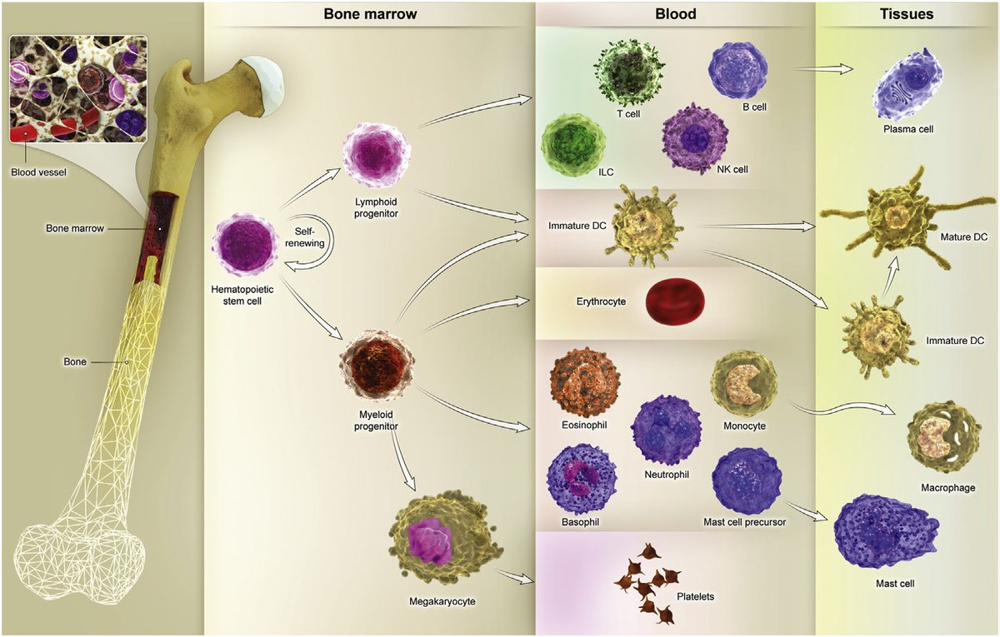
4 Clinical immunology 그 빈도는 표 1.2에서 볼 수 있듯이 나타나지만, 항원에 대한 면역반응은 림프 조직에서 일어난다12.
과립구(Granulocytes)
형태학적 차이에 기반하여, 다형핵백혈구(polymorphonuclear leukocyte) 또는 과립구에는 호중구, 호산구, 호염기구가 포함된다. 호중구는 혈액 순환에서 가장 흔한 과립구이며, 단핵구/대식세포와 함께 숙주 방어에서 식작용(포식작용)을 수행한다13. 식작용 과정에는 감염 부위로의 침입, 선천 면역계 수용체를 이용한 미생물 또는 괴사세포 산물의 포획, 그리고 식세포용해소체(phagolysosome)라 불리는 특화된 세포질 공포 내에서의 미생물 섭취와 사멸이 포함된다14. 호중구는 수명이 짧지만,
표 1.2 정상 백혈구 백분율
| 정상 백혈구 | 백분율 |
|---|---|
| 호중구 | 40–60% |
| 림프구 | 20–40% |
| 단핵구 | 2–8% |
| 호산구 | 1–4% |
| 호염기구 | <1% |
The immune system 5 세포골격 운동과 병원체 파괴를 위한 효소 활성이 뛰어나 병원체에 대한 반응이 비교적 빠르다. 호중구는 또한 세포외 미생물을 죽이는 항균 펩타이드(antimicrobial peptide)를 생성한다15.
호산구는 주로 기생충(연충)에 독성이 있는 염기성 단백질을 함유한 과립을 지닌다. 이 세포는 점막 조직에서도 발견될 수 있다16. 비만세포는 골수의 다른 전구세포에서 유래하지만, 혈액 호염기구는 조직 비만세포와 형태학적·구조적으로 유사하다. 또한 비만세포와 호염기구는 생물학적 매개물질을 탈과립(degranulation)시킴으로써 기생충 방어에 중요한 역할을 한다. 유사한 기전으로, 이 세포들은 고친화성 면역글로불린(Ig)E 특이적 Fc 수용체(FcεR)를 통해 알레르겐에 결합하여 알레르기 반응을 매개한다17.
단핵구/대식세포(Monocytes/macrophages)
단핵구와 대식세포는 단핵 식세포(mononuclear phagocyte)로 인식된다. 단핵구는 골수 전구세포에서 유래하여 혈액을 순환하지만, 조직으로 이동하면 대식세포로 성숙하며 이를 염증성 대식세포(inflammatory macrophage)라 한다. 이와 더불어, 간의 쿠퍼세포(Kupffer cell)나 폐의 폐포 대식세포(alveolar macrophage)처럼 태아 발달 과정에서 형성된, 다양한 조직에 상주하는 수명이 긴 조직상주 대식세포도 존재한다18.
기능적 측면에서 단핵구는 두 가지 주요 그룹으로 나뉜다. 가장 잘 알려진 유형은 염증성 또는 고전적(classic) 단핵구로, 식작용 활성을 지니고 염증 매개물질을 생성하며 감염 부위나 조직 손상 부위로 신속히 이동할 수 있다. 또한 주로 조직 복구에 관여하는 비고전적(nonclassical) 단핵구도 있다19. 이와 유사하게, 대식세포도 다양한 기능적 능력을 획득할 수 있으며 두 그룹으로 나뉜다: 고전적 활성화를 거쳐 주로 식작용에 관여하는 M1 대식세포와, 대체 활성화를 거쳐 조직 복구 특성을 지닌 M2 대식세포가 그것이다. M1 또는 M2 아형으로의 편향은 이 세포들이 노출되는 사이토카인 환경과 활성화 자극에 따라 결정된다20. 대식세포의 주요 기능은 식작용과 섭취된 미생물의 사멸이다. 대식세포는 또한 감염 부위에서 죽은 호중구를 포함한 세포자멸사(아폽토시스) 세포를 섭취한다21. 식작용을 통해 대식세포는 미생물 산물에 의해 자극되어 감염 부위로 단핵구와 기타 백혈구의 동원을 촉진하는 다양한 사이토카인을 생성한다. 나아가 식작용된 미생물은 대식세포의 항원제시 능력으로 림프구에게 제시되어, 세포성 면역반응 동안 T림프구를 활성화한다22.
항원제시세포(Antigen-presenting cells)
항원제시세포(APC)는 특히 T세포와 같은 림프구에게 항원을 제시하는 데 특화된 다양한 면역계 세포군이다. APC에는 단핵구, 대식세포, B림프구, 피부의 랑게르한스세포(Langerhans cell), 그리고 가장 중요한 수지상세포(DC)가 포함된다23.
6 Clinical immunology APC의 주요 특징은 각각 클러스터분화항원(cluster of differentiation, CD)8+ 및 CD4+ T세포에 항원성 펩타이드를 제시하기 위한 제1형 및 제2형 주요조직적합성복합체(MHC) 분자를 발현하는 것이며, T세포 활성화에 필요한 B7-1(CD80), B7-2(CD86) 등의 보조자극 분자(co-stimulatory molecule)도 함께 발현한다. APC는 항원을 포획·제시할 뿐 아니라, 항원을 제시받는 세포에 특정 반응을 유도하는 사이토카인도 제공한다24. 서로 다른 APC는 항원을 섭취하여 자신의 특이적 효과 기능을 이끌어낸다. 예를 들어, 세포성 면역반응에서 단핵구와 대식세포는 옵소닌화(식작용 촉진)된 항원을 식작용하여 T세포에 제시한다. T세포는 활성화되면 식세포가 섭취한 미생물을 죽이는 데 도움이 되는 사이토카인을 생성한다25. B세포의 T세포에 대한 항원제시 능력은 체액성 면역반응 동안 양측 모두에게 상호 이익을 제공하는 것으로 보인다. B세포는 내포작용(endocytosis)을 통해 BCR로 항원을 포획하여 표면 MHC 분자로 특이적 T세포에 제시한다. B세포에 의해 활성화된 T세포는 또한 항체 생성과 B세포 분화에 필요한 사이토카인을 생성한다26.
수지상세포(Dendritic cells, DCs)
DC는 전문 항원제시세포(professional APC)로, 선천 면역반응에서 미생물 항원을 효율적으로 감지·포획하여 이를 펩타이드 형태로 T세포에 제시한다. 그 결과 T세포가 활성화되어 후천 면역반응의 발달로 이어짐으로써, 면역반응의 두 갈래(선천/후천)를 연결하는 역할을 한다. 단핵구/대식세포와 비교하면 이 세포들은 식작용 능력은 더 약하지만, 톨유사수용체(TLR)를 포함한 광범위한 선천 면역반응 수용체를 발현하기 때문에 미생물 분자를 인식하여 활성화된다27. 활성화된 뒤 이 세포들은 감염 부위에 선천 면역 세포를 동원하고 활성화하는 사이토카인을 생성한다. 선천 면역반응 자체는 항원제시 동안 DC의 T세포 이동 및 활성화 능력을 증강한다28.
DC는 막성 돌기(membranous projection)를 가진 것으로 인식되며, 기능적으로 구별되는 두 가지 주요 집단으로 나뉜다. 대부분의 DC는 골수의 골수계 전구세포에서 유래하며 림프 조직과 점막 상피에 널리 분포한다. 이들을 고전적(classical) DC라고 하며, 상피 장벽을 통해 유입된 단백질 항원을 포획하고 강력한 T세포 반응을 자극하는 데 가장 뛰어난 능력을 지닌다. 이 집단의 일부는 피부 상피층에 위치하여 피부 장벽을 통해 유입된 미생물 항원을 감지하는 랑게르한스세포라 불린다. 이와 유사하게, 림프 및 비림프 조직에는 상주성 DC(resident DC)가 존재하여 자신이 있는 부위의 항원을 샘플링하고 강력하게 CD4+ T세포 반응을 유도한다29. 두 번째 DC 집단인 형질세포양 DC(plasmacytoid DC)는 선천 항바이러스 방어와 바이러스에 대한 1형 인터페론(IFN) 생성에 관여한다. 이 세포들은 골수 전구세포에서 발달하며 정상적으로 혈액에서 발견된다30. 세 번째 DC 집단인 여포수지상세포(follicular dendritic cell, FDC)도 존재한다. 이 세포들은 골수
The immune system 7 전구세포에서 유래하지 않으며 T세포에 항원을 제시하지 않는다. 하지만 체액성 면역반응 동안 B세포 활성화에 관여한다31.
림프구(Lymphocytes)
세포 표면 마커의 차이에 기반하여, 림프구에는 T, B, NK(자연살해), NKT(자연살해 T) 세포의 네 가지 범주가 있다32. 모든 림프구는 골수의 CLP 세포에서 분화하며 형태학적으로 유사하다. B림프구와 T림프구는 각 항원 결정기(antigenic determinant)에 대해 단일 특이성을 갖는 클론 분포된 세포 표면 수용체를 발현함으로써 특이적 항원 인식에 중추적 역할을 한다. 따라서 수백만 개의 B세포 및 T세포 클론이 각각 고유한 BCR(Ig 수용체)과 TCR을 사용하여 자신의 특이적 항원에 반응할 수 있다12.
B림프구는 골수에서 기원하여 성숙해진다. 여포 B세포(follicular B cell), B-1세포, 변연부 B(marginal zone B, MZB)세포가 B세포의 주요 부류이다. 여포 B세포(B-2)는 빈도가 가장 높으며 림프기관의 여포와 혈액에서 발견된다. 이들은 다양한 Ig 수용체 집합을 발현하며, 활성화되면 고친화성 항체 생산 세포로 분화한다. B-2세포는 감염 후 기억 B세포로 분화하여, 동일한 항원에 대한 반복 노출로부터 숙주를 보호한다33. B-1세포와 MZB세포는 덜 다양한 Ig 수용체를 발현하며 제한적 다양성을 가진 자연항체(주로 IgM)를 생성한다34.
T림프구는 보조(helper, CD4+)세포와 세포독성(cytotoxic, CD8+)세포의 두 주요 그룹으로 나뉜다. 림프구에 발현되는 TCR은 α 및 β 사슬(αβ T세포) 또는 γ 및 δ 사슬(γδ T세포)로 구성된다. αβ 보조 T세포는 주로 항원 인식과 활성화 시 사이토카인을 방출하며, 이는 세포성 및 체액성 면역반응에서 다른 T세포, B세포, 대식세포 등 다른 세포들을 돕는 역할을 한다. 반면 세포독성 T세포는 주로 바이러스 감염 세포와 암세포를 죽인다35. 조절 T세포(Treg)는 CD4+ αβ T세포의 세 번째 그룹으로, 면역반응 억제에 관여한다36. 또한, NKT세포, γδ T세포, 점막연관 불변 T(mucosa-associated invariant T, MAIT)세포는 제한적 다양성을 가진 수용체를 지닌 더 작은 T세포 그룹이다. NKT세포는 NK 유사 세포독성과 항원 특이적 T세포 반응성을 모두 나타낸다37,38.
림프구는 생성성 림프기관(generative lymphoid organ)에서 막 성숙한 상태에서는 기능적으로 비활성이며, 이를 미접촉(naïve) 림프구라 한다. 성숙 후 이들은 2차 림프 조직으로 이동하여, 그곳에서 처음으로 자신의 특이적 항원을 인식하고 표현형과 기능의 변화를 겪는다. 활성화와 증식에 이어 림프구는 항원을 제거하는 효과세포로 분화한다. 또한, 소수의 활성화 림프구는 기억세포로 분화하여, 특이적 항원에 대한 2차 노출 시 신속하고 강화된 반응을 매개한다39. NK세포는 골수의 림프계 전구세포에서 유래하며 선천 면역반응의 효과세포로 분류된다. NK세포는 클론 분포된
8 Clinical immunology TCR을 발현하지 않으며, 바이러스 감염 세포와 손상된 세포의 조기 제거에 중요하다. 따라서 후천 면역반응에서 세포독성 T림프구(CTL)의 대응 세포로 알려져 있다40.
1차 림프기관(Primary lymphoid organs)
1차 림프기관 또는 생성성 림프기관은 골수와 흉선을 포함하며, 각각 B세포와 T세포의 성숙 부위이다. 실제로 림프구 발달 초기 단계에 필요한 성장인자와, 비자가반응성(non-self-reactive) 림프구의 선택·성숙에 필요한 자가항원은 1차 림프기관에서 제공된다41. B림프구는 골수에서 부분적으로 성숙하며, 특이적 항원을 처음으로 인식하는 지라(비장, spleen)에서 성숙의 마지막 단계를 완료한다11.
골수는 또한 조혈(hematopoiesis), 즉 이후의 모든 혈액세포 생산의 주요 부위이기도 하다. 앞서 언급했듯이, 적혈구, 과립구, 단핵구, DC, 비만세포, 혈소판, B·T림프구, 선천림프구(innate lymphoid cell, ILC)는 모두 골수의 공통 조혈줄기세포에서 유래한다10. 골수에서 기질세포(stromal cell)와 조혈줄기세포는 특정 니치(niche)에 위치하여, 조혈에 필요한 접촉 의존적 신호와 성장인자를 제공한다42. 조혈줄기세포는 자가재생(self-renewing) 세포로, 두 개의 다능성 전구세포, 즉 CMP와 CLP를 생성한다. 이후 CMP는 성숙한 적혈구, 혈소판, 과립구(호중구, 호산구, 호염기구) 및 대부분의 DC를 생성한다. CLP는 T세포, B세포, ILC 계열을 생성한다. 골수 전구세포로부터 혈액세포가 생성되는 것은 콜로니자극인자(colony-stimulating factor, CSF)라고 하는 사이토카인 군에 의해 자극된다32. 조혈 외에도 골수에는 2차 림프 조직에서 활성화되어 골수로 이동한 장수명 형질세포가 채워져 있다43.
T림프구는 흉선에서 성숙한 후 순환계로 들어가 2차 림프기관으로 이동하여, 그곳에서 자신의 특이적 항원에 대한 면역반응을 전개한다44. 흉선은 전종격(anterior mediastinum)에 위치하며, 태아 발달 단계부터 사춘기까지 T세포 성숙의 주요 부위이며, 사춘기 이후에는 흉선이 위축(hypertrophy)된다. 흉선은 두 개의 엽(lobe)으로 이루어진 기관으로, 각 엽은 섬유성 중격(fibrous septum)에 의해 여러 소엽(lobule)으로 나뉘며, 각 소엽은 피질(cortex)과 수질(medulla)로 구성된다45. T세포 전구세포를 흉선세포(thymocyte)라 하며, 골수에서 흉선으로 이동한다. 흉선세포는 피질에서 성숙을 시작하여 성숙함에 따라 수질 쪽으로 이동한다. 피질에는 T세포의 조기 발달에 필요한 사이토카인인 인터루킨(IL)-7을 분비하는 흉선 피질 상피세포가 있다. 수질은 피질에 비해 흉선세포 밀도가 낮다. 수질에는 DC, 대식세포, 흉선 수질 상피세포가 존재하며, 이들은 최종적으로 흉선을 떠나 2차 림프기관으로 이동하는 비자가반응성 T세포의 성숙과 선택에 결정적으로 중요하다. 염색체 결실(deletion)로 인해
The immune system 9 흉선 발달의 결함은 환자에서 DeGeorge 증후군을 유발하며, 이 환자들은 T세포가 결여되어 있습니다. 우리는 DeGeorge 증후군을 원발성 면역결핍으로서 이후에 자세히 설명하겠습니다.46 2차 림프기관 2차 림프기관 또는 말초 림프조직에는 지라(비장), 림프절, 점막연관림프조직(MALT)이 포함되며, 이들은 외래 항원에 대한 면역반응의 인지와 개시가 일어나는 부위입니다. 나아가 APC, B세포, T세포는 2차 림프조직 내의 서로 다른 해부학적 위치에 자리잡고 있습니다. 외래 항원이 이 부위로 운반되는 것은 특이적 후천 면역반응의 생성과 발달을 보장합니다.47 림프절은 림프계의 일부로, 림프계에는 혈관이 분포한 모든 조직에서 간질액 또는 림프(감염 시 침입한 미생물 포함)를 수집하여 이를 배출림프절(draining lymph node)로 보내는 림프관도 포함됩니다. 인체 전역에서 수집된 림프는 최종적으로 흉관(thoracic duct)이라는 큰 림프관으로 방출됩니다. 흉관으로부터의 림프는 상대정맥(superior vena cava)으로 배출되어, 이로써 림프가 혈액으로 되돌아갑니다.48 림프절은 전신의 림프관을 따라 위치하는 피막성 조직입니다. 상피 표면을 통해 침입한 미생물 항원은 유리 형태로 또는 수지상세포(DC)에 포획된 형태로 구심성 림프관을 통해 림프절로 들어갑니다. 각 림프절은 피질(cortex)과 수질(medulla)로 구성됩니다. B세포와 여포수지상세포(FDC)는 주로 피질의 여포에 위치하는 반면, DC와 T세포는 주로 여포 아래의 부피질(paracortical) 영역으로 이동합니다. 이러한 세포의 해부학적 분리는 림프절 기질세포가 케모카인(chemokine)이라는 특수 사이토카인을 분비함으로써 매개되는데, 케모카인은 B세포와 T세포 표면의 특정 리간드에 결합하여 이들의 이동을 유도합니다. 이러한 해부학적 분리는 각각 자신을 자극하는 APC, FDC, DC 근처에 B세포와 T세포가 위치하도록 보장합니다.49 또한 림프조직유도세포(일종의 ILC)가 림프독소(lymphotoxin)라는 사이토카인을 분비하여 2차 림프기관의 발달을 자극한다는 점도 중요합니다.50 지라는 또 다른 피막성 2차 림프기관으로, 주로 혈액을 통해 침입한 미생물 항원에 대한 후천 면역반응을 개시하는 부위로 기능합니다. 지라는 노화되거나 손상된 혈액세포, 면역복합체, 옵소닌화된 미생물을 지라 대식세포가 제거하는 데 중요한 역할을 합니다. 지라는 적수(red pulp)와 백수(white pulp)로 구분됩니다. 적수는 혈액으로 채워진 혈관동양혈관(혈액동)으로 구성되며, 백수는 림프절에서와 유사한 B세포와 T세포의 해부학적 분리를 지니는 림프구가 풍부한 영역입니다. B세포는 주로 여포에 위치하는 반면, T세포는 동맥주위림프구초(PALS)라고 불리는 동맥 가지 부근의 영역에 위치합니다. 적수와 백수 사이의 공간을 변연부(marginal zone)라고 하며, 이는 변연동(marginal sinus)을 둘러싸는 특수화된 세포(특히 MZ B세포)로 구성된 영역입니다.51
10 Clinical immunology 림프절과 지라 외에도, 무피막성 림프구조물이 피부, 위장관 점막, 기관지 점막 등 거의 모든 상피 장벽에서 발견됩니다. 이러한 피부연관림프조직(SALT)과 점막연관림프조직(MALT)은 피부와 점막 장벽을 통해 침입한 다양한 미생물에 반응합니다. 이 조직에는 미만성으로 분포하는 선천 면역세포와 면역세포가 포함되어 있으며, 이들은 상피 장벽에서 발견되는 광범위한 공생 미생물(commensal microorganisms)에 대한 면역관용을 유지하면서 병원체에 대한 후천 면역반응을 인지하고 개시합니다.52,53 선천 면역 선천 면역계는 그 이름에서 유추할 수 있듯이, 미생물이 숙주에 침입할 때 이를 격퇴하는 즉각적이고 선재하는 방어 기전을 의미합니다. 이는 미생물에 대한 가장 오래되고 최전선의 방어 수단입니다. 미생물에 대한 선천 면역반응의 활성화는 설령 선천 면역반응이 침입한 미생물을 단독으로 제거하지 못하더라도 특이적 후천 면역반응의 활성화에 필요한 신호를 제공합니다. 선천 면역의 중요한 기능 중 하나는 피부와 위장관 및 호흡기관 등의 상피 장벽에서 장벽의 물리적 완전성을 유지하고 항균 펩타이드를 생성함으로써 병원체로부터 신체를 방어하는 것입니다. 나아가 선천 면역반응은 대식세포가 매개하는 손상되거나 죽은 세포의 제거를 통해 조직 복구에 중요한 역할을 합니다.54 앞서 언급한 바와 같이, 선천 면역계 구성요소는 각 미생물에 대해 다르게 반응하므로 선천 면역반응의 활성화 자체가 후천 면역반응의 성격을 결정할 수 있으며, 이는 각 미생물에 대한 적절하고 최적의 후천 면역반응의 활성화로 이어집니다. 선천 면역반응의 보호 과정 중 하나는 염증으로, 이는 감염 부위 또는 손상된 조직에 백혈구와 가용성 분자가 침윤하는 결과를 낳습니다. 선천 면역반응의 또 다른 핵심 특징은 항바이러스 방어로, 제1형 인터페론(IFN) 같은 항바이러스 사이토카인의 생성과 NK세포의 활성화를 통해 바이러스에 감염된 세포를 제거합니다. 선천 면역반응에는 다양한 세포 유형과 가용성 분자가 포함되며, 이에 대해서는 여기서 간략히 논하겠습니다.55 선천 면역계 내 미생물의 인지 선천 면역계의 세포는 미생물 또는 손상되고 죽은 숙주 세포에 의해 발현되는 제한된 분자 구조 세트를 인지합니다(후천 면역계의 수용체가 인지하는 광범위한 항원 다양성과 비교하여). 이러한 구조를 각각 병원체연관분자패턴(PAMP)과 손상연관분자패턴(DAMP)이라고 합니다. PAMP의 예로는 바이러스 이중가닥 RNA와 같은 미생물 핵산, 세균의 비메틸화 CpG DNA 서열, 그리고 그람음성균의 지질다당류(LPS)나 그람양성균의 리포테이코산 같은 세균 세포벽 구조 등이 있습니다. 대부분의
The immune system 11 PAMP는 미생물의 정상적인 생활주기에 필요한 구조로, 정상적으로는 포유류 세포에 의해 발현되지 않습니다.56 신체의 다양한 분자 그룹이 PAMP와 DAMP를 감지할 수 있으며, 이를 패턴인지수용체(PRR)라고 합니다. 이러한 분자는 크게 두 그룹으로 분류할 수 있습니다: 세포막이나 세포질에서 발현되는 세포결합형 분자와 혈청에서 발견되는 가용성 분자입니다. 세포결합형 PRR의 중요한 패밀리로는 TLR, NOD유사수용체(NLR), C형 렉틴수용체(CLR) 등이 있습니다. 대식세포와 DC는 이러한 수용체를 폭넓게 발현하며, 이를 통해 미생물과 손상된 세포를 인지하고 섭취하는 데 도움을 받고, 염증반응과 항바이러스 사이토카인 생성으로 이어지는 신호전달계를 개시하기도 합니다.57 선천 면역의 세포 구성요소 아마도 선천 면역계에서 가장 중요한 세포들은 상피 장벽에 위치할 것입니다. 이 세포들은 환경 미생물에 대한 물리적·화학적 방어 기전을 형성합니다. 실제로 상피세포는 서로 단단히 결합하여 연속적인 층을 만들며, 이는 피부와 위장관, 호흡기관, 비뇨생식기관의 점막 표면에서 미생물의 침입을 막습니다. 피부에서는 표피 바깥층의 각질세포(keratinocyte)가 표면으로부터 미생물의 통과를 차단할 수 있습니다. 점막 상피세포가 점액소(mucin)를 생성함으로써 미생물이 점막 조직에 집락화(colonization)하는 것을 방해합니다. 상피세포와 일부 다른 백혈구는 디펜신(defensin)과 카텔리시딘(cathelicidin) 같은 항균 펩타이드를 생성하며, 이는 광범위한 미생물에 대해 독성을 지닙니다.58,59 나아가 상피에는 제한된 다양성을 지니는 특수 유형의 림프구인 상피내림프구(IEL)가 포함되어 있습니다. 인간 T림프구의 대부분은 여전히 αβ TCR을 지니지만, γδ T림프구의 빈도는 다른 조직에 비해 IEL 중에서 더 높습니다. IEL은 세포독성 특성을 지니며, 소수의 미생물 구조를 인지할 수 있고, 사이토카인을 생성하고 식세포를 활성화하는 능력도 갖추고 있습니다.60 미생물이 상피 장벽을 통과하면 호중구와 대식세포 같은 식세포가 미생물 섭취와 염증반응 개시를 담당합니다.61 나아가 DC는 다양한 TLR과 세포질 PRR을 포함한 광범위한 PRR을 발현하여, 미생물이 발현하는 다양한 PAMP와 DAMP를 효율적으로 인지하게 합니다. DC는 수용체가 결합하면 활성화되어 감염 부위로의 백혈구 침윤을 촉진하는 사이토카인을 생성합니다. 이러한 DC의 특성은 미생물을 효율적으로 제거하는 방식으로 T세포반응의 활성화를 이끌어냅니다. 실제로 미생물의 특성은 미성숙 T세포가 해당 미생물 유형과 싸우는 데 효과적인 특정 T헬퍼(Th) 아군으로 분화하도록 결정합니다.62 공통 림프 전구세포 계통에서 기원하는 또 다른 선천 면역계 세포 그룹을 ILC라고 하며, 이들은 클론적으로 분포하는 TCR이 없지만
12 Clinical immunology 림프구와 유사합니다. 이 세포들은 상피 장벽의 조직 상주세포로, 장벽을 통과하는 미생물에 대한 초기 반응에서 상당한 역할을 할 수 있습니다.63 ILC에는 ILC1, ILC2, ILC3이라는 세 가지 유형이 있으며, 이들은 각각 Th1, Th2, Th17 CD4+ T세포 아군과 유사한 전사인자를 발현하고 사이토카인을 생성합니다. 이 세포들은 선천 면역반응의 맥락에서 사이토카인에 의해 활성화되며, 활성화되면 각기 다른 사이토카인을 생성하므로 서로 다른 유형의 병원체에 대한 숙주 방어의 서로 다른 경로에 참여할 수 있습니다. ILC1 세포는 IFN-γ를 생성하며 세포 내 미생물에 대한 방어에 중요합니다. ILC2는 IL-5, IL-9, IL-13을 생성하며 연충류 기생충에 대한 방어에 역할을 합니다. 또한 ILC2는 알레르기 질환의 발생에 기여할 수 있습니다. ILC3는 IL-22 및/또는 IL-17을 생성하며 세포 외 진균과 세균에 대한 방어에 참여하고 상피 표면의 무결성을 유지하는 데도 도움을 줍니다.64 NK세포는 제1형 ILC로 간주되며, IFN-γ를 생성하고 바이러스에 감염된 세포, 세포 내 세균, 그리고 암세포에 대해 세포독성 특성을 발휘합니다. 인간 NK세포는 주로 혈액, 지라, 간에서 발견됩니다. NK세포는 후천 면역반응이 활성화되기 전에 표적을 죽인다는 점에서 선천 면역에서 CTL의 대응물로 간주됩니다. 또한 활성화되면 IFN-γ를 생성할 수 있는데, 이는 후천 면역반응 동안 대식세포의 식작용 능력을 강화합니다. 이 세포들은 표면의 CD56과 CD16 발현으로 식별할 수 있습니다.65 NK세포는 클론적으로 분포하는 수용체는 발현하지 않는 반면, 건강한 세포와 감염된 세포를 구별하는 데 도움이 되는 다양한 생식세포계통(germline) 유래 활성화 수용체와 억제 수용체를 발현합니다. NK 활성화 수용체에는 살해세포면역글로불린유사수용체(KIR), CD16, NKG2D 수용체가 포함되며, NKG2D 수용체는 바이러스에 감염된 세포가 발현하는 MHC유사 분자 같은 감염 세포의 리간드를 인지합니다.66 일부 KIR 패밀리 수용체와 NKG2A 수용체 같은 NK 억제 수용체는 정상 세포가 발현하는 제1형 MHC 분자를 인지하여 NK세포에 억제 신호를 전달함으로써 NK세포의 활성화를 조절합니다. 거의 모든 유핵세포가 제1형 MHC 분자를 발현하지만, 바이러스에 감염된 세포나 악성 세포는 이 분자를 생성하고 표면에 발현하지 못하므로 NK세포의 억제 수용체 결합이 이루어지지 않아, 결과적으로 활성화 수용체를 통한 세포독성 반응이 활성화됩니다. 실제로 NK세포로 전달되는 활성화 수용체와 억제 수용체 신호의 결과가 NK세포 반응의 최종 운명을 결정합니다. NK세포가 활성화되면 CTL과 유사하게 퍼포린(perforin)과 그랜자임(granzyme)을 포함하는 과립을 방출합니다. 퍼포린은 표적 세포 표면에서 중합되어 구멍을 만들며, 이를 통해 그랜자임이 세포 내로 들어가 신호전달 과정의 연쇄를 개시하여 표적 세포의 세포자멸사(아폽토시스)를 유발합니다.67 선천 면역의 체액성 구성요소 선천 면역의 세포성 구성요소 외에도, 혈액순환과 세포외액에 존재하며 이 부위로 침입하는 병원체에 대한 선천적 숙주 방어에 중요한 가용성 매개물질이 있습니다. 보체
The immune system 13 계, 펜트락신(pentraxin), 콜렉틴(collectin), 피콜린(ficolin)을 포함하는 이러한 가용성 매개물질은, 후천 면역에서 체액성 면역반응으로 언급되는 항체와 B세포반응과 유사하게, 선천 면역의 체액성 구성요소로 지칭됩니다.68 보체계는 혈장 단백질과 함께 면역계 세포 표면의 보체 수용체 및 조절인자를 포함합니다. 보체단백질의 활성화는 단백질분해 연쇄반응에 기반하므로, 비활성 보체계 단백질 중 하나가 효소적 변화를 통해 활성화되면 다음 단백질을 절단하고 활성화합니다. 이로 인해 연쇄 활성화와 생성되는 단백질 수의 증폭이 발생합니다. 최종 산물은 표적 세포의 용해, 염증, 옵소닌 생성에 의한 식작용 강화를 포함하는 보체계의 효과기능을 유도합니다.69 보체계는 고전경로(classic pathway), 대체경로(alternative pathway), 렉틴경로(lectin pathway)를 통해 활성화될 수 있습니다. 고전경로는 그 이름에서 유추할 수 있듯이 최초로 발견된 경로로, 미생물 표면에 결합된 항체에 의해 활성화될 수 있습니다. 이 경로의 개시 단백질은 C1q로 불리며, 항체-항원 복합체에 결합하여 보체계의 연쇄 활성화를 초래합니다. C1q는 항체에 의해 활성화될 수 있으므로, 고전경로는 후천 면역의 체액성 분지의 중요한 효과기전으로도 간주됩니다. C1q가 항원에 결합된 항체에 결합하면, C1 분자 복합체의 두 세린 프로테아제인 C1r과 C1s가 활성화되어 단백질분해 연쇄 활성화에 관여하는 다른 보체단백질의 절단과 활성화를 시작합니다.70 대체경로는 C3 보체단백질의 절단과 활성화에 의해 개시됩니다. 정상 상태에서 C3는 혈청에서 구성적으로 활성화되어 세포 표면에 결합하지만, 숙주 세포 표면에 보체계 조절인자가 존재하여 대체경로의 활성화를 억제하고 자가 손상을 방지합니다. 미생물 표면에서는 조절 분자가 없기 때문에 C3가 직접 활성화되어 보체계 활성화의 대체경로를 개시할 수 있습니다.71 보체계의 렉틴경로는 콜렉틴 패밀리의 구성원인 만난결합렉틴(MBL)이 미생물의 당단백질과 당지질의 만노스 잔기에 결합함으로써 활성화됩니다. MBL은 구조적으로 보체계의 C1q 성분과 유사합니다. MBL이 미생물에 결합하면, C1 성분의 C1r과 C1s 분자와 유사한 만난결합세린프로테아제(MASP)1과 MASP2라는 두 프로테아제가 활성화되어 고전경로와 유사한 하류 단백질분해 경로를 시작합니다.72 언급된 세 경로 중 어느 하나를 통한 미생물의 인지는 C3-전환효소(C3-convertase)라는 중요한 복합체의 생성을 초래하며, C3-전환효소는 C3를 C3a와 C3b 두 분자로 절단합니다. C3b는 더 큰 성분으로 미생물 표면과 보체계의 다른 성분에 결합하여 C5-전환효소(C5-convertase)를 형성합니다. C5-전환효소는 그 이름에서 유추할 수 있듯이 C5를 C5a와 C5b로 절단합니다. 더 큰 부분인 C5b는 미생물 표면에 부착된 상태로 유지된 다음 C6, C7,
14 Clinical immunology C8, C9에 결합하여 막공격복합체(MAC)라는 복합 분자를 형성합니다. MAC는 세포막에 구멍을 만들어 보체 활성화 부위에서 세포 용해를 초래합니다.73 C3b는 또한 옵소닌으로 기능하며 식세포에 수용체를 지니므로, 이를 통해 식작용을 촉진합니다. C3a와 C5a 같은 보체단백질의 작은 성분은 아나필락톡신(anaphylatoxin)으로 알려져 있으며, 혈관의 투과성 증가, 비만세포의 탈과립, 감염 부위로의 백혈구 모집을 통해 염증을 촉진합니다.12 보체계 구성요소의 결핍은 다양한 면역결핍 질환과 증후군을 유발합니다. 예를 들어, C3의 결핍은 세균 감염에 대한 감수성을 높입니다. 또한 MAC 복합체 구성요소의 결핍은 Neisseria 세균 감염 같은 특정 감염의 위험을 증가시킵니다.32 펜트락신 패밀리에 속하는 또 다른 가용성 분자 그룹이 있으며, 이들은 다양한 미생물 구조를 인지하고 C1q 분자에 결합함으로써 보체계를 활성화할 수 있습니다. C반응성단백질(CRP), 펜트락신3(PTX3), 혈청아밀로이드P(SAP)가 펜트락신 패밀리의 구성원입니다. 아마도 이 패밀리에서 가장 중요한 단백질 중 하나는 급성기단백질(acute phase protein)로도 알려진 CRP일 것입니다. CRP는 건강한 개인의 혈장에서 매우 낮지만, 감염 중에는 간세포에 의해 생성될 수 있으며(IL-1과 IL-6 같은 전염증성 사이토카인에 의해 유도), 그 농도는 환자의 혈청에서 최대 1000배까지 도달할 수 있습니다. PTX3 역시 급성기단백질로 간주되며, 주로 DC와 대식세포에 의해 생성되고 TLR 리간드 또는 종양괴사인자(TNF) 사이토카인에 의해 활성화됩니다. PTX3는 다양한 미생물 구조를 인지하며 보체 고전경로를 활성화합니다.74 선천 면역의 가용성 분자 콜렉틴 패밀리에는 MBL과 폐 계면활성단백질 SP-A 및 SP-D가 포함됩니다. 앞서 언급한 바와 같이, MBL은 구조적으로 C1q 분자와 유사합니다. MBL은 미생물 표면의 만노스와 푸코스 탄수화물을 인지하고 렉틴경로를 통해 보체계를 활성화합니다. SP-A와 SP-D는 폐포에서 발견되는 계면활성제 중 하나로, 폐포액의 표면장력을 낮추어 호흡 팽창 시 폐포의 기능을 유지합니다. 또한 SP-A와 SP-D는 선천 면역의 효과기 분자로서 중요한 역할을 하며, 미생물에 결합하여 옵소닌으로 작용할 수 있으므로 폐포 대식세포에 의한 식작용을 촉진할 수 있습니다.75 주요조직적합성복합체(MHC)와 항원제시 T세포는 이전에 가공되어 다른 세포의 표면에 제시된 항원만 인지할 수 있으며, 가용성·세포외 항원을 인지할 수 있는 B세포와 달리 가용성 항원은 인지할 수 없습니다.76 항원은 MHC 분자라는 특수화된 단백질의 표면에 CD4+ 및 CD8+ T세포에게 제시됩니다. 이러한 분자에는 두 가지 유형이 있습니다.
The immune system 15 각 MHC 분자는 특정 T세포 유형 하나에 특이적으로 항원을 제시하며, 이러한 능력 덕분에 항원에 대해 올바른 면역반응이 활성화된다. 일부 MHC 분자는 내재화된 항원을 CD4+ T세포에 제시하는 반면, 다른 MHC 분자는 세포 내부에서 생성된 항원을 CD8+ T세포에 제시한다. 이 절에서는 이러한 분자들의 구조와 기능, 그리고 면역반응에서 이들이 수행하는 핵심적인 역할에 대해 간략히 살펴보겠다. T세포는 주로 MHC 분자에 의해 전시된 짧은 펩타이드를 인식할 수 있는데, 이는 MHC 없이도 단백질 및 비단백질 항원을 인식할 수 있는 B세포와 대조적이다. T세포는 성숙 과정 동안 MHC 표면에서만 항원을 인식하도록 학습되며, 이로 인해 성숙 T세포의 MHC 제한(MHC restriction)이 보장된다. MHC 분자는 개인 간에 높은 다형성을 보이는데, 이는 T세포가 서로 다른 항원을 인식하는 능력에 영향을 줄 수 있다. 이는 사람마다 특정 감염에 다르게 반응하는 이유 중 하나로, 어떤 사람에게는 빠르게 회복되는 감염이 다른 사람에게는 심각하게 진행될 수 있다. 인간 세포에는 두 가지 주요 MHC 분자 부류가 발현된다. A, B, C 분자로 구성된 1형 MHC는 인간의 모든 유핵세포에 발현되는 반면, DR, DP, DQ 하위군으로 구성된 2형 분자는 항원제시세포(APC)에서만 발현된다. MHC가 T세포에 항원을 전시하는 과정을 항원제시(antigen presentation)라고 하며, 이러한 기능을 가진 전문 세포를 APC라 한다.77 인간에서는 수지상세포(DC), 대식세포, B세포 등 여러 세포 유형이 APC 기능을 가지며, 이 중 DC가 가장 특화된 APC로 간주된다. 또한 전문 APC는 항상적으로 MHC 분자를 발현하는 세포이지만, 혈관내피세포나 상피세포처럼 특정 상황에서만 MHC 발현이 유도될 수 있는 세포 유형도 있다는 점을 알아야 한다. APC라는 용어를 사용할 때 우리는 대부분 MHC 2형을 발현하는 세포를 의미한다는 점을 유의하라. 모든 인간 유핵세포는 MHC 1형을 발현한다. 따라서 MHC 1형에 대해서는 그러한 구분이 필요하지 않다. 이는 모든 유핵세포가 CD8+ T세포에 펩타이드를 제시할 수 있음을 의미한다. 여기서 펩타이드라 함은 대부분 바이러스 펩타이드와 종양 펩타이드를 의미하는데, 이들은 모든 유핵세포에서 감염되거나 발생할 수 있으며, 이를 제거하기 위해 CD8+ 세포독성세포에 제시될 수 있다. MHC 제한 현상 앞서 언급했듯이 T세포는 MHC 분자의 틈(cleft)에 제시된 항원성 펩타이드만을 인식할 수 있다. TCR은 펩타이드와 이를 제시하는 MHC 분자를 동시에 인식한다. T세포 성숙 과정에서 T세포는 항원을 자기 MHC 분자와의 복합체 형태로 인식하도록 교육된다.78 MHC 구조 인간에서 MHC 유전자는 6번 염색체의 단완(短腕)에 있는 약 3500kb의 큰 DNA 구간에 위치한다. 각 염색체에 위치한 MHC 대립유전자의 집합을 MHC 일배체형(hapotype)이라고 한다.79
16 Clinical immunology MHC 분자는 면역글로불린(Ig) 슈퍼패밀리로 알려진 분자군에 속하며, 이는 Ig 유사 구조를 가짐을 의미한다. MHC 1형에서는 하나의 폴리펩타이드 사슬만, MHC 2형에서는 두 폴리펩타이드 사슬 모두가 Ig 유사 구조를 가지며, 각 사슬은 세포외 도메인, 막관통 도메인, 세포내 도메인의 세 부분으로 구성된다. 세포외 도메인에는 항원성 펩타이드가 결합할 수 있는 펩타이드 결합 틈(또는 MHC 고랑)이 있다. 따라서 MHC의 틈은 높은 다형성을 보인다. MHC I 구조 MHC I은 하나의 I
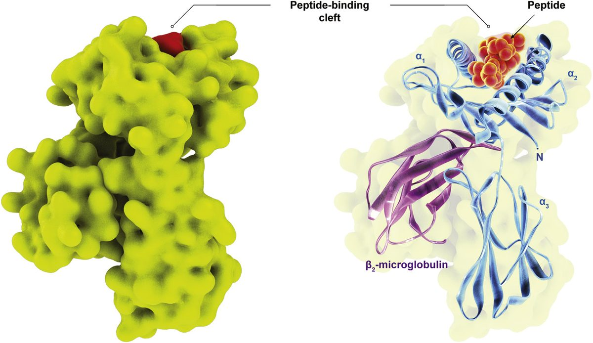
g 유사 다형성 α-사슬과 비다형성 β2-마이크로글로불린으로 구성되며, β2-마이크로글로불린은 MHC 유전자에 의해 암호화되지 않는다. 이 두 사슬은 비공유 결합으로 연결된다. α-사슬은 3개의 도메인(α1, α2, α3)으로 구성되며(그림 1.2), MHC 고랑은 α1과 α2 도메인에 의해 형성되어 8–11개 아미노산으로 이루어진 작은 펩타이드에 결합한다. MHC I의 고랑은 닫혀 있어 더 큰 펩타이드를 수용할 수 없다. 단백질을 MHC 고랑에 적합한 작은 펩타이드로 전환하는 가공 과정은 이후에 설명하겠다. α1과 α2 도메인은 항원성 펩타이드에 결합할 수 있도록 다형성을 띠는 반면, α3 도메인은 보존된 비다형성 아미노산 서열을 가지며 CD8 결합 부위를 포함한다. 완전한 MHC I 분자는 α-사슬, β2-마이크로글로불린, 항원성 펩타이드로 구성되며, 이 삼량체 복합체는 세포 표면에 안정적으로 발현된다.80 각 이형접합 개체는 HLA-A, B, C에서 각각 두 개씩 물려받은 대립유전자로부터 6가지 서로 다른 MHC 1형 분자를 발현한다. 그림 1.2 MHC 1형 분자의 구조. 다형성 α 사슬과 비다형성 β2-마이크로글로불린(β2m)으로 구성되며, 비공유 결합으로 서로 연결되어 있다.
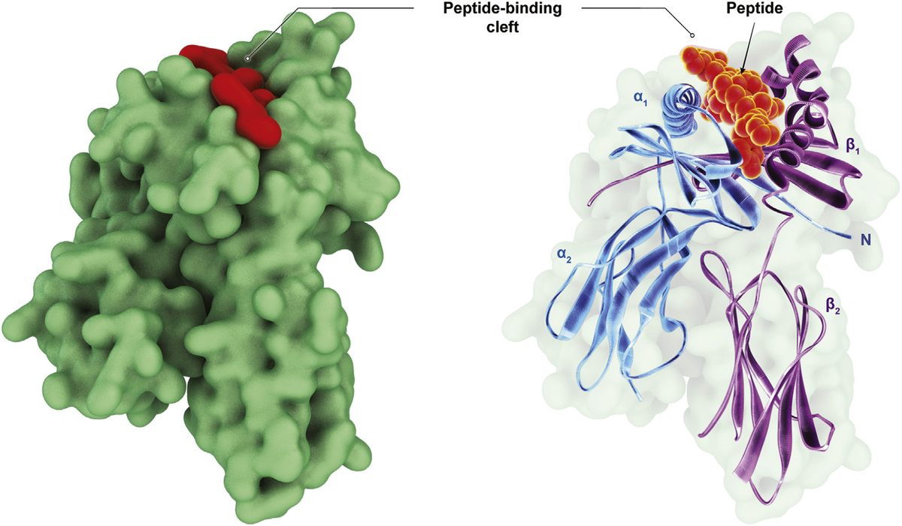
The immune system 17 그림 1.3 MHC 2형 분자의 구조. 다형성 α 사슬과 다형성 β 사슬로 구성되며, 비공유 결합으로 서로 연결되어 있다. MHC II 구조 MHC II는 비공유 결합으로 연결된 두 개의 Ig 유사 다형성 사슬(α, β)로 구성된다(그림 1.3).81 MHC II의 고랑은 α1과 β1 도메인에 의해 형성되며, 열린 말단을 가지므로 최대 30개 아미노산(최적 12–16개 잔기)의 펩타이드에 결합할 수 있다. α1과 β1 도메인은 다형성을 띠며, β 사슬에서 다형성이 더 높다. α2와 β2 도메인은 모두 보존된 비다형성 아미노산 서열을 가지며 CD4 결합에 기여한다. MHC I에서 언급한 것과 유사하게, 여기서도 완전한 MHC II 분자 구조는 α 사슬과 β 사슬에 더해 항원성 펩타이드를 포함하며, 세포 표면에 안정적으로 발현된다. 각 이형접합 개체는 HLA-DQ, DP에서 각각 두 개씩, HLA-DR에서 두 개 또는 네 개의 대립유전자를 물려받아 6~8가지 서로 다른 MHC 2형 분자를 발현한다. 각 MHC I 또는 II 분자는 다양한 펩타이드(자기 및 외래 항원 모두)에 결합할 수 있다는 점을 아는 것이 중요하다. 이것이 바로 각 개체의 소수의 MHC 분자로도 엄청나게 많은 수의 항원성 펩타이드를 제시할 수 있는 이유이다. MHC-펩타이드 복합체는 특정 T세포와의 상호작용 기회를 높이기 위해 긴 반감기를 가지는데, 이는 이들이 수일 동안 세포 표면에 머무를 수 있음을 의미한다. 특정 T세포를 활성화하기 위해 세포 표면의 모든 MHC-펩타이드가 동일한 펩타이드를 지녀야 하는 것은 아니며, 그중 일부(약 100개의 유사 복합체)만으로도 충분하다.
18 Clinical immunology MHC 제시 대부분의 단백질은 MHC 틈에 들어가기에는 너무 크다. 따라서 항원 가공 과정 동안 이들은 내재화되면 프로테아제에 의해 절단된다. 이후 절단된 펩타이드는 MHC 분자에 적재되어 세포 표면으로 이동하여 T세포에 전시된다. 세포질 단백질은 MHC I 표면에 전시되는 반면, 세포외 단백질은 내재화된 후 MHC II 분자에 제시된다. MHC I 가공 및 제시 경로 감염 세포에서 합성되는 바이러스 단백질과 세포 질로 삽입되거나 운반되는 모든 세균 단백질은 MHC I 경로로 들어갈 수 있다(그림 1.4).82 엔도좀에서 빠져나온 엔도좀 단백질, 종양 단백질, 소포체(ER)에서 잘못 접힌 단백질 등도 MHC I 경로의 항원성 펩타이드 공급원이 된다. 이 모든 단백질은 프로테아좀에서 분해되며, CD8+ T세포에 의해 인식된다. 프로테아좀은 세포질에 존재하는 원통형 프로테아제 복합체로, 안쪽에 두 개의 β 고리와 양쪽에 두 개의 α 고리를 가진다. 각 고리는 7개의 소단위를 포함하며, 이 중 3개가 촉매 부위이다. 프로테아좀은 유비퀴틴이라는 작은 펩타이드 사슬인 꼬리표(flag)를 통해 표적 단백질을 인식한다. 프로테아좀은 유비퀴틴화된 단백질을 짧은 펩타이드로 절단할 수 있으며, 이 펩타이드는 이후 특정 수송체에 의해 ER로 옮겨질 수 있다. IFN-γ는 프로테아좀 활성을 증가시킬 수 있으며, 따라서 MHC I 제시 과정을 촉진한다.83 ER 막에는 항원 가공 관련 수송체(transporter associated with antigen processing, TAP)라는 특화된 수송체가 존재하며, 이는 프로테아좀의 절단 산물을 아데노신삼인산(ATP) 의존 방식으로 ER로 운반한다. 그림 1.4 MHC 1형 항원 가공 및 제시. 경로는 본문에 설명되어 있다. 프로테아좀이 세포질에서 항원성 단백질을 분해한 후, 이들은 TAP를 통해 ER로 들어가 MHC I 고랑에 안착한다. ER, 소포체; ERAP, 소포체 관련 아미노펩티데이스; β2m, β2-마이크로글로불린; TAP, 항원 가공 관련 수송체; Ub, 유비퀴틴.
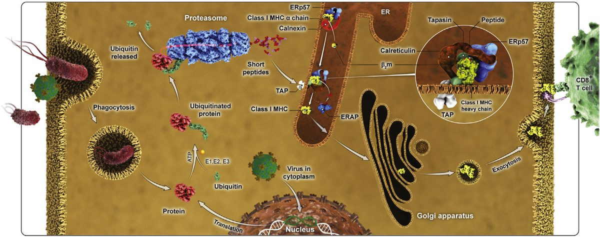
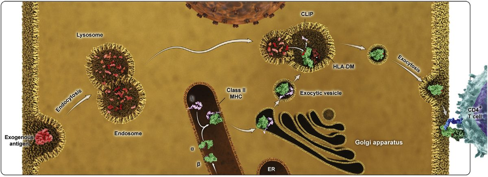
The immune system 19 소포체 내강에서 TAP는 MHC 샤페론 분자인 타파신(tapasin)과 결합한다. 따라서 펩타이드는 ER 내의 비어 있고 갓 합성된 MHC I 분자에 결합할 수 있다. ER 내 항원성 펩타이드의 크기가 적절하지 않으면, ER 상주 아미노펩티데이스(ERAP)가 이를 ER에서 다듬는다. MHC I이 펩타이드로 적재되면 ER을 빠져나와 ER-골지-세포외 배출 소포 경로를 통해 세포 표면에 발현될 수 있다. MHC II 분자의 틈은 ER에서 불변사슬(invariant chain, I)이라는 단백질에 의해 막혀 있다. 따라서 앞서 언급한 항원성 펩타이드는 MHC II에 조립될 수 없다. MHC II 가공 및 제시 경로 APC가 식작용, 엔도사이토시스, 또는 음세포작용(pinocytosis)으로 세포 내로 섭취한 세포외 단백질은 MHC II 경로로 들어간다(그림 1.5).84 실제로 이 단백질들은 리소좀이 엔도좀과 융합된 후 후기 엔도좀에서 카텝신과 같은 리소좀 프로테아제에 의해 절단된다. 세포외 단백질 외에도 이 경로로 들어가는 모든 내포작용 단백질은 세포 표면 단백질이거나 자가포식(autophagy)에 의해 섭취된 세포질 단백질일 수 있다. 각 APC 세포 유형은 항원을 내재화하기 위한 특정 수용체를 발현하는데, 예를 들어 DC와 대식세포의 Fc 수용체와 보체 수용체, B세포의 표면 Ig 수용체가 있다.85 MHC 2형 분자의 α 및 β 사슬은 ER에서 합성되며 칼넥신과 같은 ER 샤페론에 의해 조립된다. 앞서 언급했듯이 I는 MHC II의 틈을 막으며, 이 삼량체 단백질은 동시에 3개의 MHC II 분자에 부착할 수 있다. 또한 I는 MHC II 분자를 후기 엔도좀과 리소좀으로 유도하는데, 이곳에서 제시에 적합한 항원성 펩타이드를 찾을 수 있다. 후기 엔도좀에서 I는 프로테아제에 의해 분해되며, 그중 작은 부분만이 MHC 틈에 남는데 이를 2형 관련 불변사슬 펩타이드(class II-associated invariant chain peptide, CLIP)라고 한다. 그림 1.5 MHC 2형 항원 가공 및 제시. 경로는 본문에 설명되어 있다. 항원성 단백질을 포함한 엔도좀은 먼저 리소좀과, 그다음 MHC II 함유 소포와 융합하고, 마지막으로 항원성 펩타이드가 MHC 고랑에 안착한다. CLIP, 2형 관련 불변사슬 펩타이드; ER, 소포체; Ii, 불변사슬.
20 Clinical immunology CLIP와 항원성 펩타이드의 교체는 MHC II와 구조적으로 유사한 분자인 HLA-DM의 도움으로 일어난다. HLA-DM은 MHC 유전자에 의해 암호화되지만, MHC 분자처럼 다형성을 띠지는 않는다. HLA-DM은 CLIP를 항원성 펩타이드와 교환하는 데 기능하며, 특히 MHC II에 대한 친화력이 높은 펩타이드를 선호한다. MHC II 틈은 열려 있으므로 더 큰 펩타이드가 부착할 수 있으며, 이후 엔도좀 프로테아제에 의해 추가로 절단되어 10–30개 아미노산의 최적 크기에 도달한다. MHC-펩타이드 복합체가 안정해지면, 이를 포함하는 소포가 세포막과 융합하여 펩타이드가 세포 표면에 발현되며, T세포가 이를 인식할 수 있게 된다. 교차제시(Cross-presentation) 이는 항원성 펩타이드가 엔도좀에서 세포질로 들어가 CD8+ T세포에 제시되는 과정이다. 일반적으로 세포외 항원은 앞 절에서 언급한 것처럼 MHC II에 발현되지만, DC와 같은 일부 세포는 이러한 항원을 MHC I에 제시하여 CD8+ 세포에 전달할 수 있다. 이 과정을 교차제시라고 한다. 예를 들어 DC는 종양세포나 바이러스 감염 세포를 섭취한 후 다른 세포의 항원을 CD8+ T세포에 제시할 수 있다. 이 과정은 전문 APC가 바이러스 및 종양 항원에 대해 효과적인 면역반응을 개시하는 데 필요하다.86 MHC 가공 및 제시 경로는 각기 다른 항원에 필요한 반응 유형에 맞게 적응된다. CD4+ T세포는 MHC II 경로에 따라 활성화되어 대식세포의 식작용 능력을 증가시키고 B세포가 항체를 생산하도록 도움을 제공하며, 이 두 기능 모두 세포외 항원에 대한 면역반응에 필요하다. CD8+ T세포는 MHC I 경로에 따라 활성화되어 바이러스 감염 세포나 종양 세포를 죽인다. 앞서 설명했듯이 MHC 유전자는 다형성을 띠며, 각 개인은 서로 다른 MHC 분자 세트를 가진다. 따라서 사람들은 특정 항원에 다르게 반응하며, 이는 그들의 MHC 분자가 특정 항원을 얼마나 잘 결합하고 제시할 수 있는지에 따라 결정된다. 이는 또한 사람들이 백신에 다르게 반응하고 서로 다른 것에 알레르기를 보이는 이유를 설명한다. 또한 세포에 서로 다른 MHC 분자를 가진다는 것은 인간 간 장기이식을 제한하는 요인이 된다. 지금까지 언급한 대부분은 단백질 항원에 관한 것이었다. 여기서 면역우세 에피토프(immunodominant epitope)라는 용어도 언급해야 한다. 이는 단백질 항원 중에서도 더 잘 결합하고 따라서 T세포에 더 잘 제시되어 더 강한 면역반응을 자극할 수 있는 에피토프를 말한다. 글리코리피드 항원은 비고전적 MHC 분자인 CD1에 의해 제시될 수 있으며, 이 복합체는 NKT세포에 의해 인식된다. NKT세포는 매우 제한된 다양성을 가진 TCR도 발현하는 NK세포의 한 유형이다. 인간의 대부분 T세포는 하나의 α 사슬과 하나의 β 사슬로 구성된 TCR 분자를 발현하지만(이에 대해서는 나중에 논의), γδ TCR 사슬을 가진 소수의 T세포 집단도 존재한다. 이 세포들을 γδ T세포라고 하며, 이들은 MHC 제한을 받지 않는다.
The immune system 21 αβ T세포와는 달리 이 세포들은 단백질 항원뿐만 아니라 지질, 인산화 분자, 알킬아민도 인식할 수 있다. B림프구 이 장의 서두에서 언급했듯이 B림프구는 후천 면역(적응 면역)계의 주요 세포이다. 이들은 항체를 생산하는 세포로, 체액성 면역계에서도 핵심적인 역할을 수행함을 보여준다. 이 절에서는 먼저 B세포 발달과 BCR의 구조 및 형성에 대해 다루고, 이어서 이 세포들이 어떻게 활성화되는지, 마지막으로 이 세포들의 기능으로 절을 마무리하겠다. B림프구 발달 B세포 발달이 처음 일어나는 곳은 태아 간이며, 출생 후에는 골수에서 발달이 이루어진다. 골수에서 B세포는 전구세포로부터 미성숙 상태로 발달한다. 이는 프로B세포에서 프리B세포로, 그다음 프리B세포에서 미성숙 B세포로의 변환으로 구성된다. 이 절에서 이 과정을 간략히 설명하겠다. Ig 재배열은 골수에서 B세포 발달의 초기 단계에 시작되며, 재조합 활성화 유전자 1과 2(Rag1/Rag2) 재조합효소의 발현에 의해 개시된다. 프리B세포는 재배열된 Ig 중쇄와 대체 경쇄(surrogate light chain)를 가진 프리-BCR을 발현하는 최초의 세포이다. 미성숙 B세포는 골수를 떠나기 전에 완전히 재배열된 막결합 Ig(즉, BCR)를 발현한다. 미성숙 B세포에서 성숙 B세포로의 최종 분화 단계는 주로 지라(비장)에서 일어난다. 마지막으로 성숙 B세포는 2차 림프기관의 여포로 귀소(homing)하여 자신의 특이 항원을 만날 때까지 그곳에서 대기한다. 언급했듯이 Ig 재배열은 B세포 발달 단계에서 중요한 확인점(checkpoint)이며, Ig 레퍼토리의 다양성을 보장한다. Ig 재배열 과정을 더 잘 이해하기 위해서는 Ig 분자의 구조와 코딩 유전자를 간략히 설명해야 한다. 인간 항체 분자는 두 개의 중쇄와 두 개의 경쇄로 구성된다. 중쇄는 4가지 유형이 있다(IgM의 μ, IgG의 γ, IgA의 α, IgE의 ε). 각 중쇄는 하나의 가변(V) 도메인과 여러 개의 불변(C1, C2, C3, …) 도메인을 포함하며, 이들은 14번 염색체의 IgH 유전자좌에 의해 암호화된다. Ig 경쇄에는 κ와 λ의 두 가지 유형이 있으며, 각각 중쇄와 구조적으로 유사한 하나의 가변 도메인과 하나의 불변 도메인으로 구성된다. κ 유전자는 2번 염색체에, λ는 22번 염색체에 있다. κ 대 λ 사용 비율은 2:1이므로, 인간의 대부분 Ig 분자는 κ 경쇄를 포함한다. IgH 유전자는 분절되어 있으며 여러 가변(V), 다양성(D), 연결(J) 분절을 포함하는 반면, Igκ와 Igλ 유전자는 V와 J 분절만을 포함한다. 재배열 과정 동안 V, D(존재하는 경우), J 분절 각각에서 하나씩 무작위로 선택되어 서로 연결되며, 이를 통해 Ig 사슬의 가변 도메인이 구축된다. 이 과정을 V(D)J 재배열이라 한다.
22 Clinical immunology 재조합(recombination)을 담당하는 효소를 V(D)J 재조합효소 또는 Rag-1/Rag-2라고 한다. RAG 유전자는 B세포와 T림프구의 발현 과정에서만 발현되며, 이 유전자에 돌연변이가 발생하면 B세포와 T세포가 결핍된 중증 combined 면역결핍증(severe combined immunodeficiency, SCID)이 발생한다. Artemis도 V(D)J 재조합에 관여하는 효소이며, Artemis의 돌연변이 역시 SCID를 유발한다. Ig과 TCR의 다양성은 유전자 세그먼트의 무작위 조합만이 아니라 접합부 다양성(junctional diversity)의 결과이기도 하다. 접합부 다양성은 Artemis와 터미널 디옥시뉴클레오타이드 트랜스퍼레이스(terminal deoxynucleotidyl transferase, TdT) 같은 효소의 도움으로 유전자 세그먼트 접합부에서 뉴클레오타이드의 결실 또는 첨가를 포함하며, 접합부에 P 및 N 뉴클레오타이드를 추가한다. 이러한 다양성 메커니즘은 인간에서 10^7종 이상의 서로 다른 Ig 및 TCR 클론을 생성하며, 동시에 많은 비기능적 수용체를 만들어내는데, 이들은 후속 선별 과정에서 제거된다87,88. Ig 재조합은 Rag1/Rag2와 TdT 효소가 발현되는 전 B세포(pro B) 단계에서 시작되며, 중쇄(IgH)의 VDJ 재배열이 일어난다. VDJ 재배열과 가변 도메인의 형성 후, Cμ(µ 중쇄의 상수 영역) 세그먼트가 VDJ에 부착되고, 완전한 중쇄의 메신저 리보뉴클레아산(messenger ribonucleic acid, mRNA)이 단백질로 번역된다. 대체(exclusion) 현상은 각 B세포 클론에서 하나의 중쇄를 코딩하는 유전자 대립유전자(allele)만을 허용하는 현상으로, 이로 인해 동일한 클론 내 모든 세포에서 동일한 중쇄가 발현된다. µ 중쇄의 발현은 전 B세포를 precursor B세포(pre B) 단계로 전환시키며, 이 세포들은 표면에 중쇄와 함께 라이트 체인 대체 단백질(surrogate of light chain)인 λ5 및 V pre B를 포함하는 초기 BCR을 발현한다. 이 두 단백질은 비가변적이며 Ig 라이트 체인과 유사한 구조를 갖는다. pre BCR의 발현은 B세포 발달에서의 검문소(checkpoint)로 간주된다89. Bruton 티로신 키나제(Bruton’s tyrosine kinase, Btk)라고 불리는 단백질 티로신 키나제가 pre BCR 하류에서 활성화되며, 이 신호전달 경로를 통해 전 B세포의 생존, 증식 및 후속 단계로의 전환이 촉진된다. BTK 유전자의 돌연변이는 X연쇄 무γ글로불린혈증(X-linked agammaglobulinemia, XLA)을 유발하며, 인간에서 B세포 성숙 실패를 초래한다. pre BCR 신호는 중쇄와 유사한 방식으로 Igκ 라이트 체인의 VJ 재배열을 촉발한다. 재배열은 항상 κ 체인에서 시작되며, κ 체인이 성공하지 못할 경우에만 λ 체인으로 진행된다. 이 현상을 라이트 체인 동형 제외(light chain isotype exclusion)라고 한다. 이 현상의 결과로 각 B세포 클론은 κ 또는 λ 라이트 체인 중 하나만 발현할 수 있다. B세포가 표면에 완전한 IgM을 발현하면 미성숙 B세포로 전환된다. 따라서 성공적인 재배열은 미성숙 B세포의 양성 선별(positive selection)을 위한 허가로 간주된다. 이 조건 하에서만 미성숙 B세포는 BCR의 톤성 신호전달(tonic signaling)을 통해 생존 신호를 받는다. 골수에서 자가 펩타이드를 강하게 인식하는 자가반응성(self-reactive) 미성숙 B세포는 수용체 편집(receptor editing)이라는 과정에서 수용체의 특이성을 변경할 수 있는 기회를 다시 얻는다90. 이 단계에서 Rag1/Rag2가 일시적으로 다시 발현될 수 있으며, 자가반응성 미성숙 B세포는 Ig 라이트 체인 재배열을 또 한 차례 수행하여 B세포 클론의 특이성을 변화시키고 제거로부터 구할 수 있다. 수용체 편집이 성공하지 못하면 해당 클론은 음성 선별(negative selection)을 거쳐 세포자멸사(apoptosis)로 사멸한다.
The immune system 23 B세포 아형(subset)
대부분의 B세포는 골수에서 유래하며 B-2세포라고 불린다. 골수를 빠져나온 후 이들은 과도기 B세포(transitional B cell)로 존재하다가 지라(비장)로 이동한다. 지라에서 이들은 MZB세포 또는 여포 B세포(follicular B cell)로 분화될 수 있다. B-1세포는 태아 간에서 발달하는 또 다른 B세포 아형이다. B세포의 대부분은 동일한 항원 특이성(즉, 동일한 가변 영역과 서로 다른 상수 영역)을 가진 표면 IgM과 IgD를 발현하는 여포 B세포이다. 따라서 성숙한 순환 B세포(mature recirculating B cell)는 IgM⁺, IgD⁺이며, 아직 미성숙(naïve) 상태에서 BCR의 톤성 신호전달을 통해 생존 신호를 받는다. 또한, TNF 패밀리의 B세포 활성인자(B cell-activating factor of the TNF family, BAFF) 사이토카인이 리간드 APRIL을 통해 B세포에 추가적인 생존 및 성숙 신호를 제공한다. 미성숙 B세포는 특이 항원을 찾기 위해 림프절→혈액→림프절을 순환한다. 그렇지 않으면 수 개월 후에 사멸한다. MZB세포는 처음에 지라의 가장자리 뇌실(marginal sinus)에서 발견되었으나, 인간 림프절에도 존재한다. 이들은 제한된 다양성을 가진 IgM(비 IgD) BCR과 높은 수준의 CD21만을 발현한다. B1세포는 혈류 미생물에 대응하여 단명(short-lived) IgM 분비 형질세포로 분화한다91. B1세포는 태아 간에서 발생하며, 여포 B세포에 비해 매우 제한된 다양성을 가지며, 쥐에서는 CD5를 발현한다92. B1세포는 흔한 미생물 다당체 및 지질 항원에 대응하며 이에 대해 IgM을 분비한다. ABO 혈액형 항원에 대한 항체도 B1세포에 의해 생성되는 것으로 알려져 있다.
B세포 활성화
성숙 미성숙 B세포는 2차 림프기관으로 이동(homing)하여 BCR을 통해 특이 항원을 찾고 인식한다. 앞에서 언급한 바와 같이, B세포는 림프절 내 여러 경로를 통해 가공되지 않은(처리되지 않은) 항원을 인식할 수 있다. B세포는 단백질 항원에 대해 T세포 의존적(T cell-dependent) 방식으로 반응하며, 다당체 항원에 대해서는 독립적으로 반응할 수 있다. BCR 복합체(막 Ig와 Igα 및 Igβ 단백질)는 항원 인식 및 후속 신호전달에 기능한다. 보체 수용체 2 또는 CD21은 여포 B세포와 MZB세포의 표면에 발현되며 보조 수용체(co-receptor)로 작용하여 B세포 활성화를 촉진한다. 보체 수용체 2의 리간드는 보체 활성화 후 미생물 항원에 부착되는 C3d 단편이다. TLR도 미생물 항원의 리간드를 인식하여 B세포 활성화를 강화할 수 있다. 인간 B세포는 TLR-5, 7, 9를 발현한다. 수지상세포(DC)와 대식세포와 같은 골수세포(myeloid cell)는 항원을 포획하여 B세포가 위치하는 림프 여포로 운반함으로써 B세포의 항원 반응을 강화할 수 있다. 골수세포는 BAFF와 같은 사이토카인을 생산하여 B세포 활성화를 촉진하며, Th세포의 활성화를 통해서도 간접적으로 촉진한다. B세포는 반응을 개시하기 위해 BCR 교차연결(cross-linking)이 필요하다. 다당체와 같은 T세포 의존성 항원(T cell-independent antigen)은 일반적으로 다가체(multivalent)이기 때문에 BCR을 쉽게 교차연결한다.
24 Clinical immunology 그러나 단백질 항원은 다가체가 아니며, B세포는 이러한 항원에 효과적으로 반응하기 위해 T세포의 도움이 필요하다. 미성숙 T세포와 미성숙 B세포는 각각 림프절의 T세포 영역과 여포에서 단백질 항원에 접근한다. 앞에서 언급한 바와 같이, 수지상세포(DC)는 항원을 가공하여 MHC 분자 표면에 제시(presentation)한다. 동일한 항원은 가공이나 제시 없이 미성숙 B세포에 의해 인식될 수 있다. T와 B가 모두 활성화되면 이들은 여포 가장자리 쪽으로 이동하여 만나게 되며, 이는 케모카인 수용체의 발현 변화에 의해 이루어진다. 활성화 시 T세포는 C─C 케모카인 수용체(CCR)7을 하향 조절하고 C-X-C 케모카인 수용체(CXCR)5를 상향 조절하는데, CXCR5는 케모카인(C-X-C 모티프) 리간드(CXCL)13의 수용체로 여포에서 높은 수준으로 발현된다. 반면, B세포는 CXCR5를 하향 조절하고 CCR7을 상향 조절하여, 높은 수준의 CCL19와 CCL21이 존재하는 T세포 영역으로 이동할 수 있게 된다. 이 상호작용에서 B세포는 다시 항원을 T세포에 제시하고 T세포의 도움을 받아 형질세포로 분화한다. T세포는 활성화 시 CD40 리간드(CD40L)(CD154)를 발현하며, 이는 B세포의 CD40과 상호작용하여 핵 인자 kappa B(NF-κB) 및 활성화 단백질-1(AP-1) 전사인자 활성화를 통해 B세포 증식과 형질세포로의 분화를 자극한다. CD40L 유전자의 돌연변이는 항체 생성 결함(아이소타입 전환 및 친화력 성숙)을 초래하며, X연쇄 과다 IgM 증후군(X-linked hyper IgM syndrome, XHIGM)이라는 질병을 유발한다. 생식 중심(germinal center)은 장수성 형질세포, 고친화력 항체, 그리고 기억 B세포의 생산을 위한 핵심 사건이 일어나는 매우 중요한 위치이다. 생식 중심은 T-B 상호작용 후 약 4~7일 후에 림프 여포에 형성된다. 활성화된 B세포는 생식 중심의 어두운 영역(dark zone)에서 증식을 시작하며, 이 단계에서 센트로blast(centroblast)라고 불린다. 이후 이들은 생식 중심의 밝은 영역(light zone)에서 센트로사이트(centrocyte)로 변하여, 여포 도움 T세포(Tfh) 및 FDC와 상호작용한다. T-B 상호작용 후, 활성화된 T세포 일부는 CXCR5, 프로그램된 세포 사멸 단백질(PD)-1, 유도형 비자극 코스티뮬레이터(ICOS), IL-21을 높은 수준으로 발현하는 Tfh세포로 전환된다93. FDC는 생식 중심 반응에서 B세포 선별에 중요한 역할을 한다. 이 세포들은 Fc 수용체와 보체 수용체를 발현하여 항원을 포획하고 제시한다. 이들은 APC는 아니지만, 고친화력 BCR(Ig)을 가진 B세포를 선별하기 위해 항원을 보유하고 있다. 항원에 대한 고친화력 Ig를 발현하는 B세포는 생존하여 형질세포로 분화된다. 형질세포는 생식 중심을 떠나 골수로 이동(homing)하며, 기억 B세포는 순환한다. B세포는 생식 중심에서 Ig 가변 유전자의 체세포 과돌연변이(somatic hypermutation)를 거친다. 이는 상보성 결정 영역(complementarity-determining regions, CDR)에서의 점 돌연변이에 의해 일어나며, 활성화 유도 탈아미노화효소(activation-induced deaminase, AID)가 이 과정에 관여한다. AID는 일부 C 뉴클레오타이드를 U로 변환하고, U는 복제 과정에서 T로 변환되거나 우라실 N-글리코실레이스(Uracil N-glycosylase, UNG)라는 다른 효소에 의해 제거된다. 이후 오류 감수 DNA 복구 효소가 U를 임의의 뉴클레오타이드로 대체할 수 있다. 체세포 과돌연변이의 결과로 Ig V
The immune system 25 세그먼트가 변화하며, 이후 가장 높은 친화력의 항체를 생산하는 B세포가 림프 여포에서 선택적으로 생존한다. 이 현상을 친화력 성숙(affinity maturation)이라 하며, CD40-CD40L 상호작용과 FDC가 필수적이다94. 앞에서 언급한 바와 같이, B세포는 IgM과 IgD 수용체를 가지지만, 분화 과정 후반에 IgG, IgA, IgE와 같은 다른 등급의 항체를 생산할 수 있다. 이는 서로 다른 사이토카인에 대응하여 Ig의 상수 영역을 변경하는 것으로, 아이소타입 전환(isotype switching)이라고 한다. 클래스 전환(class switching)은 일반적으로 항체가 대응하는 항원의 특성에 따라 달라진다. 많은 세균과 바이러스에 대해, 면역 반응에서 초기 IgM은 IFN-γ에 의해 촉진되어 IgG로 전환된다. Ig는 기생충(연충) 및 Th2 유형 사이토카인에 대응하여 IgE로 전환될 수 있다. 점막 부위에서 항체가 필요할 때는 IgA로 전환되며, 전환 성장 인자(TGF)-β, BAFF, APRIL이 이 전환을 촉진한다. CD40-CD40L 상호작용은 아이소타입 전환에 필수적인데, 이 상호작용을 통한 신호전달은 B세포에서 AID의 발현과 이후 소위 전환 재조합(switch recombination)을 촉발하기 때문이다. 전환 영역(switch region)은 J와 C 세그먼트 사이의 인트론, 즉 각 C 영역 앞에 위치하는 특이적인 GC 풍부 뉴클레오타이드 서열이며, AID에 의해 인식될 수 있다. 이 과정의 결과는 DNA 수준에서 VDJ 세그먼트는 변화하지 않은 상태로 Cμ 영역이 다른 상수 영역으로 대체되는 것이다. 아이소타입 전환은 적절한 등급의 항체를 보유함으로써 B세포를 더 효율적인 반응 세포로 만든다94.
형질세포 분화
B세포가 활성화되면, 생식 중심에서 형질세포 또는 기억 B세포로 전환된다95. 형질세포가 되기 위해 B세포는 항체 생산 공장이 되기 위한 구조적 변화를 거쳐야 한다. 예를 들어, 세포 크기가 커지고 분비 체계(ER)가 발달하며, Ig 분자를 분비형으로 전환함에 따라 표면 Ig 발현이 중단된다. 형질세포는 단명형 또는 장수형일 수 있다. 단명형 형질세포는 일반적으로 다당체와 같은 T세포 의존성 항원에 대응하여 발생한다. 이 세포들은 T세포 의존성 반응의 초기 단계에서도 발생하지만, 단백질 항원에 대한 주요 형질세포 유형은 장수형 형질세포이다. 이들은 BCMA(BAFF의 또 다른 리간드)를 통한 신호전달을 통해 생존한다. 이후 이 세포들은 골수로 이동(homing)하여 수년간 특이적 Ig를 생산한다. 다당체와 같은 비단백 항원도 항체 반응과 형질세포 분화를 유발할 수 있지만, 일반적으로 낮은 친화력의 항체를 생산하며 IgG와 IgA로의 아이소타입 전환은 제한적이다. 앞에서 언급한 바와 같이, 이들은 대부분 B1세포와 MZB세포이다.
기억 B세포
기억세포 형성은 면역계의 핵심 특성이며, 두 번째 접촉 시 같은 병원체를 더 빠르고 효율적으로 방어하기 위해 필요하다.
26 Clinical immunology 기억 B세포는 생식 중심 과정에서 형성되며, 장시간 생존할 수 있게 하는 B세포 림프종 단백질(B-cell lymphoma protein, BCL)-2와 같은 항세포자멸사 단백질을 발현한다. 이들은 일반적으로 혈액과 림프기관 사이를 순환한다. 성공적인 백신은 기억세포의 분화를 촉발할 수 있는 백신이다96.
항체의 효과 기능(effector function)
다양한 등급의 항체 외에도, IgG와 IgA와 같은 일부 항체는 구조와 기능에서 약간 차이가 나는 몇 가지 아등급(subclass)을 가진다. 인간에서 IgG는 IgG1부터 IgG4까지 4개의 아등급을 가지며, IgA는 IgA1과 IgA2 아등급을 가진다. 면역계의 여러 세포는 면역 복합체를 포획할 수 있는 Fc 수용체를 발현한다.
중화(neutralization): 항체의 주요 기능 중 하나는 미생물 항원이나 독소를 인식하고 중화하여 숙주 세포에의 결합 또는 침입을 차단하고 감염을 예방하는 것이다. 이는 항체의 가변 영역의 기능이다. IgG는 주로 혈액 내 항원을 중화하는 반면, IgA는 점막 표면에서 이 기능을 수행한다97,98.
옵소닌화(식작용 촉진) 및 식작용: 일부 등급의 항체(주로 IgG1과 IgG3)는 가변 영역을 통해 항원을 인식하고 식작용 세포의 Fc-Fc 수용체 상호작용을 통해 항원의 식작용(phagocytosis)을 촉진한다. 항체 분자가 항원을 덮으면 이를 옵소닌화(opsonization)라고 한다. 대식세포와 호중구는 옵소닌화된 항원을 인식하여 이를 세포 내로 섭취하고 살균한다. 보체계의 일부 생성물(예: C3b)도 옵소닌화를 수행하여 항원의 흡수를 촉진할 수 있다99.
항체의존 세포매개 세포독성(ADCC): 이는 항체의 또 다른 중요한 기능이다. NK세포는 IgG의 Fc 수용체를 발현하며, 항체로 코팅된 세포를 인식할 수 있는데, 이는 NK세포의 탈과립(degranulation)과 표적 세포의 살해로 이어진다. IgG 항체는 태반을 통해 태아에게 전달될 수 있다. 따라서 모체 항체는 신생아의 주요 방어 메커니즘이다. IgM, IgG1, IgG2, IgG3과 같은 다른 등급의 항체는 보체계의 전통적 경로(classic pathway)를 활성화할 수 있다. 비만세포와 호산구는 IgE의 Fc 수용체를 발현하며, 이는 비만세포의 탈과립과 기생충에 대한 호산구 매개 방어를 촉발할 수 있다. IgA 항체는 점막 면역에 매우 중요하다. IgA 항체는 호흡기 및 위장관의 루멘으로 분비되어 미생물 항원을 최초 접촉 위치에서 중화한다.
T림프구
T세포는 후천 면역(적응 면역)의 두 가지 주요 구성 요소 중 하나이다. T세포는 세포성 면역(cell-mediated immunity)의 촉진자(driving force)이며, 단백질 항원에 대한 항체 생성에도 필수적인 도움을 제공한다100. 항체는 중화 또는 옵소닌화만 수행할 수 있는 반면,
The immune system 27 세포 외 항원에 접근할 수 있으므로 면역계가 이에 대응할 수 있다. 세포 내에 존재할 수 있는 항원은 세포 내 병원체로 간주되며, T세포는 감염되거나 종양이 생긴 세포를 제거할 수 있다. T세포는 표면 마커에 따라 CD4+ T세포와 CD8+ T세포 두 가지 아군으로 분류되며, 인체에서 CD4+ T세포는 CD8+ T세포보다 약 두 배 많다. CD4+ T세포는 주로 식작용(포식작용)을 자극하는 사이토카인을 생산하는 것 외에도 B세포를 보조하는 역할을 하며, CD8+ T세포는 세포 내 항원 및 종양 항원에 대한 방어에서 핵심적인 역할을 담당한다.101
T세포 발달
T세포 발달은 B세포와 어느 정도 유사하다. 즉, T세포는 처음에 태아 간에서 발달하고, 출생 후 전구세포가 골수로 이동한다. T세포의 성숙은 이 과정에 특화된 1차 림프기관인 흉선에서 이루어진다. 흉선은 나이가 들면서 위축되어 흉선 출력량이 감소한다. 다능 전구세포는 흉선 외피(outer cortex)로 이동하며, 이를 흉선세포라 한다.102 이 이전은 케모카인과 케모카인 수용체에 의해 유도된다. T세포 전구세포는 CCR9을 발현하며, 흉선 외피에는 CCR9의 리간드인 CCL25가 농도가 높다. T세포는 외피에서 αβ 또는 γδ TCR을 획득하며, αβ TCR+ 세포는 흉선 수질(medulla)로 이동하는 과정에서 CD4+와 CD8+를 추가로 획득한다. 흉선세포가 외피에서 수질로 이동하는 것도 케모카인 농도 경사를 따른다. 흉선 수질에서는 CCL19과 CCL21이 높은 수준으로 발현되며, T세포는 이들의 수용체인 CCR7을 발현한다. T세포는 흉선을 떠날 때 CD4+ 또는 CD8+ 중 하나가 되며, 스핑고신 1-인산(sphingosine 1-phosphate) 수용체를 발현하면서 스핑고신 1-인산 농도 경사를 따라 혈액으로 이동한다.
T세포 발달에서의 TCR 재배치는 γδ TCR부터 시작되고, 이후 αβ TCR 재배치로 이어진다. T세포에서의 CD4와 CD8 마커 발현은 T세포 발달의 검문점(checkpoint)으로 여겨진다. 모든 흉선세포는 흉선에 도착했을 때 CD4와 CD8 마커가 모두 음성인 이중 음성(double negative) 상태이며, 이를 전(前) T세포라 한다. 이 단계에서 Rag1과 Rag2가 발현되어 TCR β 유전자 영역 내에서 TCR 재배치를 시작한다. B세포의 재배치 단계와 유사하게, 먼저 Dβ 영역이 Jβ에 부착하고, 이후 Vβ 영역이 DJβ에 연결되며, 최종적으로 상수 영역이 전사에 필요한 TCR β 유전자를 완성한다. β 체인을 성공적으로 재배치하고 발현할 수 있는 세포만 이후 발달 과정을 계속할 수 있다. 흉선세포가 소위 프리-TCR(pre-TCR)을 발현하면, 이는 TCR β 체인과 프리-Tα로 구성되며 이를 전(前) T세포라 한다. 프리-TCR은 CD3 및 ζ 단백질과 복합체로 함께 발현된다는 점을 유의해야 한다. 프리-TCR이 매개하는 신호는 전 T세포의 증식과 생존을 촉진하고, TCR α 유전자의 추가 재배치를 촉발한다. 이 신호는 TCR β 유전자의 대립유전자 배제(allelic exclusion)도 유도한다. 전 T세포는 표면 마커를 변경하여
28 Clinical immunology CD4와 CD8 마커가 모두 양성인 이중 양성(double-positive) 흉선세포로 전환된다. 이들은 처음으로 αβ TCR을 발현하며 이중 양성 단계에서 양성 선택(positive selection)을 받는다. TCR α 체인은 D 영역이 없고 대립유전자 배제가 없어 양쪽 대립유전자 모두 재배치될 수 있다. 따라서 T세포는 동일한 β 체인과 함께 두 가지 α 체인을 발현할 수 있다. 양성 선택은 자체 MHC 분자의 가랑이(groove)에서 항원 펩타이드를 인식할 수 있는 T세포의 생존을 보장한다. 그렇지 않으면 T세포는 흉선에서 사멸하여 성숙 과정을 계속할 수 없다. T세포 성숙의 마지막 단계는 계열 운명 결정(lineage-fate decision)으로, CD4 또는 CD8 표면 마커 중 하나에 대해 단일 양성(single positive)이 된 후 흉선 수질로 진입하고, 이후 2차 림프기관으로 이동한다.103 CD4+ T세포는 자체 MHC II에서 항원을 인식할 수 있는 반면, CD8+ T세포는 자체 MHC I에서 항원을 인식한다. 음성 선택(negative selection)은 단일 양성 단계에서 이루어지며, 자체 펩타이드에 대한 높은 친화력을 가진 T세포 클론(자가반응성)의 제거를 보장한다. 이들은 세포자멸사(아폽토시스)로 사멸하거나 조절 T세포(Tregs)로 분화하여 중앙 면역관용(central tolerance)의 메커니즘으로 T세포의 자가반응성을 최소화한다. 면역관용 메커니즘에 대해서는 이 장이후에 논의할 것이다.
흉선의 항원제시세포(APC), 즉 흉선 상피세포는 인체 조직에서 널리 발현되는 자체 단백질을 발현한다. 또한, 흉선에서 조직 특이적 항원의 발현을 유도하는 핵 단백질인 자가면역 조절인자(AIRE)를 발현한다. AIRE의 돌연변이는 자가면역 다분비증후군(autoimmune polyendocrine syndrome)을 유발한다.
γδ T세포의 분화는 앞서 언급한 바와 같이 αβ T세포보다 먼저 일어난다. 다시 말해, β 체인 재배치 전에 γ 및 δ 유전자 영역의 재배치가 성공적으로 이루어지는 경우(약 10%의 확률로), 그 세포는 γδ T세포로 분화한다. γδ T세포는 αβ T세포에 비해 다양성이 적다.104
T세포 활성화
나이브(naïve) T세포는 주로 수지상세포(DC)인 항원제시세포에 의해 2차 림프기관에서 활성화된다. 수지상세포는 나이브 T세포 활성화를 위한 전문적이고 가장 강력한 항원제시세포이다. 수지상세포는 림프절의 T세포 영역에 위치하며 동시에 여러 항원을 제시한다. T세포가 특이적 항원을 인식하면 활성화되어 증식하고, 사이토카인을 생산하며, 효과세포 또는 기억세포로 분화한다. 활성화 후 T세포는 말초 조직에서 효과 기능을 수행할 수 있다(이후에 논의). 항원의 성질과 위치에 따라 수지상세포는 MHC I에 항원을 제시하여 나이브 CD8+ T세포를 활성화하거나, MHC II에 항원을 제시하여 나이브 CD4+ T세포를 활성화할 수 있다. B세포와 대식세포와 같은 다른 항원제시세포는 활성화된 T세포에 항원을 제시할 수 있다.
T세포 활성화의 첫 번째 신호는 항상 항원 자체이다. T세포는 펩타이드-MHC 외에도 이 상호작용에 참여하는 다른 표면 수용체와 공수용체를 가지고 있다.105 T세포의 완전한 활성화에 필요한 두 번째 신호는 항원제시세포의 공자극 분자에 의해 제공된다. B7-1(CD80)과 B7-2(CD86)는 활성화된 항원제시세포에서 가장 잘 알려진 공자극 분자이며, T세포의 CD28과 상호작용하여 두 번째 신호를 제공한다.106 B7은 휴지기 항원제시세포에서는 발현되지 않거나 매우 낮은 수준으로 발현되며, 미생물 항원에 의한 자극 후에야 상향 조절된다.
The immune system 29 활성화된 CD4+ T세포는 CD40-CD40L 상호작용을 통해 항원제시세포의 B7 발현을 유도할 수도 있다. T세포 활성화 시 CD40L 발현이 증가하며, 이는 T세포 효과 기능에 중요하다. 자체 항원에 의한 T세포 자극은 일반적으로 B7-CD28 신호의 낮은 수준에서 일어나며, 이는 활성화보다는 조절적인 성질을 가지며 T세포 면역관용(tolerance) 유지에 중요하다.107 첫 번째와 두 번째 신호(TCR 및 CD28 신호전달)는 PI3 및 Akt 키네이스뿐만 아니라 PLC 및 MAP 키네이스의 활성화를 초래하며, 궁극적으로 T세포의 생존, 증식, 사이토카인 생산, 효과세포 및 기억세포로의 분화로 이어진다. 효과세포와 기억세포는 두 번째 신호에 덜 의존하므로 다른 항원제시세포에 의해서도 활성화될 수 있다.
B7과 CD28 모두 다른 기능을 가진 가족 구성원이 있다. CD28 가족은 ICOS(CD278), 세포독성 T림프구 연관 단백질(CTLA)-4(CD152), PD-1로 구성된다. ICOS는 생식중심(germinal center) 반응, TfH 발달, 항체 생산에 중요하다. CTLA-4와 PD-1은 억제 기능을 가지며 면역 반응의 제한 단계에서 중요하다. 이 두 수용체는 T세포 면역관용에도 관여하며, 발현의 조절 이상은 자가면역 장애를 초래한다. 앞서 언급한 수용체의 리간드는 각각 ICOSL, B7, 프로그램된 사멸 리간드(PD-L)1이다. CTLA-4-Ig에 의한 B7:CD28 상호작용 차단은 이식 거부반응과 류마티스관절염(RA)에 대한 승인된 치료법이다. CTLA-4-Ig는 CTLA-4의 세포 외 영역과 사람 IgG의 Fc 영역으로 구성된다. CTLA-4는 CD28에 비해 B7에 대한 친화력이 더 높다. 따라서 B7:CD28 차단에 사용된다. CTLA-4 및 PD-1에 대한 항체는 이들 분자의 억제 기능을 차단할 수 있어 암 면역치료에 사용되고 있다.108
T세포가 활성화되면 CD69, CD25, CD40L의 표면 발현이 증가한다. CD69 증가에 이어 스핑고신 1-인산 수용체가 감소하며, 이는 림프기관으로부터 T세포의 해방을 매개한다. 스핑고신 1-인산은 림프기관에서 높은 농도로 존재하며, 나이브 T세포는 스핑고신 1-인산 수용체를 높게 발현하여 1차 림프기관으로 유인된다. CD25, 즉 IL-2 수용체의 α 체인은 T세포 활성화 시 상향 조절되며, 이는 T세포가 IL-2(T세포 성장, 분화, 생존 인자)에 반응할 수 있게 한다. 림프구 기능 연관 항원(LFA)-1이나 매우 늦은 항원(VLA)-4와 같은 부착 분자(인테그린)와 CD62L과 같은 셀렉틴 등 다른 사이토카인 수용체도 T세포 활성화 과정에서 상향 조절되어 T세포가 효과 기능을 수행하고 다양한 조직으로 이동하는 데 기여한다.109
IL-2는 주요 T세포 성장 인자이며, 나이브 T세포 활성화 후 IL-2 유전자에서의 전사와 수용체 발현이 유도된다. IL-2는 BCL-2와 같은 항세포자멸사 단백질을 유도한다. 또한 포유류 표적 라파마이신(mTOR) 신호전달의 활성화를 통해
30 Clinical immunology 세포 주기를 촉진한다.110 IFN-γ 및 IL-4와 같은 다른 사이토카인의 생산도 IL-2에 의해 영향을 받고 촉진된다. Tregs는 IL-2가 이들 세포의 생존과 기능에 필수적이므로 IL-2 수용체를 구성적으로 발현한다. IL-2는 항원 특이적 CD4+ 및 CD8+ T세포를 각각 1,000배 및 최대 50,000배까지 클론적 팽창시킨다. 효과 T세포는 면역 반응 동안 다른 사이토카인을 생산하고 B세포나 대식세포와 같은 다른 세포에 영향을 미친다.
T세포 활성화 과정에서 또 하나의 중요한 부분은 기억 T세포의 형성으로, 이는 항원에 대한 장기 면역을 보장한다. 기억 T세포 형성 과정은 완전히 밝혀지지 않았지만, 일정 비율의 T세포가 평생 생존할 수 있고 높은 수준의 항세포자멸사 단백질을 발현하는 기억세포로 전환된다는 것은 알려져 있다. 기억 세포의 형성은 예방접종을 통한 면역화를 가능하게 하는데, 이 세포들은 나이브 T세포에 비해 항원에 더 빠르고 더 강한 상태로 반응할 수 있기 때문이다. 특정 항원에 대한 기억 T세포의 빈도는 해당 특이적 나이브 세포보다 높은 것으로 여겨진다. 기억세포는 항원이 없는 상태에서 자가 갱신(self-renewing) 능력을 가지며, 재감염 시 감염된 조직으로 신속하게 이동하여 며칠 내에 반응할 수 있다. IL-7은 기억세포의 생존에 중요한 사이토카인이며, 기억 T세포는 IL-7 수용체(CD127)를 발현한다. 따라서 CD127은 기억세포 표면 마커이다. 기억 T세포의 다른 마커로는 CD45RO와 CD27이 있다. 최근 기억세포 집단은 거주 위치와 기능에 따라 중앙 기억세포(TCM)와 효과 기억세포(TEM) 두 범주로 분류되었다. TCM은 CCR7과 CD62L을 발현하여 림프절로 homing하며, 기억세포의 저장고를 유지한다. 효과 기능이 낮은 반면, TEM은 homing 마커를 발현하지 않으며 조직에서 효과 T세포로 신속하게 전환되어 IFN-γ와 같은 사이토카인을 생산하는 역할을 한다.111
T세포 활성화는 항원 제거 후 감소한다. 이는 자극 부족으로 인해 IL-2 가용성이 줄고 항세포자멸사 단백질의 발현이 감소하기 때문이다. 결과적으로 활성화된 세포가 사멸하여 면역 반응이 약화된다. 앞서 언급했듯이, PD-1이나 CTLA-4와 같은 몇몇 수용체는 활성화된 T세포에 나중에 발현되어 면역 반응의 제한을 돕는다.
CD4+ T세포 효과 기능
CD4+ T세포는 항원제시세포가 제시하는 식작용된 항원을 인식한다. 대식세포와 같은 식작용 세포는 선천 면역의 일부로서 미생물 항원을 식작용하여 파괴할 수 있다. 그러나 많은 세균 항원은 이 과정에 저항하여 식작용 소포 내에서 생존할 수 있다. 다행히 식작용 세포는 MHC II 분자를 발현하여 미생물 항원을 가공하고 T세포에 제시할 수 있다. CD4+ T세포는 리간드(예: CD40L)를 발현하고 활성화 시 사이토카인을 생산한다. 따라서 식작용 세포의 기능을 향상시킨다. CD4+ T세포는 서로 다른
The immune system 31 사이토카인 생산 능력을 가진 다양한 아군이 있으며, 본 장에서는 CD4+ T세포의 다양한 아군을 간략히 설명할 것이다. CD4+ 효과 T세포의 주요 아군은 Th1, Th2, Th17 세포이다. 이들 세포는 다양한 유형의 병원체에 반응하여 활성화되며, 항원제시세포가 림프기관에서 분비하는 사이토카인이 분화를 유도한다. 각 아군은 서로 다른 사이토카인을 생산하고 서로 다른 전사인자를 발현한다. 앞서 언급한 아군 외에도, Tregs는 CD4+ T세포의 또 다른 아군으로 활성화보다는 조절적 성질이 더 강하며 자가 항원에 대한 면역관용 유지에 핵심적이다.112,113
Th1 세포
Th1 반응을 유도하는 주요 병원체는 식작용 세포 내에서 생존하는 세포 내 병원체(세균 또는 바이러스)이다. Th1 분화는 수지상세포, 대식세포 또는 NK세포가 이러한 병원체에 반응하여 IL-12, IL-18, IFN-γ를 분비할 때 일어난다. Th1 세포는 주로 IFN-γ를 생산하며, 이는 추가적인 Th1 분화를 촉진하고 Th2 및 Th17 분화를 억제한다. T-bet, 신호전달 및 전사활성화인자(STAT)1, STAT4는 Th1 특이적 전사인자로, 항원과 함께 사이토카인에 의해 유도된다. IFN-γ는 STAT1과 T-bet을 유도하고, IL-12는 STAT4를 유도한다. T-bet과 STAT4 전사인자는 양의 피드백 방식으로 IFN-γ 생산을 증가시킨다.114
Th1 세포는 CXCR3과 CCR5를 발현하여 감염 부위로 유인되는 특유의 homing 패턴을 가진다. 선천 면역의 세포들은 조직의 감염원에 반응하여 케모카인을 생산하여 T세포를 유인한다. Th1 세포는 E 선택소와 P 선택소의 리간드를 발현하여 염증 부위로 이동한다. Th1 세포는 IFN-γ 분비 및 CD40-CD40L 상호작용을 통해 대식세포(고전적 대식세포 활성화 또는 M1 대식세포)를 활성화하여 미생물 항원을 파괴한다. 대식세포는 IFN-γ 존재 하에서 항원 식작용 능력과 파괴 능력, 그리고 항원 제시 능력을 향상시킨다. IFN-γ는 Th1을 촉진하고 Th2와 Th17 분화를 억제할 뿐만 아니라, B세포의 클래스 스위칭을 IgG 생산 쪽으로 유도하고 IgE로의 전환을 억제한다. Th1 세포는 다른 백혈구를 모집하는 TNF와 DC 및 대식세포를 억제하여 면역 반응을 억제하는 IL-10도 생산한다.
Th2 세포
Th1과 달리 Th2 세포는 식작용을 촉진하지 않고, 호산구와 비만세포를 활성화하여 알레르기 반응을 매개하고 기생충(연충)에 대한 숙주 방어를 수행한다. 따라서 Th2 세포는 알레르겐과 기생충 병원체에 반응하여 분화한다. IL-4는 Th2로의 분화를 매개하는 주요 사이토카인으로 알려져 있다. 그러나 IL-25, IL-33, 흉선 기질 림프조성인자(thymic stromal lymphopoietin)과 같은 다른 사이토카인도 Th2 분화를 매개할 수 있다. 비만세포와 Th2 세포는 모두 IL-4의 공급원이며, 앞서 언급한 다른 사이토카인은 손상된 조직 세포에서 생산된다. GATA3과 STAT6은 Th2 특이적 전사인자로, TCR 신호 및 IL-4에 의해 유도된다. GATA3의 유도는 IL-4, IL-5, IL-13을 포함하는 Th2 특이적 사이토카인의 전사를 유도하는 동시에 IL-12 수용체를 억제하여 결과적으로 Th1 분화를 억제한다.
32 Clinical immunology 분화115 IL-4는 IgE 항체로의 클래스 스위칭을 매개하며, 양성 피드백 고리를 통해 Th2 세포로의 추가 분화를 촉진한다. IL-13 또한 IgE로의 스위칭에 역할을 할 수 있다. IL-4와 IL-13 모두 대체 경로(alternative pathway)를 통해 대식세포(macrophage)를 활성화할 수 있으며, 이는 IFN-γ를 통한 대식세포 활성화와는 다르다. 대체 활성화를 거친 대식세포(M2 대식세포라고 불림)는 항염증 기능을 가질 뿐만 아니라 조직 수복을 위한 효소를 생산한다. 따라서 Th2 세포는 M2 대식세포의 활성화를 촉진하고 M1 대식세포의 활성화를 억제한다. IL-4와 IL-13은 기도의 점액 분비와 위장관의 연동 운동에도 중요한 역할을 한다. 이러한 사이토카인을 통해 Th2 세포는 점막 방어의 방어 기전에 참여한다. IL-5는 성숙한 호산구(eosinophil)를 활성화하고 이 세포의 분화를 촉진한다. 호산구는 IgE의 Fc 부분에 대한 수용체를 발현하며, 이 수용체를 통해 IgE로 코팅된 기생충(helminth)을 인식하고 살해할 수 있다. Th2 세포는 조직 이동을 위해 CCR3, CCR4, CCR8를 발현한다. Th17 세포: Th17 세포는 주로 감염 부위로의 호중구(neutrophil) 모집(호중구성 염증)에 역할을 한다. 이 세포는 특정 세균 및 진균(fungus) 감염에 대해 활성화되며, 염증성 질환 및 자가면역질환(autoimmune disease)에도 관여한다. Th17 세포는 수지상세포(dendritic cell, DC)가 분비하는 IL-6, IL-1, IL-23에 반응하여 분화한다. 첫 번째 두 사이토카인은 Th17 분화에 중요하며, IL-23은 Th17 세포가 증식하는 후기 단계에서 기능하는 것으로 알려져 있다. TGF-β는 Th17 세포 분화에 중요한 또 다른 사이토카인이다. Th1 및 Th2로의 분화는 Th17을 억제하므로, IFN-γ와 IL-4 모두 Th17 분화에 대한 억제 기능을 갖는다116. Th17 세포의 주요 전사인자는 레티노산 수용체 관련 고아 수용체 감마 t (RORγt)와 STAT3이며, 이들은 TGF-β와 IL-6에 의해 활성화된다. Th17 세포는 IL-17과 IL-22를 생산하고 CCR6를 발현한다. IL-17 패밀리는 IL-17A부터 F까지 구성되며, 알려진 주요 기능은 IL-17A에 의해 수행된다. 이 사이토카인은 호중구를 모집하고, 어느 정도 단핵구(monocyte)도 모집하며, 천연 항미생물 물질인 디펜신(defensin) 생산을 촉진하는 염증성 사이토카인이다. IL-22는 주로 상피 표면에서 유사한 역할을 하며, 염증 촉진과 함께 항미생물 물질을 생산하여 상피 장벽의 무결성을 유지한다. Th17 세포가 생산하는 또 다른 사이토카인은 IL-21로, Tfh 세포 생성, 생식중심(germinal center)에서의 B세포 활성화, 그리고 CD8+ T세포 및 NK세포 활성화에서의 역할 외에 Th17 분화를 증폭시키는 자가분비(autocrine) 기능을 한다. 결핍된 Th17 분화는 반복되는 진균 및 세균 감염을 초래하며, 이는 주로 피부에서 나타난다(예: 만성 점막피부구균감염증). 이는 STAT3 유전자 돌연변이에 의해 발생하며, 이 질환을 과다 IgE 증후군 또는 Job 증후군이라 한다. Th17은 다발성경화증(multiple sclerosis), 건선(psoriasis), 염증성 장 질환, 류마티스관절염(rheumatoid arthritis) 등 여러 염증성 질환에 관여하는 것으로 밝혀졌다. Th17의 억제는 위 질환들에 대한 치료적 접근으로 여겨지고 있다.
The immune system 33 CD8+ T세포의 효과기 기능 이 세포의 주요 역할은 세포 독성으로, 바이러스 감염 세포(세포질 내에 바이러스를 보유), 세균 감염 세포(세균이 엔도솜에서 세포질로 탈출한 경우), 그리고 종양 세포의 살해를 포함한다117. 따라서 이 세포들은 감염원의 제거에 결정적으로 중요하다. 미성숙(naïve) CD8+ T세포가 림프기관에서 MHC I의 홈(groove)과 공동자극 분자(예: B7)에 의해 DC가 제시하는 항원을 인식하면, 효과기 CTL로 분화한다. 이 분화 과정은 CTL에 퍼포린(perforin)과 그란자임(granzyme)을 함유한 세포용해성 과립을 무장시킬 뿐만 아니라 IFN-γ 생산을 수반하며, 이들의 암호화 유전자는 분화 과정 중에 발현된다. 분자 수준에서 T-bet과 eomesodermin이 용해성 과립 유전자의 전사를 촉진한다118. DC는 미성숙 CD8+ T세포를 자극하는 가장 강력한 항원제시세포(APC)이며, 일부 DC는 소위 교차제시(cross-presentation)를 통해 MHC I 경로 특이적 항원을 제시할 수 있다. 대부분의 바이러스 감염 세포나 종양 세포는 반드시 DC가 아니라 조직 세포이다. 이러한 상황에서 DC는 전체 세포를 섭취하고, 항원을 엔도솜에서 세포질로 전달함으로써 MHC I을 통해 항원을 제시할 수 있다. 최근 연구에 따르면 CD4+ T세포도 성공적인 CTL 분화에 중요한데, 특히 항원이 강력한 선천 면역(innate immunity) 반응을 유도하지 못한 경우에 그렇다. 이 발견에 대한 근거는 인간면역결핍바이러스(HIV) 감염 환자에서 관찰되는 결핍된 CTL 반응이다. HIV는 주로 CD4+ T세포를 표적으로 삼기 때문이다. CD4+ T세포의 도움은 사이토카인 분비(예: IL-2, IL-21)를 통한 것이거나 CD40-CD40L 상호작용을 통한 DC 활성화를 통한 것일 수 있다. IL-2의 또 다른 공급원은 CD8+ T세포이다. IL-2는 CTL의 분화 및 증식뿐만 아니라 기억 CD8+ T세포의 생성에도 중요하다119. CTL 분화에 대한 기타 중요한 사이토카인으로는 IL-12, I형 IFN, 그리고 IL-21이 있다. IL-15는 기억 CD8+ T세포의 생존에 중요한 것으로 여겨진다. 활성화된 CTL은 감염 부위로 이동하여, 특이적 TCR을 통해 표적 세포를 인식한다. 공동수용체인 CD8과 LFA-1이 이 조우에 기여하는데, LFA-1(부착 분자)은 세포간접착분자(ICAM)-1에 결합하여 표적 세포와의 시냅스 형성을 돕는다. 이 과정은 CTL이 인접한 비감염 세포를 손상시키지 않고 시냅스 영역에 과립의 독성 내용물을 분비하여 표적 세포를 특이적으로 살해할 수 있게 한다. 그러나 감염 세포가 파괴될 때 CTL 기능은 조직 손상을 초래할 수 있으며, B형 및 C형 간염과 같은 바이러스성 감염의 면역병리학적 원인이 될 수 있다. CTL은 종양 면역 및 급성 이식 거부의 중요한 매개자이기도 하다120. CTL(및 NK세포)의 과립 내용물은 주로 그란자임과 퍼포린이다. 퍼포린은 보체 C9 서브유닛과 유사한 세포용해성 막공 형성 단백질이다. 그란자임은 아스파르트산 잔기 이후 단백질을 절단하는 세린 프로테아제이며, 그란자임 B가 CTL 세포독성에 가장 중요한 그란자임으로 보인다. 퍼포린은 그란자임 B가 통과할 구멍을 만들며, 그란자임 B는 다양한 단백질(예: caspase-3)을 절단하여 표적 세포의 미토콘드리아 경로를 통한 세포자멸사(apoptosis)를 촉진한다121. CTL은 Fas 리간드(FasL)를 발현하며, CD40과의 상호작용을 통해 caspase 활성화와 세포자멸사를 유도하여 표적 세포를 살해할 수 있다.
34 Clinical immunology CD8+ T세포의 또 다른 중요한 역할은 Th1 세포와 함께 IFN-γ 분비를 통해 대식세포를 활성화하는 것이다. CTL은 IL-17도 분비하므로, 염증 및 염증성 질환에 중요한 역할을 한다. 퍼포린 돌연변이는 혈구탐식성 림프조직구증(HLH)을 유발하며, 이 질환에서 CTL은 표적 세포를 살해할 수 없지만 반복적으로 IFN-γ를 생산하여 적혈구를 섭취하는 과활성 대식세포를 초래한다. T세포 피로(T cell exhaustion)란 만성적 항원 노출로 인해 CTL 반응이 점진적으로 저하되는 현상을 말한다. 이 상황에서 CTL은 PD-1과 같은 억제 표지자를 발현하고 비활성화된다. 이는 만성 바이러스 감염과 암에서 관찰되어 왔다122. γδ T세포 T세포의 5% 미만이 γδ 사슬로 구성된 TCR을 보유한다. 이들의 특징은 TCR 다양성이 제한적이며, 상피조직과 같은 특정 조직에 상주하는 것으로, 이들 조직의 일반적 병원체에 대해서만 TCR 특이성을 갖는 것으로 알려져 있다. 인간의 상피내 림프구(intraepithelial lymphocyte) 중 약 10%가 γδ T세포이다. 이들은 MHC에 제한되지 않으며, APC에 의한 항원 처리 없이 항원을 인식할 수 있다. γδ T세포는 비 classical MHC I 유사 분자에 의해 제시되는, 미생물에 흔히 존재하는 단백질 및 비단백질 항원(예: 지질)을 인식한다. 이 세포들의 역할은 완전히 명확하지 않지만, 감염된 세포를 살해하고 IL-17과 같은 사이토카인을 생산할 수 있다123. NKT세포 이 세포들은 흉선에서 발달하며, NK세포의 표지자(예: CD56)와 TCR을 모두 발현한다. TCR은 매우 제한된 다양성을 가진 αβ 사슬로 구성된다. 이 세포들의 일부는 인간에서 특이적 α사슬인 Vα24-Jα18으로 특징지을 수 있으며, iNKT세포(i는 불변을 의미)라 불린다. NKT세포의 TCR은 CD1에 의해 제시되는 지질 항원을 인식하며, IL-4와 IFN-γ를 분비한다. 이 세포들이 마이코박테리아와 같은 지질 항원을 포함하는 미생물에 대해 선천 면역과 후천 면역 모두에서 역할을 할 수 있다고 여겨진다124. MAIT세포 이 세포들은 점막 관련 불변 T세포(mucosa-associated invariant T cells)로, Vα7.2-Jα33이라 불리는 불변 TCR αβ를 발현한다. 이들은 MHC I 관련 단백질 1(MR1)에 의해 제시되는 일부 진균 및 세균의 리보플라빈 대사산물을 인식한다. 이 세포들은 대부분 CD8+이며 IL-12, IL-18과 같은 사이토카인에 의해 활성화된다. TNF와 IFN-γ와 같은 염증성 사이토카인을 생산할 수 있다. MAIT세포 집단의 절반 정도
The immune system 35 는 간에 거주한다. 따라서 이 세포들이 장(腸)의 미생물 식물상(microbial flora)으로부터 우리를 방어한다고 여겨진다125. 관용의 기전 면역학적 관용(immunologic tolerance)은 면역계가 특정 조건에서 이전에 항원에 노출된 후 유도되는, 특정 항원에 대한 무반응성을 말한다. 실제로 우리의 면역계는 외래 항원에는 반응하지만 자가 항원(self-antigen)에 대해서는 무반응 상태를 유지한다. 면역계의 자가-비자가(self-non-self) 구별 기능은 안전한 항원에 대한 관용 또는 무반응성을 초래한다. 관용 기전의 실패는 자가 항원에 대한 면역 반응을 초래하며, 이는 자가면역질환을 유발할 수 있다126. 체내에서 자가반응성 B 및 T 림프구가 생성되는 이유는 림프구 발달 과정에서 서로 다른 유전자가닥(gene segment)의 무작위 재조합을 통해 항원 특이적 수용체가 생성되기 때문이다. 따라서 일부 B 및 T세포 클론은 자가반응성 항원 수용체를 보유하고 있으며, 자가 항원에 대한 고친화력(high affinity) 수용체를 발현한다. 이러한 자가반응성 클론은 자가반응성 반응을 예방하기 위해 관용 기전에 의해 인식되고 제거되어야 한다127. 관용 기전은 중앙 관용과 말초 관용이라는 두 가지 주요 수준에서 자가반응성 림프구를 감지하고 제거한다. 중앙 관용 과정에서, 중심 또는 생성적 림프조직(골수 및 흉선)에서 발달 중인 림프구에 의해 자가 항원의 고친화력 인식은 자가반응성 림프구의 소멸을 초래한다. 이 현상은 자가 항원에 반응하지 않는 미경험(naïve) 성숙 림프구의 생산을 보장한다. 그러나 어떤 이유로든 자가반응성 림프구 클론이 중앙 관용을 회피하고 혈류로 유입되면, 말초 관용 기전은 자가 조직을 손상시킬 수 있는 이러한 림프구의 활성화를 억제한다. 림프구에서의 관용 유도는 BCR 또는 TCR을 사용한 특정 항원 인식을 통해 획득된다128. 중앙 및 말초 면역학적 관용은 T세포와 B세포에서 서로 다른 기전에 의해 유도된다. T세포 관용 T세포는 자가 항원에 대한 관용의 유도 및 유지에 핵심적 역할을 한다. 실제로 대부분의 병적 자가염증 반응은 보조 CD4+ T세포 관용의 결핍에 기인하며, 이는 자가항체(autoantibody) 생산도 매개한다. T세포 관용은 중앙 관용과 말초 관용의 두 수준에서 매개된다129. 중앙 T세포 관용의 결과로, APC에 의해 제시되는 MHC-자가항원 복합체를 고친화력으로 인식하는 미성숙 발달 T세포는 세포자멸사에 의해 소멸 또는 삭제된다. 이 과정은 클론 삭제(clonal deletion) 또는 음성 선발(negative selection)이라 불리며, 흉선을 떠나 말초 조직으로 이동하는 성숙 T세포 집단이 T세포 발달 중 흉선에서 발견되는 자가 항원에 반응하지 않음을 보장한다. 음성 선발은 흉선의 피질과 수질에서 일어나며, 이중양성(double-positive) 및
36 Clinical immunology 단일양성(single-positive) T세포가 각각 자가 항원에 강하게 반응하는 세포를 삭제한다. 음성 선발은 흉선을 떠나 말초로 이동하는 성숙 림프구가 흉선 상피세포에 의해 흉선에서 제시되는 항원에 반응하지 않음을 보장한다130. 말초 조직의 자가 항원이 흉선에서 발현되는 것은 주로 수질 흉선 상피세포에서 발현되는 AIRE라 불리는 전사인자에 의해 조절된다131. 실제로, 수질 흉선 상피세포에 의한 흉선 내 자가 항원 발현은 AIRE에 의존적이며, AIRE 유전자의 돌연변이는 자가면역 다장기 내분비 증후군(autoimmune polyendocrine syndrome) 1형이라 불리는 다장기 자가면역질환을 유발한다. 자가면역 다장기 내분비 증후군 1형에서는 자가반응성 T 및 B세포가 활성화되어 부갑상선, 부신, 췌장 섬세포를 포함한 다양한 장기를 손상시킨다132. 자가면역질환에 대해서는 나중에 자세히 논의할 것이다. 대부분의 자가반응성 림프구는 음성 선발을 통해 삭제되지만, 이 세포들의 일부는 흉선에서 Treg로 분화하여, 중앙 관용을 회피하고 말초로 유입된 다른 자가반응성 T 림프구에 대한 관용을 유도한다133. 실제로, 중앙 관용은 완벽하지 않으며, 클론 삭제를 회피하고 혈류로 떠나는 자가 항원 반응 T세포가 존재한다. 말초 관용 기전은 말초 조직에서의 조직 특이적 자가 항원(주로 흉선에서 발견되지 않는 항원)에 대한 T세포 관용을 담당한다134. T세포 말초 관용의 기전에는 무반응성(anergy) 유도, Treg에 의한 억제, 그리고 삭제가 포함된다135. 무반응성 또는 기능적 무반응성은 CD4+ T세포가 두 번째 신호 또는 공동자극(co-stimulation) 없이 항원을 인식할 때 발생한다. 림프구의 완전한 활성화에는 두 가지 신호가 필요하다. 첫 번째 신호는 항원 인식을 통해 제공되며, 두 번째 신호는 APC의 공동자극 분자(예: B7-1 및 B7-2 분자)가 CD4+ T세포의 리간드(CD28)에 결합할 때 전달된다. APC에서의 공동자극 분자 발현은 선천 면역 반응의 활성화에 의존적이며, 이는 정상적으로 외래 항원의 존재 하에서 일어난다. 자가 항원은 선천 면역의 부재와 공동자극 분자의 발현 없이 자가반응성 T세포에 지속적으로 제시된다. 따라서 자가반응성 T세포는 무반응 상태가 되어 효과기 T세포로 분화하지 않는다136. T세포 무반응성을 초래하는 또 다른 기전은 억제 수용체에 의한 조절이다. T세포의 CD28 패밀리 수용체(주로 CTLA-4와 PD-1)에서 유래한 억제 분자가 APC의 B7 패밀리 분자에 결합하면 T세포 활성화를 억제한다137. CTLA-4는 활성화된 T세포뿐만 아니라 Treg에서도 발현되며, 자가 관용에 중요한 분자이다. CTLA-4 유전자의 다형성은 1형 당뇨병 및 그레이브스병을 포함한 여러 자가면역질환과 관련이 있다. CTLA-4와 CD28은 모두 동일한 리간드인 B7-1(CD80) 및 B7-2(CD86)에 결합하지만, CTLA-4의 B7에 대한 친화력은 CD28보다 상당히 높다. 따라서 자가반응성 T세포나 Treg에서 CTLA-4가 발현되면, APC의 B7 분자에 대한 결합을 경쟁하여 B7의 내부화 및 소화를 촉진한다. 이로 인해 CD28을 통한 공동자극을 제공하는 APC의 B7 분자 양이 감소한다. 자가 항원을 발현하는 휴식 APC의 B7 분자 수준이 상당히 제한적임을 상기하자. 따라서 저친화력 CD28 분자는
The immune system 37 이 조건에서 B7 분자에 결합하지 않는다138. CD28 패밀리의 또 다른 억제 수용체는 PD-1이다. PD-1은 활성화된 T세포에서 발현되며, 리간드인 PD-L1과 PD-L2는 APC에서 발견된다. 자가 항원, 종양, 만성 감염과 같이 지속적인 항원 자극이 있을 때 T세포에서 PD-1 발현이 증가한다. 이 분자는 특히 항원 노출이 장기화될 때 T세포에서의 자가 관용 유지에 중요한 역할을 한다139. CTLA-4와 PD-1 분자가 면역 반응에서 관문(checkpoint)으로서 T세포 활성화를 차단한다는 것이 밝혀졌으며, 이로써 이러한 관문을 줄여 T세포 반응을 활성화하자는 개념이 도출되었는데, 이를 면역관문 차단(Immune checkpoint blockade)이라 한다. 예를 들어, 항-CTLA-4 항체를 이용한 CTLA-4 차단은 항종양 면역을 강화하였으며, 진행성 흑색종(melanoma) 및 기타 암의 치료에 승인되었다. PD-1 및 그 리간드를 표적으로 하는 관문 차단은 여러 암에서 항-CTLA-4보다 더 높은 유효성과 더 낮은 독성을 보여왔다140. Treg에 의한 억제는 말초 T세포 관용의 또 다른 기전이다. Treg는 IL-2 수용체 α사슬(CD25)과 FoxP3 전사인자를 높은 수준으로 발현하는 CD4+ T세포의 아군(subset)이다141. FoxP3 유전자의 돌연변이는 Treg 결핍을 초래하여 면역 조절 장애, 다장기병, 장병증, X-linked 증후군(IPEX)이라 불리는 희귀 자가면역질환을 유발한다. 이 증후군에서의 자가면역 발현은 자가 관용 유지에서 Treg의 중요성을 보여준다142. 앞서 언급한 바와 같이, CD4+ CD25+ FoxP3+ Treg는 억제 활성을 가진 주요 그룹이다. 이들은 또한 CTLA-4 분자를 높은 수준으로 발현하여 자가반응성 T세포를 조절하는 데 도움을 준다. 이 Treg는 두 곳에서 생성된다. 자연적 또는 흉선 조절 T세포(tTregs)는 흉선에서 발달 중인 CD4+ T세포에 의한 자가 항원 인식의 결과로 생성되는 반면, 유도적 또는 말초 조절 T세포(pTregs)는 성숙한 CD4+ T세포가 말초 림프기관에서 선천 면역 반응의 부재 하에서 자가 항원을 인식할 때 생성된다. TGF-β와 IL-2는 Treg의 생성 및 유지에 중요한 사이토카인이다143. Treg는 T세포 활성화의 유도 단계 또는 효과기 단계에서 다양한 기전을 통해 면역 반응을 억제한다. Treg는 B세포와 NK세포를 억제하는 능력도 가지고 있다. Treg는 TGF-β와 IL-10과 같은 억제성 사이토카인을 생산한다144. TGF-β는 Treg와 활성화된 대식세포에 의해 생산된다. 이 사이토카인은 T세포의 증식 및 효과기 기능을 억제하며, 대식세포 활성화도 억제한다. TGF-β는 Treg 발달에 중요한 분화 사이토카인이며, IL-1 및 IL-6과 함께 Th17 아군의 분화를 촉진한다. 또한 TGF-β는 염증 반응의 말기 단계에서 조직 수복에 중요한 사이토카인이다145. IL-10은 또 다른 억제성 사이토카인으로, Treg, 활성화된 대식세포, DC, 그리고 일부 B세포에 의해 생산된다. 이 사이토카인은 다양한 기전을 통해 대식세포와 DC를 억제한다. IL-10은 대식세포와 DC에 의한 IL-12 생산을 억제한다. IL-12 자체는 IFN-γ 분비를 촉진하는 중요한 사이토카인으로, 선천 및 후천 세포매개 면역 반응에서 중요한 역할을 한다.
38 Clinical immunology IL-10는 항원제시세포(APC)에서 공자극(costimulatory) 분자와 MHC II 분자의 발현을 억제한다. 이로써 T세포 활성을 차단한다.146 조절 T세포(Treg)는 CTLA-4의 발현을 통해 APC에 발현되는 B7 분자도 감소시키므로, APC의 자극 능력을 저하시킨다. 또한 이들 세포는 IL-2 수용체(CD25)를 높은 수준으로 발현하여 주변 환경의 IL-2 사이토카인을 소비한다. 그 결과 다른 T세포들은 증식에 필수적인 IL-2를 충분히 확보하지 못하게 된다.141 앞서 언급했듯이, 조절 T세포는 자기 관용(self-tolerance)에 상당한 역할을 한다. 조절 T세포의 결함이나 효과세포가 이들의 억제 효과에 저항하는 현상이 염증성 장질환, 제1형 당뇨병, 다발성경화증, 알레르기 질환 등 다양한 자가면역 및 염증성 질환의 병인에 관여한다는 사실이 확인되었다. 자가면역 조절에서의 역할 외에도, 피부·근육·폐 등 다양한 조직에 존재하는 조절 T세포가 조직 복원을 촉진하고 염증 반응 후 조직 완전성을 유지하는 데 기여한다는 증거도 있다. 나아가, 조절 T세포는 태아에 대한 관용을 유지하고 유산을 방지하는 데에도 결정적으로 중요한 것으로 밝혀졌다.147 세포자멸사(apoptotic cell death) 또는 활성유도세포사(AICD, activation-induced cell death)에 의한 소실은 말초 T세포 관용의 세 번째 기전이다. 사실, 고친화력(high affinity)으로 자기항원(self-antigen)을 인식하거나 자기항원에 반복 노출되면, 두 가지 상이한 경로를 통해 세포사멸이 발생하며 이에 대해서는 본 장에서 이후에 기술할 것이다.148
B세포 관용 T세포 관용이 흉선 의존적(self) 자기항원(펩타이드)에 대한 무반응성에 중요하듯이, B세포 관용은 다당류·지질 등 흉선 비의존적 자기항원에 대한 관용 유지에서 두드러진 역할을 한다. 또한 B세포 관용은 자가항체(autoantibody) 생산을 방지하는 데 중요하다. T세포와 마찬가지로, B세포 관용에는 중추(central) 관용과 말초(peripheral) 관용이 포함된다.149 골수에서 자기항원을 인식하는 미성숙 B세포는 고친화력 또는 저친화력으로든 중추 B세포 관용 기전에 따라 수용체 편집(receptor editing), 소실(deletion), 무반응(anergy)을 거친다. 미성숙 B세포가 고친화력으로 자기항원을 인식하면, 특이성을 변경하거나 소실된다. 수용체 편집은 미성숙 B세포가 골수에서 고농도로 존재하는 자기항원을 인식할 때 발생하며, 일반적으로 BCR 교차연결(cross-linking)을 초래하여 세포에 강한 신호를 전달한다. 그 결과 RAG 효소가 재활성화되어 Igκ 경쇄 유전자 유전자좌에서 VJ 재조합을 반복한다. 이로써 새로운 Ig 경쇄가 발현되어 새로운 특이성을 지닌 BCR이 만들어진다. 새로운 BCR이 비생산적(non-productive)이면, λ 경쇄 유전자좌에서 VJ 재조합이 다시 일어날 수 있는데, 이것이 바로 λ BCR을 보유한 B세포의 대부분이 성숙 과정에서 수용체 편집을 거쳤을 가능성이 높은 이유이다.150 수용체 편집이 비자기반응적(self-non-reactive) BCR의 생산으로 이어지지 않으면, B세포는 소실될 수 있다. 때로는 골수에서 미성숙 B세포가 저친화력으로 자기항원을 인식하기도 하는데(예: 서로 다른 표면 BCR을 교차연결하지 않는 가용성 자기항원), 이로 인해 B세포 무반응이 발생한다.151 골수를 빠져나간 무반응 B세포는 표면 BCR 소실 또는 항원수용체 신호전달 차단으로 인해 기능적으로 반응하지 못한다.152 골수에서 말초 조직으로 이주한 자기반응적 성숙 B세포는 말초 관용에 의해 조절되어야 한다. B세포의 말초 관용은 성숙 B림프구가 말초 조직에서 자기항원에 반응하는 것을 무반응, 소실, 조절을 통해 차단한다.152 성숙 B세포가 특이적 Th세포의 보조나 선천 면역 반응의 결과로 생산되는 공자극 분자 부재 하에서 자기항원을 인식하면, 무반응 상태가 된다. 이러한 무반응 자기반응적 B세포는 자기항원에 의해 반복적으로 자극받지만, 생존에 필요한 충분한 성장 인자를 확보하지 못한다. 한편, 말초 조직에서 고친화력으로 자기항원을 인식하는 자기반응적 B세포는 세포자멸사(apoptosis)에 의해 소실될 수 있다. 말초 B세포 관용의 또 다른 기전은 조절(regulation)이다. 말초 조직에서 두 번째 신호 공자극과 함께 자기항원을 인식하는 일부 B세포는 CD22, FcγRIIB 같은 조절 수용체의 결합을 통해 조절된다.153
세포자멸사 프로그램 세포사멸, 즉 세포자멸사는 고유(intrinsic) 경로 또는 외적(extrinsic) 경로를 통해 매개된다.154 고유(미토콘드리아) 경로에 관여하는 주요 단백질은 BCL-2 패밀리 단백질이다. 이 패밀리에는 프로-아폽토시스 단백질과 항아폽토시스 단백질이 모두 존재한다. 세포가 스트레스를 받을 때(예: 성장 인자 결핍, DNA 손상, 미성숙 림프구에 의한 고친화력 자기항원 인식 같은 수용체 신호전달), BCL-2 패밀리의 스트레스 감지자인 림프구의 Bim 분자가 활성화되어 이 패밀리의 다른 프로-아폽토시스 단백질과 결합한다. 활성화된 이 단백질들은 미토콘드리아 투과성을 증가시킨다. 그 결과 시토크롬 c가 세포질로 누출되어 카스파제 단백질을 활성화시켜 세포사멸을 유발한다. 이 경로에서 시토크롬 c는 APAF-1 단백질과 함께 카스파제-9를 활성화하고, 이것이 다른 카스파제 단백질을 활성화시켜 DNA 단편화 및 세포자멸사를 초래한다. 외적 경로는 사멸 수용체와 그 리간드에 의해 직접 매개된다. 이 수용체들의 대부분은 TNF 수용체 패밀리에 속하며, TNF 패밀리 분자인 리간드와 결합한다. 아마 자기반응적 T세포의 세포자멸적 소실에 가장 중요한 쌍은 TNF 패밀리의 FasL과 결합하는 Fas 사멸 수용체일 것이다. 표면 Fas가 다른 세포(또는 자기 세포)의 FasL과 결합하면 카스파제-8이 활성화되어 하위 카스파제들을 활성화시키고 결과적으로 세포자멸이 일어난다. 어떤 경로의 세포자멸이든 막 괴사체(bleb) 형성, 핵 단편화, 아폽토시스 체 생성 등의 변화가 동반된다. 식작용세포(phagocyte)는 이러한 변화를 인식하고 염증을 유발하지 않으면서 세포자멸 세포를 포식한다.12,155
클론 소실(clonal deletion)은 B세포와 T세포 관용 모두에서 중요한 기전이다. 예를 들어, 흉선이나 말초 조직에서 고친화력으로 자기항원을 인식하는 T세포는 Bim 분자를 활성화하고 고유 경로에 의해 사멸하지만, 정상 세포는
40 Clinical immunology 성장 인자 또는 TCR로부터 항아폽토시스(항세포자멸사) 단백질인 BCL-2를 활성화하는 신호를 받아 세포 생존이 촉진되고 세포자멸사가 방지된다. 그러나 반복적으로 자기항원에 노출되는 T세포는 Fas와 FasL 분자를 동시에 발현하며, 이들 분자의 결합은 외적 경로의 활성화와 세포사멸로 이어진다.148
References 1. Paul WE. Fundamental Immunology. 2012. 2. Boehm T, Swann JB. Origin and evolution of adaptive immunity. Annu Rev Anim Biosci. 2014;2:259–283. 3. Marshall JS, Warrington R, Watson W, Kim HL. An introduction to immunology and immunopathol- ogy. Allergy, asthma, and clinical immunology: official journal of the Canadian Society of Allergy and Clinical Immunology. 2018;14(Suppl 2):49. 4. Abul K, Abbas AHL, Pillai S. Cellular and Molecular Immunology. 9th ed. Philadelphia: Elsevier; 2018. 5. Silverstein AM. Cellular versus humoral immunology: a century-long dispute. Nat. Immunol. 2003;4(5):425–428. 6. Cohn M, Mitchison NA, Paul WE, Silverstein AM, Talmage DW, Weigert M. Reflections on the clonal-selection theory. Nat. Rev. Immunol. 2007;7(10):823–830. 7. Nielsen SCA, Boyd SD. Human adaptive immune receptor repertoire analysis-Past, present, and future. Immunol. Rev. 2018;284(1):9–23. 8. Pradeu T, Du Pasquier L. Immunological memory: what’s in a name? Immunol. Rev. 2018;283(1): 7–20. 9. Jiang H, Chess L. How the immune system achieves self-nonself discrimination during adaptive immunity. Adv. Immunol. 2009;102:95–133. 10. Kawamoto H, Katsura Y. A new paradigm for hematopoietic cell lineages: revision of the classical concept of the myeloid–lymphoid dichotomy. Trends Immunol. 2009;30(5):193–200. 11. Lai AY, Kondo M. T and B lymphocyte differentiation from hematopoietic stem cell. Seminars in Immunology: Elsevier; 2008. 12. Abbas AK, Pillai S. Cellular and Molecular Immunology, 9e. Philadelphia, PA: Elsevier Saunders. 2012. 13. Hidalgo A, Chilvers ER, Summers C, Koenderman L. The neutrophil life cycle. Trends Immunol. 2019;40(7):584–597. 14. Gordon S. Phagocytosis: an immunobiologic process. Immunity. 2016;44(3):463–475. 15. Lawrence SM, Corriden R, Nizet V. How neutrophils meet their end. Trends Immunol. 2020;41(6):531–544. 16. Kita H. Eosinophils: multifaceted biological properties and roles in health and disease. Immunol. Rev. 2011;242(1):161–177. 17. Galli SJ, Gaudenzio N, Tsai M. Mast cells in inflammation and disease: recent progress and ongoing concerns. Annu. Rev. Immunol. 2020;38:49–77. 18. Geissmann F, Manz MG, Jung S, Sieweke MH, Merad M, Ley K. Development of monocytes, mac- rophages, and dendritic cells. Science. 2010;327(5966):656–661. 19. Guilliams M, Ginhoux F, Jakubzick C, Naik SH, Onai N, Schraml BU, et al. Dendritic cells, monocytes and macrophages: a unified nomenclature based on ontogeny. Nat. Rev. Immunol. 2014;14(8):571–578. 20. Murray PJ, Wynn TA. Protective and pathogenic functions of macrophage subsets. Nat. Rev. Immunol. 2011;11(11):723–737. 21. Greenlee-Wacker MC. Clearance of apoptotic neutrophils and resolution of inflammation. Immunol. Rev. 2016;273(1):357–370. 22. Parkin J, Cohen B. An overview of the immune system. Lancet North Am. Ed. 2001;357(9270):1777–1789. 23. Kashem SW, Haniffa M, Kaplan DH. Antigen-presenting cells in the skin. Annu. Rev. Immunol. 2017;35:469–499. 24. Merad M, Sathe P, Helft J, Miller J, Mortha A. The dendritic cell lineage: ontogeny and function of dendritic cells and their subsets in the steady state and the inflamed setting. Annu. Rev. Immunol. 2013;31:563–604.
The immune system 41 25. Luciani C, Hager FT, Cerovic V, Lelouard H. Dendritic cell functions in the inductive and effector sites of intestinal immunity. Mucosal Immunol. 2021:1–11. 26. Ghosh D, Jiang W, Mukhopadhyay D, Mellins ED. New insights into B cells as antigen presenting cells. Curr. Opin. Immunol. 2021;70:129–137. 27. Mildner A, Jung S. Development and function of dendritic cell subsets. Immunity. 2014;40(5):642–656. 28. Lee HK, Iwasaki A. Innate control of adaptive immunity: dendritic cells and beyond. Seminars in immunology. 2007. 29. Banchereau J, Steinman RM. Dendritic cells and the control of immunity. Nature. 1998;392(6673): 245–252. 30. Shortman K, Sathe P, Vremec D, Naik S, O’Keeffe M. Plasmacytoid dendritic cell development. Adv. Immunol. 2013;120:105–126. 31. Heesters BA, Myers RC, Carroll MC. Follicular dendritic cells: dynamic antigen libraries. Nat. Rev. Immunol. 2014;14(7):495–504. 32. Murphy K, Weaver C Janeway’s immunobiology: garland science. 2016. 33. LeBien TW, Tedder TF. B lymphocytes: how they develop and function. Blood, The Journal of the American Society of Hematology. 2008;112(5):1570–1580. 34. Wang Y, Liu J, Burrows PD, Wang J-Y B cell development and maturation. B Cells in Immunity and Tolerance. 2020:1-22. 35. Fabbri M, Smart C, lymphocytes Pa RT. Int. J. Biochem. Cell Biol. 2003;35(7):1004–1008. 36. Apostolou I, Sarukhan A, Klein L, von Boehmer H. Origin of regulatory T cells with known specific- ity for antigen. Nat. Immunol. 2002;3(8):756–763. 37. Godfrey DI, MacDonald HR, Kronenberg M, Smyth MJ, Van Kaer L. NKT cells: what’s in a name? Nat. Rev. Immunol. 2004;4(3):231–237. 38. Garner LC, Klenerman P, Provine NM. Insights into mucosal-associated invariant T cell biology from studies of invariant natural killer T cells. Front. Immunol. 2018;9:1478. 39. Mackay CR. Homing of naive, memory and effector lymphocytes. Curr. Opin. Immunol. 1993;5(3):423–427. 40. Geiger TL, Sun JC. Development and maturation of natural killer cells. Curr. Opin. Immunol. 2016;39:82–89. 41. Boehm T, Bleul CC. The evolutionary history of lymphoid organs. Nat. Immunol. 2007;8(2):131–135. 42. Zhao E, Xu H, Wang L, Kryczek I, Wu K, Hu Y, et al. Bone marrow and the control of immunity. Cell. Mol. Immunol. 2012;9(1):11–19. 43. Chu VT, Berek C. The establishment of the plasma cell survival niche in the bone marrow. Immunol. Rev. 2013;251(1):177–188. 44. Spits H. Development of αβ T cells in the human thymus. Nat. Rev. Immunol. 2002;2(10):760–772. 45. Boehm T. Thymus development and function. Curr. Opin. Immunol. 2008;20(2):178–184. 46. Kumar BV, Connors TJ, Farber DL. Human T cell development, localization, and function throughout life. Immunity. 2018;48(2):202–213. 47. TD R, Carragher DM, Rangel-Moreno J. Development of secondary lymphoid organs. Annu. Rev. Immunol. 2008;26:627–650. 48. Swartz MA. The physiology of the lymphatic system. Adv. Drug Deliv. Rev. 2001;50(1–2):3–20. 49. Girard J-P, Moussion C, Förster R. HEVs, lymphatics and homeostatic immune cell trafficking in lymph nodes. Nat. Rev. Immunol. 2012;12(11):762–773. 50. Bar-Ephraïm YE, Mebius RE. Innate lymphoid cells in secondary lymphoid organs. Immunol. Rev. 2016;271(1):185–199. 51. Mebius RE, Kraal G. Structure and function of the spleen. Nat. Rev. Immunol. 2005;5(8):606–616. 52. Van de Pavert SA, Mebius RE. New insights into the development of lymphoid tissues. Nat. Rev. Immunol. 2010;10(9):664–674. 53. Mörbe UM, Jørgensen PB, Fenton TM, von Burg N, Riis LB, Spencer J, et al. Human gut-associated lymphoid tissues (GALT); diversity, structure, and function. Mucosal Immunol. 2021:1–10. 54. Medzhitov R, Janeway Jr C. Innate immune recognition: mechanisms and pathways. Immunol. Rev. 2000;173:89–97. 55. Iwasaki A, Medzhitov R. Control of adaptive immunity by the innate immune system. Nat. Immunol. 2015;16(4):343–353.
42 Clinical immunology 56. Akira S, Uematsu S, Takeuchi O. Pathogen recognition and innate immunity. Cell. 2006;124(4):783–801. 57. Jeannin P, Jaillon S, Delneste Y. Pattern recognition receptors in the immune response against dying cells. Curr. Opin. Immunol. 2008;20(5):530–537. 58. Riera Romo M, Pérez-Martínez D, Castillo Ferrer C. Innate immunity in vertebrates: an overview. Immunology. 2016;148(2):125–139. 59. Whitsett JA, Alenghat T. Respiratory epithelial cells orchestrate pulmonary innate immunity. Nat. Immunol. 2015;16(1):27–35. 60. Hayday A, Theodoridis E, Ramsburg E, Shires J. Intraepithelial lymphocytes: exploring the Third Way in immunology. Nat. Immunol. 2001;2(11):997–1003. 61. Dale DC, Boxer L, Liles WC. The phagocytes: neutrophils and monocytes. Blood. 2008;112(4):935–945. 62. Gordon S. Pattern recognition receptors: doubling up for the innate immune response. Cell. 2002;111(7):927–930. 63. Sonnenberg GF, Artis D. Innate lymphoid cells in the initiation, regulation and resolution of inflam- mation. Nat. Med. 2015;21(7):698–708. 64. Juelke K, Romagnani C. Differentiation of human innate lymphoid cells (ILCs). Curr. Opin. Immunol. 2016;38:75–85. 65. Vivier E, Tomasello E, Baratin M, Walzer T, Ugolini S. Functions of natural killer cells. Nat. Immunol. 2008;9(5):503–510. 66. Lanier LL. NK cell recognition. Annu. Rev. Immunol. 2005;23:225–274. 67. Caligiuri MA. Human natural killer cells. Blood, The Journal of the American Society of Hematology. 2008;112(3):461–469. 68. Holmskov U, Thiel S, Jensenius JC. Collectins and ficolins: humoral lectins of the innate immune defense. Annu. Rev. Immunol. 2003;21(1):547–578. 69. CA J J, Travers P, Walport M, Shlomchik MJ. The complement system and innate immunity, Immunobiology: The Immune System in Health and Disease. 5th edition: Garland Science. 2001. 70. Merle NS, Noe R, Halbwachs-Mecarelli L, Fremeaux-Bacchi V, Roumenina LT. Complement system part II: role in immunity. Front. Immunol. 2015;6:257. 71. Rother K, Till GO. The Complement System: Springer Science & Business Media. 2012. 72. Garred P, Genster N, Pilely K, Bayarri-Olmos R, Rosbjerg A, Ma YJ, et al. A journey through the lectin pathway of complement—MBL and beyond. Immunol. Rev. 2016;274(1):74–97. 73. Muller-Eberhard HJ. The membrane attack complex of complement. Annu. Rev. Immunol. 1986;4(1):503–528. 74. Bottazzi B, Doni A, Garlanda C, Mantovani A. An integrated view of humoral innate immunity: pentraxins as a paradigm. Annu. Rev. Immunol. 2009;28:157–183. 75. van de Wetering JK, van Golde LM, Batenburg JJ. Collectins: players of the innate immune system. Eur. J. Biochem. 2004;271(7):1229–1249. 76. Long EO. Antigen processing for presentation to CD4+ T cells. New Biol. 1992;4(4):274–282. 77. Blum JS, Wearsch PA. Cresswell P. Pathways of antigen processing. Annu. Rev. Immunol. 2013;31: 443–473. 78. Rossjohn J, Gras S, Miles JJ, Turner SJ, Godfrey DI, McCluskey J. T cell antigen receptor recognition of antigen-presenting molecules. Annu. Rev. Immunol. 2015;33:169–200. 79. Horton R, Wilming L, Rand V, Lovering RC, Bruford EA, Khodiyar VK, et al. Gene map of the extended human MHC. Nat. Rev. Genet. 2004;5(12):889–899. 80. Bjorkman PJ, Saper MA, Samraoui B, Bennett WS, Strominger JL, Wiley DC. Structure of the human class I histocompatibility antigen, HLA-A2. Nature. 1987;329(6139):506–512. 81. Monaco JJ. Structure and function of genes in the MHC class II region. Curr. Opin. Immunol. 1993;5(1):17–20. 82. Maffei A, Papadopoulos K, Harris PE. MHC class I antigen processing pathways. Hum. Immunol. 1997;54(2):91–103. 83. Basler M, Kirk CJ, Groettrup M. The immunoproteasome in antigen processing and other immuno- logical functions. Curr. Opin. Immunol. 2013;25(1):74–80. 84. Malnati MS, Marti M, LaVaute T, Jaraquemada D, Biddison W, DeMars R, et al. Processing pathways for presentation of cytosolic antigen to MHC class II-restricted T cells. Nature. 1992;357(6380): 702–704.
The immune system 43 85. Roche PA, Furuta K. The ins and outs of MHC class II-mediated antigen processing and presentation. Nat. Rev. Immunol. 2015;15(4):203–216. 86. Rock KL, Shen L. Cross-presentation: underlying mechanisms and role in immune surveillance. Immunol. Rev. 2005;207:166–183. 87. Jung D, Giallourakis C, Mostoslavsky R, Alt FW. Mechanism and control of V(D)J recombination at the immunoglobulin heavy chain locus. Annu. Rev. Immunol. 2006;24:541–570. 88. Johnson K, Reddy KL, Singh H. Molecular pathways and mechanisms regulating the recombina- tion of immunoglobulin genes during B-lymphocyte development. Adv. Exp. Med. Biol. 2009;650: 133–147. 89. Clark MR, Mandal M, Ochiai K, Singh H. Orchestrating B cell lymphopoiesis through interplay of IL-7 receptor and pre-B cell receptor signalling. Nat. Rev. Immunol. 2014;14(2):69–80. 90. Nemazee D. Receptor editing in lymphocyte development and central tolerance. Nat. Rev. Immunol. 2006;6(10):728–740. 91. Cerutti A, Cols M, Puga I. Marginal zone B cells: virtues of innate-like antibody-producing lympho- cytes. Nat. Rev. Immunol. 2013;13(2):118–132. 92. Montecino-Rodriguez E, Dorshkind K. B-1 B cell development in the fetus and adult. Immunity. 2012;36(1):13–21. 93. Crotty S. T follicular helper cell differentiation, function, and roles in disease. Immunity. 2014;41(4):529–542. 94. Hwang JK, Alt FW, Yeap LS. Related Mechanisms of Antibody Somatic Hypermutation and Class Switch Recombination. Microbiol Spectr. 2015;3(1) Mdna3-0037-2014. 95. Nutt SL, Hodgkin PD, Tarlinton DM, Corcoran LM. The generation of antibody-secreting plasma cells. Nat. Rev. Immunol. 2015;15(3):160–171. 96. Kurosaki T, Kometani K, Ise W. Memory B cells. Nat. Rev. Immunol. 2015;15(3):149–159. 97. Burton DR, Hangartner L. Broadly Neutralizing Antibodies to HIV and Their Role in Vaccine Design. Annu. Rev. Immunol. 2016;34:635–659. 98. Corti D, Lanzavecchia A. Broadly neutralizing antiviral antibodies. Annu. Rev. Immunol. 2013;31: 705–742. 99. Tofte RW, Peterson PK, Schmeling D, Bracke J, Kim Y, Quie PG. Opsonization of four Bacteroides species: role of the classical complement pathway and immunoglobulin. Infect. Immun. 1980;27(3): 784–792. 100. Crotty S. A brief history of T cell help to B cells. Nat. Rev. Immunol. 2015;15(3):185–189. 101. Taniuchi I, Ellmeier W. Transcriptional and epigenetic regulation of CD4/CD8 lineage choice. Adv. Immunol. 2011;110:71–110. 102. Carpenter AC, Bosselut R. Decision checkpoints in the thymus. Nat. Immunol. 2010;11(8):666–673. 103. Singer A, Adoro S, Park JH. Lineage fate and intense debate: myths, models and mechanisms of CD4- versus CD8-lineage choice. Nat. Rev. Immunol. 2008;8(10):788–801. 104. Morath A, Schamel WW. αβ and γδ T cell receptors: similar but different. J. Leukoc. Biol. 2020;107(6):1045–1055. 105. Lenschow DJ, Walunas TL, Bluestone JA. CD28/B7 system of T cell costimulation. Annu. Rev. Immunol. 1996;14:233–258. 106. Acuto O, Michel F. CD28-mediated co-stimulation: a quantitative support for TCR signalling. Nat. Rev. Immunol. 2003;3(12):939–951. 107. Harris NL, Ronchese F. The role of B7 costimulation in T-cell immunity. Immunol. Cell Biol. 1999;77(4):304–311. 108. Schildberg FA, Klein SR, Freeman GJ, Sharpe AH. Coinhibitory Pathways in the B7-CD28 Ligand- Receptor Family. Immunity. 2016;44(5):955–972. 109. Worbs T, Förster R. T cell migration dynamics within lymph nodes during steady state: an overview of extracellular and intracellular factors influencing the basal intranodal T cell motility. Curr. Top. Microbiol. Immunol. 2009;334:71–105. 110. Zoncu R, Efeyan A, Sabatini DM. mTOR: from growth signal integration to cancer, diabetes and ageing. Nat. Rev. Mol. Cell Biol. 2011;12(1):21–35. 111. Sallusto F, Geginat J, Lanzavecchia A. Central memory and effector memory T cell subsets: function, generation, and maintenance. Annu. Rev. Immunol. 2004;22:745–763.
44 Clinical immunology 112. Zhu J, Yamane H, Paul WE. Differentiation of effector CD4 T cell populations (*). Annu. Rev. Immunol. 2010;28:445–489. 113. Zhou L, Chong MM, Littman DR. Plasticity of CD4+ T cell lineage differentiation. Immunity. 2009;30(5):646–655. 114. Mullen AC, High FA, Hutchins AS, Lee HW, Villarino AV, Livingston DM, et al. Role of T-bet in commitment of TH1 cells before IL-12-dependent selection. Science (New York, NY). 2001;292(5523):1907–1910. 115. Usui T, Nishikomori R, Kitani A, Strober W. GATA-3 suppresses Th1 development by downregula- tion of Stat4 and not through effects on IL-12Rbeta2 chain or T-bet. Immunity. 2003;18(3):415–428. 116. Lee YK, Mukasa R, Hatton RD, Weaver CT. Developmental plasticity of Th17 and Treg cells. Curr. Opin. Immunol. 2009;21(3):274–280. 117. Williams MA, Bevan MJ. Effector and memory CTL differentiation. Annu. Rev. Immunol. 2007;25:171–192. 118. Pearce EL, Mullen AC, Martins GA, Krawczyk CM, Hutchins AS, Zediak VP, et al. Control of effector CD8+ T cell function by the transcription factor Eomesodermin. Science. 2003;302(5647):1041–1043 (New York, NY). 119. Pipkin ME, Sacks JA, Cruz-Guilloty F, Lichtenheld MG, Bevan MJ, Rao A. Interleukin-2 and inflam- mation induce distinct transcriptional programs that promote the differentiation of effector cytolytic T cells. Immunity. 2010;32(1):79–90. 120. Kaech SM, Cui W. Transcriptional control of effector and memory CD8+ T cell differentiation. Nat. Rev. Immunol. 2012;12(11):749–761. 121. Voskoboinik I, Whisstock JC, Trapani JA. Perforin and granzymes: function, dysfunction and human pathology. Nat. Rev. Immunol. 2015;15(6):388–400. 122. Wherry EJ, Kurachi M. Molecular and cellular insights into T cell exhaustion. Nat. Rev. Immunol. 2015;15(8):486–499. 123. Chien YH, Meyer C, Bonneville M. γδ T cells: first line of defense and beyond. Annu. Rev. Immunol. 2014;32:121–155. 124. Godfrey DI, Stankovic S, Baxter AG. Raising the NKT cell family. Nat. Immunol. 2010;11(3): 197–206. 125. Godfrey DI, Koay HF, McCluskey J, Gherardin NA. The biology and functional importance of MAIT cells. Nat. Immunol. 2019;20(9):1110–1128. 126. Schwartz RH. Historical overview of immunological tolerance. Cold Spring Harb. Perspect. Biol. 2012;4(4):a006908. 127. Von Boehmer H, Melchers F. Checkpoints in lymphocyte development and autoimmune disease. Nat. Immunol. 2010;11(1):14–20. 128. Mathis D, Benoist C. Back to central tolerance. Immunity. 2004;20(5):509–516. 129. Stritesky GL, Jameson SC, Hogquist KA. Selection of self-reactive T cells in the thymus. Annu. Rev. Immunol. 2012;30:95–114. 130. Starr TK, Jameson SC, Hogquist KA. Positive and negative selection of T cells. Annu. Rev. Immunol. 2003;21(1):139–176. 131. Anderson MS, Su MA. AIRE expands: new roles in immune tolerance and beyond. Nat. Rev. Immunol. 2016;16(4):247–258. 132. Mathis D, Aire Be C. Annu. Rev. Immunol. 2009;27:287–312. 133. Hsieh C-S, Lee H-M, Lio C-WJ. Selection of regulatory T cells in the thymus. Nat. Rev. Immunol. 2012;12(3):157–167. 134. Redmond WL, Sherman LA. Peripheral tolerance of CD8 T lymphocytes. Immunity. 2005;22(3): 275–284. 135. Mueller DL. Mechanisms maintaining peripheral tolerance. Nat. Immunol. 2010;11(1):21–27. 136. Baxter AG, Hodgkin PD. Activation rules: the two-signal theories of immune activation. Nat. Rev. Immunol. 2002;2(6):439–446. 137. Schildberg FA, Klein SR, Freeman GJ, Sharpe AH. Coinhibitory pathways in the B7-CD28 ligand- receptor family. Immunity. 2016;44(5):955–972. 138. Walker LS, Sansom DM. The emerging role of CTLA4 as a cell-extrinsic regulator of T cell responses. Nat. Rev. Immunol. 2011;11(12):852–863.
The immune system 45 139. Okazaki T, Chikuma S, Iwai Y, Fagarasan S, Honjo T. A rheostat for immune responses: the unique prop- erties of PD-1 and their advantages for clinical application. Nat. Immunol. 2013;14(12):1212–1218. 140. Wei SC, Duffy CR, Allison JP. Fundamental mechanisms of immune checkpoint blockade therapy. Cancer Discov. 2018;8(9):1069–1086. 141. Bilate AM, Lafaille JJ. Induced CD4+ Foxp3+ regulatory T cells in immune tolerance. Annu. Rev. Immunol. 2012;30:733–758. 142. Gambineri E, Torgerson TR, Ochs HD. Immune dysregulation, polyendocrinopathy, enteropathy, and X-linked inheritance (IPEX), a syndrome of systemic autoimmunity caused by mutations of FOXP3, a critical regulator of T-cell homeostasis. Curr. Opin. Rheumatol. 2003;15(4):430–435. 143. Ohkura N, Kitagawa Y, Sakaguchi S. Development and maintenance of regulatory T cells. Immunity. 2013;38(3):414–423. 144. Chaudhry A, Rudensky AY. Control of inflammation by integration of environmental cues by regula- tory T cells. J. Clin. Invest. 2013;123(3):939–944. 145. Letterio JJ, Roberts AB. Regulation of immune responses by TGF-β. Annu. Rev. Immunol. 1998;16(1):137–161. 146. Mosser DM, Zhang X. Interleukin-10: new perspectives on an old cytokine. Immunol. Rev. 2008;226(1):205–218. 147. Wing K, Sakaguchi S. Regulatory T cells exert checks and balances on self tolerance and autoim- munity. Nat. Immunol. 2010;11(1):7–13. 148. Strasser A, Puthalakath H, O’reilly LA, Bouillet P. What do we know about the mechanisms of elimination of autoreactive T and B cells and what challenges remain. Immunol. Cell Biol. 2008;86(1): 57–66. 149. Meffre E, Wardemann H. B-cell tolerance checkpoints in health and autoimmunity. Curr. Opin. Immunol. 2008;20(6):632–638. 150. Pelanda R, Torres RM. Receptor editing for better or for worse. Curr. Opin. Immunol. 2006;18(2): 184–190. 151. Nemazee D. Mechanisms of central tolerance for B cells. Nat. Rev. Immunol. 2017;17(5):281–294. 152. Fagarasan S, Honjo T. T-Independent immune response: new aspects of B cell biology. Science. 2000;290(5489):89–92. 153. Wardemann H, Nussenzweig MC. B-cell self-tolerance in humans. Adv. Immunol. 2007;95:83–110. 154. Rathmell JC, Thompson CB. Pathways of apoptosis in lymphocyte development, homeostasis, and disease. Cell. 2002;109(2):S97–S107. 155. Kashyap D, Garg VK, Goel N. Intrinsic and extrinsic pathways of apoptosis: role in cancer develop- ment and prognosis. Adv Protein Chem Struct Biol. 2021;125:73–120.
제2장: 천식 및 알레르기 (Asthma and Allergy)
48 Clinical immunology 위생가설에 따르면, 생활양식 변화로 인해 감염병 발생률이 감소하였으며, 이는 알레르기성 및 자가면역질환의 유병률 증가와 관련이 있다. 미생물총가설은 생명 초기에 발생하는 dysbiosis가 면역 조절 장애를 초래하여 알레르기질환에 대한 감수성을 증가시킬 수 있다고 선언한다. 본 장에서는 천식(기관지천식), 알레르기성 비염, 알레르기성 결막염, 두드러기 및 혈관부종, 아토피피부염, 알레르기성 접촉피부염, 식품알레르기 및 위장관 증후군, 약물알레르기, 아나필락시스의 정의, 역학, 임상 양상, 진단 및 치료를 검토한다. 천식의 정의 및 분류 천식(기관지천식이라고도 함)은 기도의 만성 염증과 흔히 관련되는 극도로 이질적인 질환이다.8-10 염증으로 인한 부종과 부종은 기도를 좁게 만들고, 이는 다시 호흡 곤란을 유발한다. 따라서 천식은 폐쇄성 폐질환으로 분류된다. 천식은 다양한 방식(즉, 표현형)으로 나타난다. 일반적인 분류법은 천식을 알레르기성(아토피성)과 비알레르기성 천식으로 나누는 것이다. 알레르기성 천식은 가장 흔한 표현형이며,11 IgE 수치 상승(알레르기성 천식의 특징)과 특정 알레르겐에 대한 반응으로 2형 보조 T(Th)세포 수 증가를 특징으로 한다.11,12 아토피성 천식은 젊은 연령층에서 가장 빈번하게 발생하며, 고령에서의 천식 발병은 일반적으로 다른 아형을 시사한다. 비알레르기성 천식은 추가로 다른 표현형으로 세분화된다(예: 흡연 관련, 비만 관련, 운동 유발성 천식).12,13 후기발현 호산구성 천식은 비알레르기성 천식의 한 유형으로, 높은 Th2 및 호산구 수와 낮은 IgE 수준을 특징으로 한다. 알레르기성 천식에 비해 더 심하고, 고령 인구에서 나타나며, 일반적으로 스테로이드 치료에 대한 내성을 보인다.13 천식을 세분화하는 또 다른 방법은 임상적 특징이 아닌 주요 면역세포 집단에 기반하는 것이다(즉, 유형). 이 분류법은 1999년에 도입되었으며,14 천식을 Th2-높은 유형과 Th2-낮은 유형으로 나누었다. Th2-높은 천식에서는 2형 염증 경로(본 장 후반부에 기술)가 호산구성 염증을 유발하는 반면, Th2-낮은 천식에서는 호중구와 같은 다른 세포가 관여한다.15 Th2 매개 염증의 실험실 특징 평가는 흔히 가래 검사로 이루어지며,15 가래 호산구 증가는 가장 두드러진 특징이다.16 역학 및 위험인자 천식은 상대적으로 흔하다.9 전 세계적으로 약 3.5퍼센트의 인구가 이 질환으로 진단받았으며, 매년 4천만 명 이상이 진단된다.17 천식은 소아에서 더 빈번하며, 전체 신규 환자의 36퍼센트가 5세 미만이다.
Asthma and Allergy 49 세 미만이다.17 또한, 여성은 남성보다 천식 발병 위험이 더 높다(오즈비(OR), 1.06).17 호흡기계의 점막과 중비강, 비강, 하부 기도 등의 다른 부위의 유사성과 유사한 만성 염증 양상으로 인해,18 일부 점막 질환이 천식 환자에서 흔하다. 천식과 가장 흔하게 병발하는 두 가지 질환은 알레르기성 비염과 부비동염으로, 천식 환자의 73–79퍼센트에서 유병률을 보인다.19,20 소아기에 천식을 앓은 경우 이후에 호전될 수도 있지만 성인기까지 지속될 수도 있다.16 다인자성 질환으로,21 천식 발병 및 성인기까지 지속될 가능성에 대한 여러 위험인자가 밝혀졌으며, 여기에는 유전, 성별, 담배 노출, 호흡기 및 위장관 미생물총의 특정 유형, 대기오염 등이 포함된다.16,21-24 소아에서 아토피가 존재하면 알레르기성 천식 발병 확률이 4~20배 증가한다.25,26 최근에는 스트레스(발병 전후 모두)가 천식 발병의 잠재적 위험인자로도 제안되었다.27 일부 연구에 따르면, 소아기의 심각한 바이러스성 호흡기 감염이 천식 발병 위험을 증가시킬 수도 있다.28 그러나 소아기의 빈번한 미생물 노출은 신체가 알레르겐과 같은 외부 인자에 대해 덜 심각한 반응을 생성하도록 훈련시켜 천식 발생률을 감소시키는 것으로 여겨진다(즉, 위생가설).22-24 쥐를 대상으로 한 연구에서 미생물 노출이 인터루킨(IL)−10 관련 억제 경로를 통해 알레르기에 의한 염증을 감소시킴을 보여주었다.29 원인 및 병인 원인 천식은 호흡기계와 면역계 사이의 광범위한 상호작용의 결과이며, 많은 부분이 아직 밝혀지지 않았다. 다양한 생물학적, 환경적, 유전적 요인이 천식 발병에 기여한다. 유전 천식 발병에 유전이 중요한 역할을 하는 것으로 보이며, 추정 유전력은 35–95퍼센트이다.30 천식 발병 확률에 영향을 미치는 유전자좌가 여러 개인 것으로 추정되며, 여기에는 단백질 접힘 유전자(예: ORMDL3, GSDBM), 아토피 유전자(예: IL-4, FCR1A, CYF1P2), 상피 유전자(예: IRAKIM, 톨유사수용체(TLR) 관련 유전자, GSTP1)가 포함된다.31,32 후성유전학 DNA 메틸화, 히스톤 변형, 미토콘드리아 RNA 변형은 모두 후성유전적 변화의 예이며, DNA 서열 변화 없이 유전자 발현 조절을 유도한다. 후성유전적 변화는 염증성 장애와 관련이 있다. 담배 연기에 노출과 관련된 DNA 메틸화는 항염증 인자의 전사를 억제할 수 있다.
50 Clinical immunology 항염증 인자의 전사를 억제할 수 있다.32,33 히스톤 변형은 반면에 T세포 프로필을 변화시켜 작용한다.32 바이러스 감염 영아가 호흡기세포융합 바이러스에 의한 심각한 감염을 경험할 경우 향후 천식이 발병할 확률이 20퍼센트라는 보고가 있다.34 병인 천식의 병리생리학은 수많은 복잡한 메커니즘과 그 구성 요소를 포함하며, 가장 중요한 것은 아래에서 논의된다. 염증 앞서 언급했듯이, 기도의 염증은 천식 병인의 핵심이다. 기도 염증을 일으키는 메커니즘이 여러 가지 있지만,35 Th2 매개 염증(즉, 2형 염증)이 주된 경로이다.16 알레르기성 천식에서는 과민감화에 의해 염증이 유발된다.36 많은 아토피성 질환의 증상을 담당하는 2형 염증은32 Th2세포, 호염기구, 비만세포, 형질세포 등 다양한 면역세포의 활성화와 IL-4, IL-5, IL-13과 같은 특이 물질의 생산을 포함한다.11,37 이들 사이토카인은 각각 미성숙 T세포에서 Th2로의 분화, 호산구 성숙 및 순환계로의 방출, 상피세포 증식 및 IgE를 생산하는 B림프구 증식을 담당한다.38-40 호산구는 과립구-대식세포 집락자극인자(GM-CSF)에 의해 유지되고 활성화된다. 체외 연구에서 GM-CSF는 혈관세포부착분자(VCAM)−1 및 세포간부착분자(ICAM)−1과 같은 부착분자와 함께 배양될 때 IL-5가 없더라도 호산구 활성화를 유도할 수 있음이 보여졌다(즉, VCAM-1/CC 케모카인/GM-CSF 경로).41 언급된 각 요소가 천식 임상 증상의 발생에 미치는 역할은 본 장 후반부에서 기술할 것이다. 일부 비알레르기성 사례, 특히 호중구성 천식에서는 선천 면역계의 장애로 인해 Th1 및 Th17세포가 관련된 IL-17 매개 경로의 활성화가 초래되어 염증이 시작된다.11 IL-17 생산으로 인해 호중구가 폐로 모집된다. 또한 IL-17은 비알레르기성 천식 환자에서 기도 과민성(AHR)을 유발한다.11 중증 호중구성 천식 환자에서는 인터페론(IFN)-γ 및 종양괴사인자(TNF)-α 수준이 상승되어 있으며,42 이는 둘 다 염증과 AHR에 기여한다.43,44 또한 높은 IFN-γ 수준과 낮은 분비형 백혈구 프로테아제 억제제(SLPI) 역가는 중증 천식의 징후라는 보고가 있다.45 호산구성 비알레르기성 천식은 또 다른 비아토피성 천식 변이이다. 이 표현형은 일반적으로 후기발현이며, 심각하게 나타나고, 고용량 스테로이드 치료에 대한 내성을 보인다.11,46 2형 선천 림프구(ILC)는 호산구성
Asthma and Allergy 51 비알레르기성 천식의 발병에 중요하며,11 이 표현형에서는 Th2 경로가 결여되어 있다. 그러나 ILC2는 IL-5 및 IL-13 생산을 통해 호산구 모집을 촉진하며, 이는 상피 손상으로 인한 프로스타글란дин(PGD)2, IL-33, IL-25, 흉선 기질 림프구형성인자(TSLP) 방출에 의해 자극된다. 대기오염 물질과 미생물은 이 환자들의 상피 손상의 두 가지 흔한 원인이다.11,36 또한 호산구 유발 염증의 억제제인 리폭신 A4 수준이 호산구성 비알레르기성 천식에서 감소되어 있어 또 다른 기여 요인이 된다.47 위에서 언급한 모든 메커니즘과 표현형은 중복될 수 있으며, 과립구성 염증의 혼합 패턴으로 이어지거나 시간에 따라 한 표현형에서 다른 표현형으로 변화할 수 있다.36 조직 리모델링 천식 및 천식 발작 시 기도에서 발생하는 병리학적 변화를 조직 리모델링이라 한다. (조직학적으로, 기도는 주로 악화 시 변경되며그리고 최소한의 변화만 나타난다.)32,48 점막층에서는 상피 비대와 잔세포(mucus 분비 증가를 초래하는) 대사가 일어난다(Th2-낮은 유형에서는 잔세포 대사가 나타나지 않는다).49,50 점막층의 변화가 천식의 중증도와 관련 있다는 보고가 있다.51 점막하층에서는 평활근의 비대 변화, 콜라겐 침착, 대형 점액선 증가가 일어나 기도가 좁아지고 점액 분비가 증가한다.37 또한 기저막 비후가 천식 환자에서 관찰되며, 이는 근섬유세포의 활성 때문인 것으로 추정된다.52 그러나 정확한 병리생리학은 아직 완전히 이해되지 않았으며, Th2 사이토카인 수준과는 관련이 없는 것으로 보인다.53 IgE 아토피성 천식은 감수성 있는 개인에서 알레르겐 노출에 의해 시작된다. 알레르겐이 체내에 유입되면 면역계, 주로 Th2세포에 의해 인식되고, 이후 일련의 면역 반응이 시작된다.11 형질세포가 생산한 IgE는 호염기구, 비만세포, 호산구의 표면에 부착하여 향후 알레르겐 접촉 시 수용체로 작용한다. 대기오염 물질에서 발견되는 다환방향족 탄화수소도 IgE 생산 증가를 초래할 수 있다.54 재노출 시 알레르겐은 특이적 IgE에 결합하여, 언급된 세포의 세포질 과립으로부터 류코트리엔 등의 물질 방출을 유발한다. 이들 매개체는 표적 세포에 작용하여 AHR 및 점액 분비(즉, 1형 과민반응)와 같은 천식 임상 증상을 유발한다.48 IgE는 천식 발병에 다음과 같은 다른 여러 역할도 수행한다.11 예를 들어, 알레르겐 기반 Th2 활성화의 증폭,55 호산구의 직접 활성화, 과립 물질 방출 유도,56 기도 평활근에서의 사이토카인 방출 촉진(후자는 평활근의 수축과 증식을 유도하여 기도 리모델링을 촉발한다).57
52 Clinical immunology 비만세포 비만세포는 천식 발병에 중요한 역할을 하며, 주로 프로테아제(예: 성장인자 및 트립타제)를 생산하고 방출함으로써 작용한다.11 이들 물질은 평활근 변화, 점액 과다 분비, 기도의 조직 리모델링을 유도한다.58 또한 중증 천식에서는 비만세포가 다량의 PGD2를 생산한다.59 PGD2는 Th2세포의 수용체(D 프로스타노이드 및 Th2 케모유인 수용체 유사 분자(CRTH2))에 부착하여 기도 염증 및 기도 폐쇄와 같은 천식 증상의 발달을 초래한다.60,61 비만세포는 비알레르기성 천식에서도 증가하지만, 알레르기성 표현형에서 더 풍부하고 활발하다.62,63 호산구 비만세포와 유사하게, 호산구는 류코트리엔, 주요기본단백질(MBP), 호산구 과산화효소(EPO), 호산구 양성단백질(ECP), 호산구 유래 신경독소(EDN), 전이성장인자(TGF)-β, IL-5를 포함한 특이 물질을 방출하여 천식 발병에 참여한다.64 천식 환자에서 호산구 수는 순환계에서뿐만 아니라 기도 조직에서도 증가되어 있어, 기관지천식의 병인에 중요한 요인이다.65 호산구 모집 및 유지는 주로 Th2세포와 류코트리엔에 의해 초래된다.11,66 Th2 림프구는 VCAM-1의 내피 발현을 증가시키는 IL-4 및 IL-13을 생산한다. VCAM-1은 호산구의 내피 부착을 매개한다.67 부착 후 류코트리엔, 특히 류코트리엔 D4는 호산구가 내피를 통해 조직으로 이동하게 하고, 이후 호산구에서 세포질 단백질 함유 과립의 방출을 초래한다.68 류코트리엔은 TGF-β와 함께 기도 리모델링(예: 평활근 질량 증가)에도 관여한다.69 호산구의 천식 병인에서의 또 다른 가능한 역할은 AHR을 촉진하는 것으로, 이는 아마도 MBP에 의해 유발된다.70 그러나 일부 연구는 기도의 호산구성 염증이 AHR과 관련이 없음을 시사한다.71-73 상피 천식 환자의 생리학적 변화로 인해 기도 상피의 기능은 일반 인구와 다르다. 알레르기성 천식 환자에서는 상피 손상에 이어 기도 상피세포가 TSLP, IL-25, IL-33을 방출한다.74 폐 내 대량의 TSLP는 AHR을 유발하며,74 IL-25 및 IL-33 생산은 2형 염증성 사이토카인(예: IL-4, IL-5, IL-13) 증가로 이어진다.75 IL-4와 IL-13은 상피를 추가로 손상시키며,76 이 순환이 반복된다. 또한 상피 손상은 섬모 기능 장애를 유발하고, 이는 다시 폐 기능 장애와 AHR로 이어진다.77 임상 증상 천식 증상은 주로 기도 폐쇄와 관련이 있다.32 앞서 기술한 병리학적 메커니즘으로 인해 AHR과 기도 리모델링이 발생하여 기도가 수축된다.
Asthma and Allergy 53 병력 가장 두드러진 천식 증상은 호흡곤란, 천명, 흉부 압박감, 기침, 기도 폐쇄이다.9,10 일반적인 천식 사례에서는 한 가지 이상의 증상이 동시에 나타나며, 증상은 야간이나 새벽에 악화된다. 기저 염증 과정은 지속적인 것으로 여겨지지만,32 증상이 항상 나타나지는 않고 간헐적으로 나타날 수 있다. 비교적 심한 증상이 급격히 나타나는 삽화를 천식 악화(또는 발작)라 하며, 이는 정도와 시간에 다양하다. 이러한 특징은 천식 진단에 매우 가치가 있다. 악화 빈도는 그 강도와 관련이 없다는 점이 주목할 만하다.20 바이러스 감염, 날씨, 운동, 아토피 노출, 담배 연기, 화학적 자극 인자 등이 천식 발작을 유발한다.9,32,78 천식의 약 50퍼센트는 매년 최소 한 번의 악화를 경험하며, 18세 미만 환자, FEV1이 감소된 소아, 여성, 흑인 종족(백인 대비)에서 천식 발작이 더 빈번하게 발생한다.32,79 소아의 천명은 세 그룹으로 분류될 수 있다. 1) 일과성 초기 천명으로, 생후 3~5년 내에 해소되며 가족력이나 아토피와 독립적이다. 2) 비아토피성 천명으로, 청소년기까지 지속되며 알레르기 과민감화가 아닌 3세까지의 바이러스성 호흡기 감염의 결과이다. 3) 아토피성 천명으로, AHR과 관련된 IgE 매개이다.80 천명을 증상으로 나타내는 천식 소아의 3분의 1에서 천명은 성인기까지 지속된다. 천명 지속 및 재발의 위험인자에는 아토피 감수성, 여성, 흡연이 있다.80 앞서 언급한 주요 증상 외에도, 초기 발현 알레르기성 천식은 습진, 비염, 식품알레르기, 또는 바이러스성 호흡기 질환 시 기침 및 천명을 동반하는 경우가 많다. 천식의 가족력이 있을 수도 있다.36 알레르기성 비염은 알레르기성 및 비알레르기성 천식 모두에서 나타난다. 모든 천식 환자의 거의 80퍼센트가 알레르기성 비염도 함께 앓고 있다.81 임상 소견 기도 폐쇄는 천식의 주요 특징 중 하나이며,32 그 수축은 어느 정도까지는 가역적이다(일부 중증 사례를 제외하고).82 발작 중단이나 약물 치료를 통해 기도 폐쇄의 가역적 특성은 천식 진단에 매우 중요하다.32 기도 폐쇄의 결과로 폐의 과팽창과 흉곽의 과팽장이 신체검사 및 영상검사에서 뚜렷하게 나타난다.20 중증 천식 환자의 흉부 CT 영상에서는 기관지확장증과 기관지벽 비후가 뚜렷하며, 흡연자에서 기관지확장증 유병률이 더 높다.83 중증 및 특히 치명적인 천식 악화에서는 점액 제거 기능이 저하되고 기도에 점액 마개가 형성된다.16 아토피 특성으로 인해 알레르기성 천식 환자에서는 피부반응 검사 또는 특이적 IgE 검사가 양성이다.84
54 Clinical immunology 진단 천식의 진단은 상세한 병력, 기도 폐쇄에 대한 임상 검사, 기타 진단의 배제에 기반하여 이루어진다.9,10 검사는 일반적으로 폐 기능 검사(즉, 폐활량 측정 또는 최대호기유속(PEF))를 포함하며, 1초간 강제호기량(FEV1) 및 FEV1/FVC(강제 폐활량)가 기도 폐쇄의 주요 지표가 된다. 성인에서 FEV1/FVC 비율이 0.75–0.80 이상, 소아에서 0.9 이상이면 정상으로 간주된다.85 천식 증상의 일과성 특성으로 인해 폐 검사는 발작 중이나 후에 더 유용하다.36 FEV1 감소 및 FEV1/FVC 비율 감소는 임상 증상과 함께 천식을 시사한다(FEV1의 단독 감소만으로는 충분하지 않으며, 이는 여러 다른 폐질환에서도 흔하기 때문이다). 천식 진단을 추가로 강화하기 위해 기도 폐쇄의 변이성을 나타내는 검사가 필요하다. 이 검사는 특이 도전 후 FEV1을 증가시키거나 감소시킬 수 있으며, FEV1이 적절한 정도로 변하면 변이성 기도 폐쇄의 존재를 반영한다. FEV1을 증가시키는 검사에는 기관지확장제 가역성 검사 및 항염증 시험 검사가 있다. 반면에 운동 도전 검사 및 기관지 도전 검사(메타콜린 또는 히스타민에 의한)는 FEV1을 감소시킬 것으로 예상된다. FEV1이 내원 간에 크게 변하거나 PEF가 2주간 매우 불일치하면 이것도 천식을 시사할 수 있다.9 바이러스 감염과 빈번하게 연관되며 폐활량 측정이 신뢰할 수 없는 6세 미만 소아에서는 코르티코스테로이드 및 기관지확장제 시험이 진단 확립에 도움이 된다.86 진단 절차는 코르티코스테로이드 투여 전에 시작하는 것이 가장 바람직하지만, 많은 환자가 1차 의료기관에서의 천식 초기 진단에 기반하여 조절제를 복용하고 있는 경우가 많다. 이러한 경우 환자는 증상과 기도 폐쇄의 중증도에 따라 분류하고 검사해야 한다.9 감별진단 천식의 감별진단에는 이물질 흡인, 만성 폐쇄성 폐질환(COPD), 위식도역류질환(GERD), 낭포성 섬유증 및 기타 기침을 유발하는 원인 등이 포함되지만 이에 국한되지 않는다.10,20 기침을 유발하는 염증성 질환인 알레르기성 비염과 부비동염은 천식과 감별 진단되어야 한다. 천명 부재, 새벽 증상 부재, 천식 치료에 대한 내성, 비강 폐쇄 및 재채기와 같은 알레르기성 비염의 특징이 동시에 존재하면 천식 진단이 불가능해진다.87 GERD는 만성 기침의 가장 흔한 원인 중 하나이며, 일부 사례에서는 천명을 유발할 수도 있다. 신중한 병력 청취와 증상과 식이습관의 관련성 파악이 천식과 GERD를 구별하는 데 도움이 된다.87 생애 초기부터 시작되는 증상은 낭포성 섬유증, 원발성 섬모 운동장애(PCD), 면역결핍질환과 같은 유전질환을 시사한다.88 PCD 환자에서는 반복되는 호흡기 감염이 폐의 생리학을 변화시킨다. 또한 점액 과다 분비와 일부 병리생리학적 변화가 발생하며, 이는 천식에서도 나타나는 것과 동일하다
Asthma and Allergy 55 천식에서 나타나는 변화 중 하나는 평활근 비대증이다. 이러한 변화의 결과는 폐기능검사에서 폐쇄 패턴으로 나타나며, 이는 천식의 소견이다. 따라서 많은 PCD 증례가 만성 천식으로 오진되는데, 이는 표준 천식 치료에 불응성으로 밝혀진다. PCD가 진단되지 않으면 빈번한 감염이 기관지확장증으로 이어지므로 반드시 감별해야 한다. 비강 일산화질소 측정은 PCD의 적절한 선별 검사 방법이며, 건강한 사람에 비해 비강 일산화질소 수준이 유의하게 감소한다.88,89 낭포성 섬유증과 만성 기관지확장증은 만성 기침을 유발할 수 있으며, 다량의 가래 생성이 천식과의 감별에 도움이 된다.88 낭포성 섬유증의 또 다른 두드러진 특징은 반복 감염으로, 진단을 더욱 강화한다. 낭포성 섬유증의 진단은 땀 염화물 검사로 확인할 수 있다.87 항생제 치료가 만성 습성 기침 환자에게 효과적인 것으로 밝혀지면, 가장 유력한 진단은 지연 세균성 기관지염(PBB)이다.88 PCD와 마찬가지로, 치료되지 않은 PBB도 소아에서 기관지확장증을 유발할 수 있다. 신체검사에서 일측성 흉음과 함께 호흡기 증상의 급격한 발병은 이물질 흡인을 시사한다.88 천명(wheezing)이나 마른 기침이 매우 적은 학령 전 아동은 서둘러 천식으로 진단하기보다 다른 증상을 질문해야 하며, 상기도 감염이 원인일 가능성이 높다. 이러한 증상은 학령기에 사라질 가능성이 높다.88
치료
천식의 치료 목표는 증상을 줄이고 불리한 결과를 예방하는 것이다. 천식의 치료 과정은 지속적이며, 꾸준한 추적 관찰, 평가, 조정이 필요하다.9 적절한 천식 치료를 선택할 때 적용되는 두 가지 기본 원칙은 현재 증상을 조절하고 향후 불리한 결과(adverse events)를 예방하는 것이다. 짧은 작용 베타-아드레날린 작용제(SABA) 단독 요법은 증상이 적은 환자에게 이전에 권고되었으나, GINA(Global Initiative for Asthma) 지침에 따르면 청소년과 성인에게 SABA 단독 요법은 더 이상 권장되지 않는다.9 따라서 흡입 코르티코스테로이드(ICS)가 이제 만 11세 이상 모든 환자의 주요 치료제가 되었다. 코르티코스테로이드는 호흡기 조직의 염증을 줄이고 점액 과다 분비를 억제한다. 또한 부작용이 거의 없으며(특히 흡입 시), 반면에 여러 장점이 있다. 코르티코스테로이드는 증상 발생, 악화 빈도, 사망률을 감소시키고 천식 환자의 삶의 질을 향상시킨다.10,90-92 따라서 코르티코스테로이드는 진단 시점에 시작하는 것이 가장 유리하며, 스테로이드 치료를 지연하면 폐 기능 저하와 향후 더 높은 용량이 필요하게 된다.9,93-95 천식 증례에서 치료법 결정의 기준은 증상 빈도이며, 그다음으로 증상 중증도이다(표 2.1). GINA 지침에 따른 소아(6–11세) 치료 권고안은 청소년 및 성인과 약간 다르다.
56 Clinical immunology 표 2.1 GINA 초기 약물치료 권고안: 천식 환자(만 6세 이상)
| 질병 중증도 | 대부분의 날 증상 없음 | 증상 빈도 ≥ 월 2회 이상 | 대부분의 날 문제를 일으키는 증상 또는 야간 각성 ≥ 주 1회 | 중증 증상 또는 급성 악화 |
|---|---|---|---|---|
| 만 11세 이상 | 필요 시 저용량 ICS-포르모테롤 | 조절제 저용량 ICS + 필요 시 SABA 또는 필요 시 저용량 ICS-포르모테롤 | 조절제 저용량 ICS-LABA + 필요 시 포르모테롤 또는 SABA 또는 조절제 중용량 ICS + 필요 시 SABA | 조절제 고용량 ICS 또는 조절제 중용량 ICS-LABA 또는 경구 코르티코스테로이드도 고려 가능 |
| 6–11세 | 필요 시 SABA | 조절제 저용량 ICS + 필요 시 SABA | 조절제 저용량 ICS-LABA + 필요 시 SABA 또는 조절제 중용량 ICS + 필요 시 SABA | 조절제 중용량 ICS-LABA + 필요 시 SABA 또는 경구 코르티코스테로이드도 고려 가능 |
GINA, Global Initiative for Asthma; ICS, Inhaled corticosteroid; SABA, Short-acting beta-agonist; LABA, Long-acting beta-agonist; LAMA, long-acting muscarinic antagonist; LTRA, leukotriene receptor antagonist.
앞서 언급했듯이 11세 이상 환자에게 SABA 단독 요법은 권장되지 않으나, 최소 증상을 보이는 6–11세 아동은 필요 시 SABA 단독으로 치료할 수 있다.9 일반적으로 천식 약물은 두 가지 범주로 분류된다: a) 향후 증상과 악화를 예방하기 위해 정기적으로 복용해야 하는 조절제(controller), 그리고 b) 필요 시 복용하는 증상 완화제(symptom reliever)이다. GINA 지침에 따르면, ICS-포르모테롤(포르모테롤은 지속형 베타-작용제(LABA)이다)은 11세 이상 환자에서, SABA는 11세 미만 환자에서 권고되는 증상 완화제이다. 치료 시작 전후에 증상과 폐 기능으로 나타나는 질병 상태를 모두 기록해야 한다. 약물은 환자의 반응에 따라 증량하거나 감량할 수 있다.
GINA 지침
만 11세 이상 환자
증상 빈도가 매우 적고 악화 위험이 없는 환자에게는 필요 시 저용량 ICS-LABA(보통 ICS-포르모테롤)가 권고된다. 환자가 증상이 있거나 증상 완화제를 월 2회 이상 사용해야 하는 경우, 조절제 저용량 ICS와 필요 시 SABA 또는 필요 시 저용량 ICS-포르모테롤이 권고된다.9 증상이 빈번하거나 주 1회 이상 수면 중 각성을 유발하는 경우, 특히 천식 악화 위험인자가 있는 환자에서는 유지 치료용 저용량 ICS-LABA에 필요 시 ICS-포르모테롤 또는 SABA를 병용하는 것이 효과적이다. 조절제 중용량 ICS와 필요 시 SABA도 대안이 될 수 있다.9 중증 천식 증상이나 급성 악화를 보이는 경우 고용량 ICS 또는 중용량 ICS-LABA로 치료해야 하며, 경우에 따라 경구 코르티코스테로이드도 사용한다.9
6세에서 11세 사이 환자
연령이 더 많은 환자에게 ICS-포르모테롤이 권고되는 반면, 소아에게는 SABA가 선호된다. 증상 빈도가 낮은 소아(<월 2회 증상)에서는 유지 치료를 처방하지 않거나 조절제로 저용량 ICS를 투여할 수 있다. 월 2회 이상 증상이 있거나 완화제가 필요하지만 대부분의 날에는 없는 소아는 저용량 ICS와 필요 시 SABA의 병용이 권고된다. 대부분의 날에 불편한 증상이 나타나거나, 증상으로 인해 주 1회 이상 야간 각성이 있는 경우, 특히 위험인자가 동반되면 조절제 저용량 ICS-LABA 또는 중용량 ICS와 완화제 SABA로 치료해야 한다. 가장 중증의 증상이 있는 경우에는 조절제 중용량 ICS-LABA, 필요 시 SABA, 그리고 선별된 환자에게는 경구 코르티코스테로이드가 사용된다.9
새로운 치료법
기관지확장제와 스테로이드가 천식의 전통적 치료 옵션이었으나, 천식 염증 과정에 관여하는 특정 사이토카인 경로와 분자를 표적으로 하는 새로운 약물이 개발 중이다(예: IL-4, IL-5, IL-13, IL-17 경로).69 그러나 난치성 아토피 천식의 대체 옵션으로 승인된 항-IgE 단클론항체인 Omalizumab을 제외하고는 아직 모두 승인되지 않았다.69
비약물 치료
천식 환자는 흡연 중단, 신체활동 참여, 알레르겐 노출 회피 또는 제한을 권장받는다.9 피하 또는 설하 면역치료(SCIT 및 SLIT)는 특히 비결막염(rhinoconjunctivitis)이 동반된 선별된 증례에서 도움이 될 수 있다.9
중증 및 난치성 천식
환자가 여전히 증상을 경험하거나 가장 적극적인 치료 하에서만 조절되는 경우 추가 평가가 필요하다. 전체 천식 증례의 약 5 percent−10 percent가 중증으로 추정된다.96 가장 중증 증례는 흔히 객담 세포학에서 호산구-호중구 혼합 패턴을 보인다.97 예비 평가로서 환자가 실제로 중증 천식 증례인지 확인해야 한다. 12 percent−30 percent의 환자는 중증 천식이 아니며 다른 원인이 증상을 유발하고 있기 때문이다.98,99 적절한 투약을 보장하기 위해 상세한 약물 병력이 수집되어야 한다. 연구에 따르면 32 percent−56 percent의 환자가 약물을 적절히 복용하지 않는 것으로 나타났다.96 천식 악화에 기여할 수 있는 기저 동반질환이 있는 경우 반드시 조절하거나 치료해야 한다. 마지막으로, 다른 조치가 모두 실패하면 천식 패턴화(phenotyping)를 위해 의뢰해야 하며, 이를 통해 질병에 대한 보다 유용한 통찰을 얻을 수 있다. 결과적으로 더 구체적인 패턴별 치료를 적용할 수 있어 질병 조절이 개선된다.9
58 Clinical immunology 중증 천식은 흔히 “코르티코스테로이드 불응성”으로 불리지만, 이는 완전히 정확하지 않으며, 89 percent의 증례가 어느 정도 코르티코스테로이드에 반응한다.100 중증 천식 환자에서 근육 내 트리아ม시놀론 투여가 객담 호산구증을 감소시키고 FEV1을 개선한다는 보고가 있다.101,102 anti-IgE 및 항인터루킨을 포함한 새로운 치료법은 효과성 측면에서 개발 및 연구가 진행 중이며, 중증 천식 치료에서 기존 치료법을 대체할 잠재력을 가지고 있다.96
천식 악화의 관리
천식 악화가 확인되면 중증도를 결정해야 한다. 경미한 내지 중등도 악화에서 환자는 문장으로 대화할 수 있고 호흡수가 증가하지만 흥분하지는 않는다. 약간의 빈맥이 있을 수 있으며, O₂ 포화도는 90 percent−95 percent이다. 중증 발작은 매우 높은 호흡수(>30), 심박수 >120 bpm, O₂ 포화도 <90 percent가 특징이다. 환자는 보통 단어는 말할 수 있으나 문장은 불가능하며, 흥분 상태이고 보조 호흡근을 사용한다. PEF는 예상치 또는 개인 최고치의 ≤50 percent까지 감소할 수 있다. 졸림, 혼돈, 그리고 무음 흉부(silent chest)는 생명을 위협하는 상태를 나타내며, 환자는 즉시 중환자실로 전송되어야 한다.9
경미한 내지 중등도 악화의 모든 환자에게 SABA를 투여해야 하며, 더 심한 발작에서도 고려할 수 있으나 이러한 증례에 대한 근거는 미약하다. 투약 후 최소 1시간 후 환자 반응에 따라 용량과 빈도를 조정할 수 있다.9 악화를 경험하는 모든 환자에게 경구 코르티코스테로이드를 투여해야 하며, 극도로 경미한 발작은 예외이다. 특히 상태가 악화되는 환자나 내원 전 약물을 증량한 환자에게 경구 코르티코스테로이드 개시가 특히 중요하다. 경구와 정맥 투여 경로의 유사한 효과와 정맥 투여 시 합병증 위험이 더 높으므로, 경구 코르티코스테로이드가 선호되며 며칠간 계속 투여해야 한다.9 경구 코르티코스테로이드를 사용할 수 없는 경우, 고용량 흡입 코르티코스테로이드가 적절한 대안이며, 내원 후 1시간 이내 투여 시 입원율을 감소시킨다.9
Asthma and Allergy 59 산소 포화도는 고탄산증(hypercapnia)과 호흡 부전을 예방하기 위해 96 percent 이하(93 percent−95 percent)로 유지해야 한다.2 맥박산소측정기가 없는 환경에서도 산소 치료를 적용해야 한다. 이러한 상황에서는 환자의 상태 악화 여부를 모니터링해야 한다. 또한, 조절 산소는 100 percent 산소보다 우수한 선택이며, 결과적으로 사망률이 낮고 더 유익한 것으로 입증되었다.9
증상과 호흡 기능은 정기적이고 면밀히 모니터링해야 한다. FEV₁ 또는 PEF가 예상치 또는 개인 최고치의 60 percent−80 percent이고 증상이 호전되면 양호한 임상 반응으로 간주되며, 퇴원을 고려할 수 있다.9
알레르기 비염
정의
비염은 비강 점막의 염증으로, 최소 두 가지 이상의 비강 증상(예: 비루, 코막힘, 재채기, 가려움)이 특징이다.103,104 알레르기 비염은 알레르겐에 대한 IgE 매개 반응의 결과이다.103 환자가 알레르겐에 노출되는 방식에 따라, 알레르기 비염은 계절성(화분에 의한 꽃가루 알레르기), 주년성(집먼지진드기 등 연중 지속되는 알레르겐), 그리고 산발성(다른 사람의 애완동물 등 주기적으로 접하는 알레르겐) 유형으로 분류될 수 있다.105,106 그러나 이러한 분류는 충분히 정확하지 않다. 많은 주년성 증례가 연중 내내 증상을 보이지 않을 수 있고, 일부 초민감 환자에서는 공기 중의 미량 화분만으로도 아토피 증상이 유발될 수 있기 때문이다. 따라서 2001년부터 ARIA(알레르기 비염과 천식에 미치는 영향) 지침은 증상 기간과 빈도에 따라 알레르기 비염을 간헐성과 지속성으로 분류할 것을 권고한다. 지속성 알레르기 비염은 최소 4주 연속, 주 5일 이상 증상이 있는 경우로 정의된다. 증상이 4주 연속으로 발생하지 않거나 주 4일 이하로만 발생하는 경우, 환자는 간헐적 알레르기 비염군으로 분류된다.106 알레르기 비염을 유발하는 전신성 아토피 과정은 천식, 알레르기 결막염, 비부비동염과 같은 다른 알레르기 질환과도 관련이 있다.103
역학 및 위험인자
알레르기 비염은 미국에서 가장 흔한 알레르기 질환이다.104 전체 인구의 10 percent에서 40 percent가 알레르기 비염을 앓고 있는 것으로 추정되며,104,107 유병률은 해마다 증가하고 있으며, 많은 증례가 의사를 찾지 않고 자가 치료를 하는 점을 고려하면 실제 수치는 보고된 것보다 높을 것으로 예상된다.104 알레르기 비염 증례의 80 percent에서 증상 발병은 20세 이전에 시작된다.104 알레르기 비염은 성인 남녀에게 동등하게 영향을 미치지만, 소아에서는 남아에서 더 흔하다.108
60 Clinical immunology 가족력과 유전학은 알레르기 비염 발병의 두 가지 중요한 위험인자이다.109 일부 연구에서 양성 가족력의 OR은 최대 6에 이른다.110 알레르기 비염은 천식과 높은 관련성을 보인다. 연구에 따르면 천식 환자의 50–85 percent가 알레르기 비염을 동반하며, 반대로 알레르기 비염 환자는 천식에 걸릴 확률이 6배 높다.104,111 또한, 알코올 섭취자와 흡연자는 알레르기 비염 진단을 받을 확률이 더 높다.109 나아가 집먼지진드기, 진균, 곰팡이 및 기타 일부 알레르겐의 존재도 알레르기 비염 유병률 증가와 관련이 있는 것으로 나타났다.109
병태생리
알레르기 비염은 전형적인 아토피 반응의 결과이다.104 처음에 비강 점막에 위치한 수지상세포가 흡입된 알레르겐을 포획하여 미접촉 도움 T(Th0) 세포에 제시한다. 이 상호작용은 Th0가 Th2형 림프구로 분화하도록 촉진한다.112 Th2 매개 염증은 IL-4, IL-15, IL-13 등 여러 사이토카인의 분비를 포함한 일련의 사건을 유도하며, 이는 Th2 반응의 특징이다. IL-4는 림프구와 형질세포의 IgE 생성을 촉발하며, IL-5는 호산구 집단의 모집과 유지에 관여한다. 그런 다음 IgE는 호염기구와 비만세포 표면에 부착하여 알레르겐에 대한 수용체 역할을 한다. 알레르겐이 수용체 역할을 하는 IgE에 부착되면 히스타민, 류코트리엔, PG, 종양괴사인자 등의 물질이 방출되어 점액 분비 증가, 혈관 투과성 증가, 평활근 수축을 통해 조기 증상(예: 재채기, 비루, 가려움)이 나타난다.112 호염기구와 비만세포의 활성화 후 대식세포, 호산구, 호중구 등의 다른 면역세포가 비강 부위로 이동하며, 이는 알레르겐 초기 노출 후 4–6시간에 발생하는 염증 반응의 후기 기전을 형성하고 염증 매개물질이 추가로 생성된다.113,114 후기 반응의 가장 두드러진 증상은 코막힘이다.114
임상 양상
알레르기 비염 환자에게 아토피 질환의 가족력이 있을 수 있다.109 가장 흔한 알레르기 비염 증상은 코막힘, 비루, 재채기, 비강 가려움이다.104 가려운 눈물이 흐르는 눈이 있으면 이는 알레르기 결막염에 의한 것으로, 알레르기 비염과 흔히 동반된다.104 증상은 보통 알레르겐 노출 후 수 분 내에 시작되어 수 시간 지속된다. 비강 폐쇄와 과민성, 후비루, 후각 저하 등이 후기 단계 증상에 해당한다.114 청소년과 성인은 코를 풀어 비강 분비물을 배출할 수 있지만, 어린 소아는 기침, 코골이, 콧물 흡입 등을 통해 이를 시도하는 경우가 많다.104 비강에서 생성된 혈관확장 물질은 울혈을 유발하며, 안와 주변 정맥 확장을 일으켜 알레르기성 눈밑그늘(allergic shiners)로 나타날 수 있다.104
Asthma and Allergy 61 진단 비만세포(mast cell)가 관련된 알레르기 비염(allergic rhinitis, AR)은 전형적인 알레르기 증상(예: 재채기, 비루, 비강 폐쇄 및 비강 가려움)을 보이는 모든 환자에서 의심할 수 있으며, 특히 대부분의 날에 1시간 이상 두 가지 이상의 증상이 지속될 때 가능성이 높다.115 따라서 AR 진단에 있어 철저한 병력 청취는 매우 가치가 있다. 증상을 유발할 수 있는 알레르겐의 확인이나 양성 가족력은 알레르기 비염 진단에 더욱 도움이 된다.104 담배 연기, 가스 및 일부 화학 물질은 알레르겐으로 오인될 수 있는 인자들이지만, 이들의 자극 성질이 알레르기 특성보다 우세하여 일반적으로 알레르기 비염과 연관되지 않는다.105 아토피(atopy)와 관련된 다른 여러 질환이 AR과 공존하는 경향이 있는데, 대표적인 예로 천식(기관지천식)과 알레르기 결막염이 있다. 이러한 질환의 동반은 알레르기 비염의 공존 가능성을 높인다.104 비강 내시경 신체 검사에서 비강 상피의 발적과 비갑개(turbinate) 비대가 관찰될 수 있다.104 비강 폐쇄가 의심되는 경우, 비용종과 같은 비강 폐쇄의 다른 원인을 감별하여 알레르기 비염을 제외해야 한다.104 일부 환자에서는 비강 점막 부종으로 인해 이관(eustachian tube)이 부분적으로 막혀 고막 기능 이상이 나타날 수 있으나, 알레르기 비염 환자에서는 일반적으로 이경 검사 소견이 정상이다.104,116 일부 연구에서는 알레르기 검사를 통해 진단을 확인할 것을 제안하지만,103,114 다른 연구에서는 모든 환자에게 검사가 필요한 것은 아니며 경험적 치료에 반응하지 않는 환자와 표적 치료 후보 환자에게만 적용하면 된다고 본다(105). 알레르기 검사의 두 가지 일반적인 방법은 피부검사(피부단자검사 또는 피내검사)와 혈청 특이 IgE 수준 측정이다.104 비염은 다양한 아형이 존재하며, 알레르기 비염을 감별할 때 모든 아형을 고려해야 한다. 알레르기 결막염은 알레르기 비염을 다른 비염 아형과 감별하는 데 중요한 요인이다.114 또한 양성 알레르기 검사 결과는 알레르기 비염을 나타낸다.114 감별 진단 비알레르기 비염의 가장 흔한 원인은 비알레르기 비병증(non-allergic rhinopathy)으로, 비알레르기 비염의 71%를 차지한다. 이 질환의 다른 이름은 혈관운동성 비염(vasomotor rhinitis)이다. 그러나 병인에 있어 염증은 주된 역할을 하지 않으므로(신경감각성 비정상은 관련이 있음) 비알레르기 비병증이라는 용어가 더 적합하다. 비알레르기 비병증은 만성 질환으로 주로 비루를 특징으로 하며, 비강 혼잡, 후비루(postnasal drip), 기침 등의 증상을 동반한다. 비알레르기 비병증은 배제 진단(exclusion diagnosis)으로, 만성 비부비동염, 감염성 비염 및 해부학적 이상 등 동일한 증상을 유발할 수 있는 다른 질환을 배제한 후 의심된다.107,117 직업성 비염(occupational rhinitis)은 알레르기 비염의 또 다른 감별 진단이다. 이는 알레르기성일 수도 비알레르기성일 수도 있으며 직장 내 노출과 관련이 있다.114 최근 전신
62 Clinical immunology 약물 투약 이력은 약물 유발 비염을 시사한다.107 장기간 코막힘을 개선하기 위한 비강 내 국소 혈관수축제를 사용한 환자는 비염 약물(rhinitis medicamentosa)을 발병할 위험이 있으며, 이는 전형적인 비염 증상과 함께 만성 비강 폐쇄 및 신체 검사 시 비강 점막 수축력 저하을 특징으로 한다.107,118 감염성 비염은 바이러스성(소아의 최대 98%가 원인) 또는 세균성 원인이 있을 수 있으며, 일반적으로 비강 가려움이나 재채기와는 관련이 없다. 또한 경부 림프절 비대와 인후염은 감염 원인을 시사한다.119 바이러스성 상기도 감염은 AR의 감별 진단에 해당되지만, AR과 달리 바이러스성 상기도 감염 환자는 열이나 근육통을 동반하는 경우가 많다.105 육아종성 다염증(granulomatosis with polyangiitis), 호산구 육아종성 다염증(eosinophilic granulomatosis with polyangiitis, Churg-Strauss 증후군), 유육색증(sarcoidosis), 전신홍반루푸스(SLE) 등 전신 류마티스 질환이 상기도 및 비부비동 증상을 동반할 수 있다. 반복적 비출혈, 비중격 파괴, 코등이 부위의 통증, 가피 형성 및 후각상실은 육아종성 다염증을 AR과 감별하는 핵심 비부비동 소견이다. 호산구 육아종성 다염증의 비부비동 특징에는 폴립을 동반한 만성 비부비동염과 후각상실이 있다. 유육색증은 상기도를 거의 침범하지 않으며, 드물게 침범하더라도 비출혈, 비강 통증 및 후각상실과 같은 비특이적 증상을 보인다.107 비출혈, 두통, 일측성 비강 폐쇄 및 일측성 비루와 같은 일측성 비강 증상이 나타나면 뇌척수액 비루, 비부비동 종양 및 만성 비부비동염과 같은 다른 원인을 의심해야 한다.105 영국 알레르기 및 임상면역학회(British Society of Allergy and Clinical Immunology) 가이드라인에 따르면, 의뢰가 필요할 수 있는 더 심각한 원인을 시사하는 레드 플래그 증상을 고려해야 하며, 이에는 혈성 농성 분비물, 비출혈, 통증 및 비강 폐쇄, 비염, 가피 형성, 비중격 천공으로 인한 비강 변형, 비강 통증 및 비강 혼잡 등이 포함된다.120,121 치료 알레르기 비염의 치료는 결정적인 치료법이 아직 발견되지 않았으므로(여러 다른 알레르기 질환과 마찬가지로) 예방과 증상 조절에 중점을 둔다.104 알레르기 비염 조절의 기본 단계는 증상을 유발하는 알레르겐에 대한 노출을 최소화하는 것이다. 진드기 번식을 막기 위해 실내 습도를 낮추고, 꽃가루 시즌에 야외 활동을 줄이며, 반려동물 접촉을 피하는 것이 일부 환자에게 도움이 될 수 있다.104 항히스타민제는 AR을 포함한 알레르기 질환 중 가장 많이 처방되는 약물 중 하나이다. 1세대(예: diphenhydramine)와 최신(예: cetirizine, fexofenadine) 항히스타민제는 유사한 효능을 보이지만, 전자는 중추신경계(CNS) 및 심장 부작용이 더 높아 일부 전문가들은 더 이상 권장하지 않는다.103,104,122,123 또한 최신 항히스타민제는 H1 수용체에 대한 친화력이 더 높으며,105 이는 알레르기 비염
Asthma and Allergy 63 병인에 중요한 히스타민 수용체 그룹이다. 비강 내 항히스타민제가 경구 제형보다 더 빠르게 작용하지만, 비강 혼잡을 제외한 모든 증상의 경감에 있어서는 비강 내 제형이 더 효과적인 비강 혼잡 이외의 모든 증상에 대해 비강 내 항히스타민제와 경구제는 유사한 효과를 보인다.124 비강 내 코르티코스테로이드(INCSs)는 AR 치료에 가장 효과적인 약물로, 항히스타민제, 항류코트리엔제, 항히스타민제와 항류코트리엔제의 병용보다 모든 증상의 경감에 있어 우월하며 특히 비강 폐쇄 경감에 가장 높은 효능을 나타낸다.105,125-127 앞서 설명한 바와 같이 비강 염증은 알레르기 비염 병인의 핵심이다. 따라서 코르티코스테로이드와 같은 항염증제는 경도에서 중등도 지속 증상을 보이는 환자, 특히 초기 치료 단계에서 AR의 1차 치료로 적절한 치료 옵션이다.104 중등도에서 중증 질환의 경우 INCSs와 항히스타민제의 병용이 효과적일 수 있다.128 전신 코르티코스테로이드는 일상적인 치료로 사용해서는 안 되며, 가장 심한 증상을 보이는 환자에서 완화제로 사용해야 한다.103 등장성 생리식염수로 비강을 세척하면 비강 스프레이 또는 대용량 세척 어느 쪽이든 증상을 약 30% 감소시키는 것으로 확인되었다.129 더불어 식염수 세척은 INCSs의 효능을 증가시킨다.130 류코트리엔 수용체 길항제를 이용한 류코트리엔 활성 억제는 AR 환자에서 연구되었다. 이 계열의 약물은 위약에 비해 우월한 효능을 보이지만, 항히스타민제와 비강 내 코르티코스테로이드보다는 열등한 것으로 나타났다.131,132 따라서 류코트리엔 수용체 길항제는 알레르기 비염의 2차 또는 3차 치료로 간주된다.104,133 위에서 언급한 치료 옵션들이 주로 증상 완화에 기여하는 반면, 알레르기 면역치료(AIT, allergy immunotherapy)는 질환에 더 근본적으로 접근하여 면역계의 알레르겐 반응을 조절한다. 이 치료는 약물치료로 원하는 결과를 얻지 못한 경우에 권장된다.133 치료 과정(완료까지 수 년이 소요될 수 있음) 동안 환자에게 점진적으로 증가하는 용량의 알레르겐(피하 또는 설하 투여)에 노출시켜 해당 알레르겐에 대한 지속적인 내성(tolerance) 형성을 유도한다. AIT는 꽃가루 및 집먼지 진드기에 효과적이지만, 곰팡이 및 동물 비듬에 과민반응을 보이는 환자는 이 치료의 이점을 얻기 어려운 것으로 알려져 있다.104,116 그럼에도 불구하고 AIT를 모든 환자에게 적용해야 하는지, 비용 대비 효과가 있는지에 대해서는 아직 논쟁이 있다.134 알레르기 결막염 정의 안구 알레르기, 즉 알레르기 결막염(allergic conjunctivitis)은 안구 표면에 영향을 미치는 흔한 면역학적 질환이다. 가장 흔한 유형은 계절성 알레르기 결막염(SAC, seasonal allergic conjunctivitis)으로, 심각한 상태는 아니며
64 Clinical immunology 환자의 시력에는 영향을 주지 않지만 봄과 가을에 불편함을 유발할 수 있다. 알레르기 결막염의 또 다른 유형인 전천성 알레르기 결막염(PAC, perennial allergic conjunctivitis) 환자는 연중 증상을 겪지만 계절성 악화를 경험할 수 있다. 아토피 결막염(AKC, atopic keratoconjunctivitis) 및 춘계 결막염(VKC, vernal keratoconjunctivitis)과 같은 다른 안구 알레르기 유형은 각막 궤양, 안검하수, 원추각막, 결막 유착 및 시력 상실 등 더 심각한 증상을 유발할 수 있다.135 역학 알레르기 결막염은 인구의 15%~40%에 영향을 미치는 것으로 추정된다.136 이 질환의 유병률은 천식 및 비염의 합병증으로서 과소평가되었을 가능성이 있다. 또한 이 질환의 증상이 다른 안구 질환과 유사하여 진단이 어려울 수 있다.135 병인 알레르기 결막염은 감수성 있는 환자에서 알레르겐 노출에 의해 시작된다. Th2 세포는 IL-3, IL-4, IL-5 및 IL-13과 같은 프로염증성 사이토카인을 생산하여 B세포를 활성화시켜 IgE를 분비하도록 한다. IgE는 비만세포의 세포막에 부착된다. 알레르겐이 다시 유입되면 특이적 IgE에 결합하여 비만세포 탈과립과 히스타민, 트립타제, 류코트리엔 및 PG(프로스타글란딘)의 분비(1형 과민반응)를 유도한다. 이 매개체의 분비는 홍반, 가려움, 결막부종(chemosis), 눈물 분비 및 유두 반응 등의 다양한 증상을 초래한다. 이 초기 알레르기 반응은 알레르겐 노출 직후에 시작되어 20~30분 지속될 수 있다. 수시간 후에는 림프구, 호중구, 호산구 및 호염기구와 같은 염증 세포가 상피로 침윤하는 후기 반응이 나타나며, 이는 조직 손상 위험을 증가시킬 수 있다.137 임상 특징 가려움은 이 질환의 가장 흔한 증상이다. 알레르기 결막염의 다른 징후 및 증상으로는 홍반, 눈물 분비, 모래알 같은 이물감, 부종, 분비물 및 시야 흐림이 있다. 또한 중증의 경우 광과민성도 나타날 수 있다.138,139 환자에게 천식, 알레르기 비염, 아토피피부염과 같은 다른 알레르기 질환의 징후 및 증상을 문진하는 것이 필요하다. 안구 알레르기는 다른 알레르기 질환과 자주 동반되기 때문이다. 또한 알레르기 질환의 양성 가족력은 알레르기 결막염 발병 위험을 높일 수 있다. 약물 사용 이력과 꽃가루, 해충, 반려동물 등 알레르겐 노출 이력을 확인하는 것도 중요하다.137 신체 검사에서 안구의 결막 윤부(limbal conjunctiva)에 유두(papilla)가 관찰될 수 있으며, 이는 cobblestoning(조약돌 모양) 현상으로 나타날 수 있다
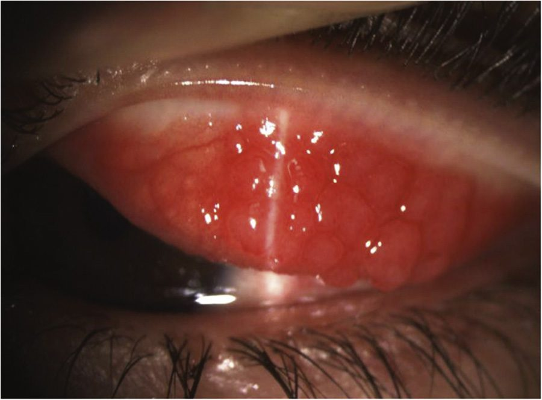
Asthma and Allergy 65 Fig. 2.1 춘계 결막염 환자의 cobblestone 모습.376 (Fig. 2.1)과 호산구 및 상피 세포 잔해가 축적된 윤부 병변인 Horner-Trantas 점(Fig. 2.2)이 나타날 수 있다. 이 점들은 AKC 및 VKC와 같은 만성 알레르기 결막염 유형과 일반적으로 관련이 있다.139 진단 알레르기 결막염의 진단은 임상적으로 이루어진다. 그러나 여러 검사실 검사를 통해 진단을 보완할 수 있다. 피부단자검사(skin prick test)는 알레르기 환자의 진단에 높은 민감도를 가지는 저비용 검사이다. 이 검사가 금기이거나 결과가 불확실하면 혈청 특이 IgE 검사를 사용할 수 있다.137 Fig. 2.2 춘계 결막염 환자의 Horner-Trantas 점.376
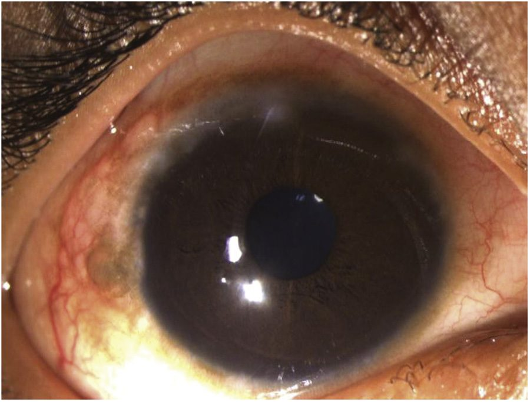
66 Clinical immunology 치료 안구 알레르기 환자에게는 다음과 같은 권고사항을 따라 알레르겐 노출을 줄일 것을 권고한다: 1) 알레르겐의 장벽 역할을 하는 선글라스 착용 2) 알레르겐 세척에 도움이 되는 눈꺼풀 세정제 사용 3) 창문을 닫고 야외 활동 시간을 줄여 꽃가루에 대한 불필요한 노출 회피 4) 동물 접촉 감소 5) 눈을 비비는 행위 회피 6) 저알레르기 침구 커버 사용 7) 뜨거운 물로 침구 세탁.135 국소 항히스타민제는 알레르기 결막염 치료에 널리 사용되어 왔다. 이 약물들은 히스타민을 차단하고, 호산구 이동을 억제하며, 비만세포를 안정화시켜 눈의 가려움과 홍반을 즉각적으로 완화할 수 있다.140 그러나 국소 자극과 같은 부작용이 있을 수 있다.141 비만세포 안정제(mast cell stabilizer)는 비만세포 탈과립과 기성 히스타민 및 기타 화학주성 인자의 분비를 방지하며, 안구 알레르기 반응의 초기 및 후기 반응 모두를 억제할 수 있다. 비만세포 안정제는 눈의 가려움, 자극 및 충혈을 감소시키며, 최대 효과를 발휘하기 위해 이 약물들은 알레르겐 노출 전에 예방적으로 사용되어야 한다.139,142 국소 충혈제거제(topical decongestant)는 혈관수축 기전을 통해 홍반, 결막부종 및 충혈을 감소시키는 데 도움이 될 수 있다. 그러나 이 약물들의 장기 사용은 점안 시 작열감 및 따가움, 동공 확장 및 반동성 충혈 또는 약물성 결막염(conjunctivitis medicamentosa)과 같은 부작용으로 인해 권장되지 않는다.143 항히스타민제와 충혈제거제를 병용한 병합 요법이 단독 사용보다 더 효과적인 것으로 보고되었다. 그러나 이 병용은 충혈제거제의 부작용 위험을 증가시킬 수 있으므로 장기 사용은 권장되지 않는다.143 국소 비스테로이드성 항염증제(NSAIDs)는 알레르기 결막염의 1차 치료로 사용되지 않지만, 보조 치료로 처방될 수 있다. 이 약물들은 사이클로옥시제네제 경로 및 PG 생산을 억제하여 가려움 등 불편 증상을 감소시킨다.144 NSAIDs의 부작용에는 점안 시 자극(환자 순응도를 저하시킬 수 있음)과 드물게 각막 천공이 있다.145 국소 코르티코스테로이드는 알레르기 결막염의 급성기와 만성기 모두에서 효과적이며, 면역억제 및 항염증 작용을 통해 모든 단계의 안구 증상과 징후를 완화할 수 있다. 그러나 국소 코르티코스테로이드에는 2차 감염, 백내장 형성, 안내압 상승, 상처 치유 지연 및 녹내장 유발과 같은 부작용이 있다. 따라서 조절되지 않는 중증 안구 알레르기 환자에만 처방을 권고하며, 장기 사용은 권장하지 않는다.139 알레르겐 특이 면역치료(SIT, allergen-specific immunotherapy)는 알레르기 결막염 환자에게 효과적인 치료법이다. 이 치료의 목표는 특정 알레르겐에 대한 면역관용(immunological tolerance)을 유도하는 것이다. 이 접근법에서는 설하 면역치료(SLIT, sublingual immunotherapy) 또는 피하 면역치료(SCIT, subcutaneous immunotherapy) 경로를 통해 점진적으로 증가하는 용량의 알레르겐을 투여하여 Th1 면역 반응을 유도하고 Th2 면역
Asthma and Allergy 67 반응을 억제한다. 또한 면역치료는 조절 T세포(Tregs, regulatory T cells)를 유도하여 Th2 면역 반응을 감소시킬 수 있다.146 이 치료의 부작용 중 아나필락시스(과민성 쇼크)가 나타날 수 있으므로, 환자는 이 반응을 치료할 수 있는 훈련된 의료진이 있는 시설에서 SLIT 또는 SCIT를 받아야 한다.144 두드러기와 혈관부종 정의 및 분류 정의 두드러기(urticaria)는 평생 동안 인구의 10%~20%가 경험하는 의학적 상태로, 피부 상층의 부종인 wheals(두드러기) 또는 혈관부종(angioedema), 또는 이 두 가지가 동시에 나타나는 것으로 특징지어진다(Fig. 2.3).147,148 Heinrich Quincke는 1882년에 혈관부종을 처음 기술하였다. 이는 혈관활성 매개체의 분비와 혈관 투과성 증가로 인해 피부, 위장관 또는 상기도의 더 깊은 층(진피, 피하, 점막 또는 점막하)에 국소적이고 함요(indenting) 없는 부종이 나타나는 의학적 상태이다.149 혈관부종은 브라디키닌 분비 또는 히스타민, 또는 비만세포에서 분비되는 기타 염증 매개체에 의해 매개된다. 후자가 더 빈번하며 주로 두드러기의 증상으로 나타난다. 브라디키닌 매개 혈관부종-일차성 혈관부종이라고도 함-은 유전성 또는 후천성 기반이며, 주로 C1 억제제(C1-INH) 결핍으로 인해 발생한다. 또한 일반적으로 두드러기와 관련이 없다.150 분류 두드러기는 증상의 지속 기간 및 질환의 유발 인자와 원인에 따라 분류된다. wheals의 재발(혈관부종의 유무에 관계없이)이 6주 미만이면 급성 두드러기, 6주 이상이면 만성 Fig. 2.3 몸통(A) 및 상지(B)의 두드러기.377
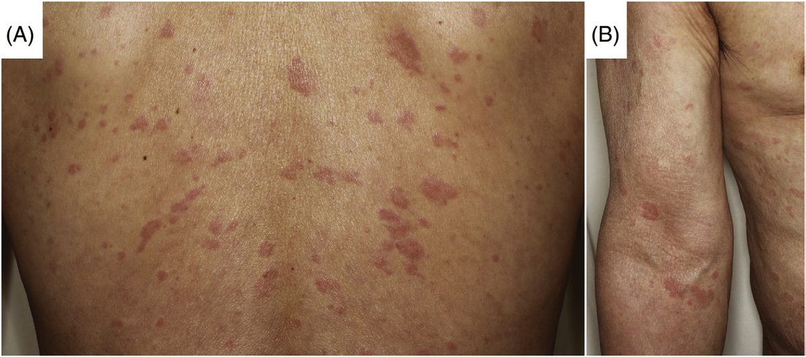
68 Clinical immunology 두드러기라고 한다. 만성 두드러기는 만성 자발성 두드러기(CSU, chronic spontaneous urticaria) 또는 만성 유발성 두드러기(CIndU, chronic inducible urticaria)이다.151 급성 두드러기 급성 두드러기는 6주 미만 동안 반복적으로 발생하는 자발성 wheals(혈관부종의 유무에 관계없이)로 정의된다. 이 질환은 주로 상기도 감염, 약물 반응 및 식품 불내성에 의해 유발된다. 만성 자발성 두드러기(CSU) CSU에서 병변은 자발적으로 나타나며 외부 유발 인자에 의해 유발되지 않는다. 식품 또는 약물 불내성, 응고 캐스케이드 활성화, 유전적 소인 또는 자가면역이 비만세포에서의 히스타민 분비를 촉진하고 증상을 유발할 수 있다. 이 환자들의 약 30%~40%에서 IgE 수용체 FcεRIa 또는 IgE 항체에 대한 IgG인자가항체가 생성된다. 비만 및 체질량지수(BMI) 증가, 악성종양, 불안, 해리 및 신체화 장애, 면역억제제 투여 및 전신 코르티코스테로이드의 만성 사용은 CSU 발병 위험 요인에 해당된다.152-154 만성 유발성 두드러기(CInU) 이 두드러기 아형에서는 특정 유발 인자에 의해 증상이 유발되며, 자극 노출 부위로 국한된다. 또한 징후와 증상은 주로 2시간 미만 지속된다. 자극 유형에 따라 CInU는 물리적 두드러기 또는 비물리적 두드러기로 분류된다. 수성(aquagenic), 콜린성(체내핵심온도의 급격한 상승에 의해 유발), 냉성, 접촉성, 지연 압력성, 열성, 일광성 및 피부묘기(dermatographism) 두드러기는 CInU의 아형으로 분류된다.151 유럽 알레르기 및 임상면역학회(European Academy of Allergy and Clinical Immunology)에 따르면 후천성 혈관부종 4형과 유전성 혈관부종 3형이 확인되었다.155 원인 및 병리생리학에 기반하여 혈관부종의 여러 유형을 분류하고 확인함으로써 치료가 더 성공적으로 이루어질 수 있다. 후천성 혈관부종(AAE, Acquired angioedema) 특발성 히스타민성 후천성 혈관부종(IH-AAE, Idiopathic histaminergic acquired angioedema) 특발성 히스타민성 후천성 혈관부종(IH-AAE)은 혈관부종 중 가장 흔한 유형이다. 비유전성 혈관부종의 대부분은 항히스타민제 치료에 반응하므로, 비만세포 및 호염기구에서의 히스타민 분비가 관련된 것으로 시사된다. 히스타민 분비는 이 질환의 알레르기적 원인을 시사한다. 특발성 비히스타민성 후천성 혈관부종(InH-AAE, Idiopathic non-histaminergic acquired angioedema) 이 용어는 항히스타민제 치료에 반응하지 않는 비유전성 혈관부종을 가리킨다. 이는 혈관부종 환자 중 가장 정의가 불명확한 그룹이다. 그러나 후천성 혈관부종의 대부분은
Asthma and Allergy 69 항히스타민제에 반응하지 않는 사례에서 브라디키닌(bradykinin) 수치 상승이 보고되었다. 때로는 이러한 유형의 혈관부종(angioedema)을 지칭하기 위해 “브라디키닌 매개(bradykinin-mediated)”라는 용어가 사용되기도 한다. 그러나 브라디키닌 농도 상승에 대한 과학적 근거는 아직 충분하지 않다. 또한 시스테이닐 류코트리엔(cysteinyl leukotrienes), PG, 혀소판 활성인자(platelet-activating factor) 등 다른 혈관활성 매개체의 역할도 고려해야 한다.
안지오텐신전환효소 억제제 관련 후천성 혈관부종(ACEI-AAE)
안지오텐신전환효소(ACE)는 브라디키닌 분해에 관여한다. ACE가 억제되면 브라디키닌 수치가 상승하고 이에 따라 “브라디키닌 매개” 혈관부종이 발생한다. 브라디키닌 분해에 관여하는 단백질의 변이(variability)는 ACEI-AAE의 위험도를 높이며, 이는 해당 유형의 혈관부종이 브라디키닌에 기반한다는 근거를 강화한다.
C1 억제제 결핍을 동반한 후천성 혈관부종(C1-INH-AAE)
C1-INH 결핍이 있으나 C1 억제제를 암호화하는 유전자(SERPING1)에 돌연변이가 없고 혈관부종 가족력이 없는 환자는 이 범주에 분류된다. C1-INH 및 classical 보체계(classical complement system)의 다른 성분이 소비되면 브라디키닌이 방출될 수 있다. C1-INH에 대한 자가항체(autoantibody)의 부착이나 저등급 림프증식성 질환으로 인해 기능 상실이 초래되어 C1-INH-AAE로 이어질 수 있다.
유전성 혈관부종(HAE)
C1 억제제 결핍을 동반한 유전성 혈관부종(C1-INH─HAE) C1 억제제를 암호화하는 유전자(SERPING1)의 두 대립유전자(allele) 중 하나에 돌연변이가 발생하면 C1-INH─HAE가 초래된다. 돌연변이는 C1-INH의 혈중 수치가 감소하는 형(type I) 또는 기능이 비정상이지만 수치는 정상인 형(type II)의 두 가지 표현형으로 나타날 수 있으며, 이는 C1-INH─HAE의 주요 매개체인 브라디키닌의 방출을 촉진한다. 따라서 유전성 혈관부종 환자는 항히스타민제, 코르티코스테로이드, 아드레날린 요법 등 일반적인 혈관부종 치료에 반응하지 않는다.
C1 억제제 정상 및 인자 XII 돌연변이를 동반한 유전성 혈관부종(FXII-HAE)과 원인 미상의 유전성 혈관부종(U-HAE) 이 분류에서는 C1-INH의 혈중 수치와 기능이 정상이다. 그러나 혈관부종의 반복적 가족력은 이 유형이 유전적 기반을 가질 가능성을 시사한다. 조사 결과 응고 인자 F12 유전자 유적(gene locus)에서 일정한 돌연변이가 확인되었다. 그러나 일부 혈관부종 가족력이 있고 C1-INH 수치가 정상인 사례에서는 유전적 결함이 검출되지 않았다. “C1-INH 정상 및 인자 XII 돌연변이를 동반한 유전성 혈관부종(FXII-HAE)”은 F12 유적에 돌연변이가 있는 환자를 지칭하며, “원인 미상의 C1-INH 정상 유전성 혈관부종(U-HAE)”은 유전적 결함이 검출되지 않은 환자를 지칭한다.
70 Clinical immunology
역학
두드러기(urticaria)의 평생 유병률은 연령, 성별, 국가에 따라 달라진다. 횡단적 연구에서 모든 유형의 두드러기 평생 유병률은 8.8%로 보고되었다.156 전 세계 추정 평생 유병률은 1.6%−8.4%이며, 만성 두드러기(chronic urticaria)의 시점 유병률(point prevalence)은 0.1–3.4%로 보고된다. 라틴아메리카와 아시아에서 가장 높고, 북미에서 가장 낮은 만성 두드러기 시점 유병률이 보고되었으며, 여성의 시점 유병률이 남성보다 약간 높은 것으로 보고되었다.157 체계적 연구에 따르면, ACEI-AAE의 유병률은 10만 명당 7–26명, C1-INH─HAE는 10만 명당 1.1–1.6명, C1-INH-AAE는 10만 명당 0.15명으로 추정된다.158 ACEI-AAE는 ACE 억제제를 투여받은 환자의 0.1%−0.7%에서 발생하는 것으로 추정되며, 가장 흔한 비알레르기성 혈관부종으로 간주된다.159
원인 및 병인
감염은 급성 두드러기의 가장 흔한 원인이다. 약물이나 음식물과 같은 알레르겐 및 유사알레르겐(pseudo-allergen)도 급성 두드러기를 유발할 수 있다. 급성 두드러기의 약 50%에서는 특정 유발 인자가 확인되지 않는다.160,161 만성 두드러기는 대부분의 경우 자가면역(autoimmune)적 기반을 가진다. 갑상선기능저하/항진증, 셀리아크병, 전신홍반루푸스(SLE), 류마티스관절염(RA), 1형 당뇨병과 같은 자가면역질환이 만성 두드러기 환자, 특히 여성에서 더 흔한 것으로 보고되었다.162,163 이들 환자에서 비만세포(mast cell) 표면의 IgE 또는 IgE 수용체에 대한 IgG 자가항체가 검출된다. 이러한 IgG가 표적에 결합하면 비만세포가 활성화되어 과도한 히스타민 방출이 일어난다.164
HAE 및 C1-INH-AAE의 핵심 분자는 C1-INH이다. C1-INH는 보체계에서 활성화된 C1r과 C1s를 억제하는 역할뿐만 아니라 브라디키닌 생성 연쇄에도 관여한다. C1-INH는 인자 XII의 자가활성을 억제하고, 이후 프리칼리크레인(prekallikrein)의 활성화와 칼리크레인(kallikrein)으로의 분해를 차단한다. 칼리크레인 자체가 남은 FXII를 활성화시킬 수 있으며,165 이어서 고분자키닌원(high molecular weight kininogen)이 브라디키닌으로 분해된다. 브라디키닌은 구성적 발현되는 G단백질 결합 B-2 수용체와 상호작용하여 혈관확장 및 혈관투과성 증가를 일으킨다.166,167 FXII 활성화가 이 연쇄의 단계이긴 하지만, 체외 연구에서 브라디키닌 생성이 FXII 활성화와 독립적인 경로에서도 일어날 수 있음이 밝혀졌다. 프리칼리크레인이 자체적으로 고분자키닌원에 결합하여 브라디키닌을 생성할 수 있기 때문이다. C1-INH는 이 복합체의 자가활성도 억제할 수 있다.168 따라서 FXII-HAE 및 C1-INH─HAE의 경우 브라디키닌은 이 연쇄를 통해 생성된다. HAE I형과 II형에서는 유전자 SERPING1의 우성 돌연변이(dominant mutation)로 인해 C1-INH 단백질의 혈중 수치 또는 기능이 저하된다. C1-INH 대체 요법, 혈중 칼리크레인 억제, 또는 브라디키닌 B-2 수용체 차단이 이 질환의 치료 옵션이다. 앞서 언급한 바와 같이, C1-INH 발현이 정상인 또 다른 유형의 HAE가 있다. 이 환자의 30%에서 FXII 유전자 돌연변이가 검출된다. 이들 사례에서 보체계에서 활성화된 C1을 억제하는 C1-INH의 기능은 정상이지만, 일부 체외 연구에서는 FXII 및 칼리크레인을 억제하는 C1-INH의 활성이 정상의 40%−60% 수준인 것으로 나타났다.169,170 그러나 이 FXII-HAE 및 U-HAE의 원인은 앞으로 더 연구되어야 한다.
진단
두드러기의 진단은 주로 두드러(wheals) 및 혈관부종 피부 병변과 같은 임상 징후와 증상을 검사하는 것에 기반한다. 또한 병변의 재발 양상, 시기, 부위 및 분포, 잠재적 자극, 가족력 및 약물 복용 이력의 임상 기록이 필요하다.171 혈관부종이 두드러기 없이 반복되면, 혈관부종은 독립된 질환으로 진단해야 하며 진단 시 혈관부종 아형(subtype)을 명시해야 한다. C4 저하와 C3 정상 수치는 진단을 뒷받침한다. C1 에스테라이스 억제제 활성의 정량적·기능적 측정은 진단을 확인한다. C1q 저하는 후천성 C1 에스테라이스 억제제 결핍의 진단을 시사한다.172 HAE는 C1-INH의 항원 혈중 수치와 기능을 측정하여 진단한다.173 C1-INH의 기능은 HAE 및 C1-INH-AAE 진단에서 가장 중요한 임상 지표 중 하나이다.174 C4 보체 단백질 수치도 HAE 선별 검사(screen test)로 측정된다.175 그러나 정상 C4 혈중 수치가 HAE 가능성을 배제하지 못한다는 증거가 있으며, C1-INH 기능이 더 유망한 진단 기법이다.176 C1-INH의 기능과 수치를 측정하면 C1-INH-AAE로 진단할 수 있다. 추가로, 정상 C3 수치와 저하 C4 수치가 진단에 도움이 되며, 저하 C1q 수치는 C1-INH-AAE 진단을 시사한다.172 ACEI-AAE에서 보체계 단백질의 혈중 수치는 보통 정상이다. 따라서 진단은 ACE 억제제 투약 사실 관찰과 이에 따라 두드러기 없이 혈관부종이 발생하는 것을 기반으로 한다. 그러나 ACE 억제제를 복용하면 HAE 또는 다른 AAE 아형이 촉발되거나 드러날 수 있으므로 ACEI-AAE 환자에서 C1-INH 수치 측정이 권고된다.161
감별진단
혈관부종처럼 다양한 임상 양상을 보이는 질환의 감별진단은 필수적이다. 앞서 언급한 바와 같이, 혈관부종을 유발하는 두 가지 주요 경로가 있다: 비만세포 활성화와 과도한 히스타민 방출에 의한 알레르기 경로, 그리고 브라디키닌 생성에 의한 비알레르기 경로. 알레르기성 혈관부종에서는 피부 병변이 빠르게 나타나고 또한 빠르게 소실되지만, 비알레르기성에서는 병변이 나타나기까지 수시간, 소실되기까지 수일이 소요된다. 알레르기성 혈관부종은 어떤 연령에서도 발생할 수 있으나, 비알레르기성 혈관부종은 후천성의 경우 주로 40대, ACE 억제제 관련 후천성의 경우 60대, 유전성의 경우 10대−20대에 증상이 나타난다.
72 Clinical immunology 유전성 혈관부종의 경우, 병변은 주로 얼굴과 목에 나타난다. 또한 상부 호흡기계에 병변이 나타나 이어지는 질식의 가능성도 높다.177 실제로, 적절하지 않은 진단과 치료로 인해 HAE 사례의 사망률이 30%−50%에 달하는데, 질식이 주된 원인이다.178
치료
두드러기 관리의 첫 단계는 잠재적 유발 인자를 피하여 증상을 조절하는 것이다.153 항염증제, 열, 꽉 끼는 의류, 식품 첨가물이나 향신료와 같은 유사알레르겐의 회피가 필요하다.171 급성 두드러기의 경우 항히스타민제 요법이 대부분의 사례에서 효과적이다.171 만성 두드러기의 자가면역적 및 히스타민 매개적 기반 때문에, 현재 임상에서 사용 가능한 만성 두드러기 치료는 주로 2세대 비진정성(non-sedating) 항히스타민제를 1차 요법으로, 항히스타민제에 반응하지 않는 환자에는 오말리주맙(omalizumab, anti-IgE 항체)을 2차 요법으로 사용하는 것이다.151 오말리주맙의 작용 기전은 자유 IgE에 결합하여 비만세포 및 호염기구(basophil) 표면의 IgE 수용체 FcεRI를 감소시킴으로써 비만세포 활성도를 줄이고, 호염기구 감소증(basopenia)을 역전시키며, FcεRI 및 IgE에 대한 IgG 자가항체의 활성을 낮추는 것이다.179 2세대 비진정성·비손상성(non-impairing) 항히스타민제의 용량 증가(updosing)도 2차 요법으로 사용할 수 있다. 메타분석 연구에서, 1차 요법에 반응하지 않은 만성 특발성 두드러기(CSU) 환자의 63.2%가 항히스타민제 용량 증가에 반응하였다.180 비만세포 및 호염기구에서의 히스타민 방출을 억제하는 순환진(cyclosporin)은 기존 요법에 반응하지 않는 환자, 특히 특발성 또는 중증 만성 두드러기 사례에서도 사용되어 왔다.181 중증 급성 또는 만성 두드러기의 경우 단기 경구 코르티코스테로이드 요법이 필요할 수 있다.182 히스타민 매개 혈관부종의 치료는 두드러기에 사용되는 치료와 유사하다. HAE 또는 브라디키닌 매개 혈관부종으로 알려진 비히스타민 매개 혈관부종의 경우 치료는 세 가지 과정으로 분류된다: 급성 발작 치료, 단기 예방 치료, 장기 예방 치료. 급성 발작 치료는 발작의 중증도와 지속 시간을 즉시 감소시키는 것을 목표로 하며, 예방 치료는 혈관부종 발작의 발생을 예방하거나 중증도와 지속 시간을 감소시키는 것을 목표로 한다(장기), 또는 치과 수술, 삽관 등 혈관부종의 위험이 증가하는 스트레스 시기를 대비한다(단기).183 환자에 대한 C1-INH 대체 요법이 유용한 급성 치료가 될 수 있다. 혈장 유래 및 재조합 C1-INH인 Berinert와 Ruconest가 정맥 투여되어 혈관부종 치료에 사용된다. C1-INH 대체에 반응하지 않는 환자에서는 브라디키닌 수용체 차단제인 Icatibant 또는 혈중 칼리크레인 억제제인 Ecallantide가 2차 치료제로 사용된다. 예방 치료에서도 C1-INH 대체가 사용된다. Berinert와 Cinryze가 예상 고위험 시술 시 투여된다.
Asthma and Allergy 73
단기 예방 치료의 경우 Danazol과 같은 안드로젠 요법을 투여할 수 있다. 항섬유소용해제인 트라넥삼산(tranexamic acid)은 임산부, 소아, 안드로젠을 감내할 수 없는 환자에게도 사용된다. 장기 예방 치료에는 혈중 칼리크레인에 대한 단클론항체인 라나데루맙(Lanadelumab)과 함께 혈장 유래 C1-INH가 1차 요법으로 권고된다.173
아토피피부염 및 알레르기 접촉피부염
아토피피부염의 정의
아토피피부염(atopic dermatitis)은 아토피 습진(atopic eczema), Besnier의 소양성구진(Besnier’s prurigo), 또는 영아 습진(infantile eczema)이라고도 하며, 가려움증과 발진성 병변을 동반한 피부의 흔한 만성 재발성 염증이다. 병변은 주로 눈꺼풀, 목, 이마, 손, 발과 같은 피부 주름 부위에 발생한다. 아토피(atopy)는 꽃가루, 집먼지진드기, 특정 음식물과 같은 소수의 환경 항원에 대한 유전적 IgE 과잉 생산을 의미한다. 약 절반의 환자에서 알레르기 반응과 IgE 과잉 생산이 없으므로, 아토피피부염은 확정적인 의학 용어가 아니다.184
아토피피부염의 역사
“습진(eczema)”이라는 용어는 Willan과 Bateman이 “미세 소포의 발진으로, 전염성이 없고 밀집하여 나타나며, 내부의 흡수된 액체로 인해 얇은 인편이나 가피(crust)로 형성된다. 이 발진은 일반적으로 내부적 또는 외부적 자극의 결과이다”라는 상태를 정의하기 위해 개발되었다.185 “습진(eczema)”이라는 용어는 “발진”을 뜻하는 그리스어에서 유래하였다. 아토피피부염이라는 용어의 도입은 1933년으로 거슬러 올라가는데, Fred Wise(1881–1950)와 Marion Sulzberger(1895–1983)가 주로 얼굴과 굴곡면 주름 부위에 나타나며 아토피성 질환의 가족력이 있는 사람에게 발생하는 영아 습진을 정의하기 위해 이 용어를 사용하였다.186 1967년, Gunnar Johansson(1911–1998)과 Hans Bennich가 IgE 단백질의 기능과 구조187 및 혈중 수치 상승과 천식의 연관성을 발견하였다.188 IgE 수치 상승과 아토피피부염의 연관성은 이후 밝혀졌으며, 1978년 Bruno Wüthrich는 단순한 연관성이 아닌 아토피피부염의 원인 및 병인에서 IgE의 중요한 역할을 제안하였다.185 그러나 아토피피부염의 정확한 병인은 아직 연구가 필요하다. 1980년, Jon Hanifin과 Georg Rajka가 아토피피부염에 대한 최초의 체계적 진단 접근법을 제안하였다.189
아토피피부염의 역학 및 위험인자
이 질환의 유병률은 지역에 따라 다양하다. 러시아에서는 최대 20%의 유병률이 보고된 반면, 핀란드에서는 4.3%의 유병률만 보고되었다.190 또 다른 글로벌 연구에서는 아토피피부염의 유병률이 인도 0.9%에서 에콰도르 22.5%까지 다양하며 아시아와 라틴아메리카에서 더 높고, 중국 0.2%에서 콜롬비아 24.6%까지 다양하며
74 Clinical immunology 13−14세 연령대에서 아프리카와 라틴아메리카에서 더 높은 수치를 보인다고 보고하였다.191 또한 선진국과 개발도상국 모두에서 아토피피부염의 발생률이 증가하고 있다.192 따라서 향후 이 질환의 잠재적 부담을 줄이기 위해 효과적인 관리와 예방이 크게 고려되어야 하고 연구되어야 한다. 발생률은 남녀 간에 차이가 없다. 겨울에 증상이 더 심해지는 계절적 변이가 있다. 보통 아토피피부염, 천식 또는 계절성 알레르기비염의 가족력이 있다.190 아토피피부염은 모든 연령대에서 발생할 수 있으나 소아에서 더 흔하며, 보통 생후 2−3개월에 발병한다.190 약 10%−20%의 소아가 이 질환에 영향을 받으며, 이 중 절반은 성인기까지 관해에 들어간다.193 성인의 10% 미만이 아토피피부염에 영향을 받으며,194 이 중 25%는 성인 발병형이다.195 가족력, 필라그린(FLG) 유전자 돌연변이, 그리고 일부 환경적 요인이 아토피피부염의 위험인자로 작용할 수 있다. 가족력은 아토피피부염의 가장 중요한 위험인자로 알려져 있다. 부모 1명 또는 2명이 아토피피부염인 경우 소아에서 아토피피부염이 발생할 위험이 가족력이 없는 소아에 비해 각각 1.5배 및 3−5배 높다.196 필라그린을 암호화하는 FLG 유전자 돌연변이는 아토피피부염의 발생 위험 증가, 더 심한 임상 경과, 특히 유럽 혈통의 환자에서 동반 천식의 가능성이 높은 것과 연관되었다.197 또한 어린 시절부터 고양이에 노출되는 것과 같은 일부 환경적 요인이 이 돌연변이를 가진 사람에서 아토피피부염의 위험인자가 될 수 있다. 도시 지역 거주나 건조한 기후, 병원체에 대한 노출 감소, 어린 시절 항생제 빈번 노출과 같은 일부 환경적 요인이 아토피피부염의 더 높은 위험과 연관되었다.196
아토피피부염의 원인 및 병인
아토피피부염의 병인에 면역학적 기반이 있다는 가설이 제기되었다. IgE 생산 수치 상승, 활성화된 비만세포, 호산구(eosinophil), IL-4, 그리고 하향 조절된 IFN-γ 수치가 질환의 진행과 연관되어 있기 때문이다. IL-4는 Th2 세포에서 분비되는 사이토카인으로, B세포의 IgE 생산을 감소시키고 비만세포의 활성을 추가로 억제할 수 있다. 따라서 Th2 과활성(2형 면역 반응)이 아토피피부염의 기저 면역학적 기전일 수 있다. 또한 Ig 생산을 억제하는 Th1 세포에서 분비되는 IFN-γ의 하향 조절은 Th1 저활성을 시사하며, 이는 질환의 병인에 시너지 효과를 가진다.190 피부 장벽을 형성하는 중요한 단백질인 필라그린을 암호화하는 FLG 유전자의 일부 돌연변이가 아토피피부염 및 더 심한 임상 특징과 연관되어 있음이 확인되었다.198,199 필라그린은 피부 과립층의 세포 구성과 케라틴 필라멘트의 조밀한 다발로의 응집을 조절한다. 필라그린 대사산물은 피부를 보습하고 pH를 개선한다. 필라그린 결핍은 알레르겐의 침투 증가와 미생물(micro-organism)의 집락화(colonization)를 초래한다.
Asthma and Allergy 75 피부에서 FLG 유전자의 결손(loss-of-function) 돌연변이는 피부 장벽을 손상시켜 아토피피부염(Atopic dermatitis) 발생 위험을 증가시킨다. 기타 유전적, 후성유전적, 면역학적 요인은 필라그린(filaggrin) 또는 기타 단백질의 발현과 기능에 영향을 미쳐 피부 장벽의 무결성을 저해할 수 있다. 결손 돌연변이 외에도 FLG 유전자 내 복제수 변이(intragenic copy number variation)와 후성유전적 변화도 아토피피부염 발생과 연관이 보고되었다. 또한 습도가 낮고 온도가 낮으면 필라그린은 건조 환경에서 가수분해되어 수치가 감소할 수 있다. 이는 아토피피부염 병변의 국소적 패턴을 설명할 수 있는데, 병변은 주로 뺨이나 손과 같이 공기에 노출되는 부위에 나타난다. 아울러 피부 자극제, 높은 pH, 물리적 손상, 국소 코르티코스테로이드의 장기 사용은 필라그린의 분해를 촉진하거나 발현을 감소시켜 필라그린 수치를 떨어뜨릴 수 있다. 따라서 기후, 목욕 방법, 화학물질과 같은 환경 요인이 아토피피부염에 크게 영향을 미치는 이유, 그리고 아토피피부염 환자의 20–30퍼센트에서만 FLG 유전자의 결손 돌연변이가 관찰되는 이유를 설명할 수 있다.200
TSLP(Thymic stromal lymphopoietin)는 아토피피부염 병인에서 중요한 역할을 한다. TSLP는 주로 표피 각질세포(keratinocyte)에서 생산되며, 환경 알레르겐뿐만 아니라 프로염증성 및 Th2 사이토카인(cytokine)과 IgE 같은 면역학적 인자에 의해 유도된다. TSLP는 Th2세포를 유도할 수 있으며, 아토피피부염 환자의 피부 병변에서 TSLP 발현이 증가한 것으로 보고되었다. 추가적으로 아토피피부염 환자에서 오메가-6 지방산 결핍의 근거가 있다. 오메가-6 지방산 결핍이 병인에 관여하는 기전은 오메가-6 지방산의 주요 대사산물인 PGE1과 PGE2의 불충분한 생산에 기인할 수 있다. 연구에 따르면 PGE1과 PGE2는 IgE 생산을 억제할 수 있다. 아토피피부염 마우스 모델에서 인도메타신(indomethacin)에 의한 프로스타글란딘 합성 억제는 피부의 타입 2 면역 반응을 강화하고 IgE, IL-33, TSLP의 혈장 수치와 IL-4를 생산하는 CD45+TCRβ1+ 세포 수를 증가시켰다. 이 연구 결과는 PGE2-EP2가 TSLP 발현을 하향 조절하여 타입 2 면역을 억제하는 항염증 역할을 제안하였다.201-203
아토피피부염의 임상 양상 아토피피부염의 가장 흔한 임상 특징은 가려움(pruritus),태선화(lichenification),건성피부(xerosis), 굴곡부위 침범(flexural involvement), 환경적·정서적 요인의 영향, 조기 발병, 그리고 땀에 의한 가려움 악화이다. 이 임상 특징들은 가장 흔한 특징들이지만, 인종과 나이에 따라 부분적으로 달라질 수 있다. 아토피피부염은 영아에서 주로 급성으로 나타나며, 사지의 신근부(extensor surface)와 안면에 주로 침범한다. 몸통에도 영향을 줄 수 있으나 기저귀 부위는 일반적으로 침범되지 않는다. 2세 이후부터는 환자에서 아토피피부염의 다형성 변화가 주로 굴곡부위 주름에서 나타난다. 청소년과 성인에서는 눈꺼풀, 발목, 손목, 굴곡부위에 가려움으로 인해 긁힌(excoriated) 및 태선화된 판상 병변이 관찰될 수 있다. 두피, 상부 몸통, 어깨에도 침범될 수 있다(Fig. 2.4). 성인 발병 아토피피부염의 징후와
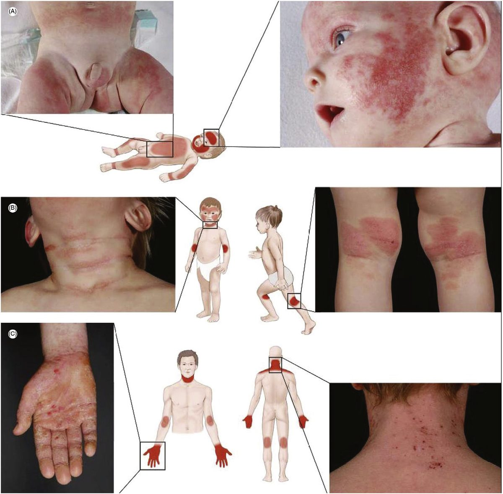
76 Clinical immunology Fig. 2.4 서로 다른 연령에서의 아토피피부염. (A) 안면, 사지 신근부 및 몸통에 병변이 있는 영아. 기저귀 부위는 침범되지 않는다. (B) 소아에서 주로 굴곡부위 주름에 아토피피부염이 나타남. (C) 청소년 및 성인에서 눈꺼풀, 발목, 손목, 굴곡부위에 가려움으로 인해 긁힌(excoriated) 및 태선화된 판상 병변이 관찰됨. 두피, 상부 몸통 및 어깨에도 침범될 수 있음.378 증상은 소아 발병 아토피피부염보다 일반적으로 경미하다. 그러나 성인에서 족부 피부염(foot dermatitis)의 유병율은 더 높다. 성인 발병 아토피피부염의 경미한 징후와 증상은 이 질환을 다른 성인의 피부 질환과 감별하는 데 어려움을 초래할 수 있다.195,204,205
아토피피부염의 진단 아토피피부염의 역사 섹션에서 언급한 바와 같이, Hanifin과 Rajka는 임상 특징과
Asthma and Allergy 77 IgE 혈장 수치 측정, 피부단자검사(skin prick test)와 같은 객관적 검사에 기반하여 최초의 아토피피부염 진단 기준을 제안하였다. 이 진단 기준에는 4개의 주요 특징—가려움, 특징적 형태 및 분포, 병변의 만성화, 아토피(천식, 알레르기비염, 아토피피부염)의 개인력 또는 가족력—과 손이나 발 피부염, 구염(cheilitis), IgE 수치 상승, 건성피부, 즉발형(I형) 피부 반응성, 조기 발병 등 23개의 부차적 특징이 포함되었다. 3개의 주요 특징과 3개의 부차적 특징이 동시에 있는 것이 아토피피부염 진단에 필수적이었다.189 그러나 일부 연구에서는 이 기준이 주로 백인, 병원 기반 아토피피부염 사례에 맞춰져 있으며 모든 연령, 성별, 인종에 적용하기 어렵다고 지적하였다.206,207 그러나, 아토피의 개인력이나 가족력과 같은 주요 특징의 일부는 이 기준에서 건성피부와 같은 부차적 특징만큼 유의하지 않은 것으로 확인되었다.208
Williams 등은 1994년에 가장 널리 검증된 진단 접근법 중 하나를 개발하였다. 이 연구는 31개의 기준(13개의 병력 기준과 18개의 임상·신체 검사 기준)을 사용하여 진행되었다. 단자검사나 IgE 혈장 수치 측정과 같은 침습적 검사는 제외되었다. 아토피피부염 환자 120명, 아토피피부염 이외의 피부 질환을 가진 병원 대조군 102명, 그리고 피부 질환과 무관한 주소를 가진 인구 대조군이 선정되었다. 관찰자는 1차 진단에 대해 블라인딩되었다. 연구 결과, 아토피피부염을 다른 피부 질환과 가장 잘 감별하는 6개의 기준—굴곡부위 침범력, 2세 이전 발병, 가려운 발진의 병력, 개인의 천식력, 건성피부력, 관찰 가능한 굴곡부위 피부염—이 도출되었다.207 굴곡부위 피부염을 제외한 모든 기준은 병력에 의한 특징이었다. 이는 아토피피부염 환자 사이에서 신체 임상 특징이 이질적일 수 있으므로 병력 기반 특징의 역할이 강조됨을 의미한다. 아토피피부염 진단을 위한 여러 진료지침이 개발되었으며, 대부분 소아를 대상으로 한다. 가장 널리 사용되는 진료지침으로는 2007년에 발표된 National Institute for Health and Care Excellence의 “Atopic eczema in under 12: diagnosis and management”209과 2013년에 발표된 American Academy of Dermatology 진료지침210을 들 수 있다. 이 진료지침들은 아토피피부염과 임상적으로 유사한 알레르기 접촉피부염이나 지루성피부염 등, 특히 영아에서 흔하고 아토피피부염과 중첩될 수 있는 피부 질환을 감별하는 데 도움을 준다.
아토피피부염의 감별진단 아토피피부염은 흔한 피부 질환이지만, 임상 증상의 다양한 형태는 진단에 어려움을 줄 수 있다. 건선(psoriasis), 알레르기 접촉피부염, 사마귀 피부염(molluscum dermatitis), 백선(tinea corporis), 진균양 종양(mycosis fungoides), 피부근염(dermatomyositis), 만성태선양 잔주름(pityriasis lichenoides chronica), 랑게르한스세포 조직구증(Langerhans cell histiocytosis), 다형광발진(polymorphous light eruption), 광선성 가려움(actinic prurigo), 영양결핍 등이 아토피피부염과 감별이 필요한 피부 질환에 해당한다.211
78 Clinical immunology 아토피피부염의 치료 피부 장벽 결함이 아토피피부염 발생의 중요한 요인 중 하나이므로, 효과적인 아토피피부염 관리의 첫 단계는 적절한 피부 수분 공급과 목욕 습관(bathing practice)이다. 미지근한 물로 목욕하면 피부에 수분을 공급하고 피부 표면의 자극제와 세균을 줄일 수 있다. 그러나 목욕 후 표피수분손실(trans-epidermal water loss)을 방지하기 위해 보습제, 윤제(emollient) 또는 기타 국소 약물을 도포하는 것이 중요하다. 아토피피부염 치료에서 비약리학적 보습제의 효능을 조사한 메타분석 연구에서, 단일 성분 보습제보다 두 가지 이상의 활성 성분을 함유한 보습제의 효능이 더 높았으며, glycyrrhetinic acid, vitis vinifera, hyaluronic acid, telmesteine, 시어버터(shea butter)가 아토피피부염 치료에 유익한 성분인 것으로 나타났다.212 윤제 치료는 아토피피부염 예방에 보호적 역할을 하는 것으로 제안되고 있다. 한 연구에서 출생 후 3주에서 6개월까지 전신에 윤제를 도포하면 아토피피부염의 상대위험이 50퍼센트 감소하였다.213
국소 코르티코스테로이드는 급성 악화 및 조절 불능 악화에 대한 1차 치료제이다. 또한 기초 피부 관리 후에도 조절 불능 아토피피부염 환자에게 흔히 처방되며 아토피피부염 치료에서 보습제보다 더 효율적이다.214 저효능(potency class 7)에서 고효능(potency class 1)에 이르기까지 다양한 효능의 제형으로 제공된다. 저효능 및 중등도 효능의 국소 코르티코스테로이드는 경미한 및 중등도-중증 급성 악화에 처방된다.215 습윤포장요법(Wet Wrap Therapy, WWT)은 국소 코르티코스테로이드 요법과 병행하여 조절 불능의 중등도-중증 환자에서 코르티코스테로이드의 효과를 높이기 위해 사용된다.216 국소 코르티코스테로이드를 도포한 후 면 의류나 붕대를 2중으로 감는데(첫 번째 층은 따뜻한 물로 적시고, 바깥 층은 건조하게 한다), WWT는 국소 약물의 피부 침투를 촉진하여 매우 낮은 비용으로 약효를 증가시킨다.217 그러나 중간-고효능 국소 코르티코스테로이드 요법과 WWT를 병용하면 피부위축, 저색소침착, 모세혈관확장증, 여드름양 병변, 스트리아(striae), 구순주위피부염(perioral dermatitis)과 같은 부작용 위험이 증가할 수 있으므로 주의해야 한다.218
아토피피부염에 대해 승인된 또 다른 약물 그룹은 칼시뉴린 억제제(calcineurin inhibitor)이다. 칼시뉴린은 진핵세포에서 보존된 Ca-칼모듈린 의존성 세린/트레오닌 인산가수분해효소(phosphatase)이다.219 칼시뉴린은 NFAT family 전사인자를 활성화하여 림프구 활성과 사이토카인 분비에 중요한 역할을 한다. 칼시뉴린 억제제는 칼시뉴린 기능이나 NFAT와의 상호작용을 억제하여 사이토카인 분비를 차단하는 면역억제제이다.220 두 가지 국소 칼시뉴린 억제제인 타크롤리무스(tacrolimus) 연고와 피메크로리무스(pimecrolimus) 크림이 아토피피부염 치료에 승인되어 있다. 소아에서 타크롤리무스 0.03퍼센트 또는 0.1퍼센트와 피메크로리무스 1퍼센트의 아토피피부염 치료 효능은 비활성 제제(vehicle)나 기타 기존 치료법보다 우수한 것으로 나타났으며,
Asthma and Allergy 79 부작용에서 유의한 차이는 없었다.221,222 부작용에 대한 우려로 코르티코스테로이드 사용을 꺼리는 경우가 있어, 보호자와 환자가 국소 코르티코스테로이드 치료를 장기간 지속하는 것을 기피할 수 있다. 연구에 따르면 칼시뉴린 억제제 치료는 급성 악화 시 국소 코르티코스테로이드 요법의 필요성을 유의하게 감소시킨다.222,223 게다가, 칼시뉴린 억제제의 효능은 아토피피부염 치료에서 국소 코르티코스테로이드와 동일한 것으로 보고되었다.223 또한, 2세 이상의 소아에서 경미한 내지 중등도 아토피피부염에 승인된 항염증제인 crisaborole 2퍼센트 국소 연고는 포스포디에스테라제-4(phosphodiesterase-4) 억제제이다.224,225
인간 제대혈 기반 중간엽줄기세포(hUCB-MSCs, human umbilical cord blood-derived mesenchymal stem cells)의 중등도-중증 아토피피부염 치료에 대한 치료적 이점은 전임상 및 임상 연구에서 모두 조사되었다.226,227 NOD2(nucleotide-binding oligomerization domain 2)-활성화된 hUCB-MSCs는 NOD2-시클로옥시게나제-2(COX-2) 신호전달 경로, 높은 PGE2 생산, IL-4 유도 TGF-β1 생산을 통해 비만세포(mast cell)의 이동과 탈과립(degranulation)을 모두 억제할 수 있는 것으로 나타났다.226 임상 연구에서도 hUCB-MSCs 주입 후 아토피피부염 증상의 용량 의존적 호전이 관찰되었다. IgE 혈장 수치와 호산구(eosinophil) 수치도 감소하였으며, 심각한 부작용은 관찰되지 않았다.227 이러한 데이터는 hUCB-MSCs 피하 주입이 아토피피부염 환자에게 안전하고 효과적인 치료법이 될 수 있음을 시사한다.
국소 코르티코스테로이드 및 기타 기존 치료에 반응하지 않거나 조절 불능인 경우 자외선 광선치료와 면역억제제를 적용할 수 있다. 협대역 자외선B(narrow-band ultraviolet B) 단기 광선치료는 면역억제 효과뿐만 아니라 항균 효과도 있어 피부 무결성을 개선할 수 있는 것으로 보고되었다.215 사이클로스포린(cyclosporine), 아자티오프린(azathioprine), 메토트렉세이트(methotrexate), 마이코페놀산 모페틸(mycophenolate mofetil)과 같은 비특이적 면역억제제는 조절 불능 또는 지속적인 중증 아토피피부염 치료를 위해 오프라벨(off-label)로 투여된다(사이클로스포린 제외). 이 약물들은 잠재적 독성과 부작용이 있어 대부분 단기간 치료에 사용된다. 사이클로스포린은 아토피피부염 환자의 단기 치료를 위해 2차 치료제로 사용되는 유일하게 승인되었고 가장 효능이 뛰어난 면역억제제이다. 그러나 부작용으로 인해 장기 투여는 제한된다.196 또한, dupilumab의 생물학적 제제로서의 사용이 2017년에 만성 중등도-중증 아토피피부염 치료제로 승인되었다. Dupilumab은 면역세포 표면의 IL-4 수용체에 대한 humanized monoclonal antibody로, IL-4와 IL-13의 기능을 억제하여 Th2 분화와 IgE 생산을 차단한다. 생물학적 제제는 다른 비특이적 면역억제제보다 더 표적화되어 있다. 아토피피부염의 특정 면역학적 기전을 이해하면 새로운 생물학적 표적을 탐색하고 효과적인 치료제를 발견하는 데 도움이 될 수 있다.196,228
80 Clinical immunology 결론적으로, 자극제 회피(비세제, 세제, 거친 의류 등), 적절한 피부 관리(윤제, 보습제 등) 및 규칙적인 목욕, 국소 코르티코스테로이드, 항칼시뉴린 요법, 그리고 WWT, 자외선 광선치료, 면역억제제, dupilumab과 같은 단클론항체를 포함한 보조요법은 환자가 중증 악화의 빈도를 조절하고 줄이는 데 도움이 될 수 있다.
알레르기 접촉피부염의 정의 알레르기 접촉피부염은 비교적 흔한 염증성 피부 질환이다. 알레르기 접촉피부염의 임상 증상은 가려움, 홍반(erythema), 수포(vesicle), 가려움, 인설(scale) 등으로, 급성, 아급성 또는 만성으로 나타날 수 있다. 이는 접촉피부염 사례의 20퍼센트를 차지하며(나머지 80퍼센트는 대부분 자극성 접촉피부염이다). 자극성 접촉피부염과 알레르기 접촉피부염의 형태학적 증상은 유사하지만, 병인과 병리생리학은 다르다. 자극성 접촉피부염은 면역 매개 반응 없이 피부에 직접적인 손상을 입어 발생한다. 반면 알레르기 접촉피부염은 알레르겐 노출 후 약 48시간 후에 특정 알레르겐에 대한 면역계의 타입4 과민반응(type IV-mediated hypersensitivity response)이다. 가장 중요한 알레르겐은 금속(니켈, 코발트, 금), 항생제(네오마이신, 바시트라신 등), 국소 약물(에스트로겐·테스토스테론 경피 치료 체계, 국소 마취제 등)229, 식품 첨가물, 화장품, 개인 관리용품 등이다(Fig. 2.5).230 접촉피부염은 미국에서 다섯 번째로 흔하고 여덟 번째로 비용이 많이 드는 피부 질환이다.231 Fig. 2.5 안경 다리 끝(temple tip)에 의한 알레르기 접촉피부염.379
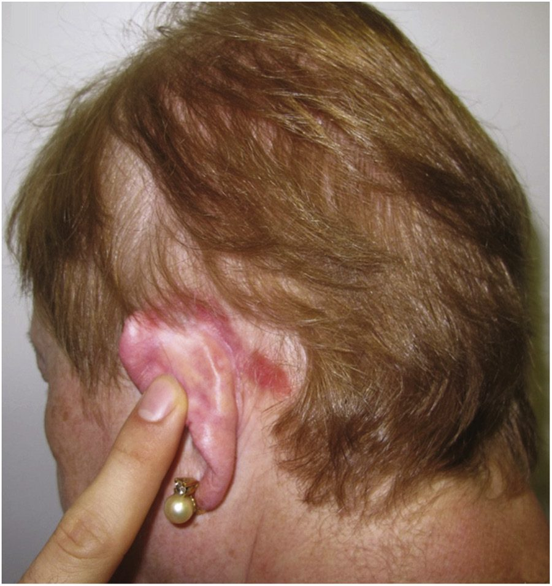
Asthma and Allergy 81 알레르기 접촉피부염의 역학 알레르기 접촉피부염은 모든 연령대에서 약 20퍼센트의 평균 유병율을 보이며, 여성에서 남성보다 약 2배 높다.232 높은 유병율은 화장품과 같은 특정 알레르겐에 대한 노출 차이에 기인할 수 있다. 예를 들어, 니켈 알레르기의 경우 여성이 장신구 착용으로 인해 알레르겐에 더 많이 노출된다. 알레르기 접촉피부염의 유병율은 소아와 젊은 성인(16.5퍼센트)에서 더 낮은 것으로 보고되었다.233 알레르기 접촉피부염은 자극성 접촉피부염과 함께 가장 흔한 직업성 피부 질환 중 하나이며 근로자의 작업 능력에 큰 영향을 미칠 수 있는 것으로 알려져 있다.230
알레르기 접촉피부염의 병인 앞서 언급한 바와 같이, 알레르기 접촉피부염은 알레르겐에 대한 특이적 T세포 반응으로 인한 타입4 과민반응이다. 첫 번째 단계인 감작(sensitization)에서는 주로 햅텐(hapten, 단백질과 같은 큰 분자와 결합하여 면역 반응을 유도할 수 있는 저분자 물질)인 알레르겐이 외래 항원으로 인식되어 표피 또는 진피의 수지상세포(dendritic cell)와 랑게르흐스세포(Langerhans cell)에 의해 포식된다. 항원제시세포(APC, antigen-presenting cell)는 이후 피부 림프절로 이동하여 미성숙(naïve) T세포의 프라이밍을 유도한다. 미성숙 T세포는 새로운 항원을 인식하고 분화, 확장, 증식하여 효과세포(effector)와 기억세포(memory) 알레르겐 특이적 T세포 집단을 형성한다. 이후 알레르겐 재노출 시, 알레르겐 특이적 T세포 집단이 증식하여 피부로 모집된다. 거기서 랑게르흐스세포, 수지상세포, 그리고 아마도 각질세포인 APC가 주요조직적합성복합체(MHC) II를 통해 알레르겐을 제시하여 T세포를 활성화한다. APC는 또한 Treg의 억제 신호를 하향 조절하고 T세포를 보조(helper) 1, 2, 또는 17 또는 CD8+ 세포독성(cytotoxic) T세포로 분화하도록 유도하는 사이토카인을 방출한다. 알레르겐 특이적 T세포는 면역 반응을 유도하여 알레르기 접촉피부염의 임상 징후와 증상을 초래한다.230
연구에 따르면 알레르기 접촉피부염 환자와 비교하여 비알레르기 환자에서는 IL-10과 같은 면역억제성 사이토카인을 분비하는 Treg에 의해 알레르겐 특이적 T세포의 증식이 억제되었다. 또한 니켈 알레르기 접촉피부염 환자에서는 니켈 햅텐 특이적 CD4+ 및 CD8+ T세포가 모두 존재하였으나, 비알레르기 환자에서는 니켈 햅텐 특이적 CD4+ T세포만 존재하였으며, 이 세포는 니켈 알레르기 접촉피부염 환자의 니켈 햅텐 특이적 CD4+ T세포와 비교하여 IL-10 분비는 더 높고 IFN-γ 분비는 더 낮았다.234 이후 또 다른 연구에서는 비알레르기 환자에서 햅텐 특이적 미성숙 및 효과 CD4+ 세포가 조절성(regulatory) CD4+ CD25+ T세포에 의해 억제되는 것으로 나타났다. 피부림프구 연관항원(CLA, cutaneous lymphocyte-associated Ag)을 발현하는 T세포는 효과 T세포에 대한 억제 효과가 더 강하였으며, 사이토카인 분비보다는 세포 간 접촉 방식으로 억제하였고, 이러한 Treg이 부재하면 햅텐 특이적 T세포가 증식할 수 있었다.235 또 다른 연구에서는 알레르기 접촉피부염 환자에서 Treg에 의해 생성되는 TGF-β 수치가 비알레르기 환자보다 낮은 것으로 나타났다.
82 Clinical immunology 접촉피부염 환자의 수는 대조군보다 유의하게 낮았으나, CD4+ CD25+ 및 CD4+ CD25 high 조절 T세포(Treg)의 수는 환자에서 증가하였다. Treg 수의 증가에도 불구하고 알레르기 접촉피부염이 발병한다는 것은 기능 이상 Treg와 알레르기 접촉피부염 병태생리 간의 연관성을 시사할 수 있다.236 알레르기 접촉피부염의 임상양상 알레르기 접촉피부염의 피부 병변에는 여러 단계가 있다. 첫 번째 단계는 홍반과 부종을 특징으로 하는 홍반기이며, 다음으로는 구진, 다수의 수포, 미란, 습윤을 동반하는 습윤기가 이어진다. 그다음은 가피(딱지)가 특징인 단계이며, 이후 피부 병변 회복 후 각질층이 나타나는 인설(비듬)기로 진행된다. 중증의 경우 수포 형성과 부종이 발생할 수도 있다. 알레르기 접촉피부염에서 가장 두드러지는 증상은 가려움이다. 피부 병변은 초기에 경계가 명확한 접촉 부위에 국한되지만, 후기 단계에서 대칭적으로 퍼질 수 있는데, 자극성 접촉피부염과 알레르기 접촉피부염을 감별하는 가장 중요한 징후 중 하나는 알레르기 접촉피부염 병변이 접촉 부위에서 더 넓게 퍼진다는 점이다. 또한, 급성 알레르기 접촉피부염의 병변은 하프텐과 접촉한 후 약 24~48시간 후에 나타나므로, 자극성 접촉피부염의 발병이 알레르기 접촉피부염보다 더 빠르다.237 알레르기 접촉피부염의 피부 병변은 지속될 수 있으며 만성 알레르기 접촉피부염으로 진행될 수 있다. 만성 알레르기 접촉피부염의 임상양상은 태선화, 균열, 색소침착, 가려움증, 그리고 대칭적 패턴, 원위부 확산, 불명확한 경계를 보이는 피부 병변이다.237,238 알레르기 접촉피부염의 진단 알레르기 접촉피부염을 진단하려면 병력 청취, 완전한 신체 검사, 그리고 진단 검사가 필요하다. 임상의는 증상의 경과, 개인 및 가족력의 아토피 질환, 알레르기, 또는 기타 피부 질환에 대해 질문해야 한다. 또한, 직업과 취미, 화장품·피부 관리 제품 또는 의심되는 물질의 사용 여부, 그리고 외용 및 전신 약물 복용에 대해서도 문진해야 한다.239 신체 검사에서 병변의 유형과 분포를 확인하는 것이 도움이 될 수 있다. 예를 들어, 눈꺼풀, 얼굴, 목 또는 손에 병변이 분포하는 경우 화장품이나 피부 관리 제품이 원인 물질일 수 있다.230 패치검사는 알레르기 접촉피부염 진단의 금표준 검사이다. 급성 또는 만성 알레르기 접촉피부염이 있는 모든 환자, 특히 치료에 반응이 없는 아토피피부염 환자와 알레르기 접촉피부염 의심 환자에게 적절한 용매와 농도의 관련 알레르겐에 대한 기초 목록을 검사해야 한다.240 일차 진단은 시사적이지만 패치검사 결과가 음성인 경우에는 반복적 개방 적용 검사를 시행할 수 있다. 이 검사에서는 의심되는 알레르겐을 약 2주간 매일 도포하여 양성 결과가 나타날 때까지 시행한다.239
Asthma and Allergy 83 알레르기 접촉피부염의 치료 알레르기 접촉피부염 치료에서 가장 중요한 단계는 원인 알레르겐을 확인하고 회피하는 것이다. 알레르기 접촉피부염을 유발하는 많은 알레르겐이 일상 제품의 화학 명칭에 포함되어 있어 환자의 회피가 어려울 수 있다. SkinSAFE(www. SkinSafeProducts. com, HER Inc./Mayo Clinic) 및 CAMP(Contact Allergen Management Program, www. ContactDerm.org)와 같은 디지털 도구가 있어 환자와 의료진에게 안전한 제품 목록을 제공한다. 또한, 인구 기반 역학 연구와 함께 제품 내 성분 및 잠재적 알레르겐에 대한 감시를 통해 효과적인 규제 개입을 도출할 수 있으며, 유럽 연합 국가에서 보존제 메틸디브로모글루타로니트릴(MDGN)의 화장품 사용 금지가 그 예이다.241 외용 코르티코스테로이드는 알레르기 접촉피부염의 치료에 사용될 수 있다. 그러나 코르티코스테로이드의 분해 산물 자체가 알레르기 접촉피부염을 유발할 수 있으므로, 외용 코르티코스테로이드 요법 후 반응이 없거나 증상이 악화되는 경우에는 이를 고려해야 한다.229 코르티코스테로이드 요법에 의한 지연형 알레르기 접촉피부염은 주로 베타메타손-17-발레르산에스테르, 티소코르톨 피발레이트, 덱사메타손 21 포스페이트 디나트륨, 트리아ม시놀론 아세토나이드, 부데소나이드, 알클로메타손 디프로피오네이트에 의해 매개된다.242
식품 알레르기 및 위장관 증후군 정의 식품 알레르기는 특별한 면역 반응에 의해 유발되는 가장 흔한 비감염성 질환 중 하나로, 특히 소아에서 많이 발생한다.243 미국 알레르기·감염병 연구소(NIAID) 가이드라인에서 식품 알레르기는 “특정 식품에 반복적으로 노출되었을 때 재현 가능한 특정 면역 반응으로 인한 건강상의 유해 효과”로 정의된다.244 면역 반응은 IgE 매개 또는 비IgE 매개이거나 또는 두 가지의 조합일 수 있다. 식품 알레르기는 비면역 관련 이상 반응을 초래하는 “식품 불내증”이라는 용어와는 다르다. IgE 매개 식품 알레르기는 알레르겐 노출 후 약 수분에서 2시간 이내에 급성 증상이 나타나는 것과 관련이 있다.245 환자의 식이에서 식품 알레르겐을 제거하여 알레르기 반응을 예방하려는 노력에도 불구하고, 의도치 않은 알레르겐 노출은 여전히 심한 알레르기 반응과 아나필락시스를 유발할 수 있다. 따라서 질병 부담을 줄이기 위해 제품에 알레르겐을 표시하는 일관된 규칙이 식품 산업에 필요하다. 우발적 알레르겐 노출과 이에 따른 환자 및 가족의 사회생활 제한은 환자의 건강 관련 삶의 질에 영향을 미치는 요인들이다.246 IgE 매개 식품 알레르기에서는 초기 단계인 IgE 감작이 일어나는데, 이 과정에서 알레르겐 특이적 B세포가 분화·증식하여 IgE를 생산하는 형질세포로 전환된다.
84 Clinical immunology IgE 항체는 비만세포와 혈액 호염기구의 표면에 위치하게 된다. 일부의 경우, 특정 식품 알레르겐에 노출되었음에도 식품 알레르기의 징후와 증상 없이 감작이 발생할 수 있다. 따라서 면역계의 감작만으로는 식품 알레르기를 정의할 수 없음을 유의해야 한다. 식품 알레르기 증상은 감작 후, 식품 알레르겐이 면역계에 재노출되어 비만세포와 호염기구의 막 결합 IgE에 결합함으로써 히스타민 및 기타 알레르기 매개 물질의 과도한 방출을 초래할 때 발생한다.244 장염, 직장염, 장병변은 주로 세포 매개인 비IgE 매개 식품 알레르기의 증후군에 해당한다. 식품 알레르기 반응의 대부분은 IgE 매개이지만, 비IgE 매개 식품 알레르기는 일반적으로 IgE 생산 없이 일어나는 면역 반응, 예를 들어 위장관의 호산구성 염증 때문이다.244 주로 영아에서 구토, 설사, 복부 경련, 드물게는 혈변과 체중 증가 부족 등의 증상을 동반한다. 호산구성 식도염과 아토피피부염은 IgE 매개 및 비IgE 매개 식품 알레르기가 모두 관여하는 혼합 원인의 식품 알레르기이다.245
식품 알레르겐은 대부분 분자량 5~100 kDa의 단백질이지만247, 드물게는 화학 하프텐이다.244 대부분의 식품 알레르겐은 조리되거나 날것이거나 소화된 형태에서도 면역 반응을 유발할 수 있지만, 주로 과일과 채소에 존재하는 알레르겐은 조리된 형태에서는 반응을 일으키지 못하는 경우가 많다. 추가로, 대부분의 식품 알레르겐 단백질은 흡입된 경우에도 알레르기 반응을 유발할 수 있다. 식품과 흡입 알레르겐 간의 교차 반응성도 발생하여 다양한 정도의 경증에서 중증 증상을 유발할 수 있다.248 교차 반응성(cross-reactivity)은 항체가 특정 항원뿐만 아니라 유사한 항원에도 반응하여 면역 반응을 촉발하는 상황을 말한다.244 서로 다른 식품의 알레르겐 간에 교차 반응성이 존재하는데, 예를 들어 닭고기와 생선의 파발부민(parvalbumin) 간249 또는 갑각류 간250에 그러하다. 꽃가루와 날것의 과일, 채소, 견과류의 알레르겐 간 교차 반응성에 의해 발생하는 증후군 중 하나가 “구강 알레르기 증후군” 또는 “꽃가루-식품 알레르기 증후군”이다. 이 반응은 흡입성 꽃가루 알레르겐에 대한 선행 감작으로 인해 신선한 과일을 섭취할 때 발생한다. 일반적으로 구강 및 구인두에 국한된 경미하고 일시적인 가려움증 및/또는 혈관부종과 관련이 있다.251 미국과 유럽에서 가장 흔한 식품 알레르겐은 달걀, 우유, 땅콩, 나무 견과류, 생선, 갑각류 및 연체류 패류, 밀, 콩, 셀러리, 겨자, 참깨, 루핀 등에서 발견된다.244,247 식품 가공 시 단백질이 제거되면 식품 오일의 알레르겐성은 줄어들 수 있다.244
역학 및 위험 요인 식품 알레르기 정의의 차이, 불일치하는 연구 설계, 그리고 환자 자가 보고 연구의 과대 평가 등으로 인해 식품 알레르기의 유병율을 결정하는 데에는 많은 어려움이 있다. 더욱이, 170가지 이상의 식품이
Asthma and Allergy 85 알레르기를 유발하는 것으로 보고된 바 있어, 연구에서는 제한된 수의 알레르기 식품에만 초점을 맞추고 있다.244 미국 성인의 식품 알레르기 유병율은 약 5%, 소아는 약 8%로 추정되며, 최근 수년간 증가하는 추세로 보고되고 있다.252 또 하나의 미국 연구에서는 소아의 식품 알레르기 유병율이 6.53%임을 보여주었다. 이 연구는 자가 보고 기반 인구 조사(국가 건강·영양 조사, NHANES)였으므로, 약간 높은 유병율은 자가 보고에 기인할 수 있다. 이 연구에서 우유(1.94%), 땅콩(1.16%), 패류(0.87%)가 가장 흔한 알레르기 식품이었다.253 기타 선진국에서는 식품 알레르기 유병율이 미국과 유사한 수준으로 보고되었다.253
식품 알레르기에는 많은 위험 요인이 있다. 아토피 질환의 가족력은 중요한 위험 요인으로, 직계 가족의 아토피 질환 이력은 식품 알레르기 위험을 40% 증가시키며, 2명의 직계 가족에게 이력이 있는 경우 아토피 질환 가족력이 없는 소아에 비해 위험을 80% 증가시킨다. 인종과 성별도 식품 알레르기 발생 위험 증가와 관련이 있으며, 아시아인, 비히스패닉 계열, 소아 남성의 위험이 더 높은 것으로 밝혀졌다. 또한, 형제자매가 많거나 반려동물을 키우는 환경적 요인은 식품 알레르기 위험을 감소시킬 수 있다.253,254
원인 및 병태생리 IgE 매개 식품 알레르기에서는 IL-25, IL-33, TSLP와 같은 염증성 사이토카인 하에서 OX40L+ 수지상세포가 식품 알레르겐을 침입 병원체로 인식한다. 수지상세포는 림프절로 이동하여 염증성 사이토카인의 방출을 촉진한다. MHC II 복합체를 통한 알레르겐 제시와 수지상세포의 OX40L과 미성숙 T세포의 OX40 간의 상호작용을 통해 미성숙 T세포가 식품 특이적 Th2 T세포로 분화하는 것이 촉진된다.255 Th2 감작은 B세포를 자극하여 알레르겐 특이적 IgE를 생산하게 하며, 이 IgE는 비만세포와 호염기구의 FCε 수용체에 부착된다. 식품 알레르겐에 대한 감작 후, 알레르겐에 재노출되면 IgE가 비만세포와 호염기구 표면의 FCε 수용체에 결합하고, 히스타민, 트립טית제와 같은 프로테아제, 혈소판 활성화 인자, PGs, 류코트리엔, TNF-α, 프로테오글리칸 등의 알레르기 매개 물질의 과도한 방출을 통해 알레르기 반응이 빠르게 발생한다. 이들 매개 물질은 혈관확장, 혈관 투과성 증가, 알레르기 염증 세포의 모집, 염증성 사이토카인 방출 증강을 유발할 수 있다. 히스타민은 알레르기 반응에서 핵심적 역할을 하며 혈관확장, 혈관 투과성 및 심박출량 증가, 분비샘 분비를 유발한다. 또한 H1 및 H2 수용체를 통해 식품 알레르기의 가장 심각한 증상인 아나필락시스를 유발한다. 혈소판 활성화 인자는 아나필락시스의 또 다른 중요한 매개 물질로, 기관지 수축 및 혈관 투과성 증가를 유발한다.256,257 수지상세포와 Th2세포 외에도, 2형 선천 림프구(ILC2)가 염증성 사이토카인 분비, 조절T세포(Treg) 억제, 비만세포 기능 촉진을 통해 알레르기 상태에 결정적 역할을 하는 것으로 보고되었다.258
86 Clinical immunology Th2세포는 염증성 효과세포인 호산구와 호염기구의 분화를 촉진하는 IL-5와 IL-13, 그리고 B세포의 IgE 생산을 촉진하는 IL-4를 분비한다. 또한 Th9세포가 알레르기 반응 중 비만세포의 성장, 생존 및 축적을 촉진하는 역할이 제안되어 있다.259 상피막의 무결성은 식품 알레르기 병태생리에서 중요한 역할을 한다. 알레르겐이나 기타 항원은 상피세포를 통한 능동 수송, 세포간 수송, 융모 미세접힘세포(M세포), 상피 횡단 수지상 돌기(특화된 수지상세포의 하위 집단), 둥글리기 세포(goblet cell)와 같은 용이한 메커니즘을 통해 정상적으로 상피막을 통과할 수 있다.260 둥글리기 세포는 용해성 저분자 항원을 기저 고유막(lamina propria)으로 운반하는 데 중요한 역할을 하는 것으로 밝혀졌다. 둥글리기 세포를 통한 선호적 항원 전달과 내강 항원의 관용유도 수지상세포에 대한 노출은 식품 관용으로 이어질 수 있다.261,262 “식품 관용”이라는 용어는 “치료 중단 후 수주, 수개월, 심지어 수년 후에 식품을 섭취하거나 경구 식품 도전 시 증상이 없는 상태”로 정의된다.244 식품 관용의 기전은 아직 충분히 규명되지 않았으나, 비활성 상태의 관용유도 CD103+ 수지상세포가 알레르겐을 제시하고 처리하는 잠재적 역할이 있다.263 CX3CR1+ 대식세포도 항원을 포식하여 항염증성 사이토카인인 IL-10을 생산할 수 있다.264 둥글리기 세포 결핍 시 장 내 염증이 증가한 증거가 있으며,265 이는 관용유도 CD103+ 수지상세포로의 항원 전달 저해로 부분적으로 설명될 수 있다. CD103+ 수지상세포는 가장 가까운 림프절로 이동하여 항원을 운반한다. 그곳에서 분비된 TGF-β, IL-10, 레티노산의 존재 하에서 수지상세포는 Foxp3+ Treg의 분화와 증식을 촉진하며, 이 Treg는 이후 장의 고유막으로 추가 이동하여 억제 수용체를 통해 효과 Th2 T세포, 호산구, 호염기구, 비만세포의 기능을 억제하여 결과적으로 IgE 생산과 히스타민 방출을 감소시킨다.266 항염증성 사이토카인(IL-10 및 TGF-β)이 존재할 때 B세포는 IgE 대신 IgA를 생산하도록 전환되는 것으로 보고되었다. 식품 알레르겐 특이적 IgA 수치는 식품 관용 및 식품 알레르겐에 대한 탈감작과 관련이 있다.267
식품 알레르기 및 기타 알레르기 증후군의 원인에 대해서는 위생 가설, 이중 알레르겐 노출 가설, 비타민 D 가설 등 많은 모델이 제안되었으며, 이 중 가장 널리 받아들여지는 것들이다. 위생 가설은 소아기의 지속적 감염이 규제 및 항염증 경로의 유도와 활성화를 초래하여 알레르기 위험을进一步 감소시킨다고 주장한다. 이 가설은 특히 선진국에서 최근 수년간 알레르기 유병율이 증가한 증거로 뒷받침된다. 면역계 성숙 전의 초기 세균·바이러스 감염이 주로 Th1 기반 면역 반응을 유도하고 Th2 반응을 촉진하지 않는다는 등 이 가설을 지지하는 다른 견해도 있다.268 그러나 helminth 감염과 같은 일부 초기 Th2 유발 감염도 알레르기와 음의 연관성을 보인다.268
이중 알레르겐(또는 조기) 노출 가설은 소아기부터 특정 알레르기 식품을 회피하더라도 감작과 추가 알레르기 반응을 예방할 수 없으며, 영아는 여전히 환경에서 유사한 호흡기 또는 피부 알레르겐에 노출된다고 주장한다. 이 가설은 아토피피부염이 있는 영아에서 식품 알레르기 발생률이 더 높다는 관찰에 기반한다. 추가로, 이 가설은 초기 경구 노출이 식품 알레르겐에 대한 면역 관용을 유도할 수 있다고 제안한다.269 비타민 D 가설은 1999년에 비타민 D 수치와 알레르기 증상 간의 상관관계가 밝혀지면서 제안되었다. 초기에는 혈중 비타민 D 수치가 높을수록 선진국의 알레르기 유병율이 높다고 주장되었다. 그러나 충분한 데이터가 이 견해를 기각하였으며, 오히려 비타민 D 수치, 특히 임신기 및 수유기의 모체 비타민 D 섭취량과 알레르기 유병율 간의 음의 상관관계를 시사하였다.270-274
임상양상 IgE 매개 식품 알레르기에서 증상의 발병은 빠르고 다양하며 거의 모든 신체계를 침범할 수 있지만, 주로 피부, 호흡기, 위장관, 심혈관, 신경계에 영향을 미친다. 임상 증상의 다양성은 식품 단백질, 면역계, 위장관, 기타 관련 장기 간의 여러 복잡한 반응을 반영한다. 식품 알레르기의 가장 심각한 증상 중 하나는 아나필락시스로, 심한 알레르기 반응이다. 대부분 빠르게 발병하며 식품 알레르기에서 가장 흔한 사망 원인이다.275 피부는 식품 알레르기에서 가장 흔히 침범되는 장기로, 경구 식품 도전 양성 환자의 약 70~80%에서 나타난다.276-278 두드러기, 혈관부종, 홍조, 가려움증, 홍반성 발진은 IgE 매개 피부 증상에 해당하며, 접촉피부염과 포과피부염(dermatitis herpetiformis)은 세포 매개 반응에 해당한다. 아토피피부염은 IgE와 세포 매개 반응 모두에 의해 매개되는 증상이다.279 두드러기와 혈관부종은 식품 알레르기에서 가장 흔한 증상 및 피부 증상으로 간주된다. 그러나 유병율은 지역이나 식품 유형에 따라 달라질 수 있다. 급성 두드러기는 만성 두드러기보다 식품에 대한 IgE 매개 면역 반응과 더 밀접하게 관련이 있다. 이는 위장관 경로를 통한 식품 섭취 또는 식품 알레르겐과의 국소 접촉에 의해 발생할 수 있다. 후자는 접촉 두드러기라 부른다. 접촉 두드러기는 비교적 즉시 발생하는 반면, 식품 단백질의 위장관 경로를 통한 섭취에 의한 급성 두드러기는 일반적으로 2시간 이내에 발생한다.279
식품 알레르기의 안과 증상으로는 결막염, 가려움, 눈물 분비, 충혈, 눈 주위 부종 등이 있을 수 있다. 식품 알레르기의 호흡기 증상은 경증에서 중증까지 다양하며 상·하부 호흡기계 모두를 침범할 수 있다. 호흡기 증상은 대부분 다른 전신 반응에 이어 나타나지만,
88 Clinical immunology 단독으로도 발생할 수 있다.280 콧물이 흐르거나 코를 문지르는 행동, 비강 울혈, 콧물, 인후의 조임감, 인후통, 마른기침의 증가, 쉰 목소리, 호기성 또는 흡기성 천명(wheezing), 그리고 심한 경우에는 기도의 완전 폐쇄에 이어 나타나는 협착음(stridor) 등이 잠재적인 호흡기 증상에 해당한다. 조리된 음식의 증기나 수증기에 노출되거나 식품 알레르겐을 흡입하는 경우 천식 반응이 나타날 확률이 더 높다. 또한 난치성 천식(refractory asthma), 아토피피부염, 위식도역류, 식품알레르기의 병력이 있는 경우에는 식품알레르기로 인한 천식 증상을 의심해야 한다.280,281 IgE 매개성 위장관 증상은 구인두(구강인두)와 구강 내 가려움, 오심, 구토, 설사, 복부 경련 등이다. 이러한 증상은 다른 IgE 매개성 식품알레르기 증상과 마찬가지로 2시간 이내에 나타날 수 있다. 혈변, 체중 감소, 성장 부전(failure to thrive), 변비 같은 더 심각한 하부 위장관 증상은 대부분 비 IgE 매개성 식품알레르기 때문에 발생한다.280 심혈관 및 신경학적 증상은 가장 심각한 결과를 초래한다. 저혈압, 혈관 허탈(vascular collapse), 빈맥과 부정맥, 어지럼증, 의식 소실, 정신 상태의 변화가 가장 흔한 심혈관 및 신경학적 증상이다. 이러한 증상은 대개 다른 피부 또는 호흡기 증상과 함께 나타난다.280,281 진단 IgE 매개성 식품알레르기의 진단에는 전형적인 알레르기 증상의 병력 조사, 신체검진, 제거식이(elimination diet), 그리고 피부단자시험(skin-prick test) 또는 혈청 IgE 검사를 통한 식품 특이 IgE의 증거 확인이 포함된다.282 경구 식품 유발시험(oral food challenge)은 현재 식품알레르기 진단의 gold standard이다. 제거식이 중 피부단자시험이나 혈청 IgE 검사 결과가 음성인 경우, 또는 결과 사이에 불일치가 있는 경우 경구 식품 유발시험이 진단에 도움이 될 수 있다.281 또한 식품 제거식이의 시작이나 유지 여부는 혈청 IgE 결과만으로 결정해서는 안 되며, 특히 아토피피부염이 있는 소아에서는 경구 식품 유발시험 결과도 함께 고려해야 한다.278 혈청 IgE나 피부단자시험 결과가 양성인데도 실제로는 식품을 견딜 수 있는(tolerance) 경우가 있고, 반대로 검사 결과가 음성이지만 실제로는 식품알레르기 환자인 경우도 있다. 따라서 오진을 피하기 위해서는 특정 순서에 따라 진단 검사들을 조합하여 사용하는 것이 좋다. 예를 들어, 병력이 검사 시행으로 이어지고, 그 검사 결과가 경구 식품 유발시험의 필요 여부를 결정하게 하는 방식이다.282 땅콩에 알레르기가 있는 영아 100명과 내성이 있는 영아 100명을 대상으로 한 연구에서, 알레르기 영아 중 26%만이 혈청 IgE 검사(15 kUA/L 이상)에서 양성으로 나타났고, 65%는 진단 확정을 위해 양성 경구 식품 유발시험이 필요했다. 피부단자시험에서는 환자의 57%만이 진단(8mm 이상)이 확정되었고, 35%는 진단 확정을 위해 추가적인 경구 식품 유발시험이 필요했다. 이 연구는 땅콩의 주요 알레르겐인 Ara h2 IgE 검사의 조합적 접근법을 제안하였는데,
Asthma and Allergy 89 이 검사는 땅콩 전체 혈장 혈청 IgE와 동일한 특이도를 가지지만 더 높은 민감도(60% 대 26%)를 보여, 땅콩 전체 혈장 혈청 IgE 검사에 이어 시행함으로써 필요한 경구 식품 유발시험의 수를 약 3분의 2가량 줄였다(95 대 32). 피부단자시험 결과 3~7mm인 영아에서 Ara h2 혈청 IgE 검사는 필요한 경구 식품 유발시험의 수를 절반 이상 줄이기도 하였다.283 분자성 또는 성분 기반 진단(component-resolved diagnostics, CRD) 검사와 호염기구 활성화 검사(basophil activation test)도 식품알레르기 환자 진단에 유망한 결과를 보여 주었다. 피내검사(intradermal test), 아토피 첩포시험(atopy patch test), 혈장 총 IgE 수치 측정, IgG4 검사, 응용운동학(applied kinesiology)은 현재 식품알레르기 일상 진료에서 권장되지 않는 진단 검사에 해당한다.282 혈청 IgE나 피부단자시험 같은 검사의 민감도와 특이도, 그리고 역치 값이 평가되기는 하지만, 이러한 값들은 연령,284 인종,285 지리적 지역,285 심지어 검사 수행 방법에 따라서도 달라질 수 있음을 고려하는 것이 중요하다.286 치료 식품알레르기 치료의 핵심은 식이에서 알레르겐을 피하는 것이다. 모유 수유 중인 영아에서는 산모의 제거식이가 필요할 수 있다. 완전 모유 수유가 아닌 영아에서는 광범위 가수분해 분유, 아미노산 기반 분유, 또는 기타 특수 분유를 식이에 포함할 수 있다.287 그러나 식이 제거에 의존하는 치료는 영아의 성장과 체중 증가를 저해할 수 있다. 예를 들어 우유 알레르기의 경우 우유의 온전한(intact) 단백질을 제거해야 하는데, 식이 대체가 불충분하면 영아는 심각한 성장 문제에 직면하게 된다.288 의사와 영양전문가의 상담과 함께 적절히 보충된 제거식이는 소아의 성장과 체중 증가에 영향을 줄 뿐만 아니라289 성장 지표, 대변 형태, 역류, 그리고 식품알레르기와 관련된 기타 증상을 개선할 수 있다.290 유청(whey) 또는 카제인 기반의 광범위 가수분해 분유(extensively hydrolyzed formula, EHF)는 우유 알레르기 환자 치료에 정기적으로 사용된다. 이 분유에서는 우유의 온전한 단백질이 효소 반응을 통해 더 작은 펩타이드(분자량 1500 Da 미만)로 가수분해된다. 서로 다른 EHF 간에는 조성의 다양성이 있다. 따라서 저알레르기성, 부작용, 영양가, 맛이 서로 다를 수 있다.291 일반적으로 우유 알레르기가 있는 영아는 유당을 견딜 수 있다. 그러나 일부 영아에서는 알레르기 반응으로 인한 장병증(enteropathy)과 장 손상이 이차성 유당 불내증을 초래할 수 있다. 또한 우유의 유당에는 잔류 우유 단백질 알레르겐이 오염되어 있을 수 있어 일부 과민성 영아에서는 알레르기를 유발할 수 있다.287 이 같은 알레르기 영아 집단은 무유당 또는 저유당 EHF의 혜택을 받을 수 있다. 그러나 소화 및 흡수 기능이 정상인 영아에서는 유당이 오히려 프리바이오틱스(사전생균제)로 작용하여 건강한 미생물총과 대사산물을 개선할 수도 있다.292 프로바이오틱스인 Lactobacillus rhamnosus GG(LGG)를 카제인 기반 EHF에 첨가하여 투여하는 것이
90 Clinical immunology 우유 알레르기가 있는 소아에서 이후 생애에 다른 알레르기성 증상이 발현될 위험을 낮추고 기능성 위장관 질환도 줄일 수 있다고 보고되었다.293 또한 이러한 병용 요법은 이 소아들에서 내약성(tolerability)을 높일 수 있다.294 EHF에 함유된 미량의 알레르겐은 알레르기 반응을 유발할 수 있지만, 식품 내성을 유도할 수도 있다. 후자의 자료는 카제인 기반 EHF에 첨가된 프로바이오틱스 LGG의 투여가 알레르기 반응보다는 오히려 내성을 촉진할 수 있음을 시사한다. 대부분의 우유 알레르기 영아에서 EHF는 증상의 완전한 해소를 가져올 수 있다. 그러나 과민성 또는 중증 식품알레르기, 또는 흡수장애성 장병증의 경우에는 아미노산 기반 분유(amino acid-based formula, AAF) 투여가 권장된다. AAF는 온전한 단백질이나 작은 펩타이드 대신 아미노산을 제공한다.287 따라서 AAF에는 단백질 알레르겐이 완전히 없으므로 식품 내성을 유도할 수 없다.295 Meyer 등은 아미노산 기반 분유가 우유 알레르기 환자에게 도움이 되거나 치료에 필수적인 상황에 대한 실용적인 지침을 제시하였다. 제안된 적응증은 EHF로도 증상이 완전히 해소되지 않는 경우, 성장 결핍 또는 부적절한 체중 증가, 여러 식품군이 식이에서 제거된 경우, 중증 복합 위장관 식품알레르기, 호산구성 식도염, 식품단백질 유발 장결장염 증후군(food protein-induced enterocolitis syndrome), 중증 습진, 그리고 모유 수유 영아에서의 증상 발현 등이다.296 식품알레르기는 환자와 가족의 생활 방식에 여러 측면에서 지대한 영향을 미칠 수 있다. 알레르기 환자를 위한 특수 식이를 제공하는 것이 비용이 많이 들 수 있다는 점 외에도, 환자들은 적합한 가공식품을 선택하기 위해 식이 상담이 필요하며 식품 라벨을 읽는 법을 교육받아야 한다. 2006년부터 Food Allergen Labeling and Consumer Protection Act(FALCPA)는 식품 제조업체가 밀크, 계란, 대두, 밀, 견과류, 땅콩, 갑각류, 생선이라는 여덟 가지 주요 알레르겐의 존재에 관한 주의 표시를 제품에 부착하도록 규정하였다. 라벨 표시는 환자가 적합한 제품을 선택하는 데 도움이 되지만, 일부 표시는 오해를 불러일으킬 수 있으므로 환자에게 라벨의 문구에 대해 교육하는 것이 필요하다.281 외식과 학교에서의 식사는 식품알레르기 환자에게 큰 도전이 될 수 있다. 레스토랑 관리자와 직원에게 식품알레르기와 그 제한 사항에 대한 인식과 정보를 높이는 전략은 그들이 알레르기 고객에게 안전한 식품을 제공하고 추천하는 데 도움이 될 수 있다. 한 연구에 따르면 약 10%의 식품 종사자는 소량의 알레르겐이 환자에게 알레르기 반응을 유발할 수 없다는 오해를 가지고 있었다. 이러한 정보 부족은 잠재적으로 위험할 수 있다. 또한 학교에서 알레르겐 없는(Allergen-free) 식탁을 제공하는 전략은 학교에서의 식품알레르기 반응 위험을 줄이고, 소아가 하루 대부분의 시간을 학교에서 보내기 때문에 알레르기 소아의 삶의 질에 영향을 줄 수 있다.281,297 식품알레르기 환자를 위한 또 다른 치료 옵션은 특정 기간에 걸쳐 미량의 알레르겐을 도입하고 단계적으로 용량을 증가시키는 것이다. 항원은 경구, 설하, 또는 경피 경로를 통해 전달될 수 있으며, 각각 경구 면역요법(Oral immunotherapy, OIT), 설하 면역요법(sublingual immunotherapy, SLIT), 경피 면역요법(Epicutaneous immunotherapy, EPIT)이라고 한다.
Asthma and Allergy 91 OIT는 내약 용량의 역치를 높이고 탈감작(desensitization)에 더 효과적인 것으로 보고된다. 그러나 OIT는 EPIT와 SLIT에 비해 전신성 및 국소 부작용의 비율도 더 높다.298 현재는 항 IgE 단클론항체인 omalizumab과 OIT의 병용 요법이 치료 효능을 높이기 위해 제안되고 있다.299 Omalizumab은 IgE에 결합하여 비만세포와 호염기구 표면의 FcεRI 수용체에 대한 IgE 결합을 억제한다.300 또 다른 잠재적 치료 접근법은 omalizumab-IgE 복합체를 이용하여 혈중 순환 알레르겐을 중화하고, 이들이 비만세포와 호염기구의 막 결합 IgE와 결합하는 것을 억제하는 것이다.301 식품알레르기의 가장 심각한 임상 증상인 아나필락시스의 관리는 식품알레르기 환자에서 매우 중요하게 고려되어야 한다. 근육주사 에피네프린(adrenaline) 투여는 증상을 신속하게 개선하는 데 효과적이다. 에피네프린은 혈관수축 작용으로 혈압을 유지하고, 호흡기를 확장하여 호흡을 개선한다. 식품 알레르겐 특이 IgE 검사가 양성이고 이전에 아나필락시스 반응의 병력이 있는 환자에게는 에피네프린 자동주사기(epinephrine auto-injector)를 휴대할 것을 권장하는데, 이는 에피네프린 주사가 지연되면 입원률과 아나필락시스로 인한 사망 위험이 높아지기 때문이다.281,282 또한 2차 치료제로 H1-항히스타민제 단독 또는 H2-항히스타민제와의 병용, 그리고 글루코코르티코이드를 투여하여 아나필락시스 반응에서 혈압과 심박수를 개선할 수 있다.281 예방 식품알레르기의 유병률이 증가하는 추세에 있기 때문에, 많은 연구들은 위험 요인에 대한 노출을 줄이거나 다른 방법을 통해 식품알레르기를 예방하는 효과적인 접근법을 우선적으로 다룬다. 이러한 방법은 대부분 위생가설(hygiene hypothesis), 이중 알레르겐 노출 가설(dual allergen exposure hypothesis), 비타민 D 가설 등 식품알레르기의 병인 가설에 기반한다. 1차 예방 방법은 특정 항원에 대한 영아의 감작(sensitization)과 항체 생산 가능성을 줄이는 것을 목표로 하는 반면, 2차 예방 방법은 이미 감작된 영아 및/또는 다른 아토피 질환이 있는 영아에서 알레르기 반응의 발생을 줄이는 데 초점을 맞춘다.291 모유 수유는 식품알레르기 예방에 중요한 역할을 한다. 모유는 영아에게 필요한 에너지, 필수 영양소, 모체 항체, 성장 인자를 제공한다. 아토피 질환의 가족력이 있거나 없는 영아에서 모유 수유의 효과를 연구한 메타분석에서, 생후 첫 3개월 동안의 완전 모유 수유는 가족력이 양성인 소아에서 아토피피부염의 보호 인자임이 확인되었으나, 가족력이 없는 소아에서는 그렇지 않았다.302 다른 연구들도 초기 영아기의 완전 모유 수유가 소아기 알레르기성 천식과 알레르기성 비염의 낮은 발생률과 관련이 있음을 시사했다.303,304 완전 모유 수유가 소아기 알레르기 질환에 대한 보호 인자로 알려져 있지만, 그 효과는 여전히 논란의 여지가 있으며 일부 연구에서는 보호 인자로서의 역할을 입증하지 못했다.305
92 Clinical immunology 초기의 예방 접근법은 대부분 알레르기 유발 식품의 회피와 생후 초기 수개월 동안의 완전 모유 수유, 그리고 잠재적으로 알레르기를 유발하는 식품의 늦은 도입에 기반하고 있었다. 예를 들어 보완 고형식을 생후 6개월 이후에, 유제품을 1년 이후에, 계란을 2년 이후에, 땅콩·견과류·해산물을 3년 이후에 도입하는 방식이었다.306 그러나 최근 연구들은 출생 후 4~6개월 이내에 고형식을 조기에 도입하면 소아기의 알레르기 반응 발생률을 줄일 수 있으며, 특히 가족력이 양성인 영아와 같은 고위험군에서 그러하다는 것을 시사한다.307,308 호주에서 2000명 이상의 영아를 대상으로 한 연구에서는 4~6개월 이내에 조리된 계란을 조기에 도입하는 것이 10~12개월 및 12개월 이후에 도입하는 것에 비해 계란 알레르기 발생 위험이 더 낮은 것과 관련이 있음을 보여 주었다. 이 연구는 또한 모유 수유 기간과 다른 고형식 도입 시기가 계란 알레르기 발생 가능성과 연관이 있다는 것을 입증하지는 못했다.309 이 연구의 결과는 식품 항원에 대한 조기 노출을 피하는 것이 지난 수십 년간 식품알레르기 발생률이 증가한 이유일 수 있음을 밝혔다. 또 다른 연구에서는 습진이 있는 영아에서 계란에 대한 조기 경구 노출이 계란 알레르기 발생 위험을 낮출 수 있음을 입증했다.310 또한 알레르기 발생 위험이 높은 영아에서 땅콩의 조기 도입은 땅콩 알레르기 예방을 위한 검증된 예방 접근법으로 제안된다. 계란 알레르기, 중증 습진, 또는 둘 모두를 가진 4~11개월 영아를 대상으로 한 연구에서 땅콩을 회피하는 것은 감작된 집단과 비감작 집단 모두에서 땅콩 알레르기 발생 위험을 유의하게 증가시켰다.311 또 다른 무작위 대조시험에서는 1~3세 사이의 땅콩과 계란 알레르기 발생률이 이들 식품의 조기 도입(생후 6개월)과 유의한 음의 상관관계를 보였다(치료의도 분석(intention-to-treat analysis)이 아닌 프로토콜 준수 분석(per-protocol analysis)에서). 그러나 우유, 참깨, 흰살생선, 밀의 조기 도입은 알레르기 발생에 결정적인 영향을 미치지 않았다.312 알레르겐의 조기 도입에 대해서는 더 많은 뒷받침 자료가 필요하다는 점을 고려해야 한다. 용량, 여러 식품 항원의 도입, 그리고 이 접근법의 안전성에 대해 철저히 조사되어야 한다. 장내 미생물총의 조성과 세균, 바이러스, 기생충 병원체에 대한 조기 노출은 면역계의 성숙과 Th2 반응으로의 편향에 중추적인 역할을 한다.268,313,314 신생아기와 영아기의 장내 미생물총의 초기 조성은 경쟁적 집락화, 면역계 조절, 자원의 섭취와 분배, 또는 이 초기 시기의 생리적 발달에 영향을 줌으로써 소아기의 건강에 지대한 영향을 미칠 수 있다.315 알레르기가 있는 영아와 없는 영아 사이에는 초기 장내 미생물총과 대사산물 조성에 차이가 있다는 증거가 있다.316 아토피 질환이 있는 영아는 일반적으로 알레르기가 없는 영아에 비해 세균총의 다양성이 더 낮다. 따라서 이러한 증거들은 예를 들어 프로바이오틱스나 프리바이오틱스를 투여하여 세균총을 변형하고 다양성을 높이는 것이 예방적이면서도 치료적인 접근법으로 시행될 수 있음을 제안한다. Wopereis 등의 연구에서는 비소화성 올리고당(프리바이오틱스)으로 보충된 부분 가수분해
Asthma and Allergy 93 단백질 분유가 알레르기 고위험 영아에서 분류군 다양성, pH, 대사산물 측면의 장내 미생물총을 개선하고 결과적으로 이 집단에서 아토피피부염을 예방할 수 있었다.316 또 다른 연구에서는 경구 LGG의 6개월 보충이 알레르기 고위험 영아에서 장내 마이크로바이옴의 다양성과 대사산물 조성을 개선했다. 또한 그들의 대변 검체에는 Treg를 생체 외(ex vivo)에서 유도하는 지방산이 있었다. 그러나 보충 중단 6개월 후 대사 프로필은 변화하였고 미생물총 내 LGG 수준은 감소하여, 리모델링이 영구적이지 않음을 시사했다.315 산모의 장내 미생물총과 모유의 미생물총도 영아의 미생물총 조성에 크게 영향을 미칠 수 있다. 모유 수유는 비피도박테리아(Bifidobacteria)의 성장을 유도하여 장내 미생물총의 조합을 개선할 수 있다.317 비피도박테리아는 Treg 및 TLR과의 상호작용을 통해 점막 항상성을 더욱 개선하고 장 점막에서의 내성을 증가시킬 수 있다.313 다른 예방 접근법 중 하나는 임신 및 수유 중 비타민 섭취이다. 비타민 D 결핍은 음식 내 농도가 매우 낮기 때문에 전 세계적으로 점점 더 흔해지고 있다. 비타민 D는 인체에서 중요한 면역조절 물질이며, 영아, 소아, 성인 및 임신·수유 중에는 25-하이드록시비타민 D의 혈장 수치가 >50nmol/L로 최적화되어야 한다.318 소아와 청소년의 낮은 비타민 D 수치는 아토피 질환과 관련이 있다.319 연구들은 임산부의 비타민 D 섭취 증가가 자녀의 알레르기성 비염, 천식, 천명의 위험을 낮출 수 있음을 보여 준다.271,272,274 그러나 또 다른 연구에서는 모체 혈액과 제대혈의 높은 비타민 D 수치가 생후 첫 2년 이내의 감작 및 식품알레르기 위험을 증가시킨다고 보고했다. 또한 제대혈의 높은 비타민 D 수치와 Treg 수 사이에 음의 상관관계를 관찰했다.320 식품알레르기 및 기타 알레르기 질환의 예방 또는 유도에 있어 비타민 D의 역할은 아직 해결되지 않은 상태이다. 그러나 비타민 D는 낮은 수치와 높은 수치 모두 알레르기 발생 위험을 증가시키는, 용량에 의존적인 이중 역할을 할 수 있다고 제안된다.321 따라서 성별, 아토피 병력 등을 고려하여 개인별로 식품알레르기를 예방하기 위한 적절한 비타민 D 용량을 확인하기 위해서는 추가 연구가 필요하다. 약물 알레르기 정의 거의 모든 종류의 약물 투여 후에 부작용 또는 이상약물반응이 발생할 수 있다. 그러나 이러한 이상반응의 빈도는 약물 종류에 따라 다를 수 있다. 예를 들어 항생제와 항경련제는 약물 알레르기를 빈번하게 유발할 수 있다.322 약물 유발 이상반응은 근본적인 병인에 따라 A형과 B형의 두 가지로 분류된다. A형 약물 반응은 약리학적 작용과 관련된, 예측 가능하며 거의 흔하고 용량 의존적인 반응과 연관된다.
94 Clinical immunology 이에 반해 B형(또는 표적외[off-target]) 약물반응은 예측이 불가능하고, 드물며, 용량 의존적이지 않고, 대부분 면역학적 또는 알레르기성 이상반응에 의해 매개된다.322,323 약물알레르기 또는 약물과민반응은 B형 약물이상반응으로 분류된다. 약물알레르기의 임상적 증상은 피부발진과 같은 경증 증상부터 중증 피부이상반응과 아나필락시스와 같은 훨씬 더 심각한 증상까지 다양할 수 있다.
역학 및 위험인자: 약물이상반응은 전체 입원의 약 3%~6%의 주된 이유이며, 입원 환자의 10%~15%가 이를 경험한다. 이러한 이상반응의 대부분(80%)은 “A형” 반응으로 확인된다. 따라서 약물알레르기와 기타 비면역 매개 약물이상반응(유사알레르기 반응)은 이들 이상반응의 15%~20%를 차지한다. 병원 기반 연구에서는 피부 증상이 가장 흔한 증상으로 보고된다.324 또한 약물알레르기의 가장 심각한 증상인 약물 유발 아나필락시스는 추정 발생률이 0.04%~3.1%, 사망률이 0.65%로 보고된다.325 중증 피부 약물이상반응은 드문 약물알레르기 증상으로, 스티븐스-존슨 증후군(SJS) 및 독성표피괴사용해(TEN)의 경우 연간 발생률이 2~7/백만 명이다. 그러나 이러한 증상의 사망률은 현저히 높다(SJS의 경우 5%~10%, SJS/TEN의 경우 30%, TEN의 경우 50%).326 약물알레르기를 유발할 수 있는 요인에는 환자의 특성이나 약물 자체와 관련된 여러 요인이 있다. 약물의 화학 구조와 면역계 반응을 촉발하는 능력, 약물 투여 경로, 용법용량, 노출 빈도는 약물 관련 위험인자로 간주된다. 인슐린과 같이 분자량이 큰 약물이나, 합텐(hapten)(즉, 체내 특정 단백질에 결합하여 알레르겐으로 작용할 수 있는 작은 분자)으로 작용할 수 있는 페니실린과 같은 약물은 약물알레르기를 유발할 가능성이 더 높다. 이들 약물은 면역계를 자극하여 알레르기성 이상반응을 유발할 수 있다. 정맥주사, 근육주사 또는 국소 투여 경로를 통한 약물 투여는 경구 투여에 비해 약물알레르기 위험이 더 높을 수 있다. 또한 장기간에 걸쳐 일정 횟수의 용량을 복용하는 환자는 동일 용량을 1회 투여받는 환자에 비해 약물알레르기가 발생할 위험이 더 높다.327 그 밖에 대부분 숙주 관련 위험인자는 성별, 연령, 동반질환 및 바이러스 감염, 유전적 요인이다. 여성이 약물에 대한 알레르기 반응에 더 많이 영향을 받는 것으로 보고된다.327,328 또한 약물알레르기는 성인에 비해 소아에서 덜 보고된다. 그러나 이는 성인의 약물 사용과 노출이 더 많고, 이에 따라 성인의 약물감작과 알레르기 발생률이 더 높기 때문일 수 있으며, 성인이 소아보다 약물알레르기 발생에 더 취약한지 여부는 여전히 명확하지 않다.324 인간면역결핍바이러스
Asthma and Allergy 95 (HIV), 엡스타인-바 바이러스(EBV) 또는 단순포진바이러스(HSV) 감염과 같은 만성 바이러스 감염 환자는 약물알레르기 발생률이 더 높을 수 있다.327 최근 연구에서는 약물알레르기 환자에서 일부 유전적 바이오마커를 찾고자 하였다. 예를 들어, 특정 인간백혈구항원(HLA) 1급 대립유전자(HLA-B15:02, HLA-A31:01, HLA-A24:02)가 방향족 항간질약물에 의해 유발되는 피부 약물이상반응의 위험을 증가시키는 것으로 보고된다.329 또한 다른 특정 HLA 대립유전자(HLA-B27:05, HLA-B*38:02, HLA-DRB1×08:03)는 일부 항갑상선약물에 의해 유발되는 무과립구증(agranulocytosis)과 연관된 것으로 보고된다.330 따라서 이들 대립유전자의 빈도가 높은 일부 집단에서는 이에 대한 선별검사가 권장된다. 특정 알레르기 바이오마커를 확인하면 의사가 적절한 약물을 처방하고, “예측 불가능한” B형 약물반응을 예측 가능하게 만들어 약물알레르기 및 과민반응의 경제적·임상적 질병 부담을 줄이는 데 도움이 될 수 있다.
병인 및 발병기전: 약물은 다양한 기전을 통해 약물알레르기를 유발할 수 있다. 이러한 면역 매개 알레르기 반응은 Gell과 Coombs 분류에 따라 4가지 유형으로 분류된다. IgE 매개 약물과민반응(I형), IgG 및 IgM 매개 세포독성(II형), 면역복합체 반응(III형), T세포 매개 약물과민반응(IV형)이 약물알레르기의 주요 기전으로 정의된다.331 I형, II형, III형은 항체 매개로 급성 증상을 유발하는 반면, IV형 세포 매개 반응은 지연형 이상반응을 유발한다. I형과 IV형 반응은 II형과 III형보다 더 흔하다.332 대부분의 약물은 분자량이 낮다. 따라서 약물 자체는 면역원(immunogen)이 아니다. 그러나 약물이 합텐으로 작용하거나, 약물의 대사산물이 합텐으로 작용할 수 있다(이 경우 약물을 프로합텐[prohapten]이라 한다). 합텐은 단백질에 공유결합하여 원치 않는 면역원성을 유발할 수 있는 작은 분자(<1000 Da)이다. 또 다른 제안된 기전은 약물이 T세포수용체(TCR) 또는 면역세포 표면의 HLA 분자와 같은 면역수용체에 가역적으로 결합하여 면역반응을 촉발할 수 있다는 것이다.322,332 β-락탐 항생제에 의해 유발된 과민반응에 대한 초기 연구는 약물알레르기에 합텐 개념을 도입하게 하였다. 질량분석법으로 알부민 단백질에 대한 플루클록사실린(합성 페니실린)의 결합 양상을 확인한 연구에 따르면, 플루클록사실린은 10개의 특정 라이신 잔기에만 결합하며, 그중 2개(Lys 190과 Lys212)가 가장 반응성이 높아 생체 내에서 플루클록사실린과 신속하게 결합하였다. 그러나 시험관 내 실험에서는 플루클록사실린이 N-아세틸라이신과 N-아세틸시스테인 메틸에스테르 모두에 결합할 수 있다는 것이 밝혀졌다.333 알부민과 플루클록사실린 결합의 제한적이고, 용량 및 시간 의존적인 양상은 과민반응 환자에서 합텐-단백질 결합의 알레르기원성을 연구할 수 있는 특정 표적을 제공한다. 합텐-단백질 복합체에 대한 첫 노출 후, 복합체는 항원제시세포(APC)에 의해 포식된다. 이어 APC는 관련 림프절로 이동하여 HLA를 통해 미성숙 T세포에 알레르겐을 제시한다. 그러면 항원 특이적 T세포는 제시된 복합체를 인식하고
96 Clinical immunology 항원 특이적 효과세포 및 기억 T세포로 증식한다. 이들 항원 특이적 T세포는 이후 조직으로 이동하여, 합텐-단백질 복합체에 재노출되면 후천 면역(적응 면역) 반응을 개시할 수 있다. 활성화된 Th2 세포는 또한 IgE를 생성하도록 B세포 분화를 자극할 수 있는 반면, Th1 세포는 IgG 및 IgM 생성을 증가시킨다.332 또한 유사한 항원 간의 교차반응의 결과로 감작이 발생할 수 있다. 예를 들어, 세툭시맙(키메라 쥐-인간 IgG1 단일클론항체)과 ABO 혈액형에도 존재하는 갈락토스-α-1,3-갈락토스에 특이적인 IgE가 세툭시맙 유발 알레르기 반응 환자의 치료 전 검체의 68%에서 존재하였다. 연구 결과에 따르면 이들 환자의 절반 이상에서 세툭시맙에 대한 감작이 교차반응의 결과로 발생한다. 그러나 세툭시맙에 대한 알레르기 반응이 없는 51명 중 1명에서는 항체가 존재하여, 일부 경우에는 감작이 알레르기로 이어지지 않을 수 있음을 시사한다.334 갈락토스-α-1,3-갈락토스에 대한 IgE의 존재는 환자의 아나필락시스 예측 바이오마커로 사용될 수 있다. Weiss 등335은 세툭시맙 치료를 시작하기 전에 60명의 환자에서 이 항체를 선별검사하였다. 음성 예측값은 100%였으며, 선별검사에서 음성 결과를 보인 환자 중 아나필락시스를 겪은 환자는 없었다. 면역 매개 알레르기 반응 형성에는 두 가지 경로가 제안되었다: TCR에 의한 항원 인식을 통한 T세포 활성화와, 항원을 탐지한 수지상세포가 “성숙 신호”를 감지하고 공동자극 신호를 형성하여 T세포 활성화를 추가로 자극하는 경로이다.322 수지상세포는 약물 관련 산화 스트레스와 일부 “스트레스 센서” 단백질의 변형, 즉 성숙 신호를 감지할 수 있다. 따라서 수지상세포는 스트레스 반응을 생성하고, 알레르겐 특이적 T세포 활성화를 유도하기 전에 다른 선천 면역(자연 면역) 반응 요소를 활성화할 수 있다. 수지상세포의 성숙은 합텐 용량 의존적 방식으로 일어난다. 합텐 노출 수준이 낮으면 수지상세포가 부분적으로 활성화되고, 수지상세포가 더 높은 수준의 합텐에 노출되면 조직 내 다른 세포의 약물 유발 사멸로 인해 수지상세포가 완전히 활성화된다. HIV 감염 및 낭성섬유증과 같은 동반질환은 이 단계를 촉진할 수 있다.322 일부 약물의 온전한 화학 구조는 합텐으로 작용할 수 없지만, 약물 대사 효소를 통한 세포 내 정상적인 대사 과정과 생체활성화는 단백질을 합텐화할 수 있는 대사산물을 생성할 수 있다. 이러한 약물을 프로합텐이라 한다. 예를 들어 Jenkins 등의 연구에서 플루클록사실린뿐만 아니라 그 대사산물인 5-하이드록시메틸 플루클록사실린도 동일한 라이신 잔기에서 혈청 알부민에 공유결합하여 변형시킬 수 있으며 더 심각한 이상반응을 유발하였다.333 설파메톡사졸은 프로합텐 약물의 또 다른 예이다. 모약물(설파메톡사졸) 자체는 혈청 단백질에 결합하여 알레르기를 유발할 수 없다. 그러나 두 단계를 거쳐 합텐으로 “생체활성화”될 수 있다. 설파메톡사졸은 먼저 간에서 설파메톡사졸 하이드록실아민으로 대사된다. 설파메톡사졸 하이드록실아민은 이후 설파메톡사졸의 니트로소로 산화될 수 있다. 두 대사 중간체 모두
Asthma and Allergy 97 다양한 혈청 및 세포막 결합 단백질에 결합하여 여러 가지 상이한 합텐-단백질 접합 알레르겐을 생성할 수 있다.336 대부분의 약물은 특정 단백질 수용체나 효소에 결합하여 그 기능을 변경하도록 설계된다. 약물학적 친수기(pharmacophore)라는 용어는 국제순수·응용화학연합(IUPAC)에 의해 “특정 생물학적 표적과 최적의 초분자 상호작용을 보장하고 그 생물학적 반응을 촉발(또는 차단)하는 데 필요한 입체 및 전자적 특징의 집합”으로 정의된다.337 약물의 약물학적 친수기는 체내 특정 표적 분자에 결합하도록 지정되어 있지만, 일부 면역수용체는 약물의 표적 단백질과 유사한 리간드 결합 부위를 가질 수 있다. T세포 표면의 단백질 수용체의 다양성과 이질성은 약물이 TCR과 교차 상호작용하고, 이어서 T세포를 활성화할 위험을 증가시킬 수 있다. 약물 분자가 면역수용체와 직접 상호작용하여 T세포를 활성화하는 이러한 기전을 p-i 개념(면역수용체와 약물의 약리학적 상호작용)이라고 한다.338 비공유 상호작용은 합텐-단백질 복합체의 공유결합에 비해 더 불안정하므로, 이 기전은 사전 활성화된 T세포에서만 반응을 자극할 수 있다. 합텐 유발 반응과 유사하게, 만성 바이러스 감염, 산화 스트레스 경로 또는 조직 내 다른 세포의 약물 유발 사멸은 T세포 반응을 강화할 수 있다.322
임상적 특징: IgE 매개 반응은 약물 투여 후 즉시 발생하며, 약물 복용 후 수초(비경구 투여 시) 또는 수분(경구 투여 시) 내에 증상이 나타난다. 주요 증상은 일반적으로 손, 발, 액와부, 생식기 부위의 발진, 발적, 소양감과 함께 얼굴과 흉부의 발적으로 나타난다. 이러한 초기 증상은 그 자체로 심각하지 않을 수 있다. 그러나 아나필락시스와 같은 곧 닥칠 수 있는 심각한 증상을 시사할 수 있다. 따라서 진지하게 다루어야 한다. 이후 증상으로는 10~15분 내의 전신 두드러기, 혀와 후두의 부종, 호흡곤란과 흉부 압박감을 동반한 급성 기관지경련, 안와주위 및 구순주위 부종이 있다.338 T세포 매개(IV형 면역반응) 증상은 주로 피부에서 발생한다. 발진은 약물 투여 후 6시간~10일 사이에 나타날 수 있으므로 일반적으로 지연형 알레르기 반응이라 한다.338 지연형 약물이상반응의 피부 증상은 반구진발진(MPE), 급성 전신성 발진성 농포증(AGEP), 고정약진(FDE)과 같은 경미한 침범부터 SJS, TEN, 약물유발과민증후군(DIHS)/호산구증가증 및 전신증상을 동반한 약물반응(DRESS)과 같은 더 심각하고 생명을 위협하는 상태까지 다양하며, 이들은 인구에서 유병률은 낮으나 높은 질병 부담과 사망률을 유발한다.326 중증의 경우 지연형 알레르기 반응은 간, 신장, 폐, 췌장에도 영향을 미칠 수 있으며,338 발열, 림프절병증, 호산구증가증과 같은 전신 증상을 유발할 수 있다.331
98 Clinical immunology 진단: 약물알레르기의 진단은 대부분 환자의 알레르기 반응에 대한 임상 병력과 임상 징후 및 증상 검사에 의존한다. 피부가 약물알레르기에서 가장 흔히 영향을 받는 장기이므로 피부의 철저한 검사가 필요하다.323 다음 단계에서는 피부단자시험(skin prick test)이나 피내시험(intradermal test)과 같은 진단 검사가 필요할 수 있다. 병력 청취는 약물알레르기 진단의 근간이며, 의사가 적절한 검사실 또는 진단 검사를 선택하고 의심되는 약물의 사용을 중단하도록 안내한다. 현재 및 과거 복용 약물, 증상의 발현 시기, 증상의 특성과 위치, 유사 증상의 과거 발생 여부, 병용 약물, 약물 사용의 적응증, 기타 동반질환 또는 기저 임상 상태에 관한 상세한 질문이 이루어져야 한다.339 아나필락시스 진단을 위해 혈장의 혈청 총 비만세포 중성 세린 프로테아제인 트립타제를 측정할 수 있다. 아나필락시스 발병 후 약 30분이 지나면 혈청 트립타제 수치가 증가하기 시작하여 최대 6~8시간 동안 증가된 상태를 유지한다.340 따라서 아나필락시스 발병 후 1~2시간에 트립타제의 혈장 농도를 측정할 것을 권장한다.341,342 혈소판활성인자(PAF), 키마제(chymase), 카르복시펩티다제 A3, 디펩티딜펩티다제 I(DPPI), 바소그라눌린(basogranulin), C-C 케모카인 리간드(CCL)-2도 부상 중인 아나필락시스 진단 바이오마커이다. 그러나 트립타제 측정은 여전히 아나필락시스 진단의 표준(gold standard)으로 간주된다.342 IgE 매개 약물알레르기 진단을 위해서는 혈장 내 알레르겐 특이적 IgE 수치를 측정해야 한다. 양성 결과는 환자가 해당 특정 알레르겐에 감작되었음을 나타낸다. 그러나 감작이 모든 경우에 알레르기 반응으로 이어지는 것은 아니다. 피부검사는 알레르겐 특이적 항체의 존재와 약물 복용 후 알레르기 반응의 가능성을 평가하는 데도 사용될 수 있다. 즉시형 반응의 위험을 평가하기 위해 피부단자시험과 피내시험이 사용된다. 그러나 이러한 검사의 음성 예측값은 대부분의 항생제(페니실린 제외)에서 신뢰할 만하지 않다. 따라서 양성 결과는 알레르기 반응의 높은 위험을 나타낼 수 있지만, 음성 결과가 그 위험을 확실히 배제하지는 않는다.331 음성 예측값이 낮기 때문에 복합적 진단 접근법이 권장된다. 예를 들어 피부 진단 검사 외에도 경구부하시험(oral challenge test)이 알레르기의 원인을 확인하기 위해 일반적으로 시행된다. 피부단자시험에서는 액체 또는 분말 형태의 소량의 약물을 전박부의 작은 부위에 적용한 다음 란셋으로 피부를 천자한다. 또한 음성 대조군과 양성 대조군으로 각각 0.9% 생리식염수와 히스타민을 사용하며, 결과는 이들 대조군과 비교된다. 양성 결과는 일반적으로 20분 이내에 나타난다. 그러나 24~48시간 내에 나타나는 증상은 지연형 양성 결과로 간주될 수 있다.343 피부첩포시험(patch test)과 지연형 피내시험은 지연형 약물반응의 진단에 사용된다. 지연형 피내시험은 첩포시험보다 더 민감한 것으로 나타났다. 이러한 검사에서는 약물 제제를 일반적으로 페트롤라툼이나 다른 기제를 통해 소량을 피부의 작은 부위에 48시간 동안 적용한 다음, 지연형
Asthma and Allergy 99 증상의 발생을 이후 48~96시간 동안 조사한다.331 지연형 피부검사는 코르티코스테로이드 및 기타 면역억제제 중단 후 최소 4주, 그리고 급성 증상 발생 후 4~6주 후에 시행하여 위양성, 위음성 또는 전신 반응의 위험을 줄여야 한다.343
특정 약물:
비스테로이드성 소염진통제(NSAIDs): NSAIDs에 대한 알레르기는 항생제 다음으로 두 번째로 흔한 알레르기이다. 성인의 약 1.9%가 이 약물 유형에 대한 알레르기 반응을 경험한 적이 있으며, 약물알레르기 관련 호소의 약 29%가 NSAIDs 때문이다.344 또한 약물 유발 아나필락시스의 48.7%~57.8%를 유발함으로써 가장 흔한 원인이 된다. 아나필락시스의 발생은 성인에서 천식, 비부비동염, 비용종을 동반하는 경우가 많다.325 NSAID 유발 알레르기의 반응은 5가지 그룹으로 분류된다. 가장 흔한 유형은 아스피린 악화 호흡기 질환(AERD)이다. 이는 지속적인 비폐색, 비용종증, 비염을 포함한 증상이 대부분 성인 초기에 시작되며, 천식과 COX-1 억제제에 대한 과민반응을 포함한 다른 증상이 뒤따르는 후천성 증후군이다. AERD는 대부분 콧물, 급성 비폐색, 기관지수축, 흉부 압박감, 결막 충혈과 같은 급성 호흡기 증상을 동반한다. 약물 복용 후 30~120분 내에 상기도와 하기도 모두에 영향을 미친다. 또한 복부 경련과 설사, 메스꺼움, 피부 발진과 같은 일부 다른 비호흡기 증상도 일부 환자에서 발생할 수 있다.344 다발성 NSAID 악화 두드러기/혈관부종은 COX-1 억제제 복용 후 만성 두드러기 환자의 12%~30%에서 발생한다. 증상은 대부분 피부 증상이며 약물 투여 후 수분 내에 나타난다. 이 반응은 IgE 매개로 간주되지 않는다. 만성 두드러기 환자의 기저 면역 결함이 비만세포의 탈과립과 후속 알레르기 반응을 촉발하는 것으로 보인다.344 그 외에 무증상 환자에서 발생하는 다발성 NSAID 유발 두드러기/혈관부종의 경우, 두드러기나 혈관부종의 병력이 없는 환자가 어떤 COX-1 억제제 약물 복용 후 1~6시간 내에 피부 증상이 발생한다. 단일 NSAID 유발 아나필락시스 반응은 서로 다른 COX-1 억제제 약물 간의 교차반응 없이 발생한다. 이는 짧은 시간 내에 두드러기, 혈관부종 및/또는 아나필락시스를 유발할 수 있다. 네 가지 반응 유형 모두 급성이었다. 그러나 일부 경우 NSAIDs는 고정약진, SJS/TEN, MPE, AGEP, DRESS, 접촉피부염(국소 NSAIDs에 의한)과 같은 지연형 반응을 유발할 수 있다.344
β-락탐 항생제: 페니실린과 세팔로스포린을 포함한 β-락탐 항생제는 널리 사용되는 항생제이다. 미국 인구에서 성인의 약 8%와 1%가 한 번
100 임상면역학 각각 페니실린과 세팔로스포린에 대해 알레르기 반응을 보인 것으로 보고되었다.345 NSAIDs 다음으로, β-락탐(β-Lactam) 항생제가 아나필락시스(과민성 쇼크)의 가장 흔한 원인이며, 아나필락시스로 인한 사망의 75%에서 원인 약물로 지목된다.325 급성 알레르기 반응은 이전 감작(sensitization)으로 인해 체내에 존재하는 IgE 항체에 의해 매개되며, IgG는 약물에 첫 노출 후 7-10일 이내 및 재노출 후 1-2일 이내에 지연형 반응을 매개한다.346 β-락탐 항생제에 의한 알레르기를 가진 환자에서는 즉시형 면역 반응이 나타날 수 있으며, 일반적으로 하나 이상의 장기가 영향을 받고, 환자의 소수에서만 두드러기 및/또는 혈관부종(angioedema)이 단독으로 발현한다. 지연형 면역 반응도 나타날 수 있으며, 이는 MPE, AGEP, DRESS, FDE, SJS, TEN 및 혈청병 유사 증상으로 이어질 수 있다.347 β-락탐 항생제에 의한 알레르기 반응의 진단에서 병력 청취는 중요한 역할을 한다. 심한 피부 부작용 및 기타 지연형 전신 증상의 병력이 있는 환자에서는 진단 검사 및 탈감작을 실시해서는 안 된다. 경구 유발검사는 페니실린 알레르기의 IgE 매개 급성 증상을 진단하는 금표준(gold standard)이다. 그러나 이 약물 클래스에 대한 내성 또는 과민반응을 확인하기 위해 피부 진단 검사도 수행된다.345 교차반응은 페니실린, 세팔로스포린 및 카르바페넴 사이에서 비교적 흔하게 관찰되는 현상이다. 이들의 화학 구조 모두 β-락탐 고리(β-Lactam ring)를 공유하고 있다. 그러나 교차반응은 페니실린, 특히 1세대 세팔로스포린에서 유사한 측쇄(side chain) 때문일 수 있다. 따라서 측쇄가 유사하지 않는 한, 페니실린 알레르기가 있는 환자에게 세팔로스포린 투여도 가능하다. 페니실린 알레르기가 있는 환자는 다른 종류의 약물에 대해서도 더 높은 알레르기 위험성을 보이는 것으로 보고되었다. 따라서 이 환자군에게는 약물 처방 시 더욱 주의가 필요하다.348 안지오텐신 전환효소 억제제(ACE-I) 안지오텐신 전환효소 억제제(ACE-I)는 항고혈압제로 광범위하게 사용된다. 그러나 ACE-I를 복용하는 환자의 0.1%-0.7%에서 ACE-I에 의한 혈관부종이 발생한다. ACE 억제는 브라디키닌의 분해를 차단하여 혈중 브라디키닌 수치를 증가시킨다. 브라디키닌은 이차적으로 혈관확장, 혈관 투과성 증가 및 혈관부종의 진행을 초래한다. ACE-I에 의한 혈관부종 병력이 있는 환자에서는 이러한 약물에 대한 검사나 유발검사를 실시하면 안 되며, 이 고위험군 환자에서 심한 증상이 나타날 수 있기 때문이다.349 조영제(RCM) 조영제(RCM)는 X선 기반 영상의 대비를 향상시키기 위해 사용되는 물질이다. 비이온성 조영제에서의 알레르기 반응 유병률은 0.7%-3%, 단량체 이온성 조영제의 경우 3.8%-12.7%로 보고되고 있다.350 비이온성 조영제의 도입으로
천식과 알레르기 101 아나필락시스 및 기타 심각한 부작용의 발생률은 12.1%에서 약 0.04%로 크게 감소하였다.325 고령, 이전 조영제에 의한 알레르기 반응, 이전 조영제 빈번 노출, 아토피 및 천식 병력이 알레르기 반응의 더 높은 위험과 관련이 있다.325,351 반응은 즉시형과 지연형으로 분류된다. 즉시형 반응은 감작 및 후속 IgE 생성에 의해 매개되거나, 조영제가 비만세포(mast cell)에 직접 작용하여 트립타제, 브라디키닌 또는 기타 혈관활성 물질의 분비를 매개하여 아나필락시스 유사 증상을 유발할 수 있다. 지연형 반응은 대부분 MPE로 나타나며 T세포 매개 반응에 의해 유발된다.351 생물학적 제제 암 및 염증성 질환 치료를 위한 생물학적 면역 조절제의 사용이 점점 더 보편화되고 있다. 이러한 생물학적 약물은 생물학적 제제(biological agents) 또는 생물학적 조절제(biological modifiers)라고도 하며, 주로 면역계 기능에 영향을 미치는 사이토카인, 단클론 항체 또는 가용성 수용체이다. 이러한 제제는 기존 약물보다 분자량이 더 큰 단백질이므로 면역원성(immunogenicity)이 더 높을 수 있으며 대사 경로가 다르다. 생물학적 약물의 구조적·기능적 차이로 인해, 이 종류 약물에 대한 알레르기 기전은 Gell과 Coombs 분류와는 보통 다르다. 조절되지 않은 용량의 사이토카인 또는 기타 조절 분자는 모세혈관 누출 증후군, 면역결핍, 자가면역 또는 알레르기 반응과 같은 고용량 반응으로 이어질 수 있다. 또한, 한 분자가 표적 외 세포에 영향을 미칠 경우 교차반응이 발생할 수 있다. 부작용은 세포 매개 또는 항체 매개 모두일 수 있다. 아울러 이러한 제제는 우울증과 같은 비면역학적 효과를 유발할 수도 있다.339 치료 알레르기 치료의 첫 단계는 원인 약물의 투여를 중단하고 증상을 치료하는 것이다. 가벼운 발진 및 발진의 경우 항히스타민제를 투여하면 가려움증을 완화할 수 있다. 발진이 진행되면서 발열, 메스꺼움, 관절통 등 기타 심각하거나 지속적인 증상을 동반하는 환자에게는 전신 스테로이드 요법이 필요하다. 심한 피부 부작용이 있는 환자에는 장기간의 전신 스테로이드 요법이 필요할 수 있다.331 1차 치료제로 에피네프린, 2차 치료제로 β2-아고니스트 및 글루코코르티코이드의 투여는 아나필락시스 환자의 치료에 고려되어야 한다.325 특정 약물이 필요하지만 해당 약물에 대한 알레르기 위험이 높은 경우, 탈감작(desensitization) 접근법이 적용될 수 있다. 원인 약물의 점진적 증가 용량을 특정 간격으로 투여하면 일시적 임상 내성(tolerance)을 달성할 수 있다. 탈감작 접근법은 가볍고 합병증이 없는 발진 및 고정형 약물 발진 환자를 제외하고, 심한 피부 부작용 병력이 있는 모든 환자에서는 시도하지 않는다. 부작용의 높은 위험으로 인해,
102 임상면역학 시술은 철저한 예방 조치 하에, 원인 약물에 대한 유효한 대안이 없을 때에만 수행되어야 한다. 따라서 탈감작 요법 적용의 장단점은 치료 개시 전에 철저히 검토되어야 한다.331,352 아나필락시스 정의 제2차 미국국가알레르기감염병연구소(NIAID)/식품알레르기 및 아나필락시스 네트워크(FAAN) 심포지엄(2005년)에서 아나필락시스는 알레르겐에 대한 심각하고 잠재적으로 생명을 위협하는 초급성 전신 알레르기 반응으로 정의되었다.353 세계보건기구(WHO) 등 다른 기관에 의한 아나필락시스의 다른 정의도 앞서 언급된 것과 유사하거나 파생된 것이며, 모두 갑작스러운 발병, 중증도 및 치명적 가능성에 초점을 맞추고 있다.354 임상 환경에서 아나필락시스는 일련의 징후 및 증상에 의해 정의되고 확인되며,353,355 이는 후술한다. 아나필락시스 반응은 단상형(uniphasic, 가장 흔함), 양상형(biphasic), 및 지속형(protracted, 지속성)으로 분류할 수 있다. 단상형 아나필락시스 환자에서는 증상이 나타나고 빠르게 호전되며 이후 재발하지 않는다. 반면, 양상형 반응에서는 외부 자극이 없더라도 첫 번째 반응 후 수 시간이 지나서 두 번째 파도의 증상이 나타난다. 지속형 아나필락시스는 드물며, 수 주일이 걸려야 소실될 수도 있다.356-358 역학 및 위험인자 인구의 0.05%-2%가 평생에 최소 한 번은 아나필락시스 반응을 경험하는 것으로 추정되며,359 이는 소아 및 청소년에서 더 흔한 것으로 보인다.359 미국의 한 조사에 따르면 성인의 1.6%-5.1%가 “가능성 높은” 또는 “매우 가능성 있는” 아나필락시스 병력을 보고하였다.360 식품, 약물 및 곤충이 아나필락시스의 가장 흔한 원인이다.361 지난 20년간 식품 아나필락시스는 이전 대비 2배 더 빈번해졌다. 일부 유전학 연구에 따르면 이 현상은 어느 정도 식품 산업에서 사용되는 새로운 가공 방법으로 인해 출현한 신규 알레르겐 때문이다.362,363 현재의 치료 옵션 하에서 치명적 아나필락시스는 매우 드물며, 미국에서 백만 명당 0.69명의 유병률을 보인다.364 사망을 초래하는 가장 흔한 알려진 아나필락시스 유형은 약물(전체의 50% 이상 기여), 벌독 및 식품 아나필락시스이다.364 그러나 외래 환경에서는 식품 아나필락시스 사망이 다른 어떤 유형보다 더 흔하다.364 아나필락시스 발생의 가장 중요한 위험인자는 아토피(atopy)이다. 또한, 아나필락시스를 경험하는 환자에서 심각한 합병증의 위험을 증가시키는 수많은 요인으로는 연령, 약물, 동반 질환(예:
천식과 알레르기 103 천식 및 기타 폐질환) 등이 있다.365 추가로, β-차단제, ACE-I 및 이뇨제와 같은 혈압강하제 사용은 아나필락시스 반응 중 저혈압이나 쇼크의 가능성을 높인다. β-차단제는 기관지경련의 위험도 증가시킬 수 있다.362 병태생리 대부분의 기타 알레르기 반응과 마찬가지로, 아나필락시스는 1형 IgE 및 Th2 매개 과민반응(hypersensitivity) 경로를 따른다. 환자가 감작된 항원이 면역계(주로 Th2세포 및 B림프구)에 의해 탐지되면, 형질세포(plasma cell)는 항원 특이적 IgE를 대량 생산하기 시작한다. 이러한 Ig는 호염기구(basophil) 및 비만세포(mast cell) 표면에 부착되고, 재진입 시 항원을 포착하여 비만세포 및 호염기구의 탈과립(degranulation)을 촉진한다.356,362 그러나 일부의 경우, 호염기구 및 비만세포에서의 물질 방출은 IgE에 의존하지 않고 오히려 IgG 면역복합체, 약물 또는 조영제와 같은 다른 요인에 의해 영향을 받는다.356 호염기구 및 비만세포는 탈과립 시 류코트리엔, 사이토카인(예: TNF-α, IL-4, IL-5), 히스타민 및 성장인자 등 여러 유형의 매개체를 방출한다. 이러한 물질은 면역세포의 모집을 유도하여 염증 연쇄(cascade)의 지속은 물론,356,366 평활근 수축 및 혈관 투과성 증가를 초래하고, 이는 저혈압 쇼크 및 기관지수축으로 이어진다.362 일부의 경우 심인성, 저혈량성 및 분포성 쇼크 기전이 함께 작용하여 심각한 저혈압 상태(즉, 아나필락시스 쇼크)를 유발한다. 염증 연쇄를 통해 방출되는 사이토카인 및 물질에 의해 유발된 모세혈관 투과성 증가 및 혈관확장은 제3 공간 체액 축적을 증가시키고 정맥 환류를 감소시켜 결과적으로 전부하(preload) 및 심박출량을 감소시키는데, 특히 직립 자세에서 두드러진다(즉, empty heart syndrome). 일부 덜 심한 경우에서는 심장이 빈맥(tachycardia)을 통해 혈압 저하를 어느 정도 보상할 수 있지만, 다른 경우에는 저혈압이 지속되고 호전이 관찰되지 않는다.356 임상 양상 아나필락시스는 인체 거의 모든 장기에 영향을 미칠 가능성이 있다.356 생명을 위협하는 합병증은 심혈관 및 호흡기계의 침범(즉, 쇼크 및 기도 폐쇄)에서 유래한다.356 피부 및 점막 표면의 침범은 아나필락시스의 80%-90%에서 나타난다. 발현 양상에는 두드러기, 기도의 혈관부종(기도 폐쇄로 이어질 수 있음), 가려움증 및 홍조가 포함된다.356 60%-70%의 환자에서 성대 변화, 쌕쌕음, 기침, 비염, 호흡곤란 및 흉부 압박감으로 나타나는 후두부종을 포함한 호흡기 합병증이 발생한다. 적절히 치료하지 않으면, 심한 경우 저산소증, 호흡부전 및 사망이 발생할 수 있다.356,362
104 임상면역학 심혈관 침범은 아나필락시스의 극도로 심각하고 치명적인 결과이며, 40%-50%의 유병률을 보인다. 혈관확장 및 심근 손상은 저혈압 또는 쇼크, 배뇨 또는 배변 실금, 심박출량 감소, 심근허혈, 부정맥 및 심정지를 초래할 수 있다.356 40%-50%의 사례에서 나타나는 위장관계의 침범은 메스꺼움, 구토, 설사 및 장 부종을 초래하여 탈수, 저혈량 또는 복통을 유발할 수 있다.356 아나필락시스의 15% 미만에서 어지럼증, 혼돈, 두통 또는 실신 및 경련과 같은 더 심각한 사건을 포함한 신경학적 손상이 나타난다.356 영아에서 아나필락시스 반응의 모든 징후 및 증상을 인식하는 것은 특히 중요하며, 아나필락시스의 일부 임상적 특징은 영아의 일상생활에서 꽤 흔하게 관찰되기 때문이다(예: 홍조, 발성 장애, 섭식 후 역류).362,367 진단 아나필락시스의 진단은 주로 증상에 기반하며 신속히 이루어져야 한다. 다음 시나리오 중 하나에 해당하면 아나필락시스 진단이 매우 유력하다: 1) 급성 피점막 발현 + 급성 호흡기 증상, 또는 저혈압 또는 표적장기 손상 2) 알레르겐에 대한 노출 직후 다음 증상 중 2개 이상 발생: 피점막 증상, 급성 호흡기 증상, 지속적인 위장관계 증상, 저혈압 또는 표적장기 손상, 3) 알려진 알레르겐 노출 후 저혈압(수축기 혈압 < 90 mmHg 또는 기저치 대비 30% 이상 감소).353,361 혈중 트립타제 및 히스타민 수치 측정(염증 과정에서 방출되는 두 가지 매개체)은 증상 발현 후 수 분(히스타민) 또는 수 시간(트립타제) 이내에 측정하면 아나필락시스 반응을 밝혀낼 수 있다. 그러나 실험실 확인은 임상 진단 및 치료 개시에 불필요하며, 혈청학 검사는 일반적으로 진단의 후향적 확인 목적으로 사용된다.356,368,369 감별진단 아나필락시스의 감별진단으로 고려될 수 있는 질환에는 천식, 홍조 증후군, 실신, 불안 발작 및 성대 기능장애 등이 있다. 심한 천식 악화는 쌕쌕음 및 호흡곤란과 같은 아나필락시스와 유사한 증상을 나타낸다. 그러나 천식에서는 피부 증상 및 심각한 심혈관 사건이 흔하지 않다. 단독 혈관부종(두드러기와 관련되지 않은 경우)은 아나필락시스와 유사할 수 있으며, 브라디키닌 매개 기전과 관련이 있고, ACE-I, 디펩티딜 펩티다제 4(DPP4) 억제제, 유전성 혈관부종, 림프증식성 질환 또는 미상의 임상적 의의가 있는 단클론 감마병(monoclonal gammopathy of unknown significance) 등의 약물 사용의 결과인 경우가 많다.361,370,371 브라디키닌 매개 혈관부종의 선별 검사는 C4 및 C1-INH 수준을 측정하여 수행된다.361
천식과 알레르기 105 치료 대퇴부 전외측에 대한 근육내 에피네프린 주사는 아나필락시스의 1차 치료제(treatment of choice)이며 가능한 한 빨리 투여해야 한다. 에피네프린은 교감신경 수용체에 작용하여 혈관수축 및 기관지확장을 유도함으로써 혈압 및 기류를 회복시킨다. 주사는 자가주입기(autoinjector)가 포함된 상용 주사기를 사용하거나 에피네프린 앰풀에서 수동으로 추출하여 투여할 수 있다.361 필요한 경우 3-5분마다 반복 투여할 수 있다.367 근육내 주사는 정맥내 주사보다 선호되며, 후자는 부정맥과 같은 여러 부작용 및 용량 오류의 위험을 수반하기 때문이다.361 다만, 근육내 에피네프린 및 수액 보충에 반응하지 않는 경우는 예외이다.353 아나필락시스에서 에피네프린 투여에 대한 금기사항은 보고된 바 없다. 항히스타민제는 작용 발현이 느려 아나필락시스 치료에서 에피네프린의 대체로 사용될 수는 없으나, 가려움증 및 두드러기와 같은 극심한 증상의 완화에는 유용할 수 있다.353 에피네프린 주사로 1차 효과를 얻은 후에는 후유증, 특히 저혈압 및 호흡 기능 장애의 부작용을 줄이기 위한 보조 회복 조치를 시행해야 한다.367 정맥 환류 및 전부하를 증가시키는 앙와위(supine) 하지 거상, 정맥 내 수액 요법, 그리고 선별된 환자에서는 혈관수축제 투여가 환자의 저혈압을 완화시킨다.372 호흡기 증상 또는 저산소증이 있는 환자에서는 과산소증으로 인한 역설적 조직 저산소증의 가능성을 줄이기 위해 산소 치료를 보수적으로 적용해야 한다.373 구인두 폐쇄 또는 후두부종이 있는 환자에서는 기관내 삽관이 권고된다.356,361 호흡곤란, 쌕쌕음 또는 저산소증이 있는 환자에게는 단시간작용 무스카린 수용체 길항제의 병용 여부에 관계없이 단작용 β-아고니스트를 투여할 수 있다.361 코르티코스테로이드는 양상형 반응의 가능성을 줄일 수 있으나, 이에 대한 효과는 아직 통계적으로 입증되지 않았다.361 난치성 아나필락시스(refractory anaphylaxis)의 경우 에피네프린 지속주사가 필요할 수 있다. β-차단제를 복용 중인 난치성 아나필락시스 환자는 글루카곤(glucagon) 요법의 도움을 받을 수 있으며, 이는 심박동수(chronotropy) 및 심근수축력(inotropy) 향상에 도움이 될 수 있다.374,375 모든 환자는 퇴원 후 에피네프린 자가주입기를 항상 사용할 수 있어야 하며, 가급적 항상 소지해야 한다. 추가로, 환자는 추가 검사 및 진찰을 위해 알레르기 전문의에게 의뢰되어야 한다.361 참고문헌 1. Igea JM. The history of the idea of allergy. Allergy. 2013;68(8):966–973. 2. von Pirquet C. Allergie. Munch Med Wochenschr. 1906;30:1457–1458. 3. Ishizaka K, Ishizaka T, Hornbrook MM. Physico-chemical properties of human reaginic antibody. IV. Presence of a unique immunoglobulin as a carrier of reaginic activity. Journal of immunology (Baltimore, Md: 1950). 1966;97(1):75–85. 4. Bennich H, Johansson SGO, Killander J. Studies on a new class of human immunoglobulins: II Chemical and physical properties editor Gammaglobulins Structure and Control of Biosynthesis Stockholm: Almqvist & Wiksell; 1967:199–205.
106 Clinical immunology 5. Wang J, Wu J, Lai H. Allergic disease epidemiology Allergy Bioinformatics: Springer; 2015:15–41. 6. Okada H, Kuhn C, Feillet H, Bach JF. The ‘hygiene hypothesis’ for autoimmune and allergic diseases: an update. Clinical and experimental immunology. 2010;160(1):1–9. 7. Stiemsma LT, Turvey SE. Asthma and the microbiome: defining the critical window in early life. Allergy, asthma, and clinical immunology: official journal of the Canadian Society of Allergy and Clinical Immunology. 2017;13:3. 8. American Academy of Allergy AaI. Asthma Overview [Available from: https://www.aaaai.org/ conditions-and-treatments/asthma. 9. Global Initiative for Asthma. Global Strategy for Asthma Management and Prevention (2020 update) 2020, Available from: https://ginasthma.org/wp-content/uploads/2020/06/GINA-2020report_20_06_04-1-wms.pdf. 10. Nakamura Y, Tamaoki J, Nagase H, Yamaguchi M, Horiguchi T, Hozawa S, et al. Japanese guidelines for adult asthma 2020. Allergology International. 2020. 11. Boonpiyathad T, Sözener ZC, Satitsuksanoa P, Akdis CA. Immunologic mechanisms in asthma. Semin Immunol. 2019;46:101333. 12. Froidure A, Mouthuy J, Durham SR, Chanez P, Sibille Y, Pilette C. Asthma phenotypes and IgE responses. European Respiratory Journal. 2016;47(1):304. 13. Kuruvilla ME, Lee FE-H, Lee GB. Understanding Asthma Phenotypes, Endotypes, and Mechanisms of Disease. Clin Rev Allergy Immunol. 2019;56(2):219–233. 14. Wenzel SE, Schwartz LB, Langmack EL, Halliday JL, Trudeau JB, Gibbs RL, et al. Evidence That Severe Asthma Can Be Divided Pathologically into Two Inflammatory Subtypes with Distinct Physiologic and Clinical Characteristics. American Journal of Respiratory and Critical Care Medicine. 1999;160(3):1001–1008. 15. Svenningsen S, Nair P. Asthma Endotypes and an Overview of Targeted Therapy for Asthma. Front Med (Lausanne). 2017;4:158. 16. Russell RJ, Brightling C. Pathogenesis of asthma: implications for precision medicine. Clin Sci (Lond). 2017;131(14):1723–1735. 17. Mattiuzzi C, Lippi G. Worldwide asthma epidemiology: insights from the Global Health Data Exchange database. International Forum of Allergy & Rhinology. 2020;10(1):75–80. 18. Bachert C, Vignola AM, Gevaert P, Leynaert B, Van Cauwenberge P, Bousquet J. Allergic rhini- tis, rhino sinusitis, and asthma: one airway disease. Immunology and Allergy Clinics of North America. 2004;24(1):19–43. 19. Dixon AE, Kaminsky DA, Holbrook JT, Wise RA, Shade DM, Irvin CG. Allergic Rhinitis and Sinusitis in Asthma: differential Effects on Symptoms and Pulmonary Function. Chest. 2006;130(2):429–435. 20. Maslan J, Mims JW. What is asthma? Pathophysiology, demographics, and health costs. Otolaryngol Clin North Am. 2014;47(1):13–22. 21. Dharmage SC, Perret JL. Custovic A. Epidemiology of Asthma in Children and Adults. Frontiers in Pediatrics. 2019;7(246). 22. Stern J, Pier J, Litonjua AA. Asthma epidemiology and risk factors. Seminars in Immunopathology. 2020;42(1):5–15. 23. Moraes TJ, Sears MR, Subbarao P. Epidemiology of Asthma and Influence of Ethnicity. Semin Respir Crit Care Med. 2018;39(01):003–011. 24. Kuruvilla ME, Vanijcharoenkarn K, Shih JA. Lee FE-H. Epidemiology and risk factors for asthma. Respiratory Medicine. 2019;149:16–22. 25. Sporik R, Holgate ST, Platts-Mills TA, Cogswell JJ. Exposure to house-dust mite allergen (Der p I) and the development of asthma in childhood. A prospective study. N Engl J Med. 1990;323(8):502– 507. 26. Illi S, von Mutius E, Lau S, Niggemann B, Grüber C, Wahn U. Perennial allergen sensitisation early in life and chronic asthma in children: a birth cohort study. Lancet. 2006;368(9537):763–770. 27. Wong KO, Hunter Rowe B, Douwes J, Senthilselvan A. Asthma and Wheezing Are Associated with Depression and Anxiety in Adults: an Analysis from 54 Countries. Pulmonary Medicine. 2013;2013:929028. 28. Jackson DJ, Gangnon RE, Evans MD, Roberg KA, Anderson EL, Pappas TE, et al. Wheezing rhi- novirus illnesses in early life predict asthma development in high-risk children. American Journal of Respiratory and Critical Care Medicine. 2008;178(7):667–672.
Asthma and Allergy 107 29. Navarro S, Cossalter G, Chiavaroli C, Kanda A, Fleury S, Lazzari A, et al. The oral administration of bacterial extracts prevents asthma via the recruitment of regulatory T cells to the airways. Mucosal Immunology. 2011;4(1):53–65. 30. Ober C, Yao T-C. The genetics of asthma and allergic disease: a 21st century perspective. Immunol Rev. 2011;242(1):10–30. 31. Moffatt MF, Gut IG, Demenais F, Strachan DP, Bouzigon E, Heath S, et al. A large-scale, consortium- based genomewide association study of asthma. N Engl J Med. 2010;363(13):1211–1221. 32. Mims JW. Asthma: definitions and pathophysiology. International Forum of Allergy & Rhinology. 2015;5(S1):S2–S6. 33. Breton CV, Siegmund KD, Joubert BR, Wang X, Qui W, Carey V, et al. Prenatal tobacco smoke expo- sure is associated with childhood DNA CpG methylation. PLoS One. 2014;9(6):e99716. 34. Szabo SM, Levy AR, Gooch KL, Bradt P, Wijaya H, Mitchell I. Elevated risk of asthma after hospital- ization for respiratory syncytial virus infection in infancy. Paediatr Respir Rev. 2013;13(Suppl 2):S9–15. 35. Page C, O’Shaughnessy B, Barnes P. Pathogenesis of COPD and Asthma. Handb Exp Pharmacol. 2017;237:1–21. 36. Papi A, Brightling C, Pedersen SE, Reddel HK. Asthma. The Lancet. 2018;391(10122):783–800. 37. Fahy JV. Type 2 inflammation in asthma–present in most, absent in many. Nat Rev Immunol. 2015;15(1):57–65. 38. Russkamp D, Aguilar-Pimentel A, Alessandrini F, Gailus-Durner V, Fuchs H, Ohnmacht C, et al. IL-4 receptor α blockade prevents sensitization and alters acute and long-lasting effects of allergen-specific immunotherapy of murine allergic asthma. Allergy. 2019;74(8):1549–1560. 39. Hassani M, Koenderman L. Immunological and hematological effects of IL-5(Rα)-targeted therapy: an overview. Allergy. 2018;73(10):1979–1988. 40. Mitamura Y, Nunomura S, Nanri Y, Ogawa M, Yoshihara T, Masuoka M, et al. The IL-13/peri- ostin/IL-24 pathway causes epidermal barrier dysfunction in allergic skin inflammation. Allergy. 2018;73(9):1881–1891. 41. Nagata M, Sedgwick JB, Kita H, Busse WW. Granulocyte Macrophage Colony-stimulating Factor Augments ICAM-1 and VCAM-1 Activation of Eosinophil Function. American Journal of Respiratory Cell and Molecular Biology. 1998;19(1):158–166. 42. Berry MA, Hargadon B, Shelley M, Parker D, Shaw DE, Green RH, et al. Evidence of a role of tumor necrosis factor alpha in refractory asthma. N Engl J Med. 2006;354(7):697–708. 43. Lee B-J, Moon H-G, Shin T-S, Jeon SG, Lee E-Y, Gho YS, et al. Protective effects of basic fibroblast growth factor in the development of emphysema induced by interferon-γ. Experimental & Molecular Medicine. 2011;43(4):169–178. 44. Thomas PS, Yates DH, Barnes PJ. Tumor necrosis factor-alpha increases airway responsiveness and sputum neutrophilia in normal human subjects. American Journal of Respiratory and Critical Care Medicine. 1995;152(1):76–80. 45. Raundhal M, Morse C, Khare A, Oriss TB, Milosevic J, Trudeau J, et al. High IFN-γ and low SLPI mark severe asthma in mice and humans. J Clin Invest. 2015;125(8):3037–3050. 46. Brusselle GG, Maes T, Bracke KR. Eosinophils in the Spotlight: eosinophilic airway inflammation in nonallergic asthma. Nature Medicine. 2013;19(8):977–979. 47. Barnig C, Cernadas M, Dutile S, Liu X, Perrella MA, Kazani S, et al. Lipoxin A4</ sub> Regulates Natural Killer Cell and Type 2 Innate Lymphoid Cell Activation in Asthma. Science Translational Medicine. 2013;5(174):174ra26. 48. Barrios RJ, Kheradmand F, Batts L, DB Corry. Asthma: pathology and pathophysiology. Arch Pathol Lab Med. 2006;130(4):447–451. 49. Cohn L, Homer RJ, Marinov A, Rankin J, Bottomly K. Induction of airway mucus production By T helper 2 (Th2) cells: a critical role for interleukin 4 in cell recruitment but not mucus production. J Exp Med. 1997;186(10):1737–1747. 50. Lee JJ, McGarry MP, Farmer SC, Denzler KL, Larson KA, Carrigan PE, et al. Interleukin-5 expression in the lung epithelium of transgenic mice leads to pulmonary changes pathognomonic of asthma. J Exp Med. 1997;185(12):2143–2156. 51. Stinson SE, Amrani Y, Brightling CE. D prostanoid receptor 2 (chemoattractant receptor-homologous molecule expressed on TH2 cells) protein expression in asthmatic patients and its effects on bronchial epithelial cells. J Allergy Clin Immunol. 2015;135(2):395–406.
108 Clinical immunology 52. Gizycki MJ, Adelroth E, Rogers AV, O’Byrne PM, Jeffery PK. Myofibroblast involvement in the allergen-induced late response in mild atopic asthma. Am J Respir Cell Mol Biol. 1997;16(6):664–673. 53. Bossley CJ, Fleming L, Gupta A, Regamey N, Frith J, Oates T, et al. Pediatric severe asthma is characterized by eosinophilia and remodeling without T(H)2 cytokines. J Allergy Clin Immunol. 2012;129(4):974–982 e13. 54. Tsien A, Diaz-Sanchez D, Ma J, Saxon A. The organic component of diesel exhaust particles and phenanthrene, a major polyaromatic hydrocarbon constituent, enhances IgE production by IgEsecreting EBV-transformed human B cells in vitro. Toxicol Appl Pharmacol. 1997;142(2):256–263. 55. Khan SH, Grayson MH. Cross-linking IgE augments human conventional dendritic cell production of CC chemokine ligand 28. Journal of Allergy and Clinical Immunology. 2010;125(1):265–267. 56. Matucci A, Vultaggio A, Maggi E, Kasujee I. Is IgE or eosinophils the key player in allergic asthma pathogenesis? Are we asking the right question? Respiratory Research. 2018;19(1):113. 57. Ferreira DS, Carvalho-Pinto RM, Gregório MG, Annoni R, Teles AM, Buttignol M, et al. Airway pathology in severe asthma is related to airflow obstruction but not symptom control. Allergy. 2018;73(3):635–643. 58. Amin K. The role of mast cells in allergic inflammation. Respiratory Medicine. 2012;106(1):9–14. 59. Fajt ML, Gelhaus SL, Freeman B, Uvalle CE, Trudeau JB, Holguin F, et al. Prostaglandin D₂ pathway upregulation: relation to asthma severity, control, and TH2 inflammation. J Allergy Clin Immunol. 2013;131(6):1504–1512. 60. Barnes N, Pavord I, Chuchalin A, Bell J, Hunter M, Lewis T, et al. A randomized, double-blind, placebo-controlled study of the CRTH2 antagonist OC000459 in moderate persistent asthma. Clin Exp Allergy. 2012;42(1):38–48. 61. Domingo C, Palomares O, Sandham DA, Erpenbeck VJ, Altman P. The prostaglandin D2 receptor 2 pathway in asthma: a key player in airway inflammation. Respiratory Research. 2018;19(1):189. 62. Amin K, LÚDvÍKsdÓTtir D, Janson C, Nettelbladt O, BjÖRnsson E, Roomans GM, et al. Inflammation and Structural Changes in the Airways of Patients with Atopic and Nonatopic Asthma. American Journal of Respiratory and Critical Care Medicine. 2000;162(6):2295–2301. 63. Bradding P, Brightling C. Mast cell infiltration of airway smooth muscle in asthma. Respiratory Medicine. 2007;101(5):1045. 64. Nakagome K, Nagata M. Involvement and Possible Role of Eosinophils in Asthma Exacerbation. Front Immunol. 2018;9:2220. 65. Terl M, Sedlák V, Cap P, Dvořáková R, Kašák V, Kočí T, et al. Asthma management: a new phenotype- based approach using presence of eosinophilia and allergy. Allergy. 2017;72(9):1279–1287. 66. Laitinen LA, Haahtela T, Vilkka V, Lee TH, Spur BW. Leukotriene E4 and granulocytic infiltration into asthmatic airways. The Lancet. 1993;341(8851):989–990. 67. Nagata M, Sedgwick JB, Vrtis R, Busse WW. Endothelial cells upregulate eosinophil superoxide gen- eration via VCAM-1 expression. Clin Exp Allergy. 1999;29(4):550–561. 68. Saito K, Nagata M, Kikuchi I, Sakamoto Y. Leukotriene D4 and eosinophil transendothelial migra- tion, superoxide generation, and degranulation via β2 integrin. Annals of Allergy, Asthma & Immunology. 2004;93(6):594–600. 69. Olin JT, Wechsler ME. Asthma: pathogenesis and novel drugs for treatment. Bmj. 2014;349:g5517. 70. Wong DT, Elovic A, Matossian K, Nagura N, McBride J, Chou MY, et al. Eosinophils from patients with blood eosinophilia express transforming growth factor beta 1. Blood. 1991;78(10):2702–2707. 71. Crimi E, Spanevello A, Neri M, Ind PW, Rossi GA, Brusasco V. Dissociation between Airway Inflammation and Airway Hyper responsiveness in Allergic Asthma. American Journal of Respiratory and Critical Care Medicine. 1998;157(1):4–9. 72. Wilson NM, James A, Uasuf C, Payne DN, Hablas H, Agrofioti C, et al. Asthma severity and inflam- mation markers in children. Pediatric Allergy and Immunology. 2001;12(3):125–132. 73. Djukanović R, Wilson SJ, Kraft M, Jarjour NN, Steel M, Chung KF, et al. Effects of Treatment with Anti-immunoglobulin E Antibody Omalizumab on Airway Inflammation in Allergic Asthma. American Journal of Respiratory and Critical Care Medicine. 2004;170(6):583–593. 74. Licona-Limón P, Kim LK, Palm NW, Flavell RA. TH2, allergy and group 2 innate lymphoid cells. Nature Immunology. 2013;14(6):536–542. 75. Roan F, Obata-Ninomiya K, Ziegler SF. Epithelial cell–derived cytokines: more than just signaling the alarm. The Journal of Clinical Investigation. 2019;129(4):1441–1451.
Asthma and Allergy 109 76. Saatian B, Rezaee F, Desando S, Emo J, Chapman T, Knowlden S, et al. Interleukin-4 and interleukin-13 cause barrier dysfunction in human airway epithelial cells. Tissue Barriers. 2013;1(2):e24333. 77. Thomas B, Rutman A, Hirst RA, Haldar P, Wardlaw AJ, Bankart J, et al. Ciliary dysfunction and ultra- structural abnormalities are features of severe asthma. J Allergy Clin Immunol. 2010;126(4):722–729 e2. 78. Levy ML, Fletcher M, Price DB, Hausen T, Halbert RJ, Yawn BP. International Primary Care Respiratory Group (IPCRG) Guidelines: diagnosis of respiratory diseases in primary care. Prim Care Respir J. 2006;15(1):20–34. 79. Fuhlbrigge AL, Kitch BT, Paltiel AD, Kuntz KM, Neumann PJ, Dockery DW, et al. FEV1 is associ- ated with risk of asthma attacks in a pediatric population. Journal of Allergy and Clinical Immunology. 2001;107(1):61–67. 80. Stein RT, Martinez FD. Asthma phenotypes in childhood: lessons from an epidemiological approach. Paediatr Respir Rev. 2004;5(2):155–161. 81. Boulet LP, Boulay M. Asthma-related comorbidities. Expert Rev Respir Med. 2011;5(3):377–393. 82. Benayoun L, Druilhe A, Dombret M-C, Aubier M, Pretolani M. Airway Structural Alterations Selectively Associated with Severe Asthma. American Journal of Respiratory and Critical Care Medicine. 2003;167(10):1360–1368. 83. Gupta S, Siddiqui S, Haldar P, Raj JV, Entwisle JJ, Wardlaw AJ, et al. Qualitative analysis of high- resolution CT scans in severe asthma. Chest. 2009;136(6):1521–1528. 84. Handoyo S, Rosenwasser LJ. Asthma phenotypes. Current Allergy and Asthma Reports. 2009;9(6): 439–445. 85. Quanjer PH, Stanojevic S, Cole TJ, Baur X, Hall GL, Culver BH, et al. Multi-ethnic reference values for spirometry for the 3–95-yr age range: the global lung function 2012 Eqs. European Respiratory Journal. 2012;40(6):1324. 86. Quirt J, Hildebrand KJ, Mazza J, Noya F, Kim H. Asthma. Allergy, Asthma & Clinical Immunology. 2018;14(2):50. 87. Ramamurthy MB. Asthma Mimickers: approach to Differential Diagnosis. The Indian Journal of Pediatrics. 2018;85(8):667–672. 88. Ullmann N, Mirra V, Di Marco A, Pavone M, Porcaro F, Negro V, et al. Asthma: differential Diagnosis and Comorbidities. Frontiers in pediatrics. 2018;6:276. 89. Marthin JK, Nielsen KG. Choice of nasal nitric oxide technique as first-line test for primary ciliary dyskinesia. Eur Respir J. 2011;37(3):559–565. 90. Juniper EF, Kline PA, Vanzieleghem MA, Ramsdale EH, O’Byrne PM, Hargreave FE. Effect of Long-term Treatment with an Inhaled Corticosteroid (Budesonide) on Airway Hyper responsiveness and Clinical Asthma in Nonsteroid-dependent Asthmatics. American Review of Respiratory Disease. 1990;142(4):832–836. 91. Sullivan SD, Buxton M, Andersson LF, Lamm CJ, Liljas B, Chen YZ, et al. Cost-effectiveness analy- sis of early intervention with budesonide in mild persistent asthma. Journal of Allergy and Clinical Immunology. 2003;112(6):1229–1236. 92. Pauwels RA, Löfdahl CG, Postma DS, Tattersfield AE, O’Byrne P, Barnes PJ, et al. Effect of inhaled formoterol and budesonide on exacerbations of asthma. Formoterol and Corticosteroids Establishing Therapy (FACET) International Study Group. N Engl J Med. 1997;337(20):1405–1411. 93. Busse WW, Pedersen S, Pauwels RA, Tan WC, Chen YZ, Lamm CJ, et al. The Inhaled Steroid Treatment As Regular Therapy in Early Asthma (START) study 5-year follow-up: effectiveness of early intervention with budesonide in mild persistent asthma. J Allergy Clin Immunol. 2008;121(5):1167–1174. 94. Selroos O, Pietinalho A, Löfroos AB, Riska H. Effect of early vs late intervention with inhaled corti- costeroids in asthma. Chest. 1995;108(5):1228–1234. 95. Selroos O. Effect of disease duration on dose-response of inhaled budesonide in asthma. Respir Med. 2008;102(7):1065–1072. 96. Chung KF, Wenzel SE, Brozek JL, Bush A, Castro M, Sterk PJ, et al. International ERS/ATS guidelines on definition, evaluation and treatment of severe asthma. European Respiratory Journal. 2014;43(2):343. 97. Hastie AT, Moore WC, Meyers DA, Vestal PL, Li H, Peters SP, et al. Analyses of asthma severity pheno- types and inflammatory proteins in subjects stratified by sputum granulocytes. J Allergy Clin Immunol. 2010;125(5):1028–1036 e13. 98. Robinson DS, Campbell DA, Durham SR, Pfeffer J, Barnes PJ, Chung KF. Systematic assessment of difficult-to-treat asthma. European Respiratory Journal. 2003;22(3):478.
110 Clinical immunology 99. Aaron SD, Vandemheen KL, Boulet l-P, McIvor RA, FitzGerald JM, Hernandez P, et al. Overdiagnosis of asthma in obese and nonobese adults. Canadian Medical Association Journal. 2008;179(11):1121. 100. Bossley CJ, Saglani S, Kavanagh C, Payne DNR, Wilson N, Tsartsali L, et al. Corticosteroid respon- siveness and clinical characteristics in childhood difficult asthma. European Respiratory Journal. 2009;34(5):1052. 101. ten Brinke A, Zwinderman AH, Sterk PJ, Rabe KF, Bel EH. Refractory” eosinophilic airway inflammation in severe asthma: effect of parenteral corticosteroids. Am J Respir Crit Care Med. 2004;170(6):601–605. 102. Ogirala RG, Aldrich TK, Prezant DJ, Sinnett MJ, Enden JB, Williams Jr MH. High-dose intramuscular triamcinolone in severe, chronic, life-threatening asthma. N Engl J Med. 1991;324(9):585–589. 103. Scadding GK. Optimal management of allergic rhinitis. Arch Dis Child. 2015;100(6):576–582. 104. Kakli HA, Riley TD. Allergic Rhinitis. Prim Care. 2016;43(3):465–475. 105. Seidman MD, Gurgel RK, Lin SY, Schwartz SR, Baroody FM, Bonner JR, et al. Clinical practice guideline: allergic rhinitis. Otolaryngol Head Neck Surg. 2015;152(1 Suppl):S1–43. 106. Brożek JL, Bousquet J, Agache I, Agarwal A, Bachert C, Bosnic-Anticevich S, et al. Allergic Rhinitis and its Impact on Asthma (ARIA) guidelines-2016 revision. J Allergy Clin Immunol. 2017;140(4): 950–958. 107. Wise SK, Lin SY, Toskala E, Orlandi RR, Akdis CA, Alt JA, et al. International Consensus Statement on Allergy and Rhinology: allergic Rhinitis. International forum of allergy & rhinology. 2018;8(2): 108–352. 108. Bousquet J, Van Cauwenberge P, Khaltaev N. Allergic rhinitis and its impact on asthma. J Allergy Clin Immunol. 2001;108(5 Suppl):S147–S334. 109. Chong SN, Chew FT. Epidemiology of allergic rhinitis and associated risk factors in Asia. World Allergy Organ J. 2018;11(1):17. 110. Alsowaidi S, Abdulle A, Shehab A, Zuberbier T, Bernsen R. Allergic rhinitis: prevalence and possible risk factors in a Gulf Arab population. Allergy. 2010;65(2):208–212. 111. Leynaert B, Neukirch C, Kony S, Guénégou A, Bousquet J, Aubier M, et al. Association between asth- ma and rhinitis according to atopic sensitization in a population-based study. J Allergy Clin Immunol. 2004;113(1):86–93. 112. Bernstein DI, Schwartz G, Bernstein JA. Allergic Rhinitis: mechanisms and Treatment. Immunology and Allergy Clinics of North America. 2016;36(2):261–278. 113. Weber RW. Allergic Rhinitis. Primary Care: Clinics in Office Practice. 2008;35(1):1–10. 114. Greiner AN, Hellings PW, Rotiroti G, Scadding GK. Allergic rhinitis. Lancet. 2011;378(9809): 2112–2122. 115. Min Y-G. The Pathophysiology, Diagnosis and Treatment of Allergic Rhinitis. Allergy Asthma Immunol Res. 2010;2(2):65–76. 116. Small P, Kim H. Allergic rhinitis. Allergy, Asthma & Clinical Immunology. 2011;7(1):S3. 117. Kaliner MA, Baraniuk JN, Benninger M, Bernstein JA, Lieberman P, Meltzer EO, et al. Consensus Definition of Nonallergic Rhinopathy, Previously Referred to as Vasomotor Rhinitis, Nonallergic Rhinitis, and/or Idiopathic Rhinitis. World Allergy Organ J. 2009;2(6):119–120. 118. Ramey JT, Bailen E, Lockey RF. Rhinitis medicamentosa. J Investig Allergol Clin Immunol. 2006;16(3):148–155. 119. Quillen DM, Feller DB. Diagnosing rhinitis: allergic vs. nonallergic. Am Fam Physician. 2006;73(9): 1583–1590. 120. Angier E, Willington J, Scadding G, Holmes S, Walker SBritish Society for Allergy & Clinical Immunology (BSACI) Standards of Care Committee. Management of allergic and non-allergic rhinitis: a primary care summary of the BSACI guideline. Prim Care Respir J. 2010;19(3):217–222. 121. Scadding GK, Kariyawasam HH, Scadding G, Mirakian R, Buckley RJ, Dixon T, et al. BSACI guide- line for the diagnosis and management of allergic and non-allergic rhinitis (Revised Edition 2017; First edition 2007). Clin Exp Allergy. 2017;47(7):856–889. 122. Spangler DL, Brunton S. Efficacy and central nervous system impairment of newer-generation pre- scription antihistamines in seasonal allergic rhinitis. South Med J. 2006;99(6):593–599. 123. Church MK, Maurer M, Simons FE, Bindslev-Jensen C, van Cauwenberge P, Bousquet J, et al. Risk of first-generation H(1)-antihistamines: a GA(2)LEN position paper. Allergy. 2010;65(4):459–466.
Asthma and Allergy 111 124. Berger W, Hampel Jr F, Bernstein J, Shah S, Sacks H, Meltzer EO. Impact of azelastine nasal spray on symptoms and quality of life compared with cetirizine oral tablets in patients with seasonal allergic rhinitis. Ann Allergy Asthma Immunol. 2006;97(3):375–381. 125. Weiner JM, Abramson MJ, Puy RM. Intranasal corticosteroids versus oral H1 receptor antagonists in allergic rhinitis: systematic review of randomised controlled trials. Bmj. 1998;317(7173):1624–1629. 126. Yáñez A, Rodrigo GJ. Intranasal corticosteroids versus topical H1 receptor antagonists for the treatment of allergic rhinitis: a systematic review with meta-analysis. Ann Allergy Asthma Immunol. 2002;89(5):479–484. 127. Weinstein SF. Combination therapy in the treatment of allergic rhinitis. Allergy Asthma Proc. 2002;23(1):1–3. 128. Simons FE, Simons KJ. Histamine and H1-antihistamines: celebrating a century of progress. J Allergy Clin Immunol. 2011;128(6):1139–1150 e4. 129. Hermelingmeier KE, Weber RK, Hellmich M, Heubach CP, Mösges R. Nasal Irrigation as an Adjunctive Treatment in Allergic Rhinitis: a Systematic Review and Meta-analysis. American Journal of Rhinology & Allergy. 2012;26(5):e119–ee25. 130. Li H, Sha Q, Zuo K, Jiang H, Cheng L, Shi J, et al. Nasal saline irrigation facilitates control of allergic rhinitis by topical steroid in children. ORL J Otorhinolaryngol Relat Spec. 2009;71(1):50–55. 131. Grainger J, Drake-Lee A. Montelukast in allergic rhinitis: a systematic review and meta-analysis. Clinical Otolaryngology. 2006;31(5):360–367. 132. Wilson AM, O’Byrne PM, Parameswaran K. Leukotriene receptor antagonists for allergic rhinitis: a systematic review and meta-analysis. Am J Med. 2004;116(5):338–344. 133. Roberts G, Xatzipsalti M, Borrego LM, Custovic A, Halken S, Hellings PW, et al. Paediatric rhinitis: position paper of the European Academy of Allergy and Clinical Immunology. Allergy. 2013;68(9):1102–1116. 134. Hoyte FCL, Nelson HS. Recent advances in allergic rhinitis. F1000Res. 2018;7 F1000 Faculty Rev-333. 135. O’Brien TP. Allergic conjunctivitis: an update on diagnosis and management. Current opinion in allergy and clinical immunology. 2013;13(5):543–549. 136. Rosario N, Bielory L. Epidemiology of allergic conjunctivitis. Current opinion in allergy and clinical immunology. 2011;11(5):471–476. 137. Dupuis P, Prokopich CL, Hynes A, Kim H. A contemporary look at allergic conjunctivitis. Allergy, asthma, and clinical immunology: official journal of the Canadian Society of. Allergy and Clinical Immunology. 2020;16:5. 138. Bielory L. Allergic and immunologic disorders of the eye. Part II: ocular allergy. J Allergy Clin Immunol. 2000;106(6):1019–1032. 139. Bielory L, Delgado L, Katelaris CH, Leonardi A, Rosario N, Vichyanoud P. ICON: diagnosis and management of allergic conjunctivitis. Ann Allergy Asthma Immunol. 2020;124(2):118–134. 140. Raizman M., Luchs J., Shovlin J.P., Wolf R., editors. Ocular Allergy: a Scientific Review and Expert Case Debate2013. 141. Leonardi S, Marchese G, Marseglia GL, La Rosa M. Montelukast in allergic diseases beyond asthma. Allergy Asthma Proc. 2007;28(3):287–291. 142. Butrus S, Portela R. Ocular allergy: diagnosis and treatment. Ophthalmology clinics of North America. 2005;18(4):485–492 v. 143. Abelson MB, Paradis A, George MA, Smith LM, Maguire L, Burns R. Effects of Vasocon-A in the allergen challenge model of acute allergic conjunctivitis. Archives of ophthalmology (Chicago, Ill: 1960). 1990;108(4):520–524. 144. Kari O, Saari KM. Updates in the treatment of ocular allergies. Journal of asthma and allergy. 2010;3:149–158. 145. Guidera AC, Luchs JI, Udell IJ. Keratitis, ulceration, and perforation associated with topical nonste- roidal anti-inflammatory drugs. Ophthalmology. 2001;108(5):936–944. 146. Broide DH. Immunomodulation of allergic disease. Annu Rev Med. 2009;60:279–291. 147. Leznoff A. Urticaria and angioedema. Asian Pac J Allergy Immunol. 1984;2(2):272–278. 148. Fineman SM. Urticaria and angioedema: a practical approach. South Med J. 1980;73(7):915–919. 149. Greaves M, Lawlor F. Angioedema: manifestations and management. Journal of the American Academy of Dermatology. 1991;25(1 Pt 2):155–161 discussion 61-5.
112 Clinical immunology 150. Ciaccio CE. Angioedema: an overview and update. Missouri medicine. 2011;108(5):354–357. 151. Radonjic-Hoesli S, Hofmeier KS, Micaletto S, Schmid-Grendelmeier P, Bircher A, Simon D. Urticaria and Angioedema: an Update on Classification and Pathogenesis. Clin Rev Allergy Immunol. 2018;54(1):88–101. 152. Zbiciak-Nylec M, Wcisło-Dziadecka D, Kasprzyk M, Kulig A, Laszczak J, Noworyta M, et al. Overweight and obesity may play a role in the pathogenesis of chronic spontaneous urticaria. Clinical and experimental dermatology. 2018;43(5):525–528. 153. Lapi F, Cassano N, Pegoraro V, Cataldo N, Heiman F, Cricelli I, et al. Epidemiology of chronic spon- taneous urticaria: results from a nationwide, population-based study in Italy. The British journal of dermatology. 2016;174(5):996–1004. 154. Hide M, Francis DM, Grattan CE, Hakimi J, Kochan JP, Greaves MW. Autoantibodies against the high-affinity IgE receptor as a cause of histamine release in chronic urticaria. N Engl J Med. 1993;328(22):1599–1604. 155. Cicardi M, Aberer W, Banerji A, Bas M, Bernstein JA, Bork K, et al. Classification, diagnosis, and approach to treatment for angioedema: consensus report from the Hereditary Angioedema International Working Group. Allergy. 2014;69(5):602–616. 156. Zuberbier T, Balke M, Worm M, Edenharter G, Maurer M. Epidemiology of urticaria: a representative cross-sectional population survey. Clinical and experimental dermatology. 2010;35(8):869–873. 157. Fricke J, Ávila G, Keller T, Weller K, Lau S, Maurer M, et al. Prevalence of chronic urticaria in children and adults across the globe: systematic review with meta-analysis. Allergy. 2020;75(2):423–432. 158. Aygören-Pürsün E, Magerl M, Maetzel A, Maurer M. Epidemiology of Bradykinin-mediated angioedema: a systematic investigation of epidemiological studies. Orphanet Journal of Rare Diseases. 2018;13(1):73. 159. Sobotková M. Angiotensin-converting enzyme inhibitor-induced angioedema: epidemiology, patho- genesis and management. Vnitrni lekarstvi. 2018;64(10):928–933. 160. Frigas E, Park MA. Acute urticaria and angioedema: diagnostic and treatment considerations. American journal of clinical dermatology. 2009;10(4):239–250. 161. Kanani A, Betschel SD, Warrington R. Urticaria and angioedema. Allergy, Asthma & Clinical Immunology. 2018;14(2):59. 162. Leznoff A, Josse RG, Denburg J, Dolovich J. Association of chronic urticaria and angioedema with thyroid autoimmunity. Archives of dermatology. 1983;119(8):636–640. 163. Confino-Cohen R, Chodick G, Shalev V, Leshno M, Kimhi O, Goldberg A. Chronic urti- caria and autoimmunity: associations found in a large population study. J Allergy Clin Immunol. 2012;129(5):1307–1313. 164. Kaplan AP, Greaves M. Pathogenesis of chronic urticaria. Clin Exp Allergy. 2009;39(6):777–787. 165. Kaplan AP, Ghebrehiwet B. The plasma bradykinin-forming pathways and its interrelationships with complement. Molecular immunology. 2010;47(13):2161–2169. 166. Golias C, Charalabopoulos A, Stagikas D, Charalabopoulos K, Batistatou A. The kinin system– bradykinin: biological effects and clinical implications. Multiple role of the kinin system–bradykinin. Hippokratia. 2007;11(3):124–128. 167. Hall JM. Bradykinin receptors. General pharmacology. 1997;28(1):1–6. 168. Joseph K, Tholanikunnel BG, Bygum A, Ghebrehiwet B, Kaplan AP. Factor XII-independent activa- tion of the bradykinin-forming cascade: implications for the pathogenesis of hereditary angioedema types I and II. J Allergy Clin Immunol. 2013;132(2):470–475. 169. Kaplan AP, Joseph K. Pathogenic mechanisms of bradykinin mediated diseases: dysregulation of an innate inflammatory pathway. Advances in immunology. 2014;121:41–89. 170. Banday AZ, Kaur A, Jindal AK, Rawat A, Singh S. An update on the genetics and pathogenesis of hereditary angioedema. Genes & Diseases. 2020;7(1):75–83. 171. Bernstein JA, Lang DM, Khan DA, Craig T, Dreyfus D, Hsieh F, et al. The diagnosis and management of acute and chronic urticaria: 2014 update. J Allergy Clin Immunol. 2014;133(5):1270–1277. 172. Markovic SN, Inwards DJ, Frigas EA, Phyliky RP. Acquired C1 esterase inhibitor deficiency. Annals of internal medicine. 2000;132(2):144–150. 173. Betschel S, Badiou J, Binkley K, Borici-Mazi R, Hébert J, Kanani A, et al. The International/ Canadian Hereditary Angioedema Guideline. Allergy, asthma, and clinical immunology: official journal of the Canadian Society of Allergy and Clinical Immunology. 2019;15:72.
Asthma and Allergy 113 174. Wagenaar-Bos IG, Drouet C, Aygören-Pursun E, Bork K, Bucher C, Bygum A, et al. Functional C1-inhibitor diagnostics in hereditary angioedema: assay evaluation and recommendations. Journal of immunological methods. 2008;338(1–2):14–20. 175. Gompels MM, Lock RJ, Morgan JE, Osborne J, Brown A, Virgo PF. A multicentre evaluation of the diagnostic efficiency of serological investigations for C1 inhibitor deficiency. Journal of clinical pathology. 2002;55(2):145–147. 176. Tarzi MD, Hickey A, Förster T, Mohammadi M, Longhurst HJ. An evaluation of tests used for the diagnosis and monitoring of C1 inhibitor deficiency: normal serum C4 does not exclude hereditary angio-oedema. Clinical and experimental immunology. 2007;149(3):513–516. 177. Bova M, De Feo G, Parente R, De Pasquale T, Gravante C, Pucci S, et al. Hereditary and Acquired Angioedema: heterogeneity of Pathogenesis and Clinical Phenotypes. International archives of allergy and immunology. 2018;175(3):126–135. 178. Farkas H. Management of upper airway edema caused by hereditary angioedema. Allergy, asthma, and clinical immunology: official journal of the Canadian Society of Allergy and Clinical Immunology. 2010;6(1):19. 179. Kaplan AP, Giménez-Arnau AM, Saini SS. Mechanisms of action that contribute to efficacy of omali- zumab in chronic spontaneous urticaria. Allergy. 2017;72(4):519–533. 180. Guillén-Aguinaga S, Jáuregui Presa I, Aguinaga-Ontoso E, Guillén-Grima F, Ferrer M. Updosing nonsedating antihistamines in patients with chronic spontaneous urticaria: a systematic review and meta-analysis. The British journal of dermatology. 2016;175(6):1153–1165. 181. Godse KV. Cyclosporine in chronic idiopathic urticaria with positive autologous serum skin test. Indian journal of dermatology. 2008;53(2):101–102. 182. Godse KV. Severe chronic urticaria treated with oral mini-pulse steroid therapy. Indian journal of der- matology. 2010;55(4):402–403. 183. Bowen T, Cicardi M, Farkas H, Bork K, Longhurst HJ, Zuraw B, et al. International consensus algo- rithm for the diagnosis, therapy and management of hereditary angioedema. Allergy, asthma, and clinical immunology: official journal of the Canadian Society of Allergy and Clinical Immunology. 2010;6(1):24. 184. Thomsen SF. Atopic Dermatitis: natural Histor y. Diagnosis, and Treatment. ISRN Allergy. 2014;2014:354250. 185. Kramer ON, Strom MA, Ladizinski B, Lio PA. The history of atopic dermatitis. Clinics in dermatology. 2017;35(4):344–348. 186. Wise F, Sulzberger M. The 1933 Year Book of Dermatology and Syphilology: Chicago: Year Book Publishers Inc; 1933. 187. Johansson SG, Bennich H. Immunological studies of an atypical (myeloma) immunoglobulin. Immunology. 1967;13(4):381–394. 188. Johansson SG. Raised levels of a new immunoglobulin class (IgND) in asthma. Lancet. 1967;2(7523): 951–953. 189. Hanifin J, Rajka G. Diagnostic features of atopic dermatitis. Acta Derm Venereol (Stockh). 1980;92 (suppl. 44):7. 190. Knoell KA, Greer KE. Atopic dermatitis. Pediatrics in review. 1999;20(2):46–51 quiz 2. 191. Odhiambo JA, Williams HC, TO Clayton, Robertson CF, Asher MI. Global variations in prevalence of eczema symptoms in children from ISAAC Phase Three. J Allergy Clin Immunol. 2009;124(6): 1251–1258 e23. 192. Williams H, Stewart A, von Mutius E, Cookson W, Anderson HR. Is eczema really on the increase worldwide? J Allergy Clin Immunol. 2008;121(4):947–954 e15. 193. Berke R, Singh A, Guralnick M. Atopic dermatitis: an overview. Am Fam Physician. 2012;86(1):35–42. 194. Silverberg JI. Public Health Burden and Epidemiology of Atopic Dermatitis. Dermatologic clinics. 2017;35(3):283–289. 195. Lee HH, Patel KR, Singam V, Rastogi S, Silverberg JI. A systematic review and meta-analysis of the prevalence and phenotype of adult-onset atopic dermatitis. Journal of the American Academy of Dermatology. 2019;80(6):1526–1532 e7. 196. Torres T, Ferreira EO, Gonçalo M, Mendes-Bastos P, Selores M, Filipe P. Update on Atopic Dermatitis. Acta medica portuguesa. 2019;32(9):606–613. 197. Peng W, Novak N. Pathogenesis of atopic dermatitis. Clin Exp Allergy. 2015;45(3):566–574. 198. Giwercman C, Lerbaek A, Bisgaard H, Menné T. Classification of atopic hand eczema and the filag- grin mutations. Contact dermatitis. 2008;59(5):257–260.
114 Clinical immunology 199. Meng L, Wang L, Tang H, Tang X, Jiang X, Zhao J, et al. Filaggrin gene mutation c.3321delA is asso- ciated with various clinical features of atopic dermatitis in the Chinese Han population. PLoS One. 2014;9(5):e98235. 200. Thyssen JP, Kezic S. Causes of epidermal filaggrin reduction and their role in the pathogenesis of atopic dermatitis. J Allergy Clin Immunol. 2014;134(4):792–799. 201. Sawada Y, Honda T, Nakamizo S, Nakajima S, Nonomura Y, Otsuka A, et al. Prostaglandin E(2) (PGE(2))-EP2 signaling negatively regulates murine atopic dermatitis-like skin inflammation by suppressing thymic stromal lymphopoietin expression. J Allergy Clin Immunol. 2019;144(5):1265–1273 e9. 202. Takai T. TSLP expression: cellular sources, triggers, and regulatory mechanisms. Allergology interna- tional: official journal of the Japanese Society of Allergology. 2012;61(1):3–17. 203. Melnik B, Plewig G. Are disturbances of omega-6-fatty acid metabolism involved in the pathogenesis of atopic dermatitis? Acta dermato-venereologica Supplementum. 1992;176:77–85. 204. Yew YW, Thyssen JP. Silverberg JI. A systematic review and meta-analysis of the regional and age- related differences in atopic dermatitis clinical characteristics. Journal of the American Academy of Dermatology. 2019;80(2):390–401. 205. Weidinger S, Novak N. Atopic dermatitis. The Lancet. 2016;387(10023):1109–1122. 206. Schultz Larsen F, Hanifin JM. Secular change in the occurrence of atopic dermatitis. Acta dermato- venereologica Supplementum. 1992;176:7–12. 207. Williams HC, Burney PG, Hay RJ, Archer CB, Shipley MJ, Hunter JJ, et al. The U.K. Working Party’s Diagnostic Criteria for Atopic Dermatitis. I. Derivation of a minimum set of discriminators for atopic dermatitis. The British journal of dermatology. 1994;131(3):383–396. 208. Diepgen TL, Fartasch M. Recent epidemiological and genetic studies in atopic dermatitis. Acta dermato-venereologica Supplementum. 1992;176:13–18. 209. 1 Guidance | Atopic eczema in under 12s: diagnosis and management | Guidance | NICE. 2007. 210. Eichenfield LF, Tom WL, Chamlin SL, Feldman SR, Hanifin JM, Simpson EL, et al. Guidelines of care for the management of atopic dermatitis: section 1. Diagnosis and assessment of atopic dermatitis. Journal of the American Academy of Dermatology. 2014;70(2):338–351. 211. Barrett M, Luu M. Differential Diagnosis of Atopic Dermatitis. Immunol Allergy Clin North Am. 2017;37(1):11–34. 212. Micali G, Paternò V, Cannarella R, Dinotta F, Lacarrubba F. Evidence-based treatment of atopic der- matitis with topical moisturizers. Giornale italiano di dermatologia e venereologia: organo ufficiale. Societa italiana di dermatologia e sifilografia. 2018;153(3):396–402. 213. Simpson EL, Chalmers JR, Hanifin JM, Thomas KS, Cork MJ, McLean WH, et al. Emollient enhancement of the skin barrier from birth offers effective atopic dermatitis prevention. J Allergy Clin Immunol. 2014;134(4):818–823. 214. Fishbein AB, Mueller K, Lor J, Smith P, Paller AS, Kaat A. Systematic Review and Meta-analysis Comparing Topical Corticosteroids With Vehicle/Moisturizer in Childhood Atopic Dermatitis. Journal of pediatric nursing. 2019;47:36–43. 215. Waldman AR, Ahluwalia J, Udkoff J, Borok JF, Eichenfield LF. Atopic Dermatitis. Pediatrics in review. 2018;39(4):180–193. 216. Wollenberg A, Barbarot S, Bieber T, Christen-Zaech S, Deleuran M, Fink-Wagner A, et al. Consensus- based European guidelines for treatment of atopic eczema (atopic dermatitis) in adults and children: part I. Journal of the European Academy of Dermatology and Venereology: JEADV. 2018;32(5):657–682. 217. Nicol NH, Boguniewicz M. Wet Wrap Therapy in Moderate to Severe Atopic Dermatitis. Immunol Allergy Clin North Am. 2017;37(1):123–139. 218. Chong M, Fonacier L. Treatment of Eczema: corticosteroids and Beyond. Clinical reviews in allergy & immunology. 2016;51(3):249–262. 219. Rusnak F, Mertz P. Calcineurin: form and function. Physiological reviews. 2000;80(4):1483–1521. 220. Martínez-Martínez S, Redondo JM. Inhibitors of the calcineurin/NFAT pathway. Curr Med Chem. 2004;11(8):997–1007. 221. Huang X, Xu B. Efficacy and Safety of Tacrolimus versus Pimecrolimus for the Treatment of Atopic Dermatitis in Children: a Network Meta-Analysis. Dermatology (Basel, Switzerland). 2015;231(1):41–49. 222. Wahn U, Bos JD, Goodfield M, Caputo R, Papp K, Manjra A, et al. Efficacy and safety of pimecro- limus cream in the long-term management of atopic dermatitis in children. Pediatrics. 2002;110 (1 Pt 1):e2.
Asthma and Allergy 115 223. Sigurgeirsson B, Boznanski A, Todd G, Vertruyen A, Schuttelaar M-LA, Zhu X, et al. Safety and Efficacy of Pimecrolimus in Atopic Dermatitis: a 5-Year Randomized Trial. Pediatrics. 2015;135(4):597–606. 224. Cheape AC, Murrell DF. 2 percent Crisaborole topical ointment for the treatment of mild-to- moderate atopic dermatitis. Expert review of clinical immunology. 2017;13(5):415–423. 225. Yang H, Wang J, Zhang X, Zhang Y, Qin ZL, Wang H, et al. Application of Topical Phosphodiesterase 4 Inhibitors in Mild to Moderate Atopic Dermatitis: a Systematic Review and Meta-analysis. JAMA dermatology. 2019;155(5):585–593. 226. Kim HS, Yun JW, Shin TH, Lee SH, Lee BC, Yu KR, et al. Human umbilical cord blood mesenchymal stem cell-derived PGE2 and TGF-β1 alleviate atopic dermatitis by reducing mast cell degranulation. Stem cells (Dayton, Ohio). 2015;33(4):1254–1266. 227. Kim HS, Lee JH, Roh KH, Jun HJ, Kang KS, Kim TY. Clinical Trial of Human Umbilical Cord Blood-Derived Stem Cells for the Treatment of Moderate-to-Severe Atopic Dermatitis: phase I/IIa Studies. Stem cells (Dayton, Ohio). 2017;35(1):248–255. 228. Chun PIF, Lehman H. Current and Future Monoclonal Antibodies in the Treatment of Atopic Dermatitis. Clin Rev Allergy Immunol. 2020;59(2):208–219. 229. Nguyen HL, Yiannias JA. Contact Dermatitis to Medications and Skin Products. Clin Rev Allergy Immunol. 2019;56(1):41–59. 230. Nassau S, Fonacier L. Allergic Contact Dermatitis. The Medical clinics of North America. 2020;104(1): 61–76. 231. Lim HW, Collins SAB, Resneck Jr JS, Bolognia JL, Hodge JA, Rohrer TA, et al. The burden of skin disease in the United States. Journal of the American Academy of Dermatology. 2017;76(5):958–972 e2. 232. Thyssen JP, Linneberg A, Menné T, Johansen JD. The epidemiology of contact allergy in the general population–prevalence and main findings. Contact dermatitis. 2007;57(5):287–299. 233. Alinaghi F, Bennike NH, Egeberg A, Thyssen JP, Johansen JD. Prevalence of contact allergy in the general population: a systematic review and meta-analysis. Contact dermatitis. 2019;80(2):77–85. 234. Cavani A, Mei D, Guerra E, Corinti S, Giani M, Pirrotta L, et al. Patients with allergic contact der- matitis to nickel and nonallergic individuals display different nickel-specific T cell responses. Evidence for the presence of effector CD8+ and regulatory CD4+ T cells. The Journal of investigative dermatology. 1998;111(4):621–628. 235. Cavani A, Nasorri F, Ottaviani C, Sebastiani S, De Pità O, Girolomoni G. Human CD25+ regulatory T cells maintain immune tolerance to nickel in healthy, nonallergic individuals. Journal of immunology (Baltimore, Md: 1950). 2003;171(11):5760–5768. 236. Reduta T, Stasiak-Barmuta A, Laudańska H. CD4+CD25+ and CD4+CD2+high regulatory T cells in disseminated and localized forms of allergic contact dermatitis: relation to specific cytokines. Folia histochemica et cytobiologica. 2011;49(2):255–262. 237. Novak-Bilić G, Vučić M, Japundžić I, Meštrović-Štefekov J, Stanić-Duktaj S, Lugović-Mihić L. Irritant and Allergic Contact Dermatitis - Skin Lesion Characteristics. Acta clinica Croatica. 2018;57(4):713–720. 238. Nosbaum A, Vocanson M, Rozieres A, Hennino A, Nicolas JF. Allergic and irritant contact dermatitis. European journal of dermatology: EJD. 2009;19(4):325–332. 239. de Waard-van der Spek FB, Darsow U, Mortz CG, Orton D, Worm M, Muraro A, et al. EAACI posi- tion paper for practical patch testing in allergic contact dermatitis in children. Pediatric allergy and immunology: official publication of the European Society of Pediatric Allergy and Immunology. 2015;26(7): 598–606. 240. Fonacier L. A Practical Guide to Patch Testing. The journal of allergy and clinical immunology in practice. 2015;3(5):669–675. 241. Johansen JD, Veien N, Laurberg G, Avnstorp C, Kaaber K, Andersen KE, et al. Decreasing trends in methyldibromo glutaronitrile contact allergy–following regulatory intervention. Contact dermatitis. 2008;59(1):48–51. 242. Gönül M, Gül U. Detection of contact hypersensitivity to corticosteroids in allergic contact derma- titis patients who do not respond to topical corticosteroids. Contact dermatitis. 2005;53(2):67–70. 243. Sicherer SH. Epidemiology of food allergy. J Allergy Clin Immunol. 2011;127(3):594–602. 244. Boyce JA, Assa’ad A, Burks AW, Jones SM, Sampson HA, Wood RA, et al. Guidelines for the Diagnosis and Management of Food Allergy in the United States: summary of the NIAID-Sponsored Expert Panel Report. J Allergy Clin Immunol. 2010;126(6):1105–1118.
116 Clinical immunology 245. Burks AW, Tang M, Sicherer S, Muraro A, Eigenmann PA, Ebisawa M, et al. ICON: food allergy. J Allergy Clin Immunol. 2012;129(4):906–920. 246. Stensgaard A, Bindslev-Jensen C, Nielsen D, Munch M, DunnGalvin A. Quality of life in childhood, adolescence and adult food allergy: patient and parent perspectives. Clinical & Experimental Allergy. 2017;47(4):530–539. 247. Matsuo H, Yokooji T, Taogoshi T. Common food allergens and their IgE-binding epitopes. Allergology International. 2015;64(4):332–343. 248. Werfel T, Asero R, Ballmer-Weber BK, Beyer K, Enrique E, Knulst AC, et al. Position paper of the EAACI: food allergy due to immunological cross-reactions with common inhalant allergens. Allergy. 2015;70(9):1079–1090. 249. Kuehn A, Codreanu-Morel F, Lehners-Weber C, Doyen V, Gomez-André SA, Bienvenu F, et al. Cross- reactivity to fish and chicken meat - a new clinical syndrome. Allergy. 2016;71(12):1772–1781. 250. Leung PS, Chow WK, Duffey S, Kwan HS, Gershwin ME, Chu KH. IgE reactivity against a cross- reactive allergen in crustacea and mollusca: evidence for tropomyosin as the common allergen. J Allergy Clin Immunol. 1996;98(5 Pt 1):954–961. 251. Price A, Ramachandran S, Smith GP, Stevenson ML, Pomeranz MK, Cohen DE. Oral allergy syn- drome (pollen-food allergy syndrome). Dermatitis: contact, atopic, occupational, drug. 2015;26(2):78–88. 252. Sicherer SH, Sampson HA. Food allergy: epidemiology, pathogenesis, diagnosis, and treatment. J Allergy Clin Immunol. 2014;133(2):291–307 quiz 8. 253. Savage J, Johns CB. Food allergy: epidemiology and natural history. Immunol Allergy Clin North Am. 2015;35(1):45–59. 254. Koplin JJ, Allen KJ, Gurrin LC, Peters RL, Lowe AJ, Tang ML, et al. The impact of family history of allergy on risk of food allergy: a population-based study of infants. International journal of environmental research and public health. 2013;10(11):5364–5377. 255. Blázquez AB, Berin MC. Gastrointestinal dendritic cells promote Th2 skewing via OX40L. Journal of immunology (Baltimore, Md: 1950). 2008;180(7):4441–4450. 256. Galli SJ, Tsai M. IgE and mast cells in allergic disease. Nat Med. 2012;18(5):693–704. 257. Peavy RD, Metcalfe DD. Understanding the mechanisms of anaphylaxis. Current opinion in allergy and clinical immunology. 2008;8(4):310–315. 258. Noval Rivas M, Burton OT, Oettgen HC, Chatila T. IL-4 production by group 2 innate lym- phoid cells promotes food allergy by blocking regulatory T-cell function. J Allergy Clin Immunol. 2016;138(3):801–811 e9. 259. Sehra S, Yao W, Nguyen ET, Glosson-Byers NL, Akhtar N, Zhou B, et al. TH9 cells are required for tissue mast cell accumulation during allergic inflammation. J Allergy Clin Immunol. 2015;136(2): 433–440 e1. 260. Miller MJ, Knoop KA, Newberry RD. Mind the GAPs: insights into intestinal epithelial barrier maintenance and luminal antigen delivery. Mucosal Immunol. 2014;7(3):452–454. 261. McDole JR, Wheeler LW, McDonald KG, Wang B, Konjufca V, Knoop KA, et al. Goblet cells deliver luminal antigen to CD103+ dendritic cells in the small intestine. Nature. 2012;483(7389):345–349. 262. Johansson MEV, Hansson GC. Immunological aspects of intestinal mucus and mucins. Nature Reviews Immunology. 2016;16(10):639–649. 263. Scott CL, Aumeunier AM, Mowat AM. Intestinal CD103+ dendritic cells: master regulators of toler- ance? Trends in immunology. 2011;32(9):412–419. 264. Steinbach EC, Plevy SE. The role of macrophages and dendritic cells in the initiation of inflammation in IBD. Inflammatory bowel diseases. 2014;20(1):166–175. 265. Eri RD, Adams RJ, Tran TV, Tong H, Das I, Roche DK, et al. An intestinal epithelial defect confer- ring ER stress results in inflammation involving both innate and adaptive immunity. Mucosal Immunol. 2011;4(3):354–364. 266. Coombes JL, Siddiqui KR, Arancibia-Cárcamo CV, Hall J, Sun CM, Belkaid Y, et al. A functionally specialized population of mucosal CD103+ DCs induces Foxp3+ regulatory T cells via a TGF-beta and retinoic acid-dependent mechanism. J Exp Med. 2007;204(8):1757–1764. 267. Sugimoto M, Kamemura N, Nagao M, Irahara M, Kagami S, Fujisawa T, et al. Differential response in allergen-specific IgE, IgGs, and IgA levels for predicting outcome of oral immunotherapy. Pediatric allergy and immunology: official publication of the European Society of Pediatric Allergy and Immunology. 2016;27(3):276–282.
Asthma and Allergy 117 268. Yazdanbakhsh M, Kremsner PG, van Ree R. Allergy, parasites, and the hygiene hypothesis. Science (New York, NY). 2002;296(5567):490–494. 269. Lack G. Early exposure hypothesis: where are we now? Clin Transl Allergy. 2011;1(Suppl 1):S71. 270. Wjst M, Dold S. Genes, factor X, and allergens: what causes allergic diseases? Allergy. 1999;54(7): 757–759. 271. Camargo Jr CA, Rifas-Shiman SL, Litonjua AA, Rich-Edwards JW, Weiss ST, Gold DR, et al. Maternal intake of vitamin D during pregnancy and risk of recurrent wheeze in children at 3 y of age. The American Journal of Clinical Nutrition. 2007;85(3):788–795. 272. Devereux G, Litonjua AA, Turner SW, Craig LC, McNeill G, Martindale S, et al. Maternal vitamin D intake during pregnancy and early childhood wheezing. The American journal of clinical nutrition. 2007;85(3):853–859. 273. Miyake Y, Tanaka K, Okubo H, Sasaki S, Arakawa M. Maternal consumption of dairy products, cal- cium, and vitamin D during pregnancy and infantile allergic disorders. Ann Allergy Asthma Immunol. 2014;113(1):82–87. 274. Erkkola M, Kaila M, Nwaru BI, Kronberg-Kippilä C, Ahonen S, Nevalainen J, et al. Maternal vita- min D intake during pregnancy is inversely associated with asthma and allergic rhinitis in 5-year-old children. Clin Exp Allergy. 2009;39(6):875–882. 275. Cianferoni A, Muraro A. Food-induced anaphylaxis. Immunol Allergy Clin North Am. 2012;32(1): 165–195. 276. Mankad VS, Williams LW, Lee LA, LaBelle GS, Anstrom KJ, Burks AW. Safety of open food challenges in the office setting. Ann Allergy Asthma Immunol. 2008;100(5):469–474. 277. Thalayasingam M, Loo EX, Tan MM, Bever HV, Shek LP. A review of oral food challenges in children presenting to a single tertiary centre with perceived or true food allergies. Singapore medical journal. 2015;56(11):622–625. 278. Fleischer DM, Bock SA, Spears GC, Wilson CG, Miyazawa NK, Gleason MC, et al. Oral food chal- lenges in children with a diagnosis of food allergy. The Journal of pediatrics. 2011;158(4):578–583 e1. 279. Tam JS. Cutaneous Manifestation of Food Allergy. Immunol Allergy Clin North Am. 2017;37(1): 217–231. 280. Ho MH, Wong WH, Chang C. Clinical spectrum of food allergies: a comprehensive review. Clin Rev Allergy Immunol. 2014;46(3):225–240. 281. Anvari S, Miller J, Yeh CY, Davis CM. IgE-Mediated Food Allergy. Clin Rev Allergy Immunol. 2019;57(2):244–260. 282. Sicherer SH, Sampson HA. Food allergy: a review and update on epidemiology, pathogenesis, diag- nosis, prevention, and management. J Allergy Clin Immunol. 2018;141(1):41–58. 283. Dang TD, Tang M, Choo S, Licciardi PV, Koplin JJ, Martin PE, et al. Increasing the accuracy of peanut allergy diagnosis by using Ara h 2. J Allergy Clin Immunol. 2012;129(4):1056–1063. 284. Komata T, Söderström L, Borres MP, Tachimoto H, Ebisawa M. The predictive relationship of food- specific serum IgE concentrations to challenge outcomes for egg and milk varies by patient age. J Allergy Clin Immunol. 2007;119(5):1272–1274. 285. Lieberman JA, Glaumann S, Batelson S, Borres MP, Sampson HA, Nilsson C. The utility of peanut components in the diagnosis of IgE-mediated peanut allergy among distinct populations. The journal of allergy and clinical immunology In practice. 2013;1(1):75–82. 286. Santos AF, Brough HA. Making the Most of In Vitro Tests to Diagnose Food Allergy. The journal of allergy and clinical immunology In practice. 2017;5(2):237–248. 287. Høst A, Koletzko B, Dreborg S, Muraro A, Wahn U, Aggett P, et al. Dietary products used in infants for treatment and prevention of food allergy. Joint Statement of the European Society for Paediatric Allergology and Clinical Immunology (ESPACI) Committee on Hypoallergenic Formulas and the European Society for Paediatric Gastroenterology. Hepatology and Nutrition (ESPGHAN) Committee on Nutrition. Arch Dis Child. 1999;81(1):80–84. 288. Isolauri E, Sütas Y, Salo MK, Isosomppi R, Kaila M. Elimination diet in cow’s milk allergy: risk for impaired growth in young children. The Journal of pediatrics. 1998;132(6):1004–1009. 289. Berry MJ, Adams J, Voutilainen H, Feustel PJ, Celestin J, Järvinen KM. Impact of elimination diets on growth and nutritional status in children with multiple food allergies. Pediatric allergy and immunology: official publication of the European Society of Pediatric Allergy and Immunology. 2015;26(2):133–138.
118 Clinical immunology 290. Dupont C, Bradatan E, Soulaines P, Nocerino R, Berni-Canani R. Tolerance and growth in children with cow’s milk allergy fed a thickened extensively hydrolyzed casein-based formula. BMC pediatrics. 2016;16:96. 291. Heine RG. Food Allergy Prevention and Treatment by Targeted Nutrition. Annals of nutrition & metabolism. 2018;72(Suppl 3):33–45. 292. Francavilla R, Calasso M, Calace L, Siragusa S, Ndagijimana M, Vernocchi P, et al. Effect of lactose on gut microbiota and metabolome of infants with cow’s milk allergy. Pediatric allergy and immunology: official publication of the European Society of Pediatric Allergy and Immunology. 2012;23(5):420–427. 293. Nocerino R, Di Costanzo M, Bedogni G, Cosenza L, Maddalena Y, Di Scala C, et al. Dietary Treatment with Extensively Hydrolyzed Casein Formula Containing the Probiotic Lactobacillus rhamnosus GG Prevents the Occurrence of Functional Gastrointestinal Disorders in Children with Cow’s Milk Allergy. The Journal of pediatrics. 2019;213:137–142 e2. 294. Berni Canani R, Di Costanzo M, Bedogni G, Amoroso A, Cosenza L, Di Scala C, et al. Extensively hydrolyzed casein formula containing Lactobacillus rhamnosus GG reduces the occurrence of other allergic manifestations in children with cow’s milk allergy: 3-year randomized controlled trial. J Allergy Clin Immunol. 2017;139(6):1906–1913 e4. 295. Nowak-Węgrzyn A, Chatchatee P. Mechanisms of Tolerance Induction. Annals of Nutrition and Metabolism. 2017;70(suppl 2):7–24. 296. Meyer R, Groetch M, Venter C. When Should Infants with Cow’s Milk Protein Allergy Use an Amino Acid Formula? A Practical Guide. The journal of allergy and clinical immunology In practice. 2018;6(2):383–399. 297. Radke TJ, Brown LG, Hoover ER, Faw BV, Reimann D, Wong MR, et al. Food Allergy Knowledge and Attitudes of Restaurant Managers and Staff: an EHS-Net Study. Journal of food protection. 2016;79(9):1588–1598. 298. Nurmatov U, Dhami S, Arasi S, Pajno GB, Fernandez-Rivas M, Muraro A, et al. Allergen immunotherapy for IgE-mediated food allergy: a systematic review and meta-analysis. Allergy. 2017;72(8):1133–1147. 299. Langlois A, Lavergne M-H, Leroux H, Killer K, Azzano P, Paradis L, et al. Protocol for a double-blind, randomized controlled trial on the dose-related efficacy of omalizumab in multi-food oral immunotherapy. Allergy, Asthma & Clinical Immunology. 2020;16(1):25. 300. Eggel A, Baravalle G, Hobi G, Kim B, Buschor P, Forrer P, et al. Accelerated dissociation of IgE-FcεRI complexes by disruptive inhibitors actively desensitizes allergic effector cells. J Allergy Clin Immunol. 2014;133(6):1709–1719 e8. 301. Chang TW. The pharmacological basis of anti-IgE therapy. Nature biotechnology. 2000;18(2):157–162. 302. Gdalevich M, Mimouni D, David M, Mimouni M. Breast-feeding and the onset of atopic dermatitis in childhood: a systematic review and meta-analysis of prospective studies. Journal of the American Academy of Dermatology. 2001;45(4):520–527. 303. Mimouni Bloch A, Mimouni D, Mimouni M, Gdalevich M. Does breastfeeding protect against aller- gic rhinitis during childhood? A meta-analysis of prospective studies. Acta paediatrica (Oslo, Norway: 1992). 2002;91(3):275–279. 304. Gdalevich M, Mimouni D, Mimouni M. Breast-feeding and the risk of bronchial asthma in childhood: a systematic review with meta-analysis of prospective studies. The Journal of pediatrics. 2001;139(2):261–266. 305. Yang YW, Tsai CL, Lu CY. Exclusive breastfeeding and incident atopic dermatitis in childhood: a systematic review and meta-analysis of prospective cohort studies. The British journal of dermatology. 2009;161(2):373–383. 306. Fiocchi A, Assa’ad A, Bahna S. Food allergy and the introduction of solid foods to infants: a consen- sus document. Adverse Reactions to Foods Committee, American College of Allergy, Asthma and Immunology. Ann Allergy Asthma Immunol. 2006;97(1):10–20 quiz 1, 77. 307. Fewtrell M, Bronsky J, Campoy C, Domellöf M, Embleton N, Fidler Mis N, et al. Complementary Feeding: a Position Paper by the European Society for Paediatric Gastroenterology, Hepatology, and Nutrition (ESPGHAN) Committee on Nutrition. Journal of pediatric gastroenterology and nutrition. 2017;64(1):119–132. 308. Kleinman RE. American Academy of Pediatrics recommendations for complementary feeding. Pediatrics. 2000;106(Supplement 4).
Asthma and Allergy 119 309. Koplin JJ, Osborne NJ, Wake M, Martin PE, Gurrin LC, Robinson MN, et al. Can early intro- duction of egg prevent egg allergy in infants? A population-based study. J Allergy Clin Immunol. 2010;126(4):807–813. 310. Palmer DJ, Metcalfe J, Makrides M, Gold MS, Quinn P, West CE, et al. Early regular egg exposure in infants with eczema: a randomized controlled trial. J Allergy Clin Immunol. 2013;132(2) 387-92.e1. 311. Du Toit G, Roberts G, Sayre PH, Bahnson HT, Radulovic S, Santos AF, et al. Randomized trial of peanut consumption in infants at risk for peanut allergy. N Engl J Med. 2015;372(9):803–813. 312. Perkin MR, Logan K, Tseng A, Raji B, Ayis S, Peacock J, et al. Randomized Trial of Introduction of Allergenic Foods in Breast-Fed Infants. N Engl J Med. 2016;374(18):1733–1743. 313. Fritz JH, Le Bourhis L, Magalhaes JG, Philpott DJ. Innate immune recognition at the epithelial barrier drives adaptive immunity: aPCs take the back seat. Trends in immunology. 2008;29(1):41–49. 314. Shanahan F. The gut microbiota-a clinical perspective on lessons learned. Nat Rev Gastroenterol Hepatol. 2012;9(10):609–614. 315. Durack J, Kimes NE, Lin DL, Rauch M, McKean M, McCauley K, et al. Delayed gut microbiota development in high-risk for asthma infants is temporarily modifiable by Lactobacillus supplementation. Nature communications. 2018;9(1):707. 316. Wopereis H, Sim K, Shaw A, Warner JO, Knol J, Kroll JS. Intestinal microbiota in infants at high risk for allergy: effects of prebiotics and role in eczema development. J Allergy Clin Immunol. 2018;141(4):1334–1342 e5. 317. Isolauri E. Development of healthy gut microbiota early in life. Journal of Paediatrics and Child Health. 2012;48(s3):1–6. 318. Paxton GA, Teale GR, Nowson CA, Mason RS, McGrath JJ, Thompson MJ, et al. Vitamin D and health in pregnancy, infants, children and adolescents in Australia and New Zealand: a position statement. The Medical journal of Australia. 2013;198(3):142–143. 319. Hollams EM. Vitamin D and atopy and asthma phenotypes in children. Current opinion in allergy and clinical immunology. 2012;12(3):228–234. 320. Weisse K, Winkler S, Hirche F, Herberth G, Hinz D, Bauer M, et al. Maternal and newborn vitamin D status and its impact on food allergy development in the German LINA cohort study. Allergy. 2013;68(2):220–228. 321. Wjst M. Is vitamin D supplementation responsible for the allergy pandemic? Current opinion in allergy and clinical immunology. 2012;12(3):257–262. 322. Pichler WJ, Naisbitt DJ, Park BK. Immune pathomechanism of drug hypersensitivity reactions. J Allergy Clin Immunol. 2011;127(3 Suppl):S74–S81. 323. Waheed A, Hill T, Dhawan N. Drug Allergy. Primary Care: Clinics in Office Practice. 2016;43(3):393–400. 324. Thong BY, Tan TC. Epidemiology and risk factors for drug allergy. British journal of clinical pharmacol- ogy. 2011;71(5):684–700. 325. Montañez MI, Mayorga C, Bogas G, Barrionuevo E, Fernandez-Santamaria R, Martin-Serrano A, et al. Epidemiology, Mechanisms, and Diagnosis of Drug-Induced Anaphylaxis. Front Immunol. 2017;8:614. 326. Chung WH, Wang CW, Dao RL. Severe cutaneous adverse drug reactions. The Journal of dermatology. 2016;43(7):758–766. 327. Warrington R, Silviu-Dan F. Drug allergy. Allergy, Asthma & Clinical Immunology. 2011;7(1):S10. 328. Gomes E, Cardoso MF, Praça F, Gomes L, Mariño E, Demoly P. Self-reported drug allergy in a general adult Portuguese population. Clin Exp Allergy. 2004;34(10):1597–1601. 329. Mullan KA, Anderson A, Illing PT, Kwan P, Purcell AW, Mifsud NA. HLA-associated antiepileptic drug-induced cutaneous adverse reactions. Hla. 2019;93(6):417–435. 330. Ramsbottom KA, Carr DF, Rigden DJ, Jones AR. Informatics investigations into anti-thyroid drug induced agranulocytosis associated with multiple HLA-B alleles. PLoS One. 2020;15(2):e0220754. 331. Dykewicz MS, Lam JK. Drug Hypersensitivity Reactions. The Medical clinics of North America. 2020;104(1):109–128. 332. Schnyder B, Pichler WJ. Mechanisms of drug-induced allergy. Mayo Clinic proceedings. 2009;84(3): 268–272. 333. Jenkins RE, Meng X, Elliott VL, Kitteringham NR, Pirmohamed M, Park BK. Characterisation of flucloxacillin and 5-hydroxymethyl flucloxacillin haptenated HSA in vitro and in vivo. Proteomics Clinical applications. 2009;3(6):720–729.
120 Clinical immunology 334. Chung CH, Mirakhur B, Chan E, Le QT, Berlin J, Morse M, et al. Cetuximab-induced anaphylaxis and IgE specific for galactose-alpha-1,3-galactose. N Engl J Med. 2008;358(11):1109–1117. 335. Weiss J, Grilley Olson J, Deal AM, Chera B, Weissler M, Murphy BA, et al. Using the galactose-α- 1,3-galactose enzyme-linked immunosorbent assay to predict anaphylaxis in response to cetuximab. Cancer. 2016;122(11):1697–1701. 336. Manchanda T, Hess D, Dale L, Ferguson SG, Rieder MJ. Haptenation of sulfonamide reactive metabo- lites to cellular proteins. Molecular pharmacology. 2002;62(5):1011–1026. 337. Wermuth CG, Ganellin CR, Lindberg P, Mitscher LA. Glossary of terms used in medicinal chemistry (IUPAC Recommendations 1998). Pure and Applied Chemistry. 1998;70(5):1129–1143. 338. Pichler WJ, Adam J, Daubner B, Gentinetta T, Keller M, Yerly D. Drug hypersensitivity reactions: pathomechanism and clinical symptoms. The Medical clinics of North America. 2010;94(4):645–664 xv. 339. Khan DA, Solensky R. Drug allergy. J Allergy Clin Immunol. 2010;125(2 Suppl 2):S126–S137. 340. Castells M. Diagnosis and management of anaphylaxis in precision medicine. J Allergy Clin Immunol. 2017;140(2):321–333. 341. Schwartz LB, Metcalfe DD, Miller JS, Earl H, Sullivan T. Tryptase levels as an indicator of mast-cell activation in systemic anaphylaxis and mastocytosis. N Engl J Med. 1987;316(26):1622–1626. 342. Beck SC, Wilding T, Buka RJ, Baretto RL, Huissoon AP, Krishna MT. Biomarkers in Human Anaphylaxis: a Critical Appraisal of Current Evidence and Perspectives. Front Immunol. 2019;10:494. 343. Phillips EJ, Bigliardi P, Bircher AJ, Broyles A, Chang YS, Chung WH, et al. Controversies in drug allergy: testing for delayed reactions. J Allergy Clin Immunol. 2019;143(1):66–73. 344. Laidlaw TM, Cahill KN. Current Knowledge and Management of Hypersensitivity to Aspirin and NSAIDs. The journal of allergy and clinical immunology In practice. 2017;5(3):537–545. 345. Macy E. Penicillin and beta-lactam allergy: epidemiology and diagnosis. Curr Allergy Asthma Rep. 2014;14(11):476. 346. The Use of Antibiotics. A Comprehensive Review with Clinical Emphasis. Annals of internal medicine. 1976;84(6):763. 347. Wurpts G, Aberer W, Dickel H, Brehler R, Jakob T, Kreft B, et al. Guideline on diagnostic proce- dures for suspected hypersensitivity to beta-lactam antibiotics. Allergo Journal International. 2019;28(5): 121–151. 348. Bhattacharya S. The facts about penicillin allergy: a review. Journal of advanced pharmaceutical technology & research. 2010;1(1):11–17. 349. Kostis WJ, Shetty M, Chowdhury YS, Kostis JB. ACE Inhibitor-Induced Angioedema: a Review. Current hypertension reports. 2018;20(7):55. 350. Kim MH, Park CH, Kim DI, Kim KM, Kim HK, Lim KH, et al. Surveillance of contrast-media- induced hypersensitivity reactions using signals from an electronic medical recording system. Ann Allergy Asthma Immunol. 2012;108(3):167–171. 351. Sánchez-Borges M, Aberer W, Brockow K, Celik GE, Cernadas J, Greenberger PA, et al. Controversies in Drug Allergy: radiographic Contrast Media. The journal of allergy and clinical immunology In practice. 2019;7(1):61–65. 352. Scherer K, Brockow K, Aberer W, Gooi JH, Demoly P, Romano A, et al. Desensitization in delayed drug hypersensitivity reactions – an EAACI position paper of the Drug Allergy Interest Group. Allergy. 2013;68(7):844–852. 353. Sampson HA, Muñoz-Furlong A, Campbell RL, Adkinson Jr NF, Bock SA, Branum A, et al. Second symposium on the definition and management of anaphylaxis: summary report–Second National Institute of Allergy and Infectious Disease/Food Allergy and Anaphylaxis Network symposium. J Allergy Clin Immunol. 2006;117(2):391–397. 354. Turner PJ, Worm M, Ansotegui IJ, El-Gamal Y, Rivas MF, Fineman S, et al. Time to revisit the defini- tion and clinical criteria for anaphylaxis? World Allergy Organ J. 2019;12(10):100066. 355. Sampson HA, Muñoz-Furlong A, Bock SA, Schmitt C, Bass R, Chowdhury BA, et al. Symposium on the definition and management of anaphylaxis: summary report. J Allergy Clin Immunol. 2005;115(3):584–591. 356. LoVerde D, Iweala OI, Eginli A, Krishnaswamy G. Anaphylaxis. Chest. 2018;153(2):528–543. 357. Lee S, Sadosty AT, Campbell RL. Update on biphasic anaphylaxis. Current opinion in allergy and clinical immunology. 2016;16(4):346–351.
Asthma and Allergy 121 358. Zisa G, Riccobono F, Calamari AM, D’Antonio CD, Galimberti M. A case of protracted hypoten- sion as unique symptom of a biphasic anaphylaxis to amoxicillin. European annals of allergy and clinical immunology. 2009;41(2):60–61. 359. Lieberman P, Camargo CA, Bohlke K, Jick H, Miller RL, Sheikh A, et al. Epidemiology of ana- phylaxis: findings of the American College of Allergy, Asthma and Immunology Epidemiology of Anaphylaxis Working Group. Annals of Allergy, Asthma & Immunology. 2006;97(5):596–602. 360. Wood RA, Camargo CA, Lieberman P, Sampson HA, Schwartz LB, Zitt M, et al. Anaphylaxis in America: the prevalence and characteristics of anaphylaxis in the United States. Journal of Allergy and Clinical Immunology. 2014;133(2):461–467. 361. Chu DK, McCullagh DJ, Waserman S. Anaphylaxis for Internists: definition, Evaluation, and Management, with a Focus on Commonly Encountered Problems. Medical Clinics of North America. 2020;104(1):25–44. 362. Hernandez L, Papalia S, Pujalte GG. Anaphylaxis. Prim Care. 2016;43(3):477–485. 363. Koplin JJ, Mills EN, Allen KJ. Epidemiology of food allergy and food-induced anaphylaxis: is there really a Western world epidemic? Current opinion in allergy and clinical immunology. 2015;15(5): 409–416. 364. Jerschow E, Lin RY, Scaperotti MM, McGinn AP. Fatal anaphylaxis in the United States, 1999-2010: temporal patterns and demographic associations. J Allergy Clin Immunol. 2014;134(6):1318–1328 e7. 365. Brown SG, Stone SF, Fatovich DM, Burrows SA, Holdgate A, Celenza A, et al. Anaphylaxis: clinical patterns, mediator release, and severity. J Allergy Clin Immunol. 2013;132(5):1141–1149 e5. 366. Krishnaswamy G, Ajitawi O, Chi DS. The human mast cell: an overview. Methods Mol Biol. 2006;315:13–34. 367. Simons FER, Ardusso LRF, Bilò MB, El-Gamal YM, Ledford DK, Ring J, et al. World Allergy Organization Guidelines for the Assessment and Management of Anaphylaxis. World Allergy Organization Journal. 2011;4(2):13–37. 368. Waterfield T, Dyer E, Wilson K, Boyle RJ. How to interpret mast cell tests. Archives of disease in child- hood - Education & practice edition. 2016;101(5):246. 369. Vitte J. Human mast cell tryptase in biology and medicine. Molecular immunology. 2015;63(1):18–24. 370. Zanichelli A, Azin GM, Wu MA, Suffritti C, Maggioni L, Caccia S, et al. Diagnosis, Course, and Management of Angioedema in Patients With Acquired C1-Inhibitor Deficiency. The Journal of Allergy and Clinical Immunology: In Practice. 2017;5(5):1307–1313. 371. Maurer M, Magerl M, Ansotegui I, Aygören-Pürsün E, Betschel S, Bork K, et al. The international WAO/EAACI guideline for the management of hereditary angioedema-The 2017 revision and update. Allergy. 2018;73(8):1575–1596. 372. Pumphrey RSH. Fatal posture in anaphylactic shock. Journal of Allergy and Clinical Immunology. 2003;112(2):451–452. 373. Chu DK, Kim LHY, Young PJ, Zamiri N, Almenawer SA, Jaeschke R, et al. Mortality and morbid- ity in acutely ill adults treated with liberal versus conservative oxygen therapy (IOTA): a systematic review and meta-analysis. The Lancet. 2018;391(10131):1693–1705. 374. Zaloga GP, Delacey W, Holmboe E, Chernow B. Glucagon Reversal of Hypotension in a Case of Anaphylactoid Shock. Annals of internal medicine. 1986;105(1):65–66. 375. Javeed N, Javeed H, Javeed S, Moussa G, Wong P, Rezai F. Refractory anaphylactoid shock potentiated by beta-blockers. Cathet Cardiovasc Diagn. 1996;39(4):383–384. 376. Singhal D, Sahay P, Maharana PK, Raj N, Sharma N, Titiyal JS. Vernal Keratoconjunctivitis. Surv Ophthalmol. 2019; 64(3):289–311. 1879-3304. doi:10.1016/j.survophthal.2018.12.001. 377. Hori H, Fukuchi T. Sugawara Hitoshi Chronic urticaria with inflammation. Eur J Intern Med. 2021;83:84–85. doi:10.1016/j.ejim.2020.11.006. 378. Weidinger S, Novak N. Atopic dermatitis. Lancet. 2016;387(10023):1109–1122. doi:10.1016/S0140- 6736(15)00149-X. 379. Rozas-Muñoz E, Gamé D, Serra-Baldrich E. Allergic Contact Dermatitis by Anatomical Regions: Diagnostic Clues. Actas Dermosifiliogr (Engl Ed). 2018; 109(6):485–507. 2173-5778. doi:10.1016/j. ad.2017.05.011. 29031485.
제3장: 자가면역질환 (Autoimmune Diseases)
124 Clinical immunology 면역항상성(immune homeostasis)의 구성 요소로서, 이러한 질환의 높은 유병율을 이해하는 데 중요한 역할을 한다. 실제로 보호 면역에 관여하는 면역기능 림프구의 레퍼토리는 자가반응성(autoreactivity)을 기반으로 선별되는데, 순환 B세포는 생존 신호를 수신하기 위해 자가항원(autoantigen)과 약하게 상호작용해야 하며, T세포는 MHC의 항원결합 주머니(antigen-binding cleft) 내에 존재하는 자기-항원(self-antigen)의 인식을 통해 T세포 선별의 초기 단계를 통과할 수 있다.10-12 이뿐만 아니라, 면역계가 조직 손상과 관련된 병원성 자가반응성을 나타내지 않도록 하기 위해서는, 생리적 자가반응성을 조절하기 위해 끊임없는 경계가 요구되는 능동적 과정이 필요하다. 과도한 반응은 잠재적 자가반응성으로 이어지고, 반면 너무 적은 반응은 위험의 방치를 초래할 수 있기 때문이다. 자가면역질환(autoimmune disease)은 모든 연령에서 발병할 수 있으며, 각 질환마다 특유의 발병 연령이 있다. 일반적으로 여성에서 자가면역질환의 빈도가 증가하며, 다양한 질환에서 여성 대 남성 비율은 대체로 10:1에서 1:1 사이이다. 면역관용(tolerance) 상실을 초래하는 주요 위험 요인으로서 유전적 감수성과 환경적 인자의 역할을 고려하면,13 지리적 지역 간 자가면역질환의 발생률과 유병율 차이를 어느 정도 설명할 수 있다. 성별, 인종, 연령 및 기타 인구학적 변이가 고려되면 지역역학(geoepidemiology)은 더욱 복잡해진다. 한 가지 자가면역질환을 가진 환자는 두 번째 자가면역질환에 더 취약하다.6,8,14 또한, 거의 모든 환자에서 1차 친척(first-degree relative)과 일란성 쌍둥이에서 자가면역질환의 유병율이 증가하는 유전적 소인이 자가면역에 존재한다.15 유전적 특성이 침입 병원체에 대한 방어 능력을 위해 선별되었을 가능성이 있다는 점을 감안하면,16,17 유전적 소인의 측면은 다양한 자가면역질환 간에 공유될 수 있다.18,19 또한, 자가반응성에 영향을 미치는 유전적 인자는 조직 손상의 심각도20 또는 특정 장기의 취약성16,17 결정에 관여하는 유전인자와는 별개라는 점에 유의해야 한다. 따라서 서로 다른 개인에서 자가반응성을 촉진하는 유사한 경로에도 불구하고, 이들은 각기 다른 자가면역질환으로 나타난다.18,21 지난 10년간 자가면역질환의 진단, 질환 분류 및 치료에 상당한 발전이 있었음에도 불구하고, 자가면역질환 간에 다양한 발생률과 유병율을 유발하는 병인학적 사건에 대한 데이터는 여전히 부족하다.
면역세포와 면역반응 자가면역의 면역학적 기반은 1장에서 상세히 논의되었다. 본 절에서는 자가면역질환 발병의 핵심 개념과 메커니즘을 빠르게 조명하고자 한다.
선천면역 활성화 선천면역계(innate immune system)는 침입 병원체에 대한 숙주의 1차 방어선이다. 선천면역계의 특정 세포 집단은 적응면역과 선천면역 사이의 격차를 메우는 데 중요하다.22 일부 선천면역세포의 기능은 감염된 세포를 직접 공격하는 것이고, 다른 세포들은 적응면역계를 활성화하여 미생물을 제거하는 효과기 기능(effector function)을 촉발하는 데 특화되어 있다. 선천면역 반응의 활성화는 많은(전체는 아닐지라도) 자가면역질환에서 질환 경과를 촉진하는 주요 사건일 수 있다.23 선천면역 반응은 패턴인식수용체(PRRs)를24,25 사용하여 병원체 연관 분자패턴(PAMPs) 및 손상연관 분자패턴(DAMPs)의 인식을 통해, 그리고 보체 또는 항체로 코팅된 옵소닌화된 항원의 Fc 수용체와 보체 수용체에 결합하여 광범위한 특이성을 나타낸다. 숙주 항원에 대한 교차반응성 항원을 포함하는 자가면역질환 관련 특정 감염체의 분자 모방(molecular mimicry)과 함께, 선천면역 반응의 덜 특이적인 활성화 수단도 자가면역질환을 유발할 수 있다. 선천면역계와 자가면역 과정 간의 상호작용에는 서로 다른 메커니즘이 설명되어 있으며, 각각 단독으로 또는 모두 결합되어 자가면역질환에 관여할 수 있다: 1) 감염체에 의해 활성화된 항원제시세포(APC)가 림프절이나 지라에서 자가항원을 제시할 수 있으며, 이는 내성을 유도하는 대신 자가반응성 T세포를 프라이밍할 수 있다; 2) 말초 비림프장기에서 감염체의 복제는 말초 무시 T세포(peripheral ignorant T cell)의 모집과 함께 염증을 촉진하여 말초 무시 자가반응성 T세포의 활성화 프라이밍을 초래한다; 3) 자가반응성 T세포의 프라이밍 후, 선천면역 반응은 표적 장기에 대한 효과기 단계를 강화할 수 있다; 그리고 4) 선천면역계의 활성화는 적응면역세포의 관여 없이도 숙주 장기에 직접적인 손상을 초래할 수 있다. 여러 장기 특이적이고 임상적으로 중요한 자가면역질환은 장기 파괴와 자가면역질환 발현으로 이어질 수 있는, 반드시 동시에 발생하지는 않는 이러한 여러 단계를 시사한다.26 자가면역질환의 병인기전에서 선천면역계의 1차적 역할 외에도, 자가면역질환에서 선천면역계가 2차적으로 활성화될 수 있다는 점도 염두에 두어야 한다. 조직 손상은 선천면역세포 네트워크의 활성화를27,28 초래할 수 있으며, 이는 자가면역 반응으로 이어질 수 있다. 광범위한 조직 손상은 자가항원의 번역 후 변형으로 인해 면역원성(immunogenic)이29 되거나, 세포 자멸사(apoptosis)에 의해 촉진되는 염증성 환경에서 정상적으로 격리된 자가항원의 제시30-32 로 귀결된다. 조직 손상 후 방출되는 가용성 매개체(DAMPs)인 데펜신(defensin), 카텔리시딘(cathelicidin), HMGB1 및 열충격단백질은 TLR과 기타 염증성 수용체를 자극하여 면역 활성화 경로를 추가로 강화할 수 있다.33 자가면역 유도 조직 손상 과정에서 선천면역계와 적응면역계의 관여는 사실로 간주된다. 염증 경로의 증폭은 시트룰린화 단백질, RNA 또는 DNA와 같은 내인성 톨유사수용체(TLR) 리간드를 포함하는 면역복합체에 의해 수지상세포(DC) 및 기타 골수계 세포가 활성화된 후 발생할 수 있다.34,35 당뇨병, 류마티스관절염의 마우스 모델에서 이전에 제안되었듯이,
126 Clinical immunology 전신홍반루푸스, IBD 등에서 TLR 신호전달은 골수계 세포와 림프구 모두에서 이러한 자가면역질환의 주요 특징으로 자리 잡고 있다.36-39 동물 모델은 선천면역계 경로의 차단이 다수의 자가면역질환을 개선시킬 수 있으며, 골수계 세포의 촉발 및 단핵구의 DC 분화에 대한 낮은 역치가 이러한 모델을 자가면역질환에 더 취약하게 만든다는 것을 보여주었다. 또한, 일부 DNA 및 RNA 센서와 그 관련 어댑터 및 하류 신호전달 분자는 바이러스 병원체에 대한 보호 면역 반응 과정에서 핵산에 대한 자가면역 반응을 조절하는 데 도움이 될 수 있다. 그러나, 선천면역에 관여하는 일부 신호전달 분자의 다중 기능은 치료적 목적으로 이를 표적화하기 어렵게 만든다.40,41 다양한 환경적 인자들도 선천면역계를 활성화하여 1형 인터페론과 같은 프로염증성 사이토카인의 분비를 초래함으로써 자가면역을 비특이적으로 촉발하고 가속화할 수 있는데, 1형 인터페론은 루푸스의 유발과 건선(pso)에서의 코브너 현상(Koebner phenomenon)의 원인으로 밝혀졌다.42 선천면역계의 자가면역질환 관여의 다른 예로는 전신홍반루푸스에서 보체 결핍으로 인한 프로염증성 자가 세포자멸사 잔해의 과도한 축적,43-45 전신홍반루푸스 환자의 1차 친척에서 증가된 1형 인터페론 수치,46 루푸스에서 비정상적 호중구 세포 사멸(NETosis)의 결과로 TLR 포함 면역복합체에 노출 후 병원성 산화 DNA의 생성,47-51 세균 감지, 자율소화(autophagy) 및 내소포체(ER) 스트레스 경로의 유전적 변이로 인한 염증성 장질환(IBD)에서 장내 세균총에 대한 증가된 염증 반응,52,53 그 외 다수가 있다.
중심 및 말초 관용 면역관용의 개념은 면역계의 자기-인식(self-recognition)을 방지하는 능력으로 간주된다.54 자기관용(self-tolerance)의 발달은 자가반응성 림프구를 제거하기 위한 중심 및 말초 메커니즘을 모두 포함하며, 이를 통해 면역계가 자기 분자, 세포 또는 조직을 공격하는 것을 방지한다. 자가면역이 발달하려면 자가반응성 세포의 억제에 대한 엄격함의 결여가 있어야 한다. B세포와 T세포는 각각 골수와 흉선이라는 1차 림프기관에서 성숙 과정 동안 자가반응성 세포를 제거하고 자기관용을 보존하기 위한 선별 과정을 거친다.11,55-58 면역글로불린(immunoglobulin) 유전자의 체성 돌연변이(somatic mutation)가 일상적으로 자가반응성을 생성한다는 점을 감안하면, B세포는 이 과정 이후 두 번째 선별 과정을 거친다.58-62 이 과정은 중심관용(central tolerance)이라 불리며, 면역항상성의 형성에 중요한 역할을 한다. 중심관용은 태아기에 이루어진다. 골수에서 흉선으로 진입한 후, 발육 림프구는 흉선 피질(cortex)에서 양성 선별(positive selection)을 거쳐 성숙 후 순환계로 진입한다. 또한, 림프구는
Autoimmune diseases 127 자기 펩타이드(self-peptide)에 대한 잠재적 반응성을 지닌 경우 흉선 수질(medulla)에서 음성 선별(negative selection)을 거쳐 제거된다. 마찬가지로, B세포는 골수에서 이탈한 후 면역기능을 획득하기 전에 골수를 떠나 이행세포(transitional cell)로 이동하는 지라에서 골수와 지라에서 음성 선별 과정을 거친다. 초기 성숙 과정에서 조우한 자기항원을 인식하는 표면 IgM을 발현하는 미성숙 B세포는 클론적 결손(clonal deletion) 또는 클론적 무반응성(clonal anergy)이라 불리는 과정에 의해 삭제된다. 이 음성 선별의 역치는 개인마다 다르다.63,64 자가반응성 B세포는 수용체 편집(receptor editing)을 통해 제거를 회피할 수 있다. B세포의 생존에 자기항원에 대한 양성 선별이 필요한지, 그리고 일정 수준의 자가반응성을 나타내야 하는지 여부는 아직 불명확하다. 흉선이나 골수에서 자가항원을 조우하지 못한 자가반응성 세포를 제거하기 위해 말초와 1차 림프기관 모두에서 TCR 또는 BCR의 결합을 매개로 비염증적 환경에서 이루어지는 T세포와 B세포의 음성 선별 과정은 말초관용(peripheral tolerance)이라 불린다.58,63,65,66 미성숙 T 또는 B세포와 성숙 세포 사이에 존재하는 항원 수용체 신호전달 경로, 공동자극 분자(co-stimulatory molecule) 및 코수용체 발현의 차이에도 불구하고, 항원 수용체의 결합은 중심관용과 말초관용 모두의 핵심이다. 자가면역의 마우스 모델은 자가면역질환에 대한 감수성이 B 또는 T세포 관용의 전반적인 엄격함 결여에서 비롯될 수 있는 반면, 일부 경우는 단계 특이적 결함을 나타낼 수 있음을 시사한다.67-70 이 구별은 환자 하위 집단에서 관용 결핍 메커니즘에 기반한 보다 맞춤형 치료 전략을 수립하는 데 도움이 될 수 있다. 위에서 설명한 중심 및 말초 관용의 엄격한 경계 하에서도 소수의 잠재적 자기반응성 T 및/또는 B 림프구가 말초로 유출될 수 있으며, 이는 임상적 증거가 없는 일과적 생리적 자가면역 또는 조직 손상으로 이어지는 고전적/병리적 자가면역으로 귀결될 수 있다.71-74 면역관용의 핵심 개념, 즉 중심관용, 말초 무반응성(peripheral anergy), 조절 T세포(Treg), 그리고 케모카인, 사이토카인 및 그 상응(cognate) 수용체에 의해 생성되는 항상성은 1장에서 상세히 논의된다.
적응면역 활성화 및 조절 림프구 말초에서 T세포와 B세포의 자극은 두 가지 신호의 수용을 필요로 하는데, 하나는 항원 수용체의 리간드 결합이고 다른 하나는 공동자극 수용체의 활용이다. 1차 면역반응에서 핵심적인 항원제시세포, 즉 DC가 패턴인식수용체 또는 TLR에 결합하는 미생물 항원을 포획하고 제시하면, 일시적으로 공동자극 분자 CD80(B7.1) 및 CD86(B7.2)을 상향 조절하고 내성유발(tolerogenic)에서 면역원성(immunogenic)으로 변화한다. 면역원성 DC에서 MHC class I 또는 class II 분자 내 미생물 펩타이드를 식별하는 T세포는 활성화될 것이다. 이러한 발현된 리간드는 CD28을 활성화하고 phosphatidylinositol-3-kinase(PI3K)/단백질 인산화효소 AKT 및 전사인자 핵인자 카파B(NF-κB)의 TCR 활성화를 극적으로 강화한다.75,76 비록 여전히
128 Clinical immunology 미성숙세포 상태이지만, T세포는 TCR과의 고친화력 상호작용을 통해 활성화되어야 한다. 그러나 epigenetic 변화와 막 내 리피드 래프트(lipid raft) 구조의 변화가 빠른 수용체 교차연결(cross-linking)을 촉진하고 공동자극 신호에 대한 요구를 감소시키기 때문에, 기억 T세포는 낮은 친화력 상호작용으로도 활성화될 수 있다. 따라서 미성숙 T세포의 자기-펩타이드/self-MHC 복합체에 의한 활성화 역치는 기억 T세포에 비해 더 높게 설정된다.77 최근 각 T세포에서 발현되는 전사 조절인자들의 균형과 epigenetic 변화가 각각 T세포 표현형의 결정과 강화를 담당한다는 증거가 나타나고 있다. 염증이나 감염은 선천면역계의 신호에 의해 촉발된 T세포 재프로그래밍을 통해, T세포 표현형을 보호적에서 염증을 심화시키는 것으로 전환함으로써 T세포 기능에 영향을 미칠 수 있다.78 활성화된 T세포는 미생물 항원에 직면한 B세포에 공동자극 신호를 제공하기도 한다. 분자 모방(molecular mimicry)은 미생물 펩타이드와 자기 펩타이드가 모두 T세포에 의해 인식되는 상태이며, 이것이 감염에 의해 자가면역이 촉발될 수 있는 메커니즘이 될 수 있다.79 자가면역의 마우스 모델은 미성숙 T세포의 음성 선별에서의 엄격함이 낮을수록, 외래 항원에 의해 활성화되면서 동시에 병원성 자가반응성을 나타내는 T세포가 더 많이 존재하며, 이 현상은 자가면역의 주요 기여 요인으로 자리 잡고 있다. 한편, 미생물 항원과 자기항원에 모두 결합하는 교차반응성 B세포는 섭취와 가공 후 자기항원의 새로운 에피토프를 제시할 수 있으며, 제시되는 이 에피토프는 종종 DC에 의해 제시되는 것과 다르기 때문에, 새로운 자가 특이성을 지닌 T세포를 활성화할 수 있다.80-83 따라서, 그 결과 확장된 활성화된 T세포 레퍼토리는 자가반응성의 연쇄에 결정적으로 기여한다.84 미생물 항원에 의한 활성화 이후의 분자 모방과 자기항원이 모두 자가반응성을 유도할 수 있다는 시사 데이터가 있다.79,85 전신홍반루푸스 연구에 따르면, 과도한 세포자멸사(apoptotic) 잔해, 제시되는 항원의 변형 또는 핵산의 변형된 형태는 내재막(endosome) TLR을 활성화하고 DC를 내성유발에서 면역원성 상태로 변화시켜 B세포를 활성화함으로써 항크로마틴 반응성을 가진 루푸스 유사 혈청학적 소견을 유발할 수 있다.47,86-89 탈진(exhausted) T세포는 프로그램된 사멸(PD1) 발현이 특징인 CD8 T세포 표현형으로, 포도당 의존성, 높은 지속적 mTOR, 증가된 미토콘드리아 탈분극화를 포함하는 변형된 대사 프로파일을 나타내며 항원을 인식할 수는 있으나 효과기 기능을 시작하지 못한다.90 이 T세포 표현형은 암, 감염병 및 자가면역과 관련이 있으며, CD4 T세포의 공동자극과 항원 수준이 감소함에 따라 면역반응이 급성기에서 만성기로 진행되면서 발생한다.91 T세포 탈진(exhaustion)의 분자 프로파일은 암의 진행과 만성 감염의 제거 불능과 연관되지만, 일부 자가면역질환에서는 더 좋은 예후를 나타낸다.92 CTLA4 및 PD1과 같은 핵심 공억제 분자를 길항하고 탈진 세포를 활성화하는 면역관문억제제(immune checkpoint inhibitor)의 투여는 항암화학요법의 일환으로 사용되어 왔으며, 상당수의 환자에서
Autoimmune diseases 129 광범위한 자가면역질환을 유발하는 것으로 밝혀졌다. 이 부작용은 CTLA4와 PD1을 동시에 표적하는 병용요법 사용 시, 그 다음 단독 anti-CTLA4 치료, 그리고 anti-PD1 치료 순으로 더 빈번하다. 이 모든 상황은 면역기능과 자가면역 간의 트레이드오프를 시사한다.93,94 조절 T세포와 B세포의 작용 메커니즘은 또 다른 연구 관심 영역이다. CD4+ 조절T세포(regulatory T cell, Treg)는 흉선 발육 초기에 CD28 및 IL-2에 의존적으로 TCR이 음성 선별에 필요한 역치보다 낮은 친화력으로 자기항원과 조우할 때 반응하여 발생하거나, 후기에 항원 노출 후 IL-2 및 TGF-β에 의존적이고 비타민 A 대사 산물인 레티노산에 의해 촉진되어 말초에서 발생하는 Th 세포 아군으로, 자기관용 유지와 면역반응 조절에 기여한다.95-97 이 세포들은 효과기 림프구의 유도, DC 기능의 억제, 효과기 T세포에서 사이토카인 또는 필수 아미노산을 박탈하여 세포자멸사로 귀결시키거나, 억제성 사이토카인의 생산을 포함한 다양한 방식으로 조절 기능을 수행한다. 말초 자기관용 유지에 핵심적인 세포인 CD4+CD25+ Treg는 Foxp3, 즉 Treg의 계통 결정 전사인자를98 발현하며, 이 발현은 DNA의 epigenetic 수정에 의해 안정화되어 억제성 사이토카인의 전사적 이용 가능성을 높이는 동시에 염증성 사이토카인을 암호화하는 DNA에 대한 전사인자의 접근을 차단한다.99,100 이 Foxp3의 자발적 돌연변이는 마우스와 인간 모두에서 중증 다장기 자가면역의 발달로 이어지는 것으로 알려져 있다.101-103 이 발견은 Treg가 잠재적 자가반응성 Th 세포를 제한하는 데 핵심 행위자라는 견해와 결함 있는 Treg 기능이 특정 자가면역질환의 발병 기저에 있을 수 있다는 것을 뒷받침한다. In vitro 연구는 Treg가 효과기 T세포의 활성화와 확장을 직접적과 간접적으로 조절한다는 것을 보여주었다. 직접적 경로는 반응하는 효과기 T세포에 직접 작용하는 그란자임 매개 세포용해(cytolysis), IL-2 전사 감소 또는 IL-2 소비를 통해 IL-2의 생물학적 이용가능성을 제한, 그리고 억제성 사이토카인 IL-10 및 TGF-β의104-107 분비를 포함하며, 간접적 경로는 APC 성숙을 방지하거나 B7-1 또는 B7-2의 발현을 하향 조절108-110 하여 APC 기능을 변형시키는 것으로, 이는 물리적으로 B7-1과 B7-2를 결합 후 트랜스엔도사이트시스(transendocytosis)를 통해 APC에서 제거하는 Treg의 CTLA-4 발현에 의존한다.111,112 1형 조절 T(Tr1) 세포는 Foxp3 발현 없이 TGF-β 또는 IL-10과 같은 면역억제성 사이토카인의 발현을 통해 주로 조절 기능을 수행하는 Th 아군으로113 IL-27에 의해 유도될 수 있다.114-116 IL-27은 Tr1 세포 분화의 핵심 인자인 STAT1 및 STAT3를117 활성화하며, 외인성 형태에서는 IL-21, c-Maf 및 유도성 공동자극 분자(ICOS)의 전사를 유도하여, Tr1 세포의 증폭에 모두 협력한다.113,117-119 AHR, HIF1α, IRF1 및 BATF는 Tr1 세포 분화에 관여하는 다른 전사인자 중 하나이다.120,121 Tr1 세포가 활성화되면, 효과기 세포에 대한 사이토카인 생산 억제와 접촉매개 용해를 모두 통해 억제를 촉진한다. IFNγ와
130 Clinical immunology 최근 연구에 따르면 galectin 1이 DC를 자극하여 IL-27을 생성함으로써 Tr1 세포의 치료적 활성화에 대한 잠재적 경로를 제시할 수 있다.122 외부로 탈출하는 자가반응성 B세포의 활성화를 억제하기 위해 수용체 편집, 클론적 결실, 무반응성, 그리고 말초에서의 Bregs와 Tregs에 의한 염증성 사이토카인 생성 및 자가반응성 반응의 차단을 포함하는 여러 관문도 존재한다. IgM 항체 중 저친화도 자가반응성을 가진 것은 세포자멸사 물질의 옵소닌화(식작용 촉진)와 비염증성 제거를 유도하여 면역 반응을 억제할 수 있다.123 조절 기능을 가진 B세포 하위군인 규제 B세포(Bregs)는 강력한 항염증성 사이토카인인 IL-10과 TGF-β를 생산하여 자가면역과 관련된 과도한 염증을 억제하고 면역관용(내성) 유지에 중요한 역할을 한다.124 동물 모델 연구에 따르면 B세포 유래 IL-10은 여러 자가면역질환에서 염증의 정도를 완화할 수 있다.125,126 Bregs는 항염증성 사이토카인 IL-10 및/또는 TGFβ를 생산하여 말초 관용 유지에 기여하는데, 이는 Th1, Th17, CD8 T세포의 분화를 직접적으로 차단하거나 표적 효과세포성 T세포를 Tregs로 전환하여 간접적으로 이루어진다.125 Bregs의 IL-10 생산 증가는 자가항원 노출 후에 나타나며, 이는 자가면역 반응 억제 능력의 향상으로 이어진다는 보고가 있다.127 IL-1, IL-6, IL-21, IL-35 등의 사이토카인과 CD40 결합은 IL-10 생산 Bregs를 유도하는 다른 신호로 알려져 있다.128-130 격리된 Bregs는 루푸스 환자에서 CD40 연결에 반응하여 IL-10 생산을 증가시키지 못하며, T세포에 의한 프로염증성 사이토카인 생산도 억제하지 못한다.131 흥미롭게도 일부 자가면역질환 치료에 성공적으로 사용되는 B세포 제거 항-CD20 단클론 항체인 리툭시맵(rituximab)은 자가항체를 생산하는 B세포를 제거하는 것과 함께 B세포 재형성 후 병원성 B세포와 Bregs 간의 균형을 변화시킴으로써 작용할 수 있다.132,133 적응 면역 체계 및 규제 세포에 대한 보다 심층적인 논의는 제1장을 참고하기 바란다.
면역 활성화의 결함 억제 면역 반응 자극 후 면역 항상성을 회복하기 위해, 클론적 증식을 거친 세포의 상당수가 제거되어야 하며, 이 과정의 결함은 자가면역질환의 위험 요인이 된다. 면역 반응의 하향 조절은 면역계의 정상적인 항상성에 필수적이며 다양한 억제 경로를 통해 매개된다. T세포와 B세포의 제거는 일반적으로 활성화 직후에 일어난다. 항원-항체 복합체에 의한 BCR와 FcRIIB의 교차 연결은 궁극적으로 B세포 반응의 하향 조절로 이어진다. 이는 루푸스 환자에서 B세포의 FcRIIB 결핍으로 자가항체 생산의 조절이 불량한 경우로 설명할 수 있다.134,135 T세포의 경우, 이는 활성화된 T세포에 발현되는 PD1, CTLA4 등 여러 공유억제 분자와 그 수용체가 림프기관 내 또는 말초 염증 부위에서 상호작용함으로써 부분적으로 이루어진다.136 이들
Autoimmune diseases 131 분자의 돌연변이 또는 약리학적 억제는 자가면역과 관련이 있다.137-139 일부 경우, Fas-Fas 리간드 상호작용에 의해 조절되는 B세포와 T세포의 결함이 있는 활성화 유도 세포사멸이 자가면역으로 이어질 수 있다.140,141
조직 손상 다양한 효과 경로가 자가면역질환에 따라 조직 파괴에 관여하는 것으로 알려져 있다. 자가면역질환을 촉진하는 메커니즘이 조직 손상을 유발하는 메커니즘과 다를 수 있다는 점도 언급할 가치가 있다. 면역계의 다기능적 특성과 다수의 세포 집단을 동원하는 일반적으로 조율된 면역 반응은 전신홍반루푸스(SLE)와 같은 일부 자가면역질환의 치료를 매우 어렵게 만들 수 있다. 자가면역질환의 공통적 특징인 자가항체142는 진단 및 분류의 핵심 구성 요소일 뿐만 아니라, 세포 표면 결합에 의한 세포의 세포독성 파괴와 보체 활성화 및/또는 항체의존 세포매개 세포독성(ADCC)에 의한 용해라는 가장 일반적인 파괴 경로를 포함한 다양한 메커니즘을 통해 조직 파괴에 관여할 수 있다.143 세포 표면 수용체와의 상호작용은 갑상선자극호르몬 항체와 아세틸콜린 수용체 항체에 의한 그레이브스병과 중증근무력증에서 일어나는 것처럼 특정 경로를 활성화하거나 차단할 수 있으며, 항인지질항체 증후군처럼 세포외 분자와의 결합도 포함된다.144 자가반응성 세포독성 T세포는 MHC I과 자가항원 유래 펩타이드의 적절한 조합이 TCR에 결합한 후 표적 세포를 인식하여, 1) 세포자멸사를 촉발하는 Fas-Fas 리간드의 활성화, 2) 조직 손상을 유발하는 사이토카인의 분비, 3) 세포막을 분해하고 세포자멸사를 유도하는 세포독성 과립의 분비를 통해 표적 세포를 직접적으로 파괴한다.2 다수의 증거에 따르면 자가반응성 B세포와 T세포 및 효과세포의 미세환경과 사이토카인 프로파일은 초기 활성화 부위인 2차 림프기관과 조직 섬유증이 궁극적으로 관찰되는 표적 장기에서 서로 다르다.145-147 특정 상황에서 자가반응성을 유도할 수 있는 특정 사이토카인은 다른 환경에서는 조직 손상을 배제할 수 있고, 그 반대도 성립하므로, 프로염증성과 항염증성 특성 간에 명확한 구분이 없다. 면역 반응과 조직 파괴 과정에서의 사이토카인 및 기타 매개체의 다양한 효과를 고려할 때, 자가반응성이 억제되지 않은 상태로 진행되더라도 면역 매개 조직 파괴를 치료적으로 역전시키는 것이 가능할 것으로 보인다.148,149 이러한 차별적 효과의 예로는 APC를 억제하여 항염증 효과를 발휘하지만 질환 경과 후반부에서는 T세포 증식, 면역글로불린 클래스 전환, 항체 생산을 촉진하는 IL-10150,151; 일부 자가면역질환의 초기에 IL-17 생산 T세포의 분화를 대항하여 항염증 특성을 보이는 프로염증성 인터페론-γ152-154; 자가반응성의 시작을 억제하지만 이후 조직 섬유증을 가속화하는 TGF-β155 등이 있다.
132 Clinical immunology 자가면역질환에서의 주요 관심사는 조직 섬유증으로, 근육세포의 장기적 유도와 해결 및 복원 실패로 인한 콜라겐 및 세포외 기질의 침착이 특징이며, 응고 경로의 활성화, 과도한 세포사멸, 소포체(ER) 스트레스, 사이토카인, TGF-β를 포함한 기타 면역 매개체 등 여러 요인에 의해 촉발될 수 있다. TGF-β는 기계적 스트레스 또는 화학적 위험 신호에 의해 잠복형에서 활성화된 섬유증 유도형으로 전환되어 섬유아세포 분화를 유도한다.156-159 감염, 국소 조직 저산소증, 독성 대사산물 축적을 동반하는 지속적인 조직 손상은 섬유증 해결을 저해하는 요인 중 일부이다.157 선천 면역 세포의 조직 손상에 대한 뚜렷한 역할도 있다. 호중구, 호산구, 비만세포는 조직 섬유증을 진행시킬 수 있다. 병소 부위로 모집되거나 표적 장기에 본래 존재하는 대식세포는 초기 염증 과정과 괴사 조직 제거 및 조직 복원 단계 모두에서 핵심 역할을 한다.160,161
자가면역의 시작과 촉진 비감염성 환경 트리거 환경 노출 또는 내부 환경의 변화는 자가면역 발현의 중요한 트리거이다. 점점 증가하는 증거에 따르면 자가면역질환은 유전적 소인을 가진 개인에서의 환경 노출에 의해 발생한다.162-166 환경 인자는 염색질 구조 또는 DNA 메틸화의 유전 가능하지만 잠재적으로 조절 가능한 변화를 통해 조절되는 후성유전학적 변형에 영향을 미칠 수도 있다.167,168 자가면역질환은 암과 마찬가지로 다인성 질환으로, 다수의 유전적 및 환경적 요인이 상호작용해야 하며 올바른 순서대로 이루어져야 할 수 있는데, 이는 임상 질환의 발병 몇 개월~몇 년 전부터 일어날 수 있다. 일부 환경 요인이 질환 병리에 관여하는 반면, 다른 요인은 질환 진행, 중증도, 임상 경과에 역할을 하거나 보호적 요인으로 작용할 수 있다.169 비감염성 환경 요인과 관련된 자가면역질환에서의 메커니즘은 아직 충분히 밝혀지지 않았지만, 서로 다른 증후군의 발병에 서로 다른 병리 메커니즘이 관여할 가능성이 높다.
신체 활동 운동 부족은 전신홍반루푸스, 근염 및 전신성 경화증을 포함한 일부 자가면역질환의 악화와 관련이 있다.170,171 동물 모델 연구에서도 운동 프로그램의 도입이 자가면역질환 활성도를 완화할 수 있는 것으로 나타났다.172 자가면역에서 신체 활동의 역할에 많은 관심이 쏟아졌지만, 자가면역질환에 대한 영향을 보다 잘 이해하기 위해서는 추가 연구가 필요하다.
Autoimmune diseases 133 비타민 D 비타민 D의 칼슘 대사 조절, 세포 성장, 증식, 세포자멸사에 대한 알려진 역할 외에,173 천연 면역 조절제로서 면역계에 다양한 영향을 미치는 것으로 밝혀졌다.174 다발성경화증, 건선, 전신홍반루푸스, 류마티스관절염, 백반증을 포함한 여러 자가면역질환에서 비타민 D 수치 감소가 확인되었다.175-177 그러나 비타민 D 결핍이 자가면역의 원인인지 결과인지는 아직 명확하지 않다.
흡연 담배 연기는 혈청양성 류마티스관절염, 크론병, 그리고 모든 형태의 자가면역갑상선질환의 잘 알려진 위험 요인이다.178,179 그러나 흡연과 다발성경화증, 하시모토갑상선염, 전신홍반루푸스에 대한 연구 결과는 결론이 나지 않았다.163,180 여러 경로가 질환 발병에 관여할 수 있다. 담배 연기는 함유된 다양한 TLR 자극 화합물을 이용하여 선천 면역 반응을 유도할 수 있다. 흡연은 관절 내 유전자 발현을 변화시키고181 HLA 하플로타입과 상호작용하여 류마티스관절염의 발병을 촉진할 수도 있다.182 흡연은 또한 원발성 담즙성 담관염, 쇼그렌 증후군, 특발성 염증성 근병증의 특정 표현형과도 관련이 있다.183-185 반대로, 흡연과 궤양성 대장염 발병 사이에는 부적관련이 확인되어, 다양한 상황에서 담배 내 화학물질의 서로 다른 역할을 시사한다.
의약품 약물 노출 후 자가면역질환의 발현은 큰 관심을 받았으며 광범위하게 검토되었으나, 역학 조사에서 평가된 약물은 소수에 불과하며 약물과 유전적 및 기타 위험 요인 간의 근본적인 상호작용은 아직 밝혀지지 않았다. 약물 관련 자가면역질환은 유전적, 임상적, 또는 혈청학적 특징 측면에서 비약물 관련 질환과 다를 수 있다. 약물과 관련된 것으로 일화적으로 보고된 80여 종 이상의 자가면역질환 중 루푸스 유사 증후군이 가장 흔하게 인식되며, 단일가닥 DNA 및 히스톤에 대한 자가항체가 특징이다. 약물 관련 루푸스는 단일가닥 DNA 대 이중가닥 DNA에 대한 자가항체의 유무, 유전적 배경, 관절염 빈도, 신경학적 및 신장 침범 측면에서 비약물 관련 형태와 다르다.186 이러한 루푸스 유사 증후군은 약물 중단 시 호전될 수 있지만, 일부에서는 질환이 지속될 가능성도 남아 있다.
스트레스 스트레스성 생활 사건이 여러 자가면역질환의 발병에 영향을 미치는 것으로 밝혀졌다. TNF-α, IL-1, IL-8의 유도에 의한 면역 반응 강화와 트랜스포밍 성장인자-β 생산 억제가 스트레스가 자가면역질환에서 역할을 하는
134 Clinical immunology 가능한 메커니즘으로 제시되었다.187 스트레스와 그레이브스병, 셀리악병, 원형탈모, 루푸스, 1형 당뇨병, 백반증, 소아 특발성 관절염 간의 연관성에 대한 증거가 있다.188-191
백신 예방접종은 오래전부터 확립된 공중보건 조치로, 면역 매개 이상반응을 유발할 수 있지만, 이는 예방접종의 사용을 막아서는 안 된다.192 유전적 소인을 가진 개인에서 예방접종 후 자가면역 반응 및 자가면역질환이 발병한 사례가 드물게 보고되었으나, 홍역 백신 후 혈소판감소성 자반증과 풍진 바이러스 백신 후 만성 관절염처럼 분자 모방 메커니즘을 통해 질환과 관련된 것으로 인정된 것은 소수에 불과하다.193 백신이 자가면역질환을 악화시킬 수 있는지는 아직 잘 알려져 있지 않다.
식이 및 장내 마이크로바이옴 마이크로바이옴의 면역 반응 조절 및 자가면역질환에 대한 영향이 활발히 연구되고 있다.194-197 유전적 배경, 나이, 성별, 항생제, 가공식품 섭취, 식이섬유 섭취, 유익한 미생물 노출 등의 식이 성분에 의해 영향을 받으면서,198-200 피부와 장을 포함한 상피 장벽에서 다양한 세균이 확인되며, 이들은 소화 및 필수 비타민과 대사산물 생산에 중요한 역할을 한다. 유익한 장내 상주 식물군의 교란이 특정 염증성 질환의 원동력으로 추정되어 왔다.201,202 쇼그렌 증후군, 베체트병, 전신성 경화증,203 다발성경화증,204 류마티스관절염,205-207 1형 당뇨병,208-211 크론병 및 궤양성 대장염,212,213 셀리악병,214 루푸스 등을 포함한 자가면역 및 비자가면역 염증성 질환의 병리에서 dysbiosis 관련 미생물 구성 변화가 역할을 한다는 증거가 나타났다.215 보호적 상주 종의 부재와 특정 세균 종의 존재가 조합되어 질환을 촉진하는 것으로 추정된다. 장내 상주 세균이 생산하는 주요 대사산물인 단쇄지방산(SCFA)과 오메가-3 지방산, 트립토판 대사산물은 자가면역 및 기타 염증성 질환에 보호적 역할을 하는 선도적 대사산물로 현재 간주되며, 장내 및 면역 항상성 유지에 기여한다. 세균 대사산물은 잘 특징화된 수용체, 전사 인자, 후성유전학적 메커니즘을 통해 보호적, 항염증성, 면역관용 유도적 작용을 발휘한다. 식이섬유 섭취량이 적을수록 SCFA 생산량이 낮아지는데, SCFA는 장내 항상성에서 가장 중요한 대사산물로 보이며, 이것이 특정 자가면역질환뿐만 아니라 알레르기, 천식, 알츠하이머병, 심혈관 질환의 발병과 관련될 수 있다.216,217 장은 식이 대사산물이 점막 면역과 상피 무결성에 작용하는 주요 부위로 간주되어 왔지만, 예를 들어,
Autoimmune diseases 135 전신적으로 분포하는 대사산물인 SCFA가 골수에서의 대식세포/수지상세포(DC) 분화 과정, 염증 반응, 폐 반응에 역할을 할 수 있다고 제시되었다.218,219
식이가 장내 미생물 조성에 미치는 심각한 영향 외에도, 특정 식이가 일부 자가면역질환의 발병에 관여할 수 있다.220 셀리악병은 섭취된 밀 글루텐 및 호밀, 보리의 관련 단백질에 대한 면역 반응을 특징으로 하며, 트랜스글루타미나제에 대한 자가항체로 인한 장 염증, 융모낭 과형성 및 융모 위축이 나타나는 식이 관련 자가면역질환의 예로, 글루텐 없는 식이를 통한 식이 중재가 주요 치료 방법이다.221
감염 트리거 내재적 유전적 감수성과 감염은 자가면역질환의 극도로 복잡하고 다기전적 병리에서 동등히 중요한 요인이다. 미생물 항원은 분자 모방, 자가반응성 세포의 방관자 활성화, 에피토프 전파, 감염 유도 자가반응성 T세포 및 APC 신호전달의 강화와 유지 등을 통해 자가반응성을 유발하거나 증폭시킬 잠재력을 가지고 있다.222,223 일부 자가면역질환에 하나 이상의 잠재적 미생물 트리거가 동시에 존재할 수 있다는 점에 유의해야 한다. 미생물 감염, 항미생물 반응, 자가면역질환 간의 인과관계는 론-바레(Guillain-Barré) 증후군에서 인간 신경절지질(ganglioside)과 C. jejuni의 리포폴리사카라이드 간의 항체 교차반응이 입증되었고, 연쇄상구균 감염으로 시작되어 연쇄상구균과 심장 미오신 간의 교차반응을 매개하는 류마티스 열이85,224-228 명확히 검증되었다. 자가항원과 미생물 항원 또는 미생물 감염 모두에 대한 T세포 또는 항체의 교차반응이 일부 다른 자가면역질환에 선행하는 것으로 알려져 있다.223,229,230 자가항원에 대한 반응의 시작 후 동일 단백질 또는 관련 단백질의 다른 에피토프로의 전파는 빈번히 B세포 매개 항원제시를 통해 이루어지며, 자가면역질환의 병리에 관여하는 메커니즘일 수 있다.231 병원체가 면역 조절을 방해하고 자가면역을 촉발하는 방식에 대해서는 여전히 미해결된 질문이 남아 있다.
유전학 및 후성유전학 거의 모든 자가면역질환은 환경적, 유전적, 확률적 위험 요인의 조합으로 인한 복합 유전 형질로, 각 요인이 상당히 작은 정도의 위험에 기여한다. 여러 유전좌의 유전형이 구별할 수 없는 방식으로 질환 취약성에 기여하기 때문에, 질환 표현형은 감수성 유전자 존재의 약한 예측 인자이다. 소수의 자가면역질환은 단일유전성으로 확인되었다.232,233 단일유전성 자가면역질환의 예로는 자가면역내분비기능장애-칸디다증 외배엽이영양증으로,
136 Clinical immunology
다발성 내분비 기관을 침범하는 자가면역질환으로, 소아기나 청소년기에 발병하며 만성 칸디다 감염, 자가면역 부갑상선기능저하증, 애디슨병을 특징으로 한다. 이는 자가면역 조절인자(autoimmune regulator, AIRE) 유전자의 결실에 의해 발생한다.234-237 AIRE 유전자는 흉선 수질 상피세포에서 조직 특이적 유전자의 발현을 촉진하는 단백질을 암호화하며, 이를 통해 흉선의 음성 선택과 자기항원 제시에 영향을 미친다.67,238 AIRE 유전자의 결실만으로도 자가면역 발생에 충분하지만, 동일 가족 내에서도 질환의 표현형은 매우 다양하게 나타날 수 있다. 자가면역 림프증식 증후군(autoimmune lymphoproliferative syndrome, ALPS)은 이중음성 T세포(CD3+TCRαβ+CD4−CD8−)와 B세포의 클론성 증식 및 자가항체 생성을 특징으로 하는 단일 유전자 자가면역질환으로, Fas 유전자 결함에 의해 발생한다.239-242 활성화 림프구에 발현된 Fas 단백질이 Fas 리간드와 결합하면 해당 세포의 사멸을 촉진하여 면역반응을 하향 조절한다. X-연관 면역조절장애·다내분비장애·장병증 증후군(immunodysregulation polyendocrinopathy enteropathy X-linked syndrome, IPEX)은 Xp11.23에 위치한 결함 Foxp3 유전자에 의해 발생하며,243 IL2Rα 결핍(CD25 유전자 결실)과 함께 CD4+CD25+ 조절 T세포(Treg)의 기능적 발달을 손상시켜 말초 면역관용 소실을 초래하는 단일 유전자 자가면역질환의 또 다른 예로, 장과 내분비 기관을 침범한다.244
대다수의 자가면역질환은 단일 유전자 질환이 아니라 여러 유전 인자가 관여하는 복합 질환이다. 감수성 유전자 좌위와 저항성 유전자 좌위의 합산이 개인의 자가면역질환 발병 위험도를 결정한다. 자가면역과 연관된 유전자 변이, 특히 유전자의 비암호화 영역에서 다수 발견되었음에도 불구하고,245-247 전장유전체 연관분석(genome-wide association study, GWAS)에서 주요조직적합성복합체(MHC) 유전자 좌위가 자가면역질환과 가장 밀접하게 연관된 다형성 유전자 좌위임이 밝혀졌으나,19 이러한 결과는 높은 예측력을 갖지 못한다. 자가면역질환과 강하게 연관된 특정 HLA 대립유전자로는, 전신홍반루푸스(systemic lupus erythematosus, SLE)(HLA class II: DR3, DR2, DR8; HLA class III: SCIVaL, CFB, RDBP, DOM3Z, STK19C4A, C4B), 1형 당뇨병(HLA class II: DQ2, DQ8; HLA class I: HLA-A, DQB1×0602), 자가면역 갑상선 질환(HLA class II: DR3, DR4), 류마티스관절염(HLA class II: DR4; HLA class III: TNF), 셀리악병(HLA class II: DQ2, DQ8), 건선(HLA class I: Cw*0602, Cw1203, HCP5)이 확인되었다.248 GWAS를 통해 MHC 이외의 자가면역 위험 유전자 좌위도 확인되었으나, 이는 자가면역에 대해 비교적 낮은 위험도를 부여한다.19,249 GWAS는 선천 면역(innate immunity)과 후천 면역(adaptive immunity) 반응 모두에 관여하는 유전자 산물과 연관된 여러 희귀 유전자 좌위를 발견하였으며, 한 개인에서 복수의 자가면역질환이 동시에 발생하거나 가족 내 자가면역 소인이 나타나는 현상이 확인되었다.18,250 이러한 개념은 활성화 T세포에 발현된 억제성 공자극 분자인 세포독성 T-림프구 연관 단백질 4(cytotoxic T-lymphocyte associated protein 4, CTLA4)의 다형성을 통해 잘 설명되는데, 이 변이는 그레이브스병, 1형
Autoimmune diseases 137
당뇨병, 자가면역 용혈성 빈혈의 위험도를 높이며,251 림프구의 림프기관 내 축적, 자가반응 T세포의 제거 실패, TLR 신호전달, TNF 관련 세포자멸사 유도 리간드에 의한 세포자멸사 매개, 수지상세포 발달, 염증성 대식세포 및 Th1–Th17 반응의 분극화에 기여하는 인터페론 조절 인자 5(IRF5)와 트랜스포르틴 3(transportin 3)을 암호화하는 IRF5-TNPO3 역시 중요한 역할을 한다. IRF5-TNPO3는 루푸스, 류마티스관절염, 궤양성 대장염, 원발성 담도 담관염, 쇼그렌 증후군의 위험도와 관련이 있다.252 마찬가지로, CARD15(NOD-2) 유전자는 염증성 장질환과 건선 모두에서 역할을 하고,253-256 림프구 수용체 신호전달 조절에 이중적 역할을 하는 티로신 포스파타제 비수용체 22형(tyrosine phosphatase nonreceptor type 22, PTPN22)의 다형성은 1형 당뇨병, SLE, 류마티스관절염(RA), 그레이브스병, 크론병과 연관된다.257 복수의 자가면역질환에서 공유되는 다른 유전자 변이로는 BTB and CNC homolog 2(BACH2), CCR6, SOCS1, PUS10, MAPK1, RBM17, STAT4, THEMIS, ICAM3, RUNX1, IKZF3, TYK2, CD80, TNFRSF14, IL-12RB2, RAD51B, IL-12B 등이 있다.249,258 GWAS 방법은 인구 내 빈도 1~5%의 우세한 다형성만을 구별할 수 있으므로, 이 방법으로 확인된 유전적 위험 변이는 질환의 전체 유전 위험 요인 중 일부분에 불과하다는 점을 강조해야 한다.19,245 현재 유전자 조합으로 질환 위험도를 예측하기 위한 종단 코호트 연구가 진행 중이다.259-262
단일 유전자 자가면역질환에서 일란성 쌍둥이의 일치율이 12~67%로 나타나는 것은 확률론적·환경적 요인과 유전자 조절에 관여하는 보완 기전의 기여를 시사한다.263,264 연구에 따르면, DNA 서열 변화나 돌연변이에 기반한 유전자 발현만으로는 다양한 질환 표현형을 완전히 설명하기 어렵고, 후성유전적(epigenetic) 조절 이상이 질환의 심각도에 영향을 미친다.265 또한 환경 변화가 유전자 발현 패턴을 수정할 수 있다는 사실이 점점 분명해지고 있다. 히스톤 아세틸화, DNA 메틸화, 억제 miRNA를 통한 전사 차단, 세포 내 단백질의 수명이나 처리에 관여하는 유비퀴틴화 또는 시트룰린화 연관 변화 등 후성유전적 변화는 DNA 영역의 전사 기계 접근성을 변경함으로써 면역계 기능에 영향을 미칠 수 있으며, 환경과 유전자의 상호작용에서 중요한 역할을 할 수 있다.266-268 후성유전적 사건은 특정 자가면역 상태에서 면역관용 소실과 연관되어 있으며, 구체적인 예로는 다발성경화증(MS)에서 펩티딜아르기닌 탈이민화효소 2(PAD2)의 저메틸화269와 Src homology 2 도메인 함유 포스파타제-1의 저메틸화,270 류마티스관절염에서 히스톤 탈아세틸화효소 억제제,271 1형 당뇨병에서 인슐린 DNA
138 Clinical immunology
고메틸화,272 쇼그렌 증후군에서 아쿠아포린 5 유전자 프로모터의 히스톤 H4 아세틸화,273 원발성 담도 담관염에서 CD40L 프로모터의 메틸화,274 1형 당뇨병·루푸스·궤양성 대장염·다발성경화증·건선·쇼그렌 증후군에서 microRNA 신호전달275-277 및 루푸스에서 활성 CD4+ T세포의 히스톤 아세틸화278 등이 있다.
전신 자가면역질환
전신홍반루푸스
정의 및 역학
전신홍반루푸스(SLE)는 다양한 임상 양상과 복잡한 발병기전을 지닌 전신 자가면역질환으로, 가임기 여성에서 유병률이 높으며, 전 세계적으로 상당한 이환율과 사망률을 유발한다. SLE는 대표적으로 항핵항체(antinuclear antibody, ANA), 특히 항이중가닥DNA(anti-dsDNA) 항체와 연관되며, 면역복합체를 형성하여 유전적 감수성을 가진 개인에서 다양한 세포 유형을 활성화시켜 다장기 손상을 초래한다. 인구 100,000명당 약 2~8명의 발생률이 보고되며, 이는 유전적 차이와 연구 설계에 따라 차이가 있다.279,280 여러 연구에서 아프리카계 미국인, 히스패닉계, 남아시아계, 카리브해 인구에서 발생률과 유병률이 더 높음이 확인되었다.281-284
발병기전
SLE는 유전적 다형성이 광범위하게 복합적으로 작용하는 전형적인 다유전자 질환으로,285-291 일부 젊은 환자에서는 단일 유전자 질환의 형태를 취하기도 한다. SLE에서는 형제자매 재발률이 높다.292 초기 쌍둥이 연구에서는 일란성 쌍둥이의 일치율이 최대 69%로 보고되었으나, 과대 보고 편향이 의심된다.293 고전 경로 초기 보체 단백질(C1q, C4) 결핍, DNA 엑소뉴클레아제인 TREX1의 돌연변이,294,295 그리고 I형 인터페론 생성, 핵산 감지, 자기항원 제거, 세포자멸사 및 면역관용에 관여하는 유전자 돌연변이는 SLE 감수성을 높인다.296 GWAS를 통해 PTPN22, STAT4, IRF5, FCRG2A, HLA-DRB1, ETS1, WDFY1, IKZF1, BLK, BANK1, ITGAM-ITGAX를 포함한 최소 62개의 SLE 연관 유전자 좌위가 확인되었다.246,297-301
SLE에서는 100종 이상의 자가항체가 확인되었다.302 SLE 환자의 거의 모든 경우에서 ANA가 양성으로 나타나며, 이는 DNA, DNA 결합 단백질, 히스톤, RNA, RNA 연관 단백질, 인지질 또는 세포막 단백질을 표적으로 하는 다양한 자가항체군으로, 일부는 장기 특이적 임상 양상과 연관되고 핵 균질형, 핵 반점형, 핵 세밀 반점형, 핵 거친 반점형 패턴으로 나타난다.303 SLE에서 가장 널리 검사하는 자가항체인 항dsDNA 항체와 항Sm 항체가 SLE에 가장 특이적이다. 세포자멸사, 괴사, 호중구 세포외 덫(neutrophil extracellular trap, NETosis)304을 통해 사멸 세포에서 유리된 자유 DNA와 dsDNA 항체가 결합하여 항원-항체 복합체를 형성하며,
Autoimmune diseases 139
신장·피부 등 장기에 침착되어 보체 활성화 및 항체의존 세포매개 세포독성(ADCC)에 의한 말단 장기 손상을 초래한다. SLE의 발병기전에는 선천 면역계와 후천 면역계의 조절 이상이 모두 관여한다.305 자가반응 B세포·T세포, 수지상세포, 호중구, 선천 림프구, 자연살해세포(NK세포), 기질세포, 조직 상주 림프구 등 다양한 면역세포가 발병기전에 관여하는 것으로 제시된다. SLE에서 중심 면역관용, 무반응(anergy), 말초 면역관용의 결함은 임상 질환 발현 수년 전부터 나타난다.306-308
임상 양상
다양하고 때로는 명확하게 정의되지 않는 임상 양상과 루푸스 아형(subset)은 SLE의 정확한 질환 구분을 어렵게 만든다. 발열, 체중 감소, 림프절병증, 피로 등의 전신 증상은 임상 진단에 앞서 나타날 수 있으며, 점막피부, 근골격, 심장, 혈관, 폐, 신장, 혈액, 신경정신계 증상이 뒤따르는데, 이러한 전신 증상이 환자에게 가장 곤란하고 난치성인 경우가 많다. 세 가지 형태의 점막피부 질환과 ANA 양성만으로도 진단이 가능하므로 점막 및 피부의 주의 깊은 관찰이 필요하다. 이 증상군에는 광과민성이 있을 수 있는 나비 모양 발진(malar rash, 루푸스의 고전적 소견), 수포성 루푸스, 표피 괴사, 그물울혈반(livedo reticularis), 반구진성 루푸스 발진, 건선양 아급성 발진, 때로는 탈색 및 모세혈관확장 발진, 만성 원판형 발진, 루푸스 지방층염, 동상양 루푸스, 혀·구개·협점막 구강궤양, 비강 궤양, 탈모 및 취모 등이 포함된다. 심근염·심내막염(리브만-삭스 심내막염 등), 가속 죽상경화증, 심낭염, 심낭삼출은 루푸스의 심장 증상이며, 후자 두 가지가 가장 흔한 심장 소견이다. SLE 환자의 20%는 레이노 현상을 보이며, 니페디핀이나 일로프로스트로 치료하고, 손발가락 궤양의 경우 실데나필과 보센탄이 필요할 수 있다. 중등도~고역가 IgA, IgG, IgM 항인지질항체, 루푸스 항응고제 또는 양성 IgA, IgG, IgM 항β2 당단백 항체는 항인지질 증후군으로 정의되며, 혈전증과 반복 유산으로 이어질 수 있다. 백혈구감소증, 용혈성 빈혈, 혈소판감소증, 흉막염, 삼출성 흉막삼출은 관리가 어려울 수 있는 SLE의 다른 특징이다. 간질성 섬유증과 간질성 폐렴은 SLE의 폐 증상 중 하나이다. SLE의 신경계 증상은 말초신경병증, 경련, 뇌졸중 및 일과성 허혈 발작, 뇌신경 마비, 급성 의식 혼탁 상태, 정신병 등을 포함하는 광범위한 군을 이룬다. SLE의 근골격 증상은 조조 강직을 동반한 관절 윤활막염 및 압통, 자쿠 관절병증(Jaccoud’s arthropathy), 스테로이드 치료의 합병증인 무혈성 괴사(주로 고관절과 경골 고원을 침범), 스타틴 등 약물과 관련된 근통증, 드물게 근염까지 다양하다. 루푸스 신염은 SLE에서 가장 중요한
140 Clinical immunology
임상 양상 중 하나로, 환자의 최대 35%에서 발생하며, 10~20%에서 말기 신부전으로 진행할 수 있다.309-314
치료
급성기와 관해기 SLE 치료의 기본 약물은 질환 조절제이며, 특히 클로로퀸과 하이드록시클로로퀸(hydroxychloroquine, HCQ)은 생존 이익과 혈전 예방 효과가 증명되었다.315,316 HCQ 농도 최적화가 추가적인 이점을 제공하지는 않는 것으로 보인다.317 망막 독성 위험, 특히 높은 HCQ 용량, 타목시펜 병용, 장기 사용, 기존 신장 또는 망막 질환 등의 위험 인자를 고려하여, 실제 체중 기준 최대 하루 HCQ 용량을 5.0 mg/kg 미만으로 제한할 것이 권장된다.318 다른 질환 조절제로는 일반적으로 스테로이드 절약제로 사용되는 아자티오프린(특히 신장 침범 환자),319 루푸스 신염의 효과적인 유도 치료제인 마이코페놀레이트 모페틸(MMF),320,321 고혈압·다모증·잇몸 증식 등의 부작용이 있고 모니터링이 복잡하지만 마이코페놀레이트·아자티오프린·사이클로포스파마이드 사용 시 현저한 백혈구감소증 또는 기타 독성이 나타날 때 유용한 칼시뉴린 억제제(사이클로스포린 A, 타크로리무스, 보클로스포린),322 정맥 스테로이드, 그리고 급성 루푸스 신염의 주요 치료제로 사용되어 온 사이클로포스파마이드323 등이 있다. SLE에서 유익한 역할을 하는 생물학제제로는, B세포(형질세포 아님)를 고갈시키는 항CD20 키메라 단일클론항체인 리툭시맙(신장 및 신장 외 SLE에 유용),324 상향 조절된 BLyS(B세포 생존 인자)를 억제하여 CD20 양성 B세포, 항dsDNA 자가항체, 단명 형질아세포(plasmablast)를 감소시키는 벨리무맙,325 그리고 전막 활성제·칼슘 조절제·사이클로필린 리간드 상호작용인자(TACI) 수용체와 인간 IgG의 융합 단백질인 아타시셉트326 등이 있다. 현재 중간엽 줄기세포 이식,327 혈장교환,328 자가 조혈줄기세포 이식(HSCT),329 IL-12 및 IL-23의 p40 서브유닛에 대한 단일클론항체인 우스테키누맙,330 야누스 키나제(JAK) 억제제인 토파시티닙, B세포의 CD22를 표적으로 하는 단일클론항체인 에프라투주맙,331 IFN-α에 결합하는 인간 단일클론항체인 시팔리무맙,332 IFN-α의 모든 아형을 표적으로 하는 인간 단일클론항체인 론탈리주맙,333 I형 IFN 수용체 길항제인 아니프롤루맙,334 프로테아좀 억제제인 보르테조밉335 등 잠재적 치료제를 평가하는 연구가 진행 중이다.
류마티스관절염
정의 및 역학
류마티스관절염(rheumatoid arthritis, RA)은 전형적인 자가면역 관절 질환으로, 선진국 인구의 0.5~1%에서 발생하며, 남성보다 여성에서 더 많이 나타나고(여:남 = 2~3:1),336-338 삶의 질을 저하시키고 개인과 사회에 막대한 질병 부담을 초래한다. RA의 발병에는
Autoimmune diseases 141
불량한 사회경제적 환경,339-341 TNF와 자가항체 생성 증가와 관련된 흡연,339,342-344 호르몬 인자,336 자가면역의 중요한 조절인자인 마이크로바이옴345-347 등 유전적·환경적 요인이 모두 중요한 역할을 하는 것으로 알려져 있다.
유전학 및 자가면역 특성
RA에서는 다양한 유전적 연관성이 확인되었으며, 이 중 많은 것이 사이토카인과 그 수용체, 신호 전달 분자, 공자극 분자를 암호화하는 유전자 내부 또는 근처에 위치하며,348 주로 자가항체 양성 RA와 관련된다.343,349 HLA 연관 유전자로는 HLA-DRB1-0401, −0404, −0405, −0408; HLA-DRB1-0101, −0102; HLA-DRB1-1001; HLA-DRB1-1402가 있으며, 이들을 합하면 RA 환자의 약 80%에서 나타난다.350 비-MHC 유전자로는 PTPN22,351 9q33의 보체 성분 5/TRAF1 영역의 SNP,352 2q에 위치한 STAT4의 변이 대립유전자353 및 CD40, TNF 알파 유발 단백질 3 유전자의 다형성354 등이 있다. 또한 DCIR 유전자(C형 렉틴)와 IRF5의 SNP는 혈청음성 RA와 연관된 유전적 변이이다.355,356
혈청 및 윤활액 내 자가항체의 존재는 RA의 면역학적 특징이며, RA 임상 증상 발현 이전에 자가항체가 나타난다는 사실은 자가면역 반응의 활성화가 임상 양상이 나타나기 훨씬 이전에 시작되며, 질환 발생이 다단계 과정임을 시사한다.357 류마티스 인자(rheumatoid factor, RF)는 윤활막을 침윤한 B세포에 의해 생성될 수 있는 IgG의 Fc 부분에 대한 자가항체 군으로,358,359 변형된 IgG 제거, 보체 결합을 증폭시켜 면역복합체 제거를 향상, 면역복합체 크기 증가 등의 생리학적 역할을 할 수 있으며,360,361 RA에서 최초로 기술된 자가항체로362 RA 환자의 최대 80%에서 발견된다. RF는 IgM-RF(특히 고역가[>50 IU/mL]에서 심각한 관절 손상과 연관),363-365 IgG-RF, IgA-RF(RA 발병의 예측인자이자 불량한 예후와 연관)366,367 등 다양한 동형으로 존재한다. RF는 RA에 특이적이지 않고 일부 다른 자가면역 류마티스 질환과 감염에서도 나타날 수 있으며,368-371 건강한 사람의 최대 5%에서도 발견되는데 이들에서 RA 발병 위험이 최대 26배까지 증가함이 알려져,372 면역복합체 형성 및 Fc 수용체 결합, 보체 활성화, 그 후의 염증성 사이토카인 수치 상승을 통해 RF가 염증과 관절 파괴 경로에 관여함을 시사한다.373-375 RF 수치는 질환 활성도 변화에 따라 빠르게 변동하며 효과적인 치료 후 감소한다.376 RA의 또 다른 중요한 자가항체인 항시트룰린화 단백질 항체(anticitrullinated-protein antibody, ACPA)는 RF보다 다소 더 특이적인 것으로 제시되며,
142 Clinical immunology
RF와 달리 질환 활성도나 효과적인 치료에 따라 수치가 빠르게 변동하지 않으며 불량한 예후와 연관된다.376,377 RF와 ACPA는 90% 이상의 RA 환자에서 중복되어 나타나며, 대식세포에서 면역복합체의 전염증적 특성을 상승시키고,378 심한 RA에서 미란성 관절 파괴를 초래한다.367,379 이종 핵 리보핵단백질(hnRNP) A2에 대한 자가항체(항RA33, RA 환자의 30~40%에서 발생),365,380 항콜라겐 항체381,382 등 다양한 자가항체가 RA에서 확인되어 이 질환의 광범위한 자가면역 특성을 뒷받침한다. hnRNPA2 및 콜라겐에 대한 T세포 매개 자가면역 반응도 증명되었다.383,384 항체의 번역 후 변형은 효과기 기능을 조절하고 보다 전염증적 프로필로 전환시키는 또 다른 기전이다.385-387
임상 양상
2010 ACR/EULAR 분류 기준388에 따르면, 최소 하나의 관절에서 임상적 윤활막염(활막 침범에 의한 부종)이 RA의 주요 임상 특성이며, 침범 관절이 많을수록 기준 충족이 쉬워진다. 원위지간 관절 등 일반적으로 침범되지 않는 관절을 제외하고, 손가락·손목·발가락·무릎 관절 등 많은 관절이 침범될 수 있으며,389 운동 시 통증이 있거나 가시적으로 부어오르고 가벼운 압박에 압통이 있으며 휴식 후 수 시간 동안 강직이 지속된다. RA 윤활막염의 결과로 연골하골 미란, 연골 손상, 나아가 완전한 관절 파괴가 나타날 수 있다. RA의 만성 염증 상태와 불충분한 치료는 혈관염, 간질성 폐질환,390 이차 아밀로이드증, 림프종,391 심혈관 질환392 및 사망률 증가393 등 관절 외 증상과 연관될 수 있다.
치료
치료 목표(treat-to-target) 전략을 기반으로 하는 현재 RA 치료 전략은 목표(관해 또는 낮은 질환 활성도)가 달성되지 않을 때 접근 방식을 신속히 수정하기 위해 질환 활성도를 면밀히 모니터링해야 한다. 질환 조절 항류마티스 약물(disease-modifying antirheumatic drug, DMARD)은 염증 과정을 차단할 수 있다. 기존의 합성 DMARD인 메토트렉세이트와 단기 저용량 글루코코르티코이드의 병용은 초기 RA 환자의 약 25%에서 관해를 달성할 수 있다.394 불충분한 반응이 나타날 경우, 생물학적 표적 DMARD(인플릭시맙·아달리무맙·세르톨리주맙 페골·에타네르셉트·골리무맙 등의 TNF 억제제; 토실리주맙·사릴루맙 등의 IL-6 수용체 억제제; T세포 공자극 차단제 아바타셉트; B세포 지향 단일클론항체 리툭시맙) 또는 합성 표적 DMARD(IL-6, 과립구-단핵구 집락자극인자, 인터페론[I형 및 II형],
Autoimmune diseases 143
IL-2·IL-15 등 공통 γ-사슬 사이토카인에 의해 유발되는 신호 전달 및 세포 활성화를 방해하는 범-JAK 억제제 토파시티닙;144 JAK 1/2 억제제 바리시티닙)을 투여할 수 있으며, 일반적으로 메토트렉세이트와 병용한다.395
소아 특발성 관절염
정의 및 역학
소아 특발성 관절염(juvenile idiopathic arthritis, JIA)은 원인 불명의 이질적인 만성 관절염 군으로, 6주 이상 지속되며 16세 이전에 발병하고,396,397 소아에서 가장 흔한 만성 류마티스 질환으로 발생률과 유병률은 지리적·민족적 차이에 따라 전 세계적으로 상당히 다양하다. 이 질환군은 주로 윤활막을 침범하는 만성 염증 과정을 특징으로 하며, 골연골 손상과 그에 따른 신체 기능 장애를 초래한다. 분류를 둘러싼 논쟁은 아직 해결되지 않았으나, 현재는 국제 류마티학 연합(International League of Associations for Rheumatology, ILAR) 기준398을 사용하여 발병 초 6개월 동안의 검사실 및 임상 소견에 따라 전신형 JIA(sJIA), RF 양성 다관절염, 부착부염 관련 관절염, 소수관절염, RF 음성 다관절염, 소아 건선성 관절염(JPsA), 미분류 관절염으로 분류한다.
발병기전
JIA의 이질성에도 불구하고, HLA class I(HLA A-2, HLA B27), HLA class II(HLA DRB1, HLA DP) 대립유전자와 여러 사이토카인 유전자, PTPN22, MIF, SLC11A6, WISP3 등 비-HLA 후보 유전자를 포함한 감수성 유전자가 확인되었다.399-410 JIA에서 관절 염증은 윤활막의 항원제시 수지상세포 주변에 활성화 기억 T세포가 선택적으로 축적되는 것이 특징이며,411-413 자가반응 면역반응은 처음에 자기항원에 대한 후천 면역 반응에 의해 유도된 후 거의 모든 면역계가 참여하게 된다.414-416 흉선에서 직접 유래한 자연 Treg와 항원 유도 Treg 모두 관해형 JIA 환자의 윤활액 및 말초혈액에서 증가된 것으로 확인되며, 열충격 단백질(hsp60 및 dnaJ)이 잘 규명된 항원이다.417-421 전사 인자 RORc의 발현과 FOXP3 양성 Treg와의 역비례 관계로 특징지어지는 Th17 세포도 JIA 관절에서 확인되며, 관절 염증 조절에 역할을 한다.422,423
sJIA는 전염증 사이토카인 IL-6의 과잉 생성,424,425 독특한 IL-1 신호 특성,426-428 그리고 IL-18의 비정상적 발현과 연관되며, IL-18는 자연살해세포 활성화의 핵심 인자이나 IL-18 수용체 신호전달 결함으로 인해 sJIA 환자에서 기능이 손상된다.429,430 식세포 특이 S100 단백질(골수 관련 단백질[MRP]로도 알려진)은 다른 면역세포에 전염증 효과를 발휘하고 TLR의 내인성 활성인자로 작용하며, 손상 관련 분자 패턴(damage associated molecular pattern, DAMP)의 새로운 군에 속하고 sJIA 환자의 질환 및 치료 반응 바이오마커로 주목받는다.431-433 이는 전신형 질환 환자에서 MRP-8(S100A8) 및 MRP-14(S100A9)의 혈청 농도가 증가하며, 이 단백질들이 질환 바이오마커이자 면역치료 잠재 표적이 될 수 있다는 사실로 예시된다.434-436
임상 양상
임상 기준에 따르면 JIA는 다양한 형태의 만성 관절염을 포함한다. sJIA는 JIA 전체의 10~15%를 차지하며, 일반적으로 대칭적인 다관절염(발병 초에는 없을 수 있으나 경과 중 나타남)과 전신 증상, 즉 고열(peak spike fever), 발열 시 특징적으로 나타나는 일과성 연어빛 분홍 피부 발진, 전신 림프절병증, 장막염, 간비장비대, 근통, 복통, 호중구증가를 동반한 백혈구증가증, 혈소판증가증, 고 C반응단백, 소구성 빈혈, 고 적혈구침강속도 및 T림프구와 대식세포의 지속적 활성화로 인한 사이토카인 폭풍을 특징으로 하는 대식세포 활성화 증후군(macrophage activation syndrome, MAS)437이 약 5~8%의 환자에서 발생한다. MAS는 지속적인 발열의 급작스러운 발생, 범혈구감소증, 간비장비대, 신경계 증상, 간부전, 출혈 소견을 동반한 응고병증, 중성지방 증가, 저나트륨혈증, 페리틴·가용성 CD163·가용성 IL-2 수용체 농도 상승을 특징으로 하며, 적시에 인지하고 치료하지 않으면 심한 다장기 침범으로 이어질 수 있다.438
RF 양성 다관절염은 JIA 환자의 5%에서 발생하는 예후가 불량한 만성 미란성 질환으로, 일반적으로 소아기 후기나 청소년기에 발병하며 여성에서 우세하다. 발병 초 6개월 동안 5개 이상의 관절이 침범되며, 주로 손목 및 손발의 소관절이 대칭적으로 침범된다. RF 양성, 환자의 약 1/3에서 류마티스 결절, 미열, 림프절병증, 체중 감소, 급성 반응 지표 증가, 중등도의 정색소 정구성 빈혈, 환형 시트룰린화 펩타이드에 대한 항체 양성 등이 특징이다.
부착부염 관련 관절염은 JIA 사례의 5~10%를 차지하고 남성 우위이며, 주로 HLA-B27 양성 환자의 하지 큰 관절을 침범하고, 일반적으로 6세 이후에 시작되며, 주로 아킬레스건 및 족저 근막의 종골 부착부와 족근 부위의 부착부염을 동반하고, 일부에서 고관절 침범 또는 증상성 급성 포도막염이 나타난다.439,440
소수관절염은 가장 흔한 JIA 범주로, 발병 초 6개월 동안 4개 이하의 관절이 침범되는 것으로 정의되며, 이후 질환 경과 전반에 걸쳐 4개 이하의 관절을 침범하는 지속형과 발병 6개월 후 5개 이상 관절을 침범하는 확장형으로 분류된다. 소수관절염 소아의 약 20~30%에서 나타나는 만성 전방 포도막염을 제외하면
Autoimmune diseases 145
관절 외 증상은 드물다. ANA 양성은 포도막염 발생의 강력한 위험 인자이다.441,442
RF 음성 다관절염은 IgM RF 음성 상태에서 발병 초 6개월 동안 5개 이상의 관절이 침범되는 가장 이질적인 JIA 범주로, 적어도 두 가지 뚜렷한 임상 표현형이 있다. 하나는 학령기에 ANA 음성으로 시작하는 대소 관절의 대칭성 관절염으로 성인 발병 RF 음성 RA와 유사하고, 다른 하나는 초기 침범 관절 수만 다를 뿐 ANA 양성 조기 발병 소수관절염과 비슷하다.443
JPsA는 JIA의 명확하게 정의된 범주를 대표하지 않는다. 이 군은 관절염과 건선 발진이 동반되거나, 발진 없이 관절염과 다음 중 두 가지(손발톱 함몰 또는 조갑 박리증, 손발가락염[dactylitis], 1촌 가족 내 건선 병력)가 존재하는 경우로 특징지어진다.444,445 다른 범주의 포함 기준을 충족하지 않는 환자는 미분류 관절염 군으로 분류된다.
치료
JIA 치료의 개선과 다양한 JIA 범주에 따른 치료 접근법을 고려할 때, 많은 환자에서 관해가 달성 가능한 목표가 되었다.446,447 관절 내 스테로이드 주사는 변형 예방에 중요한 역할을 한다. 비스테로이드성 항염증제(NSAID)와 관절 내 스테로이드 주사에 적절히 반응하지 않는 환자에게 메토트렉세이트(MTX)를 투여할 수 있으며,448 MTX에 적절히 반응하지 않는 다관절형 JIA 환자는 아달리무맙(JIA 관련 포도막염에도 유용449), 골리무맙(TNF-α에 대한 인간화 단일클론항체), 에타네르셉트(가용성 TNF-α 수용체) 등 항TNF 제제로 혜택을 받을 수 있다.450-452 TNF-α 억제제에 저항성이 있는 다관절염 환자는 CTLA-4 Ig, 아바타셉트를 승인된 치료 옵션으로 사용할 수 있다.453 IL-6 수용체 억제제인 토실리주맙은 다관절형 JIA 환자 치료에 효능을 보였다.454 아나킨라, 카나키누맙, 토실리주맙 등의 IL-1 및 IL-6 억제제는 스테로이드 의존성 sJIA 환자의 치료 옵션이다.446 생물학적 치료의 도입으로 코르티코스테로이드 사용이 상당히 감소하였으나, 심근염·장막염·빈혈·MAS의 경우 여전히 최선의 선택이며, MAS의 경우 고용량 스테로이드와 사이클로스포린이 요구된다.
전신경화증
정의 및 역학
전신경화증(systemic sclerosis, SSc), 또는 경피증이라고도 불리는 이 질환은 복잡한 발병기전과 다양한 임상 양상을 지닌 자가면역 결합조직 질환으로, 삶의 질을 현저히 저하시키고 이환율과 사망률을 높이며, 성별·연령 일치 일반 인구 대비 표준화 사망비가 3.53에 달한다.455 SSc는 여성 우위로, 여성 대 남성 비율은
146 Clinical immunology
3:1~9:1이며,456,457 지역에 따라 발생률과 유병률이 크게 다르고, 민족과 성별에 따른 발병 연령 차이도 있으며 아프리카계 미국인에서 더 이른 발병 연령을 보인다. 유전적 배경, 확률론적·환경적 요인(남성 환자에서 직업적 실리카 노출, 사이토메갈로바이러스 및 엡스타인-바 바이러스 노출)의 복합 작용이 SSc의 병인에 관여하는 것으로 생각된다.458 피부 경결(환자마다 양상의 다양성이 큰)이 구별되는 특징인 SSc는 사실상 모든 장기를 침범할 수 있다.459 원위 손가락에서 시작하여 근위 사지와 체간으로 빠르게 진행하는 피부 경결을 특징으로 하며, 때로는 간질성 폐질환 및 급성 피부경화증 신위기(renal crisis)를 동반하는 미만성 피부 SSc(dcSSc)와, 레이노 현상이 다른 증상보다 먼저 나타나는 제한성 피부 SSc(lcSSc)는 자연 경과가 다른 부분적으로 겹치는 두 가지 SSc 아형이다.
발병기전
SSc의 복잡한 발병기전은 세 가지 상호 연관된 과정, 즉 염증/자가면역,460 미세혈관 질환,459 그리고 자가면역·염증·미세혈관 손상의 결과로 활성화된 근섬유아세포와 섬유아세포에 의해 여러 장기에서 발생하는 섬유화461를 반영한다. SSc는 여러 유전적 감수성 유전자 좌위와 연관된 다유전자 질환으로, 이것만으로는 발병에 충분하지 않지만 자가항체 발현을 동반하는 취약한 숙주를 형성할 수 있다.462 가장 강한 질환 연관성은 6번 염색체의 HLA class II 영역에서 확인되었으나, GWAS와 대규모 후보 유전자 연구를 통해 HLA 영역 외의 강력하게 검증된 SSc 감수성 유전자 좌위가 확인되었고, 이들의 대부분은 면역 조절에 관여하는 것으로 보인다.463-468 SSc는 DRB1-11:04, DQA1-05:01, DQB1-03:01 일배체형 및 DQB1 대립유전자와 연관되며, 이는 HLA class II 유전자가 주로 자가항체 발현을 조절함으로써 SSc 발병에 기여한다는 개념을 지지한다. SSc 감수성과 연관된 다른 유전자 좌위로는, 후천 면역을 통해 주로 기여하는 TNFSF4(OX40L), PTPN22, CD247, STAT4, BANK1, PRDM1, C8orf13/BLK, CCR6, BLK; NFκB 신호 전달을 통해 작용하는 TNFAIP3, IRAK1/MECP2, NFKB; 선천 면역과 인터페론 경로 모두에 기여하는 IRF5, IRF7, IRF8; 인터페론 경로를 통해 작용하는 IRF4; 인슐린 유사 성장 인자를 통해 작용하는 GRB10; 섬유화에 기여하는 CAV1, CSK; 세포자멸사에 기여하는 SOX5, DNASE1L3; 자가포식(autophagy)에 기여하는 ATG5; 유전자 발현 조절에 기여하는 GSDMA; IL-12 경로에 기여하는 IL12RB2, IL12RB1, TYK2 등이 있다. 이러한 질환 연관 유전자 변이가 임상 증상의 분자적·세포적 변화에 기여하는 기능적 특성을 규명하는 것은 상당한 과제로 남아 있다.
Autoimmune diseases 147
SSc는 상호 배타적이고 매우 특이적인 자가항체와 연관되며, 이는 특정 장기 임상 양상을 가장 잘 예측하는 바이오마커이다.469,470 SSc 환자의 약 96%는 ANA 양성으로, 혈관병적 합병증이 더 많지만 위장관 증상은 적은 경향이 있다.471 항토포이소머라제 I 항체(항Scl-70)는 흑인 및 아시아인 환자에서 더 흔하며, 미만성 피부 침범, 진행성 간질성 폐질환, 불량한 생존과 연관된다.470,472-475 항센트로메어 항체는 백인에서 더 흔하며, 제한성 피부 침범, 담도 경변증의 동반, 석회증과 연관되고 생존율이 양호하다.472,475-477 항U3-RNP(항피브릴라린) 항체는 흑인 및 북아메리카 원주민에서 더 흔하며, 폐동맥 고혈압 및 불량한 생존율과 연관된다.475,478,479 반면, 항PM-Scl 항체는 제한성 피부 침범, 석회증, 다른 결합조직 질환과의 SSc 중복, 낮은 사망률과 연관된다.480,481 항RNA 중합효소 III 항체는 미만성 피부 침범, 폐동맥 고혈압, 피부경화증 신위기, 위 혈관 확장(watermelon stomach), 악성종양의 동시 발병과 연관된다.475,482-488
SSc에서 레이노 현상, 허혈성 손발가락 궤양, 점막 피부 모세혈관 확장증, 피부경화증 신위기, 수박 위, 심근 침범, 폐동맥 고혈압 등 다양한 임상 증상의 근간이 되는 미세혈관 병증(microangiopathy)은489 바이러스, 케모카인, 혈전성 미세입자, 보체 대체 경로 활성화, 순환하는 세포독성 인자, 내피세포와 인지질을 표적으로 하는 기능적 자가항체에 의해 유발될 수 있다. 내피 손상은 프로스타사이클린·산화질소·엔도텔린-1 분비 장애, ICAM-1 수치 상승, 혈관 투과성 증가와 내피를 통한 백혈구 유출, 응고 연쇄반응 활성화, 트롬빈 생성 증가, 섬유소 용해 조절 이상, 세로토닌·혈소판 유래 성장 인자(PDGF)·트롬복세인을 생성하여 추가적인 혈관 손상에 기여하는 혈소판 응집을 초래한다. 이러한 복합 과정, 혈관 중막 비대, 외막 섬유화, 손상된 혈관 수복 능력이 SSc 진행성 혈관 질환의 기반이다.
질환 특이적 자가항체, I형 IFN 유전자 신호,490 IL-4·IL-6·IL-17·IL-33·CCL2·CXCL4 수치 상승, 다른 자가면역질환과 SSc의 가족 집적,469 과점성(oligoclonal) 항원 수용체를 가진 T세포 및 B세포의 존재, 그리고 일부 SSc 사례에서 면역절제 조혈줄기세포 치료 후 혈관 재생 및 섬유화 해소 등의 관찰은 자가면역과 염증이 SSc 발병기전의 핵심 인자임을 뒷받침한다.
임상 양상
SSc는 사실상 모든 장기를 침범할 수 있다. 이차적 레이노 현상은 SSc에서 가장 흔한 피부 외 증상으로, 손발가락의 혈관연축이 가역적으로 반복되며
148 Clinical immunology
차가운 온도, 감정적 스트레스, 진동에 의해 유발된다. 이 현상에서 모세혈관 확장, 모세혈관 밀도 감소, 불규칙한 신생혈관 형성이 관찰된다.460 다른 결합조직 질환과 구별되는 SSc의 특징은 양측 대칭적인 피부 두꺼워짐이다. 원위 사지에서 시작하여 상행식으로 근위부로 진행한다. 석회증은 사지, 특히 원위 손가락 패드·손바닥·전박 신전면·주두 및 슬개전 점액낭에 흔히 나타난다. 병변이 궤양화되어 손발가락 끝에 피부 궤양이 생길 수 있다. 모낭 주위의 색소 결핍으로 인해 피부에 소금과 후추 모양(salt and pepper sign)이 나타나며, 두피·흉부·상부 등에 더 두드러진다. 모세혈관 확장증은 안면·구강 점막·입술·손에서 가장 흔히 관찰되며, 그 수는 미세혈관 질환 및 폐동맥 고혈압의 심각도와 상관관계가 있다. 손의 근위 조갑 주름(nail fold)의 모세혈관 이상은 전신경화증 환자에서 흔히 나타난다. 소구증(microstomia), 부리 모양 코, 구순 주름도 안면에서 발견될 수 있다.491
SSc의 폐 합병증으로는 간질성 폐질환, 폐동맥 고혈압이 있으며, 만성 위식도역류로 인한 반복 흡인, 흉막 반응, 흉벽 섬유화에 의한 제한성 환기 장애, 폐쇄성 세기관지염, 기관지 내 모세혈관 확장증에 의한 폐출혈, 자발 기흉 등이 드물게 나타난다.492,493 근골격계(빈번한 관절통, 힘줄 마찰음, 근력 약화), 위장관계(연하 곤란 및 위식도역류를 동반한 식도 운동 장애), 심장계(폐동맥 고혈압으로 인한 심부전), 피부경화증 신위기(갑작스러운 악성 고혈압의 발생으로, 치료하지 않을 시 신부전으로 이행)494,495 등 다른 계통의 침범도 SSc 환자에서 나타난다.
치료
SSc의 다계통 특성을 고려하여, 치료 요법은 일반적으로 질환의 다양한 측면에 작용하는 복수의 치료제를 병용한다. 글루코코르티코이드, 경구 및 정맥 사이클로포스파마이드, 마이코페놀레이트 모페틸, 토실리주맙, 리툭시맙, 아바타셉트, 체외 광화학요법, 고용량 화학요법 후 자가 조혈줄기세포 재건, 사이클로스포린, 아자티오프린, 플라퀴닐, 탈리도마이드, 라파마이신 등 다른 류마티스 및 자가면역질환에서 효과적인 질환 조절 면역조절제는 SSc에서 대체로 미미하거나 유의미하지 않은 이점만을 보였다.496-498 피르페니돈과 다중 키나제 억제제 닌테다닙은 특발성 폐섬유증 환자에서 미미한 이점을 보인다.499 저용량 프레드니손과 병용한 사이클로포스파마이드 6~12개월 치료 또는 최대 2년간의 마이코페놀레이트 모페틸은 SSc 관련 간질성 폐질환에서 폐기능 감소를 늦추고 호흡기 증상을 완화하는 것으로 나타났다.496 최대 내약 용량의 약물치료에도 간질성 폐질환이 지속 진행되는 환자에서는 폐 이식을 고려할 수 있다. 이하이드로피리딘계 칼슘 통로
Autoimmune diseases 149
차단제, ACE 억제제, 안지오텐신 II 수용체 차단제, 5-포스포다이에스터라제 억제제(예: 실데나필), 국소 니트로글리세린, 트레프로스티닐 등 프로스타노이드의 간헐적 정맥 주입, 저용량 아스피린, 다이피리다몰, 엔도텔린-1 수용체 길항제, 손발가락 교감신경 절제술, 보툴리눔 손발가락 내 주사 또는 신경 차단, 스타틴 및 항산화제의 장기 경험적 치료 등은 혈관연축 삽화의 빈도·기간·심각도를 줄이고, 허혈성 궤양 치유를 개선하며, 허혈 사건을 예방하고, 폐쇄성 혈관병증의 진행을 억제하기 위해 혈관 손상을 표적으로 하는 다양한 제제이다. 폐동맥 고혈압의 불량한 예후에도 불구하고, 보센탄 등 경구 엔도텔린-1 수용체 길항제, 실데나필 등 포스포다이에스터라제 5 억제제, 구아닐산 사이클라제 자극제 리오시구아트, 선택적 프로스타사이클린 수용체 작용제 셀렉시팍, 에포프로스테놀·트레프로스티닐 등 프로스타사이클린 유사체 치료는 다양한 정도로 환자 예후를 개선하는 것으로 나타났다. 피부경화증 신위기의 예후는 카프토프릴 등 단시간 작용 ACE 억제제와 안지오텐신 II 수용체 차단제, 칼슘 통로 차단제, 프로스타사이클린, 에쿨리주맙 등 보체 경로 억제제, 엔도텔린-1 수용체 차단제, 직접 레닌 억제제를 병용함으로써 지속되는 고혈압 사례에서 개선되었다.
척추관절병증
정의 및 역학
척추관절염(spondyloarthritis, SpA)은 강직성 척추염(ankylosing spondylitis, AS), 반응성 관절염(reactive arthritis, ReA), 염증성 장질환(IBD) 동반 관절염/척추염, 건선 동반 관절염/척추염을 포함하는 상호 연관되지만 표현형이 뚜렷이 다른 여러 질환군으로 구성된다. AS는 유병률이 약 0.2~0.9%이고 남성 대 여성 비율이 약 2:1로, 일반적으로 20대에 시작하며 X선에서 뼈의 구조적 변화 소견을 특징으로 한다. HLA-B27과의 연관성, 염증성 허리 통증 등의 공통 임상 증상, 주로 하지의 비대칭적 관절염을 보이는 유사한 말초 관절 침범 양상, 천장관절염·척추염·포도막염·부착부염의 가능성이 이들 범주 사이의 주요 연결 고리이다.500
유전학 및 자가면역 특성
AS 감수성의 90% 이상이 유전적으로 결정된다고 추정된다. MHC는 전체 유전적 위험에 약 36%를 기여하는 주요 감수성 유전자 좌위이며, HLA-B27은 SpA 발병기전에 가장 관련성이 높은 단일 인자이고,501-503 HLA-B60 및 HLA-DR1 등 다른 MHC 유전자는 경미한 중요성의 연관 유전자이다. 비-MHC 유전자로는 ERAP1, IL-23R, 유전자 사막 2p15 및 21q22, IL-1R2, ANTXR2, TNFSF15, TNFR1, STAT3, TRADD 등이 SpA의 또 다른 유전적 연관성으로 제시되었다.504-509
150 Clinical immunology
ReA 환자의 염증성 관절염 부위에 미생물 항원이 지속적으로 존재한다는 사실에서 알 수 있듯이, 세균에 대한 면역계 노출은 SpA를 유발하는 데 중요한 것으로 보인다.510 관절강 내 세균 항원의 지속은 자가 항원과 교차 반응하는 T세포의 병적 활성화를 초래할 수 있다. TNFα 및 IFNγ와 같은 Th1 사이토카인의 상대적 부족(이들은 ReA 관련 세균의 효과적인 제거에 필수적)은 ReA의 발생과 지속에 관련이 있는 것으로 보이며, IL-4와 같은 Th2 사이토카인이나 IL-10 등의 항염증 사이토카인(Th1 사이토카인의 하향 조절로 ReA 관련 세균 제거를 저해할 가능성)은 ReA에서 상대적으로 상향 조절된 것으로 나타났다.511-513 IBD와 SpA의 양성 연관성514은 관련 염증으로 인한 장점막 누수가 면역계와 정상 장내 세균의 상호작용을 허용하여 장과 마이크로바이옴, 축성 SpA의 발병기전 사이의 연결 고리를 시사한다는 가설로 일부 설명될 수 있다.515,516
AS에서 병원성 사이토카인 분비의 유발 인자와 세포 기원은 아직 불분명하다. AS 환자의 면 관절 연골하 골수에서 골수계 기원 세포가 대부분인 IL-17A+ 세포의 비율이 증가517하고, SpA 환자의 염증성 말초 관절에서 IL-17을 발현하는 단핵구·다형핵구·윤활 세포 침윤이 발견518되어, AS에서 선천 면역 세포가 병원성 IL-17 생성에 기여함을 시사한다. AS 환자 면 관절의 골수 세포, 특히 골수계 세포에서 IL-23+ 세포의 수도 증가하였다.519 IL-23은 단백질 잘못 접힘에 의해 유발되는 미접힘 단백질 반응(unfolded protein response) 중에 유도된다. 또한 미접힘 단백질 반응의 유발 인자로 선천 면역 세포를 자극하면 특히 IFNβ 및 IL-23의 LPS 유도성 전염증 사이토카인 생성이 증가한다.520
임상 양상
축성 SpA는 조조 강직을 주요 증상으로 하는 염증성 허리 통증을 주된 임상 증상으로 하며, 대부분 천장관절염으로 시작하여 척추염, 척추 원판염, 소추간 관절의 관절염, 염증에 대한 반응으로 척추 운동성을 제한하는 척추 강직 등의 척주 증상과, 주로 하지의 말초 비대칭성 관절염, 부착부염, 재발성 포도막염 등의 척주 외 증상이 나타난다. MRI 또는 X선에서 활성 염증 및/또는 구조적 손상으로 나타나는 천장관절염과, HLA-B27 및 증가된 CRP 등 검사실 결과도 축성 SpA 진단에 도움을 준다.521,522
SpA에 부합하는 임상 증상, 즉 하지의 소수관절염 및/또는 척추 염증은 건선성 관절염 환자의 최대 50%에서 나타나며, 이 중 약 25~60%에서 HLA-B27 양성이다. IBD 환자의 약 10~20%는 관절염을 보이며, 대개 하지의 일시적 말초 관절염 형태이다. ReA는 Chlamydia trachomatis에 의한 비뇨생식기 감염 또는
Autoimmune diseases 151
Campylobacter jejuni, Salmonella, Yersinia, Shigella523 등의 장내 세균에 의한 장 감염 후 수 일~46주 뒤에 발생하며, 말초 소수관절염, 드물게 다관절염, 염증성 허리 통증, 부착부염, 결막염/포도막염으로 나타나고, 30~60%의 사례에서 HLA-B27 양성이다. 진단을 위해서는 이전 또는 현재 세균 감염의 검사실 근거도 중요하다.524
치료
말초 관절염이 우세한 환자에서만 질환 조절 항류마티스 약물과 코르티코스테로이드의 효과가 제한적이지만, NSAIDs와 물리치료는 지난 수십 년간 효과적인 치료법으로 입증되었다. 단일클론 항TNFα 항체 인플릭시맙, 가용성 TNF 수용체 구조체 에타네르셉트 등의 항TNFα 차단제와 IL-17 억제제 세쿠키누맙이 AS 치료에 효과적이라는 근거가 있으나, 이 결과는 추가 연구가 필요하다.525-530
쇼그렌병
정의
쇼그렌 증후군(Sjogren’s syndrome, SS)은 류마티스관절염 다음으로 두 번째로 흔한 자가면역질환으로, 임상 가변성이 크고 정의 방식에 따라 류마티스관절염보다 더 많을 수도 있다. SS는 외분비샘 및 기타 장기의 림프구 침윤과 다양한 자가항체 생성을 특징으로 하며, 원발성 증후군 또는 SLE·근염·RA·SSc·원발성 담도 경변증 등 다른 자가면역질환과 동반되는 이차성 증후군으로 나타날 수 있다.531-533
면역학적 특성
Th1 반응에 유리한 Th1/Th2 사이토카인 균형의 변화,534 IL-17을 생성하는 Th17 세포의 증가, NK세포와 Th17 세포의 일부 아군에 의한 IL-22 분비,535 IFNγ에 의한 플라스미노겐 활성화 시스템의 유도,536 IL-7 및 그 수용체(IL-7Ra),537 Th17 세포가 우세한 Th17/조절 T세포 불균형538,539은 SS에서 국소 염증과 손상을 유발하는 것으로 알려져 있다. 자가반응 클론이 풍부한 CD21−/low B세포 집단의 증가가 검출되었으며, 림프종으로 합병된 원발성 쇼그렌 증후군 환자의 조직병리학적 병변에서 대식세포의 존재가 확인되었다.540-542 I형 IFN을 생성하는 형질세포양 수지상세포의 모집과 I형 IFN/B세포 활성화 인자(B cell activating factor, BAFF) 경로의 활성화도 SS 환자에서 확인되었다.543 또한 항원제시세포 역할을 하며 사이토카인 생성 및 다양한 면역세포 모집을 통해 염증 환경 발달에 적극적으로 기여하는 상피세포가 SS 발병기전의 핵심 구성요소로 제시되었다.544-546 아울러, IκBα 키나제 기능 손상 및 TNF-α 유발 단백질-3(TNFAIP3)에 의한 NFκB 경로의 지속적 활성화가
152 Clinical immunology
쇼그렌 증후군에서 확인되었다.547,548
임상 양상
안구건조증과 구강건조증은 SS의 핵심 특징이다. 이 두 가지 외에도, 전형적인 SS 사례는 피로, 관절통, 경도의 빈혈, 고 적혈구침강속도, IgG 수치 상승과 ANA, Ro 및/또는 La 자가항체 양성, 낮은 C4 수치를 보인다. 건조 증상(sicca symptoms)으로는 안구 불편감·이물감·콘택트렌즈 불내성·광과민성·충혈·결막 얕은 미란으로 나타나는 안구건조증, 구강건조증, 연하 곤란, 건조하고 균열되거나 붉은 위축성 혀, 구강 칸디다증, 치아 우식증, 이하선 및 악하선 종창,549 건성 기침, 건조 비강, 건조 피부, 성교통(dyspareunia)을 유발하는 질 건조증550이 있다. 비건조(전신) 증상으로는 피로, 섬유근통, 체중 감소, 빈혈, 발열, 관절통, 비미란성·비변형성 관절염, 근병증, 레이노 현상, 자반, 혈관염성 발진, 인지 기능 장애, 우울증, 말초신경계 침범(특히 감각 신경병증, 드물게 다발성 단신경염, 뇌신경 및 자율신경 병증),551 상기도 및 대소 기도 질환, 간질성 폐질환, 신세뇨관산증을 유발하는 간질성 신염, 신성 요붕증, 증상성 저칼륨혈증, 간질성 방광염, 심근 질환, 심낭염, 연하 곤란, 오심, 소화불량, 만성 위축성 위염이 포함된다. 쇼그렌 증후군은 자가면역 갑상선 질환, 셀리악병, 림프구성 간질성 폐렴과 연관된다.552 쇼그렌 증후군 환자에서 림프종의 평생 위험은 5~10%이며, 림프구감소증, 낮은 C4 수치, 크리오글로불린, 피부 혈관염, 지속적인 타액샘 비대, 림프절병증, 촉지성 자반 등이 위험 인자이다.550
치료
SS 환자 치료는 기존 임상 양상에 따라 개별화되어야 한다. SS에 대한 확실한 치료법이 아직 없으므로, 현재 치료는 증상 완화, 합병증 예방, 샘 외 증상 치료, 질환의 심각도·활성도·범위에 따른 면역억제 치료 환자 선정을 목표로 한다. SS 환자 관리를 위한 쇼그렌 재단의 치료 권고553에 따르면, 구강 문제 관리에는 국소 불소, 저작 자극, 무설탕 사탕이나 껌, 만니톨, 자일리톨, 타액 분비 촉진제(필로카르핀·세비멜린), 클로르헥시딘 구강 세정제, 비불소 재광물화제가 권장된다. 안구 문제 관리에는 질환 심각도에 따라 인공눈물·젤·연고, 국소 스테로이드, 국소 사이클로스포린, 누점 마개, 필로카르핀·세비멜린, 콘택트렌즈, 국소 자가혈청, 영구적 누점 폐쇄술, 안검 수술, 전신 항염증 치료가 권장된다. 운동과 디하이드로에피안드로스테론(DHEA)은
Autoimmune diseases 153
피로 완화에 강력히 권장된다. 근골격 통증 관리에는 질환 심각도에 따라 하이드록시클로로퀸·메토트렉세이트·단기 및 장기 코르티코스테로이드가 권장되며, 리툭시맙은 폐질환·혈관염·염증성 관절염·크리오글로불린혈증·말초신경병증·중증 이하선 종창에 대해 긍정적으로 권장되는 유일한 생물학제제이다.553
SS에서 평가된 생물학적 제제로는, 림프독소 베타의 작용을 차단하는 가용성 림프독소 베타 수용체 IgG 융합 단백질 바미네르셉트554; BAFF를 차단하는 단일클론항체 벨리무맙555; T세포 활성화를 방해하는 가용성 CTLA-4-Ig 아바타셉트556; 형질세포 발달을 억제하는 IL-6 수용체 단일클론항체; 유도성 T세포 공자극인자 리간드(ICOS-L)에 대한 단일클론항체(T여포성 도우미세포 활성화 및 고친화성 자가항체 분비 억제); PI3K 억제제(B세포 및 T세포 활성화 억제); B세포 활성화를 차단하는 항CD40 단일클론항체553 등이 포함된다. 이 중 그 사용을 정당화할 만한 유의미한 양성 결과를 보인 유일한 제제는 리툭시맙이다.557-560
자가면역 근육병증
정의
자가면역 근육병증(autoimmune myopathies)은 드물고 이질적인 질환군으로, 피부근염(dermatomyositis, DM), 다발근염(polymyositis, PM), 면역매개 괴사성 근육병증(immune-mediated necrotizing myopathy, IMNM)의 독립 질환 또는 SLE·피부경화증 등 다른 전신 자가면역질환의 증상으로 나타나며, 모두 골격근의 자가면역 손상을 일차 표적으로 한다.561 피부(DM에서), 심근, 폐, 윤활막 관절도 자주 침범된다.
발병기전
자가면역 근염에서 생성되는 자가항체는 유전자 발현,562 DNA 수복 기전,563-565 단백질 번역,566,567 번역 후 변형,568 핵체(nuclear body) 형성,569 엑소좀 복합체 등 두드러진 기능을 수행하는 자가항원 군을 규명한다. Ro52와 MDA5 등 여러 자가항원도 인터페론에 의해 유도된다.570,571 근염 특이 자가항체는 질환 아군과 현저한 연관성을 보인다. 항합성효소 항체(anti-Jo-1, PL-7, PL-12, EJ, OJ, KS, Ha, Zo)는 레이노 현상, 비교적 경한 근염, 기계공의 손(mechanic’s hands), 손 소관절의 염증성 관절염, 간질성 폐질환(ILD)을 특징으로 하는 항합성효소 증후군과 흔히 연관된다.572 항Mi-2, 항MDA5(항CADM140), 항전사 중간 인자 1γ(항p155), 항핵기질 단백질 2(항NXP2, 항MJ), 항SAE1은 DM과 연관된다. 항HMGCR과 항SRP는 괴사성 근육병증과 연관된 자가항체이다.573-578 대부분의 근염 자가항원은
154 Clinical immunology
세포독성 림프구 과립 프로테아제인 그란자임 B(GrB)에 의한 절단에 취약하다.579 또한 비특이적 근염 관련 항체 다수가 면역매개 염증성 근육병증 및 다른 결합조직 질환에서 확인되었으며, 여기에는 근염 환자의 약 25%에서 관찰되는 항Ro52 항체580; 잦은 관절 침범, 레이노 증후군, ILD 위험 증가를 동반한 근염/전신경화증 중복 증후군 사례의 최대 55%에서 확인되는 항Ku 항체581; 근염/전신경화증 중복 증후군 환자에서 검출되며 폐 및 식도 침범과 연관된 항PMScl 항체582; 근염·SLE·사구체신염·경피증 환자에서 확인되는 항U1 RNP 항체583; 그리고 리보핵단백질 복합체의 일부 성분(RNP, U2 RNP, U4/U6 RNP, U5 RNP)에 대한 항체가 포함된다.
HLA class II 대립유전자와 인터페론 유도성 유전자 등 여러 면역유전적 위험 인자와 환경 인자의 복합 작용이 피부근염의 발병기전에 관여하는 것으로 제시되었다.584,585 피부근염 근육에는 인터페론을 분비하는 형질세포양 수지상세포가 풍부하다는 사실에서,586 인터페론 과잉 생성이 피부근염에서 관찰되는 병리의 가능한 기전으로 제안되었으나, 이것이 어떻게 모세혈관 소실 및 근속 주위 위축으로 이어지는지는 아직 불명확하다. 다른 연구들은 HLA class II 대립유전자 DRB1×08:03이 항SRP 근육병증에,587 DRB1×11:01(항HMG-CoA 환원효소 항체 환자의 70%에서 발견)이 항HMG-CoA 환원효소 근육병증의 위험 인자로 작용함을 시사하였다.587,588
임상 양상
자가면역 근육병증은 주로 근위부 근육을 대칭적으로 침범하는 무통성 근력 약화의 아급성 발생589-591; 일부 사례에서 구인두·상부 식도 가로무늬근의 침범으로 인한 흡인 경향, 연하 곤란, 비강 역류, 발성 약화; 심한 경우 호흡근 약화; 크레아틴 키나제(CK), 아스파르트 아미노기전달효소, 알라닌 아미노기전달효소, 알돌라제 A 수치 상승; 근전도에서 과민성 근육병증 소견; 권태·발열 등 전신 염증 증상; 피부 침범(DM에서)—중수수지관절·근위지간관절 배면의 고트론 구진(Gottron’s papules), 숄 부위·흉부·옆구리·허벅지의 자주빛 발진, 안검 주위 홍자색 헬리오트로프 발진, 피부 궤양과 손바닥 구진574; 류마티스관절염 유사 손 소관절의 염증성 윤활막염; 환자의 20~65%에서 간질성 폐질환592,593으로 나타날 수 있다.
치료
이 질환군의 치료는 현재 발병기전의 면역 측면 조절에 전적으로 초점을 맞추고 있다. 일부 면역억제 전략에서 임상적 경험이 효능을 시사하지만, 특정 제제의
Autoimmune diseases 155
효능에 관한 근거는 아직 부족하다. 초기 항암 치료는 암이 초기 면역반응 유발 인자인 사례에서 유익할 수 있다.
항인지질 증후군
정의
항인지질 증후군(antiphospholipid syndrome, APS)은 지속적(12주 초과) 고농도 항인지질 항체(antiphospholipid antibody, aPL) 혈청 양성과 관련된 산과적 또는 혈전성 이환 이후 일반적으로 진단되는 전신 자가면역질환으로, 상당한 이환율과 사망률을 초래한다.594,595 aPL은 일반 인구의 최대 1~5%에서 검출될 수 있으며, 건강한 사람에서 저농도로 일시적으로 검출되는 경우가 많고, 고령자와 악성종양·감염·특정 약물 및 예방접종 노출과 연관되어 더 자주 나타나며, 대부분의 경우 APS로 발전하지는 않는다.595,596 APS는 SLE 등 전신 자가면역질환에서 나타날 수 있으며, SLE에서 유병률은 30~40%이다(이차 APS).596 그러나 다른 자가면역 증상 없이 발생하는 경우(원발 APS)가 더 많다.
발병기전
APS와 연관된 유전자로는 HLA 유전자 좌위와 HLA 시스템과 무관한 유전자들이 있으며, DRB1-04, DR7, DRw53, DQB1-0301/4, DQB1-0604/5/6/7/9, DQA1-0102, DQA1-0301/2,597 STAT 4,598 12q24.12,599 PTPN22600 및 B2GPI의 발린/루신247 다형성601 등이 포함된다. 인지질 표면에 강하게 결합하는 혈장 단백질인 β2-당단백질 I(β2-glycoprotein I)은 항인지질 항체의 주요 표적으로,602 이 단백질과 항인지질 항체의 결합은 조직 인자 및 E-셀렉틴 등 혈전 유발 세포 접착 분자의 발현을 증가시키고, 조직 인자 경로 억제제의 활성을 하향 조절하며,603 보체를 활성화하고,604,605 활성화 단백질 C 활성을 억제한다.606 APS 환자에서 단핵구와 단핵구 유래 미세입자도 조직 인자를 고발현한다.607 또한 연구들은 피브리노겐 수용체인 당단백질 IIb/IIIa를 발현 및 합성하는 혈소판608과 트롬복세인 A2의 역할이 항인지질 항체와 내피세포 사이의 혈전 유발 상호작용에서 핵심임을 보여준다.609 넥신 A2(Annexin A2), 조직 플라스미노겐 활성인자 수용체, p38 미토겐 활성화 단백질 키나제(p38 MAPK), NFκB도 이 과정에서 중요한 매개인자로 작용할 수 있다.610-614 내피 및 영양막에 대한 보체 매개 기능 장애는 항인지질 항체와 연관된 미세혈전증 및 임신 합병증에 기여한다.615 또한 영양막 손상은 TLR4/MyD88 경로를 통한 항인지질 항체 유발 염증 반응의 부분적 결과일 수 있다.616 호중구 활성화와 조직 인자 발현, 호중구 세포외 덫(NETosis) 및 IL-8 분비도 항인지질 항체 관련 혈전증의 중요한 요인이다.617-619
156 Clinical immunology
임상 양상
APS의 광범위한 임상 양상은 혈전성 및 면역매개 기전 모두에 의해 유발되는 단독 또는 다발성 정맥·동맥 혈전증, 임신 합병증, 중등도 혈소판감소증으로 특징지어진다.620,621 Euro-Phospholipid 프로젝트에서 10년간 추적 관찰한 APS 환자 1,000명의 임상 양상에는 말초 혈전증(심부정맥혈전증 38.9%, 하지 표재성 혈전정맥염 11.7%, 하지 동맥 혈전증 4.3%, 상지 정맥 혈전증 3.4%, 상지 동맥 혈전증 2.7%, 쇄골하 정맥 혈전증 1.8%, 경정맥 혈전증 0.9%), 신경계 증상(편두통 20.2%, 뇌졸중 19.8%, 일과성 허혈 발작 11.1%, 뇌전증 7.0%, 다발경색 치매 2.5%, 무도병 1.3%, 급성 뇌병증 1.1%), 폐 증상(폐색전증 14.1%, 폐고혈압 2.2%, 폐미세혈전증 1.5%), 심장 증상(판막 비후/기능 장애 11.6%, 심근경색 5.5%, 협심증 2.7%, 심근병증 2.9%, 우종 2.7%, 관상동맥 우회술 후 재혈전증 1.1%), 복강내 증상(사구체 혈전증·신장 경색·신동맥 혈전증·신정맥 혈전증 2.7%, 식도 또는 장간막 허혈 1.5%, 비장 경색 1.1%), 피부 증상(그물울혈반 24.1%, 궤양 5.5%, 가성혈관염 병변 3.9%, 손발가락 괴저 3.3%, 피부 괴사 2.1%), 골관절 증상(관절통 38.7%, 관절염 27.1%, 골무혈성 괴사 2.4%), 안과 증상(일과성 흑내장 5.4%, 망막동맥 혈전증 1.5%), 이비인후과 증상(비강 중격 천공 0.9%), 혈액 증상(혈소판감소증[<100,000/µL] 29.6%, 용혈성 빈혈 9.7%), 산과 증상(자간전증 9.5%, 자간증 4.4%, 태반 조기 박리 2.0%), 태아 증상(조기 태아 손실[<10주] 35.4%, 후기 태아 손실[≥10주] 16.9%, 생존 출생 47.4%, 조산 10.6%) 등이 포함되었다.622
치료
혈전 위험 대비 항혈전 치료의 이익과 위험을 고려하여, APS 관리는 항혈전 약물을 중심으로 한다. 모든 aPL 보균자에서 장기 부동, 수술, 산욕기 등 고위험 상황에서 일반 용량의 저분자량 헤파린(LMWH)으로 혈전 예방을 해야 한다. 다중 및/또는 고역가 aPL의 지속적 양성 반응이 있는 환자는 저용량 아스피린(LDA, 75~100 mg/일) 투여를 고려해야 한다.623 첫 번째 정맥 혈전증 사건이 있는 확정 APS 환자(목표 INR 2.0~3.0)와 확정 APS 및 동맥 혈전증 및/또는 재발 사건 환자(목표 INR 3.0 초과)에서는 경구 항응고 치료를 시행해야 한다. 확정 APS 및 혈전증 사례에서는 무기한
Autoimmune diseases 157
항혈전 치료를 권장한다.624 직접 Xa 인자 억제제인 리바록사반이 이전 정맥 혈전색전증을 동반한 APS에서 효과적인 선택이 될 수 있음이 나타났다.625 이전 혈전증이 없는 여성에게는 일반적으로 예방적 용량의 LMWH가 처방되며, 이전 혈전 사건이 있는 경우에는 치료 용량이 사용된다.626,627
면역억제 치료는 APS 환자와 aPL 양성 사례에서 유익한 효과를 보일 수 있다. 예로는 aPL 유무와 관계없이 SLE 환자에서 하이드록시클로로퀸(HCQ), aPL 양성 개인에서 일차 동맥 및 정맥 혈전증 예방,628 난치성 APS 사례,629 이전 혈전증 및/또는 허혈성 태반매개 합병증이 있는 여성630; 난치성 APS, 혈액학적 및 미세혈전/미세혈관병적 증상이 있는 환자,626 다장기 부전을 초래하는 난치성·가속성 APS(파국성 APS)에서 리툭시맙631 등이 있다. 후자의 파국성 APS에는 항응고, 글루코코르티코이드, 혈장교환 및/또는 정맥면역글로불린632,633을 이용한 적극적 치료 또는 보체 단백질 C5에 대한 인간화 단일클론항체인 에쿨리주맙이 효과적일 수 있다.624
면역글로불린 G4 관련 질환
정의 및 역학
면역글로불린 G4 관련 질환(IgG4-related disease, IgG4-RD)은 중년 이후 남성에서 더 흔히 발생하고(남:녀 약 3:2) 처음 췌장에서 발견된 다장기 면역매개 질환이다.634-636 췌장은 IgG4-RD가 침범하는 10여 개 이상 장기 중 하나일 뿐이며, 이 질환에 대한 지식의 확장으로 Riedel 갑상선염, 자가면역 췌장염(autoimmune pancreatitis, AIP), 퀴트너 종양(Küttner’s tumor, 양측 악하선 비대), 후복막 섬유증(retroperitoneal fibrosis, RPF) 등 한때 단일 장기 질환으로 여겨졌던 수많은 상태들의 연관성에 대한 중요한 통찰을 제공하였다.637 IgG4-RD는 제한된 형질아세포 레퍼토리와 특정 CD4+세포독성 T림프구의 관찰에 근거하여 항원 구동 질환으로 간주되며,638,639 한 연구에서 IgG4-RD 환자의 약 30%에서 후보 항원 유발인자로 최근 확인된 갈렉틴-3 등 다양한 항원에 의해 유발되는 것으로 추정된다.640
발병기전
B림프구 계열 세포(활성화 B세포 및 형질아세포 포함)와 최소 두 종류의 CD4+ T림프구(CD4+ T여포성 도우미세포 및 CD4+ 세포독성 T림프구[CTL]) 간의 항원 구동 상호작용이 IgG4-RD에 관여한다.641 B세포와 그 계열 세포는 IgG4-RD에서 IgG4 생성(주로 단명 형질아세포 및 형질세포에 의해)과 T세포에 대한 항원 제시 등 다양한 역할을 한다.638,642 침범 조직에서 가장 풍부하게 관찰되는 세포는 CD4+ T세포이다. CD4+ CTL은 대규모 클론 증식을 겪고, 질환에 의해 침범된 조직에 다수 침윤하며, 이 조직에서 사이토카인을 적극적으로 생성하고, 리툭시맙 유도 관해 시 감소하기 때문에,639,643 IgG4-RD의 주요 구동 세포로 제시되어 있다. 이 세포들은 퍼포린과 그란자임을 발현하며 세포용해 능력을 보인다. CD4+ CTL은 IL-1β, TGF-β, IFN-γ 등의 섬유화 촉진 사이토카인 분비 및 표적 세포의 세포자멸사 자극 등 다양한 기전을 통해 섬유화에 기여할 수 있다. 활성화 B세포가 항원 제시를 통해 병변 부위에서 CD4+ CTL을 활성화할 수 있다는 가설이 제시되었다.641 신호림프구 활성화 분자 패밀리(signaling lymphocytic activation molecule family, SLAMF7)—B림프구 계열 세포와 IgG4-RD의 CD4+ CTL에서 발현되는 항원—644는 침윤하는 B세포와 T세포 간의 동형 상호작용을 통해 IgG4-RD 질환 과정에서 중요한 역할을 한다.645
임상 양상
IgG4-RD는 특정 림프절 군에 대한 편향 없이 침범 장기 인접 부위의 국소 또는 전신 림프절병증; 안과 증상 중 가장 흔한 누선 비대(dacryoadenitis); 안구돌출; 외안근의 염증 및 비후; 경도~중등도 말초 호산구증가증과 혈청 IgE 농도 상승; 알레르기 비염; 비용; 만성 부비동염; 비강 폐색; 비루; 인두·하인두·발다이어 환의 미만성 염증; 부비동 내 종괴; 중이 및 안면골의 파괴적 병변; 기관지혈관 다발의 비후; 폐결절; 간유리 음영; 흉막 비후; 간질성 폐질환; 비대성 척수막염으로 나타나는 뇌실질 침범; 전·후 뇌하수체 모두에서 호르몬 결핍을 초래하는 뇌하수체염; 삼차신경 및 안와하신경의 흔한 침범을 보이는 안와 영역 말초신경 병변; 신아밀로이드종에 흔히 동반되는 현저한 저보체혈증을 동반하고 신성 단백뇨, 신 위축, 진행성 신기능 장애, 심지어 말기 신질환으로 이어질 수 있는 신세관간질 신염(TIN); 막성 사구체신병증; 림프형질세포 경화성 췌장염의 전형적인 조직병리 소견을 보이는 1형 자가면역 췌장염(이차 당뇨병 또는 심한 체중 감소를 초래하는 외분비 췌장 기능 부전으로 이어질 수 있음); IgG4 관련 경화성 담관염 및 담낭염; 흉부 대동맥에서 동맥류 또는 박리로 이어질 수 있는 IgG4 관련 대동맥염; 동맥류 형성과 연관되는 관상동맥 병변; 만성 대동맥 주위염; 후복막 섬유증; 주로 두경부를 침범하는 홍반성 구진을 보이는 피부 증상; IgG4 관련 전립선 질환으로 인한 전립선 비대637 등으로 나타날 수 있다.
치료
글루코코르티코이드는 현재 IgG4-RD의 일차 치료제로, 2주 이내에 증상 반응을 나타내고 23개월 내에 임상 증상이 소실되나, 많은 경우 글루코코르티코이드 중단 후 재발이 뒤따른다.646 다른 잠재적 치료 접근법으로는 글루코코르티코이드의 대안으로 다양한 기간의 임상 반응을 보이는 리툭시맙 등 항CD20 표적 치료647,648; CTLA4의 세포외 도메인과 IgG1 불변 도메인으로 구성된 융합 단백질 아바타셉트를 이용한 공자극 차단(항원제시세포의 CD80/86에 결합 후 T세포의 공자극 CD28 분자와의 결찰을 방해하여 질환 호전)이 있으며
Autoimmune diseases 159
또한 SLAMF7에 대한 면역자극 단일클론항체인 엘로투주맙(NK세포를 활성화하여 SLAMF7 발현 표적 세포에 대한 ADCC를 유도)637이 있다.
계통 특이적 자가면역질환
이 절에서는 모든 인간 계통 특이적 자가면역질환을 심층적으로 설명하는 것이 이 장의 범위를 벗어나므로, 일부 흔한 질환만을 다루기로 한다.
신경계
다발성경화증
정의 및 역학
다발성경화증(multiple sclerosis, MS)은 중추신경계(CNS)의 만성 자가면역질환으로, 증상 발현의 중앙 연령은 23~24세이며, 여성 우위로 여:남 비율이 3:2이다.649,650 MS는 지금까지 여러 유전적·환경적 기여 인자가 밝혀진 복잡한 질환이다. 다양한 MHC 대립유전자와 TNFRSF6B, RPS6KB1, SOX8, CXCR5, NFKB1 등 비-MHC 후보 유전자를 포함한 여러 유전자가 강한 연관성을 갖는 것으로 나타나 이 복잡한 질환의 발병기전에 관여하는 것으로 알려져 있다.651,652 또한 비타민 D, 자외선 B(UVB) 노출, 비만, 흡연, 엡스타인-바 바이러스(EBV) 감염 등 잘 규명된 환경 인자들도 확인되었다.653
면역 발병기전
MS 환자 T세포에서 특징적인 Th1 케모카인 수용체 패턴(CXCR3/CCR5)의 발현 비율 증가; MS 플라크에서 이에 상응하는 케모카인의 수치 상승654,655; MS 환자 뇌척수액(CSF) 내 사이토카인 mRNA 분석에서 Th1 사이토카인 편향656; MS 플라크에서 전염증성 사이토카인 TNF-α 및 IL-12의 존재657,658; MS 환자 유래 MBP 반응성 T세포에 의한 Th1 매개 반응에 더 부합하는 사이토카인 분비659는 Th1 세포가 MS에서 병원성일 수 있다는 가설을 지지한다. 또한 Th17 세포도 MS 표현형 형성에 추정 역할을 하는 것으로 제시되었다. 병원성 Th17 세포는 CNS에 조기 접근이 가능한 것으로 나타났다.660,661 가설에 따르면
160 Clinical immunology
말초에서 활성화된 Th17 세포는 맥락총에 발현된 접착 분자 및 케모카인 수용체와의 결합을 통해 혈액-CSF 장벽을 가로질러 이동하고 순환 CSF에 접근한 후, 혈관 주위 조직으로 들어가 전염증 사건의 연쇄를 유발할 수 있다.662,663 Th17 세포는 IL-17 및 IL-22를 생성하여 혈액-뇌 장벽 투과성을 높일 수도 있는데, 이는 자가반응 Th17 세포, IFN-γ 분비 Th1, γδ T세포, 세포독성 CD8+ 세포, B세포, 면역글로불린 분비 형질세포 등 면역세포의 유입을 촉진하고,664 CNS에 하류 손상을 일으키는 세포 침윤물이 포함된 염증 환경을 조성한다.665 또한 MS 환자에서 자가반응 T세포에 대응하는 Treg의 억제 능력이 손상되어 현저히 감소한다는 가설이 제시되었다.666
MS 발병기전에서 단일 항원은 확인되지 않았다. 그러나 건강인과 MS 환자 모두에서 자가항원 특이 T세포가 관여하는 것으로 알려져 있으며, 이들은 위에서 설명한 바와 같이 염증이 생긴 CNS 환경에 진입한 후 국소 항원제시세포(APC)에 의해 활성화되어 수초 파괴 및 축삭 손상에 기여할 수 있다. MS 환자 CSF에서 과소 밴드 및 IgG의 현저한 뇌내 합성 증가; EBV 감염의 증가된 발생률과 MS 환자의 면역계 조건화 가능성; B세포 클론이 뇌수막을 점유하는 것이 MS 병변의 B세포 침윤물과 관련될 수 있다는 근거667; SPMS 환자 뇌수막에서 증식하는 B세포·형질세포·T세포·수지상세포를 포함하는 이소성 림프 여포의 존재(발아 중심과 유사하며, 이에 상응하는 미만성 뇌수막 염증 동반)668; EAE 마우스에서 B세포에 의한 IL-6 등 전염증 사이토카인의 생성669은 MS 발병기전에서 B세포 관여가 중요한 역할을 한다는 가설을 뒷받침한다.
임상 양상
MS의 수초 탈락 병변과 동반되는 부종·염증·신경교증·축삭 손상은 수초화된 CNS 백질 어느 부위에서도 발생할 수 있으며, 침범된 경로에 따라 다양한 징후와 증상이 나타난다. MS는 척수시상로 또는 후주 신경섬유 침범으로 인한 감각 변화 또는 소실; 시신경염으로 인한 시력 손실; 피질척수로 손상으로 인한 사지 근력 약화 및 경직; 소뇌 또는 척수소뇌 신경섬유 침범으로 인한 보행 또는 사지 떨림 및 운동실조; 뇌간 병변으로 인한 뇌신경 기능 이상670; 드물게 척수 경로 손상과 주로 관련된 방광·장·성 기능 장애671; 그리고 축삭 손상으로 인한 피로·우울·인지 변화672-674 등으로 나타날 수 있다.
MS는 MRI에서 우연히 발견되는 방사선학적 고립 증후군(radiologically isolated syndrome, RIS)—뇌 MRI에서 증상 없이 흔히 발견되며, CNS 염증·고 병변 부담·뇌척수액 내 과소 밴드(OCB) 양성 또는 IgG 지수 상승이 있는 경우 임상 증상으로 진행할 수 있음—,
Autoimmune diseases 161
주로 젊은 성인에서 발생하며 일반적으로 시신경염, 소뇌 또는 뇌간 증후군 형태의 첫 번째 탈수초화 삽화로 나타나고 신경계 증상이 수 시간~수일에 걸쳐 발생, 최소 24시간 이상 지속, 발작 간격이 최대 30일 이하이며 점차 사라지는 임상 고립 증후군(clinically isolated syndrome, CIS),675,676 추가 임상 삽화 후 재발을 경험하는 환자에서의 재발-완화형 MS(relapsing-remitting MS, RRMS)—초기에는 재발로부터 완전 회복을 나타내다가 질환 진행에 따라 회복이 감소하며, 치료받지 않으면 이들의 40~50%는 발작이 없어지고 만성 CNS 염증의 이차적으로 발생하는 신경퇴행성 진행 질환, 즉 이차 진행형 MS(secondary progressive MS, SPMS)677로 전환되며, 가돌리늄 증강 병변이 현저히 적고 뇌 실질 부피가 감소678-680—, 그리고 환자의 약 15%에서 발생하며 발병 초 급성 발작 없이 진행성 척수병증 또는 소뇌 증후군(실조증) 형태의 점진적 임상 쇠퇴를 특징으로 하는 일차 진행형 MS(primary progressive MS, PPMS)—면역치료에 대한 실질적 반응이 부족한 것이 특징681—로 분류된다.
치료
RRMS, CIS 및 염증 성분이 있는 조기 진행형 MS에서 가장 효과적인 것으로 나타난 면역치료는 주입, 경구, 자가 주사 형태로 다양하게 제공된다. 주입 기반 약물은 현재까지 FDA 승인 면역치료 중 가장 효과적인 것으로 간주되며, 활성화 T세포와 단핵구에 발현되는 α4β7 인테그린이자 CNS 내피세포에 발현되는 VCAM의 리간드인 VLA-4(very late activation antigen-4)에 대한 단일클론항체인 나탈리주맙(Tysabri)682,683; B림프구 및 T림프구의 고갈과 재증식을 유도하는 인간화 CD52 지향 단일클론항체인 알렘투주맙(Lemtrada)684,685; RRMS 및 PPMS 모두에 승인된 CD20 양성 B세포를 표적으로 하는 완전 인간화 단일클론항체인 오크렐리주맙(Ocrevus)686,687이 포함된다.
MS에 대한 FDA 승인 경구 약물로는 림프구 표면에 발현되는 G단백질 결합 수용체인 S1P에 작용하여 림프절 밖으로의 림프구 이동을 표적으로 하는 핀골리모드(Gilenya)688,689; 레플루노마이드의 활성 대사체로 데노보 피리미딘 뉴클레오타이드 합성을 억제하여 T세포 및 B세포 증식을 감소시키는 테리플루노마이드(Aubagio)690; 그리고 모노메틸 푸마레이트로 대사되어 핵 인자 E2 관련 인자-2(Nrf2) 경로를 활성화함으로써 CNS에서 수초 손상을 줄이는 신경보호 효과와 항염증 효과를 모두 발휘하는 경구 푸마르산 제제인 디메틸 푸마레이트(BG-12, Tecfidera)691-694가 있다.
FDA 승인 주사 기반 치료로는 β-인터페론695—T세포의 내피 접착을 방해하고, T세포의 VLA-4에 결합하며, T세포의 기질 금속단백분해효소(MMP) 발현을 억제하고, HLA class II 및 공자극 분자 B7/CD28과 CD40:CD40L을 방해하여 T세포 활성화를 감소시키며,
162 Clinical immunology
Th2 대 Th1 사이토카인 프로파일로의 면역 편향 또는 IFN-γ Foxp3 Treg 비율 정상화를 통해 혈액-뇌 장벽에 작용—; 전염증성에서 항염증 및 조절 형태로의 사이토카인 전환을 유도하는 글라티라머 아세테이트(Copaxone)696; 그리고 다클리주맙이 포함된다.
중증근무력증
정의 및 역학
중증근무력증(myasthenia gravis, MG)은 모든 인종과 연령을 침범하는 가장 잘 이해된 인간 자가면역질환 중 하나로, 다양한 소인 인자가 관여한다. 여기에는 MHC class I 및 II 유전자 좌위, 아세틸콜린 수용체(AChR) 알파 서브유닛, IgG 중쇄 및 경쇄, Fc 감마 수용체 IIa, TAP, CTLA4, PTPN22 등의 유전적 감수성 지표; 특히 페니실라민과 같은 특정 약물; AChR 서브유닛과 미생물 단백질 사이의 분자 모방 등이 포함된다.697-703
면역학적 특성
AChR 항체는 주로 IgG1 및 IgG3의 다양한 IgG 서브클래스에 속하며,704 수용체에, 특히 수용체의 세포외 부분에 높은 친화성과 특이성으로 결합하여, 보체 매개 파괴, 교차 결합 및 가속 분해, 기능 차단 등 세 가지 주요 기전을 통해 AChR 소실을 초래한다. 한편 MuSK 항체는 주로 비보체 고정 IgG4 서브클래스에 속하며,705 신경근 접합부의 형성 및 유지에 필수적인 수용체 티로신 키나제인 MuSK—세 개의 면역글로불린 유사 도메인과 시스테인 풍부 도메인으로 구성된 세포외 부분을 갖는—706에 대해 단가(monovalent)로 결합하는 것으로 나타났으며, MuSK와 그 공수용체 LRP4의 상호작용을 차단하여 AChR 집합 경로를 손상시킬 수 있다.707,708 LRP4 항체는 주로 IgG1 서브클래스이며, 보체 활성화 및 아그린(agrin) LRP4 결합의 MuSK 연결 방해를 통해 작용하는 것으로 추정된다.709 아그린·ColQ·코르탁틴·랩신에 대한 항체도 MG 환자에서 기술되었으나, 아직 질환 발병기전에서 명확한 역할이 증명되지 않았다.710-714
AChR 특이 CD4+ T림프구는 MG 환자의 말초혈액과 흉선 모두에서 검출되며, 항CD4 단일클론항체로 이를 제거하면 임상 호전이 나타난다는 관찰은 이들의 발병기전적 역할을 지지한다.715 이 림프구와 이들이 생성하는 사이토카인은 MG에서 유도되는 자가면역반응의 유형에 영향을 미친다. MG 환자 혈액 분석에서 Th1, Th2, Th17, Treg 세포의 존재가 확인되었다.716 쥐에서의 실험적 자가면역 MG(EAMG) 발생 중에 Th17의 현저한 증가와 Treg의 감소가 나타났다.717 초기 조사에서 MG 환자와 건강인 사이에 Treg 수의 차이가 없는 것으로 나타났으나,718
Autoimmune diseases 163
이후 이러한 Foxp3+ Treg에서 특정 기능 장애가 확인되었다.719 중심 및 말초 면역관용 체크포인트의 붕괴는 MG 발병기전에서 결정적인 인자이다. AChR 및 MuSK MG 환자에서 건강한 대조군에 비해 자가반응 B세포 수용체의 빈도가 증가하는 것이 확인되었다.720 또한 MG 환자에서 조절 B세포(Breg)의 빈도와 기능 모두 건강인에 비해 감소하였으며, 이는 질환 활성도와 연관되었다.721-723 최근 AChR-MG 환자 연구에서 Treg의 수가 감소한 것도 나타났다.724 아울러, 흉선 유래 여포성 T 도우미세포(ThF)의 비정상적 생성이 MG 발생에 역할을 할 수 있다. 여포성 조절 T세포(Tfr)는 Treg의 하위 집단으로, 배발 중심에서 B세포 성숙과 고친화성 항체 생성을 담당하는 ThF 기능을 조절하는 것으로 제안되었다. MG 환자의 말초혈액에서 ThF의 증가와 Tfr의 감소가 질환 심각도와 역상관 관계에 있음이 최근 밝혀졌다.725
임상병리학적 특성
MG는 피로성 근력 약화를 특징으로 하는 자가면역 질환으로, 일반적으로 발병 초기에 외안근을 침범하여 복시 및/또는 안검하수로 나타난다. 안구 근육에 국한된 채로 남을 수 있으며(안구형 MG), 또는 안면·체간·사지·구인두·호흡근 등 다른 근육군으로 진행할 수 있고(전신형 MG), 후자는 생명을 위협할 수 있다. 흉선 이상, 특히 흉선 증식증과 흉선종은 MG 환자에서 흔히 관찰된다. 진단은 임상 양상, 혈청학적 확인, 그리고/또는 반복 신경 자극 및/또는 단섬유 근전도를 이용한 신경 전달 결함의 근전도 소견에 근거한다.726
혈청학적으로 MG는 비-AChR 단백질(근육특이키나제[MuSK], 지단백질 수용체 관련 단백질 4[LRP4], 골격근 세포내 단백질인 타이틴[titin] 및 리아노딘 수용체[RyR])에 대한 항체의 발병 연령, HLA 연관성, 흉선 병리727에 따라 다섯 가지 주요 아군으로 분류된다.726
조기 발병 아세틸콜린 수용체 항체 양성 MG는 일반적으로 50세 이전에 여성 우위로 발병하며, 다양한 인구집단에서 HLA A1, B8, DR3, DR2, DR52, DPB1, DQB1, DR9와의 연관성이 확인되었다.727-730 발병 초에 전신화되기 전에 외안근 침범이 전형적으로 나타나며, 일부는 안구형으로만 남고, 흉선은 대개 증식성이다.
후기 발병 아세틸콜린 수용체 항체 양성 MG는 50세 이후에 남성 우위로 발병하며 HLA B7, DR2727 및 DR4, DQw8731과 약한 연관성을 보이고, 환자의 절반 이상에서 타이틴과
164 Clinical immunology
RyR에 대한 검출 가능한 항체가 있으며,732 25%에서 사이토카인인 인터페론-α 또는 인터루킨-12에 대한 항체가 있다.733 이 아군은 조기 발병형과 임상 표현형을 공유하지만, 안구형 MG가 더 흔할 수 있다.734 조기 발병형과 달리, 이 군에서 흉선은 일반적으로 위축되어 있다.
흉선종 연관 MG는 MG 환자의 10%에서 흉선종이 동반되는 경우로, 어느 연령에서나 발생할 수 있지만 40~60세에서 가장 흔하며 성별 우위는 없다. 검출 가능한 AChR 항체를 동반한 전신형 MG가 흔하지만, 안구형 및 혈청음성 사례도 기술되었다.735 타이틴과 RyR에 대한 항체는 90% 이상에서, 인터페론-α에 대한 중화 항체는 약 70%에서, IL-12에 대한 항체는 흉선종 연관 MG 환자의 약 50%에서 전형적으로 관찰된다.732,733,736
MuSK 항체 양성 MG는 어느 연령에서나 발생하며, 30대에 최고조에 달하고 여성 우위이며, 일부 인구집단에서 HLA DR14 및 DQ5737, DRB16 및 DQB5738과 유의한 연관성을 보이고, AChR-MG와 다른 표현형으로 현저한 안구·구인두·경부·호흡 근력 약화739,740 및 정상 또는 위축된 흉선을 보인다.741,742 마지막으로, 혈청음성 아군은 어느 연령에서나 발생할 수 있고 HLA-DR14 및 DQ5와의 연관성이 확인되었으며, 일부 사례에서 경한 흉선염 또는 흉선 증식증을 동반할 수 있다. 이 환자군에서는 6~12개월 후 진단 재평가 및 항체 검사 반복을 고려해야 한다.726
치료
아세틸콜린에스터라제 억제제는 MG에서 증상 치료의 주축이지만, 대부분의 환자에서 코르티코스테로이드·아자티오프린·마이코페놀레이트를 이용한 전신 면역억제와 정맥면역글로불린 및 혈장교환을 이용한 면역 조절이 추가로 필요하다. 흉선절제술은 조기 발병 MG에서 일반적으로 시행되며, 최근 AChR-MG에서도 유익한 효과가 나타났다.743 항CD20 단일클론항체 리툭시맙(RTX) 등 새로운 생물학제제는 난치성 사례에서 이점을 보였다.744
기옌-바레 증후군
정의 및 역학
말초신경 질환의 중요한 군, 즉 기옌-바레 증후군(Guillain-Barré syndrome, GBS) 및 피셔 증후군(Fisher syndrome, FS)으로 불리는 급성 염증성 신경병증에서 자가면역 발병기전에 대한 상당한 근거가 있다. GBS는 현재 전 세계적으로 급성 이완성 신경근 마비의 가장 흔한 원인으로, 나이가 들수록 발생률이 증가하고 남성 우위(1.25:1)를 보인다.745,746 GBS의 심각도는 10%에서 완전 회복, 40%에서 와병, 20%에서 인공호흡기 의존 완전 마비, 3.5~12%에서 사망에 이르기까지 다양하다.747,748 MHC class I 또는 class II 일배체형이나 면역반응의 다양한 성분 관련 유전자와 질환 감수성 또는 GBS 아형 사이에는 설득력 있는 상관관계가 증명되지 않았다.749-751
Autoimmune diseases 165
C. jejuni에 의한 위장염; 사이토메갈로바이러스, 엡스타인-바 바이러스, Mycoplasma pneumoniae, Haemophilus influenzae에 의한 상기도 감염 또는 기타 발열성 삽화; 지카 바이러스; 그리고 돼지독감 및 광견병 백신도 원인 인자로 관련이 있다.745,752-754
자가면역 특성
감염 후 자가면역 AMAN 및 FS의 기저를 이루는 발병 기전으로 분자 모방이 제시되었다. AIDP도 자가항체의 병원성 측면에서 이 질환 범주들과 매우 유사할 수 있으며,1,755 항강글리오사이드 항체와 이에 상응하는 항원인 강글리오사이드는 각각 환자 혈청과 말초신경에서 확인된다. 강글리오사이드는 신경계에 풍부한 시알산 함유 당지질로, GM1, GD1b, GD1a, GT1b가 가장 풍부하다. GQ1b는 FS의 안구운동 뇌신경에 상대적으로 풍부하고,756,757 GM1 및 GD1a는 AMAN에서 랑비에 결절과 운동 신경 말단부(MNTs)에 분포한다.758,759 강글리오사이드 항체는 다클론성이고 주로 IgG 클래스, 특히 보체 고정 IgG1 및 IgG3이다.760-763 여러 보고에서 염증성 신경병증에서 GM1, GM1(NeuGc), GM1b, GalNAc-GM1b, GD1a, GalNAc-GD1a, GD1b, 9-O-아세틸 GD1b, GD3, GT1b, GQ1b, GQ1bα, LM1, 갈락토세레브로사이드, 황산화 글루쿠로닐 파라글로보사이드(SGPG) 등 단일 강글리오사이드에 대한 항체가 확인되었다.764 특정 GBS 아형이 추정 강글리오사이드 항원에 대한 혈청 항체와 상관관계가 있음이 주목되었다.762,765-772 또한 강글리오사이드 복합체에 대한 항체도 최근 확인되었다.773,774 이러한 항체는 신경섬유 손상에 의한 신경병증 유발뿐 아니라, 더 심한 신경병증 유발 또는 회복에 필요한 신경 수복 과정 방해를 통해 회복을 저해할 수 있다.775,776 강글리오사이드 및 통로 풍부 랑비에 결절에서 신경에 결합하는 항체는 통로 기능의 차단 또는 변화를 초래할 수 있다.777 결절 구조에 대한 항체 및 보체의 결합은 막의 불안정화를 초래하여 모형에서 인식되는 조절되지 않은 소형 종판전위(miniature end-plate potential) 연속을 유발할 수 있다.778
GBS 초기에 순환하는 활성화 T세포가 확인되었다.779 신경에서 우세한 세포는 말초혈액과 유사한 CD4 및 CD8 비율을 가진 αβT세포이다.780 또한 GBS 침범 신경에서 발견되는 γδT세포는 αβT세포 또는 IL-2/IL-15가 증식에 필요하며 비단백질 항원을 인식할 수 있어, 알려진 탄수화물 및 강글리오사이드 항원에 반응하는 후보이다.781,782 αβ 및 γδT세포 모두 항강글리오사이드 항체의 IgG1 및 IgG3로의 클래스 전환을 도울 수 있다. 림프구 활성화는 활성화 지표를 지닌 순환 T세포 수 증가 및 IFN-γ, IL-2, IL-2 수용체, TNF-α 등 Th1 사이토카인 수치 상승, TGF-β1 농도 감소779,783-785 등으로 확인되며, 이들의 말초신경으로의 귀소 및 이동은 E-셀렉틴 및 뮤신의 l-셀렉틴 결합에 의해 조절된다.
166 Clinical immunology
시알릴 루이스 항원786 결합 이후 VCAM-1 및 ICAM-1(모두 GBS 진행 초기에 증가)에 의해 이루어진다.787 케모카인은 백혈구 모집·국소화·이동에 역할을 하고,788 기질 금속단백분해효소(MMP)는 혈관 내피와 기저막을 통한 유출을 촉진하며, 이 모두가 GBS의 발병기전에 관여한다.789,790 순환계에서 모집된 상주 및 유입 대식세포786는 항체 표적 세포 독성과 보체 의존 기전에 의해 아마도793,794 실험적 자가면역 신경염(EAN) 및 AIDP에서 정상으로 보이는 신경 및 슈반세포를 표적으로 하여 신경내막 염증 손상을 지속시키는 핵심 성분으로 남으며791,792; MMP, TNF-α, 산화질소, 아이코사노이드, 중성 단백질분해효소, 지방분해효소, 인지질분해효소 등 신경 손상에 기여하는 다수의 염증 매개물을 분비하고795,796; 회복 중 GBS 모형에서 IL-4,797 TGF-β1, IL-10, 사이톨리신의 상향 조절로 Th2로의 T세포 반응 전환을 촉진하는 T세포 세포자멸사를 유도한다.798
임상병리학적 특성
지금까지 다양한 GBS 변이형이 확인되었으며, 급성 염증성 탈수초성 다발신경근증(acute inflammatory demyelinating polyradiculoneuropathy, AIDP), 급성 운동 축삭 신경병증(acute motor axonal neuropathy, AMAN), 급성 운동 감각 신경병증(acute motor and sensory neuropathy, AMSAN), 밀러피셔 증후군, 급성 범자율신경 신경병증, 급성 순수 감각 신경병증, 급성 운동 전도 차단 신경병증, 인두-경추-상지형 등의 국소 변이형이 있다.
AIDP는 유럽 및 북아메리카 GBS 사례의 95% 이상을 차지하며, 일반적으로 4주 이내에 전형적인 상행 패턴으로 2개 이상의 사지에서 단상성 급속 진행성 신경병성(감각-)운동 마비; 방광 장애; 저림; 안면 근력 약화; 따끔거림; 통증; 연하 곤란747; 부정맥 및 혈압 변동을 동반한 자율신경 장애; 소실되거나 감소된 힘줄반사; 사례의 80%에서 µL당 50개 미만의 백혈구와 CSF 증가799; 효소결합면역흡착검사(ELISA)로 검출한 혈청 항강글리오사이드 항체800; 탈수초에 부합하는 운동 전도 속도 감소, F파 지연, 복합근육활동전위(CMAP) 진폭 보존(비복신경 보전)—전도 차단 및 축삭 변성으로 복잡해질 수 있음—의 전기생리학적 소견; 전형적으로 근위부 및 말단 신경 분절의 침범을 동반하는 패치형 다발성 혈관 주위 T세포 침윤 및 탈수초801; 그리고 AIDP 사례 중 일부에서 혈신경 장벽(BNB) 파괴와 활성화 보체 성분의 침착794으로 나타난다.
AMAN은 GBS의 순수 운동 변이형802으로, 최소한의 감각 장애와 자율신경 침범; CMAP 진폭 감소, F파 소실, 정상 원위 운동 잠시와 정상 전도 속도를 보이는 전기생리학적 소견; 감각 침범 소실803; 현저한 T세포 염증 없이 주로 운동 축삭에 대한 일차 축삭 변성을 유발하는 항체 매개 면역 공격793,804,805으로 나타난다. AMSAN은
Autoimmune diseases 167
AMAN의 더 심한 형태로 유사한 병리를 보이며 감각 및 운동 신경근 모두 침범하고, 더 심한 경과 및 지연된 회복을 보인다.804,806 밀러피셔 증후군(FS)807은 사지 근력 약화 없이 안근마비, 실조증, 반사 소실을 특징으로 하며 GBS 사례의 약 5%를 차지한다. 이 증후군은 C. jejuni 선행 감염과 연관되며 안면 및 구인두 근력 약화로도 나타날 수 있다.802,806
치료
GBS에서 면역치료의 효능은 충분한 근거로 뒷받침된다.808 혈장교환은 발병 후 가능하면 2주 이내에 시작할 경우 보행 불가 환자의 회복을 가속화하는 것으로 나타났다.809 정맥면역글로불린은 혈장교환만큼 효과적인 중재의 가능성이 높아 여전히 선호되는 치료법이다.810 연구에 따르면 GBS에서 스테로이드 사용의 적응증은 없다. GBS에서 보체 억제제 에쿨리주맙 사용 및 병원성 항강글리오사이드 항체의 면역흡착 치료가 탐색되었으나, 더 크고 추가적인 연구가 필요하다.802,811
내분비계
자가면역 갑상선염
정의
요오드 충분 국가에서 비의원성 갑상선기능저하증의 90% 이상은 자가면역에 의한 것으로, 발생률의 최고점은 50~60세이고 여성에서 5~10배 우위를 보이는데, 이는 성 스테로이드의 영향 또는 편향된 X 염색체 불활성화 때문일 수 있다.812-814 다른 내분비병증과의 연관성(2형 자가면역 다내분비 증후군의 일부로서)과 자가면역 갑상선염(autoimmune thyroiditis, AT) 환자 다른 가족 구성원에서 갑상선 자가항체가 흔히 나타난다는 사실은, HLA 대립유전자,815 CTLA-4,816 LPP, BACH2,817 MAGI3818 등의 유전적 인자의 역할을 시사한다. 하시모토 갑상선염과 HLA-DR3(및 HLA-DR4), 산후 갑상선염과 HLA-DR5의 연관성이 그 예이다. 터너 증후군과 다운 증후군에서 AT 또는 그레이브스병으로의 진행 경향도 있다.819,820
임상병리학적 특성
자가면역 갑상선염(AT)의 여러 유형이 기술되었다. 갑상선 표면이 불규칙하고 단단하며 무통성의 갑상선비대를 보이며, 중등도~광범위한 림프구 침윤과 가변적인 섬유화를 보이는 갑상선비대형(하시모토) 갑상선염—발현 시 일반적으로 갑상선기능 정상이나 갑상선 기능 부전으로 진행할 수 있음—; 위축된 갑상선에서 섬유화와 가변적인 림프구 침윤 소견과 함께 갑상선기능저하증이 생화학적·임상적으로 명백해질 때 진단되는 위축성 갑상선염(원발성 점액부종)821; 경한 림프구 침윤을 동반한 소갑상선비대를 보이는 소아 갑상선염; 소갑상선비대와 약간의 림프구 침윤을 동반한 일시적 갑상선 중독증 및/또는 기능저하증이 분만 3~6개월 후에 나타나는 산후 갑상선염;
168 Clinical immunology
소갑상선비대와 약간의 림프구 침윤을 동반한 일시적 갑상선 중독증 및/또는 기능저하증을 특징으로 하는 무통성 갑상선염; 그리고 부검 갑상선 표본의 20~40%에서 발생하고 일부에서 진행성이며 갑상선암과 연관된 국소 갑상선염이 있다. 림프종은 AT의 드문 합병증이다. 비정상 갑상선 초음파 소견은 AT를 강력히 시사하며,822 갑상선기능저하증의 생화학적 근거와 TG 및/또는 TPO 항체가 있는 환자에서 일반적으로 진단할 수 있다.
자가면역 특성
갑상선 여포 세포(TFC)에서 분비되어 내강 콜로이드에 저장되는 660 kDa 동종이량체 당단백질인 갑상선글로불린(TG)과, 갑상선 호르몬 형성에서 타이로신 요오드화 및 결합을 담당하는 100~105 kDa 정단부 막단백질인 갑상선 과산화효소(TPO)에 대한 순환 자가항체는 대부분의 AT 환자에서 매우 높은 수치로, 국소 갑상선염에서는 낮은 수치로 확인될 수 있다. AT와 연관된 다른 자가항체로는, AT 환자의 약 20%에서 나타나며 일부에서 갑상선기능저하증에 기여하는 TSH 수용체(TSH-R) 차단 항체(TBAb)823; AT 환자의 10~20%에서 발생하는 Na+/I− 공수송체 및 펜드린에 대한 항체824; 그리고 AT 환자의 15~35%에서 발견되는 T4 및 T3에 대한 자가항체가 있다.
내피세포에서 다양한 접착 분자 및 셀렉틴의 상향 조절과 갑상선 침윤 림프구에서 CD11a, CD18, CD29, CD49a, CD49e 등 상보적 접착 분자의 발현은 갑상선으로 림프구 모집을 유도하며, 이 침윤물은 귀소를 도울 수 있는 CXCL12, CXCL13, CCL22 등 다양한 케모카인을 생성할 수 있다.825 자가면역 과정은 TFC가 케모카인 풀에 기여함으로써도 악화될 수 있다.826 갑상선 침윤물의 우세 세포는 대부분 활성화 상태인 CD4+ T세포이다.827 활성 갑상선염에서 활성화된 HLA-DR+ T세포의 증가와 CD8+ T세포의 감소도 나타난다.828 AT는 단클론성 T세포 반응으로 시작하여 임상 발현 시점이 되면 다양한 자가항원과 에피토프를 표적으로 하는 다클론성 T세포 반응으로 확산될 수 있다. TG의 T세포 에피토프가 확인되었으며, 이는 MHC class II 질환 감수성 HLA-DRβ1-Arg74 분자에 특이적으로 결합하여 T세포를 자극하고 결국 다른 자가항원을 포함하는 면역반응을 개시할 수 있어, 자기 내성이 먼저 TG에 대해 손상된 후 TPO로 확산될 수 있음을 시사한다.829,830 TPO에 대한 우세 T세포 에피토프는 확인되지 않았으며, 환자 내·간에 상당한 이질성이 나타난다.831 AT 및 그레이브스 환자 모두에서 Treg 활성 결함이 제시되었다.832 하시모토 갑상선염에서 Th1과 Th2의 혼합 반응이 증명되었다.833 IFN-γ를 생성하는 T세포 인접 TFC에서 MHC class II의 비정상적 발현이 (Hamilton et
Autoimmune diseases 169 et al., 1991)에 뒤따르는 림프구 침윤의 출현은 하시모토 갑상선염(Hashimoto’s thyroiditis) 및 그레이브스병(Graves’ disease)에서 갑상선여포세포(TFC)를 항원제시세포(APC)로 변환시킴으로써 자가면역 반응을 개시하거나 전파할 수 있다.834 그러나 TFC가 사이토카인에 노출된 후에도 보조자극분자(costimulatory molecule)를 발현하지 않는다는 사실을 고려할 때, 이 세포들이 자가면역 반응을 직접 개시할 가능성은 낮다.835 MHC II형을 발현하는 TFC는 환자의 갑상선에서 유래된 T세포주 및 클론을 활성화할 수 있으며, 이는 B7 보조자극에 의존하지 않는다.835,836 자가면역성 갑상선염(AT) 환자에서 면역관용(tolerance) 유도에 저항성을 보이는 T세포와 MHC II형 발현 TFC는 자가면역 반응을 전파하는 데 기여할 수 있다.837 또한 TFC는 CD40 및 CD56과 같은 다른 면역 활성 분자의 발현을 통해 자가면역 과정에 관여할 수도 있다.
치료
치료는 대체로 명확하여 T4 보충 요법으로 이루어지며, 이를 통해 일부 환자에서는 수년 후 갑상선차단항체(TBAb)의 소실 및 10%의 환자에서 자연 관해가 유도될 수 있으나, 이러한 관해의 지속성에 대해서는 추가적인 규명이 필요하다.838,839
그레이브스병
정의 및 역학
TSH 수용체 자극 항체(TSAb)의 생성을 특징으로 하는 그레이브스병은 갑상선기능항진증의 가장 흔한 원인으로, 유병률은 1,000명당 약 4명이며 여성에서 5~10배 더 호발하고, AT와 많은 면역학적 특징을 공유한다.814,840 스트레스, 요오드 섭취, 흡연과 같은 환경적 요인의 상대적 중요성과 이들 간의 상호작용, 그리고 그레이브스병 발생에 영향을 미치는 유전적 요인과의 상호작용을 명확히 밝히기 위해 향후 추가적인 연구가 필요하다.
유전학 및 자가면역 특성
일란성 쌍둥이에서 그레이브스병의 일치율은 20~30%로, 이는 이란성 쌍둥이에 비해 10배 이상 높은 수치이다841(Brix et al., 1998). HLA-DR3 대립유전자, B세포와 T세포에 영향을 미치는 CTLA-4, FCRL3, CD25, PTPN22, CD226과 같은 유전자의 다형성, TSH-R 유전자, 6q27 염색체 부위의 RNASET2-FGFR1OP-CCR6 영역, LPP, PRICKLE1, BACH2, FGFR1OP, MMEL1, 그리고 티로그로불린(TG)을 암호화하는 유전자가 그레이브스병과 연관되어 있는 것으로 밝혀졌다.815,817,842-846 TSAb는 환자의 95% 이상에서 나타날 수 있으며, TG 및 TPO 자가항체는 최대 80%의 환자에서 검출될 수 있다. 갑상선 세포는 힌지(hinge) 부위에서 수용체 복합체의 번역 후 가공(posttranslational processing) 결과로 형성된 TSH-R의 A-소단위(A-subunit)를 유리(탈락)시키는데, 이는 온전한 완전수용체(holoreceptor)보다 TSAb에 더 강하게 결합할 수 있어 IgG1 아과(subclass) 및 종종 λ 경쇄에 제한된 자가항체인 TSAb의 자극과 친화도 성숙(affinity maturation)에 역할을 한다.847,848 TSAb에 의해 유도된 TSH-R의 활성화는 cAMP의 생성을 증가시키지만, TSH-R 항체는 다른 세포 내 신호전달 경로를 유도할 수도 있다. 또한 cAMP 생성을 촉진하지는 않지만 체외(in vitro)에서 갑상선 세포의 세포자멸사(apoptosis)를 돕는 일련의 TSH-R 중화항체군도 존재한다.849
170 Clinical immunology 활동성 그레이브스병에서는 순환 CD8+ T세포 수의 감소와 HLA-DR+ T세포 수의 증가가 관찰되었다.850 갑상선 내 CD4+ 및 CD8+ T세포도 다양한 비율로 존재하며, 이들의 귀소 기전(homing mechanism)은 AT와 유사하다.825 뚜렷한 Th1 또는 Th2 패턴은 명확히 구분되지 않았다.851 일부가 TFC에 의해 발현될 수 있는 IL-1, IL-6, IL-8, IL-10을 포함한 사이토카인의 생성이 유의하게 증가되어 있다. 형질세포양 수지상세포(plasmacytoid dendritic cell) 기능 결함 및 갑상선 호르몬 수치 상승에서 부분적으로 기인한 기능 장애를 보이는 다수의 조절 T세포(Treg)가852 그레이브스병 환자의 갑상선 내에 존재하지만, 질환을 종결시키지는 못한다.853
임상병리학적 특성
치료받지 않은 상태의 그레이브스병은 갑상선 여포의 비대 및 증식, 여포 강 내부로 주름 잡혀 들어간 원주상피의 출현, 콜로이드(colloid)가 거의 없는 새로운 작은 여포의 형성, 다양한 정도의 림프구 침윤, 종자중심(germinal center)의 형성, 그리고 림프절, 흉선, 지라(비장)에서의 림프구 증식(lymphoid hyperplasia) 가능성을 동반한다. 그레이브스병 환자의 70% 이상에서 갑상선 연관 안병증(TAO)이 동반되는데, 이는 그레이브스병에만 국한되는 것은 아니며 초기에는 외안근 비대를 보이다가 약 50%의 환자에서 임상적으로 명백한 안질환으로 진행할 수 있다.854 환자의 약 1%(특히 뚜렷한 TAO가 있는 환자)에서는 대개 전경골 점액수종(pretibial myxedema)으로 나타나는 갑상선 피부병증(thyroid dermopathy)이 발생할 수 있다.855
치료
항갑상선제인 카비마졸(carbimazole), 메티마졸(methimazole) 또는 프로필티오우라실(propylthiouracil)을 이용한 치료는 약 40%의 환자에서 영구 관해를 가져온다.856,857 흡연 환자, 강한 Th2 반응의 증거가 있는 환자, 중증 갑상선기능항진증이나 거대 갑상선종이 있는 젊은 환자에서는 항갑상선제 투여 후 재발할 가능성이 높다.858,859 아전갑상선절제술(subtotal thyroidectomy)을 시행하면 대다수 환자에서 1년에 걸쳐 항체 수치가 점진적으로 감소하는 반면, 방사성요오드 치료 후에는 약 3년 시점에 갑상선 자가항체의 상승이 뒤따를 수 있다.860 갑상선 조직을 완전히 절제(ablation)하여 자가항원이 제거되면 모든 갑상선 자가항체가 소실된다.861 TAO는 경증의 경우 대증 요법으로 치료할 수 있으며, 중등도에서 중증의 경우에는 코르티코스테로이드나 기타 면역억제제를 사용하여 치료할 수 있다.862
자가면역성 당뇨병
정의 및 역학
제1형 당뇨병(type 1 diabetes mellitus) 또는 인슐린의존성 당뇨병(insulin dependent diabetes mellitus)으로도 불리는 자가면역성 당뇨병은 췌장 섬 베타세포(pancreatic islet beta-cell)의 파괴로 인한 인슐린 결핍과 혈당 상승을 특징으로 하는 원인 및 유전 양상이 명확히 밝혀지지 않은 만성 면역매개 질환으로, 환자는 평생 외인성 인슐린 치료에 의존하게 된다.863,864 자가면역성 당뇨병의 발병률은
Autoimmune diseases 171 국가 간에 상당한 차이를 보이며, 스칸디나비아, 유럽, 북미에서 가장 높은 발병률을 나타내고 대부분의 아시아 국가에서는 여전히 더 낮은 발병률을 보인다. 자가면역성 당뇨병은 지난 수십 년 동안 매년 3~5%씩 증가하여 발생률이 2배가 되는 기간이 거의 20년에 달한다.865 자가면역성 당뇨병의 병인은 완전히 이해되지 않았지만,864 대체로 유전성 질환으로 인정되며, HLA II형 유전자가 가장 중요한 질환 감수성 유전자로 작용하여 유전적 기여도의 약 50%를 차지한다.864,866 고위험 유전자형은 국가마다 차이가 있음을 유의해야 한다. 주로는 HLA를 포함한 유전적 소인에 대한 분석과 표준화된 췌도 자가항체 검사를 통해 발병 기전을 탐구하고 자가면역성 당뇨병을 예측하는 것이 가능해졌다.864,867,868 자가면역성 당뇨병은 전구기(prodrome) 또는 당뇨병 전단계(prediabetes)로도 불리는 복잡하고 장기화된 무증상기(subclinical phase)를 특징으로 하며, 이는 HLA DR4-DQ8 소아에서의 인슐린에 대한 자가면역 반응이나 HLA DR3-DQ2 소아에서의 글루탐산탈탄산효소(GAD65)에 대한 자가면역 반응으로 시작된다.869-872 이후 인슐린 자가항체(IAA), GADA, 췌도항원-2 자가항체(IA-2A) 또는 아연 수송체 8 자가항체(ZnT8A)와 같은 추가 자가항체의 발생이 뒤따를 수 있으며, 임상적 발병 이전까지 무증상 잠복기가 수개월에서 수년간 지속된다. 당뇨병의 누적 위험도는 높은 항체 역가, 다중 자가항체 양성, 연령, 혈청전환 당시의 어린 연령, IAA의 지속적인 양성 여부에 따라 다양하게 나타난다.873
진단 및 분류
당뇨병의 진단은 공복 혈당 농도 7.0 mmol/L (126 mg/dL) 이상, 증상을 동반한 임의 혈당 농도 11.1 mmol/L (200 mg/dL) 초과, 경구포도당부하검사(OGTT)의 이상 소견, 또는 당화혈색소(HbA1c) 농도 48 mmol/mol (6.5%) 이상을 기준으로 하며, HbA1c는 공복 또는 자극 후 혈당 측정치에 비해 진단 민감도가 낮다.874 증상이 없는 경우에는 진단을 내리기 위해 서로 다른 두 시점에서 혈당 이상이 확인되어야 한다. 연속혈당측정과 병용하거나 단독으로 시행하는 HbA1c의 유용성이 소아 당뇨병 진단에 있어 큰 가치를 지니는지는 아직 명확하지 않다.875-877 OGTT는 포도당 항상성 장애 및 제1형 당뇨병을 평가하는 민감한 지표로 간주된다.878 자가면역성 당뇨병을 적절히 분류하기 위해서는 고혈당과 함께 베타세포 자가항체의 존재를 확인해야 한다.879 새로 진단된 자가면역성 당뇨병 환자의 90% 이상에서 인슐린(IAA), 글루탐산탈탄산효소(GADA), 췌도항원 2(IA-2A), 아연 수송체 8(ZnT8A), 테트라스파닌-7(tetraspanin-7)을 포함한 특정 β세포 단백질을 표적으로 하는 측정 가능한 항체가 검출된다.880 미국당뇨병학회(ADA)에서 개정한 자가면역성 당뇨병의 분류에 따르면, 1기(Stage I)는 환자가 2개 이상의 췌도 자가항체를 동반한 자가면역을 나타내지만 여전히 정상 혈당을 유지하고 정상 베타세포 기능을 보이며 췌도염(insulitis)의 징후가 없는 무증상 단계이다. 2기(Stage II)는 이상혈당증(dysglycemia), OGTT로 감지 가능한 혈당 상승, 췌도 베타세포 소실, 2기 후기의 췌도염 징후, 2개 이상의 췌도 자가항체 존재를 특징으로 하는 무증상 단계이다. 3기(Stage III)는 베타세포 파괴, 인슐린 결핍, 이상혈당증, 다뇨 및 갈증과 같은 고혈당 관련 증상이 나타나는 임상적 단계이다.881
172 Clinical immunology 소아 제1형 당뇨병은 흔히 다뇨, 다음, 체중 감소로 나타나며, 약 3분의 1의 증례에서 당뇨병케톤산증(diabetic ketoacidosis)을 동반한다.882 성인 제1형 당뇨병은 소아에서 관찰되는 전형적인 증상으로 나타나지 않을 수 있으며 더 다양한 양상을 띨 수 있다. C-펩타이드(C-peptide) 수치의 감소는 중증 내인성 인슐린 결핍의 지표로 간주되어, 임상 진단 후 3년 이상 경과한 당뇨병 환자의 분류와 치료 방침을 결정하는 데 유용하다. 그러나 진단 시점에서 제1형 당뇨병과 비제1형 당뇨병을 명확히 구별할 수 있는 단일 임상적 특징은 존재하지 않는다.883 임상적으로 명백한 자가면역성 당뇨병 환자의 대다수는 추후 이차적인 미세혈관 및 대혈관 합병증을 겪게 된다.864,881 이러한 환자들이 생존하기 위해서는 평생에 걸친 외인성 인슐린 치료가 필수적이다.
유전학 및 면역학적 특성
인슐린 생성 베타세포에 대한 자가면역 반응을 유발하기에 충분하지는 않지만, 제1형 당뇨병에 가장 높은 위험을 부여하는 유전자는 HLA-DR-DQ이다. 베타세포를 감염시키는 흔한 바이러스와 같은 병인적 촉발 인자가 인슐린이나 GAD65와 같은 특정 자가항원에 대한 자가면역 반응을 유도하고, 이후 두 번째 췌도 자가항체의 출현 등이 뒤따를 것으로 생각된다.871 세포자멸사,884,885 소포체 스트레스(endoplasmic reticulum stress),885,886 또는 자가포식(autophagy)887과 관련된 유전적 요인들도 발병 기전의 다른 가능한 기전으로 작용한다. 제1형 당뇨병 위험에 기여하는 비-HLA 유전적 요인으로 면역계 기능과 관련된 다수를 포함하여 60개 이상의 유전자좌(loci)가 확인되었으며,867,888-890 몇 가지를 들면 IL2, CD25, INS VNTR, IL18RAP, IL10, IFIH1, PTPN22, IL2RA, CTLA4, CCR5, IL27, IL7R, CD226, SH2B3, ERBB3, CD69 등이 있다. 그러나 이들은 자가면역성 당뇨병에 대해 낮은 위험도만을 부여하는 것으로 알려져 있다. 이러한 유전적 감수성 유전자좌 외에도, 가장 중요하게는 바이러스 감염을 포함한 특정 환경적 요인과 글루텐891 및 비타민 D892,893와 같은 식이 요인이 자가면역 반응을 유발하거나 병인에 영향을 미치는 것으로 추정되고 있다.894,895
자가면역성 제1형 당뇨병의 전임상 전구 단계에서는 초기에 베타세포 기능 저하의 징후가 나타나지 않지만, 2기의 이상혈당증이 T세포 매개 파괴 및 췌도염과 관련이 있는 것으로 알려져 있듯이 질병 경과의 후반부에서 췌장 섬 베타세포의 선택적 소실이 일어나는 것으로 보인다.896,897 흉선 내 T세포 음성 선택(negative selection)의 결함은 인슐린 반응성과 연관되어 있다897(Bluestone et al., 2010). 흉선에서의 양성 및 음성 선택과 Treg 자극이 말초 조직에서의 자가반응성을 효과적으로 제어하는 데 필수적이라는 점을 고려할 때,898,899 정상적인 면역 조절 기전의 상실과 조절 T세포와 효과 T림프구 사이의 불균형이 1기 및 2기 자가면역성 당뇨병의 발생에 관여하는 것으로 여겨진다. 다중 자가항체 양성 소아와 대조군을 비교했을 때, T세포 아형 표지자의 mRNA 발현 수준 감소가 확인되었는데,
Autoimmune diseases 173 이는 장기간의 자가면역 과정 동안 발생한 강력한 면역 활성화 이후 면역계의 탈진(exhaustion)을 나타내는 것일 수 있으며 질병의 예후를 결정하는 데 핵심적인 역할을 할 수 있다.92,900 자가면역성 제1형 당뇨병에서는 4가지 주요 자가항원, 즉 베타세포에만 특이적인 항원인 프로인슐린(proinsulin)901, 특히 어린 소아에서 T림프구 공격의 주요 표적인 인슐린902, 베타세포에 특이적이지만 다른 세포에서도 발현되는 GAD65903, 그리고 특히 HLA-DQ8 하플로타입 보인자에서 중요한 항원인 IA-2 및 그 이소형 IA-2β904가 규명되어 있으며, 이와 함께 분비소포 연관 단백질(chromogranin A, VAMP2, NPY), HSP-60 및 HSP-70, IGRP, Glima-38 등을 포함하여 제시된 부수적 자가항원(minor autoantigen)의 목록도 계속 확장되고 있다.905,906 이러한 부수적 자가항원에 대한 면역 반응은 면역계의 염증 세포에 새로운 항원이 제시됨으로써 새로운 T림프구의 활성화가 촉발된다는 사실, 즉 항원 및 에피토프 확산(antigen and epitope spreading)을 반영한다.898 앞서 언급된 자가항원 대부분에 대한 T 및 B림프구 반응성과 자가항체가 1기에서 2기 및 3기로의 질병 진행에서 담당하는 정확한 역할은 아직 밝혀져야 할 과제로 남아 있음을 명심해야 한다.
관리
다양한 면역억제제를 사용하여 자가면역 과정을 억제하고 베타세포 소실을 방지하여 잔여 베타세포 기능을 장기적으로 보존하려는 시도 중 지금까지 성공을 거둔 것은 없다.907-909 현재 임상에서 시행되고 있는 당뇨병 관리 방법에 대한 자세한 설명은 본 장의 범위를 벗어나므로 다른 문헌에서 상세히 찾아볼 수 있다.910
다발성 내분비 증후군
정의
자가면역 다발성 내분비 증후군(APS)은 둘 이상의 내분비샘이 면역 매개로 파괴되는 질환으로, 대개 여러 비내분비 장기 및 조직의 침범을 동반한다. 이는 극히 드문 단일유전자성 질환으로 흉선 내에서 조직 특이적 항원의 발현을 촉진하고 특정 Treg 아형의 생성을 가능하게 하는 두 가지 역할을 수행하는 자가면역조절자(AIRE) 유전자의 돌연변이에 의해 발생하는 APS 1형(APS-1)과, 특정 MHC 대립유전자 및 주로 후천 면역(적응 면역)과 선천 면역(자연 면역) 체계에 관여하는 다양한 유전자 변이를 포함한 복합 유전 양상을 보이는 비교적 흔한 APS 2형(APS-2)으로 분류된다. 두 질환 모두에서 임상 증상과 상관관계를 보이는 수많은 자가항체가 확인되었다.
유전학 및 자가면역 특성
APS-1은 상염색체 열성으로 유전되며, 21q22.3 염색체에 위치한 AIRE 유전자의 결함으로 인해 발생한다. 가장 흔하게 확인되는 돌연변이는 엑손 6의 R257X911,912, 967–979del13bp913-916, R139X917, R203X918, Y85C911,913,915,916 등이다.
174 Clinical immunology 최근에는 첫 번째 식물호메오도메인(PHD1)(비타민 B12 결핍증/악성빈혈 및 백반증 소인을 유발하는 것으로 제시됨) 및 소수의 경우 SAND 도메인(자가면역 갑상선 질환의 소인을 지님)에 주로 위치하는 특정 이형접합 과오돌연변이(missense mutation)가 확인되어 우성 유전 양상을 나타내는 APS-1을 유발하는 것으로 밝혀졌다.919,920 아울러 일부 HLA 대립유전자는 APS-1의 특정 질환 구성요소와 상관관계가 있는 것으로 간주된다.921,922
APS-2는 6p21 염색체의 HLA 유전자좌와 강력한 연관성을 보이는 다인자 유전 증후군이다. HLA DRB1*03:01 (DR3) DQA1*05:01 DQB1*02:01 (DQ2) 및 DRB1*04:01 (DR4) DQA1*03:01 DQB1*03:02 (DQ8) 하플로타입은 APS-2와 일관된 연관성을 나타냈다.923-926 반대로 DRB1*01 (DR1) DQA1*01:01 DQB1*05:01 (DQ5), DRB1*13:01 DQB1*06:03 DQA1*01:03, DRB1*13:02 DQB1*06:04 DQA1*01:02, DRB1*07 DQB1*02:01 DQA1*02:01 하플로타입은 애디슨병(Addison’s disease)에 대해 보호 효과를 나타내는 것으로 확인되었다.927 또한 HLA-B8928은 애디슨병과 연관성이 있는 반면, HLA-B15는 명백한 질환으로의 진행에 대해 보호 효과를 보였다.929 TNF와 같이 HLA 영역에 위치한 다른 유전자들도 APS-2와 연관되어 있으며,923 NK세포 및 T세포 활성화에 관여하는 주요조직적합성복합체 I형 사슬 관련 MIC-A 다형성(엑손 5) 및 21-수산화효소(21-hydroxylase) 유전자는 애디슨병과 양의 상관관계를 나타냈다.930,931 아울러 비록 이들 질환에만 특이적인 것은 아니지만, 면역 및 염증에 주로 관여하는 다수의 다른 감수성 유전자들이 애디슨병과 APS-2에서 확인되었다. 이러한 유전자에는 CTLA-4932-934, 염증에 관여하는 NALP1935, 프로그램 세포사멸 리간드 1(PD-L1)936, PTPN22937,938, 림프구 세포 표면 분자인 FCRL3939, 주요조직적합성복합체 II형 전사활성인자(class II MHC transactivator)940,941, BACH2942 등이 포함된다.
APS-1과 APS-2의 각 주요 구성 질환과 연관된 특정 자가항체들이 밝혀져 있다. 주요 자가항원으로는 자가면역 갑상선 질환에서의 갑상선과산화효소(TPO), 티로그로불린(TG), TSH 수용체, 제1형 당뇨병에서의 글루탐산탈탄산효소-65(GAD65), 췌도항원-2(IA-2), 베타세포 특이적 아연 수송체 Zn8(ZnT8), 애디슨병에서의 스테로이드 21-수산화효소(P450c21 또는 CYP21)927,943-945, 부갑상선기능저하증에서 부갑상선에 고발현되는 단백질인 NALP5946, 생식샘 조직의 자가면역 침범에서의 곁사슬 절단 효소(side-chain cleavage enzyme, P450scc 또는 CYP11A1) 및 스테로이드 17-알파-수산화효소(P450c17 또는 CYP17)947-951, 그리고 APS-1 환자의 자가면역 간염에서의 CYP1A2952 등이 확인되었다. 아직 입증되지는 않았으나 특정 장기에 대한 면역관용의 붕괴 기전이 APS에서 특정 질환들이 공존하는 원인으로 고려될 수 있다. 이 외에도 APS에서 자가항체가 검출될 수 있는 여러 장기 특이적 자가항원이 확인되었는데, 여기에는 2형 자가면역 간염에서의 방향족 L-아미노산 탈탄산효소(aromatic L-amino acid decarboxylase)953, 자가면역 장병증에서의 트립토판 수산화효소(tryptophan hydroxylase)954, 원형탈모증에서의 티로신 수산화효소(tyrosine hydroxylase)955, 그리고
Autoimmune diseases 175 APS-1958; 전립선 특이 자가항원인 트랜스글루타미나아제-4(transglutaminase-4, TGM4)959; PDILT 및 다양한 MAGE 단백질과 같은 암-고환 자가항원(cancer testis autoantigen) 등이 포함된다.960,961 위에서 언급된 많은 자가항원의 유전자는 대부분 림프계 세포에서 발현되는 세포 내 인산단백질 및 단백질이며, AIRE에 의해 조절되지 않는다.961 아울러 APS-1 환자는 다양한 인터페론 및 인터루킨을 표적으로 하는 자가항체도 나타내는데, 예를 들어 제1형 인터페론 알파 및 오메가(IFN-α 및 IFN-ω)의 다양한 동형단백질(isoform)에 대한 자가항체는 APS-1에 매우 특이적이나 완전히 배타적인 것은 아니며962-964; 칸디다증의 동반과 상관관계를 보이는 IL-17A, IL-17F 및 IL-22965,966; IFN-λ1, IFN-λ-2, IFN-λ-3, IL-5, IL-6 및 IL-32에 대한 자가항체가 관찰된다.967,968 P450c21, P450c17 및 P450scc에 대한 장기 특이 자가항체는 APS-1과 APS-2에서 공통으로 발견된다.956,969,970 그러나 두 증후군 사이에는 자가항체 발현에 있어 몇 가지 차이점이 존재한다. GAD65 및/또는 IA-2 단백질에 대한 자가항체는 제1형 당뇨병을 동반한 APS-2 환자에서 흔히 관찰되는 반면, APS-1 환자에서 항-GAD65 자가항체는 흡수장애(malabsorption) 및 백반증과 상관관계가 있는 것으로 제시되었다.956,961 임상 양상 APS-1은 제1형 다발성 내분비자가면역증후군(polyglandular autoimmune syndrome type 1) 또는 자가면역 다발내분비병증-칸디다증-외배엽형성이상증(autoimmune polyendocrinopathy candidiasis ectodermal dystrophy, APECED)으로도 불리며, 매우 광범위한 임상 양상을 보인다. 주된 임상상을 구성하는 주요 구성요소로는 만성 점막피부 칸디다증(chronic mucocutaneous candidiasis, CMC), APS-1에서 가장 흔하며 때로는 유일한 내분비계 이상으로 나타나는 부갑상선기능저하증971, 그리고 환자의 약 절반에서 관찰되는 에디슨병(Addison’s disease)이 있다.972-974 조갑 이영양증(nail dystrophy)을 동반한 주기적 발열, 각결막염, 발진과 같은 일부 소견들은 이러한 주 증상보다 먼저 나타날 수 있다.975 현재 이러한 주요 징후의 발현 양상에 표현형 변이(phenotypic variability)가 매우 크다는 점이 분명해졌다.973,976 환자는 약 45가지의 서로 다른 질환을 동반할 수 있으며, CMC, 부갑상선기능저하증, 발진을 동반한 주기적 발열 및 각막염은 질환 경과의 초기에 나타나는 반면 다른 증상들은 성인기에 시작된다.975,977 빈도순으로 나타나는 다른 내분비병증으로는 여성에서 더 흔한 성선기능저하증951, 제1형 당뇨병, 자가면역 갑상선질환, 뇌하수체염이 있다. 환자들은 위장관 자가면역 질환, 특히 흡수장애 및/또는 완고한 변비(obstipation)를 동반하는 장병증, 외분비 췌장염, 자가면역 위염 및 간염을 보일 수 있으며, 탈모증, 각결막염, 법랑질형성이상(enamel dysplasia), 백반증, 조갑 이영양증과 같은 외배엽 구조 침범, 간질성 신염978, 기능적 비장기능저하증(hyposplenism) 또는 비장위축증973,976, 폐렴979, 순수적혈구무형성증(pure red cell aplasia)977, 고혈압 및 무기질코르티코이드 민감성 증가234, 망막염980, 지방이영양증981, 말초신경병증982, 안검하수977, 골간단형성이상(metaphyseal dysplasia)983 및 다발관절염984을 나타낼 수 있다. APS-2는 고전적으로 에디슨병과 자가면역 갑상선질환 및/또는 제1형 당뇨병의 복합으로 정의된다.985 백반증, 고성선자극호르몬 성선기능저하증, 탈모증, 악성빈혈(pernicious anemia)을 동반하거나 동반하지 않는 자가면역 위염 등의 임상 증상은 상기 주요 증상에 비해 덜 빈번하지만 흔하게 나타난다.
176 Clinical immunology 치료 암포테리신 B(amphotericin B), 케토코나졸(ketoconazole), 플루코나졸(fluconazole) 또는 이트라코나졸(itraconazole)과 같은 항진균제를 APS-1 환자의 칸디다증 치료에 투여할 수 있다.986-988 하이드로코르티손(hydrocortisone), 아세트산코르티손(cortisone acetate) 및 플루드로코르티손(fludrocortisone, 알도스테론 대체용)을 이용한 호르몬 대체요법은 에디슨병에 효과적으로 사용되어 왔다. 부갑상선기능저하증 치료는 정상 칼슘 농도를 유지하는 것을 목표로 하며, 칼시페롤 스테롤(비타민 D 수산화 형태인 칼시트리올 또는 칼시디올) 및 칼슘염 제제(가급적 탄산칼슘), 그리고 최근 사용 가능해진 재조합 부갑상선호르몬989을 포함하지만, 재조합 호르몬의 유효성과 안전성은 추가적인 검증이 필요하다. 면역계를 표적으로 하는 후보 치료 전략으로는 APS-2에서 일시적인 관해를 유도하는 사이클로스포린 A(cyclosporine A)990; 자가면역 에디슨병에서 부신피질 기능을 회복시키기 위한 리툭시맙(rituximab)991; 제1형 당뇨병의 항-CD3 단클론항체 약물; 자가면역 간염에서의 스테로이드 및 아자티오프린(azathioprine)973; 간질성 폐질환에서의 리툭시맙 및 사이클로스포린 A992; 흡수장애 치료를 위한 사이클로스포린 A 및 마이코페놀레이트 모페틸(mycophenolate mofetil)993,994; 각막염의 관해를 유도하기 위한 국소 스테로이드 및 사이클로스포린이 있다. 위장관계 자가면역 위염 및 악성빈혈 정의 및 역학 악성빈혈(pernicious anemia)은 가장 흔한 자가면역질환 중 하나이자 초기에는 무증상인 진행성 자가면역 위염의 결과로 발생한다. 악성빈혈은 30세 이전에는 흔하지 않으나, 60세 이상의 서구 성인 인구에서 약 2%의 유병률을 보이며 비타민 B12 결핍의 가장 흔한 원인으로 작용하고 북유럽계 인종에서 호발하는 경향을 보인다.995 유전학 및 자가면역 특성 악성빈혈에 대한 소인은 부분적으로 특정 유전적 요인에 기인하는 것으로 보이며, 다른 연구들에서 완전히 입증되지는 않았으나 HLA 유전자좌(HLA locus)996, NALP1997, 마우스의 특정 유전자로서 4번 염색체의 두 주요 유전자인 Gasa1 및 Gasa2998, 6번 염색체의 Gasa3 및 17번 염색체의 Gasa4999 등이 관여한다. 자가면역 위염은 주로 IgG 이소타입(isotype)의 다클론성 자가항체가 위벽세포(gastric parietal cell)에 대항하여 나타나는 것과 관련이 있다.1000 이 자가항체는 위벽세포의 특수 분비막에 위치하여 위강 내 내용물의 산성화를 담당하는 효소인 H+/K+ ATPase의 촉매성 100 kDa α 소단위 및 60~90 kDa 당단백질 β 소단위 모두를 표적으로 삼아 시험관 내(in vitro)에서 벽세포 막의 H+/K+ ATPase 활성을 고갈시킨다.1001-1004 또한 벽세포의 분비 산물인 내인자(intrinsic factor, IF)에 대항하는 적어도 두 가지의 서로 다른 항체가 존재하는데, 하나는 비타민 B12 결합 부위와 반응하여 이후 유리 비타민과 IF의 결합을 억제하고, 다른 하나는 이 결합 부위와 떨어진 항원결정기(antigenic determinant)와 반응한다.1005,1006
Autoimmune diseases 177 인체 연구에 따르면 악성빈혈 환자의 위 침윤 세포에서 CD4+ 및 CD8+ T세포의 뚜렷한 증가와 비-T세포(non-T cell)의 6배 증가가 입증되었으며1007,1008, 이러한 소견은 전자현미경으로 관찰했을 때 위점막의 위벽세포 및 효소원세포(zymogenic cell, 주세포) 막을 따라 림프구들이 배열되어 있는 양상과 일치한다. 더욱이 자가면역 위염 환자의 위점막에서는 H+/K+ ATPase α 및 β 소단위의 다수 에피토프를 인식할 수 있고1009, 일부 클론에서 IFN-γ 및 TNF-α 또는 IL-4 생성을 편향되게 분비하며1010, 대부분 퍼포린(perforin) 또는 FAS 의존성 세포독성 활성을 나타내는 H+/K+ ATPase 특이 CD4+ T세포 클론이 분리되었다. 위 H+/K+ ATPase에 대한 T세포 면역반응은 자가면역 위염의 발생과 진행에 필수적인 요소임이 밝혀졌다.1011 위 H+/K+ ATPase에 대한 면역관용(immunological tolerance)을 유도하는 경로에 대한 광범위한 연구들은 위염으로부터의 보호가 국소 조직 환경의 관용유도(tolerogenic) 기전에 의해 거의 전적으로 매개됨을 시사한다. 결합력(avidity)이 높은 H+/K+ ATPase 특이 T세포는 흉선을 빠져나온 후, 위 배액 곁위림프절(paragastric lymph node)에서 H+/K+ ATPase 특이 CD4+ T세포의 항원 특이적 활성화에 이어 발생하는 말초의 부분적 흉선외 제거(extrathymic deletion)를 겪고 남은 T세포 레퍼토아(repertoire)를 나타낸다.1012 수지상세포와 Foxp3+ 조절 T세포(Treg)는 클론 제거 후에도 남아 있는 자가반응성 T세포의 활성화에 영향을 미침으로써 말초 관용의 추가적인 기전을 매개한다.1012-1016 임상 양상 자가면역 위염은 초기에는 무증상으로 경과하며, 임상 증상이 나타나기 20~30년 전부터 위 자가면역에 특이적인 면역학적 마커를 통해 위 병변을 예측할 수 있다.1017 자가면역 위염 환자의 약 10~15%는 체내 비타민 B12 저장량이 고갈되었을 때 악성빈혈로 진행한다.1018,1019 위염은 결국 식이 비타민 B12와 강하게 결합하는 단백질인 내인자(IF)의 결핍을 초래한다. 내인자는 회장에서 다기능성 세포내섭취 수용체인 큐빌린(cubilin) 수용체에 의해 흡수되도록 비타민 B12를 말단 회장으로 수송하는 역할을 하므로1020-1022, 내인자가 결핍되면 DNA 합성 결함으로 인한 거대적혈모구빈혈(megaloblastic anemia)1023,1024, 혈청 펩시노겐 I 수치 감소, 혈청 펩시노겐 I/II 비율 감소, 혈청 가스트린 수치 상승을 동반하는 임상적으로 명백한 비타민 B12 결핍증이 초래된다.1025-1027 이는 창백, 피로, 혀의 통증(설염), 복부 불편감, 감각 손상·반사 이상·운동 장애·경직성 하지부전마비(spastic paraparesis)·정신 질환이나 인지 이상과 같은 신경정신과적 증후군1028, 그리고 위암 및 위 유암종(carcinoid) 발생 위험의 증가로 나타날 수 있다.1029,1030 소아기 악성빈혈은 내인자 생성 부족의 결과로 발생하며 위염이나 무위산증(achlorhydria)과는 연관되지 않는다. 악성빈혈은 자가면역 내분비병증 및 항수용체 자가면역질환들과 흔히 동반되어 나타나는데, 인슐린 의존성 제1형 당뇨병,
178 Clinical immunology 원발성 난소기능부전, 하시모토 갑상선염, 백반증, 원발성 에디슨병, 조기 백발증, 중증근무력증, 원발성 부갑상선기능저하증, 갑상선중독증, 램버트-이튼 증후군(Lambert-Eaton syndrome) 등이 이에 해당한다.1031-1033 치료 악성빈혈은 혈액학적 이상 징후 및 신경학적 합병증을 교정하기 위해 매일 고용량의 경구 비타민 B12 정제(1,000~2,000 μg)를 복용하거나 매월 근육 주사를 투여하는 비타민 B12 보충 요법으로 통상적인 치료가 가능하다. 그러나 이러한 치료법은 질환의 근본 원인인 위점막 손상을 되돌리지는 못한다.1034 마우스 모델에서 위 자가항체의 이소성 발현 및 Treg을 이용한 치료는 위 병변을 장기적으로 회복시키는 가능성을 보여주었으며1035,1036, 인체에서의 유효성을 검증하기 위한 추가 연구가 필요하다. 자가면역 간염 정의 및 역학 자가면역 간염(autoimmune hepatitis, AIH)은 여성 우세(3:1 비율)를 보이는 원인 불명의 염증성 간질환으로, 트랜스아미나아제 및 IgG 수치의 상승, 조직학적 계면 간염(interface hepatitis), 자가항체 양성을 특징으로 하며, 자가항체 프로파일에 따라 제1형 및 제2형 AIH로 분류된다. 신속한 면역억제 치료의 시작은 대개 증상 없는 장기 생존을 유도하고 간부전으로의 진행을 예방한다. 유전학 및 자가면역 특성 AIH 환자에서는 주로 HLA 영역 내에 위치하는 여러 감수성 유전자가 제시되었는데, 여기에는 AIH-1에 대한 감수성과 연관된 HLA-DRB1, HLA-DR3 및 DR4 유전자좌1037-1041; AIH 제2형에서의 HLA-DRB1, HLA-DR3 및 HLA-DR7 내 대립유전자 변이1042; CTLA-41043; TNF-α 유전자 프로모터1044; Fas 등이 포함된다.1045 AIH 진단의 핵심은 혈중 자가항체 양성 여부로, AIH 제1형에서는 항핵항체(ANA) 및 평활근항체(SMA), AIH 제2형에서는 항-LKM1 및 항-LC1 항체가 이에 해당한다.1046-1049 그러나 이러한 자가항체 프로파일이 때때로 공존할 수도 있음을 유념해야 한다.1046 AIH, 특히 AIH-1의 발병 기전은 아직 완전히 규명되지 않았다.1050,1051 그러나 간 침윤 T세포 사이에서 T세포수용체 레퍼토아의 소수클론성(oligoclonality)을 보이는 증거를 고려할 때 적은 수의 자가항원 에피토프가 존재할 것이라는 가설이 제기되었다.1052 반면, 제2형 AIH에서는 사이토크롬 P450 2D6(CYP2D6)의 구성성분이 B세포 및 CD4/CD8 T세포의 T세포수용체 모두에 의해 인식되는 자가항원 에피토프로 규명되었다.1050 제시된 AIH 면역병인론 가설에 따르면 유전적 감수성이 있는 개체에서 HAV, HCV, HEV, EBV, HSV 및 홍역과 같은 바이러스 감염1050,1051,1053이나 약물 또는 이물질(xenobiotics) 노출이 계기가 되며, 이는 자가항체와의 분자 모방(molecular mimicry) 결과이거나 사멸하는 간세포의 세포자멸체(apoptotic body) 내에 존재하는 간 자가항체의 제시를 통해 유발된다.1054 비록 Treg 기능장애의 역할에 대해서는 여전히 논란이 있지만, 자가면역 효과세포 반응을 억제하는 데 핵심적인 자가항원 특이 CD4 Treg의 수 및 기능적 역량 감소로 인한 AIH-1 및 2의 효과 T세포 병원성 활성이
Autoimmune diseases 179 최근 AIH의 관용 소실에 관여하는 가능한 기전으로 제안되었다.1055-1057 이는 AIH-1에서 자가항원성 CD4 및 CD8 T세포 에피토프를 규명해야 할 필요성을 강조한다.1054 임상 양상 비록 AIH 제1형은 전 연령대에서 발생하지만, 환자의 거의 80%가 60세 이전에 진단되며 두 번의 피크(소아/청소년기 및 40세 전후의 성인기)를 보인다.1058-1060 환자의 40~60%는 피로, 복통, 관절통, 오심과 같은 비특이적 증상을 동반하는 만성 경과를 겪는다.1061 AIH 제2형은 고령에서는 드물고 주로 소아/청소년과 젊은 성인에서 발생하며, 소아 AIH 증례의 1/3을 차지하고 AIH 제1형과 유사한 임상 경과를 보인다.1062 소아 및 젊은 연령 환자는 고령 환자에 비해 급성 임상 양상을 더 자주 경험할 수 있으며, 특히 AIH 제2형 환자에서는 전격성 간부전(fulminant hepatic failure)으로 발현되기도 한다.1063 성인 환자의 약 1/3에서는 황달, 관절통, 식욕부진, 피로를 동반한 급성 양상으로 나타날 수 있다.1064,1065 또한 AIH가 급성 간염 발작과 자발적인 임상적·생화학적 호전이 교대로 나타나는 재발성 양상을 띠는 것도 드물지 않다. 비교적 드물게는 비장기능항진증이나 위장관 출혈과 같은 문맥고혈압의 합병증이 AIH의 첫 증상으로 나타나기도 한다. 발현되는 양상의 스펙트럼이 매우 넓음을 감안할 때, 적절한 치료를 즉시 시작하기 위해서는 장기 지속성, 재발성 또는 중증 간질환의 증상 및 징후를 보이는 모든 환자에서 AIH를 의심하고 감별해야 한다. AIH 환자의 최소 1/3은 진단 당시 이미 간경변증을 동반하고 있어 질환 과정이 오랜 기간 진행되었음을 보여준다.1058,1059 자가면역질환의 가족력은 AIH 환자의 거의 40%에서 나타나며, 성인 및 소아 AIH 환자의 약 20%는 진단 시 또는 추적관찰 중에 갑상선염, 염증성 장질환, 제1형 당뇨병, 관절염, 혈구감소증, 백반증과 같은 자가면역질환 또는 관련 자가면역 특성을 동반한다.1066-1068 치료 질병 진행을 막기 위한 조기 완전 관해의 달성과 장기적으로 가능한 최저 용량의 약물을 사용하여 관해를 유지하는 것이 AIH 치료의 주된 목표이다. 뇌병증을 동반한 전격성 발병 AIH를 제외하면, AIH는 간 손상 정도와 관계없이 면역억제 치료에 잘 반응한다.1060,1069 프레드니손(prednisone) 또는 프레드니솔론(prednisolone)과 아자티오프린의 병용 요법은 오랫동안 AIH 치료의 근간이 되어 왔다.1070,1071 현재 사용 가능한 2차 약제 중 일부는 표준 치료 대비 이점이 대조 연구를 통해 여전히 평가되어야 하지만, 칼시뉴린 억제제인 사이클로스포린 및 타크로리무스(tacrolimus)가
180 Clinical immunology 고용량 스테로이드 부작용을 피하면서 관해를 유도하기 위한 스테로이드 절약 약제(steroid-sparing agent)로 사용되어 왔다1072-1074; 부데소니드(budesonide)는 비록 간경변증 환자에게는 효과가 없으나1058,1059, 프레드니솔론 부작용 위험이 높은 선별된 환자에서 유효한 대안이 되거나 프레드니소(로)논으로 관해를 달성한 환자의 관해 유지 요법으로 사용될 수 있다1075; 아자티오프린 불내성 환자에게는 6MP1076 또는 6-티오구아닌(6-thioguanine)1077; 난치성 환자에게는 마이코페놀레이트 모페틸1072,1078,1079; 일부 난치성 AIH 환자에게는 리툭시맙1080,1081; 치료 저항성 환자에게는 항-TNF-α 제제인 인플릭시맙(infliximab)1082-1084; 1차 치료에 불응하거나 불내성을 보이는 일부 환자에게는 메토트렉세이트(methotrexate)1085; 비록 대부분 실망스러운 결과를 보였지만 m-TOR 억제제인 시롤리무스(sirolimus) 및 에베로리무스(everolimus) 등이 있다.1086-1088 스테로이드에 반응하지 않는 전격성 간부전(3~4등급 뇌병증) 환자나 면역억제 치료에도 불구하고 말기 간질환으로 진행하는 환자에서는 간이식이 최선의 치료법이며1048, 재발을 방지하기 위해 다른 질환으로 인한 간이식 후 통상적으로 사용하는 용량보다 더 높은 용량의 프레드니솔론을 장기 투여해야 한다. AIH의 발병 기전에서 면역조절 상실이 중심적인 역할을 한다는 점을 고려하여, Treg의 수를 증식시키고 그 기능을 향상시킬 수 있는 능력을 회복시키기 위한 연구가 진행 중이다. 혈액 질환 자가면역 용혈성 빈혈 정의 자가면역 용혈성 빈혈(autoimmune hemolytic anemia, AIHA)은 제II형 과민반응의 전형적인 모델로, 자가항체가 결합된 적혈구(RBC)가 망상내피계(RES), 주로 비장 대식세포의 식세포에 의해 순환계에서 제거되거나 보체 결합을 통한 용해에 의해 제거되는 질환이다.1089,1090 이는 자가항체의 유형 및 기저 질환의 유무에 따라 분류될 수 있다.1091 AIHA는 연관된 기저 질환이 없는 경우 원발성(특발성)으로 분류되며, 감염, 면역 질환, 종양, 약물 유발성 질환 등 인과관계가 있거나 공통된 병인을 가진 질환이 공존하는 경우 속발성(이차성)으로 분류된다.1089,1090 병원성 자가항체가 적혈구와 결합하는 최적 온도에 따라 한랭형(cold)과 온난형(warm)으로 나눌 수 있다. 한랭 자가항체는 대개 IgM 계열로 인간 AIHA 사례의 15~20%를 차지하며1089, 높은 온도보다 4°C에서 더 강하게 결합하고, CD35, CD55, CD59와 같은 적혈구 표면의 보호성 조절인자들을 압도하여1093,1094 보체를 활성화시켜 막공격복합체(MAC)를 형성할 경우 혈관내 용혈(intravascular hemolysis)을 일으킨다.1092 또는 도나트-란트슈타이너(Donath-Landsteiner, DL) 용혈소라 불리는 IgG 계열의 항체일 수도 있는데, 이는 온도가 37°C 미만으로 떨어질 때 적혈구에 결합한 후 다시 체온이 올라갈 때 보체를 결합시켜 MAC 형성을 유도하고 전격성 혈관내 용혈을 유발한다.1089,1095 한편 온난 반응성 항체는 AIHA의 가장 흔한 원인으로, 저온보다 37°C에서 적혈구와 더 강하게 반응하며 주로 IgG 계열이다. 이는 주로 Fc 수용체(FcγR) 매개1090 또는 CR1 및 CR3를 포함한 특정 수용체와 상호작용하여1097 옵소닌화를 크게 촉진할 수 있는 C3b 및 C3d 침착에 따른 보체수용체(CR) 매개 적혈구탐식작용(erythrophagocytosis)을 통해 혈관외 용혈(extravascular hemolysis)을 유발하며1096, 이때 비장 대식세포가 적혈구 파괴의 주요 효과세포로 작용한다.1090 환자의 최대 7%에서는 두 가지 유형의 병원성 자가항체가 모두 존재하는 혼합형이 관찰될 수 있다.1091 유전학 및 면역학적 특성 온난 AIHA 환자의 약 60%가 HLA-DR15 대립유전자를 발현한다.1098 억제성 FcγR인 FcγRIIb의 발현 및 기능 감소와 상관관계를 보이는 프로모터 단상형(haplotype)이 IgG로 옵소닌화된 적혈구의 식작용을 증가시키고 항체 반응성을 높임으로써 NZB 마우스가 AIHA에 취약해지도록 만든다는 사실 또한 규명되었다.1099,1100 게다가 연령이 증가함에 따라 AIHA 발생 빈도가 점진적으로 높아진다는 사실은 면역조절 기능의 손상을 반영하는 것일 수 있다.1091,1101 AIHA에서 적혈구의 주요 자가항원들이 다수 규명되었는데, 한랭 반응성 적혈구 자가항체가 작용하는 탄수화물 분화항원인 Ii 혈액형계1102; 성인 적혈구에서 우세한 I 항원 및 낮은 수준으로 발현되는 i 항원1103,1104; 한랭응집소병(CAS)에서 모두 확인된 Pr1105; 발작성 한랭 혈색소뇨증(PCH)의 P 항원1095; 인간 온난 AIHA에서 가장 흔한 표적인 Rh 단백질1106; 글리코포린(glycophorin); 그리고 적혈구 음이온 채널 단백질인 Band 31106 등이 포함된다. 이러한 자가항원에 대한 병원성 반응을 조사함으로써 온난 AIHA에서 자가면역관용(self-tolerance) 소실의 기저 기전들이 일부 밝혀졌다. 자가항체, 보체계, 식세포, ADCC를 수행하는 세포독성 CD8+ T세포 및 NK세포, CD4+ Treg을 포함한 B 및 T 림프구, 그리고 사이토카인이 온난 AIHA의 발병 기전에 관여한다. 감염성 및 비감염성 외인성 인자(예: 약물)에서 유래한 외래 항원이 Rh 단백질, 글리코포린, Band 3을 포함한 적혈구 자가항원과 교차반응을 일으키는 분자 모방은 자가관용을 극복하고 AIHA를 유발할 수 있다. 또한 바이러스는 B 림프구의 다클론성 활성화를 유발할 수 있으며, 이는 금지 클론(forbidden clone)의 출현으로 이어져 림프증식질환을 동반할 수 있다. CD4+ 조력 T세포 아형인 Th17 세포 수의 증가와 이들이 생성하는 사이토카인인 IL-17의 증가가 AIHA에서 역할을 하는 것으로 입증되었다.1107 나아가 AIHA 환자에서 Treg 수의 감소가 보고되었다.1108 세포매개 활성을 유도할 수 있는 Th1 세포 및 이들이 분비하는 IL-2, IL-12, IFN-γ, TNF-β 사이토카인과, 체액성 반응을 촉진하고 IL-4, IL-5, IL-6, IL-10, IL-13을 분비하는 Th2 세포 사이의 불균형 또한 관여할 수 있다.1109 Th1 반응의 감소와 두드러진 Th2 프로파일은 AIHA의 발병을 유발할 가능성이 있다.1110,1111 임상 양상 한랭응집소병(CAS)1089과 온난 AIHA1090 모두에서 주된 임상 양상은 빈혈을 반영하며, 주로 기면과 호흡곤란, 창백, 황달, 대량 용혈로 인한 혈색소뇨증을 유발하고, CAS에서는 신체 말단의 청색증 또는 괴사1089, 노출로 인한 빈혈 및 혈색소뇨증의 반복적 발작을 일으킨다
182 Clinical immunology DL 항체에 의한 AIHA 환자에서 한랭 노출 시 나타나는 증상,1089 온난 AIHA에서 혈관밖 용혈(extravascular hemolysis)과 동반되는 비장비대(비대증) 또는 간비대 등이 있다.1090 빈혈 외에도 그물적혈구증가증(reticulocytosis)을 동반한 적혈구계 재생 소견이 관찰되거나1089,1090 오히려 불량한 적혈구계 반응이 나타날 수 있는데,1112 후자는 급성 용혈 후 적혈구 생산 증가에 따르는 생리적 지연, 적혈구 재생을 방해하는 자가면역 반응,1113 또는 기저 골수 질환의 결과로 발생한다.1114 용혈의 결과로 빌리루빈, 아스파르테이트아미노전달효소(aspartate transaminase, AST), 젖산탈수소효소(lactate dehydrogenase, LDH) 수치가 증가하며, 한랭 AIHA에서는 적혈구 자가응집(autoagglutination)이, 온난 AIHA에서는 구상적혈구(spherocyte)가 관찰된다.
치료 현재 한랭 및 온난 AIHA에 적용 가능한 치료 전략에는 빈혈에 대한 보존적 치료, 생명을 위협하는 중증 빈혈 환자에서의 수혈,1089,1090 병원성 한랭 반응성 자가항체를 가진 환자에서의 불필요한 저온 노출 방지,1089 이차성 질환인 경우 기저 질환에 대한 치료 등이 포함된다. 한랭응집소병(CAS)에서는 코르티코스테로이드나 세포독성 약물의 반응이 불량한 경우가 많다.1089 항-CD20 단클론항체인 리툭시맙(rituximab)으로 B세포를 표적하는 방법은1115,1116 기존 치료에 불응성인 AIHA에 효과적인 치료법이며1117 현재 일부 기관에서는 스테로이드와 병용하여 1차 치료법으로 간주하기도 한다.1118 온난 AIHA에서 가장 흔히 사용되는 1차 치료법인 코르티코스테로이드는1090 대식세포의 FcγR 발현을 하향 조절하여 IgG 감작 적혈구의 생존 기간을 연장시키고1119 자가항체 생성을 억제함으로써 작용한다.1120 시클로포스파미드(cyclophosphamide)나 아자티오프린(azathioprine)과 같은 세포독성 약물이 2차 치료제로 투여될 수 있으며, 혈관밖 용혈의 주요 부위를 제거하기 위한 비장절제술도 시행될 수 있다.1090,1117
면역혈소판감소증 정의 면역혈소판감소증(immune thrombocytopenia, ITP)은 후천성 전형적 장기특이 자가면역질환으로, 항혈소판 항체와 T세포 매개 세포독성 모두에 의해 혈소판 파괴가 증가하고 혈소판 생성이 저하된 결과 혈소판 수가 100 × 109 L−1 미만으로 정의된다.1121,1122 소아기와 60세 이상의 성인에서 발생 빈도가 가장 높다.1123 소아에서는 남아에서 약간 더 흔하고, 30~60세 연령대에서는 여성에서 더 흔하다.1123,1124 혈소판감소증의 주된 임상적 결과는 1차 지혈 및 혈소판 마개(platelet plug) 형성 장애로 인한 출혈이다. 2010년 국제 워킹 그룹(International Working Group, IWG)의 ITP 전문가 합의안에 따르면, ITP는 다른 알려진 원인이 없는 단독 혈소판감소증으로 정의되며, 약 20%의 환자에서는 이차성으로 발생한다. 이차성 ITP는 인간면역결핍바이러스(HIV), C형간염바이러스(HCV), 헬리코박터 파일로리(Helicobacter pylori), 거대세포바이러스(CMV), 수두대상포진바이러스 감염, 전신홍반루푸스(SLE), 에반스 증후군, 항인지질항체증후군(APS)과 같은 자가면역질환, 만성림프구성백혈병, 호지킨림프종, 비호지킨림프종 및
Autoimmune diseases 183 대과립 T림프구백혈병과 같은 림프증식질환, 백신 접종(특히 홍역-유행성이하선염-풍진[MMR] 백신), 데파코트(Depakote), 퀴닌(quinine), 퀴니딘(quinidine)과 같은 약물 투여, 조혈모세포이식의 부작용 등 면역 조절장애와 연관된 상태에서 동반된다.1125-1127
병태생리 원발성 ITP는 병원성 항혈소판 자가항체의 존재, T세포 매개 혈소판 파괴, 거핵구 조혈(megakaryopoiesis) 장애 등 다양한 유발 요인들의 복합적 작용으로 혈소판감소증이 나타나는 이질적인 후천성 자가면역질환이다.1128-1130 당단백질(glycoprotein, GP) IIb/IIIa 복합체, GPIb/IX 복합체 및 항-GPVI와 같은 혈소판 표면 항원에 대해 주로 IgG 성분(덜 흔하게는 IgA 또는 IgM)의 자가항체가 분비된다.1131-1133 자가반응성 항체는 비장을 필두로 말초혈액, 골수 및 림프절 등에서 증가된 수로 존재하는 B림프구와 형질세포에 의해 분비될 수 있다.1134,1135 이 항체들이 혈소판에 결합하면 Fcγ 수용체를 가진 식세포에 의해 인식되어, 주로 비장에서 포식작용(식작용)을 통한 항체 매개 혈소판 파괴가 발생한다.1136,1137 항체 결합은 또한 보체 매개 혈소판 용해를 유도할 수도 있다.1138 자가반응성 항체 생성 외에도, ITP 환자에서 증가된 B세포 활성화 인자(B cell activating factor, BAFF) 수치는 자가반응성 B세포와 T세포를 세포자멸사(apoptosis)로부터 구출하고 비장 내 장수 형질세포의 생존을 촉진함으로써 질환 활성도에 기여할 수 있다.1133,1139 조절 T세포(Treg)의 분화를 유도하고 Th1/Th2 균형을 조절하며 단핵구 활성화를 억제하여 면역 억제에 중요한 역할을 담당하는 IL-10 생성 조절 B세포(Breg)의 수적 감소와 기능 장애 역시 ITP 환자에서 확인되었다.1140-1142
T세포 및 T세포 집단의 조절 장애 또한 다양한 기전을 통해 ITP의 병태생리에 중요한 역할을 한다. Th2 극성화의 감소와 Th1/Th2 비율의 증가는 혈소판 포식작용의 증가를 유도하여 ITP 환자의 혈소판 수와 음의 상관관계를 보이는 것으로 밝혀졌다.1133,1143 또한 CD8+ 세포독성 T세포는 혈소판을 직접 용해하고 골수에서의 혈소판 생성을 억제할 수 있다.1144,1145 한편, 자가반응성 GPIIb/IIIa CD4+ T세포 집단이 항혈소판 항체의 생성을 증진할 수 있음이 보고되었다.1146 게다가 Treg의 수적 감소와 기능적 결함도 ITP의 비정상적인 면역 환경 형성에 관여한다.1147 마지막으로 골수 생검에서 거핵구(megakaryocyte, MK)의 수가 정상이거나 증가되어 있음에도 불구하고 많은 ITP 환자에서 혈소판 생성이 손상되어 있다는 근거들이 제시되고 있다.1148 이는 전자현미경을 통해 ITP 환자 혈장을 처리한 세포 배양에서 관찰된 비정상적인 세포자멸사 및 거핵구 성장 억제,1149,1150 ITP 환자 혈청 트롬보포이에틴(thrombopoietin, TPO) 수치의 무증가 또는 미미한 상승, 그리고 TPO 수용체 작용제의 임상적 성공 등에 의해 뒷받침된다.1151 혈소판 제거에 의해 주도되는 혈소판 수 조절의 또 다른 기전은 간의 아슈웰-모렐 수용체(Ashwell-Morrell receptor, AMR) 시스템에 혈소판이 결합하는 경로이다.1152 비병적인 상태에서는 혈소판이 노화됨에 따라
184 Clinical immunology 막 단백질의 탈시알산화(desialylation)가 발생하며,1153 그 결과 이들 노화 혈소판이 AMR에 의해 인식되어 순환계에서 제거되고, 이는 다시 TPO 메신저 RNA(mRNA) 생산을 유도한다.1154 그러나 ITP에서 항체로 둘러싸인 혈소판의 대다수는 앞서 언급한 방식이 아니라 주로 FcR 매개 식작용을 통해 제거되는 것으로 여겨진다.
임상 양상 ITP는 다른 기저 질환이 없는 상태에서 단독으로 혈소판 수가 100 × 109 L−1 미만인 것이 특징이며 소아와 성인 모두에서 발생한다. 두 연령군 모두 진단 당시 유사한 혈소판 수치를 보이고 중증 혈소판감소증에 따른 출혈 증상을 나타내지만, 소아 ITP 환자의 대다수에서는 자연 관해(spontaneous remission)가 관찰되는 반면 대부분의 성인 환자에서는 만성적인 경과를 취한다는 점에서 기저 질환의 발병 기전은 서로 다를 가능성이 높다.1155,1156 점막피부 출혈, 비뇨생식기계, 부인과계, 위장관 출혈 또는 두개내 출혈(ICH)과 같은 자발성 또는 외상 후 중증 출혈은 혈소판 수가 10 × 109 L−1 미만일 때 발생할 수 있으며, 10 × 109~20 × 109 L−1 사이인 환자에서는 상대적으로 덜 흔하다.1158,1159 특히 두개내 출혈의 경우 소아에 비해 성인, 특히 60세 초과 환자에서 더 빈번하게 발생한다.1157,1158 낮은 혈소판 수치, 고령, 이전 출혈 병력 및 남성 성별 등은 출혈 위험 증가와 밀접한 관련이 있다.1156-1158 중증 ITP는 임상적으로 의미 있는 출혈이 있고 매우 낮은 혈소판 수치를 보여 치료 시작, 약물 증량 또는 추가 치료가 필요한 상태로 정의된다.1127 비장절제술에 반응하지 않으면서 중증 ITP를 앓거나 심각한 출혈 위험이 있는 환자는 불응성 ITP로 분류된다.1127 ITP 환자에서 주된 우려 사항인 출혈 외에도 혈전색전증(thromboembolism)의 위험 증가가 보고되었는데, 이는 혈소판 활성화 증가와 세포 유래 미세입자(microparticles)의 증가, 그리고 부분적으로 치료의 영향 때문일 가능성이 있다.1160-1162
치료 혈소판 수가 10 × 109 L−1 미만인 환자와 출혈 및/또는 멍 증상, 의학적 동반질환, 피로감 정도에 따라 10 × 109~30 × 109 L−1 범위의 혈소판 수를 보이는 대부분의 환자가 치료 대상이 된다.1163 자가항체 매개 혈소판 파괴 감소를 주 목표로 하는 1차 치료법에는1136 혈소판 파괴를 늦추고 혈소판 반감기를 연장시키는 스테로이드와 정맥용 면역글로불린(IVIG), 직접항글로불린검사(DAT) 음성이며 비장이 보존된 RhD 항원 양성 환자에서 투여 가능한 정맥용 항-D 면역글로불린(IV anti-D)이 포함된다.1164,1165 1차 치료로 지속적인 호전 및/또는 임상적 관해를 얻지 못하는 경우에는 스테로이드 사용을 지속할 수 없으며 다른 합리적인 선택지를 고려해야 한다. 여기에는 수술 후 환자의 약 60%에서 정상 혈소판 수치에 도달하고 5년 시점에서도 지속 반응을 유지하는 비장절제술;1166,1167 순환계 내 CD20 양성 항체생성 B세포를 고갈시켜 약 50~60%의 전체 반응률을 보이는 리툭시맙;1168,1169 TPO 수용체에 결합하여 거핵구 조혈과 혈소판 생성을 자극하는 트롬보포이에틴 수용체 작용제(TPO-RA)인 엘트롬보팍(eltrombopag) 및
Autoimmune diseases 185 로미플로스팀(romiplostim);1170 그리고 다나졸(danazol), 댑손(dapsone), 아자티오프린, 빈크리스틴(vincristine), 마이코페놀레이트 모페틸(mycophenolate mofetil), 시클로포스파미드 등이 포함된다.1171-1175
심혈관계 류마티스열 및 류마티스심장질환 정의 및 역학 류마티스열(rheumatic fever, RF)/류마티스심장질환(rheumatic heart disease, RHD)은 소아에서 치료되지 않은 화농성연쇄구균(Streptococcus pyogenes) 감염 후 분자모방(molecular mimicry)에 의해 발생하는 가장 명확한 질환 모델이다. 이는 인체 조직에 대한 자가면역 반응을 유발하며, 선천 및 후천 면역 반응을 조절하고 다양한 임상 양상을 일으키는 여러 유전자의 복잡한 네트워크가 관여한다. 일부 개발도상국에서 소아의 발생률은 10만 명당 50명을 초과하며, 전 세계적으로 최소 1,560만 명의 환자가 있고 연간 약 233,000명의 사망을 초래하는 주요 원인이다.1176
유전학 및 자가면역 특징 RHD는 S. pyogenes에 대한 손상된 면역 반응에 의해 유발된 심장 조직 주도 자가면역 반응을 매개하는 질환으로, 다양한 숙주 인자에 의존하며 RF의 가장 심각한 합병증이다. RF/RHD는 여러 유전자와 연관되어 있는데, 만난결합렉틴-2(MBL2), TLR-2, 피콜린(Ficolin), FcγRIIA, MBL 연관 세린 단백분해효소-2(Masp2), 대식세포유주저해인자(MIF) 유전자 등 선천 면역 반응과 관련된 유전자, HLA-DRB1, DRB3, DQB1, DQA1, CTLA4 유전자 등 후천 면역 반응과 관련된 유전자, 또는 TNF-α, IL-10, TGF-B1, IL-1Ra 유전자와 같이 선천 및 후천 면역 반응 모두와 관련된 유전자들이 포함된다.1177-1194 S. pyogenes에 의한 인두 감염의 결과로 나타난 연쇄구균 항원과 유전적 소인을 가진 개인의 인체 조직 단백질(주로 심장 조직 단백질) 사이의 교차반응은 염증 과정을 촉발하며, 이는 단핵구와 대식세포의 강력한 사이토카인 분비를 유도하고 순차적으로 B 및 T림프구의 활성화를 일으킨다. 이에 따라 RF/RHD는 인간의 병리적 자가면역에서 분자모방의 가장 대표적인 예시로 여겨진다.
다른 문헌에서 자세히 다루어진 여러 연쇄구균-심장 조직 교차반응 항체 또한1195-1197 심장 판막 내피세포를 활성화하여 질환 발생에 관여한다. 활성화된 내피세포는 VCAM1과 같은 부착분자의 발현을 증가시켜 호중구, 단핵구, B세포 및 T세포의 세포 침윤을 매개하고,1198 케모카인을 발현하여 인테그린, 셀렉틴의 발현 및 이에 따른 백혈구의 내피세포경유 이동(transendothelial migration)을 촉진한다. 심장 류마티스 병변에는 침윤된 CD4+ T세포가 우세하다.1199 대식세포, 아니치코프 세포(Anitschkow cell), 다핵 세포, 다형핵 백혈구로 구성된 육아종성 병변인 아쇼프 소체(Aschoff body)가 심근 및/또는 심내막에서 형성되는 것과, IL-1, TNFα, IL-2와 같은 염증성 사이토카인의 분비가 RHD 환자의 심장 조직에서 확인되었다. 사이토카인 분비는 아쇼프 소체의 발달 단계에 따라 달라지며,1200 심장 조직 손상을 초래하는 염증 과정을 개시하고 영속화할 수 있다. 인테그린, 케모카인, 그리고 IFNγ, IL-23, IL-17과 같은 사이토카인은 자가면역 반응을 극대화하는 T 및 B림프구의 동원에 관여하여 류마티스 심장 병변의 염증 과정에 깊이 관여하는 것으로 규명되었다.1195,1196
임상 양상 주요 증상으로는 보통 이동성이며 극심한 통증을 동반하고 환자의 60~80%에서 가장 조기에 빈번히 나타나는 질환 소견으로서 주로 말초 대관절을 침범하는 다발관절염(polyarthritis); 감염 수 주 후에 발생하며 일반적으로 전심근염(pancarditis), 판막염에 의한 승모판 및 대동맥판 역류(AR), 또는 만성 류마티스심장질환(RHD)으로 진행하는 가장 중증의 후유증인 심내막염 등으로 나타나는 질환의 가장 심각한 징후인 심염(carditis); 통상적으로 지연되어 나타나는 양상으로 30~40%의 환자에서 관찰되며 얼굴과 사지의 불수의 운동, 근력 약화, 구음 및 보행 장애, 수의 운동 장애를 특징으로 하는 시든햄 무도병(Sydenham’s chorea); 관절 표면의 결절 및 피부 병변을 특징으로 하는 피하결절(subcutaneous nodules)과 가장자리홍반(유연홍반, erythema marginatum) 등이 있다. 이와 함께 발열, 관절통, PR 간격 연장, 적혈구침강속도(ESR) 증가, C-반응단백(CRP) 양성 소견 등의 부증상이 동반된다.1201,1202
치료 현재 사용되는 예방 및 치료 방법으로는 급성 류마티스열(ARF)의 1차 예방을 위해 A군 연쇄구균에 의한 급성 인두염에 대해 경구 항생제(주로 페니실린) 투여 또는 1회 페니실린 주사; 급성 RHD 환자에서 발열과 심장 질환을 예방하기 위한 수년간의 항생제 치료; 심장 판막 손상이 심한 환자에서 판막을 성형하거나 치환하기 위한 개심술; ARF의 염증을 완화하기 위한 살리실산염(salicylate)이나 코르티코스테로이드와 같은 항염증제; 류마티스열 1회 발작을 겪은 환자에서는 5년간, 심염이 동반된 경우에는 최대 40세(또는 최소 40년간)까지 페니실린과 같은 항생제를 매달 주사하는 요법; RF 환자에서 RHD 재발을 방지하기 위한 페니실린, 술파디아진(sulfadiazine), 에리스로마이신(erythromycin) 등 저용량 항생제의 지속적 사용; 울혈성 심부전이 발생한 경우 ACE 억제제, 이뇨제, 베타차단제, 디곡신, 코르티코스테로이드 투여 등이 있다. 아울러 A군 연쇄구균 백신 개발에서도 진전이 이루어지고 있다.1203
향후 전망 및 결언 지난 수년 동안 면역병태생리에 대한 이해가 점진적으로 발전하면서 자가면역 연구에 대한 보다 명확한 접근법이 제시되었고 잠재적 치료 표적이 크게 확대되었다.
Autoimmune diseases 187 우리는 자가면역 위험도에 기여하는 유전자 다형성의 다양한 패턴 규명과 자가면역을 유발하는 비정상적 유전자 발현 조절 기전들의 발견을 통해 자가면역에 대한 이해의 패러다임 전환을 목격하였으며, 아직 밝혀져야 할 부분도 많이 남아 있다. 이러한 유전자 및 단백질 발현 패턴의 규명은 여러 자가면역질환 간에 공유되는 면역 기능 이상 기전뿐만 아니라 특정 질환에 국한된 고유한 기전을 밝혀내는 데 기여할 것이다. 지난 20여 년 동안 다수의 새로운 치료 전략이 개발되어 일부 자가면역질환의 치료에는 획기적인 진전이 이루어졌음에도 불구하고 여전히 극복해야 할 지식의 공백이 많다.
자가면역질환 환자군에서 이러한 유전자 다형성, 유전자 발현, 단백질 발현 및 후성유전학적 변화를 규명하기 위한 고속대량스크리닝 기술(high-throughput technologies)의 확장은 질환 병태생리에 대한 새로운 통찰을 제공할 수 있다. 또한 개별 환자에서 특정 자가면역 상태의 발병 가능성을 예측하고, 임상 증상이 발현되기 전에도 질환 활성도를 모니터링하며, 예후를 평가하고, 새로운 치료 표적 및 치료 전략을 확립하여 치료 효과를 개선하며, 조기에 치료 반응을 평가하여 적시 중재를 가능하게 하는 잠재적 면역 기능 바이오마커를 제시할 수 있다. 따라서 이러한 바이오마커의 발굴은 최종적인 조직 손상이 발생하기 전에 자가면역질환을 예방하거나 완치할 수 있는 치료법의 검증을 가능케 하고 개별 환자 맞춤형 치료를 실현함으로써 치료 효능을 극대화하고 불필요한 독성과 의료 비용을 방지할 수 있을 것이다. 비록 이러한 지식을 획득하고 실험실 연구 성과를 임상에 적용(bench to bedside)하는 데는 오랜 시간이 걸리겠지만, 이는 우리가 기대할 수 있는 매우 밝은 미래이다.
References 1. Rose NR, Bona C. Defining criteria for autoimmune diseases (Witebsky’s postulates revisited). Immunology today. 1993;14(9):426–430. 2. Davidson A, Diamond B. Autoimmune diseases. New England Journal of Medicine. 2001;345(5):340– 350. 3. Lerner A, Jeremias P, Matthias T. The world incidence and prevalence of autoimmune diseases is increasing. Int J Celiac Dis. 2015;3(4):151–155. 4. Patterson CC, Dahlquist GG, Gyürüs E, Green A, Soltész G, Group ES. Incidence trends for child- hood type 1 diabetes in Europe during 1989–2003 and predicted new cases 2005–20: a multicentre prospective registration study. The Lancet. 2009;373(9680):2027–2033. 5. Yu C, Gershwin ME, Chang C. Diagnostic criteria for systemic lupus erythematosus: a critical review. Journal of autoimmunity. 2014;48:10–13. 6. Cooper GS, Bynum ML, Somers EC. Recent insights in the epidemiology of autoimmune diseases: improved prevalence estimates and understanding of clustering of diseases. Journal of autoimmunity. 2009;33(3–4):197–207. 7. Hayter SM, Cook MC. Updated assessment of the prevalence, spectrum and case definition of auto- immune disease. Autoimmunity reviews. 2012;11(10):754–765. 8. Jacobson DL, Gange SJ, Rose NR, Graham NM. Epidemiology and estimated population burden of selected autoimmune diseases in the United States. Clinical immunology and immunopathology. 1997;84(3):223–243.
188 Clinical immunology 9. Wang Y, Wang J, Sun Y, Wu Q, Fu Y-X. Complementary effects of TNF and lymphotoxin on the formation of germinal center and follicular dendritic cells. The Journal of Immunology. 2001;166(1):330–337. 10. Gu H, Tarlinton D, Müller W, Rajewsky K, Förster I. Most peripheral B cells in mice are ligand selected. The Journal of experimental medicine. 1991;173(6):1357–1371. 11. Vallejo AN, Davila E, Weyand CM, Goronzy JJ. Biology of T lymphocytes. Rheumatic Disease Clinics. 2004;30(1):135–157. 12. Nobrega A, Stransky B, Nicolas N, Coutinho A. Regeneration of natural antibody repertoire after massive ablation of lymphoid system: robust selection mechanisms preserve antigen binding specificities. The Journal of Immunology. 2002;169(6):2971–2978. 13. Leung PS, Wang J, Naiyanetr P, Kenny TP, Lam KS, Kurth MJ, et al. Environment and primary biliary cirrhosis: electrophilic drugs and the induction of AMA. Journal of autoimmunity. 2013;41:79–86. 14. Marrie RA, Reider N, Cohen J, Stuve O, Sorensen PS, Cutter G, et al. A systematic review of the incidence and prevalence of autoimmune disease in multiple sclerosis. Multiple sclerosis journal. 2015;21(3):282–293. 15. Wahren-Herlenius M, Dörner T. Immunopathogenic mechanisms of systemic autoimmune disease. The Lancet. 2013;382(9894):819–831. 16. Liu K, Li Q-Z, Delgado-Vega AM, Abelson A-K, Sánchez E, Kelly JA, et al. Kallikrein genes are associated with lupus and glomerular basement membrane–specific antibody–induced nephritis in mice and humans. The Journal of clinical investigation. 2009;119(4):911–923. 17. Liao L, Sindhwani R, Rojkind M, Factor S, Leinwand L, Diamond B. Antibody-mediated autoimmune myocarditis depends on genetically determined target organ sensitivity. The Journal of experimental medicine. 1995;181(3):1123–1131. 18. Cho JH, Gregersen PK. Genomics and the multi factorial nature of human autoimmune disease. New England Journal of Medicine. 2011;365(17):1612–1623. 19. Gutierrez-Arcelus M, Rich SS, Raychaudhuri S. Autoimmune diseases—Connecting risk alleles with molecular traits of the immune system. Nature Reviews Genetics. 2016;17(3):160. 20. Martini S, Nair V, Keller BJ, Eichinger F, Hawkins JJ, Randolph A, et al. Integrative biology identifies shared transcriptional networks in CKD. Journal of the American Society of Nephrology. 2014;25(11):2559–2572. 21. Cotsapas C, Voight BF, Rossin E, Lage K, Neale BM, Wallace C, et al. Pervasive sharing of genetic effects in autoimmune disease. PLoS Genet. 2011;7(8):e1002254. 22. Banchereau J, Briere F, Caux C, Davoust J, Lebecque S, Liu Y-J, et al. Immunobiology of dendritic cells. Annual review of immunology. 2000;18(1):767–811. 23. Mills KH. TLR-dependent T cell activation in autoimmunity. Nature Reviews Immunology. 2011;11(12):807–822. 24. Childs K., Goodbourn S. Pattern Recognition Receptors. eLS. 1-9. 25. Broz P, Monack DM. Newly described pattern recognition receptors team up against intracellular pathogens. Nature Reviews Immunology. 2013;13(8):551–565. 26. A two-step model for the induction of organ-specific autoimmunity. In: Limmer A, Sacher T, Alferink J, Nichterlein T, Arnold B, Hämmerling GJ, eds. Novartis Foundation Symposium 215-Immunological Tolerance: Immunological Tolerance: Novartis Foundation Symposium: Wiley Online Library; 2007. 215. 27. Kawai T, Akira S. Toll-like receptors and their crosstalk with other innate receptors in infection and immunity. Immunity. 2011;34(5):637–650. 28. Miyake Y, Yamasaki S. Sensing necrotic cells. Self and Nonself. 2012:144–152. 29. Doyle HA, Mamula MJ. Autoantigenesis: the evolution of protein modifications in autoimmune disease. Current opinion in immunology. 2012;24(1):112–118. 30. Bratton DL, Henson PM. Neutrophil clearance: when the party is over, clean-up begins. Trends in immunology. 2011;32(8):350–357. 31. Horwitz MS, Ilic A, Fine C, Rodriguez E, Sarvetnick N. Presented antigen from damaged pancreatic β cells activates autoreactive T cells in virus-mediated autoimmune diabetes. The Journal of clinical investigation. 2002;109(1):79–87. 32. Vezys V, Lefrançois L. Cutting edge: inflammatory signals drive organ-specific autoimmunity to normally cross-tolerizing endogenous antigen. The Journal of Immunology. 2002;169(12):6677–6680.
Autoimmune diseases 189 33. Gallo PM, Gallucci S. The dendritic cell response to classic, emerging, and homeostatic danger signals. Implications for autoimmunity. Frontiers in immunology. 2013;4:138. 34. Toll-like receptor driven B cell activation in the induction of systemic autoimmunity. In: Green NM, Marshak-Rothstein A, eds. Toll-like receptor driven B cell activation in the induction of systemic autoimmunity. Seminars in immunology. 2011. 35. Sokolove J, Zhao X, Chandra PE, Robinson WH. Immune complexes containing citrullinated fibrinogen costimulate macrophages via Toll-like receptor 4 and Fcγ receptor. Arthritis & Rheumatism. 2011;63(1):53–62. 36. Rivas MN, Koh YT, Chen A, Nguyen A, Lee YH, Lawson G, et al. MyD88 is critically involved in immune tolerance breakdown at environmental interfaces of Foxp3-deficient mice. The Journal of clinical investigation. 2012;122(5):1933–1947. 37. Pagni PP, Traub S, Demaria O, Chasson L, Alexopoulou L. Contribution of TLR7 and TLR9 signaling to the susceptibility of MyD88-deficient mice to myocarditis. Autoimmunity. 2010;43(4):275–287. 38. Herlands RA, Christensen SR, Sweet RA, Hershberg U, Shlomchik MJ. T cell-independent and toll-like receptor-dependent antigen-driven activation of autoreactive B cells. Immunity. 2008;29(2):249–260. 39. Andersson U, Tracey KJ. HMGB1 is a therapeutic target for sterile inflammation and infection. Annual review of immunology. 2011;29:139–162. 40. Sharma S, Campbell AM, Chan J, Schattgen SA, Orlowski GM, Nayar R, et al. Suppression of systemic autoimmunity by the innate immune adaptor STING. Proceedings of the National Academy of Sciences. 2015;112(7):E710–E7E7. 41. Pawaria S, Sharma S, Baum R, Nündel K, Busto P, Gravallese EM, et al. Taking the STING out of TLR-driven autoimmune diseases: good, bad, or indifferent? Journal of leukocyte biology. 2017;101(1):121–126. 42. Koutouzov S, Mathian A, Dalloul A. Type-I interferons and systemic lupus erythematosus. Autoimmunity reviews. 2006;5(8):554–562. 43. Elkon KB, Santer DM. Complement, interferon and lupus. Current opinion in immunology. 2012;24(6):665–670. 44. Manderson AP, Botto M, Walport MJ. The role of complement in the development of systemic lupus erythematosus. Annu Rev Immunol. 2004;22:431–456. 45. Macedo ACL, Isaac L. Systemic lupus erythematosus and deficiencies of early components of the complement classical pathway. Frontiers in immunology. 2016;7:55. 46. Niewold TB. Interferon alpha as a primary pathogenic factor in human lupus. Journal of interferon & cytokine research. 2011;31(12):887–892. 47. Caielli S, Athale S, Domic B, Murat E, Chandra M, Banchereau R, et al. Oxidized mitochondrial nucleoids released by neutrophils drive type I interferon production in human lupus. Journal of Experimental Medicine. 2016;213(5):697–713. 48. Grayson PC, Carmona-Rivera C, Xu L, Lim N, Gao Z, Asare AL, et al. Neutrophil-related gene expression and low-density granulocytes associated with disease activity and response to treatment in antineutrophil cytoplasmic antibody–associated vasculitis. Arthritis & rheumatology. 2015;67(7):1922–1932. 49. Villanueva E, Yalavarthi S, Berthier CC, Hodgin JB, Khandpur R, Lin AM, et al. Netting neutrophils induce endothelial damage, infiltrate tissues, and expose immunostimulatory molecules in systemic lupus erythematosus. The Journal of Immunology. 2011;187(1):538–552. 50. Kienhöfer D, Hahn J, Stoof J, Csepregi JZ, Reinwald C, Urbonaviciute V, et al. Experimental lupus is aggravated in mouse strains with impaired induction of neutrophil extracellular traps. JCI insight. 2017;2(10). 51. Jorch SK, Kubes P. An emerging role for neutrophil extracellular traps in noninfectious disease. Nature medicine. 2017;23(3):279–287. 52. De Souza HS, Fiocchi C. Immunopathogenesis of IBD: current state of the art. Nature reviews Gastroenterology & hepatology. 2016;13(1):13. 53. Stange EF, Wehkamp J. Recent advances in understanding and managing Crohn’s disease. F1000Research. 2016;5. 54. Wang L., Wang F.-.S., Chang C., Gershwin M.E. Breach of tolerance: primary biliary cirrhosis. 2014.
190 Clinical immunology 55. Alexandropoulos K, Danzl NM. Thymic epithelial cells: antigen presenting cells that regulate T cell repertoire and tolerance development. Immunologic research. 2012;54(1–3):177–190. 56. Von Boehmer H, Melchers F. Checkpoints in lymphocyte development and autoimmune disease. Nature immunology. 2010;11(1):14. 57. Rajewsky K. Clonal selection and learning in the antibody system. Nature. 1996;381(6585):751–758. 58. Goodnow CC, Vinuesa CG, Randall KL, Mackay F, Brink R. Control systems and decision making for antibody production. Nature immunology. 2010;11(8):681–688. 59. Brink R. The imperfect control of self-reactive germinal center B cells. Current opinion in immunology. 2014;28:97–101. 60. DeFranco AL. Germinal centers and autoimmune disease in humans and mice. Immunology and cell biology. 2016;94(10):918–924. 61. Liu Z, Davidson A. BAFF and selection of autoreactive B cells. Trends in immunology. 2011;32(8):388–394. 62. Shlomchik MJ. Sites and stages of autoreactive B cell activation and regulation. Immunity. 2008;28(1):18–28. 63. Nemazee D. Mechanisms of central tolerance for B cells. Nature Reviews Immunology. 2017;17(5):281. 64. Monroe JG, Bannish G, Fuentes-Panana EM, King LB, Sandel PC, Chung J, et al. Positive and negative selection during B lymphocyte development. Immunologic research. 2003;27(2–3):427–442. 65. The origin of DCs and capacity for immunologic tolerance in central and peripheral tissues. In: Devi KSP, Anandasabapathy N, eds. The origin of DCs and capacity for immunologic tolerance in central and peripheral tissues. Seminars in immunopathology. 2017. 66. Tsubata T. B-cell tolerance and autoimmunity. F1000Research. 2017;6. 67. Anderson MS, Su MA. Aire and T cell development. Current opinion in immunology. 2011;23(2):198–206. 68. Vinuesa CG, Cook MC, Angelucci C, Athanasopoulos V, Rui L, Hill KM, et al. A RING-type ubiquitin ligase family member required to repress follicular helper T cells and autoimmunity. Nature. 2005;435(7041):452–458. 69. Linterman MA, Rigby RJ, Wong R, Silva D, Withers D, Anderson G, et al. Roquin differentiates the specialized functions of duplicated T cell costimulatory receptor genes CD28 and ICOS. Immunity. 2009;30(2):228–241. 70. Seo S, Mandik-Nayak L, Erikson J. B cell anergy and systemic lupus erythematosus. Curr Dir Autoimmun. 2003;6:1–20. 71. Salinas GF, Braza F, Brouard S, Tak P-P, Baeten D. The role of B lymphocytes in the progression from autoimmunity to autoimmune disease. Clinical immunology. 2013;146(1):34–45. 72. Hang L, Nakamura RM, Tubbs R. Current concepts and advances in clinical laboratory testing for autoimmune diseases. Critical reviews in clinical laboratory sciences. 1997;34(3):275–311. 73. Avrameas S, Selmi C. Natural autoantibodies in the physiology and pathophysiology of the immune system. Journal of autoimmunity. 2013;41:46–49. 74. Panda S, Ding JL. Natural antibodies bridge innate and adaptive immunity. The journal of immunology. 2015;194(1):13–20. 75. Narayan P, Holt B, Tosti R, Kane LP. CARMA1 is required for Akt-mediated NF-κB activation in T cells. Molecular and cellular biology. 2006;26(6):2327–2336. 76. Goodnow CC. Multistep pathogenesis of autoimmune disease. Cell. 2007;130(1):25–35. 77. Weng N-p, Araki Y, Subedi K. The molecular basis of the memory T cell response: differential gene expression and its epigenetic regulation. Nature Reviews Immunology. 2012;12(4):306–315. 78. Nakayamada S, Takahashi H, Kanno Y, O’Shea JJ. Helper T cell diversity and plasticity. Current opinion in immunology. 2012;24(3):297–302. 79. Cusick MF, Libbey JE, Fujinami RS. Molecular mimicry as a mechanism of autoimmune disease. Clinical reviews in allergy & immunology. 2012;42(1):102–111. 80. Bockenstedt LK, Gee RJ, Mamula MJ. Self-peptides in the initiation of lupus autoimmunity. The Journal of Immunology. 1995;154(7):3516–3524. 81. Yan J, Harvey BP, Gee RJ, Shlomchik MJ, Mamula MJ. B cells drive early T cell autoimmunity in vivo prior to dendritic cell-mediated autoantigen presentation. The Journal of Immunology. 2006;177(7):4481–4487.
Autoimmune diseases 191 82. Sinmaz N, Nguyen T, Tea F, Dale RC, Brilot F. Mapping autoantigen epitopes: molecular insights into autoantibody-associated disorders of the nervous system. Journal of neuroinflammation. 2016; 13(1):219. 83. Sercarz EE, Lehmann PV, Ametani A, Benichou G, Miller A, Moudgil K. Dominance and crypticity of T cell antigenic determinants. Annual review of immunology. 1993;11(1):729–766. 84. Whitmire JK, Asano MS, Kaech SM, Sarkar S, Hannum LG, Shlomchik MJ, et al. Requirement of B cells for generating CD4+ T cell memory. The Journal of Immunology. 2009;182(4):1868–1876. 85. Cunningham MW. Autoimmunity and molecular mimicry in the pathogenesis of post-streptococcal heart disease. Frontiers in bioscience: a journal and virtual library. 2003;8:s533–s543. 86. Valle FM, Balada E, Ordi-Ros J, Vilardell-Tarres M. DNase 1 and systemic lupus erythematosus. Autoimmunity Reviews. 2008;7(5):359–363. 87. Peng Y, Elkon KB. Autoimmunity in MFG-E8–deficient mice is associated with altered trafficking and enhanced cross-presentation of apoptotic cell antigens. The Journal of clinical investigation. 2011;121(6):2221–2241. 88. Colonna L, Lood C, Elkon KB. Beyond apoptosis in lupus. Current opinion in rheumatology. 2014;26(5):459. 89. Filardy AA, Pires DR, Nunes MP, Takiya CM, Freire-de-Lima CG, Ribeiro-Gomes FL, et al. Proinflammatory clearance of apoptotic neutrophils induces an IL-12lowIL-10high regulatory phenotype in macrophages. The Journal of Immunology. 2010;185(4):2044–2050. 90. Bengsch B, Johnson AL, Kurachi M, Odorizzi PM, Pauken KE, Attanasio J, et al. Bioenergetic insufficiencies due to metabolic alterations regulated by the inhibitory receptor PD-1 are an early driver of CD8+ T cell exhaustion. Immunity. 2016;45(2):358–373. 91. McKinney EF, Smith KG. T-cell exhaustion: understanding the interface of chronic viral and autoinflammatory diseases. Immunology and cell biology. 2016;94(10):935–942. 92. McKinney EF, Lee JC, Jayne DR, Lyons PA, Smith KG. T-cell exhaustion, co-stimulation and clinical outcome in autoimmunity and infection. Nature. 2015;523(7562):612–616. 93. Day D, Hansen AR. Immune-related adverse events associated with immune checkpoint inhibitors. BioDrugs. 2016;30(6):571–584. 94. Cappelli LC, Gutierrez AK, Bingham III CO, AA Shah. Rheumatic and musculoskeletal immune-related adverse events due to immune checkpoint inhibitors: a systematic review of the literature. Arthritis care & research. 2017;69(11):1751–1763. 95. Kasper IR, Apostolidis SA, Sharabi A, Tsokos GC. Empowering Regulatory T Cells in Autoimmunity. Trends Mol Med. 2016;22(9):784–797. 96. Wing K, Sakaguchi S. Regulatory T cells exert checks and balances on self tolerance and autoimmunity. Nat Immunol. 2010;11(1):7–13. 97. Panduro M, Benoist C, Mathis D. Tissue Tregs. Annu Rev Immunol. 2016;34:609–633. 98. Hori S, Nomura T, Sakaguchi S. Control of regulatory T cell development by the transcription factor Foxp3. Science. 2003;299(5609):1057–1061. 99. Josefowicz SZ, Lu l-F, Rudensky AY. Regulatory T cells: mechanisms of differentiation and function. Annual review of immunology. 2012;30:531–564. 100. Hsieh C-S, Lee H-M, Lio C-WJ. Selection of regulatory T cells in the thymus. Nature Reviews Immunology. 2012;12(3):157–167. 101. Bennett CL, Christie J, Ramsdell F, Brunkow ME, Ferguson PJ, Whitesell L, et al. The immune dysregulation, polyendocrinopathy, enteropathy, X-linked syndrome (IPEX) is caused by mutations of FOXP3. Nature genetics. 2001;27(1):20–21. 102. Khattri R, Cox T, Yasayko S-A, Ramsdell F. An essential role for Scurfin in CD4+ CD25+ T regulatory cells. Nature immunology. 2003;4(4):337–342. 103. Wildin RS, Ramsdell F, Peake J, Faravelli F, Casanova J-L, Buist N, et al. X-linked neonatal diabetes mellitus, enteropathy and endocrinopathy syndrome is the human equivalent of mouse scurfy. Nature genetics. 2001;27(1):18–20. 104. Collison LW, Workman CJ, Kuo TT, Boyd K, Wang Y, Vignali KM, et al. The inhibitory cytokine IL-35 contributes to regulatory T-cell function. Nature. 2007;450(7169):566–569. 105. Grossman WJ, Verbsky JW, Barchet W, Colonna M, Atkinson JP, Ley TJ. Human T regulatory cells can use the perforin pathway to cause autologous target cell death. Immunity. 2004;21(4):589–601.
192 Clinical immunology 106. Thornton AM, Shevach EM. CD4+ CD25+ immunoregulatory T cells suppress polyclonal T cell activation in vitro by inhibiting interleukin 2 production. The Journal of experimental medicine. 1998;188(2):287–296. 107. Pandiyan P, Zheng L, Ishihara S, Reed J, Lenardo MJ. CD4+CD25+Foxp3+ regulatory T cells induce cytokine deprivation-mediated apoptosis of effector CD4+ T cells. Nat Immunol. 2007;8(12):1353–1362. 108. Onishi Y, Fehervari Z, Yamaguchi T, Sakaguchi S. Foxp3+ natural regulatory T cells preferentially form aggregates on dendritic cells in vitro and actively inhibit their maturation. Proceedings of the National Academy of Sciences. 2008;105(29):10113–10118. 109. Liang B, Workman C, Lee J, Chew C, Dale BM, Colonna L, et al. Regulatory T cells inhibit dendritic cells by lymphocyte activation gene-3 engagement of MHC class II. The Journal of Immunology. 2008;180(9):5916–5926. 110. Borsellino G, Kleinewietfeld M, Di Mitri D, Sternjak A, Diamantini A, Giometto R, et al. Expression of ectonucleotidase CD39 by Foxp3+ Treg cells: hydrolysis of extracellular ATP and immune suppression. Blood, The Journal of the American Society of Hematology. 2007;110(4):1225–1232. 111. Wing K, Onishi Y, Prieto-Martin P, Yamaguchi T, Miyara M, Fehervari Z, et al. CTLA-4 control over Foxp3+ regulatory T cell function. Science. 2008;322(5899):271–275. 112. Qureshi OS, Zheng Y, Nakamura K, Attridge K, Manzotti C, Schmidt EM, et al. Trans-endocytosis of CD80 and CD86: a molecular basis for the cell-extrinsic function of CTLA-4. Science. 2011;332(6029):600–603. 113. Type 1 regulatory T cells (Tr1) in autoimmunity. In: Pot C, Apetoh L, Kuchroo VK, eds. Type 1 regulatory T cells (Tr1) in autoimmunity. Seminars in immunology. 2011. 114. Meka RR, Venkatesha SH, Dudics S, Acharya B, Moudgil KD. IL-27-induced modulation of autoimmunity and its therapeutic potential. Autoimmunity reviews. 2015;14(12):1131–1141. 115. PI3K-Akt pathway enhances the differentiation of interleukin 27-induced type 1 regulatory T cells. In: Nagai S, Adiba-Nadya N, Tezuka H, Ohteki T, Matsuda S, Azuma M, eds. PI3K-Akt pathway enhances the differentiation of interleukin 27-induced type 1 regulatory T cells. EUROPEAN JOURNAL OF IMMUNOLOGY. 2019. 116. Wojno EDT, Hunter CA. New directions in the basic and translational biology of interleukin-27. Trends in immunology. 2012;33(2):91–97. 117. Hall AOH, Silver JS, Hunter CA. The immunobiology of IL-27. Advances in immunology. 2012;115:1–44. 118. Pot C, Jin H, Awasthi A, Liu SM, Lai C-Y, Madan R, et al. Cutting edge: IL-27 induces the transcription factor c-Maf, cytokine IL-21, and the costimulatory receptor ICOS that coordinately act together to promote differentiation of IL-10-producing Tr1 cells. The Journal of Immunology. 2009;183(2):797–801. 119. Induction of regulatory Tr1 cells and inhibition of TH17 cells by IL-27. In: Pot C, Apetoh L, Awasthi A, Kuchroo VK, eds. Induction of regulatory Tr1 cells and inhibition of TH17 cells by IL-27. Seminars in immunology. 2011. 120. Mascanfroni ID, Takenaka MC, Yeste A, Patel B, Wu Y, Kenison JE, et al. Metabolic control of type 1 regulatory T cell differentiation by AHR and HIF1-α. Nature medicine. 2015;21(6):638–646. 121. Karwacz K, Miraldi ER, Pokrovskii M, Madi A, Yosef N, Wortman I, et al. Critical role of IRF1 and BATF in forming chromatin landscape during type 1 regulatory cell differentiation. Nature immunology. 2017;18(4):412–421. 122. Ilarregui JM, Croci DO, Bianco GA, Toscano MA, Salatino M, Vermeulen ME, et al. Tolerogenic signals delivered by dendritic cells to T cells through a galectin-1-driven immunoregulatory circuit involving interleukin 27 and interleukin 10. Nature immunology. 2009;10(9):981. 123. Chen Y, Park Y-B, Patel E, Silverman GJ. IgM antibodies to apoptosis-associated determinants recruit C1q and enhance dendritic cell phagocytosis of apoptotic cells. The Journal of Immunology. 2009;182(10):6031–6043. 124. Mauri C, Bosma A. Immune regulatory function of B cells. Annual review of immunology. 2012;30:221–241. 125. Carter NA, Vasconcellos R, Rosser EC, Tulone C, Muñoz-Suano A, Kamanaka M, et al. Mice lacking endogenous IL-10–producing regulatory B cells develop exacerbated disease and present with an increased frequency of Th1/Th17 but a decrease in regulatory T cells. The Journal of Immunology. 2011;186(10):5569–5579.
Autoimmune diseases 193 126. Fillatreau S, Sweenie CH, McGeachy MJ, Gray D, Anderton SM. B cells regulate autoimmunity by provision of IL-10. Nature immunology. 2002;3(10):944–950. 127. Mauri C, Gray D, Mushtaq N, Londei M. Prevention of arthritis by interleukin 10–producing B cells. The Journal of experimental medicine. 2003;197(4):489–501. 128. Rosser EC, Oleinika K, Tonon S, Doyle R, Bosma A, Carter NA, et al. Regulatory B cells are induced by gut microbiota–driven interleukin-1β and interleukin-6 production. Nature medicine. 2014;20(11):1334–1339. 129. Yoshizaki A, Miyagaki T, DiLillo DJ, Matsushita T, Horikawa M, Kountikov EI, et al. Regulatory B cells control T-cell autoimmunity through IL-21-dependent cognate interactions. Nature. 2012;491(7423):264–268. 130. Wang R-X, Yu C-R, Dambuza IM, Mahdi RM, Dolinska MB, Sergeev YV, et al. Interleukin-35 induces regulatory B cells that suppress autoimmune disease. Nature medicine. 2014;20(6):633–641. 131. Blair PA, Noreña LY, Flores-Borja F, Rawlings DJ, Isenberg DA, Ehrenstein MR, et al. CD19+ CD24hiCD38hi B cells exhibit regulatory capacity in healthy individuals but are functionally impaired in systemic lupus erythematosus patients. immunity. 2010;32(1):129–140. 132. Bosma A, Abdel-Gadir A, Isenberg DA, Jury EC, Mauri C. Lipid-antigen presentation by CD1d+ B cells is essential for the maintenance of invariant natural killer T cells. Immunity. 2012;36(3):477–490. 133. Manjarrez-Orduño N, Quách TD. Sanz I. B cells and immunological tolerance. Journal of Investigative Dermatology. 2009;129(2):278–288. 134. Bolland S, Ravetch JV. Spontaneous autoimmune disease in FcγRIIB-deficient mice results from strain-specific epistasis. Immunity. 2000;13(2):277–285. 135. Fukuyama H, Nimmerjahn F, Ravetch JV. The inhibitory Fcγ receptor modulates autoimmunity by limiting the accumulation of immunoglobulin G+ anti-DNA plasma cells. Nature immunology. 2005;6(1):99–106. 136. Schildberg FA, Klein SR, Freeman GJ, Sharpe AH. Coinhibitory pathways in the B7-CD28 ligand-receptor family. Immunity. 2016;44(5):955–972. 137. Khoury SJ, Sayegh MH. The roles of the new negative T cell costimulatory pathways in regulating autoimmunity. Immunity. 2004;20(5):529–538. 138. Kostine M, Chiche L, Lazaro E, Halfon P, Charpin C, Arniaud D, et al. Opportunistic autoimmunity secondary to cancer immunotherapy (OASI): an emerging challenge. La Revue de Médecine Interne. 2017;38(8):513–525. 139. Chen L. Co-inhibitory molecules of the B7–CD28 family in the control of T-cell immunity. Nature Reviews Immunology. 2004;4(5):336–347. 140. Function and regulation of the CD95 (APO-1/Fas) ligand in the immune system. In: Li-Weber M, Krammer PH, eds. Function and regulation of the CD95 (APO-1/Fas) ligand in the immune system. Seminars in immunology. 2003. 141. Fas (CD95/Apo-1) ligand regulation in T cell homeostasis, cell-mediated cytotoxicity and immune pathology. In: Brunner T, Wasem C, Torgler R, Cima I, Jakob S, Corazza N, eds. Fas (CD95/Apo-1) ligand regulation in T cell homeostasis, cell-mediated cytotoxicity and immune pathology. Seminars in immunology. 2003. 142. Damoiseaux J, Andrade LE, Fritzler MJ, Shoenfeld Y. Autoantibodies 2015: from diagnostic biomarkers toward prediction, prognosis and prevention. Autoimmunity reviews. 2015;14(6):555–563. 143. Ohishi K, Kanoh M, Shinomiya H, Hitsumoto Y, Utsumi S. Complement activation by cross-linked B cell-membrane IgM. The Journal of Immunology. 1995;154(7):3173–3179. 144. Lleo A, Invernizzi P, Gao B, Podda M, Gershwin ME. Definition of human autoimmunity—Autoantibodies versus autoimmune disease. Autoimmunity reviews. 2010;9(5):A259–AA66. 145. Campbell DJ, Kim CH, Butcher EC. Separable effector T cell populations specialized for B cell help or tissue inflammation. Nature immunology. 2001;2(9):876–881. 146. Katzman SD, Hoyer KK, Dooms H, Gratz IK, Rosenblum MD, Paw JS, et al. Opposing functions of IL-2 and IL-7 in the regulation of immune responses. Cytokine. 2011;56(1):116–121. 147. Gerriets VA, Rathmell JC. Metabolic pathways in T cell fate and function. Trends in immunology. 2012;33(4):168–173. 148. Clynes R, Dumitru C, Ravetch JV. Uncoupling of immune complex formation and kidney damage in autoimmune glomerulonephritis. Science. 1998;279(5353):1052–1054.
194 Clinical immunology 149. Schiffer L, Sinha J, Wang X, Huang W, Von Gonsdorff G, Schiffer M, et al. Short term administration of costimulatory blockade and cyclophosphamide induces remission of systemic lupus erythematosus nephritis in NZB/W F1 mice by a mechanism downstream of renal immune complex deposition. The Journal of Immunology. 2003;171(1):489–497. 150. Herrero C, Hu X, Li WP, Samuels S, Sharif MN, Kotenko S, et al. Reprogramming of IL-10 activity and signaling by IFN-γ. The Journal of Immunology. 2003;171(10):5034–5041. 151. Mocellin S, Marincola F, Rossi CR, Nitti D, Lise M. The multifaceted relationship between IL-10 and adaptive immunity: putting together the pieces of a puzzle. Cytokine & growth factor reviews. 2004;15(1):61–76. 152. Grohmann U, Puccetti P. The Immunosuppressive Activity of Proinflammatory Cytokines in Experimental Models Potential for Therapeutic Intervention in Autoimmunity. Current Drug Targets- Inflammation & Allergy. 2002;1(1):77–87. 153. Billiau A. Interferon-γ in autoimmunity. Cytokine & growth factor reviews. 1996;7(1):25–34. 154. Rosloniec EF, Latham K, Guedez YB. Paradoxical roles of IFN-γ in models of Th1-mediated autoimmunity. Arthritis Research & Therapy. 2002;4(6):333. 155. Valluru M, Staton CA, Reed MWR, Brown NJ. Transforming growth factor-β and endoglin signaling orchestrate wound healing. Frontiers in physiology. 2011;2:89. 156. Eming SA, Wynn TA, Martin P. Inflammation and metabolism in tissue repair and regeneration. Science. 2017;356(6342):1026–1030. 157. Wynn TA, Ramalingam TR. Mechanisms of fibrosis: therapeutic translation for fibrotic disease. Nature medicine. 2012;18(7):1028. 158. Friedman SL, Sheppard D, Duffield JS, Violette S. Therapy for fibrotic diseases: nearing the starting line. Science translational medicine. 2013;5(167):167sr1. 159. Hinz B. Tissue stiffness, latent TGF-β1 activation, and mechanical signal transduction: implications for the pathogenesis and treatment of fibrosis. Current rheumatology reports. 2009;11(2):120. 160. Huen SC, Cantley LG. Macrophages in renal injury and repair. Annual review of physiology. 2017;79:449–469. 161. Stamatiades EG, Tremblay M-E, Bohm M, Crozet L, Bisht K, Kao D, et al. Immune monitoring of trans-endothelial transport by kidney-resident macrophages. Cell. 2016;166(4):991–1003. 162. Miller F. Genetics of environmentally-associated rheumatic disease. Rheumatic diseases and the environment London: Arnold. 1999:33–45. 163. Miller FW, Alfredsson L, Costenbader KH, Kamen DL, Nelson LM, Norris JM, et al. Epidemiology of environmental exposures and human autoimmune diseases: findings from a National Institute of Environmental Health Sciences Expert Panel Workshop. Journal of autoimmunity. 2012;39(4): 259–271. 164. Pollard KM, Hultman P, Kono DH. Toxicology of autoimmune diseases. Chemical research in toxicology. 2010;23(3):455–466. 165. Gourley M, Miller FW. Mechanisms of disease: environmental factors in the pathogenesis of rheumatic disease. Nature clinical practice Rheumatology. 2007;3(3):172–180. 166. Cooper GS, Miller FW, Pandey JP. The role of genetic factors in autoimmune disease: implications for environmental research. Environmental Health Perspectives. 1999;107(suppl 5):693–700. 167. Meng W, Zhu Z, Jiang X, Too CL, Uebe S, Jagodic M, et al. DNA methylation mediates genotype and smoking interaction in the development of anti-citrullinated peptide antibody-positive rheumatoid arthritis. Arthritis research & therapy. 2017;19(1):1–10. 168. Javierre BM, Hernando H, Ballestar E. Environmental triggers and epigenetic deregulation in autoimmune disease. Discovery medicine. 2011;12(67):535–545. 169. Deane KD. Can rheumatoid arthritis be prevented? Best practice & research Clinical rheumatology. 2013;27(4):467–485. 170. Azar M, Rice DB, Kwakkenbos L, Carrier M-E, Shrier I, Bartlett SJ, et al. Exercise habits and factors associated with exercise in systemic sclerosis: a Scleroderma Patient-centered Intervention Network (SPIN) cohort study. Disability and Rehabilitation. 2018;40(17):1997–2003. 171. Pinto AJ, Roschel H, de Sá Pinto AL, Lima FR, Pereira RMR, Silva CA, et al. Physical inactivity and sedentary behavior: overlooked risk factors in autoimmune rheumatic diseases? Autoimmunity reviews. 2017;16(7):667–674.
Autoimmune diseases 195 172. Aqel SI, Hampton JM, Bruss M, Jones KT, Valiente GR, Wu l-C, et al. Daily moderate exercise is beneficial and social stress is detrimental to disease pathology in murine lupus nephritis. Frontiers in physiology. 2017;8:236. 173. Samuel S, Sitrin MD. Vitamin D’s role in cell proliferation and differentiation. Nutrition reviews. 2008;66(suppl_2):S116–SS24. 174. Antico A, Tampoia M, Tozzoli R, Bizzaro N. Can supplementation with vitamin D reduce the risk or modify the course of autoimmune diseases? A systematic review of the literature. Autoimmunity reviews. 2012;12(2):127–136. 175. Agmon-Levin N, Theodor E, Segal RM, Shoenfeld Y. Vitamin D in systemic and organ-specific autoimmune diseases. Clinical reviews in allergy & immunology. 2013;45(2):256–266. 176. Watad A, Azrielant S, Bragazzi NL, Sharif K, David P, Katz I, et al. Seasonality and autoimmune diseases: the contribution of the four seasons to the mosaic of autoimmunity. Journal of Autoimmunity. 2017;82:13–30. 177. Zhang X, Wang W, Li Y, Wang H, Liu R, Zhu L. Serum 25-hydroxyvitamin D status in chinese children with vitiligo: a case-control study. Clinical Pediatrics. 2018;57(7):802–805. 178. Afridi HI, Kazi TG, Talpur FN, Naher S, Brabazon D. Relationship between toxic metals exposure via cigarette smoking and rheumatoid arthritis. Clinical laboratory. 2014;60(10):1735–1745. 179. Bang SY, Lee KH, Cho SK, Lee HS, Lee KW, Bae SC. Smoking increases rheumatoid arthritis susceptibility in individuals carrying the HLA–DRB1 shared epitope, regardless of rheumatoid factor or anti–cyclic citrullinated peptide antibody status. Arthritis & Rheumatism: Official Journal of the American College of Rheumatology. 2010;62(2):369–377. 180. Perricone C, Versini M, Ben-Ami D, Gertel S, Watad A, Segel MJ, et al. Smoke and autoimmunity: the fire behind the disease. Autoimmunity reviews. 2016;15(4):354–374. 181. Ospelt C, Camici GG, Engler A, Kolling C, Vogetseder A, Gay RE, et al. Smoking induces transcription of the heat shock protein system in the joints. Annals of the rheumatic diseases. 2014;73(7): 1423–1426. 182. Klareskog L, Gregersen PK, Huizinga TW. Prevention of autoimmune rheumatic disease: state of the art and future perspectives. Annals of the rheumatic diseases. 2010;69(12):2062–2066. 183. Arnson Y, Shoenfeld Y, Amital H. Effects of tobacco smoke on immunity, inflammation and autoimmunity. Journal of autoimmunity. 2010;34(3):J258–JJ65. 184. Chinoy H, Adimulam S, Marriage F, New P, Vincze M, Zilahi E, et al. Interaction of HLA-DRB1* 03 and smoking for the development of anti-Jo-1 antibodies in adult idiopathic inflammatory myopathies: a European-wide case study. Annals of the rheumatic diseases. 2012;71(6):961–965. 185. Lilleker JB, Vencovsky J, Wang G, Wedderburn LR, Diederichsen LP, Schmidt J, et al. The EuroMyositis registry: an international collaborative tool to facilitate myositis research. Annals of the rheumatic diseases. 2018;77(1):30–39. 186. Mongey A-B, Hess EV. Drug-related lupus. Current opinion in rheumatology. 1989;1(3):353–359. 187. Elenkov IJ, Chrousos GP. Stress, cytokine patterns and susceptibility to disease. Best Practice & Research Clinical Endocrinology & Metabolism. 1999;13(4):583–595. 188. Winsa B, Adami H-O, Bergstrom R, Gamstedt A, Dahlberg PA, Adamson U, et al. Stressful life events and Graves’ disease. The Lancet. 1991;338(8781):1475–1479. 189. Wiersinga WM. Clinical relevance of environmental factors in the pathogenesis of autoimmune thyroid disease. Endocrinology and Metabolism. 2016;31(2):213–222. 190. Vita R, Lapa D, Trimarchi F, Vita G, Fallahi P, Antonelli A, et al. Certain HLA alleles are associated with stress-triggered Graves’ disease and influence its course. Endocrine. 2017;55(1):93–100. 191. Faresjo M. The link between psychological stress and autoimmune response in children. Critical Reviews™ in Immunology. 2015;35(2). 192. van der Laan JW, Gould S, Tanir JY, Committee ASP. Safety of vaccine adjuvants: focus on autoimmunity. Vaccine. 2015;33(13):1507–1514. 193. Robinson CL, Bernstein H, Romero JR, Szilagyi P. Advisory Committee on Immunization Practices recommended immunization schedule for children and adolescents aged 18 years or younger— United States, 2019. Morbidity and Mortality Weekly Report. 2019;68(5):112. 194. Atarashi K, Honda K. Microbiota in autoimmunity and tolerance. Current opinion in immunology. 2011;23(6):761–768.
196 Clinical immunology 195. Fung TC, Olson CA, Hsiao EY. Interactions between the microbiota, immune and nervous systems in health and disease. Nature neuroscience. 2017;20(2):145. 196. Paun A, Yau C, Danska JS. The influence of the microbiome on type 1 diabetes. The Journal of Immunology. 2017;198(2):590–595. 197. Rosser EC, Mauri C. A clinical update on the significance of the gut microbiota in systemic autoimmunity. Journal of autoimmunity. 2016;74:85–93. 198. Kau AL, Ahern PP, Griffin NW, Goodman AL, Gordon JI. Human nutrition, the gut microbiome and the immune system. Nature. 2011;474(7351):327–336. 199. Turnbaugh PJ, Ley RE, Mahowald MA, Magrini V, Mardis ER, Gordon JI. An obesity-associated gut microbiome with increased capacity for energy harvest. nature. 2006;444(7122):1027. 200. Macia L, Tan J, Vieira AT, Leach K, Stanley D, Luong S, et al. Metabolite-sensing receptors GPR43 and GPR109A facilitate dietary fibre-induced gut homeostasis through regulation of the inflammasome. Nature communications. 2015;6:6734. 201. Rook GA, Martinelli R, Brunet LR. Innate immune responses to mycobacteria and the downregulation of atopic responses. Current opinion in allergy and clinical immunology. 2003;3(5):337–342. 202. Noverr MC, Huffnagle GB. Does the microbiota regulate immune responses outside the gut? Trends in microbiology. 2004;12(12):562–568. 203. Talotta R, Atzeni F, Ditto MC, Gerardi MC, Sarzi-Puttini P. The microbiome in connective tissue diseases and vasculitides: an updated narrative review. Journal of Immunology Research. 2017;2017. 204. Shahi SK, Freedman SN, Mangalam AK. Gut microbiome in multiple sclerosis: the players involved and the roles they play. Gut microbes. 2017;8(6):607–615. 205. Maeda Y, Takeda K. Role of gut microbiota in rheumatoid arthritis. Journal of clinical medicine. 2017;6(6):60. 206. Scher JU, Abramson SB. The microbiome and rheumatoid arthritis. Nature Reviews Rheumatology. 2011;7(10):569. 207. Van de Wiele T, Van Praet JT, Marzorati M, Drennan MB. Elewaut D. How the microbiota shapes rheumatic diseases. Nature Reviews Rheumatology. 2016;12(7):398. 208. Vatanen T, Kostic AD, d’Hennezel E, Siljander H, Franzosa EA, Yassour M, et al. Variation in microbiome LPS immunogenicity contributes to autoimmunity in humans. Cell. 2016;165(4):842–853. 209. Vaarala O, Atkinson MA, Neu J. The “perfect storm” for type 1 diabetes: the complex interplay between intestinal microbiota, gut permeability, and mucosal immunity. Diabetes. 2008;57(10):2555–2562. 210. Endesfelder D, zu Castell W, Ardissone A, Davis-Richardson AG, Achenbach P, Hagen M, et al. Compromised gut microbiota networks in children with anti-islet cell autoimmunity. Diabetes. 2014;63(6):2006–2014. 211. De Goffau MC, Luopajärvi K, Knip M, Ilonen J, Ruohtula T, Härkönen T, et al. Fecal microbiota composition differs between children with β-cell autoimmunity and those without. Diabetes. 2013;62(4):1238–1244. 212. Huttenhower C, Kostic AD, Xavier RJ. Inflammatory bowel disease as a model for translating the microbiome. Immunity. 2014;40(6):843–854. 213. Jostins L, Ripke S, Weersma RK, Duerr RH, McGovern DP, Hui KY, et al. Host–microbe interactions have shaped the genetic architecture of inflammatory bowel disease. Nature. 2012;491(7422):119–124. 214. Collado MC, Donat E, Ribes-Koninckx C, Calabuig M, Sanz Y. Specific duodenal and faecal bacterial groups associated with paediatric coeliac disease. Journal of clinical pathology. 2009;62(3):264–269. 215. Vieira SM, Pagovich OE, Kriegel MA. Diet, microbiota and autoimmune diseases. Lupus. 2014;23(6):518–526. 216. Maslowski KM, Mackay CR. Diet, gut microbiota and immune responses. Nature immunology. 2011;12(1):5–9. 217. McKenzie C, Tan J, Macia L, Mackay CR. The nutrition-gut microbiome-physiology axis and allergic diseases. Immunological reviews. 2017;278(1):277–295. 218. Maslowski KM, Vieira AT, Ng A, Kranich J, Sierro F, Yu D, et al. Regulation of inflammatory responses by gut microbiota and chemoattractant receptor GPR43. Nature. 2009;461(7268):1282–1286. 219. Trompette A, Gollwitzer ES, Yadava K, Sichelstiel AK, Sprenger N, Ngom-Bru C, et al. Gut microbiota metabolism of dietary fiber influences allergic airway disease and hematopoiesis. Nature medicine. 2014;20(2):159–166.
Autoimmune diseases 197 220. Manzel A, Muller DN, Hafler DA, Erdman SE, Linker RA, Kleinewietfeld M. Role of “Western diet” in inflammatory autoimmune diseases. Current allergy and asthma reports. 2014;14(1):404. 221. Alaedini A, Green PH. Narrative review: celiac disease: understanding a complex autoimmune disorder. Annals of internal medicine. 2005;142(4):289–298. 222. Mackay IR, Rose NR. The Autoimmune Diseases: Elsevier Inc.; 2013. 223. James JA, Robertson JM. Lupus and epstein-barr. Current opinion in rheumatology. 2012;24(4):383. 224. Yuki N. Pathogenesis of Guillain-Barre and Miller Fisher syndromes subsequent to Campylobacter jejuni enteritis. Japanese journal of infectious diseases. 1999;52(3):99–105. 225. Galvin JE, Hemric ME, Ward K, Cunningham MW. Cytotoxic mAb from rheumatic carditis recognizes heart valves and laminin. The Journal of clinical investigation. 2000;106(2):217–224. 226. Guilherme L, Cunha-Neto E, Coelho V, Snitcowsky R, Pomerantzeff P, Assis R, et al. Human heart–infiltrating T-Cell clones from rheumatic heart disease patients recognize both streptococcal and cardiac proteins. Circulation. 1995;92(3):415–420. 227. Malkiel S, Liao L, Cunningham MW, Diamond B. T-cell-dependent antibody response to the dominant epitope of streptococcal polysaccharide, N-acetyl-glucosamine, is cross-reactive with cardiac myosin. Infection and immunity. 2000;68(10):5803–5808. 228. Guilherme L, Kalil J. Rheumatic fever: from sore throat to autoimmune heart lesions. International archives of allergy and immunology. 2004;134(1):56–64. 229. Kuon W, Sieper J. Identification of HLA-B27–restricted peptides in reactive arthritis and other spondyloarthropathies: computer algorithms and fluorescent activated cell sorting analysis as tools for hunting of HLA-B27 restricted chlamydial and autologous crossreactive peptides involved in reactive arthritis and ankylosing spondylitis. Rheumatic Disease Clinics. 2003;29(3):595–611. 230. Strassburg CP, Vogel A, Manns MP. Autoimmunity and hepatitis C. Autoimmunity reviews. 2003;2(6):322–331. 231. Shlomchik MJ, Craft JE, Mamula MJ. From T to B and back again: positive feedback in systemic autoimmune disease. Nature Reviews Immunology. 2001;1(2):147–153. 232. Melki I, Crow YJ. Novel monogenic diseases causing human autoimmunity. Current opinion in immunology. 2015;37:1–5. 233. Ulmanen I, Halonen M, Ilmarinen T, Peltonen L. Monogenic autoimmune diseases—Lessons of self-tolerance. Current opinion in immunology. 2005;17(6):609–615. 234. Ahonen P, Myllärniemi S, Sipilä I, Perheentupa J. Clinical variation of autoimmune polyendocrinopathy–candidiasis–ectodermal dystrophy (APECED) in a series of 68 patients. New England Journal of Medicine. 1990;322(26):1829–1836. 235. Barrera M, Bahamondes V, Sepulveda D, Quest AF, Castro I, Cortés J, et al. Sjögren’s syndrome and the epithelial target: a comprehensive review. Journal of autoimmunity. 2013;42:7–18. 236. Endo T, Kobayashi T. Immunization of mice with a newly identified thyroid-stimulating hormone receptor splice variant induces Graves’-like disease. Journal of autoimmunity. 2013;43:18–25. 237. Nagamine K, Peterson P, Scott HS, Kudoh J, Minoshima S, Heino M, et al. Positional cloning of the APECED gene. Nature genetics. 1997;17(4):393–398. 238. Akirav EM, Ruddle NH, Herold KC. The role of AIRE in human autoimmune disease. Nature Reviews Endocrinology. 2011;7(1):25–33. 239. Le Deist F, Emile J-F, Rieux-Laucat F, Benkerrou M, Roberts I, Brousse N, et al. Clinical, immunological, and pathological consequences of Fas-deficient conditions. The Lancet. 1996;348(9029):719–723. 240. Grodzicky T, Elkon KB. Apoptosis: a case where too much or too little can lead to autoimmunity. The Mount Sinai journal of medicine. New York. 2002;69(4):208. 241. Fleisher TA, Straus SE, Bleesing JJ. A genetic disorder of lymphocyte apoptosis involving the fas pathway: the autoimmune lymphoproliferative syndrome. Current Allergy and Asthma Reports. 2001;1(6):534–540. 242. Madkaikar M, Mhatre S, Gupta M, Ghosh K. Advances in autoimmune lymphoproliferative syndromes. European journal of haematology. 2011;87(1):1–9. 243. Gambineri E, Torgerson TR, Ochs HD. Immune dysregulation, polyendocrinopathy, enteropathy, and X-linked inheritance (IPEX), a syndrome of systemic autoimmunity caused by mutations of FOXP3, a critical regulator of T-cell homeostasis. Current opinion in rheumatology. 2003;15(4):430–435. 244. Sakaguchi S. Naturally arising Foxp3-expressing CD25+ CD4+ regulatory T cells in immunological tolerance to self and non-self. Nature immunology. 2005;6(4):345–352.
198 Clinical immunology 245. Deng Y, Tsao BP. Genetic susceptibility to systemic lupus erythematosus in the genomic era. Nature Reviews Rheumatology. 2010;6(12):683. 246. Harley JB, Alarcón-Riquelme ME, Criswell LA, CO Jacob, Kimberly RP, Moser KL, et al. Genome-wide association scan in women with systemic lupus erythematosus identifies susceptibility variants in ITGAM, PXK, KIAA1542 and other loci. Nature genetics. 2008;40(2):204–210. 247. Flesher DLT, Sun X, Behrens TW, Graham RR, Criswell LA. Recent advances in the genetics of systemic lupus erythematosus. Expert review of clinical immunology. 2010;6(3):461. 248. Sollid LM, Pos W, Wucherpfennig KW. Molecular mechanisms for contribution of MHC molecules to autoimmune diseases. Current opinion in immunology. 2014;31:24–30. 249. Wang L, Wang FS, Gershwin ME. Human autoimmune diseases: a comprehensive update. Journal of internal medicine. 2015;278(4):369–395. 250. Hu X, Daly M. What have we learned from six years of GWAS in autoimmune diseases, and what is next? Current opinion in immunology. 2012;24(5):571–575. 251. Ueda H, Howson JM, Esposito L, Heward J, Chamberlain G, Rainbow DB, et al. Association of the T-cell regulatory gene CTLA4 with susceptibility to autoimmune disease. Nature. 2003;423(6939):506–511. 252. Kottyan LC, Zoller EE, Bene J, Lu X, Kelly JA, Rupert AM, et al. The IRF5–TNPO3 association with systemic lupus erythematosus has two components that other autoimmune disorders variably share. Human molecular genetics. 2015;24(2):582–596. 253. Zaki MH, Lamkanfi M, Kanneganti T-D. The Nlrp3 inflammasome: contributions to intestinal homeostasis. Trends in immunology. 2011;32(4):171–179. 254. Russell RK, Nimmo ER, Satsangi J. Molecular genetics of Crohn’s disease. Current opinion in genetics & development. 2004;14(3):264–270. 255. Rahman P, Bartlett S, Siannis F, Pellett F, Farewell V, Peddle L, et al. CARD15: a pleiotropic autoimmune gene that confers susceptibility to psoriatic arthritis. The American Journal of Human Genetics. 2003;73(3):677–681. 256. Bene L, Falus A, Baffy N, Fulop AK. Cellular and molecular mechanisms in the two major forms of inflammatory bowel disease. Pathology & Oncology Research. 2011;17(3):463. 257. Burn GL, Svensson L, Sanchez-Blanco C, Saini M, Cope AP. Why is PTPN22 a good candidate susceptibility gene for autoimmune disease? FEBS letters. 2011;585(23):3689–3698. 258. Zhernakova A, Withoff S, Wijmenga C. Clinical implications of shared genetics and pathogenesis in autoimmune diseases. Nature Reviews Endocrinology. 2013;9(11):646–659. 259. Achenbach P, Hummel M, Thümer L, Boerschmann H, Höfelmann D, Ziegler A. Characteristics of rapid vs slow progression to type 1 diabetes in multiple islet autoantibody-positive children. Diabetologia. 2013;56(7):1615–1622. 260. Lempainen J, Laine A-P, Hammais A, Toppari J, Simell O, Veijola R, et al. Non-HLA gene effects on the disease process of type 1 diabetes: from HLA susceptibility to overt disease. Journal of autoimmunity. 2015;61:45–53. 261. Laufer VA, Chen JY, Langefeld CD, Bridges SL. Integrative approaches to understanding the pathogenic role of genetic variation in rheumatic diseases. Rheumatic Disease Clinics. 2017;43(3):449–466. 262. Langefeld CD, Ainsworth HC, Graham DSC, Kelly JA, Comeau ME, Marion MC, et al. Trans ancestral mapping and genetic load in systemic lupus erythematosus. Nature communications. 2017;8(1):1–18. 263. Quintero-Ronderos P, Montoya-Ortiz G. Epigenetics and autoimmune diseases. Autoimmune diseases. 2012;2012. 264. Zouali M. The Epigenetics of Autoimmune Diseases: John Wiley & Sons; 2009. 265. Feil R, Fraga MF. Epigenetics and the environment: emerging patterns and implications. Nature reviews genetics. 2012;13(2):97–109. 266. Wang Z, Zheng Y, Hou C, Yang L, Li X, Lin J, et al. DNA methylation impairs TLR9 induced Foxp3 expression by attenuating IRF-7 binding activity in fulminant type 1 diabetes. Journal of autoimmunity. 2013;41:50–59. 267. Long H, Yin H, Wang L, Gershwin ME, Lu Q. The critical role of epigenetics in systemic lupus erythematosus and autoimmunity. Journal of autoimmunity. 2016;74:118–138. 268. Tost J, Gay S, Firestein G. Epigenetics of the immune system and alterations in inflammation and autoimmunity. Future Medicine. 2017.
Autoimmune diseases 199 269. Calabrese R, Zampieri M, Mechelli R, Annibali V, Guastafierro T, Ciccarone F, et al. Methylation-dependent PAD2 upregulation in multiple sclerosis peripheral blood. Multiple Sclerosis Journal. 2012;18(3):299–304. 270. Kumagai C, Kalman B, Middleton FA, Vyshkina T, Massa PT. Increased promoter methylation of the immune regulatory gene SHP-1 in leukocytes of multiple sclerosis subjects. Journal of neuroimmunology. 2012;246(1–2):51–57. 271. Young DA, Lakey RL, Pennington CJ, Jones D, Kevorkian L, Edwards DR, et al. Histone deacetylase inhibitors modulate metalloproteinase gene expression in chondrocytes and block cartilage resorption. Arthritis research & therapy. 2005;7(3):R503. 272. Fradin D, Le Fur S, Mille C, Naoui N, Groves C, Zelenika D, et al. Association of the CpG methylation pattern of the proximal insulin gene promoter with type 1 diabetes. PloS one. 2012;7(5):e36278. 273. Yamamura Y, Motegi K, Kani K, Takano H, Momota Y, Aota K, et al. TNF-α inhibits aquaporin 5 expression in human salivary gland acinar cells via suppression of histone H4 acetylation. Journal of cellular and molecular medicine. 2012;16(8):1766–1775. 274. Lleo A, Liao J, Invernizzi P, Zhao M, Bernuzzi F, Ma L, et al. Immunoglobulin M levels inversely correlate with CD40 ligand promoter methylation in patients with primary biliary cirrhosis. Hepatology. 2012;55(1):153–160. 275. Pauley KM, Cha S, Chan EK. MicroRNA in autoimmunity and autoimmune diseases. Journal of autoimmunity. 2009;32(3–4):189–194. 276. Xu W-D, Pan H-F, Li J-H, Ye d-Q. MicroRNA-21 with therapeutic potential in autoimmune diseases. Expert opinion on therapeutic targets. 2013;17(6):659–665. 277. Qu Z, Li W, Fu B. MicroRNAs in autoimmune diseases. BioMed Research International. 2014;2014. 278. Hu N, Qiu X, Luo Y, Yuan J, Li Y, Lei W, et al. Abnormal histone modification patterns in lupus CD4+ T cells. The Journal of rheumatology. 2008;35(5):804–810. 279. Hermansen M-LF, Lindhardsen J, Torp-Pedersen C, Faurschou M, Jacobsen S. Incidence of systemic lupus erythematosus and lupus nephritis in Denmark: a nationwide cohort study. The Journal of Rheumatology. 2016;43(7):1335–1339. 280. Chiu Y, Lai C. Nationwide population-based epidemiologic study of systemic lupus erythematosus in Taiwan. Lupus. 2010;19(10):1250–1255. 281. Somers EC, Marder W, Cagnoli P, Lewis EE, DeGuire P, Gordon C, et al. Population-based incidence and prevalence of systemic lupus erythematosus: the Michigan Lupus Epidemiology and Surveillance program. Arthritis & rheumatology. 2014;66(2):369–378. 282. Rees F, Doherty M, Grainge M, Davenport G, Lanyon P, Zhang W. The incidence and prevalence of systemic lupus erythematosus in the UK, 1999–2012. Annals of the rheumatic diseases. 2016;75(1):136–141. 283. Feldman CH, Hiraki LT, Liu J, Fischer MA, Solomon DH, Alarcón GS, et al. Epidemiology and sociodemographics of systemic lupus erythematosus and lupus nephritis among US adults with Medicaid coverage, 2000–2004. Arthritis & Rheumatism. 2013;65(3):753–763. 284. Johnson AE, Gordon C, Palmer RG, Bacon PA. The prevalence and incidence of systemic lupus erythematosus in Birmingham, England. Arthritis & Rheumatism: Official Journal of the American College of Rheumatology. 1995;38(4):551–558. 285. Rezaei A, Harsini S, Sadr M, Ziaee V, Rezaei N. Interleukin-23 receptor gene polymorphisms in Iranian patients with juvenile systemic lupus erythematosus. Allergol Immunopathol (Madr). 2020;48(1):62–66. 286. Harsini S, Ziaee V, Tahghighi F, Mahmoudi M, Rezaei A, Soltani S, et al. Association of interleukin-2 and interferon-γ single nucleotide polymorphisms with Juvenile systemic lupus erythematosus. Allergol Immunopathol (Madr). 2016;44(5):422–426. 287. Mahmoudi M, Rezaiemanesh A, Salmaninejad A, Harsini S, Poursani S, Bahrami T, et al. PDCD1 single nucleotide genes polymorphisms confer susceptibility to juvenile-onset systemic lupus erythematosus. Autoimmunity. 2015;48(7):488–493. 288. Rezaei A, Ziaee V, Sharabian FT, Harsini S, Mahmoudi M, Soltani S, et al. Lack of association between interleukin-10, transforming growth factor-beta gene polymorphisms and juvenile-onset systemic lupus erythematosus. Clin Rheumatol. 2015;34(6):1059–1064. 289. Tahghighi F, Ziaee V, Moradinejad MH, Rezaei A, Harsini S, Soltani S, et al. Tumor necrosis factor-alpha single nucleotide polymorphisms in juvenile systemic lupus erythematosus. Hum Immunol. 2015;76(8):533–536.
200 Clinical immunology 290. Mahmoudi M, Tahghighi F, Ziaee V, Harsini S, Rezaei A, Soltani S, et al. Interleukin-4 single nucleotide polymorphisms in juvenile systemic lupus erythematosus. Int J Immunogenet. 2014;41(6):512–517. 291. Ziaee V, Tahghighi F, Moradinejad MH, Harsini S, Mahmoudi M, Rezaei A, et al. Interleukin-6, interleukin-1 gene cluster and interleukin-1 receptor polymorphisms in Iranian patients with juvenile systemic lupus erythematosus. Eur Cytokine Netw. 2014;25(2):35–40. 292. Alarcón-Segovia D, Alarcón-Riquelme ME, Cardiel MH, Caeiro F, Massardo L, Villa AR, et al. Familial aggregation of systemic lupus erythematosus, rheumatoid arthritis, and other autoimmune diseases in 1,177 lupus patients from the GLADEL cohort. Arthritis & Rheumatism. 2005;52(4): 1138–1147. 293. Deafen D, Escalante A, Weinrib L, Horwitz D, Bachman B, Roy-Burman P, et al. A revised estimate of twin concordance in systemic lupus erythematosus. Arthritis & Rheumatism: Official Journal of the American College of Rheumatology. 1992;35(3):311–318. 294. Lee-Kirsch MA, Gong M, Chowdhury D, Senenko L, Engel K, Lee Y-A, et al. Mutations in the gene encoding the 3′-5′ DNA exonuclease TREX1 are associated with systemic lupus erythematosus. Nature genetics. 2007;39(9):1065–1067. 295. Stetson DB, Ko JS, Heidmann T, Medzhitov R. Trex1 prevents cell-intrinsic initiation of autoimmunity. Cell. 2008;134(4):587–598. 296. Lo MS. Monogenic lupus. Current rheumatology reports. 2016;18(12):71. 297. Morris DL, Sheng Y, Zhang Y, Wang Y-F, Zhu Z, Tombleson P, et al. Genome-wide association meta-analysis in Chinese and European individuals identifies ten new loci associated with systemic lupus erythematosus. Nature genetics. 2016;48(8):940. 298. Hom G, Graham RR, Modrek B, Taylor KE, Ortmann W, Garnier S, et al. Association of systemic lupus erythematosus with C8orf13–BLK and ITGAM–ITGAX. New England Journal of Medicine. 2008;358(9):900–909. 299. Kozyrev SV, Abelson A-K, Wojcik J, Zaghlool A, Reddy MPL, Sanchez E, et al. Functional variants in the B-cell gene BANK1 are associated with systemic lupus erythematosus. Nature genetics. 2008;40(2):211. 300. Han J-W, Zheng H-F, Cui Y, Sun l-D, Ye d-Q, Hu Z, et al. Genome-wide association study in a Chinese Han population identifies nine new susceptibility loci for systemic lupus erythematosus. Nature genetics. 2009;41(11):1234–1237. 301. Yang W, Shen N, Ye d-Q, Liu Q, Zhang Y, Qian X-X, et al. Genome-wide association study in Asian populations identifies variants in ETS1 and WDFY4 associated with systemic lupus erythematosus. PLoS Genet. 2010;6(2):e1000841. 302. Autoantibody explosion in systemic lupus erythematosus: more than 100 different antibodies found in SLE patients. In: Sherer Y, Gorstein A, Fritzler MJ, Shoenfeld Y, eds. Autoantibody explosion in systemic lupus erythematosus: more than 100 different antibodies found in SLE patients. Seminars in arthritis and rheumatism. 2004. 303. Mariz HA, Sato EI, Barbosa SH, Rodrigues SH, Dellavance A, Andrade LE. Pattern on the antinuclear antibody–HEp-2 test is a critical parameter for discriminating antinuclear antibody–positive healthy individuals and patients with autoimmune rheumatic diseases. Arthritis & Rheumatism. 2011;63(1):191–200. 304. Brinkmann V, Reichard U, Goosmann C, Fauler B, Uhlemann Y, Weiss DS, et al. Neutrophil extracellular traps kill bacteria. science. 2004;303(5663):1532–1535. 305. Moulton VR, Suarez-Fueyo A, Meidan E, Li H, Mizui M, Tsokos GC. Pathogenesis of human systemic lupus erythematosus: a cellular perspective. Trends in molecular medicine. 2017;23(7):615–635. 306. Arbuckle MR, McClain MT, Rubertone MV, Scofield RH, Dennis GJ, James JA, et al. Development of autoantibodies before the clinical onset of systemic lupus erythematosus. New England Journal of Medicine. 2003;349(16):1526–1533. 307. Malkiel S, Jeganathan V, Wolfson S, Manjarrez Orduño N, Marasco E, Aranow C, et al. Checkpoints for autoreactive B cells in the peripheral blood of lupus patients assessed by flow cytometry. Arthritis & rheumatology. 2016;68(9):2210–2220. 308. Yurasov S, Wardemann H, Hammersen J, Tsuiji M, Meffre E, Pascual V, et al. Defective B cell tolerance checkpoints in systemic lupus erythematosus. The Journal of experimental medicine. 2005;201(5): 703–711.
Autoimmune diseases 201 309. Zucchi D, Elefante E, Calabresi E, Signorini V, Bortoluzzi A, Tani C. One year in review 2019: systemic lupus erythematosus. Clin Exp Rheumatol. 2019;37(5):715–722. 310. Fortuna G, Brennan MT. Systemic lupus erythematosus: epidemiology, pathophysiology, manifestations, and management. Dental Clinics. 2013;57(4):631–655. 311. Hahn BH, Mcmahon MA, Wilkinson A, Wallace WD, Daikh DI, Fitzgerald JD, et al. American College of Rheumatology guidelines for screening, treatment, and management of lupus nephritis. Arthritis care & research. 2012;64(6):797–808. 312. Bertsias GK, Tektonidou M, Amoura Z, Aringer M, Bajema I, Berden JH, et al. Joint European League Against Rheumatism and European Renal Association–European Dialysis and Transplant Association (EULAR/ERA-EDTA) recommendations for the management of adult and paediatric lupus nephritis. Annals of the rheumatic diseases. 2012;71(11):1771–1782. 313. Mackay IR, Rose NR. The Autoimmune Diseases, 6th: Elsevier Science & Technology; 2019. 314. Clusters of clinical and immunologic features in systemic lupus erythematosus: analysis of 600 patients from a single center. In: Font J, Cervera R, Ramos-Casals M, García-Carrasco M, Sentís J, Herrero C et al, eds. Clusters of clinical and immunologic features in systemic lupus erythematosus: analysis of 600 patients from a single center. Seminars in arthritis and rheumatism. 2004. 315. Ruiz-Irastorza G, Egurbide MV, Pijoan JI, Garmendia M, Villar I, Martinez-Berriotxoa A, et al. Effect of antimalarials on thrombosis and survival in patients with systemic lupus erythematosus. Lupus. 2006;15(9):577–583. 316. Alarcón GS, McGwin G, Bertoli AM, Fessler BJ, Calvo-Alén J, Bastian HM, et al. Effect of hydroxychloroquine on the survival of patients with systemic lupus erythematosus: data from LUMINA, a multiethnic US cohort (LUMINA L). Ann Rheum Dis. 2007;66(9):1168–1172. 317. Costedoat-Chalumeau N, Galicier L, Aumaître O, Francès C, Le Guern V, Lioté F, et al. Hydroxychloroquine in systemic lupus erythematosus: results of a French multicentre controlled trial (PLUS Study). Ann Rheum Dis. 2013;72(11):1786–1792. 318. Marmor MF, Kellner U, Lai TY, Melles RB, Mieler WF. Recommendations on Screening for Chloroquine and Hydroxychloroquine Retinopathy (2016 Revision). Ophthalmology. 2016;123(6):1386–1394. 319. Griffiths B, Emery P, Ryan V, Isenberg D, Akil M, Thompson R, et al. The BILAG multi-centre open randomized controlled trial comparing ciclosporin vs azathioprine in patients with severe SLE. Rheumatology (Oxford). 2010;49(4):723–732. 320. Appel GB, Contreras G, Dooley MA, Ginzler EM, Isenberg D, Jayne D, et al. Mycophenolate mofetil versus cyclophosphamide for induction treatment of lupus nephritis. Journal of the American Society of Nephrology. 2009;20(5):1103–1112. 321. Ginzler EM, Dooley MA, Aranow C, Kim MY, Buyon J, Merrill JT, et al. Mycophenolate mofetil or intravenous cyclophosphamide for lupus nephritis. New England Journal of Medicine. 2005;353(21):2219–2228. 322. Mok CC, Ying KY, Yim CW, Siu YP, Tong KH, To CH, et al. Tacrolimus versus mycophenolate mofetil for induction therapy of lupus nephritis: a randomised controlled trial and long-term follow-up. Annals of the rheumatic diseases. 2016;75(1):30–36. 323. Gourley MF, Austin III HA, Scott D, Yarboro CH, Vaughan EM, Muir J, et al. Methylprednisolone and cyclophosphamide, alone or in combination, in patients with lupus nephritis: a randomized, controlled trial. Annals of internal medicine. 1996;125(7):549–557. 324. Smith K, Jones R, Burns S, Jayne D. Long-term comparison of rituximab treatment for refractory systemic lupus erythematosus and vasculitis: remission, relapse, and re-treatment. Arthritis & Rheumatism. 2006;54(9):2970–2982. 325. Navarra SV, Guzmán RM, Gallacher AE, Hall S, Levy RA, Jimenez RE, et al. Efficacy and safety of belimumab in patients with active systemic lupus erythematosus: a randomised, placebo-controlled, phase 3 trial. The Lancet. 2011;377(9767):721–731. 326. Isenberg D, Gordon C, Licu D, Copt S, Rossi CP, Wofsy D. Efficacy and safety of atacicept for prevention of flares in patients with moderate-to-severe systemic lupus erythematosus (SLE): 52-week data (APRIL-SLE randomised trial). Annals of the rheumatic diseases. 2015;74(11):2006–2015. 327. Wang D, Zhang H, Liang J, Wang H, Hua B, Feng X, et al. A long-term follow-up study of allogeneic mesenchymal stem/stromal cell transplantation in patients with drug-resistant systemic lupus erythematosus. Stem Cell Reports. 2018;10(3):933–941.
202 Clinical immunology 328. Kronbichler A, Brezina B, Quintana LF, Jayne DR. Efficacy of plasma exchange and immuno-adsorption in systemic lupus erythematosus and antiphospholipid syndrome: a systematic review. Autoimmunity reviews. 2016;15(1):38–49. 329. Jayne D, Tyndall A. Autologous stem cell transplantation for systemic lupus erythematosus. Lupus. 2004;13(5):359–365. 330. Van Vollenhoven R, Hahn B, Tsokos G, Wagner C, Lipsky P, Hsu B. Efficacy and safety of ustekinumab, an interleukin 12/23 inhibitor, in patients with active systemic lupus erythematosus: results of a phase 2, randomized placebo-controlled study. Arthritis Rheumatol. 2017;69(suppl):10. 331. Clowse ME, Wallace DJ, Furie RA, Petri MA, Pike MC, Leszczyński P, et al. Efficacy and safety of epratuzumab in moderately to severely active systemic lupus erythematosus: results from two phase III randomized, double-blind, placebo-controlled trials. Arthritis & rheumatology. 2017;69(2):362–375. 332. Khamashta M, Merrill JT, Werth VP, Furie R, Kalunian K, Illei GG, et al. Sifalimumab, an anti-interferon-α monoclonal antibody, in moderate to severe systemic lupus erythematosus: a randomised, double-blind, placebo-controlled study. Annals of the rheumatic diseases. 2016;75(11):1909–1916. 333. Kalunian KC, Merrill JT, Maciuca R, McBride JM, Townsend MJ, Wei X, et al. A Phase II study of the efficacy and safety of rontalizumab (rhuMAb interferon-α) in patients with systemic lupus erythematosus (ROSE). Annals of the rheumatic diseases. 2016;75(1):196–202. 334. Furie R, Khamashta M, Merrill JT, Werth VP, Kalunian K, Brohawn P, et al. Anifrolumab, an anti–interferon-α receptor monoclonal antibody, in moderate-to-severe systemic lupus erythematosus. Arthritis & rheumatology. 2017;69(2):376–386. 335. Alexander T, Sarfert R, Klotsche J, Kühl AA, Rubbert-Roth A, Lorenz H-M, et al. The proteasome inhibitior bortezomib depletes plasma cells and ameliorates clinical manifestations of refractory systemic lupus erythematosus. Annals of the rheumatic diseases. 2015;74(7):1474–1478. 336. Silman AJ, Pearson JE. Epidemiology and genetics of rheumatoid arthritis. Arthritis research & therapy. 2002;4(S3):S265. 337. Eriksson JK, Neovius M, Ernestam S, Lindblad S, Simard JF, Askling J. Incidence of rheumatoid arthritis in Sweden: a nationwide population-based assessment of incidence, its determinants, and treatment penetration. Arthritis care & research. 2013;65(6):870–878. 338. Helmick CG, Felson DT, Lawrence RC, Gabriel S, Hirsch R, Kwoh CK, et al. Estimates of the prevalence of arthritis and other rheumatic conditions in the United States: part I. Arthritis & Rheumatism. 2008;58(1):15–25. 339. Uhlig T, Hagen K, Kvien T. Current tobacco smoking, formal education, and the risk of rheumatoid arthritis. The Journal of rheumatology. 1999;26(1):47–54. 340. Packard CJ, Bezlyak V, McLean JS, Batty GD, Ford I, Burns H, et al. Early life socioeconomic adversity is associated in adult life with chronic inflammation, carotid atherosclerosis, poorer lung function and decreased cognitive performance: a cross-sectional, population-based study. BMC public health. 2011;11(1):42. 341. Callahan LF, Pincus T. Education, self-care, and outcomes of rheumatic diseases: further challenges to the “biomedical model” paradigm. Arthritis & Rheumatism: Official Journal of the American College of Rheumatology. 1997;10(5):283–288. 342. Symmons DP, Bankhead CR, Harrison BJ, Brennan P, Silman AJ, Barrett EM, et al. Blood transfusion, smoking, and obesity as risk factors for the development of rheumatoid arthritis. Results from a primary care-based incident case-control study in Norfolk, England. Arthritis & Rheumatism: Official Journal of the American College of Rheumatology. 1997;40(11):1955–1961. 343. Mattey DL, Dawes PT, Clarke S, Fisher J, Brownfield A, Thomson W, et al. Relationship among the HLA–DRB1 shared epitope, smoking, and rheumatoid factor production in rheumatoid arthritis. Arthritis Care & Research. 2002;47(4):403–407. 344. Glossop J, Dawes P, Mattey D. Association between cigarette smoking and release of tumour necrosis factor α and its soluble receptors by peripheral blood mononuclear cells in patients with rheumatoid arthritis. Rheumatology. 2006;45(10):1223–1229. 345. Wu H-J, Ivanov II, Darce J, Hattori K, Shima T, Umesaki Y, et al. Gut-residing segmented filamentous bacteria drive autoimmune arthritis via T helper 17 cells. Immunity. 2010;32(6):815–827. 346. Yoshitomi H, Sakaguchi N, Kobayashi K, Brown GD, Tagami T, Sakihama T, et al. A role for fungal β-glucans and their receptor Dectin-1 in the induction of autoimmune arthritis in genetically susceptible mice. Journal of Experimental medicine. 2005;201(6):949–960.
Autoimmune diseases 203 347. Abdollahi-Roodsaz S, Joosten LA, Koenders MI, Devesa I, Roelofs MF, Radstake TR, et al. Stimulation of TLR2 and TLR4 differentially skews the balance of T cells in a mouse model of arthritis. The Journal of clinical investigation. 2008;118(1):205–216. 348. Viatte S, Plant D, Raychaudhuri S. Genetics and epigenetics of rheumatoid arthritis. Nature Reviews Rheumatology. 2013;9(3):141. 349. van der Helm-van Mil AH, Verpoort KN, Breedveld FC, Huizinga TW. Toes RE, de Vries RR. The HLA–DRB1 shared epitope alleles are primarily a risk factor for anti–cyclic citrullinated peptide antibodies and are not an independent risk factor for development of rheumatoid arthritis. Arthritis & Rheumatism. 2006;54(4):1117–1121. 350. Deighton C, Walker D, Griffiths I, Roberts D. The contribution of H LA to rheumatoid arthritis. Clinical genetics. 1989;36(3):178–182. 351. Begovich AB, Carlton VE, Honigberg LA, Schrodi SJ, Chokkalingam AP, Alexander HC, et al. A missense single-nucleotide polymorphism in a gene encoding a protein tyrosine phosphatase (PTPN22) is associated with rheumatoid arthritis. The American Journal of Human Genetics. 2004;75(2):330–337. 352. Plenge RM, Seielstad M, Padyukov L, Lee AT, Remmers EF, Ding B, et al. TRAF1–C5 as a risk locus for rheumatoid arthritis—A genomewide study. New England Journal of Medicine. 2007;357(12): 1199–1209. 353. Remmers EF, Plenge RM, Lee AT, Graham RR, Hom G, Behrens TW, et al. STAT4 and the risk of rheumatoid arthritis and systemic lupus erythematosus. New England Journal of Medicine. 2007;357(10):977–986. 354. Unraveling the genetics of complex diseases: susceptibility genes for rheumatoid arthritis and psoriasis. In: Li Y, Begovich AB, eds. Unraveling the genetics of complex diseases: susceptibility genes for rheumatoid arthritis and psoriasis. Seminars in immunology. 2009. 355. Sigurdsson S, Padyukov L, Kurreeman FA, Liljedahl U, Wiman AC, Alfredsson L, et al. Association of a haplotype in the promoter region of the interferon regulatory factor 5 gene with rheumatoid arthritis. Arthritis & Rheumatism: Official Journal of the American College of Rheumatology. 2007;56(7):2202–2210. 356. Lorentzen JC, Flornes L, Eklöw C, Bäckdahl L, Ribbhammar U, Guo JP, et al. Association of arthritis with a gene complex encoding C-type lectin–like receptors. Arthritis & Rheumatism. 2007;56(8):2620–2632. 357. Smolen J, Aletaha D. The burden of rheumatoid arthritis and access to treatment: a medical overview. The European Journal of Health Economics. 2008;8(2):39–47. 358. Wernick RM, Lipsky PE, Marban-Arcos E, Maliakkal JJ, Edelbaum D, Ziff M. IgG and IgM rheumatoid factor synthesis in rheumatoid synovial membrane cell cultures. Arthritis & Rheumatism: Official Journal of the American College of Rheumatology. 1985;28(7):742–752. 359. Kraan M, Haringman J, Post W, Versendaal J, Breedveld F, Tak P. Immunohistological analysis of synovial tissue for differential diagnosis in early arthritis. Rheumatology. 1999;38(11):1074–1080. 360. Grabar P. The “globulines-transporteurs” theory and auto-sensitization. Medical hypotheses. 1975;1(5):172–175. 361. Van Snick J, Van Roost E, Markowetz B, Cambiaso C, Masson P. Enhancement by IgM rheumatoid factor of in vitro ingestion by macrophages and in vivo clearance of aggregated IgG or antigen-antibody complexes. European journal of immunology. 1978;8(4):279–285. 362. Waaler E. On the occurrence of a factor in human serum activating the specific agglutination of sheep blood corpuscles. Acta Pathologica Microbiologica Scandinavica. 1940;17(2):172–188. 363. Aletaha D, Alasti F, Smolen JS. Rheumatoid factor determines structural progression of rheumatoid arthritis dependent and independent of disease activity. Annals of the rheumatic diseases. 2013;72(6): 875–880. 364. Nielen MM, van Schaardenburg D, Reesink HW, Van de Stadt RJ, van der Horst-Bruinsma IE, de Koning MH, et al. Specific autoantibodies precede the symptoms of rheumatoid arthritis: a study of serial measurements in blood donors. Arthritis & Rheumatism: Official Journal of the American College of Rheumatology. 2004;50(2):380–386. 365. The diagnostic and prognostic significance of autoantibodies in patients with very early arthritis. In: Nell V, Machold K, Eberl G, Hiesberger H, Hoefler E, Smolen J et al, eds. The diagnostic and prognostic significance of autoantibodies in patients with very early arthritis. Annals of the rheumatic diseases. 2003.
204 Clinical immunology 366. Houssien D, Jonsson T, Davies E, Scott D. Clinical significance of IgA rheumatoid factor subclasses in rheumatoid arthritis. The Journal of rheumatology. 1997;24(11):2119–2122. 367. Rantapää-Dahlqvist S, De Jong BA, Berglin E, Hallmans G, Wadell G, Stenlund H, et al. Antibodies against cyclic citrullinated peptide and IgA rheumatoid factor predict the development of rheumatoid arthritis. Arthritis & Rheumatism. 2003;48(10):2741–2749. 368. Halbert S, Anken M. Auto-antibodies in infectious mononucleosis, as determined by ELISA. International Archives of Allergy and Immunology. 1982;69(3):257–261. 369. Elagib K, Børretzen M, Jonsson R, Haga H, Thoen J, Thompson K, et al. Rheumatoid factors in primary Sjögren’s syndrome (pSS) use diverse VH region genes, the majority of which show no evidence of somatic hypermutation. Clinical and experimental immunology. 1999;117(2):388. 370. Lima I, RCd Oliveira, Atta A, Marchi S, Barbosa L, Reis E, et al. Antibodies to citrullinated peptides in tuberculosis. Clinical rheumatology. 2013;32(5):685–687. 371. Bassyouni IH, Ezzat Y, Hamdy S, Talaat RM. Clinical significance of anti-cyclic citrullinated peptide antibodies in Egyptian patients with chronic hepatitis C virus genotype IV infection. Clinical Chemistry and Laboratory Medicine (CCLM). 2009;47(7):842–847. 372. Nielsen SF, Bojesen SE, Schnohr P, Nordestgaard BG. Elevated rheumatoid factor and long term risk of rheumatoid arthritis: a prospective cohort study. Bmj. 2012;345:e5244. 373. Winchester R, Agnello V, Kunkel H. Gamma globulin complexes in synovial fluids of patients with rheumatoid arthritis. Partial characterization and relationship to lowered complement levels. Clinical and experimental immunology. 1970;6(5):689. 374. Schur P, Britton M, Franco A, Corson J, Sosman J, Ruddy S. Rheumatoid synovitis: complement and immune complexes. Rheumatology. 1975;6:34–42. 375. Mallya R, Vergani D, Tee D, Bevis L, De Beer F, Berry H, et al. Correlation in rheumatoid arthritis of concentrations of plasma C3d, serum rheumatoid factor, immune complexes and C-reactive protein with each other and with clinical features of disease activity. Clinical and experimental immunology. 1982;48(3):747. 376. Böhler C, Radner H, Smolen JS. Aletaha D. Serological changes in the course of traditional and biological disease modifying therapy of rheumatoid arthritis. Annals of the rheumatic diseases. 2013;72(2):241–244. 377. De Rycke L, Verhelst X, Kruithof E, Van den Bosch F, Hoffman IE, Veys EM, et al. Rheumatoid factor, but not anti-cyclic citrullinated peptide antibodies, is modulated by infliximab treatment in rheumatoid arthritis. Annals of the rheumatic diseases. 2005;64(2):299–302. 378. Anquetil F, Clavel C, Offer G, Serre G, Sebbag M. IgM and IgA rheumatoid factors purified from rheumatoid arthritis sera boost the Fc receptor–and complement-dependent effector functions of the disease-specific anti–citrullinated protein autoantibodies. The Journal of Immunology. 2015;194(8):3664–3674. 379. Hecht C, Schett G, Finzel S. The impact of rheumatoid factor and ACPA on bone erosion in rheumatoid arthritis. Annals of the Rheumatic Diseases. 2015;74(1):e4–ee. 380. Steiner G, Hartmuth K, Skriner K, Maurer-Fogy I, Sinski A, Thalmann E, et al. Purification and partial sequencing of the nuclear autoantigen RA33 shows that it is indistinguishable from the A2 protein of the heterogeneous nuclear ribonucleoprotein complex. The Journal of clinical investigation. 1992;90(3):1061–1066. 381. Steffen C. Consideration of pathogenesis of rheumatoid arthritis as collagen autoimmunity. Zeitschrify fur Immunitatsuforschung. 1970;139:219–220. 382. Trentham DE, Townes AS, Kang AH. Autoimmunity to type II collagen an experimental model of arthritis. The Journal of experimental medicine. 1977;146(3):857–868. 383. Trentham DE, Dynesius RA, Rocklin RE, David JR. Cellular sensitivity to collagen in rheumatoid arthritis. New England Journal of Medicine. 1978;299(7):327–332. 384. Fritsch R, Eselböck D, Skriner K, Jahn-Schmid B, Scheinecker C, Bohle B, et al. Characterization of autoreactive T cells to the autoantigens heterogeneous nuclear ribonucleoprotein A2 (RA33) and filaggrin in patients with rheumatoid arthritis. The Journal of Immunology. 2002;169(2):1068–1076. 385. Albert H, Collin M, Dudziak D, Ravetch JV, Nimmerjahn F. In vivo enzymatic modulation of IgG glycosylation inhibits autoimmune disease in an IgG subclass-dependent manner. Proceedings of the National Academy of Sciences. 2008;105(39):15005–15009.
Autoimmune diseases 205 386. Rombouts Y, Ewing E, van de Stadt LA, Selman MH, Trouw LA, Deelder AM, et al. Anti-citrullinated protein antibodies acquire a pro-inflammatory Fc glycosylation phenotype prior to the onset of rheumatoid arthritis. Annals of the rheumatic diseases. 2015;74(1):234–241. 387. Pfeifle R, Rothe T, Ipseiz N, Scherer HU, Culemann S, Harre U, et al. Regulation of autoantibody activity by the IL-23–T H 17 axis determines the onset of autoimmune disease. Nature immunology. 2017;18(1):104. 388. Aletaha D, Neogi T, Silman AJ, Funovits J, Felson DT, Bingham III CO, et al. 2010 rheumatoid arthritis classification criteria: an American College of Rheumatology/European League Against Rheumatism collaborative initiative. Arthritis & rheumatism. 2010;62(9):2569–2581. 389. Smolen JS, Eberl G, Breedveld FC, Jones I, Leeming M, Wylie GL, et al. Validity and reliability of the twenty-eight-joint count for the assessment of rheumatoid arthritis activity. Arthritis & Rheumatism: Official Journal of the American College of Rheumatology. 1995;38(1):38–43. 390. Extraarticular manifestations of rheumatoid arthritis. In: Hurd ER, ed. Extraarticular manifestations of rheumatoid arthritis. Seminars in arthritis and rheumatism. 1979. 391. Baecklund E, Iliadou A, Askling J, Ekbom A, Backlin C, Granath F, et al. Association of chronic inflammation, not its treatment, with increased lymphoma risk in rheumatoid arthritis. Arthritis & Rheumatism. 2006;54(3):692–701. 392. Kitas GD, Gabriel SE. Cardiovascular disease in rheumatoid arthritis: state of the art and future perspectives. Annals of the rheumatic diseases. 2011;70(1):8–14. 393. Listing J, Kekow J, Manger B, Burmester G-R, Pattloch D, Zink A, et al. Mortality in rheumatoid arthritis: the impact of disease activity, treatment with glucocorticoids, TNFα inhibitors and rituximab. Annals of the rheumatic diseases. 2015;74(2):415–421. 394. Rheumatoid arthritis. Nat Rev Dis Primers. 2018;4:18002. 395. Smolen JS, Aletaha D, McInnes IB. Rheumatoid arthritis. Lancet. 2016;388(10055):2023–2038. 396. Ravelli A, Martini A. Juvenile idiopathic arthritis. Lancet. 2007;369(9563):767–778. 397. Prakken B, Albani S, Martini A. Juvenile idiopathic arthritis. Lancet. 2011;377(9783):2138–2149. 398. Petty RE, Southwood TR, Manners P, Baum J, Glass DN, Goldenberg J, et al. International League of Associations for Rheumatology classification of juvenile idiopathic arthritis: second revision, Edmonton, 2001. The Journal of rheumatology. 2004;31(2):390. 399. Prahalad S, Ryan MH, Shear ES, Thompson SD, Giannini EH, Glass DN. Juvenile rheumatoid arthritis: linkage to HLA demonstrated by allele sharing in affected sibpairs. Arthritis & Rheumatism: Official Journal of the American College of Rheumatology. 2000;43(10):2335–2338. 400. Prahalad S, Glass DN. A comprehensive review of the genetics of juvenile idiopathic arthritis. Pediatric Rheumatology. 2008;6(1):11. 401. Prahalad S. Genetics of juvenile idiopathic arthritis: an update. Current opinion in rheumatology. 2004;16(5):588–594. 402. Rosen P, Thompson S, Glass D. Pediatric rheumatology review Non-HLA gene polymorphisms in juvenile rheumatoid arthritis. Clin Exp Rheumatol. 2003;21:650–656. 403. Harsini S, Saghazadeh A, Nedjat S, Rezaei N. Associations between interleukin-10 polymorphisms and susceptibility to juvenile idiopathic arthritis: a systematic review and meta-analysis. Eur Cytokine Netw. 2018;29(1):16–26. 404. Mahmoudi M, Rezaiemanesh A, Harsini S, Salmaninejad A, Poursani S, Bahrami T, et al. PDCD1 Single Nucleotide Polymorphisms in Iranian Patients With Juvenile Idiopathic Arthritis. Acta Med Iran. 2017;55(11):676–682. 405. Ziaee V, Maddah M, Harsini S, Rezaei A, Sadr M, Zoghi S, et al. Association of interleukin-1 family gene polymorphisms with juvenile idiopathic arthritis in Iranian population. Allergol Immunopathol (Madr). 2016;44(6):542–546. 406. Ziaee V, Maddah M, Moradinejad MH, Rezaei A, Zoghi S, Sadr M, et al. Association of interleukin-6 single nucleotide polymorphisms with juvenile idiopathic arthritis. Clin Rheumatol. 2017;36(1):77–81. 407. Maddah M, Harsini S, Rezaei A, Sadr M, Zoghi S, Moradinejad MH, et al. Association of Interleukin-2, but not Interferon-Gamma, single nucleotide polymorphisms with juvenile idiopathic arthritis. Allergol Immunopathol (Madr). 2016;44(4):303–306. 408. Maddah M, Harsini S, Ziaee V, Moradinejad MH, Rezaei A, Zoghi S, et al. Association of tumour necrosis factor-alpha G/A -238 and G/A -308 single nucleotide polymorphisms with juvenile idiopathic arthritis. Int J Immunogenet. 2016;43(6):391–396.
206 Clinical immunology 409. Harsini S, Ziaee V, Maddah M, Rezaei A, Sadr M, Zoghi S, et al. Interleukin 10 and transforming growth factor beta 1 gene polymorphisms in juvenile idiopathic arthritis. Bratisl Lek Listy. 2016;117(5):258–262. 410. Ziaee V, Rezaei A, Harsini S, Maddah M, Zoghi S, Sadr M, et al. Polymorphisms of genes encoding interleukin-4 and its receptor in Iranian patients with juvenile idiopathic arthritis. Clin Rheumatol. 2016;35(8):1943–1948. 411. Gregorio A, Gambini C, Gerloni V, Parafioriti A, Sormani M, Gregorio S, et al. Lymphoid neogenesis in juvenile idiopathic arthritis correlates with ANA positivity and plasma cells infiltration. Rheumatology. 2007;46(2):308–313. 412. Wedderburn LR, Patel A, Varsani H, Woo P. Divergence in the degree of clonal expansions in inflammatory T cell subpopulations mirrors HLA-associated risk alleles in genetically and clinically distinct subtypes of childhood arthritis. International immunology. 2001;13(12):1541–1550. 413. Wedderburn LR, Robinson N, Patel A, Varsani H, Woo P. Selective recruitment of polarized T cells expressing CCR5 and CXCR3 to the inflamed joints of children with juvenile idiopathic arthritis. Arthritis & Rheumatism: Official Journal of the American College of Rheumatology. 2000;43(4):765–774. 414. Jarvis JN, Jiang K, Frank MB, Knowlton N, Aggarwal A, Wallace CA, et al. Gene expression profiling in neutrophils from children with polyarticular juvenile idiopathic arthritis. Arthritis & Rheumatism. 2009;60(5):1488–1495. 415. Jarvis J, Diebold M, Chadwell M, Iobidze M, Moore H. Composition and biological behaviour of immune complexes isolated from synovial fluid of patients with juvenile rheumatoid arthritis (JRA). Clinical & Experimental Immunology. 1995;100(3):514–518. 416. Foell D, Wittkowski H, Hammerschmidt I, Wulffraat N, Schmeling H, Frosch M, et al. Monitoring neutrophil activation in juvenile rheumatoid arthritis by S100A12 serum concentrations. Arthritis & Rheumatism: Official Journal of the American College of Rheumatology. 2004;50(4):1286–1295. 417. De Kleer I, Kamphuis S, Rijkers G, Scholtens L, Gordon G, De Jager W, et al. The spontaneous remission of juvenile idiopathic arthritis is characterized by CD30+ T cells directed to human heat-shock protein 60 capable of producing the regulatory cytokine interleukin-10. Arthritis & Rheumatism: Official Journal of the American College of Rheumatology. 2003;48(7):2001–2010. 418. de Kleer I, Vercoulen Y, Klein M, Meerding J, Albani S, van der Zee R, et al. CD30 discriminates heat shock protein 60-induced FOXP3+ CD4+ T cells with a regulatory phenotype. The Journal of Immunology. 2010;185(4):2071–2079. 419. Vercoulen Y, van Teijlingen NH, de Kleer IM, Kamphuis S, Albani S, Prakken BJ. Heat shock protein 60 reactive T cells in juvenile idiopathic arthritis: what is new? Arthritis research & therapy. 2009;11(3):231. 420. Massa M, Passalia M, Manzoni SM, Campanelli R, Ciardelli L, Yung GP, et al. Differential recognition of heat-shock protein dnaJ–derived epitopes by effector and Treg cells leads to modulation of inflammation in juvenile idiopathic arthritis. Arthritis & Rheumatism. 2007;56(5):1648–1657. 421. Kamphuis S, Kuis W, De Jager W, Teklenburg G, Massa M, Gordon G, et al. Tolerogenic immune responses to novel T-cell epitopes from heat-shock protein 60 in juvenile idiopathic arthritis. The Lancet. 2005;366(9479):50–56. 422. Nistala K, Moncrieffe H, Newton KR, Varsani H, Hunter P, Wedderburn LR. Interleukin-17–producing T cells are enriched in the joints of children with arthritis, but have a reciprocal relationship to regulatory T cell numbers. Arthritis & Rheumatism: Official Journal of the American College of Rheumatology. 2008;58(3):875–887. 423. Nistala K, Adams S, Cambrook H, Ursu S, Olivito B, de Jager W, et al. Th17 plasticity in human autoimmune arthritis is driven by the inflammatory environment. Proceedings of the National Academy of Sciences. 2010;107(33):14751–14756. 424. De Benedetti F, Massa M, Pignatti P, Albani S, Novick D, Martini A. Serum soluble interleukin 6 (IL-6) receptor and IL-6/soluble IL-6 receptor complex in systemic juvenile rheumatoid arthritis. The Journal of clinical investigation. 1994;93(5):2114–2119. 425. De Benedetti F. Is systemic juvenile rheumatoid arthritis an interleukin 6 mediated disease? J Rheumatol. 1998;25(2):203–207. 426. Pascual V, Allantaz F, Arce E, Punaro M, Banchereau J. Role of interleukin-1 (IL-1) in the pathogenesis of systemic onset juvenile idiopathic arthritis and clinical response to IL-1 blockade. The Journal of experimental medicine. 2005;201(9):1479–1486.
Autoimmune diseases 207 427. Pascual V, Allantaz F, Patel P, Palucka AK, Chaussabel D, Banchereau J. How the study of children with rheumatic diseases identified interferon-α and interleukin-1 as novel therapeutic targets. Immunological reviews. 2008;223(1):39–59. 428. Allantaz F, Chaussabel D, Stichweh D, Bennett L, Allman W, Mejias A, et al. Blood leukocyte microarrays to diagnose systemic onset juvenile idiopathic arthritis and follow the response to IL-1 blockade. Journal of Experimental Medicine. 2007;204(9):2131–2144. 429. de Jager W, Vastert SJ, Beekman JM, Wulffraat NM, Kuis W, Coffer PJ, et al. Defective phosphorylation of interleukin-18 receptor β causes impaired natural killer cell function in systemic-onset juvenile idiopathic arthritis. Arthritis & Rheumatism. 2009;60(9):2782–2793. 430. de Jager W, Hoppenreijs EP, Wulffraat NM, Wedderburn LR, Kuis W, Prakken BJ. Blood and synovial fluid cytokine signatures in patients with juvenile idiopathic arthritis: a cross-sectional study. Annals of the rheumatic diseases. 2007;66(5):589–598. 431. Frosch M, Ahlmann M, Vogl T, Wittkowski H, Wulffraat N, Foell D, et al. The myeloid-related proteins 8 and 14 complex, a novel ligand of toll-like receptor 4, and interleukin-1β form a positive feedback mechanism in systemic-onset juvenile idiopathic arthritis. Arthritis & Rheumatism: Official Journal of the American College of Rheumatology. 2009;60(3):883–891. 432. Prakken BJ, Albani S. Using biology of disease to understand and guide therapy of. JIA. Best Practice & Research Clinical Rheumatology. 2009;23(5):599–608. 433. Frosch M, Roth J. New insights in systemic juvenile idiopathic arthritis—From pathophysiology to treatment. Rheumatology. 2008;47(2):121–125. 434. Foell D, Roth J. Proinflammatory S100 proteins in arthritis and autoimmune disease. Arthritis & Rheumatism. 2004;50(12):3762–3771. 435. Foell D, Wulffraat N, Wedderburn LR, Wittkowski H, Frosch M, Gerß J, et al. Methotrexate withdrawal at 6 vs 12 months in juvenile idiopathic arthritis in remission: a randomized clinical trial. Jama. 2010;303(13):1266–1273. 436. Foell D, Frosch M, zur Wiesch AS, Vogl T, Sorg C, Roth J. Methotrexate treatment in juvenile idiopathic arthritis: when is the right time to stop? Annals of the rheumatic diseases. 2004;63(2):206–208. 437. Ravelli A, Grom A, Behrens E, Cron R. Macrophage activation syndrome as part of systemic juvenile idiopathic arthritis: diagnosis, genetics, pathophysiology and treatment. Genes & Immunity. 2012;13(4):289–298. 438. Ravelli A, Minoia F, Davì S, Horne A, Bovis F, Pistorio A, et al. 2016 Classification criteria for macrophage activation syndrome complicating systemic juvenile idiopathic arthritis: a European league against rheumatism/American College of Rheumatology/Paediatric Rheumatology International Trials Organisation Collaborative Initiative. Annals of the Rheumatic Diseases. 2016;75(3):481–489. 439. Martini A. It is time to rethink juvenile idiopathic arthritis classification and nomenclature. Annals of the rheumatic diseases. 2012;71(9):1437–1439. 440. Martini A. Systemic juvenile idiopathic arthritis. Autoimmunity reviews. 2012;12(1):56–59. 441. Gowdie PJ, Tse SM. Juvenile idiopathic arthritis. Pediatr Clin North Am. 2012;59(2):301–327. 442. Crayne CB, Beukelman T. Juvenile Idiopathic Arthritis: oligoarthritis and Polyarthritis. Pediatr Clin North Am. 2018;65(4):657–674. 443. Martini A. Are the number of joints involved or the presence of psoriasis still useful tools to identify homogeneous disease entities in juvenile idiopathic arthritis? The Journal of Rheumatology. 2003;30(9):1900–1903. 444. Ravelli A, Varnier GC, Oliveira S, Castell E, Arguedas O, Magnani A, et al. Antinuclear antibody–positive patients should be grouped as a separate category in the classification of juvenile idiopathic arthritis. Arthritis & Rheumatism. 2011;63(1):267–275. 445. Stoll ML, Zurakowski D, Nigrovic LE, Nichols DP, Sundel RP, Nigrovic PA. Patients with juvenile psoriatic arthritis comprise two distinct populations. Arthritis & Rheumatism: Official Journal of the American College of Rheumatology. 2006;54(11):3564–3572. 446. Ringold S, Weiss PF, Beukelman T, DeWitt EM, Ilowite NT, Kimura Y, et al. 2013 update of the 2011 American College of Rheumatology recommendations for the treatment of juvenile idiopathic arthritis: recommendations for the medical therapy of children with systemic juvenile idiopathic arthritis and tuberculosis screening among children receiving biologic medications. Arthritis care & research. 2013;65(10):1551.
208 Clinical immunology 447. Beukelman T, Haynes K, Curtis JR, Xie F, Chen L, Bemrich-Stolz CJ, et al. Rates of malignancy associated with juvenile idiopathic arthritis and its treatment. Arthritis & Rheumatism. 2012;64(4):1263–1271. 448. Ruperto N, Murray KJ, Gerloni V, Wulffraat N, Feitosa De Oliveira SK, Falcini F, et al. A randomized trial of parenteral methotrexate comparing an intermediate dose with a higher dose in children with juvenile idiopathic arthritis who failed to respond to standard doses of methotrexate. Arthritis & Rheumatism: Official Journal of the American College of Rheumatology. 2004;50(7):2191–2201. 449. Ramanan AV, Dick AD, Jones AP, McKay A, Williamson PR, Compeyrot-Lacassagne S, et al. Adalimumab plus methotrexate for uveitis in juvenile idiopathic arthritis. New England Journal of Medicine. 2017;376(17):1637–1646. 450. Brunner HI, Ruperto N, Tzaribachev N, Horneff G, Chasnyk VG, Panaviene V, et al. Subcutaneous golimumab for children with active polyarticular-course juvenile idiopathic arthritis: results of a multicentre, double-blind, randomised-withdrawal trial. Annals of the rheumatic diseases. 2018;77(1):21–29. 451. Lovell DJ, Giannini EH, Reiff A, Cawkwell GD, Silverman ED, Nocton JJ, et al. Etanercept in children with polyarticular juvenile rheumatoid arthritis. New England Journal of Medicine. 2000;342(11): 763–769. 452. Lovell DJ, Ruperto N, Goodman S, Reiff A, Jung L, Jarosova K, et al. Adalimumab with or without methotrexate in juvenile rheumatoid arthritis. New England Journal of Medicine. 2008;359(8):810–820. 453. Ruperto N, Lovell DJ, Quartier P, Paz E, Rubio-Pérez N, Silva CA, et al. Abatacept in children with juvenile idiopathic arthritis: a randomised, double-blind, placebo-controlled withdrawal trial. The Lancet. 2008;372(9636):383–391. 454. Brunner HI, Ruperto N, Zuber Z, Keane C, Harari O, Kenwright A, et al. Efficacy and safety of tocilizumab in patients with polyarticular-course juvenile idiopathic arthritis: results from a phase 3, randomised, double-blind withdrawal trial. Annals of the rheumatic diseases. 2015;74(6):1110–1117. 455. Elhai M, Meune C, Avouac J, Kahan A, Allanore Y. Trends in mortality in patients with systemic sclerosis over 40 years: a systematic review and meta-analysis of cohort studies. Rheumatology. 2012;51(6):1017–1026. 456. Incidence and prevalence of systemic sclerosis: a systematic literature review. In: Chifflot H, Fautrel B, Sordet C, Chatelus E, Sibilia J, eds. Incidence and prevalence of systemic sclerosis: a systematic literature review. Seminars in arthritis and rheumatism. 2008. 457. Coral-Alvarado P, Pardo AL, Castaño-Rodriguez N, Rojas-Villarraga A, Anaya J-M. Systemic sclerosis: a world global analysis. Clinical rheumatology. 2009;28(7):757–765. 458. McCormic ZD, Khuder SS, Aryal BK, Ames AL, Khuder SA. Occupational silica exposure as a risk factor for scleroderma: a meta-analysis. International archives of occupational and environmental health. 2010;83(7):763–769. 459. Allanore Y, Simms R, Distler O, Trojanowska M, Pope J, Denton CP, et al. Systemic sclerosis. Nature reviews Disease primers. 2015;1(1):1–21. 460. Van Den Hoogen F, Khanna D, Fransen J, Johnson SR, Baron M, Tyndall A, et al. 2013 classification criteria for systemic sclerosis: an American College of Rheumatology/European League against Rheumatism collaborative initiative. Arthritis & Rheumatism. 2013;65(11):2737–2747. 461. Masi ATDiagnostic SFSCotARA, Committee T.C. Preliminary criteria for the classification of systemic sclerosis (scleroderma). Arthritis & Rheumatism. 1980;23(5):581–590. 462. Feghali-Bostwick C, Medsger Jr TA, Wright TM. Analysis of systemic sclerosis in twins reveals low concordance for disease and high concordance for the presence of antinuclear antibodies. Arthritis & Rheumatism: Official Journal of the American College of Rheumatology. 2003;48(7):1956–1963. 463. Allanore Y, Saad M, Dieudé P, Avouac J, Distler JH, Amouyel P, et al. Genome-wide scan identifies TNIP1, PSORS1C1, and RHOB as novel risk loci for systemic sclerosis. PLoS Genet. 2011;7(7):e1002091. 464. Radstake TR, Gorlova O, Rueda B, Martin J-E, Alizadeh BZ, Palomino-Morales R, et al. Genome-wide association study of systemic sclerosis identifies CD247 as a new susceptibility locus. Nature genetics. 2010;42(5):426–429. 465. Zhou X, Lee JE, Arnett FC, Xiong M, Park MY, Yoo YK, et al. HLA–DPB1 and DPB2 are genetic loci for systemic sclerosis: a genome-wide association study in Koreans with replication in North Americans. Arthritis & Rheumatism: Official Journal of the American College of Rheumatology. 2009;60(12):3807–3814.
Autoimmune diseases 209 466. Terao C, Kawaguchi T, Dieude P, Varga J, Kuwana M, Hudson M, et al. Transethnic meta-analysis identifies GSDMA and PRDM1 as susceptibility genes to systemic sclerosis. Annals of the rheumatic diseases. 2017;76(6):1150–1158. 467. Mayes MD, Bossini-Castillo L, Gorlova O, Martin JE, Zhou X, Chen WV, et al. Immunochip analysis identifies multiple susceptibility loci for systemic sclerosis. The American Journal of Human Genetics. 2014;94(1):47–61. 468. Zochling J, Newell F, Charlesworth JC, Leo P, Stankovich J, Cortes A, et al. An Immunochip-based interrogation of scleroderma susceptibility variants identifies a novel association at DNASE1L3. Arthritis research & therapy. 2014;16(5):438. 469. Arora-Singh RK, Assassi S, del Junco DJ, Arnett FC, Perry M, Irfan U, et al. Autoimmune diseases and autoantibodies in the first degree relatives of patients with systemic sclerosis. Journal of autoimmunity. 2010;35(1):52–57. 470. Autoantibodies in systemic sclerosis. In: Steen VD, ed. Autoantibodies in systemic sclerosis. Seminars in arthritis and rheumatism. 2005. 471. Antinuclear antibody-negative systemic sclerosis. In: Salazar GA, Assassi S, Wigley F, Hummers L, Varga J, Hinchcliff M et al, eds. Antinuclear antibody-negative systemic sclerosis. Seminars in arthritis and rheumatism;. 2015. 472. Steen V, Domsic RT, Lucas M, Fertig N, Medsger Jr TA. A clinical and serologic comparison of African American and Caucasian patients with systemic sclerosis. Arthritis & Rheumatism. 2012;64(9):2986–2994. 473. Wang J, Assassi S, Guo G, Tu W, Wu W, Yang L, et al. Clinical and serological features of systemic sclerosis in a Chinese cohort. Clinical rheumatology. 2013;32(5):617–621. 474. Assassi S, Sharif R, Lasky RE, McNearney TA, Estrada-Y-Martin RM, Draeger H, et al. Predictors of interstitial lung disease in early systemic sclerosis: a prospective longitudinal study of the GENISOS cohort. Arthritis research & therapy. 2010;12(5):R166. 475. Nihtyanova SI, Schreiber BE, Ong VH, Rosenberg D, Moinzadeh P, Coghlan JG, et al. Prediction of pulmonary complications and long-term survival in systemic sclerosis. Arthritis & rheumatology. 2014;66(6):1625–1635. 476. Assassi S, del Junco D, Sutter K, McNearney TA, Reveille JD, Karnavas A, et al. Clinical and genetic factors predictive of mortality in early systemic sclerosis. Arthritis Care & Research. 2009;61(10):1403–1411. 477. Ioannidis JP, Vlachoyiannopoulos PG, Haidich A-B, Medsger Jr TA, Lucas M, Michet CJ, et al. Mortality in systemic sclerosis: an international meta-analysis of individual patient data. The American journal of medicine. 2005;118(1):2–10. 478. Aggarwal R, Lucas M, Fertig N, Oddis CV, Medsger Jr TA. Anti–U3 RNP autoantibodies in systemic sclerosis. Arthritis & Rheumatism: Official Journal of the American College of Rheumatology. 2009;60(4):1112–1118. 479. Otero CM, Assassi S, Hudson M, Mayes MD, Estrada-Y-Martin R, Pedroza C, et al. Antifibrillarin antibodies are associated with native North American ethnicity and poorer survival in systemic sclerosis. The Journal of rheumatology. 2017;44(6):799–805. 480. Ii RK, Fertig N, Lucas M, Domsic R, Medsger Jr T. Anti-PM-Scl antibody in patients with systemic sclerosis. Clin Exp Rheumatol. 2012;30(71):S12–S16. 481. D’Aoust J, Hudson M, Tatibouet S, Wick J, Group CSR, Mahler M, et al. Clinical and serologic correlates of anti-PM/Scl antibodies in systemic sclerosis: a multicenter study of 763 patients. Arthritis & Rheumatology. 2014;66(6):1608–1615. 482. Nikpour M, Hissaria P, Byron J, Sahhar J, Micallef M, Paspaliaris W, et al. Prevalence, correlates and clinical usefulness of antibodies to RNA polymerase III in systemic sclerosis: a cross-sectional analysis of data from an Australian cohort. Arthritis research & therapy. 2011;13(6):R211. 483. Nguyen B, Mayes MD, Arnett FC, Del Junco D, Reveille JD, Gonzalez EB, et al. HLA–DRB1* 0407 and* 1304 are risk factors for scleroderma renal crisis. Arthritis & Rheumatism. 2011;63(2):530–534. 484. Ghrénassia E, Avouac J, Khanna D, Derk CT, Distler O, Suliman YA, et al. Prevalence, correlates and outcomes of gastric antral vascular ectasia in systemic sclerosis: a EUSTAR case-control study. The Journal of Rheumatology. 2014;41(1):99–105. 485. Shah AA, Rosen A, Hummers L, Wigley F, Casciola-Rosen L. Close temporal relationship between onset of cancer and scleroderma in patients with RNA polymerase I/III antibodies. Arthritis & Rheumatism. 2010;62(9):2787–2795.
210 Clinical immunology 486. Moinzadeh P, Fonseca C, Hellmich M, Shah AA, Chighizola C, Denton CP, et al. Association of anti-RNA polymerase III autoantibodies and cancer in scleroderma. Arthritis research & therapy. 2014;16(1):R53. 487. Lazzaroni M-G, Cavazzana I, Colombo E, Dobrota R, Hernandez J, Hesselstrand R, et al. Malignancies in patients with anti-RNA polymerase III antibodies and systemic sclerosis: analysis of the EULAR scleroderma trials and research cohort and possible recommendations for screening. The Journal of rheumatology. 2017;44(5):639–647. 488. Ceribelli A, Cavazzana I, Taraborelli M, Zingarelli S, Franceschini F. Malignancies in Italian patients with systemic sclerosis positive for anti-RNA polymerase III antibodies. The Journal of rheumatology. 2011;38(7):1329–1334. 489. Matucci-Cerinic M, Kahaleh B, Wigley FM. Evidence that systemic sclerosis is a vascular disease. Arthritis & Rheumatism. 2013;65(8):1953–1962. 490. Tan F, Zhou X, Mayes M, Gourh P, Guo X, Marcum C, et al. Signatures of differentially regulated interferon gene expression and vasculotrophism in the peripheral blood cells of systemic sclerosis patients. Rheumatology. 2006;45(6):694–702. 491. Rongioletti F, Ferreli C, Atzori L, Bottoni U, Soda G. Scleroderma with an update about clinico-pathological correlation. G Ital Dermatol Venereol. 2018;153(2):208–215. 492. Steen VD, Medsger TA. Changes in causes of death in systemic sclerosis, 1972–2002. Annals of the rheumatic diseases. 2007;66(7):940–944. 493. Tyndall AJ, Bannert B, Vonk M, Airò P, Cozzi F, Carreira PE, et al. Causes and risk factors for death in systemic sclerosis: a study from the EULAR Scleroderma Trials and Research (EUSTAR) database. Annals of the rheumatic diseases. 2010;69(10):1809–1815. 494. Ferreli C, Gasparini G, Parodi A, Cozzani E, Rongioletti F, Atzori L. Cutaneous manifestations of scleroderma and scleroderma-like disorders: a comprehensive review. Clinical Reviews in Allergy & Immunology. 2017;53(3):306–336. 495. Rongioletti F, Ferreli C, Atzori L, Bottoni U, Soda G. Scleroderma with an update about clinico-pathological correlation. Giornale italiano di dermatologia e venereologia: organo ufficiale, Societa italiana di dermatologia e sifilografia. 2018;153(2):208–215. 496. Tashkin DP, Roth MD, Clements PJ, Furst DE, Khanna D, Kleerup EC, et al. Mycophenolate mofetil versus oral cyclophosphamide in scleroderma-related interstitial lung disease (SLS II): a randomised controlled, double-blind, parallel group trial. The Lancet Respiratory Medicine. 2016;4(9):708–719. 497. Khanna D, Denton CP, Jahreis A, van Laar JM, Frech TM, Anderson ME, et al. Safety and efficacy of subcutaneous tocilizumab in adults with systemic sclerosis (faSScinate): a phase 2, randomised, controlled trial. The Lancet. 2016;387(10038):2630–2640. 498. van Laar JM, Farge D, Sont JK, Naraghi K, Marjanovic Z, Larghero J, et al. Autologous hematopoietic stem cell transplantation vs intravenous pulse cyclophosphamide in diffuse cutaneous systemic sclerosis: a randomized clinical trial. Jama. 2014;311(24):2490–2498. 499. Distler J, Feghali-Bostwick C, Soare A, Asano Y, Distler O, Abraham D. Review: frontiers of antifibrotic therapy in systemic sclerosis. Arthritis Rheumatol. 2017;69(2):257–267. 500. Sieper J, Poddubnyy D. Axial spondyloarthritis. Lancet. 2017;390(10089):73–84. 501. Brown M, Wordsworth B, Reveille J. Genetics of ankylosing spondylitis. Clinical and experimental rheumatology. 2002;20(6; SUPP/28):S–43. 502. Brewerton D, Hart FD, Nicholls A, Caffrey M, James D, Sturrock R. Ankylosing spondylitis and HL-A 27. The Lancet. 1973;301(7809):904–907. 503. Schlosstein L, Terasaki PI, Bluestone R, Pearson CM. High association of an HL-A antigen, W27, with ankylosing spondylitis. New England Journal of Medicine. 1973;288(14):704–706. 504. Burton PR, Clayton DG, Cardon LR, Craddock N, Deloukas P, Duncanson A, et al. Association scan of 14,500 nonsynonymous SNPs in four diseases identifies autoimmunity variants. Nature genetics. 2007;39(11):1329–1337. 505. Reveille JD, Sims A-M, Danoy P, Evans DM, Leo P, Pointon JJ, et al. Genome-wide association study of ankylosing spondylitis identifies non-MHC susceptibility loci. Nature genetics. 2010;42(2):123. 506. Evans DM, Spencer CC, Pointon JJ, Su Z, Harvey D, Kochan G, et al. Interaction between ERAP1 and HLA-B27 in ankylosing spondylitis implicates peptide handling in the mechanism for HLA-B27 in disease susceptibility. Nature genetics. 2011;43(8):761–767.
Autoimmune diseases 211 507. Pointon JJ, Harvey D, Karaderi T, Appleton LH, Farrar C, Stone MA, et al. The chromosome 16q region associated with ankylosing spondylitis includes the candidate gene tumour necrosis factor receptor type 1-associated death domain (TRADD). Annals of the rheumatic diseases. 2010;69(6): 1243–1246. 508. Zinovieva E, Bourgain C, Kadi A, Letourneur F, Izac B, Said-Nahal R, et al. Comprehensive linkage and association analyses identify haplotype, near to the TNFSF15 gene, significantly associated with spondyloarthritis. PLoS Genet. 2009;5(6):e1000528. 509. Danoy P, Pryce K, Hadler J, Ward M, Weisman M, Reveille J. Evidence of genetic overlap between ankylosing spondylitis and Crohn’s disease. Arthritis Rheum. 2009;60(10). 510. Granfors K, Jalkanen S, von Essen R, Lahesmaa-Rantala R, Isomäki O, Pekkola-Heino K, et al. Yersinia antigens in synovial-fluid cells from patients with reactive arthritis. New England Journal of Medicine. 1989;320(4):216–221. 511. Yin Z, Neure L, Grolms M, Eggens U, Radbruch A, Braun J, et al. Th1/Th2 cytokine pattern in the joint of rheumatoid arthritis and reactive arthritis patients: analysis at the single cell level. Arthritis & Rheumatism. 1997;40(9). 512. Yin Z, Braun J, Grolms M, Spiller I, Radbruch A, Sieper J. IFNγ, IL-4 and IL-10 positive cells in the CD4+ and CD8+ T cell population of peripheral blood in untreated patients with early rheumatoid arthritis and early reactive arthritis. Arthritis & Rheumatism. 1997;40(9). 513. Braun J, Yin Z, Spiller I, Siegert S, Rudwaleit M, Liu L, et al. Low secretion of tumor necrosis factor α, but no other Th1 or Th2 cytokines, by peripheral blood mononuclear cells correlates with chronicity in reactive arthritis. Arthritis & Rheumatism: Official Journal of the American College of Rheumatology. 1999;42(10):2039–2044. 514. Stolwijk C, van Tubergen A, Castillo-Ortiz JD, Boonen A. Prevalence of extra-articular manifestations in patients with ankylosing spondylitis: a systematic review and meta-analysis. Annals of the rheumatic diseases. 2015;74(1):65–73. 515. Van Praet L, Van den Bosch FE, Jacques P, Carron P, Jans L, Colman R, et al. Microscopic gut inflammation in axial spondyloarthritis: a multiparametric predictive model. Annals of the rheumatic diseases. 2013;72(3):414–417. 516. Mielants H, Veys E, Cuvelier C, De Vos M. Ileocolonoscopic findings in seronegative spondylarthropathies. Rheumatology. 1988;27(suppl_2):95–105. 517. Appel H, Maier R, Wu P, Scheer R, Hempfing A, Kayser R, et al. Analysis of IL-17+ cells in facet joints of patients with spondyloarthritis suggests that the innate immune pathway might be of greater relevance than the Th17-mediated adaptive immune response. Arthritis research & therapy. 2011;13(3):1–9. 518. Moran EM, Heydrich R, Ng CT, Saber TP, McCormick J, Sieper J, et al. IL-17A expression is localised to both mononuclear and polymorphonuclear synovial cell infiltrates. PloS one. 2011;6(8): e24048. 519. Appel H, Maier R, Bleil J, Hempfing A, Loddenkemper C, Schlichting U, et al. Situ Analysis of Interleukin–23–and Interleukin-12–Positive Cells in the Spine of Patients With Ankylosing Spondylitis. Arthritis & Rheumatism. 2013;65(6):1522–1529. 520. Smith JA, Turner MJ, DeLay ML, Klenk EI, Sowders DP, Colbert RA. Endoplasmic reticulum stress and the unfolded protein response are linked to synergistic IFN-β induction via X-box binding protein 1. European journal of immunology. 2008;38(5):1194–1203. 521. Rudwaleit M, Van Der Heijde D, Landewé R, Listing J, Akkoc N, Brandt J, et al. The development of Assessment of SpondyloArthritis international Society classification criteria for axial spondyloarthritis (part II): validation and final selection. Annals of the rheumatic diseases. 2009;68(6):777–783. 522. Rudwaleit M, Jurik A-G, Hermann KA, Landewé R, van der Heijde D, Baraliakos X, et al. Defining active sacroiliitis on magnetic resonance imaging (MRI) for classification of axial spondyloarthritis: a consensual approach by the ASAS/OMERACT MRI group. Annals of the rheumatic diseases. 2009;68(10):1520–1527. 523. Sieper J, Braun J, Kingsley GH. Report on the Fourth International Workshop on Reactive Arthritis. Arthritis and rheumatism. 2000;43(4):720–734. 524. Sieper J, Rudwaleit M, Braun J, van der Heijde D. Diagnosing reactive arthritis: role of clinical setting in the value of serologic and microbiologic assays. Arthritis & Rheumatism. 2002;46(2):319–327.
212 Clinical immunology 525. Sieper J, Poddubnyy D. New evidence on the management of spondyloarthritis. Nature Reviews Rheumatology. 2016;12(5):282–295. 526. Braun J, Sieper J. Biological therapies in the spondyloarthritides—The current state. Rheumatology. 2004;43(9):1072–1084. 527. Inman RD, Davis Jr JC, Heijde DVD, Diekman L, Sieper J, Kim SI, et al. Efficacy and safety of golimumab in patients with ankylosing spondylitis: results of a randomized, double-blind, placebo controlled, phase III trial. Arthritis & Rheumatism: Official Journal of the American College of Rheumatology. 2008;58(11):3402–3412. 528. Braun J, Brandt J, Listing J, Rudwaleit M, Sieper J. Biologic therapies in the spondyloarthritis: new opportunities, new challenges. Current opinion in rheumatology. 2003;15(4):394–407. 529. Davis Jr JC, Van Der Heijde D, Braun J, Dougados M, Cush J, Clegg DO, et al. Recombinant human tumor necrosis factor receptor (etanercept) for treating ankylosing spondylitis: a randomized, controlled trial. Arthritis & Rheumatism. 2003;48(11):3230–3236. 530. Baeten D, Sieper J, Braun J, Baraliakos X, Dougados M, Emery P, et al. Secukinumab, an interleukin-17A inhibitor, in ankylosing spondylitis. New England journal of medicine. 2015;373(26):2534–2548. 531. Delaleu N, Jonsson R, Koller MM. Sjögren’s syndrome. European journal of oral sciences. 2005;113(2): 101–113. 532. Brito-Zeron P, Baldini C, Bootsma H, Bowman SJ, Jonsson R, Mariette X, et al. Sjögren syndrome. Nature reviews Disease primers. 2016;2(1):1–20. 533. Fox RI. Sjögren’s syndrome. The Lancet. 2005;366(9482):321–331. 534. Mitsias D, Tzioufas A, Veiopoulou C, Zintzaras E, Tassios I, Kogopoulou O, et al. The Th1/Th2 cytokine balance changes with the progress of the immunopathological lesion of Sjogren’s syndrome. Clinical & Experimental Immunology. 2002;128(3):562–568. 535. Ciccia F, Guggino G, Rizzo A, Ferrante A, Raimondo S, Giardina A, et al. Potential involvement of IL-22 and IL-22-producing cells in the inflamed salivary glands of patients with Sjögren’s syndrome. Annals of the rheumatic diseases. 2012;71(2):295–301. 536. Gliozzi M, Greenwell-Wild T, Jin W, Moutsopoulos NM, Kapsogeorgou E, Moutsopoulos HM, et al. A link between interferon and augmented plasmin generation in exocrine gland damage in Sjögren’s syndrome. Journal of autoimmunity. 2013;40:122–133. 537. Bikker A, Kruize A, Wenting M, Versnel M, Bijlsma J, Lafeber F, et al. Increased interleukin (IL)-7Rα expression in salivary glands of patients with primary Sjögren’s syndrome is restricted to T cells and correlates with IL-7 expression, lymphocyte numbers and activity. Annals of the rheumatic diseases. 2012;71(6):1027–1033. 538. Christodoulou MI, Kapsogeorgou EK, Moutsopoulos NM, Moutsopoulos HM. Foxp3+ T-regulatory cells in Sjögren’s syndrome: correlation with the grade of the autoimmune lesion and certain adverse prognostic factors. The American journal of pathology. 2008;173(5):1389–1396. 539. Katsifis GE, Rekka S, Moutsopoulos NM, Pillemer S, Wahl SM. Systemic and local interleukin-17 and linked cytokines associated with Sjögren’s syndrome immunopathogenesis. The American journal of pathology. 2009;175(3):1167–1177. 540. Saadoun D, Terrier B, Bannock J, Vazquez T, Massad C, Kang I, et al. Expansion of autoreactive unresponsive CD21−/low B cells in Sjögren’s syndrome–associated lymphoproliferation. Arthritis & Rheumatism. 2013;65(4):1085–1096. 541. Manoussakis M, Boiu S, Korkolopoulou P, Kapsogeorgou E, Kavantzas N, Ziakas P, et al. Rates of infiltration by macrophages and dendritic cells and expression of interleukin-18 and interleukin-12 in the chronic inflammatory lesions of Sjögren’s syndrome: correlation with certain features of immune hyperactivity and factors associated with high risk of lymphoma development. Arthritis & Rheumatism: Official Journal of the American College of Rheumatology. 2007;56(12):3977–3988. 542. Christodoulou MI, Kapsogeorgou EK, Moutsopoulos HM. Characteristics of the minor salivary gland infiltrates in Sjögren’s syndrome. Journal of autoimmunity. 2010;34(4):400–407. 543. Eloranta ML, Alm GV, Rönnblom L. Disease mechanisms in rheumatology—Tools and pathways: plasmacytoid dendritic cells and their role in autoimmune rheumatic diseases. Arthritis & Rheumatism. 2013;65(4):853–863. 544. Kawanami T, Sawaki T, Sakai T, Miki M, Iwao H, Nakajima A, et al. Skewed production of IL-6 and TGFβ by cultured salivary gland epithelial cells from patients with Sjögren’s syndrome. PloS one. 2012;7(10):e45689.
Autoimmune diseases 213 545. Tzioufas AG, Kapsogeorgou EK, Moutsopoulos HM. Pathogenesis of Sjögren’s syndrome: what we know and what we should learn. Journal of autoimmunity. 2012;39(1–2):4–8. 546. Moutsopoulos H. Sjögren’s Syndrome: autoimmune Epithelitis. Clinical immunology and immunopathology. 1994;72(2):162–165. 547. Sisto M, Lisi S, Lofrumento DD, Ingravallo G, Maiorano E, D’Amore M. A failure of TNFAIP3 negative regulation maintains sustained NF-κB activation in Sjögren’s syndrome. Histochemistry and cell biology. 2011;135(6):615. 548. Peng B, Ling J, Lee AJ, Wang Z, Chang Z, Jin W, et al. Defective feedback regulation of NF-κB underlies Sjögren’s syndrome in mice with mutated κB enhancers of the IκBα promoter. Proceedings of the National Academy of Sciences. 2010;107(34):15193–15198. 549. Napeñas JJ, Rouleau TS. Oral complications of Sjögren’s syndrome. Oral Maxillofac Surg Clin North Am. 2014;26(1):55–62. 550. Thorne I, Sutcliffe N. Sjögren’s syndrome. British Journal of Hospital Medicine. 2017;78(8):438–442. 551. Birnbaum J. Peripheral nervous system manifestations of Sjögren syndrome: clinical patterns, diagnostic paradigms, etiopathogenesis, and therapeutic strategies. The neurologist. 2010;16(5):287–297. 552. Lynch DA. Lung disease related to collagen vascular disease. Journal of thoracic imaging. 2009;24(4): 299–309. 553. Vivino FB, Carsons SE, Foulks G, Daniels TE, Parke A, Brennan MT, et al. New treatment guidelines for Sjögren’s disease. Rheumatic Disease Clinics. 2016;42(3):531–551. 554. St. Clair EW, Baer AN, Wei C, Noaiseh G, Parke A, Coca A, et al. Clinical Efficacy and Safety of Baminercept, a Lymphotoxin β Receptor Fusion Protein, in Primary Sjögren’s Syndrome: results From a Phase II Randomized, Double-Blind, Placebo-Controlled Trial. Arthritis & Rheumatology. 2018;70(9):1470–1480. 555. Ginzler EM, Wallace DJ, Merrill JT, Furie RA, Stohl W, Chatham WW, et al. Disease control and safety of belimumab plus standard therapy over 7 years in patients with systemic lupus erythematosus. The Journal of rheumatology. 2014;41(2):300–309. 556. Meiners P, Vissink A, Kroese F, Spijkervet F, Smitt-Kamminga NS, Abdulahad W, et al. Abatacept treatment reduces disease activity in early primary Sjögren’s syndrome (open-label proof of concept ASAP study). Annals of the rheumatic diseases. 2014;73(7):1393–1396. 557. Devauchelle-Pensec V, Mariette X, Jousse-Joulin S, Berthelot J-M, Perdriger A, Puéchal X, et al. Treatment of primary Sjögren syndrome with rituximab: a randomized trial. Annals of internal medicine. 2014;160(4):233–242. 558. Pijpe J, Van Imhoff G, Spijkervet F, Roodenburg J, Wolbink G, Mansour K, et al. Rituximab treatment in patients with primary Sjögren’s syndrome: an open-label phase II study. Arthritis & Rheumatism. 2005;52(9):2740–2750. 559. Carubbi F, Cipriani P, Marrelli A, Di Benedetto P, Ruscitti P, Berardicurti O, et al. Efficacy and safety of rituximab treatment in early primary Sjögren’s syndrome: a prospective, multi-center, follow-up study. Arthritis research & therapy. 2013;15(5):R172. 560. FBdV Souza, GJM Porfírio, Andriolo BNG, JVd Albuquerque, Trevisani VFM. Rituximab effectiveness and safety for treating primary Sjögren’s syndrome (pSS): systematic review and meta-analysis. PLoS One. 2016;11(3):e0150749. 561. Mammen AL. Autoimmune myopathies: autoantibodies, phenotypes and pathogenesis. Nature Reviews Neurology. 2011;7(6):343. 562. Targoff IN, Reichlin M. The association between Mi-2 antibodies and dermatomyositis. Arthritis & Rheumatism: Official Journal of the American College of Rheumatology. 1985;28(7):796–803. 563. Casciola-Rosen LA, Anhalt GJ, Rosen A. DNA-dependent protein kinase is one of a subset of autoantigens specifically cleaved early during apoptosis. The Journal of experimental medicine. 1995;182(6):1625–1634. 564. Casciola-Rosen LA, Pluta AF, Plotz PH, Cox AE, Morris S, Wigley FM, et al. The DNA mismatch repair enzyme PMS1 is a myositis-specific autoantigen. Arthritis & Rheumatism: Official Journal of the American College of Rheumatology. 2001;44(2):389–396. 565. Suwa A, Hirakata M, Takeda Y, Okano Y, Mimori T, Inada S, et al. Autoantibodies to DNA-dependent protein kinase. Probes for the catalytic subunit. The Journal of clinical investigation. 1996;97(6): 1417–1421.
214 Clinical immunology 566. Reeves WH, Nigam SK, Blobel G. Human autoantibodies reactive with the signal-recognition particle. Proceedings of the National Academy of Sciences. 1986;83(24):9507–9511. 567. Mathews MB, Bernstein RM. Myositis autoantibody inhibits histidyl-tRNA synthetase: a model for autoimmunity. Nature. 1983;304(5922):177–179. 568. Okuma T, Honda R, Ichikawa G, Tsumagari N, Yasuda H. In vitroSUMO-1 modification requires two enzymatic steps, E1 and E2. Biochemical and biophysical research communications. 1999;254(3):693–698. 569. Mimura Y, Takahashi K, Kawata K, Akazawa T, Inoue N. Two-step colocalization of MORC3 with PML nuclear bodies. Journal of cell science. 2010;123(12):2014–2024. 570. Rhodes DA, Ihrke G, Reinicke AT, Malcherek G, Towey M, Isenberg DA, et al. The 52 000 MW Ro/SS-A autoantigen in Sjögren’s syndrome/systemic lupus erythematosus (Ro52) is an interferon-γ inducible tripartite motif protein associated with membrane proximal structures. Immunology. 2002;106(2):246–256. 571. Sato S, Hoshino K, Satoh T, Fujita T, Kawakami Y, Fujita T, et al. RNA helicase encoded by melanoma differentiation–associated gene 5 is a major autoantigen in patients with clinically amyopathic dermatomyositis: association with rapidly progressive interstitial lung disease. Arthritis & Rheumatism: Official Journal of the American College of Rheumatology. 2009;60(7):2193–2200. 572. Interstitial lung disease with autoantibodies againstaminoacyl-tRNA synthetases in the absence of clinically apparent myositis. In: Friedman AW, Targoff IN, Arnett FC, eds. Interstitial lung disease with autoantibodies againstaminoacyl-tRNA synthetases in the absence of clinically apparent myositis. Seminars in arthritis and rheumatism. 1996. 573. Fiorentino D, Chung L, Zwerner J, Rosen A, Casciola-Rosen L. The mucocutaneous and systemic phenotype of dermatomyositis patients with antibodies to MDA5 (CADM-140): a retrospective study. Journal of the American Academy of Dermatology. 2011;65(1):25–34. 574. Chaisson NF, Paik J, Orbai A-M, Casciola-Rosen L, Fiorentino D, Danoff S, et al. A novel dermato-pulmonary syndrome associated with MDA-5 antibodies: report of 2 cases and review of the literature. Medicine. 2012;91(4):220. 575. Fujimoto M, Watanabe R, Ishitsuka Y, Okiyama N. Recent advances in dermatomyositis-specific autoantibodies. Current opinion in rheumatology. 2016;28(6):636–644. 576. Satoh M, Tanaka S, Ceribelli A, Calise SJ, Chan EK. A comprehensive overview on myositis-specific antibodies: new and old biomarkers in idiopathic inflammatory myopathy. Clinical reviews in allergy & immunology. 2017;52(1):1–19. 577. Betteridge Z, McHugh N. Myositis-specific autoantibodies: an important tool to support diagnosis of myositis. Journal of internal medicine. 2016;280(1):8–23. 578. Gunawardena H. The clinical features of myositis-associated autoantibodies: a review. Clinical reviews in allergy & immunology. 2017;52(1):45–57. 579. Casciola-Rosen L, Andrade F, Ulanet D, Wong WB, Rosen A. Cleavage by granzyme B is strongly predictive of autoantigen status: implications for initiation of autoimmunity. The Journal of experimental medicine. 1999;190(6):815–826. 580. Brouwer R, Hengstman G, Egberts WV, Ehrfeld H, Bozic B, Ghirardello A, et al. Autoantibody profiles in the sera of European patients with myositis. Annals of the rheumatic diseases. 2001;60(2):116–123. 581. Rigolet A, Musset L, Dubourg O, Maisonobe T, Grenier P, Charuel J-L, et al. Inflammatory myopathies with anti-Ku antibodies: a prognosis dependent on associated lung disease. Medicine. 2012;91(2):95–102. 582. Mahler M, Raijmakers R. Novel aspects of autoantibodies to the PM/Scl complex: clinical, genetic and diagnostic insights. Autoimmunity reviews. 2007;6(7):432–437. 583. Pinal-Fernandez I, Fernandez-Codina A, Callejas-Moraga EL, Espinosa J, Marin A, Labrador-Horrillo M, et al. Mixed connective tissue disease and epitope spreading: an historical cohort study. JCR: Journal of Clinical Rheumatology. 2017;23(3):155–159. 584. De Padilla CML, Crowson CS, Hein MS, Pendegraft RS, Strausbauch MA, Niewold TB, et al. Gene expression profiling in blood and affected muscle tissues reveals differential activation pathways in patients with new-onset juvenile and adult dermatomyositis. The Journal of rheumatology. 2017;44(1):117–124. 585. Miller FW, Chen W, O’Hanlon TP, Cooper RG, Vencovsky J, Rider LG, et al. Genome-wide association study identifies HLA 8.1 ancestral haplotype alleles as major genetic risk factors for myositis phenotypes. Genes & Immunity. 2015;16(7):470–480.
Autoimmune diseases 215 586. Greenberg SA, Pinkus JL, Pinkus GS, Burleson T, Sanoudou D, Tawil R, et al. Interferon-α/β–mediated innate immune mechanisms in dermatomyositis. Annals of Neurology: Official Journal of the American Neurological Association and the Child Neurology Society. 2005;57(5):664–678. 587. Ohnuki Y, Suzuki S, Shiina T, Uruha A, Watanabe Y, Suzuki S, et al. HLA-DRB1 alleles in immune-mediated necrotizing myopathy. Neurology. 2016;87(18):1954–1955. 588. Mammen AL, Gaudet D, Brisson D, Christopher-Stine L, Lloyd TE, Leffell MS, et al. Increased frequency of DRB1* 11: 01 in anti–hydroxymethylglutaryl-coenzyme A reductase–associated autoimmune myopathy. Arthritis care & research. 2012;64(8):1233–1237. 589. Christopher-Stine L, Robinson DR, Wu CC, Mark EJ. Case 37-2012: a 21-year-old man with fevers, arthralgias, and pulmonary infiltrates. New England Journal of Medicine. 2012;367(22):2134–2146. 590. Miller FW. New approaches to the assessment and treatment of the idiopathic inflammatory myopathies. Annals of the rheumatic diseases. 2012;71(Suppl 2):i82–ii5. 591. Robinson AB, Reed AM. Clinical features, pathogenesis and treatment of juvenile and adult dermatomyositis. Nature Reviews Rheumatology. 2011;7(11):664. 592. Danoff SK, Casciola-Rosen L. The lung as a possible target for the immune reaction in myositis. Arthritis research & therapy. 2011;13(4):230. 593. Labirua A, Lundberg IE. Interstitial lung disease and idiopathic inflammatory myopathies: progress and pitfalls. Current opinion in rheumatology. 2010;22(6):633–638. 594. Cervera R, Khamashta MA, Shoenfeld Y, Camps MT, Jacobsen S, Kiss E, et al. Morbidity and mortality in the antiphospholipid syndrome during a 5-year period: a multicentre prospective study of 1000 patients. Annals of the Rheumatic Diseases. 2009;68(9):1428–1432. 595. Miyakis S, Lockshin M, Atsumi T, Branch D, Brey R, Cervera R, et al. International consensus statement on an update of the classification criteria for definite antiphospholipid syndrome (APS). Journal of Thrombosis and Haemostasis. 2006;4(2):295–306. 596. Biggioggero M, Meroni PL. The geoepidemiology of the antiphospholipid antibody syndrome. Autoimmunity reviews. 2010;9(5):A299–A304. 597. Sebastiani GD, Iuliano A, Cantarini L, Galeazzi M. Genetic aspects of the antiphospholipid syndrome: an update. Autoimmun Rev. 2016;15(5):433–439. 598. Yin H, Borghi MO, Delgado-Vega AM, Tincani A, Meroni PL. Alarcón-Riquelme ME. Association of STAT4 and BLK, but not BANK1 or IRF5, with primary antiphospholipid syndrome. Arthritis Rheum. 2009;60(8):2468–2471. 599. Ochoa E, Iriondo M, Bielsa A, Ruiz-Irastorza G, Estonba A, Zubiaga AM. Thrombotic antiphospholipid syndrome shows strong haplotypic association with SH2B3-ATXN2 locus. PLoS One. 2013;8(7):e67897. 600. Bottini N, Vang T, Cucca F, Mustelin T. Role of PTPN22 in type 1 diabetes and other autoimmune diseases. Semin Immunol. 2006;18(4):207–213. 601. Lee YH, Choi SJ, Ji JD, Song GG. Association between the valine/leucine247 polymorphism of β2-glycoprotein I and susceptibility to anti-phospholipid syndrome: a meta-analysis. Lupus. 2012;21(8):865–871. 602. Bancsi LF, van der Linden IK, Bertina RM. Beta 2-glycoprotein I deficiency and the risk of thrombosis. Thromb Haemost. 1992;67(6):649–653. 603. Liestøl S, Sandset PM, Jacobsen EM, Mowinckel MC, Wisløff F. Decreased anticoagulant response to tissue factor pathway inhibitor type 1 in plasmas from patients with lupus anticoagulants. Br J Haematol. 2007;136(1):131–137. 604. Breen KA, Seed P, Parmar K, Moore GW, Stuart-Smith SE, Hunt BJ. Complement activation in patients with isolated antiphospholipid antibodies or primary antiphospholipid syndrome. Thromb Haemost. 2012;107(3):423–429. 605. Oku K, Amengual O, Hisada R, Ohmura K, Nakagawa I, Watanabe T, et al. Autoantibodies against a complement component 1 q subcomponent contribute to complement activation and recurrent thrombosis/pregnancy morbidity in anti-phospholipid syndrome. Rheumatology (Oxford). 2016;55(8):1403–1411. 606. Arachchillage DR, Efthymiou M, Mackie IJ, Lawrie AS, Machin SJ, Cohen H. Anti-protein C antibodies are associated with resistance to endogenous protein C activation and a severe thrombotic phenotype in antiphospholipid syndrome. J Thromb Haemost. 2014;12(11):1801–1809.
216 Clinical immunology 607. López-Pedrera C, Buendía P, Cuadrado MJ, Siendones E, Aguirre MA, Barbarroja N, et al. Antiphospholipid antibodies from patients with the antiphospholipid syndrome induce monocyte tissue factor expression through the simultaneous activation of NF-kappaB/Rel proteins via the p38 mitogen-activated protein kinase pathway, and of the MEK-1/ERK pathway. Arthritis Rheum. 2006;54(1):301–311. 608. Espinola RG, Pierangeli SS, Gharavi AE, Harris EN. Hydroxychloroquine reverses platelet activation induced by human IgG antiphospholipid antibodies. Thromb Haemost. 2002;87(3):518–522. 609. Proulle V, Furie RA, Merrill-Skoloff G, Furie BC, Furie B. Platelets are required for enhanced activation of the endothelium and fibrinogen in a mouse thrombosis model of APS. Blood. 2014;124(4):611–622. 610. Romay-Penabad Z, Montiel-Manzano MG, Shilagard T, Papalardo E, Vargas G, Deora AB, et al. Annexin A2 is involved in antiphospholipid antibody-mediated pathogenic effects in vitro and in vivo. Blood. 2009;114(14):3074–3083. 611. Pierangeli SS, Chen PP, Raschi E, Scurati S, Grossi C, Borghi MO, et al. Antiphospholipid antibodies and the antiphospholipid syndrome: pathogenic mechanisms. Semin Thromb Hemost. 2008;34(3): 236–250. 612. López-Pedrera C, Cuadrado MJ, Herández V, Buendïa P, Aguirre MA, Barbarroja N, et al. Proteomic analysis in monocytes of antiphospholipid syndrome patients: deregulation of proteins related to the development of thrombosis. Arthritis Rheum. 2008;58(9):2835–2844. 613. Vega-Ostertag M, Casper K, Swerlick R, Ferrara D, Harris EN, Pierangeli SS. Involvement of p38 MAPK in the up-regulation of tissue factor on endothelial cells by antiphospholipid antibodies. Arthritis Rheum. 2005;52(5):1545–1554. 614. Montiel-Manzano G, Romay-Penabad Z, Papalardo de Martínez E, Meillon-García LA, García-Latorre E, Reyes-Maldonado E, et al. In vivo effects of an inhibitor of nuclear factor-kappa B on thrombogenic properties of antiphospholipid antibodies. Ann N Y Acad Sci. 2007;1108:540–553. 615. Agostinis C, Biffi S, Garrovo C, Durigutto P, Lorenzon A, Bek A, et al. In vivo distribution of β2 glycoprotein I under various pathophysiologic conditions. Blood. 2011;118(15):4231–4238. 616. Mulla MJ, Brosens JJ, Chamley LW, Giles I, Pericleous C, Rahman A, et al. Antiphospholipid antibodies induce a pro-inflammatory response in first trimester trophoblast via the TLR4/MyD88 pathway. Am J Reprod Immunol. 2009;62(2):96–111. 617. Gladigau G, Haselmayer P, Scharrer I, Munder M, Prinz N, Lackner K, et al. A role for Toll-like receptor mediated signals in neutrophils in the pathogenesis of the anti-phospholipid syndrome. PLoS One. 2012;7(7):e42176. 618. Yalavarthi S, Gould TJ, Rao AN, Mazza LF, Morris AE, Núñez-Álvarez C, et al. Release of neutrophil extracellular traps by neutrophils stimulated with antiphospholipid antibodies: a newly identified mechanism of thrombosis in the antiphospholipid syndrome. Arthritis Rheumatol. 2015;67(11): 2990–3003. 619. Meng H, Yalavarthi S, Kanthi Y, Mazza LF, Elfline MA, Luke CE, et al. In Vivo Role of Neutrophil Extracellular Traps in Antiphospholipid Antibody-Mediated Venous Thrombosis. Arthritis Rheumatol. 2017;69(3):655–667. 620. Shoenfeld Y. APS–more systemic disease than SLE. Clin Rev Allergy Immunol. 2007;32(2):129–130. 621. Marai I, Zandman-Goddard G, Shoenfeld Y. The systemic nature of the antiphospholipid syndrome. Scand J Rheumatol. 2004;33(6):365–372. 622. Cervera R, Piette JC, Font J, Khamashta MA, Shoenfeld Y, Camps MT, et al. Antiphospholipid syndrome: clinical and immunologic manifestations and patterns of disease expression in a cohort of 1,000 patients. Arthritis Rheum. 2002;46(4):1019–1027. 623. Ruiz-Irastorza G, Crowther M, Branch W, Khamashta MA. Antiphospholipid syndrome. Lancet. 2010;376(9751):1498–1509. 624. Sciascia S, Radin M, Bazzan M, Roccatello D. Novel diagnostic and therapeutic frontiers in thrombotic anti-phospholipid syndrome. Intern Emerg Med. 2017;12(1):1–7. 625. Cohen H, Hunt BJ, Efthymiou M, Arachchillage DR, Mackie IJ, Clawson S, et al. Rivaroxaban versus warfarin to treat patients with thrombotic antiphospholipid syndrome, with or without systemic lupus erythematosus (RAPS): a randomised, controlled, open-label, phase 2/3, non-inferiority trial. Lancet Haematol. 2016;3(9):e426–e436.
Autoimmune diseases 217 626. Erkan D, Aguiar CL, Andrade D, Cohen H, Cuadrado MJ, Danowski A, et al. 14th International Congress on Antiphospholipid Antibodies: task force report on antiphospholipid syndrome treatment trends. Autoimmun Rev. 2014;13(6):685–696. 627. Levy RA, Dos Santos FC, de Jesús GR, de Jesús NR. Antiphospholipid Antibodies and Antiphospholipid Syndrome during Pregnancy: diagnostic Concepts. Front Immunol. 2015;6:205. 628. Tektonidou MG, Laskari K, Panagiotakos DB, Moutsopoulos HM. Risk factors for thrombosis and primary thrombosis prevention in patients with systemic lupus erythematosus with or without antiphospholipid antibodies. Arthritis Rheum. 2009;61(1):29–36. 629. Negrini S, Pappalardo F, Murdaca G, Indiveri F, Puppo F. The antiphospholipid syndrome: from pathophysiology to treatment. Clin Exp Med. 2017;17(3):257–267. 630. Sciascia S, Branch DW, Levy RA, Middeldorp S, Pavord S, Roccatello D, et al. The efficacy of hydroxychloroquine in altering pregnancy outcome in women with antiphospholipid antibodies. Evidence and clinical judgment. Thromb Haemost. 2016;115(2):285–290. 631. Sukara G, Baresic M, Sentic M, Brcic L, Anic B. Catastrophic antiphospholipid syndrome associated with systemic lupus erythematosus treated with rituximab: case report and a review of the literature. Acta Reumatol Port. 2015;40(2):169–175. 632. Puente D, Pombo G, Forastiero R. Current management of antiphospholipid syndrome-related thrombosis. Expert Rev Cardiovasc Ther. 2009;7(12):1551–1558. 633. Espinosa G, Berman H, Cervera R. Management of refractory cases of catastrophic antiphospholipid syndrome. Autoimmun Rev. 2011;10(11):664–668. 634. Stone JH, Zen Y, Deshpande V. IgG4-related disease. New England Journal of Medicine. 2012;366(6):539–551. 635. Mahajan VS, Mattoo H, Deshpande V, Pillai SS, Stone JH. IgG4-related disease. Annual Review of Pathology: Mechanisms of Disease. 2014;9:315–347. 636. Wallace ZS, Deshpande V, Mattoo H, Mahajan VS, Kulikova M, Pillai S, et al. IgG4-related disease: clinical and laboratory features in one hundred twenty-five patients. Arthritis & rheumatology. 2015;67(9):2466–2475. 637. Stone JH. Immunoglobulin G4-Related Disease. The Autoimmune Diseases: Elsevier; 2020:715–726. 638. Mattoo H, Mahajan VS, Della-Torre E, Sekigami Y, Carruthers M, Wallace ZS, et al. De novo oligoclonal expansions of circulating plasmablasts in active and relapsing IgG4-related disease. Journal of allergy and clinical immunology. 2014;134(3):679–687. 639. Mattoo H, Mahajan VS, Maehara T, Deshpande V, Della-Torre E, Wallace ZS, et al. Clonal expansion of CD4+ cytotoxic T lymphocytes in patients with IgG4-related disease. Journal of Allergy and Clinical Immunology. 2016;138(3):825–838. 640. Perugino CA, AlSalem SB, Mattoo H, Della-Torre E, Mahajan V, Ganesh G, et al. Identification of galectin-3 as an autoantigen in patients with IgG4-related disease. Journal of Allergy and Clinical Immunology. 2019;143(2):736–745 e6. 641. Perugino CA, Mattoo H, Mahajan VS, Maehara T, Wallace ZS, Pillai S, et al. Emerging treatment models in rheumatology: igG4-related disease: insights into human immunology and targeted therapies. Arthritis & Rheumatology. 2017;69(9):1722–1732. 642. Wallace ZS, Mattoo H, Carruthers M, Mahajan VS, Della Torre E, Lee H, et al. Plasmablasts as a biomarker for IgG4-related disease, independent of serum IgG4 concentrations. Annals of the rheumatic diseases. 2015;74(1):190–195. 643. Maehara T, Mattoo H, Ohta M, Mahajan VS, Moriyama M, Yamauchi M, et al. Lesional CD4+ IFN-γ+ cytotoxic T lymphocytes in IgG4-related dacryoadenitis and sialoadenitis. Annals of the Rheumatic Diseases. 2017;76(2):377–385. 644. Hsi ED, Steinle R, Balasa B, Szmania S, Draksharapu A, Shum BP, et al. CS1, a potential new therapeutic antibody target for the treatment of multiple myeloma. Clinical Cancer Research. 2008;14(9): 2775–2784. 645. Pérez-Quintero l-A, Roncagalli R, Guo H, Latour S, Davidson D, Veillette A. EAT-2, a SAP-like adaptor, controls NK cell activation through phospholipase Cγ, Ca++, and Erk, leading to granule polarization. Journal of Experimental Medicine. 2014;211(4):727–742. 646. Khosroshahi A, Wallace Z, Crowe J, Akamizu T, Azumi A, Carruthers M, et al. International consensus guidance statement on the management and treatment of IgG4-related disease. Arthritis and Rheumatology. 2015;67(7):1688–1699.
218 Clinical immunology 647. Khosroshahi A, Bloch DB, Deshpande V, Stone JH. Rituximab therapy leads to rapid decline of serum IgG4 levels and prompt clinical improvement in IgG4-related systemic disease. Arthritis & Rheumatism. 2010;62(6):1755–1762. 648. Carruthers MN, Topazian MD, Khosroshahi A, Witzig TE, Wallace ZS, Hart PA, et al. Rituximab for IgG4-related disease: a prospective, open-label trial. Annals of the rheumatic diseases. 2015;74(6): 1171–1177. 649. Olek M, Dawson D. Multiple Sclerosis and Other Inflammatory Demyelinating Diseases of the Central Nervous system. Neurology in Clinical Practice. New York: Butterworth Heineman; 2002. 650. Schumacher GA, Beebe G, Kibler RF, Kurland LT, Kurtzke JF, McDowell F, et al. Problems of experi- mental trials of therapy in multiple sclerosis: report by the panel on the evaluation of experimental trials of therapy in multiple sclerosis. Annals of the New York Academy of Sciences. 1965;122(1):552–568. 651. Sawcer S, Hellenthal G, Pirinen M, Spencer CC, Patsopoulos NA, Moutsianas L, et al. Genetic risk and a primary role for cell-mediated immune mechanisms in multiple sclerosis. Nature. 2011;476(7359):214. 652. Consortium IMSG. Risk alleles for multiple sclerosis identified by a genomewide study. New England Journal of Medicine. 2007;357(9):851–862. 653. Ascherio A. Environmental factors in multiple sclerosis. Expert review of neurotherapeutics. 2013;13(sup2):3–9. 654. Balashov KE, Rottman JB, Weiner HL, Hancock WW. CCR5+ and CXCR3+ T cells are increased in multiple sclerosis and their ligands MIP-1α and IP-10 are expressed in demyelinating brain lesions. Proceedings of the National Academy of Sciences. 1999;96(12):6873–6878. 655. Sørensen TL, Tani M, Jensen J, Pierce V, Lucchinetti C, Folcik VA, et al. Expression of specific chemo- kines and chemokine receptors in the central nervous system of multiple sclerosis patients. The Journal of clinical investigation. 1999;103(6):807–815. 656. Blain M, Nalbantoglu J, Antel JP. Interferon-γ mRNA expression in immediately EX vivo CSF T cells. Journal of Neuroimmunology. 1994;54(1):149. 657. Hofman F, Hinton D, Johnson K, Merrill J. Tumor necrosis factor identified in multiple sclerosis brain. The Journal of experimental medicine. 1989;170(2):607–612. 658. Windhagen A, Schooz C, Höllsberg P, Fukaura H, Sette A, Hafler DA. Modulation of cytokine pat- terns of human autoreactive T cell clones by a single amino acid substitution of their peptide ligand. Immunity. 1995;2(4):373–380. 659. Crawford MP, Yan SX, Ortega SB, Mehta RS, Hewitt RE, Price DA, et al. High prevalence of auto- reactive, neuroantigen-specific CD8+ T cells in multiple sclerosis revealed by novel flow cytometric assay. Blood. 2004;103(11):4222–4231. 660. Reboldi A, Coisne C, Baumjohann D, Benvenuto F, Bottinelli D, Lira S, et al. CC chemokine recep- tor 6–regulated entry of TH-17 cells into the CNS through the choroid plexus is required for the initiation of EAE. Nature immunology. 2009;10(5):514–523. 661. Steinman L. A brief history of Th 17, the first major revision in the Th 1/Th 2 hypothesis of T cell– mediated tissue damage. Nature medicine. 2007;13(2):139–145. 662. El-Behi M, Ciric B, Dai H, Yan Y, Cullimore M, Safavi F, et al. The encephalitogenicity of TH 17 cells is dependent on IL-1-and IL-23-induced production of the cytokine GM-CSF. Nature immunology. 2011;12(6):568–575. 663. Codarri L, Gyülvészi G, Tosevski V, Hesske L, Fontana A, Magnenat L, et al. RORγt drives production of the cytokine GM-CSF in helper T cells, which is essential for the effector phase of autoimmune neuroinflammation. Nature immunology. 2011;12(6):560–567. 664. Kebir H, Kreymborg K, Ifergan I, Dodelet-Devillers A, Cayrol R, Bernard M, et al. Human TH 17 lymphocytes promote blood-brain barrier disruption and central nervous system inflammation. Nature medicine. 2007;13(10):1173–1175. 665. Nylander A. Multiple Sclerosis (Review). Journal of Clinical Investigations. 2012;122(4):1180–1188. 666. Haas J, Hug A, Viehöver A, Fritzsching B, Falk CS, Filser A, et al. Reduced suppressive effect of CD4+ CD25high regulatory T cells on the T cell immune response against myelin oligodendrocyte glycoprotein in patients with multiple sclerosis. European journal of immunology. 2005;35(11):3343–3352. 667. Lovato L, Willis SN, Rodig SJ, Caron T, Almendinger SE, Howell OW, et al. Related B cell clones populate the meninges and parenchyma of patients with multiple sclerosis. Brain. 2011;134(2):534– 541.
Autoimmune diseases 219 668. Serafini B, Rosicarelli B, Magliozzi R, Stigliano E, Aloisi F. Detection of ectopic B-cell follicles with germinal centers in the meninges of patients with secondary progressive multiple sclerosis. Brain pathology. 2004;14(2):164–174. 669. Barr TA, Shen P, Brown S, Lampropoulou V, Roch T, Lawrie S, et al. B cell depletion therapy amelio- rates autoimmune disease through ablation of IL-6–producing B cells. Journal of Experimental Medicine. 2012;209(5):1001–1010. 670. Wingerchuk DM, Lucchinetti CF, Noseworthy JH. Multiple sclerosis: current pathophysiological concepts. Laboratory investigation. 2001;81(3):263–281. 671. Mattson D, Petrie M, Srivastava DK, McDermott M. Multiple sclerosis: sexual dysfunction and its response to medications. Archives of Neurology. 1995;52(9):862–868. 672. Amato M, Bartolozzi M, Zipoli V, Portaccio E, Mortilla M, Guidi L, et al. Neocortical volume decrease in relapsing–remitting MS patients with mild cognitive impairment. Neurology. 2004;63(1):89–93. 673. Whitlock F, Siskind M. Depression as a major symptom of multiple sclerosis. Journal of Neurology, Neurosurgery & Psychiatry. 1980;43(10):861–865. 674. Hohol MJ, Guttmann CR, Orav J, Mackin GA, Kikinis R, Khoury SJ, et al. Serial neuropsycho- logical assessment and magnetic resonance imaging analysis in multiple sclerosis. Archives of neurology. 1997;54(8):1018–1025. 675. Polman CH, Reingold SC, Edan G, Filippi M, Hartung HP, Kappos L, et al. Diagnostic criteria for multiple sclerosis: 2005 revisions to the “McDonald Criteria. Annals of Neurology: Official Journal of the American Neurological Association and the Child Neurology Society. 2005;58(6):840–846. 676. Miller DH, Chard DT, Ciccarelli O. Clinically isolated syndromes. The Lancet Neurology. 2012;11(2):157–169. 677. Confavreux C, Vukusic S, Moreau T, Adeleine P. Relapses and progression of disability in multiple sclerosis. New England Journal of Medicine. 2000;343(20):1430–1438. 678. Weiner HL, Guttmann CR, Khoury SJ, Orav EJ, Hohol MJ, Kikinis R, et al. Serial magnetic reso- nance imaging in multiple sclerosis: correlation with attacks, disability, and disease stage. Journal of neuroimmunology. 2000;104(2):164–173. 679. Filippi M, Paty D, Kappos L, Barkhof F, Compston D, Thompson A, et al. Correlations between changes in disability and T2-weighted brain MRI activity in multiple sclerosis: a follow-up study. Neurology. 1995;45(2):255–260. 680. Khoury S, Guttmann C, Orav E, Hohol M, Ahn S, Hsu L, et al. Longitudinal MRI in multiple scle- rosis: correlation between disability and lesion burden. Neurology. 1994;44(11):2120. 681. Miller DH, Leary SM. Primary-progressive multiple sclerosis. The Lancet Neurology. 2007;6(10):903– 912. 682. Hutchinson M, Kappos L, Calabresi PA, Confavreux C, Giovannoni G, Galetta SL, et al. The efficacy of natalizumab in patients with relapsing multiple sclerosis: subgroup analyses of AFFIRM and SENTINEL. Journal of neurology. 2009;256(3):405–415. 683. Calabresi P, Giovannoni G, Confavreux C, Galetta S, Havrdova E, Hutchinson M, et al. The incidence and significance of anti-natalizumab antibodies: results from AFFIRM and SENTINEL. Neurology. 2007;69(14):1391–1403. 684. Cohen JA, Coles AJ, Arnold DL, Confavreux C, Fox EJ, Hartung H-P, et al. Alemtuzumab versus interferon beta 1a as first-line treatment for patients with relapsing-remitting multiple sclerosis: a randomised controlled phase 3 trial. The Lancet. 2012;380(9856):1819–1828. 685. Coles AJ, Twyman CL, Arnold DL, Cohen JA, Confavreux C, Fox EJ, et al. Alemtuzumab for patients with relapsing multiple sclerosis after disease-modifying therapy: a randomised controlled phase 3 trial. The lancet. 2012;380(9856):1829–1839. 686. Hauser SL, Bar-Or A, Comi G, Giovannoni G, Hartung H-P, Hemmer B, et al. Ocrelizumab versus interferon beta-1a in relapsing multiple sclerosis. New England Journal of Medicine. 2017;376(3): 221–234. 687. Montalban X, Hauser SL, Kappos L, Arnold DL, Bar-Or A, Comi G, et al. Ocrelizumab versus pla- cebo in primary progressive multiple sclerosis. New England Journal of Medicine. 2017;376(3):209–220. 688. Pham TH, Okada T, Matloubian M, Lo CG, Cyster JG. S1P1 receptor signaling overrides retention mediated by Gαi-coupled receptors to promote T cell egress. Immunity. 2008;28(1):122–133. 689. Schwab SR, Cyster JG. Finding a way out: lymphocyte egress from lymphoid organs. Nature immunology. 2007;8(12):1295–1301.
220 Clinical immunology 690. Hartung H-P, Aktas O, Kieseier B, Comi G. Development of oral cladribine for the treatment of multiple sclerosis. Journal of neurology. 2010;257(2):163–170. 691. Gold R, Kappos L, Arnold DL, Bar-Or A, Giovannoni G, Selmaj K, et al. Placebo-controlled phase 3 study of oral BG-12 for relapsing multiple sclerosis. New England Journal of Medicine. 2012;367(12):1098–1107. 692. Kappos L, Gold R, Miller DH, MacManus DG, Havrdova E, Limmroth V, et al. Efficacy and safety of oral fumarate in patients with relapsing-remitting multiple sclerosis: a multicentre, randomised, double-blind, placebo-controlled phase IIb study. The Lancet. 2008;372(9648):1463–1472. 693. Fontoura P, Garren H. Multiple Sclerosis therapies: Molecular Mechanisms and future. Molecular Basis of Multiple Sclerosis: Springer; 2010:259–285. 694. Linker RA, Lee d-H, Ryan S, van Dam AM, Conrad R, Bista P, et al. Fumaric acid esters exert neuroprotective effects in neuroinflammation via activation of the Nrf2 antioxidant pathway. Brain. 2011;134(3):678–692. 695. PRISMS S. PRISMS-4: long-term efficacy of interferon-beta-1a in relapsing MS. Neurology. 2001;56(12):1628. 696. Duda PW, Schmied MC, Cook SL, Krieger JI, Hafler DA. Glatiramer acetate (Copaxone®) induces degenerate, Th2-polarized immune responses in patients with multiple sclerosis. The Journal of clinical investigation. 2000;105(7):967–976. 697. Garchon H-J, Djabiri F, Viard J-P, Gajdos P, Bach J-F. Involvement of human muscle acetylcholine receptor alpha-subunit gene (CHRNA) in susceptibility to myasthenia gravis. Proceedings of the National Academy of Sciences. 1994;91(11):4668–4672. 698. Dondi E, Gajdos P, Bach J-F, Garchon H-J. Association of Km3 allotype with increased serum levels of autoantibodies against muscle acetylcholine receptor in myasthenia gravis. Journal of neuroimmunology. 1994;51(2):221–224. 699. Amdahl C, Alseth EH, Gilhus NE, Nakkestad HL, Skeie GO. Polygenic disease associations in thy- momatous myasthenia gravis. Archives of neurology. 2007;64(12):1729–1733. 700. Hjelrnström P, Giscombe R, Lefvert A, Pirskanen R, Kockum I, Landin-Olsson M, et al. TAP poly- morphisms in Swedish myasthenia gravis patients. Tissue antigens. 1997;49(2):176–179. 701. Wang X, Pirskanen R, Giscombe R, Lefvert A. Two SNPs in the promoter region of the CTLA-4 gene affect binding of transcription factors and are associated with human myasthenia gravis. Journal of internal medicine. 2008;263(1):61–69. 702. Provenzano C, Ricciardi R, Scuderi F, Maiuri MT, Maestri M, La Carpia F, et al. PTPN22 and myas- thenia gravis: replication in an Italian population and meta-analysis of literature data. Neuromuscular Disorders. 2012;22(2):131–138. 703. Drosos A, Christou L, Galanopoulou V, Tzioufas A, Tsiakou E. d-penicillamine induced myasthenia gra- vis: clinical, serological and genetic findings. Clinical and experimental rheumatology. 1993;11(4):387–391. 704. Rødgaard A, Nielsen F, Djurup R, Somnier F, Gammeltoft S. Acetylcholine receptor antibody in myasthenia gravis: predominance of IgG subclasses 1 and 3. Clinical and experimental immunology. 1987;67(1):82. 705. McConville J, Farrugia ME, Beeson D, Kishore U, Metcalfe R, Newsom-Davis J, et al. Detection and characterization of MuSK antibodies in seronegative myasthenia gravis. Annals of neurology. 2004;55(4):580–584. 706. Koneczny I, Stevens JA, De Rosa A, Huda S, Huijbers MG, Saxena A, et al. IgG4 autoantibodies against muscle-specific kinase undergo Fab-arm exchange in myasthenia gravis patients. Journal of autoimmunity. 2017;77:104–115. 707. Koneczny I, Cossins J, Waters P, Beeson D, Vincent A. MuSK myasthenia gravis IgG4 disrupts the interaction of LRP4 with MuSK but both IgG4 and IgG1-3 can disperse preformed agrin-independent AChR clusters. PloS one. 2013;8(11):e80695. 708. Huijbers MG, Zhang W, Klooster R, Niks EH, Friese MB, Straasheijm KR, et al. MuSK IgG4 auto- antibodies cause myasthenia gravis by inhibiting binding between MuSK and Lrp4. Proceedings of the National Academy of Sciences. 2013;110(51):20783–20788. 709. Shen C, Lu Y, Zhang B, Figueiredo D, Bean J, Jung J, et al. Antibodies against low-density lipo- protein receptor–related protein 4 induce myasthenia gravis. The Journal of clinical investigation. 2013;123(12):5190–5202.
Autoimmune diseases 221 710. Zhang B, Shen C, Bealmear B, Ragheb S, Xiong W-C, Lewis RA, et al. Autoantibodies to agrin in myasthenia gravis patients. PloS one. 2014;9(3):e91816. 711. Katarzyna MZ, Belaya K, Leite M, Patrick W, Vincent A, Beeson D. Collagen Q–a potential target for autoantibodies in myasthenia gravis. Journal of the neurological sciences. 2015;348(1–2):241–244. 712. Agius MA, Zhu S, Kirvan CA, Schafer AL, Lin MY, Fairclough RH, et al. Rapsyn Antibodies in Myasthenia Gravis a. Annals of the New York Academy of Sciences. 1998;841(1):516–521. 713. Cortés-Vicente E, Gallardo E, Martínez MÁ, Díaz-Manera J, Querol L, Rojas-García R, et al. Clinical characteristics of patients with double-seronegative myasthenia gravis and antibodies to cortactin. JAMA neurology. 2016;73(9):1099–1104. 714. Gallardo E, Martínez-Hernández E, Titulaer MJ, Huijbers MG, Martínez MA, Ramos A, et al. Cortactin autoantibodies in myasthenia gravis. Autoimmunity reviews. 2014;13(10):1003–1007. 715. Åhlberg R, Yi Q, Pirskanen R, Matell G, Swerup C, Rieber E, et al. Treatment of myasthenia gra- vis with anti-CD4 antibody: improvement correlates to decreased T-cell autoreactivity. Neurology. 1994;44(9):1732. 716. Li X, Xiao B-G, Xi J-Y, Lu C-Z, Lu J-H. Decrease of CD4+ CD25highFoxp3+ regulatory T cells and elevation of CD19+ BAFF-R+ B cells and soluble ICAM-1 in myasthenia gravis. Clinical immunology. 2008;126(2):180–188. 717. Mu L, Sun B, Kong Q, Wang J, Wang G, Zhang S, et al. Disequilibrium of T helper type 1, 2 and 17 cells and regulatory T cells during the development of experimental autoimmune myasthenia gravis. Immunology. 2009;128(1pt2):e826–ee36. 718. Huang YM, Pirskanen R, Giscombe R, Link H, Lefvert AK. Circulating CD4+ CD25+ and CD4+ CD25–T Cells in Myasthenia Gravis and in Relation to Thymectomy. Scandinavian journal of immunology. 2004;59(4):408–414. 719. Balandina A, Lécart S, Dartevelle P, Saoudi A. Berrih-Aknin S. Functional defect of regula- tory CD4+ CD25+ T cells in the thymus of patients with autoimmune myasthenia gravis. Blood. 2005;105(2):735–741. 720. Lee JY, Stathopoulos P, Gupta S, Bannock JM, Barohn RJ, Cotzomi E, et al. Compromised fidelity of B-cell tolerance checkpoints in AChR and MuSK myasthenia gravis. Annals of clinical and translational neurology. 2016;3(6):443–454. 721. Yi JS, Russo MA, Massey JM, Juel V, Hobson-Webb LD, Gable K, et al. B10 cell frequencies and suppressive capacity in myasthenia gravis are associated with disease severity. Frontiers in neurology. 2017;8:34. 722. Karim MR, Zhang H-Y, Yuan J, Sun Q, Wang Y-F. Regulatory B cells in seropositive myasthenia gravis versus healthy controls. Frontiers in neurology. 2017;8:43. 723. Sheng JR, Rezania K, Soliven B. Impaired regulatory B cells in myasthenia gravis. Journal of neuroim- munology. 2016;297:38–45. 724. Kohler S, Keil TOP, Hoffmann S, Swierzy M, Ismail M, Rueckert JC, et al. CD4+ FoxP3+ T regula- tory cell subsets in myasthenia gravis patients. Clinical Immunology. 2017;179:40–46. 725. Wen Y, Yang B, Lu J, Zhang J, Yang H, Li J. Imbalance of circulating CD4+ CXCR5+ FOXP3+ Tfr-like cells and CD4+ CXCR5+ FOXP3− Tfh-like cells in myasthenia gravis. Neuroscience letters. 2016;630:176–182. 726. Damato V, Viegas S, Vincent A. Myasthenia Gravis and Related Disorders. The Autoimmune Diseases: Elsevier; 2020:1011–1033. 727. Compston D, Vincent A, Newsom-Davis J, Batchelor J. Clinical, pathological, HLA antigen and immunological evidence for disease heterogeneity in myasthenia gravis. Brain. 1980;103(3):579–601. 728. Horiki T, Inoko H, Moriuchi J, Ichikawa Y, Arimori S. Combinations of HLA-DPB1 and HLA- DQB1 alleles determine susceptibility to early-onset myasthenia gravis in Japan. Autoimmunity. 1994;19(1):49–54. 729. Hill M, Beeson D, Moss P, Jacobson L, Bond A, Corlett L, et al. Early-onset myasthenia gravis: a recur- ring T-cell epitope in the adult-specific acetylcholine receptor ε subunit presented by the susceptibility allele HLA-DR52a. Annals of Neurology: Official Journal of the American Neurological Association and the Child Neurology Society. 1999;45(2):224–231. 730. Janer M, Cowland A, Picard J, Campbell D, Pontarotti P, Newsom-Davis J, et al. A susceptibility region for myasthenia gravis extending into the HLA-class I sector telomeric to HLA-C. Human immunology. 1999;60(9):909–917.
222 Clinical immunology 731. Carlsson B, Wallin J, Pirskanen R, Matell G, Smith CE. Different HLA DR-DQ associations in sub- groups of idiopathic myasthenia gravis. Immunogenetics. 1990;31(5–6):285–290. 732. Buckley C, Newsom–Davis J, Willcox N, Vincent A. Do titin and cytokine antibodies in MG patients predict thymoma or thymoma recurrence? Neurology. 2001;57(9):1579–1582. 733. Meager A, Wadhwa M, Dilger P, Bird C, Thorpe R, Newsom-Davis J, et al. Anti-cytokine autoan- tibodies in autoimmunity: preponderance of neutralizing autoantibodies against interferon-alpha, interferon-omega and interleukin-12 in patients with thymoma and/or myasthenia gravis. Clinical & Experimental Immunology. 2003;132(1):128–136. 734. Živković SA, Clemens PR. Lacomis D. Characteristics of late-onset myasthenia gravis. Journal of neu- rology. 2012;259(10):2167–2171. 735. Maggi L, Andreetta F, Antozzi C, Confalonieri P, Cornelio F, Scaioli V, et al. Two cases of thymoma- associated myasthenia gravis without antibodies to the acetylcholine receptor. Neuromuscular Disorders. 2008;18(8):678–680. 736. Mygland Å, Kuwajima G, Mikoshiba K, Tysnes O-B, Aarli JA, Gilhus NE. Thymomas express epitopes shared by the ryanodine receptor. Journal of neuroimmunology. 1995;62(1):79–83. 737. Niks E, Kuks J, Roep B, Haasnoot G, Verduijn W, Ballieux B, et al. Strong association of MuSK anti- body–positive myasthenia gravis and HLA-DR14-DQ5. Neurology. 2006;66(11):1772–1774. 738. Bartoccioni E, Scuderi F, Augugliaro A, Ranieri SC, Sauchelli D, Alboino P, et al. HLA class II allele analysis in MuSK-positive myasthenia gravis suggests a role for DQ5. Neurology. 2009;72(2):195–197. 739. Evoli A, Tonali PA, Padua L, Monaco ML, Scuderi F, Batocchi AP, et al. Clinical correlates with anti- MuSK antibodies in generalized seronegative myasthenia gravis. Brain. 2003;126(10):2304–2311. 740. Sanders DB, El-Salem K, Massey J, McConville J, Vincent A. Clinical aspects of MuSK antibody posi- tive seronegative MG. Neurology. 2003;60(12):1978–1980. 741. Evoli A, Bianchi MR, Riso R, Minicuci GM, Batocchi AP, Servidei S, et al. Response to ther- apy in myasthenia gravis with anti-MuSK antibodies. Annals of the New York Academy of Sciences. 2008;1132(1):76–83. 742. Leite MI, Jacob S, Viegas S, Cossins J, Clover L, Morgan BP, et al. IgG1 antibodies to acetylcholine receptors in ‘seronegative’myasthenia gravis. Brain. 2008;131(7):1940–1952. 743. Wolfe GI, Kaminski HJ, Aban IB, Minisman G, Kuo H-C, Marx A, et al. Randomized trial of thy- mectomy in myasthenia gravis. New England Journal of Medicine. 2016;375(6):511–522. 744. Maddison P, McConville J, Farrugia ME, Davies N, Rose M, Norwood F, et al. The use of rituximab in myasthenia gravis and Lambert–Eaton myasthenic syndrome. Journal of Neurology, Neurosurgery & Psychiatry. 2011;82(6):671–673. 745. Hadden R, Gregson N. Guillain–Barre syndrome and Campylobacter jejuni infection. Journal of Applied Microbiology. 2001;90(S6):145S–154S. 746. Sejvar JJ, Baughman AL, Wise M, Morgan OW. Population incidence of Guillain-Barré syndrome: a systematic review and meta-analysis. Neuroepidemiology. 2011;36(2):123–133. 747. Hughes RA, Cornblath DR. Guillain-barre syndrome. The Lancet. 2005;366(9497):1653–1666. 748. Rees J, Thompson R, Smeeton N, Hughes R. Epidemiological study of Guillain-Barré syndrome in south England. Journal of Neurology, Neurosurgery & Psychiatry. 1998;64(1):74–77. 749. Geleijns K, Laman JD, van Rijs W, Tio-Gillen AP, Hintzen RQ, van Doorn PA, et al. Fas polymor- phisms are associated with the presence of anti-ganglioside antibodies in Guillain–Barré syndrome. Journal of neuroimmunology. 2005;161(1–2):183–189. 750. Geleijns K, Schreuder GT, Jacobs B, Sintnicolaas K, Van Koningsveld R, Meulstee J, et al. HLA class II alleles are not a general susceptibility factor in Guillain–Barré syndrome. Neurology. 2005;64(1):44–49. 751. Magira EE, Papaioakim M, Nachamkin I, Asbury AK, Li CY, Ho TW, et al. Differential distribution of HLA-DQβ/DRβ epitopes in the two forms of Guillain-Barré syndrome, acute motor axonal neuropathy and acute inflammatory demyelinating polyneuropathy (AIDP): identification of DQβ epitopes associated with susceptibility to and protection from AIDP. The Journal of Immunology. 2003;170(6):3074–3080. 752. Hughes RA, Rees JH. Clinical and epidemiologic features of Guillain-Barré syndrome. Journal of Infectious Diseases. 1997;176(Supplement_2):S92–SS8. 753. Crawford NW, Cheng A, Andrews N, Charles PG, Clothier HJ, Day B, et al. Guillain-Barré syndrome following pandemic (H1N1) 2009 influenza A immunisation in Victoria: a self-controlled case series. Medical journal of Australia. 2012;197(10):574–578.
Autoimmune diseases 223 754. Moran AP, Prendergast MM, Hogan EL. Sialosyl-galactose: a common denominator of Guillain–Barré and related disorders? Journal of the neurological sciences. 2002;196(1–2):1–7. 755. Witebsky E, Rose NR, Terplan K, Paine JR, Egan RW. Chronic thyroiditis and autoimmunization. Journal of the American Medical Association. 1957;164(13):1439–1447. 756. Chiba A, Kusunoki S, Obata H, Machinami R, Kanazawa I. Ganglioside composition of the human cranial nerves, with special reference to pathophysiology of Miller Fisher syndrome. Brain research. 1997;745(1–2):32–36. 757. Chiba A, Kusunoki S, Obata H, Machinami R, Kanazawa I. Serum anti-GQ1b IgG antibody is asso- ciated with ophthalmoplegia in Miller Fisher syndrome and Guillain-Barré syndrome: clinical and immunohistochemical studies. Neurology. 1993;43(10):1911. 758. Sheikh KA, Zhang G, Gong Y, Schnaar RL, Griffin JW. An anti-ganglioside antibody-secreting hybridoma induces neuropathy in mice. Annals of Neurology: Official Journal of the American Neurological Association and the Child Neurology Society. 2004;56(2):228–239. 759. Gong Y, Tagawa Y, Lunn M, Laroy W, Heffer-Lauc M, Li C, et al. Localization of major gangliosides in the PNS: implications for immune neuropathies. Brain. 2002;125(11):2491–2506. 760. Willison HJ, Veitch J. Immunoglobulin subclass distribution and binding characteristics of anti-GQ1b antibodies in Miller Fisher syndrome. Journal of neuroimmunology. 1994;50(2):159–165. 761. Yuki N, Ichihashi Y, Taki T. Subclass of IgG antibody to GM1 epitope-bearing lipopolysaccharide of Campylobacter jejuni in patients with Guillain-Barré syndrome. Journal of neuroimmunology. 1995;60(1–2):161–164. 762. Ho T, Willison H, Nachamkin I, Li C, Veitch J, Ung H, et al. Anti-GD1a antibody is associated with axonal but not demyelinating forms of Guillain-Barré syndrome. Annals of Neurology: Official Journal of the American Neurological Association and the Child Neurology Society. 1999;45(2):168–173. 763. Ogino M, Orazio N, Latov N. IgG anti-GM1 antibodies from patients with acute motor neuropathy are predominantly of the IgG1 and IgG3 subclasses. Journal of neuroimmunology. 1995;58(1):77–80. 764. Willison HJ, Yuki N. Peripheral neuropathies and anti-glycolipid antibodies. Brain. 2002;125(12): 2591–2625. 765. Ogawara K, Kuwabara S, Mori M, Hattori T, Koga M, Yuki N. Axonal Guillain-Barré syndrome: relation to anti-ganglioside antibodies and Campylobacter jejuni infection in Japan. Annals of Neurology: Official Journal of the American Neurological Association and the Child Neurology Society. 2000;48(4):624–631. 766. Rees JH, Gregson NA, Hughes RA. Anti-ganglioside GM1 antibodies in Guillain-Barré syndrome and their relationship to Campylobacter jejuni infection. Annals of Neurology: Official Journal of the American Neurological Association and the Child Neurology Society. 1995;38(5):809–816. 767. Hadden R, Cornblath D, Hughes R, Zielasek J, Hartung HP, Toyka K, et al. Electrophysiological classification of Guillain-Barré syndrome: clinical associations and outcome. Annals of neurology. 1998;44(5):780–788. 768. Ang C, Yuki N, Jacobs B, Koga M, Van Doorn P, Schmitz P, et al. Rapidly progressive, predominantly motor Guillain-Barré syndrome with anti-GalNAc-GD1a antibodies. Neurology. 1999;53(9):2122. 769. Yuki N, Sato S, Tsuji S, Ohsawa T, Miyatake T. Frequent presence of anti-GQ1b antibody in Fisher’s syndrome. Neurology. 1993;43(2):414. 770. Yuki N, Wim Ang C, Koga M, Jacobs BC, Van Doorn PA, Hirata K, et al. Clinical features and response to treatment in Guillain-Barré syndrome associated with antibodies to GM1b ganglioside. Annals of Neurology: Official Journal of the American Neurological Association and the Child Neurology Society. 2000;47(3):314–321. 771. Carpo M, Pedotti R, Lolli F, Pitrola A, Allaria S, Scarlato G, et al. Clinical correlate and fine specific- ity of anti-GQ1b antibodies in peripheral neuropathy. Journal of the neurological sciences. 1998;155(2): 186–191. 772. Willison H, Veitch J, Paterson G, Kennedy P. Miller Fisher syndrome is associated with serum antibod- ies to GQ1b ganglioside. Journal of Neurology, Neurosurgery & Psychiatry. 1993;56(2):204–206. 773. Greenshields KN, Halstead SK, Zitman FM, Rinaldi S, Brennan KM, O’Leary C, et al. The neuro- pathic potential of anti-GM1 autoantibodies is regulated by the local glycolipid environment in mice. The Journal of clinical investigation. 2009;119(3):595–610. 774. Kusunoki S, Ki Kaida. Antibodies against ganglioside complexes in Guillain-Barré syndrome and related disorders. Journal of neurochemistry. 2011;116(5):828–832.
224 Clinical immunology 775. Lopez PH, Zhang G, Zhang J, Lehmann HC, Griffin JW, Schnaar RL, et al. Passive transfer of IgG anti-GM1 antibodies impairs peripheral nerve repair. Journal of Neuroscience. 2010;30(28):9533–9541. 776. Lehmann HC, Lopez PH, Zhang G, Ngyuen T, Zhang J, Kieseier BC, et al. Passive immunization with anti-ganglioside antibodies directly inhibits axon regeneration in an animal model. Journal of Neuroscience. 2007;27(1):27–34. 777. Sheikh KA, Deerinck TJ, Ellisman MH, Griffin JW. The distribution of ganglioside-like moieties in peripheral nerves. Brain. 1999;122(3):449–460. 778. Susuki K, Rasband MN, Tohyama K, Koibuchi K, Okamoto S, Funakoshi K, et al. Anti-GM1 anti- bodies cause complement-mediated disruption of sodium channel clusters in peripheral motor nerve fibers. Journal of Neuroscience. 2007;27(15):3956–3967. 779. Taylor W, Hughes R. T lymphocyte activation antigens in Guillain-Barré syndrome and chronic idiopathic demyelinating polyradiculoneuropathy. Journal of neuroimmunology. 1989;24(1–2):33–39. 780. Cornblath DR, Griffin DE, Welch D, Griffin JW, McArthur JC. Quantitative analysis of endoneurial T-cells in human sural nerve biopsies. Journal of neuroimmunology. 1990;26(2):113–118. 781. Winer J, Hughes S, Cooper J, Ben-Smith A, Savage C. γδ T cells infiltrating sensory nerve biopsies from patients with inflammatory neuropathy. Journal of neurology. 2002;249(5):616–621. 782. Bukowski JF, Morita CT, Band H, Brenner MB. Crucial role of TCRγ chain junctional region in pre- nyl pyrophosphate antigen recognition by γδ T cells. The Journal of Immunology. 1998;161(1):286–293. 783. Exley A, Smith N, Winer J. Tumour necrosis factor-alpha and other cytokines in Guillain-Barre syn- drome. Journal of Neurology, Neurosurgery & Psychiatry. 1994;57(9):1118–1120. 784. Créange A, Bélec L, Clair B, Degos J-D, Raphaël J-C, Gherardi RK. Circulating transforming growth factor beta 1 (TGF-β1) in Guillain-Barré syndrome: decreased concentrations in the early course and increase with motor function. Journal of Neurology, Neurosurgery & Psychiatry. 1998;64(2):162–165. 785. Hartung HP, Reiners K, Schmidt B, Stoll G, Toyka KV. Serum interleukin-2 concentrations in Guillain-Barré syndrome and chronic idiopathic demyelinating polyradiculoneuropathy: comparison with other neurological diseases of presumed immunopathogenesis. Annals of Neurology: Official Journal of the American Neurological Association and the Child Neurology Society. 1991;30(1):48–53. 786. Hartung H-P, Willison HJ, Kieseier BC. Acute immunoinflammatory neuropathy: update on Guillain- Barré syndrome. Current Opinion in Neurology. 2002;15(5):571–577. 787. Créange A, Chazaud B, Sharshar T, Plonquet A, Poron F, Eliezer M-C, et al. Inhibition of the adhesion step of leukodiapedesis: a critical event in the recovery of Guillain–Barré syndrome associated with accumulation of proteolytically active lymphocytes in blood. Journal of neuroimmunology. 2001;114(1–2): 188–196. 788. Baggiolini M. Chemokines and leukocyte traffic. Nature. 1998;392(6676):565–568. 789. Creange A, Sharshar T, Planchenault T, Christov C, Poron F, Raphael J-C, et al. Matrix metal- loproteinase-9 is increased and correlates with severity in Guillain-Barré syndrome. Neurology. 1999;53(8):1683. 790. Kieseier BC, Kiefer R, Clements JM, Miller K, Wells G, Schweitzer T, et al. Matrix metalloprotein- ase-9 and-7 are regulated in experimental autoimmune encephalomyelitis. Brain: a journal of neurology. 1998;121(1):159–166. 791. Hughes R, Hadden R, Gregson N, Smith K. Pathogenesis of Guillain–Barré syndrome. Journal of neuroimmunology. 1999;100(1–2):74–97. 792. Autoimmune responses in peripheral nerve. In: Hartung H-P, Willison H, Jung S, Pette M, Toyka KV, Giegerich G, eds. Autoimmune responses in peripheral nerve. Springer seminars in immunopathology;. 1996. 793. Hafer-Macko C, Hsieh ST, Ho TW, Sheikh K, Cornblath DR, Li CY, et al. Acute motor axonal neu- ropathy: an antibody-mediated attack on axolemma. Annals of Neurology: Official Journal of the American Neurological Association and the Child Neurology Society. 1996;40(4):635–644. 794. Hafer-Macko C, Sheikh K, Li C, Ho T, Cornblath D, McKhann G, et al. Immune attack on the Schwann cell surface in acute inflammatory demyelinating polyneuropathy. Annals of Neurology: Official Journal of the American Neurological Association and the Child Neurology Society. 1996;39(5): 625–635. 795. Smith KJ, Kapoor R, Felts PA. Demyelination: the role of reactive oxygen and nitrogen species. Brain pathology. 1999;9(1):69–92.
Autoimmune diseases 225 796. Redford E, Smith K, Gregson N, Davies M, Hughes P, Gearing A, et al. A combined inhibitor of matrix metalloproteinase activity and tumour necrosis factor-alpha processing attenuates experimental autoimmune neuritis. Brain: a journal of neurology. 1997;120(10):1895–1905. 797. Dahle C, Ekerfelt C, Vrethem M, Samuelsson M, Ernerudh J. T helper type 2 like cytokine responses to peptides from P0 and P2 myelin proteins during the recovery phase of Guillain-Barre syndrome. Journal of the neurological sciences. 1997;153(1):54–60. 798. Kiefer R, Funa K, Schweitzer T, Jung S, Bourde O, Toyka KV, et al. Transforming growth factor-beta 1 in experimental autoimmune neuritis. Cellular localization and time course. The American journal of pathology. 1996;148(1):211. 799. Asbury AK, Cornblath DR. Assessment of current diagnostic criteria for Guillain-Barré syndrome. Annals of Neurology: Official Journal of the American Neurological Association and the Child Neurology Society. 1990;27(S1):S21–SS4. 800. Rinaldi S, Brennan KM, Goodyear CS, O’Leary C, Schiavo G, Crocker PR, et al. Analysis of lectin binding to glycolipid complexes using combinatorial glycoarrays. Glycobiology. 2009;19(7):789–796. 801. Hall SM, Hughes RA, Atkinson PF, McColl I, Gale A. Motor nerve biopsy in severe Guillain-Barré syndrome. Annals of Neurology: Official Journal of the American Neurological Association and the Child Neurology Society. 1992;31(4):441–444. 802. Lunn MP, Lehmann HC, Sheikh KA. Peripheral Neuropathies. The Autoimmune Diseases: Elsevier; 2020:987–1009. 803. Kuwabara S, Ogawara K, Mizobuchi K, Koga M, Mori M, Hattori T, et al. Isolated absence of F waves and proximal axonal dysfunction in Guillain-Barre syndrome with antiganglioside antibodies. Journal of Neurology, Neurosurgery & Psychiatry. 2000;68(2):191–195. 804. Griffin J, Li C, Ho T, Xue P, Macko C, Gao C, et al. Guillain-Barré syndrome in northern China: the spectrum of neuropathological changes in clinically defined cases. Brain. 1995;118(3):577–595. 805. Griffin J, Li C, Ho T, Tian M, Gao C, Xue P, et al. Pathology of the motor-sensory axonal Guillain- Barré syndrome. Annals of neurology. 1996;39(1):17–28. 806. Feasby T, Gilbert J, Brown W, Bolton C, Hahn A, Koopman W, et al. An acute axonal form of guillain- barrée polyneuropathy. Brain. 1986;109(6):1115–1126. 807. Fisher M. An unusual variant of acute idiopathic polyneuritis (syndrome of ophthalmoplegia, ataxia and areflexia). New England Journal of Medicine. 1956;255(2):57–65. 808. Hughes R, Wijdicks E, Barohn R, Benson E, Cornblath D, Hahn AF, et al. Practice parameter: immunotherapy for Guillain–Barré syndrome: report of the Quality Standards Subcommittee of the American Academy of Neurology. Neurology. 2003;61(6):736–740. 809. Chevret S, Hughes RA. Annane D. Plasma exchange for Guillain-Barré syndrome. Cochrane Database of Systematic Reviews. 2017(2). 810. Swan A, Van Doorn P, Hughes R. Intravenous immunoglobulin for Guillain-Barré syndrome. Cochrane Database Syst Rev. 2014;19(9). 811. Willison HJ, Townson K, Veitch J, Boffey J, Isaacs N, Andersen SM, et al. Synthetic disialylgalac- tose immunoadsorbents deplete anti-GQ1b antibodies from autoimmune neuropathy sera. Brain. 2004;127(3):680–691. 812. Okayasu I, Yi-chi MK, Rose NR. Effect of castration and sex hormones on experimental autoim- mune thyroiditis. Clinical immunology and immunopathology. 1981;20(2):240–245. 813. Ahmed SA, Young P, Penhale W. The effects of female sex steroids on the development of autoimmune thyroiditis in thymectomized and irradiated rats. Clinical and experimental immunology. 1983;54(2):351. 814. Eaton WW, Pedersen MG, Atladóttir HÓ, Gregory PE, Rose NR, Mortensen PB. The prevalence of 30 ICD-10 autoimmune diseases in Denmark. Immunologic research. 2010;47(1–3):228–231. 815. Tomer Y, Davies TF. Searching for the autoimmune thyroid disease susceptibility genes: from gene mapping to gene function. Endocrine reviews. 2003;24(5):694–717. 816. Ji R, Feng Y, Zhan W. Updated analysis of studies on the cytotoxic T-lymphocyte-associated antigen-4 gene A49G polymorphism and Hashimoto’s thyroiditis risk. Genet Mol Res. 2013;12(2):1421–1430. 817. Cooper JD, Simmonds MJ, Walker NM, Burren O, Brand OJ, Guo H, et al. Seven newly identified loci for autoimmune thyroid disease. Human molecular genetics. 2012;21(23):5202–5208. 818. Medici M, Porcu E, Pistis G, Teumer A, Brown SJ, Jensen RA, et al. Identification of novel genetic Loci associated with thyroid peroxidase antibodies and clinical thyroid disease. PLoS Genet. 2014;10(2):e1004123.
226 Clinical immunology 819. Mortensen KH, Cleemann L, Hjerrild B, Nexo E, Locht H, Jeppesen E, et al. Increased preva- lence of autoimmunity in Turner syndrome–influence of age. Clinical & Experimental Immunology. 2009;156(2):205–210. 820. Aversa T, Lombardo F, Corrias A, Salerno M, De Luca F, Wasniewska M. In young patients with Turner or Down syndrome, Graves’ disease presentation is often preceded by Hashimoto’s thyroiditis. Thyroid. 2014;24(4):744–747. 821. Pearce EN, Farwell AP, Braverman LE. Thyroiditis. New England Journal of Medicine. 2003;348(26): 2646–2655. 822. Raber W, Gessl A, Nowotny P, Vierhapper H. Thyroid ultrasound versus antithyroid peroxidase anti- body determination: a cohort study of four hundred fifty-one subjects. Thyroid. 2002;12(8):725–731. 823. Diana T, Krause J, Olivo P, König J, Kanitz M, Decallonne B, et al. Prevalence and clinical relevance of thyroid stimulating hormone receptor-blocking antibodies in autoimmune thyroid disease. Clinical & Experimental Immunology. 2017;189(3):304–309. 824. Brix TH, Hegedüs L, Weetman AP, Kemp HE. Pendrin and NIS antibodies are absent in healthy individuals and are rare in autoimmune thyroid disease: evidence from a Danish twin study. Clinical endocrinology. 2014;81(3):440–444. 825. Marazuela M. Lymphocyte traffic and homing in autoimmune thyroid disorders. SCANDINAVIAN UNIVERSITY PRESS PO BOX 2959 TOYEN. JOURNAL DIVISION CUSTOMER …. 1999. 826. Liu C, Papewalis C, Domberg J, Scherbaum W, Schott M. Chemokines and autoimmune thyroid diseases. Hormone and metabolic research. 2008;40(06):361–368. 827. Aichinger G, Fill H, Wick G. In situ immune complexes, lymphocyte subpopulations, and HLA-DR- positive epithelial cells in Hashimoto thyroiditis. Laboratory investigation; a journal of technical methods and pathology. 1985;52(2):132. 828. Iwatani Y, Amino N, Hidaka Y, Kaneda T, Ichihara K, Tamaki H, et al. Decreases in αβ T cell receptor negative T cells and CD8 cells, and an increase in CD4+ CD8+ cells in active Hashimoto’s disease and subacute thyroiditis. Clinical & Experimental Immunology. 1992;87(3):444–449. 829. Chen C-R, Hamidi S, Braley-Mullen H, Nagayama Y, Bresee C, Aliesky HA, et al. Antibodies to thyroid peroxidase arise spontaneously with age in NOD. H-2h4 mice and appear after thyroglobulin antibodies. Endocrinology. 2010;151(9):4583–4593. 830. Menconi F, Huber A, Osman R, Concepcion E, Jacobson EM, Stefan M, et al. Tg. 2098 is a major human thyroglobulin T-cell epitope. Journal of autoimmunity. 2010;35(1):45–51. 831. Tandon N, Freeman M, Weetman A. T cell responses to synthetic thyroid peroxidase peptides in autoimmune thyroid disease. Clinical & Experimental Immunology. 1991;86(1):56–60. 832. Glick AB, Wodzinski A, Fu P, Levine AD, Wald DN. Impairment of regulatory T-cell function in autoimmune thyroid disease. Thyroid. 2013;23(7):871–878. 833. Ajjan R, Watson P, McIntosh R, Weetman A. Intrathyroidal cytokine gene expression in Hashimoto’s thyroiditis. Clinical & Experimental Immunology. 1996;105(3):523–528. 834. Bottazzo G, Hanafusa T, Pujol-Borrell R, Feldmann M. Role of aberrant HLA-DR expression and antigen presentation in induction of endocrine autoimmunity. The Lancet. 1983;322(8359): 1115–1119. 835. Marelli-Berg FM, Weetman A, Frasca L, Deacock SJ, Imami N, Lombardi G, et al. Antigen presen- tation by epithelial cells induces anergic immunoregulatory CD45RO+ T cells and deletion of CD45RA+ T cells. The Journal of Immunology. 1997;159(12):5853–5861. 836. Londei M, Bottazzo GF, Feldmann M. Human T-cell clones from autoimmune thyroid glands: specific recognition of autologous thyroid cells. Science. 1985;228(4695):85–89. 837. Dayan CM, Chu NR, Londei M, Rapoport B. Feldmann M. T cells involved in human autoimmune disease are resistant to tolerance induction. The Journal of Immunology. 1993;151(3):1606–1613. 838. Jonklaas J, Bianco AC, Bauer AJ, Burman KD, Cappola AR, Celi FS, et al. Guidelines for the treat- ment of hypothyroidism: prepared by the american thyroid association task force on thyroid hormone replacement. Thyroid. 2014;24(12):1670–1751. 839. Takasu N, Yamada T, Takasu M, Komiya I, Nagasawa Y, Asawa T, et al. Disappearance of thyrotropin- blocking antibodies and spontaneous recovery from hypothyroidism in autoimmune thyroiditis. New England Journal of Medicine. 1992;326(8):513–518. 840. Smith TJ, Hegedüs L. Graves’ disease. New England Journal of Medicine. 2016;375(16):1552–1565.
Autoimmune diseases 227 841. Brix TH, Kyvik KO, Hegedüs L. What is the evidence of genetic factors in the etiology of Graves’ disease? A brief review. Thyroid. 1998;8(8):727–734. 842. Yanagawa T, Hidaka Y, Guimaraes V, Soliman M, DeGroot L. CTLA-4 gene polymorphism associated with Graves’ disease in a Caucasian population. The Journal of Clinical Endocrinology & Metabolism. 1995;80(1):41–45. 843. Tomer Y. Genetic susceptibility to autoimmune thyroid disease: past, present, and future. Thyroid. 2010;20(7):715–725. 844. Brand OJ, Barrett JC, Simmonds MJ, Newby PR, McCabe CJ, Bruce CK, et al. Association of the thyroid stimulating hormone receptor gene (TSHR) with Graves’ disease. Human molecular genetics. 2009;18(9):1704–1713. 845. Chu X, Pan C-M, Zhao S-X, Liang J, Gao G-Q, Zhang X-M, et al. A genome-wide association study identifies two new risk loci for Graves’ disease. Nature genetics. 2011;43(9):897. 846. Zhao S-X, Xue l-Q, Liu W, Gu Z-H, Pan C-M, Yang S-Y, et al. Robust evidence for five new Graves’ disease risk loci from a staged genome-wide association analysis. Human molecular genetics. 2013;22(16):3347–3362. 847. Zakarija M. Immunochemical characterization of the thyroid-stimulating antibody (TSAb) of Graves’ disease: evidence for restricted heterogeneity. Journal of clinical & laboratory immunology. 1983;10(2):77–85. 848. Rapoport B, McLachlan SM. TSH receptor cleavage into subunits and shedding of the A-subunit; a molecular and clinical perspective. Endocrine reviews. 2016;37(2):114–134. 849. Morshed SA, Ando T, Latif R, Davies TF. Neutral antibodies to the TSH receptor are present in Graves’ disease and regulate selective signaling cascades. Endocrinology. 2010;151(11):5537–5549. 850. Weetman A, McGregor A. Autoimmune thyroid disease: further developments in our understanding. Endocrine reviews. 1994;15(6):788–830. 851. Okumura M, Hidaka Y, Matsuzuka F, Takeoka K, Tada H, Kuma K, et al. CD30 expression and interleukin-4 and interferon-y production of intrathyroidal lymphocytes in Graves’ disease. Thyroid. 1999;9(4):333–339. 852. Mao C, Wang S, Xiao Y, Xu J, Jiang Q, Jin M, et al. Impairment of regulatory capacity of CD4+ CD25+ regulatory T cells mediated by dendritic cell polarization and hyperthyroidism in Graves’ disease. The Journal of Immunology. 2011;186(8):4734–4743. 853. Marazuela M, Garcia-Lopez MA, Figueroa-Vega N, de la Fuente H, Alvarado-Sanchez B, Monsivais- Urenda A, et al. Regulatory T cells in human autoimmune thyroid disease. The Journal of Clinical Endocrinology & Metabolism. 2006;91(9):3639–3646. 854. Bahn RS. Graves’ ophthalmopathy. New England Journal of Medicine. 2010;362(8):726–738. 855. Fatourechi V. Thyroid dermopathy and acropachy. Best Practice & Research Clinical Endocrinology & Metabolism. 2012;26(4):553–565. 856. Weetman A, Tandon N, Morgan B. Antithyroid drugs and release of inflammatory mediators by complement-attacked thyroid cells. The Lancet. 1992;340(8820):633–636. 857. Ross DS, Burch HB, Cooper DS, Greenlee MC, Laurberg P, Maia AL, et al. 2016 American Thyroid Association guidelines for diagnosis and management of hyperthyroidism and other causes of thyrotoxicosis. Thyroid. 2016;26(10):1343–1421. 858. Komiya I, Yamada T, Sato A, Kouki T, Nishimori T, Takasu N. Remission and recurrence of hyperthy- roid Graves’ disease during and after methimazole treatment when assessed by IgE and interleukin 13. The Journal of Clinical Endocrinology & Metabolism. 2001;86(8):3540–3544. 859. Hidaka Y, Amino N, Iwatani Y, Itoh E, Matsunaga M, Tamaki H. Recurrence of thyrotoxicosis after attack of allergic rhinitis in patients with Graves’ disease. The Journal of Clinical Endocrinology & Metabolism. 1993;77(6):1667–1670. 860. Laurberg P, Wallin G, Tallstedt L, Abraham-Nordling M, Lundell G, Torring O. TSH-receptor auto- immunity in Graves’ disease after therapy with anti-thyroid drugs, surgery, or radioiodine: a 5-year prospective randomized study. European Journal of Endocrinology. 2008;158(1):69–76. 861. Chiovato L, Latrofa F, Braverman LE, Pacini F, Capezzone M, Masserini L, et al. Disappearance of humoral thyroid autoimmunity after complete removal of thyroid antigens. Annals of internal medicine. 2003;139(5_Part_1):346–351. 862. Wiersinga WM. Advances in treatment of active, moderate-to-severe Graves’ ophthalmopathy. The lancet Diabetes & endocrinology. 2017;5(2):134–142.
228 Clinical immunology 863. Atkinson MA, Eisenbarth GS, Michels AW. Type 1 diabetes. The Lancet. 2014;383(9911):69–82. 864. Katsarou A, Gudbjörnsdottir S, Rawshani A, Dabelea D, Bonifacio E, Anderson BJ, et al. Type 1 diabetes mellitus. Nature reviews Disease primers. 2017;3(1):1–17. 865. Group TS. The environmental determinants of diabetes in the young (TEDDY) study. Annals of the New York Academy of Sciences. 2008;1150:1. 866. Rich SS, Concannon P, Erlich H, Julier C, Morahan G, Nerup J, et al. The type 1 diabetes genetics consortium. Annals of the New York Academy of Sciences. 2006;1079(1):1–8. 867. Pociot F, Lernmark Å. Genetic risk factors for type 1 diabetes. The Lancet. 2016;387(10035):2331–2339. 868. Todd J, Knip M, Mathieu C. Strategies for the prevention of autoimmune type 1 diabetes. Diabetic medicine. 2011;28(10):1141–1143. 869. Krischer JP, Lynch KF, Schatz DA, Ilonen J, Lernmark Å, Hagopian WA, et al. The 6 year incidence of diabetes-associated autoantibodies in genetically at-risk children: the TEDDY study. Diabetologia. 2015;58(5):980–987. 870. Krischer JP, Lynch KF, Lernmark Å, Hagopian WA, Rewers MJ, She J-X, et al. Genetic and environ- mental interactions modify the risk of diabetes-related autoimmunity by 6 years of age: the TEDDY study. Diabetes care. 2017;40(9):1194–1202. 871. Krischer JP, Liu X, Lernmark Å, Hagopian WA, Rewers MJ, She J-X, et al. The influence of type 1 diabetes genetic susceptibility regions, age, sex, and family history on the progression from multiple autoantibodies to type 1 diabetes: a TEDDY study report. Diabetes. 2017;66(12):3122–3129. 872. Lynch KF, Lee H-S, Törn C, Vehik K, Krischer JP, Larsson HE, et al. Gestational respiratory infec- tions interacting with offspring HLA and CTLA-4 modifies incident β-cell autoantibodies. Journal of autoimmunity. 2018;86:93–103. 873. Steck AK, Vehik K, Bonifacio E, Lernmark A, Ziegler A-G, Hagopian WA, et al. Predictors of pro- gression from the appearance of islet autoantibodies to early childhood diabetes: the Environmental Determinants of Diabetes in the Young (TEDDY). Diabetes care. 2015;38(5):808–813. 874. Association AD. 2. Classification and diagnosis of diabetes: standards of medical care in diabetes—2018. Diabetes care. 2018;41(Supplement 1):S13–S27. 875. Xu P, Krischer JP. Prognostic classification factors associated with development of multiple auto- antibodies, dysglycemia, and type 1 diabetes—A recursive partitioning analysis. Diabetes Care. 2016;39(6):1036–1044. 876. Buysschaert M, Medina J-L, Buysschaert B, Bergman M. Definitions (and Current Controversies) of Diabetes and Prediabetes. Current diabetes reviews. 2016;12(1):8. 877. Danne T, Nimri R, Battelino T, Bergenstal RM, Close KL, DeVries JH, et al. International consensus on use of continuous glucose monitoring. Diabetes care. 2017;40(12):1631–1640. 878. Vehik K, Cuthbertson D, Boulware D, Beam CA, Rodriguez H, Legault L, et al. Performance of HbA1c as an early diagnostic indicator of type 1 diabetes in children and youth. Diabetes care. 2012;35(9):1821–1825. 879. Leslie R, Kolb H, Schloot N, Buzzetti R, Mauricio D, De Leiva A, et al. Diabetes classification: grey zones, sound and smoke: action LADA 1. Diabetes/metabolism research and reviews. 2008;24(7):511–519. 880. McLaughlin KA, Richardson CC, Ravishankar A, Brigatti C, Liberati D, Lampasona V, et al. Identification of tetraspanin-7 as a target of autoantibodies in type 1 diabetes. Diabetes. 2016;65(6):1690–1698. 881. Insel RA, Dunne JL, Atkinson MA, Chiang JL, Dabelea D, Gottlieb PA, et al. Staging presymptomatic type 1 diabetes: a scientific statement of JDRF, the Endocrine Society, and the American Diabetes Association. Diabetes care. 2015;38(10):1964–1974. 882. Dabelea D, Rewers A, Stafford JM, Standiford DA, Lawrence JM, Saydah S, et al. Trends in the prevalence of ketoacidosis at diabetes diagnosis: the SEARCH for diabetes in youth study. Pediatrics. 2014;133(4):e938–ee45. 883. Jones A, Hattersley A. The clinical utility of C-peptide measurement in the care of patients with diabetes. Diabetic medicine. 2013;30(7):803–817. 884. Grieco FA, Moore F, Vigneron F, Santin I, Villate O, Marselli L, et al. IL-17A increases the expression of proinflammatory chemokines in human pancreatic islets. Diabetologia. 2014;57(3):502–511. 885. Cnop M, Welsh N, Jonas J-C, Jörns A, Lenzen S, Eizirik DL. Mechanisms of pancreatic β-cell death in type 1 and type 2 diabetes: many differences, few similarities. Diabetes. 2005;54(suppl 2):S97–S107. 886. Eizirik DL, Miani M, Cardozo AK. Signalling danger: endoplasmic reticulum stress and the unfolded protein response in pancreatic islet inflammation. Diabetologia. 2013;56(2):234–241.
Autoimmune diseases 229 887. Rojas J, Bermudez V, Palmar J, Martínez MS, Olivar LC, Nava M, et al. Pancreatic beta cell death: novel potential mechanisms in diabetes therapy. Journal of diabetes research. 2018:2018. 888. Pociot F, Akolkar B, Concannon P, Erlich HA, Julier C, Morahan G, et al. Genetics of type 1 diabetes: what’s next? Diabetes. 2010;59(7):1561–1571. 889. Ram R, Mehta M, Nguyen QT, Larma I, Boehm BO, Pociot F, et al. Systematic evaluation of genes and genetic variants associated with type 1 diabetes susceptibility. The Journal of Immunology. 2016;196(7):3043–3053. 890. Rich S, Akolkar B, Concannon P, Erlich H, Hilner J, Julier C, et al. Current status and the future for the genetics of type I diabetes. Genes & Immunity. 2009;10(1):S128–SS31. 891. Bosi E, Pastore MR, Molteni L, Bazzigaluppi E, Bonifacio E, Piemonti L. Gluten-free diet in subjects at risk for type 1 diabetes: a tool for delaying progression to clinical disease? Early Nutrition and Its Later Consequences: New Opportunities: Springer; 2005:157–158. 892. Norris JM, Lee H-S, Frederiksen B, Erlund I, Uusitalo U, Yang J, et al. Plasma 25-hydroxyvitamin D concentration and risk of islet autoimmunity. Diabetes. 2018;67(1):146–154. 893. Raab J, Giannopoulou EZ, Schneider S, Warncke K, Krasmann M, Winkler C, et al. Prevalence of vitamin D deficiency in pre-type 1 diabetes and its association with disease progression. Diabetologia. 2014;57(5):902–908. 894. Sioofy-Khojine A-B, Lehtonen J, Nurminen N, Laitinen OH, Oikarinen S, Huhtala H, et al. Coxsackievirus B1 infections are associated with the initiation of insulin-driven autoimmunity that progresses to type 1 diabetes. Diabetologia. 2018;61(5):1193–1202. 895. Honkanen H, Oikarinen S, Nurminen N, Laitinen OH, Huhtala H, Lehtonen J, et al. Detection of enteroviruses in stools precedes islet autoimmunity by several months: possible evidence for slowly operating mechanisms in virus-induced autoimmunity. Diabetologia. 2017;60(3):424–431. 896. Bronson P, Ramsay P, Thomson G, Barcellos L, Consortium DG. Analysis of maternal–offspring HLA compatibility, parent-of-origin and non-inherited maternal effects for the classical HLA loci in type 1 diabetes. Diabetes, Obesity and Metabolism. 2009;11:74–83. 897. Bluestone JA, Herold K, Eisenbarth G. Genetics, pathogenesis and clinical interventions in type 1 diabetes. Nature. 2010;464(7293):1293–1300. 898. Morran M.P., McInerney M.F., Pietropaolo M. Innate and adaptive autoimmunity in type 1 diabetes. 2008. 899. Woo HJ, Yu C, Reifman J. Collective genetic interaction effects and the role of antigen-presenting cells in autoimmune diseases. PloS one. 2017;12(1):e0169918. 900. Hamari S, Kirveskoski T, Glumoff V, Kulmala P, Simell O, Knip M, et al. Analyses of regulatory CD4+ CD25+ FOXP3+ T cells and observations from peripheral T cell subpopulation markers during the development of type 1 diabetes in children. Scand J Immunol. 2016;83(4):279–287. 901. Pugliese A, Brown D, Garza D, Murchison D, Zeller M, Redondo M, et al. Self-antigen–present- ing cells expressing diabetes-associated autoantigens exist in both thymus and peripheral lymphoid organs. The Journal of clinical investigation. 2001;107(5):555–564. 902. Arif S, Tree TI, Astill TP, Tremble JM, Bishop AJ, Dayan CM, et al. Autoreactive T cell responses show proinflammatory polarization in diabetes but a regulatory phenotype in health. The Journal of clinical investigation. 2004;113(3):451–463. 903. Karlsen AE, Hagopian WA, Grubin CE, Dube S, Disteche CM, Adler DA, et al. Cloning and primary structure of a human islet isoform of glutamic acid decarboxylase from chromosome 10. Proceedings of the National Academy of Sciences. 1991;88(19):8337–8341. 904. Delli AJ, Lindblad B, Carlsson A, Forsander G, Ivarsson SA, Ludvigsson J, et al. Type 1 diabetes patients born to immigrants to Sweden increase their native diabetes risk and differ from Swedish patients in HLA types and islet autoantibodies. Pediatric diabetes. 2010;11(8):513–520. 905. Hirai H, Miura J, Hu Y, Larsson H, Larsson K, Lernmark A, et al. Selective screening of secretory vesicle-associated proteins for autoantigens in type 1 diabetes: VAMP2 and NPY are new minor autoantigens. Clinical immunology. 2008;127(3):366–374. 906. Wenzlau JM, Hutton JC, Davidson HW. New antigenic targets in type 1 diabetes. Current Opinion in Endocrinology. Diabetes and Obesity. 2008;15(4):315–320. 907. Skyler JS. Immune intervention for type 1 diabetes mellitus. International Journal of Clinical Practice. 2011;65:61–70. 908. Skyler JS. The year in immune intervention for type 1 diabetes. Diabetes Technology & Therapeutics. 2013;15(S1):S-88-S-95.
230 Clinical immunology
Sherr J, Sosenko J, Skyler JS, Herold KC. Prevention of type 1 diabetes: the time has come. Nature Clinical Practice Endocrinology & Metabolism. 2008;4(6):334–343.
DiMeglio LA, Evans-Molina C, Oram RA. Type 1 diabetes. The Lancet. 2018;391(10138):2449–2462.
Björses P, Halonen M, Palvimo JJ, Kolmer M, Aaltonen J, Ellonen P, et al. Mutations in the AIRE gene: effects on subcellular location and trans activation function of the autoimmune polyendocrinopathy-candidiasis–ectodermal dystrophy protein. The American Journal of Human Genetics. 2000;66(2):378–392.
Scott HS, Heino M, Peterson P, Mittaz L, Lalioti MD, Betterle C, et al. Common mutations in autoimmune polyendocrinopathy-candidiasis-ectodermal dystrophy patients of different origins. Molecular Endocrinology. 1998;12(8):1112–1119.
Wang C-Y, Davoodi-Semiromi A, Huang W, Connor E, Shi J-D, She J-X. Characterization of mutations in patients with autoimmune polyglandular syndrome type 1 (APS1). Human genetics. 1998;103(6):681–685.
Proust-Lemoine E, Saugier-Véber P, Lefranc D, Dubucquoi S, Ryndak A, Buob D, et al. Autoimmune polyendocrine syndrome type 1 in north-western France: AIRE gene mutation specificities and severe forms needing immunosuppressive therapies. Hormone research in paediatrics. 2010;74(4):275–284.
Heino M, Peterson P, Kudoh J, Nagamine K, Lagerstedt A, Ovod V, et al. Autoimmune regulator is expressed in the cells regulating immune tolerance in thymus medulla. Biochemical and biophysical research communications. 1999;257(3):821–825.
Pearce SH, Cheetham T, Imrie H, Vaidya B, Barnes ND, Bilous RW, et al. A common and recurrent 13-bp deletion in the autoimmune regulator gene in British kindreds with autoimmune polyendocrinopathy type 1. The American Journal of Human Genetics. 1998;63(6):1675–1684.
Rosatelli MC, Meloni A, Meloni A, Devoto M, Cao A, Scott HS, et al. A common mutation in Sardinian autoimmune polyendocrinopathy-candidiasis-ectodermal dystrophy patients. Human genetics. 1998;103(4):428–434.
Giordano C, Modica R, Allotta M, Guarnotta V, Cervato S, Masiero S, et al. Autoimmune Polyendocrinopathy-Candidiasis-Ectodermal-Dystrophy (APECED) in Sicily: confirmation that R203X is the peculiar AIRE gene mutation. Journal of endocrinological investigation. 2012;35(4):384–388.
Cetani F, Barbesino G, Borsari S, Pardi E, Cianferotti L, Pinchera A, et al. A novel mutation of the autoimmune regulator gene in an Italian kindred with autoimmune polyendocrinopathy-candidiasis-ectodermal dystrophy, acting in a dominant fashion and strongly cosegregating with hypothyroid autoimmune thyroiditis. The Journal of Clinical Endocrinology & Metabolism. 2001;86(10):4747–4752.
Oftedal BE, Hellesen A, Erichsen MM, Bratland E, Vardi A, Perheentupa J, et al. Dominant mutations in the autoimmune regulator AIRE are associated with common organ-specific autoimmune diseases. Immunity. 2015;42(6):1185–1196.
Halonen M, Eskelin P, Myhre A-G, Perheentupa J, Husebye ES, Kämpe O, et al. AIRE mutations and human leukocyte antigen genotypes as determinants of the autoimmune polyendocrinopathy-candidiasis-ectodermal dystrophy phenotype. The Journal of Clinical Endocrinology & Metabolism. 2002;87(6):2568–2574.
Gylling M, Kääriäinen E, Väisänen R, Kerosuo L, Solin M-L, Halme L, et al. The hypoparathyroidism of autoimmune polyendocrinopathy-candidiasis-ectodermal dystrophy protective effect of male sex. The Journal of Clinical Endocrinology & Metabolism. 2003;88(10):4602–4608.
Partanen J, Peterson P, Westman P, Aranko S, Krohn K. Major histocompatibility complex class II and III in Addison’s disease MHC alleles do not predict autoantibody specificity and 21-hydroxylase gene polymorphism has no independent role in disease susceptibility. Human immunology. 1994;41(2):135–140.
Maclaren NK, Riley WJ. Inherited Susceptibility to Autoimmune Addison’s Disease Is Linked to Human Leukocyte Antigens-DR3 and/or DR4, except when Associated with Type I Autoimmune Polyglandular Syndrome. The Journal of Clinical Endocrinology & Metabolism. 1986;62(3):455–459.
Falorni A, Brozzetti A, Torre DL, Tortoioli C, Gambelunghe G. Association of genetic polymorphisms and autoimmune Addison’s disease. Expert review of clinical immunology. 2008;4(4):441–456.
Flesch B, Matheis N, Alt T, Weinstock C, Bux J, Kahaly G. HLA class II haplotypes differentiate between the adult autoimmune polyglandular syndrome types II and III. The Journal of Clinical Endocrinology & Metabolism. 2014;99(1):E177–EE82.
Autoimmune diseases 231
Erichsen MM, Løvås K, Skinningsrud B, Wolff AB, Undlien DE, Svartberg J, et al. Clinical, immunological, and genetic features of autoimmune primary adrenal insufficiency: observations from a Norwegian registry. The Journal of Clinical Endocrinology & Metabolism. 2009;94(12):4882–4890.
Baker PR, Baschal EE, Fain PR, Triolo TM, Nanduri P, Siebert JC, et al. Haplotype analysis discriminates genetic risk for DR3-associated endocrine autoimmunity and helps define extreme risk for Addison’s disease. The Journal of Clinical Endocrinology & Metabolism. 2010;95(10):E263–EE70.
Baker PR, Baschal EE, Fain PR, Nanduri P, Triolo TM, Siebert JC, et al. Dominant suppression of Addison’s disease associated with HLA-B15. The Journal of Clinical Endocrinology & Metabolism. 2011;96(7):2154–2162.
Gambelunghe G, Falorni A, Ghaderi M, Laureti S, Tortoioli C, Santeusanio F, et al. Microsatellite polymorphism of the MHC class I chain-related (MIC-A and MIC-B) genes marks the risk for autoimmune Addison’s disease. The Journal of Clinical Endocrinology & Metabolism. 1999;84(10):3701–3707.
Peterson P, Partanen J, Aavik E, Salmi H, Pelkonen R, Krohn K. Steroid 21-hydroxylase gene polymorphism in Addison’s disease patients. Tissue Antigens. 1995;46(1):63–67.
Brozzetti A, Marzotti S, Tortoioli C, Bini V, Giordano R, Dotta F, et al. Cytotoxic T lymphocyte antigen-4 Ala17 polymorphism is a genetic marker of autoimmune adrenal insufficiency: italian association study and meta-analysis of European studies. European Journal of Endocrinology. 2010;162(2):361.
Kemp E, Ajjan R, Husebye E, Peterson P, Uibo R, Imrie H, et al. A cytotoxic T lymphocyte antigen-4 (CTLA-4) gene polymorphism is associated with autoimmune Addison’s disease in English patients. Clinical endocrinology. 1998;49(5):609–613.
Wolff ASB, Mitchell AL, Cordell HJ, Short A, Skinningsrud B, Ollier W, et al. CTLA-4 as a genetic determinant in autoimmune Addison’s disease. Genes & Immunity. 2015;16(6):430–436.
Magitta N, Wolff AB, Johansson S, Skinningsrud B, Lie B, Myhr K, et al. A coding polymorphism in NALP1 confers risk for autoimmune Addison’s disease and type 1 diabetes. Genes & Immunity. 2009;10(2):120–124.
Mitchell AL, Cordell HJ, Soemedi R, Owen K, Skinningsrud B, Wolff AB, et al. Programmed death ligand 1 (PD-L1) gene variants contribute to autoimmune Addison’s disease and Graves’ disease susceptibility. The Journal of Clinical Endocrinology & Metabolism. 2009;94(12):5139–5145.
Skinningsrud B, Husebye ES, Gervin K, Løvås K, Blomhoff A, Wolff AB, et al. Mutation screening of PTPN22: association of the 1858T-allele with Addison’s disease. European Journal of Human Genetics. 2008;16(8):977–982.
Roycroft M, Fichna M, McDonald D, Owen K, Żurawek M, Gryczyńska M, et al. The tryptophan 620 allele of the lymphoid tyrosine phosphatase (PTPN22) gene predisposes to autoimmune Addison’s disease. Clinical endocrinology. 2009;70(3):358–362.
Owen CJ, Kelly H, Eden JA, Merriman ME, Pearce SH, Merriman TR. Analysis of the Fc receptor-like-3 (FCRL3) locus in Caucasians with autoimmune disorders suggests a complex pattern of disease association. The Journal of Clinical Endocrinology & Metabolism. 2007;92(3):1106–1111.
Skinningsrud B, Husebye ES, Pearce SH, McDonald DO, Brandal K, Wolff AB, et al. Polymorphisms in CLEC16A and CIITA at 16p13 are associated with primary adrenal insufficiency. The Journal of Clinical Endocrinology & Metabolism. 2008;93(9):3310–3317.
Ghaderi M, Gambelunghe G, Tortoioli C, Brozzetti A, Jatta K, Gharizadeh B, et al. MHC2TA single nucleotide polymorphism and genetic risk for autoimmune adrenal insufficiency. The Journal of Clinical Endocrinology & Metabolism. 2006;91(10):4107–4111.
Eriksson D, Bianchi M, Landegren N, Nordin J, Dalin F, Mathioudaki A, et al. Extended exome sequencing identifies BACH2 as a novel major risk locus for Addison’s disease. Journal of Internal Medicine. 2016;280(6):595–608.
Winqvist O, Karlsson FA, Kämpe O. 21-Hydroxylase, a major autoantigen in idiopathic Addison’s disease. The Lancet. 1992;339(8809):1559–1562.
Eriksson D, Dalin F, Eriksson GN, Landegren N, Bianchi M, Hallgren Å, et al. Cytokine autoantibody screening in the Swedish Addison Registry identifies patients with undiagnosed APS1. The Journal of Clinical Endocrinology & Metabolism. 2018;103(1):179–186.
Bruserud Ø, Oftedal BE, Landegren N, Erichsen MM, Bratland E, Lima K, et al. A longitudinal follow-up of autoimmune polyendocrine syndrome type 1. The Journal of Clinical Endocrinology & Metabolism. 2016;101(8):2975–2983.
232 Clinical immunology
Alimohammadi M, Björklund P, Hallgren Å, Pöntynen N, Szinnai G, Shikama N, et al. Autoimmune polyendocrine syndrome type 1 and NALP5, a parathyroid autoantigen. New England Journal of Medicine. 2008;358(10):1018–1028.
Winqvist O, Gustafsson J, Rorsman F, Karlsson FA, Kämpe O. Two different cytochrome P450 enzymes are the adrenal antigens in autoimmune polyendocrine syndrome type I and Addison’s disease. The Journal of clinical investigation. 1993;92(5):2377–2385.
Winqvist O, Gebre-Medhin G, Gustafsson J, Ritzén EM, Lundkvist O, Karlsson FA, et al. Identification of the main gonadal autoantigens in patients with adrenal insufficiency and associated ovarian failure. The Journal of Clinical Endocrinology & Metabolism. 1995;80(5):1717–1723.
Brozzetti A, Marzotti S, La Torre D, Bacosi ML, Morelli S, Bini V, et al. Autoantibody responses in autoimmune ovarian insufficiency and in Addison’s disease are IgG1 dominated and suggest a predominant, but not exclusive, Th1 type of response. European journal of endocrinology. 2010;163(2):309.
Krohn K, Uibo R, Aavik E, Peterson P, Savilahti K. Identification by molecular cloning of an autoantigen associated with Addison’s disease as steroid 17α-hydroxylase. The Lancet. 1992;339(8796):770–773.
Reato G, Morlin L, Chen S, Furmaniak J, Smith BR, Masiero S, et al. Premature ovarian failure in patients with autoimmune Addison’s disease: clinical, genetic, and immunological evaluation. The Journal of Clinical Endocrinology & Metabolism. 2011;96(8):E1255–E1E61.
Gebre-Medhin G, Husebye E, Gustafsson J, Winqvist O, Goksøyr A, Rorsman F, et al. Cytochrome P450IA2 and aromatic l-amino acid decarboxylase are hepatic autoantigens in autoimmune polyendocrine syndrome type I. FEBS letters. 1997;412(3):439–445.
Husebye ES, Gebre-Medhin G, Tuomi T, Perheentupa J, Landin-Olsson M, Gustafsson J, et al. Autoantibodies against aromatic l-amino acid decarboxylase in autoimmune polyendocrine syndrome type I. The Journal of Clinical Endocrinology & Metabolism. 1997;82(1):147–150.
Ekwall O, Hedstrand H, Grimelius L, Haavik J, Perheentupa J, Gustafsson J, et al. Identification of tryptophan hydroxylase as an intestinal autoantigen. The Lancet. 1998;352(9124):279–283.
Hedstrand H, Ekwall O, Haavik J, Landgren E, Betterle C, Perheentupa J, et al. Identification of tyrosine hydroxylase as an autoantigen in autoimmune polyendocrine syndrome type I. Biochemical and biophysical research communications. 2000;267(1):456–461.
Söderbergh A, Myhre AG, Ekwall O, Gebre-Medhin G, Hk Hedstrand, Landgren E, et al. Prevalence and clinical associations of 10 defined autoantibodies in autoimmune polyendocrine syndrome type I. The Journal of Clinical Endocrinology & Metabolism. 2004;89(2):557–562.
Sköldberg F, Rorsman F, Perheentupa J, Landin-Olsson M, Husebye ES, Gustafsson J, et al. Analysis of antibody reactivity against cysteine sulfinic acid decarboxylase, a pyridoxal phosphate-dependent enzyme, in endocrine autoimmune disease. The Journal of Clinical Endocrinology & Metabolism. 2004;89(4):1636–1640.
Tuomi T, Björses P, Falorni A, Partanen J, Perheentupa J, Lernmark A, et al. Antibodies to glutamic acid decarboxylase and insulin-dependent diabetes in patients with autoimmune polyendocrine syndrome type I. The Journal of Clinical Endocrinology & Metabolism. 1996;81(4):1488–1494.
Landegren N, Sharon D, Shum AK, Khan IS, Fasano KJ, Hallgren Å, et al. Transglutaminase 4 as a prostate autoantigen in male subfertility. Science translational medicine. 2015;7(292):292ra101.
Landegren N, Sharon D, Freyhult E, Hallgren Å, Eriksson D, Edqvist P-H, et al. Proteome-wide survey of the autoimmune target repertoire in autoimmune polyendocrine syndrome type 1. Scientific reports. 2016;6:20104.
Fishman D, Kisand K, Hertel C, Rothe M, Remm A, Pihlap M, et al. Autoantibody repertoire in APECED patients targets two distinct subgroups of proteins. Frontiers in immunology. 2017;8:976.
Meloni A, Furcas M, Cetani F, Marcocci C, Falorni A, Perniola R, et al. Autoantibodies against type I interferons as an additional diagnostic criterion for autoimmune polyendocrine syndrome type I. The Journal of Clinical Endocrinology & Metabolism. 2008;93(11):4389–4397.
Oftedal BE, Wolff ASB, Bratland E, Kämpe O, Perheentupa J, Myhre AG, et al. Radioimmunoassay for autoantibodies against interferon omega; its use in the diagnosis of autoimmune polyendocrine syndrome type I. Clinical immunology. 2008;129(1):163–169.
Meager A, Visvalingam K, Peterson P, Möll K, Murumägi A, Krohn K, et al. Anti-interferon autoantibodies in autoimmune polyendocrinopathy syndrome type 1. PLoS Med. 2006;3(7):e289.
Autoimmune diseases 233
Kisand K, Bøe Wolff AS, Podkrajšek KT, Tserel L, Link M, Kisand KV, et al. Chronic mucocutaneous candidiasis in APECED or thymoma patients correlates with autoimmunity to Th17-associated cytokines. Journal of Experimental Medicine. 2010;207(2):299–308.
Puel A, Döffinger R, Natividad A, Chrabieh M, Barcenas-Morales G, Picard C, et al. Autoantibodies against IL-17A, IL-17F, and IL-22 in patients with chronic mucocutaneous candidiasis and autoimmune polyendocrine syndrome type I. The Journal of experimental medicine. 2010;207(2):291–297.
Meyer S, Woodward M, Hertel C, Vlaicu P, Haque Y, Kärner J, et al. AIRE-deficient patients harbor unique high-affinity disease-ameliorating autoantibodies. Cell. 2016;166(3):582–595.
Kärner J, Pihlap M, Ranki A, Krohn K, Trebusak Podkrajsek K, Bratanic N, et al. IL-6-specific autoantibodies among APECED and thymoma patients. Immunity, inflammation and disease. 2016;4(2):235–243.
Schoemaker J, Drexhage H, Hoek A. Premature ovarian failure and ovarian autoimmunity. Endocrine reviews. 1997.
Betterle C, Dal Pra C, Mantero F, Zanchetta R. Autoimmune adrenal insufficiency and autoimmune polyendocrine syndromes: autoantibodies, autoantigens, and their applicability in diagnosis and disease prediction. Endocrine reviews. 2002;23(3):327–364.
Li D, Streeten EA, Chan A, Lwin W, Tian L, Pellegrino da Silva R, et al. Exome sequencing reveals mutations in AIRE as a cause of isolated hypoparathyroidism. The Journal of Clinical Endocrinology & Metabolism. 2017;102(5):1726–1733.
Meloni A, Willcox N, Meager A, Atzeni M, Wolff AS, Husebye ES, et al. Autoimmune polyendocrine syndrome type 1: an extensive longitudinal study in Sardinian patients. The Journal of Clinical Endocrinology & Metabolism. 2012;97(4):1114–1124.
Perheentupa J. Autoimmune polyendocrinopathy-candidiasis-ectodermal dystrophy. The Journal of Clinical Endocrinology & Metabolism. 2006;91(8):2843–2850.
Wolff AS, Erichsen MM, Meager A, NwF Magitta, Myhre AG, Bollerslev J, et al. Autoimmune polyendocrine syndrome type 1 in Norway: phenotypic variation, autoantibodies, and novel mutations in the autoimmune regulator gene. The Journal of Clinical Endocrinology & Metabolism. 2007;92(2):595–603.
Ferre EM, Rose SR, Rosenzweig SD, Burbelo PD, Romito KR, Niemela JE, et al. Redefined clinical features and diagnostic criteria in autoimmune polyendocrinopathy-candidiasis-ectodermal dystrophy. JCI insight. 2016;1(13).
Perheentupa J. APS-I/APECED: the clinical disease and therapy. Endocrinology and Metabolism Clinics. 2002;31(2):295–320.
Orlova EM, Sozaeva LS, Kareva MA, Oftedal BE, Wolff AS, Breivik L, et al. Expanding the phenotypic and genotypic landscape of autoimmune polyendocrine syndrome type 1. The Journal of Clinical Endocrinology & Metabolism. 2017;102(9):3546–3556.
Landegren N, Lindberg MP, Skov J, Hallgren Å, Eriksson D, Toft-Bertelsen TL, et al. Autoantibodies Targeting a Collecting Duct–Specific Water Channel in Tubulointerstitial Nephritis. Journal of the American Society of Nephrology. 2016;27(10):3220–3228.
Alimohammadi M, Dubois N, Sköldberg F, Hallgren Å, Tardivel I, Hedstrand H, et al. Pulmonary autoimmunity as a feature of autoimmune polyendocrine syndrome type 1 and identification of KCNRG as a bronchial autoantigen. Proceedings of the national academy of Sciences. 2009;106(11):4396–4401.
Orlova EM, Bukina AM, Kuznetsova ES, Kareva MA, Zakharova EU, Peterkova VA, et al. Autoimmune polyglandular syndrome type 1 in Russian patients: clinical variants and autoimmune regulator mutations. Hormone research in paediatrics. 2010;73(6):449–457.
Sorkina E, Frolova E, Rusinova D, Polyakova S, Roslavtseva E, Vasilyev E, et al. Progressive generalized lipodystrophy as a manifestation of autoimmune polyglandular syndrome type 1. The Journal of Clinical Endocrinology & Metabolism. 2016;101(4):1344–1347.
Valenzise M, Meloni A, Betterle C, Giometto B, Autunno M, Mazzeo A, et al. Chronic inflammatory demyelinating polyneuropathy as a possible novel component of autoimmune poly-endocrine-candidiasis-ectodermal dystrophy. European journal of pediatrics. 2009;168(2):237–240.
Harris M, Kecha O, Deal C, Howlett CR, Deiss D, Tobias V, et al. Reversible metaphyseal dysplasia, a novel bone phenotype, in two unrelated children with autoimmune polyendocrinopathy-candidiasis-ectodermal dystrophy: clinical and molecular studies. The Journal of Clinical Endocrinology & Metabolism. 2003;88(10):4576–4585.
234 Clinical immunology 984. Gutierrez MJ, Gilson J, Zacharias J, Ishmael F, Bingham C. Childhood polyarthritis as early manifestation of autoimmune polyendocrinopathy with candidiasis and ectodermal dystrophy syndrome. Frontiers in immunology. 2017;8:377. 985. Neufeld M, Maclaren NK, Blizzard RM. Two types of autoimmune Addison’s disease associated with different polyglandular autoimmune (PGA) syndromes. Medicine. 1981;60(5):355–362. 986. Rautemaa R, Richardson M, Pfaller M, Koukila-Kähkölä P, Perheentupa J, Saxén H. Decreased susceptibility of Candida albicans to azole antifungals: a complication of long-term treatment in autoimmune polyendocrinopathy-candidiasis-ectodermal dystrophy (APECED) patients. Journal of antimicrobial chemotherapy. 2007;60(4):889–892. 987. Rautemaa R, Richardson M, Pfaller M, Perheentupa J, Saxén H. Reduction of fluconazole susceptibility of Candida albicans in APECED patients due to long-term use of ketoconazole and miconazole. Scandinavian journal of infectious diseases. 2008;40(11–12):904–907. 988. Rautemaa R, Richardson M, Pfaller MA, Perheentupa J, Saxén H. Activity of amphotericin B, anidulafungin, caspofungin, micafungin, posaconazole, and voriconazole against Candida albicans with decreased susceptibility to fluconazole from APECED patients on long-term azole treatment of chronic mucocutaneous candidiasis. Diagnostic microbiology and infectious disease. 2008;62(2):182–185. 989. Winer KK, Zhang B, Shrader JA, Peterson D, Smith M, Albert PS, et al. Synthetic human parathyroid hormone 1-34 replacement therapy: a randomized crossover trial comparing pump versus injections in the treatment of chronic hypoparathyroidism. The Journal of clinical endocrinology and metabolism. 2012;97(2):391. 990. Császár T, Patakfalvi A. Treatment of polyglandular autoimmune syndrome with cyclosporin-A. Acta Medica Hungarica. 1992;49(3–4):187. 991. Pearce SH, Mitchell AL, Bennett S, King P, Chandran S, Nag S, et al. Adrenal steroidogenesis after B lymphocyte depletion therapy in new-onset Addison’s disease. The Journal of Clinical Endocrinology & Metabolism. 2012;97(10):E1927–E1E32. 992. Popler J, Alimohammadi M, Kämpe O, Dalin F, Dishop MK, Barker JM, et al. Autoimmune polyendocrine syndrome type 1: utility of KCNRG autoantibodies as a marker of active pulmonary disease and successful treatment with rituximab. Pediatric pulmonology. 2012;47(1):84–87. 993. Ward L, Paquette J, Seidman E, Cl Huot, Alvarez F, Crock P, et al. Severe autoimmune polyendocrinopathy-candidiasis-ectodermal dystrophy in an adolescent girl with a novel AIRE mutation: response to immunosuppressive therapy. The Journal of Clinical Endocrinology & Metabolism. 1999;84(3):844–852. 994. Ulinski T, Perrin L, Morris M, Houang M, Cabrol S, Grapin C, et al. Autoimmune polyendocrinopathy-candidiasis-ectodermal dystrophy syndrome with renal failure: impact of posttransplant immunosuppression on disease activity. The Journal of Clinical Endocrinology & Metabolism. 2006;91(1):192–195. 995. Carmel R. Prevalence of undiagnosed pernicious anemia in the elderly. Archives of internal medicine. 1996;156(10):1097–1100. 996. Ungar B, Mathews J, Tait B, Cowling D. HLA patterns in pernicious anaemia. Br Med J. 1977;1(6064):798–800. 997. Faustin B, Lartigue L, Bruey J-M, Luciano F, Sergienko E, Bailly-Maitre B, et al. Reconstituted NALP1 inflammasome reveals two-step mechanism of caspase-1 activation. Molecular cell. 2007;25(5):713–724. 998. Silveira PA, Baxter AG, Cain WE, van Driel IR. A major linkage region on distal chromosome 4 confers susceptibility to mouse autoimmune gastritis. The Journal of Immunology. 1999;162(9):5106–5111. 999. Silveira PA, Wilson WE, Esteban LM, Jordan MA, van Driel IR, Baxter AG. Identification of the Gasa3 and Gasa4 autoimmune gastritis susceptibility genes using congenic mice and partitioned, segregative and interaction analyses. Immunogenetics. 2001;53(9):741–750. 1000. Serafini U, Masala C, Pala A. Studies on gastric autoimmunity. Folia allergologica. 1970;17(4):433–434. 1001. Prinz C, Kajimura M, Scott D, Helander H, Shin J, Besancon M, et al. Acid secretion and the H, K ATPase of stomach. The Yale journal of biology and medicine. 1992;65(6):577. 1002. Pettitt JM, Humphris DC, Barrett SP, Toh B-H, van Driel IR, Gleeson PA. Fast freeze-fixation/freeze-substitution reveals the secretory membranes of the gastric parietal cell as a network
Autoimmune diseases 235 of helically coiled tubule. A new model for parietal cell transformation. Journal of Cell Science. 1995;108(3):1127–1141. 1003. Ma J-Y, Borch K, Mårdh S. Human gastric H, K-adenosine triphosphatase β-subunit is a major autoantigen in atrophic corpus gastritis: expression of the recombinant human glycoprotein in insect cells. Scandinavian journal of gastroenterology. 1994;29(9):790–794. 1004. Burman P, Mårdh S, Norberg L, Karlsson FA. Parietal cell antibodies in pernicious anemia inhibit H+, K+-adenosine triphosphatase, the proton pump of the stomach. Gastroenterology. 1989;96(6):1434–1438. 1005. Samloff IM, Kleinman MS, Turner MD, Sobel MV, Jeffries GH. Blocking and binding antibodies to intrinsic factor and parietal cell antibody in pernicious anemia. Gastroenterology. 1968;55:575–583. 1006. Rothenberg SP, Kantha KK, Ficarra A. Autoantibodies to intrinsic factor: their determination and clinical usefulness. The Journal of Laboratory and Clinical Medicine. 1971;77(3):476–484. 1007. Irvine W, Davies S, Teitelbaum S, Delamore I, Williams AW. The clinical and pathological significance of gastric parietal cell antibody. Annals of the New York Academy of Sciences. 1965;124(2):657–691. 1008. Kaye MD, Whorwell PJ, Wright R. Gastric mucosal lymphocyte subpopulations in pernicious anemia and in normal stomach. Clinical immunology and immunopathology. 1983;28(3):431–440. 1009. Bergman MP, Amedei A, D’Elios MM, Azzurri A, Benagiano M, Tamburini C, et al. Characterization of H+, K+-ATPase T cell epitopes in human autoimmune gastritis. European journal of immunology. 2003;33(2):539–545. 1010. MM D’elios, Bergman MP, Azzurri A, Amedei A, Benagiano M, De Pont JJ, et al. H+, K+-ATPase (proton pump) is the target autoantigen of Th1-type cytotoxic T cells in autoimmune gastritis. Gastroenterology. 2001;120(2):377–386. 1011. Allen S, Read S, DiPaolo R, McHugh RS, Shevach EM, Gleeson PA, et al. Promiscuous thymic expression of an autoantigen gene does not result in negative selection of pathogenic T cells. The Journal of Immunology. 2005;175(9):5759–5764. 1012. Read S, Hogan TV, Zwar TD, Gleeson PA, Van Driel IR. Prevention of autoimmune gastritis in mice requires extra-thymic T-cell deletion and suppression by regulatory T cells. Gastroenterology. 2007;133(2):547–558. 1013. Scheinecker C, McHugh R, Shevach EM, Germain RN. Constitutive presentation of a natural tissue autoantigen exclusively by dendritic cells in the draining lymph node. The Journal of experimental medicine. 2002;196(8):1079–1090. 1014. Stummvoll GH, DiPaolo RJ, Huter EN, Davidson TS, Glass D, Ward JM, et al. Th1, Th2, and Th17 effector T cell-induced autoimmune gastritis differs in pathological pattern and in susceptibility to suppression by regulatory T cells. The Journal of Immunology. 2008;181(3):1908–1916. 1015. Zwar TD, Read S, van Driel IR, Gleeson PA. CD4+ CD25+ regulatory T cells inhibit the antigen-dependent expansion of self-reactive T cells in vivo. The Journal of Immunology. 2006;176(3):1609–1617. 1016. Hogan TV, Ang DK, Gleeson PA, van Driel IR. Extrathymic mechanisms of T cell tolerance: lessons from autoimmune gastritis. Journal of Autoimmunity. 2008;31(3):268–273. 1017. Toh B-H, van Driel IR, Gleeson PA. Pernicious anemia. New England Journal of Medicine. 1997;337(20):1441–1448. 1018. Strickland R, Mackay I. A reappraisal of the nature and significance of chronic atrophic gastritis. The American journal of digestive diseases. 1973;18(5):426–440. 1019. Irvine W, Cullen D, Mawhinney H. NATURAL HISTORY OF AUTOIMMUNE ACHLORHYDRIC ATROPHIC GASTRITIS A 1-15-year Follow-up Study. The Lancet. 1974;304(7879):482–485. 1020. Glass GBJ. Gastric intrinsic factor and its function in the metabolism of vitamin B12. Physiological reviews. 1963;43:529–849. 1021. Donaldson RM, Mackenzie IL, Trier JS. Intrinsic factor-mediated attachment of vitamin B 12 to brush borders and microvillous membranes of hamster intestine. The Journal of Clinical Investigation. 1967;46(7):1215–1228. 1022. Lindblom A, Quadt N, Marsh T, Aeschlimann D, Mörgelin M, Mann K, et al. The intrinsic factor-vitamin B12 receptor, cubilin, is assembled into trimers via a coiled-coil α-helix. Journal of Biological Chemistry. 1999;274(10):6374–6380. 1023. Carmel R. How I treat cobalamin (vitamin B12) deficiency. Blood. 2008;112(6):2214–2221. 1024. Chanarin I. The Megaloblastic Anaemias: Blackwell Scientific; 1969.
236 Clinical immunology 1025. Varis K, Samloff I, Ihämaki T, Siurala M. An appraisal of tests for severe atrophic gastritis in relatives of patients with pernicious anemia. Digestive diseases and sciences. 1979;24(3):187–191. 1026. Carmel R. Pepsinogens and other serum markers in pernicious anemia. American journal of clinical pathology. 1988;90(4):442–445. 1027. Samloff IM, Varis K, Ihamaki T, Siurala M, Rotter JI. Relationships among serum pepsinogen I, serum pepsinogen II, and gastric mucosal histology: a study in relatives of patients with pernicious anemia. Gastroenterology. 1982;83(1):204–209. 1028. Savage DG, Lindenbaum J. 11 Neurological complications of acquired cobalamin deficiency: clinical aspects. Bailliere’s clinical haematology. 1995;8(3):657–678. 1029. Hsing AW, Hansson LE, McLaughlin JK, Nyren O, Blot WJ, Ekbom A, et al. Pernicious anemia and subsequent cancer. A population-based cohort study. Cancer. 1993;71(3):745–750. 1030. Kokkola A, Sjöblom S-M, Haapiainen R, Sipponen P, Puolakkainen P, Järvinen H. The risk of gastric carcinoma and carcinoid tumours in patients with pernicious anaemia: a prospective follow-up study. Scandinavian journal of gastroenterology. 1998;33(1):88–92. 1031. Ardeman S, Chanarin I, Jacobs A, Griffiths L. Family study in Addisonian pernicious anemia. Blood. 1966;27(5):599–610. 1032. Whittingham S, Mackay I, Ungar B, Mathews J. The genetic factor in pernicious anaemia: a family study in patients with gastritis. The Lancet. 1969;293(7602):951–954. 1033. Wangel A, Callender S, Spray G, Wright R. A Family Study of Pernicious Anaemia: II. Intrinsic Factor Secretion, Vitamin B12 Absorption and Genetic Aspects of Gastric Autoimmunity. British Journal of Haematology. 1968;14(2):183–204. 1034. Stabler SP. Vitamin B12 deficiency. New England Journal of Medicine. 2013;368(2):149–160. 1035. Murphy K, Biondo M, Toh BH, Alderuccio F. Tolerance established in autoimmune disease by mating or bone marrow transplantation that target autoantigen to thymus. International immunology. 2003;15(2):269–277. 1036. Nguyen T-LM, Sullivan NL, Ebel M, Teague RM, DiPaolo RJ. Antigen-Specific TGF-β–Induced Regulatory T Cells Secrete Chemokines, Regulate T Cell Trafficking, and Suppress Ongoing Autoimmunity. The Journal of Immunology. 2011;187(4):1745–1753. 1037. Donaldson PT…. Genetics in autoimmune hepatitis. Seminars in liver disease. 2002. 1038. Donaldson P. Genetics of liver disease: immunogenetics and disease pathogenesis. Gut. 2004;53(4):599–608. 1039. Furumoto Y, Asano T, Sugita T, Abe H, Chuganji Y, Fujiki K, et al. Evaluation of the role of HLA-DR antigens in Japanese type 1 autoimmune hepatitis. BMC gastroenterology. 2015;15(1):144. 1040. van Gerven NM, de Boer YS, Zwiers A, Verwer BJ, Drenth JP, van Hoek B, et al. HLA-DRB1* 03: 01 and HLA-DRB1* 04: 01 modify the presentation and outcome in autoimmune hepatitis type-1. Genes & Immunity. 2015;16(4):247–252. 1041. De Boer YS, van Gerven NM, Zwiers A, Verwer BJ, van Hoek B, van Erpecum KJ, et al. Genome-wide association study identifies variants associated with autoimmune hepatitis type 1. Gastroenterology. 2014;147(2):443–452 e5. 1042. Djilali-Saiah I, Fakhfakh A, Louafi H, Caillat-Zucman S, Debray D, Alvarez F. HLA class II influences humoral autoimmunity in patients with type 2 autoimmune hepatitis. Journal of hepatology. 2006;45(6):844–850. 1043. Agarwal K, Czaja AJ, Jones DE, Donaldson PT. Cytotoxic T lymphocyte antigen-4 (CTLA-4) gene polymorphisms and susceptibility to type 1 autoimmune hepatitis. Hepatology. 2000;31(1):49–53. 1044. Cookson S, Constantini PK, Clare M, Underhill JA, Bernal W, Czaja AJ, et al. Frequency and nature of cytokine gene polymorphisms in type 1 autoimmune hepatitis. Hepatology. 1999;30(4):851–856. 1045. Agarwal K, Czaja AJ, Donaldson P. A functional Fas promoter polymorphism is associated with a severe phenotype in type 1 autoimmune hepatitis characterized by early development of cirrhosis. Tissue Antigens. 2007;69(3):227–235. 1046. Vergani D, Alvarez F, Bianchi FB, Cançado EL, Mackay IR, Manns MP, et al. Liver autoimmune serology: a consensus statement from the committee for autoimmune serology of the International Autoimmune Hepatitis Group. Journal of hepatology. 2004;41(4):677–683. 1047. Hennes EM, Zeniya M, Czaja AJ, Parés A, Dalekos GN, Krawitt EL, et al. Simplified criteria for the diagnosis of autoimmune hepatitis. Hepatology. 2008;48(1):169–176.
Autoimmune diseases 237 1048. Liberal R, Mieli-Vergani G, Vergani D. Clinical significance of autoantibodies in autoimmune hepatitis. Journal of autoimmunity. 2013;46:17–24. 1049. Autoantibodies and their antigens in autoimmune hepatitis. In: Bogdanos DP, Mieli-Vergani G, Vergani D, eds. Autoantibodies and their antigens in autoimmune hepatitis. Seminars in liver disease. 2009. 1050. Longhi MS, Ma Y, Mieli-Vergani G, Vergani D. Aetiopathogenesis of autoimmune hepatitis. Journal of autoimmunity. 2010;34(1):7–14. 1051. Heneghan MA, Yeoman AD, Verma S, Smith AD, Longhi MS. Autoimmune hepatitis. The Lancet. 2013;382(9902):1433–1444. 1052. Ichiki Y, Aoki CA, Bowlus CL, Shimoda S, Ishibashi H. Gershwin ME. T cell immunity in autoimmune hepatitis. Autoimmunity reviews. 2005;4(5):315–321. 1053. Liberal R, Longhi MS, Mieli-Vergani G, Vergani D. Pathogenesis of autoimmune hepatitis. Best practice & research Clinical gastroenterology. 2011;25(6):653–664. 1054. Sahebjam F, Vierling JM. Autoimmune hepatitis. Frontiers of medicine. 2015;9(2):187–219. 1055. Longhi MS, Ma Y, Grant CR, Samyn M, Gordon P, Mieli-Vergani G, et al. T-regs in autoimmune hepatitis-systemic lupus erythematosus/mixed connective tissue disease overlap syndrome are functionally defective and display a Th1 cytokine profile. Journal of autoimmunity. 2013;41:146–151. 1056. Muratori L, Longhi MS. The interplay between regulatory and effector T cells in autoimmune hepatitis: implications for innovative treatment strategies. Journal of autoimmunity. 2013;46:74–80. 1057. Grant CR, Liberal R, Holder BS, Cardone J, Ma Y, Robson SC, et al. Dysfunctional CD39POS regulatory T cells and aberrant control of T-helper type 17 cells in autoimmune hepatitis. Hepatology. 2014;59(3):1007–1015. 1058. Lohse AW, Chazouilleres O, Dalekos G, Drenth J, Heneghan M, Hofer H, et al. EASL clinical practice guidelines: autoimmune hepatitis. J Hepatol. 2015;63(4):971–1004. 1059. Manns MP, Woynarowski M, Kreisel W, Lurie Y, Rust C, Zuckerman E, et al. Budesonide induces remission more effectively than prednisone in a controlled trial of patients with autoimmune hepatitis. Gastroenterology. 2010;139(4):1198–1206. 1060. Krawitt EL. Autoimmune hepatitis. New England Journal of Medicine. 2006;354(1):54–66. 1061. Al-Chalabi T, Underhill JA, Portmann BC, McFarlane IG, Heneghan MA. Impact of gender on the long-term outcome and survival of patients with autoimmune hepatitis. Journal of hepatology. 2008;48(1):140–147. 1062. Oettinger R, Brunnberg A, Gerner P, Wintermeyer P, Jenke A, Wirth S. Clinical features and biochemical data of Caucasian children at diagnosis of autoimmune hepatitis. Journal of autoimmunity. 2005;24(1):79–84. 1063. Floreani A, Liberal R, Vergani D, Mieli-Vergani G. Autoimmune hepatitis: contrasts and comparisons in children and adults–a comprehensive review. Journal of autoimmunity. 2013;46:7–16. 1064. Crapper R, Bhathal P, Mackay I, Frazer I. ‘Acute’autoimmune hepatitis. Digestion. 1986;34(3):216–225. 1065. Amontree JS, Stuart TD, Bredfeldt JE. Autoimmune chronic active hepatitis masquerading as acute hepatitis. Journal of clinical gastroenterology. 1989;11(3):303–307. 1066. Wong GW, Heneghan MA. Association of extrahepatic manifestations with autoimmune hepatitis. Digestive Diseases. 2015;33(Suppl. 2):25–35. 1067. Wong GW, Yeong T, Lawrence D, Yeoman AD, Verma S, Heneghan MA. Concurrent extrahepatic autoimmunity in autoimmune hepatitis: implications for diagnosis, clinical course and long-term outcomes. Liver International. 2017;37(3):449–457. 1068. Mieli-Vergani G, Vergani D. Autoimmune hepatitis. Nature Reviews Gastroenterology & Hepatology. 2011;8(6):320–329. 1069. Liberal R, Krawitt EL, Vierling JM, Manns MP, Mieli-Vergani G, Vergani D. Cutting edge issues in autoimmune hepatitis. Journal of autoimmunity. 2016;75:6–19. 1070. Mackay I. Chronic hepatitis: effect of prolonged suppressive treatment and comparison of azathioprine with prednisolone. QJM: An International Journal of Medicine. 1968;37(3):379–392. 1071. Cook G, Mulligan R, Sherlock S. Controlled prospective trial of corticosteroid therapy in active chronic hepatitis. QJM: An International Journal of Medicine. 1971;40(2):159–185.
238 Clinical immunology 1072. Zizzo AN, Valentino PL, Shah PS, Kamath BM. Second-line agents in pediatric patients with autoimmune hepatitis: a systematic review and meta-analysis. Journal of pediatric gastroenterology and nutrition. 2017;65(1):6–15. 1073. Marlaka JR, Papadogiannakis N, Fischler B, Casswall TH, Beijer E, Németh A. Tacrolimus without or with the addition of conventional immunosuppressive treatment in juvenile autoimmune hepatitis. Acta Paediatrica. 2012;101(9):993–999. 1074. Cuarterolo M, Ciocca M, Velasco CC, Ramonet M, González T, López S, et al. Follow-up of children with autoimmune hepatitis treated with cyclosporine. Journal of pediatric gastroenterology and nutrition. 2006;43(5):635–639. 1075. Peiseler M, Liebscher T, Sebode M, Zenouzi R, Hartl J, Ehlken H, et al. Efficacy and limitations of budesonide as a second-line treatment for patients with autoimmune hepatitis. Clinical Gastroenterology and Hepatology. 2018;16(2):260–267 e1. 1076. Hübener S, Oo YH, Than NN, Hübener P, Weiler-Normann C, Lohse AW, et al. Efficacy of 6-mercaptopurine as second-line treatment for patients with autoimmune hepatitis and azathioprine intolerance. Clinical Gastroenterology and Hepatology. 2016;14(3):445–453. 1077. Legué C., Legros L., Kammerer-Jacquet S., Jézequel C., Houssel-Debry P., Uguen T., et al. Safety and efficacy of 6-thioguanine as a second-line treatment for autoimmune hepatitis. 2018. 1078. Efe C, Hagström H, Ytting H, Bhanji RA, Müller NF, Wang Q, et al. Efficacy and safety of mycophenolate mofetil and tacrolimus as second-line therapy for patients with autoimmune hepatitis. Clinical Gastroenterology and Hepatology. 2017;15(12):1950–1956 e1. 1079. Jothimani D, Cramp ME, Cross TJ. Role of mycophenolate mofetil for the treatment of autoimmune hepatitis—An observational study. Journal of Clinical and Experimental Hepatology. 2014;4(3):221–225. 1080. Burak KW, Swain MG, Santodomino-Garzon T, Lee SS, Urbanski SJ, Aspinall AI, et al. Rituximab for the treatment of patients with autoimmune hepatitis who are refractory or intolerant to standard therapy. Canadian Journal of Gastroenterology. 2013;27. 1081. D’Agostino D, Costaguta A, Álvarez F. Successful treatment of refractory autoimmune hepatitis with rituximab. Pediatrics. 2013;132(2):e526–ee30. 1082. Björnsson ES, Bergmann O, Jonasson JG, Grondal G, Gudbjornsson B, Olafsson S. Drug-induced autoimmune hepatitis: response to corticosteroids and lack of relapse after cessation of steroids. Clin Gastroenterol Hepatol. 2017;15(10):1635–1636. 1083. Bovensiepen C, Schakat M, Sebode M, Lohse A, Schramm C, Herkel J, et al. TNFα as therapeutic target in Autoimmune Hepatitis. Journal of Hepatology. 2017;66(1):S359. 1084. Rodrigues S, Lopes S, Magro F, Cardoso H, e Vale AMH, Marques M, et al. Autoimmune hepatitis and anti-tumor necrosis factor alpha therapy: a single center report of 8 cases. World journal of gastroenterology: WJG. 2015;21(24):7584. 1085. Haridy J, Nicoll A, Sood S. Methotrexate therapy for autoimmune hepatitis. Clinical Gastroenterology and Hepatology. 2018;16(2):288–289. 1086. Ytting H, Larsen FS. Everolimus treatment for patients with autoimmune hepatitis and poor response to standard therapy and drug alternatives in use. Scandinavian Journal of Gastroenterology. 2015;50(8):1025–1031. 1087. Chatrath H, Allen L, Boyer TD. Use of sirolimus in the treatment of refractory autoimmune hepatitis. The American journal of medicine. 2014;127(11):1128–1131. 1088. Kurowski J, Melin-Aldana H, Bass L, Alonso EM, Ekong UD. Sirolimus as rescue therapy in pediatric autoimmune hepatitis. Journal of pediatric gastroenterology and nutrition. 2014;58(1):e4–e6. 1089. Petz LD. Cold antibody autoimmune hemolytic anemias. Blood reviews. 2008;22(1):1–15. 1090. Packman CH. Hemolytic anemia due to warm autoantibodies. Blood reviews. 2008;22(1):17–31. 1091. Sokol R, Booker D, Stamps R. The pathology of autoimmune haemolytic anaemia. Journal of clinical pathology. 1992;45(12):1047. 1092. Engelfriet C, ed. Immune Destruction of Red cells. Seminar On Immune-Mediated Cell Destruction: American Association of Blood Banks; 1981. 1093. Ruiz-Argüelles A, Llorente L. The role of complement regulatory proteins (CD55 and CD59) in the pathogenesis of autoimmune hemocytopenias. Autoimmunity reviews. 2007;6(3):155–161. 1094. Krych-Goldberg M, Atkinson JP. Structure–function relationships of complement receptor type 1. Immunological reviews. 2001;180(1):112–122.
Autoimmune diseases 239 1095. Sokol R, Booker D, Stamps R. Paroxysmal cold haemoglobinuria: a clinico-pathological study of patients with a positive Donath-Landsteiner test. Hematology. 1999;4(2):137–164. 1096. Kurlander RJ, Rosse WF, Logue GL. Quantitative influence of antibody and complement coating of red cells on monocyte-mediated cell lysis. The Journal of clinical investigation. 1978;61(5):1309–1319. 1097. Ross GD, Medof ME. Membrane complement receptors specific for bound fragments of C3. Advances in immunology. 1985;37:217–267. 1098. Stott L, Urbaniak S, Barker R. Specific production of regulatory T-cell cytokines, responsiveness to the RhD blood group, and expression of HLA-DRB1* 15. Immunology-Supplement. 2002;107. 1099. Pritchard NR, Cutler AJ, Uribe S, Chadban SJ, Morley BJ, Smith KG. Autoimmune-prone mice share a promoter haplotype associated with reduced expression and function of the Fc receptor FcγRII. Current Biology. 2000;10(4):227–230. 1100. Kikuchi S, Santiago-Raber M-L, Amano H, Amano E, Fossati-Jimack L, Moll T, et al. Contribution of NZB autoimmunity 2 to Y-linked autoimmune acceleration-induced monocytosis in association with murine systemic lupus. The Journal of Immunology. 2006;176(5):3240–3247. 1101. Akbar AN, Fletcher JM. Memory T cell homeostasis and senescence during aging. Current opinion in immunology. 2005;17(5):480–485. 1102. Berentsen S, Tjønnfjord GE. Diagnosis and treatment of cold agglutinin mediated autoimmune hemolytic anemia. Blood reviews. 2012;26(3):107–115. 1103. Jenkins W, Marsh W, Noades J, Tippett P, Sanger R, Race R. The I antigen and antibody. Vox sanguinis. 1960;5(2):97–106. 1104. WL MARSH, Jenkins W. Anti-i: a new cold antibody. Nature. 1960;188(4752):753. 1105. Dellagi K., Brouet J.C., Schenmetzler C., Praloran V. Chronic hemolytic anemia due to a monoclonal IgG cold agglutinin with anti-Pr specificity. 1981. 1106. Leddy JP, Falany JL, Kissel GE, Passador ST, Rosenfeld SI. Erythrocyte membrane proteins reactive with human (warm-reacting) anti-red cell autoantibodies. The Journal of clinical investigation. 1993;91(4):1672–1680. 1107. Barcellini W, Clerici G, Montesano R, Taioli E, Morelati F, Rebulla P, et al. In vitro quantification of anti-red blood cell antibody production in idiopathic autoimmune haemolytic anaemia: effect of mitogen and cytokine stimulation. British journal of haematology. 2000;111(2):452–460. 1108. Ahmad E, Elgohary T, Ibrahim H. 7 Naturally Occurring Regulatory T Cells and Interleukins 10 and 12 in the Pathogenesis of Idiopathic Warm Autoimmune Hemolytic Anemia. Journal of Investigational Allergology and Clinical Immunology. 2011;21(4):297. 1109. Kalfa TA. Warm antibody autoimmune hemolytic anemia. Hematology. 2016;2016(1):690–697. 1110. Barcellini W. New insights in the pathogenesis of autoimmune hemolytic anemia. Transfusion medicine and hemotherapy. 2015;42(5):287–293. 1111. Barros MM, Blajchman MA, Bordin JO. Warm autoimmune hemolytic anemia: recent progress in understanding the immunobiology and the treatment. Transfusion medicine reviews. 2010;24(3):195–210. 1112. Liesveld J.L., Rowe J.M., Lichtman M.A. Variability of the erythropoietic response in autoimmune hemolytic anemia: analysis of 109 cases. 1987. 1113. Conley CL, Lippman SM, Ness PM, Petz LD, Branch DR, Gallagher MT. Autoimmune hemolytic anemia with reticulocytopenia and erythroid marrow. New England Journal of Medicine. 1982;306(5):281–286. 1114. Lefrère JJ, Couroucé AM, Bertrand Y, Girot R, Soulier JP. Human parvovirus and aplastic crisis in chronic hemolytic anemias: a study of 24 observations. American journal of hematology. 1986;23(3):271–275. 1115. Berentsen S, Ulvestad E, Gjertsen BT, Hjorth-Hansen H, Langholm R, Knutsen HV, et al. Rituximab for primary chronic cold agglutinin disease: a prospective study of 37 courses of therapy in 27 patients. Blood. 2004;103(8):2925–2928. 1116. Dierickx D, Kentos A, Delannoy A. The role of rituximab in adults with warm antibody autoimmune hemolytic anemia. Blood, The Journal of the American Society of Hematology. 2015;125(21):3223– 3229. 1117. Crowther M, Chan Y, Garbett IK, Lim W, Vickers MA, Crowther MA. Evidence-based focused review of the treatment of idiopathic warm immune hemolytic anemia in adults. Blood. 2011;118(15):4036–4040.
240 Clinical immunology 1118. Zanella A, Barcellini W. Treatment of autoimmune hemolytic anemias. Haematologica. 2014;99(10):1547–1554. 1119. Fries L, Brickman C, Frank M. Monocyte receptors for the Fc portion of IgG increase in number in autoimmune hemolytic anemia and other hemolytic states and are decreased by glucocorticoid therapy. The Journal of Immunology. 1983;131(3):1240–1245. 1120. Sokol R, Hewitt S, Gunson H. Autoimmune hemolysis: a critical review. Critical reviews in oncology/hematology. 1985;4(2):125–154. 1121. McMillan R. Chronic idiopathic thrombocytopenic purpura. New England Journal of Medicine. 1981;304(19):1135–1147. 1122. Heyns A du P., Badenhorst P.N., Lotter M., Pieters H., Wessels P., Kotze H.F. Platelet turnover and kinetics in immune thrombocytopenic purpura: results with autologous 111In-labeled platelets and homologous 51Cr-labeled platelets differ. 1986. 1123. Moulis G, Palmaro A, Montastruc J-L, Godeau B, Lapeyre-Mestre M, Sailler L. Epidemiology of incident immune thrombocytopenia: a nationwide population-based study in France. Blood, The Journal of the American Society of Hematology. 2014;124(22):3308–3315. 1124. Segal JB, Powe N. Prevalence of immune thrombocytopenia: analyses of administrative data. Journal of Thrombosis and Haemostasis. 2006;4(11):2377–2383. 1125. Neunert C, Lim W, Crowther M, Cohen A, Solberg L, Crowther MA. The American Society of Hematology 2011 evidence-based practice guideline for immune thrombocytopenia. Blood. 2011;117(16):4190–4207. 1126. Cines DB, Bussel JB, Liebman HA, Luning Prak ET. The ITP syndrome: pathogenic and clinical diversity. Blood. 2009;113(26):6511–6521. 1127. Rodeghiero F, Stasi R, Gernsheimer T, Michel M, Provan D, Arnold DM, et al. Standardization of terminology, definitions and outcome criteria in immune thrombocytopenic purpura of adults and children: report from an international working group. Blood. 2009;113(11):2386–2393. 1128. Shulman NR, Marder VJ, Weinrach RS. Similarities between known antiplatelet antibodies and the factor responsible for thrombocytopenia in idiopathic purpura. Physiologic, serologic and isotopic studies. Annals of the New York Academy of Sciences. 1965;124(2):499–542. 1129. Olsson B, Andersson P-O, Jernås M, Jacobsson S, Carlsson B, Carlsson LM, et al. T-cell-mediated cytotoxicity toward platelets in chronic idiopathic thrombocytopenic purpura. Nature medicine. 2003;9(9):1123–1124. 1130. Khodadi E, Asnafi AA, Shahrabi S, Shahjahani M, Saki N. Bone marrow niche in immune thrombocytopenia: a focus on megakaryopoiesis. Annals of hematology. 2016;95(11):1765–1776. 1131. He R., Reid D.M., Jones C.E., Shulman N.R. Spectrum of Ig classes, specificities, and titers of serum antiglycoproteins in chronic idiopathic thrombocytopenic purpura. 1994. 1132. He R., Reid D., Jones C., Shulman N. Extracellular epitopes of platelet glycoprotein Ib alpha reactive with serum antibodies from patients with chronic idiopathic thrombocytopenic purpura. 1995. 1133. Audia S, Mahévas M, Samson M, Godeau B, Bonnotte B. Pathogenesis of immune thrombocytopenia. Autoimmunity reviews. 2017;16(6):620–632. 1134. Kuwana M, Okazaki Y, Ikeda Y. Detection of circulating B cells producing anti-GPIb autoantibodies in patients with immune thrombocytopenia. PloS one. 2014;9(1):e86943. 1135. McMillan R, Longmire RL, Yelenosky R, Donnell RL, Armstrong S. Quantitation of platelet-binding IgG produced in vitro by spleens from patients with idiopathic thrombocytopenic purpura. New England Journal of Medicine. 1974;291(16):812–817. 1136. Zufferey A, Kapur R, Semple JW. Pathogenesis and therapeutic mechanisms in immune thrombocytopenia (ITP). Journal of Clinical Medicine. 2017;6(2):16. 1137. The pathogenesis of chronic immune thrombocytopenic purpura. In: McMillan R, ed. The pathogenesis of chronic immune thrombocytopenic purpura. Seminars in hematology. 2007. 1138. Tsubakio T, Tani P, Curd J, McMillan R. Complement activation in vitro by antiplatelet antibodies in chronic immune thrombocytopenic purpura. British journal of haematology. 1986;63(2): 293–300. 1139. Mahévas M, Patin P, Huetz F, Descatoire M, Cagnard N, Bole-Feysot C, et al. B cell depletion in immune thrombocytopenia reveals splenic long-lived plasma cells. The Journal of clinical investigation. 2012;123(1).
Autoimmune diseases 241 1140. Li X, Zhong H, Bao W, Boulad N, Evangelista J, Haider MA, et al. Defective regulatory B-cell compartment in patients with immune thrombocytopenia. Blood, The Journal of the American Society of Hematology. 2012;120(16):3318–3325. 1141. Lemoine S, Morva A, Youinou P, Jamin C. Human T cells induce their own regulation through activation of B cells. Journal of autoimmunity. 2011;36(3–4):228–238. 1142. Semple JW. Bregging rights in ITP. Blood, The Journal of the American Society of Hematology. 2012;120(16):3169. 1143. Wang T, Zhao H, Ren H, Guo J, Xu M, Yang R, et al. Type 1 and type 2 T-cell profiles in idiopathic thrombocytopenic purpura. Haematologica. 2005;90(7):914–923. 1144. Zhao C, Li X, Zhang F, Wang L, Peng J, Hou M. Increased cytotoxic T-lymphocyte-mediated cytotoxicity predominant in patients with idiopathic thrombocytopenic purpura without platelet autoantibodies. Haematologica. 2008;93(9):1428–1430. 1145. Olsson B, Ridell B, Carlsson L, Jacobsson S, Wadenvik H. Recruitment of T cells into bone marrow of ITP patients possibly due to elevated expression of VLA-4 and CX3CR1. Blood, The Journal of the American Society of Hematology. 2008;112(4):1078–1084. 1146. Kuwana M, Kaburaki J, Ikeda Y. Autoreactive T cells to platelet GPIIb-IIIa in immune thrombocytopenic purpura. Role in production of anti-platelet autoantibody. The Journal of clinical investigation. 1998;102(7):1393–1402. 1147. Liu B, Zhao H, Poon MC, Han Z, Gu D, Xu M, et al. Abnormality of CD4+ CD25+ regulatory T cells in idiopathic thrombocytopenic purpura. European journal of haematology. 2007;78(2):139–143. 1148. Louwes H, Lathori OAZ, Vellenga E, de Wolf JTM. Platelet kinetic studies in patients with idiopathic thrombocytopenic purpura. The American journal of medicine. 1999;106(4):430–434. 1149. Nugent D, McMillan R, Nichol JL, Slichter SJ. Pathogenesis of chronic immune thrombocytopenia: increased platelet destruction and/or decreased platelet production. British journal of haematology. 2009;146(6):585–596. 1150. Malara A, Abbonante V, Di Buduo CA, Tozzi L, Currao M, Balduini A. The secret life of a megakaryocyte: emerging roles in bone marrow homeostasis control. Cellular and Molecular Life Sciences. 2015;72(8):1517–1536. 1151. Makar RS, Zhukov OS, Sahud MA, Kuter DJ. Thrombopoietin levels in patients with disorders of platelet production: diagnostic potential and utility in predicting response to TPO receptor agonists. American journal of hematology. 2013;88(12):1041–1044. 1152. Hoffmeister KM. The role of lectins and glycans in platelet clearance. Journal of thrombosis and haemostasis. 2011;9:35–43. 1153. Rumjantseva V, Hoffmeister KM. Novel and unexpected clearance mechanisms for cold platelets. Transfusion and Apheresis Science. 2010;42(1):63–70. 1154. Hoffmeister KM, Falet H. Platelet clearance by the hepatic Ashwell-Morrell receptor: mechanisms and biological significance. Thrombosis research. 2016;141:S68–S72. 1155. Terrell DR, Beebe LA, Vesely SK, Neas BR, Segal JB, George JN. The incidence of immune thrombocytopenic purpura in children and adults: a critical review of published reports. American journal of hematology. 2010;85(3):174–180. 1156. Lambert MP, Gernsheimer TB. Clinical updates in adult immune thrombocytopenia. Blood. 2017;129(21):2829–2835. 1157. Neunert C, Noroozi N, Norman G, Buchanan G, Goy J, Nazi I, et al. Severe bleeding events in adults and children with primary immune thrombocytopenia: a systematic review. Journal of Thrombosis and Haemostasis. 2015;13(3):457–464. 1158. Cortelazzo S., Finazzi G., Buelli M., Molteni A., Viero P., Barbui T. High risk of severe bleeding in aged patients with chronic idiopathic thrombocytopenic purpura. 1991. 1159. Cines DB, Bussel JB. How I treat idiopathic thrombocytopenic purpura (ITP). Blood. 2005;106(7):2244–2251. 1160. Doobaree IU, Nandigam R, Bennett D, Newland A, Provan D. Thromboembolism in adults with primary immune thrombocytopenia: a systematic literature review and meta-analysis. European journal of haematology. 2016;97(4):321–330. 1161. Sewify EM, Sayed D, RFA AAl, Ahmad HM, Abdou MA. Increased circulating red cell microparticles (RMP) and platelet microparticles (PMP) in immune thrombocytopenic purpura. Thrombosis Research. 2013;131(2):e59–e63.
242 Clinical immunology 1162. Psaila B, Bussel JB, Frelinger AL, Babula B, Linden MD, Li Y, et al. Differences in platelet function in patients with acute myeloid leukemia and myelodysplasia compared to equally thrombocytopenic patients with immune thrombocytopenia. Journal of thrombosis and haemostasis. 2011;9(11): 2302–2310. 1163. Cooper N. State of the art–how I manage immune thrombocytopenia. British journal of haematology. 2017;177(1):39–54. 1164. Cooper N, Woloski BMR, Fodero EM, Novoa M, Leber M, Beer JH, et al. Does treatment with intermittent infusions of intravenous anti-D allow a proportion of adults with recently diagnosed immune thrombocytopenic purpura to avoid splenectomy? Blood. The Journal of the American Society of Hematology. 2002;99(6):1922–1927. 1165. Scaradavou A, Woo B, Woloski B, Cunningham-Rundles S, Ettinger LJ, Aledort LM, et al. Intravenous anti-D treatment of immune thrombocytopenic purpura: experience in 272 patients. Blood, The Journal of the American Society of Hematology. 1997;89(8):2689–2700. 1166. Ahmed R, Devasia AJ, Viswabandya A, Lakshmi KM, Abraham A, Karl S, et al. Long-term outcome following splenectomy for chronic and persistent immune thrombocytopenia (ITP) in adults and children. Annals of hematology. 2016;95(9):1429–1434. 1167. Kojouri K, Vesely SK, Terrell DR, George JN. Splenectomy for adult patients with idiopathic thrombocytopenic purpura: a systematic review to assess long-term platelet count responses, prediction of response, and surgical complications. Blood. 2004;104(9):2623–2634. 1168. Patel VL, Mahévas M, Lee SY, Stasi R, Cunningham-Rundles S, Godeau B, et al. Outcomes 5 years after response to rituximab therapy in children and adults with immune thrombocytopenia. Blood, The Journal of the American Society of Hematology. 2012;119(25):5989–5995. 1169. Arnold DM, Dentali F, Crowther MA, Meyer RM, Cook RJ, Sigouin C, et al. Systematic review: efficacy and safety of rituximab for adults with idiopathic thrombocytopenic purpura. Annals of internal medicine. 2007;146(1):25–33. 1170. Kuter DJ. New thrombopoietic growth factors. Blood, The Journal of the American Society of Hematology. 2007;109(11):4607–4616. 1171. Stirnemann J, Kaddouri N, Khellaf M, Morin AS, Prendki V, Michel M, et al. Vincristine efficacy and safety in treating immune thrombocytopenia: a retrospective study of 35 patients. European Journal of Haematology. 2016;96(3):269–275. 1172. Provan D, Moss AJ, Newland AC, Bussel JB. Efficacy of mycophenolate mofetil as single-agent therapy for refractory immune thrombocytopenic purpura. American journal of hematology. 2006;81(1): 19–25. 1173. Taylor A, Neave L, Solanki S, Westwood JP, Terrinonive I, McGuckin S, et al. Mycophenolate mofetil therapy for severe immune thrombocytopenia. British journal of haematology. 2015;171(4):625–630. 1174. Maloisel F, Andrès E, Zimmer J, Noel E, Zamfir A, Koumarianou A, et al. Danazol therapy in patients with chronic idiopathic thrombocytopenic purpura: long-term results. The American journal of medicine. 2004;116(9):590–594. 1175. Hou M, Peng J, Shi Y, Zhang C, Qin P, Zhao C, et al. Mycophenolate mofetil (MMF) for the treatment of steroid-resistant idiopathic thrombocytopenic purpura. European journal of haematology. 2003;70(6):353–357. 1176. Carapetis JR, Steer AC, Mulholland EK, Weber M. The global burden of group A streptococcal diseases. The Lancet infectious diseases. 2005;5(11):685–694. 1177. Settin A, Abdel-Hady H, El-Baz R, Saber I. Gene polymorphisms of TNF-α− 308, IL-10− 1082, IL-6− 174, and IL-1Ra VNTR related to susceptibility and severity of rheumatic heart disease. Pediatric cardiology. 2007;28(5):363–371. 1178. Azevedo PM, Bauer R, de Falco Caparbo V, Silva CAA, Bonfá E, Pereira RMR. Interleukin-1 receptor antagonist gene (IL1RN) polymorphism possibly associated to severity of rheumatic carditis in a Brazilian cohort. Cytokine. 2010;49(1):109–113. 1179. Beltrame MH, Catarino SJ, Goeldner I, Boldt ABW, de Messias-Reason IJ. The lectin pathway of complement and rheumatic heart disease. Frontiers in pediatrics. 2015;2:148. 1180. Sallakci N, Akcurin G, Köksoy S, Kardelen F, Uguz A, Coskun M, et al. TNF-alpha G-308A polymorphism is associated with rheumatic fever and correlates with increased TNF-alpha production. Journal of autoimmunity. 2005;25(2):150–154.
Autoimmune diseases 243 1181. Ramasawmy R, Faé KC, Spina G, Victora GD, Tanaka AC, Palácios SA, et al. Association of polymorphisms within the promoter region of the tumor necrosis factor-α with clinical outcomes of rheumatic fever. Molecular immunology. 2007;44(8):1873–1878. 1182. Ramasawmy R, Spina GS, Fae KC, Pereira AC, Nisihara R, Reason IJM, et al. Association of mannose-binding lectin gene polymorphism but not of mannose-binding serine protease 2 with chronic severe aortic regurgitation of rheumatic etiology. Clinical and Vaccine Immunology. 2008;15(6): 932–936. 1183. Reason IJM, Schafranski MD, Jensenius JC, Steffensen R. The association between mannose-binding lectin gene polymorphism and rheumatic heart disease. Human immunology. 2006;67(12):991–998. 1184. Messias-Reason I, Schafranski M, Kremsner P, Ficolin Kun J. 2 (FCN2) functional polymorphisms and the risk of rheumatic fever and rheumatic heart disease. Clinical & Experimental Immunology. 2009;157(3):395–399. 1185. Kamal H, Hussein G, Hassoba H, Mosaad N, Gad A, Ismail M. Transforming growth factor-β1 gene C-509T and T869C polymorphisms as possible risk factors in rheumatic heart disease in Egypt. Acta cardiologica. 2010;65(2):177–183. 1186. Berdeli A, Celik HA, Özyürek R, Dogrusoz B, Aydin HH. TLR-2 gene Arg753Gln polymorphism is strongly associated with acute rheumatic fever in children. Journal of molecular medicine. 2005;83(7):535–541. 1187. Berdeli A, Tabel Y, Celik H, Ozyürek R, Dogrusoz B, Aydin H. Lack of association between TNFα gene polymorphism at position–308 and risk of acute rheumatic fever in Turkish patients. Scandinavian journal of rheumatology. 2006;35(1):44–47. 1188. dos Santos Catarino SJ, Boldt ABW, Beltrame MH, Nisihara RM, Schafranski MD, de Messias-Reason IJ. Association of MASP2 polymorphisms and protein levels with rheumatic fever and rheumatic heart disease. Human Immunology. 2014;75(12):1197–1202. 1189. Col-Araz N, Pehlivan S, Baspinar O, Sever T, Oguzkan-Balci S, Balat A. Association of macrophage migration inhibitory factor and mannose-binding lectin-2 gene polymorphisms in acute rheumatic fever. Cardiology in the Young. 2013;23(4):486–490. 1190. Chou H-T, Chen C-H, Tsai C-H, Tsai F-J. Association between transforming growth factor-β1 gene C-509T and T869C polymorphisms and rheumatic heart disease. American heart journal. 2004;148(1):181–186. 1191. Hernández-Pacheco G, Flores-Domínguez C, Rodríguez-Pérez JM, Pérez-Hernández N, Fragoso JM, Saul A, et al. Tumor necrosis factor-alpha promoter polymorphisms in Mexican patients with rheumatic heart disease. Journal of autoimmunity. 2003;21(1):59–63. 1192. Hirsch E, Irikura VM, Paul SM, Hirsh D. Functions of interleukin 1 receptor antagonist in gene knockout and overproducing mice. Proceedings of the National Academy of Sciences. 1996;93(20): 11008–11013. 1193. Düzgün N, Duman T, Haydardedeoğlu F, Tutkak H. Cytotoxic T lymphocyte-associated antigen-4 polymorphism in patients with rheumatic heart disease. Tissue Antigens. 2009;74(6):539–542. 1194. Guilherme L, Kalil J. Rheumatic fever and rheumatic heart disease: cellular mechanisms leading autoimmune reactivity and disease. Journal of clinical immunology. 2010;30(1):17–23. 1195. Guilherme L, Köhler K, Kalil J. Rheumatic heart disease: mediation by complex immune events. Advances in clinical chemistry. 2011;53(2):31–50. 1196. Guilherme L, Alba MP, Ferreira FM, Oshiro SE, Higa F, Patarroyo ME, et al. Anti-Group A streptococcal vaccine epitope structure, stability, and its ability to interact with HLA Class II molecules. Journal of Biological Chemistry. 2011;286(9):6989–6998. 1197. Cunningham MW. Pathogenesis of group A streptococcal infections. Clinical microbiology reviews. 2000;13(3):470–511. 1198. Yeğin O, Coşkun M, Ertuğ H. Cytokines in acute rheumatic fever. European journal of pediatrics. 1996;156(1):25–29. 1199. Kemeny E, Grieve T, Marcus R, Sareli P, Zabriskie J. Identification of mononuclear cells and T cell subsets in rheumatic valvulitis. Clinical immunology and immunopathology. 1989;52(2):225–237. 1200. Fraser W, Haffejee Z, Jankelow D, Wadee A, Cooper K. Rheumatic Aschoff nodules revisited. II: cytokine expression corroborates recently proposed sequential stages. Histopathology. 1997;31(5):460–464.
244 Clinical immunology 1201. Mota CCC, Aiello VD, Anderson RH. Chronic rheumatic heart diseasePaediatric Cardiology: Elsevier; 2010:1115–1134. 1202. Dajani AS, Ayoub E, Bierman FZ, Bisno AL, Denny FW, Durack DT, et al. Guidelines for the diag- nosis of rheumatic fever: jones criteria, 1992 update. Jama. 1992;268(15):2069–2073. 1203. Liu M, Lu L, Sun R, Zheng Y, Zhang P. Rheumatic heart disease: causes, symptoms, and treatments. Cell biochemistry and biophysics. 2015;72(3):861–863.
제4장: 종양면역학 (Tumor Immunology)
246 Clinical immunology 특이 항원을 발현하며, 이러한 항원은 숙주 면역계(immune system)에 의해 인식되어 면역학적 반응을 통해 파괴된다.8 형질전환된 세포(transformed cells)를 제거하는 면역계의 능력을 고려할 때, 악성 세포가 증식하고 진행하기 위해서는 면역 반응의 회피가 독특하면서도 필수적인 원칙으로 작용한다고 추정되었다.9 흥미롭게도 이후 면역계가 암세포의 생존, 증식, 혈관신생, 침습 및 전이(metastasis)에 영향을 미침으로써 오히려 암의 진행에 기여할 수도 있음이 밝혀졌다.10 따라서 면역계는 암의 발병기전에서 매우 중요하고 다면적인 역할을 수행한다. 암 치료에 면역계를 활용하는 것은 암과의 싸움에서 혁명적인 전환점이 되었다. 암 면역치료(면역요법, cancer immunotherapy)는 면역계의 구성 요소를 이용하여 악성 세포를 직접 사멸시키거나 암에 대항하는 숙주 면역 반응을 강화한다. 현재 수동 항체 치료(passive antibody therapy), 면역관문억제(immune checkpoint inhibition), 입양 면역세포 치료(adoptive immune cell therapy) 등 여러 암 면역치료 접근법이 암 환자의 치료에 사용되고 있다.11 암 면역치료는 이제 본격적인 성숙기에 접어들었으며, 암 면역학 및 면역치료에 대한 지속적인 연구는 향후 더 나은 암 치료 옵션에 대한 희망을 제시하고 있다. 이 장에서는 종양의 증식과 침습을 억제하거나 촉진하는 다양한 면역계 구성 요소들을 논의하면서 암 면역학의 최신 현황을 검토하였다. 또한 확립된 다양한 종양에 대한 면역치료 방법을 상세히 기술하였으며, 암 치료 후 종양면역미세환경(tumor immune microenvironment)의 표현형도 함께 제시하였다. 암 면역편집(cancer immunoediting) 면역계가 암세포를 박멸하는 역할을 지속적으로 입증하는 실험들이 늘어났음에도 불구하고, 면역기능이 정상인 숙주에서도 암이 발생한다는 사실로 인해 암 면역편집 이론이 제안되었다. 암 면역편집 이론은 종양의 발생 과정과 연관된 면역학적 반응의 상태를 개념화한 것이다. 이 이론에서는 종양 성장 억제에 대한 면역계의 기여를 제거(elimination), 평형(equilibrium), 도피(escape)의 세 단계로 나눈다.12 제거: 제거 단계에서는 면역계가 암세포를 감지하여 박멸한다.12 제거 단계에서 항암 면역 반응이 존재한다는 사실은 선천 면역(innate immunity) 또는 후천 면역(adaptive immunity)계의 특정 요소를 결손시킨 유전자변형 생쥐 모델 및 원발성(일차성) 또는 이차성 면역결핍(immunodeficiency) 환자에서 악성종양의 발생률이 증가한다는 다수의 증거를 통해 뒷받침된다.12–16 평형: 평형 단계에서는 면역계가 암세포를 완전히 박멸하지는 못하지만, 여전히 면역학적 반응을 통해 종양의 뚜렷한 외형적 성장을 억제할 수 있다고 가정한다. 평형 상태는 암세포의 이질성(cancer cell heterogeneity)으로 설명할 수 있다. 하나의 종양 내에 존재하는 암세포들은 서로 다른 유전적 및 후성유전학적 변이를 지닐 수 있으며, 각 암세포 클론은 자신만의 고유한 항원 세트를 발현할 수 있다. 따라서 이들 중 일부만이
Tumor immunology 247 후천 면역계에 의해 인식되고 박멸될 수 있다.12 임상에서는 암 면역편집 이론의 평형 단계로 설명할 수 있는 몇 가지 상태가 존재한다. 전이된 암세포는 원격 부위에서 휴면 상태로 머물 수 있는데, 이를 전이 암세포 휴면(metastatic cancer cell dormancy)이라고 부른다.17 면역계와 휴면 암세포 사이의 상호작용 상태는 이러한 평형 단계에 해당할 수 있다. 의미불명 단클론감마글로불린혈증(MGUS)은 다발성골수종(multiple myeloma, MM)의 전구 병변이다. MM 환자와 달리 MGUS 환자의 골수에는 효과적인 분화도항원군(cluster of differentiation, CD)4+ 및 CD8+ T세포가 존재한다. 이들 T세포는 MGUS 세포의 항원에 특이적으로 반응한다.18 도피: 이 단계에서는 항암 면역 반응이 효과를 발휘하지 못하며, 결과적으로 암이 증식하고 진행한다.12 평형 단계에서 도피 단계로의 전환에는 다윈의 자연선택설 모델이 제시된다. 평형 단계 초기에는 면역계가 항암 면역 반응에 감수성이 있는 암세포 클론들을 파괴하고, 면역계에 의해 인식되지 않거나 항종양 면역 반응을 억제하는 기전을 구사할 수 있는 다른 클론들이 살아남아 종양 덩어리를 다시 채우게 된다.19 따라서 암 면역편집 이론은 면역계와 암 사이의 수많은 상호작용 측면을 이해하기 위한 중요한 틀을 제공한다. 악성종양의 면역 프로파일(immune profiles in malignancy) 면역계가 암의 발병기전에서 중대한 역할을 담당한다는 점을 고려할 때, 종양침윤 면역세포 및 순환 면역세포의 특성이 생존율을 예측하거나 암 치료, 특히 면역치료에 대한 반응을 예측할 수 있다는 점은 놀라운 일이 아니다.20–22 면역세포의 밀도, 공간적 분포, 표현형, 기능, 사이토카인 생성, 전사체학(transcriptomics) 및 단백체학(proteomics)적 특성은 암의 면역 프로파일 분석에 활용될 수 있다.23–25 암 면역 지형을 나타내는 다양한 모델이 개발되었으나,26 가장 초기에 제시된 모델 중 하나가 여전히 항암 면역 반응을 개념화하는 데 사용되고 있으며 고형암에서 임상적으로 신뢰할 수 있음이 입증되었다.27 이 모델은 림프구의 종양 침윤 밀도와 공간적 분포에 기초한다. 이 모델에 따르면 고형암은 세 가지 면역 프로파일 아형으로 분류된다(그림 4.1). 염증성(핫, inflamed/hot) 종양은 암세포 근접 부위를 포함하여 종양 전반에 걸쳐 T세포가 풍부하게 존재한다. 면역제외(immune-excluded) 종양에서는 염증세포가 암세포 둥지(cancer cell nests) 내부에는 존재하지 않고 종양의 기질(stroma)에만 존재한다. 면역사막(콜드, immune-desert/cold) 종양은 종양 전체에 걸쳐 T세포가 전혀 결핍되어 있다.27 염증성(핫) 면역 표현형은 현미부수체 불안정성-고도(MSI-high) 결장암, 췌장암, 흑색종(melanoma)을 포함한 여러 암종에서 양호한 예후와 연관성을 보여왔다.28–31 종양 조직 내로의 T세포 침윤 조절은 숙주 요인뿐만 아니라 암세포의 유전적 및 후성유전학적 구성에 의존하는 것으로 보인다.27,32 Chen 등33은
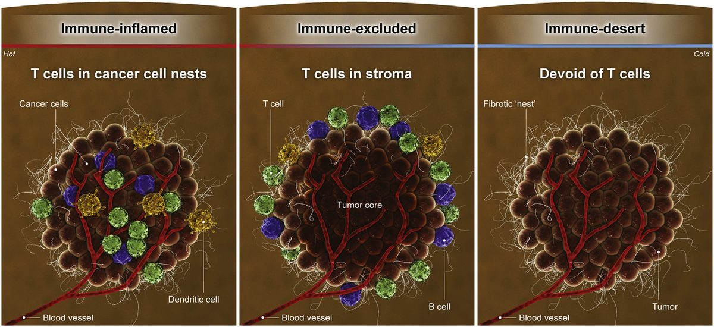
248 Clinical immunology 그림 4.1 악성종양의 면역 프로파일. 이 도해는 고형암의 세 가지 면역 표현형을 요약한 것이다. 염증성 종양은 종양 둥지를 포함하여 종양 조직 전반에 걸쳐 림프구 침윤을 보인다. 면역제외 종양에서는 종양침윤림프구(TIL)가 암세포 둥지 내에는 존재하지 않으며, 종양 기질에서만 관찰되고 때로는 3차 림프구조를 형성하기도 한다. 면역사막 종양은 종양 전체에 걸쳐 TIL이 전혀 존재하지 않는다. 각 면역 표현형의 기저에 깔린 기전을 훌륭하게 요약하였다. 면역사막 표현형은 면역원성 항원의 부재, 암세포의 항원제시 기전 하향조절 또는 변형, 종양미세환경(TME) 내 면역억제 세포 및 사이토카인의 존재, 혹은 항원제시세포(APC)의 항원제시 장애로 인해 나타날 수 있다. 면역제외 표현형은 종양 일부 부위의 높은 세포외 기질 밀도, T세포를 동원하는 능력을 상실하게 만드는 케모카인 변형, 그리고 결함이 있는 혈관망 등으로 인해 발생할 수 있다. 암세포의 유전적 및 후성유전학적 구성, 숙주 생식세포의 유전적 및 후성유전학적 상태, 장내 미생물무리(microbiota)와 같은 많은 인자들이 위와 같은 면역병리학적 기전의 조절에 기여한다.33 여러 연구에서 일관되게 확인된 바와 같이, 높은 체세포 종양변이부담(tumor mutational burden, TMB)은 다양한 암종에 걸쳐 생존율 향상과 관련이 있다. 이는 돌연변이 부담이 높은 종양에서 신생항원(neoantigen)이 더 많이 생성되는 것과 관련이 있는 것으로 밝혀졌다.34 요약하자면, 종양-숙주-환경 간의 상호작용이 암에 대한 면역계의 반응을 조절한다. 암 항원과 암 항원제시 암세포는 숙주 세포에서 유래한다. 후천 면역계는 자가항원(self-antigens)에 대해 면역관용(tolerance)을 유지하므로, 정상적으로는 암세포에 대항하는 후천 면역 반응이 유도되지 않을 것으로 생각할 수 있다. 그러나 암 환자에게는 종양 항원 특이 림프구가 실제로 존재하며, 이들은 시험관 내(in vitro) 및 생체 내(in vivo)에서 강력한 항암 면역 반응을 발휘할 수 있다.35 따라서 암세포는 중추 면역관용 및 말초 면역관용이 미처 형성되지 않은
Tumor immunology 249 항원을 제시하고 있어야 한다. 이 절에서는 항원제시 기전의 기능, 암세포의 면역원성 유발 기전, 암 항원의 종류에 대해 논의한다. 항원제시 기전(antigen presentation machinery) 주요조직적합성복합체(major histocompatibility complex, MHC) 분자는 T세포에 항원을 제시하는 역할을 담당하는 세포막 분자이다. T세포는 T세포수용체(TCR)와 MHC/펩타이드 복합체 간의 상호작용을 통해 표적 세포를 인식한다. 그림 4.2는 세포 내 항원 처리 및 제시 기전을 보여준다. 간략히 설명하면, MHC class I 분자는 세포내 단백질 조각을 CD8+ T세포에 제시하고, MHC class II 분자는 세포외 단백질 조각을 CD4+ T세포에 제시한다. MHC class I 분자는 거의 모든 유핵세포에서 발현되는 반면, MHC class II 분자는 전문 항원제시세포(professional APC), 즉 수지상세포(DC), 대식세포, B림프구에서 거의 독점적으로 발현된다. MHC class I 중쇄(heavy chain)는 세 가지 유전자인 인간백혈구항원(HLA)-A,
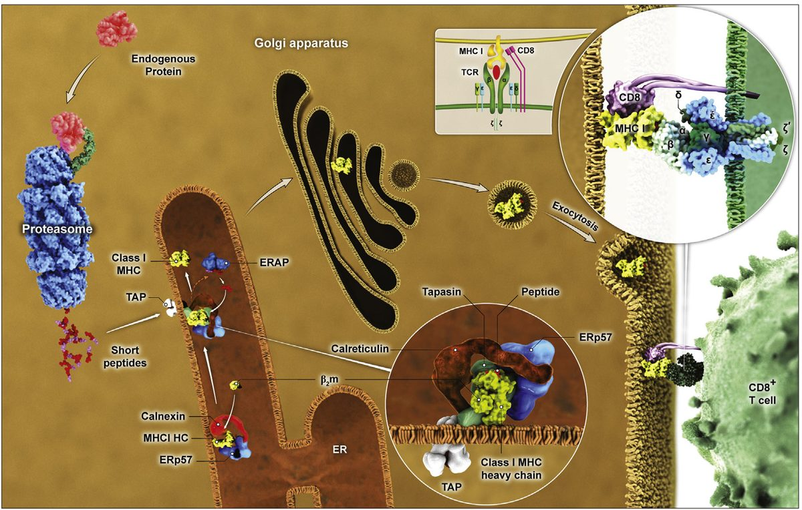
그림 4.2 암세포의 항원제시 기전. 세포질 또는 핵 단백질은 프로테아좀 복합체에 의해 분해되며, 생성된 펩타이드 조각은 항원처리연관수송체(TAP)를 통해 소포체(ER) 내부로 들어간다. 소포체 내에서는 MHC class I 중쇄, β2-마이크로글로불린, TAP, 타파신(Tapasin), 칼레티쿨린(Calreticulin), ERp57로 구성된 펩타이드 탑재 복합체(peptide-loading complex)가 작용하여 항원성 펩타이드 조각을 MHC class I 분자에 탑재한다. 이어 MHC class I/항원 복합체는 소포체를 빠져나와 세포막에 위치하게 된다. B2M, 베타2-마이크로글로불린; CD, 분화도항원군; ERAP, 소포체 아미노펩티다아제; MHCI HC, 주요조직적합성복합체 class I 중쇄; TAP, 항원처리연관수송체; TCR, T세포수용체.
250 Clinical immunology HLA-B, HLA-C에 의해 암호화된다. MHC class II 단량체는 HLA-DR, HLA-DQ, HLA-DP라는 세 가지 서로 다른 유전자에 의해 암호화된다.36 세포질과 핵의 단백질은 프로테아좀(proteasome) 복합체에 의해 분해되며, 생성된 펩타이드는 소포체(ER) 막의 막관통 단백질인 항원처리연관수송체(transporter associated with antigen processing, TAP)에 의해 소포체 내부로 수송된다. 소포체 내에서 펩타이드는 소포체 아미노펩티다아제 1/2(ERAP1/2)에 의해 N-말단 절단 과정을 추가로 거칠 수 있다.37 MHC class I 복합체는 중쇄, β2-마이크로글로불린(β2-microglobulin)이라 불리는 경쇄, 그리고 8–9개 아미노산 길이의 펩타이드 조각으로 구성된다. 이 복합체의 조립에는 TAP, 타파신(Tapasin), ERp57, 칼레티쿨린(Calreticulin)과 같은 다수의 단백질 활성이 필요하다.36 이후 펩타이드-MHC class I 복합체는 세포막으로 운반된다.37 주목할 점은, 암세포에서 MHC class I 항원제시가 프로테아좀 비의존적 또는 TAP 비의존적 방식으로도 일어날 수 있다는 것이다.37–40 CD8+ T세포의 프라이밍(priming)에는 정교한 항원제시 시스템이 관여한다. T세포 프라이밍이 이루어지려면 APC에 의한 항원제시와 더불어 T세포에 대한 공자극(co-stimulatory) 신호의 전달이 필수적이다. 암세포 항원과 같은 외인성 항원이 APC 내부로 들어가는 주된 경로는 사멸한 세포 잔해의 내포작용(endocytosis)이다. CD8+ T세포의 프라이밍은 MHC class I-TCR 상호작용에 의존한다. 그럼에도 불구하고 외인성 항원 제시의 전형적인 경로는 MHC class II 분자를 매개로 한다. 전형적 수지상세포(conventional DC)는 외인성 항원을 MHC class I 분자를 통해 제시할 수 있는데, 이 과정을 “항원 교차제시(antigen cross-presentation)”라고 한다.41 항원 교차제시에는 크게 엔도솜-세포질 경로(endosome-to-cytosol pathway)와 액포 경로(vacuolar pathway)의 두 가지 주요 경로가 존재한다. 엔도솜-세포질 경로에서는 단백질이 엔도솜에서 DC의 세포질로 이동한 후 프로테아좀에 의해 분해되며, 이후 통상적인 MHC class I 항원제시 경로를 따른다. 액포 경로에서는 외인성 단백질이 리소좀의 카텝신(Cathepsin) 효소에 의해 절단된 뒤, 엔도솜 세포소기관 환경 내부에서 바로 MHC class I 분자에 탑재된다. 항원 교차제시의 정확한 기전은 아직 완전히 밝혀지지 않았다.41,42 대부분의 외인성 항원은 내포작용에 의해 APC로 전달되지만, APC가 외인성 항원을 획득하는 다른 경로들도 존재한다. 단백질은 틈새이음(간극결합, gap junction)을 통해 암세포에서 DC로 직접 수송될 수 있다. 이렇게 전달된 단백질은 MHC class I 기전을 활용하여 세포 표면에 제시된다.43 암세포 항원성(cancer cell antigenicity) 정상 상태에서는 단백질을 암호화하는 유전자가 핵 내에서 전사된다. 생성된 메신저 RNA(mRNA)는 핵을 빠져나와 세포질로 들어간다. 리보솜은 mRNA를 해독하여 펩타이드 사슬을 합성한다. 생성된 단백질은 번역후 변형(post-translational modification)을 겪을 수 있다. 이후 단백질은 프로테아좀 복합체에 의해 분해될 수 있다. 세포가 MHC class I 기전을 갖추고 있다면, 프로테아좀 복합체에 의해 생성된 펩타이드 조각 중 일부(전부는 아님)가 MHC class I 분자에 탑재되어 세포 표면에 제시될 수 있다. 정상 상태에서 TCR에 의해 인식될 수 있는 MHC class I/펩타이드 복합체는 중추 또는 말초 면역관용을 거쳤기 때문에 T세포 반응을 유발하지 않는다.
Tumor immunology 251 암세포에서는 위의 일련의 과정이 변형되어 면역원성 항원이 생성될 수 있다. 대부분의 경우 몇 가지 기전으로 암 항원의 생성을 설명할 수 있다. 암세포는 정상적으로는 항원제시 기전이 없는 세포에서만 발현되는 단백질을 발현할 수 있다. 이러한 단백질들은 정상 상태에서는 제시되지 않으므로 후천 면역계가 이에 대한 면역관용을 형성하지 않는다. 암-생식세포 항원(cancer germline antigens)이 대표적인 예이다. 이러한 단백질들은 정상적으로는 항원제시 기전이 결여된 남성 생식세포와 영양막(trophoblast) 세포에만 존재한다. 대부분의 다른 정상 세포에서는 프로모터의 과메틸화(hypermethylation)로 인해 이들 유전자의 발현이 억제되어 있다. 암세포에서는 전반적인 저메틸화(hypomethylation)의 결과로 암-생식세포 항원 유전자의 탈메틸화가 일어나 발현이 유도된다.35,44–47 바이러스 유전자 발현, 유전자 돌연변이, 또는 변형된 전사후 혹은 번역후 변형으로 인해 새로운 단백질이 생성될 수 있으며, 이 단백질이 프로테아좀 복합체에 의해 분해되면 정상 세포에는 존재하지 않으면서 MHC class I 분자에 의해 제시될 수 있는 펩타이드 조각들이 생성된다. 당연히 이러한 펩타이드는 MHC class I/펩타이드 복합체가 TCR과 결합할 수 있을 때 면역원성을 띤다. 이렇게 제시되는 단백질은 정상적인 상황에서는 결코 제시되지 않거나, 전혀 다른 항원 조각 형태로 제시될 수 있다.35,48 암세포의 프로테아좀 구성은 정상 세포와 다를 수 있다. 프로테아좀 구성의 차이는 생성되는 펩타이드와 결과적으로 MHC class I에 의해 제시되는 펩타이드에 영향을 미칠 수 있다.35,49–51 암세포는 MHC class I 유전자에 돌연변이를 보유하고 있을 수 있다. 그 결과 생성된 MHC 단백질은 숙주의 변이되지 않은 정상 MHC 분자로는 제시되지 않는 항원을 제시할 수 있다. 따라서 이렇게 제시된 펩타이드 조각은 면역원성을 나타낼 수 있다.48,52 암 항원의 분류 현재 암 항원에 대한 통일된 분류 체계는 확립되어 있지 않으나, 문헌상에서는 몇 가지 암 항원 계열이 임의로 기술되어 왔다. 이러한 항원 군의 분류는 주로 암 항원의 발생 기전과 기원에 근거한다. 신생항원(neoantigen): 신생항원은 숙주 유전체(genome)에서 기원하여 유전자 돌연변이나 변형된 유전자 발현을 통해 새롭게 생성된 항원성 펩타이드이다.35,53,54 신생항원은 단일염기치환(single nucleotide substitution), 유전자삽입/결손에 의한 프레임이동 돌연변이(frameshift mutation), 유전자 융합, 레트로트랜스포존(retrotransposon)의 발현, mRNA 선택적 스플라이싱(alternative splicing), 선택적 번역, 번역후 변형 등으로부터 유래할 수 있다.48 신생항원은 드라이버 돌연변이(운전자 돌연변이, driver mutation) 또는 패신저 돌연변이(승객 돌연변이, passenger mutation)의 결과로 생길 수 있다. 드라이버 돌연변이는 원종양유전자(proto-oncogene) 및 종양억제유전자 돌연변이와 같이 발암 형질전환에 결정적인 변이이다. 드라이버 돌연변이에서 유래한 암 항원의 대표적인 예로는 만성골수성백혈병(CML)의 종양 발생 과정 중 bcr-abl 전위(translocation)에 의해 형성되는 BCR-ABL 융합 단백질의 항원성 펩타이드가 있다. 패신저 돌연변이는 암의 유전체 불안정성으로 인해 무작위적으로 발생하는 돌연변이이다.35,55,56 신생항원은 매우 높은 종양 특이적 항암 면역 반응을 유도할 수 있다.
252 Clinical immunology 표 4.1 바이러스 암호화 암 항원. | 바이러스 | 바이러스 과/유전체 | 연관 암종 | 항원 | | — | — | — | — | | HPV | Papillomaviridae/DNA | 자궁경부 편평세포암종, 구인두 편평세포암종, 외음부 편평세포암종, 항문 및 직장 편평세포암종, 음경 편평세포암종, 질 편평세포암종 | E6, E7 | | HBV | Hepadnaviridae/DNA | 간세포암종 | HBx | | HCV | Flaviviridae/RNA | 간세포암종, 비호지킨림프종 | 코어 단백질 | | EBV | Herpesviridae/DNA | 비인두암종, 호지킨병, 비호지킨림프종, 위암종 | EBNA1, EBNA3, LMP1, LMP3, gp350 | | HHV-8 | Herpesviridae/DNA | 카포시육종, 원발성 삼출액 림프종 | K12, ORF-gB, ORF-6, ORF-61, ORF-65 | | HTLV-1/2 | Retroviridae/RNA | 성인 T세포 백혈병/림프종 | Tax, HBz |
HPV, 사람유두종바이러스(Human Papilloma Virus); DNA, 디옥시리보핵산(Deoxyribonucleic Acid); SCC, 편평세포암종(Squamous Cell Carcinoma); HBV, B형간염바이러스(Hepatitis B Virus); HCV, C형간염바이러스(Hepatitis C Virus); RNA, 리보핵산(Ribonucleic Acid); EBV, 엡스타인-바 바이러스(Epstein Bar Virus); NHL, 비호지킨림프종(Non-Hodgkin Lymphoma); EBNA, 엡스타인-바 바이러스 핵항원(Epstein Bar Virus Nuclear Antigen); LMP, 잠복막단백질(Latent Membrane Protein); HHV, 사람헤르페스바이러스(Human Herpes Virus); ORF, 열린읽기틀(Open Reading Frame); HTLV, 사람 T세포 림프친화바이러스(Human T Cell Lymphotropic Virus).
바이러스 암호화 암 항원: 특정 바이러스 감염은 인간에서 발암을 촉발할 수 있다(표 4.1). 이들 바이러스는 숙주 세포의 증식을 조절하거나, 유전체 불안정성을 증대시키거나, 만성 염증을 파급시키거나, 숙주 면역계를 억제함으로써 암을 유발한다.57 사람유두종바이러스(HPV), B형간염바이러스(HBV), C형간염바이러스(HCV), 엡스타인-바 바이러스(EBV), 사람헤르페스바이러스-8(HHV-8), 사람 T세포 림프친화바이러스-1/2(HTLV-1/2)는 매년 발생하는 암 사례 중 약 140만 건의 원인이 된다.58 숙주 세포 내의 바이러스 암호화 단백질은 자가항원 제시에 사용되는 숙주 세포 기전을 통해 MHC class I 분자에 의해 제시될 수 있다. 바이러스에 감염된 형질전환 세포는 바이러스 암호화 항원을 제시하며, 이는 숙주의 후천 면역계에 의해 인식될 수 있다. 이러한 항원은 자가항원이 아니기 때문에 이에 대항하는 면역 반응은 매우 높은 특이성을 보인다.57,59,60 암-생식세포 항원: 현재까지 다수의 암-생식세포 항원이 발견되었다. 가장 많이 연구된 암-생식세포 항원으로는 MAGE 항원, GAGE 항원, SSX, BAGE, Cyclin A, KMHN1, SPA17 등이 있다.35,61–63 암-생식세포 항원에 대한 면역 반응은 매우 특이적이다.35 분화 항원(differentiation antigens): 분화 항원은 종양이 유래한 정상 조직에서도 해당 항원이 발현되기 때문에 이렇게 명명되었다. 대표적인 예로는 티로시나아제(Tyrosinase)와 Melan-A 등이 있다.
Tumor immunology 253
흑색종에서의 발현, 전립선암에서의 전립선특이항원(prostate-specific antigen, PSA), 대장암·췌장암·난소암·유방암에서의 암배아항원(carcinoembryonic antigen, CEA), 그리고 간세포암종에서의 알파태아단백(alpha-fetoprotein) 등이 포함된다.35,37 이러한 항원들에 대한 면역 반응은 종양 특이성이 낮다.35 과발현 항원(overexpressed antigens): 암세포에 대한 일부 면역 반응은 해당 유전자가 암세포에서 비정상적으로 과발현되는 단백질을 표적으로 한다. 대표적인 예로 급성골수성백혈병(acute myelogenous leukemia, AML)에서의 WT1을 들 수 있다.35,64,65
암에 대한 면역 (Immunity to cancer)
면역계는 형질전환된 세포(transformed cells)가 생존하고 진행하는 데 있어 가장 중대한 장벽이다. 면역계의 후천 면역(적응 면역) 및 선천 면역(자연 면역) 분지 모두 암세포에 대항하여 효과적인 면역 반응을 일으킬 수 있다. 역사적으로 T세포는 항암 면역의 주된 효과세포로 인식되어 왔다. 그러나 B세포와 항체 생산 역시 암 면역에 필수적인 역할을 한다. 자연살해세포(NK세포), 대식세포, 호중구, 선천 림프구세포(innate lymphoid cells, ILC)를 포함하는 선천 면역 구성요소들도 암에 맞서는 면역계의 방어 작용에 적극적으로 참여한다. 본 단원에서는 암 면역에서 면역세포들이 수행하는 역할을 살펴본다.
T세포 (T cells)
T세포의 기본 면역생물학
T세포는 림프계 전구세포(lymphoid progenitor)에서 유래하여 흉선(thymus)에서 성숙 및 선택 과정을 거치는 세포이다. T세포 집단 고유의 특징은 T세포수용체(TCR)의 발현이다. TCR은 α·β 사슬 또는 γ·δ 사슬의 이종이량체(heterodimer)로 구성된다. 말초혈액 내 T세포의 대부분은 TCRαβ-T세포가 차지한다. 각 TCR 사슬은 불변부위(constant region)와 가변부위(variable region)를 포함한다. TCR 유전자 재조합(gene recombination)을 통해 방대한 레퍼토리의 TCR 가변부위가 형성되며, 이를 통해 서로 다른 다양한 항원에 결합할 수 있는 능력을 획득한다. 후천 면역계의 일원으로서 TCRαβ-T세포는 항원 특이적 방식으로 작동한다. 이러한 항원 특이성의 핵심은 주요조직적합성복합체(MHC) 제한적 항원 인식과 고유한 TCR을 발현하는 방대한 T세포 클론의 존재에 있다.66,67
T세포 표면에서 TCRαβ는 3개의 CD3 분자와 복합체를 형성한다.68,69 상보적인 항원과 결합하면 TCR-CD3 복합체에 의해 T세포 내부로 신호가 전달된다.70 TCRαβ-T세포는 독특한 표현형, 기능, 사이토카인 분비 양상, 암 진행과의 연관성에 따라 여러 아형으로 분류된다(표 4.2). 항원 인식 및 TCR-CD3 신호전달 후 T세포의 활성화 운명은 공자극(co-stimulatory) 신호 및 공억제(co-inhibitory) 신호에 의해 결정된다. T세포는 다양한 공자극 또는 공억제 수용체를 발현하며, 이들이 상응하는 리간드와 상호작용함으로써 T세포 활성화를 조절한다. T세포 표면에 존재하는 특정 수용체 조합과 주변 환경의 리간드 구성이 TCR-CD3 신호전달의 최종 경로를 결정짓는다.71
254 Clinical immunology
표 4.2 T세포 아형 (T cell subpopulations). | 아형 (Subpopulation) | 케모카인 수용체 | 전사인자 | 사이토카인 생성 | 기능 | 암에서의 역할 | | — | — | — | — | — | — | | CTL | CXCR3, CCR5 | T-bet | IFN-γ | 퍼포린/그랜자임 매개 세포 살해
사멸수용체 매개 세포 살해 | 항종양 (Anti-tumor) | | Th1 | CXCR3, CCR5 | T-bet, STAT1, STAT4 | IFN-γ, TNF-α | CTL↑
Th1↑
B세포: IgG 생성
NK세포↑
M1 대식세포↑ | 항종양 (Anti-tumor) | | Th2 | CCR3, CCR4, CCR8 | GATA3, STAT6 | IL-4, IL-5, IL-13 | Th2↑
B세포: IgE 생성
NK세포↓
M2 대식세포↑
호산구↑ | 전종양 (Pro-tumor) | | Th9 | CXCR3, CCR3, CCR6 | IRF4, PU.1, STAT6 | IL-3, IL-9, IL-21 | 다양함 | 항종양/전종양 양방향 모두 작용 | | Th17 | CCR6 | RORγt, STAT3 | IL-8, IL-17, IL-21, IL-22 | Th17↑
호중구↑ | 항종양/전종양 양방향 모두 작용 | | Th22 | CCR10 | AhR, FOXO4 | IL-22 | 상피세포: 디펜신(Defensins)↑ | 항종양/전종양 양방향 모두 작용 | | Treg | CXCR3, CCR4, CCR5, CCR8 | FOXP3 | IL-10, TGF-β | CTL↓
Th17↑
B세포: IgA 생성
NK세포↓
M2 대식세포↑ | 전종양 (Pro-tumor) |
CTL, 세포독성 T림프구(Cytotoxic T Lymphocytes); CXCR, CXC 케모카인 수용체(CXC Chemokine Receptor); CCR, CC 케모카인 수용체(CC Chemokine Receptor); T-bet, T-박스 전사인자(T-Box Transcription Factor); IFN, 인터페론(Interferon); Th, 도움 T세포(T helper); STAT, 신호전달자 및 전사활성화인자(Signal Transducer and Activator of Transcription); TNF, 종양괴사인자(Tumor-Necrosis Factor); Ig, 면역글로불린(Immunoglobulin); NK, 자연살해(Natural Killer); IL, 인터루킨(Interleukin); IRF, 인터페론 조절인자(Interferon-Regulating Factor); PU, 퓨린 풍부(Purine Rich); RORγt, 레티노산 수용체 관련 고아 수용체 감마 t(Retinoic Acid Receptor-Related Orphan Receptor Gamma t); AhR, 아릴탄화수소 수용체(Aryl Hydrocarbon Receptor); FOXO, 포크헤드 박스 O(Forkhead Box O); Treg, 조절 T세포(Regulatory T cell); FOXP, 포크헤드 박스 P(Forkhead Box P); TGF, 형질전환성장인자(Tumor Growth Factor / Transforming Growth Factor).
T세포 생물학에 관여하는 수많은 공자극 및 공억제 수용체가 밝혀져 있다. CD28은 T세포 표면에 발현되는 대표적인 공자극 분자이다. 이는 항원제시세포(APC) 상의 B7-1(CD80) 및 B7-2(CD86)와 결합하여 T세포를 활성화 상태로 유도한다.71,72 임상적으로 중요한 공억제 분자로는 세포독성
Tumor immunology 255
T림프구 연관 단백질-4(cytotoxic T lymphocyte-associated protein 4, CTLA-4), 프로그램 세포사멸 단백질-1(programmed cell death protein 1, PD-1), 림프구 활성화 유전자-3(lymphocyte activation gene 3, LAG-3), T세포 면역글로불린 및 뮤신 도메인-3(T cell immunoglobulin and mucin domain 3, TIM-3), 그리고 ITIM 도메인을 가진 T세포 면역수용체(T cell immunoglobulin and ITIM domain, TIGIT) 등이 있다.33,71
CTLA-4는 구조적으로 CD28과 유사하다. CD28과 마찬가지로 CTLA-4는 APC의 B7-1 및 B7-2에 결합한다. 이러한 상호작용은 활성단백질 1(activator protein 1, AP-1), 핵인자 카파비(nuclear factor kappa B, NF-κB), 활성화 T세포 핵인자(nuclear factor of activated T cells, NFAT) 등 여러 T세포 내 신호전달 경로를 교란함으로써 T세포의 활성화와 증식을 억제한다. CTLA-4의 B7-1 및 B7-2에 대한 친화도는 CD28보다 훨씬 높으며, 결과적으로 CTLA-4는 리간드 결합 부위를 두고 CD28과 경쟁한다. 흥미롭게도 수지상세포(DC)의 B7-1 및 B7-2에 CTLA-4가 결합하면 리간드의 세포내 섭취(내재화, internalization)가 일어난다. 나아가 수지상세포는 B7-1 및 B7-2가 CTLA-4와 상호작용하는 과정에서 면역억제성 기능을 획득하기도 한다.71,73,74
활성화된 T세포는 PD-1을 발현할 수 있다. PD-1은 종양미세환경(TME) 내 B세포, 조절 T세포(Treg), 골수유래 억제세포(myeloid-derived suppressor cells, MDSC), 종양관련 대식세포(tumor-associated macrophages, TAM), 암연관 섬유아세포(cancer-associated fibroblasts, CAF), 암세포 등에 의해 발현되는 프로그램 세포사멸 리간드-1(PD-L1) 및 PD-L2와 상호작용한다. 이러한 리간드 결합은 주로 TCR-CD3 복합체의 신호전달을 직접 차단함으로써 T세포의 기능을 억제한다.33,71,73-76
종양 환경에서 T세포의 활성화, 유입 및 작동 기능
나이브 T세포(naïve T cells)가 종양 항원과 처음 조우하는 장소는 일반적으로 종양 배액 림프절(tumor-draining lymph nodes)이나 종양 내 3차 림프구조(tertiary lymphoid structures)이다. CD103+ 수지상세포는 종양 면역 환경에서 핵심적인 항원제시세포(APC)로 인정받고 있다. 배액 림프절의 수지상세포에 의해 감작(프라이밍)된 나이브 T세포는 C-C 케모카인 수용체 5(CCR5)와 C-X-C 케모카인 수용체 3(CXCR3)의 발현을 상향조절한다. 종양미세환경 내 세포들은 C-C 케모카인 리간드인 CCL2, CCL3, CCL4, CCL5 및 C-X-C 케모카인 리간드인 CXCL9, CXCL10을 분비하여 CCR5 및 CXCR3를 발현하는 T세포를 끌어들인다. 감작된 T세포는 림프절을 빠져나와 혈액순환을 거쳐 종양 조직으로 침윤한다.27,77,78 종양침윤 T세포는 TME 내에서 증식하며, 이 과정은 CD103+ 수지상세포에 의해 조율된다.32
암 면역에서 세포독성 T림프구(CTL)의 역할은 절대적이다. TME로 침윤한 후, CTL은 MHC class I/TCR 상호작용을 통해 암세포를 인식한다. 이 상호작용은 CTL의 효과기 기능(작동 기능)을 활성화한다. CTL은 과립방출(과립 외도출, granule exocytosis), 세포사멸 리간드/수용체 시스템 활용, 그리고 사이토카인 및 케모카인 분비를 통해 항암 면역 반응을 유도한다.79,80
CTL 과립의 두 가지 주요 성분은 퍼포린(Perforin)과 그랜자임(Granzymes)으로, CTL 매개 세포용해에 필수적이다. 시냅스 틈새(synaptic cleft)로 CTL로부터 방출된 퍼포린은 표적 암세포막에서 칼슘 의존성 올리고머화(oligomerization)를 거쳐 막관통 기공(pore)을 형성한다(그림 4.3). 그랜자임은 세린 프로테아제 계열의 효소들로, 퍼포린 의존적인 방식으로 표적 암세포 내부로 전달된다. 이들은 세포 내 여러 신호전달 경로를 조율하여 궁극적으로 조절된 세포자멸사를 유발한다.79-81
과립 분비는 4단계 과정을 거쳐 일어난다. CTL이 활성화되면 먼저 CTL과 표적 암세포 사이에 면역학적 시냅스(immunological synapse)가 형성된다. 시냅스가 형성된 후
256 Clinical immunology
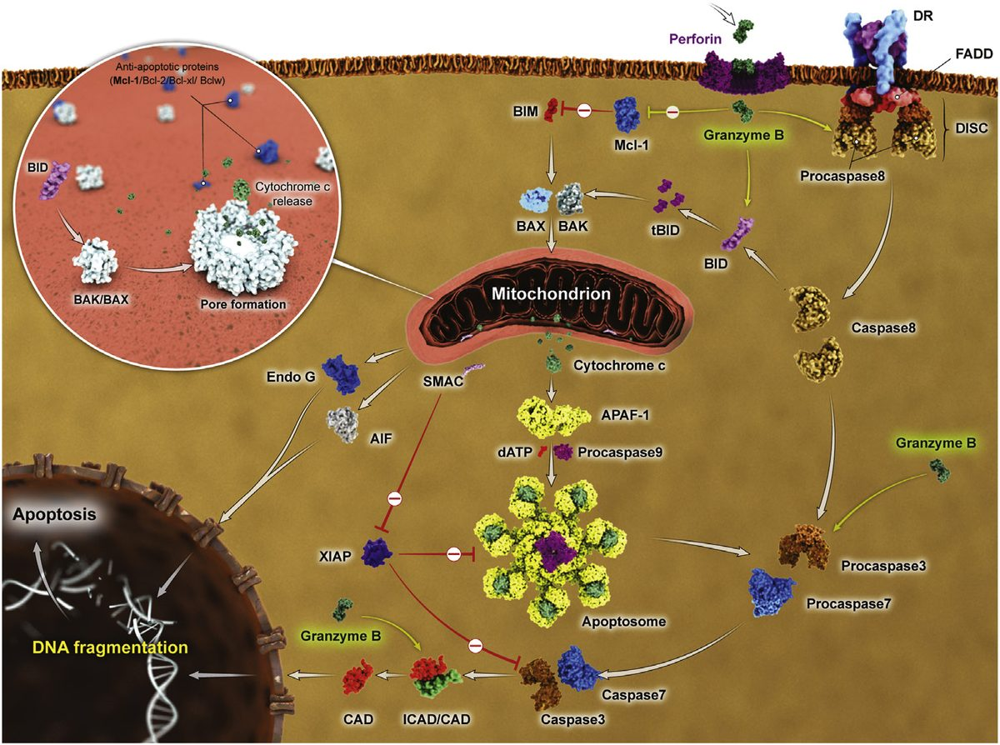
그림 4.3 세포독성 림프구에 의한 암세포 살해 기전. 세포독성 림프구, 즉 세포독성 T림프구(CTL)와 자연살해세포(NK세포)는 퍼포린/그랜자임 경로 또는 사멸리간드/사멸수용체 경로를 이용하여 암세포를 파괴한다. 퍼포린은 암세포 표면에서 중합되어 막관통 통로를 형성하며, 이는 삼투성 세포 용해를 초래할 수 있다. 그랜자임은 퍼포린에 의해 형성된 막 기공을 통과하거나 퍼포린/그랜자임 복합체의 세포내이입을 통해 암세포 내부로 들어간다. 그랜자임 B, A, M, K 및 기타 그랜자임들이 세포사를 유도할 수 있는 능력이 있음이 밝혀져 있으나, 그랜자임 B 매개 세포자멸사 기전이 가장 잘 규명되어 있다. 그랜자임 B는 미토콘드리아 의존성 및 미토콘드리아 비의존성 경로를 통해 세포자멸사를 유도할 수 있다. 그랜자임 B는 BH3 상호작용 도메인 사멸 작용제(Bid)를 절단하여 절단된 형태의 Bid(tBid)를 생성한다. tBid는 세포자멸 촉진 단백질인 BCL-2 길항제/살해자(Bak)와 BCL-2 연관 X(Bax)를 활성화한다. 활성화된 Bak과 Bax는 미토콘드리아 막을 붕괴시켜 시토크롬 c(Cytochrome c)를 비롯한 세포자멸 유도 인자들이 세포질로 방출되도록 한다. 또한, 그랜자임 B는 골수성 백혈병 세포 분화 단백질-1(MLC-1)을 억제할 수 있다. 정상 상태에서 MLC-1은 BCL-2 상호작용 세포사멸 매개체(Bim)를 안정화하며, Bim 자체는 Bak과 Bax를 활성화한다. 따라서 MLC-1 억제는 Bim에 의한 Bak 및 Bax 활성화로 이어진다. 방출된 시토크롬 c는 뉴클레오티드, 세포자멸 단백분해효소 활성화 인자-1(APAF-1), 프로카스파제-9와 함께 아폽토솜(apoptosome) 복합체를 형성하고, 이는 프로카스파제-3과 프로카스파제-7을 활성화한다. 그랜자임 B는 프로카스파제-3 또는 프로카스파제-7을 직접 절단하거나, 먼저 프로카스파제-8을 활성화하여 연쇄적으로 프로카스파제-3/7을 활성화할 수도 있다. 사멸수용체인 Fas 및 종양괴사인자 관련 세포자멸사 유도 리간드 수용체(TRAILR)는 각각 상응하는 리간드인 FasL 및 TRAIL에 결합한다. 리간드 결합과 입체구조 변화에 따라 사멸수용체는 사멸 도메인을 가진 Fas 연관 단백질(FADD) 및 프로카스파제-8과 상호작용하여 사멸유도 신호복합체(DISC)를 형성한다. 활성화된 카스파제-8은 프로카스파제-3/7의 단백질 분해성 활성화를 매개한다. 활성화된 카스파제-3/7은 카스파제 활성화 DNase 억제제(ICAD)를 분해한다. 억제에서 풀려난 CAD는 핵으로 이동하여 DNA를 단편화하고 세포자멸사가 뒤따르게 된다. 독립적인 경로로, 사멸수용체는 네크롭토시스(necroptosis, 괴사성 자멸사)라 불리는 또 다른 유형의 조절된 세포사를 유발할 수도 있으나, 본 그림에는 나타내지 않았다. APAF, 세포자멸 단백분해효소 활성화 인자; Bak, BCL-2 길항제/살해자; Bax, BCL-2 연관 X; Bid, BH3 상호작용 도메인 사멸 작용제; Bim, BCL-2 상호작용 세포사멸 매개체; CAD, 카스파제 활성화 DNase; dATP, 데옥시아데노신 삼인산; DR, 사멸수용체; FADD, 사멸 도메인을 가진 Fas 연관 단백질; ICAD, 카스파제 활성화 DNase 억제제; MLC, 골수성 백혈병 세포 분화 단백질.
Tumor immunology 257
세포골격 재배열이 일어나 미세소관 형성중심(microtubule-organizing center, MTOC)이 면역학적 시냅스 쪽으로 극성화(polarization)된다. MTOC의 이동과 함께 리소좀 관련 용해과립(lytic granules)들이 면역학적 시냅스 부위로 이동한다. 용해과립은 시냅스 부위의 세포막에 부착되는데, 이 과정을 도킹(docking)이라고 한다. 마지막으로 분비과립이 형질막과 융합하여 내용물을 세포 밖으로 방출하게 된다.79,82
CTL은 종양괴사인자(TNF) 수퍼패밀리 구성원인 TNF-α, Fas 리간드(FasL), TNF 관련 세포자멸사 유도 리간드(TRAIL)를 세포막에 발현하거나 이러한 분자들을 함유한 엑소좀(exosome)을 분비할 수 있다. FasL과 TRAIL은 표적 암세포의 동족 수용체와 결합하여 세포자멸사(아폽토시스) 또는 네크롭토시스를 유도한다.79,82,83
도움 T세포(Th세포)는 TME 내 면역 반응의 총지휘자 역할을 한다. 이들은 수지상세포, CTL, B세포, 대식세포를 포함한 TME 내 다양한 면역세포에 영향을 미친다. 수지상세포가 분비하는 인터루킨-12(IL-12)에 반응하여 Th세포는 Th1 표현형을 획득한다. 분화된 Th1세포는 역으로 CD40 리간드(CD40L)-CD40 상호작용을 통해 수지상세포를 활성화한다. 또한 Th1세포는 사이토카인, 특히 인터페론 감마(IFN-γ), IL-2, IL-21의 분비를 통해 CTL의 항암 기능을 증강한다. B세포의 활성화, 형질세포로의 분화, 항원제시능 획득에는 주로 Th세포를 비롯한 주변 미세환경의 CD40L 상향조절을 통한 B세포 감작이 핵심적이다.84,85
IFN-γ는 항암 면역에서 결정적인 역할을 하는 사이토카인이다. 암 미세환경에서 IFN-γ를 생산하는 주요 공급원은 CD8+ T세포, Th1세포, NK세포이다. IFN-γ 수용체에 결합한 후, 이들은 주로 야누스 키나아제(Janus kinase, JAK) 1/2-신호전달자 및 전사활성화인자(STAT) 1/3 경로를 통해 표적세포의 기능을 변화시킨다. IFN-γ는 β-카테닌(β-Catenin) 및 CDK4/6 경로를 억제하고 p21 및 p27 종양억제인자를 활성화함으로써 암세포의 증식을 저해한다. 또한 IFN-γ는 카스파제 절단과 Ras 경로 활성화를 매개로 조절된 세포사를 유도한다.86-92
IFN-γ는 암세포의 MHC class I 발현을 상향조절하여, 항원제시 증가를 통해 암세포에 대한 면역 반응을 증강시킨다.93 아울러 IFN-γ는 암세포에서 MHC class II 전사활성화인자(class II MHC transactivator, CIITA)의 발현을 유도한다. CIITA는 MHC class II의 핵심 조절인자이며, IFN-γ 매개 CIITA 유도는 암세포의 MHC class II 발현을 상향조절한다. 암세포에 의한 MHC class II 발현은 TME 내 Th세포에 활성화 신호를 제공한다.88,94-97 나아가 IFN-γ는 TME 내 면역세포들을 결집하여 항종양 면역을 확산시킨다. 구체적으로 IFN-γ는 CD8+ T세포, Th1세포, NK세포, M1 유사 대식세포를 활성화한다.86
B세포와 면역글로불린 (B cell and immunoglobulin)
B세포는 암성 미세환경으로 침윤한다. 이들은 항체 비의존적 또는 항체 의존적 방식으로 항암 면역 반응을 발휘할 수 있다. 활성화된 B세포는 종양 내 항원제시세포(APC)로 기능하며 항원 특이적 CD4+ 및 CD8+ T세포를 감작시킨다. 암 항원 특이적 B세포는 증식하여 암 항원에 대한 고친화도 항체를 생산하는 형질세포로 분화한다. 이렇게 생산된 항체는 항종양 면역에 기여할 수 있다. 항체 의존적 면역 반응은 NK세포에 의한 항체의존 세포매개 세포독성(ADCC), 대식세포와 호중구에 의한 식작용(포식작용) 촉진,
258 Clinical immunology
그리고 고전적 보체 경로 활성화를 통해 매개될 수 있다. 나아가 면역글로불린이 암 항원에 결합하면 APC에 의한 항원 인식이 증강될 수 있다. 모든 면역글로불린 아형 중에서도 특히 면역글로불린 G1(IgG1)이 항종양 면역에 크게 기여하는 것으로 보인다.98-101
NK세포 (NK cells)
자연살해세포(NK세포)는 선천성 효과세포이다. 이들은 공통 림프계 전구세포에서 유래하며 바이러스 감염 세포나 형질전환된 세포와 같이 스트레스를 받는 세포를 공격한다.102,103 NK세포와 CTL은 면역표현형, 항원 특이성, 활성화 방식 면에서는 다르지만, 그 효과기 기능(살해 작용)은 거의 동일하다.104 NK세포는 TCR-CD3 복합체를 발현하지 않으며, 이들의 표적세포 인식은 세포성 스트레스 마커 발현의 변화를 감지하는 것에 의존한다. NK세포의 기능에 필수적이며 세포 스트레스 시 발현이 증가하는 리간드와 결합하는 NK세포 수용체를 자극수용체(stimulatory receptors)라고 부른다. 반대로 일부 NK세포 수용체는 억제성 세포 내 신호를 전달하며, 그 리간드는 스트레스를 받은 세포에서 발현이 감소한다. 이러한 수용체를 억제수용체(inhibitory receptors)라고 부른다. TME 내에서 NK세포의 자극수용체 및 억제수용체와 그 리간드 간의 상호작용, 그리고 주변 환경의 염증성 및 면역억제성 사이토카인의 영향이 NK세포의 기능적 상태를 총체적으로 조절한다.105
많은 암세포는 MHC class I 발현을 하향조절한다.106 NK세포는 세포 표면 막에 살해세포 면역글로불린유사 수용체(killer cell immunoglobulin-like receptor)인 KIR2DL1, KIR2DL2, KIR2DL3을 지니고 있다. 이들은 세포질 꼬리 부위에 면역수용체 티로신 기반 억제 모티프(immunoreceptor tyrosine-based inhibition motif, ITIM)가 보존되어 있는 면역글로불린유사 수용체 분자이다.107 MHC class I 분자의 일종인 HLA-C와 결합할 때, 이 수용체들은 억제 신호를 전달하여 궁극적으로 NK세포의 세포독성 기능을 억제한다.105,107 또한 NKG2A/CD94 복합체는 암세포의 HLA-E 분자를 인식하여 NK세포의 활성화를 억제한다.105,108 암세포가 MHC class I 발현을 감소시키면, MHC class I이 NK세포 기능에 미치던 억제 효과가 제거되어 결과적으로 NK세포에 의한 암세포 파괴가 유도된다.105
NK세포의 억제수용체는 비-MHC 리간드를 인식하기도 한다. TIGIT은 종양세포의 CD155 및 CD112에 결합하여 NK세포의 기능을 억제한다.105,109 가장 널리 알려진 NK세포 자극수용체는 자연살해그룹 2D(natural killer group 2D, NKG2D)로, 이는 MHC class I 폴리펩티드 연관 서열 A(MICA), MICB 및 기타 여러 리간드와 결합한다.105,110 MICA와 MICB는 정상 세포에서도 구성적으로 발현되지만, 형질막으로의 국소화는 주로 바이러스 감염, DNA 손상, 악성 형질전환을 겪는 세포에 국한된다.111 B7 패밀리 단백질인 B7-H6과 B7-H7은 상응하는 NK세포 자극수용체인 NKp30 및 CD28H와 각각 상호작용한다.105,112-114 T세포 공자극 단백질로 잘 알려진 NK세포 상의 CD2와 암세포의 CD58/48 간의 상호작용은 나노튜브(nanotube) 형성과 NK세포의 세포독성 기능에 필수적이다.115 NKp46은 아직 명확한 리간드가 밝혀지지 않은 자극
Tumor immunology 259
수용체이지만, NK세포와 표적세포 사이의 면역학적 시냅스로 NK세포 과립이 극성화되는 과정을 촉발하는 데 중요한 역할을 한다.116 종양세포의 혈소판유래성장인자 DD(platelet-derived growth factor DD, PDGF-DD)와 NK세포 수용체 NKp44의 결합은 NK세포의 기능을 강화한다.117,118
TME 내의 염증성 및 면역억제성 사이토카인 환경은 NK세포 활성화의 기준점(set point)을 조절할 수 있다. IL-2, IL-12, IL-15, IL-18, IL-21은 NK세포 활성화 역치를 낮춘다.105 제I형 인터페론(Type I Interferon) 사이토카인은 NK세포 기능의 강력한 자극제이다. 발암성 형질전환 과정에서 일어나는 DNA 손상은 암세포 세포질 내로 이중가닥 DNA 단편의 방출을 초래한다. 세포질 DNA가 환형 구아노신 일인산-아데노신 일인산 합성효소(cyclic GMP-AMP synthase, cGAS)와 상호작용하면 2′,3′-cGAMP가 생성되고, 이는 STING 매개 신호전달을 통해 제I형 인터페론 생성을 유도한다.119,120 반면 형질전환성장인자-베타(transforming growth factor-beta, TGF-β)와 아데노신은 NK세포에 직접 작용하여 항암 기능을 억제한다.105
NK세포가 수행하는 항암 면역 기능은 크게 네 가지 범주로 나뉜다. 첫째, NK세포는 세포용해성 과립을 방출하여 암세포를 직접 살해하는데, 이 과정은 주로 퍼포린과 그랜자임에 의해 매개된다. 과립 외도출 과정 및 퍼포린과 그랜자임의 작용 기전은 T세포에서 설명한 것과 거의 흡사하다.81,82,121 둘째, NK세포는 FasL과 TRAIL을 통해 조절된 세포자멸사를 유도할 수 있다.121 셋째, NK세포는 TME 내에서 염증성 사이토카인과 케모카인을 분비하여 종양 면역을 촉진한다. 이러한 사이토카인과 케모카인에는 IFN-γ, TNF-α, CCL3, CCL4, CCL5, XCL1, 과립구-대식세포 집락자극인자(granulocyte-macrophage colony-stimulating factor, GM-CSF) 등이 포함된다.82,121,122 이들 인자는 특히 T세포의 유입과 항종양 기능을 증강시키는 데 관여한다.122 넷째, NK세포 표면의 CD16이 암세포를 표적하는 항체의 Fc 부위에 결합하면 항체의존 세포매개 세포독성(ADCC)이 유도된다.121,123
대식세포 (Macrophages)
대식세포는 종양미세환경 세포 중 상당한 비중을 차지하며 매우 다양한 표현형과 기능을 나타낸다. 표현형과 기능적 상태에 따라 대식세포는 전통적으로 M1형(고전적 활성화 대식세포 또는 전염증성 대식세포)과 M2형(대안적 활성화 대식세포 또는 항염증성 대식세포)으로 분류되었다. 종양면역학적 관점에서 M1 대식세포는 항종양 면역 반응을 발휘하고 종양 성장을 억제하는 것으로 여겨진 반면, M2 대식세포는 면역억제 환경을 조성하여 암 진행을 촉진하는 것으로 간주되었다. 그러나 후속 연구들을 통해 종양 대식세포의 뛰어난 가소성(plasticity)과 광범위한 기능적 잠재력이 밝혀지면서, M1/M2 대식세포 분극화 개념만으로는 대식세포의 다채로운 기능을 온전히 설명하기에 지나치게 단순하다는 점이 확인되었다.124 종양 대식세포는 암 발생 전 원래 조직에 상주해 있던 대식세포이거나, 종양 형성 후 순환 단핵구 풀(pool)에서 유래한 것일 수 있다. 종양 발생 이전에는 자가유지 능력을 지닌 배아/태아 조혈 전구세포에서 기원한 대식세포가 우세한 구성원을 이룬다.
260 Clinical immunology 조직 상주 대식세포(tissue-resident macrophage) 분획뿐만 아니라, 출생 후 순환 단핵구 풀(monocyte pool)에 속해 있다가 조직으로 이동한 대식세포 분획도 포함된다. 배아/태아 기원의 조혈 전구세포에서 유래한 대식세포와 출생 후 기원의 대식세포는 종양미세환경(tumor microenvironment, TME) 내에서 서로 다르게 행동하는 것으로 보인다.124-126 미세환경 요인들은 대식세포의 기능을 조절한다. IFN-γ, TNF-α, IL-12 및 CD40L는 대식세포를 자극하여 항종양 특성을 부여할 수 있는 반면, IL-4, IL-13, IL-10, IL-33, TGF-β 및 저산소증(hypoxia)은 종양 형성을 촉진하는 면역억제성 대식세포를 유도한다.124,127,128 대식세포는 표면에 PD-1을 발현할 수 있으며, 이것이 미세환경의 PD-L1과 상호작용하면 대식세포가 항염증성 표현형을 띠게 된다.129 M1 유사 대식세포는 T세포로의 항원 제시, 염증성 사이토카인 생성, 그리고 옵소닌화(식작용 촉진)된 암세포의 식작용(포식작용)을 통해 항암 면역 반응을 촉진한다. M1 유사 대식세포는 항원 제시에 필수적인 MHC class II 및 보조자극 단백질 B7-2(CD86)를 높은 수준으로 발현한다. 이들은 IL-12, IL-23 및 TNF-α를 과발현하여 Th1 및 Th17 반응을 북돋우고 CD8+ T세포와 자연살해세포(NK세포)에 의한 세포독성을 활성화한다.124,128,130-132 암에서 대식세포의 면역억제 잠재력에 대한 논의는 본 장의 다음 절에서 다룰 것이다.
종양미세환경(TME) 내 면역계와 다른 구성 요소 간의 상호작용 암세포 및 면역세포 외에도 다양한 비면역 세포와 세포외기질(extracellular matrix, ECM) 성분들이 TME를 구성한다. 이러한 요소들 사이의 상호작용은 종양 형성 및 암 진행의 운명을 결정하는 주요 요인 중 하나이다. TME의 비면역 세포에는 암연관섬유아세포(cancer-associated fibroblast, CAF), 혈관 및 림프관 내피세포, 혈관주위세포(pericyte), 지방세포, 중간엽줄기세포 및 신경세포 등이 포함된다.133 CAF는 전형적인 가늘고 긴 섬유아세포 형태를 보이는 TME의 비면역 세포 구성원이다. 이들은 내피, 상피 및 백혈구 계통 표지자가 결여되어 있으며, 주로 비멘틴(Vimentin), 섬유아세포 활성화 단백질(fibroblast activation protein, FAP), 혈소판유래성장인자 수용체 α(PDGFRα)와 같은 중간엽 표지자의 발현으로 식별된다.134 TME에서 CAF는 주로 조직 상주 섬유아세포의 증식 및 재프로그래밍을 통해 유래하지만, 내피세포, 혈관주위세포, 지방세포, 평활근세포, 근상피세포 및 골수 유래 중간엽줄기세포로부터 기원할 수도 있다.133,134 CAF의 주요 기능은 ECM의 생성 및 재구성(remodeling)이다. CAF는 세포외기질(ECM) 리모델링, 접촉 매개 신호 전달, 성장 인자 및 사이토카인 분비를 통해 암세포의 생존, 증식 및 이동을 향상시킨다.134 또한 CAF는 종양 관련 혈관신생을 유도하며,135,136 암의 면역 회피에도 기여할 수 있다. CAF는 골수유래면역억제세포(myeloid-derived suppressor cell, MDSC)와 종양연관대식세포(tumor-associated macrophage, TAM)를 TME로 동원하는 CCL2, CXCL1, CXCL2, CXCL5 및 CXCL12를 분비한다. CXCL12는 조절 T세포(Treg)의 TME 침윤을 증가시킨다.137 CAF는 암세포 유래 항원을 세포독성 T림프구(cytotoxic T lymphocyte, CTL)에 교차 제시(cross-presentation)할 수 있으며,
Tumor immunology 261 FasL와 PD-L2를 발현함으로써 항원 특이적 T세포의 사멸 및 고갈(exhaustion)을 유도한다.138 또한 CAF는 TGF-β와 IL-6을 생성하여 수지상세포(DC)의 항원 제시 기능을 억제한다.137 CAF에 의한 면역억제성 사이토카인의 생성은 Treg 분화를 촉진한다.139 내피세포는 종양 생물학에서 핵심적인 역할을 하는 것으로 전통적으로 인식되어 왔다. 이들의 주된 역할은 산소와 영양분을 공급하고 대사 노폐물을 제거하는 것으로 간주되었다. 내피세포는 암세포가 원발 부위를 벗어나 순환계로 진입할 수 있게 하는 통로이다.5 이들은 또한 암세포의 이동 능력을 강화시켜 암 진행과 전이에 기여할 수 있다.140 종양 부위에서 혈관과 림프관의 밀도가 증가하는 것 외에도, 종양 혈관망은 세포 수준 및 구조적 수준에서 정상 혈관과 다르다.141 종양 내피세포는 염색체 이상의 발생률 증가, 상이한 전사체 및 메틸화체(methylome), 혈관신생 촉진 인자의 발현 증가 및 변형, 환경의 혈관신생 자극에 대한 향상된 반응성, 증폭된 증식 능력, 더 큰 크기, 그리고 더 많은 창(fenestrae)을 지닌다는 점에서 정상 내피세포와 대조를 이룬다. 종양 혈관망은 혈관주위세포와의 접착 약화, 혈관주위세포 수 감소, 불균일한 혈관벽 두께, 그리고 증가된 혈관 투과성(누출성)을 나타낸다.141-143 종양 내피세포는 종양 부위로의 T세포 이동(trafficking)을 조절한다. T세포의 혈관 외 유출(extravasation)에 관여하는 분자들의 발현을 증가시키도록 내피세포를 활성화할 것으로 예상되는 종양미세환경의 염증성 특성에도 불구하고, 암세포와 기타 미세환경 내 세포들은 내피세포 활성화를 억제하는 인자들을 생성할 수 있다.144 난소암 내피세포에서 엔도텔린 B 수용체(Endothelin B receptor)의 과발현은 종양 내피세포 표면으로의 T세포 부착을 방해한다.145 나아가 내피세포는 무반응(anergy)을 유도하거나 직접 사멸시킴으로써 T세포를 배제할 수 있다. 종양 내피세포는 FasL 의존적 방식으로 CD8+ T세포의 세포자멸사(아폽토시스)를 유도한다. 혈관내피성장인자 A(VEGF-A), IL-10 및 프로스타글란딘 E2(PGE2)는 종양 내피세포에서 FasL 발현을 유도한다.146 내피세포는 또한 PD-L1과 같은 억제성 관문 분자의 발현을 통해 T세포 반응을 방해할 수 있다.143,147 ECM은 TME의 비세포성 구성 요소로서 세포 성분들이 안착할 수 있는 지지체(scaffold) 역할을 한다. ECM은 수분, 단백질, 프로테오글리칸, 당단백질, 다당류로 구성된다. 물리적 기반과 고정 부위를 제공하는 것 외에도, ECM은 결합된 세포들의 기능을 조절하며, 종양 형성 과정에서 발생하는 ECM의 이상은 특히 결정적인 역할을 한다.148,149 ECM은 동적이며 악성 미세환경에서 양적 또는 질적으로 재구성될 수 있다. TME 내 ECM 리모델링은 종양미세환경 세포, 특히 CAF 및 암세포에 의한 ECM 성분의 생성 증가, ECM 분자의 번역 후 변형(post-translational modification), 그리고 TME의 세포 구성요소가 분비하는 기질분해효소에 의한 ECM 분해에 의해 유발될 수 있다.150 ECM 리모델링은 조직의 생체역학적 특성과 ECM-종양미세환경 세포 간의 상호작용을 변화시켜 악성 행동에 중대한 영향을 미칠 수 있다. 콜라겐
262 Clinical immunology 교차결합(cross-linking)은 인테그린(integrin) 신호전달을 통해 암세포에 생존 및 증식 측면의 이점을 제공한다.149 또한 ECM 리모델링은 지속적인 암줄기세포(cancer stem cell, CSC) 틈새(niche)의 형성, 상피-중간엽 전이(epithelial-to-mesenchymal transition, EMT) 조절, 그리고 혈관신생에 필수적이다.149 앞서 언급했듯이 ECM 리모델링은 암세포 침습의 중요한 조절자이다. 콜라겐 섬유는 선형 정렬 형태로 재구성될 수 있으며, 이는 암세포 집단의 침습을 촉진한다.149,151 ECM은 면역세포의 동원, 혈관 외 유출, TME 내 이동, 그리고 활성화 및 분화 상태에 영향을 미침으로써 종양 면역 미세환경을 형성한다. 종양 기질의 느슨한 영역에 비해 콜라겐과 피브로넥틴(Fibronectin)이 풍부하고 치밀한 영역에서는 T세포의 이동이 크게 손상된다.152 ECM 분해로 인해 ECM 구성 성분의 절단된 단편들이 생성되며, 이는 면역세포를 동원하거나 이들의 활성화 및 분화를 조절할 수 있다. 비글리칸(Biglycan)은 톨유사수용체-2 및 -4(TLR-2, TLR-4)와의 상호작용을 통해 대식세포의 염증성 사이토카인 생성을 유도한다.150 프로테오글리칸인 베르시칸(Versican)은 절단되어 베르시킨(Versikine)이라는 새로운 단백질 단편을 방출할 수 있다. 베르시킨은 CD8+ T세포를 활성화할 수 있는 CD103+ 수지상세포를 촉진하는 것으로 나타났다.153 ECM 리모델링은 전이전 틈새(premetastatic niche) 내 면역세포 축적에서도 중요한 역할을 한다. 원발 종양 유래 인자들에 반응하여 당단백질인 피브로넥틴은 전이전 폐 조직에서 풍부해진다. 피브로넥틴은 골수 유래 조혈세포의 동족 수용체인 VLA-4(very late antigen-4)와의 상호작용을 통해 이러한 조혈세포의 폐 침윤을 향상시킬 수 있다.154 전이성 폐에 존재하는 단핵구성 MDSC(M-MDSC)는 베르시칸을 생성한다. 베르시칸은 전이성 암세포에서 중간엽-상피 전이(mesenchymal-to-epithelial transition, MET)를 유도함으로써 전이성 집락 형성을 지원할 수 있다.155
면역 파괴의 회피 및 면역 회피 기전 앞서 검토한 바와 같이, 면역계는 악성 증식에 대항하는 신체의 방어자이다. 그러나 이러한 방어 체계에 결함이 발생할 수 있으며, 이로 인해 암의 발생과 진행이 초래될 수 있다. 악성 세포 자체도 면역 회피를 주도한다. 악성 세포는 면역 반응에 내인성 저항성을 갖게 되거나, 종양의 국소 면역 미세환경을 장악하거나, 전신 조혈 작용을 변화시킬 수 있다. 암 면역 회피의 기초가 되는 기전은 복잡하고 상호 연결되어 있으며, 다면발현적(pleiotropic)이고 중복적이다. 본 절에서는 암 진행에 관여하는 주요 면역 회피 전략을 설명할 것이다. 이하의 면역 회피 전략 분류는 편의상의 구분이며, 일부 기전은 둘 이상의 범주에 속할 수 있다. 후천 면역을 활성화하기 위해 암세포는 면역원성 항원을 지니고 있어야 한다. 암세포의 엑솜(exome)에 존재하는 종양 특이적 점돌연변이 중 극히 일부분(약 10%)만이 MHC class I 분자에 의해 제시될 수 있는 신생에피토프(neoepitope)를 생성하는 것으로 예측되며, 이러한 신생에피토프 중에서도 극히 일부만이 면역원성을 나타낸다.27,156 면역 회피는 부분적으로 암세포의 이질성(heterogeneity)
Tumor immunology 263 및 면역계가 가하는 선택압(pressure)과 관련이 있다. 면역계는 인지 가능한 항원을 발현하는 암세포를 제거할 수 있으며, 그 결과 살아남은 암세포는 조상 세포가 발현했던 면역원성 항원을 발현하지 않는다. 면역원성 항원을 발현하지 않는 종양세포들이 자연선택되는 것이다. 신생항원 유전자의 과메틸화(hypermethylation)가 이러한 유형의 면역 회피에 기여하는 원인으로 밝혀졌다.157 MHC class I, TAP, 탭신(Tapsin), 프로테아좀 복합체, β2-마이크로글로불린과 같이 암세포의 항원 제시에 관여하는 유전자의 돌연변이 또는 발현 조절 이상은 암세포의 불완전한 항원 제시로 이어질 수 있다. 결과적으로 비정상적인 MHC class I 기구를 가진 암세포는 후천 면역을 제대로 활성화하지 못한다.158-162 효과적인 후천 면역 반응을 위한 또 다른 전제 조건은 기능적인 항원제시세포(APC)가 존재하고 이들이 종양 배출 림프절(tumor-draining lymph node)로 동원되어야 한다는 것이다. 종양을 지닌 숙주에서 수지상세포(DC)는 T세포를 프라이밍(감작)하는 능력을 상실할 수 있다. 암 환경에서 DC는 T세포 및 B세포 프라이밍에 필요한 B7-1(CD80), B7-2(CD86), CD40과 같은 보조자극 분자를 하향조절하는 반면, PD-L1, IL-10, 인도시아닌 2,3-이산소화효소(indoleamine 2, 3-dioxygenase, IDO)를 포함한 면역억제 분자의 생성을 증가시키는 경우가 흔하다.27,163,164 종양 배출 림프절에서 프라이밍된 T세포는 종양 조직으로 동원되어야 한다. 암세포는 DNA 메틸화를 통해 T세포 동원 케모카인의 생성을 하향조절할 수 있다.165 활성산소종(ROS)과 활성질소종(RNS)의 생성은 많은 암 조직에서 증가되어 있다. RNS는 단백질에 니트로 복합체를 부가함으로써 단백질 기능을 번역 후 조절할 수 있다. 니트로실화된 CCL2는 T세포를 동원하지 못하지만, 종양 부위로 면역억제성 단핵구를 여전히 동원할 수 있다.166 나아가 내피세포가 RNS의 영향을 받아 E-셀렉틴(E-Selectin) 발현을 하향조절할 수 있다. E-셀렉틴은 T세포의 혈관 이동에 필수적이므로, E-셀렉틴 발현 손상은 T세포 침윤을 저해한다.167 퍼포린/그랜자임(Perforin/Granzymes) 및 사멸 리간드/사멸 수용체 경로는 암세포 사멸을 위해 대부분 세포의 세포자멸사 경로에 의존한다. 세포자멸사 기구의 조절 장애는 암에서 흔히 관찰되며, 암세포에 내인성 생존 이점을 제공할 뿐만 아니라 퍼포린/그랜자임 및 사멸 리간드/사멸 수용체 경로에 의한 CTL 및 NK세포의 세포용해(cytolysis) 작용도 방해한다.168 사멸 수용체 매개 세포자멸사 경로 구성 요소의 하향조절이나 cFLIP(cellular FLICE inhibitory protein)과 같은 이 경로 억제 인자의 상향조절은 암세포가 CTL 및 NK세포의 세포자멸사 유도에 저항성을 갖게 만든다.169 T세포가 만성적으로 활성화되면 고갈 표지자인 PD-1, LAG-3, TIM-3(T-cell immunoglobulin mucin-3), TIGIT를 과발현한다. 암세포 및 기타 미세환경 내 세포들은 이들에 상응하는 리간드를 발현하여 T세포 기능을 억제한다.162 암세포에 의한 MHC class I 분자의 과발현은 NK세포의 항암 면역 반응을 억제할 수 있다.105 암세포는 NK세포 매개 세포독성을 회피하기 위해 NKG2D 리간드의 발현을 하향조절한다.
264 Clinical immunology NKG2D 리간드의 발현 조절은 해당 유전자의 과메틸화 또는 히스톤 탈아세틸화에 의해 억제될 수 있다. 마이크로RNA-93(microRNA-93)과 마이크로RNA-10b는 MICA 및 MICB 발현을 조절한다.170 ADAM 계열 금속단백질분해효소(metalloproteinase)는 암세포 표면에서 막 결합형 MICA를 절단한다. 떨어져 나온 수용성(shed) MICA는 NKG2D 수용체에 결합하여 수용체 세포내이입(endocytosis) 및 리소좀 분해를 통해 NK세포의 NKG2D 수용체를 하향조절한다.171-173 유사하게, ADAM10과 ADAM17은 B7-H6의 세포외 도메인을 절단한다. B7-H6가 종양세포 표면에서 떨어져 나가면, B7-H6-NKp30 상호작용을 통한 NK세포 매개 세포독성이 차단된다.174 자가포식(autophagy)은 암세포와 NK세포 간 면역 시냅스에서 간극연접(gap junction) 단백질인 코넥신43(Connexin43)의 축적을 방해함으로써 NK세포 면역 회피를 촉진한다.175 NK세포는 순환 암세포를 제거하는 주된 역할을 담당한다. 순환계의 혈소판은 악성 세포를 둘러싸 면역억제성 사이토카인을 생성하고 NK세포 세포독성에 대한 물리적 장벽을 형성함으로써 NK세포의 면역 사멸로부터 암세포를 보호한다.176 종양세포는 표면 당단백질인 CD47을 상향조절하며, 이는 식세포의 신호조절단백질 알파(SIRPα)와 상호작용하여 암세포의 식작용을 억제한다.177,178 암세포의 β2-마이크로글로불린은 TAM에 존재하는 LILRB1(leukocyte immunoglobulin-like receptor B1)에 결합하여 TAM의 식작용 활성을 억제한다.179 TME에는 세포외 아데노신 삼인산(ATP)이 풍부하다. 세포외뉴클레오티드분해효소(ectonucleotidase)인 CD39와 CD73은 ATP를 아데노신(adenosine)으로 가수분해한다. 암세포, Treg, TAM, MDSC, CAF, 고갈된 T세포를 포함한 많은 종양미세환경 세포들이 CD39와 CD73을 발현한다. 아데노신은 T세포, NK세포, 수지상세포(DC), MDSC, 대식세포의 아데노신 수용체에 결합한다. 이를 통해 T세포의 증식, 분화 및 항종양 기능을 억제하고, NK세포의 세포독성을 손상시키며, 면역억제성 대식세포 표현형을 촉진한다.180 TME 내 아미노산 고갈은 항종양 면역 반응을 억제하는 대사적 전략이다. 이는 T세포 기능에 필수적인 아미노산의 가용성을 감소시키거나 유해한 효과를 지닌 부산물을 생성함으로써 암 진행에 기여할 수 있다. 이러한 방식의 암 면역 회피와 관련된 것으로 알려진 아미노산으로는 L-아르기닌(L-arginine), 트립토판(Tryptophan), 시스테인(Cysteine)이 있다. 아미노산 결핍이 세포 기능에 미치는 간섭의 기저에 있는 공통적인 기전은 GCN2-eIF2D 경로를 통한 단백질 번역 과정의 전반적인 하향조절이다.181 T세포는 L-아르기닌을 합성할 수 없어 세포 기능을 주변 환경의 아르기닌에 의존한다. TME 내 L-아르기닌 고갈은 아르기나아제(arginase) 활성, 유도성 일산화질소합성효소(iNOS) 생성, 그리고 면역세포 내부로의 L-아르기닌 능동 수송에 의해 매개된다.182 아르기나아제는 L-아르기닌을 요소(Urea)와 L-오르니틴(L-Ornithine)으로 가수분해한다. 아르기나아제에는 두 가지 동질효소가 존재한다. 아르기나아제 1(Arginase 1)은 세포질에 위치하고, 아르기나아제 2는 미토콘드리아 효소이다. 악성 세포, TAM, MDSC, CAF는 TME에서 아르기나아제를 발현한다.182 L-아르기닌은 T세포의 CD3ζ 사슬 발현에 필수적이다. L-아르기닌이 없으면 T세포의 무반응이나 세포자멸사가 발생할 수 있다.183 아르기나아제 활성의 부산물인 L-오르니틴은
Tumor immunology 265 오르니틴 탈카르복실화효소(Ornithine decarboxylase)에 의해 푸트레신(Putrescine)과 같은 폴리아민(polyamine)으로 전환될 수 있다. 폴리아민은 암세포 증식을 촉진한다.184 TME 내의 IDO는 TAM뿐만 아니라 MDSC, DC, 암세포에 의해서도 발현된다. IDO는 T세포 기능에 필수적인 TME 내 트립토판을 고갈시킨다. IDO는 CD8+ T세포, CD4+ T세포, NK세포의 증식과 기능을 억제하고 Treg의 분화 및 면역억제 기능을 강화한다. 이러한 항증식 능력은 트립토판의 고갈과 함께 L-키누레닌(L-Kynurenine) 및 피콜린산(Picolinic acid)과 같은 트립토판 이화작용 부산물의 생성에 의해 매개된다.185-187 L-키누레닌은 T세포가 고갈된 표현형을 나타내고 PD-1 발현을 상향조절하도록 유도한다.188 NK세포는 L-키누레닌에 노출된 후 NKG2D 발현을 감소시킨다.172,189 게다가 L-키누레닌은 T세포와 NK세포의 세포자멸사를 유도하는 강력한 자극제이다.190,191 TME는 면역 반응을 능동적으로 억제하는 데 특화된 면역세포 집단이 축적되는 것을 특징으로 한다. 다음 단락에서는 암 면역학과 관련하여 조절 T세포(Treg), 조절 B세포(Breg), 종양연관대식세포(TAM), 골수유래면역억제세포(MDSC)의 면역억제 기능에 대해 살펴볼 것이다. Treg은 말초 자가관용(self-tolerance)을 유지하고 염증 반응을 억제하여 병적인 과잉 반응을 방지하는 주요 기여자이다. FOXP3는 Treg 발달에 중요한 전사인자이다. Treg은 항종양 면역 반응을 방해하는 면역억제 세포이다.192,193 TME 내의 Treg은 순환 조절 Treg에서 유래하거나, TGF-β와 같은 미세환경 인자의 영향을 받아 TME 내에서 나이브 T세포(naïve T cell)로부터 분화될 수 있다.194 Treg은 T세포 증식 및 기능을 억제하는 TGF-β, IL-10, IL-35를 생성한다. Treg은 친화도가 높은 IL-2 수용체를 발현하여 나이브 T세포가 이용할 수 있는 IL-2를 고갈시킨다. IL-2는 나이브 T세포의 증식과 항종양 기능 획득에 필수적이다.193 항원 활성화 후에야 CTLA-4를 발현하는 다른 TCRαβ-T세포와 달리, Treg은 CTLA-4를 항상성(구성적)으로 발현한다. Treg은 B7-1/B7-2-CD28 경로를 방해함으로써 CTLA-4를 통해 DC의 프라이밍 기능을 억제한다.195 Treg은 아데노신을 생성하는 CD39와 CD73을 발현한다. 면역억제에 대한 아데노신의 기여는 이미 논의된 바 있다. 아데노신은 또한 자가분비(autocrine) 방식으로 작용하여 Treg의 면역억제 능력을 더욱 향상시킨다.196,197 Treg은 수지상세포(DC)에 강력하게 부착된다. 이 부착은 각각 Treg과 DC 표면에 존재하는 LFA-1(lymphocyte function-associated antigen-1)과 ICAM-1(intercellular adhesion molecule-1)에 의존하는 것으로 보인다. Treg과 DC의 부착은 DC에 의한 T세포 활성화를 방해한다.198 Breg은 면역억제 기능을 갖는 B림프구이다. Breg은 IL-10, TGF-β, IL-35를 분비하고 PD-L1을 발현하여 T세포 증식을 억제하고 Th 세포 극성화를 Th2 방향으로 편향시키며 Treg을 촉진한다. Breg이 생성하는 IL-10은 NK세포의 항종양 기능을 억제한다.100,199 M2 유사 대식세포는 IL-10, TGF-β, IL-1 수용체 길항제(IL-1Ra), 아르기나아제 1, PGE2를 과발현한다. M2 유사 특성을 가진 대식세포는 Th2 및 Treg 반응을 촉진하며,
266 Clinical immunology
CTL을 억제하고 APC의 기능을 저해한다.124,127,128 TAM은 PD-L1을 발현하여 PD-1과의 상호작용을 통해 T세포 반응을 억제한다.200 활성산소종(ROS)은 TAM의 PD-L1 발현을 증가시켜 면역억제능을 더욱 강화한다.201 골수유래면역억제세포(myeloid-derived suppressor cell, MDSC)는 조혈 기원의 미성숙 세포로 면역억제능을 지니며, 암과 같은 다양한 병리적 상태에서 증가한다.202 악성종양에 동반되는 만성 염증 상태는 다형핵세포 및 골수계 세포 계통의 생리적 분화를 변화시킨다. 이렇게 생성된 세포들은 비교적 미성숙한 표현형을 나타내며, 항종양 면역 반응을 발휘하기보다는 선천 면역과 후천 면역을 억제하는 역할을 한다. 암세포와 종양 관련 기질세포는 엑소좀을 비롯하여 과립구콜로니자극인자(G-CSF), 대식세포콜로니자극인자(M-CSF), GM-CSF, 혈관내피성장인자(VEGF)와 같은 사이토카인을 분비하며, 이들은 STAT3, STAT5, 레티노산수용체 관련 고아수용체 C(retinoic acid receptor-related orphan receptor C, RORC)1, C/EBPB, Notch 및 NF-κB 경로를 통해 체내에 미성숙 과립구성 및 골수단핵구성 세포의 축적을 유도한다. 이렇게 축적된 미성숙 세포들은 STAT3, STAT1, STAT6 및 NF-κB 경로를 매개로 IL-1β, IL-6, IL-4, IL-13, TNF-α 및 PGE2에 반응하여 면역억제 기능을 획득한다.203-206 MDSC는 정상 대응 세포와의 형태학적 및 표현형적 유사성에 따라 크게 두 가지 아형으로 분류된다: 다형핵세포 및 단핵구와 각각 유사한 표현형적 특징을 갖는 다형핵 MDSC(polymorphonuclear MDSC, PMN-MDSC)와 단핵구성 MDSC(monocytic MDSC, M-MDSC)이다.202 MDSC를 적절히 규명하기 위해서는 형태학적·표현형적 특징의 입증과 면역억제 기능의 확인이 모두 필요하다.207 마우스 PMN-MDSC와 M-MDSC는 각각 CD11b+Ly6G+Ly6C low 및 CD11b+Ly6G-Ly6C high 마커 조합으로 표현형이 확인된다. 인간의 PMN-MDSC와 M-MDSC는 각각 CD11b+CD14-CD15+ 세포 및 CD11b+CD14+CD15-HLA-DR-/low 세포로 정의된다.203,207 렉틴 유사 산화 LDL 수용체(lectin-like oxidized LDL receptor, LOX)1은 PMN-MDSC를 호중구와 감별하는 데 특히 유용한 특이적 마커이다.208 HLA-DR 발현의 저하는 M-MDSC를 단핵구와 구별 짓는 특징이다.202 MDSC는 다양한 기전을 구사하여 선천 및 후천 항암 면역 반응을 억제한다. 이들은 CTL의 생존, 활성화, 세포독성능 및 이동(trafficking)을 손상시킨다. MDSC는 아르기나아제 1(arginase 1)의 발현, 양이온성 아미노산 수송체 2B(cationic amino acid transporter 2B)에 의한 l-아르기닌(l-arginine) 흡수, 유도성 산화질소합성효소(iNOS) 및 인돌아민 2,3-이산소화효소(IDO) 발현, 시스테인 격리 등을 통해 T세포 증식과 기능에 필수적인 아미노산을 고갈시킨다.181,209 또한 MDSC는 NADPH 산화효소(NOX)2를 발현하여 산소를 환원시키고 초과산화물(superoxide)을 생성한다. 초과산화물은 산화질소(nitric oxide, NO)와 반응하여 과산화아질산염(peroxynitrite)을 형성한다. 이와 협동적으로, M-MDSC 내 iNOS의 활성에 의해 NO가 생성된다.209,210 과산화아질산염은 CTL에서 TCR 재공급을 방해하는 동시에 종양세포의 MHC class I 레퍼토리를 하향 조절한다. 따라서 과산화아질산염은 암 항원 제시를 현저히 저해한다.211 PMN-MDSC는 수지상세포(DC)의 항원 교차제시(cross-presentation)를 억제하여 결과적으로 항원 제시를 방해한다.212 iNOS는 l-아르기닌을 이화하여 NO를 생성한다. NO는 다수의 세포내 신호전달 분자를 변화시킴으로써 DC에 의한 항원 제시뿐만 아니라 T세포 기능을 억제한다.181,213,214
Tumor immunology 267
MDSC는 혈관내피세포의 E-셀렉틴(E-selectin) 발현을 하향 조절하는데, 이 과정은 적어도 부분적으로 NO에 의존적이다.215 MDSC는 세포막 결합성 ADAM17을 발현하여 T세포 표면에서 l-셀렉틴(l-selectin)을 절단·유리(shedding)시킴으로써, 종양 배출 림프절(tumor-draining lymph node)로의 T세포 유입을 저해한다.216 일부 MDSC는 PD-L1을 발현하여 T세포의 PD-1과 상호작용함으로써 T세포 기능을 손상시킨다.181 또한 MDSC는 암세포와 B세포가 PD-L1 발현을 상향 조절하도록 유도한다. MDSC가 분비하는 TGF-β는 CD8+ T세포가 PD-1을 발현하도록 만든다.217 MDSC는 IL-10과 TGF-β 분비를 통해 CD4+ T세포가 조절 T세포(Treg)의 표현형을 획득하도록 유도할 수 있다.181,218 MDSC 상의 CD40과 T세포 상의 CD40L 간의 상호작용은 MDSC에 의한 Treg 증식에 필수적이다.219 아울러 MDSC는 TAM의 축적과 면역억제 기능을 촉진한다. TME 내에서 M-MDSC는 TAM으로 직접 분화·전환될 수도 있다.202,209,211
암 진행 및 전이의 면역 조절
전이(metastasis)는 원발 종양과 직접 맞닿아 있지 않은 조직에서 종양세포가 증식하는 것으로 정의된다. 전이는 암 진행 과정에서 나타나는 치명적인 결과이며 숙주에게 심각한 병태생리학적 위기를 초래한다. 암 전이 과정은 다단계 캐스케이드(multi-step cascade)로 설명된다. 암세포는 원발 부위의 주변 세포 및 세포외기질(ECM) 구성 요소로부터 분리되어 이동한 후 혈관 및 림프관으로 침투(혈관내유입)하고, 순환계를 통해 원격 부위로 파종된 뒤, 혈관외유출을 거쳐 전이 부위에서 휴면 클론을 형성하고 마침내 전이성 종괴로 증식해야 한다.217,220 전이 형성 과정은 악성 세포의 유전적·후성유전적 특성뿐만 아니라, 숙주의 생식계열 유전 조성, 후성유전적 각인, 환경 노출 및 마이크로바이옴에 의해 조절되는 숙주 미세환경 요소들과의 상호작용에 의해 정밀하게 통제된다.217,220-229
면역계는 전이 과정의 운명을 결정하는 데 밀접하게 관여한다. 면역계는 전이를 예방하거나 억제할 수도 있지만, 오히려 전이를 촉진하는 데 기여하기도 한다. 즉, 면역계는 면역억제 환경을 조성하고, 암세포의 증식과 생존을 증대시키며, 상피간엽이행(EMT) 또는 간엽상피이행(MET)을 유도하고, 암줄기세포(CSC) 형성을 촉진하며, 혈관신생 및 림프관신생을 강화하고, ECM 재형성을 촉진하며, 국소 침습을 증가시킴으로써 전이를 촉진할 수 있다.217,230,231
원발 종양은 파종된 세포가 도달하기 전에 원격 부위의 특성을 변화시켜 전이된 세포를 유지할 수 있는 환경을 미리 조성할 수 있는데, 이 과정을 “전이전 틈새 형성(premetastatic niche formation)”이라고 한다.232-235 전이전 틈새의 두드러진 특징 중 하나는 면역억제 세포 집단의 축적이다. 원발 종양은 사이토카인과 엑소좀을 생성하여 조혈계 세포가 전이전 부위 및 전이 부위에 축적되도록 동원할 수 있다. 나아가 원발 종양이 방출하는 인자들에 반응하여 원격 장기들이 면역세포 동원에 수용적인 상태로 변화하기도 한다.236,237 전이전
268 Clinical immunology
틈새의 골수계 세포들은 전이전 틈새 내 작동 면역세포를 억제하고, 전이전 조직 내피세포의 E-셀렉틴 발현을 상향 조절하여 표적 장기 혈관계에 암세포가 체류하도록 유도하며, 비정상적인 혈관 투과성을 촉진하여 암세포의 혈관외유출을 용이하게 하고, 암세포의 화학주성을 유도하는 인자를 분비함으로써 앞으로 도달할 암세포를 위한 허용적 환경을 조성한다.217,230
원발 종양에서 악성 세포를 제거하는 핵심 면역계 구성요소인 CTL과 NK세포는 전이 부위에도 존재하며 암세포를 박멸한다. 반면 면역억제는 암 전이를 촉진할 수 있다. Treg, 조절 B세포(Breg), TAM 및 MDSC의 축적은 원발 및 전이 종양 부위 모두에서 발생하여 면역억제성 미세환경을 제공한다. 전이 부위에서 이러한 면역억제 세포 집단은 항암 면역 반응을 억제하여 암세포가 전이 부위에서 생존할 수 있도록 한다.230,238
EMT는 상피세포의 특징을 소실하고 간엽세포의 특성을 획득하는 정교한 현상이다. EMT는 암종 세포의 침습성과 전이에 필수적인 다양한 성질의 획득을 수반한다.176 TGF-β는 TME에서 EMT를 유도하는 데 확립된 역할을 수행한다. Treg과 Breg 세포는 EMT를 매개하는 TGF-β를 생성한다.100,239 TAM에 의해 유도되는 EMT의 주요 원인 인자로는 TGF-β, TNF-α, IL-8, IL-6이 있다.240 MDSC는 암세포의 β-카테닌/TCF-4 경로를 상향 조절하여 EMT를 촉진할 수 있다. 이러한 EMT 유도는 MDSC 내 산화질소합성효소(NOS) 활성에 의존적이었다.241,242 또한 MDSC는 IL-28을 생성하여 암세포의 STAT3 신호전달 경로를 활성화하고 EMT를 촉진한다.243
종양 내 소수의 형질전환 세포는 비대칭 복제 및 자가재생능을 포함한 줄기세포의 특성을 지니는 것으로 알려져 있다. 이러한 세포를 암줄기세포(CSC)라고 부르며, 원발 종양 및 전이 부위에 이들이 존재하는 것은 종양의 재증식과 이질성을 가능하게 하는 데 필수적인 것으로 생각된다.244 CSC는 조직 상주 줄기세포의 종양성 형질전환에 의해 발생하거나, 줄기세포능이 없던 세포가 재프로그래밍되어 해당 특성을 획득함으로써 형성될 수 있다.244 TAM은 유방암 세포에서 EGFR/STAT3/SOX2 경로를 활성화하여 CSC 형성에 기여한다.245 또한 TAM은 플레이오트로핀(Pleiotrophin, PTN)을 생성하여 림프종 및 교모세포종 CSC 생성을 촉진하는데, PTN은 암세포 상의 수용체에 결합하여 β-카테닌 경로를 상향 조절한다.246,247 MDSC에 의한 microRNA-101의 발현 증가는 난소암 세포에서 C-말단 결합 단백질(CtBP)2를 감소시켜 CSC 형성을 유도한다.248 아울러 MDSC는 IL-6과 NO를 생성하여 암세포의 STAT3 및 Notch 신호전달 경로를 통해 유방암 CSC 형성을 유도한다.249
면역세포는 암세포의 이동을 촉진할 수도 있다. 암세포가 주변 조직을 침습하는 능력은 종양 혈관계에 도달하여 혈관내유입을 이루는 데 필수적이다. 면역세포는 ECM 재형성에 기여하여 암세포의 침습성을 강화한다. TAM, MDSC 및 비만세포는 기질금속단백질분해효소(MMP)를 생성하며, 이를 억제하면 암세포의 이동능이 감소한다.217,250,251 TAM 유래 카텝신(Cathepsin) 단백분해효소는 ECM 재형성과 암세포 침습 촉진에 관여한다.252
Tumor immunology 269
TAM은 다수의 암종 세포주에서 증식과 침습을 증가시키는 표피성장인자(EGF)를 분비한다. 흥미롭게도 암세포는 콜로니자극인자(CSF)1을 분비하여 TAM이 암세포로 접근하고 EGF를 생성하도록 자극한다.253-257 TAM은 microRNA-223을 함유한 미세소포를 방출하여 β-카테닌 활성화를 통해 유방암 세포의 침습성을 증가시킨다.258
혈관신생과 림프관신생은 암의 성장과 파종에 필수 불가결하다. 혈관망은 원발 종양과 전이 부위에서 암세포의 생존에 필요한 산소와 영양분을 공급하며, 종양 혈관 및 림프관의 풍부함과 구조적 기형성은 암세포 파종의 탈출구가 된다.259 면역세포는 혈관신생 유도 인자 분비, 암세포의 혈관신생 촉진 인자 분비 자극, ECM 분해, 내피세포로의 직접 전환 등을 통해 종양 혈관신생 및 림프관신생에 기여할 수 있다. TAM은 VEGFA, 세마포린 4D(Semaphorin 4D), 아드레노메듈린(Adrenomedullin)과 같은 혈관신생 촉진 사이토카인을 생성한다.260-262 MDSC는 혈관신생 촉진 분자인 VEGFA, 섬유아세포성장인자(FGF)2, Bv8을 분비한다.217 TAM 유래 IL-1β와 TGF-β는 암세포가 종양 신생혈관 형성을 증가시키는 VEGFA, FGF2, IL-8을 생성하도록 유도한다.260 ECM 내에는 일정량의 VEGF가 축적되어 결합된 상태로 존재하는데, MMP가 이 결합된 VEGFA를 절단하여 생체이용 가능한 형태의 VEGFA로 방출시킨다.263 여러 종양 유형의 TME에서 TAM과 MDSC는 MMP2와 MMP9를 생성하여 이러한 방식으로 혈관신생을 강화한다.217,260 골수계 세포는 내피세포 유사 세포로 직접 전환됨으로써 종양 혈관신생에 기여하는 것으로 밝혀졌다.264
혈액암의 면역병리학 및 면역치료
혈액암(hematologic malignancy)은 아마도 암 면역치료의 표적으로 가장 널리 알려져 있을 것이다. 1997년 미국 식품의약국(FDA)은 리툭시맙(rituximab)을 B세포 비호지킨림프종(NHL)의 치료를 위한 최초의 승인 단클론항체(mAb)로 공표하였으며,265 이후 2009년에는 만성림프구성백혈병(CLL) 치료제로 승인하였다(추후 상술). 그 후 면역세포 기능의 다양한 측면과 종양의 면역회피 기전에 관한 놀라운 발견들이 이어지면서, 면역계를 강화하여 암세포를 격퇴하는 상이한 접근법을 지닌 혁신적 신약들이 개발되었다. 이 중 면역관문억제제(ICI), 키메라항원수용체 T세포(CAR-T세포), 이중특이 T세포 관여항체(BiTE), 그리고 다소 적은 비중이지만 암 백신 등이 유망한 결과를 보여주었다. 이러한 치료법들의 분자생물학적 작용 기전은 앞서 다루었으므로, 여기서는 이들 중재의 임상적 측면을 중점적으로 검토한다.
면역병리학
림프종
림프종(lymphoma)은 비호지킨림프종(NHL)과 호지킨림프종(HL)으로 대별되며, 전체 림프종 사례의 약 10%가 HL로 발현한다.266 HL은 다시 두 가지 병리학적 아형으로 나뉜다: 1)
270 Clinical immunology
전형적 HL(classic HL) 및 2) 결절 림프구 우세형 HL(nodular lymphocyte predominant, NLPHL)이며, 후자는 전체 HL 환자의 10% 미만에서 관찰된다.267 NHL은 형태학적 및 병리학적 특징에 따라 수많은 아형으로 분류된다.267
HL의 병리학적 소견으로는 매우 다양하고 조밀하지만 억제된 면역세포 배경 속에서 소수의 악성 세포들이 드물게 분포하는 양상이 특징적이다. 이 특징적인 종양세포를 리드-스턴버그 세포(Reed-Sternberg cell, RS세포)라고 한다. 이들 세포는 CD15+, CD30+, CD45-의 면역표현형을 나타낸다.267 염색체 9p24.1 부위의 복제수 증가(copy number gain) 역시 RS세포에서 흔히 관찰되는 특징이며, 면역학적 관점에서 매우 중요한 의미를 지닌다(추후 상술). HL의 기저 병인은 완전히 밝혀지지 않았다. 그러나 EBV 감염, 면역억제 상태(인간면역결핍바이러스[HIV] 감염, 이식), 자가면역질환 등이 HL의 발생 위험을 증가시킬 수 있다는 증거들이 보고되어 있다. 고도의 악성도에도 불구하고, 대다수의 HL 증례는 기존의 표준 복합항암화학요법에 잘 반응한다.266 그러나 일부 환자에서는 불응성 질환(즉, 치료에 반응하지 않음)을 보이며, 초기 반응을 보인 환자 중 일부는 질병이 다시 재발한다. 이러한 환자군에 대한 치료 옵션은 고용량 구제항암화학요법, 방사선치료, 표적치료(브렌툭시맙 베도틴[brentuximab vedotin] 포함), 자가 조혈줄기세포이식(HSCT), 그리고 이 장에서 논의할 면역치료 등으로 제한된다.
NHL은 B세포, T세포, NK세포 또는 이들의 전구세포에서 기원한다. 형태학적, 유전학적, 임상적 특징에 따라 NHL은 매우 광범위한 질환군으로 세분화된다.267 그러나 전체 NHL 증례의 약 65%는 미만성 거대 B세포 림프종(DLBCL) 또는 여포림프종(follicular lymphoma)에 해당한다.268 NHL 발생의 기저 위험 인자는 대체로 HL과 유사하며 EBV, HCV, 헬리코박터 파일로리(Helicobacter pylori) 감염, 자가면역질환, 면역억제 상태 등이 원인 인자로 지목된다.269 유전적 변이 역시 NHL의 초기 발생 및 이후의 질환 진행 모두에서 중요한 역할을 담당한다. 특정 염색체 전좌는 특정 NHL 아형에서 매우 특징적으로 나타난다. 예를 들어 외투세포림프종(mantle cell lymphoma)의 t(11;14)(q13;q32) 및 t(14;18)(q32;q21) 전좌, 버킷림프종(Burkitt lymphoma)의 t(8;14)(q24;q32) 전좌가 빈번하게 발생하며, 이는 각각 사이클린 D1(cyclin D1), MYC 및 B세포 림프종 단백질(BCL)-2의 과발현을 초래한다.270 이중-타격 림프종(double-hit lymphoma)은 MYC와 함께 BCL2 또는 BCL6 중 하나와 연관된 변이를 동시에 보유한 림프종을 가리킨다. 이러한 림프종에서는 예후와 치료 반응률이 현저히 불량하다.271 주목할 만한 점은 전형적 HL과 마찬가지로 9p24.1 부위의 증폭이 일차 종격동 거대 B세포 림프종(PMBCL)에서도 확인된다는 사실이다.272
전통적인 CHOP 요법(시클로포스파미드, 독소루비신, 빈크리스틴, 프레드니손)에 리툭시맙을 추가함으로써 DLBCL 환자의 치료 성적이 크게 개선되었다.273 그러나 병기와 위험 인자에 따라 20%에서 50%의 환자가 치료 불응을 보이거나 초기 반응 후 재발을 경험한다.274 여포림프종은 초기 단계에서 서수성 경과(indolent course)를 보이므로, 이러한 환자군에서는 경과관찰(watch and wait) 전략이 유효한 접근법으로 인정받고 있다. 그러나 여포림프종 환자의 최대 40%는 결국 보다 공격적인 형태의 NHL(주로 DLBCL)로 형질전환되는 것으로 추정된다.275
Tumor immunology 271
재발성 또는 불응성(relapsed or refractory, R/R) DLBCL 및 여포림프종의 치료는 대개 구제항암화학요법 시행 후 자가 HSCT를 진행하는 방식으로 이루어진다. 일부 연구에서는 두 질환 모두에서 이브루티닙(ibrutinib) 투여의 이점이 입증되었으며, 여포림프종에서는 이델라리십(idelalisib, 포스포이노시티드 3-인산화효소 억제제)과 베네토클락스(venetoclax, BCL-2 억제제)의 효과가 보고되었다.270 전술한 중재 치료들이 실패했을 때 면역치료가 핵심적인 대안으로 적용된다.
백혈병
급성 골수성 백혈병(AML)과 만성 골수성 백혈병(CML)은 다능성 조혈줄기세포(multipotent hematopoietic stem cell)의 과도한 증식으로 인해 발생한다. 단일 B세포 또는 T세포 전구세포의 증식은 급성 림프구성 백혈병(ALL) 또는 만성 림프구성 백혈병(CLL)으로 발현한다.267 언급된 각 질환은 특이적인 아형, 병인 인자 및 표적 인구 집단을 가지며, 이는 본문에서는 논의하지 않는다.
AML의 모세포(blast cell)는 과립구-단핵구 전구세포(CD34+CD38+CD45RA+CD110+) 또는 골수계 전구세포(CD34+CD45RA+CD38–CD90–)의 두 집단 중 하나에서 기원한다.276 이들 중 CD13과 CD33의 두 마커는 대다수의 AML 아형에서 발현된다. AML의 흔한 유전적 이상으로는 t(8;21)(q22;q22), t(9;11)(p22;q23), t(9;22)(q34;q22), t(15;17)(q31;q22), t(16;16)(p13.1;q22), Inv(16)(p13.1;q22), Inv(3)(q21q26.2), del(7), del(5) 등이 있다.267 ALL의 경우 유전적 이상은 각 아형별로 매우 특이적이고 복잡하지만,277 면역표현형은 B세포 및 T세포 계통과 유사하다(각각 CD19+CD22+세포질 CD79+ 및 세포질 CD3+CD10+).278 림프종에 비해 AML과 ALL의 치료적 접근법은 비교적 일관적이다. 그러나 대다수 환자에서 관찰되는 초기 반응에도 불구하고, AML의 50%279 및 성인 ALL의 80%280에서 재발이 발생한다. 면역치료의 경우 R/R AML 및 ALL 환자들을 대상으로 이들 약제의 유효성이 연구되어 왔으며, 이에 대해서는 본 장 전체에 걸쳐 상세히 검토할 것이다.
CLL은 주로 성숙 B세포의 세포자멸사 저해로 인해 림프기관 내에 세포가 축적됨으로써 발생한다.267 이 질환은 주로 고령층에 국한되어 나타나며 선진국에서 가장 흔한 유형의 백혈병으로 꼽힌다.266 환자들은 대개 빈도순으로 del(13q14), 12번 삼염색체성(trisomy 12), del(11q22.3), del(17p13.1), del(6q21) 등의 유전적 이상을 보인다.281 TP53 유전자가 17번 염색체에 위치하므로, TP53 변이와 del(17)은 불량한 예후 인자로 간주된다.281 종양성 B세포는 통상 CD5, CD23, CD27, CD43, CD200을 발현하며, 정상 B세포에 비해 낮은 수준의 CD19, CD20 및 CD79b를 발현한다.282 CD23, CD38, CD49d 수치의 상승은 불량한 예후와 연관되어 있다.283 CLL 환자의 치료 개시는 통상 증상이 있는 환자로 제한된다(IWCLL-2008 가이드라인 기준).284 클로람부실(chlorambucil)과 시클로포스파미드는 CLL 치료에 전통적으로 사용되어 온 약제로 수용 가능한 치료 성적을 보여주었다. 최근에는 항-CD20 항체(리툭시맙), 브루톤 티로신 인산화효소(Bruton tyrosine kinase) 억제제 및 포스파티딜이노시톨 3-인산화효소(phosphatidylinositol 3-kinase) 억제제(이브루티닙 및 이델라리십 등)가 도입되어 활발히 사용되고 있다.
272 Clinical immunology 각각), BCL-2 길항제인 베네토클락스(venetoclax)는 고위험군 및 재발 환자의 생존 기간을 연장시켰다.282
다발골수종 (Multiple myeloma, MM)
MM은 골수에 위치한 종자중심후 형질세포(post-germinal center plasma cell)에서 유래한 종양 세포를 특징으로 하는 또 다른 림프계 악성종양이다.267 MM의 거의 모든 증례는 의미불명 단클론감마병증(MGUS)이라는 무증상 질환에서 진행되며, 매년 약 1%의 비율로 MM으로 발전한다.285 초기 유전적 이상에는 대개 면역글로불린 중쇄 유전자좌(IGH)의 전좌(translocation) 및 삼염색체증(trisomy)과 같은 수적 증가가 포함된다. 질환이 진행되는 동안 더 복잡한 세포유전학적 이상이 발생하며, 이 중 일부는 예후 인자로 관여한다. 특히 t(4;14), t(14;16), t(14;20), del(17p), 1q 획득 및 TP53 돌연변이는 불량한 예후를 시사하는 지표이다.285
악성 형질세포는 CD38+, CD44+, CD138+, CD319 (SLAMF7)+, CD19-, CD45- 면역표현형을 나타낸다.286 CD19의 발현과 고농도의 CD138 발현은 불량한 예후 지표로 작용한다. B세포성숙항원(B cell maturation antigen, BCMA)은 TNF 수용체 슈퍼패밀리 멤버 17(TNFRSF17)에 속하는 막관통 당단백질로, 정상 형질세포와 종양성 형질세포 모두에서 발현된다.287 BCMA는 B세포 활성화 인자(BAFF), 증식 유도 리간드(APRIL), IL-6과 함께 형질세포의 증식과 생존을 촉진한다.287
면역억제는 MM의 가장 두드러진 임상적 및 병리학적 특징 중 하나이다. 골수유래 억제세포(MDSC) 및 조절 T세포(Treg)와 같은 면역억제 세포와 사이토카인(IL-10, TGF-β)의 복잡한 네트워크가 이러한 환경 조성에 기여하는 것으로 보인다. 최근 새로운 약제들이 개발되면서 MM 환자의 치료 성적은 비약적으로 향상되었다. 이러한 약제에는 면역조절제(IMiD; 탈리도마이드, 레날리도마이드, 포말리도마이드), 프로테아좀 억제제(보르테조밉, 익사조밉, 카르필조밉), 항-SLAMF7 항체(엘로투주맙), 항-CD38 항체(다라투무맙, 이사툭시맙) 등이 있다. 그럼에도 불구하고 재발은 여전히 거의 모든 MM 환자가 직면하는 궁극적인 한계이다.285 재발성/불응성(R/R) 질환의 치료 옵션은 제한적이나, 뒤에서 상술하듯 새로운 면역치료 접근법(특히 BCMA 표적 치료)이 이러한 환자들에서 매우 고무적인 결과를 보여주고 있다.
면역치료 (Immunotherapies)
면역관문억제제 (Immune checkpoint inhibitors, ICIs)
ICI는 혈액학적 악성종양 치료에서 가장 주목받는 후보군 중 하나이다. PD-1에 대한 단클론항체인 니볼루맙(nivolumab)은 가장 광범위하게 연구된 ICI 중 하나이다. 이전에 치료받은 적이 있는 R/R 전형적 호지킨림프종(classic HL) 환자를 대상으로 한 니볼루맙 1상 연구에서는 매우 유망한 결과가 나타났다. 객관적 반응률(ORR)은 87%였고, 24주 무진행 생존율(PFS)은 86%였으며, 3등급 이상의 이상반응(AE) 발생률은 21%였다.288 장기 추적 관찰 결과, 환자 중 7명은 1.5년 이상 지속적인 반응을 유지했다.289 자가 조혈줄기세포이식(autologous HSCT)에 실패한 R/R 전형적 HL 환자 243명을 대상으로 진행된 2상 임상시험(CheckMate 205)에서는 중앙값 2.1개월 시점에 69%
Tumor immunology 273의 환자가 전체 반응을 달성하였고, 37%에서 3등급 및 4등급 AE가 발생했으나 관련 사망 사례는 없었다.290 반응 지속 기간(DOR)의 중앙값은 16.6개월이었다.290 자가 HSCT 및 브렌툭시맙 베도틴(brentuximab vedotin, BV) 투여에 실패한 R/R 전형적 HL 환자 80명을 등록한 또 다른 2상 연구에서는 치료 시작 후 중앙값 2.1개월 시점에 66.3%가 전체 반응을 달성했다. 니볼루맙 투여 횟수의 중앙값은 16회였으며, 중앙 반응 지속 기간(DOR)은 7.8개월이었다. 전체 반응을 보인 53명 중 11명은 질환 진행을 보였다. 치료 중 1명의 환자가 다발성 장기부전(5등급 AE)을 겪었다.291 다양한 종류의 암을 가진 소아 및 청소년/젊은 성인 환자를 대상으로 한 최근의 니볼루맙 1/2상 시험에서는 전형적 HL 환자 10명 중 치료 중앙값 4.5주기 후 1명이 완전관해(CR), 2명이 부분관해(PR), 5명이 안정병변(SD)을 달성한 것으로 보고되었다.292 종격동 대B세포 림프종(MLBL) 환자 1명이 PR을 보였으나, 다른 비호지킨림프종(NHL) 증례 및 모든 고형암에서는 전체 반응이 관찰되지 않았다. 독성 평가가 가능한 75명의 환자 중 27명에서 3등급 이상의 AE가 보고되었다.292
R/R 전형적 HL 환자 99명으로 구성된 또 다른 코호트에서 니볼루맙 투여는 각각 68%의 ORR과 19.4개월의 중앙 PFS를 나타냈다. 21개월 후에도 환자의 48.5%가 생존해 있었다. 다만, 이 연구는 결과 보고를 위해 새로운 지표(림프종 면역조절 치료 반응 평가기준, LYRIC)를 사용했다.293 주목할 점은, 환자의 18%가 3등급, 4등급 및 5등급(세균성 폐렴) AE를 경험했다는 것이다.293 이처럼 니볼루맙에 대한 대부분의 임상시험은 전형적 HL 환자를 대상으로 수행되었다. 이는 초기 전임상 연구에서 리드-스턴버그(RS) 세포가 9p24.1 염색체의 증폭으로 인해 상대적으로 높은 수준의 PD-L을 발현한다는 점이 밝혀졌기 때문이다. 이 염색체 영역에는 PD-L 부호화 유전자인 PDL1 및 PDL2(각각 CD274 및 PDCD1LG2로도 알려짐)와 함께 PD-L 발현을 추가로 유도할 수 있는 JAK2가 위치해 있다.272,288 Younes 등은 완전관해(CR) 환자와 질환 진행 환자 간에 9p24.1 변이에 유의한 차이가 있음을 입증했으며,291 또 다른 시험에서는 평가 가능한 종양 검체 10건 모두에서 9p 염색체의 증폭, 복제수 증가(copy gain) 또는 다염색체성(polysomy)이 확인되었다.288 더욱이 이러한 증폭은 PD-1 차단 요법의 또 다른 표적이 되는 원발성 종격동 대B세포 림프종(PMBCL)의 악성 세포에서도 관찰된다.272
니볼루맙은 다른 유형의 혈액암 환자를 대상으로도 연구되었다. R/R DLBCL 환자의 경우, 자가 HSCT 실패 환자와 자가 HSCT를 받지 않은(naïve) 환자에서 ORR이 각각 10%와 3%에 불과하여 상당히 실망스러운 결과를 보였다.294 반면, 니볼루맙과 BV 병용요법에 대한 2상 연구(CheckMate 436)에 포함된 30명의 R/R PMBCL 환자 중에서는 중앙값 1.3개월 후 73%가 ORR을 달성했다.295 이 병용요법의 안전성 프로파일 역시 수용 가능한 수준이었으며, 53%의 환자가 3등급 이상의 치료 관련 AE를 경험했다.295 급성골수성백혈병(AML) 환자를 대상으로 니볼루맙과 표준 항암화학요법의 병용을 평가한 두 건의 2상 임상시험도 보고되었으며,296,297 비교적 고무적인 결과를 보였다(표 4.3).
표 4.3 혈액학적 악성종양 환자에서 면역관문억제제(ICI)의 사용에 관한 주요 임상 연구
| 약제 | 연구 / 임상 단계 | 환자 수 | 질환 유형 | 이전 치료 | 용법 및 용량 | 객관적 반응률 (ORR) | 무진행 생존기간 (PFS) | 전체 생존율 (OS) | 3등급 이상 이상반응 (AEs) | 반응 평가 도구 | 참고문헌 |
|---|---|---|---|---|---|---|---|---|---|---|---|
| 니볼루맙 | 1상 | 23 | R/R 전형적 HL | 자가 HSCT 및/또는 BV 투여 후: 18명, 방사선 치료: 19명 | 2주 간격 3 mg/kg, 최대 2년 또는 질병 진행/허용 불가능한 독성 발생 시까지 | ORR 87% (CR 17%, PR 70%) | 24주 시점 86% | 1년 시점 92% | 21% | 수정 악성림프종 국제 반응 평가기준 (IWG 2007) | Ansell et al. 2015288 |
| 니볼루맙 | 2상 | 243 | R/R 전형적 HL | 자가 HSCT 실패 후 (BV 치료 이력: 100명, BV 미치료: 43명) | 2주 간격 3 mg/kg 질병 진행 또는 허용 불가능한 독성 시까지 | ORR 69% (CR 16%, PR 53%) | 중앙값 14.7개월 | 6개월 시점 98.7% | 37% | 독립 방사선 검토 위원회 (IRRC) | Armand et al. 2018290 |
| 니볼루맙 | 2상 | 81 | R/R 전형적 HL | 자가 HSCT 및 BV 실패 후 | 2주 간격 3 mg/kg 질병 진행 또는 허용 불가능한 독성/사망 시까지 | ORR 66.3% (CR 8.8%, PR 57.5%) | 중앙값 10개월 | 6개월 시점 76.9% | 41% | 독립 방사선 검토 위원회 (IRRC) | Younes et al. 2016291 |
| 니볼루맙 | 2상 | 121 | R/R DLBCL | 자가 HSCT 후: 코호트 1 (87명), 자가 HSCT 부적격/미실시: 코호트 2 (34명) | 2주 간격 3 mg/kg 질병 진행 또는 허용 불가능한 독성 시까지 | 코호트 1: ORR 10% (CR 3%, PR 7%); 코호트 2: ORR 3% (CR 0%, PR 3%) | 중앙값 1.9개월 (코호트 1), 중앙값 1.4개월 (코호트 2) | 중앙값 12.2개월 (코호트 1), 중앙값 5.8개월 (코호트 2) | 24% | 림프종 반응 평가기준 (Cheson et al. 2007) | Lesokhin et al. 2016294 |
| 니볼루맙 | 2상 | 99 | R/R 전형적 HL | 항암화학요법: 99명, 방사선 치료: 65명, 자가 HSCT: 40명, BV: 49명 | 2주 간격 3 mg/kg 질병 진행 또는 독성 발생 시까지 | ORR 68% (CR 31%, PR 37%) | 중앙값 19.4개월 | 21개월 시점 48.5% | 18% | 림프종 면역조절 반응 평가기준 (LYRIC) | Armand et al. 2019293 |
| 니볼루맙 | 1/2상 | 85 (1~30세) | 소아 및 청년 고형암/림프종 | 다수 치료 경험 | 28일 주기 중 1일 및 15일째 3 mg/kg 질병 진행 또는 독성 시까지 | 전형적 HL 10명 중 CR 1명, PR 2명; MLBL 1명 PR | 전형적 HL: 중앙값 NR | 전형적 HL: 중앙값 NR | 36% | 고형암 반응 평가기준 (RECIST) / 림프종 반응 평가기준 (Cheson) | Davis et al. 2020292 |
| 니볼루맙 + BV | 2상 | 30 | R/R PMBCL | 다양한 선행 치료 실패 | 니볼루맙 240 mg (3주 간격) + BV 질병 진행 또는 독성 발생 시까지 | ORR 73% (CR 37%, PR 37%) | 중앙값 NR | 중앙값 NR | 53% | 수정 림프종 반응 평가기준 (Cheson 2007) | Zinzani et al. 2019295 |
| 니볼루맙 + 아자시티딘 | 2상 | 70 | R/R AML | 저메틸화제 노출 환자: 45명 | 아자시티딘 투여 후 니볼루맙 3 mg/kg (2주 간격) 최대 2년 | ORR 33% (CR 22%, PR 11%) | 중앙값 6.3개월 | 중앙값 6.3개월 | 11% | 국제 실무 그룹 급성골수성백혈병 평가기준 | Daver et al. 2019296 |
| 니볼루맙 + 이다루비신 + 시타라빈 | 2상 | 44 | 새로 진단된 AML / 고위험 MDS | 선행 치료 없음 (치료 미경험) | 유도요법 후 니볼루맙 3 mg/kg (2주 간격) 최대 6주기 유지 | ORR 78% (CR 78%) | 중앙값 18.54개월 | 중앙값 18.54개월 | 13.6% | 국제 실무 그룹 급성골수성백혈병 평가기준 | Ravandi et al. 2019297 |
| 펨브롤리주맙 | 1b/2상 (KEYNOTE-013 / 170) | 21 (KEYNOTE-013), 53 (KEYNOTE-170) | R/R PMBCL | 자가 HSCT 및 다양한 약제 실패 후 | 2주 간격 10 mg/kg 또는 3주 간격 200 mg | KEYNOTE-013: ORR 48% (CR 16%, PR 32%); KEYNOTE-170: ORR 45% (CR 13%, PR 32%) | KEYNOTE-013: 중앙값 10.4개월; KEYNOTE-170: 중앙값 5.5개월 | KEYNOTE-013: 중앙값 31.4개월; KEYNOTE-170: 24주 시점 100% | KEYNOTE-013: 16%, KEYNOTE-170: 23% | 국제 조화 프로젝트 림프종 반응 평가기준 | Chen et al. 2019299 |
| 펨브롤리주맙 | 2상 (KEYNOTE-087) | 210 | R/R 전형적 HL | 코호트 1 (자가 HSCT 및 BV 실패): 69명, 코호트 2 (자가 HSCT 부적격/BV 실패): 81명, 코호트 3 (자가 HSCT 후 BV 미투여): 60명 | 3주 간격 200 mg 최대 2년 또는 질병 진행 시까지 | 전체 ORR 69% (코호트 1: 71%, 코호트 2: 64%, 코호트 3: 73%; CR 22~26%) | 중앙값 11.1~19.4개월 (코호트별 상이) | 중앙값 미도달 (52주 시점 약 46% 무진행) | 12% | 림프종 국제 조화 프로젝트 기준 (Cheson et al. 2007) | Armand et al. 2016300, 2019301 |
약어: AE, 이상반응; AML, 급성골수성백혈병; BV, 브렌툭시맙 베도틴; CR, 완전관해; DOR, 반응 지속 기간; HSCT, 조혈줄기세포이식; ICI, 면역관문억제제; IRRC, 독립 방사선 검토 위원회; LYRIC, 림프종 면역조절 치료 반응 평가기준; MDS, 골수이형성증후군; NHL, 비호지킨림프종; NR, 도달하지 않음(not reported/reached); ORR, 객관적 반응률; OS, 전체 생존율; PFS, 무진행 생존기간; PMBCL, 원발성 종격동 대B세포 림프종; PR, 부분관해; RECIST, 고형암 반응 평가기준; R/R, 재발성 또는 불응성.
278 Clinical immunology 니볼루맙과 기타 면역치료제의 병용 전략에 관한 연구들도 진행 중이며, 이는 뒤에서 다룰 예정이다. 현재까지 미국 FDA는 자가 HSCT 및 BV 치료를 받았거나, 자가 HSCT를 포함하여 2차 이상의 전신 치료를 받은 R/R 전형적 HL 환자의 치료제로 니볼루맙을 승인하였다.298
펨브롤리주맙(pembrolizumab)은 또 다른 항-PD-1 항체로, 니볼루맙과 마찬가지로 주로 R/R 전형적 HL 및 PMBCL을 대상으로 연구되었다. R/R PMBCL 환자를 대상으로 한 KEYNOTE-013(21명 등록) 및 KEYNOTE-170(53명 등록) 시험에서 각각 48%와 45%의 환자가 전체 반응(OR)을 보였으며, 치료 관련 3등급 이상의 AE를 경험한 환자는 17명에 불과했다.299 R/R 전형적 HL 환자를 대상으로 한 펨브롤리주맙 투여 역시 니볼루맙과 유사하게 확고한 임상 결과와 수용 가능한 안전성 프로파일을 입증했다300,301 (표 4.3). 앞서 언급했듯이, 다발골수종(MM)은 전신성 면역억제를 유발함과 동시에 PD-1의 발현 증가를 동반한다. 따라서 일부 임상시험에서는 R/R 또는 치료 미경험 MM 환자를 대상으로 펨브롤리주맙과 기존 치료제의 병용 효과를 평가하고자 했다.302-304 그러나 이들 연구는 모두 불리한 임상 결과로 귀결되었으며, 이에 따라 FDA는 해당 시험들의 중단을 권고하는 경고 조치를 내렸다.305 한편, 이들 시험의 장기 추적 결과는 아직 발표되지 않았다.
항-PD-L1 항체인 아테졸리주맙(atezolizumab)과 더발루맙(durvalumab)의 경우, 현재까지 각각 다양한 악성종양을 가진 소아·청소년 환자 연구306와 R/R 여포림프종 또는 DLBCL 환자 대상 이브루티닙과의 병용 연구307가 진행되었으나 고무적인 성과를 거두지는 못했다. 또 다른 면역관문억제제이자 CTLA-4를 억제하는 이필리무맙(ipilimumab) 역시 혈액학적 악성종양 환자를 대상으로 한 비교적 소규모 임상시험에서 평가되었으나, 전반적인 성적은 보통 수준에 그쳤다291,308,309 (표 4.3에는 제시되지 않음).
키메라 항원 수용체 T세포 치료 (Chimeric antigen receptor T-cell therapies, CAR-T)
CAR-T세포 치료는 주로 ALL 및 NHL 환자를 대상으로 연구되어 주목할 만한 성과를 거두었다. 그러나 중증 독성, 림프구감소증으로 인한 제조 공정의 난이도, 고도의 맞춤형 기법, 막대한 비용, 조작된 T세포의 체내(in vivo) 증식 속도를 예측하기 어렵다는 점 등이 한계로 지적된다. CAR-T세포 치료의 대상이 되는 환자들은 통상 치료 전 림프구고갈(lymphodepleting) 요법을 받으며, 전반적으로 중증 사이토카인방출증후군(CRS) 및 신경독성 합병증을 겪게 된다. 신경학적 부작용은 일반적으로 경미하고 조절 가능하며 섬망, 혼란, 기면, 진전(떨림), 발작, 뇌병증, 드물게는 뇌부종 등이 포함된다.310 미국 혈액및골수이식학회(ASBMT)는 CRS를 발열, 저혈압, 저산소증, 다발성 장기부전을 특징으로 하는 면역학적 사건으로 정의했다.310 2011년에는 재발성 CLL 환자 8명에게 19-28z+ 2세대 CAR-T세포를 주입하였으며, 이 중 5명은 시클로포스파미드를 이용한 림프구고갈 요법을 선행하여 받았다.311 치료 후 1명이 기저 감염으로 추정되는 원인으로 사망했고, 3명은 2~6개월 동안 지속되는 안정병변(SD)을 달성했다.311 이 연구는 또한 T세포의 체내 지속 기간이 길어질수록 치료 효과가 높아진다고 보고하였다.
Tumor immunology 279 이러한 CART 세포(CAR T-cell)의 치료 효과는 시클로포스파미드(cyclophosphamide)를 이용한 림프구고갈(lymphodepletion) 요법 및 낮은 종양 부담(tumoral burden)과 연관이 있었다.311 이후 2013년에는 시클로포스파미드로 림프구고갈을 유도한 후 재발성 B세포 급성림프구성백혈병(acute lymphocytic leukemia, ALL) 환자 5명에게 19-28z+ CART 세포를 투여하였다.312 심층 염기서열 분석 중합효소연쇄반응(deep sequencing polymerase chain reaction, PCR)으로 평가한 결과, 치료 후 모든 환자에서 미세잔존질환(minimal residual disease, MRD) 음성이 확인되었다. 이 중 4례는 동종 조혈줄기세포이식(allogeneic hematopoietic stem cell transplantation, allogeneic HSCT)을 받았으며, 이식이 불가능했던 1례는 사이토카인방출증후군(cytokine release syndrome, CRS) 치료를 위해 투여된 코르티코스테로이드(corticosteroid)로 인해 CART 세포 주입 90일 후 재발하였다.312 또한 CART 세포 치료 시점의 염증성 사이토카인 수치와 종양의 크기(bulk) 사이에도 유의한 상관관계가 있음이 확인되었다.312
Maude 등은 재발성/불응성(relapsed/refractory, R/R) ALL 소아 환자 25명과 성인 환자 5명을 대상으로 CTL019(현재의 티사젠렉류셀[tisagenlecleucel])를 투여하였다.313 이 중 27명이 완전관해(complete remission, CR)를 달성하였으며, 다중 파라미터 유세포분석(multiparametric flow cytometry)으로 평가했을 때 이들 중 22명이 MRD 음성을 나타냈다. 중앙값 7개월(범위: 1~24개월)의 추적관찰 후에도 19례는 여전히 CR 상태를 유지하고 있었다.313 부작용과 관련해서는 8명의 환자에서 중증 CRS가 발생하여 토실리주맙(tocilizumab) 투여가 필요했다. 종양 부담이 더 큰 환자일수록 중증 CRS가 발생할 확률이 높았다. 신경학적 독성(neurologic toxicities)은 모두 일시적이었으며 자연적으로 호전되었다(self-limited).313 모든 환자에서 장기간 지속되는 B세포 무형성증(B cell aplasia)이 발생하여 면역글로불린 대체요법을 받아야 했다.313
R/R B세포 ALL 젊은 환자(21세 미만)를 대상으로 한 티사젠렉류셀의 2상 임상시험에서는 전체 관해율 81%를 보였으며, 관해를 보인 모든 환자에서 유세포분석상 MRD 음성이 확인되었다.314 1년 후에도 59%의 환자에서 반응이 유지되었다. 투여 용량이나 반응 상태와 무관하게 반응을 보인 환자군에서는 투여 후 20일에서 617일(중앙값 168일) 사이에도 티사젠렉류셀이 체내에서 검출되었다. 이전 연구들과 마찬가지로, 안전성 측면에서는 모든 환자에서 B세포 무형성증이 발생했고, 77%에서 CRS가 나타났으며(이 중 47%는 중환자실 입원이 필요했음), 40%에서 신경학적 이상이 관찰되어 치료의 안전성 프로파일이 다소 우려스러웠다. CRS가 발생한 환자의 37%가 토실리주맙을 투여받았다. CART 세포 치료 후 동종 HSCT를 시행받은 환자는 9%에 불과했다.314
19-28z+ CART 세포로 치료받은 B세포 ALL 환자 53명에 대한 장기 추적관찰 결과, CR에 도달한 44명 중 MRD 양성을 보였던 9명을 포함한 25명이 이후 재발하였다.315 반응군 중 17명이 이식을 받았다. 흥미롭게도 CR 달성과 투여 용량 또는 림프구고갈 요법(시클로포스파미드 단독 또는 시클로포스파미드 및 플루다라빈 병용) 사이에는 연관성이 없었다. 치료 관련 독성은 다른 연구들과 유사했다. 또한 연구진은 높은 질병 부담과 CRS 및 신경독성 발생 확률의 증가 사이에 상관관계가 있음을 확인하였다.315 다소 놀랍게도, 이 연구에서는 CART 세포의 체내 지속성(persistence)과 생존율 간의 상관관계를 발견하지 못했다.315
CART 세포 치료의 또 다른 주요 관심 분야는 비호지킨림프종(non-Hodgkin lymphoma, NHL)이다. 대표적인 예로, ZUMA-1 임상시험에 등록되어 악시캅타진 실로류셀(axicabtagene ciloleucel)을 투여받은 R/R NHL 성인 환자 101명 중 82%가 중앙값 15.4개월 시점에서 객관적 반응(overall response, OR)을 보였으며, 반응 지속 기간의 중앙값은 8.1개월이었다.316 최소 1년간 추적관찰한 108명의 환자를 대상으로 한 장기 분석에서는 전체 반응률(overall response rate, ORR)이 82%로 나타났으며,
280 Clinical immunology 데이터 마감 시점에도 42%의 환자가 여전히 반응을 유지하고 있었다. 미만성 거대 B세포 림프종(diffuse large B cell lymphoma, DLBCL) 환자와 원발성 종격동 거대 B세포 림프종(primary mediastinal large B cell lymphoma, PMBCL)/형질전환 여포림프종(transformed follicular lymphoma, TFL) 환자 간의 치료 결과는 유사하였다.316 초기 예비 연구들의 보고와 달리,317 이 임상시험에서는 CART 세포의 CD4+ 대 CD8+ 비율과 반응률(response rate, RR) 사이에 유의한 상관관계를 발견하지 못했다. 이들 환자에 대한 또 다른 추적 보고에서는 중앙값 27.1개월 후에도 환자의 83%가 여전히 전체 반응을 유지하였고, 58%가 CR 상태를 유지하여 매우 주목할 만한 성과를 보였다.318
JULIET 시험은 성인 R/R NHL 환자를 대상으로 티사젠렉류셀의 유효성을 평가한 2상 연구였다.319 등록된 93명의 환자 중 52%가 반응을 달성하였고, 이들 중 65%는 12개월 후에도 반응이 지속되었다. ZUMA-1 연구와 마찬가지로 CD19 발현 수준과 RR 사이에는 연관성이 없었다.319 이러한 결과는 DLBCL 및 여포림프종 환자 28명을 대상으로 한 이전 티사젠렉류셀 연구 결과와도 일치하였다320 (표 4.4에는 미기재). 표 4.5는 혈액악성종양(hematologic malignancies) 치료를 위해 FDA의 승인을 받은 면역치료법들을 보여준다.
다발골수종(multiple myeloma, MM) 환자에서 CART 세포 치료의 예후 또한 주의 깊게 관찰되고 있다. 2018년부터 B세포성숙항원(B cell maturation antigen, BCMA)을 표적으로 하는 CART 세포(CAR-BCMA, LCAR-B38M, bb2121 등으로 명명됨)가 R/R MM 환자를 대상으로 한 1상 임상시험에서 투여되었으며, 각각 81%, 88%, 85%의 ORR을 나타냈다.321-323 항-BCMA CART 세포 치료에서는 신경학적 부작용의 빈도가 비교적 낮은 것으로 보인다(표 4.4). 그러나 강력한 초기 반응에도 불구하고, 단기 추적관찰에서도 비교적 높은 재발률을 보인다는 점은 아쉬운 부분이다. 그럼에도 불구하고, 현재 MM 환자를 대상으로 CART 세포(주로 BCMA 표적)의 유효성과 안전성을 평가하기 위한 활성 2상 및 3상 임상시험이 30건 이상 진행 중이다.
이중특이성 T세포 관여항체 (Bispecific T cell engagers)
현재까지 블리나투모맙(blinatumomab)은 유일하게 FDA 승인을 받은 이중특이성 T세포 관여항체(BiTE)로, R/R 질환을 앓고 있거나 1차 또는 2차 CR에 도달했으나 MRD가 0.1% 이상인 B세포 ALL 환자에게 투여되고 있다.326 혈액악성종양 환자를 대상으로 블리나투모맙을 평가한 초기 연구들은 2010년 이전에 시작되었으나, 당시에는 극심한 독성과 거의 전무한 전체 반응률을 보였다. 이후 투여 프로토콜을 변경함에 따라 B세포 ALL뿐만 아니라 B세포 NHL 환자에서도 수용 가능한 수준의 전체 반응이 관찰되었다.326 블리나투모맙의 안전성 프로파일은 양호한 편으로, CRS 및 신경학적 독성은 일반적으로 10% 미만의 환자에서만 나타난다.326
2017년 TOWER 임상시험에서는 이전에 많은 치료를 받았던(heavily pretreated) 필라델피아 염색체 음성 B세포 ALL 환자들을 등록하여 기존 표준 화학요법군(109례) 또는 블리나투모맙 투여군(267례)으로 배정하였다. 전체 생존기간(overall survival, OS) 중앙값은 블리나투모맙 투여군에서 7.7개월로 표준 화학요법군(4개월)에 비해 유의하게 높았으며, 이상반응 발생률은 두 군 간에 유사하였다.327
AMG 330(CD3 및 CD33에 결합)과 AMG 420(CD3 및 BCMA에 결합)은 각각 R/R 급성골수성백혈병(acute myeloid leukemia, AML)328 및 R/R MM329 환자를 대상으로 연구된 BiTE 제제들로, 초기 분석에서 유의미한 결과를 보여주었다. 현재 진행 중인 여러 임상시험에서는 다양한 유형의 혈액악성종양을 대상으로 다양한 BiTE(CD3와 더불어 CD16, CD20, CD33 또는 BCMA를 표적으로 함) 치료의 특성들을 조사하고 있다.
표 4.4 혈액악성종양 환자를 대상으로 한 키메라항원수용체 T세포(CAR T-cell) 치료 관련 주요 임상시험 선별 (계속)
| 연구 | 제제 / 디자인 | 치료 환자 수 | 이전 치료 | 용량 | 추적관찰 중앙값 | 반응률 | 재발률 | 전체 생존기간(OS) 중앙값 | 독성 |
|---|---|---|---|---|---|---|---|---|---|
| Maude 등 (2014)313 | CTL019 / I–II상 | 30례 (R/R B세포 ALL) | 최소 2회 이상의 선행 치료; 18례 동종 HSCT 시행, 3례 블리나투모맙 투여 | 0.76 × 10⁶ ~ 20.6 × 10⁶ 세포/kg | 7개월 | CR 90% (이 중 22례는 불완전한 혈액학적 회복을 동반한 CR) | 6개월 시점 20% | 6개월 시점 78% | CRS 100% (27% 중증), 신경학적 독성 43%, B세포 무형성증 100% |
| Maude 등 (2018)314 | 티사젠렉류셀 (CTL019) / II상 | 75례 (R/R B세포 ALL) | 46례 동종 HSCT 시행, 전원 최소 1회 블리나투모맙 투여 | 0.2 × 10⁶ ~ 5.4 × 10⁶ 세포/kg | 13.1개월 | 전체 관해율(CR/CRi) 81% | 12개월 시점 41% (반응 달성군 중) | 12개월 시점 76% | CRS 77% (47% 중증), 신경학적 독성 40%, B세포 무형성증 100% |
| Park 등 (2018)315 | 19–28z+ / I상 | 53례 (R/R B세포 ALL) | 19례 동종 HSCT 시행, 1~8회 선행 요법 시행 | 1 × 10⁶ 세포/kg 또는 3 × 10⁷, 1 × 10⁸ T세포 | 29개월 | CR 83% | 12개월 시점 26% (전체), 56.8% (반응 달성군) | 12.9개월 | CRS 85% (26% 중증), 신경학적 독성 44% |
| Neelapu 등 (2017)316 | 악시캅타진 실로류셀 / II상 | 101례 (R/R DLBCL 77례, PMBCL 또는 TFL 24례) | 안트라사이클린 93례, 리툭시맙 93례, 자가 HSCT 21례 | 2 × 10⁶ 세포/kg | 15.4개월 | ORR 82% (CR 54%, PR 28%) | NR | 도달하지 않음 | CRS 93%, 신경학적 독성 64% |
| Schuster 등 (2019)319 | 티사젠렉류셀 / IIa상 | 93례 (DLBCL 57례, TFL 36례) | 다발성 제제 투여; 자가 HSCT 41례 | 0.1 × 10⁸ ~ 6 × 10⁸ CART 세포 | 14개월 | ORR 52% (CR 40%, PR 12%) | 12개월 시점 65% 유지 | NR | CRS 58% (중증 22%), 신경학적 독성 21% |
| Brudno 등 (2018)321 | CAR-BCMA / I상 | 16례 (R/R MM) | 레날리도마이드 15례, 보르테조밉 16례, 자가 HSCT 10례 | 0.07 ~ 2.1 × 10⁶ 항-BCMA CART 세포/kg | 8개월 | ORR 81% (CR 14%, 매우 우수한 부분반응[VGPR] 50%, PR 17% 포함) | NR | NR | CRS 100%, 신경학적 독성 2% |
| Zhao 등 (2018)323 | LCAR-B38M / I상 | 57례 (R/R MM) | 탈리도마이드 39례, 보르테조밉 39례, 자가 HSCT 미시행 | 0.07 ~ 2.1 × 10⁶ 항-BCMA CART 세포/kg | NR | ORR 88% (CR 68%, PR 14% 포함) | 18개월 시점 54% 유지 | NR | CRS 90%, 신경학적 독성 2% |
| Raje 등 (2019)322 | bb2121 / I상 | 33례 (R/R MM) | 보르테조밉 33례, 레날리도마이드 33례, 자가 HSCT 32례, 포말리도마이드 31례, 카르필조밉 30례, 다라투무맙 27례 | 5 ~ 45 × 10⁷ 항-BCMA CART 세포 | 11.3개월 | ORR 85% (CR 45%, PR 43%) | 11.3개월 시점 중앙 무진행 생존 | NR | CRS 76%, 신경학적 독성 42% |
약어: ALL, 급성림프구성백혈병; BCMA, B세포성숙항원; CAR, 키메라항원수용체; CR, 완전관해; DLBCL, 미만성 거대 B세포 림프종; HSCT, 조혈줄기세포이식; MM, 다발골수종; NR, 보고되지 않음; ORR, 전체 반응률; PMBCL, 원발성 종격동 거대 B세포 림프종; PR, 부분관해; R/R, 재발성 또는 불응성; TFL, 형질전환 여포림프종; CRS, 사이토카인방출증후군; OS, 전체 생존기간.
284 Clinical immunology 표 4.5 혈액악성종양에 승인된 면역관문억제제(ICI) 및 CAR T세포 목록
| 제제 | 적응증 | 임상시험 식별번호 |
|---|---|---|
| 니볼루맙 (Nivolumab) | 자가 HSCT 및 브렌툭시맙 베도틴 투여 후 재발 또는 진행되었거나, 자가 HSCT를 포함한 3차 이상의 전신 요법 후 재발 또는 진행된 성인 전형적 호지킨림프종(cHL) 환자 | CheckMate 205290 및 CheckMate 039 |
| 펨브롤리주맙 (Pembrolizumab) | 3차 이상의 선행 요법 후 재발성/불응성(R/R)을 보이는 성인 및 소아 전형적 호지킨림프종(cHL) | KEYNOTE-087324 |
| 펨브롤리주맙 (Pembrolizumab) | 2차 이상의 선행 요법 후 재발성/불응성(R/R)을 보이는 성인 및 소아 원발성 종격동 거대 B세포 림프종(PMBCL) | KEYNOTE-170299 |
| 악시캅타진 실로류셀 (Axicabtagene ciloleucel) | 2차 이상의 전신 요법 후 재발성/불응성(R/R)을 보이는 성인 거대 B세포 림프종 환자 (달리 분류되지 않는 DLBCL, PMBCL, 고등급 B세포 림프종, 여포림프종에서 유래한 DLBCL 포함) | 다수의 상이한 임상시험들 |
| 티사젠렉류셀 (Tisagenlecleucel) | 불응성이거나 2차 이상 재발한 25세 이하 B세포 전구체 급성림프구성백혈병(ALL) 환자. 2차 이상의 전신 요법 후 재발성/불응성(R/R)을 보이는 성인 거대 B세포 림프종 환자 (달리 분류되지 않는 DLBCL, 고등급 B세포 림프종, 여포림프종에서 유래한 DLBCL 포함) |
ELIANA (NCT02228096) JULIET325 |
약어: HL, 호지킨림프종; HSCT, 조혈줄기세포이식; R/R, 재발성 또는 불응성; DLBCL, 미만성 거대 B세포 림프종; PMBCL, 원발성 종격동 거대 B세포 림프종; ALL, 급성림프구성백혈병.
암 백신 (Cancer vaccines)
혈액악성종양의 치료를 위해 백신을 개발하려는 시도는 혈액암 및 기타 신생물(neoplasms) 관리 측면에서 오랫동안 연구되어 왔다. 그러나 일부 제한적인 암종(예: 후술할 흑색종)을 제외하고는 암 백신이 괄목할 만한 활성을 보이지 못했으며 정식 투여 승인을 받지 못했다. 혈액악성종양 중에서는 여포림프종과 급성골수성백혈병(AML)이 암 백신의 매력적인 표적이 되어 왔다.
MyVax는 여포림프종 환자를 대상으로 한 1상 및 2상 임상시험에서 유망한 효과를 보였던 이디오타입(idiotype) 백신이다.330 그러나 무작위배정 3상 임상시험에서 대조군 면역요법(키홀림펫헤모시아닌[KLH] 및 GM-CSF)에 MyVax를 추가하는 것이 무진행 생존기간(progression-free survival, PFS)이나 후속
Tumor immunology 285 치료까지의 기간을 연장시키지 못했다.331 마찬가지로 다른 유사한 백신들 또한 여포림프종에서 성공을 거두지 못했다.332 백혈병의 경우, HLA-A2 양성인 AML(n = 42), 만성골수성백혈병(chronic myeloid leukemia, CML, n = 13) 및 골수이형성증후군(myelodysplastic syndrome, MDS, n = 11) 환자를 대상으로 펩타이드 기반 백신(PR1)을 투여한 결과, 유망한 면역학적 반응률(PR1 특이적 세포독성 T림프구[CTL]가 2배 이상 증가한 것으로 정의) 및 전체 반응률(ORR)이 각각 53%와 24%로 나타났다.333 또 다른 연구에서는 Wilms 종양 1(WT1) mRNA를 발현하는 수지상세포(dendritic cell, DC)가 재발 확률이 매우 높은 기치료 AML 환자의 30%에서 분자학적 관해(molecular remission)를 유도할 수 있었다.334 또한 중앙값 109개월의 추적관찰 후에도 반응의 55%가 지속되었다.334
분화표식 분자에 대한 항체 (Antibodies against clusters of differentiation)
분화표식(clusters of differentiation, CD) 분자에 대한 단일클론항체(monoclonal antibody, mAb)는 널리 인정받는 면역치료법이며, 일부 악성종양 치료의 근간을 이루고 있다. 항-CD20 단일클론항체인 리툭시맙(rituximab)은 B세포 비호지킨림프종(NHL) 및 만성림프구성백혈병(chronic lymphocytic leukemia, CLL) 환자에게 적응증을 갖는다.335 오비누투주맙(obinutuzumab)은 리툭시맙에 대한 내성을 극복하기 위해 설계된 또 다른 항-CD20 단일클론항체로, 현재 화학요법제와의 병용 요법으로서 여포림프종 및 CLL 치료제로 승인되어 있다.335 그 외 승인된 항-CD20 단일클론항체로는 오파투무맙(ofatumumab, CLL 치료를 위해 화학요법과 병용),336 이브리투모맙 튜세탄(ibritumomab tiuxetan, NHL의 2차 치료제로서 리툭시맙에 방사성 동위원소를 결합한 방사면역치료제),337 요오드 I-131 토시투모맙(Iodine I 131 tositumomab, 리툭시맙 불응성 NHL을 위한 또 다른 방사면역치료제)338 등이 있다.
이노투주맙 오조가마이신(inotuzumab ozogamicin)은 CD22를 표적으로 하는 항체-약물 접합체(antibody-drug conjugate, ADC)로, R/R B세포 ALL에 사용되어 왔다.339 브렌툭시맙 베도틴(brentuximab vedotin)은 항-CD30 항체-약물 접합체로, 이전에 치료받은 적이 없는 3기 또는 4기 전형적 호지킨림프종(cHL)(화학요법과의 병용 요법), 자가 HSCT 후 전형적 호지킨림프종의 치료 실패 또는 높은 재발 위험이 있는 경우, 그리고 기타 희귀 혈액악성종양의 치료에 적응증을 갖는다.340 또 다른 항체-약물 접합체인 젬투주맙 오조가마이신(gemtuzumab ozogamicin)은 CD33을 표적으로 하며, 새로 진단된(성인에 한함) 및 R/R CD33 양성 AML 치료제로 승인되어 있다.341
CD38에 대한 두 가지 단일클론항체인 다라투무맙(daratumumab)342-344과 이사툭시맙(isatuximab)345은 다발골수종(MM)에 대해 우수한 임상적 유효성을 보였으며, 최근 4차 단독요법(다라투무맙)346 또는 자가 HSCT 부적격 환자를 위한 1차 병용요법(다라투무맙)346 및 후속 치료(다라투무맙 및 이사툭시맙)346,347로서 FDA 승인을 획득하였다.
향후 전망 (Future perspective)
거의 모든 최첨단 면역치료법이 혈액악성종양을 대상으로 연구되어 왔다. 놀라운 임상 결과에도 불구하고 반응의 지속 기간과 반응을 보이는 환자의 비율은 아직 괄목할 만큼 충분하지 않다. 또한 중증 독성과 제조상의 어려움(주로 CART 세포의 경우)은 향후 전향적 임상시험을 통해 해결해야 할 중요한 과제이다. 세포 표면
286 Clinical immunology 분자에 대한 단일클론항체와 같은 전통적인 접근법 또한 혈액암 및 기타 악성종양을 대상으로 광범위하게 연구되고 있으며348 최근 수년간(특히 MM 분야에서) 상당한 성과를 거두었다. 명백한 사실은 세포 기반 면역치료와 면역관문 억제요법이 혈액악성종양을 위한 미래 치료 무기고(therapeutic armamentarium)의 핵심 축을 형성하게 될 것이라는 점이다.
중추신경계 종양의 면역병리학 및 면역치료 (Immunopathology and immunotherapy of central nervous system tumors)
중추신경계(central nervous system, CNS) 악성종양의 발생률은 성인과 소아(19세 미만) 인구 10만 명당 각각 약 30명 및 5.9명이다.349 중추신경계 종양은 미국 내 전체 신규 암 발생의 1.4% 미만을 차지하는 것으로 추정되지만, 암 관련 사망 원인의 3%를 차지하여 발생률에 비해 불균형적으로 높은 사망을 초래한다.266 성인의 경우 CNS 종양의 3분의 1 미만이 악성이다. 그러나 소아에서는 악성 종양의 비율이 3분의 2에 달하며, 소아 암의 약 20%가 중추신경계에서 기원한다.349
중추신경계 종양은 독특한 병리학적 및 임상적 특징을 갖는다. 아직까지 전암성 병변(premalignant lesion)이 규명된 바 없고, 종양을 둘러싼 미세환경은 매우 강하게 억제되어 있으며(immunosuppressed), 국소 침습에도 불구하고(심지어 저등급 종양에서도) 사실상 원격 전이가 거의 발생하지 않는다. 또한 이들의 치료 관리는 종양의 해부학적 위치에 크게 의존한다. 혈뇌장벽(blood-brain barrier, BBB)의 존재는 항암화학요법제의 전달을 더욱 어렵게 만든다.
2016년에 개정된 세계보건기구(WHO)의 중추신경계 종양 분류는 분자학적 특징(예: IDH 및 H3K27M 돌연변이, 1p/19q 공동결손 등)과 병리학적 특징을 통합함으로써 일부 영역에서 근본적인 진화와 통폐합(involuted)을 이루었다.350 예를 들어 미만성 성상세포종(diffuse astrocytoma)과 핍지교종(oligodendroglioma) 간의 유전적 유사성으로 인해, 이제 두 질환을 통틀어 미만성 신경교종(diffuse glioma)이라는 용어를 사용하고 있다.350
신경교종(glioma)은 중추신경계에서 가장 흔한 원발성 악성 신생물이다.349 신경교종은 신경세포를 구조적 및 대사적으로 지지하고 혈뇌장벽(BBB)을 구성하는 신경외배엽 기원의 신경교세포(glial cells)에서 기원하는 것으로 추정된다. 전통적으로 신경교종은 형태학적 특징에 따라 성상세포종, 핍지교종, 뇌실막세포종(ependymoma)으로 분류되었다. 그러나 2016년 CNS WHO 분류에서는 이를 저등급 신경교종(low-grade glioma), 고등급 신경교종(high-grade glioma), 뇌실막세포종이라는 범주로 대체하였으며, 각 범주 내에 다양한 세부 아형을 두고 있다.350
면역병리학 (Immunopathology)
신경교종은 다양한 경로를 이용하여 면역계를 회피한다. 악성 신경교종 세포와 그 주위의 조절 T세포(regulatory T cell, Treg) 및 골수유래억제세포(myeloid-derived suppressor cell, MDSC)는 각각 트립토판과 아르기닌의 촉매 효소인 IDO351와 아르기나아제 1(arginase 1)352을 생성할 수 있다. 트립토판의 고갈은 Treg의 동원을 촉진하고 정상 T세포의 기능을 저해한다. 흥미롭게도 IDO의 발현 수준은 종양의 병리학적 등급과 정비례 관계를 보인다.351,353 마찬가지로 아르기닌 결핍은 T세포 기능 및 증식의 장애를 초래한다.352 일산화질소(NO) 및
Tumor immunology 287
활성산소종(ROS)은 교모세포종(glioma)의 면역억제 상태 유도에도 관여하는 것으로 알려져 있다.352 형질전환성장인자-β(TGF-β)와 IL-10은 골수유래억제세포(MDSC)에서 상당량 분비되는 대표적인 항염증 사이토카인이다.354 TGF-β는 수지상세포와 T세포 억제뿐만 아니라 혈관신생 촉진 및 국소 침윤을 통해서도 교모세포종의 발암 과정에 기여한다.354 뇌에는 구조적인 림프관계가 없음에도 불구하고, 뇌 세포외액은 후각신경의 지주막초(arachnoid sheath)를 통해 비점막하 조직으로 배출될 수 있다는 사실이 오래 전부터 알려져 있었다.355 최근 들어 글림프계(glymphatic system)의 발견은 중추신경계(CNS) 면역세포와 항원을 말초 림프계와 연결하는 역할을 함으로써 CNS 생리학에 대한 우리의 이해에 패러다임 전환을 가져왔다.356 교모세포종의 가장 두드러진 특징 중 하나는 종양미세환경(TME) 내 면역세포의 극도로 희소함이다.357 종양침윤림프구(TIL)는 거의 존재하지 않으며, 조절T세포(Treg)와 종양연관골수세포(TAMC: MDSC, 미세아교세포(microglia), 종양연관대식세포(TAM) 포함)만이 발견된다.354 이는 이론적으로 면역치료에 대한 강고한 장벽을 형성한다. 더욱이, 극소수로 침윤한 T세포들은 PD-1, TIM-3, LAG-3의 높은 발현으로 인해 극도로 소진된(exhausted) 표현형을 나타낸다.358 교모세포종 세포와 TAMC는 표면에 PD-L1을 발현할 수 있다.354 그러나 PD-L1 차단이 반드시 종양 퇴축으로 이어지지는 않는데, 종양 인접 뇌조직에서의 PD-L1 발현이 오히려 교모세포종 세포의 사멸을 유도할 수 있다는 놀라운 사실이 보고되었다.359
CNS 종양은 다양한 유전적 변이를 보인다. 주요 예로는 2·3등급 성상세포종과 희소돌기아교세포종에서의 IDH 돌연변이, 희소돌기아교세포종에서의 1p/19q 공동결손(codeletion), 미만성 중선부 교모세포종에서의 H3K27M 돌연변이, IDH 야생형 교모세포종과 희소돌기아교세포종에서의 O6-메틸구아닌-DNA 메틸전이효소(MGMT) 프로모터 메틸화, 그리고 교모세포종에서의 표피성장인자수용체 변이형 III(EGFRvIII) 돌연변이 등이 있다.360 더 중요한 점은 CNS 종양의 변이 부담(mutational burden)이 낮으며, 메가베이스당 중앙값 1.5개의 변이가 있다는 것이다.357 면역관문억제제(ICI) 치료 반응 예측과 관련하여, 메가베이스당 10개 이상의 변이를 가진 종양에서 더 강력한 치료 효과가 나타날 것으로 추정된다.361 이 관찰의 이유는 변이가 적을수록 종양 신생항원(neoantigen)이 적어지고, 따라서 면역세포가 암세포를 인식하고 침윤하기 어렵기 때문이다. TMB를 ICI 반응 예측인자로 활용하는 개념은 CNS 종양에도 적용 가능할 것으로 보이나(이후 논의), 항원의 종양 내 이질성 등 다른 인자들과 함께 해석되어야 한다.
CNS 종양의 치료는 일반적으로 외과적 절제(가능한 경우)를 기본으로 하며, 고등급 종양에서는 이후 화학요법과 방사선 치료를 시행한다. 교모세포종에 대해 방사선 치료에 테모졸로마이드(알킬화제)를 추가함으로써 중앙 전체생존기간(OS)이 2.5개월, 5년 OS가 8% 개선되어 각각 14.6개월과 10%를 달성하였다.362,363 현재까지 CNS 종양 치료에 승인된 면역치료 접근법은 없다. 그럼에도 일부 임상시험들은
288 Clinical immunology
고무적인 결과를 보고하며 지속적인 연구 노력을 뒷받침하고 있다. 앞서 언급했듯이 성인 원발성 뇌종양의 66% 이상은 양성이며 대부분 수술로 관리 가능하다. 따라서 면역학적 측면의 규명은 주로 교모세포종을 대상으로 이루어지고 있으며, 이하의 논의도 교모세포종 및 일부 소아 악성 신생물에 집중한다. 전이성 뇌암은 원발 종양에 따라 별도로 논의된다.
면역치료(Immunotherapies)
면역관문억제제(ICIs)
2016년 CNS WHO 분류에 따르면, 미만성 교모세포종(diffuse glioma)이라는 용어는 미만성 성상세포종과 희소돌기아교세포종(WHO 2등급), 역형성 성상세포종과 역형성 희소돌기아교세포종(WHO 3등급), 교모세포종(GBM), 미만성 중선부 교모세포종(WHO 4등급)을 포함한다.350 미만성 성상세포종, 역형성 희소돌기아교세포종, 역형성 성상세포종의 5년 생존율은 각각 50%, 57%, 30%인 반면, 교모세포종은 5.5%에 불과하다.364 거의 모든 고등급 교모세포종은 결국 재발하며, 현재까지 이에 대한 광범위하게 수용된 효과적인 치료법은 없다.364 다양한 면역치료 중 ICI가 교모세포종 치료에서 가장 많이 연구되고 있으나, 현재까지 ICI 치료 후 유망한 결과는 보고되지 않았다.
항VEGF 제제인 베바시주맙(bevacizumab)과 비교했을 때, 니볼루맙(nivolumab)은 재발성 GBM 환자의 OS 향상에서 유의미한 우위를 보이지 못했다.365 중앙 OS는 니볼루맙 9.8개월, 베바시주맙 10개월이었으며, 1년 OS율은 양군 모두 42%였다. 반면 니볼루맙군의 중앙 무진행생존기간(PFS)은 베바시주맙군보다 2개월 짧았다(1.5개월 대 3.5개월). 객관적 반응률(ORR)은 각각 8%와 32%였으며, 니볼루맙의 유일한 우위는 더 긴 반응 지속 기간(중앙값 11.1개월 대 5.3개월)이었다.365 요약하면, CheckMate 143 시험의 코호트 2는 일차 평가변수(OS)를 충족하지 못했다.365 또한 CheckMate 143 시험(4등급 GBM 또는 교모세포육종 40명)에서는 니볼루맙 단독 혹은 이필리무맙(ipilimumab) 병용 요법과 기존 요법 간 유의미한 차이가 없었다.366 아테졸리주맙(atezolizumab)에서도 유사한 실망스러운 결과(16명 중 1명 부분반응, 중앙 OS 4.2개월)가 관찰되었다.367
신보조 요법(neoadjuvant setting)과 관련하여, 한 임상시험368에서는 재발성 절제 가능 교모세포종 환자 35명을 대상으로 신보조 펨브롤리주맙(pembrolizumab)과 보조 요법 단독을 비교하였다. 신보조 요법군은 OS(13.7개월 대 7.5개월; 위험비(HR) 0.39; 95% 신뢰구간(CI) 0.17–0.94; p = 0.04)와 PFS(3.3개월 대 2.4개월; HR 0.43; 95% CI 0.20–0.90; p = 0.03)에서 보조 단독군보다 유의미하게 향상된 결과를 보였다. 흥미롭게도, 신보조 요법군에서 T세포 관련 유전자와 IFN-γ의 과발현, 세포주기 유전자의 저발현,
Tumor immunology 289
종양 내 CTL 밀도의 국소적 증가, 및 PD-L1 발현 강화가 관찰되었다.368 이와 유사한 결과가 니볼루맙 신보조 요법 후에도 보고되었다.369 이러한 결과에도 불구하고, 화학요법(주로 테모졸로마이드) 또는 방사선 치료와 ICI 병용 요법의 효능을 평가하는 임상시험들이 계속 진행 중이다(NCT02667587, NCT02617589). 흥미롭게도 항LAG-3(NCT02658981) 또는 항TIM-3(NCT03961971) 치료를 니볼루맙과 단독 또는 병용하는 임상시험들도 진행 중이다.
암 백신(Cancer vaccines)
많은 다른 암들과 달리, 종양분해 바이러스(oncolytic virus)는 교모세포종 분야에서 제한적인 효능을 보여왔다. PVSRIPO는 재조합 비병원성 폴리오-리노바이러스 키메라(poliovirus Sabin type 1)로, 신경병원성 효과를 방지하기 위해 폴리오 내부 리보솜 진입 부위를 인간 리노바이러스 2형으로 대체한 것이다.370 신생물 세포에서 CD155(폴리오바이러스 수용체)의 높은 발현과 직접적인 세포독성 및 항원제시세포(APC)와 T세포 활성화 기능에 근거하여, PVSRIPO는 교모세포종에 대한 새로운 면역치료제로 개발되었다.370 1상 임상시험에서 단발성 천막상부 재발 4등급 교모세포종 환자 61명에게 종양 내 PVSRIPO를 투여하였다.370 역사적 대조 코호트와 비교하여, PVSRIPO는 중앙 OS를 1.3개월 연장하였다(11.3개월 대 12.5개월). 흥미롭게도 PVSRIPO 투여군의 OS율은 IDH1(R132) 돌연변이 여부에 관계없이 24개월과 36개월 이후에도 감소하지 않고 21%로 안정적으로 유지되었다.370 이 백신은 관리 가능한 안전성 프로파일을 보였으며,370 상당한 효능으로 인해 현재 2상 임상시험(NCT01491893)에서 평가 중이다.
G207은 변형 단순포진 바이러스(HSV)-1을 기반으로 한 종양분해 백신이다.371 방사선 치료와 병용한 G207의 종양 경계부 직접 주입은 재발성 GBM 환자 9명에서 심각한 이상반응(AE) 없이 안정 병변을 유도하였다.371 또 다른 종양분해 백신인 DNX-2401(tasadenoturev, 아데노바이러스 기반 백신)도 재발성 악성 교모세포종에 대해 일부 항종양 활성을 보였다.372 신생항원 백신 역시 유망한 암 면역치료 접근법이다. 1b상 임상시험에서, 새로 진단된 MGMT-비메틸화 교모세포종 환자에 신생항원 표적 백신을 투여한 결과 TIL 밀도가 증가하고 신생항원에 대한 말초 CD8+ 및 CD4+ T세포의 준비(priming)가 강화되었다.373 암 백신의 이러한 결과는 매우 고무적이나, 모두 1상 임상시험에서 도출된 것이므로 신중하게 해석해야 한다. 마지막으로, 초기 우수한 결과에도 불구하고 EGFRvIII(PEPvIII 및 린도페피무트(rindopepimut)),374,375 Wilms 종양 1(WT1),376 IDH1-R132H,377 및 6개 항원에 대한 수지상세포 기반 백신(ICT-107)378에 대한 펩타이드 백신의 대규모 연구들은 유의미한 임상적 이점을 보이지 못했다.
290 Clinical immunology
기타 면역치료(Other immunotherapies)
CAR-T세포 치료는 교모세포종 치료 연구에서 또 다른 접근법이다. 2017년 소규모 연구에서 재발성 GBM 환자에게 EGFRvIII 특이적 CAR-T세포를 투여하였다.379 종양 조직 내 CAR-T세포 침윤과 허용 가능한 안전성 프로파일이 확인되었으나, 치료 전 검체와 비교하여 CAR-T세포 주입 후 더 극심한 면역억제 환경(Treg 모집 증가, IDO·PD-L1·IL-10 과발현 포함)이 조성되었다. 또한 EGFRvIII 발현의 이질성, 치료 후 발현 감소, 항원 회피 기전 가능성 등이 이 치료법의 또 다른 과제로 지적되었다.379 인간 표피성장인자수용체(HER)2 특이적 CAR-T세포(17예),380 IL-13Rα2 양성 GBM 특이적 CAR-T세포(3예)381도 제한적인 결과를 보였다. HER2 및 PRAME 특이적 CAR-T세포의 전임상 연구에서는 소아 수모세포종 세포주에 대한 상당한 활성이 확인되었다.382,383 현재까지 재발성 또는 불응성 CNS 종양 소아 환자에서 HER2 특이적 CAR-T세포를 평가하는 1상 임상시험은 단 하나(NCT03500991)뿐이다.
마지막으로, TGF-β 억제(갈루니세르팁(galunisertib), TGF-β 수용체 1 키나제 억제제 사용)는 재발성 교모세포종 치료에서 효과를 거두지 못했다.384
미래 전망(Future perspective)
흑색종, 비소세포폐암(NSCLC), 급성골수성백혈병(AML), 비호지킨림프종(NHL), 신장암 등 다양한 악성 종양에서 새로운 면역치료를 통한 놀라운 성과에도 불구하고, 어떤 치료도 GBM의 암담한 경과를 개선하지 못했다. GBM의 이러한 난치성의 주요 원인은 앞서 논의하였다. 현재 각 치료 방식별 특정 과제를 규명하려는 노력이 계속되고 있다. 예를 들어, 테모졸로마이드와 방사선 치료가 PD-L1 발현을 억제하여 이후의 ICI 치료를 무력화할 수 있다는 점,385 혈관성 부종 감소를 위해 뇌종양 진단 초기에 거의 모든 환자에게 코르티코스테로이드를 투여하는데 이것이 암 백신 반응을 저해할 수 있다는 점 등이 알려져 있다.386
새로운 뇌종양 면역치료의 방향은 개인 맞춤형으로 전환되고 있다. 그 예로 개인 맞춤형 다중 신생항원 백신,386,387 종양연관항원(TAA)에 특이적인 수용체를 탑재한 조작된 T세포(CAR 대신 TCR),357 앞서 논의한 다중 면역관문 동시 표적 치료 등을 들 수 있다. 고등급 뇌종양에서 관찰되는 광범위한 면역억제 상태의 해소에 향후 연구의 초점을 맞춰야 한다는 점이 이제 분명해지고 있다.
두경부암의 면역병리 및 면역치료(Immunolopathology and immunotherapy of head and neck cancers)
두경부암이란 구강(입술·치은·혀·협점막·구강저·하악구치후삼각·경구개), 인두
Tumor immunology 291
(비인두·구인두·하인두), 후두(성문상부·성문·성문하부), 비강 및 부비동, 그리고 대·소타액선의 점막에서 발생하는 악성 종양을 총칭한다.388 두경부암의 90% 이상은 편평세포암종(SCC)이다.389 2019년 기준, 미국에서 새로 진단된 암의 3.7% 이상이 후두암을 포함한 두경부 관련 암으로 추정되었다.266 두경부암의 전 세계 발생률은 약 4.9%이다.390 그러나 독자적인 위험 인자(이후 논의)로 인해 동남아시아에서는 가장 흔한 악성 종양이 될 수 있다.391
대부분의 다른 신생물과 달리, 두경부 편평세포암종(HNSCC) 발생에는 여러 강력한 위험 인자가 확인되어 있다. 흡연과 음주가 가장 강력한 위험 인자로, 각각 두경부암 발생 확률을 약 3배, 2배 높인다.392,393 또한 음주와 흡연의 상승작용은 최대 35배까지 위험을 증가시킨다.394 특히 HPV, 그중에서도 16형과 18형은 주로 젊은 비흡연자에서 구인두 SCC 발생에 중요한 역할을 하며, 다른 병인과는 구별되는 특징적인 분자 특성을 보인다(이후 논의).395 EBV는 비인두암 발병에 확립된 역할을 한다.396 베텔넛 씹기는 동남아시아에서 비교적 흔하며, 이 지역에서 HNSCC 발생률이 높은 주요 원인으로 지목되고 있다.397 기타 기여 위험 인자로는 방사선 노출, 대마 사용, 면역억제 상태, Plummer-Vinson 증후군, Bloom 증후군, Fanconi 빈혈, 선천성각화부전증(dyskeratosis congenita) 등이 있다.389
면역병리(Immunopathology)
HNSCC는 심각한 면역억제적 TME를 보인다. PD-L1은 HNSCC 검체의 50% 이상에서 검출되며, 일부 연구에서는 HPV 양성 증례에서 음성 증례보다 발현 수준이 유의미하게 높다고 보고하였다.398 TIM-3의 높은 발현은 림프절 전이 및 더 높은 TME 내 MDSC 집단과 연관되는 것으로 보고되었다.399 또 다른 연구에서는 TIL에서의 LAG-3 발현이 악성 검체에서 더 높고 진행된 병기와 연관된다고 보고하였다.400 반면, HPV 양성 증례에서 PD-1, TIM-3, LAG-3, TIGIT 발현이 유의미하게 더 높으며 더 좋은 예후와 연관된다는 보고도 있다.401
표피성장인자수용체(EGFR)의 과발현은 거의 모든 두경부암 세포에서 나타나며, 세포 증식, 생존, 혈관신생, 침윤에 관여하여 종양 형성에 필수적인 것으로 알려져 있다.388 EGFR의 높은 발현은 불량한 예후와도 연관된다.388 억제성 사이토카인 및 면역세포의 이상도 HNSCC에서 흔히 관찰된다. 종양 내 Treg의 축적과 억제 능력은 순환 Treg보다 더 높으며,402 CTLA-4, TGF-β1, CD39가 Treg 억제 활성의 핵심 요소임이 밝혀져, 이들의 억제가 면역계의 항종양 효과를 강화할 수 있을 것으로 제안되었다.402 그러나
292 Clinical immunology
전임상 모델에서는 악성 전환 초기에 TGF-β가 역설적으로 항신생물 사이토카인으로 작용할 수 있으며, Tgfbr1 및 Pten 유전자의 결손이 발암에 기여한다는 사실도 보고되었다.403 정상 대조군과 비교하여 HNSCC 환자는 강력한 항염증 사이토카인인 IL-10 수치가 더 높으며,404 IL-6 수치 증가는 재발의 예측 인자이자,405 PD-L1 발현 강화 및 MDSC 모집과 연관된다.406
또 다른 신생물 세포의 특징은 MHC 의존적 항원 제시의 감소이다. 앞서 논의했듯이 이는 중요한 면역 회피 기전으로, HLA-A 및 HLA-B 유전자의 이상407과 STAT1 신호전달 증가로 인한 항원처리기구(APM) 구성 변화에 의해 주로 유발된다.408
2015년 암 게놈 지도(TCGA) 프로젝트는 HPV 상태에 따른 279개 HNSCC 증례의 빈발 유전적 이상을 분석하였다.409 모든 검체에서 3q26/28 영역에 위치한 TP63, SOX2, PIK3CA 유전자의 빈번한 증폭이 발견되었으며, 이 유전자들은 주로 상피세포의 분화와 생존에 관여한다. HPV 양성 검체에서는 TRAF3 결손 및 돌연변이, E2F1 증폭이 반복적으로 나타났다. TRAF3 단백질은 CD40의 구성 요소로, 바이러스 감염(HPV, HIV, EBV 등)에 대한 반응, NF-κB 활성화 억제, 인터페론 생산에서 핵심적 역할을 한다. E2F1은 주로 RB1 결합을 통해 세포주기 세포자멸사를 조절하는 전사인자이다.409
HPV 음성 검체는 CDKN2A, SMAD4, NOTCH1 결손, FADD 증폭, TP53, CASP8, FAT1의 불활성화 돌연변이를 특징으로 하였다. 이 중 처음 세 유전자는 잘 알려진 종양억제 유전자이다. FADD 단백질은 세포자멸사의 핵심 조절자인 카스파제-8 활성화 인자이다. HPV E6 및 E7 단백질이 p53과 Rb 단백질의 기능을 방해한다는 사실은 잘 알려져 있다.410 그러나 TP53 돌연변이는 과흡연 HNSCC 환자에서 가장 흔한 유전적 특징 중 하나인 반면, HPV 양성 환자에서는 비교적 드물다.409 FAT1은 Wnt/β-카테닌 신호전달 경로에 관여한다.409 흥미롭게도, HPV 양성과 음성 증례 간 돌연변이율에는 유의미한 차이가 없었다.409 마지막으로, HNSCC의 평균 변이 부담은 메가베이스당 5개로 평균 수준이다.361
면역치료(Immunotherapies)
HNSCC 환자의 약 30~40%는 1기 또는 2기에 진단된다. 이 집단의 주된 치료법은 수술 단독 또는 확실적 방사선 치료 단독이며, 5년 OS는 70~90%이다.388 최근 수년간 로봇 수술 및 레이저 미세수술의 발전으로 치료 성능과 삶의 질이 향상되고 이환율이 감소하였다. 나머지 환자들은 진행병기(3기 및 4기)로, 이 집단의 치료 접근법은 복잡하며
Tumor immunology 293 발생 해부학적 부위, 병리학적 특성 및 전신수행상태(performance status)에 따라 결정된다.411 그럼에도 불구하고 두경부 편평세포암(HNSCC) 환자의 65% 이상에서 재발, 전이, 또는 두 가지 모두가 발생한다.388 세툭시맙(cetuximab), 백금계 약물(platinum), 플루오로우라실(fluorouracil)을 병용하는 표준 요법을 투여하더라도 이러한 환자의 중앙 전체생존기간(OS)은 10개월 미만에 불과하다.412 면역관문억제제(immune checkpoint inhibitor, ICI) ICI는 HNSCC 환자 중 특정 하위군에서 전례 없는 임상적 성과를 입증하였다. 2016년 1상 임상시험인 KEYNOTE-012 연구에서는 면역조직화학(IHC) 염색에서 PD-L1 발현율이 1% 이상인 이전 치료 경험이 있는 재발성 또는 전이성(R/M) HNSCC 환자를 등록하여 펨브롤리주맙(pembrolizumab)을 투여하였다.413 전체 반응률(RR)은 18%였으며, 반응 지속 기간은 12.2개월에 달했다. 중앙 무진행생존기간(PFS)과 중앙 OS는 각각 2개월과 13개월로 보고되었다.413 3상 무작위 배정 임상시험(KEYNOTE-040)에서는 R/M HNSCC 환자를 대상으로 시험자의 선택 약제군(IC; 메토트렉세이트, 도세탁셀, 세툭시맙 중 선택) 대비 펨브롤리주맙의 장기적 유효성을 평가하였다.414 치료군의 중앙 추적관찰 기간이 각각 7.5개월과 7.1개월이었을 때, 중앙 OS는 펨브롤리주맙군 8.4개월, IC군 6.9개월(사망에 대한 위험비[HR]: 0.8; 95% 신뢰구간[CI]: 0.65-0.98)로, 이전 임상시험보다는 다소 낮았으나 수용 가능한 수준의 유효성을 보였다.413,415 안전성 프로파일 역시 펨브롤리주맙 투여군에서 더 우수하였다.414 또 다른 3상 무작위 배정 임상시험(KEYNOTE-048)에서는 이전에 치료받은 적이 없는(treatment-naïve) R/M HNSCC 환자를 대상으로 세 가지 치료 요법, 즉 펨브롤리주맙 단독요법, 펨브롤리주맙과 세포독성 항암화학요법 병용, 세툭시맙과 화학요법 병용(EXTREME 임상시험 요법)의 유효성을 비교 평가하였다.416 최소 10.7개월 이상의 중앙 추적관찰 기간 후, 전체 환자군에서 펨브롤리주맙 단독요법은 세툭시맙 병용군 대비 OS를 유의하게 개선하지 못했다. 그러나 PD-L1 복합양성점수(combined positive score, CPS)가 20 이상인 환자군(중앙값 14.9개월 대 10.7개월; HR, 0.61; 95% CI, 0.45–0.83)과 CPS가 1 이상인 환자군(12.3개월 대 10.3개월; HR, 0.78; 95% CI, 0.64–0.96)에서는 세툭시맙 병용군보다 우수한 성적을 나타냈다. 한편, 펨브롤리주맙과 화학요법 병용군은 CPS 점수와 무관하게 세툭시맙 병용군 대비 OS를 유의하게 개선하였다.416 다만 펨브롤리주맙 기반 요법을 투여받은 환자군에서 PFS의 유의한 연장은 관찰되지 않았다. 이러한 결과를 바탕으로 연구진은 R/M HNSCC 환자의 표준 1차 요법(upfront treatment)으로 펨브롤리주맙과 백금계 약물 및 5-플루오로우라실 병용요법을 제안하였으며, IHC에서 PD-L1 양성을 보이는 R/M HNSCC 환자의 1차 요법으로는 펨브롤리주맙 단독요법을 제안하였다.416 CheckMate 141 연구는 재발성 HNSCC 환자를 니볼루맙(nivolumab) 투여군 또는 시험자 선택 단일 약제 투여군(메토트렉세이트, 도세탁셀, 세툭시맙 중 선택)으로 무작위 배정한 3상 임상시험이다.417 시험자 선택군과 비교했을 때, 니볼루맙 투여군은 중앙 OS(7.5개월 대 5.1개월)와 RR(13.3% 대 5.8%) 모두에서 유의하게 높은 수치를 나타냈다. 흥미롭게도 중증 이상반응(AE)의 발생률은 니볼루맙 투여군에서 현저히 낮았다(13.1% 대 35.1%).417 니볼루맙 치료의 고무적인 결과는
294 Clinical immunology PD-L1 발현 여부와 관계없이 최소 24개월의 추적관찰 후에도 지속되었다(OS 비율 16.9% 대 6%).418 CheckMate-141 임상시험 결과를 근거로 미국 식품의약국(FDA)은 백금 기반 항암화학요법 중 또는 치료 후 질병이 진행된 R/M HNSCC 환자의 치료제로 니볼루맙을 승인하였다.419 펨브롤리주맙의 최초 FDA 승인은 KEYNOTE-012 연구 결과를 바탕으로 백금 기반 화학요법 중 또는 이후 질병이 진행된 R/M HNSCC 환자를 대상으로 이루어졌다. 그러나 2019년 KEYNOTE-048 연구 결과가 발표된 이후, 펨브롤리주맙과 백금계 약물 및 플루오로우라실 병용요법은 전이성 또는 절제 불가능한 재발성 HNSCC 환자의 1차 치료로, 펨브롤리주맙 단독요법은 CPS가 1 이상인 전이성 또는 절제 불가능한 재발성 HNSCC 환자의 1차 치료제로 확대 승인되었다.420 한 가지 주의할 점은 KEYNOTE-048 연구에서 PD-L1 발현 측정을 위해 사용된 검사 키트가 FDA 승인을 받지 않았다는 점이다.420 HNSCC 환자를 대상으로 다른 ICI 제제들에 대한 임상 연구도 활발히 진행 중이다. 예를 들어 2018년에 발표된 2상 임상시험에서는 PD-L1 고발현(25% 초과로 정의) R/M HNSCC 환자에게 더발루맙(durvalumab)을 투여한 결과 중앙 OS와 PFS가 각각 7.1개월과 2.1개월로 나타났으며, 등록된 111명 중 18명에서 전체 반응이 확인되었다.421 CONDOR 연구는 PD-L1 발현이 낮거나 음성인 R/M HNSCC 환자를 대상으로 더발루맙 단독, 트레멜리무맙(tremelimumab, 항-CTLA-4 단클론항체) 단독, 또는 두 약제의 병용요법을 평가한 2상 무작위 배정 임상시험이다.422 객관적 반응률(ORR)과 중앙 OS는 더발루맙 단독군에서 9.2% 및 6개월, 트레멜리무맙 단독군에서 1.6% 및 5.5개월, 병용투여군에서 7.8% 및 7.6개월로 각각 확인되었다. 반응 지속 기간(DOR)의 중앙값은 병용투여군에서 9.4개월이었으며, 나머지 두 군에서는 아직 도달하지 않았다. 비록 이 연구는 각 치료군 간의 통계적 우월성을 직접 비교하기에는 검정력이 부족했으나, 연구자들은 더발루맙 단독요법보다 병용요법에서 임상적 이득이 더 클 수 있음을 시사하였다.422 기타 면역치료(immunotherapy) 2019년의 한 2상 임상시험에서는 HPV-16 연관 암 치료를 위해 HPV 특이 T세포를 유도하는 합성 긴 펩타이드(long peptide) 기반 HPV-16 백신인 ISA 101과 니볼루맙의 병용요법을 평가하였다.423 치료를 받은 24명의 환자 중 22명은 치료가 불가능한 R/M 구인두암(oropharyngeal cancer) 환자였다. 12.2개월의 중앙 추적관찰 후 ORR은 33%(모두 구인두암 환자)였으며, 이 중 63%에서 반응이 지속되었다.423 중앙 OS가 17.5개월로 상당한 성과를 보였으나, 이 병용요법의 유효성은 더 큰 규모의 대규모 임상시험을 통해 입증되어야 한다. 이 외에도 HNSCC 환자를 대상으로 입양 T세포 치료(adoptive T cell therapy), 이중특이 T세포 결합체(BiTE), 암 백신 등 다양한 접근법이 현재 여러 임상시험에서 연구되고 있다.416 나아가 광면역치료(photo-immunotherapy, NCT02422979), 다중키나아제 억제제(multikinase inhibitor, MKI)와의 병용요법(NCT02501096), 항암바이러스 면역치료(oncolytic immunotherapy, NCT02626000), 항-OX40 단클론항체(NCT02274155) 등 다수의 혁신적인 치료 전략들이 활발히 평가받고 있다.
Tumor immunology 295 향후 전망 이전 치료를 받은 R/M HNSCC의 표준 치료 지침에 펨브롤리주맙과 니볼루맙이 도입되기 전까지 환자들의 ORR은 4% 정도로 매우 낮았다.422 이 환자군에서 ICI가 생존율에 미치는 영향은 여전히 제한적인 면이 있다. 반응 지속 기간이 충분히 길지 않고 치료 후 많은 환자에서 질병이 진행한다는 점 등 해결해야 할 과제들도 남아 있다. 현재 많은 연구진은 두 가지 ICI의 병용 또는 ICI와 기존 화학요법의 병용 요법의 타당성과 유효성을 규명하고, ICI를 수술 전 보조요법(neoadjuvant)이나 근치적 치료제로 적용하기 위한 연구를 진행하고 있다.416 향후 치료 반응 바이오마커, 예후 인자, 정교한 면역억제 기전의 규명이 미래 HNSCC 치료의 방향을 결정지을 것으로 보인다. 호흡기계 암의 면역병리학 및 면역치료(immunotherapy) 폐암은 남녀 전체를 합쳤을 때 악성종양으로 인한 사망 원인 1위를 차지한다. 전 세계적으로 암 관련 사망의 18.6% 이상(약 180만 명)이 폐암 및 악성 중피종(mesothelioma)에 의해 발생하는 것으로 추정된다.424 2019년 기준, 새로 진단된 암의 약 13.2%와 악성종양 관련 사망의 23.6%가 폐 및 호흡기계 신생물에 기인하는 것으로 예측되었다.266 조직병리학적 소견에 따라 폐암은 전통적으로 소세포폐암(SCLC)과 비소세포폐암(NSCLC)으로 분류된다. NSCLC는 다시 폐선암종(lung adenocarcinoma, LUAD), 폐편평세포암종(lung squamous cell carcinoma, LUSC), 대세포암종(large cell carcinoma), 대세포신경내분비암종(large cell neuroendocrine carcinoma) 등 다양한 아형으로 세분된다. 2015년 세계보건기구(WHO)는 질병 분류 체계의 일부를 개정하여 유전적·분자적 특성을 진단 범주에 통합하였다.425 예를 들어 SCLC는 이제 신경내분비암종의 한 아형으로 분류되며, LUAD, LUSC 및 대세포암종은 각각 독립된 질환군으로 정의되고, 특히 대세포암종은 배제진단(diagnosis of exclusion)을 통해 확진된다.425 새로운 표적치료제의 승인 이후 LUAD와 LUSC의 감별은 한층 더 중요해졌는데, 한 아형에 효과적인 치료 접근법이 다른 아형 환자에게는 치명적인 결과를 초래할 수 있기 때문이다(후술). 전체 폐암의 약 85%는 NSCLC에 해당한다.426 흡연은 오래전부터 폐암 발생의 결정적인 위험 요인으로 인식되어 왔으며, 전체 폐암 원인의 80% 이상을 차지한다. 이후 남성의 흡연율 감소 추세와 함께 LUAD의 발생 비율이 증가하였고, LUAD가 여성 및 비흡연자에서 가장 흔한 폐암 유형이라는 사실이 밝혀지면서 라돈, 우라늄, 염화비닐, 비소, 석면, 크롬, 카드뮴 노출 등 다른 위험 요인들이 밝혀지게 되었다.426,427 만성폐쇄성폐질환(COPD), 폐기종 및 기타 만성 폐 염증성 질환 환자에서도 폐암 발생 위험이 유의하게 증가한다.428
296 Clinical immunology 면역병리학(Immunopathology) 다른 악성 신생물과 마찬가지로 면역억제(immunosuppression) 환경은 폐암의 발생 및 주변 조직으로의 침습을 위한 필수 전제 조건이다. NSCLC에서 PD-L1 발현이 확인된 지는 오래되었으나,429 종양침윤림프구(TIL)의 축적과 전반적인 예후에 미치는 영향에 대해서는 연구마다 결과가 일치하지 않는다.429,430 특히 최근 한 연구에서는 PD-L1 발현 양성 상태가 진행된 병기와 연관이 있으며, PD-L1 발현 양성 환자에서 LUAD로 진단될 확률이 더 높다고 보고하였다.431 NSCLC에서는 다른 면역관문들의 역할도 제기되고 있다. 일례로 한 소규모 연구에서는 CD4+ TIL의 TIM-3 발현이 림프절 전이 및 진행성 병기와 상관관계가 있음을 보여주었다.432 또 다른 소규모 연구에서는 NSCLC 환자의 27%가 TIL에서 LAG-3를 발현하며, 이는 PD-1 및 PD-L1 발현과 재발률에 양의 상관관계를 나타낸다는 점을 확인하였다.433 조절 T세포(Treg) 및 종양연관대식세포(TAM)에 의해 발현되는 IL-35는 NSCLC 종양미세환경(TME)에 존재하며, 향후 유망한 치료 표적이 될 수 있다.434 교모세포종(GBM)과 유사하게 폐암은 일반적으로 차가운 종양(cold tumor, 즉 염증성 TME와 T세포 침윤이 결핍된 상태)으로 인식된다.435 그러나 ICI 투여 후 나타난 전례 없는 치료 반응으로 인해 연구자들은 이러한 기존 관점을 재고하게 되었다. 이후 TME 내에 상대적으로 높은 수준의 이동성 작동 T세포(effector T cell)가 존재하고 “탈진 전 단계(pre-exhausted)”의 T세포가 관찰됨으로써 이러한 면역 반응의 근본적인 유발 기전을 설명하는 이론적 근거가 마련되었다.436 실제로 예외는 있으나, 대규모 연구들에서 TME 내 CD8+ T세포의 침윤 증가가 양호한 임상 경과를 나타내는 지표임이 밝혀졌다.437 다른 악성종양과 마찬가지로 사이토카인 역시 NSCLC의 면역억제 강화 및 원격 전이에 중요한 역할을 한다. 혈중 IL-6 수치의 증가는 생존기간 감소 및 전이능 증가와 관련이 있는 반면,438,439 IL-10 및 IL-12에서는 그 반대의 결과가 보고되었다.438 흑색종(melanoma) 및 NSCLC 환자에서 ICI 투여 직후 혈중 IL-8 농도의 감소는 장기 생존과 연관될 수 있다.440 IL-17은 림프관 형성 유도 등을 통해 NSCLC의 전이에 기여할 수 있어 불량한 예후 인자로 간주된다.441 TNF-α는 폐암 전이를 촉진하는 대표적인 사이토카인이다.439 SCLC의 경우 조직 생검 검체를 얻는 과정이 매우 까다롭기 때문에, 면역학적 특성을 규명하기 위한 연구가 상대적으로 드물다. 한 연구에서는 159예의 폐 신경내분비종양을 대상으로 PD-L1 발현 상태와 CD8+ T세포 침윤 정도를 평가하였다.442 약 45%의 환자가 1% 이상의 PD-L1 발현을 보였으며, 이는 높은 병리학적 등급 및 조직학적 유형과 연관되었으나 PFS나 OS와는 직접적인 상관관계를 보이지 않았다.442 반면 CD8+ T세포의 침윤은 낮은 병기, 림프절 전이의 부재, 그리고 연장된 OS와 유의한 상관관계를 나타냈다.442 예상 밖으로 비전이성 1~3기 SCLC 환자에서는 FOXP3+ T세포의 침윤이 보다 양호한 예후와 연관되어 있는 것으로 보고되었다.443
Tumor immunology 297 폐암은 매우 다양한 유전적 변이를 동반한다. 예를 들어 SCLC의 18%~30%는 난치성 질환과 밀접하게 연관된 MYC 종양유전자 패밀리(MYC, MYCN, MYCL)의 증폭을 보인다.444 LUAD의 경우 암 발생에 중추적 역할을 하는 일련의 암 유발 돌연변이(driver mutation)가 밝혀져 있는데, RTK/RAS/RAF 활성화(전체 환자의 76%), MET 및 ERBB2/HER2 증폭, NF1 및 RIT1 돌연변이 등이 이에 해당한다.445 LUAD에서 흔히 관찰되는 기타 유전적 변이로는 EGFR, TP53, NF1, STK11 돌연변이가 있다. 흥미롭게도 거의 모든 LUSC 환자가 TP53 돌연변이를 보유하고 있으며, 70% 이상에서 CDKN2A 및 RB1 변이가 나타난다. 한편, LUSC에서는 EGFR 돌연변이가 매우 드물다는 점에 주목할 필요가 있다.446 ALK, ROS1, RET 유전자가 관여하는 유전자 전좌(translocation)는 소수의 LUAD 환자에서만 확인되지만, 임상적으로 매우 중요한 의미를 지닌다.445 SCLC의 유전체 프로파일은 LUSC와 유사하여, 거의 모든 증례에서 TP53 및 RB1 돌연변이가 검출된다.447 메가베이스(megabase)당 평균 돌연변이 수는 LUAD가 8.9개, LUSC가 8.1개로 확인되며,445,446 이러한 높은 돌연변이 부담은 이들이 ICI 치료의 우수한 표적이 될 수 있음을 시사한다.361 전암성 병변의 세포유전학적 분석에 따르면 거의 모든 형태의 폐암에서 3p 염색체의 이형접합성 상실(LOH) 및 결손이 관찰된다. 따라서 이 염색체 부위에 주요 종양억제유전자들이 위치하고 있을 것으로 추정된다.448 지난 10년 동안 SCLC와 NSCLC의 여러 아형에 대한 치료 접근법이 눈부시게 발전함에 따라, 이들 아형을 정확히 감별하는 것이 치료 방침 결정에 필수적이다. 이를 위해 다양한 세포 표면 및 세포질 마커가 규명되었다. 신경내분비종양에서는 CD56, 신경세포부착분자(NCAM), 시냅토파이신(synaptophysin), 크로모그라닌(chromogranin)이 양성을 보이며, LUAD에서는 갑상선전사인자-1(TTF-1)과 Napsin-A가 양성으로 나타난다. 반면 LUSC 세포는 p40, p63, CK5/6를 발현한다.425 폐암의 유전적·면역학적 특성에 대한 이해가 깊어지면서 강력한 표적치료제가 개발되었으며, 이 중 일부(EGFR, ALK, ROS1 억제제)는 특정 폐암 하위군, 특히 LUAD 환자의 치료제로 FDA 승인을 받았다.449 악성 중피종(mesothelioma)은 가슴막(흉막), 복막, 심장막(심낭), 고환초막을 둘러싸고 있는 장막에서 발생하는 공격적인 악성종양이다.450 발생 빈도는 드물지만 거의 모든 증례가 치명적이다. 최근 분자유전학적 분석을 통해 이 암의 병태생리와 발병 과정(예: 종양억제유전자인 CDKN2A, BRCA1 연관 단백질 1[BAP1], NF2의 돌연변이 규명 등)이 밝혀지고 있으며, 이는 다른 장에서 상세히 논의된다.450 본 단락의 끝에서는 중피종에 대한 새로운 면역치료법들을 간략히 소개한다. 비소세포폐암의 면역치료(Immunotherapies for non-small cell lung cancer) 1기 및 2기 NSCLC의 치료는 외과적 절제술을 기본으로 하며, 5년 생존율은 53%에서 92%에 이른다.449 그러나 국소 병기에서 조기 진단되는 환자는 전체의 20% 미만에 불과하다.266 진행기 NSCLC 치료는 환자 맞춤형으로 시행되지만, 방사선 치료의 병용 여부와 무관하게 백금 기반 항암화학요법이 치료의 근간을 이룬다.449 특정 암 유발 유전자 유래 분자를 겨냥한 표적치료제의 등장은 폐암 치료에 획기적인 전환점을 가져왔다. 그러나 이러한 약제의 고무적인 치료 반응은 오래 지속되지 못하는 경향이 있으며, 이러한 유전적 변이를 보유한 환자는 전체 폐암 환자의 일부에 불과하다.449 결과적으로 전체 폐암 환자의 5년 생존율은 여전히 20% 미만에 머물러 있다.266 SCLC의 예후는 더욱 참담하다. 약 3분의 1의 환자가 제한병기(LS-SCLC)에 해당하지만, 이들의 5년 생존율은 10%에 불과하다.451 확장병기(ES-SCLC) 환자의 5년 생존율은 5% 미만이며, 이는 지난 30년간 뚜렷한 개선을 보이지 못했다.452 악성 중피종에 대해서는 널리 확립된 표준 치료 접근법이 부재하여 수술, 화학요법, 방사선치료 등 모든 치료 양식이 다양하게 시도되고 있다.453 표적치료제(혈관신생억제제 및 항-EGFR 제제 등)가 일정 부분 가능성을 제시하고는 있으나, 아직 FDA 승인을 획득한 약제는 없다.453 면역관문억제제(immune checkpoint inhibitor, ICI) NSCLC 극복에 있어 항-PD-1 및 항-PD-L1 항체의 유효성은 2012년 두 건의 기념비적인 임상시험을 통해 처음으로 보고되었다.454,455 이후 2015년 KEYNOTE-001 연구의 NSCLC 코호트 환자 495명을 대상으로 펨브롤리주맙을 투여한 결과, ORR 19.4% 및 중앙 OS 12개월이라는 임상 성적이 발표되었다456 (표 4.6). 연구진은 흡연력이 있는 환자에서 치료 성적이 더 유의미하다는 점을 발견하였는데, 이는 높은 종양변이부담(TMB)에 기인한 것으로 보인다. 그러나 종양세포 중 PD-L1 발현율이 50% 이상인 환자군에서는 흡연력에 따른 유의한 차이가 관찰되지 않았다. 치료 반응은 투여 용량에 영향을 받지 않았다. 가장 주목할 만한 점은, 이 연구에서 PD-L1 발현율이 50% 이상인 환자군에서 개선된 반응률(RR)과 연장된 OS 및 PFS가 확인되었으며, 이 기준이 후속 임상시험들의 치료 기준선(cut-off value)으로 채택되었다는 사실이다.456 확장 코호트 환자들을 대상으로 한 장기 추적관찰(51.8~77.9개월) 보고에 따르면, 5년 추정 전체생존율(OS)은 이전 치료 경험이 없는 군에서 23.2%, 이전 치료 경험이 있는 군에서 15.5%, PD-L1 발현율 ≥50%이면서 이전 치료 경험이 없는 군에서 29.6%, PD-L1 발현율 ≥50%이면서 이전 치료 경험이 있는 군에서 25.0%로 각각 나타났다.457 이듬해, 펨브롤리주맙과 도세탁셀을 비교 평가한 KEYNOTE-010 임상시험을 통해 진행성 NSCLC 환자에서 이 약제의 탁월한 효능이 확고히 입증되었다.458 42.6개월(범위: 35.2~53.2개월)의 중앙 추적관찰 후에도 이 연구의 우수한 치료 성과는 일관되게 유지되었으며, 종양비율점수(TPS) ≥50%인 환자군에서 3년 OS는 펨브롤리주맙군이 35%, 도세탁셀군이 13%였다.459 세포독성 화학요법은 면역계의 종양세포 공격을 보강할 수 있다는 기전적 근거(항원결정기 확산[epitope spreading], 세포독성 T림프구[CTL] 침윤 증가, 골수유래억제세포[MDSC] 기능 억제 등)를 바탕으로,460 2상 KEYNOTE-021 연구에서는 이전에 치료받은 적이 없는 진행기 NSCLC 환자를 대상으로 기존 표준 화학요법(카보플라틴+페메트렉시드)에 펨브롤리주맙을 병용 투여하는 요법의 유효성을 평가하였다.461 비록 ORR 및
표 4.6 비소세포폐암(NSCLC) 환자를 대상으로 한 면역관문억제제(ICI)의 주요 임상시험
| 연구 ID | 임상 단계 | 치료군 (n) | 암종 유형 및 환자군 | 이전 치료 | 용량 | 중앙 추적관찰 기간 | 객관적 반응률(ORR) | 반응 지속기간(DOR) 중앙값 | 무진행 생존기간(PFS) 중앙값 | 전체 생존기간(OS) 중앙값 | 바이오마커 | 3등급 이상의 이상반응(AE) |
|---|---|---|---|---|---|---|---|---|---|---|---|---|
| KEYNOTE-001456 | I | 펨브롤리주맙 495명 전체 - 치료 경험 없음: 101명 - 이전 치료군: 394명 |
진행성 또는 국소 진행성 및 전이성 NSCLC, 495명 중 최소 1% 이상에서 PD-L1 발현 | 치료 경험 없음 또는 2주기 이상의 백금 기반 2제 요법 진행 | 3주마다 2 mg/kg, 3주마다 10 mg/kg, 또는 2주마다 10 mg/kg | 10.9개월 | 19.4% | 12.5개월 | 3.7개월 | 12.0개월 | 생체표지자(PD-L1) 분석에서 치료 유무와 관계없이 PD-L1 발현율 50% 이상인 환자가 1~49% 및 1% 미만(음성)인 환자에 비해 ORR, PFS 및 OS가 유의하게 개선됨 | 9.5% (호중구감소증 7명[1.4%], 피부 반응 6명[1.2%], 호흡곤란을 동반한 폐렴 7명[1.4%] 포함) |
| KEYNOTE-010458 | III | 펨브롤리주맙 2 mg/kg (344명) 펨브롤리주맙 10 mg/kg (346명) 도세탁셀 (343명) |
PD-L1 발현율 ≥1%인 진행성 NSCLC 환자 1034명 | 2주기 이상의 백금 기반 2제 화학요법 | 펨브롤리주맙: 체중 kg당 2 mg 또는 10 mg을 3주마다 투여 도세탁셀: 3주마다 75 mg/m² |
13.1개월 | 펨브롤리주맙 2 mg/kg: 18% 펨브롤리주맙 10 mg/kg: 18% 도세탁셀: 9% |
펨브롤리주맙: 도달하지 않음(NR) 도세탁셀: 6.2개월 |
펨브롤리주맙 2 mg/kg: 3.9개월 펨브롤리주맙 10 mg/kg: 4.0개월 도세탁셀: 4.0개월 |
펨브롤리주맙 2 mg/kg: 10.4개월 펨브롤리주맙 10 mg/kg: 12.7개월 도세탁셀: 8.5개월 |
PD-L1 발현이 1% 미만인 환자는 시험에서 제외되어 평가 불가. 그러나 PD-L1 TPS ≥50% 환자군에서 두 펨브롤리주맙 치료군 모두 도세탁셀 대비 PFS와 OS가 유의하게 우수했음 | 펨브롤리주맙 2 mg/kg: 13% (폐렴 6명 포함) 펨브롤리주맙 10 mg/kg: 16% (폐렴 7명 포함) 도세탁셀: 35% (호중구감소증 138명 포함) |
| KEYNOTE-021461 (계속) | II | 펨브롤리주맙 + 카보플라틴 + 페메트렉시드 (60명) 카보플라틴 + 페메트렉시드 (63명) |
치료 경험이 없는 EGFR 또는 ALK 변이가 없는 IV기 비편평 비소세포폐암 123명 | 전신 치료 경험 없음 | 펨브롤리주맙 200 mg + 카보플라틴 AUC 5 mg/mL/min (15~60분 이상 투여) + 페메트렉시드 500 mg/m²를 3주마다 4주기 투여 후, 펨브롤리주맙 200 mg을 24개월 동안 3주마다 유지요법으로 투여. 대조군은 카보플라틴 AUC 5 + 페메트렉시드 500 mg/m² 4주기 투여 | 10.6개월 | 병용요법군: 55% 화학요법 단독군: 29% |
병용요법군: 도달하지 않음(NR) 화학요법 단독군: NR |
병용요법군: 13.0개월 화학요법 단독군: 8.9개월 |
도달하지 않음(NR) | PD-L1 발현율(1% 미만 대 1% 이상)에 따른 치료군 간 유의미한 차이는 관찰되지 않음 | 병용요법군: 39% (설사 4명, 피부 반응 3명, 호흡곤란/폐렴 1명 포함, 사망 1건) 화학요법 단독군: 26% (빈혈 6명, 호중구감소증 6명 포함, 사망 3건) |
| KEYNOTE-024463 | III | 펨브롤리주맙 (154명) 5개 백금 기반 화학요법 중 하나 (151명) |
EGFR 또는 ALK 유전자 이상이 없으며 PD-L1 TPS ≥50%인 치료 경험이 없는 IV기 NSCLC 환자 305명 | 진행성 질환에 대한 이전 치료 없음 | 펨브롤리주맙 3주마다 200 mg 정맥 투여 화학요법군은 조직형에 따라 표준 백금 기반 화학요법 4~6주기 시행 |
11.2개월 | 펨브롤리주맙군: 44.8% 화학요법군: 27.8% |
펨브롤리주맙군: 도달하지 않음(NR) 화학요법군: 6.3개월 |
펨브롤리주맙군: 10.3개월 화학요법군: 6.0개월 |
펨브롤리주맙군: 도달하지 않음(NR) 화학요법군: 도달하지 않음(NR) |
해당 없음(모든 환자가 TPS ≥50% 기준으로 선별됨) | 펨브롤리주맙군: 26.6% (폐렴 4명 포함, 사망 1건) 화학요법군: 53.3% (호중구감소증 49명, 빈혈 29명 포함, 사망 3건) |
| KEYNOTE-189460 (계속) | III | 펨브롤리주맙 병용군 (410명) 위약 병용군 (206명) |
EGFR 또는 ALK 변이가 없는 전이성 비편평 NSCLC 환자 616명 | 전이성 질환에 대한 이전 전신 치료 없음 | 펨브롤리주맙 200 mg 또는 식염수 위약 3주마다 투여 + 페메트렉시드 500 mg/m² 및 카보플라틴(AUC 5) 또는 시스플라틴(75 mg/m²)을 3주마다 4주기 투여. 이후 페메트렉시드 500 mg/m² 유지요법 최대 35주기 투여 | 10.5개월 | 펨브롤리주맙 병용군: 47.6% 위약 병용군: 18.9% |
펨브롤리주맙 병용군: 11.2개월 위약 병용군: 7.8개월 |
펨브롤리주맙 병용군: 8.8개월 위약 병용군: 4.9개월 |
펨브롤리주맙 병용군: 도달하지 않음(NR) 위약 병용군: 11.3개월 |
서로 다른 TPS 환자군 간 치료 성적 및 임상적 결과에 유의한 차이는 없었음(모든 PD-L1 발현군에서 일관된 이점 확인) | 펨브롤리주맙 병용군: 67.2% (사망 27건 포함) 위약 병용군: 65.8% (사망 12건 포함) |
| KEYNOTE-407462 | III | 펨브롤리주맙 병용군 (278명) 위약 병용군 (280명) |
중추신경계(CNS) 전이 증상이 없는 전이성 편평 NSCLC 환자 559명 | 전이성 질환에 대한 전신 치료 경험 없음 | 1일차에 펨브롤리주맙 200 mg 또는 위약 투여 + 카보플라틴(AUC 6) 및 파클리탁셀(200 mg/m², 3주마다 1일차) 또는 nab-파클리탁셀(100 mg/m², 3주 주기의 1, 8, 15일차)을 4주기 투여. 이후 펨브롤리주맙 또는 위약 유지요법 최대 35주기 시행 | 7.8개월 | 펨브롤리주맙 병용군: 57.9% 위약 병용군: 38.4% |
펨브롤리주맙 병용군: 7.7개월 위약 병용군: 4.8개월 |
펨브롤리주맙 병용군: 6.4개월 위약 병용군: 4.8개월 |
펨브롤리주맙 병용군: 15.9개월 위약 병용군: 11.3개월 |
PD-L1 발현 수준(TPS <1%, 1–49%, ≥50%)에 따른 치료 반응의 차이 없이 모든 군에서 임상 결과 개선 | 펨브롤리주맙 병용군: 69.8% (사망 23건 포함) 위약 병용군: 68.2% (사망 18건 포함) |
| KEYNOTE-042464 (계속) | III | 펨브롤리주맙 (637명) 화학요법군 (637명) |
EGFR/ALK 변이가 없고 PD-L1 TPS ≥1%인 국소 진행성 또는 전이성 비소세포폐암(NSCLC) 1274명 | 진행성 또는 전이성 질환에 대한 전신 치료 경험 없음 | 펨브롤리주맙: 3주마다 200 mg 정맥 투여 화학요법: 파클리탁셀(200 mg/m²) + 카보플라틴(AUC 5–6) 또는 페메트렉시드(500 mg/m²) + 카보플라틴(AUC 5–6)을 3주마다 투여 |
12.8개월 | 펨브롤리주맙군: 27% 화학요법군: 27% |
펨브롤리주맙군: 20.2개월 화학요법군: 8.3개월 |
펨브롤리주맙군: 5.4개월 화학요법군: 6.5개월 |
펨브롤리주맙군: 16.7개월 화학요법군: 12.1개월 |
펨브롤리주맙 투여군의 OS 개선 효과는 TPS ≥50%인 환자군에서 가장 두드러졌으나(HR 0.69), TPS ≥1% 전체 환자군에서도 유의한 이득이 관찰됨 | 펨브롤리주맙군: 18% (사망 13건 포함) 화학요법군: 41% (사망 14건 포함) |
| OAK469* | III | 아테졸리주맙 (425명) 도세탁셀 (425명) |
EGFR 또는 ALK 변이 상태와 무관하게 이전에 1~2개 요법(최소 1개의 백금 기반 복합화학요법 포함)을 받은 국소 진행성 또는 전이성 비소세포폐암 환자 850명 | 이전에 백금 기반 복합 항암화학요법을 1회 이상 받은 기치료군 | 아테졸리주맙: 3주마다 1200 mg 정맥 투여 도세탁셀: 3주마다 75 mg/m² |
21개월 | 아테졸리주맙군: 14% 도세탁셀: 13% |
아테졸리주맙군: 16.3개월 도세탁셀: 6.2개월 |
아테졸리주맙군: 2.8개월 도세탁셀: 4.0개월 |
아테졸리주맙군: 13.8개월 도세탁셀: 9.6개월 |
종양세포(TC) 또는 종양침윤면역세포(IC)의 PD-L1 발현 수준(TC3/IC3 또는 TC1/2/3 혹은 IC1/2/3)에 관계없이 OS 개선이 관찰되었으며, 발현이 가장 높은 군에서 이득이 가장 컸음 | 아테졸리주맙군: 37% (사망 1건 포함) 도세탁셀: 54% (사망 1건 포함) |
| IMpower130471† (계속) | III | 아테졸리주맙 + 카보플라틴 + nab-파클리탁셀 (451명) 카보플라틴 + nab-파클리탁셀 (228명) |
화학요법 치료 경험이 없는 전이성(IV기) 비편평 비소세포폐암(NSCLC) 679명 | 화학요법 치료 경험 없음 | 아테졸리주맙 1200 mg (3주마다) + nab-파클리탁셀 100 mg/m² (매주) 및 카보플라틴 AUC 6 (3주마다), 21일 주기로 4~6주기 투여 후 아테졸리주맙 유지요법 | 18.5개월 | 병용요법군: 49.2% 화학요법 단독군: 31.9% |
병용요법군: 8.4개월 화학요법 단독군: 6.1개월 |
병용요법군: 7.0개월 화학요법 단독군: 5.5개월 |
병용요법군: 18.6개월 화학요법 단독군: 13.9개월 |
PD-L1 발현(TC 또는 IC 점수) 상태가 치료 결과(OS, PFS 개선)에 미치는 영향은 유의하지 않았으며, 전반적인 임상 결과는 PD-L1 발현과 무관하게 개선됨 | 병용요법군: 75% (중성구감소증 152명, 빈혈 138명 등 원인 불문) 화학요법 단독군: 61% (호중구감소증 65명, 빈혈 47명 등) |
| PACIFIC473 | III | 더발루맙 (473명) 위약 (236명) |
동시성 백금 기반 화학방사선요법을 2주기 이상 받은 후 질병이 진행하지 않은 절제 불가능한 III기 비소세포폐암(NSCLC) 709명 | 이전에 근치적 동시성 화학방사선요법 완료(질병 진행 없음) | 더발루맙: 2주마다 10 mg/kg 또는 일치하는 위약을 최대 12개월 동안 유지요법으로 투여 | 25.2개월 | 더발루맙군: 30% 위약군: 17.8% |
더발루맙군: 도달하지 않음(NR) 위약군: 18.4개월 |
더발루맙군: 17.2개월 위약군: 5.5개월 |
더발루맙군: 도달하지 않음(NR) 위약군: 도달하지 않음(NR) |
환자 전체에서 PD-L1 발현 점수가 측정되지 않았으나(일부만 분석됨), 보고된 하위 분석에서 PD-L1 발현 상태는 더발루맙의 임상적 이득에 결정적 영향을 미치지 않음 | 더발루맙군: 30.5% 위약군: 26.1% |
| IMpower110472 (계속) | III | 아테졸리주맙 (277명) 백금 기반 화학요법 (277명) |
이전에 화학요법 치료를 받지 않은 전이성(IV기) 비소세포폐암(NSCLC) 554명 (조직형에 따라 TC 또는 IC의 PD-L1 발현 평가) | 화학요법 치료 경험 없음 | 아테졸리주맙: 3주마다 1200 mg 화학요법: 조직형에 따라 표준 백금 기반 병용요법 시행 |
15.7개월 | 미보고(NR) | 미보고(NR) | 미보고(NR) | 아테졸리주맙군: 20.2개월 화학요법군: 13.1개월 (TC3 또는 IC3 군에서 OS HR: 0.595, 95% CI: 0.398–0.890; p=0.0106) |
PD-L1 고발현군(TC3 또는 IC3, 즉 TC ≥50% 또는 IC ≥10%)에서 현저한 OS 개선. TC/IC 2/3 군에서도 OS 이득 관찰(HR: 0.717, 95% CI: 0.52–0.989) | 아테졸리주맙군: 12.9% 화학요법군: 44.1% |
- 이상반응(AE)을 제외하고, 기타 임상 결과는 ITT(intention-to-treat) 분석 대상군 기준임.
† 이상반응(AE)을 제외하고, 야생형(wild-type) ITT 환자군 결과 기준임.
약어: AE, 이상반응; ALK, 역형성 림프종 인산화효소; CI, 신뢰구간; CNS, 중추신경계; DOR, 반응 지속기간; EGFR, 표피성장인자수용체; HR, 위험비; IC, 면역세포; ICI, 면역관문억제제; ITT, 치료의향(intention-to-treat); NR, 미보고/미도달; NSCLC, 비소세포폐암; ORR, 객관적 반응률; OS, 전체 생존기간; PD-1, 프로그램된 세포사멸 단백질 1; PD-L1, 프로그램된 세포사멸 리간드 1; PFS, 무진행 생존기간; RR, 반응률; TC, 종양세포; TMB, 종양변이부담; TPS, 종양비율점수.
Tumor immunology 305
PFS는 유의미하게 개선되었으나, 두 치료군 간의 전체 생존기간(OS)에서는 유의한 차이가 관찰되지 않았다.461 또한 I상 임상시험인 KEYNOTE-021 연구461의 결과와 마찬가지로 PD-L1 발현 점수가 치료 반응률을 유의하게 변화시키지는 못했으나, 대상 증례 수가 상대적으로 적다는 점에서 해석에 신중을 기해야 한다. 이 임상시험 결과에 이어 진행된 두 건의 III상 연구에서는 전이성 비편평460 및 편평462 비소세포폐암(NSCLC) 환자에서 TPS와 상관없이 기존 항암화학요법에 펨브롤리주맙(pembrolizumab)을 추가 병용할 때 유의한 임상적 이득(OS, PFS 및 반응률[RR]의 개선)이 확인되었다고 보고하였다.
무작위 배정 III상 임상시험인 KEYNOTE-024에서는 치료 경험이 없는 진행성 NSCLC 환자를 대상으로 펨브롤리주맙을 투여했을 때 OS(사망 위험비[HR] 0.60; 95% 신뢰구간[CI] 0.41–0.89; P = 0.005)와 PFS(질병 진행 또는 사망 위험비 0.50; 95% CI 0.37–0.68; P < 0.001)의 개선 효과가 매우 고무적이었으며, 이에 따라 화학요법 대조군 환자의 43.7%가 펨브롤리주맙으로 교차 투여(cross-over)를 진행하였다.463 아울러 이러한 긍정적 결과는 폐편평상피세포암(LUSC) 환자군에서도 관찰되었고, 특히 PFS의 개선 효과는 뇌전이 여부와 무관하게 독립적으로 나타났다.463 PD-L1 TPS ≥1%인 환자들을 대상으로 진행된 유사한 III상 연구에서도 두 군 간의 차이는 다소 감소했으나 KEYNOTE-024 임상시험의 성과를 재확인해 주었다.464
진행성 비소세포폐암 환자에서 니볼루맙(nivolumab) 단독요법의 유효성에 대해서는 여전히 논쟁의 여지가 있다. 이전에 치료받은 적이 있는 IIIB기, IV기 또는 재발성 편평465 및 비편평465 NSCLC 환자를 대상으로 한 두 건의 III상 연구에서 니볼루맙은 기존 화학요법 대비 우수한 효능(초기 및 2년 추적관찰 평가 모두에서)을 명확히 입증하였다.466 그러나 치료 경험이 없는 IV기 또는 재발성 NSCLC 환자에서는 화학요법과 비교하여 보다 우수한 안전성 프로파일을 보인 점을 제외하면 니볼루맙 단독요법의 임상적 이점이 관찰되지 않았다467 (표 4.6에는 제시되지 않음).
도세탁셀(docetaxel) 대비 아테졸리주맙(atezolizumab)의 효능을 평가한 II상 임상시험468의 고무적인 결과를 바탕으로, 이전에 치료받은 진행성 병기의 NSCLC 환자를 대상으로 III상 OAK 연구가 설계되었다.469 이 두 연구에서는 종양세포(TC) 또는 종양침윤면역세포(IC) 상의 PD-L1 발현 점수에 따라 환자를 분류하였다. 그 결과 확인된 OS의 개선은 PD-L1 발현 정도나 조직형(편평 대 비편평)에 관계없이 독립적으로 나타났다.469 주목할 점은 니볼루맙에서 보고된 바와 유사하게, 비록 통계적으로 유의하지는 않았으나 아테졸리주맙 투여 시 초기 PFS가 더 짧게 나타났다는 사실이다. 이러한 현상의 원인으로는 종양세포에 대한 지연된 면역반응의 발현 및 치료 초기에 종양 내부로 침윤하는 면역세포 수의 증가(가성 진행) 등이 제시되고 있다. 두 군의 객관적 반응률(ORR) 역시 유사한 수준이었다.469
무작위 배정 III상 연구인 IMpower150의 결과에서는 전이성 비편평 NSCLC의 1차 치료 요법으로서 베바시주맙(bevacizumab) + 카보플라틴(carboplatin) + 파클리탁셀(paclitaxel)로 구성된 항암화학요법에 아테졸리주맙을 추가 병용할 때 유의미한 임상적 이점을 나타냈다(표 4.6에는 미제시).470 이러한 추가적인 이득은 PD-L1 발현 수준이나 효과 T세포 유전자 발현 프로파일(PD-L1, CXCL9 및 IFN-γ mRNA 발현 상태)과 무관하게 일관되게 확인되었다.470 이후 발표된 IMpower130 연구에서도 1차 치료로 아테졸리주맙을 카보플라틴 및 nab-파클리탁셀과 병용 투여받은 IV기 비편평 NSCLC 환자군에서 OS, ORR 및 PFS의 유의미한 개선이 보고되었다.471 이러한 치료 혜택 역시 PD-L1 발현 상태와 상관없이 얻어졌으나,
306 Clinical immunology
흥미롭게도 IMpower150의 결론과는 반대로 간 전이가 있는 환자와 ALK 또는 EGFR 유전자 변이가 있는 환자군에서는 이 병용요법으로 인한 우월한 치료 성적이 관찰되지 않았다. 이는 해당 환자군에서 베바시주맙의 잠재적 효과를 시사하는 결과이다.471 IMpower110 임상시험의 중간 분석 결과는 PD-L1 TC ≥50% 또는 IC ≥10%인 IV기 NSCLC 환자에서 1차 치료법으로 아테졸리주맙을 투여했을 때 OS가 현저하게 연장된 결과와 일치한다.472
더발루맙(durvalumab)은 위약과 비교하여 이전에 치료를 받은 절제 불가능한 III기 비소세포폐암 환자의 OS와 PFS를 연장시키는 데 있어 우월성을 입증하였다.473 이 임상시험의 업데이트된 최종 보고에 따르면 3년 OS 비율은 더발루맙군이 66.3%로 위약군의 43.5%에 비해 현저히 높았다.474 아울러 3차 치료제로서 더발루맙은 TC의 PD-L1 ≥25%인 진행성 NSCLC 환자 중 다수의 이전 치료 경험이 있는 EGFR+/ALK+ 변이 환자군뿐만 아니라 이러한 유전자 변이가 없는 환자군에서도 완만한 수준의 임상적 활성(반응률[RR] 개선)을 보였으며,475 이에 따라 대규모 III상 임상시험의 필요성이 대두되었다.
진행성 IIIB기, IV기 또는 백금 기반 2제 화학요법 후 재발한 비소세포폐암 환자를 대상으로 한 III상 임상시험(JAVELIN Lung 200)에서 아벨루맙(avelumab)은 도세탁셀과 비교하여 1차 평가변수를 충족하는 데 실패하였으며, 중앙 OS에서 두 군 간 유의미한 차이를 나타내지 못했다(HR 0.90; 96% CI 0.72–1.12; 단측 p = 0.16).476
또한 두 종류의 면역관문억제제(ICI)를 병용 투여함으로써 조절 가능한 이상반응 프로파일을 유지하면서 임상적 반응을 더욱 극대화할 수 있는지 평가하기 위한 다양한 노력이 이어지고 있다. III상 임상시험인 CheckMate 227에서는 조직형이나 PD-L1 발현 수준과 상관없이 종양변이부담(TMB)이 메가베이스당 최소 10개 이상(≥10 mut/Mb)인 IV기 또는 재발성 비소세포폐암 환자를 대상으로, 1차 치료로서 이필리무맙(ipilimumab)과 니볼루맙 병용요법이 니볼루맙 단독요법 및 표준 화학요법 대비 무진행 생존기간(PFS)을 유의하게 연장시킨다고 결론지었다.477 이후 이 임상시험에서는 이 병용요법을 통해 OS 역시 개선됨을 입증하였으나, 바이오마커로서 TMB의 역할은 초기보다 다소 불명확해졌다.478 치료 경험이 없는 재발성 IIIb기 또는 IV기 비소세포폐암 환자를 대상으로 한 I상479 및 II상480 연구에서도 이 병용요법의 유의미한 성과가 관찰되었으며, 메가베이스당 10개 기준의 TMB 컷오프 값이 양호한 반응률(RR)과 PFS를 예측하는 지표로 확인되었다.480
최근 발표된 무작위 배정 III상 MYSTIC 임상시험 결과에 따르면, TC의 PD-L1 ≥25%인 IV기 비소세포폐암 환자에서 트레멜리무맙(tremelimumab)과 더발루맙 병용요법은 표준 항암화학요법과 비교하여 OS 및 PFS를 연장하는 추가적인 임상적 이점을 입증하지 못했으며, 더발루맙 단독요법 역시 OS를 유의하게 개선하지 못했다.481 그러나 혈액 기반 TMB가 메가베이스당 20개 이상(bTMB ≥20 mut/Mb)인 환자군에서는 병용요법군이 통계적으로 유의미한 OS 연장(보정 전 HR 0.49; 95% CI 0.32–0.74)과 함께 PFS 및 반응률(RR)의 뚜렷한 증가를 나타냈다.481
진행성 비소세포폐암에서 거둔 면역관문억제제(ICI) 치료의 괄목할 만한 성과는 조기 병기 비소세포폐암이나 발암 드라이버 유전자 변이가 동반된 환자군(표적치료제와의 병용 형태)에서도 이들 약제를 유망한 치료 옵션으로 고려하게 만들었다. 일례로 소규모 I상 임상시험에서는 심각한 독성 위험에도 불구하고 이필리무맙과 엘로티닙(erlotinib) 또는 크리조티닙(crizotinib)의 병용요법(각각 EGFR 및 ALK 유전자 변이 대상)이
Tumor immunology 307
PFS 및 OS를 개선할 잠재력을 지니고 있음을 보여주었다.482 최근 외과적 절제가 가능한 비소세포폐암 환자(IB기~III기)를 대상으로 시행된 II상 임상시험에서 아테졸리주맙, 카보플라틴, nab-파클리탁셀을 이용한 수술전 보조요법(neoadjuvant) 병용 치료는 매우 견고한 임상 결과를 입증하였다. 환자의 57%가 주요 병리학적 반응(MPR)에 도달하였으며, 이 중 33%는 완전관해(CR)를 달성하였다(기존 표준 수술전 항암화학요법의 CR 달성률이 10% 미만인 것과 대조적임). 또한 N2 병기 환자의 68%에서 림프절 병기 저하(downstaging)가 확인되었고, 전체 환자의 87%가 성공적인 근치 수술을 시행받았다.483 다만 작은 표본 크기와 치료 반응 평가의 한계로 인해, 이러한 연구 결과를 최종 검증하기 위해서는 보다 대규모의 III상 임상시험이 요구된다.
기타 면역치료법 (Other immunotherapies)
폐암의 높은 유병률과 사망률로 인해 환자들을 대상으로 광범위한 면역치료 전략이 탐색되어 왔다. 그러나 예상대로 대부분 심각한 독성을 유발하거나 미미한 수준의 임상적 이득에 그쳤다. 본 절에서는 그중 비교적 주목할 만한 주요 중재법들만 간략히 검토한다.
이전에 치료받은 경험이 있는 IIIB기 또는 IV기 비소세포폐암 환자 21명을 대상으로 니볼루맙과 ALT-803(IL-2Rβγ 경로를 자극하는 IL-15 수퍼효능제)을 병용 투여한 연구에서는 관리 가능한 수준의 이상반응 프로파일과 함께 항-PD-1 치료에 내성을 보이는 환자에서 치료 반응을 회복시킬 수 있는 가능성이 확인되었다.484
비소세포폐암 환자를 대상으로 암 백신(cancer vaccine)에 대한 평가도 이루어졌다. 그러나 그 결과는 대체로 실망스러웠다. recMAGE-A3(면역자극제 AS15와 병용) 및 테세모타이드(tecemotide, MUC1 항원 특이 면역치료)를 이용한 면역요법은 비소세포폐암 환자의 OS 연장 측면에서 위약과 통계적으로 유의한 차이를 보이지 못했다.485,486 반면, IV기 NSCLC의 1차 요법으로서 TG4010(IL-2를 발현하는 MUC1 표적 면역요법 바이러스 벡터)을 화학요법과 병용 투여했을 때 PFS가 유의하게 연장되었다는 점은 주목할 만하다.487
현재까지 대규모 임상시험을 통해 폐암 환자에서 CAR-T세포 치료법의 효능을 입증하여 발표된 결과는 없다. 다만 다행스럽게도 NSCLC를 대상으로 이 치료 접근법의 임상적 가치를 평가하기 위한 여러 임상시험(예: NCT03638206 및 NCT04153799)이 활발히 진행 중이다. FDA에서 승인한 비소세포폐암 표적 면역치료제 목록은 표 4.7에 요약되어 있다.
소세포폐암의 면역치료 (Immunotherapies for small cell lung cancer)
면역관문억제제 (ICIs)
비록 비소세포폐암에 비해 완만하지만, 면역관문억제제(ICI)는 소세포폐암(SCLC) 환자의 표준 진료 지침에도 상당한 변화를 가져왔다. 기념비적인 IMpower133 임상시험의 결과를 바탕으로 미국 FDA는 확장기 소세포폐암(ED-SCLC)의 초기 1차 치료 요법으로 아테졸리주맙, 카보플라틴 및 에토포시드(etoposide) 3제 병용요법을 공식 승인하였다.501 최근 FDA는 동일한 적응증에 대해 더발루맙과 에토포시드 및 카보플라틴 또는 시스플라틴의 병용요법 또한 승인하였다.502 니볼루맙과 펨브롤리주맙 역시 백금 기반 화학요법 이후(펨브롤리주맙의 경우 치료 중 포함) 및 최소 1개 이상의 다른 치료 요법 후 질병이 진행된 전이성 소세포폐암의 구제요법으로 승인받았다. 소세포폐암을 대상으로 시행된 주요 면역관문억제제 임상시험의 핵심 특징은 표 4.8에 정리되어 있다.
308 Clinical immunology
표 4.7 비소세포폐암(NSCLC) 치료용으로 현재 FDA 승인을 받은 면역관문억제제(ICI) 목록.
| 약제 | 적응증 | 임상시험 식별번호 |
|---|---|---|
| 이필리무맙 + 니볼루맙 | EGFR 또는 ALK 유전적 이상이 없고 PD-L1 발현율이 1% 이상인 전이성 비소세포폐암(NSCLC)의 1차 치료제로서 니볼루맙과의 병용요법 | CheckMate 227488 |
| 이필리무맙 + 니볼루맙 | EGFR 또는 ALK 유전적 이상이 없는 전이성 또는 재발성 NSCLC 성인 환자의 1차 치료제로서 니볼루맙 및 백금 기반 2제 화학요법 2주기와의 병용요법 | CheckMate 9LA489 |
| 니볼루맙 | 백금 기반 화학요법 치료 중 또는 치료 후 진행된 전이성 NSCLC. 종양에 EGFR 또는 ALK 유전적 이상이 있는 환자는 니볼루맙을 투여하기 전 이러한 이상에 대해 FDA 승인을 받은 표적 치료를 받았음에도 질병이 진행되었어야 함. | CheckMate 017490 및 CheckMate 057491 |
| 펨브롤리주맙 | EGFR 또는 ALK 유전적 이상이 없는 전이성 비편평 NSCLC의 1차 치료제로서 페메트렉시드 및 백금 기반 화학요법과의 병용요법 | KEYNOTE-189492 |
| 펨브롤리주맙 | 전이성 편평 NSCLC의 1차 치료제로서 카보플라틴 및 파클리탁셀(또는 단백질 결합 파클리탁셀)과의 병용요법 | KEYNOTE-407493 |
| 펨브롤리주맙 | EGFR 또는 ALK 유전적 이상이 없고 PD-L1 발현율(종양비율점수, TPS)이 1% 이상인 NSCLC 환자 중, 수술적 절제나 근치적 동시항암방사선요법(definitive chemoradiation)의 대상이 되지 않는 3기 환자 또는 전이성 질환 환자의 1차 치료제 | KEYNOTE-042494 |
| 펨브롤리주맙 | 백금 함유 화학요법 도중 또는 이후에 질병이 진행되었으며 PD-L1(종양비율점수)이 1% 이상 발현된 NSCLC. EGFR 또는 ALK 유전적 이상이 있는 환자는 펨브롤리주맙을 투여하기 전 이러한 이상에 대한 FDA 승인 치료제 투여 후 질병이 진행되었어야 함. | KEYNOTE-010495 |
| 아테졸리주맙 | EGFR 또는 ALK 유전적 이상이 없고 종양세포(TC) PD-L1 ≥50% 또는 면역세포(IC) PD-L1 ≥10%인 전이성 NSCLC 성인 환자의 1차 치료제 | IMpower110496 |
| 아테졸리주맙 | EGFR 또는 ALK 유전적 이상이 없는 전이성 비편평 NSCLC 성인 환자의 1차 치료를 위해 베바시주맙, 파클리탁셀, 카보플라틴과 병용투여 | IMpower150497 |
Tumor immunology 309
| 약제 | 적응증 | 임상시험 식별번호 |
|---|---|---|
| 아테졸리주맙 | EGFR 또는 ALK 유전적 이상이 없는 전이성 비편평 NSCLC 성인 환자의 1차 치료제로서 단백질 결합 파클리탁셀(nab-paclitaxel) 및 카보플라틴과의 병용투여 | IMpower130498 |
| 아테졸리주맙 | 백금 기반 화학요법 도중 또는 이후 진행된 전이성 NSCLC. 종양에 EGFR 또는 ALK 유전적 이상이 있는 환자는 본 제제를 투여하기 전 해당 이상에 대해 FDA 승인을 받은 치료 후 질병 진행이 확인되어야 함 | OAK499 |
| 더발루맙 | 백금 기반 동시항암화학방사선요법(CCRT) 이후 질병이 진행되지 않은 수술 불가능한 3기 NSCLC 성인 환자 | PACIFIC500 |
NSCLC, 비소세포폐암(non-small cell lung cancer); EGFR, 상피세포성장인자수용체(epidermal growth factor receptor); FDA, 미국식품의약국(Food and Drug Administration); PD-L1, 세포자멸사 리간드 1(programmed death ligand 1); TC, 종양세포(tumor cells); IC, 면역세포(immune cells).
기타 치료법
현재 소세포폐암(SCLC)을 대상으로 다른 신규 면역치료법(CAR T세포 또는 BiTE 등) 및 ICI 병용요법(예: NCT03708328)을 평가하는 임상시험이 활발히 진행 중이다. 델타 유사 단백질 3(Delta-like protein 3, DLL3)은 소세포폐암(SCLC) 세포에서 독점적으로 발현되며 Notch 및 Snail 신호전달 경로와 상호작용하여 종양 발생을 촉진한다.503 DLL3에 대한 항체-약물 접합체(ADC)인 로발피투주맙 테시린(rovalpituzumab tesirine)의 투여는 심각한 독성을 보이고 성적 또한 다소 미미했으나,504 DLL3를 표적으로 하는 CAR T세포(AMG 119) 및 BiTE(AMG 757)가 재발성/불응성(R/R) SCLC 환자를 대상으로 현재 평가 중에 있다(각각 NCT03392064 및 NCT03319940).
중피종의 면역치료
면역관문억제제(ICIs)
악성 중피종에서 PD-L1을 발현하거나 종양변이부담(TMB)이 높은 종양의 비율은 크지 않다.517,518 그러나 이러한 환자들에서 ICI 치료 결과는 일부(전부는 아님) 2상 임상시험에서 용인할 만한 수준을 보였다(표 4.9). PD-L1 발현 수준과 전체생존기간(OS) 간의 연관성을 조사한 사후 분석(post-hoc analysis) 결과는 연구마다 일치하지 않는다(문헌 519, 520에서는 유의미한 연관성이 보고되었으나 521에서는 나타나지 않음). 흥미롭게도, 3상 임상시험(CheckMate 743)의 예비 분석에서는 1차 치료로서 니볼루맙과 이필리무맙 병용요법이 화학요법에 비해 OS 향상에서 우수성을 입증하였다.522
310 Clinical immunology
표 4.8 소세포폐암(SCLC) 대상 면역관문억제제(ICI)의 주요 임상시험.
| 임상시험 | 치료군 (n) | 객관적 반응률(ORR) (%) | 무진행생존기간(PFS) | 전체생존기간(OS) | 3등급 이상 이상반응(AEs) (%) |
|---|---|---|---|---|---|
| Reck 등507 | 화학요법 + 이필리무맙 (478) 대 화학요법 (476) | 62 대 62 | 중앙값 4.6개월 대 4.4개월 (HR 0.85, 95% CI 0.75–0.97; P = 0.016); 1년 PFS 11% 대 8% | 중앙값 11.0개월 대 10.9개월 (HR 0.94, 95% CI 0.81–1.09; P = 0.38); 1년 OS 40% 대 40% | 48 대 45 |
| CASPIAN506 | 화학요법 + 더발루맙 (268) 대 화학요법 (269) | 68 대 58 (또는 79.5 대 70.3) | 중앙값 5.1개월 대 5.4개월 (HR 0.78, 95% CI 0.65–0.94); 1년 PFS 17.5% 대 4.7% | 중앙값 13.0개월 대 10.3개월 (HR 0.73, 95% CI 0.59–0.91; P = 0.0047); 1년 OS 53.7% 대 39.8% | 62 대 62 |
| Gadjanski 등508 | 화학요법 후 펨브롤리주맙 유지요법 (45) | RN | 중앙값 1.4개월; 1년 PFS 13% | 중앙값 9.6개월; 1년 OS 37% | 3등급 8%, 4/5등급 1.6% |
| IMpower133505 (1차 치료) | 아테졸리주맙 + 화학요법 (201) 대 위약 + 화학요법 (202) | 60 대 64 | 중앙값 5.2개월 대 4.3개월 (HR 0.77, 95% CI 0.62–0.96; P = 0.017); 1년 PFS 12.6% 대 5.4% | 중앙값 12.3개월 대 10.3개월 (HR 0.70, 95% CI 0.54–0.91; P = 0.007); 1년 OS 51.7% 대 38.2% | 56.6 대 56.1 |
| CheckMate 451509 (1차 유지요법) | 니볼루맙 + 이필리무맙 유지요법 (279) 대 니볼루맙 (280) 대 위약 (275) | RN | 중앙값 1.7개월 대 1.9개월 대 1.4개월 (HR 0.72, 95% CI 0.60–0.87; HR 0.67, 95% CI 0.56–0.81) | 중앙값 9.2개월 대 10.4개월 대 9.6개월 (HR 0.92, 95% CI 0.75–1.12; P = 0.37); 1년 OS 41% 대 44% 대 40% | 52 대 21 대 8 |
Tumor immunology 311
(표 4.8 계속)
| 임상시험 | 치료군 (n) | 객관적 반응률(ORR) (%) | 무진행생존기간(PFS) | 전체생존기간(OS) | 3등급 이상 이상반응(AEs) (%) |
|---|---|---|---|---|---|
| CheckMate 331513 | 니볼루맙 (284) 대 화학요법 (285) | RN | 중앙값 1.4개월 대 3.8개월 (HR 1.41, 95% CI 1.18–1.69); 1년 PFS 11% 대 10% | 중앙값 7.5개월 대 8.4개월 (HR 0.86, 95% CI 0.72–1.04; P = 0.11); 1년 OS 37% 대 34% | 14 대 73 |
| CheckMate 032512 | 니볼루맙 1 mg/kg + 이필리무맙 3 mg/kg (61) 대 니볼루맙 3 mg/kg + 이필리무맙 1 mg/kg (54) 대 니볼루맙 (98) | 21.9 대 11.6 대 RN | 중앙값 1.5개월 대 1.4개월 대 1.4개월; 1년 PFS 11.9% 대 9.5% 대 11.9% | 중앙값 4.7개월 대 5.7개월 대 5.6개월; 1년 OS 28.3% 대 17.9% 대 16.9%; 2년 OS 17.9% 대 16.9% | 37.5 대 12.9 대 11.9 |
| CheckMate 032511 | 니볼루맙 1 mg/kg + 이필리무맙 3 mg/kg (96) 대 니볼루맙 3 mg/kg (147) | 21 대 12 | 중앙값 1.4개월 대 1.4개월; 1년 PFS 11% 대 11% | 중앙값 7.7개월 대 4.4개월; 1년 OS 43% 대 33% | 38 대 13 |
| CheckMate 032510 (2차 이상) | 니볼루맙 (109) | 10 | 중앙값 1.4개월; 1년 PFS 11% | 중앙값 4.4개월; 1년 OS 33% | 13 |
312 Clinical immunology
표 4.8 (계속)
| 임상시험 | 치료군 (n) | 객관적 반응률(ORR) (%) | 무진행생존기간(PFS) | 전체생존기간(OS) | 3등급 이상 이상반응(AEs) (%) |
|---|---|---|---|---|---|
| KEYNOTE-028514 | 펨브롤리주맙 (24, PD-L1 ≥1% 환자 33명 중) | 33.3 (PD-L1 양성에서) | 중앙값 1.9개월; 1년 PFS 23.8% | 중앙값 9.7개월; 1년 OS 37.7% | 3등급 이상: RN (4/5등급 0.9%) |
| KEYNOTE-158515 | 펨브롤리주맙 (107) | 18.7 | 중앙값 2.0개월 | 중앙값 9.1개월 | 3등급 이상: 21.4% |
| IFCT-1603516 | 아테졸리주맙 (49) 대 화학요법 (24) | 2 대 10 | 중앙값 1.4개월 대 4.3개월 | 중앙값 9.5개월 대 8.7개월 (HR 0.84, 95% CI 0.45–1.58; P = 0.60); 1년 OS 42.5% 대 RN | 21.4 대 RN |
PFS, 무진행생존기간; OS, 전체생존기간; HR, 위험비; CI, 신뢰구간; RN, 보고되지 않음(not reported).
Tumor immunology 313
표 4.9 중피종 대상 면역관문억제제(ICI)의 주요 임상시험.
| 임상시험 및 상(Phase) | 치료군 (n) | 질병조절률(DCR) (%) | 객관적 반응률(ORR) (%) | 무진행생존기간(PFS) | 전체생존기간(OS) | 3등급 이상 이상반응(AEs) (%) |
|---|---|---|---|---|---|---|
| MERIT524 | 니볼루맙 (34) | 68 | 29 | 중앙값 6.1개월; 6개월 PFS 50% | 중앙값 17.3개월; 1년 OS 64% | 18 |
| INITIATE520 | 니볼루맙 + 이필리무맙 (34) | 68 | 29 | 중앙값 6.2개월; 6개월 PFS 50% | 중앙값 미도달; 1년 OS 58.1% | 38 |
| IFCT-1501 MAPS2519 (2차 및 후속 치료) | 니볼루맙 + 이필리무맙 (62) 대 니볼루맙 (63) | 52 대 40 | 28 (1차 분석) 대 19 (1차 분석) | 중앙값 5.6개월 대 4.0개월; 1년 PFS 23% 대 15.9% | 중앙값 15.9개월 대 11.9개월; 1년 OS 58.1% 대 49.2% | 26 대 14 |
| NIBIT-MESO-1521 (1차 또는 2차) | 니볼루맙 + 트레멜리무맙 (40) | 63 | 25 | 중앙값 5.7개월; 1년 PFS 32% | 중앙값 16.6개월; 1년 OS 62% | 18 |
| DETERMINE*525 | 트레멜리무맙 (382) 대 위약 (189) | 22 대 27 | 4.5 대 1.1 | 중앙값 6.2개월; 양 군 간 유의한 차이 없음 | 중앙값 7.7개월 대 7.3개월 (HR 0.92, 95% CI 0.76–1.12; P = 0.41); 1년 OS 59% | 65 대 48 |
*복막 악성 중피종 환자 포함.
PFS, 무진행생존기간; OS, 전체생존기간; HR, 위험비; CI, 신뢰구간.
314 Clinical immunology
기타 면역치료법
이 치명적인 악성종양의 치료를 위해 다른 치료 접근법들 또한 관심을 받고 있다. 메소텔린(mesothelin)과 WT1은 CAR T세포(NCT02414269) 및 백신을 포함한 다양한 면역치료의 잠재적 표적 후보이다.523 그러나 현재까지 악성 중피종에 대해 FDA 승인을 받은 면역치료제는 없다.
유방암의 면역병리학 및 면역치료
유방암은 여성에서 가장 흔한 악성종양이며 여성 암 사망 원인 1위이다.424 미국에서는 새로 진단되는 암의 약 30%, 암 관련 사망의 약 14%가 유방암과 관련이 있을 것으로 추정된다.266 선별검사 프로토콜, 유방보존 수술 기법, 표적 치료 및 내분비 요법의 눈부신 발전과 발암 기전의 기저 분자유전학적 특성 규명 덕분에, 현재 유방암의 5년 생존율은 90% 이상에 달하며 0기 및 1기 종양은 거의 대부분 완치가 가능하다.266,526 그러나 4기 전이성 질환 환자의 경우 5년 후 생존율이 27%에 불과하여 상황이 급변한다.266 유방암 환자의 80% 이상에서 에스트로겐수용체(ER), 프로게스테론수용체(PgR) 또는 두 수용체 모두의 발현 증가가 관찰된다.527 마찬가지로 약 16%의 증례에서 HER2가 과발현된다.527 내분비 요법(ER 차단제, 아로마타제 억제제, 난소절제술 포함)과 HER2 표적 치료(트라스투주맙 등)는 환자의 단기 예후를 개선하였다. 그러나 약물 내성이 발생함에 따라 대부분의 환자는 장기적으로 결국 질병 진행을 겪게 된다.528
면역병리학
410개의 유방암 검체를 조사한 결과에 따르면 종양의 1% 이상에서 PD-L1이 발현되는 비율은 ER+HER2-, HER2+, 삼중음성유방암(TNBC)에서 각각 약 53%, 73%, 84%였다.529 물론 40%에서 85% 이상까지 보고되는 등 연구 간 편차는 존재한다.530-532 아울러 TNBC에서는 종양침윤면역세포(IC)의 PD-L1 발현율이 50% 이상인 경우 양호한 예후와 연관이 있는 것으로 시사되었다.529 기억 T세포는 다량의 PD-1과 CTLA-4를 발현하며, TNBC의 종양미세환경(TME) 내 기억 T세포의 축적은 더 나은 예후와 연관되어 왔다.533 최근에는 조기 유방암에서도 PD-L1 발현의 예후 예측 가치가 입증되었다.534 PD-L1 외에도 유방암의 약 11%에서 TIM-3와 LAG-3가 발현되며, 후자는 생존율 증가와 관련이 있다.535,536 명확히 입증된 문헌들에 따르면 TNF-α, IFN-γ, IL-6는 골수 내 암세포 파종(dissemination)과,537 IL-6, IL-8, IL-10은 전이와,538 IL-17은 무병생존기간(DFS) 감소와 연관되어 있다.539 종양침윤림프구(TIL)는 유방암의 TME에 존재하며 환자의 예후를 결정하는 데 중대한 역할을 하는 것으로 보인다. 여러 연구에서 유방암의 다양한 임상 상황에 걸쳐 더 많은 TIL 세포군집이
Tumor immunology 315
더 바람직한 치료 결과와 연관되어 있음을 보여주었다.441,540,541 주목할 점은, 897개의 TNBC 검체를 평가한 결과 22%가 TIL 50% 이상(소위 림프구 우세 유방암)을 나타냈으며, 전체 검체의 중앙값은 20%였다.542 TIL의 예후적 가치는 이전 보고들과 유사하였다.542 반면, 한 메타분석에서는 조절 T세포(Treg)의 밀도가 높을수록 불량한 전체생존기간(OS)의 지표가 됨을 보여주었다.543 실제로 유방암의 삼중음성유방암(TNBC) 및 루미널 B(luminal B) 아형에서는 상당한 수의 TIL 군집이 관찰되는 반면, 루미널 A 및 HER2 아형에서는 그렇지 않은 것으로 보인다.544 나아가 단일세포 전사체 분석(single-cell transcriptome analysis)을 통해 TME 내 면역세포를 세 가지 서로 다른 세포군으로 분류할 수 있었다: B림프구, T림프구(대체로 Treg 또는 탈진 표현형을 보임), 그리고 종양관련대식세포(TAM, 주로 M2 아형).544 다른 신생물과 마찬가지로, TAM은 세포독성 T림프구(CTL)의 억제를 유도하고 유방암의 침윤, 혈관신생 및 전이를 촉진한다.545 기질(stroma) 내 TAM의 축적은 호르몬수용체 음성(HR-) 상태 및 더 불량한 생존율과 연관된다.546 이러한 세포군과 함께 TME에서는 NK세포도 검출될 수 있으며, 이는 항HER2 치료 후 더 우수한 병리학적 완전관해(pCR)를 예측하는 인자이다.547
유방암의 약 10%는 유전성이며 주로 BRCA1, BRCA2, TP53, PTEN, PALB2, STK11의 돌연변이로 인해 발생한다.548 앞의 두 유전자는 유전체 안정화 시스템에 관여하며, 각각 거의 대부분 TNBC 및 ER+/PgR+ 유방암을 유발한다.548 유방암 아형별 흔한 체세포 돌연변이로는 루미널 A의 PIK3CA, 루미널 B의 PIK3CA 및 TP53, 기저형(basal-like)의 TP53, 그리고 HER2-풍부형(HER2E)의 TP53 및 HER2 증폭이 있다.549 전이성 유방암(MBC)에 대한 현재의 치료 옵션은 분자적 특성과 이전 치료 이력에 따라 내분비 요법 또는 표적 치료(화학요법 병용 또는 비병용)로 제한된다.526 마찬가지로 TNBC의 치료 옵션도 화학요법과 수술로 국한되어 있다.526 특정 유방암 환자군을 대상으로 신규 면역치료의 효과를 평가하기 위한 수많은 임상시험이 진행 중이다. 그중 결과가 발표된 몇 가지를 아래에서 논의하고자 한다.
면역치료법
면역관문억제제(ICIs)
전이성 삼중음성유방암(TNBC)에 대한 표준 화학요법의 치료 성적은 전체생존기간(OS) 17개월 미만에 불과하다.550 따라서 이러한 환자들을 대상으로 ICI의 효능을 평가하는 임상시험이 우선적으로 시작되었다. KEYNOTE-012551는 TNBC 및 후속적으로 다른 아형에 대해 ICI를 사용하는 길을 열어준 획기적인 연구였다(표 4.10). 2019년 KEYNOTE-086 2상 임상시험에서는 펨브롤리주맙 단독요법을 투여받은 전이성 TNBC 환자 중 치료 경험이 없는(treatment-naïve) 환자552와 이전 치료를 받은 환자550의 중앙 OS가 각각 18개월과 9개월로 보고되었다. 그러나 반응률(RR)은 높지 않았다. 따라서 ICI 단독요법은 대체로 병용요법 전략으로 대체되었다. 특히, 조기 삼중음성유방암(TNBC)에 대한 펨브롤리주맙과 백금 기반 화학요법의 수술 전 보조요법(neoadjuvant) 병용 치료는 수용 가능한 수준의 완전관해율을 보여주었다.
표 4.10 유방암 치료를 위한 면역관문억제제(ICI)의 주요 임상시험.
| 임상시험 | 질환 상태 | 치료군 (n) | 추적관찰 기간 중앙값 (개월) | 반응률(RR) (%) | 반응 지속기간(mDoR) 중앙값 (개월) | 무진행생존기간(PFS) | 전체생존기간(OS) | 바이오마커 | 3등급 이상 이상반응(AEs) (%) |
|---|---|---|---|---|---|---|---|---|---|
| IMpassion130 / 1상/3상 / 2018530, 2020559 | 절제 불가능한 국소 진행성 또는 전이성 TNBC (1차 치료) | 아테졸리주맙 + nab-파클리탁셀 (451) 대 위약 + nab-파클리탁셀 (451) | 17.5 대 18.5 | 56 대 45.9 | 7.4 대 5.6 | 중앙값 7.2개월 대 5.5개월 (계층화 HR 0.80, 95% CI 0.69–0.92; P = 0.002); 1년 PFS 29% 대 16.4%; 2년 PFS 13% 대 7.4% (IC PD-L1 ≥1% 환자에서: 중앙값 7.5개월 대 5.3개월, 계층화 HR 0.62, 95% CI 0.49–0.78, P < 0.001; 2년 PFS 17.0% 대 7.4%) | 중앙값 21개월 대 18.7개월 (계층화 HR 0.86, 95% CI 0.72–1.02; P = 0.078); 2년 OS 42.4% 대 40.0% (IC PD-L1 ≥1% 환자에서: 중앙값 25개월 대 18개월, 계층화 HR 0.71, 95% CI 0.54–0.94; 2년 OS 54.0% 대 37.0%) | IC PD-L1 ≥1% (발현 환자군에서 임상적 이점 뚜렷함) | 49 대 43 (3등급 이상 부작용 42.1% 대 43%) |
(표 4.10 계속)
| 임상시험 | 질환 상태 | 치료군 (n) | 추적관찰 기간 중앙값 (개월) | 반응률(RR) (%) | 반응 지속기간(mDoR) 중앙값 (개월) | 무진행생존기간(PFS) | 전체생존기간(OS) | 바이오마커 | 3등급 이상 이상반응(AEs) (%) |
|---|---|---|---|---|---|---|---|---|---|
| KEYNOTE-086 / 2상 / 2019552 | 이전에 치료받지 않은 전이성 PD-L1 양성 TNBC | 코호트 B: 펨브롤리주맙 (84) | 12.3 | 21.4 (95% CI 13.9–31.4) | 10.4 | 중앙값 2.1개월; 6개월 PFS 27% | 중앙값 18.0개월; 1년 OS 61.7% | 없음 (PD-L1 양성 환자 대상) | 9.5 |
| KEYNOTE-522 / 3상 / 2020553 | 치료 이력이 없는 2기 또는 3기 삼중음성유방암(TNBC) | 펨브롤리주맙 + 파클리탁셀 및 카보플라틴 후 독소루비신/에피루비신 + 시클로포스파미드 (784) 대 위약 + 파클리탁셀 및 카보플라틴 병용 후 화학요법 (390) | 15.5 | pCR(1차 분석 시점): 64.8% 대 51.2% (추정 치료 차이 13.6%p, 95% CI 5.4–21.8; P < 0.001) | RN | 국소 또는 원격 재발/진행, 2차 원발암, 수술 전 질병 진행, 또는 모든 원인에 의한 사망의 결합 위험비(HR): 0.63 (95% CI 0.43–0.93, 수술군 선호) | 중앙값 미도달 대 미도달 | PD-L1 발현 상태는 pCR 획득에 영향을 미치지 않음 | 77 대 73 |
| 임상시험 | 질환 | 치료군 (n) | 추적관찰 중앙값 | 반응률(RR) (%) | 반응 지속기간(m) 중앙값 | 무진행생존(PFS) | 전체생존(OS) | 바이오마커 | 3등급 이상의 이상반응(AEs) (%) |
|---|---|---|---|---|---|---|---|---|---|
| 표 4.10 계속 KEYNOTE-012 / Ib/2016551 KEYNOTE-173 / Ib/2020554 |
진행성 TNBC 1차 또는 그 이후 치료 고위험 조기 TNBC |
펨브롤리주맙 32 화학요법(CT) 병용 60군 (서로 다른 화학요법 요법과 펨브롤리주맙 병용) |
10.0 19.6 |
18.5% pCR1 60% |
도달하지 않음(NR) NR |
중앙값 1.9개월; 6개월 PFS 24.4% NR |
중앙값 11.2개월; 1년 OS 43.1% 백금 기반 요법 포함군에서 98%, 기타 요법에서 80% |
PD-L1 발현율 ≥1% pCR 비율은 sTILs 및 치료 전/치료 중 CPS와 유의하게 연관됨 |
15.6% 90% |
| KEYNOTE-086 / II/2019550 Ho 등 / II/2020561 Vinayak 등 / II/2019560 |
전이성 TNBC 2차 또는 그 이후 치료 전이성 TNBC 진행성 또는 전이성 TNBC |
코호트 A: 펨브롤리주맙 170 방사선치료 + 펨브롤리주맙 17 니라파립 + 펨브롤리주맙 55 |
9.6개월 34.5주 14.8개월 |
5.3% 18% 47.3% (전체), 17.6% |
NR NR 4.5 |
중앙값 2.0개월; 6개월 PFS 18%; 1년 PFS 14.9% 중앙값 2.6개월; 6개월 PFS 14% 중앙값 2.3개월 |
중앙값 9.0개월; 1년 OS 41% 중앙값 7.6개월; 1년 OS 69.1% NR |
PD-L1 발현 상태는 더 높은 반응과 상관성을 보이지 않음 없음 BRCA 돌연변이가 있는 환자에서 수치상 더 높은 RR 또는 PFS |
12.9% 58% 24% |
| 표 4.10 계속 PANACEA / Ib-II/2019557 |
이전에 트라스투주맙 기반 치료 중 질환이 진행한 진행성 HER2+ 전이성 유방암 | 트라스투주맙 표준요법 + 펨브롤리주맙 52 | 13.6개월 | PD-L1+군 15% vs. PD-L1-군 0% | 3.5 | 중앙값 2.7개월; 1년 PFS 12% vs. 중앙값 2.5개월; 1년 PFS 0% | 도달하지 않음; 1년 OS 65% vs. 중앙값 7.0개월; 1년 OS 12% | PD-L1 발현 상태 및 sTIL 밀도; 이 병용요법의 임상적 이점은 PD-L1 양성 병변을 가진 환자군에 국한됨 | 29% |
주: pCR, 병리학적 완전관해(ypT0/Tis ypN0로 정의됨); NR, 보고되지 않음; CI, 신뢰구간; CPS, 복합양성점수(combined positive score); sTILs, 기질 종양침윤림프구; RR, 반응률; TNBC, 삼중음성유방암; PFS, 무진행생존; HR, 위험비; OS, 전체생존; PD-1, 프로그램 세포사멸 단백질 1; PD-L1, 프로그램 세포사멸 리간드 1; IC PD-L1, 면역세포 PD-L1 발현.
Tumor immunology 321
pCR 달성 가능성을 두 배 이상 증가시키는 것으로 추정된다.553,554 (표 4.10). 또한 조기 고위험 TNBC 및 HR+ HER2- 유방암 환자에서 선행화학요법(neoadjuvant chemotherapy)에 펨브롤리주맙(pembrolizumab)을 병용할 경우 pCR 달성 확률이 2배 이상 증가하는 것으로 추정된다.555 결과가 보고된 임상시험 수가 제한적임에도 불구하고, 면역관문억제제(ICI) 치료에 대한 유방암의 반응을 매개하는 면역학적 및 분자적 기전을 이해하는 데 상당한 진전이 있었다. 이러한 노력의 대표적인 예로 2상 TONIC 임상시험을 들 수 있다.531 연구진은 유도 치료(induction therapy)로 독소루비신(doxorubicin), 시스플라틴(cisplatin), 시클로포스파미드(cyclophosphamide), 방사선치료를 투여하거나 아무것도 투여하지 않은 후 니볼루맙(nivolumab)을 투여받는 5개의 코호트를 설계하였다. 전이성 TNBC 환자 67명 중 객관적 반응률(ORR)은 독소루비신 코호트와 시스플라틴 코호트에서 가장 높게 나타났으나(각각 35% 및 23%), 방사선치료군과 시클로포스파미드군에서는 단 8%의 환자만이 반응을 보였다.531 이어 높은 기질 종양침윤림프구(stromal tumor-infiltrating lymphocyte, sTIL), CD8+ 및 PD-L1+ 면역세포, 염증 관련 유전자(예: TNF-α 및 JAK-STAT 신호전달경로 관련 유전자)의 발현 증가, 그리고 암항원 15-3(CA 15-3)의 낮은 혈중 수치가 모두 치료 반응과 상관관계가 있음이 입증되었다. 실제로 독소루비신과 시스플라틴을 이용한 유도 치료 후에 TIL 침윤 증가와 염증성 유전자의 상향조절이 관찰되었다.531 주목할 점은, 이 연구에서 종양변이부담(TMB)이나 BRCA1/2 돌연변이(BRCA1 유사 증폭 제외)와 치료 반응 사이의 연관성은 발견되지 않았다는 것이다.531 ICI의 항종양 활성을 증진시키는 데 있어 TIL의 역할은 TNBC를 대상으로 한 적어도 두 건의 다른 ICI 임상시험554,556과 HER2+ 유방암 연구557에서도 입증되었다. 트라스투주맙(trastuzumab)은 주로 HER2 수용체 티로신 키나아제 억제를 통해 종양을 억제한다. 그러나 이 약물의 작용 방식에는 면역학적 관련 기전도 관여하는 것으로 제시되고 있다.558 흥미롭게도 트라스투주맙 내성을 보이는 HER2+ 유방암 환자를 대상으로 한 펨브롤리주맙 연구에서는 트라스투주맙에 대한 내성이 면역학적 이상에 의해 매개될 수 있음이 시사되었다.557 현재까지 미국 식품의약국(FDA)은 절제 불가능한 국소 진행성 또는 전이성 TNBC 환자 중 면역세포(IC)의 PD-L1 발현율이 1% 이상인 환자를 대상으로 아테졸리주맙(atezolizumab)과 냅-파클리탁셀(nab-paclitaxel) 병용요법을 신속 승인하였다(IMpassion130 임상시험에서 입증된 PFS 개선에 근거함530).
기타 면역치료
전이성 질환 환자 소수를 대상으로 c-Met 표적 키메라 항원 수용체 T세포(CAR T세포)가 연구되었으며, 조직 현미경 검사상 뚜렷한 조직 괴사와 염증 유도가 관찰되었다.562 현재 유방암 환자를 대상으로 MUC1(NCT04020575, NCT04025216) 및 메소텔린(mesothelin, NCT02792114) 표적 CAR T세포를 평가하는 임상시험이 진행 중이다. 항-CXCR1/2(IL-8 수용체) 길항제인 레파릭신(reparixin, NCT02370238), PD-L1 억제와 TGF-β 격리를 동시에 수행하는 이중기능 제제 M7824(NCT03524170, NCT03620201), 그리고 니볼루맙과 병용 투여하는 IL-2 작용제 NKTR-214(NCT02983045)가 유방암 치료를 위해 연구되고 있다.
322 Clinical immunology
XmAb22841은 LAG-3와 CTLA-4를 동시에 표적하는 신규 이중특이항체로, TNBC를 포함한 다양한 암종에서 단독 투여 또는 펨브롤리주맙과의 병용 투여가 계획되어 있다(NCT03849469). 마찬가지로 MGD013은 PD-1과 LAG-3를 표적하는 또 다른 이중특이항체이며, 다양한 신생물 환자를 대상으로 한 1상 임상시험에서 평가될 예정이다(NCT03219268). 이 외에도 유방암을 대상으로 LAG-3(예: NCT03499899, NCT03742349, NCT03250832) 및 TIM-3(NCT03652077) 표적 항체의 다양한 요법을 평가하는 연구들이 진행되고 있다.
향후 전망
인터페론 유전자 자극인자(stimulator of interferon genes, STING)는 여러 면역 관련 유전자의 전사를 조절하는 세포 내 DNA 감지 분자이다.435 STING이 활성화되면 세포독성 T림프구(CTL)와 수지상세포(DC)의 활성화가 유도되고, 종양미세환경(TME) 내부로의 침윤이 촉진된다.435 전임상 연구에서 STING 작용제의 투여는 유방암종을 포함한 다양한 신생물 세포주의 유의미한 퇴행을 유도하였다.563 기존에 제시된 잠재적인 ICI 내성 기전(예: T세포 탈진)의 증거와 함께 고려할 때,564 이론적으로는 ICI와 STING 작용제의 병용 투여가 면역계의 기능을 극대화하고 ICI에 대한 내성 발생을 억제할 수 있을 것으로 기대된다. 그럼에도 불구하고 유방암에서 ICI가 가지는 한계는 다른 신생물들과 동일하다. 오직 일부 환자만이 ICI에 양호한 반응을 보이며, 심지어 그 반응조차 충분히 오래 지속되지 못한다. 면역치료 분야에서 향후 가장 시급하게 요구되는 과제는 검증된 환자 선정 기준(inclusion criteria)을 확립하고, 견고한 병용 치료 전략을 마련하며, 신생물 세포 자체의 면역원성(immunogenicity)을 높이는 전략을 개발하는 것이다.
위장관계 암의 면역병리학 및 면역치료
위장관 악성종양(식도암, 위암, 대장암, 항문암, 간담도암 및 췌장암 포함)은 전 세계적으로 전체 암 발생 건수의 27% 이상, 암 관련 사망 원인의 약 37%를 차지하는 것으로 추정된다.424 서구 국가에서는 식도암과 위암의 발생률이 낮아 이러한 통계치가 상대적으로 덜 두드러진다(미국의 경우 각각 18.6% 및 27.1%).266 췌장암, 간암, 식도암은 치명률이 가장 높은 상위 3개 암종으로, 5년 생존율은 각각 약 9%, 18%, 19%에 불과하다.266 다행히 선별검사 프로그램을 통한 대장암의 조기 발견과 헬리코박터 파일로리(Helicobacter pylori) 감염 유병률의 감소로 인해 최근 대장암과 위암의 질병 부담은 줄어들고 있다.424 위장관 암의 잠재적 위험 인자는 유전적 변이, 식이 습관, 감염, 대사 이상, 환경 노출 등 매우 다양하다.424 위장관 암 치료의 근간은
Tumor immunology 323
수술적 절제이며, 진행성 병기의 경우 화학요법 및/또는 방사선치료가 보조적으로 사용된다. 특히 서구 국가에서 췌장암과 식도암의 발생률이 증가 추세에 있고,266 췌장암 및 진행성 식도암에 대해 실질적으로 효과적인 치료법이 거의 전무한 실정이므로 새로운 치료 접근법의 개발이 매우 시급하다.
면역병리학
식도암
식도암의 대다수는 편평상피세포암종(esophageal squamous cell carcinoma, ESCC) 또는 선암종(esophageal adenocarcinoma, EAS)이다.565 이 두 아형은 전반적인 병인학적 요인이 서로 다르지만, 임상적 특징과 치료적 접근법은 유사하다. 역사적으로는 ESCC가 EAS보다 훨씬 많았으며 현재도 동아시아에서는 식도암의 90% 이상을 차지하고 있으나, 서구 국가에서는 점차 EAS가 증가하는 추세이다.566 다른 신생물과 마찬가지로 식도암에서도 면역관문 분자가 발현되며 예후적 가치를 지닐 가능성이 있다. 한 연구에 따르면 EAS의 약 50%에서 신생물 세포에 PD-L2가 발현되며 심지어 EAS의 전구 병변인 바렛 식도(Barrett’s esophagus) 조직 검체에서도 검출될 수 있음이 나타났는데, 이러한 발현은 Th2 세포에서 분비되는 사이토카인에 의해 유도되는 것으로 추정된다.567 ESCC 조직 347건 중 종양세포와 침윤 면역세포에서 PD-L1이 각각 약 30%와 40%에서 검출되었으며, 이는 불량한 예후와 연관되어 있었다.568 이러한 결과는 ESCC의 43.7%에서 PD-L1이 검출되며 불량한 전체생존(OS) 및 원격 전이와 유의하게 연관되어 있다고 결론지은 이전 메타분석 결과와 일치한다.569 전염증성 사이토카인인 IL-6570,571 및 IL-8,572 그리고 순환 골수유래면역억제세포(MDSC)573는 식도암의 불량한 예후를 나타내는 지표로 제시된다. 예상대로 두 건의 메타분석에서는 전체 TIL 및 CD8+ TIL의 침윤 양이 식도암574, 특히 ESCC575 환자의 OS와 양의 상관관계를 보인다는 사실이 확인되었다. 파괴적인 유전적 돌연변이(예: TP53 및 CDKN2A 유전자 결함)는 바렛 식도와 ESCC 검체에서도 이미 존재한다. 그 밖의 주요 유전적 변이로는 EAS의 32% 및 28%에서 관찰되는 ERBB2 및 VEGFA 증폭과, ESCC의 19% 및 24%에서 관찰되는 EGFR 증폭 및 PIK3CA/PTEN 돌연변이 등이 있다.565
위암
위암의 85% 이상은 선암종이며, 조직학적 특징에 따라 장형(intestinal type)과 미만형(diffuse type)으로 세분된다(로렌 분류법, Lauren classification).576 각 아형은 위험 인자와 예후적 의미를 달리한다. 유방암 등 다른 신생물에서 보고된 바와 달리, 한 메타분석에 따르면 위암에서의 PD-L1 발현은 림프절 전이, 더 큰 종양 크기, 불량한 OS와 유의하게 연관되어 있었다.577 마찬가지로 위암 검체 52건을 대상으로 한 소규모 연구에서도 TIM-3 발현과 PD-L1 발현 시 나타나는 상기 세 가지 매개변수 사이에 유의미한 연관성이 관찰되었다.578
324 Clinical immunology
최근의 한 연구에서는 진행성 위암 환자 중 니볼루맙 치료 후 더 긴 무진행생존(PFS)을 달성한 환자들의 순환 T세포에서 LAG-3 및 OX40 발현이 더 높게 나타남을 확인하였다.579 다양한 사이토카인과 면역세포의 예후적 가치는 일반적으로 식도암 및 기타 신생물에서 논의된 바와 유사하다.580 위선암의 분자생물학적 이해에서 가장 중요한 진전 중 하나는 유전적 특징에 기반하여 4개 군으로 분류한 체계이다: 염색체 불안정성(chromosomal instability, CIN), 유전체 안정(genomically stable, GS), 현미부수체 불안정성 연관(microsatellite instability-associated, MSI-associated), EBV 양성(Epstein-Barr virus positive) 아형으로, 각각 전체 증례의 약 50%, 20%, 22%, 9%를 차지한다.576 이들 각 아형은 고유한 유전적 이상을 보유한다. 예를 들어 EBV 아형은 빈번한 PIK3CA 돌연변이, 높은 빈도의 DNA 과메틸화, 그리고 무엇보다 증례의 약 15%에서 염색체 9p 증폭을 동반한다.576 JAK2, CD274(PD-L1을 암호화함), PDCD1LG2(PD-L2를 암호화함)가 염색체 9p에 위치하므로, EBV 아형은 면역관문억제제(ICI)의 훌륭한 표적이 될 수 있다.576 위장관기질종양(gastrointestinal stromal tumor, GIST)은 위암의 극소수를 차지한다. 이들의 TME 내부에 면역관문 분자 및 기타 면역억제 성분이 존재한다는 확고한 증거가 축적되어 있어 면역치료의 잠재적 표적으로 주목받고 있다.581 그러나 GIST의 희귀성과 지면의 한계로 인해 본 단원에서는 더 이상 다루지 않는다.
대장암 및 항문암
대장암에서 PD-L1 발현은 일반적으로 독특한 유전체 변이를 보유한 비교적 흔치 않은 유형에 국한된다(후술함). 그러나 다른 위장관 암과 마찬가지로 대장암에서의 PD-L1 발현 역시 불량한 OS 및 짧은 무병생존기간(disease-free survival)과 연관되어 있음이 메타분석을 통해 제시되었다.582 대장암의 생물학적 거동을 조절하고 예후에 영향을 미치는 면역계의 역할은 오래전부터 입증되어 왔다. 예를 들어 종양 내부의 세포독성 T림프구(CTL) 및 효과기억 T세포의 존재는 전이 확률과 역상관관계를 보이며 양호한 생존을 시사하는 지표이다.583,584 또한 TME 내 면역세포의 축적은 더 높은 신생항원(neoantigen) 부하와 상관성이 있는 것으로 밝혀졌다.585 TCGA 연구진은 돌연변이 부담을 기준으로 대장암을 두 군으로 분류하였다: 낮은 TMB 군(메가베이스당 8.24개 미만의 돌연변이로 정의)과 높은 TMB 군(메가베이스당 12개 이상의 돌연변이; 전체 환자의 약 16% 차지).586 나아가 높은 TMB 군의 77%, 25%, 25%가 각각 MSI, DNA 중합효소 엡실론(POLE), DNA 불일치복구(MMR) 유전자 돌연변이를 보유하고 있었으며, 증례의 53%에서 ERBB 유전자군 돌연변이 또는 증폭이 관찰되었다.586 흥미롭게도 DNA 불일치복구결함/고빈도 현미부수체 불안정성(dMMR/MSI-H) 대장암은 CTL 및 Th1 세포 밀도가 더 높고,
Tumor immunology 325
CTLA-4, PD-1, PD-L1 및 IDO의 발현이 증가되어 있다.587 마찬가지로 대장암에서 PD-L1 발현에 영향을 미치는 인자를 규명하고자 한 또 다른 연구에서도 BRAF(B-Raf proto-oncogene) 돌연변이, MSI, 낮은 분화도, 그리고 높은 CD8+ T세포 침윤과의 유의미한 연관성이 관찰되었다.588
간담도암 및 췌장암
모든 원발성 간 악성종양의 약 85~90%는 간세포암종(hepatocellular carcinoma)이다.589 대다수의 간암은 염증이 심하게 진행된 전구 병변에서 발생한다. 따라서 면역계 억제는 간세포암종의 발생에 있어 가장 핵심적인 요소이다.589 간세포암종에서 PD-L1의 발현은 수술 후 재발,590,591 조절 T세포(Treg) 침윤, 불량한 OS와 관련이 있다.590 이러한 PD-L1의 예후적 가치는 최근 메타분석에서도 재확인되었다.592 또한 염증성 유전자 특성(TNF-α, NF-κB 및 인터페론 신호전달경로 포함)은 간세포암종의 불량한 예후와 연관된다.593 췌장암의 약 90%는 췌관선암종(pancreatic ductal adenocarcinoma, PDAC)이다.594 PDAC의 병리학적 특징 중 하나는 신생물 세포가 전체 세포 밀도의 20% 미만을 구성할 정도로 매우 드물다는 점이다.595 따라서 종양 부피의 대부분은 조밀한 결합조직형성 기질(desmoplastic stroma)로 이루어져 있으며, 놀랍게도 이 기질이 종양의 발생과 진행에 중요한 역할을 담당한다.596 근섬유모세포(myofibroblast)와 섬유성 기질은 저산소 환경을 조성하고, 신생물 세포 및 면역억제 세포에 대한 성장 사이토카인을 생성하며,596 다른 종양과 마찬가지로 다량의 일산화질소(NO),597 IL-10, TGF-β, 아르기나아제(arginase)를 분비하여 T세포의 기능을 억제한다.598 기질 내 FAP 양성 섬유모세포는 CXCL12를 분비할 수 있는데, 이것이 암세포 표면에 국소화되면 종양미세환경(TME) 내로의 CD8+ T세포 동원을 차단하게 된다.599 이에 따라 간세포암종과 달리 췌장암은 면역원성을 띠는 종양으로 간주되지 않는다.600 PDAC의 TME 내에는 기능성 T세포가 거의 전무한 반면 Treg, MDSC, 종양연관대식세포(TAM) 및 기타 면역억제 세포가 지배하고 있다.601 MDSC의 동원과 성숙은 주로 GM-CSF에 의존하는 것으로 보인다. 반면 CD40 및 그 작용제는 대식세포를 항종양 표현형으로 전환하도록 유도할 수 있다.601,602 주목할 점은 PDAC가 여러 암종 중에서도 TMB가 가장 낮은 편에 속한다는 사실이다.361 마우스 모델을 이용한 전임상 연구에서는 화학요법과 항-CD40 작용제 단클론항체(mAb)를 병용 투여할 경우 ICI에 대한 PDAC의 완강한 저항성을 극복하고 생존율을 향상시킬 수 있음을 입증하였다.603 이와 유사하게 ICI 치료에 골수성 성장인자 수용체 중 하나인 CSF1 수용체(CSF1R) 차단제를 추가했을 때 PDAC 마우스 모델에서 종양 퇴행이 유도되었다.604 다른 위장관 악성종양과 마찬가지로 PDAC의 PD-L1 발현 역시 OS 감소, 낮은 분화도, 림프절 양성 상태 및 진행된 T 병기와 유의하게 연관되어 있다.605
326 Clinical immunology
식도암 및 위암의 면역치료
면역관문억제제(ICIs)
면역관문억제제(immune checkpoint inhibitor, ICI)는 진행성 위암 및 식도암 환자에서 전례 없는 임상 결과를 보여주었다. 3상 임상시험인 ATTRACTION-2 연구에서는 이전에 치료받은 적이 있는 493명의 위암 또는 위식도접합부(gastro-esophageal junction, GEJ) 종양 환자를 위약군 또는 니볼루맙(nivolumab) 투여군으로 배정하였다.606 약 8개월의 중앙 추적 관찰 후, 니볼루맙 투여군은 PD-L1 발현 상태나 로렌 분류(Lauren subtypes)와 무관하게 사망 위험을 유의하게 감소시켰다(사망 위험비[hazard ratio for death, HR], 0.63; 95% 신뢰구간[CI], 0.51–0.78; p < 0.0001).606 또한 니볼루맙은 2차 치료로서 진행성 식도편평세포암(esophageal squamous cell carcinoma, ESCC) 환자의 전체생존기간(overall survival, OS)을 화학요법 대비 우수하게 연장시키는 이점을 보였다(사망 위험비[HR], 0.77; 95% CI, 0.62–0.96; p = 0.019).607 펨브롤리주맙(pembrolizumab)의 경우, 2차 화학요법 대비 전체생존기간을 개선하는 추가적인 이점은 PD-L1 복합양성점수(combined positive score, CPS)가 10 이상인 환자군(식도선암[EAS] 및 식도편평세포암[ESCC] 모두 해당)에서만 관찰되었다.608 마찬가지로 위식도접합부암 및 위암 환자 중에서도 2차 치료로 펨브롤리주맙을 투여받은 후 치료 반응을 보인 환자는 CPS 10 이상 또는 높은 고빈도 현미부수체 불안정성(high microsatellite instability, MSI-H)을 나타낸 군에 국한되었다.609 3상 임상시험에서 항PD-1 단클론항체(mAb)인 캄렐리주맙(camrelizumab)은 2차 화학요법과 비교하여 진행성 또는 전이성 식도편평세포암 환자의 전체생존기간을 향상시켰다.610 현재까지 미국 식품의약국(FDA)은 위암 및 식도암 치료제로 펨브롤리주맙만을 승인하였다(표 4.11).
기타 면역치료
국소 진행성, 절제 불가능 또는 전이성 위암 및 위식도접합부암 환자의 1차 치료로서 항LAG-3 제제인 렐라틀리맙(relatlimab)을 니볼루맙 및 화학요법과 병용하는 대규모 2상 임상시험이 진행 중이다(NCT03662659). 일부 연구에서는 식도암 세포에서 발현되는 다양한 암 항원을 표적으로 하는 백신을 개발하였으나, 미미한 활성만을 보였다.611 상기 임상시험 결과들을 종합할 때, 면역관문억제제는 위암 및 식도암에 적합한 치료 양식이며, 향후 연구는 반응 지속 기간(duration of response)을 연장하는 데 초점을 맞추어야 한다.
대장암의 면역치료
면역관문억제제(ICIs)
전이성 대장암을 대상으로 한 초기 면역관문억제제 임상시험에서는 치료 반응이 거의 보고되지 않았다.454,455,612,613 그러나 불일치복구결함/고빈도 현미부수체 불안정성(dMMR/MSI-H) 대장암의 강력한 면역학적·유전적 특성, 펨브롤리주맙 치료 후 뚜렷한 임상적 성과가 불일치복구결함 대장암 환자에게 제한되어 나타났다는 점,614 그리고 다른 불일치복구결함 종양에서도 항PD-1 치료의 효능을 입증하는 새로운 근거들이 등장함에 따라,615 후속 임상시험들은 이 특정 아형에 집중하여 설득력 있는 성과를 도출해 내었다. 이전에 치료받은 경험이 있는 dMMR/MSI-H 전이성 대장암 환자를 대상으로 한 니볼루맙 2상 임상시험에서, 환자의 31%가 부분관해(partial response, PR)에 도달하였으며, 1년 전체생존율과 무진행생존율(progression-free survival, PFS)은 각각 73%와 50%로 나타났다.616
Tumor immunology 327
표 4.11 위장관 악성종양 치료를 위해 미국 식품의약국(FDA)의 승인을 받은 면역관문억제제(ICI) 목록.
| 약제 | 적응증 | 임상시험 |
|---|---|---|
| Pembrolizumab | 플루오로피리미딘 및 백금 기반 화학요법을 포함하여 2차 이상의 이전 전신 치료 중 또는 이후에 질병이 진행되었고, 적절한 경우 HER2 표적치료를 진행한 PD-L1 CPS ≥1의 재발성 국소 진행성 또는 전이성 위암 또는 위식도접합부(GEJ) 선암종 | KEYNOTE-059642 |
| Pembrolizumab | 1차 이상의 이전 전신 치료 후 질병이 진행된 PD-L1 CPS ≥10의 재발성 국소 진행성 또는 전이성 식도편평세포암(ESCC) | KEYNOTE-181608 |
| Nivolumab | 플루오로피리미딘, 옥살리플라틴, 이리노테칸 치료 후 질병이 진행된 12세 이상의 dMMR/MSI-H 전이성 대장암 (단독요법 또는 이필리무맙과의 병용요법) | CheckMate 142643 |
| Ipilimumab plus nivolumab | 플루오로피리미딘, 옥살리플라틴, 이리노테칸 치료 후 질병이 진행된 12세 이상의 dMMR/MSI-H 전이성 대장암 (니볼루맙과의 병용요법에 한함) | CheckMate 142644 |
| Pembrolizumab | 플루오로피리미딘, 옥살리플라틴, 이리노테칸 치료 후 질병이 진행된 dMMR/MSI-H 절제 불가능 또는 전이성 대장암 | 여러 임상시험 |
| Ipilimumab plus nivolumab | 이전에 소라페닙(sorafenib)으로 치료받은 간세포암종(hepatocellular carcinoma) (니볼루맙과의 병용요법에 한함) | CheckMate 040645 |
| Nivolumab | 이전에 소라페닙으로 치료받은 간세포암종 (단독요법 또는 이필리무맙과의 병용요법) | CheckMate 040645 |
| Pembrolizumab | 이전에 소라페닙으로 치료받은 간세포암종 | KEYNOTE-224646 |
GEJ, 위식도접합부(gastro-esophageal junction); PD-L1, 프로그램화된 세포사멸 리간드 1(programmed death ligand 1); CPS, 복합양성점수(combined positive score); ESCC, 식도편평세포암종(Esophageal squamous cell carcinoma); dMMR/MSI-H, DNA 불일치복구결함/고빈도 현미부수체 불안정성(DNA mismatch repair-deficient/microsatellite instability-high).
주목할 점은, 이러한 치료 반응이 PD-L1 발현 상태 및 BRAF 또는 KRAS 돌연변이 여부와 무관하게 나타났다는 것이다. 실제로 BRAF 돌연변이를 보유한 환자에서 니볼루맙에 대한 반응률(response rate, RR)은 다른 화학요법 대비 더 높았다.616 앞서 언급한 연구(CheckMate-142)의 또 다른 코호트에서 니볼루맙과 이필리무맙(ipilimumab)을 병용 투여한 결과 상당한 항종양 활성이 나타났다. 환자의 54.6%가 반응을 달성하였고(완전관해[complete response, CR] 3.4% 포함), 1년 전체생존율은 85%에 달했다.616 니볼루맙
328 Clinical immunology
단독요법 코호트와 마찬가지로, PD-L1 발현 및 BRAF 또는 KRAS 돌연변이는 반응 획득에 영향을 미치지 않았다.616 나아가, 해당 환자군에서 1차 치료로서 니볼루맙과 저용량 이필리무맙 병용요법 또한 효과적인 것으로 나타났으며, 객관적 반응률(objective response rate, ORR)은 60%였다.617 아벨루맙(avelumab) 단독요법 역시 dMMR/MSI-H 전이성 대장암 환자에서 완만한 임상 활성을 보였으나, POLE 돌연변이를 가진 환자에서는 반응을 보이지 않았다. 다만 임상시험 규모가 작아 확정적인 결론을 내리기에는 한계가 있다.618
한 3상 임상시험에서는 종양의 면역억제 기전에 관여하는 것으로 추정되는 MAP 키나아제 경로 억제제인 코비메티닙(cobimetinib)을 아테졸리주맙(atezolizumab)에 추가하여 레고라페닙(regorafenib) 단독요법과 비교함으로써 대장암의 ‘차가운(cold)’ 면역환경을 극복하고자 시도하였다. 불행히도 이 임상시험은 1차 평가변수(전체생존기간 연장)를 충족하지 못했다.619 그러나 이는 해당 시험이 MSI-H 환자의 비율을 일반 대장암 환자 모집단 수준(5%)에 가깝게 맞추려 했기 때문일 가능성이 있다.619 또 다른 MAP 키나아제 경로 억제제인 트라메티닙(trametinib)과 더발루맙(durvalumab)의 병용요법을 현미부수체 안정(microsatellite-stable, MSS) 환자를 대상으로 평가한 연구에서도 이와 유사하게 실망스러운 결과가 보고되었다.620 최근 주로 MSS 전이성 대장암 환자로 구성된 2상 임상시험에서 최선의 지지요법(best supportive care, BSC)에 더발루맙과 트레멜리무맙(tremelimumab)을 추가했을 때 경미한 우월적 이점만이 관찰되었다(사망 위험비[HR], 0.72; 90% CI, 0.54–0.97; p = 0.07). 그러나 주목할 점은 혈장 종양변이부담(tumor mutational burden, TMB)이 1메가베이스당 28개 이상(≥28/Mb)인 환자군에서는 지지요법 단독군과 비교하여 면역관문억제제 투여 후 전체생존기간이 유의하게 연장되었다는 사실이다(중앙 OS, 5.5개월 대 3.0개월; p = 0.004).621 흥미롭게도, RAS 돌연변이를 가진 MSS 전이성 대장암의 1차 치료로서 펨브롤리주맙, 트레멜리무맙, 변형 FOLFOX6(옥살리플라틴, 5-플루오로우라실, 류코보린)를 병용한 시험의 예비 분석에서는 16명 중 5명이 완전관해를 달성하여 매우 고무적인 결과를 보였다.622 또한, BRAF/RAS 야생형 MSS 전이성 대장암의 1차 치료로 아벨루맙, 세툭시맙(cetuximab), 변형 FOLFOX6를 병용한 요법도 전례 없는 우수한 결과를 입증하였다.623 대장암에 승인된 FDA 면역관문억제제 목록은 표 4.11에 제시되어 있다.
기타 면역치료
CEA-CD3 TCB는 CD3와 CEA를 동시에 표적하는 이중특이성 T세포 관여항체(bispecific T-cell engager, BiTE)로, 전이성 대장암 환자에게 사용되어 완만한 임상 활성을 나타냈다.624 마찬가지로 CEA 특이적 CAR-T 세포(chimeric antigen receptor T-cell)도 대장암에서 연구되었으며 초기 결과는 유망한 것으로 보고되었다.625,626 현재 대장암 치료를 위해 LAG-3, TIM-3, TIGIT, 당질코르티코이드 유도 종양괴사인자 수용체(glucocorticoid-induced tumor necrosis factor receptor, GITR) 등에 대한 항체 단독요법 또는 이들의 병용요법을 평가하는 다양한 임상시험이 진행 중이다(예: NCT01968109, NCT03219268, NCT03119428, NCT02740270, NCT02318394).
Tumor immunology 329
간세포암종의 면역치료
면역관문억제제(ICIs)
간세포암종 환자의 치료 접근법에 면역관문억제제를 도입하려는 초기 시도는 항CTLA-4 항체를 이용하여 이루어졌다. C형 간염 바이러스(HCV) 감염이 동반된 소수의 진행성 간세포암종 환자에게 트레멜리무맙을 투여한 결과 17.6%의 객관적 반응률(ORR)을 얻었다.627 참고로 진행성 간세포암종 환자에서 FDA 승인 약제인 소라페닙(Raf-1, B-Raf, VEGF 수용체[VEGFR], PDGFR-β 억제제)의 반응률(RR)은 2%에 불과하다.628 CheckMate 040 임상시험에서 니볼루맙은 진행성 간세포암종 환자를 대상으로 20%의 전체 반응률을 보였고 9개월 무진행생존율과 전체생존율이 각각 28%와 74%로 나타나 고무적인 임상 활성을 입증하였다.629 특히 이러한 반응은 PD-L1 양성 여부, 치료 환경(1차 치료 또는 소라페닙 치료 후), 바이러스 감염 여부와 관계없이 관찰되었다.629 아울러 진행성 간세포암종의 2차 치료로서 니볼루맙과 이필리무맙 병용요법은 객관적 반응률(ORR) 31%, 2년 전체생존율 40%를 기록하며 한층 더 높은 임상적 이점을 보여주었다.630
간세포암종의 2차 치료로서 니볼루맙이 보인 유망한 항종양 활성에도 불구하고, CheckMate 459 시험에서 진행성 간세포암종의 1차 치료제로 투여된 니볼루맙은 소라페닙 대비 전체생존기간 연장에 있어 통계적 유의 수준에 도달하지 못했다.631 그러나 전체생존기간과 객관적 반응률 모두 니볼루맙 투여군에서 수치상 더 높았다(중앙 전체생존기간 16.4개월 대 14.7개월, 2년 전체생존율 36.8% 대 33.1%, 객관적 반응률 15% 대 7%).631 펨브롤리주맙 또한 2상 임상시험(KEYNOTE-224)에서 객관적 반응률 17%, 1년 무진행생존율 28%, 1년 전체생존율 54%를 보고하며 진행성 간세포암종의 2차 치료제로서 유사한 효능을 나타냈다.632 불행하게도 2차 치료로서 펨브롤리주맙과 위약을 비교 평가하기 위해 설계된 대규모 3상 임상시험에서는, 펨브롤리주맙의 우수한 유익성-위험성 프로파일에도 불구하고 사전에 정의된 p값 기준을 충족하지 못해 전체생존기간과 무진행생존기간이 위약군과 유의한 차이를 보이지 못했다.592
최근 국소 진행성 전이성 및/또는 절제 불가능 간세포암종 환자를 대상으로 1차 치료로서 아테졸리주맙과 베바시주맙(bevacizumab) 병용요법을 소라페닙과 비교한 IMbrave150 3상 임상시험의 결과가 발표되었다.633 중앙 추적 관찰 기간 8.6개월 후, 병용요법군은 전체생존기간(1년 OS 67.2% 대 54.6%; 사망 위험비[HR] 0.58; 95% CI, 0.42–0.79; p < 0.001)과 무진행생존기간(중앙값 6.8개월 대 4.3개월; 질병 진행 또는 사망 위험비, 0.59; 95% CI, 0.47–0.76; p < 0.001) 모두에서 유의미한 우월성을 입증하였으며,633 이에 따라 해당 병용요법은 이러한 환자군을 위한 유력한 표준 치료 옵션으로 자리매김하게 되었다. 마지막으로 캄렐리주맙은 진행성 간세포암종 환자의 2차 이상 치료에서 완만한 항종양 활성을 나타냈다(객관적 반응률
330 Clinical immunology
14.7%, 6개월 생존 확률 74.4%).634 현재까지 간세포암종 환자의 치료를 위해 3종의 면역관문억제제가 FDA 신속 승인을 획득하였다(표 4.11).
기타 면역치료
1990년대 후반에 시행된 한 임상시험에서는 양자 T세포 치료(adoptive T cell therapy)를 받은 환자군에서 수술 후 재발률이 낮아지고 첫 재발까지의 기간이 연장됨이 확인되었다.635 최근 몇 년간 이러한 치료 양식이 다시 주목을 받으며 완만한 결과들이 보고되고 있다.636-638 글리피칸-3(Glypican-3, GPC3)은 정상 간 조직에는 발현되지 않고 간세포암종 세포에서만 특이적으로 발현되는 당단백질이다.639 GPC3 표적 암 백신 치료는 대체로 간세포암종의 임상 경과를 유의하게 바꾸지 못했으나,640,641 현재 GPC3 특이적 CAR-T 세포의 적용 가능성과 효능을 평가하기 위한 여러 임상시험이 활발히 진행 중이다(예: NCT02905188, NCT03884751, NCT03980288). 서로 다른 면역관문억제제 간의 병용요법(NCT03298451, NCT03680508) 또는 표적치료제와의 병용요법(NCT03713593, NCT03847428, NCT03794440)은 합리적인 전략으로 보이며 상기 임상시험들을 통해 검증되고 있다.
췌장암의 면역치료
면역관문억제제(ICIs)
지금까지 BMS-936,559(항PD-L1 단클론항체),455 이필리무맙,647,648 트레멜리무맙,649,650 트레멜리무맙과 더발루맙 병용요법,650 그리고 펨브롤리주맙651을 포함한 모든 면역관문억제제 기반 치료법은 췌관선암종(pancreatic ductal adenocarcinoma, PDAC)의 임상 경과를 호전시키는 데 실패하였다. 잘 알려진 극심한 면역억제 환경 외에도, 상대적으로 낮은 종양변이부담(TMB)이 면역관문억제제가 직면한 또 다른 주요 장벽으로 작용하는 것으로 보인다.652 종양의 면역회피에 대한 다각적인 종합 연구는 면역관문억제제 내성을 유발하는 새로운 추정 기전들을 규명하는 데 기여하였다. 예를 들어 (자가포식 의존적 경로에 의한) MHC class I 발현 감소는 주요 내성 기전 중 하나로, PDAC뿐 아니라 다른 신생물에서도 보고된 바 있다.653 TGF-β 역시 면역관문억제제 반응성과 연관되어 있는데, TGF-β 경로의 차단이 PD-L1 발현 증가를 유도할 수 있기 때문이다.654 주로 섬유아세포 활성화 단백질 양성(FAP+) 섬유아세포에서 생성되는 CXCL12 역시 또 다른 원인 인자로, 이의 수용체 중 하나인 CXCR4를 억제하면 T세포 축적과 함께 항PD-L1 치료에 대한 반응이 유도되었다.599 이와 유사하게 CCR2 활성화를 차단하면 단핵구의 유입을 억제하여 CD8+ T세포 및 면역관문억제제의 활성화를 촉진할 수 있다.655 PDAC 특유의 극심한 섬유화와 T세포 고갈 종양미세환경(TME)을 유도하는 분자 중 깊이 연구된 것으로 국소접착인산화효소(focal adhesion kinase, FAK)가 있다.656 앞선 연구들과 마찬가지로 전임상 모델에서 FAK 억제는 항PD-1 치료에 대한 감수성을 회복시키는 결과를 낳았다.656 그럼에도 불구하고 다른 위장관 종양과 마찬가지로 췌장암의 일부 아형에서는 높은 빈도의 MSI가 관찰된다.657 KEYNOTE-158 연구에 등록된 22명의 dMMR/MSI-H 췌장
Tumor immunology 331
암 환자 중 4명이 펨브롤리주맙 치료 후 객관적 반응(완전관해 1명, 부분관해 3명)을 달성하였다.658 앞서 논의한 대장암에서의 유사한 관찰 결과 및 소규모 임상시험에서 보고된 높은 반응률에 힘입어,659 현재 이러한 특정 PDAC 환자군을 대상으로 면역관문억제제의 활성을 시험하기 위한 여러 임상시험이 활발히 진행되고 있다.660
백신 요법
GVAX는 과립구 대식세포 집락자극인자(GM-CSF)를 발현하도록 유전적으로 조작된 방사선 조사 동종이계(allogeneic) 종양세포 백신이다. 두 건의 1상 및 2상 임상시험에서 수술적 절제 후 보조요법으로서 이 백신의 미약한 활성이 입증되었다.661,662 또한 시클로포스파미드(cyclophosphamide)의 병용이 GVAX의 항종양 활성을 향상시킬 수 있음이 보고되었다.663 CRS-207은 메소텔린(mesothelin)을 발현하는 약독화 생 리스테리아균(Listeria monocytogenes)을 포함하는 또 다른 암 백신이다.664 초기에는 고무적인 결과를 보였으나,664,665 전이성 PDAC 환자에서 GVAX와 CRS-207의 병용요법은 화학요법과 비교하여 전체생존기간을 연장하지 못했다.666 기타 다른 백신 요법(예: CEA, MUC1, Kirsten rat sarcoma virus [KRAS], 가스트린, 텔로머라아제 표적 백신) 또한 PDAC에서 전반적으로 뚜렷한 항종양 활성을 보이지 못했다.667-669
기타 면역치료
PDAC 극복에 있어 면역관문억제제의 실패는 임상의들로 하여금 췌장암의 결합조직형성성(desmoplastic) 면역억제 종양미세환경을 구성하는 다른 요인들을 규명하는 데 집중하도록 만들었다. 그 결과, 현재의 임상시험들은 대사 경로, 구조 분자, 신규 면역관문, 종양특이항원을 표적으로 하는 방향으로 나아가고 있다.660 아울러 이들 각 인자의 유전적 배경을 명확히 밝히는 것은 다양한 면역치료에 적합한 대상 환자군을 올바르게 선별하는 데 도움이 될 것이다.
내분비계 암의 면역병리학 및 면역치료
2019년 미국에서는 갑상선, 부갑상선, 부신, 내분비 췌장을 포함하여 54,000건 이상의 내분비계 암 신환이 진단되어 전체 암의 약 3.1%를 차지할 것으로 예측되었다.266 이 환자들의 95% 이상은 갑상선암 환자일 것으로 예상되었다.266 병리학적 소견에 기초하여 갑상선암은 일반적으로 유두암(papillary carcinoma, 85%), 여포암(follicular carcinoma, 2~5%), 역형성-저분화암(anaplastic-poorly differentiated carcinoma, 6%), 수질암(medullary carcinoma, 3~5%)으로 분류된다.670 갑상선암 치료의 근간은 수술, 방사성요오드 절제술(radioiodine ablation, RAI), 그리고 진행성 환자에서의 전신 화학요법이다.670 다행히 이들 환자의 5년 생존율은 98%에 달한다. 그러나 분화암의 약 10%와 수질암 및 역형성암의 대부분은 기존 치료에 저항성을 나타내며, 전이성 질환의 생존율은 약 56% 수준에 머문다.671 여러
332 Clinical immunology
표적치료제(예: 다중키나아제 억제제[multi-kinase inhibitor, MKI])의 개발로 이러한 환자들의 생존율이 다소 향상되었으나,670 저분화암 및 진행성 유두암과 여포암 환자를 위한 새로운 치료법의 도입이 여전히 절실하다. 다른 내분비 장기의 악성종양은 매우 드물며 지면 관계상 여기서는 논의하지 않는다.
면역병리학
PD-L1과 관련하여, 유두갑상선암 환자의 종양 침범 림프절에서 추출한 조절 T세포(Treg) 표면에는 높은 수준의 PD-L1이 발현되어 있었다.672 한 연구에서는 유두갑상선암 환자의 약 52%에서 PD-L1 발현이 검출되었으며 이것이 불량한 예후와 관련이 있다고 보고하였고,673 또 다른 연구에서도 동일한 결론을 도출하였다.674 한편, 다른 연구에서는 유두갑상선암의 PD-L1 발현 상태를 림프구성 갑상선염과 연관 지었는데, 갑상선염이 동반된 환자의 39%가 PD-L1 양성이었던 반면 갑상선염이 없는 환자에서는 6.9%에 불과했다.675 그러나 이전 보고들과 달리 이 연구에서는 PD-L1 발현 상태와 전반적 예후 사이에 유의한 상관관계를 찾지 못했으며, 이는 상대적으로 적은 표본 크기에서 기인한 것일 수 있다.675 다른 신생물들과 마찬가지로 다양한 면역세포와 사이토카인이 종양 침윤 또는 퇴행에 관여할 수 있으나, 갑상선암에서 이러한 인자들의 정확한 기전과 예후적 역할에 대한 연구는 아직 부족한 실정이다.
갑상선암의 면역치료
현재까지 갑상선암에서 면역관문억제제의 결과를 보고한 임상시험은 단 한 건뿐인 것으로 파악된다.676 이 1b상 임상시험에서는 PD-L1 양성, 국소 진행성 또는 전이성 여포갑상선암 또는 유두갑상선암 환자 22명이 등록되어 펨브롤리주맙을 투여받았다.676 중앙 추적 관찰 기간 31개월 후, 2명의 환자(모두 유두갑상선암)가 객관적 반응을 달성하였으며 중앙 무진행생존기간은 7개월이었다.676 비록 결과가 다소 미흡하지만, 확정적인 결론은 더 대규모의 2상 및 3상 임상시험을 거친 후에 내려져야 한다. 또한 면역관문억제제를 단독으로 투여하거나 주로 MKI와 병용하여 유효성을 평가하는 소규모 임상시험들이 진행되고 있다(표 4.12).
향후 전망
다행히 대부분의 갑상선암은 치료 반응성이 우수한 유두암 및 여포암종이지만, 전이성 질환 및 저분화암 환자를 위한 치료 옵션은 여전히 제한적이다. 따라서 현재 진행 중인 임상시험들은 면역치료의 효능을 평가하는 것 외에도, 이러한 치료에 대한 검증된 예측 바이오마커를 규명하는 데 집중해야 한다. 나아가 폐암에서 입증되었듯이 수술 전 보조요법(neoadjuvant modality)으로서의 면역치료는 진행성 암종의 현행 표준 치료법과 잠재적으로 시너지 효과를 낼 수 있으나, 이러한 접근법의 임상적 유용성은 향후 추가적인 연구를 통해 명확히 밝혀져야 할 것이다.
Tumor immunology 333 Table 4.12 Selected ongoing trials evaluating novel immunotherapies for thyroid cancers. | 약제 (Agent) | 임상시험 식별자 (Trial identifier) | 임상 단계 (Phase) | 적응증 (Indication) | 비고 (Notes) | | — | — | — | — | — | | 펨브롤리주맙 (Pembrolizumab) | NCT02628067 | II | 진행성(절제 불가능 및/또는 전이성) 고형암 | 2차 치료 또는 그 이후 요법 | | 펨브롤리주맙 | NCT02688608 | II | 역형성/미분화 갑상선암 (Anaplastic/undifferentiated thyroid cancer) | | | 펨브롤리주맙 병용 렌바티닙 (Pembrolizumab plus lenvatinib) | NCT04171622 | II | 진행기 역형성 갑상선암 | | | 펨브롤리주맙 병용 도세탁셀 (Pembrolizumab plus docetaxel) | NCT03360890 | II | 화학요법에 반응이 불량한 갑상선 및 침샘 종양 | 방사선 치료 불응성이며 항혈관신생 치료 실패, 불내성 또는 거부 후이거나, 탈분화 또는 역형성 조직학적 소견이 확인된 경우 | | 니볼루맙 병용 이필리무맙 (Nivolumab plus ipilimumab) | NCT03246958 | II | 전이성 방사선 요오드(RAI) 불응성 분화 갑상선암 | 수질 갑상선암 및 역형성 갑상선암 대상 탐색적 코호트 포함 | | 니볼루맙, 이필리무맙 병용 카보잔티닙 (Nivolumab, ipilimumab, and cabozantinib) | NCT03914300 | II | 진행성 분화 갑상선암 | 역형성 갑상선암 또는 수질 갑상선암 환자는 대상에서 제외됨 | | 아테졸리주맙 병용 화학요법 (Atezolizumab plus chemotherapy) | NCT03181100 | II | 역형성 또는 저분화 갑상선암 | | | 아테졸리주맙 병용 카보잔티닙 (Atezolizumab plus cabozantinib) | NCT04400474 | II | 역형성 갑상선암을 포함한 내분비계의 진행성 및 악화성 신생물 | | | 아벨루맙 병용 레고라페닙 (Avelumab plus regorafenib) | NCT03475953 | II | 방사선 요오드 불응성 분화 갑상선암 | | | 더발루맙 병용 트레멜리무맙 (Durvalumab plus tremelimumab) | NCT03753919 | II | 진행성, 불응성 진행 단계 갑상선암종 | (계속) |
334 Clinical immunology Table 4.12 Cont’d | 약제 (Agent) | 임상시험 식별자 (Trial identifier) | 임상 단계 (Phase) | 적응증 (Indication) | 비고 (Notes) | | — | — | — | — | — | | AIC100 CAR T세포 | NCT04420754 | II | 재발성/불응성(R/R) 갑상선암 | LFA-1의 I 도메인을 포함하며 갑상선암에서 과발현되는 생리적 리간드인 ICAM-1을 표적하는 키메라 항원 수용체 T세포(CAR T-cells) | | GI-6207 암 백신 | NCT01856920 | II | 재발성 수질 갑상선암 | 전장 인간 암배아항원(carcinoembryonic antigen, CEA)을 발현하도록 조작된 재조합 효모 기반 백신 |
RAI, 방사성 요오드 절제술(radioiodine ablation); R/R, 재발성 또는 불응성(relapsed or refractory); CAR T-cells, 키메라 항원 수용체 T세포(chimeric antigen receptor T-cells); LFA-1, 림프구 기능 연관 항원-1(lymphocyte function-associated antigen-1); ICAM-1, 세포간 부착 분자-1(intercellular adhesion molecule-1).
비뇨기계 암의 면역병리학 및 면역치료 (Immunolopathology and immunotherapy of urinary system cancers)
2019년 기준 15만 8,000건 이상의 신규 발생이 추정된 비뇨기계 암은 미국 내 전체 암의 약 9%를 차지한다.266 비뇨기계 신생물의 대부분은 신장 및 신우(50%)와 방광(46%)에서 기원한다.266 일반적으로 이 두 신생물의 예후는 비교적 양호하여 5년 생존율이 약 75% 수준이다. 그러나 전이성 신장암 및 방광암의 경우 각각 12% 및 5%까지 크게 떨어진다.266 전체 신장암의 약 90%는 신세포암종(renal cell carcinoma, RCC)이며, 나머지는 대부분 신우의 요로상피암종(urothelial carcinoma)이다.677
병리학적 및 유전학적 특징에 근거하여 RCC는 여러 아형으로 세분화되며, 가장 흔한 아형으로는 투명세포 신세포암종(clear-cell RCC, ccRCC, 전체의 70~90%), 유두상 신세포암종(papillary RCC, pRCC, 10~15%), 혐색소성 신세포암종(chromophobe RCC, chRCC, 3~5%)이 있다.678 잘 알려진 RCC 위험 인자로는 비만, 흡연, 고혈압이 있으며, 만성 콩팥병(만성 신질환), 당뇨병, 붉은 육류 섭취의 영향도 일부 보고에서 제시되었다.679 역사적으로 신장암은 질환이 진행된 병기에 이를 때까지 임상 증상 및 징후를 나타내지 않아 ’조용한 종양(silent tumor)’으로 인식되어 왔으나, 복부 영상 검사(주로 컴퓨터단층촬영[CT]) 시행 빈도의 증가로 우연히 발견되는 신장 종괴가 늘어났다.680 이는 새로운 치료 기법의 발전과 함께
Tumor immunology 335 지난 수십 년 동안 RCC 환자의 전체 생존기간(overall survival, OS) 연장을 이끌어냈다.680 그럼에도 불구하고 여전히 RCC의 16%는 원격 장기로 전이된 상태에서 발견된다.266 수술은 국소 및 국소진행성 RCC 치료의 근간이다.680 흥미롭게도 조기 병기 질환에 대한 접근법은 선별된 환자를 대상으로 적극적 감시(active surveillance)로 전환되는 추세인데, 이는 주로 이러한 종양에서 나타나는 느린 성장 속도와 낮은 전이 위험성을 확인한 관찰 결과들에 기인한다.680
전이성 RCC는 암 면역치료(immunotherapy)의 가장 오래된 표적 중 하나이다. 1980년대에 이러한 환자들을 대상으로 IL-2와 IFN-α 투여가 시작되었다.680 비록 이들 약제가 환자의 OS를 유의미하게 개선하지는 못했으나 오랜 기간 전이성 RCC의 주요 치료 옵션으로 유지되었으며, 고용량 IL-2는 1992년 FDA 승인을 획득하기도 했다.680 신장 신생물의 종양 형성에 관여하는 신호전달 경로 규명은 PDGFR, VEGFR, 수용체 티로신 키나아제(c-Kit), 포유류 라파마이신 표적단백질(mTOR)을 억제하는 새로운 표적 치료제 개발의 길을 열었으며, 현재 이들은 전이성 RCC의 1차 치료제로 승인되어 있다.680 그러나 짧은 반응 지속기간은 여전히 이들 약제의 주요 한계점 중 하나이다.680
방광암의 90~95%는 방광 내부 표면을 덮고 있는 요로상피에서 기원한다.681 흡연은 잘 확립된 방광암의 위험 인자이다.680 아울러 주혈흡충증(schistosomiasis, 이집트 등 유행 지역 방광암의 10~40%를 차지하는 편평세포암과 연관됨)682, 채소 섭취가 적고 알코올 섭취가 많은 식습관683,684, 염료·비소·석유에 대한 직업적 노출685,686, 대기 오염685 등이 모두 방광암 발생 위험 증가와 관련이 있으나 일부 논란은 남아 있다.687
배뇨근(detrusor muscle) 침범 여부는 향후 치료 전략을 결정하는 가장 중요한 요인 중 하나이다. 진단 시 환자의 약 75%는 비근침윤성 방광암(non-muscle-invasive bladder cancer, NMIBC)이고, 20%는 근침윤성 방광암(muscle-invasive bladder cancer, MIBC)을 보이며, 나머지 5%는 전이성 질환을 나타낸다.681 NMIBC와 MIBC의 전구 병변은 서로 다른 유전적·병리학적 특징을 지니며, 각각 유두상(papillary) 및 비유두상(고형, solid) 종양으로 구분된다.688 유두상 종양은 del9 및 FGFR3, 텔로머라아제 역전사효소(telomerase reverse transcriptase, TERT), PIK3CA의 활성화 돌연변이를 보유한다. 반면 고형 종양은 TP53, RB1, PTEN의 돌연변이를 나타내며, 이러한 특징은 평성 이형성증(flat dysplasia) 및 방광 상피내암종(carcinoma in situ)에서도 관찰된다.688
방광암의 또 다른 분류법은 유전자 발현 패턴에 기초하며, 기저형(basal)과 내강형(luminal)으로 나뉜다.681 기저형은 대개 상피-중배엽 전이(epithelial-mesenchymal transition, EMT) 마커를 발현하여 전이가 흔히 일어난다. 내강형은 상대적으로 완만한 경과(indolent)를 보이며 대개 NMIBC에서 관찰된다. 이 분류의 또 다른 중요한 측면은 후술할 종양침윤 면역세포 구성의 차이이다.681
NMIBC에 대한 표준 접근법은 먼저 종양의 수, 크기, 악성도(grade), 병기(stage), 재발 위험, 상피내암종 동반 유무 등 다양한 인자에 따라 질환을 3개 위험군으로 분류하는 것이다.688 이후
336 Clinical immunology 경요도 방광종양절제술(transurethral resection of bladder tumor, TURBT)을 통해 종양을 절제한 뒤, 고위험군 및 중간위험군에는 칼메트-게랭 간균(bacillus Calmette-Guérin, BCG)을, 저위험군에는 즉각적인 방광 내 화학요법(가장 흔히 마이토마이신 또는 독소루비신)을 시행한다.689 RCC에서의 IL-2와 더불어 BCG는 방광암 치료를 위해 1990년 FDA 승인을 받은 초기 면역치료 중 하나로, 종양의 재발과 진행 위험을 현저하게 감소시켰다.688 특정 고위험군 환자 및 보조 면역요법 실패 환자는 일반적으로 방광절제술을 시행받는다. MIBC는 근치적 방광절제술 및 동반 골반 림프절절제술로 치료한다.688 그러나 MIBC의 약 50%는 근치적 방광절제술 후 주로 원격 전이 형태로 재발한다.690 전이성 질환 환자의 5년 생존율은 전신 화학요법 후에도 15% 미만으로, 보다 효과적인 신약 치료의 필요성을 보여준다.681
면역병리학 (Immunopathology)
신장암 (Kidney cancer)
절제된 국소 RCC 검체 738건을 분석한 연구에서 종양의 8.2% 및 7.6%가 각각 PD-L1 및 PD-1 양성(종양세포 및 면역세포의 발현율 5% 이상으로 정의)인 것으로 나타났다.691 PD-L1 발현의 경우 전이성 RCC 환자에서는 최대 29%까지 보고되기도 한다.692 이러한 연구들에서 PD-L1 발현 상태는 외과적 절제술691 및 표적 치료692,694 후 불량한 예후693와 연관되었다. 최근 3,389명의 RCC 환자를 대상으로 한 메타분석에서는 PD-L1 양성률의 통합 유병률이 27%로 보고되었으며, 이 역시 OS, 무진행 생존기간(progression-free survival, PFS), 암 특이 생존율과 강한 음의 상관관계를 보였다.695
ccRCC는 가장 광범위한 CD8+ T세포 침윤을 보이는 신생물 중 하나로 알려져 있으나,696 침윤된 T세포는 종종 탈진된 표현형(exhausted phenotype)을 나타낸다. 이는 대사 경로의 변화와 VEGF와 같은 면역억제성 분자 및 사이토카인의 발현에 기인하는 것으로 생각된다.697,698 ccRCC에서 침윤 세포독성 T림프구(CTL)의 예후적 가치는 다른 면역세포와의 공존 맥락에서 해석된다: 높은 CD8+ T세포/조절 T세포(Treg) 비율696과 낮은 면역관문 발현을 동반한 높은 CD8+ T세포 및 성숙 수지상세포(DC) 침윤699은 보다 양호한 예후와 연관된다. RCC 임상 경과에서 사이토카인의 중요성은 주로 표적 치료 환경에서 연구되었는데, 높은 IL-6 및 IL-8 수치는 더 짧은 PFS와 연관되었다.700 비록 RCC의 종양변이부담(tumor mutational burden, TMB)은 높지 않으나, 종양 중 삽입-결실(indel) 돌연변이 비율이 가장 높다.701 다소 역설적이게도 한 연구에서는 높은 TMB를 보이는 RCC에서 CD8+ T세포와 DC의 침윤이 적었으며, 이는 불량한 예후와 추가적인 상관관계를 나타냈다.702
방광암 (Bladder cancer)
요로상피 방광암의 PD-L1 양성은 높은 조직학적 악성도, 생존율 감소,703-706 BCG 치료 저항성 및 단핵구 침윤과 연관된다.704 이와 대조적으로,
Tumor immunology 337 T1 병기 NMIBC 환자에서는 PD-L1 mRNA 발현이 더 나은 예후와 양의 상관관계를 보인다는 보고도 있다.707 마찬가지로 전이성 질환 환자에서 암세포가 아닌 침윤 단핵구의 PD-L1 발현은 더 긴 생존율을 예측하는 지표가 될 수 있다.708 실망스럽게도 요로상피 방광암은 면역학적으로 ‘뜨겁지(hot)’ 않은데, MIBC의 약 36%가 비-T세포 염증성(non-T cell inflamed, 즉 PD-L1, TIM-3, LAG-3, IDO, FOXP3 발현 결여) 종양이다.709 CTL, Treg, 골수유래면역억제세포(MDSC)의 영향은 본 장 전반에서 논의된 다른 유형의 신생물과 유사하다.710-713
방광암의 유전적 특성은 매우 복잡하며, 여러 연구에서 NMIBC와 MIBC 모두에 대해 다양한 모델을 제시하였고 이는 다른 문헌에 상세히 논의되어 있다.688 이러한 분류의 예후적 가치는 아직 완전히 규명되지 않았다. 그러나 표적 치료를 위한 특정 후보 유전자 변이(예: FGFR3, PARPG, HER2, EGFR)의 발견은 새로운 표적 치료제 개발을 위한 노력을 구체화했다.688 TMB와 관련하여 요로상피 방광암은 상당한 변이 부담을 지닌 종양에 속하며,361 이는 면역관문억제제(immune checkpoint inhibitor, ICI)에 대한 비교적 높은 반응률을 부분적으로 설명해 준다.714 또한 한 연구에서는 높은 TMB가 CTL 침윤 증가 및 환자의 생존율 개선과 연관되어 있다고 보고했다.715
신세포암종의 면역치료 (Immunotherapies for renal cell carcinoma)
면역관문억제제 (Immune checkpoint inhibitors, ICIs)
본 장에서 다룬 대부분의 진행기 신생물과 마찬가지로, ICI는 RCC 면역치료 중 가장 큰 성과를 도출했다. 2015년에 발표된 3상 임상시험(CheckMate 025)에 따르면 이전에 항혈관신생 제제 치료를 받은 진행성 ccRCC 환자를 대상으로 니볼루맙을 투여했을 때, mTOR 억제제인 에베롤리무스(everolimus) 투여군에 비해 PD-L1 발현 여부와 관계없이 중앙 OS와 객관적 반응률(objective response rate, ORR)이 유의미하게 증가하였고 부작용 발생률도 유리하게 낮았다.693 흥미롭게도 전체 시험 집단에서는 PFS 차이가 나타나지 않았으나, 6개월 시점에 질병 진행이나 사망이 없었던 환자군에서는 니볼루맙 투여군에 유의미하게 유리한 차이를 보여,693 이는 ccRCC 및 다른 암종(앞서 기술함)에서 관찰되는 면역치료의 지연된 반응 특성과 일치한다.716
최근 이 임상시험의 장기 추적 관찰(최소 64개월) 결과가 발표되었으며 이전 보고와 일치하는 결과를 보였다.717 중요하게도 5년 OS 확률은 각각 26%와 18%였으며, 니볼루맙은 중앙 생존기간을 6.1개월 연장시켰다. 아울러 PFS 역시 니볼루맙 투여군에 지속적으로 유리했다(HR, 0.84; 95% CI, 0.72–0.99; P = 0.0331).717
이후 진행된 연구에서 국제 전이성 신세포암 데이터베이스 컨소시엄(IMDC) 기준 중간위험군 및 불량위험군에 속하는 진행성 ccRCC 환자를 대상으로 니볼루맙과 이필리무맙 1차 병용요법을 시행한 결과, 수니티닙(sunitinib) 대비 더 우수한 OS 및 전체 반응을 나타냈다.716 이러한 이점은 모든 PD-L1 발현군에서 관찰되었으나, 발현율 1% 이상인 군에서 더욱 두드러졌다. 주목할 만한 점은, 양호위험군 환자에서는 수니티닙이 전체 반응 및 PFS 개선에 유리한 경향을 보였으나,
338 Clinical immunology 통계적으로 유의하지는 않았으며 해당 환자군의 표본 수가 적어 확정적인 해석에는 한계가 있었다.716 이들 환자의 장기 추적 관찰 결과도 이전과 일관되었으며, 병용요법군에서 유의하게 연장된 PFS가 추가로 확인되었다.694 아울러 양호위험군 환자에서 수니티닙이 보인 우위는 초기 분석보다 덜 두드러지게 되었다. 마지막으로 본 연구에서 드러난 한 가지 우려스러운 점은 병용요법군에서 치료 관련 사망률이 더 높았다는 점이다(8명 대 4명).694
병용요법과 관련하여, 또 다른 3상 임상시험에서는 진행성 ccRCC 환자의 ORR과 PFS를 개선하는 데 있어 아벨루맙과 악시티닙(axitinib) 1차 병용요법이 수니티닙보다 우월함을 입증했다.718 펨브롤리주맙 병용 악시티닙 1차 요법에서도 수니티닙 대비 PFS와 ORR 개선뿐만 아니라 향상된 OS를 포함한 유사하게 뛰어난 임상 결과가 보고되었다.719 주목할 점은 이러한 복합 면역요법의 효능이 PD-L1 발현 상태 및 예후 위험군(MSKCC 및 IMDC 기준)에 상관없이 전반적으로 관찰되었다는 것이다.718,719
이러한 고무적인 성과에도 불구하고 ICI 기반 병용요법이 언제나 확고한 임상 결과로 이어진 것은 아니다. 일례로 아테졸리주맙과 베바시주맙(bevacizumab) 1차 병용요법이 수니티닙 대비 보인 추가적인 이점은 PD-L1 발현율이 1% 이상인 환자에서의 PFS 연장으로 국한되었다.720 흥미롭게도 이 연구는 육종양(sarcomatoid) 조직학적 요소를 포함하는 종양이 이중 요법에 상당한 반응을 보이며, 이러한 반응은 모든 PD-L1 발현군에 걸쳐 나타남을 발견했다.720 육종양 특징을 가진 RCC가 ICI에 더 나은 반응을 보인다는 사실은 CheckMate 214 임상시험에서도 확인되었다.694,721 또한 이 사후 분석(post-hoc analysis)에서는 육종양 특징을 지닌 환자군이 전체 검체 집단에 비해 PD-L1 발현율 ≥1%인 종양의 비율이 더 높음을 발견했다.721
대부분의 ICI 임상시험은 ccRCC 환자를 대상으로 수행되었으며, 비투명세포 신세포암종(non-clear cell renal cell carcinoma, nccRCC)에서의 효능에 대해서는 알려진 바가 적다. 한 예로 진행성 nccRCC에 대한 펨브롤리주맙 1차 치료는 유두상에서 25.4%, 혐색소성에서 9.5%, 미분류(unclassified) 아형에서 34.6%의 ORR을 거두었다.722 특히 복합양성점수(combined positive score, CPS)가 1 이상인 환자의 33.3%가 반응을 달성한 반면, CPS <1인 경우는 10.3%에 불과했다.722 니볼루맙을 투여받은 전이성 nccRCC 환자를 대상으로 한 소규모 후향적 연구에서는 20%가 부분반응(PR)을 보였고 29%가 안정병변(stable disease)에 도달했으며, 이는 주로 미분류형, 유두상, 집합관(collecting duct) 아형에서 확인되었다.723 이러한 데이터는 nccRCC에서도 ICI의 유효성을 시사하며, 현재 몇몇 진행 중인 임상시험을 통해 검증되고 있다(Table 4.14).
ICI 치료 반응을 예측하는 바이오마커로서의 PD-L1 발현 상태는 여러 임상시험을 통해 볼 때 결론이 일치하지 않는 것으로 나타났다. 일반적으로 측정 방법의 상이함, 종양 조직 내 발현의 이질성(heterogeneity),724 원발 부위와 전이 부위 간의 다양한 발현으로 인한 표본 추출 편향(sampling bias),724 발현 수준의 시간적 변화,725 그리고 무엇보다 앞서 언급한 바와 같이
Tumor immunology 339 RCC 환자의 전반적 예후에 미치는 잠재적 영향 등이 PD-L1 발현을 신뢰할 수 있는 예측 바이오마커로 정립하는 데 걸림돌이 되고 있다.
RCC 분야에서 일반적으로 인정되는 다른 바이오마커들의 중요성 역시 아직 완전히 규명되지 않았다. IMmotion 150은 치료 경험이 없는 진행성 RCC 환자를 대상으로 아테졸리주맙 단독요법 또는 베바시주맙과의 병용요법을 수니티닙과 비교 평가한 2상 임상시험이었다.726 연구 결과, TMB와 신생항원부담(neoantigen burden)은 PFS에 영향을 미치지 않은 반면, 혈관신생, 효과 T세포(effector T cell), 골수성 염증 유전자 발현 시그니처는 각각 항-VEGF, 항-PD-L1 및 병용요법에 대한 반응으로 연장된 PFS와 유의미한 연관성을 보였다.726 그러나 후속 3상 시험인 IMmotion 151에서는 아테졸리주맙 및 베바시주맙 병용요법 후 효과 T세포 유전자 시그니처와 OS 향상 간의 양의 상관관계만을 보고했다.720 JAVELIN Renal 101 임상시험718에 등록된 환자 분석에서는 아벨루맙과 악시티닙 병용 투여 후 PFS에 면역학적 유전자 발현 시그니처(효과 및 염증 T세포 관련 유전자, 혈관신생, T세포 및 NK세포 활성화와 IFN-γ 신호전달 관련 경로 포함)가 긍정적인 영향을 미치는 것으로 나타났다.727 또한 TMB는 PFS의 예측 인자로서 아무런 영향을 미치지 못했다.727 다른 ICI 임상시험과 마찬가지로 RCC 임상시험 등록을 위한 사전 수정 지침에는 양호한 전신수행능력평가(performance status)와 활동성 중추신경계(CNS) 전이의 부재가 포함되어 있음에 유의해야 한다. 종합하면, ICI 기반 병용요법의 강력한 치료 성적은 진행성 RCC 치료 체계에 획기적인 패러다임 전환을 가져왔다. RCC 치료를 위해 현재 FDA 승인을 받은 ICI 목록은 Table 4.13에 제시되어 있다.
향후 전망 (Future perspective)
현재 여러 3상 임상시험을 통해 국소 또는 진행성 ccRCC 및 nccRCC 환자를 대상으로 표적 치료제와 ICI 병용요법을 보조요법(adjuvant) 또는 선행보조요법(neoadjuvant)으로 적용하는 효능을 평가하고 있다(Table 4.14). IMA901은 9개의 HLA class를 함유하는 암 백신이다.
Table 4.13 신세포암종(RCC) 치료를 위해 FDA 승인을 받은 면역관문억제제(ICI) 목록. | 약제 (Agent) | 적응증 (Indication) | 임상시험 (Trial) | | — | — | — | | 아벨루맙 (Avelumab) | 악시티닙과 병용하여, 진행성 RCC의 1차 치료제 | JAVELIN Renal 101694 | | 펨브롤리주맙 (Pembrolizumab) | 악시티닙과 병용하여, 진행성 RCC의 1차 치료제 | KEYNOTE-426728 | | 이필리무맙 병용 니볼루맙 (Ipilimumab plus nivolumab) | 중간- 또는 불량위험군 진행성 RCC의 1차 병용요법 | CheckMate 214716 | | 니볼루맙 (Nivolumab) | 최소 1종 이상의 항혈관신생 제제 치료 후 질병이 진행된 진행성 RCC의 2차 치료제 | CheckMate 025729 |
RCC, 신세포암종(renal cell carcinoma).
340 Clinical immunology Table 4.14 List of selected ongoing trials of novel immunotherapies for renal cell carcinoma (RCC). | 약제 | 임상시험 식별번호 | 임상 단계 | 적응증 | 비고 | | — | — | — | — | — | | 진행성 또는 전이성 ccRCC | | | | | | 니볼루맙 + 카보잔티닙 vs 수니티닙 | NCT03141177 | III상 | 진행성/전이성 RCC의 1차 치료 | 육종양 특징(sarcomatoid features)을 동반한 환자를 포함하여 ccRCC 환자가 대상임. 중간 분석에 기반했을 때, 본 임상시험은 객관적 반응률(ORR), 무진행 생존기간(PFS) 및 전체 생존기간(OS) 개선이라는 1차 및 2차 평가변수를 모두 충족함732. | | 니볼루맙 + 이필리무맙 + 카보잔티닙 vs 니볼루맙 + 이필리무맙 | NCT03937219 | III상 | 중등도(intermediate-risk) 또는 고위험군(poor-risk) 진행성/전이성 ccRCC의 1차 치료 | | | 보조요법(Adjuvant setting) | | | | | | 니볼루맙 vs 니볼루맙 + 이필리무맙 vs 위약 | NCT03138512 | III상 | 근치적 또는 부분 신절제술 후 재발 고위험군인 국소 RCC의 보조요법 | 육종양 특징을 포함하여 주로 투명세포 조직형(predominantly clear cell histology)을 보이는 RCC 환자가 포함됨. | | 아테졸리주맙 vs 위약 | NCT03024996 | III상 | 근치적 또는 부분 신절제술 후 재발/전이 고위험군인 비전이성 RCC의 보조요법 | 보조요법 또는 선행보조요법 치료를 받은 적이 없으며, 투명세포 조직형이나 육종양 조직형 성분을 가진 RCC 환자가 포함됨. | | 펨브롤리주맙 vs 위약 | NCT03142334 | III상 | 근치적 또는 부분 신절제술 후 중등도-고위험군, 고위험군 또는 “질병의 증거가 없는 M1(M1 with NED)” 상태인 RCC 환자의 보조요법 | 육종양 특징의 유무와 관계없이 투명세포 성분을 가진 RCC 환자가 포함됨. |
Tumor immunology 341 | 약제 | 임상시험 식별번호 | 임상 단계 | 적응증 | 비고 | | — | — | — | — | — | | 더발루맙 + 트레멜리무맙 vs 더발루맙 vs 위약 | NCT03288532 | III상 | 근치적 또는 부분 신절제술 후 재발 중등도 또는 고위험군인 국소 RCC의 보조요법 | 순수 종양세포종(pure oncocytoma), 집합관암(collecting duct cancer), 수질암(medullary cancer) 및 이행세포암(transitional cell cancer)을 제외한 모든 세포형의 RCC 환자가 적격임. | | 선행보조요법(Neoadjuvant setting) | | | | | | 니볼루맙 | NCT03055013 | III상 | 니볼루맙 투여 후 최종 주기 투여 7~28일 이내에 RCC에 대한 부분 또는 근치적 신절제술 시행 | | | 비투명세포 신세포암종(Non-clear-cell RCC) | | | | | | 니볼루맙 + 이필리무맙 | NCT02982954 | IIIb/IV상 | 이전에 치료받은 적 없는 진행성 또는 전이성 RCC | KPS ≥70%인 nccRCC 환자가 포함되며, 조직형과 무관하게 비활동성 뇌전이가 동반되고 KPS 50%~60%인 RCC 환자도 포함됨. | | 니볼루맙 + 이필리무맙 vs 수니티닙 | NCT03075423 | II상 | 이전에 치료받은 적 없는 진행성(절제 불가능 또는 전이성) nccRCC | 현행 WHO 분류에 따라 비투명세포 성분이 최소 50% 이상이어야 함. 코르티코스테로이드 치료가 필요한 활동성 뇌전이 환자는 제외됨. | | 면역관문억제제(ICI)와 기타 신규 면역치료의 병용 요법 | | | | | | 니볼루맙 + NKTR-214 (벰페갈데스류킨) 및 기타 약제 | NCT02983045 | I상 | 진행성 RCC 및 기타 고형암 | | | 니볼루맙 + NKTR-214 (벰페갈데스류킨) vs 수니티닙 또는 카보잔티닙 | NCT03729245 | III상 | 이전에 치료받은 적 없는 진행성 RCC | 육종양 특징의 동반 여부와 관계없이 투명세포 성분을 가진 RCC 환자가 포함됨. |
(계속)
342 Clinical immunology Table 4.14 Cont’d | 약제 | 임상시험 식별번호 | 임상 단계 | 적응증 | 비고 | | — | — | — | — | — | | 더발루맙 + 트레멜리무맙 + 맞춤형 신생항원 DNA 백신 | NCT03598816 | II상 | 진행성 전이성 RCC의 2차 또는 3차 치료 | | | Neovax (poly-ICLC 복합 맞춤형 신생항원 암 백신) + 이필리무맙 | NCT02950766 | I상 | 고위험군 RCC | | | GEN-009 (poly-ICLC 복합 맞춤형 암 백신) + 니볼루맙 또는 펨브롤리주맙 병용 | NCT03633110 | I/Ia상 | 혈관신생억제제 치료 경험이 있는 진행성 RCC 또는 IMDC 기준 미치료 중등도/고위험군 RCC | |
RCC, 신세포암종(renal cell carcinoma); ccRCC, 투명세포 신세포암종(clear-cell renal cell carcinoma); ORR, 객관적 반응률(objective response rate); PFS, 무진행 생존기간(progression-free survival); OS, 전체 생존기간(overall survival); NED, 질병의 증거 없음(no evidence of disease); nccRCC, 비투명세포 신세포암종(non-clear cell renal cell carcinoma); KPS, 카르노프스키 수행상태 점수(Karnofsky Performance Status Scale); WHO, 세계보건기구(World Health Organization); ICI, 면역관문억제제(immune checkpoint inhibitor); IMDC, 국제 전이성 신세포암 데이터베이스 컨소시엄(International metastatic renal-cell carcinoma database consortium).
HLA I형 결합 종양관련 펩타이드 및 1개의 HLA II형 결합 종양관련 펩타이드로 구성되어 있다.730 IMA901의 II상 임상시험 결과는 유망했으나, 진행성 RCC의 1차 치료 환경에서 수니티닙 단독요법 대비 수니티닙과의 병용요법 효능을 평가한 III상 임상시험(IMPRINT)에서는 추가적인 치료 이점을 입증하지 못했다.730 진행성 RCC 환자를 대상으로 자가 종양 용해물 수지상세포(DC) 백신과 IL-2, IFN-α, 베바시주맙의 병용요법을 평가한 또 다른 임상시험은 낮은 유효성으로 인해 조기 종료되었다(NCT00913913). 일반적으로 DC 기반 백신(NCT00050323) 및 항폰히펠-린다우(von Hippel-Lindau, VHL) 백신(NCT00001703)을 포함한 암 백신들은 RCC 치료에서 뚜렷한 성공을 거두지 못했다. 이에 따라 현재는 이 악성종양에 대한 효과를 평가하기 위해 새로운 맞춤형 백신 임상시험들이 활발히 진행 중이다. NKTR-214(벰페갈데스류킨으로도 알려짐)는 새로운 CD122 작용제(agonist)로, IL-2 관련 경로를 자극하여 세포독성 T림프구(CTL) 및 자연살해세포(NK세포)의 증식과 활성화를 촉진한다.731 현재 진행성 RCC 환자를 대상으로 NKTR-214와 니볼루맙의 병용요법이 평가되고 있다(표 4.14).
Tumor immunology 343 ### 방광암의 면역치료(Immunotherapies for bladder cancer) #### 면역관문억제제(ICIs) RCC와 달리, 현재까지 방광암에서 면역관문억제제(ICI)의 효능을 평가한 무작위 배정 III상 임상시험은 세 건에 불과하다.733-735 아울러 이 임상시험들은 대부분 방광에서 기인하지만 방광에만 국한되지 않는(요관, 요도, 신우 등에서도 발생) 국소 진행성 또는 전이성 요로상피암종(urothelial carcinoma) 환자를 대상으로 시행되었다는 점을 고려해야 한다. 2017년에 발표된 첫 번째 III상 임상시험(KEYNOTE-045)은 1차 평가변수 중 하나를 충족했다. 백금 기반 항암화학요법 후 질병이 진행된 환자에서 펨브롤리주맙은 시험자가 선택한 화학요법(빈플루닌, 파클리탁셀, 또는 도세탁셀)에 비해 PD-L1 발현 수준과 무관하게 전체 생존기간(OS)과 객관적 반응률(ORR)을 유의미하게 향상시켰다. 그러나 무진행 생존기간(PFS)은 두 군 간에 유의미한 차이를 보이지 않았다.733 이후 2018년, KEYNOTE-045와 유사한 선정 기준 및 화학요법 투여군을 대상으로 한 III상 IMvigor211 시험에서는 PD-L1 면역세포(IC) 발현율 ≥5%인 환자에서 아테졸리주맙이 OS와 ORR을 개선하는 우월성을 입증하는 데 실패했다.734 이는 II상 IMvigor210 시험의 코호트 2 보고와 상반되는 결과였으며,736 이로 인해 미국 식품의약국(FDA)은 진행성 요로상피암종에 대한 아테졸리주맙 투여 적응증에 새로운 제한을 두게 되었다.737 그럼에도 불구하고 아테졸리주맙은 여전히 특정 환자군에 대해 FDA 적격성을 인정받고 있다(표 4.15).738 최근 발표된 IMvigor130 시험 결과에서는 국소 진행성 또는 전이성 요로상피암종 환자의 1차 치료로 아테졸리주맙과 백금 기반 화학요법을 병용하는 것이 각 단독요법에 비해 PFS를 연장하는 데 효과적임이 입증되었다.735 III상 임상시험 외에도, 진행성 요로상피암종에서 ICI 치료를 통해 유망한 결과를 보인 여러 I상 및 II상 임상시험들이 존재한다(다른 문헌에 상세히 기술됨739). 주목할 점은 일부 ICI의 FDA 승인이 이러한 II상 임상시험을 기반으로 이루어졌다는 점이다(표 4.15). 따라서 향후 III상 임상시험에서 보다 성숙된 결과가 발표됨에 따라 현재의 승인 사항이 크게 변경될 가능성을 배제할 수 없다.
향후 전망(Future perspective)
현재 진행성 요로상피암종 환자를 대상으로 ICI 단독요법, 혹은 ICI 간 병용 또는 화학요법과의 병용 치료 성적을 규명하기 위한 대규모 III상 임상시험들이 다수 진행 중이다(NCT02603432, NCT03036098, NCT02516241). 수많은 신규 면역치료제 중 항B7-H3 항체(에노블리투주맙, MGA271로도 알려짐; NCT01391143 및 NCT02475213), 항CD3 이중특이항체(MGD009, NCT02628535), 그리고 아테졸리주맙과 재조합 인간 IL-7의 병용요법(CYT107, NCT03513952)은 요로상피암종 및 기타 종양을 대상으로 I상 임상시험에서 활발히 평가 중인 주목할 만한 치료법이다. 앞서 간략히 언급했듯이, 요로상피암종의 면역유전학적 특성은 매우 복잡하며 아직 규명되지 않은 미지의 영역이 많다. 현재 명백한 사실은 ICI 단독으로는
344 Clinical immunology Table 4.15 List of the FDA-approved immune checkpoint inhibitors (ICIs) for the treatment of urothelial carcinomas. | 약제 | 적응증 | 임상시험 | | — | — | — | | 아벨루맙 | 1차 백금 기반 항암화학요법으로 질병이 진행하지 않은 국소 진행성 또는 전이성 요로상피암종 환자의 유지요법 | JAVELIN Bladder 100 (NCT02603432, 공식 결과는 아직 미발표) | | 아벨루맙 | 백금 함유 화학요법 치료 중 또는 치료 후 질병이 진행되었거나, 백금 함유 선행보조요법 또는 보조요법 화학요법 치료 후 12개월 이내에 질병이 진행된 국소 진행성 또는 전이성 요로상피암종 환자 | JAVELIN Solid Tumor740 | | 니볼루맙 | 상동 | CheckMate 275741 | | 더발루맙 | 상동 | NCT01693562742 | | 아테졸리주맙 | 다음 조건을 만족하는 국소 진행성 또는 전이성 환자:
• 시스플라틴 함유 요법이 부적합하고, IC PD-L1 발현율 ≥5%인 경우, 또는
• PD-L1 발현 상태와 무관하게 모든 백금 함유 요법이 부적합한 경우 | IMvigor210 코호트 1738 | | 펨브롤리주맙 | 다음 조건을 만족하는 국소 진행성 또는 전이성 환자:
• 시스플라틴 함유 요법이 부적합하고, CPS PD-L1 점수 ≥10%인 경우, 또는
• PD-L1 발현 상태와 무관하게 모든 백금 함유 화학요법이 부적합한 경우, 또는
• 백금 함유 화학요법 치료 중 또는 치료 후, 혹은 백금 함유 선행보조요법이나 보조요법 화학요법 치료 후 12개월 이내에 질병이 진행된 경우 | KEYNOTE-052743
KEYNOTE-045733 | | 펨브롤리주맙 | 바실루스 칼메트-게랭(BCG) 치료에 불응성이고 방광절제술을 시행할 수 없는, 유두상 종양을 동반하거나 동반하지 않은 상피내암을 가진 고위험군 비근침윤성 방광암(NMIBC) | KEYNOTE-057744 |
IC, 면역세포(immune cell); PD-L1, 프로그램 세포사멸 리간드 1(programmed death ligand 1); CPS, 종합양성점수(Combined Positive Score); NMIBC, 비근침윤성 방광암(non-muscle-invasive bladder cancer).
Tumor immunology 345 요로상피암종의 치료 무기 체계(armamentarium)를 획기적으로 바꾸지는 못할 것이라는 점이다. 대표적인 사례가 넥틴-4(Nectin-4) 표적 항체-약물 접합체(ADC)인 엔포투맙 베도틴(enfortumab vedotin)으로, 백금 함유 화학요법 및 항PD-1 또는 항PD-L1 항체 치료를 받은 진행성/전이성 요로상피암종 환자를 대상으로 FDA 승인을 획득했다.745 따라서 향후 연구에서는 적격 환자 선별 기준(예측 바이오마커 포함)을 명확히 확립하고 병용요법 프로토콜을 구체화하기 위한 전략 개발이 요구된다.
피부암의 면역병리학 및 면역치료(Immunopathology and immunotherapy of skin cancers)
2019년 미국 내 신규 암 진단 환자 중 5.4%가 피부 흑색종(cutaneous melanoma)일 것으로 추정되었다.266 2008~2014년 데이터에 따르면 흑색종의 약 84%는 국소 단계(localized form)에서 처음 발견되며, 국소 림프절 전이(regional) 및 원격 전이(distant) 형태는 각각 전체 증례의 9%와 4%를 차지한다.266 이러한 통계는 비교적 양호한 생존율로 이어진다. 동일 기간 동안 모든 병기의 피부 흑색종 5년 생존율은 92%였다. 병기별 5년 생존율을 세분화하면 국소 병기는 98%, 국소 림프절 전이 병기는 64%, 원격 전이 병기는 23%였다.266 드물지만 흑색종은 피부 이외의 부위에서도 발생할 수 있으며, 구강 및 비강, 상부 식도, 항문생식기 부위의 점막 흑색종, 그리고 소수의 환자에서 관찰되는 뇌수막 및 포도막 흑색종이 이에 포함된다.746 태양광(및 인공 태닝 기기)에서 방출되는 자외선 노출, 멜라닌세포 모반, 이형성 모반, 거대 선천성 모반의 존재, 밝은 피부 색소 침착, 그리고 밝은 피부 표현형 등은 흑색종 발생에 기여하는 잘 알려진 위험 인자이다.747 멜라닌세포의 악성 증식 초기 단계에서는 방사형 성장(radial growth)이 일어나며, 이를 바탕으로 전통적인 임상병리학적 아형들이 분류된다. 여기에는 가장 흔한 아형(50~70%)으로 전구 멜라닌세포 모반에서 유래하여 주로 일광 노출 부위에 발생하는 표재확산성 흑색종(superficial spreading melanoma), 서서히 진행하는 악성 흑점 흑색종(lentigo maligna, 10%), 방사형 성장이 거의 없이 침습적인 결절성 흑색종(nodular melanoma, 10~30%), 일광 노출과 무관한 아형으로 간주되는 말단 흑점 흑색종(acral lentiginous melanoma, 30%), 그리고 특징적인 신경 침윤 및 섬유화 반응을 동반하는 결합조직형성 흑색종(desmoplastic melanoma) 등이 있다.748
흑색종은 모든 암종 중 면역관문억제제(ICI)의 사용을 FDA로부터 가장 먼저 승인받은 질환이다. Hodi 등이 수행한 기념비적인 임상시험 결과를 바탕으로,749 2011년 FDA는 절제 불가능한 III기 및 IV기 흑색종에 이필리무맙을 승인했다. 이후 수많은 대규모 임상시험을 통해 다양한 병용요법과 여러 ICI 간의 비교 평가가 이루어졌으며, 이를 토대로 신뢰할 수 있는 예측 바이오마커와 환자 선정 기준이 정립되었다.
기저세포암종(BCC)과 피부 편평세포암종(CSCC)은 전 세계적으로 가장 흔히 진단되는 악성종양이며 비흑색종 피부암(NMSC)의 거의 대부분을 차지한다. 이들 종양의 대부분은 광범위
346 Clinical immunology 절제술로 손쉽게 치료되므로 암 등록 사업에 기록되지 않는 경우가 많아 정확한 발생률 추정이 어렵다.266 최근 예측에 따르면 미국에서만 매년 430만 건 이상의 BCC와 100만 건 이상의 CSCC가 진단되고 있다.750 BCC는 전이를 일으키는 경우가 매우 드물고 5년 완치율이 거의 100%에 달하므로,751 여기서는 더 이상 논의하지 않는다. CSCC 역시 전반적으로 양호한 예후를 보이며, 모스 미세도식 수술(Mohs micrographic surgery) 기법을 적용할 경우 5년 완치율이 98%에 이를 수 있다.752 그러나 적지만 결코 무시할 수 없는 전이 위험이 존재한다. 일례로 한 전향적 연구에 따르면 종양 두께가 2.1~6 mm인 CSCC의 4%, 두께가 6 mm를 초과하는 CSCC의 16%에서 전이가 발생했다.753 전이 확률 증가와 연관된 다른 특징으로는 면역억제 상태, 방사선 노출, 화상 흉터 기원, 큰 수평 병변 크기, 귀 부위의 병변 국소화, 침윤성 보웬병(invasive Bowen’s disease), 그리고 원발성(de novo) 병변 등이 있다.753,754 최근 몇 년 동안 전이성 CSCC는 면역치료의 잠재적 대상으로서 여러 임상시험을 통해 연구되어 왔다.
메르켈세포암종(MCC)은 흔치 않은 피부 신경내분비종양으로(미국에서 연간 약 2,000건의 신규 증례가 진단됨),755 다른 피부암에 비해 불량한 예후를 보인다.756 ICI는 이 암의 공격적인 진행을 억제하는 데 괄목할 만한 성과를 거두었으며, 현재 전이성 MCC에 대한 거의 유일하게 효과적인 치료 옵션으로 자리 잡고 있다. 그러나 지면 관계상 MCC756,757 및 CSCC758-760에 대한 면역치료는 본문에서 다루지 않는다.
면역병리학(Immunopathology)
여러 보고에 따르면 전이성 피부 흑색종의 30%~40%에서 PD-L1 발현 수준이 ≥5%로 나타난다.761,762 컷오프 기준을 1%로 설정할 경우, 이 비율은 최대 72%에 이르는 것으로 보고되었다.763 다른 종양과 마찬가지로 종양 조직 전체에 걸쳐, 그리고 원발 부위와 전이 부위 간에 PD-L1 발현 수준의 불일치가 존재한다.763,764 ICI 치료에 대한 반응을 예측하는 데 있어 PD-L1 발현 상태의 역할은 다양한 임상시험과 후향적 연구에서 광범위하게 연구되었으나, 예상대로 그 결과들은 완전히 상반된다. 비록 객관적 반응률, OS, PFS를 예측하는 유효한 인자로 언급되기도 하지만,747 보다 견고한 기준이 마련되기 전까지는 환자 선별을 단순히 PD-L1 발현 상태에만 의존해서는 안 된다. 현재 명확히 밝혀진 점은 면역관문의 발현이 ICI 치료 반응을 결정짓는 핵심 요인인 면역세포의 침윤 밀도와 강력한 상관관계를 보인다는 사실이다.763,764 현재의 연구 노력은 PD-L1 발현의 다양한 결정 요인과 ICI 치료 내성 기전을 규명하는 데 집중되고 있다. 예를 들어 전임상 흑색종 모델에서 WNT/β-카테닌 경로의 지속적인 활성화는 침윤 수지상세포(DC) 및 세포독성 T림프구(CTL)의 고갈을 초래하여 ICI에 대한 내성을 유발할 수 있음이 확인되었다.765 나아가 소분자 탄키라아제(tankyrase) 억제제(G007-LK) 투여를 통해
Tumor immunology 347 마우스 흑색종(melanoma) 모델에서 항-PD-1 치료에 대한 내성을 극복하고, IFN-γ 및 CTL 매개 항종양 반응을 증강시키는 결과를 가져왔다.766 PD-L1은 엑소좀(exosome) 표면에도 발현될 수 있다(exoPD-L1). 전이성 흑색종 환자 코호트에서 항-PD-1 치료에 반응을 보인 환자들은 치료 시작 초기부터 exoPD-L1 수치가 유의하게 높았으며,767 이는 exoPD-L1이 면역관문억제제(immune checkpoint inhibitor, ICI)의 반응을 예측하는 바이오마커로서 추가 연구를 진행할 만한 유망한 후보임을 시사한다. 또한, 항-PD-1 항체 치료를 받은 전이성 흑색종 환자 중 기저 혈청 PD-1 및 PD-L1 수치가 높은 환자군에서 각각 무진행생존(progression-free survival, PFS)과 전체생존(overall survival, OS)이 유의하게 더 우수했다는 연구 결과도 보고되었다.768 또 다른 면역관문(immune checkpoint)인 LAG-3는 흑색종 침윤 T세포769와 형질세포양 수지상세포(plasmacytoid dendritic cell, pDC)770의 표면에서 발견되며, 면역치료(immunotherapy)의 새로운 표적으로 시험 중에 있다(후술). 마찬가지로 TIM-3 역시 흑색종 종양침윤림프구(tumor-infiltrating lymphocyte, TIL)에서 검출되며, 대개 PD-1과 함께 공동 발현되는 것으로 보인다.771 악성 흑색종세포의 거동을 억제하는 데 있어 면역세포 침윤의 역할은 이미 잘 확립되어 있다. B세포, CTL 및 기타 T세포의 침윤 정도가 높을수록 전이성 흑색종 환자의 생존율 향상과 연관이 있다.772,773 이와 유사하게, 종양 내부 및 침윤 경계부(invasive brink)에서 보다 클론화된 수용체 레퍼토리를 갖는 PD-1 또는 PD-L1 발현 CTL의 존재는 ICI에 대한 치료 반응을 예측할 수 있다.774 역사적으로 자외선과 관련된 흑색종의 유전적 변이는 서로 다른 두 가지 특징적 유전형 패턴(signature)으로 구분되었으며, 각각 고유한 자외선 노출 양상과 연관되어 있었다.747 모반(점) 형성 성향이 있는 개체에서 유발되는 조기의 간헐적인 자외선 노출은 BRAF 돌연변이를 일으키는 반면, 만성적인 햇빛 노출은 N-RAS 돌연변이를 유도한다.747 또한, 자외선 유발 흑색종은 대개 특징적인 C > T 염기전이(transition)를 나타낸다.775 최근 TCGA(The Cancer Genome Atlas) 분석에서는 흑색종을 4가지 유전적 아형으로 분류하였다: BRAF 돌연변이형(52%), RAS(H-, K-, N-RAS 포함) 돌연변이형(28%), NF1 돌연변이형(14%), 그리고 삼중 야생형(triple wild-type) 아형(6%).773 아울러 전사체 프로파일을 기반으로 3가지 아형(면역 반응형, 케라틴형, 멜라닌세포 계통 특이적 암유전자(MITF)-저발현형)이 정의되었으며, 예상대로 면역 반응형 아형의 존재는 양호한 생존 결과를 예측하는 인자였다. 더 나아가, 이 분석을 통해 T세포 신호전달 경로에 관여하는 단백질인 림프구 특이 단백질 티로신 인산화효소(lymphocyte-specific protein tyrosine kinase, LCK)의 높은 발현 역시 생존율 향상을 예측하는 또 다른 독립적 인자임이 밝혀졌다.773 주목할 점은 흑색종이 모든 암종 가운데 돌연변이 부담(mutational burden/load)이 가장 높은 종양 중 하나라는 사실이며,361,775 이는 흑색종이 ICI에 대해 강력한 반응을 보이는 이유를 부분적으로 설명해 준다. 최근에는 암 관련 면역 분자의 발현을 조절하는 유전적 인자를 변화시키려는 시도가 이어지고 있으며, 이러한 전략을 통해 PD-L1 발현을 하향 조절하는 성과를 거두었다.776,777 정밀한 유전적·분자적·면역학적 특징이 밝혀짐에 따라 최근 수년간 진행성 흑색종의 치료 환경은 극적인 변화를 겪었으며, 이에 기반하여 다수의 표적치료제(예: BRAF 억제제, MEK[mitogen-activated protein kinase] 억제제, KIT 억제제)와 면역치료제가 흑색종 치료제로 승인되었다(그림 4.4).
348 Clinical immunology | 병기 IA (T1b) | 병기 IB 또는 II | 병기 IIIA | 병기 III (임상적 림프절 양성) | 병기 III (임상적 위성결절/이행기 전이) | | — | — | — | — | — | | 광범위 절제술 및 SLNB* | 광범위 절제술 및 SLNB | 절제 가능 질환 | 중심부 바늘생검(선호), 세침흡인(선호), 절개/절제 생검; BRAF 돌연변이 검사 | 중심부 바늘생검(선호), 세침흡인(선호), 절개/절제 생검; BRAF 돌연변이 검사 | | SLNB - : 추적관찰 | SLNB - : 추적관찰 | SLNB + (원발 종양 광범위 절제 및 TLND 완료) | BRAF 돌연변이 검사, 림프절 유역 초음파 감시(선호) 또는 CLND | 절제 가능: 완전 절제 ± 표재성 병변 제거 후 평가 | | SLNB + : 병기 III 질환으로 진행 | SLNB + : 병기 III 질환으로 진행 (임상시험 참여 고려) | 전신 보조요법 (nivolumab, pembrolizumab 또는 BRAF V600 변이 시 dabrafenib/trametinib) 또는 경과관찰 | 전신 보조요법 (nivolumab, pembrolizumab 또는 BRAF V600 변이 시 dabrafenib/trametinib) 또는 경과관찰 | 절제 불가능: 병소내 주입요법(T-VEC, BCG†, IL-2†), 국소 방사선치료(RT)†, 분리사지관류술/주입술(melphalan) 또는 전신요법 | | - | - | 병기 IIIB/C/D 질환: BRAF 검사 및 초음파 감시/CLND 진행 후 전신 보조요법 또는 임상시험/경과관찰 | 잔존/진행 질환 발생 시 절제 가능 여부에 따라 수술 또는 전신 보조요법 고려 | 치료 후 NED 도달 시 경과관찰; 잔존 질환 지속 시 전신요법(BRAF V600 변이 시 표적치료 포함) 또는 기타 치료 옵션 적용 |
(Continued)
Tumor immunology 349 ### 병기 IV (전이성 질환) | 국소적, 절제 가능 병변 | 광범위 전이, 절제 불가능 병변 | | — | — | | 수술적 절제 후 영상학적 평가 시행 | 전신요법 시행 |
| 평가 결과: 질환의 증거 없음(NED) | 잔존 질환(Residual disease) 존재 시 | 다른 부위 질환 양성 시 | 다른 부위 질환 음성 시 |
|---|---|---|---|
| nivolumab 또는 pembrolizumab(선호) 전신요법; 또는 BRAF 억제제; 또는 ipilimumab (이전 항-PD-1 항체 노출력이 있는 경우); 또는 경과관찰 | 절제술 고려; 이후 잔존 질환 존재 시 광범위 전이성 질환에 준하여 치료, NED 도달 시 국소 절제 가능 질환 경로로 전환 | 광범위 전이성 질환(절제 불가능)과 동일하게 전신요법 시행 | 국소 절제 가능 질환 경로에 따라 관리 |
| 뇌전이 동반 (With brain metastases) | 뇌전이 비동반 (Without brain metastases) |
|---|---|
| 작은 무증상 전이 또는 진행된 두개외 병변의 경우 전신요법(nivolumab + ipilimumab 병용 선호); 큰 증상성 병변 또는 절제 가능한 병변의 경우 수술 및/또는 정위방사선수술(SRS) 시행 |
Pembrolizumab, nivolumab, ipilimumab + nivolumab 병용요법, 또는 BRAF 억제제 기반 치료가 선호됨. 또한 단독 ipilimumab 또는 T-VEC과의 병용, 고용량 IL-2, 세포독성 항암제가 2차 치료 또는 그 이후의 요법으로 고려될 수 있음. |
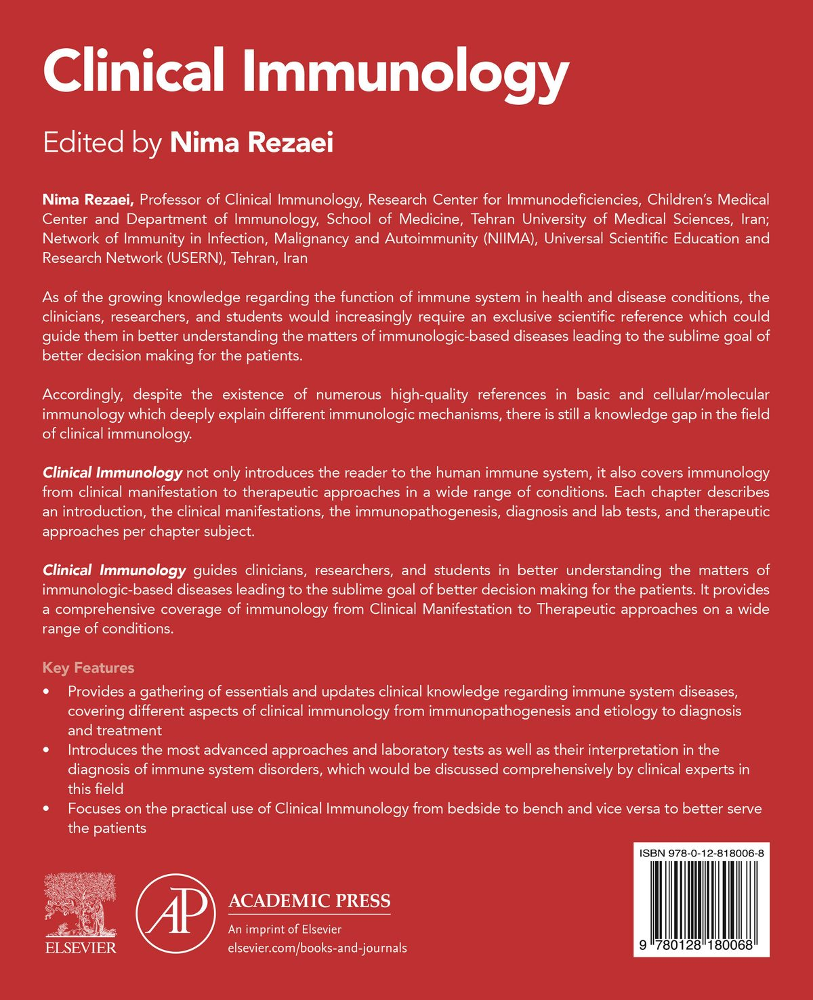
그림 4.4 병기 II, III, IV기 흑색종의 단순화된 치료 알고리즘. 임상 진료 지침을 기반으로 구성됨.747,826-828 본 알고리즘은 미국암연합위원회(AJCC) 병기 분류 제8판을 기반으로 작성되었으나, 대다수 임상시험 프로토콜은 제7판을 기준으로 수행되었음에 유의할 것. *두께가 1 mm를 초과하는 병변 및 고위험 소견(예: 궤양 형성, 림프관-혈관 침윤)을 동반한 0.75–1 mm 두께의 병변에 대해 감시림프절생검(SLNB)이 권장됨. †1차 치료 옵션으로는 권장되지 않음. SLNB, 감시림프절생검; US, 초음파; CLND, 완료림프절곽청술; FNA, 세침흡인; TLND, 치료적 림프절곽청술; SRS, 정위방사선수술; T-VEC, 탈리모진 라허파parvec(Talimogene laherparepvec); NED, 질환의 증거 없음; RT, 방사선치료.
350 Clinical immunology ### 면역치료 (Immunotherapies) #### 면역관문억제제 (Immune checkpoint inhibitors, ICIs) ICIs는 이제 특정 병기 III 및 IV기 흑색종 환자의 치료 프로토콜에서 핵심적인 역할을 차지하고 있다(표 4.17 및 그림 4.4). 병기 III 및 IV기 흑색종의 수술 후 보조요법(adjuvant setting)과 관련하여, EORTC 18071 임상시험의 5년 추적관찰 결과 국소 림프절 전이가 동반되어 완전 절제술을 시행받은 병기 III기 흑색종 환자에서 ipilimumab(10 mg/kg) 투여군이 위약군에 비해 재발없는생존(relapse-free survival, RFS, 40.8% 대 30.3%; 재발 또는 사망에 대한 위험비[hazard ratio, HR], 0.76; 95% 신뢰구간[CI], 0.64–0.89; p < 0.001), OS(65.4% 대 54.4%; 사망에 대한 HR, 0.72; 95.1% CI, 0.58–0.88; p = 0.001), 그리고 원격전이없는생존(distant metastasis-free survival, 48.3% 대 38.9%; 사망 또는 원격전이에 대한 HR, 0.76; 95.8% CI, 0.64–0.92; p = 0.002) 모두에서 유의한 개선 효과를 입증하였다.778 그러나 이러한 임상적 이득은 ipilimumab 투여군에서 5건의 면역 관련 사망이 발생하는 대가를 수반하였다.778 치료군 간의 이러한 유의한 차이는 중앙값 6.9년의 추적관찰 후에도 지속적으로 유지되었다.779 이러한 고무적인 성과에도 불구하고, CheckMate 238 임상시험 결과는 완전 국소 림프절절제술 또는 완전 절제술을 시행받은(절제된 뇌전이 환자 포함) 병기 IIIB, IIIC 또는 IV기 흑색종 환자에서 nivolumab(3 mg/kg)이 ipilimumab(10 mg/kg) 대비 1년 RFS를 유의하게 개선시킬 수 있음을 보여주었다(70.5% 대 60.8%; 질병 재발 또는 사망에 대한 HR, 0.65; 97.56% CI, 0.51–0.83; p < 0.001). 아울러 nivolumab은 훨씬 우수한 안전성 프로파일을 나타냈다(3등급 이상의 이상반응[adverse event, AE] 발생률 14.4% 대 45.9%, 이상반응으로 인한 치료 중단율 9.7% 대 42.6%, ipilimumab 군에서 2건의 사망 발생).780 주목할 만한 점은 nivolumab 치료의 이점이 BRAF 돌연변이 상태와 무관하게 관찰되었다는 것이다.780 항-PD-1 항체의 뛰어난 유효성에 이어, EORTC 1325/KEYNOTE-054 임상시험781(재발 고위험군, 즉 감시림프절 직경 >1 mm인 완전 절제된 병기 IIIA 흑색종 및 이행기 전이가 없는 병기 IIIB 또는 IIIC 환자 대상)에 등록된 환자들의 장기 추적관찰 결과에서도, 중앙값 3년의 추적관찰 시점까지 pembrolizumab(200 mg) 투여가 전체 환자군(pembrolizumab 군 64% 대 위약군 44%; HR, 0.56; 95% CI, 0.47–0.68) 및 PD-L1 양성 환자군(65% 대 46%; HR, 0.57; 95% CI, 0.43–0.74) 모두에서 RFS를 유의하게 연장하는 것으로 나타났다.782 수술 전 보조요법(neoadjuvant setting)의 경우, 현재까지 보고된 데이터는 대개 소규모 1상 및 2상 임상시험에 국한되어 있다. 2018년에는 ipilimumab과 nivolumab 병용요법 또는 nivolumab 단독요법을 수술 전 보조요법으로 평가한 무작위배정, 비비교 2상 임상시험의 결과가 발표되었다.783 이 병용요법은 73%의 객관적반응률(objective response rate, ORR)과 45%의 병리학적완전관해(pathologic complete response, pCR)율을 달성하였으나, 예상대로 환자의 73%에서 3등급 이상의 AE가 유발되었다. 한편, nivolumab 단독요법은 ORR과 pCR이 각각 25%였으며, 3등급 이상의 AE 발생률은 8%에 불과하였다.783 예상했던 바와 같이, 치료 반응자들은 수술 전 보조요법 후 종양 내 면역세포 침윤도가 더 높게 나타났다.783 한 1상 연구에서는 절제 가능한 병기 III/IV기 흑색종 환자를 대상으로 수술 전 보조요법으로서 단회 용량의 pembrolizumab을 투여한 결과
Tumor immunology 351
표 4.16 진행성 흑색종의 완화 치료에서 면역관문억제제(ICI)의 효과를 평가한 무작위 배정 임상시험(Reprinted with permission from.747)
| 임상시험 식별자 | 시험 디자인 | 치료군 및 치료 요법 | 전체 반응률(ORR, %) | 반응 지속기간 (중앙값, 개월) | 무진행 생존기간 (PFS) (중앙값, 개월) | 전체 생존기간 (OS) (중앙값, 개월) |
|---|---|---|---|---|---|---|
| Ribas et al. (2013)787 | 3상, 공개(open-label); 이전에 치료받지 않았거나 치료받은 적이 있는 환자 | 트레멜리무맙(Tremelimumab, 15 mg/kg) (n = 328) vs 화학요법 (n = 327); 이전에 치료받은 환자 | 10.7% vs 9.8% (p = 0.729) | 35.8 vs 13.7개월 | 1.6 vs 1.4개월 (HR 0.88, p = 0.127) | 12.6 vs 10.7개월 (HR 0.88, p = 0.127) |
| Hodi et al. (2010)749 | 3상, 이중맹검; 이전에 치료받은 환자 | 이필리무맙(Ipilimumab, 3 mg/kg) + gp100 (n = 403) vs 이필리무맙 단독 (n = 137) vs gp100 단독 (n = 136) | 5.7% (이필리무맙 + gp100), 10.9% (이필리무맙 단독) vs 1.5% (gp100 단독) (p = 0.04) | 11.5개월 (이필리무맙 + gp100), 도달하지 않음 (이필리무맙 단독) vs 도달하지 않음 (gp100 단독) | 2.76개월 (이필리무맙 + gp100; vs gp100 HR 0.81), 2.86개월 (이필리무맙 단독; vs gp100 HR 0.64, p < 0.001) vs 2.76개월 (gp100 단독) | 10.0개월 (이필리무맙 + gp100; vs gp100 HR 0.68, p < 0.001), 10.1개월 (이필리무맙 단독; vs gp100 HR 0.66, p = 0.003) vs 6.4개월 (gp100 단독) |
| Robert et al. (2011)785 | 3상, 이중맹검; 이전에 치료받지 않은 환자 | 이필리무맙(10 mg/kg) + 다카바진(Dacarbazine) (n = 250) vs 위약 + 다카바진 (n = 252) | 15.2% vs 10.3% (p = 0.09) | 19.3 vs 8.1개월 (p = 0.03) | 2.8 vs 2.6개월 (HR 0.76, p = 0.006; 이필리무맙 투여군에 유리) | 11.2 vs 9.1개월 (HR 0.72, p < 0.001) |
| Ascierto et al. (2017)786 (CA184-169 시험) | 3상, 이중맹검; 이전에 치료받지 않았거나 치료받은 적이 있는 환자 | 이필리무맙 10 mg/kg (n = 364) vs 이필리무맙 3 mg/kg (n = 362) | 15.3% vs 12.0% | 도달하지 않음 vs 도달하지 않음 | 2.7 vs 2.8개월 (HR 0.89, 양 군 유사, p = 0.16) | 15.7 vs 11.5개월 (HR 0.84, p = 0.04) |
352 Clinical immunology
표 4.16 (계속)
| 임상시험 식별자 | 시험 디자인 | 치료군 및 치료 요법 | 전체 반응률(ORR, %) | 반응 지속기간 (중앙값, 개월) | 무진행 생존기간 (PFS) (중앙값, 개월) | 전체 생존기간 (OS) (중앙값, 개월) |
|---|---|---|---|---|---|---|
| Larkin et al. (2015)788 (CheckMate 066 시험) | 3상, 이중맹검; 이전에 치료받지 않은 환자(BRAF 야생형) | 니볼루맙(Nivolumab) (n = 210) vs 다카바진 (n = 208) | 40.0% vs 13.9% (p < 0.001) | 도달하지 않음 vs 6.0개월 | 5.1 vs 2.2개월 (HR 0.43, p < 0.001) | 도달하지 않음 vs 10.8개월 (HR 0.42, p < 0.001) |
| Weber et al. (2015)789 (CheckMate 037 시험) | 3상, 공개; 이전에 이필리무맙 치료(및 BRAF 변이가 있는 경우 BRAF 억제제)를 받은 환자 | 니볼루맙 (n = 272) vs 연구자 선택 화학요법 (n = 133) | 31.7% vs 10.6% | 도달하지 않음 vs 31.9개월 | 4.7 vs 4.2개월 (HR 0.82; 95% CI 0.64–1.07) | 15.7 vs 14.4개월 (HR 0.95, p = 0.67) |
| Larkin et al. (2015)791; Wolchok et al. (2017)793 (CheckMate 067 시험) | 3상, 이중맹검; 이전에 치료받지 않은 환자 | 니볼루맙 + 이필리무맙 (n = 314) vs 니볼루맙 단독 (n = 316) vs 이필리무맙 단독 (n = 315) | 57.6% (니볼루맙 + 이필리무맙), 43.7% (니볼루맙) vs 19.0% (이필리무맙) (p < 0.001) | 도달하지 않음 (니볼루맙 + 이필리무맙), 31.1개월 (니볼루맙) vs 18.2개월 (이필리무맙) | 11.5개월 (니볼루맙 + 이필리무맙; vs 이필리무맙 HR 0.42, p < 0.001), 6.9개월 (니볼루맙; vs 이필리무맙 HR 0.55, p < 0.001) vs 2.9개월 (이필리무맙) | 도달하지 않음 (니볼루맙 + 이필리무맙; vs 이필리무맙 HR 0.55, p < 0.001), 37.6개월 (니볼루맙; vs 이필리무맙 HR 0.65, p < 0.001) vs 19.9개월 (이필리무맙) |
| Weber et al. (2016)790, (2018)792 (CheckMate 064 시험) | 2상, 공개; 이전에 치료받지 않았거나 치료받은 적이 있는 환자 | 니볼루맙 투여 후 이필리무맙 (n = 68) vs 이필리무맙 투여 후 니볼루맙 (n = 70) | 56% vs 27% | 도달하지 않음 vs 도달하지 않음 | 니볼루맙 후 이필리무맙 군에서 PFS 유의하게 개선 | 니볼루맙 후 이필리무맙 군에서 1년 OS 76% vs 이필리무맙 후 니볼루맙 군 54% |
Tumor immunology 353
표 4.16 (계속)
| 임상시험 식별자 | 시험 디자인 | 치료군 및 치료 요법 | 전체 반응률(ORR, %) | 반응 지속기간 (중앙값, 개월) | 무진행 생존기간 (PFS) (중앙값, 개월) | 전체 생존기간 (OS) (중앙값, 개월) |
|---|---|---|---|---|---|---|
| Ribas et al. (2015)796; Hamid et al. (2017)797 (KEYNOTE-002 시험) | 2상, 이중맹검; 이전에 이필리무맙 치료를 받은 환자 | 펨브롤리주맙(Pembrolizumab, 2 mg/kg, 3주 간격) (n = 180) vs 펨브롤리주맙(10 mg/kg, 3주 간격) (n = 181) vs 화학요법 (n = 179); 화학요법군에서 펨브롤리주맙으로의 교차투여 허용 | 21% (2 mg/kg), 25% (10 mg/kg) vs 4% (화학요법) (p < 0.0001) | 도달하지 않음 (양 펨브롤리주맙 군) vs 8.0개월 (화학요법) | 2.9개월 (2 mg/kg; HR 0.57, p < 0.0001), 2.9개월 (10 mg/kg; HR 0.50, p < 0.0001) vs 2.7개월 (화학요법) | 13.4개월 (2 mg/kg; HR 0.86, p = 0.117), 14.7개월 (10 mg/kg; HR 0.74, p = 0.011) vs 11.0개월 (화학요법); 교차투여로 인해 OS 차이 희석됨 |
| Robert et al. (2015)794; Schachter et al. (2017)798 (KEYNOTE-006 시험) | 3상, 이중맹검; 이전에 치료받지 않은 환자 | 펨브롤리주맙(10 mg/kg, 2주 간격) (n = 279) vs 펨브롤리주맙(10 mg/kg, 3주 간격) (n = 277) vs 이필리무맙(3 mg/kg, 3주 간격) (n = 278) | 37% (2주 간격), 36% (3주 간격) vs 13% (이필리무맙) (p < 0.001) | 도달하지 않음 (양 펨브롤리주맙 군) vs 도달하지 않음 (이필리무맙) | 5.5개월 (2주 간격; HR 0.58, p < 0.001), 4.1개월 (3주 간격; HR 0.58, p < 0.001) vs 2.8개월 (이필리무맙) | 도달하지 않음 (2주 간격; HR 0.68, p = 0.0008), 도달하지 않음 (3주 간격; HR 0.68, p = 0.0009) vs 16.0개월 (이필리무맙) |
| Postow et al. (2015)799; Hodi et al. (2016)795 | 2상, 이중맹검; 이전에 치료받지 않은 환자 | 니볼루맙 + 이필리무맙 (n = 95) vs 이필리무맙 단독 (n = 47) | 59% vs 11% (p < 0.001) | 도달하지 않음 vs 도달하지 않음 | 도달하지 않음 vs 4.4개월 (HR 0.40, p < 0.001) | 도달하지 않음 vs 도달하지 않음 (HR 0.55, p = 0.002) |
354 Clinical immunology
표 4.17 FDA 승인을 받은 흑색종 치료용 최신 면역치료제 목록
| 약제 | 적응증 | 임상시험 |
|---|---|---|
| 이필리무맙(Ipilimumab) | 이전에 치료받은 적이 있는 12세 초과 절제 불가능 또는 전이성 흑색종 환자 | MDX010-20749 |
| 이필리무맙 | 완전 절제술(전체 림프절 곽청술 포함) 후 국소 림프절에 1 mm 초과의 병리학적 침범이 있는 피부 흑색종의 보조요법(Adjuvant therapy) | EORTC 18071808 |
| 펨브롤리주맙(Pembrolizumab) | 절제 불가능 또는 전이성 흑색종 | KEYNOTE-006798 KEYNOTE-002796 |
| 펨브롤리주맙 | 완전 절제술 후 림프절 침범이 있는 흑색종 환자의 보조요법 | KEYNOTE-054781 |
| 니볼루맙(Nivolumab, 단독 또는 이필리무맙과의 병용) | 절제 불가능 또는 전이성 흑색종 | CheckMate 037789 CheckMate 066788 CheckMate 067793 |
| 니볼루맙 | 완전 절제술 후 림프절 침범 또는 전이가 있는 흑색종 환자의 보조요법 | CheckMate 238780 |
| 탈리모진 라허파렙벡(Talimogene laherparepvec, T-VEC) | 초기 수술 후 질환이 재발한 환자에서 절제 불가능한 피부, 피하 및 림프절 병변의 국소 치료 | OPTiM809 |
환자의 29.6%에서 완전 또는 주요(생존 종양 세포 10% 미만으로 정의) 병리학적 관해를 유도할 수 있었다.784 이전 연구 결과와 일치하게, 이 시험에서도 치료 후 종양침윤림프구(TIL)의 증가가 관찰되었다.784 진행기/전이성 흑색종과 관련하여 2018년 이전에 여러 임상시험이 수행되었으며, 각 시험의 장단점은 다른 문헌에 상세히 논의되어 있다(표 4.16). 여기에서는 보다 최근의 임상시험 결과를 논의하고자 한다.
완전 절제술 또는 방사선 치료를 받고 질병의 증거가 없는(NED) 4기 흑색종 환자를 대상으로 니볼루맙(단독 또는 이필리무맙과의 병용)의 효능을 무작위 배정 2상 임상시험에서 평가하였다.800 28.4개월의 추적관찰 기간(중앙값) 후, 니볼루맙 단독요법군과 병용요법군 모두 위약군에 비해 재발 위험비(HR)가 유의하게 낮았다(병용요법: HR 0.23, 97.5% CI 0.12–0.45, p < 0.0001; 니볼루맙 단독요법: HR 0.56, 95% CI 0.33–0.94, p = 0.011). 이러한 결과와 일치하게, 2년 무재발 생존율(RFS)은 병용요법군 70%, 니볼루맙 단독군 42%, 위약군 14%로 나타났다.800 그러나 병용요법군에서는 71%의 환자에서 3등급 이상의 치료 관련 이상반응(AE)이 발생하였고, 이로 인해 53%의 환자가 치료를 중단하였다(모든 등급의 이상반응으로 인한 중단은 62%). 주목할 점은 위약군에서도 3등급 이상의 이상반응 발생률이 26%에 달했다는 것인데, 이는 부분적으로 등록된 환자들의 진행된 병기 때문인 것으로 설명된다.800
Tumor immunology 355
이 시험에서 또 하나 주목할 만한 점은, 다른 임상시험에서도 보고된 바와 같이 원인은 불분명하나 BRAF 변이를 가진 환자에서 병용요법의 이득이 더욱 두드러졌다는 점이다.800 최근 한 무작위 배정 시험에서는 IIIC/IV기 흑색종의 1차 치료(frontline therapy)로서 베무라페닙(vemurafenib) 및 코비메티닙(cobimetinib)(각각 BRAF 및 MEK 억제제)에 아테졸리주맙(atezolizumab)을 추가할 경우, PD-L1 발현 상태와 무관하게 부작용 발생률은 유사하면서도 무진행 생존기간(PFS)을 10.6개월에서 15.1개월로 유의하게 연장시킬 수 있음을 입증하였다(HR 0.78; 95% CI 0.63–0.97; p = 0.025).801 두 군 간 반응률(RR)에는 차이가 없었으나, 미성숙한 생존 데이터를 바탕으로 추정한 2년 무사건 생존율(EFS)은 아테졸리주맙 추가군이 60%, 대조군이 53%였다.801 유사하게 BRAF V600 변이를 동반한 전이성 흑색종 환자를 대상으로 트라메티닙(trametinib), 다브라페닙(dabrafenib), 펨브롤리주맙 병용요법을 평가한 1상 연구에서는,802 평가 대상 환자 15명 중 11명이 치료 반응을 보였으며, 11명에서 3등급 이상의 이상반응(4등급 3건 포함)이 발생하였다. 이 연구의 또 다른 결과로는 세포독성 T림프구(CTL)의 수와 기능 증가, 그리고 PD-L1 및 여러 주요조직적합성복합체(MHC) class I 및 class II 분자의 발현 증가가 확인되었다는 점이다.802
뇌전이와 관련하여, 니볼루맙과 이필리무맙 병용요법이 흑색종 뇌전이를 억제하는 효능을 평가하기 위한 매우 흥미로운 임상시험이 진행되었다.803 신경학적 증상이 없고 방사선 치료를 받지 않은 측정 가능한 뇌전이 병변을 1개 이상 가진 등록 환자 94명 중 24명이 완전관해(CR), 28명이 부분관해(PR)를 달성하였고, 2명은 안정병변(SD)을 나타냈다.803 또 다른 임상시험에서도804 무증상 미치료 흑색종 뇌전이 환자 중 니볼루맙과 이필리무맙 병용 치료를 받은 환자의 57%, 니볼루맙 단독 치료를 받은 환자의 20%가 두개내 반응(CR, PR 또는 안정병변)을 보였다. 또한 두개내 6개월 PFS 추정치는 각각 53%와 20%였다.804 종합하면 이러한 데이터는 흑색종 뇌전이 치료에서 수술이나 정위적 방사선 분할치료(SRS)보다 면역치료를 선행할 수 있는 새로운 접근법을 제시하며, 이는 인지기능 관련 부작용과 방사선 괴사(radionecrosis)를 줄이는 결과로 이어질 수 있다.803,804
흑색종 환자에서 면역관문억제제(ICI) 치료 반응을 예측할 수 있는 인자에 대한 광범위한 연구가 이루어졌으나, 예상대로 일부 분석 결과는 상당한 이질성을 보인다. 전이성 흑색종 환자의 분자학적 분석에 따르면, MHC class II 발현, TAP2(MHC class I 구성요소) 및 MHC-I 증폭, 높은 종양 배수성(ploidy), 면역 유전자 시그니처 발현은 항-PD-1 치료 반응성과 연관된 반면, 종양 이질성(sub-clonal 변이 비율) 및 JAK1의 이형접합성 소실(LOH)은 치료 후 질병 진행과 연관되어 있었다.805 특히 이 연구에서는 종양 침윤 면역세포 수나 HLA-A, HLA-B, HLA-C의 이형접합성 소실과 치료 반응 사이에는 유의한 연관성이 발견되지 않았다.805 또 다른 예로 CheckMate 064 시험 등록 환자를 분석한 결과, HLA-A, HLA-B, HLA-C 및 B2M 전사의 억제와 그로 인한 MHC class I 발현 저하가 항-CTLA-4 치료 내성과 관련이 있는 것으로 나타났다.806 아울러 높은 MHC class II 발현은 항-PD-1 항체 치료 반응의 예측 인자인 것으로 밝혀졌다.806
356 Clinical immunology
진행성 흑색종 환자를 대상으로 니볼루맙과 이필리무맙 병용 치료를 시행한 CheckMate 067 시험에 대한 또 다른 후향적 분석에서는, 기저 인터루킨-8(IL-8) 수치가 높은 경우(≥23 pg/ml) 생존기간 단축과 관련이 있는 것으로 나타났다(HR 3.06; 95% CI 2.13–4.41).807 나아가 종양 내 높은 IL-8 발현은 종양 조직 내부로 면역관용성 단핵구 및 호중구의 침윤을 증가시킬 수 있는 것으로 확인되었다.807
종양용해 바이러스 (Oncolytic viruses)
탈리모진 라허파렙벡(Talimogene laherparepvec, T-VEC)은 유전자 조작된 HSV-1 기반의 종양용해 면역치료제(oncolytic immunotherapy)로, 직접 주사된 병변뿐만 아니라 주사되지 않은 흑색종 병변 모두에서 임상적 활성을 입증하였다. 이 백신은 종양세포 내부에서 증식하여 암세포를 용해시킬 뿐만 아니라, 종양 조직에 대한 국소 및 전신 면역 반응을 증강시키는 과립구-대식세포 집락자극인자(GM-CSF)를 생성함으로써 병변을 제거한다.809 흑색종에 대한 T-VEC의 유효성은 절제 불가능한 IIIB기 및 IV기 흑색종 환자를 대상으로 한 3상 무작위 배정 임상시험을 통해 입증되었다.809 GM-CSF 투여군과 비교했을 때, T-VEC 투여군은 지속 반응률(최소 6개월 이상 지속되는 전체 반응으로 정의; 16.3% vs 2.1%; 오즈비(OR) 8.9; p < 0.001)이 유의하게 높았다. 전체 반응률(ORR)에서도 유사한 경향이 관찰되었다(26.4%; 95% CI 21.4%–31.5% vs 5.7%; 95% CI 1.9%–9.5%).809 T-VEC 투여군에 등록된 환자들을 추가 분석한 결과, T-VEC 직접 국소 주사는 주사 병변의 64%에서 크기를 50% 이상 감소시켰으며, T-VEC의 전신 효과에 의해 비내장 병변(non-visceral lesions)의 34%에서도 동일한 수준의 종양 축소가 유도되었다.810 또한 주사 병변의 47%와 주사되지 않은 비내장 병변의 22%가 완전히 소실되었다. 나아가 T-VEC 투여군 환자의 10.8%가 완전관해(CR)를, 15.6%가 부분관해(PR)를 달성하였다.810 T-VEC 치료 후 보고된 흔한 이상반응(AE)으로는 피로(50%), 오한(49%), 발열(43%), 메스꺼움(36%), 독감 유사 증상(30%), 주사 부위 통증(28%) 등이 있었다.809 또한 T-VEC 투여군 환자의 36%가 3등급 이상의 이상반응을 경험하였으며, 이는 GM-CSF 투여군의 21%와 비교되었다(p = 0.003).809 이 시험에서 흥미로운 관찰 결과는 병변의 가성 진행(pseudo-progression) 현상으로, 치료 반응을 달성한 환자의 50% 이상에서 초기에 병변 크기가 25% 이상 증가하거나 새로운 병변이 출현하는 양상을 보였다.809 T-VEC의 탁월한 효능에 힘입어, 한 2상 임상시험에서는811 이필리무맙과 T-VEC의 병용요법을 이필리무맙 단독요법과 비교 평가하였다. 절제 불가능한 IIIB~IV기 흑색종 환자 198명 중 병용 치료군의 39%, 이필리무맙 단독군의 18%가 전체 반응(OR)을 나타냈다(OR 2.9; 95% CI 1.5–5.5; p = 0.002). 3등급 이상의 이상반응 발생률은 병용군 45%, 이필리무맙 단독군 35%였다.811 흥미롭게도 병용 치료 반응자의 18.4%가 초기에 병변의 가성 진행 패턴을 경험하였는데, 이는 생명을 위협하는 사건이 발생하지 않는 한 초기 병변 악화에 관계없이 치료를 지속해야 함을 강조한다.809,812
Tumor immunology 357
인터페론-알파 (Interferon-α)
면역치료제와 표적치료제가 도입되기 이전 시대에는 고위험 절제 가능 흑색종에 사용 가능한 전신 치료가 대개 인터페론-알파(IFN-α)에 국한되어 있었다.747 메타분석 결과에 따르면 단순 관찰이나 백신 투여(GMK 및 GM2-KLH/QS-21)에 비해, IFN-α는 무사건 생존율(EFS; HR 0.86, CI 0.81–0.91, p < 0.00001)과 전체 생존율(OS; HR 0.90, CI 0.85–0.97, p = 0.003)을 유의하게 향상시켰으며, 5년 시점에서의 절대적 차이는 각각 3.5%와 3%였다.813 더욱 중요한 점은 이 메타분석에서 고용량 IFN-α가 추가적인 이득을 제공하지 못한다는 사실이 밝혀졌다는 것이다.813 IFN-α의 임상적 활성은 미미한 반면 상당한 부작용을 동반하는 것으로 보인다.814 실제로 진행 중인 한 3상 임상시험(ECOG 1609) 결과에서는 절제술을 받은 IIIB, IIIC, M1a, M1b기 흑색종 환자에서 이필리무맙(10 mg/kg이 아닌 3 mg/kg)이 고용량 IFN-α-2β에 비해 환자의 OS를 완만하지만 유의미하게 향상시킴을 확인하였다(HR 0.78, 95.6% 반복신뢰구간(RCI) 0.61–1.00, p = 0.044).814 결론적으로 면역관문억제제(ICI)와 표적치료제가 IFN-α의 자리를 대체하였으며, 더 이상 고위험 흑색종의 1차 보조요법으로 권장되지 않는다.815
인터루킨 (Interleukins)
IFN-α의 임상적 쇠퇴에 대한 논의는 인터루킨-2(IL-2)에도 동일하게 적용될 수 있다. 과거 IL-2는 전이성 흑색종 전신 치료의 1차 선택지였으며 1998년에는 FDA 승인까지 획득하였다. IL-2(단독 또는 다양한 치료법과의 병용) 적용에 관한 34개 연구를 메타분석한 결과, 완전관해(CR)율은 4%(범위 0%–23%; 95% CI 2.8%–5.3%), 부분관해(PR)율은 12.5%(95% CI 10.1%–15%), 전체 반응률(ORR)은 19.7%(95% CI 15.9%–23.5%)로 나타났다.816 아울러 저용량 IL-2가 중등도 및 고용량 IL-2에 비해 CR 유도 측면에서 더 우수한 것으로 확인되었다.816 이러한 제한적인 치료 성적에도 불구하고 전신 IL-2 주사는 중대한 부작용을 수반하므로, 전신 IL-2 치료는 숙련된 의료진을 갖춘 상급 의료기관에서만 시행되어야 한다.815
IL-2의 또 다른 장점은 국소 진행성 질환(이동성 흑색종, in-transit melanoma)에서 나타나는 피부 및 피하 전이 병변에 대한 병변 내 주사(intralesional injection) 요법이다.817 이러한 치료 방식에 대한 메타분석에 따르면, 환자의 50% 및 병변의 78%가 병변 내 IL-2 주사에 완전 반응을 보였으며, 3등급 이상반응은 3건에 불과하였다.817 흔히 보고된 1등급 및 2등급 이상반응은 주사 부위에 국한된 통증 및 부종, 독감 유사 증상이었다.817
흑색종 환자를 대상으로 다른 인터루킨에 대한 연구도 진행되고 있다. 일례로 페길화된 IL-10 수용체 작용제인 페길로데카킨(Pegilodecakin)을 펨브롤리주맙과 병용하여 31명의 4기 흑색종 환자(이 중 20명은 항-PD-1 불응성 환자)에게 투여하였다.818 불행히도 단 3명의 환자만이 전체 반응을 달성하였고 이들은 모두 ‘PD-1 불응성이 아닌’ 군에 속해 있었으며, 이러한 결과로 인해 흑색종 환자를 대상으로 한 임상시험의 진척이 중단되었다.818 또 다른 예로, IL-15 유사체가 마우스 흑색종 모델에서 유망한 항종양 활성을 보여준 바 있다.819
358 Clinical immunology
기타 면역치료
흑색종(멜라노마)에 대한 가장 오래된 면역치료 중 하나는 전이성 병변 부위에 BCG를 국소 주사하는 것이었다.820 비록 치료 반응은 상당했으나821 심각한 국소 이상반응(AE)으로 인해 오늘날에는 일반적으로 권장되지 않는다. 이미퀴모드(imiquimod)는 TLR-7 작용제이자 면역반응조절물질로, 다양한 전염증성 사이토카인(예: IFN-α, IL-1)의 생성을 유도함으로써 작용한다.822 이는 랑게르한스세포와 세포독성 T림프구(CTL)의 활성화를 강화하는 결과를 낳는다.822 흑색종에서 이미퀴모드 적용 적응증(그림 4.4)은 대개 절제술 후 절제연 양성인 병변이나, 수술 또는 방사선치료가 불가능한 환자의 병변으로 국한된다.815
면역관문의 특성이 규명되는 주요 진전이 이루어지기 전에는 종양침윤림프구(TIL)를 이용한 입양세포치료(adoptive cell therapy)가 최첨단 연구 분야로 큰 관심을 모았다. 이러한 접근법을 적용한 한 2상 임상시험에서는 IL-2 및 항암화학요법에 불응성을 보인 전이성 흑색종 환자에서 50%라는 유망한 객관적 반응률(ORR)이 보고되었다.823 그러나 기술적 복잡성823과 면역관문억제제(ICI)의 전례 없는 성과로 인해, 입양세포치료는 비록 현재도 제한적인 연구가 진행 중이기는 하나 과거에 비해 관심이 크게 줄어들었다. 예를 들어, 치료 불응성 전이성 흑색종을 대상으로 입양세포치료와 저용량 IL-2 병용 요법을 평가한 보다 최근의 임상시험 결과에서는 42%의 ORR과 21.8개월의 중앙 전체생존기간(OS)이 확인되었다.824 ICI 치료 후 질병이 진행된 12명의 전이성 흑색종 환자(1명 제외)에게 해당 요법을 투여했을 때, 3명의 환자에서 부분반응(PR, 1명은 미확인)을 유도하고 다른 6명에서는 질병안정(SD)을 유도할 수 있었다.825
향후 전망
입양세포치료는 현재 병용요법의 일환으로 활발히 연구되고 있다(NCT03374839, NCT03475134, NCT03158935). 키메라항원수용체 T세포(CAR T세포)의 경우, 진행 중인 임상시험은 일반적으로 디시아알로간글리오시드(disialoganglioside; GD)2(NCT03635632) 또는 CD70(NCT02830724)을 발현하는 흑색종으로 제한되어 있다. RO7247669(NCT04140500) 및 RO7121661(NCT03708328)은 이중특이항체(각각 anti-PD-1/LAG-3 및 anti-PD-1/TIM-3)로서, 현재 전이성 흑색종 및 기타 고형암 환자를 대상으로 평가되고 있다. XmAb20717(anti-CTLA-4/PD-1), XmAb23104(anti-PD-1/유도성 T세포 공동자극분자(ICOS)), XmAb22841(anti-CTLA-4/LAG-3) 역시 흑색종을 포함한 다양한 고형암을 대상으로 1상 임상시험에서 평가 중인 다른 이중특이항체들이다(NCT03517488, NCT03752398, NCT03849469).
흑색종에서 ICI 치료가 거둔 유례없는 성과에도 불구하고, 오직 일부 환자만이 임상적 이득을 얻으며 반응 지속 기간 역시 보편적으로 길지는 않다. ICI에 대한 내성 기전 중 일부는 이미 규명되었으나(앞서 논의됨), 현재까지는 이를 임상적 이득으로 직결시키지 못하고 있다. 따라서 ICI에 가장 적합한 환자군을 선별하고, 투여 용량 및 병용 요법 전략을 최적화하며(예: NCT04042506 및 NCT02318771과 같이 방사선치료와 면역치료의 통합),829 ICI의 혜택을 받지 못하는 환자들을 위해 새롭고 개인 맞춤화된830 면역치료를 개발하는 것이 시급한 과제이다.
연부조직 및 골암의 면역병리학과 면역학
육종(sarcoma)은 드물게 발생하는 중간엽 기원의 악성종양(malignancy)으로, 일반적으로 연부조직육종(STS; 신경, 혈관, 근육, 힘줄, 윤활조직 등의 육종 포함)과 골육종으로 나뉜다. 연부조직육종은 전체 육종의 약 80%를 차지한다.266 2019년 추산에 따르면 미국에서 새로 진단된 전체 암 중 육종은 약 0.9%를 차지했다.266 그러나 육종은 소아암 중 흔한 편에 속하며, 소아 고형암의 약 20%를 차지한다.831 게다가 골육종과 연부조직육종은 20세 미만 환자의 암 사망 원인 중 각각 3위와 4위를 차지한다.266 조직학적으로 50개 이상의 육종 아형이 규명되어 있다. 하지만 치료적 접근법은 이들 아형만큼 다양하지 않다.832 육종 발생의 근본 기전은 다양하며 특정 유형에 국한되어 나타나기도 한다. 수술적 절제, 항암화학요법, 그리고 일부 아형에 대한 표적치료가 현재 이용 가능한 유일한 치료 옵션이다.832 육종의 5년 생존율은 일반적으로 60~70% 수준이다. 불행하게도 원격 전이성 연부조직육종의 경우 이 수치는 16%에 불과하다.833
면역병리학
PD-L1 양성(종양세포의 최소 1% 이상에서 발현으로 정의) 연부조직육종의 비율은 악성 말초신경초종양의 0%부터 혈관육종의 50%까지 다양하게 나타난다.834 활막육종의 약 3%, 평활근육종(leiomyosarcoma; LMS) 및 탈분화 지방육종의 12%, 그리고 미분화 다형성 육종(undifferentiated pleomorphic sarcoma; UPS)의 23%에서 검출 가능한 수준의 PD-L1이 확인되었다.834 또한 PD-L1 발현은 PD-1 양성, 높은 종양 등급, 그리고 더 불량한 5년 생존율과 연관이 있는 것으로 밝혀졌다.834 이러한 설명은 이전 연구 결과들과 일치한다.835 PD-1/PD-L1 양성과 연부조직육종의 불량한 예후 사이의 이러한 상관관계는 다른 연구들에서도 제시되고 있다.836-838
연부조직육종에서 면역세포의 중요성을 제시한 암 유전체 지도(TCGA)의 결과와 일치하게,839 한 놀라운 연구840에서는 육종 환자의 면역 유전자 발현 프로파일을 분석하고 면역조직화학 평가를 통해 결과를 검증한 후, 종양미세환경(TME)의 특성에 따른 분류 체계를 제안하였다. 육종 면역 분류(sarcoma immune class; SIC) A는 면역 유전자 시그니처가 거의 없는 특징을 보인다(면역 사막형, immune desert). SIC C는 높은 내피세포 관련 유전자 발현을 특징으로 한다(혈관화형, vascularized type). SIC E는 면역 관련 유전자(예: CTL, NK세포, T세포 및 골수계 세포의 화학주성, MHC class I 및 B세포 계통 관련 유전자, 3차 림프구조 관련 케모카인인 CXCL13 등)의 발현이 가장 높다. 마지막으로 SIC B와 SIC
360 Clinical immunology
D는 각각 면역-저발현(immune-low) 및 면역-고발현(immune-high) 하위분류로 간주된다.840 면역관문과 관련하여 PD-1, PD-L2, CTLA-4, TIM-3는 SIC E 및 SIC D에서 높게 발현되는 반면, LAG-3 발현은 대개 SIC E에 국한된다.840 SIC와 생존율 간의 연관성도 제시되었다. 다변량 분석에서 SIC E는 더 양호한 생존율과 연관이 있는 것으로 나타났다. 뜻밖에도 CTL 밀도와 생존율 사이에는 통계적 연관성이 확인되지 않았다. 대신 B세포 계통 시그니처가 전체생존기간(OS) 연장과 유의하게 연관된 것으로 나타났다(p = 0.0004).840 이 연구의 다른 주목할 만한 발견으로는 서로 다른 SIC 전반에 걸쳐 종양변이부담(TMB)이 균일하게 낮다는 점과, SIC E와 항-PD-1 치료 반응 간의 유의한 연관성이 확인되었다는 점이다(p = 0.026).840 후자의 소견은 동일한 임상시험(SARC028, 뒤에서 논의)에 등록된 동일 환자군을 다룬 다른 연구841에서도 보고되었다. 주목할 점은 5가지 하위분류 모두에서 PD-L1 양성이 보고되었다는 것이며, 이를 통해 PD-L1의 예후적 가치는 다른 면역학적 구성요소들과 종합적으로 고려해야만 올바르게 해석될 수 있다는 결론을 도출할 수 있다. PD-L1의 복잡성을 더욱 심화시키는 연구 결과로서, 종양 조직의 PD-L1이 아닌 수용성 PD-L1(sPD-L1)의 높은 수치가 연부조직육종 환자의 무전이생존기간(MFS) 및 OS 단축과 연관되어 있다는 사실이 밝혀지기도 했다.842
골육종 환자에서 PD-L1 양성 비율은 연구에 따라 5.9%에서 75%까지 매우 큰 편차를 보인다.843 유잉육종(Ewing’s sarcoma)의 경우 PD-L1 양성 종양의 유병률은 19%로 보고되었으며, 이 역시 환자의 예후와는 무관했다.844 비록 더 높은 비율(33% 및 39%)이 보고되기도 했으며838,845 이는 더 나쁜 예후와 연관이 있었다.838 다른 육종들과 마찬가지로 유잉육종은 일반적으로 ’차가운 종양(cold tumor)’으로 간주된다. 이들은 HLA class I 발현이 낮고,846 CD8+ T세포가 결핍되어 있으며,844 그 대신 상당한 집락의 CD68+ 대식세포를 보유하고 있다.847
연골육종의 여러 아형들은 PD-L1 발현에서 상당한 차이를 보인다. 한 연구에서는 통상형, 중간엽형, 투명세포형 아형에서는 PD-L1이 발현되지 않았으나, 탈분화 아형의 41%(검증 코호트에서는 52%)가 PD-L1에 양성 염색됨을 확인하였다.848 이 연구에서 PD-L1 발현은 TIL의 높은 축적과 연관이 있었으나, OS와는 관련이 없었다.848 탈분화 연골육종의 면역세포에 대한 추가 규명 결과, 이들의 85%가 CD14+ CD163+ 면역억제성 대식세포의 침윤을 강하게 보였으며, 45%는 높은 수준의 T세포 집단(주로 CTL)을 함유하고 있는 것으로 나타났다. 요약하자면, 메타분석 결과에 기반할 때 골육종과 연골육종에서의 PD-L1 발현은 OS(HR, 1.987; 95% CI, 1.22–3.22; p = 0.005) 및 무사건생존기간(EFS)(HR, 3.868; 95% CI, 2.298–6.511; p = 0.000)과 음의 상관관계를 보였으나, PD-1 양성 T세포 축적과는 양의 상관관계를 나타냈다(OR, 4.012; 95% CI, 2.391–6.733; p = 0.000).843
앞서 논의된 바와 같이, 호중구 대 림프구 비율(NLR)은 일부 암에서 예후 인자이자 면역치료 반응 예측 인자로 알려져 있다. 연부조직육종 환자를 대상으로 한 대규모 후향적 조사에서는 종양의 병기나 조직학적 유형에 관계없이, 높은 호중구 대 림프구 비율(>2.5)과 OS 단축 사이의 음의 상관관계에 대한 정보가 제시되었다.849 또한 호중구 대 림프구 비율은 크기가 크고, 등급이 높으며, 전이가 있는 종양에서 더 높았다.849 그러나 이러한 소견이 지니는 치료적 유용성은 여전히 규명되어야 할 부분이다. 이와 유사하게 골육종 환자에서도 높은 호중구 대 림프구 비율, C-반응단백(CRP), 혈소판 대 림프구 비율(PLR) 및 낮은 림프구 대 단핵구 비율(LMR) 수치가 불량한 예후를 예측하는 인자로 설명된다.850
1,242개의 육종 검체를 면역조직화학적으로 분석한 결과, CD163+ 대식세포(M2 유사)의 밀도가 CD68+ 대식세포(M1 유사) 및 TIL보다 더 높은 것으로 나타났다. 또한 이 연구에서는 비전위 관련 육종(특히 미분화 다형성 육종 및 탈분화 지방육종)이 염색체 전위 관련 종양에 비해 대식세포 밀도가 더 높다는 사실을 확인했다(추후 논의). 면역학 연구의 연장선상에서 육종의 다양한 행동 양상에 미치는 사이토카인의 영향 역시 탐색되었다. 골육종 환자의 경우 전이성 질환 환자에서 IL-8 수치가 유의하게 높게 관찰된다.851 이는 순환 종양세포에서의 분비로 인한 것으로 보이며, 결과적으로 암세포 증식 및 침습성을 향상시킨다.851 전이 능력 촉진과 관련된 유사한 역할이 골육종852 및 유잉육종853의 IL-6, 그리고 골육종의 IL-1 및 TNF-α854에 대해서도 제시되었다. 연부조직육종의 유전체 환경은855 매우 복잡하다. 그러나 대체로 단순형(20%, 염색체 전위를 동반한 정배수체로 유잉육종 및 활막육종 포함)과 복잡형(80%, 이수체 또는 다배수체로 UPS 및 LMS 포함) 핵형으로 분류할 수 있다. 주목할 점은 연부조직육종의 TMB가 상당히 낮다는 것이다(메가베이스당 약 1개 변이).839
면역치료
면역관문억제제(ICI)
예상대로, 육종을 대상으로 한 드문 새로운 면역치료 임상시험의 대부분은 ICI에 집중되어 있다. SARC028 2상 랜드마크 임상시험832은 절제 불가능/전이성 육종의 다양한 유형에 대한 펨브롤리주맙(pembrolizumab)의 반응을 평가하는 것을 목표로 하였다. 불행하게도 중앙값 17.8개월의 추적 관찰 후, 전체 연부조직육종 환자 중 18%만이 전반적인 치료 반응을 보였으며, 여기에는 UPS 환자의 40%, 탈분화 지방육종 환자의 20%, 활막육종 환자의 10%가 포함되었다. 골육종 계열 환자 40명 중에서는 단 2명(골육종 1명, 연골육종 1명)만이 치료 반응을 나타냈다. 유잉육종 및 LMS 환자 중 반응을 보인 환자는 전무했다. 이에 따라 UPS 및 LPS 환자들을 대상으로 두 개의 확장 코호트가 등록되었다. 유감스럽게도 확장 코호트에서 UPS와 LPS의 ORR은 각각 16.6%와 6.6%로 보고되었다.856 유의미한 것으로 사전에 설정된 ORR 기준치는 25%였으며, 10% 미만의 반응률은 효과가 없는 것으로 간주되었다. 따라서 초기 시험의 고무적인 결과에도 불구하고, 펨브롤리주맙은 적어도 LPS에 대해서는 효과적이지 않다.856 이러한 관찰과 일치하게 진행성 자궁 평활근육종 환자에게 니볼루맙(nivolumab)을 투여한 후 치료 반응이 관찰되지 않았으며,857
362 Clinical immunology
활막육종 환자에서 이필리무맙(ipilimumab)을 투여했을 때도 마찬가지였다.858 니볼루맙에 대한 또 다른 임상시험에서는 24명의 육종 환자 중 단 3명(탈분화 연골육종 1명, 유상피육종 1명, 상악 골육종 1명)에서만 PR을 유도하는 데 그쳤다.859 마찬가지로 진행성 골육종을 대상으로 한 캄렐리주맙(camrelizumab)과 아파티닙(apatinib) 병용요법은 미미한 임상적 활성에도 불구하고, 효과가 있는 것으로 간주되기 위한 사전 지정된 6개월 무진행생존율(PFS) 기준치를 충족하지 못했다.860
전임상 데이터를 임상적 이득으로 전환하는 과정에서, 연부조직육종을 대상으로 펨브롤리주맙과 시클로포스파미드를 병용한 2상 임상시험은 ICI의 극도로 낮은 활성(50명의 환자 중 단 1건의 PR, LMS 및 UPS의 6개월 무진행률 0%)이 CD163+ IDO1 생성 대식세포의 높은 축적, 낮은 PD-L1 발현, 낮은 CD8+ T세포 밀도에 기인한다고 제시하였다.859 이를 뒷받침하듯, 유일하게 PR을 보인 환자들은 면역세포(IC) PD-L1 발현율 >10%와 높은 CD8+ T세포 축적을 보였다.859
니볼루맙 단독요법의 무효성은 또 다른 임상시험에서도 입증되었다. 2상 비비교 시험인 Alliance A091401861에서는 진행성, 절제 불가능 또는 전이성 육종 환자를 대상으로 니볼루맙 단독요법 또는 이필리무맙과의 병용요법을 시행하였다. 니볼루맙 단독요법과 달리, 병용요법은 수용 가능한 수준의 ORR을 유도하여 1차 평가변수를 충족했다(5% 대 16%; 자궁 LMS 1명, 비자궁 LMS 1명, 점액섬유육종 1명, UPS 또는 악성 섬유성 조직구종 2명, 혈관육종 1명 포함). 그러나 이러한 효과는 심각하지만 관리가 가능한 독성으로 인해 상쇄되었다.861 치료 이득이 크지 않아 보임에도 불구하고, 연구진은 병용요법으로 치료받은 환자들의 ORR과 중앙 OS(14.3개월; 95% CI, 9.6-미도달)가 표준 항암화학요법으로 치료받고 있는 환자들과 비견할 만하다고 주장했다.861
폐포연부육종(ASPS)은 저산소유도인자(HIF)-1α의 억제되지 않는 전사로 인해 VEGF가 과발현되는 특징을 지닌 희귀 육종이다.862 VEGF의 면역억제 특성은 앞서 논의된 바 있다(파트 13). 따라서 VEGFR 억제제와 ICI의 병용은 타당성이 있어 보인다. 이러한 병용 요법(액시티닙(axitinib) + 펨브롤리주맙)이 연부조직육종 환자의 PFS에 미치는 영향을 평가하기 위해 2상 연구862가 설계되었다. 중앙값 14.7개월의 추적 관찰 후, 3개월, 6개월, 12개월 PFS는 각각 65.5%, 46.9%, 27.5%로 나타났다. 놀랍게도 ASPS 환자의 54.5%가 PR을 달성한 반면, 다른 모든 환자군에서는 9.5%만이 PR을 달성했다. 다만 두 군 간 PFS의 차이는 반응률만큼 극명하지는 않았다.862 이러한 병용요법의 추가적 이득은 PD-L1 발현 상태나 TIL 유무와 상관없이 달성되었다. 그러나 호중구 대 림프구 비율 >5는 질병 진행(PD)과 연관이 있는 것으로 확인되었다.862 비-ASPS 환자의 경우 액시티닙 단독요법 대비 펨브롤리주맙 추가에 따른 이득은 미미했다. 그러나 6개월 시점 기준으로는 추가적 이득이 유의미해졌다. ASPS 환자의 경우 액시티닙 단독요법과 비교했을 때 병용요법군에서 훨씬 더 높은 전반적 반응률을 보였으나, PFS는 유사했다.862
Tumor immunology 363
암 백신
한 2상 임상시험863에서 국소 진행성/전이성 육종 환자 20명 중 7명이 펨브롤리주맙과 T-VEC(파트 14) 병용요법 투여 후 PR을 나타냈다(두경부 혈관육종 2명, UPS 2명, 점액섬유육종 1명, 유상피육종 1명, 미분류 육종 1명). 24주 PFS율은 39.4%였다. 따라서 이 시험은 1차 평가변수를 달성했다.863 종양 조직 표본의 조직학적 분석 결과, 치료 반응을 보인 환자들은 종양 침윤 경계부에 더 많은 CD8+ T세포 집락을 형성하고 있었다.863
전이성 또는 재발성 육종 소아 환자를 대상으로 종양용해물로 감작된 수지상세포(DC) 백신(자가 림프구 병용, IL-17 병용 또는 비병용)을 투여한 결과, 유잉육종 및 횡문근육종 환자에서 63%의 5년 OS를 얻었다.864 Vigil은 GM-CSF/bi-shRNAfurin이 형질감염된 종양세포를 포함하는 개인 맞춤형 백신으로, GM-CSF 발현을 유도하고 기능성 TGF-β1 및 TGF-β2의 생성을 차단한다.865 진행기 유잉육종 환자를 3년간 추적 관찰한 결과, Vigil을 투여받은 환자군에서 OS가 17.2개월 연장된 것으로 나타났다.865 또한 1년 OS는 Vigil 투여군과 비투여군에서 각각 73%와 23%였다.865 이러한 유망한 결과를 바탕으로 현재 유잉육종 환자를 대상으로 한 Vigil의 2b상 임상시험이 진행 중이다(NCT02511132). 이 두 임상시험의 뛰어난 성과와 ICI에 대한 거의 전무한 반응성은 향후 유잉육종에 대한 면역치료의 방향성을 형성할 것이다. 이를 뒷받침하는 또 다른 연구로서, 절제 가능한 고등급 대형 연부조직육종을 대상으로 수지상세포 신보조요법(선행요법)과 방사선치료를 병용한 결과 70.6%의 1년 PFS에 도달하였다.866
육종 세포는 표면에 다양한 유형의 종양연관항원(TAA)을 발현할 수 있다. 이러한 항원들을 표적으로 여러 암 백신과 입양면역치료가 개발되어 왔다. SYT-SSX 유래 펩타이드 백신을 IFN-α와 병용 투여하거나 단독 투여했을 때, 활막육종 환자 12명 중 6명 및 9명 중 1명에서 각각 방사선학적 질병안정(SD)을 유도하였다.867
입양세포치료
불응성 전이성 활막육종 환자를 대상으로 NY-ESO-1에 대한 TCR을 유전자 도입한 자가 T세포를 투여했을 때, 치료받은 환자 6명 중 4명이 반응을 달성하는 놀라운 항종양 활성을 보였다.868 이 임상시험의 확장 코호트 결과에서도 등록된 활막육종 환자 18명 중 11명이 객관적 임상 반응을 보여 앞선 결과를 뒷받침했다.869
기타 면역치료
이러한 새로운 치료법 외에도 고전적 방식의 면역치료 역시 육종에 대해 시험되었다. 예를 들어, 미파무르타이드(mifamurtide, 리포솜 뮤라밀 트리펩타이드 포스파티딜에탄올아민 또는 MTP-PE)는 뉴클레오티드 결합 올리고머화 도메인(NOD)2 수용체를 활성화함으로써 작용하는 것으로 추정되는 면역조절물질로,
364 Clinical immunology 궁극적으로 NF-κB 활성화와 선천 면역계(innate immune system)의 활진으로 이어진다.870 미파무르티드(mifamurtide)의 임상적 활성은 새롭게 진단된 절제 가능한 골육종 환자를 대상으로 한 대규모 3상 임상시험에서 평가되었다.871 기존의 표준 항암화학요법에 미파무르티드를 추가했을 때 6년 무사건생존율(event-free survival, EFS)이 8% 증가하였으며(p = 0.03), 전체생존율(overall survival, OS) 향상에서도 작지만 유의미한 이득을 입증하였다(HR, 0.71; 95% CI, 0.52–0.96).872 그러나 이 임상시험은 본래 병용 요법과 단독 항암화학요법을 직접 비교하도록 설계되지 않았다. 따라서 미파무르티드는 골육종 치료 용도로 FDA 승인을 받지 못하였다.
향후 전망 (Future perspective)
육종(sarcoma)과 중추신경계(CNS) 종양의 면역학적 및 유전체적 환경은 낮은 종양변이부담(tumor mutational burden, TMB), “면역 사막(immune desert)” 표현형, 표적 치료의 잠재적 표적이 될 수 있는 다양한 돌연변이의 존재 등 여러 공통적인 특징을 공유한다.873 면역관문억제제(immune checkpoint inhibitor, ICI)는 육종에서 뚜렷한 임상적 효능을 보이지 못하였으며, 이상적으로는 면역세포 침윤이 높은 소수의 종양에서만 적응증 대상이 될 것이다. 반면 백신 및 입양면역치료(adoptive immunotherapy)는 일부 사례에서 전례 없는 결과를 보여주어 향후 육종에 대한 유망한 면역치료(immunotherapy) 접근법으로 기대받고 있다. 실제로 육종을 대상으로 진행 중인 임상시험의 대부분이 이러한 방식에 속한다(NCT02992743, NCT01169584, NCT02239861, NCT04052334).
남성 생식기계 암의 면역병리학 및 면역치료 (Immunolopathology and immunotherapy of cancers of men reproductive system)
2019년 미국에서는 174,000명 이상의 전립선암 환자가 새로 진단될 것으로 예상되었으며, 이는 남성에게서 가장 흔한 악성종양이다.266 다행히 전립선특이항원(prostate-specific antigen, PSA) 기반 선별검사의 광범위한 보급 덕분에 진단 지연이 줄어들어, 현재 남성의 암 관련 사망 중 전립선암으로 인한 사망은 10%에 불과하다.266 전립선암의 90% 이상은 국소 또는 국소 림프절 침범 형태로 발견되며, 이들의 5년 생존율은 99%를 상회한다. 반대로 원격 전이가 있는 환자의 경우 5년 후 생존율이 30%에 그친다.266
국소 고위험 전립선암 치료의 기본 원칙은 근치적 전립선절제술, 방사선 치료(외부 방사선 치료 및 근접방사선 치료 활용), 그리고 보조 안드로겐차단요법(androgen deprivation therapy)이다. 국소 저위험 질환을 가진 특정 환자에게는 적극적 감시(active surveillance)가 적절할 수 있다.874 진행성 질환 관리의 초기 단계는 거세(외과적 또는 약물적 중재술을 통한)이다.874 안타깝게도 국소 및 전이성 질환 모두 치료 후 재발이 흔하게 발생하며, 이는 결국 전이성 거세저항성 전립선암(metastatic castration-resistant prostate cancer, mCRPC)으로 진행한다. 이러한 환자들을 위한 여러 치료 옵션이 존재하지만, 최선의 선택지에 대해서는 여전히 논쟁이 진행 중이다.874 전립선암에 대한 전통적인 면역치료는 다양한 유형의 백신으로 구성된다.874 최근 몇 년 동안 ICI에 대한 관심이 높아졌으나, 지금까지
Tumor immunology 365 강력한 임상시험 결과는 많지 않으며 전립선암 치료에서의 역할은 여전히 정립되어 가는 과정에 있다(후술).
고환암(testicular cancer)의 대다수는 생식세포종양(germ cell tumor)으로, 이는 정상피종(seminoma)과 비정상피종(nonseminoma)으로 추가 분류된다.875 고환암은 2019년에 10,000건 미만의 신규 환자가 진단될 것으로 추정되었을 정도로 드문 편이다.266 다행히 모든 병기의 95% 이상, 전이성 고환암의 80%가 완치 가능한데, 이는 다른 악성종양에서는 아직 달성하지 못한 성과이다.875 그러나 불응성 사례에 대한 치료 옵션은 제한적이고 효과가 미미하므로, 보다 혁신적이고 효과적인 새로운 치료법 개발이 요구된다.
면역병리학 (Immunopathology)
앞선 절에서 언급한 바와 같이, PD-L1 양성 전립선암의 비율에 대해서는 상당한 논쟁이 있다. 그러나 508건의 전립선 샘포샘암종(prostate acinar adenocarcinoma)과 57건의 mCRPC를 대상으로 한 대규모 조사에 따르면, 샘플의 각각 7.7%와 31.6%에서 PD-L1이 검출되었다.876 또 다른 면역조절인자인 TIM-3는 전이성 전립선암의 25.2%에서 발현되는 것으로 보고되었으며, 놀랍게도 질환의 호르몬 감수성 및 mCRPC 환자의 더 나은 OS를 예측하는 인자로 활용될 수 있다.877
전립선암은 오랫동안 면역학적으로 “차가운(cold)” 종양으로 간주되어 왔다. 이러한 특성은 전립선암에 대한 효과적인 면역치료 전략을 개발하는 데 걸림돌이 된다. 따라서 종양미세환경(tumor microenvironment, TME)을 보다 잘 이해하고 면역학적 측면에 따라 이를 분류하는 작업이 필요하다. 최근 한 연구에서는 종양의 면역회피 기전에 따라 전립선 샘암종을 8개 군집(cluster)으로 나눈 분류법을 제시하였다.878 주목할 점은, 포함된 샘플의 89%가 면역무시(immunological ignorance) 표현형을 보였으며, 이는 이전 보고들과 일치한다는 사실이다. 이들 군집 중 일부는 하나 이상의 면역무시 및 면역관용(immune tolerance) 기전을 특징으로 한다.878 따라서 적어도 이론적으로는 단일 제제 면역치료가 이러한 종양에서 의미 있는 활성을 나타내기 어렵다.878
또 다른 합리적인 전략은 이러한 면역 사막 종양을 “뜨거운(hot)” 종양으로 전환하는 것이다. 일례로 국소 전립선암에서 고선량률 근접방사선 치료(high dose-rate brachytherapy)가 이러한 변화를 유도할 수 있음이 확인되었다.879 다른 신생물과 마찬가지로, 전립선암의 종양 형성을 촉진하거나 억제하는 사이토카인 및 인터루킨(interleukin, IL)의 다양한 역할이 규명되었다. 예를 들어 IL-17과 IL-7은 각각 MMP7880 및 기타 상피-중배엽 전이(EMT) 마커881의 발현을 증가시킴으로써 침윤성을 강화할 수 있다.
전립선암의 유전적 이상에 대해 여러 가지 모델이 제안되었다. 요약하자면, 원발성 전립선암종의 약 19%882와 mCRPC의 약 23%883에서 DNA 복구 유전자(예: BRCA2, CDK12, ATM)의 돌연변이가 관찰된다. 원발성 전립선암종과 mCRPC 간의 차이는 평균 돌연변이 부담에서도 나타나는데, 전자의 경우 메가베이스(megabase)당 0.94개에 불과하지만,882 mCRPC에서는 메가베이스당 2개,884 2.7개,885 또는 4.4개883에 달한다. 주목할 점은 현미부수체 불안정성(microsatellite instability, MSI)을 보이는 거의 모든 종양이 더 높은 TMB(메가베이스당 10개 이상의 돌연변이로 정의)를 나타낸다는 것이다.883,885
366 Clinical immunology
전립선암의 면역치료 (Immunotherapies for prostate cancer)
면역관문억제제 (ICIs)
도세탁셀(docetaxel) 치료 후 질병이 진행되고 최소 하나 이상의 골 전이가 있는 mCRPC 환자를 대상으로 한 무작위 3상 임상시험(CA184-043)에서는, OS 향상에 있어 방사선 단독 치료 대비 이필리무맙(ipilimumab)과 방사선 병용 요법의 유효성을 평가하였다.886 이필리무맙 투여 시 일부 활성이 나타났음에도 불구하고, 산출된 p값은 사전에 지정된 기준치를 상회하였다(HR, 0.85; 95% CI, 0.72–1.00; p = 0.053). 또한 이필리무맙의 치료 이득은 4건의 치료 관련 사망이라는 대가를 수반하였다.886
이전 시험에 이어, 내장 전이가 없는 무증상 또는 경미한 증상의 항암화학요법 미치료(chemotherapy-naïve) mCRPC 환자를 대상으로 이필리무맙을 평가한 또 다른 대규모 무작위 3상 임상시험에서도 OS 연장이라는 1차 평가변수를 충족하지 못하였다.887 실제로 중앙 OS는 위약군에서 오히려 1개월 더 길었는데(이는 연구 중단 후 후속 치료에 기인한 것으로 추정됨), 이필리무맙 투여군에서는 9건의 치료 관련 사망이 발생하였다. 그러나 이필리무맙은 무진행생존기간(progression-free survival, PFS; HR, 0.67; 95.87% CI, 0.55–0.81) 및 PSA 반응률(23% 대 8%)을 유의하게 개선하였다.887 한편, CA184-043 임상시험의 가설 중 하나였던 ’내장 전이가 없는 환자군에서 이필리무맙의 활성이 더 우수할 것’이라는 가정은886 이 시험의 실망스러운 결과로 인해 기각되었다.
이필리무맙 치료 후 T세포 및 CD68+ 대식세포에서 V-도메인 면역글로불린 T세포 활성화 억제인자(V-domain Ig suppressor of T cell activation, VISTA: 억제성 면역관문) 및 PD-L1의 과발현이 확인되었으며, 이는 해당 약제에 대한 잠재적 내성 기전으로 간주되었다.888
펨브롤리주맙(pembrolizumab)과 관련하여, mCRPC 환자 세 개 코호트(PD-L1 양성[CPS ≥1], PD-L1 음성, 골 우세 질환)를 대상으로 한 2상 KEYNOTE-199 임상시험889에서는 도세탁셀 및 표적 내분비 요법 이후 최소 3차 치료 이상으로 해당 약제를 투여하였다. 이들 코호트의 중앙 OS 및 질병조절률(disease control rate, DCR)은 각각 9.5개월과 10%, 7.9개월과 9%, 14.1개월과 22%였다.889 미미해 보일 수 있으나 반응지속기간 중앙값은 수용 가능한 수준이었으며(각각 도달하지 않음[범위: 1.9~≥21.8개월], 도달하지 않음, 10.6개월[범위: 4.4~16.8개월]), 이에 따라 이러한 환자들을 대상으로 펨브롤리주맙을 추가 탐색하는 것이 타당성을 얻게 되었다. 특히 이 연구에서는 DNA 손상 복구 유전자 돌연변이나 PD-L1 발현 상태와 치료 반응 사이에 뚜렷한 연관성이 보고되지 않았다.889
펨브롤리주맙은 불일치복구결함/고빈도 현미부수체 불안정성(dMMR/MSI-H) 고형암을 대상으로 FDA의 포괄적 승인을 받았다.890 전립선암 중 dMMR/MSI-H를 보이는 비율은 단 3.1%에 불과하다.891 그러나 이는 반응 예측 인자로서의 역할을 제공할 수 있다. 예를 들어 dMMR/MSI-H mCRPC 환자 11명 중 6명(54.5%)이 항-PD-1/PD-L1 제제 치료 후 50% 이상의 PSA 감소를 경험하였다.891 마찬가지로 dMMR 및/또는 MSI-H 전이성 전립선암 환자를 대상으로 한 후향적 연구에서도 환자의 53%가 펨브롤리주맙에 반응하여 50% 이상의 PSA 감소를 보였다.892 이러한 유망한 결과는 펨브롤리주맙 반응 결정에서 MSI의 중요성을 시사한다.
현재 1b/2상 KEYNOTE-365 임상시험(NCT02861573)에서는 mCRPC 환자를 대상으로 펨브롤리주맙을 다른 치료제(올라파립, 아비라테론, 엔잘루타미드, 프레드니손)와 병용 평가하고 있다. 코호트 A(도세탁셀 치료 경험 환자를 대상으로 한 펨브롤리주맙 + 올라파립)의 중간 분석 결과는 완만한 효능(9%에서 PSA 50% 이상 감소)을 보여주었다.893
Tumor immunology 367 니볼루맙(nivolumab)은 2세대 호르몬 치료만을 단독으로 받았거나(코호트 1), 탁산 기반 항암화학요법과 병용 치료를 받은(코호트 2) 무증상/경미한 증상의 mCRPC 환자를 대상으로 이필리무맙과의 병용 요법으로 연구되었다.894 최소 6개월 추적 관찰 후 객관적반응률(objective response rate, ORR)은 코호트 1에서 26%, 코호트 2에서 10%였다. 흥미롭게도 DNA 복구 결함, 1% 이상의 PD-L1 발현, 중앙값 이상의 TMB를 가진 환자에서 반응률(RR)이 더 높았다.894 마찬가지로 니볼루맙과 이필리무맙 투여 후 DNA 복구 결함(BRCA2, ATM, ERCC4 돌연변이)이 있는 군과 없는 군 사이에서 PSA 반응, ORR, PSA-무진행생존(PSA-PFS) 및 PFS에 유의미한 차이가 관찰되었다.895
안드로겐수용체 억제제인 엔잘루타미드(enzalutamide)에 대한 내성이 발생한 후 항원제시세포(antigen-presenting cell, APC) 상의 PD-L1 발현이 증가한다는 관찰 결과에 근거하여,896 mCRPC 환자의 PSA 감소에 대한 펨브롤리주맙과 엔잘루타미드 병용 투여의 효과를 조사하기 위한 임상시험이 설계되었다.897 참여자 28명 중 5명(18%)에서 50% 이상의 PSA 감소가 나타났으며, 이는 PD-L1 발현 상태나 DNA 복구 결함 여부와 무관한 것으로 관찰되었다.897
백신 (Vaccines)
폭스바이러스 기반의 PSA 표적 백신은 전립선암에 대한 보다 전통적인 면역치료법에 속한다. 그중 하나인 PROSTVAC-VF(PSA, B7-1, ICAM-1, LFA-3를 암호화하며 GM-CSF와 병용 투여)는 mCRPC 환자를 대상으로 한 2상 임상시험에서 평가되었는데, 비록 1차 평가변수(PFS)는 달성하지 못했으나 치료받은 환자의 OS를 유의미하게 연장하였고(중앙값 25.1개월 대 위약군 16.6개월), 사망 위험을 44% 낮추었다.898 그러나 안타깝게도 PROSTVAC-VF의 3상 임상시험은 유효성 기준을 충족하지 못해 조기 중단되었다.899 또 다른 치료 접근법으로는 GVAX와 이필리무맙 병용 요법이 있었으나, 1상 시험에서 완만한 결과를 보인 후900 제조사에 의해 추가 평가가 중단되었다(NCT01510288).
현재 초기 전립선암 환자를 대상으로 새로운 백신이 연구되고 있다. VANCE는 종양태아 자가항원인 5T4를 표적으로 하는 바이러스 기반 백신으로, 면역반응을 효과적으로 유도하였다.901 이는 현재 ADVANCE 임상시험에서 mCRPC를 대상으로 니볼루맙과 병용 평가되고 있다.
mCRPC에 대해 가장 잘 알려진 백신 치료는 시풀루셀-T(sipuleucel-T)이다.902 이는 자가 단핵구 유래 능동 면역치료제이다. 환자로부터 채취한 세포를 PA2024라는 재조합 융합단백질(전립선 항원인 전립선산인산분해효소[PAP]와 GM-CSF 포함)을 이용하여 체외(ex vivo)에서 활성화한다.902 3상 임상시험에서 시풀루셀-T는 무증상 mCRPC 환자에서 사망 위험을 22% 유의하게 감소시키고(HR, 0.78; 95% CI, 0.61–0.98; p = 0.03), 중앙 OS를 4.1개월 연장함으로써 위약군 대비 우수한 성적을 나타냈다.902 백신의 내약성은 양호하였으며 주된 부작용은 독감 유사 증상이었다.902 그러나 몇 가지 한계점도 존재하였다. 객관적인 질병 진행까지의 시간(time to objective disease progression)을 연장하지 못하였고(비록 이것이 가성진행[pseudo-progression] 때문일 수도 있으나), 제조 공정이 환자 맞춤형이어서 비용이 많이 들었으며,902 두 군 간 세포 채집 과정에서의 간섭 차이 문제도 제기되었다.903 그럼에도 불구하고 시풀루셀-T는 무증상 또는 경미한 증상의 mCRPC 환자 치료제로 여전히 FDA 승인을 유지하고 있다.904
고환암의 면역치료 (Immunotherapies for testicular cancer)
결과가 발표된 고환암 면역치료 연구는 증례군(case series) 연구905,906와 두 건의 2상 임상시험에 국한되어 있다. 첫 번째 시험에서는 종격동(mediastinum) 원발 1건을 포함한 불응성 비정상피종 환자 12명에게 펨브롤리주맙을 투여하였으나, 방사선학적 안정병변(stable disease)을 달성한 환자는 2명에 불과하여 조기 종료되었다.907 두 번째 시험에서는 더발루맙(durvalumab) 단독요법 투여 시 치명적인 초진행 질환(hyperprogressive disease)이 발생하였으나, 트레멜리무맙(tremelimumab)과의 병용 요법에서는 부분반응(partial response, PR) 1건, 안정병변 1건 및 초진행 4건의 결과를 보였다.908
향후 전망 (Future perspective)
암 백신을 제외하면, 최근 몇 년 전까지 전립선암과 고환암을 대상으로 한 면역치료 연구는 거의 이루어지지 않았다. 앞서 검토한 다른 일부 신생물(중추신경계 종양 및 육종)과 마찬가지로, 이 암종들은 차가운 면역표현형(cold immunophenotype)을 띤다. 따라서 향후 전략은 이러한 표현형을 극복하거나, 둘 이상의 면역억제 경로를 동시에 표적화하고(표 4.18) 그에 따른 부작용을 관리하는 데 초점을 맞추어야 한다. 일례로 이중 면역관문 차단(double checkpoint blockade)은 유망한 임상적 활성을 보여주었으나, 3등급 이상의 이상반응(adverse event, AE) 발생률이 높아 광범위한 사용에 어려움이 있다.
여성 생식기계 암의 면역병리학 및 면역치료 (Immunolopathology and immunotherapy of cancers of women reproductive system)
난소암과 자궁경부암은 부인과 악성종양의 상당 부분을 차지한다.266 전 세계적으로 자궁경부암은 여성에서 네 번째로 흔하게 진단되며 네 번째로 치명적인 암이다.424 그러나 그 발생률은 국가별 편차가 커서, 28개국에서는 여성 암 중 가장 흔한 암이며 42개국에서는 암 관련 사망의 주요 원인이다.424 반면 미국 인구 중에서는 2019년에 난소암 신규 환자 22,000건, 자궁경부암 신규 환자 13,000건이 발견될 것으로 예측되었다.266 미국 내에서 난소암은 여성의 암 관련 사망 원인 4위를 차지하지만, 자궁경부암은 광범위한 선별검사 프로그램과 인유두종바이러스(human papillomavirus, HPV) 백신 접종 덕분에 발생률과 사망률 모두 상위 10위 안에 들지 않는다.266
진단 시 자궁경부암의 80% 이상은 국소 또는 국소 림프절 침범 상태이다. 대조적으로 난소암의 약 60%는 진단 시점에 이미 전이된 상태이다.266 이에 따라 모든 병기를 합친 자궁경부암과 난소암의 5년 생존율은 각각 66%와 47%이다.266
Tumor immunology 369
Table 4.18 Selected ongoing trials of novel immunotherapies for male cancers. | 약제 | 임상시험 식별번호 | 임상 단계 / 적응증 | 비고 | | — | — | — | — | | 전립선암 (Prostate cancer) | | | | | 화학요법과 병용한 DCVAC(자가 면역치료) | NCT02111577 | 3상 / 화학요법 적응증 mCRPC | | | 니볼루맙 및 이필리무맙 | NCT03570619 | 2상 / CDK12 변이 mCRPC | | | MVA-BN-Brachyury + PROSTVAC-V + 아테졸리주맙 | NCT04020094 | 2상 / 불량 중간위험, 고위험 또는 초고위험 국소 전립선 샘암종 | 선행보조(수술 전) 환경에서 평가 | | 펨브롤리주맙 | NCT04009967 | 2상 / 18FDG-PET 스캔상 종양 양성인 비전이성 국소 글리슨 점수 ≥8 전립선암(PICT-01) | 선행보조(수술 전) 환경에서 평가 | | 펨브롤리주맙 + pTVG-HP + pTVG-AR + rhGM-CSF | NCT04090528 | 2상 / mCRPC | pTVG-HP는 인간 전립선산인산분해효소를 코딩하는 플라스미드 DNA를 함유함. pTVG-AR은 인간 안드로겐수용체 리간드 결합 도메인을 코딩하는 플라스미드 DNA를 함유함. | | 시풀루셀-T + 이필리무맙 | NCT01804465 | 2상 / mCRPC | 시풀루셀-T 최종 투여 후 이필리무맙 즉시 투여군 대 지연 투여군 비교 | | 시풀루셀-T + CYT107 | NCT01881867 | 2상 / 무증상 또는 경미한 증상의 mCRPC | CYT107은 당화된 재조합 인간 IL-7임. | | 더발루맙 + 트레멜리무맙 | NCT03204812 | 2상 / 무증상 또는 경미한 증상의 화학요법 미치료 mCRPC | (다음 페이지로 이어짐) |
370 Clinical immunology
Table 4.18 Cont’d | 약제 | 임상시험 식별번호 | 임상 단계 / 적응증 | 비고 | | — | — | — | — | | 니볼루맙 + 데가렐릭스 + BMS-986,253 (HuMax IL8) | NCT03689699 | 1b/2상 / PSA가 상승하는 호르몬 감수성 전립선암 | BMS-986,253은 인간 IL-8을 표적으로 하는 완전 인간 서열 IgG1κ 단클론항체임. | | 우톨리무맙(Utolimumab), PF-04,518,600, 아벨루맙 및 방사선 치료 | NCT03217747 | 1/2상 / mCRPC 및 기타 진행성 악성종양 | 우톨리무맙은 인간 4-1BB/CD137에 결합하는 완전 인간 IgG2 효능제 단클론항체임. PF-04,518,600은 OX40 단백질(CD134)을 표적으로 하는 완전 인간 단클론항체임. 시험 내에서 다양한 병용 요법 설계됨. | | 아데노바이러스 기반 PSA, MUC1, brachyury 백신 | NCT03481816 | 1상 / mCRPC | | | 고환암 (Testicular cancer) | | | | | 니볼루맙 + 이필리무맙 | NCT02834013 | 2상 / 고환암 및 기타 희귀 종양 | | | 더발루맙 + 트레멜리무맙 | NCT03158064 | 2상 / 재발성/불응성 생식세포종양 | |
mCRPC, 전이성 거세저항성 전립선암; IL, 인터루킨; PSA, 전립선특이항원; mAb, 단클론항체; Ig, 면역글로불린; R/R, 재발성/불응성.
면역병리학 (Immunopathology)
PD-L1을 발현하는 난소 종양의 비율과 그 예후적 가치에 대해서는 매우 큰 편차가 존재한다. 고등급 장액성 암종(high-grade serous carcinoma)을 분석한 결과, 샘플의 약 54%가 PD-L1 염색 양성이었으며 이 발현은 더 나은 예후를 나타내는 지표였다.909 그러나 최근 메타분석 결과에 따르면, PD-L1 mRNA 발현과 PFS 사이의 음의 상관관계를 제외하고는 PD-L1 단백질 발현과 임상 변수(OS, PFS, 등급, 병기, 조직학적 유형, 림프절 침범) 사이에 연관성이 없는 것으로 나타났다.910 난소암에서 CD3+ 종양침윤 T세포(tumor-infiltrating T cell)의 긍정적인 예후적 역할은 오랫동안 입증되어 왔다.911 또한 전체 검체의 54.8%만이 이러한 세포에 양성을 보이는 것으로 보고되었다.911 침윤 면역세포에 대한 추가적인 특성 분석은
Tumor immunology 371 연구에 따르면, 난소암에서 높은 CD8+ T세포 침윤 밀도와 높은 조절T세포(Treg) 대비 CD8+ T세포 비율은 생존 기간 연장과 유의한 상관관계가 있음이 확인되었다.912 반면, IL-4, IL-6, IL-10 및 TGF-β는 난소암의 종양 형성을 촉진하는 데 기여하는 사이토카인으로 알려져 있다.913 난소암과 달리, 자궁경부암에서는 높은 PD-L1 발현이 불량한 전체생존기간(OS)의 지표가 된다.914 주목할 점은 자궁경부암과 난소암의 평균 종양변이부담(TMB)이 일반적인 평균치에 미치지 못한다는 사실이다.361,915
난소암의 면역치료(Immunotherapies for ovarian cancer)
면역관문억제제(Immune checkpoint inhibitors, ICIs)
초기 ICI 임상시험 중 하나는 난소암을 포함한 여러 진행성 암종을 대상으로 항-PD-L1 항체(MDX1105-01)의 유효성을 평가하기 위해 고안되었다.916 그러나 안타깝게도 등록된 17건의 난소암 환자 중 단 1명만이 부분관해(PR)를 달성하는 데 그쳤다.916 재발성 난소암종에서 펨브롤리주맙(pembrolizumab) 단독요법에 대한 반응률은 PD-L1 양성 여부와 상관관계를 보였는데, CPS(combined positive score) <1인 환자군에서는 4.1%, CPS ≥10인 환자군에서는 10%의 반응률을 기록했다.917 하지만 이 임상시험에서 펨브롤리주맙의 치료 성적은 전반적으로 유망하지 않았으며, 코호트 A(이전 치료 1~3회 경험)에서는 7.4%, 코호트 B(이전 치료 4~6회 경험)에서는 9.9%의 환자만이 반응을 나타냈다.917 주목할 만하게도 두 코호트 간의 무진행생존기간(PFS, 2.1개월)과 질병조절률(DCR, 각각 37.2% 및 37.4%)은 유사했다.917
반면, 펨브롤리주맙은 불일치복구결함/고빈도 현미부수체 불안정성(dMMR/MSI-H) 난소암 환자에서 매우 뛰어난 항종양 활성을 보여주었다. KEYNOTE-158 임상시험에서는 이러한 환자들을 대상으로 펨브롤리주맙을 투여한 후 완전관해(CR) 2건과 부분관해(PR) 3건이 관찰되어, 33.3%라는 고무적인 객관적 반응률(ORR)을 달성했다.918 단독요법의 연장선상에서 아벨루맙(avelumab) 또한 재발성/불응성 난소암 환자군에서 완만한 수준의 치료 반응을 나타냈다(ORR 9.6%, 전체 DCR 52%, 1년 PFS율 10.2%, 중앙 OS 11.2개월).919 이러한 치료 반응은 PD-L1 발현 상태나 BRCA 변이 여부와는 무관했으나, 이전 치료 횟수가 적을수록 긍정적인 상관관계를 보였다.919
병용요법과 관련하여, 생식세포계열(germline) BRCA 변이를 동반한 백금 민감성 재발성 난소암 환자에게 더발루맙(durvalumab)과 PARP(poly adenosine diphosphate-ribose polymerase) 억제제인 올라파립(olaparib)을 병용 투여한 결과 매우 고무적인 치료 성적을 거두었다. 등록된 32명의 환자 중 26명이 12주 차에 질병 조절을 달성했으며, 이 중 6명은 CR(모두 이전에 1~2회의 항암화학요법만 경험), 14명은 PR을 나타냈다.920 마찬가지로, 재발성 난소암종에서 펨브롤리주맙과 또 다른 PARP 억제제인 니라파립(niraparib)의 병용요법은 PD-L1 양성 여부, 백금 민감성 및 BRCA 변이 상태와 관계없이 각각 18% 및 65%라는 유망하고 지속적인 ORR과 DCR을 유도했다.921 재발성 상피성 난소암 환자를 대상으로 니볼루맙(nivolumab)과 베바시주맙(bevacizumab)을 병용 투여한 또 다른 임상시험에서는 허용 가능한 안전성 프로파일(3등급 이상의 치료 관련
372 Clinical immunology 이상반응[AE] 23.7%)과 함께 28.9%의 ORR을 달성했다.922 특히 반응률(RR)은 백금 민감성 환자군에서 40%, 백금 저항성 환자군에서 16.7%로 나타났다. 또한, PD-L1 발현 상태는 치료 반응을 예측하는 지표가 되지 못했다.922
최근에는 2상 연구를 통해 이중 관문 차단요법(dual checkpoint blockade)이 단독요법보다 우월함이 입증되었다. 재발성/지속성 난소암 환자를 대상으로 니볼루맙과 이필리무맙(ipilimumab) 병용요법을 시행한 결과, 니볼루맙 단독요법에 비해 유의하게 높은 ORR과 PFS를 보였다(반응률 12.2% 대 31.4%; 전체 반응비 3.28, 85% CI 1.54-무한대, p = 0.034; 중앙 PFS 2개월 대 3.9개월, 위험비[HR] 0.53, 95% CI 0.34–0.82).923 다른 몇몇 임상시험과 마찬가지로, PD-L1 양성 여부와 치료 반응 사이의 유의한 상관관계는 확인되지 않았다.923
기타 면역치료(Other immunotherapies)
암 백신(cancer vaccines) 분야에서는 진행성 백금 저항성 난소암을 대상으로 더발루맙과 엽산수용체-α(folate receptor-α) 표적 암 백신인 TPIV200의 병용요법이 시도되었으나, 참여 환자 27명 중 미확인 PR 1건 및 안정병변(SD) 9건에 그쳐 성공을 거두지 못했다.924
최근 수년간 키메라항원수용체 T세포(CAR T-cells)를 난소암에 적용하려는 시도가 큰 관심을 끌고 있다. 메소텔린(mesothelin) 표적 CAR T세포에 대한 1상 임상시험 보고에 따르면, 평가 가능한 4개의 검체 중 3개에서 CAR T세포의 종양 침윤 증거가 확인되었다.925 아울러, 등록된 6명의 환자 모두 치료 투여 1개월 후 안정병변 상태를 유지했다.925 이 외에도 다른 유형의 CAR T세포들이 난소암 전임상 모델에서 유망한 항종양 효과를 입증하고 있다.913,926
자궁경부암의 면역치료(Immunotherapies for cervical cancer)
면역관문억제제(Immune checkpoint inhibitors, ICIs)
자궁경부암 환자에서 ICI 치료 성적에 대해 결과가 발표된 임상시험은 아직 제한적이다. 치료 경험이 있는 전이성 HPV 관련 자궁경부암 환자를 대상으로 한 1/2상 임상시험에서 이필리무맙은 해당 환자군에 대해 효과가 미미한 것으로 나타났다.927 등록 환자 42명 중 PR을 달성한 사례는 1명에 불과했고 10명이 안정병변을 나타냈으며, 중앙 PFS와 OS는 각각 2.5개월과 8.5개월이었다.927 유사한 코호트의 환자군에게 펨브롤리주맙을 투여했을 때는 12명의 환자에서 전체 반응(CR 3건 포함)이 유도되었다.928 비록 ORR과 중앙 OS는 기존 요법들과 유사한 수준이었으나, 반응 지속 기간은 펨브롤리주맙 투여군에서 더 길었다(중앙 반응 지속 기간에 도달하지 않음; 범위: ≥3.7개월~≥18.6개월). 주목할 점은 모든 치료 반응이 CPS ≥1인 환자에서 관찰되었다는 것이다. 다만, PD-L1 음성 환자 표본 크기가 16건으로 작아 확정적인 결론을 내리기에는 한계가 있다.928 이 임상시험(KEYNOTE-158) 결과를 바탕으로, 미국 FDA는 항암화학요법 중 또는 이후 질병이 진행되고 CPS ≥1인 재발성/전이성(R/M) 자궁경부암 환자의 치료제로 펨브롤리주맙을 승인했다.929
니볼루맙의 경우 CheckMate 358 임상시험에서 매우 유망한 유효성을 보였다.930 이 1/2상 임상시험에는 이전에 치료받은 적이 있는 재발성/전이성 편평세포자궁경부암(SCC
Tumor immunology 373 of cervix) 환자 19명이 등록되었다. 19.2개월의 중앙 추적 관찰 후, 5명(26.2%)이 전체 반응을 달성하였으며, 데이터 컷오프 시점까지 이 중 3명에서 치료 반응이 지속되었다. 질병조절률(DCR)은 68.4%였고, 중앙 OS 및 PFS는 각각 21.9개월과 5.1개월이었다.930
암 백신(Cancer vaccines)
자궁경부암을 대상으로 리스테리아 모노사이토제네스(Listeria monocytogenes) 기반의 여러 백신이 연구되어 왔다. 그중 하나인 Lm-LLO-E7은 HPV-16 E7 항원과 비용혈성 리스테리오라이신 O(listeriolysin O) 단편으로 구성된 융합 단백질을 분비하는 생약독화 백신이다.931 진행성 자궁경부암 환자 15명을 대상으로 한 1상 임상시험에서 Lm-LLO-E7은 1건의 PR과 7건의 안정병변을 유도할 수 있었다.931
이러한 결과를 바탕으로 2상 무작위 배정 임상시험에서 재발성/불응성 자궁경부암 환자를 대상으로 악살리모진 필롤리스박(axalimogene filolisbac, Lm-LLO-E7과 유사한 암 백신인 ADXS11-001)과 시스플라틴(cisplatin) 병용요법이 평가되었다.932 시스플라틴 단독요법과 비교했을 때, 병용요법은 중앙 OS, 중앙 PFS 및 ORR에서 유사한 성적을 나타냈다. 그러나 1년 생존율은 병용요법군에서 8% 더 높게 관찰되었다(38.9% 대 30.9%).932
입양세포치료(Adoptive cell therapies)
전이성 자궁경부암 환자를 대상으로 HPV-16 또는 HPV-18의 E6 및 E7을 표적으로 배양된 종양침윤림프구(TIL)를 투여한 결과, 28%의 ORR(18명 중 5명 반응; 반응 기간이 53개월 및 67개월 동안 지속된 CR 2건 포함)이라는 괄목할 만한 성과를 거두었다.933 이는 매우 주목할 만한 결과이지만, 앞선 단락에서 논의된 기술적 한계 외에도 본 연구에서는 치료 반응을 예측할 수 있는 명확한 바이오마커가 확인되지 않았다.933
향후 전망(Future perspective)
부인과 암종에 대한 최신 면역치료 결과는 아직 초기 단계에 머물러 있다. 그럼에도 불구하고, 단일 제제 면역요법의 반응이 완만하고 난소암이 극단적인 ‘면역 사막(immune desert)’ 표현형을 띤다는 점을 고려할 때, 현실적으로 성공 가능성이 높은 유일한 전략은 병용요법이다. 자궁경부암의 경우 단일 ICI 제제 투여가 유망한 치료 성적을 보였으며, 현재 여러 3상 임상시험에서 평가가 진행 중이다(표 4.19). 이러한 결과는 치료 관련 이상반응으로 인해 치료를 중단했음에도 종양 조절 효과를 유지한, 니볼루맙과 이필리무맙 병용 치료를 받은 절제 불가능한 4기 흑색종 환자들의 사례를 연상시킨다.
다른 치료적 접근법과의 면역치료 병용(Immunotherapy in combination with other therapeutic approaches)
숙주의 전신 반응과 더불어 종양 아클론(sub-clone) 및 종양미세환경(TME)의 이질성이 최종적인 치료 반응을 결정짓는 핵심 인자임을 고려할 때, 기존의 어떠한
374 Clinical immunology 세포독성 또는 수술적 치료 단독으로는 이러한 선행 장벽들이나 이들의 종양 촉진성 부작용을 극복하기에 충분하지 않음이 분명하다.934-936 흥미롭게도, 세포독성 치료는 종양 조직 내부의 종양연관항원(TAA) 저장소 및 위험 신호(손상연관분자패턴[DAMPs])를 유도하고, 항원제시 수용체인 MHC I 발현을 상향 조절하여 APC를 자극하며, 종양 상주 CD8+ T세포를 활성화하고, 더 많은 세포독성T림프구(CTL)를 종양 부위로 유인하여 치명적인 항종양 반응을 유도함으로써 기대를 뛰어넘는 항종양 효과를 낼 수 있다.937
그러나 역설적이게도 항암화학요법, 방사선치료 및 수술에는 부정할 수 없는 어두운 이면이 존재한다. 치료 후 형성되는 종양면역미세환경(TIME)과 전신성 염증 반응은 강력한 세포성 및 분자적 면역억제 환경을 조성하여, CTL 매개 항종양 반응과 치열하게 경쟁하게 된다. 결국 이 경쟁에서 우위를 점하는 힘이 종양의 운명과 환자의 예후를 결정짓는다.938 치료 후 일어나는 이러한 복잡한 상호작용을 고려할 때, 유도된 항종양 반응을 증강하거나 국소 및 전신 면역억제 환경을 제거하기 위한 면역조절 치료를 병용하는 것은 임상적 치료 반응을 유의미하게 향상시킬 수 있는 전략으로 부각된다.934,935,939 비록 병용요법을 위한 적절한 치료 시점(time window)과 최적의 면역치료 계획을 선택하는 것은 여전히 해결해야 할 과제로 남아 있으나, 병용에 가장 바람직한 면역치료 전략은 CTL의 침윤과 기능을 직접적 또는 간접적으로 강화하는 접근법들이다.940,941 예를 들어, 바이러스 백신을 활용하거나 후천 면역의 핵심 매개체인 1형 인터페론(IFN-I)과 같은 강력한 사이토카인을 사용하는 방안 등이 이에 해당한다.
표 4.19 난소암 및 자궁경부암에 대한 주요 진행 중인 최신 면역치료 임상시험. | 약제 | 임상시험 식별번호 | 임상 단계 | 적응증 | 비고 | | — | — | — | — | — | | 난소암 | | | | | | 아테졸리주맙, 베바시주맙 및 아세틸살리실산 | NCT02659384 | II | 진행성 또는 전이성 단계의 조직학적으로 입증된 백금 저항성 재발성 상피성 난소암, 난관암 및 원발성 복막암 | | | 아테졸리주맙 대 위약 + 베바시주맙 + 백금 기반 항암화학요법 | NCT02891824 | III | 진행성 비점액성 상피성 난소암, 원발성 복막 선암종 및/또는 난관 선암종 | | | 니볼루맙 및/또는 루카파립 | NCT03522246 | III | 최소 양측 난관난소절제술 및 부분 대망절제술을 포함한 완전 종양감축술을 항암화학요법 전(일차 수술) 또는 선행보조화학요법 후(중간 종양감축술) 시행받고 1차 백금 기반 항암화학요법 및 수술을 완료하여 치료 반응을 보인, 새로 진단된 진행성(III기 또는 IV기) 상피성 난소암, 난관암 또는 원발성 복막암 | 유지요법 목적 | | 아테졸리주맙 대 위약 + 파클리탁셀, 카보플라틴 및 베바시주맙 | NCT03038100 | III | 새로 진단된 III기 또는 IV기 난소암, 난관암 또는 원발성 복막암종 | 1차 치료 목적 | | 항암화학요법 + 펨브롤리주맙 또는 위약 후 올라파립 또는 위약 투여 | NCT03740165 | III | 일차 종양감축술을 완료했거나 일차 또는 중간 종양감축술 대상이 되는 BRCA 비변이 진행성(III기 또는 IV기) 상피성 난소암 | 1차 치료 목적 | | 더발루맙, 올라파립, 베바시주맙 및 항암화학요법 | NCT03737643 | III | 진행성(III기 또는 IV기) 고등급 상피성 난소암(장액성, 자궁내막양, 투명세포암 포함) 또는 암육종, 원발성 복막암 및/또는 난관암 | 1차 치료 및 유지요법 목적 |
Tumor immunology 375 | 약제 | 임상시험 식별번호 | 임상 단계 | 적응증 | 비고 | | — | — | — | — | — | | REGN4018 ± 세미플리맙 | NCT03564340 | I/II | 백금 함유 요법을 투여받은 재발성/진행성 진행기 상피성 난소암(암육종 제외), 원발성 복막암 또는 난관암 | REGN4018은 CD3 및 MUC16을 표적하는 이중특이항체 | | MGD013 ± 마르게툭시맙 | NCT03219268 | I | 절제 불가능 또는 전이성 난소암 | MGD013은 PD-1 및 LAG-3을 표적하는 이중특이항체 | | CDX-527 | NCT04440943 | I | 재발성, 국소 진행성 또는 전이성 난소암 | CDX-527은 PD-L1 및 CD27을 표적하는 이중특이항체 | | 자궁경부암 | | | | | | 세미플리맙 | NCT03257267 | III | 편평세포 조직학적 특성을 가지며 백금 기반 항암화학요법에 저항성을 보이는 재발성, 지속성 및/또는 전이성 자궁경부암 | | | 항암화학요법 + 펨브롤리주맙 또는 위약 | NCT03635567 | III | 전신 항암화학요법 치료를 받은 적이 없으며 근치적 치료(수술 및/또는 방사선치료)가 불가능한 지속성, 재발성 또는 전이성 자궁경부 편평세포암종, 선편평세포암종 또는 선암종에 대한 1차 치료 | | | 항암화학요법(시스플라틴 및 파클리탁셀) + 베바시주맙 ± 아테졸리주맙 | NCT03556839 | III | 수술 및/또는 방사선치료를 통한 근치적 치료가 불가능한 전이성(IVB기), 지속성 또는 재발성 편평세포, 선암 또는 선편평세포 자궁경부암에 대한 1차 치료 | | | ALT-803, 펨브롤리주맙, 니볼루맙, 아벨루맙 및 아테졸리주맙 | NCT03228667 | II | 펨브롤리주맙 치료 중 또는 치료 후 진행되었으며 CPS ≥1인 R/M 자궁경부암 및 기타 고형암 | ALT-803은 IL-15 초효능제(superagonist) |
(계속)
376 Clinical immunology 표 4.19 계속 | 약제 | 임상시험 식별번호 | 임상 단계 | 적응증 | 비고 | | — | — | — | — | — | | 이필리무맙 | NCT01693783 | II | 근치적 국소 치료에 적합하지 않은 편평세포, 선암 또는 혼합 조직형의 R/M HPV 관련 자궁경부암 | | | 니볼루맙 | NCT02257528 | II | 질병 진행이 확인되고 1개 이상의 표적 병변이 있는 R/M 자궁경부 편평세포암종, 선편평세포암종 또는 선암종 | | | 근접방사선치료 + 화학요법 및 동시 또는 보조 펨브롤리주맙 | NCT02635360 | II | 진행성 자궁경부암 | | | 방사선치료 + 화학요법 ± 아테졸리주맙 | NCT03612791 | II | 1개 이상의 평가 가능한 병변이 있는 자궁경부 편평세포암종, 선편평세포암종 또는 선암종 | | | AGEN2034(항-PD-1) ± AGEN1884(항-CTLA-4) | NCT03894215 | II | 영상의학적으로 측정 가능한 병변이 있는 전이성, 국소 진행성 및/또는 절제 불가능한 자궁경부 편평세포암종, 선편평세포암종 또는 선암종 | | | AK104 | NCT04380805 | II | 영상의학적으로 측정 가능한 병변이 있고 R/M 질환에 대해 2회 이하의 이전 치료를 받은 R/M 자궁경부 편평세포암종 또는 선편평세포암종 | AK104는 CTLA-4 및 PD-1을 표적하는 이중특이항체 | | ADXS11-001 | NCT02853604 | III | 국소 진행성 편평세포암, 선암 또는 선편평세포 자궁경부암에 대한 보조요법(동시항암화학방사선치료 후) | |
Tumor immunology 377 | 약제 | 임상시험 식별번호 | 임상 단계 | 적응증 | 비고 | | — | — | — | — | — | | 난소암 및 자궁경부암 | | | | | | XmAb22841 ± 펨브롤리주맙 | NCT03849469 | I | 진행성 또는 전이성 상피성 난소암, 난관암 또는 원발성 복막암; 진행성 또는 전이성 자궁경부암종; 기타 진행성 고형암 | XmAb22841은 CTLA-4 및 LAG-3을 표적하는 이중특이항체 | | XmAb20717 | NCT03517488 | I | 진행성 난소암 또는 난관암종; 진행성 자궁경부암종; 기타 진행성 고형암 | XmAb20717은 CTLA-4 및 PD-1을 표적하는 이중특이항체 | | SNK01, 트라스투주맙 및 세툭시맙 | NCT04464967 | I/II | 난소암종 및 자궁경부암종을 포함한 진행성 HER2 또는 EGFR 발현 암 | SNK01은 자연살해(NK)세포 기반 치료제 |
R/M, 재발성 또는 전이성; PD-1, 프로그램 세포사멸 단백질-1; LAG-3, 림프구 활성화 유전자-3; PD-L1, 프로그램 세포사멸 리간드 1; IL, 인터루킨; HPV, 인유두종바이러스; CTLA-4, 세포독성 T림프구 연관 단백질-4; EGFR, 표피성장인자수용체.
378 Clinical immunology response, APC 및 후천 T세포를 감작(sensitize)하고 자극할 수 있다.942-944 화학요법 직후 후천 T세포를 주입하거나 이들의 종양 내 침윤을 유도하면 항종양 반응을 증강하고 화학요법 후 종양 주위에 형성되는 조절 T세포(Treg)의 장벽을 무너뜨릴 수 있다.945 또한 수지상세포(DC) 기반 치료법이나 톨유사수용체(TLR) 작용제의 전신 투여를 통해 세포독성 T림프구(CTL)의 활성화를 향상시킬 수도 있다.946,947 화학요법과 방사선치료는 종양세포 표면의 주요조직적합성복합체(MHC) I형 분자 발현 및 항원 제시를 증가시켜 T세포와의 면역 시냅스 형성을 유도하지만, 동시에 종양세포 또는 치료로 유도된 면역억제성 종양침윤 골수계세포(TIM)가 PD-L1 및 CTLA-4와 같은 T세포 억제 분자를 발현하여 해당 수용체와 결합함으로써 T세포의 탈진(exhaustion)과 기능부전을 초래한다. 따라서 전신적 항-PD-1/PD-L1 치료 및 CTLA-4 길항제와 같은 면역관문억제제(ICI)를 세포독성 치료와 병용하면 국소 T세포 기능부전의 진행을 방지하고 치료 저항성을 극복할 수 있다.948-955 나아가 방사선치료의 경우, CTLA-4 차단은 원격 부위에서 CTL의 항종양 활성을 증강시켜 원격효과(abscopal effect)의 효능을 높인다.956 또한 고형종양의 면역 조절은 치료 저항성 변이 종양세포를 감작하거나 종양 면역 표현형을 변화시킬 수 있다.936,957 앞서 논의한 바와 같이, 통상적인 암 치료 후에는 흔히 숙주의 전신적 염증 반응과 골수유래 전구세포(BMDC)의 동원이 뒤따르며, 이는 종양 촉진 특성을 지닌 TIM이나 Treg의 집적 증가로 이어진다. 따라서 이러한 염증 폭발(inflammatory burst)과 면역억제성 침윤세포를 표적화하는 것은 합리적인 병용요법 전략이 될 수 있다. 이는 전신 항염증제 사용, CCL2 및 CSF-1과 같은 화학유인물질 길항, 세포 보충(recruitment) 경로 차단, Treg 및 TIM의 제거, 종양연관 대식세포(TAM)의 항종양 표현형으로의 전환 등을 통해 달성될 수 있다.938,945,958-964
기타 치료적 접근 이후의 종양면역미세환경(TIME)
화학요법 후 종양면역미세환경(TIME)
종양미세환경(TME)에 침입한 불청객과 같은 화학요법제는 단순히 종양세포를 사멸시키는 데 그치지 않는다. 화학요법은 다수의 암세포에서 DNA 손상과 세포자멸사를 유도할 뿐만 아니라, 숙주 면역계에 종양세포를 노출시키고 국소 염증 반응을 촉발하여 TME의 세포 및 분자 구성을 재편한다.937,965 이러한 재편은 주로 기존 기질세포 및 비기질세포의 재프로그래밍과 함께 선천 면역 및 후천 면역 세포를 종양 부위로 유인함으로써 일어난다. 그러나 이렇게 유입된 면역세포들은 화학요법 후의 미세환경에서 예상치 못한 방식으로 반응할 수 있다.966-968 치료 초기 몇 시간 동안 변화된 TIME은 이후 면역원성 반응과 면역억제성 반응을 동시에 유발하므로, 이 두 힘 사이의 예측 불가능한 균형이 종양의 최종 운명을 결정짓는다.969
종양의 성장 과정에서 세포사멸은 자연스러운 결과로서 빈번하게 발생한다. 사멸 세포의 형태학적 특징에 따라 세포사멸은 크게
Tumor immunology 379 세포자멸사(apoptosis)와 괴사(necrosis)의 두 가지 유형으로 분류할 수 있다.970,971 세포자멸사 잔해는 상주 식세포에 의해 조용히 탐식되는 반면, 괴사 중에는 파괴된 종양세포에서 방출된 손상관련분자패턴(DAMP)이 패턴인식수용체(PRR), 특히 TLR을 통해 인접 세포 및 대식세포에 신호를 전달하여 광범위한 염증성 면역 반응을 촉발하고, 방출된 종양연관항원(TAA)을 탐색하는 더 많은 대식세포와 보조적 후천 면역세포의 이동을 유도한다.967 이와 함께 사멸 세포에 대한 면역계의 반응을 고려할 때, 괴사는 소란스러운 면역원성 사멸인 반면 세포자멸사는 조용하고 면역관용을 유도하는(tolerogenic) 사멸로 간주된다.971,972 세포독성 약물로 유도되는 사멸은 주로 세포자멸사 형식을 취하지만, 안트라사이클린(anthracyclines), 시클로포스파미드(cyclophosphamide), 옥살리플라틴(oxaliplatin)과 같은 다수의 화학요법제는 약물에 노출된 종양세포에서 DNA 손상, 소포체(ER) 스트레스 및 활성산소종(ROS) 생성을 유도할 수 있다. 이는 겉으로는 세포자멸사 형태를 띠지만 본질적으로는 괴사와 유사하게 면역원성을 유발하는 면역원성 세포사멸(immunogenic cell death, ICD)로 이끈다.973-977
화학요법으로 유도된 ICD는 일련의 DAMP 및 스트레스 관련 분자들, 그리고 이들이 세포외 기질로 순차적으로 전위(translocation)되는 현상과 밀접하게 연관되어 있다.972 세포독성 약물에 노출된 직후, 종양세포는 칼레티쿨린(Calreticulin)이라는 샤페론 단백질을 소포체에서 세포 표면으로 이동시킴으로써 불가피한 세포자멸사 전 상태에 진입했음을 알린다.978 손상된 종양세포 외막에 출현한 칼레티쿨린은 인근의 미성숙 수지상세포나 다른 항원제시세포(APC)에 “나를 잡아먹으라(eat me)”는 신호로 번역되어 ICD를 촉진한다.978 동시에 종양세포는 외막에 평소 제시하던 “나를 잡아먹지 말라(don’t eat me)”는 신호를 줄여 APC의 눈에 더 잘 띄게 된다. 안트라사이클린으로 유도된 ICD 마우스 모델에서 짧은 간섭 RNA(siRNA)를 통해 칼레티쿨린을 녹다운(knockdown)시켰을 때, APC의 식작용 및 항원 처리 기능이 소실되었다.979 몇 시간 후에는 열충격단백질(HSP) 70 및 90과 같은 다른 샤페론 단백질들이 칼레티쿨린과 마찬가지로 수지상세포를 향해 백기를 흔들 듯 소포체에서 세포 표면으로 전위된다.971 이러한 신호는 미성숙 수지상세포와 세포자멸사 전 단계의 종양세포를 상호 유인하여, 수지상세포의 활성화 및 성숙, 그리고 궁극적으로 수포(bleb)를 형성하는 종양세포의 포식으로 이어지는 다단계 과정을 유도한다.978,980
또한 사멸하는 종양세포의 핵에서 누출되는 또 다른 DAMP인 고이동성군단백질 B1(HMGB1)은 활성화된 수지상세포에 부착하여 TLR-2/4 의존적 방식으로 신호를 전달함으로써, 탐식된 종양세포에서 방출된 TAA의 항원 처리를 최적화한다. ATP, 인터페론(IFN), IL-1β는 사멸하는 종양세포에서 마지막으로 방출되는 분자들에 속하며, 국소 염증을 유도하고 수지상세포 성숙의 최종 단계를 조절한다.978 실제로 사멸 종양세포의 ATP 분비는 ICD의 떼려야 뗄 수 없는 고유 특성이다.968
화학요법 이전에는 종양에 침윤한 CD11b+ 수지상세포의 밀도가 낮고 미성숙한 표현형을 보인다.968,981 실제로 화학요법으로 유도된 ICD는 기존 수지상세포의 성숙을 촉진한다. 또한 ICD는 골수계 전구세포가 종양 병소(nest)로 유입되어 ATP 의존적 방식으로 완전히 성숙한 수지상세포로 분화하도록 유도한다.968,981 성숙 과정을 거치면서 수지상세포의 분비 프로파일은 면역억제성에서 면역자극성으로 전환된다. 구체적으로, 방출된 ATP는 피린 도메인 함유 NOD유사수용체(NLRP)3 인플라마솜의 활성화와 이에 따른 IL-1β 분비를 자극한다. 이는 종양 부위로 침윤된 T세포를 보충하고
380 Clinical immunology 이들이 세포독성 IFN-γ 생성 CD8+ T세포 및 CD4+ T세포로 분극화되도록 유도하는 데 필수적이다.981 ICD 이후 수지상세포는 “eat me” 신호를 수신하는 동시에 사멸 종양세포에서 방출된 TAA 및 미세입자를 포획한다. TAA를 처리한 수지상세포는 종양 배액 림프절(tumor-draining lymph node)로 이동하여, 처리된 항원을 세포독성 T세포에 제시하고 T세포 매개 항종양 반응을 지휘한다.969 그러나 종양 배액 림프절을 제거해도 안트라사이클린으로 유도된 T세포 반응의 효능이 억제되지 않았다는 보고도 있다.968 이는 TAA 제시 수지상세포가 림프절로 반드시 이동할 필요 없이, 종양 병소 내 수지상세포가 풍부한 부위로 T세포를 직접 불러 모을 수도 있음을 시사한다.968,982
종양항원은 APC에 의해 처리되어 나이브 세포독성 T세포에 제시된다. 이 과정을 교차제시(cross-presentation)라고 부른다.981 화학요법 이전 환경에서 수지상세포는 TAA의 교차제시를 유도하지 못한다. 그러나 이는 지속적인 선천적 결함이라기보다는 국소 면역억제의 결과이다.981 정상적인 상태에서 종양세포는 나이브 세포독성 T세포가 종양세포를 인지하여 공격 및 제거하는 데 필수적인 표지자인 MHC I형 분자의 발현과 제시를 하향조절한다.983 이러한 기만 전략을 통해 종양은 면역 공격을 피하고 체내 면역감시를 피해 숨어버리는 교묘한 적이 된다. 놀랍게도 화학요법은 생존한 종양세포에서 NF-κB 경로를 통해 MHC I형의 발현을 증가시킴으로써 면역계가 종양세포를 볼 수 있도록 시각화하고, 순찰하는 T세포가 이들을 찾아 사멸하도록 유도할 수 있다.983-987 요약하면, 화학요법은 면역원성을 유도하고 TAA의 부하를 넓히며 종양세포의 면역 가시성(visibility)을 높일 수 있다.978,988 ICD를 유도하는 화학요법제는 종양세포를 사멸시키고 그 잔해와 과부하된 특이 항원을 종양 바닥에 흩뿌려 후천 면역 반응을 촉발함으로써 숙주에게 간접적인 백신 접종 효과를 낸다.937,971
화학요법 후 종양 미세환경은 다양한 세포 유형에 대한 약물의 역설적 효과로 인해 예측하기가 매우 어렵다. 화학요법 후 후천 면역세포의 유익한 항종양 반응은 단계별 접근을 통해 설명될 수 있다. 그럼에도 불구하고 화학요법 자체가 이러한 반응을 방해하고, 역설적으로 종양세포가 탈출할 수 있는 유리한 조건을 조성하기도 한다. 화학요법이 종양세포 표면의 PD-L1 발현을 증가시키는 등 면역억제 분자의 발현을 일시적으로 변화시킬 수 있음이 보고되었다.984,989-991 활성화된 세포독성 T세포는 면역관문인 PD-1을 발현하기 때문에, PD-L1 양성 종양세포와 결합하면 무반응(anergy) 또는 탈진을 겪을 수 있다.984,992 흥미롭게도 ICD 유도 약물인 옥살리플라틴을 처리한 전립선암 마우스 모델에서, Shalapour 등은 옥살리플라틴이 종양세포가 아닌 IgA+ CD20+ 형질세포에서 PD-L1과 IL-10의 발현을 유도함을 보여주었다.992 이렇게 생성된 PD-L1+ IL-10+ 형질세포는 CTL의 정상적인 기능을 억제하여 ICD의 면역자극 효과를 모순되게 상쇄시켰다.992
또한 여러 연구에 따르면 젬시타빈(gemcitabine), 5-플루오로우라실(5-fluorouracil), 독소루비신(doxorubicin), 시클로포스파미드와 같은 일부 화학요법제가 특정 종양에서 골수유래면역억제세포(MDSC)와 기능적으로 동일한 골수계세포 집단의 팽창과 연관되어 있음이 밝혀졌다.966,970,993-995 기전상으로 화학요법은 종양세포에 세포 스트레스를 유발하고 염증 신호 전달 경로, 특히 NF-κB 경로를 활성화하여 다양한 염증 매개체의 발현을 초래한다.970 GM-CSF는 이러한 매개체 중 하나로, 화학요법 후 MDSC를 생성하는 핵심 인자로 알려져 있다.970,993 MDSC는 CD4+ T세포를 방해하기 위해 적어도 PD-1/PD-L1 축을 통한 면역억제 기전을 활용하는 것으로 나타났다.966 그러나 놀랍게도 다른 실험들에서는 이들 약물이나 일부 약제들이 오히려 MDSC를 제거하는 작용을 한다고 보고되기도 했다.996-1000
MDSC 외에도 종양침윤 대식세포는 화학요법 후 면역회피에 관여하는 또 다른 골수계 세포 집단이다.1001,1002 기전상 화학요법 후 방출된 DAMP는 대식세포에 결합하여 IL-10을 과도하게 생성하도록 자극한다.1001 IL-10은 CTL을 직접 침묵시키지는 않지만 염증성 수지상세포에서 IL-12의 생성을 저해한다고 보고되었다. IL-12 소단위체 B는 적절한 면역 반응에 필수적인 CTL 내 그랜자임 B(granzyme B), IFN-γ, CD8A의 발현을 양성적으로 조절한다.1001
방사선치료 후 종양면역미세환경(TIME)
방사선치료는 종양을 국소적으로 절제(ablation)하기 위한 전통적인 치료법이다. 전리방사선(ionizing radiation)은 피폭된 세포에 파괴적인 DNA 손상을 유도하여 세포독성을 나타낸다. 다만 유전물질이 고에너지 광선에 직접 노출되는 경우는 드물다.1003 실제로 방사선치료는 세포 내 물 분자의 분해를 촉진하여 고농도의 ROS와 활성질소종(NOS)을 생성한다.1003 방사선치료로 유도된 산화적 폭발(oxidative burst)은 다양한 세포 고분자의 산화, DNA 단일가닥 및 이중가닥 절단, 그리고 이에 따른 세포사멸과 연관되어 있다.1003 본래 종양세포에만 전리방사선이 선택적으로 조사되는 것은 아니지만, 종양세포는 적절한 DNA 복구 기전이 결핍되어 있어 주변의 정상 세포보다 방사선으로 유도된 DNA 손상 및 세포사멸에 훨씬 취약하다.1004
기본적으로 저용량 방사선은 세포 잔해가 조용히 청소되는 깔끔한 세포자멸사와 관련이 있는 것으로 보이지만, 임상에서 활용되는 고용량 방사선치료는 화학요법으로 유도된 ICD와 동일하게 소란스러운 면역학적 세포사멸을 유도한다.1005,1006 종양 잔해, DAMP(위험 신호) 및 손상된 유전물질은 수지상세포나 기타 APC를 유인하고 활성화하는 “eat me” 신호를 촉진하여 제1형 IFN 매개, CD8+ T세포 의존적 항종양 반응을 유도한다.1007–1010 방사선치료는 도움 T세포와 세포독성 T세포를 유인하는 CXCL9 및 CXCL16과 같은 림프구 화학유인물질의 발현을 상향조절한다.1011 흥미롭게도 방사선치료는 MHC I형 발현을 증가시켜 종양세포에 “와서 나를 잡아라(come and catch me)”라는 표지를 부착함으로써 세포독성 T세포를 감작시킨다.1012–1014
놀랍게도 방사선치료로 유도된 CTL 매개 반응은 원발종양의 방사선 조사 영역을 넘어 원격 부위의 파종성 종양세포를 사멸시킬 수 있는데, 흔치는 않으나 주목할 만한 이 현상을 원격효과(abscopal effect)라고 한다.1015–1018 방사선치료는 조사된 종양세포, 기질세포 및 내피세포에서 NF-κB 경로와 같은 염증 신호 전달 경로를 활성화하며, 이는 일련의 전염증성 사이토카인(TNF-α, IL-1, IL-6 등), 케모카인(CXCL4, CCL2, CSF-1 등), 성장인자(TGF-β 등)의 생성을 촉진하여 골수유래세포,
382 Clinical immunology 특히 MDSC 및 대식세포와 같은 억제성 골수계세포를 방사선 조사 부위로 끌어들인다.1003,1019–1024 CTL 활성화 외에도, 원격효과는 방사선치료로 인해 말초 혈액 및 원격 부위의 MDSC가 원발종양 부위로 이동하여 해당 원격 영역에서 감소한 결과일 수도 있다.1025 또한 방사선치료는 NKG2D 리간드의 과발현을 통해 NK세포의 축적과 세포독성 활성을 증가시키고 관련 경로를 활성화한다.1005,1026
종양 혈관망, 특히 내피세포는 고용량 방사선치료에 의해 심각한 타격을 받는다. 방사선치료로 유발된 산화적 폭발은 내피세포의 세포자멸사를 유도하여 미세혈관의 투과성을 비정상적으로 높이고 기능부전을 일으켜 결국 저산소증(hypoxia)을 초래한다.1003,1005 산소는 방사선으로 유도되는 DNA 손상의 주요 매개체이므로, 저산소증은 종양의 방사선 민감도를 저해할 수 있다.1027 그러나 방사선치료는 일차적으로 산소가 풍부한 종양세포 집단을 파괴함으로써 종양의 크기를 줄이고, 그 뒤에 저산소성 및 괴사 전 단계의 영역을 남긴다.1011 이러한 잔류 저산소 영역은 추후 종양 부피가 줄어들면서 다시 산소화(re-oxygenate)될 기회를 얻는다.1003
염증이 생기고 손상된 혈관은 세포독성 T세포의 축적을 감소시키는 반면, MDSC 및 Treg와 같은 면역억제성 세포 집단을 유인한다.1005,1011 이렇게 모여든 면역억제 환경은 혈관 손상과 후속 저산소증을 더욱 가중시켜 악순환의 고리를 형성하고 종양의 방사선 감수성을 제한한다.1011 보다 저용량에서는 내피세포가 활성화되어 ICAM-1, 혈관세포부착단백질(VCAM)-1, E-셀렉틴과 같은 인테그린 및 부착 분자를 발현하며, 이는 조사 영역 내 백혈구의 구름(rolling)과 정착(arrest)을 촉진한다.1005 유인된 백혈구, 특히 대식세포와 호중구는 국소 분극화 신호에 따라 상반된 양면성을 띤다. 실제로 방사선치료는 혼란스럽게도 종양억제성 TAM 및 종양연관 호중구(TAN)뿐만 아니라 종양촉진성 TAM 및 TAN 모두를 유도할 수 있다.1007,1022,1028–1031
종합하면, 방사선치료로 유도된 ICD, 방출된 케모카인, 염증 매개체, 혈관 손상 및 내피세포 활성화는 선천 면역과 후천 면역 반응을 모두 활성화함으로써 일종의 종양 내 백신 작용을 이끌어낸다.1011,1032 하지만 역설적으로 방사선은 종양 친화적 기질세포와 염증세포를 유인하고, PD-L1과 같은 면역억제 분자를 상향조절하거나 APC 표면의 공자극 분자 발현을 감소시켜 후천 면역 반응을 방해함으로써 이러한 백신 유사 효과를 떨어뜨리기도 한다.1011,1026,1033
치료 저항성의 면역학적 조절
화학요법 저항성
종양은 발생하는 동안 초기 면역 공격, 저산소증, 산증(acidosis)과 같은 지속적인 환경 선택압(selective environmental pressure)을 받는다. 실제로 이러한 요인들은 생존할 수 있을 만큼 강력한 종양세포를 선별한다는 점에서 종양세포에게 치명적인 도전 과제가 된다. 마찬가지로 화학요법 역시 종양세포에 대한 또 다른 선택압으로 작용한다.972,1034
Tumor immunology 383 대부분의 경우 종양은 화학요법의 공격을 견뎌내지 못한다. 화학요법에 대한 저항성은 크게 즉각적으로 나타나는 원발성(de novo) 저항성과 나중에 획득되는 획득성(acquired) 저항성으로 나뉜다. 원발성 저항성은 부분적으로 화학요법에 노출되기 전에는 평범한 것으로 간주되었으나 사멸 저항성 돌연변이를 은밀히 보유하고 있던 종양세포의 확률론적(stochastic) 기존 변이주들에 기인한다. 이러한 생존 돌연변이는 세포 수송체나 대사 경로의 변화를 암호화하여 약물 배출(efflux)을 증가시키거나 약물 흡수 및 대사를 감소시킬 수 있다.1034 또한 이전에는 아무런 이점이 되지 못했던 ICD 매개체 및 위험 신호의 기능부전 변이체를 보유한 종양세포가 이제는 탁월한 저항성을 지닌 세포로 탈바꿈한다.972,1035
본질적으로 무작위적인 특성을 띠는 원발성 저항성의 내인성(intrinsic) 측면 외에도, 화학요법 저항성을 유도하는 데 적극적으로 관여하는 외인성(extrinsic) 측면으로서 환경매개 약물저항성(environment-mediated drug resistance, EMDR)이 존재한다.1034,1036 요약하면 EMDR은 수용성 인자 매개 약물저항성(SFM-DR)과 세포부착 매개 약물저항성(CAM-DR)의 두 가지 기전으로 정의된다. 첫 번째인 SFM-DR은 TME 내에서 화학요법에 의해 손상된 인근 기질세포 및 지나가던 염증세포가 손상 반응으로서 수용성 인자 및 주변분비 루프(paracrine loops)를 통해 종양세포와 접촉할 때 발생한다. 두 번째인 CAM-DR은 종양세포가 주변의 세포외기질(ECM)이나 콜라겐, 피브로넥틴, 라미닌과 같은 특정 기질 구성 요소에 부착될 때 발생한다. SFM-DR과 CAM-DR은 모두 종양세포가 생존 신호를 켜고, 세포자멸사 복합체를 불활성화하며, 항세포자멸사 단백질을 발현하기 시작하도록 유도하여 유사한 방식으로 종양세포를 지지한다.
화학요법이 민감한 표현형을 빠르게 사멸시키는 동안, EMDR은 미세잔존질환(minimal residual disease)으로 살아남는 일시적 저항성 종양세포 집단을 생성하여 종양이 버틸 수 있는 시간을 벌어준다. 시간이 지남에 따라 가해지는 지속적인 치료 압력은 영구적으로 화학요법을 무력화할 수 있는 추가적인 획득 돌연변이 및 전사적 이점을 낳고, 결국 국소 재발 및 원격 재발을 초래한다.1034
환경매개 약물저항성에서 대식세포의 역할
민감한 종양세포는 시클로포스파미드로 유도된 손상이나 ICD를 극복하지 못하지만, 모든 종양세포가 쉽게 죽을 만큼 민감한 것은 아니다. 따라서 종양 전체는 사체라기보다는 상처에 가까우며, 상처는 치유되는 경향이 있다.973 다양한 종양 유형과 상이한 화학요법 조건에서 수행된 여러 연구에 따르면, 화학요법으로 유도된 손상으로 인해 종양세포가 단핵구 주화성 인자를 생성하는 것으로 나타났다. CSF1/CSF1-R 및 CCL2/CCR2 경로는 지금까지 가장 잘 알려진 대식세포 보충 경로이다.959,991,1037–1039 손상된 종양세포에서 활성화된 NF-κB 경로의 결과로 CSF1-R의 두 번째 리간드인 IL-34가 생성되어 대식세포의 보충을 촉진한다.1040 젬시타빈으로 처리된 췌장 종양세포에 대한 연구에서는 IL-8이 대식세포 침윤에 관여하는 화학주성 인자로 제시되었다.1002
상처 입은 종양을 향한 단핵구의 이동은 M2 표현형 분극화를 수반한다.1040–1043 유전자 시그니처 및 발현 프로파일은 아르기나아제 1(arginase 1) 및 TGF-β와 같은 M2 유전자와 표지자의 현저한 상향조절을 보여준다.1002,1037 자궁경부암 및 난소암 세포주를 대상으로 한 연구에서, 시스플라틴(cisplatin)과 카보플라틴(carboplatin)으로 유도된 DNA 손상은
384 Clinical immunology 종양세포가 NF-κB 및 STAT3 의존적 방식으로 IL-6과 PGE2를 생성하도록 유도하며, 이는 다시 유입된 대식세포를 M2 표현형으로 편향시킨다.1042 비소세포폐암(NSCLC) 세포주를 대상으로 한 또 다른 연구에서는 시스플라틴(cisplatin)이 종양세포의 대식세포 유주저해인자(MIF) 분비를 촉진함으로써 유사한 분극화(polarization) 프로그램을 유도하는 것으로 나타났다.1044 종양침윤대식세포는 종양미세환경(TME)의 주요 세포군이자 종양 면역미세환경의 핵심 구성요소이다. 따라서 이들이 환경매개 약물내성(EMDR)에 적극적으로 관여한다는 점은 놀라운 일이 아니다.1045 약물내성에서 종양연관대식세포(TAM)의 활성화에 관한 증거들은, TAM이 주로 사이토카인, 케모카인, 엑소좀 및 기타 가용성 인자를 분비하거나 세포 간 직접 접촉을 통해 종양세포 내 측분비(paracrine) 또는 접촉분비(juxtacrine) 신호전달 경로를 촉발함으로써 기능을 발휘함을 보여준다. 이렇게 활성화된 신호전달 경로는 종양세포를 약물 유도 세포사멸로부터 보호하거나 생존 신호를 유도한다. 항암화학요법 후 침윤한 M2 TAM은 종양세포를 일시적으로 구제하기 위한 1차 전략으로 약물 유도 세포자멸사(apoptosis)를 억제한다. 카스파아제(caspase) 의존적 면역원성 세포사멸(ICD)은 카스파아제의 절단(cleavage) 감소나 BCL-2와 같은 항세포자멸사 유전자 발현 촉발을 통해 차단될 수 있다. 젬시타빈(gemcitabine)으로 치료한 췌장암 모델에서 M2 TAM은 종양세포가 시티딘 탈아미노효소(cytidine deaminase)를 과발현하도록 유도하는데, 이 효소는 세포 내로 수송된 약물을 대사시켜 활성형 카스파아제-3의 감소 및 후속 세포자멸사를 억제한다.1046 다른 연구 환경에서는 대장암에서 5-플루오로우라실(5-fluorouracil)에 의해 유도되는 JNK/카스파아제-3 활성화가 TAM에 의해 억제되는 것으로 확인되었다.1047 멜팔란(melphalan)으로 치료한 다발골수종(MM)에서는 유사한 결과를 내는 다른 기전이 보고되었다. 보호성 대식세포는 MM 세포와 물리적으로 접촉하며, P-셀렉틴 당단백질 리간드-1(PSGL-1)/셀렉틴 및 ICAM-1/CD18 상호작용을 매개로 한 접촉분비 방식을 통해 카스파아제 의존적 세포자멸사를 방해한다.1048,1049 대장암 유래 조직을 이용한 연구에 따르면 TAM 유래 IL-6이 IL-6R, 다제내성(MDR)1 및 BCL-2 유전자의 과발현을 유도하여 화학요법 유도 세포자멸사로부터 종양세포를 보호하는 것으로 나타났다. 또한 이 연구는 IL-6/pSTAT3 신호전달 경로가 종양억제인자인 miR-204-5p를 억제한다는 사실을 규명했다.1045 파클리탁셀(paclitaxel)로 치료된 유방암 세포 역시 파클리탁셀 유도 프로그램 세포사멸을 회피하기 위해 동일한 기전을 보였으나, 신호 물질로는 IL-10이 작용했다. 화학요법 후 TAM 유래 IL-10은 STAT3/BCL-2 경로를 활성화한다.1043 아직 완전히 규명되지 않은 대식세포 매개 세포자멸사 보호 기전과 경로가 더 존재할 가능성이 높다. 일례로 간세포암 모델에서 대식세포는 종양세포의 자가포식(autophagy)을 유도하여 옥살리플라틴(oxaliplatin) 매개 세포자멸사로부터 세포를 보호한다.1050 TAM은 사멸 위험에 처한 종양세포와 소통하는 또 다른 경로로 엑소좀을 통해 조절 microRNA(miRNA)를 전달한다. 서로 다른 두 연구 보고에 따르면, 위암 세포에서 대식세포 유래 엑소좀 miR-21과 난소암 세포주에서 miR-223(원문: mir-233)은 PTEN/PI3K/AKT 경로를 활성화하여 생존 신호를 유도한다.1051,1052 흥미롭게도 서로 다른 7종의 종양 세포주를 조사한 다른 연구에서는 엑소좀이 매개하는 대식세포-종양세포 간 상호작용이 텔로머라아제 억제제인 트랜스페린 수용체 단백질(TFR)1을 조절함으로써 화학요법에 대한 세포 생존을 유도한다고 기술하고 있다.1053
Tumor immunology 385 방사선 내성(Radio-resistance) 항암화학요법과 마찬가지로 방사선치료에 대한 종양의 반응은 손상된 종양세포가 향후 세포사멸에서 살아남을 수 있을지를 결정하는 내인성 세포 방사선감수성, 기존 돌연변이, DNA 복구 기전의 온전성에 부분적으로 의존한다.1054 그러나 방사선 내성은 단순한 내인성 세포 돌연변이를 넘어선 복잡한 프로그램이다. 실제로 방사선 손상이 다양한 분자 및 경로에 의해 감지되면 종양세포의 전사 프로파일을 변화시키는 DNA 손상 반응 프로그램이 작동하여 궁극적으로 획득 방사선 내성을 초래할 수 있다.1055 방사선치료 반응의 상당 부분은 원발종양에서의 세포독성 T림프구(CTL) 의존적 항종양 반응과 놀라운 원격반응(abscopal effect)에 기인한다. 따라서 획득 방사선 내성은 항종양 반응을 억제하는 기전에 부분적으로 기반하며, 이는 실제로 다양한 메커니즘을 통해 매개된다. 예를 들어, DNA 손상 반응 프로그램은 CCL2, CSF-1, CXCL12, IL-6을 포함한 다양한 염증성 사이토카인 및 매개인자의 발현과 방출을 유도한다. 이는 대식세포, 골수유래억제세포(MDSC), 호중구와 같은 골수유래 골수계 세포들을 자극된 부위로 유인 및 동원하며, 이들 세포는 그곳에서 면역억제 기능을 발휘하여 방사선치료로 유도된 항종양 면역반응을 저해한다.390,940,958,1056–1058 DNA 손상의 결과로 방출되는 또 다른 분자인 HMGB1은 종양세포를 자가포식으로 유도하여 방사선 유도 세포자멸사를 회피하게 할 뿐만 아니라, TAM과 MDSC의 침윤을 더욱 촉진하여 종양의 방사선감수성을 제한한다.1059 흥미롭게도 유입된 종양연관호중구(TAN)는 생존 촉진 경로인 미토겐활성화단백질키나아제(MAPK)를 자극하여 종양세포의 증식을 유도할 수 있다.1060 유입된 TAM 및 TAN 외에도, 뇌종양 미세환경에서는 중추신경계(CNS) 상주 대식세포인 미세아교세포(microglia)가 방사선 유도 세포사멸로부터 종양세포를 구제하여 방사선 내성을 유발하는 것으로 보고되었다.1061,1062 흥미롭게도 방사선 내성 종양세포의 전사 프로파일이 변형되어 CD8+ T세포 침윤을 제한할 수 있는 것으로 보인다.1063 나아가 방사선치료 조건 하에서 종양 유래 TGF-β는 상주 T세포를 포섭하여 세포독성 프로그램을 변형시킨다.1064 놀랍게도 CTL은 IFN-γ 의존적 방식으로 종양세포의 PD-L1 발현을 증가시킴으로써 스스로에게 총구를 겨누는 결과를 낳기도 한다.1065 방사선치료는 흔히 종양의 혈관 구조를 심각하게 파괴하고 종양 저산소증을 유발하는 것으로 알려져 있다. 산소는 방사선 유도 DNA 손상의 주요 매개체이므로, 저산소증은 방사선의 세포독성 능력을 직접적으로 제한할 수 있다. 저산소증은 또한 혈관신생 촉진 특성을 지닌 골수유래세포(BMDC)를 유인하고 동원하는 HIF-1의 생성을 유발하여 혈관신생을 촉진한다. 이는 초기에는 방사선감수성을 높일 수 있으나 장기적으로는 치료 후 재발의 주요 특징이 된다.1005,1066,1067 치료 유도성 재발의 면역 조절 항암화학요법, 방사선치료, 수술, 표적치료(특히 혈관신생 억제제)를 포함하여 현재 사용 가능한 거의 모든 암 치료법은 입증된 유익한 효과에도 불구하고 역설적으로
386 Clinical immunology 종양의 재발, 국소 재성장 또는 원격 부위에서의 증식과 밀접하게 연관되어 있다.1054,1068,1069 이 맥락에서 재발은 치료의 실패로 인한 결과가 아니라 치료 자체가 유도한 반응의 결과라는 점을 언급할 필요가 있다. 약물, 방사선치료, 그리고 생검, 절개, 부분 절제와 같은 외과적 조작은 모두 종양을 축소시키거나 그 구조를 극심하게 파괴한다.1069 이전 절에서 이러한 치료 유도성 변화가 종양 내성과 어떻게 얽혀 있는지 논의한 바 있다. 종양 내성과 재발을 수반하는 사건들 사이의 보이지 않는 경계를 서로 구분하기란 쉽지 않다. 치료는 종양-숙주 이중 염증반응을 유도한다 치료에 대한 종양-숙주의 이중 반응은 내성을 매개하며, 결과적으로 국소 및 원격 종양 재발을 매개하는 것으로 보인다.1070 요약하자면, 치료 스트레스는 종양미세환경(TME) 내 종양세포와 기질세포 모두에서 DNA 손상 반응 및 이와 관련된 염증·분비 프로그램을 유발한다. 아울러 유도된 저산소증, 종양 유래 잔해(debris) 및 미세입자는 모두 국소적(종양) 및 전신적(숙주) 영향을 미치는 케모카인/사이토카인의 급증(burst)을 초래한다.1069,1071,1072 앞서 설명했듯이, 신생 내성(de novo resistance)의 일환인 국소적 영향은 추후 더욱 공격적인 표현형을 획득할 수 있는 소수 종양세포 집단(미래의 전이 씨앗)의 초기 생존을 유도한다. 사이토카인의 급증은 전신적으로 정상 조직과 다양한 부위, 특히 골수에 존재하는 반응성 숙주 스트레스 감지 세포들에 영향을 미치며, 그 결과 혈관신생 특성을 가진 골수계 BMDC의 급성 동원과 염증 매개인자 및 성장인자의 대량 생성을 유발한다. 동원된 BMDC는 종양 부위와 척박한 원격 부위로 침윤하여 원발 부위에서 생존한 종양세포의 혈관신생 및 재성장을 위한 최적의 미세환경(niche)을 형성하고, 원격 부위(토양)에서는 파종된 씨앗의 성공적인 착상을 돕는다. 따라서 숙주 반응은 치료 유도성 내성과 향후 발생하는 재발 사이의 연결 고리(missing link) 역할을 하는 것으로 보인다. 국소-영역 재발(Loco-Regional relapse) 혈관신생(Angiogenesis) 여러 전임상 및 임상 암 모델 연구를 통해 신생혈관형성이 다양한 치료 요법 후 종양의 국소 재성장을 이끄는 강력한 기전으로 제시되었다.1073–1079 내피전구세포(EPC) 외에도 골수유래 골수단핵구성 세포(CD11b+)는 화학요법 유도 혈관신생의 결정적인 공급원이며, 숙주 반응의 결과로서 종양을 향해 동원된다.1074,1080 화학요법은 종양세포 유래 미세입자(TMP)의 양과 친암성(pro-cancer) 특성을 증가시킨다. EMT/6 마우스 유방암 세포를 파클리탁셀로 처리했을 때 TMP와 그 안의 오스테오폰틴(osteopontin, BMDC로부터 골수계 전구세포의 유입을 촉진하는 인자) 발현이 증가했다.1071 또한 파클리탁셀은 유방암 세포에서 TLR-4 경로의 LPS 매개 활성화를 모방하여 전신 염증반응을 유도하고 IL-1β, IL-6, IL-10을 생성할 수 있음이 밝혀졌으며,
Tumor immunology 387 이는 CD11b+ Ly6C+ 골수계 BMDC가 원발종양 부위로 이동하여 혈관신생을 촉진하는 결과로 이어진다.1081 나아가 화학요법은 CD206+ TIE2+ CXCR4high VEGFA+ 표현형을 갖는 특정 M2 TAM 아형을 유도한다.1082 CD206+ TAM의 침윤은 향후 재발을 예고하는 초기 악성 징후인 것으로 보인다.1083 수용체 티로신 키나아제인 TIE2는 AKT 경로 활성화를 통해 대식세포를 화학요법 유도 세포자멸사로부터 보호하며, 혈관신생 촉진 특성의 대표적인 표지자이다.1073 흥미롭게도 시클로포스파미드(cyclophosphamide) 유도 저산소증은 TME 내에서 기존에 TIE2-였던 CD11b+ 골수계 세포의 TIE2 발현을 유도할 수 있다.1073 화학요법은 부분적으로 산화 스트레스를 유발함으로써 혈관주위 미세환경(PVN)으로 알려진 혈관 인접 특정 공간에서 CXCR4의 리간드인 CXCL12의 발현을 증가시키고, 이를 통해 TIE2+ CXCR4high 혈관신생 촉진성 TAM을 유인한다.1066,1082 혈관주위에서 발현된 CXCL12와 동원된 CXCR4hi 골수유래 골수계 세포 사이의 유사한 상호작용은 국소 종양 방사선 조사 및 혈관파괴 약물 투여 후에도 확인되었다.1075,1084 혈관신생 표적치료와 방사선 조사는 모두 종양 혈관망을 파괴하고 저산소증을 유발한다.1078,1085–1087 이는 G-CSF와 같은 화학주성인자의 방출과 숙주 염증반응을 촉진하여 손상된 혈관을 복구하기 위한 혈관형성 조절인자로서 MMP-9을 발현하는 CD11b+ VEGF+ 골수계 세포를 급격히 유인한다.1077,1087–1090 직접적인 외상, 유도된 저산소증 또는 혈관 손상에 의해 발생하는 수술적 스트레스는 VEGF 및 안지오포이에틴-2(Ang-2)와 같은 혈관신생 인자와 순환계 내 골수유래 내피 및 골수계 전구세포의 증가와 연관된다.1072,1079,1091,1092 면역회피와 증식 치료 후 발생하는 불응성 재발은 단순히 종양세포가 획득한 공격적 성향 때문만은 아니며, 면역회피와 면역매개 증식 제한의 파괴로 인한 결과이기도 하다.1093,1094 수술적 스트레스는 국소 및 전신 반응을 유도하는 확실한 자극제로 작용하는 것으로 보인다. 예를 들어 바늘생검이나 부분 절제술 시 손상된 잔존 종양은 상처를 모방하여 전신적 상처 치유 반응을 촉진한다. 이는 호중구, 대식세포, 섬유아세포의 동원과 TME 및 혈액 내 프로스타글란딘(PG) 및 TGF-β와 같은 염증 및 재생 인자의 방출로 시작되어 궁극적으로 세포외기질(ECM) 리모델링, 혈관신생, 후천 면역(적응 면역) 반응의 하향조절로 이어진다.1094–1097 상처 치유 환경 하에서 염증성 미세환경은 대식세포와 조절 T세포(Treg)를 동원하고 대체 활성화(alternative activation)시켜 Th1 반응 및 그에 따른 Th2 반응을 신속하게 저해하는 것으로 보인다.1098–1100 TGF-β는 M2 TAM 및 Treg에 대한 핵심 화학주성 분자로 작용한다.1100 흥미롭게도 유방암 마우스 모델에서 수술적 스트레스의 영향을 조사한 연구에 따르면, 수술은 손상 부위로의 MDSC 동원을 유도하며, MDSC는 다시 다량의 IL-10과 TGF-β를 생성하여 더 많은 Treg을 유인할 수 있는 것으로 나타났다.1092
388 Clinical immunology 앞서 언급했듯이 수술 스트레스는 TIE2+ TAM의 TIE2 수용체에 결합하는 혈관신생 인자인 Ang-2의 혈청 수치를 증가시킨다. 놀랍게도 Ang-2/TIE2 결합은 TIE2+ TAM을 자극하여 CD8+ T세포의 증식과 기능을 심각하게 방해하는 IL-10과, 종양 내 Treg 집단을 확장시키는 강력한 화학주성인자인 CCL17의 발현 및 방출을 증가시킨다.1101 M2 TAM은 면역에 의한 성장 제한을 파괴할 뿐만 아니라, 잔존 종양세포의 증식을 직접적으로 촉진할 수도 있는 것으로 보인다.1100,1102 원격 재발(Distant relapse) 원발 부위에서의 기전 종양의 이질성(heterogeneity)은 적어도 부분적으로 줄기세포 유사 특성을 지닌 종양개시세포(일반적으로 암줄기세포[CSC]로 알려짐)의 특정 아집단이 존재하기 때문에 발생한다.1103 화학요법 및 방사선치료와 같은 고전적인 세포독성 치료법이 대량의 비(非)-CSC를 제거하지만, CSC에는 미미한 영향만을 미쳐 생존자 집단을 남기고 이는 추가 재발로 이어진다.1104 치료로 유도된 염증 상태 또는 수술 후 상처 조건은 NF-κB 및 Wnt/β-카테닌과 같은 줄기세포능(stemness) 관련 신호전달 경로를 자극하여 CSC의 증식을 직접 유도할 수 있는 것으로 보고되었다.1105–1107 나아가 신속한 숙주 반응으로서 골수유래 골수계 세포, 정확하게는 단핵구/대식세포의 동원은 치료 의존적인 CSC의 자가재생(self-renewal)과 연관되어 있다.1108 유입된 TAM은 IL-1β, IL-6, TNF-α와 같은 줄기세포능 유도 사이토카인/케모카인을 분비하여 CSC의 수와 줄기세포 유사 특성을 증강할 수 있다.1039,1109,1110 CSC는 중간엽 관련 유전자를 발현하고, 더욱 침습적인 특성을 보이며, 약물 세포독성에 대한 감수성이 떨어진다. 따라서 이들의 미세환경은 잠재적으로 전이성 씨앗을 배양하는 명백한 보금자리로 변모할 수 있다.1110 놀랍게도 치료 유도성 종양-숙주 반응은 부분적 상피-중간엽 전이(EMT)를 유발할 수 있다. 이는 암세포에서 줄기세포능 관련 유전자의 발현을 정밀하게 조절하고 비-CSC가 CSC로 가역적으로 전환되도록 촉진하여 더 많은 씨앗을 만들어내는 표현형 결정 프로그램이다.1054,1110–1113 실제로 EMT는 유전자군, 형태학적 및 기능적 특성을 활성화하여 암세포(씨앗)가 원격 전파(dissemination)의 장애물을 물리적으로 극복할 가능성을 높인다.1114 시클로포스파미드로 유발된 염증 폭발은 일반적으로 TAM(M1 및 M2 표현형 모두 가능)을 자극하여 비-CSC에서 EMT를 유도하며, 이에 따라 전이 능력을 지닌 운동성 화학요법 내성 세포의 수가 증가한다.1115,1116 몇몇 보고에 따르면 뇌종양 마우스 모델에서 PVN이 CSC를 보존하는 것으로 나타났다.1117–1119 이를 고려할 때, 화학요법 후 PVN에 TAM이 축적되는 현상과 맞물려 혈관형성 촉진성 TAM(PV-TAM)이 CSC를 보호하는 또 다른 기능을 담당할 가능성이 제기되지만, 아직 명확히 규명되지는 않았다.1120 대식세포 외에도 MDSC 및 호중구와 같은 다른 유형의 골수유래 골수계 세포 역시 암세포에서 EMT 프로그램을 유도할 수 있는 것으로 보인다.1121,1122 예를 들어, 유방암 마우스 모델에서 수술 후 스트레스는
Tumor immunology 389 원발종양 내 CD11b+ Gr1+ MDSC의 축적과 관련이 있었으며, 이들 세포는 암세포에서 EMT 관련 유전자의 발현을 자극하고 전이를 촉진했다.1092 생존 가능한 파종 종양세포의 수와 원격 부위에서의 성공적인 착상 확률 사이에는 상관관계가 존재하는 것으로 입증되었다. 파종 종양세포의 수는 혈류로 진입하여 전단응력(shear stress)과 혈관 내 면역 감시로부터 살아남을 수 있는 종양세포의 수에 달려 있다.1054 혈관내유입(intravasation)은 수동적 및 능동적 경로를 통해 모두 일어나는 것으로 보인다.1123 다양한 표준 치료법은 순환종양세포(CTC)의 수를 증가시킬 수 있다.1124–1126 화학요법, 방사선치료, 특히 외과적 수술은 혈관상의 손상 또는 적어도 투과성 증가, 그리고 종양 둥지(nest)의 구조적 붕괴를 동반한다.1112,1127–1129 따라서 탈락된 생존 종양세포나 세포자멸사 종양세포 및 잔해들이 취약하고 파괴된 혈관 내부로 수동적으로 진입할 수 있을 것이다.1086,1123,1130,1131 그러나 이러한 순환종양세포 집단은 침습적 형질을 획득할 기회를 갖지 못한 채 우연히 혈관 내로 유입되었기 때문에 원격 부위에서 생존하여 안착할 기회를 얻지 못할 수도 있다. 그러므로 치료 후 증가된 순환종양세포 수와 성공적인 전이 착상 비율의 증가를 연결하는 또 다른 이유가 존재해야 한다. 예를 들어 증가된 순환종양세포 수는 앞서 논의한 바와 같이 치료 유도성 숙주 반응에 따른 줄기세포 유사 내성 암세포의 팽창에 기인할 수도 있다. 놀랍게도 시클로포스파미드와 파클리탁셀의 병용 투여는 새로운 기전을 유도하는 것이 아니라 전이 종양미세환경(TMEM)을 통하는 것과 같은 전통적인 능동적 혈관내유입 경로를 강화함으로써, 생존 암세포를 혈관 내부로 능동적으로 밀어 넣는다는 증거가 있다.1132 TMEM은 주로 혈관주위세포(pericyte) 피복이 적은 지점에 위치하는 미세해부학적 혈관 진입로로, 이동하는 Mena-침습성 종양세포가 혈관주위 TIE2+ TAM 및 인접 내피세포와 결합하여 구성된다.1133,1134 TMEM에서 TIE2+ TAM은 VEGFA를 분비하여 내피세포 간의 밀착연접(tight junction)을 일시적으로 느슨하게 만들어 암세포가 통과할 수 있는 미세 통로를 형성한다(내피세포통과이동, transendothelial migration).1134 이를 위해 종양세포는 액틴 조절 단백질의 침습성 동형단백질인 Mena-침습성의 과발현과 관련된 분해성 족돌기(degrading feet) 또는 침습돌기(invadopodium)를 형성할 수 있어야 한다.1135,1136 암세포에서 Mena-침습성 형태의 발현은 대식세포와의 물리적 접촉 시 Notch1 경로를 통해 유도되는 것으로 보인다.1136 유방암 마우스 모델과 환자를 대상으로 한 두 독립된 보고에 따르면 화학요법으로 유도된 골수유래 대식세포(BMDM) 동원은 TMEM 조립과 기능을 증가시키고 혈관주위세포 피복을 감소시킴으로써 능동적 혈관내유입을 촉진하는 것으로 나타났다.1036,1137,1138 실제로 화학요법 유도 숙주 반응은 골수로부터 TIE2+ CXCR4high 단핵구를 동원하여 CXCL12가 풍부한 PVN을 찾아 안착하게 하며, 침습성 종양세포와 또 다른 TMEM을 형성하도록 대기시킨다.1082,1138,1139 흥미롭게도 화학요법 유도 염증은 EMT 프로그램을 촉발하여 운동성 종양세포를 증가시킨다.1140 또한 더 많은 골수유래 단핵구를 동원하여 종양세포-대식세포 간 물리적 접촉 가능성을 높임으로써 Notch1 의존적
390 Clinical immunology Mena-침습성 발현은 또 다른 저항성 획득 경로가 된다.1138,1141 치료 후 조직 복구 반응의 일환으로 나타나는 혈관신생 자극이 혈관내유입(intravasation) 증가와 관련이 있는지는 아직 명확히 밝혀지지 않았으나, 원격 재발과는 분명한 상관관계가 있는 것으로 보인다.1108,1142 그럼에도 불구하고, 항암화학요법으로 유도된 림프관신생(lymphangiogenesis)은 더 높은 혈관내유입 및 원격 전이율과 밀접하게 연관되어 있는 것으로 보인다.1143 흥미롭게도 항암화학요법 약물인 파클리탁셀(paclitaxel)은 종양미세환경(TME) 내로 카텝신(cathepsin)을 생성하는 VEGFR3+ 종양연관대식세포(TAM)의 침윤을 유도하며, 이는 림프관신생 매개 원격 전이를 더욱 촉진한다.1144 실제로 M2형 TAM은 항암화학요법 시행 전후 모두에서 림프관신생, 림프혈관 침습 및 림프절 전이와 관련이 있으며 궁극적으로 원격 전이로 이어진다.1083,1143–1147
원격 부위에서(At distant sites)
세포독성 치료와 수술적 스트레스는 모두 전신 염증 상태를 유발한다. 이는 혈관 내 선천 면역(자연 면역) 세포, 구체적으로는 자연살해세포(NK세포)에 의해 주도되는 순환종양세포(circulating tumor cell, CTC) 제거 기전을 저해하는 동시에, 전전이 틈새(pre-metastatic niche, 전전이 부위)의 내피 장벽을 조절하여 순환종양세포의 혈관 포착 및 부착을 촉진한다. 따라서 치료로 유도된 염증은 혈관 내에서 순환종양세포가 생존하는 데 도움을 주어 결과적으로 생존하는 순환종양세포의 수를 증가시킨다.1069,1100,1137,1148–1150 흥미롭게도 수술로 인한 스트레스는 호중구증가증(neutrophilia)을 유발하고 순환 호중구를 포섭하여 전이 연쇄반응(metastatic cascade)의 마지막 단계에서 순환종양세포와 결합하도록 만든다. 요약하면, 호중구는 주로 세 가지 단계를 거쳐 전전이 부위 내 종양세포의 저류(retention)를 증가시킨다. 첫째, 혈관 내 순환하는 NK세포를 억제하여 순환종양세포가 이후에 제거되는 것을 막아준다.1151 둘째, 호중구는 순환종양세포를 포착하여 혈관내피세포로의 부착 및 혈관외유출(extravasation)을 촉진한다.1151–1153 기전상으로 볼 때, 수술로 인한 저산소증이나 감염 이후 발생하는 전신 염증은 호중구를 자극하여 돌출된 염색질 섬유로 이루어진 그물망인 호중구 세포외 덫(neutrophil extracellular trap, NET)을 펼치게 하고, 이는 물리적으로 종양세포를 가둔다.1150,1154,1155 그러나 NET는 순환종양세포를 포획하는 단순한 물리적 그물망에 그치지 않는다. 이러한 DNA 섬유에는 다양한 염증 분자들이 부착되어 있어 포착된 종양세포가 적어도 부분적으로 TLR-9(톨유사수용체-9) 의존적 방식으로 혈관내피벽에 부착하고 혈관 밖으로 빠져나가는 것을 돕는다.1150,1154 또한 호중구는 순환종양세포에 발현된 부착 분자와 결합하는 인테그린(integrin)을 발현하여 안정적인 복합체를 형성함으로써 내피세포에의 안착을 촉진하거나, 간 및 폐와 같은 전전이 부위에서 혈관외유출 및 후속 집락형성(colonization)을 촉진하는 IL-1β, MMP-9, 카텝신 등의 전이 촉진 분자를 분비한다.1151–1153,1156 셋째, 류코트리엔(leukotriene) 및 네토시스(NETosis, 호중구 세포외 덫 형성 사멸)와 같은 호중구 분비물은 전이성 씨앗(metastatic seeds) 세포에 생존 신호와 증식을 유도하여 군집 형성을 촉진한다.1150,1156,1157 원발종양 부위에서 멀리 떨어진 조직의 정상 미세환경은 외부에서 유입된 전이성 씨앗 세포에게 적대적인 환경(soil)으로 작용한다. 이러한 정상 미세환경은 외래 전이성 씨앗 세포를 거부하고 배척할 수 있다. 따라서 종양은 지능적으로 수용성
Tumor immunology 391 인자, 미세입자(microparticles), 세포외소포(extracellular vesicles, EVs)를 혈류로 분비하여 원격 부위에 영향을 미치고, 순환종양세포가 포착되어 안착할 수 있는 적절한 틈새(niche)를 조성함으로써 초기 거부를 방지한다.1158 전전이 틈새(pre-metastatic niche)는 재프로그래밍된 상주 세포(주로 대식세포 및 섬유아세포), 리모델링된 세포외기질(ECM), 그리고 순환종양세포의 포착과 부착이 쉽게 일어나는 투과성 혈관으로 구성된 염증성 및 면역억제성 틈새이다.1159 그렇다면 기존의 표준 항암 치료가 원발 종양에서 멀리 떨어진 정상 조직에서 이러한 특징들을 어떻게 유도하거나 증폭시키는가 하는 의문이 제기된다. 명백하게도, 치료로 유도된 국소 스트레스, 염증 및 저산소증은 세포외소포(EVs) 및 미세입자와 같은 종양 유래 수용성 인자 및 파편의 생성을 촉진한다.1071,1160–1163 예를 들어, 수술로 유도된 국소 저산소증은 잔존 종양세포로부터 리실 산화효소(lysyl oxidase, LOX)의 생산 및 전신 방출을 자극한다. 폐로 방출된 LOX는 제IV형 콜라겐 섬유를 가교 결합하고 부착 신호를 유도한다.1161 수술뿐만 아니라 항암화학요법 역시 종양세포를 자극하여 ECM 리모델링 효소로 둘러싸인 엑소좀(exosome)을 방출하도록 한다.1164 따라서 치료는 전전이 틈새 형성의 첫 번째 특징인 기질 리모델링을 촉진할 수 있다.1158,1161,1164 전전이 틈새 형성의 두 번째 특징인 염증 및 면역억제는 골수유래세포(bone marrow-derived cells, BMDCs), 특히 골수단핵구성 계열(myelomonocytic lineage) 세포의 축적에 기인한다.1159,1165 앞서 언급했듯이 항암화학요법으로 유도된 복구 반응은 종양 유래 분비물과 잔해를 증가시킴으로써 직접적 또는 간접적으로 BMDC가 원발 종양 및 전전이 부위로 빠르게 동원되도록 자극할 수 있다.1112,1160,1166 게다가 화학요법 환경에서 과다 방출되는 종양 유래 미세입자는 폐와 같은 원격 부위에도 독립적으로 축적되어, 상주 대식세포를 재프로그래밍하여 CD11b+ Ly6c+ CCR2+ 단핵구에 대한 강력한 화학유인물질인 CCL2를 생산하도록 유도하는 것으로 보인다.1071,1167 미세입자 외에도, 아넥신-A6(annexin-A6)을 포함하는 유방암세포 유래 화학요법 유도 EVs는 폐와 간 혈관의 내피세포에서 NF-κB 경로를 자극하여 CCL2를 생성하도록 한다.1162 국소 방사선치료 또한 유사한 숙주 반응을 유발하며 BMDC 의존적 전전이 틈새 형성을 유도한다.1160,1168,1169 유인된 단핵구는 전이연관대식세포(metastasis-associated macrophages)로 전환되어 리모델링된 기질에 부착하고, MMP를 방출하여 기질 리모델링을 추가로 촉진하며, 염증성 사이토카인 및 성장인자를 발현하고, VEGFA를 생성하여 혈관 투과성을 증가시킴으로써 순환종양세포의 혈관외유출과 착상을 지원한다.1167,1170 골수유래 억제세포(MDSC)는 특히 수술적 스트레스 후 다형핵백혈구(PMN)의 침윤을 유도하는 또 다른 주요 BMDC 집단이다. MDSC는 NK세포의 증식과 세포독성을 억제하여 면역억제 기능을 수행하며, 결과적으로 순환종양세포가 혈관 밖으로 유출된 후 제거될 확률을 낮춘다.1092,1171,1172 흥미롭게도 화학요법은 전전이 틈새로 염증성 대식세포와 MDSC를 끌어들이는 것과 동시에, 전전이 조직 내의 특정 상주 대식세포를 활성화하거나 전구세포의 분화를 유도하여 해당 세포 집단을 증식시킬 수도 있다. 전전이 부위가 뼈인 경우, 파골세포(osteoclasts)와 골 특이적 상주 대식세포는
392 Clinical immunology MMP를 분비하여 뼈를 분해하는 “거대 골 흡수 세포(giant bone eaters)”로서, 도달한 순환종양세포를 위한 성장인자가 풍부한 보금자리를 마련해주어 골용해성 골 전이(osteolytic bone metastasis)를 초래한다. 또한 파골세포는 “휴면 스위치(dormancy switch)”를 끄고 휴지기 암세포를 깨운다. 독소루비신(doxorubicin), 멜파란(melphalan), 메토트렉세이트(methotrexate)와 같은 항암화학요법제는 골 내에서 스트레스 반응을 유발하거나 TNF-α와 같은 염증성 사이토카인을 방출시켜 파골세포 전구세포 및 그 분화를 증가시키고, 결과적으로 영양 공급이 원활한 전전이 틈새를 조성한다.1173–1176 화학요법은 또한 조골세포(osteoblast)에서 Notch 경로를 활성화하는 리간드인 jagged-1의 발현을 유도하여 파골세포형성(osteoclastogenesis)과 이와 관련된 골 흡수를 증강시킨다.1177,1178 흥미롭게도 CCL2가 파골세포 형성의 핵심 조절자이므로, 화학요법으로 유도된 CCL2 과생성은 골수 틈새에서도 전이 촉진 효과를 나타낼 수 있다.1179–1181 간 미세환경 내의 특정 상주 대식세포인 쿠퍼세포(Kupffer cells)는 결장직장암 수술에 반응하여 활성화되고 활성산소종(ROS)을 생성하여 혈관내피세포층을 손상시키며, 이는 기질 노출로 이어져 탈락된 대장 종양세포의 선택적 부착 부위가 된다.1182,1183 전이성 씨앗 세포는 원격 부위로 혈관외유출된 후 완전히 낯선 토양에 놓이게 된다. 파종된 종양세포(disseminated tumor cells)의 선천적 능력과 새로운 미세환경 간의 상호작용이 이들의 생존 여부를 결정한다. 그러나 이들의 운명이 단순히 생존과 사멸이라는 양극단으로만 엄격하게 나뉘는 것은 아니며, 대신 세포자멸사(apoptosis)와 체세포분열(mitosis) 사이의 어딘가에 위치한 “휴면 상태(dormant state)”를 유지하면서 환경적 장애를 극복하고 휴면에서 벗어날 두 번째 기회를 기다릴 수도 있다.1184–1186 전이 부위에서의 종양 휴면은 주로 세포성 휴면(cellular dormancy), 혈관신생 휴면(angiogenic dormancy), 면역학적 휴면(immunologic dormancy)의 세 가지 유형으로 분류된다.1186,1187 후자의 두 유형은 외부 미세환경과 관련이 있으며 치료로 유도된 숙주 반응에 의해 변화될 수 있다.1184 실제로 줄기세포 틈새, 혈관주위 틈새(PVNs), 면역 틈새와 같은 수용적 틈새(permissive niches)는 파종된 종양세포의 휴면 상태를 지지하는 반면, 기존의 전전이 틈새는 원격 부위에 처음 도착한 후 종양세포의 증식 및 증대 가능성을 높인다.17,1185,1188–1191 따라서 치료로 유도된 전전이 틈새 형성은 새로 유입된 종양세포에게 휴면 프로그램을 우회하고 임상적으로 뚜렷한 전이성 증식을 가속화하는 지지 신호를 새로운 미세환경으로부터 제공한다.1069,1098,1184 더욱이 일부 종양세포는 종양 진행의 초기 단계, 특히 치료적 개입 이전에 미리 떨어져 나와 앞서 언급한 수용적 틈새에 휴면 상태로 안착할 수 있다.1185,1192,1193 놀랍게도 항암화학요법은 이러한 휴면 수용적 틈새를 장악할 수 있다. 예를 들어, 골내막 표면을 흡수하는 파골세포 형성을 유도함으로써 골수 줄기세포 틈새에 기존에 존재하던 휴면 세포를 깨우고 이들의 성장을 촉진한다.1173,1194 원발 종양에 의해 프라이밍된 2차 부위의 선천 및 후천 면역(적응 면역) 매개 항종양 반응은 초기에 파종된 종양세포를 제거하거나 이들을 면역학적 휴면 상태로 유도하여 전이성 병변 형성을 제한하는 것으로 보인다.1170,1193,1195 흥미롭게도 수술로 인한 전신 스트레스와 뒤따르는 염증은 CD8+ T세포 매개 반응을 방해하여 면역학적으로 억제되어 있던 휴면 파종종양세포를 해방시킨다.1094,1193,1196 또한 치료 유도성 염증은 호중구
Tumor immunology 393 및 네토시스(NETosis)를 촉진하며, 이는 다시 휴면 틈새 내 세포외기질을 리모델링하고 기질 부착 분자를 강화하여 휴면 상태의 파종종양세포에서 증식 신호를 깨운다.1150,1197 그럼에도 불구하고 파종종양세포는 단일 세포든 군집 형태든 적절한 맥관계(혈관망)가 갖춰지기 전까지는 더 이상 증식하여 육안적 거대전이(macro-metastatic) 병변을 형성할 수 없다.1186 세포독성 치료와 수술은 모두 전신 염증 상태를 유발하고 혈관신생 촉진 인자를 증가시키며 BMDC를 동원하는데, 이 모든 요인이 복합적으로 작용하여 원발 종양뿐만 아니라 전이 부위에서도 혈관신생 스위치를 켜고 새로운 미세전이 병소들이 혈관신생 휴면 상태를 탈출하도록 돕는다. 놀랍게도 혈관신생 휴면은 원발 종양의 존재와 밀접한 관련이 있는데, 다양한 전임상 모델과 환자에서 원발 종양을 완전히 절제한 후에 전이성 공격이 더 빈번하고 조기에 발생하기 때문이다. 이는 원발 종양이 역설적으로 안지오스타틴(angiostatin)과 같은 혈관신생 억제 인자와 혈관신생 촉진 인자를 모두 생성하여 혈류로 방출하며, 혈관신생 억제 인자가 파종된 종양세포를 혈관신생 휴면 상태로 유도하기 때문이라는 가설로 설명된다. 원발 종양의 절제는 혈관신생 억제 인자의 공급원을 제거함을 의미한다.1198,1199 따라서 원발 종양의 외과적 제거는 일종의 유령 효과(ghost effect)를 유발하여, 제거된 종양이 원격 부위에서 지속적으로 성장할 수 있게 만든다. 종합하면, 치료로 유도된 염증과 수술 후의 상처 치유 반응은 직접적 또는 간접적으로 휴면 탈출을 촉진하고 휴면 상태의 파종종양세포 및 기존에 잠복해 있던 미세전이를 재활성화한다.964,1102,1184,1200,1201
References 1. Siegel RL, Miller KD, Jemal A. Cancer statistics, 2020. CA Cancer J. Clin. 2020;70(1):7–30. 2. Bray F, Ferlay J, Soerjomataram I, Siegel RL, Torre LA, Jemal A. Global cancer statistics 2018: GLOBOCAN estimates of incidence and mortality worldwide for 36 cancers in 185 countries. CA Cancer J. Clin. 2018;68(6):394–424. 3. Shao H, Yu Q, Bo X, Duan Z. Analysis of oncology research from 2001 to 2010: a scientometric perspective. Oncol. Rep. 2013;29(4):1441–1452. 4. Allemani C, Matsuda T, Di Carlo V, Harewood R, Matz M, Nikšić M, et al. Global surveillance of trends in cancer survival 2000-14 (CONCORD-3): analysis of individual records for 37 513 025 patients diagnosed with one of 18 cancers from 322 population-based registries in 71 countries. Lancet. 2018;391(10125):1023–1075. 5. Hanahan D, Weinberg RA. Hallmarks of cancer: the next generation. Cell. 2011;144(5):646–674. 6. Meacham CE, Morrison SJ. Tumour heterogeneity and cancer cell plasticity. Nature. 2013;501(7467):328–337. 7. Weinberg RA. The Biology of Cancer: W.W. Norton; 2013. 8. Dunn GP, Bruce AT, Ikeda H, Old LJ, Schreiber RD. Cancer immunoediting: from immunosurveil- lance to tumor escape. Nat. Immunol. 2002;3(11):991–998. 9. Kim R, Emi M, Tanabe K. Cancer immunoediting from immune surveillance to immune escape. Immunology. 2007;121(1):1–14. 10. Zamarron BF, Chen W. Dual roles of immune cells and their factors in cancer development and pro- gression. Int J Biol Sci. 2011;7(5):651–658. 11. Zhang Y, Zhang Z. The history and advances in cancer immunotherapy: understanding the charac- teristics of tumor-infiltrating immune cells and their therapeutic implications. Cell. Mol. Immunol. 2020;17(8):807–821.
394 Clinical immunology 12. Swann JB, Smyth MJ. Immune surveillance of tumors. J. Clin. Invest. 2007;117(5):1137–1146. 13. Heydari K, Shamshirian A, Lotfi-Foroushani P, Aref A, Hedayatizadeh-Omran A, Ahmadi M, et al. The risk of malignancies in patients receiving hematopoietic stem cell transplantation: a systematic review and meta-analysis. Clinical and Translational Oncology. 2020;22(10):1825–1837. 14. Kiaee F, Azizi G, Rafiemanesh H, Zainaldain H, Sadaat Rizvi F, Alizadeh M, et al. Malignancy in common variable immunodeficiency: a systematic review and meta-analysis. Expert Rev Clin Immunol. 2019;15(10):1105–1113. 15. Shiels MS, SR C, Kirk GD, Poole C. A meta-analysis of the incidence of non-AIDS cancers in HIV- infected individuals. J. Acquir. Immune Defic. Syndr. 2009;52(5):611–622. 16. Haas OA. Primary Immunodeficiency and Cancer Predisposition Revisited: embedding Two Closely Related Concepts Into an Integrative Conceptual Framework. Front. Immunol. 2019;9:3136. 17. Goddard ET, Bozic I, Riddell SR, Ghajar CM. Dormant tumour cells, their niches and the influence of immunity. Nat. Cell Biol. 2018;20(11):1240–1249. 18. Dhodapkar MV, Krasovsky J, Osman K, Geller MD. Vigorous premalignancy-specific effec- tor T cell response in the bone marrow of patients with monoclonal gammopathy. J. Exp. Med. 2003;198(11):1753–1757. 19. Wilkie KP, Hahnfeldt P. Mathematical models of immune-induced cancer dormancy and the emer- gence of immune evasion. Interface Focus. 2013;3(4):20130010. 20. Hsu DS, Kim MK, Balakumaran BS, Acharya CR, Anders CK, Clay T, et al. Immune signatures pre- dict prognosis in localized cancer. Cancer Invest. 2010;28(7):765–773. 21. Quigley DA, Kristensen V. Predicting prognosis and therapeutic response from interactions between lymphocytes and tumor cells. Mol Oncol. 2015;9(10):2054–2062. 22. Miao Y-R, Zhang Q, Lei Q, Luo M, Xie G-Y, Wang H, et al. ImmuCellAI: a Unique Method for Comprehensive T-Cell Subsets Abundance Prediction and its Application in Cancer Immunotherapy. Advanced Science. 2020;7(7):1902880. 23. Lyons YA, Wu SY, Overwijk WW, Baggerly KA, Sood AK. Immune cell profiling in cancer: molecular approaches to cell-specific identification. npj Precision Oncology. 2017;1(1):26. 24. Chuah S, Chew V. High-dimensional immune-profiling in cancer: implications for immunotherapy. J. Immunother. Cancer. 2020;8(1):e000363. 25. Thorsson V, Gibbs DL, Brown SD, Wolf D, Bortone DS, Ou Yang T-H, et al. The immune landscape of cancer. Immunity. 2018;48(4):812–830 e14. 26. Bruni D, Angell HK, Galon J. The immune contexture and Immunoscore in cancer prognosis and therapeutic efficacy. Nat. Rev. Cancer. 2020. 27. Lanitis E, Dangaj D, Irving M, Coukos G. Mechanisms regulating T-cell infiltration and activity in solid tumors. Ann. Oncol. 2017;28:xii18–xii32. 28. Guidoboni M, Gafà R, Viel A, Doglioni C, Russo A, Santini A, et al. Microsatellite instability and high content of activated cytotoxic lymphocytes identify colon cancer patients with a favorable prognosis. Am. J. Pathol. 2001;159(1):297–304. 29. Dolcetti R, Viel A, Doglioni C, Russo A, Guidoboni M, Capozzi E, et al. High prevalence of activated intraepithelial cytotoxic T lymphocytes and increased neoplastic cell apoptosis in colorectal carcinomas with microsatellite instability. Am. J. Pathol. 1999;154(6):1805–1813. 30. Nakata B, Qing Wang Y, Yashiro M, Nishioka N, Tanaka H, Ohira M, et al. Prognostic Value of Microsatellite Instability in Resectable Pancreatic Cancer. Clin. Cancer Res. 2002;8(8):2536. 31. Fu Q, Chen N, Ge C, Li R, Li Z, Zeng B, et al. Prognostic value of tumor-infiltrating lymphocytes in melanoma: a systematic review and meta-analysis. Oncoimmunology. 2019;8(7):1593806. 32. Joyce JA, Fearon DT. T cell exclusion, immune privilege, and the tumor microenvironment. Science. 2015;348(6230):74. 33. Chen DS, Mellman I. Elements of cancer immunity and the cancer–immune set point. Nature. 2017;541(7637):321–330. 34. Samstein RM, Lee C-H, Shoushtari AN, Hellmann MD, Shen R, Janjigian YY, et al. Tumor mutational load predicts survival after immunotherapy across multiple cancer types. Nat. Genet. 2019;51(2):202–206. 35. Coulie PG, Van den Eynde BJ, van der Bruggen P, Boon T. Tumour antigens recognized by T lym- phocytes: at the core of cancer immunotherapy. Nat. Rev. Cancer. 2014;14(2):135–146.
Tumor immunology 395 36. Neefjes J, Jongsma MLM, Paul P, Bakke O. Towards a systems understanding of MHC class I and MHC class II antigen presentation. Nat. Rev. Immunol. 2011;11(12):823–836. 37. Vigneron N. Human Tumor Antigens and Cancer Immunotherapy. Biomed. Res. Int. 2015;2015:948501. 38. Merzougui N, Kratzer R, Saveanu L, van Endert P. A proteasome-dependent, TAP-independent path- way for cross-presentation of phagocytosed antigen. EMBO Rep. 2011;12(12):1257–1264. 39. Oliveira CC, van Hall T. Alternative Antigen Processing for MHC Class I: multiple Roads Lead to Rome. Front. Immunol. 2015;6(298). 40. Leclerc D, Beauseigle D, Denis J, Morin H, Paré C, Lamarre A, et al. Proteasome-Independent Major Histocompatibility Complex Class I Cross-Presentation Mediated by Papaya Mosaic Virus-Like Particles Leads to Expansion of Specific Human T Cells. J. Virol. 2007;81(3):1319. 41. Embgenbroich M, Burgdorf S. Current Concepts of Antigen Cross-Presentation. Front. Immunol. 2018;9(1643). 42. Gros M, Amigorena S. Regulation of Antigen Export to the Cytosol During Cross-Presentation. Front. Immunol. 2019;10(41). 43. Gleisner MA, Navarrete M, Hofmann F, Salazar-Onfray F, Tittarelli A. Mind the Gaps in Tumor Immunity: impact of Connexin-Mediated Intercellular Connections. Front. Immunol. 2017;8(1067). 44. Akers SN, Odunsi K, Karpf AR. Regulation of cancer germline antigen gene expression: implications for cancer immunotherapy. Future Oncol. 2010;6(5):717–732. 45. James SR, Link PA, Karpf AR. Epigenetic regulation of X-linked cancer/germline antigen genes by DNMT1 and DNMT3b. Oncogene. 2006;25(52):6975–6985. 46. Kim R, Kulkarni P, Hannenhalli S. Derepression of Cancer/Testis Antigens in cancer is associated with distinct patterns of DNA Hypomethylation. BMC Cancer. 2013;13(1):144. 47. Fratta E, Coral S, Covre A, Parisi G, Colizzi F, Danielli R, et al. The biology of cancer testis antigens: putative function, regulation and therapeutic potential. Mol Oncol. 2011;5(2):164–182. 48. Smith CC, Selitsky SR, Chai S, Armistead PM, Vincent BG, Serody JS. Alternative tumour-specific antigens. Nat. Rev. Cancer. 2019;19(8):465–478. 49. Kalaora S, Lee JS, Barnea E, Levy R, Greenberg P, Alon M, et al. Immunoproteasome expression is associated with better prognosis and response to checkpoint therapies in melanoma. Nat. Commun. 2020;11(1):896. 50. Morozov AV, Karpov VL. Proteasomes and Several Aspects of Their Heterogeneity Relevant to Cancer. Front. Oncol. 2019;9:761. 51. Vigneron N, Van den Eynde BJ. Proteasome subtypes and the processing of tumor antigens: increasing antigenic diversity. Curr. Opin. Immunol. 2012;24(1):84–91. 52. Huang J, El-Gamil M, Dudley ME, Li YF, Rosenberg SA, Robbins PF. T cells associated with tumor regression recognize frameshifted products of the CDKN2A tumor suppressor gene locus and a mutated HLA class I gene product. J. Immunol. 2004;172(10):6057–6064. 53. Jiang T, Shi T, Zhang H, Hu J, Song Y, Wei J, et al. Tumor neoantigens: from basic research to clinical applications. J. Hematol. Oncol. 2019;12(1):93. 54. Schumacher TN, Scheper W, Kvistborg P. Cancer Neoantigens. Annual Review of Immunology. 2019;37(1):173–200. 55. Ueda N, Zhang R, Tatsumi M, Liu T-Y, Kitayama S, Yasui Y, et al. BCR–ABL-specific CD4+ T-helper cells promote the priming of antigen-specific cytotoxic T cells via dendritic cells. Cell. Mol. Immunol. 2018;15(1):15–26. 56. van Denderen J, Hermans A, Meeuwsen T, Troelstra C, Zegers N, Boersma W, et al. Antibody rec- ognition of the tumor-specific bcr-abl joining region in chronic myeloid leukemia. J. Exp. Med. 1989;169(1):87–98. 57. Tashiro H, Brenner MK. Immunotherapy against cancer-related viruses. Cell Res. 2017;27(1):59–73. 58. de Martel C, Georges D, Bray F, Ferlay J, Clifford GM. Global burden of cancer attributable to infec- tions in 2018: a worldwide incidence analysis. The Lancet Global Health. 2020;8(2):e180–e190. 59. Habel K. Virus Tumor Antigens: specific Fingerprints? Cancer Res. 1966;26(9 Part 1):2018. 60. Gilden RV, Beddow TG, Huebner RJ. Production of high-titer antibody in serum and ascitic fluid of hamsters for a variety of virus-induced tumor antigens. Appl. Microbiol. 1967;15(3):657–660. 61. Weon JL, Potts PR. The MAGE protein family and cancer. Curr. Opin. Cell Biol. 2015;37:1–8. 62. Smith HA, McNeel DG. The SSX family of cancer-testis antigens as target proteins for tumor therapy. Clin. Dev. Immunol. 2010;2010:150591.
396 Clinical immunology 63. Arsenic R, Braicu EI, Letsch A, Dietel M, Sehouli J, Keilholz U, et al. Cancer-testis antigen cyclin A1 is broadly expressed in ovarian cancer and is associated with prolonged time to tumor progression after platinum-based therapy. BMC Cancer. 2015;15(1):784. 64. Dao T, Korontsvit T, Zakhaleva V, Jarvis C, Mondello P, Oh C, et al. An immunogenic WT1-derived peptide that induces T cell response in the context of HLA-A02:01 and HLA-A24:02 molecules. Oncoimmunology. 2016;6(2):e1252895. 65. Anguille S, Van Tendeloo VF, Berneman ZN. Leukemia-associated antigens and their relevance to the immunotherapy of acute myeloid leukemia. Leukemia. 2012;26(10):2186–2196. 66. Kumar BV, Connors TJ, Farber DL. Human T Cell Development, Localization, and Function throughout Life. Immunity. 2018;48(2):202–213. 67. Krangel MS. Mechanics of T cell receptor gene rearrangement. Curr. Opin. Immunol. 2009;21(2):133– 139. 68. Wucherpfennig KW, Gagnon E, Call MJ, Huseby ES, Call ME. Structural biology of the T-cell recep- tor: insights into receptor assembly, ligand recognition, and initiation of signaling. Cold Spring Harb. Perspect. Biol. 2010;2(4):a005140. 69. Dong D, Zheng L, Lin J, Zhang B, Zhu Y, Li N, et al. Structural basis of assembly of the human T cell receptor–CD3 complex. Nature. 2019;573(7775):546–552. 70. Minguet S, Swamy M, Alarcón B, Luescher IF, Schamel WWA. Full Activation of the T Cell Receptor Requires Both Clustering and Conformational Changes at CD3. Immunity. 2007;26(1):43–54. 71. Chen L, Flies DB. Molecular mechanisms of T cell co-stimulation and co-inhibition. Nat. Rev. Immunol. 2013;13(4):227–242. 72. Esensten JH, Helou YA, Chopra G, Weiss A, Bluestone JA. CD28 Costimulation: from Mechanism to Therapy. Immunity. 2016;44(5):973–988. 73. Brunner-Weinzierl MC, Rudd CE. CTLA-4 and PD-1 Control of T-Cell Motility and Migration: implications for Tumor Immunotherapy. Front. Immunol. 2018;9(2737). 74. Waldman AD, Fritz JM, Lenardo MJ. A guide to cancer immunotherapy: from T cell basic science to clinical practice. Nat. Rev. Immunol. 2020. 75. Mizuno R, Sugiura D, Shimizu K, Maruhashi T, Watada M, Okazaki I-m, et al. PD-1 Primarily Targets TCR Signal in the Inhibition of Functional T. Cell Activation. Front Immunol. 2019;10(630). 76. Zuazo M, Gato-Cañas M, Llorente N, Ibañez-Vea M, Arasanz H, Kochan G, et al. Molecular mecha- nisms of programmed cell death-1 dependent T cell suppression: relevance for immunotherapy. Ann. Transl. Med. 2017;5(19):385. 77. Aires DJ, Yoshida M, Richardson SK, Bai M, Liu L, Moreno R, et al. T-cell trafficking plays an essential role in tumor immunity. Lab. Invest. 2019;99(1):85–92. 78. Slaney CY, Kershaw MH, Darcy PK. Trafficking of T Cells into Tumors. Cancer Res. 2014;74(24):7168. 79. Martínez-Lostao L, Anel A, Pardo J. How Do Cytotoxic Lymphocytes Kill Cancer Cells? Clin. Cancer Res. 2015;21(22):5047. 80. Durgeau A, Virk Y, Corgnac S, Mami-Chouaib F. Recent Advances in Targeting CD8 T-Cell Immunity for More Effective Cancer Immunotherapy. Front. Immunol. 2018;9(14). 81. Voskoboinik I, Whisstock JC, Trapani JA. Perforin and granzymes: function, dysfunction and human pathology. Nat. Rev. Immunol. 2015;15(6):388–400. 82. Paul S, Lal G. The Molecular Mechanism of Natural Killer Cells Function and Its Importance in Cancer Immunotherapy. Front. Immunol. 2017;8(1124). 83. Tang D, Kang R, Berghe TV, Vandenabeele P, Kroemer G. The molecular machinery of regulated cell death. Cell Res. 2019;29(5):347–364. 84. Tay RE, Richardson EK, Toh HC. Revisiting the role of CD4+ T cells in cancer immunotherapy— New insights into old paradigms. Cancer Gene Ther. 2020. 85. Borst J, Ahrends T, Bąbała N, Melief CJM, Kastenmüller W. CD4+ T cell help in cancer immunology and immunotherapy. Nat. Rev. Immunol. 2018;18(10):635–647. 86. Mojic M, Takeda K, Hayakawa Y. The Dark Side of IFN-γ: its Role in Promoting Cancer Immunoevasion. Int. J. Mol. Sci. 2017;19(1):89. 87. Ni L, Lu J. Interferon gamma in cancer immunotherapy. Cancer Med. 2018;7(9):4509–4516. 88. Castro F, Cardoso AP, Gonçalves RM, Serre K, Oliveira MJ. Interferon-Gamma at the Crossroads of Tumor Immune Surveillance or Evasion. Front. Immunol. 2018;9:847.
Tumor immunology 397 89. Li W, Huang X, Tong H, Wang Y, Zhang T, Wang W, et al. Comparison of the regulation of β-catenin signaling by type I, type II and type III interferons in hepatocellular carcinoma cells. PLoS ONE. 2012;7(10):e47040. 90. Kochupurakkal BS, Wang ZC, Hua T, Culhane AC, Rodig SJ, Rajkovic-Molek K, et al. RelA-Induced Interferon Response Negatively Regulates Proliferation. PLoS ONE. 2015;10(10):e0140243. 91. Schmitt MJ, Philippidou D, Reinsbach SE, Margue C, Wienecke-Baldacchino A, Nashan D, et al. Interferon-γ-induced activation of Signal Transducer and Activator of Transcription 1 (STAT1) up-regulates the tumor suppressing microRNA-29 family in melanoma cells. Cell Commun Signal. 2012;10(1):41. 92. Wang Q-S, Shen S-Q, Sun H-W, Xing Z-X, Yang H-L. Interferon-gamma induces autophagy-associ- ated apoptosis through induction of cPLA2-dependent mitochondrial ROS generation in colorectal cancer cells. Biochem. Biophys. Res. Commun. 2018;498(4):1058–1065. 93. Martini M, Testi MG, Pasetto M, Picchio MC, Innamorati G, Mazzocco M, et al. IFN-γ-mediated upmodulation of MHC class I expression activates tumor-specific immune response in a mouse model of prostate cancer. Vaccine. 2010;28(20):3548–3557. 94. Axelrod ML, Cook RS, Johnson DB, Balko JM. Biological Consequences of MHC-II Expression by Tumor Cells in Cancer. Clin. Cancer Res. 2019;25(8):2392. 95. Kamma H, Yazawa T, Ogata T, Horiguchi H, Iijima T. Expression of MHC class II antigens in human lung cancer cells. Virchows Archiv B. 1991;60(1):407. 96. Steimle V, Siegrist CA, Mottet A, Lisowska-Grospierre B, Mach B. Regulation of MHC class II expres- sion by interferon-gamma mediated by the transactivator gene CIITA. Science. 1994;265(5168):106. 97. Park IA, Hwang S-H, Song IH, Heo S-H, Kim Y-A, Bang WS, et al. Expression of the MHC class II in triple-negative breast cancer is associated with tumor-infiltrating lymphocytes and interferon signaling. PLoS ONE. 2017;12(8):e0182786. 98. Yuen GJ, Demissie E, Pillai S. B lymphocytes and cancer: a love-hate relationship. Trends Cancer. 2016;2(12):747–757. 99. Tsou P, Katayama H, Ostrin EJ, Hanash SM. The Emerging Role of B Cells in Tumor Immunity. Cancer Res. 2016;76(19):5597. 100. Guo FF, Cui JW. The Role of Tumor-Infiltrating B Cells in Tumor Immunity. J. Oncol. 2019;2019:2592419. 101. Sharonov GV, Serebrovskaya EO, Yuzhakova DV, Britanova OV, Chudakov DM. B cells, plasma cells and antibody repertoires in the tumour microenvironment. Nat. Rev. Immunol. 2020;20(5):294–307. 102. Abel AM, Yang C, Thakar MS, Malarkannan S. Natural Killer Cells: development, Maturation, and Clinical Utilization. Front. Immunol. 2018;9(1869). 103. Tarazona R, Lopez-Sejas N, Guerrero B, Hassouneh F, Valhondo I, Pera A, et al. Current progress in NK cell biology and NK cell-based cancer immunotherapy. Cancer Immunology, Immunotherapy. 2020;69(5):879–899. 104. Chiang SCC, Theorell J, Entesarian M, Meeths M, Mastafa M, Al-Herz W, et al. Comparison of pri- mary human cytotoxic T-cell and natural killer cell responses reveal similar molecular requirements for lytic granule exocytosis but differences in cytokine production. Blood. 2013;121(8):1345–1356. 105. Huntington ND, Cursons J, Rautela J. The cancer–natural killer cell immunity cycle. Nat. Rev. Cancer. 2020;20(8):437–454. 106. Morrison BJ, Steel JC, Morris JC. Reduction of MHC-I expression limits T-lymphocyte-mediated killing of Cancer-initiating cells. BMC Cancer. 2018;18(1):469. 107. Pende D, Falco M, Vitale M, Cantoni C, Vitale C, Munari E, et al. Killer Ig-Like Receptors (KIRs): their Role in NK Cell Modulation and Developments Leading to Their Clinical Exploitation. Front. Immunol. 2019;10(1179). 108. Braud VM, Allan DSJ, O’Callaghan CA, Söderström K, D’Andrea A, Ogg GS, et al. HLA-E binds to natural killer cell receptors CD94/NKG2A, B and C. Nature. 1998;391(6669):795–799. 109. Zhang Q, Bi J, Zheng X, Chen Y, Wang H, Wu W, et al. Blockade of the checkpoint recep- tor TIGIT prevents NK cell exhaustion and elicits potent anti-tumor immunity. Nat. Immunol. 2018;19(7):723–732. 110. Frazao A, Rethacker L, Messaoudene M, Avril M-F, Toubert A, Dulphy N, et al. NKG2D/NKG2- Ligand Pathway Offers New Opportunities in Cancer Treatment. Front. Immunol. 2019;10:661.
398 Clinical immunology 111. Ghadially H, Brown L, Lloyd C, Lewis L, Lewis A, Dillon J, et al. MHC class I chain-related protein A and B (MICA and MICB) are predominantly expressed intracellularly in tumour and normal tissue. Br. J. Cancer. 2017;116(9):1208–1217. 112. Matta J, Baratin M, Chiche L, Forel J-M, Cognet C, Thomas G, et al. Induction of B7-H6, a ligand for the natural killer cell–activating receptor NKp30, in inflammatory conditions. Blood. 2013;122(3):394–404. 113. Bjørnsen EG, Thiruchelvam-Kyle L, Hoelsbrekken SE, Henden C, Saether PC, Boysen P, et al. B7H6 is a functional ligand for NKp30 in rat and cattle and determines NKp30 reactivity toward human cancer cell lines. Eur. J. Immunol. 2019;49(1):54–65. 114. Zhuang X, Long EO. CD28 Homolog Is a Strong Activator of Natural Killer Cells for Lysis of B7H7(+) Tumor Cells. Cancer Immunol. Res. 2019;7(6):939–951. 115. Comerci CJ, Mace EM, Banerjee PP, Orange JS. CD2 Promotes Human Natural Killer Cell Membrane Nanotube Formation. PLoS ONE. 2012;7(10):e47664. 116. Hadad U, Thauland TJ, Martinez OM, Butte MJ, Porgador A, Krams SM. NKp46 Clusters at the Immune Synapse and Regulates NK Cell Polarization. Front. Immunol. 2015;6(495). 117. Parodi M, Favoreel H, Candiano G, Gaggero S, Sivori S, Mingari MC, et al. NKp44-NKp44 Ligand Interactions in the Regulation of Natural Killer Cells and Other Innate Lymphoid Cells in Humans. Front. Immunol. 2019;10(719). 118. Barrow AD, Edeling MA, Trifonov V, Luo J, Goyal P, Bohl B, et al. Natural Killer Cells Control Tumor Growth by Sensing a Growth Factor. Cell. 2018;172(3):534–548 e19. 119. Müller L, Aigner P. Stoiber D. Type I Interferons and Natural Killer Cell Regulation in Cancer. Front. Immunol. 2017;8:304. 120. Marcus A, Mao AJ, Lensink-Vasan M, Wang L, Vance RE, Raulet DH. Tumor-Derived cGAMP Triggers a STING-Mediated Interferon Response in Non-tumor Cells to Activate the NK Cell Response. Immunity. 2018;49(4):754–763 e4. 121. Shimasaki N, Jain A, Campana D. NK cells for cancer immunotherapy. Nat. Rev. Drug Discovery. 2020;19(3):200–218. 122. Schmidt L, Eskiocak B, Kohn R, Dang C, Joshi NS, DuPage M, et al. Enhanced adaptive immune responses in lung adenocarcinoma through natural killer cell stimulation. Proc Natl Acad Sci U S A. 2019;116(35):17460–17469. 123. Wang W, Erbe AK, Hank JA, Morris ZS, Sondel PM. NK Cell-Mediated Antibody-Dependent Cellular Cytotoxicity in Cancer Immunotherapy. Front Immunol. 2015;6(368). 124. DeNardo DG, Ruffell B. Macrophages as regulators of tumour immunity and immunotherapy. Nat. Rev. Immunol. 2019;19(6):369–382. 125. Laviron M, Boissonnas A. Ontogeny of Tumor-Associated Macrophages. Front Immunol. 2019;10(1799). 126. Kielbassa K, Vegna S, Ramirez C, Akkari L. Understanding the Origin and Diversity of Macrophages to Tailor Their Targeting in Solid Cancers. Front. Immunol. 2019;10:2215. 127. Hao N-B, Lü M-H, Fan Y-H, Cao Y-L, Zhang Z-R, Yang S-M. Macrophages in Tumor Microenvironments and the Progression of Tumors. Clinical and Developmental Immunology. 2012;2012:948098. 128. Biswas SK, Mantovani A. Macrophage plasticity and interaction with lymphocyte subsets: cancer as a paradigm. Nat. Immunol. 2010;11(10):889–896. 129. Gordon SR, Maute RL, Dulken BW, Hutter G, George BM, McCracken MN, et al. PD-1 expres- sion by tumour-associated macrophages inhibits phagocytosis and tumour immunity. Nature. 2017;545(7655):495–499. 130. Weiskopf K, Weissman IL. Macrophages are critical effectors of antibody therapies for cancer. MAbs. 2015;7(2):303–310. 131. Huls G, Heijnen IAFM, Cuomo E, van der Linden J, Boel E, van de Winkel JGJ, et al. Antitumor Immune Effector Mechanisms Recruited by Phage Display-derived Fully Human IgG1 and IgA1 Monoclonal Antibodies. Cancer Res. 1999;59(22):5778. 132. Gül N, van Egmond M. Antibody-Dependent Phagocytosis of Tumor Cells by Macrophages: a Potent Effector Mechanism of Monoclonal Antibody Therapy of Cancer. Cancer Res. 2015;75(23):5008. 133. Balkwill FR, Capasso M, Hagemann T. The tumor microenvironment at a glance. J. Cell Sci. 2012;125(23):5591.
Tumor immunology 399 134. Sahai E, Astsaturov I, Cukierman E, DeNardo DG, Egeblad M, Evans RM, et al. A framework for advancing our understanding of cancer-associated fibroblasts. Nat. Rev. Cancer. 2020;20(3):174–186. 135. Unterleuthner D, Neuhold P, Schwarz K, Janker L, Neuditschko B, Nivarthi H, et al. Cancer-associated fibroblast-derived WNT2 increases tumor angiogenesis in colon cancer. Angiogenesis. 2020;23(2):159–177. 136. Huang B, Huang M, Li Q. Cancer-Associated Fibroblasts Promote Angiogenesis of Hepatocellular Carcinoma by VEGF-Mediated EZH2/VASH1 Pathway. Technol. Cancer Res. Treat. 2019;18:1533033819879905. 137. Monteran L, Erez N. The Dark Side of Fibroblasts: cancer-Associated Fibroblasts as Mediators of Immunosuppression in the Tumor Microenvironment. Front. Immunol. 2019;10(1835). 138. Lakins MA, Ghorani E, Munir H, Martins CP, Shields JD. Cancer-associated fibroblasts induce antigen-specific deletion of CD8+T Cells to protect tumour cells. Nat. Commun. 2018;9(1):948. 139. Kato T, Noma K, Ohara T, Kashima H, Katsura Y, Sato H, et al. Cancer-Associated Fibroblasts Affect Intratumoral CD8+ and FoxP3+ T Cells Via IL6 in the Tumor Microenvironment. Clinical Cancer Research. 2018;24(19):4820. 140. Hida K, Maishi N, Annan DA, Hida Y. Contribution of Tumor Endothelial Cells in Cancer Progression. Int. J. Mol. Sci. 2018;19(5):1272. 141. Hida K, Maishi N. Abnormalities of tumor endothelial cells and cancer progression. Oral Science International. 2018;15(1):1–6. 142. Jin H, Cheng X, Pei Y, Fu J, Lyu Z, Peng H, et al. Data from a comparative proteomic analysis of tumor-derived lung-cancer CD105+ endothelial cells. Data Brief. 2016;7:927–939. 143. Nagl L, Horvath L, Pircher A, Wolf D. Tumor Endothelial Cells (TECs) as Potential Immune Directors of the Tumor Microenvironment – New Findings and Future Perspectives. Front. Cell Dev. Biol. 2020;8(766). 144. McDowell SAC, Quail DF. Immunological Regulation of Vascular Inflammation During Cancer Metastasis. Front. Immunol. 2019;10:1984 -. 145. Buckanovich RJ, Facciabene A, Kim S, Benencia F, Sasaroli D, Balint K, et al. Endothelin B receptor mediates the endothelial barrier to T cell homing to tumors and disables immune therapy. Nat. Med. 2008;14(1):28–36. 146. Motz GT, Santoro SP, Wang l, Garrabrant T, Lastra RR, Hagemann IS, et al. Tumor endothelium FasL establishes a selective immune barrier promoting tolerance in tumors. Nat. Med. 2014;20(6):607–615. 147. Liu S, Qin T, Liu Z, Wang J, Jia Y, Feng Y, et al. anlotinib alters tumor immune microenvironment by downregulating PD-L1 expression on vascular endothelial cells. Cell Death. Dis. 2020;11(5):309. 148. Frantz C, Stewart KM, Weaver VM. The extracellular matrix at a glance. J. Cell Sci. 2010;123(24):4195. 149. Lu P, Weaver VM, Werb Z. The extracellular matrix: a dynamic niche in cancer progression. J. Cell Biol. 2012;196(4):395–406. 150. Winkler J, Abisoye-Ogunniyan A, Metcalf KJ, Werb Z. Concepts of extracellular matrix remodelling in tumour progression and metastasis. Nat. Commun. 2020;11(1):5120. 151. Eble JA, Niland S. The extracellular matrix in tumor progression and metastasis. Clin. Exp. Metastasis. 2019;36(3):171–198. 152. Salmon H, Franciszkiewicz K, Damotte D, Dieu-Nosjean M-C, Validire P, Trautmann A, et al. Matrix architecture defines the preferential localization and migration of T cells into the stroma of human lung tumors. J. Clin. Invest. 2012;122(3):899–910. 153. Hope C, Emmerich PB, Papadas A, Pagenkopf A, Matkowskyj KA, Van De Hey DR, et al. Versican-Derived Matrikines Regulate Batf3-Dendritic Cell Differentiation and Promote T Cell Infiltration in Colorectal Cancer. J. Immunol. 2017;199(5):1933–1941. 154. Kaplan RN, Riba RD, Zacharoulis S, Bramley AH, Vincent L, Costa C, et al. VEGFR1-positive haematopoietic bone marrow progenitors initiate the pre-metastatic niche. Nature. 2005;438(7069):820–827. 155. Gao D, Joshi N, Choi H, Ryu S, Hahn M, Catena R, et al. Myeloid Progenitor Cells in the Premetastatic Lung Promote Metastases by Inducing Mesenchymal to Epithelial Transition. Cancer Res. 2012;72(6):1384. 156. Yadav M, Jhunjhunwala S, Phung QT, Lupardus P, Tanguay J, Bumbaca S, et al. Predicting immunogenic tumour mutations by combining mass spectrometry and exome sequencing. Nature. 2014;515(7528):572–576.
400 Clinical immunology 157. Yi M, Dong B, Chu Q, Wu K. Immune pressures drive the promoter hypermethylation of neoantigen genes. Exp Hematol Oncol. 2019;8(1):32. 158. Angell TE, Lechner MG, Jang JK, LoPresti JS, Epstein AL. MHC class I loss is a frequent mechanism of immune escape in papillary thyroid cancer that is reversed by interferon and selumetinib treatment in vitro. Clin. Cancer Res. 2014;20(23):6034–6044. 159. Ritz U, Seliger B. The Transporter Associated With Antigen Processing (TAP): structural Integrity, Expression, Function, and Its Clinical Relevance. Mol. Med. 2001;7(3):149–158. 160. Töpfer K, Kempe S, Müller N, Schmitz M, Bachmann M, Cartellieri M, et al. Tumor Evasion from T Cell Surveillance. J. Biomed. Biotechnol. 2011(2011):918471. 161. Restifo NP, Marincola FM, Kawakami Y, Taubenberger J, Yannelli JR, Rosenberg SA. Loss of functional beta 2-microglobulin in metastatic melanomas from five patients receiving immunotherapy. J. Natl. Cancer Inst. 1996;88(2):100–108. 162. Vinay DS, Ryan EP, Pawelec G, Talib WH, Stagg J, Elkord E, et al. Immune evasion in cancer: mechanistic basis and therapeutic strategies. Semin. Cancer Biol. 2015;35:S185–SS98. 163. Veglia F, Gabrilovich DI. Dendritic cells in cancer: the role revisited. Curr. Opin. Immunol. 2017;45:43–51. 164. Berglund A, Mills M, Putney RM, Hamaidi I, Mulé J, Kim S. Methylation of immune synapse genes modulates tumor immunogenicity. J. Clin. Invest. 2020;130(2):974–980. 165. Peng D, Kryczek I, Nagarsheth N, Zhao L, Wei S, Wang W, et al. Epigenetic silencing of TH1-type chemokines shapes tumour immunity and immunotherapy. Nature. 2015;527(7577):249–253. 166. Molon B, Ugel S, Del Pozzo F, Soldani C, Zilio S, Avella D, et al. Chemokine nitration prevents intratumoral infiltration of antigen-specific T cells. J. Exp. Med. 2011;208(10):1949–1962. 167. Afanasiev OK, Nagase K, Simonson W, Vandeven N, Blom A, Koelle DM, et al. Vascular E-Selectin Expression Correlates with CD8 Lymphocyte Infiltration and Improved Outcome in Merkel Cell Carcinoma. J. Invest. Dermatol. 2013;133(8):2065–2073. 168. Sordo-Bahamonde C, Lorenzo-Herrero S, Payer ÁR, Gonzalez S. López-Soto A. Mechanisms of Apoptosis Resistance to NK Cell-Mediated Cytotoxicity in Cancer. Int. J. Mol. Sci. 2020;21(10):3726. 169. French LE, Tschopp J. Defective death receptor signaling as a cause of tumor immune escape. Semin. Cancer Biol. 2002;12(1):51–55. 170. Schmiedel D, Mandelboim O. NKG2D Ligands-Critical Targets for Cancer Immune Escape and Therapy. Front. Immunol. 2018;9:2040. 171. Groh V, Wu J, Yee C, Spies T. Tumour-derived soluble MIC ligands impair expression of NKG2D and T-cell activation. Nature. 2002;419(6908):734–738. 172. Duan S, Guo W, Xu Z, He Y, Liang C, Mo Y, et al. Natural killer group 2D receptor and its ligands in cancer immune escape. Mol. Cancer. 2019;18(1):29. 173. Ferrari de Andrade L, Tay RE, Pan D, Luoma AM, Ito Y, Badrinath S, et al. Antibody-mediated inhibition of MICA and MICB shedding promotes NK cell–driven tumor immunity. Science. 2018;359(6383):1537. 174. Schlecker E, Fiegler N, Arnold A, Altevogt P, Rose-John S, Moldenhauer G, et al. Metalloprotease-mediated tumor cell shedding of B7-H6, the ligand of the natural killer cell-activating receptor NKp30. Cancer Res. 2014;74(13):3429–3440. 175. Tittarelli A, Janji B, Van Moer K, Noman MZ, Chouaib S. The Selective Degradation of Synaptic Connexin 43 Protein by Hypoxia-induced Autophagy Impairs Natural Killer Cell-mediated Tumor Cell Killing. J. Biol. Chem. 2015;290(39):23670–23679. 176. Lambert AW, Pattabiraman DR, Weinberg RA. Emerging Biological Principles of Metastasis. Cell. 2017;168(4):670–691. 177. Weiskopf K. Cancer immunotherapy targeting the CD47/SIRPα axis. Eur. J. Cancer. 2017;76:100–109. 178. Gu S, Ni T, Wang J, Liu Y, Fan Q, Wang Y, et al. CD47 Blockade Inhibits Tumor Progression through Promoting Phagocytosis of Tumor Cells by M2 Polarized Macrophages in Endometrial Cancer. J Immunol Res. 2018;2018:6156757. 179. Feng M, Jiang W, Kim BYS, Zhang CC, Fu Y-X, Weissman IL. Phagocytosis checkpoints as new targets for cancer immunotherapy. Nat. Rev. Cancer. 2019;19(10):568–586. 180. Vigano S, Alatzoglou D, Irving M, Ménétrier-Caux C, Caux C, Romero P, et al. Targeting Adenosine in Cancer Immunotherapy to Enhance T-Cell Function. Front. Immunol. 2019;10:925.
Tumor immunology 401 181. Parker KH, Beury DW, Ostrand-Rosenberg S. Chapter Three - Myeloid-Derived Suppressor Cells: critical Cells Driving Immune Suppression in the Tumor Microenvironment. In: Wang X-Y, Fisher PB, eds. Advances in Cancer Research: Academic Press; 2015:95–139 128. 182. Timosenko E, Hadjinicolaou AV, Cerundolo V. Modulation of cancer-specific immune responses by amino acid degrading enzymes. Immunotherapy. 2016;9(1):83–97. 183. Rodriguez PC, Quiceno DG, Zabaleta J, Ortiz B, Zea AH, Piazuelo MB, et al. Arginase I Production in the Tumor Microenvironment by Mature Myeloid Cells Inhibits T-Cell Receptor Expression and Antigen-Specific T-Cell Responses. Cancer Res. 2004;64(16):5839. 184. Chang C-I, Liao JC, Kuo L. Macrophage Arginase Promotes Tumor Cell Growth and Suppresses Nitric Oxide-mediated Tumor Cytotoxicity. Cancer Res. 2001;61(3):1100. 185. Munn DH, Mellor AL. IDO in the Tumor Microenvironment: inflammation, Counter-Regulation, and Tolerance. Trends Immunol. 2016;37(3):193–207. 186. Zhao Q, Kuang DM, Wu Y, Xiao X, Li XF, Li TJ, et al. Activated CD69+ T cells foster immune privilege by regulating IDO expression in tumor-associated macrophages. J. Immunol. 2012;188(3):1117–1124. 187. Frumento G, Rotondo R, Tonetti M, Damonte G, Benatti U, Ferrara GB. Tryptophan-derived catabolites are responsible for inhibition of T and natural killer cell proliferation induced by indoleamine 2,3-dioxygenase. J. Exp. Med. 2002;196(4):459–468. 188. Liu Y, Liang X, Dong W, Fang Y, Lv J, Zhang T, et al. Tumor-Repopulating Cells Induce PD-1 Expression in CD8+ T Cells by Transferring Kynurenine and AhR Activation. Cancer Cell. 2018;33(3):480–494 e7. 189. Chiesa MD, Carlomagno S, Frumento G, Balsamo M, Cantoni C, Conte R, et al. The tryptophan catabolite l-kynurenine inhibits the surface expression of NKp46- and NKG2D-activating receptors and regulates NK-cell function. Blood. 2006;108(13):4118–4125. 190. Song H, Park H, Kim Y-S, Kim KD, Lee H-K, Cho d, et al. l-Kynurenine-induced apoptosis in human NK cells is mediated by reactive oxygen species. Int. Immunopharmacol. 2011;11(8):932–938. 191. Fallarino F, Grohmann U, Vacca C, Bianchi R, Orabona C, Spreca A, et al. T cell apoptosis by tryptophan catabolism. Cell Death & Differentiation. 2002;9(10):1069–1077. 192. Yano H, Andrews LP, Workman CJ, Vignali DAA. Intratumoral regulatory T cells: markers, subsets and their impact on anti-tumor immunity. Immunology. 2019;157(3):232–247. 193. Han S, Toker A, Liu ZQ, Ohashi PS. Turning the Tide Against Regulatory T Cells. Front. Oncol. 2019;9(279). 194. Li C, Jiang P, Wei S, Xu X, Wang J. Regulatory T cells in tumor microenvironment: new mechanisms, potential therapeutic strategies and future prospects. Mol. Cancer. 2020;19(1):116. 195. Tanaka A, Sakaguchi S. Regulatory T cells in cancer immunotherapy. Cell Res. 2017;27(1):109–118. 196. Deaglio S, Dwyer KM, Gao W, Friedman D, Usheva A, Erat A, et al. Adenosine generation catalyzed by CD39 and CD73 expressed on regulatory T cells mediates immune suppression. J. Exp. Med. 2007;204(6):1257–1265. 197. Ohta A, Kini R, Ohta A, Subramanian M, Madasu M, Sitkovsky M. The development and immunosuppressive functions of CD4(+) CD25(+) FoxP3(+) regulatory T cells are under influence of the adenosine-A2A adenosine receptor pathway. Front. Immunol. 2012;3:190. 198. Chen J, Ganguly A, Mucsi AD, Meng J, Yan J, Detampel P, et al. Strong adhesion by regulatory T cells induces dendritic cell cytoskeletal polarization and contact-dependent lethargy. J. Exp. Med. 2017;214(2):327–338. 199. Zhao Y, Shen M, Feng Y, He R, Xu X, Xie Y, et al. Regulatory B cells induced by pancreatic cancer cell-derived interleukin-18 promote immune tolerance via the PD-1/PD-L1 pathway. Oncotarget. 2017;9(19):14803–14814. 200. Kuang d, Zhao Q, Peng C, Xu J, Zhang J-P, Wu C, et al. Activated monocytes in peritumoral stroma of hepatocellular carcinoma foster immune privilege and disease progression through PD-L1. J. Exp. Med. 2009;206(6):1327–1337. 201. Roux C, Jafari SM, Shinde R, Duncan G, Cescon DW, Silvester J, et al. Reactive oxygen species modulate macrophage immunosuppressive phenotype through the up-regulation of PD-L1. Proc Natl Acad Sci U S A. 2019;116(10):4326–4335. 202. Tcyganov E, Mastio J, Chen E, Gabrilovich DI. Plasticity of myeloid-derived suppressor cells in cancer. Curr. Opin. Immunol. 2018;51:76–82.
402 Clinical immunology 203. Veglia F, Perego M, Gabrilovich D. Myeloid-derived suppressor cells coming of age. Nat. Immunol. 2018;19(2):108–119. 204. Katoh H, Watanabe M. Myeloid-Derived Suppressor Cells and Therapeutic Strategies in Cancer. Mediators Inflamm. 2015;2015:159269. 205. Zhao Y, Wu T, Shao S, Shi B, Zhao Y. Phenotype, development, and biological function of myeloid-derived suppressor cells. Oncoimmunology. 2016;5(2):e1004983. 206. Vetsika E-K, Koukos A, Kotsakis A. Myeloid-Derived Suppressor Cells: major Figs. that Shape the Immunosuppressive and Angiogenic Network in. Cancer. Cells. 2019;8(12):1647. 207. Bronte V, Brandau S, Chen S-H, Colombo MP, Frey AB, Greten TF, et al. Recommendations for myeloid-derived suppressor cell nomenclature and characterization standards. Nat. Commun. 2016;7(1):12150. 208. Condamine T, Dominguez GA, Youn J-I, Kossenkov AV, Mony S, Alicea-Torres K, et al. Lectin-type oxidized LDL receptor-1 distinguishes population of human polymorphonuclear myeloid-derived suppressor cells in cancer patients. Science Immunology. 2016;1(2):aaf8943. 209. Ostrand-Rosenberg S, Fenselau C. Myeloid-Derived Suppressor Cells: immune-Suppressive Cells That Impair Antitumor Immunity and Are Sculpted by Their Environment. J. Immunol. 2018;200(2):422–431. 210. Ohl K, Tenbrock K. Reactive Oxygen Species as Regulators of MDSC-Mediated Immune Suppression. Front. Immunol. 2018;9(2499). 211. Gabrilovich DI. Myeloid-Derived Suppressor Cells. Cancer Immunol. Res. 2017;5(1):3–8. 212. Ugolini A, Tyurin VA, Tyurina YY, Tcyganov EN, Donthireddy L, Kagan VE, et al. Polymorphonuclear myeloid-derived suppressor cells limit antigen cross-presentation by dendritic cells in cancer. JCI Insight. 2020;5(15). 213. Raber PL, Thevenot P, Sierra R, Wyczechowska D, Halle D, Ramirez ME, et al. Subpopulations of myeloid-derived suppressor cells impair T cell responses through independent nitric oxide-related pathways. Int. J. Cancer. 2014;134(12):2853–2864. 214. Markowitz J, Wang J, Vangundy Z, You J, Yildiz V, Yu L, et al. Nitric oxide mediated inhibition of antigen presentation from DCs to CD4+ T cells in cancer and measurement of STAT1 nitration. Sci. Rep. 2017;7(1):15424. 215. Gehad AE, Lichtman MK, Schmults CD, Teague JE, Calarese AW, Jiang Y, et al. Nitric Oxide–Producing Myeloid-Derived Suppressor Cells Inhibit Vascular E-Selectin Expression in Human Squamous Cell Carcinomas. J. Invest. Dermatol. 2012;132(11):2642–2651. 216. Ku AW, Muhitch JB, Powers CA, Diehl M, Kim M, Fisher DT, et al. Tumor-induced MDSC act via remote control to inhibit l-selectin-dependent adaptive immunity in lymph nodes. Elife. 2016;5:e17375. 217. Pastaki Khoshbin A, Eskian M, Keshavarz-Fathi M, Rezaei N. Roles of Myeloid-Derived Suppressor Cells in Cancer Metastasis: immunosuppression and Beyond. Arch. Immunol. Ther. Exp. (Warsz.). 2019;67(2):89–102. 218. Hoechst B, Ormandy LA, Ballmaier M, Lehner F, Krüger C, Manns MP, et al. A New Population of Myeloid-Derived Suppressor Cells in Hepatocellular Carcinoma Patients Induces CD4+CD25+Foxp3+ T Cells. Gastroenterology. 2008;135(1):234–243. 219. Pan P-Y, Ma G, Weber KJ, Ozao-Choy J, Wang G, Yin B, et al. Immune stimulatory receptor CD40 is required for T-cell suppression and T regulatory cell activation mediated by myeloid-derived suppressor cells in cancer. Cancer Res. 2010;70(1):99–108. 220. Sahai E. Illuminating the metastatic process. Nat. Rev. Cancer. 2007;7(10):737–749. 221. Jinesh GG, Brohl AS. The genetic script of metastasis. Biological Reviews. 2020;95(1):244–266. 222. Nakayama J, Ito E, Fujimoto J, Watanabe S, Semba K. Comparative analysis of gene regulatory networks of highly metastatic breast cancer cells established by orthotopic transplantation and intracirculation injection. Int. J. Oncol. 2017;50(2):497–504. 223. Chan S-H, Wang l. Regulation of cancer metastasis by microRNAs. J. Biomed. Sci. 2015;22(1):9. 224. Chatterjee A, Rodger EJ, Eccles MR. Epigenetic drivers of tumourigenesis and cancer metastasis. Semin. Cancer Biol. 2018;51:149–159. 225. Alderton GK. Epigenetic and genetic heterogeneity in metastasis. Nat. Rev. Cancer. 2017;17(3):141. 226. Fares J, Fares MY, Khachfe HH, Salhab HA, Fares Y. Molecular principles of metastasis: a hallmark of cancer revisited. Signal Transduction and Targeted Therapy. 2020;5(1):28.
Tumor immunology 403 227. Koual M, Cano-Sancho G, Bats A-S, Tomkiewicz C, Kaddouch-Amar Y, Douay-Hauser N, et al. Associations between persistent organic pollutants and risk of breast cancer metastasis. Environ. Int. 2019;132:105028. 228. Whisner CM, Athena Aktipis C. The Role of the Microbiome in Cancer Initiation and Progression: how Microbes and Cancer Cells Utilize Excess Energy and Promote One Another’s Growth. Curr Nutr Rep. 2019;8(1):42–51. 229. Zhu Z, Huang J, Li X, Xing J, Chen Q, Liu R, et al. Gut microbiota regulate tumor metastasis via circRNA/miRNA networks. Gut Microbes. 2020;12(1):1788891. 230. Kitamura T, Qian B-Z, Pollard JW. Immune cell promotion of metastasis. Nat. Rev. Immunol. 2015;15(2):73–86. 231. Janssen LME, Ramsay EE, Logsdon CD, Overwijk WW. The immune system in cancer metastasis: friend or foe? J. Immunother. Cancer. 2017;5(1):79. 232. Peinado H, Zhang H, Matei IR, Costa-Silva B, Hoshino A, Rodrigues G, et al. Pre-metastatic niches: organ-specific homes for metastases. Nat. Rev. Cancer. 2017;17(5):302–317. 233. Kaplan RN, Rafii S, Lyden D. Preparing the “soil”: the premetastatic niche. Cancer Res. 2006;66(23):11089–11093. 234. Doglioni G, Parik S, Fendt S-M. Interactions in the (Pre)metastatic Niche Support Metastasis Formation. Front. Oncol. 2019;9:219. 235. Doglioni G, Parik S, Fendt S-M. Interactions in the (Pre)metastatic Niche Support Metastasis Formation. Front. Oncol. 2019;9(219). 236. Guo Y, Ji X, Liu J, Fan D, Zhou Q, Chen C, et al. Effects of exosomes on pre-metastatic niche formation in tumors. Mol. Cancer. 2019;18(1):39. 237. Peinado H, Lavotshkin S, Lyden D. The secreted factors responsible for pre-metastatic niche formation: old sayings and new thoughts. Semin. Cancer Biol. 2011;21(2):139–146. 238. Li P, Lu M, Shi J, Hua L, Gong Z, Li Q, et al. Dual roles of neutrophils in metastatic colonization are governed by the host NK cell status. Nat. Commun. 2020;11(1):4387. 239. Shi C, Chen Y, Chen Y, Yang Y, Bing W, Qi J. CD4(+) CD25(+) regulatory T cells promote hepatocellular carcinoma invasion via TGF-β1-induced epithelial-mesenchymal transition. Onco Targets Ther. 2018;12:279–289. 240. Song W, Mazzieri R, Yang T, Gobe GC. Translational Significance for Tumor Metastasis of Tumor-Associated Macrophages and Epithelial–Mesenchymal Transition. Front. Immunol. 2017;8(1106). 241. Ouzounova M, Lee E, Piranlioglu R, El Andaloussi A, Kolhe R, Demirci MF, et al. Monocytic and granulocytic myeloid derived suppressor cells differentially regulate spatiotemporal tumour plasticity during metastatic cascade. Nat. Commun. 2017;8(1):14979. 242. Li Z-L, Ye S-B, OuYang l, Zhang H, Chen Y-S, He J, et al. COX-2 promotes metastasis in nasopharyngeal carcinoma by mediating interactions between cancer cells and myeloid-derived suppressor cells. Oncoimmunology. 2015;4(11):e1044712. 243. Mucha J, Majchrzak K, Taciak B, Hellmén E, Król M. MDSCs Mediate Angiogenesis and Predispose Canine Mammary Tumor Cells for Metastasis via IL-28/IL-28RA (IFN-λ) Signaling. PLoS ONE. 2014;9(7):e103249. 244. Saygin C, Matei D, Majeti R, Reizes O, Lathia JD. Targeting Cancer Stemness in the Clinic: from Hype to Hope. Cell Stem Cell. 2019;24(1):25–40. 245. Yang J, Liao D, Chen C, Liu Y, Chuang T-H, Xiang R, et al. Tumor-Associated Macrophages Regulate Murine Breast Cancer Stem Cells Through a Novel Paracrine EGFR/Stat3/Sox-2 Signaling Pathway. Stem Cells. 2013;31(2):248–258. 246. Wei X, Yang S, Pu X, He S, Yang Z, Sheng X, et al. Tumor-associated macrophages increase the proportion of cancer stem cells in lymphoma by secreting pleiotrophin. Am. J. Transl. Res. 2019;11(10):6393–6402. 247. Shi Y, Ping Y-F, Zhou W, He Z-C, Chen C, Bian B-S-J, et al. Tumour-associated macrophages secrete pleiotrophin to promote PTPRZ1 signalling in glioblastoma stem cells for tumour growth. Nat. Commun. 2017;8(1):15080. 248. Cui TX, Kryczek I, Zhao L, Zhao E, Kuick R, Roh MH, et al. Myeloid-derived suppressor cells enhance stemness of cancer cells by inducing microRNA101 and suppressing the corepressor CtBP2. Immunity. 2013;39(3):611–621.
404 Clinical immunology 249. Peng D, Tanikawa T, Li W, Zhao L, Vatan L, Szeliga W, et al. Myeloid-Derived Suppressor Cells Endow Stem-like Qualities to Breast Cancer Cells through IL6/STAT3 and NO/NOTCH Cross-talk Signaling. Cancer Res. 2016;76(11):3156–3165. 250. Fu l, Du W-L, Cai M-H, Yao J-Y, Zhao Y-Y, Mou X-Z. The roles of tumor-associated macrophages in tumor angiogenesis and metastasis. Cell. Immunol. 2020;353:104119. 251. Rigoni A, Colombo MP, Pucillo C. The Role of Mast Cells in Molding the Tumor Microenvironment. Cancer Microenviron. 2015;8(3):167–176. 252. Gocheva V, Wang H-W, Gadea BB, Shree T, Hunter KE, Garfall AL, et al. IL-4 induces cathepsin protease activity in tumor-associated macrophages to promote cancer growth and invasion. Genes Dev. 2010;24(3):241–255. 253. Haque ASMR, Moriyama M, Kubota K, Ishiguro N, Sakamoto M, Chinju A, et al. CD206+ tumor-associated macrophages promote proliferation and invasion in oral squamous cell carcinoma via EGF production. Sci. Rep. 2019;9(1):14611. 254. Rigo A, Gottardi M, Zamò A, Mauri P, Bonifacio M, Krampera M, et al. Macrophages may promote cancer growth via a GM-CSF/HB-EGF paracrine loop that is enhanced by CXCL12. Mol. Cancer. 2010;9:273. 255. Carroll MJ, Kapur A, Felder M, Patankar MS, Kreeger PK. M2 macrophages induce ovarian cancer cell proliferation via a heparin binding epidermal growth factor/matrix metalloproteinase 9 intercellular feedback loop. Oncotarget. 2016;7(52):86608–86620. 256. Zeng X-Y, Xie H, Yuan J, Jiang X-Y, Yong J-H, Zeng D, et al. M2-like tumor-associated macrophages-secreted EGF promotes epithelial ovarian cancer metastasis via activating EGFR-ERK signaling and suppressing lncRNA LIMT expression. Cancer Biol. Ther. 2019;20(7):956–966. 257. Goswami S, Sahai E, Wyckoff JB, Cammer M, Cox D, Pixley FJ, et al. Macrophages Promote the Invasion of Breast Carcinoma Cells via a Colony-Stimulating Factor-1/Epidermal Growth Factor Paracrine Loop. Cancer Res. 2005;65(12):5278. 258. Yang M, Chen J, Su F, Yu B, Su F, Lin L, et al. Microvesicles secreted by macrophages shuttle invasion-potentiating microRNAs into breast cancer cells. Mol. Cancer. 2011;10(1):117. 259. Bielenberg DR, Zetter BR. The Contribution of Angiogenesis to the Process of Metastasis. Cancer J. 2015;21(4):267–273. 260. Riabov V, Gudima A, Wang N, Mickley A, Orekhov A, Kzhyshkowska J. Role of tumor associated macrophages in tumor angiogenesis and lymphangiogenesis. Front Physiol. 2014;5:75. 261. Albini A, Bruno A, Noonan DM, Mortara L. Contribution to Tumor Angiogenesis From Innate Immune Cells Within the Tumor Microenvironment: implications for Immunotherapy. Front. Immunol. 2018;9:527. 262. Sierra JR, Corso S, Caione L, Cepero V, Conrotto P, Cignetti A, et al. Tumor angiogenesis and progression are enhanced by Sema4D produced by tumor-associated macrophages. J. Exp. Med. 2008;205(7):1673–1685. 263. Lee S, Jilani SM, Nikolova GV, Carpizo D, Iruela-Arispe ML. Processing of VEGF-A by matrix metalloproteinases regulates bioavailability and vascular patterning in tumors. J. Cell Biol. 2005;169(4):681–691. 264. Yang L, DeBusk LM, Fukuda K, Fingleton B, Green-Jarvis B, Shyr Y, et al. Expansion of myeloid immune suppressor Gr+CD11b+ cells in tumor-bearing host directly promotes tumor angiogenesis. Cancer Cell. 2004;6(4):409–421. 265. Maloney DG, Grillo-Lopez AJ, Bodkin DJ, White CA, Liles TM, Royston I, et al. IDEC-C2B8: results of a phase I multiple-dose trial in patients with relapsed non-Hodgkin’s lymphoma. J. Clin. Oncol. 1997;15(10):3266–3274. 266. Siegel RL, Miller KD, Jemal A. Cancer statistics, 2019. CA Cancer J. Clin. 2019;69(1):7–34. 267. Swerdlow SH C E, Harris NL, Jaffe ES, Pileri SA, Stein H, Thiele J. WHO Classification of Tumours of Haematopoietic and Lymphoid Tissues. Revised Fourth Edition; 2017. 268. Smith A, Crouch S, Lax S, Li J, Painter D, Howell D, et al. Lymphoma incidence, survival and prevalence 2004-2014: sub-type analyses from the UK’s Haematological Malignancy Research Network. Br. J. Cancer. 2015;112(9):1575–1584. 269. Morton LM, Slager SL, Cerhan JR, Wang SS, Vajdic CM, Skibola CF, et al. Etiologic heterogeneity among non-Hodgkin lymphoma subtypes: the InterLymph Non-Hodgkin Lymphoma Subtypes Project. J. Natl. Cancer Inst. Monogr. 2014;2014(48):130–144.
Tumor immunology 405 270. Armitage JO, Gascoyne RD, Lunning MA, Cavalli F. Non-Hodgkin lymphoma. Lancet. 2017;390(10091):298–310. 271. Landsburg DJ, Petrich AM, Abramson JS, Sohani AR, Press O, Cassaday R, et al. Impact of oncogene rearrangement patterns on outcomes in patients with double-hit non-Hodgkin lymphoma. Cancer. 2016;122(4):559–564. 272. Green MR, Monti S, Rodig SJ, Juszczynski P, Currie T, O’Donnell E, et al. Integrative analysis reveals selective 9p24.1 amplification, increased PD-1 ligand expression, and further induction via JAK2 in nodular sclerosing Hodgkin lymphoma and primary mediastinal large B-cell lymphoma. Blood. 2010;116(17):3268–3277. 273. Sehn LH, Donaldson J, Chhanabhai M, Fitzgerald C, Gill K, Klasa R, et al. Introduction of combined CHOP plus rituximab therapy dramatically improved outcome of diffuse large B-cell lymphoma in British Columbia. J. Clin. Oncol. 2005;23(22):5027–5033. 274. Crump M, Neelapu SS, Farooq U, Van Den Neste E, Kuruvilla J, Westin J, et al. Outcomes in refractory diffuse large B-cell lymphoma: results from the international SCHOLAR-1 study. Blood. 2017;130(16):1800–1808. 275. Al-Tourah AJ, Gill KK, Chhanabhai M, Hoskins PJ, Klasa RJ, Savage KJ, et al. Population-based analysis of incidence and outcome of transformed non-Hodgkin’s lymphoma. J. Clin. Oncol. 2008;26(32):5165–5169. 276. Majeti R, Weissman IL. Human acute myelogenous leukemia stem cells revisited: there’s more than meets the eye. Cancer Cell. 2011;19(1):9–10. 277. Inaba H, Greaves M, Mullighan CG. Acute lymphoblastic leukaemia. Lancet. 2013;381(9881):1943–1955. 278. Bene MC, Nebe T, Bettelheim P, Buldini B, Bumbea H, Kern W, et al. Immunophenotyping of acute leukemia and lymphoproliferative disorders: a consensus proposal of the European LeukemiaNet Work Package 10. Leukemia. 2011;25(4):567–574. 279. Dohner H, Estey E, Grimwade D, Amadori S, Appelbaum FR, Buchner T, et al. Diagnosis and management of AML in adults: 2017 ELN recommendations from an international expert panel. Blood. 2017;129(4):424–447. 280. Oriol A, Vives S, Hernandez-Rivas JM, Tormo M, Heras I, Rivas C, et al. Outcome after relapse of acute lymphoblastic leukemia in adult patients included in four consecutive risk-adapted trials by the PETHEMA Study Group. Haematologica. 2010;95(4):589–596. 281. Stilgenbauer S, Bullinger L, Lichter P, Dohner H, Cllsgcll G. Genetics of chronic lymphocytic leukemia: genomic aberrations and V(H) gene mutation status in pathogenesis and clinical course. Leukemia. 2002;16(6):993–1007. 282. Hallek M, Shanafelt TD, Eichhorst B. Chronic lymphocytic leukaemia. Lancet. 2018;391(10129):1524–1537. 283. Chen C, Puvvada S. Prognostic Factors for Chronic Lymphocytic Leukemia. Curr Hematol Malig Rep. 2016;11(1):37–42. 284. Hallek M, Cheson BD, Catovsky D, Caligaris-Cappio F, Dighiero G, Dohner H, et al. Guidelines for the diagnosis and treatment of chronic lymphocytic leukemia: a report from the International Workshop on Chronic Lymphocytic Leukemia updating the National Cancer Institute-Working Group 1996 guidelines. Blood. 2008;111(12):5446–5456. 285. Rajkumar SV. Multiple myeloma: 2020 update on diagnosis, risk-stratification and management. Am. J. Hematol. 2020;95(5):548–567. 286. Rawstron AC, Orfao A, Beksac M, Bezdickova L, Brooimans RA, Bumbea H, et al. Report of the European Myeloma Network on multiparametric flow cytometry in multiple myeloma and related disorders. Haematologica. 2008;93(3):431–438. 287. Cho SF, Anderson KC, Tai YT. Targeting B Cell Maturation Antigen (BCMA) in Multiple Myeloma: potential Uses of BCMA-Based Immunotherapy. Front. Immunol. 2018;9:1821. 288. Ansell SM, Lesokhin AM, Borrello I, Halwani A, Scott EC, Gutierrez M, et al. PD-1 blockade with nivolumab in relapsed or refractory Hodgkin’s lymphoma. N. Engl. J. Med. 2015;372(4):311–319. 289. Ansell S, Armand P, Timmerman JM, Shipp MA, Bradley Garelik MB, Zhu L, et al. Nivolumab in Patients (Pts) with Relapsed or Refractory Classical Hodgkin Lymphoma (R/R cHL): clinical Outcomes from Extended Follow-up of a Phase 1 Study (CA209-039). Blood. 2015;126(23):583. 290. Armand P, Engert A, Younes A, Fanale M, Santoro A, Zinzani PL, et al. Nivolumab for Relapsed/Refractory Classic Hodgkin Lymphoma After Failure of Autologous Hematopoietic Cell
406 Clinical immunology Transplantation: extended Follow-Up of the Multicohort Single-Arm Phase II CheckMate 205 Trial. J. Clin. Oncol. 2018;36(14):1428–1439. 291. Younes A, Santoro A, Shipp M, Zinzani PL, Timmerman JM, Ansell S, et al. Nivolumab for classical Hodgkin’s lymphoma after failure of both autologous stem-cell transplantation and brentuximab vedotin: a multicentre, multicohort, single-arm phase 2 trial. Lancet Oncol. 2016;17(9):1283–1294. 292. Davis KL, Fox E, Merchant MS, Reid JM, Kudgus RA, Liu X, et al. Nivolumab in children and young adults with relapsed or refractory solid tumours or lymphoma (ADVL1412): a multicentre, open-label, single-arm, phase 1-2 trial. Lancet Oncol. 2020;21(4):541–550. 293. Lepik KV, Mikhailova NB, Moiseev IS, Kondakova EV, Tsvetkova LA, Zalyalov YR, et al. Nivolumab for the treatment of relapsed and refractory classical Hodgkin lymphoma after ASCT and in ASCTnaive patients. Leuk. Lymphoma. 2019;60(9):2316–2319. 294. Ansell SM, Minnema MC, Johnson P, Timmerman JM, Armand P, Shipp MA, et al. Nivolumab for Relapsed/Refractory Diffuse Large B-Cell Lymphoma in Patients Ineligible for or Having Failed Autologous Transplantation: a Single-Arm, Phase II Study. J. Clin. Oncol. 2019;37(6):481–489. 295. Zinzani PL, Santoro A, Gritti G, Brice P, Barr PM, Kuruvilla J, et al. Nivolumab Combined With Brentuximab Vedotin for Relapsed/Refractory Primary Mediastinal Large B-Cell Lymphoma: efficacy and Safety From the Phase II CheckMate 436 Study. J. Clin. Oncol. 2019;37(33):3081– 3089. 296. Ravandi F, Assi R, Daver N, Benton CB, Kadia T, Thompson PA, et al. Idarubicin, cytarabine, and nivolumab in patients with newly diagnosed acute myeloid leukaemia or high-risk myelodysplastic syndrome: a single-arm, phase 2 study. Lancet Haematol. 2019;6(9):e480–e488. 297. Daver N, Garcia-Manero G, Basu S, Boddu PC, Alfayez M, Cortes JE, et al. Efficacy, Safety, and Biomarkers of Response to Azacitidine and Nivolumab in Relapsed/Refractory Acute Myeloid Leukemia: a Nonrandomized, Open-Label. Phase II Study. Cancer Discov. 2019;9(3):370–383. 298. Kasamon YL, de Claro RA, Wang Y, Shen YL, Farrell AT, Pazdur R. FDA Approval Summary: nivolumab for the Treatment of Relapsed or Progressive Classical Hodgkin Lymphoma. Oncologist. 2017;22(5):585–591. 299. Armand P, Rodig S, Melnichenko V, Thieblemont C, Bouabdallah K, Tumyan G, et al. Pembrolizumab in Relapsed or Refractory Primary Mediastinal Large B-Cell Lymphoma. J. Clin. Oncol. 2019;37(34):3291–3299. 300. Armand P, Shipp MA, Ribrag V, Michot JM, Zinzani PL, Kuruvilla J, et al. Programmed Death-1 Blockade With Pembrolizumab in Patients With Classical Hodgkin Lymphoma After Brentuximab Vedotin Failure. J. Clin. Oncol. 2016;34(31):3733–3739. 301. Chen R, Zinzani PL, Lee HJ, Armand P, Johnson NA, Brice P, et al. Pembrolizumab in relapsed or refractory Hodgkin lymphoma: 2-year follow-up of KEYNOTE-087. Blood. 2019;134(14):1144–1153. 302. Mateos MV, Blacklock H, Schjesvold F, Oriol A, Simpson D, George A, et al. Pembrolizumab plus pomalidomide and dexamethasone for patients with relapsed or refractory multiple myeloma (KEYNOTE-183): a randomised, open-label, phase 3 trial. Lancet Haematol. 2019;6(9):e459–ee69. 303. Mateos MV, Orlowski RZ, Ocio EM, Rodriguez-Otero P, Reece D, Moreau P, et al. Pembrolizumab combined with lenalidomide and low-dose dexamethasone for relapsed or refractory multiple myeloma: phase I KEYNOTE-023 study. Br. J. Haematol. 2019;186(5):e117–ee21. 304. Usmani SZ, Schjesvold F, Oriol A, Karlin L, Cavo M, Rifkin RM, et al. Pembrolizumab plus lenalidomide and dexamethasone for patients with treatment-naive multiple myeloma (KEYNOTE-185): a randomised, open-label, phase 3 trial. Lancet Haematol. 2019;6(9):e448–ee58. 305. United States Food and Drug Administration. FDA Alerts Healthcare Professionals and Oncology Clinical Investigators about Two Clinical Trials on Hold Evaluating KEYTRUDA® (pembrolizumab) in Patients with Multiple Myeloma. September 2017, [Available from: www.fda.gov/drugs/drugsafety-and-availability/fda-alerts-healthcare-professionals-and-oncology-clinical-investigators-abouttwo-clinical-trials]. 306. Geoerger B, Zwaan CM, Marshall LV, Michon J, Bourdeaut F, Casanova M, et al. Atezolizumab for children and young adults with previously treated solid tumours, non-Hodgkin lymphoma, and Hodgkin lymphoma (iMATRIX): a multicentre phase 1-2 study. Lancet Oncol. 2020;21(1):134–144.
Tumor immunology 407 307. Herrera AF, Goy A, Mehta A, Ramchandren R, Pagel JM, Svoboda J, et al. Safety and activity of ibrutinib in combination with durvalumab in patients with relapsed or refractory follicular lymphoma or diffuse large B-cell lymphoma. Am. J. Hematol. 2020;95(1):18–27. 308. Ansell SM, Hurvitz SA, Koenig PA, LaPlant BR, Kabat BF, Fernando D, et al. Phase I study of ipilimumab, an anti-CTLA-4 monoclonal antibody, in patients with relapsed and refractory B-cell non- Hodgkin lymphoma. Clin. Cancer Res. 2009;15(20):6446–6453. 309. Tuscano JM, Maverakis E, Groshen S, Tsao-Wei D, Luxardi G, Merleev AA, et al. A Phase I Study of the Combination of Rituximab and Ipilimumab in Patients with Relapsed/Refractory B-Cell Lymphoma. Clin. Cancer Res. 2019;25(23):7004–7013. 310. Lee DW, Santomasso BD, Locke FL, Ghobadi A, Turtle CJ, Brudno JN, et al. ASTCT Consensus Grading for Cytokine Release Syndrome and Neurologic Toxicity Associated with Immune Effector Cells. Biol. Blood Marrow Transplant. 2019;25(4):625–638. 311. Brentjens RJ, Riviere I, Park JH, Davila ML, Wang X, Stefanski J, et al. Safety and persistence of adoptively transferred autologous CD19-targeted T cells in patients with relapsed or chemotherapy refractory B-cell leukemias. Blood. 2011;118(18):4817–4828. 312. Brentjens RJ, Davila ML, Riviere I, Park J, Wang X, Cowell LG, et al. CD19-targeted T cells rapidly induce molecular remissions in adults with chemotherapy-refractory acute lymphoblastic leukemia. Sci. Transl. Med. 2013;5(177):177ra38. 313. Maude SL, Frey N, Shaw PA, Aplenc R, Barrett DM, Bunin NJ, et al. Chimeric antigen receptor T cells for sustained remissions in leukemia. N. Engl. J. Med. 2014;371(16):1507–1517. 314. Maude SL, Laetsch TW, Buechner J, Rives S, Boyer M, Bittencourt H, et al. Tisagenlecleucel in Children and Young Adults with B-Cell Lymphoblastic Leukemia. N. Engl. J. Med. 2018;378(5):439–448. 315. Park JH, Riviere I, Gonen M, Wang X, Senechal B, Curran KJ, et al. Long-Term Follow-up of CD19 CAR Therapy in Acute Lymphoblastic Leukemia. N. Engl. J. Med. 2018;378(5):449–459. 316. Neelapu SS, Locke FL, Bartlett NL, Lekakis LJ, Miklos DB, Jacobson CA, et al. Axicabtagene Ciloleucel CAR T-Cell Therapy in Refractory Large B-Cell Lymphoma. N. Engl. J. Med. 2017;377(26):2531– 2544. 317. Gardner RA, Finney O, Annesley C, Brakke H, Summers C, Leger K, et al. Intent-to-treat leukemia remission by CD19 CAR T cells of defined formulation and dose in children and young adults. Blood. 2017;129(25):3322–3331. 318. Locke FL, Ghobadi A, Jacobson CA, Miklos DB, Lekakis LJ, Oluwole OO, et al. Long-term safety and activity of axicabtagene ciloleucel in refractory large B-cell lymphoma (ZUMA-1): a single-arm, multicentre, phase 1-2 trial. Lancet Oncol. 2019;20(1):31–42. 319. Schuster SJ, Bishop MR, Tam CS, Waller EK, Borchmann P, McGuirk JP, et al. Tisagenlecleucel in Adult Relapsed or Refractory Diffuse Large B-Cell Lymphoma. N. Engl. J. Med. 2019;380(1):45–56. 320. Schuster SJ, Svoboda J, Chong EA, Nasta SD, Mato AR, Anak O, et al. Chimeric Antigen Receptor T Cells in Refractory B-Cell Lymphomas. N. Engl. J. Med. 2017;377(26):2545–2554. 321. Brudno JN, Maric I, Hartman SD, Rose JJ, Wang M, Lam N, et al. T Cells Genetically Modified to Express an Anti-B-Cell Maturation Antigen Chimeric Antigen Receptor Cause Remissions of Poor- Prognosis Relapsed Multiple Myeloma. J. Clin. Oncol. 2018;36(22):2267–2280. 322. Raje N, Berdeja J, Lin Y, Siegel D, Jagannath S, Madduri D, et al. Anti-BCMA CAR T-Cell Therapy bb2121 in Relapsed or Refractory Multiple Myeloma. N. Engl. J. Med. 2019;380(18):1726–1737. 323. Zhao WH, Liu J, Wang BY, Chen YX, Cao XM, Yang Y, et al. A phase 1, open-label study of LCAR-B38M, a chimeric antigen receptor T cell therapy directed against B cell maturation antigen, in patients with relapsed or refractory multiple myeloma. J. Hematol. Oncol. 2018;11(1):141. 324. Chen R, Zinzani PL, Fanale MA, Armand P, Johnson NA, Brice P, et al. Phase II Study of the Efficacy and Safety of Pembrolizumab for Relapsed/Refractory Classic Hodgkin Lymphoma. J. Clin. Oncol. 2017;35(19):2125–2132. 325. Schuster SJ, Bishop MR, Tam CS, Waller EK, Borchmann P, McGuirk JP, et al. Tisagenlecleucel in Adult Relapsed or Refractory Diffuse Large B-Cell Lymphoma. N. Engl. J. Med. 2018;380(1):45–56. 326. Goebeler ME, Bargou RC. T cell-engaging therapies - BiTEs and beyond. Nat. Rev. Clin. Oncol. 2020. 327. Kantarjian H, Stein A, Gokbuget N, Fielding AK, Schuh AC, Ribera JM, et al. Blinatumomab versus Chemotherapy for Advanced Acute Lymphoblastic Leukemia. N. Engl. J. Med. 2017;376(9):836–847. 328. Ravandi F, Stein AS, Kantarjian HM, Walter RB, Paschka P, Jongen-Lavrencic M, et al. A Phase 1
408 Clinical immunology First-in-Human Study of AMG 330, an Anti-CD33 Bispecific T-Cell Engager (BiTE (R)) Antibody Construct, in Relapsed/Refractory Acute Myeloid Leukemia (R/R AML). Blood. 2018;132:4. 329. Topp MS, Duell J, Zugmaier G, Attal M, Moreau P, Langer C, et al. Anti-B-Cell Maturation Antigen BiTE Molecule AMG 420 Induces Responses in Multiple Myeloma. J. Clin. Oncol. 2020;38(8):775–783. 330. Schuster SJ, Neelapu SS, Gause BL, Janik JE, Muggia FM, Gockerman JP, et al. Vaccination With Patient-Specific Tumor-Derived Antigen in First Remission Improves Disease-Free Survival in Follicular Lymphoma. J. Clin. Oncol. 2011;29(20):2787–2794. 331. Levy R, Ganjoo KN, Leonard JP, Vose JM, Flinn IW, Ambinder RF, et al. Active Idiotypic Vaccination Versus Control Immunotherapy for Follicular Lymphoma. J. Clin. Oncol. 2014;32(17):1797–1803. 332. Freedman A, Neelapu SS, Nichols C, Robertson MJ, Djulbegovic B, Winter JN, et al. Placebo- Controlled Phase III Trial of Patient-Specific Immunotherapy With Mitumprotimut-T and Granulocyte-Macrophage Colony-Stimulating Factor After Rituximab in Patients With Follicular Lymphoma. J. Clin. Oncol. 2009;27(18):3036–3043. 333. Qazilbash MH, Wieder E, Thall PF, Wang X, Rios R, Lu S, et al. PR1 peptide vaccine induces specific immunity with clinical responses in myeloid malignancies. Leukemia. 2017;31(3):697–704. 334. Anguille S, Van de Velde AL, Smits EL, Van Tendeloo VF, Juliusson G, Cools N, et al. Dendritic cell vaccination as postremission treatment to prevent or delay relapse in acute myeloid leukemia. Blood. 2017;130(15):1713–1721. 335. Freeman CL, Sehn LH. A tale of two antibodies: obinutuzumab versus rituximab. Br. J. Haematol. 2018;182(1):29–45. 336. AlDallal SM. Ofatumumab - a valid treatment option for chronic lymphocytic leukemia patients. Ther Clin Risk Manag. 2017;13:905–907. 337. Rizzieri D. Zevalin(®) (ibritumomab tiuxetan): after more than a decade of treatment experience, what have we learned? Crit. Rev. Oncol. Hematol. 2016;105:5–17. 338. Srinivasan A, Mukherji SK. Tositumomab and Iodine I 131 Tositumomab (Bexaar). Am. J. Neuroradiol. 2011;32(4):637. 339. ZT A-S. Inotuzumab Ozogamicin: a Review in Relapsed/Refractory B-Cell Acute Lymphoblastic Leukaemia. Target Oncol. 2018;13(4):525–532. 340. Milunović V, Mišura Jakobac K, Kursar M, Mandac Rogulj I, Ostojić Kolonić S. FDA’s and EMA’s approval of brentuximab vedotin for advanced Hodgkin lymphoma: another player in the town? Eur. J. Haematol. 2019;103(3):145–151. 341. Norsworthy KJ, Ko CW, Lee JE, Liu J, John CS, Przepiorka D, et al. FDA Approval Summary: mylotarg for Treatment of Patients with Relapsed or Refractory CD33-Positive Acute Myeloid Leukemia. Oncologist. 2018;23(9):1103–1108. 342. Lokhorst HM, Plesner T, Laubach JP, Nahi H, Gimsing P, Hansson M, et al. Targeting CD38 with Daratumumab Monotherapy in Multiple Myeloma. N. Engl. J. Med. 2015;373(13):1207–1219. 343. Facon T, Kumar S, Plesner T, Orlowski RZ, Moreau P, Bahlis N, et al. Daratumumab plus Lenalidomide and Dexamethasone for Untreated Myeloma. N. Engl. J. Med. 2019;380(22):2104–2115. 344. Mateos M-V, Nahi H, Legiec W, Grosicki S, Vorobyev V, Spicka I, et al. Subcutaneous versus intravenous daratumumab in patients with relapsed or refractory multiple myeloma (COLUMBA): a multicentre, open-label, non-inferiority, randomised, phase 3 trial. Lancet Haematol. 2020;7(5):e370–ee80. 345. Attal M, Richardson PG, Rajkumar SV, San-Miguel J, Beksac M, Spicka I, et al. Isatuximab plus pomalidomide and low-dose dexamethasone versus pomalidomide and low-dose dexamethasone in patients with relapsed and refractory multiple myeloma (ICARIA-MM): a randomised, multicentre, open-label, phase 3 study. Lancet North Am. Ed. 2019;394(10214):2096–2107. 346. United States Food and Drug Administration. FDA approves daratumumab and hyaluronidase-fihj for multiple myeloma. 2020 [Available from: https://www.fda.gov/drugs/drug-approvals-and-databases/ fda-approves-daratumumab-and-hyaluronidase-fihj-multiple-myeloma. 347. United States Food and Drug Administration. FDA approves isatuximab-irfc for multiple myeloma. 2020 [Available from: https://www.fda.gov/drugs/development-approval-process-drugs/fdaapproves-isatuximab-irfc-multiple-myeloma. 348. Cuesta-Mateos C, Alcaraz-Serna A, Somovilla-Crespo B, Muñoz-Calleja C. Monoclonal Antibody
Tumor immunology 409 Therapies for Hematological Malignancies: not Just Lineage-Specific Targets. Front Immunol. 2018;8:1936. 349. Ostrom QT, Gittleman H, Truitt G, Boscia A, Kruchko C, Barnholtz-Sloan JS. CBTRUS Statistical Report: primary Brain and Other Central Nervous System Tumors Diagnosed in the United States in 2011-2015. Neuro. Oncol. 2018;20(suppl_4):iv1–iv86. 350. Louis DN, Perry A, Reifenberger G, von Deimling A, Figarella-Branger D, Cavenee WK, et al. The 2016 World Health Organization Classification of Tumors of the Central Nervous System: a summary. Acta Neuropathol. 2016;131(6):803–820. 351. Wainwright DA, Balyasnikova IV, Chang AL, Ahmed AU, Moon KS, Auffinger B, et al. IDO expression in brain tumors increases the recruitment of regulatory T cells and negatively impacts survival. Clin. Cancer Res. 2012;18(22):6110–6121. 352. Zhang I, Alizadeh D, Liang J, Zhang L, Gao H, Song Y, et al. Characterization of Arginase Expression in Glioma-Associated Microglia and Macrophages. PLoS ONE. 2016;11(12):e0165118. 353. Mitsuka K, Kawataki T, Satoh E, Asahara T, Horikoshi T, Kinouchi H. Expression of indoleamine 2,3-dioxygenase and correlation with pathological malignancy in gliomas. Neurosurgery. 2013;72(6):1031–1038 discussion 8-9. 354. Perng P, Lim M. Immunosuppressive Mechanisms of Malignant Gliomas: parallels at Non-CNS Sites. Front. Oncol. 2015;5:153. 355. Cserr HF, Knopf PM. Cervical lymphatics, the blood-brain barrier and the immunoreactivity of the brain: a new view. Immunol. Today. 1992;13(12):507–512. 356. Iliff JJ, Wang M, Liao Y, Plogg BA, Peng W, Gundersen GA, et al. A paravascular pathway facilitates CSF flow through the brain parenchyma and the clearance of interstitial solutes, including amyloid beta. Sci. Transl. Med. 2012;4(147):147ra11. 357. Sampson JH, Gunn MD, Fecci PE, Ashley DM. Brain immunology and immunotherapy in brain tumours. Nat. Rev. Cancer. 2020;20(1):12–25. 358. Woroniecka K, Chongsathidkiet P, Rhodin K, Kemeny H, Dechant C, Farber SH, et al. T-Cell Exhaustion Signatures Vary with Tumor Type and Are Severe in Glioblastoma. Clin. Cancer Res. 2018;24(17):4175–4186. 359. Liu Y, Carlsson R, Ambjorn M, Hasan M, Badn W, Darabi A, et al. PD-L1 expression by neurons nearby tumors indicates better prognosis in glioblastoma patients. J. Neurosci. 2013;33(35):14231– 14245. 360. Park SH, Won J, Kim SI, Lee Y, Park CK, Kim SK, et al. Molecular Testing of Brain Tumor. J Pathol Transl Med. 2017;51(3):205–223. 361. Chalmers ZR, Connelly CF, Fabrizio D, Gay L, Ali SM, Ennis R, et al. Analysis of 100,000 human cancer genomes reveals the landscape of tumor mutational burden. Genome Med. 2017;9(1):34. 362. Stupp R, Mason WP, van den Bent MJ, Weller M, Fisher B, Taphoorn MJ, et al. Radiotherapy plus concomitant and adjuvant temozolomide for glioblastoma. N. Engl. J. Med. 2005;352(10):987–996. 363. Stupp R, Hegi ME, Mason WP, van den Bent MJ, Taphoorn MJ, Janzer RC, et al. Effects of radiotherapy with concomitant and adjuvant temozolomide versus radiotherapy alone on survival in glioblastoma in a randomised phase III study: 5-year analysis of the EORTC-NCIC trial. Lancet Oncol. 2009;10(5):459–466. 364. Lapointe S, Perry A, Butowski NA. Primary brain tumours in adults. Lancet. 2018;392(10145):432–446. 365. Reardon DA, Brandes AA, Omuro A, Mulholland P, Lim M, Wick A, et al. Effect of Nivolumab vs Bevacizumab in Patients With Recurrent Glioblastoma: the CheckMate 143 Phase 3 Randomized Clinical Trial. JAMA Oncol. 2020;6(7):1–8. 366. Omuro A, Vlahovic G, Lim M, Sahebjam S, Baehring J, Cloughesy T, et al. Nivolumab with or without ipilimumab in patients with recurrent glioblastoma: results from exploratory phase I cohorts of CheckMate 143. Neuro. Oncol. 2018;20(5):674–686. 367. Lukas RV, Rodon J, Becker K, Wong ET, Shih K, Touat M, et al. Clinical activity and safety of atezolizumab in patients with recurrent glioblastoma. J. Neurooncol. 2018;140(2):317–328. 368. Cloughesy TF, Mochizuki AY, Orpilla JR, Hugo W, Lee AH, Davidson TB, et al. Neoadjuvant anti-PD-1 immunotherapy promotes a survival benefit with intratumoral and systemic immune responses in recurrent glioblastoma. Nat. Med. 2019;25(3):477–486. 369. Schalper KA, Rodriguez-Ruiz ME, Diez-Valle R, López-Janeiro A, Porciuncula A, Idoate MA, et al.
410 Clinical immunology Neoadjuvant nivolumab modifies the tumor immune microenvironment in resectable glioblastoma. Nat. Med. 2019;25(3):470–476. 370. Desjardins A, Gromeier M, Herndon 2nd JE, Beaubier N, Bolognesi DP, Friedman AH, et al. Recurrent Glioblastoma Treated with Recombinant Poliovirus. N. Engl. J. Med. 2018;379(2):150–161. 371. Markert JM, Razdan SN, Kuo HC, Cantor A, Knoll A, Karrasch M, et al. A phase 1 trial of oncolytic HSV-1, G207, given in combination with radiation for recurrent GBM demonstrates safety and radiographic responses. Mol. Ther. 2014;22(5):1048–1055. 372. Lang FF, Conrad C, Gomez-Manzano C, Yung WKA, Sawaya R, Weinberg JS, et al. Phase I Study of DNX-2401 (Delta-24-RGD) Oncolytic Adenovirus: replication and Immunotherapeutic Effects in Recurrent Malignant Glioma. J. Clin. Oncol. 2018;36(14):1419–1427. 373. Keskin DB, Anandappa AJ, Sun J, Tirosh I, Mathewson ND, Li S, et al. Neoantigen vaccine generates intratumoral T cell responses in phase Ib glioblastoma trial. Nature. 2019;565(7738):234–239. 374. Sampson JH, Heimberger AB, Archer GE, Aldape KD, Friedman AH, Friedman HS, et al. Immunologic escape after prolonged progression-free survival with epidermal growth factor receptor variant III peptide vaccination in patients with newly diagnosed glioblastoma. J. Clin. Oncol. 2010;28(31):4722–4729. 375. Weller M, Butowski N, Tran DD, Recht LD, Lim M, Hirte H, et al. Rindopepimut with temozolomide for patients with newly diagnosed, EGFRvIII-expressing glioblastoma (ACT IV): a randomised, double-blind, international phase 3 trial. Lancet Oncol. 2017;18(10):1373–1385. 376. Izumoto S, Tsuboi A, Oka Y, Suzuki T, Hashiba T, Kagawa N, et al. Phase II clinical trial of Wilms tumor 1 peptide vaccination for patients with recurrent glioblastoma multiforme. J. Neurosurg. 2008;108(5):963–971. 377. Schumacher T, Bunse L, Pusch S, Sahm F, Wiestler B, Quandt J, et al. A vaccine targeting mutant IDH1 induces antitumour immunity. Nature. 2014;512(7514):324–327. 378. Wen PY, Reardon DA, Armstrong TS, Phuphanich S, Aiken RD, Landolfi JC, et al. A Randomized Double-Blind Placebo-Controlled Phase II Trial of Dendritic Cell Vaccine ICT-107 in Newly Diagnosed Patients with Glioblastoma. Clin. Cancer Res. 2019;25(19):5799–5807. 379. O’Rourke DM, Nasrallah MP, Desai A, Melenhorst JJ, Mansfield K, Morrissette JJD, et al. A single dose of peripherally infused EGFRvIII-directed CAR T cells mediates antigen loss and induces adaptive resistance in patients with recurrent glioblastoma. Sci. Transl. Med. 2017;9(399). 380. Ahmed N, Brawley V, Hegde M, Bielamowicz K, Kalra M, Landi D, et al. HER2-Specific Chimeric Antigen Receptor-Modified Virus-Specific T Cells for Progressive Glioblastoma: a Phase 1 Dose- Escalation Trial. JAMA Oncol. 2017;3(8):1094–1101. 381. Brown CE, Badie B, Barish ME, Weng L, Ostberg JR, Chang WC, et al. Bioactivity and Safety of IL13Ralpha2-Redirected Chimeric Antigen Receptor CD8+ T Cells in Patients with Recurrent Glioblastoma. Clin. Cancer Res. 2015;21(18):4062–4072. 382. Nellan A, Rota C, Majzner R, Lester-McCully CM, Griesinger AM, Mulcahy Levy JM, et al. Durable regression of Medulloblastoma after regional and intravenous delivery of anti-HER2 chimeric antigen receptor T cells. J. Immunother. Cancer. 2018;6(1):30. 383. Orlando D, Miele E, De Angelis B, Guercio M, Boffa I, Sinibaldi M, et al. Adoptive Immunotherapy Using PRAME-Specific T Cells in Medulloblastoma. Cancer Res. 2018;78(12):3337–3349. 384. Brandes AA, Carpentier AF, Kesari S, Sepulveda-Sanchez JM, Wheeler HR, Chinot O, et al. A Phase II randomized study of galunisertib monotherapy or galunisertib plus lomustine compared with lomustine monotherapy in patients with recurrent glioblastoma. Neuro. Oncol. 2016;18(8):1146–1156. 385. Heynckes S, Daka K, Franco P, Gaebelein A, Frenking JH, Doria-Medina R, et al. Crosslink between Temozolomide and PD-L1 immune-checkpoint inhibition in glioblastoma multiforme. BMC Cancer. 2019;19(1):117. 386. Keskin DB, Anandappa AJ, Sun J, Tirosh I, Mathewson ND, Li S, et al. Neoantigen vaccine generates intratumoral T cell responses in phase Ib glioblastoma trial. Nature. 2019;565(7738):234–239. 387. Hilf N, Kuttruff-Coqui S, Frenzel K, Bukur V, Stevanovic S, Gouttefangeas C, et al. Actively personalized vaccination trial for newly diagnosed glioblastoma. Nature. 2019;565(7738):240–245. 388. Argiris A, Karamouzis MV, Raben D, Ferris RL. Head and neck cancer. Lancet. 2008;371(9625):1695–1709. 389. Vigneswaran N, Williams MD. Epidemiologic trends in head and neck cancer and aids in diagnosis. Oral Maxillofac Surg Clin North Am. 2014;26(2):123–141.
Tumor immunology 411 390. Wu C-T, Chen W-C, Chen M-F. The Response of Prostate Cancer to Androgen Deprivation and Irradiation Due to Immune Modulation. Cancers (Basel). 2019;11(1):20. 391. Joshi P, Dutta S, Chaturvedi P, Nair S. Head and neck cancers in developing countries. Rambam Maimonides Med J. 2014;5(2):e0009. 392. Wyss A, Hashibe M, Chuang SC, Lee YC, Zhang ZF, Yu GP, et al. Cigarette, cigar, and pipe smoking and the risk of head and neck cancers: pooled analysis in the International Head and Neck Cancer Epidemiology Consortium. Am. J. Epidemiol. 2013;178(5):679–690. 393. Hashibe M, Brennan P, Benhamou S, Castellsague X, Chen C, Curado MP, et al. Alcohol drinking in never users of tobacco, cigarette smoking in never drinkers, and the risk of head and neck cancer: pooled analysis in the International Head and Neck Cancer Epidemiology Consortium. J. Natl. Cancer Inst. 2007;99(10):777–789. 394. Hashibe M, Brennan P, Chuang SC, Boccia S, Castellsague X, Chen C, et al. Interaction between tobacco and alcohol use and the risk of head and neck cancer: pooled analysis in the International Head and Neck Cancer Epidemiology Consortium. Cancer Epidemiol. Biomarkers Prev. 2009;18(2):541–550. 395. Bosch FX, Lorincz A, Munoz N, Meijer CJ, Shah KV. The causal relation between human papilloma- virus and cervical cancer. J. Clin. Pathol. 2002;55(4):244–265. 396. Young LS, Dawson CW. Epstein-Barr virus and nasopharyngeal carcinoma. Chin. J. Cancer. 2014;33(12):581–590. 397. Chourasia NR, Borle RM, Vastani A. Concomitant Association of Oral Submucous Fibrosis and Oral Squamous Cell Carcinoma and Incidence of Malignant Transformation of Oral Submucous Fibrosis in a Population of Central India: a Retrospective Study. J Maxillofac Oral Surg. 2015;14(4):902–906. 398. Zandberg DP, Strome SE. The role of the PD-L1:PD-1 pathway in squamous cell carcinoma of the head and neck. Oral Oncol. 2014;50(7):627–632. 399. Liu JF, Ma SR, Mao L, Bu LL, Yu GT, Li YC, et al. T-cell immunoglobulin mucin 3 blockade drives an antitumor immune response in head and neck cancer. Mol Oncol. 2017;11(2):235–247. 400. Deng WW, Mao L, Yu GT, Bu LL, Ma SR, Liu B, et al. LAG-3 confers poor prognosis and its blockade reshapes antitumor response in head and neck squamous cell carcinoma. Oncoimmunology. 2016;5(11):e1239005. 401. Gameiro SF, Ghasemi F, Barrett JW, Koropatnick J, Nichols AC, Mymryk JS, et al. Treatment-naïve HPV+ head and neck cancers display a T-cell-inflamed phenotype distinct from their HPV- counterparts that has implications for immunotherapy. Oncoimmunology. 2018;7(10):e1498439. 402. Jie HB, Gildener-Leapman N, Li J, Srivastava RM, Gibson SP, Whiteside TL, et al. Intratumoral regu- latory T cells upregulate immunosuppressive molecules in head and neck cancer patients. Br. J. Cancer. 2013;109(10):2629–2635. 403. Bian Y, Hall B, Sun ZJ, Molinolo A, Chen W, Gutkind JS, et al. Loss of TGF-beta signaling and PTEN promotes head and neck squamous cell carcinoma through cellular senescence evasion and cancer-related inflammation. Oncogene. 2012;31(28):3322–3332. 404. Jebreel A, Mistry D, Loke D, Dunn G, Hough V, Oliver K, et al. Investigation of interleukin 10, 12 and 18 levels in patients with head and neck cancer. J. Laryngol. Otol. 2007;121(3):246–252. 405. Duffy SA, Taylor JM, Terrell JE, Islam M, Li Y, Fowler KE, et al. Interleukin-6 predicts recurrence and survival among head and neck cancer patients. Cancer. 2008;113(4):750–757. 406. Tsai MS, Chen WC, Lu CH, Chen MF. The prognosis of head and neck squamous cell carcinoma related to immunosuppressive tumor microenvironment regulated by IL-6 signaling. Oral Oncol. 2019;91:47–55. 407. Seiwert TY, Zuo Z, Keck MK, Khattri A, Pedamallu CS, Stricker T, et al. Integrative and comparative genomic analysis of HPV-positive and HPV-negative head and neck squamous cell carcinomas. Clin. Cancer Res. 2015;21(3):632–641. 408. Leibowitz MS, Andrade Filho PA, Ferrone S, Ferris RL. Deficiency of activated STAT1 in head and neck cancer cells mediates TAP1-dependent escape from cytotoxic T lymphocytes. Cancer Immunol. Immunother. 2011;60(4):525–535. 409. Lawrence MS, Sougnez C, Lichtenstein L, Cibulskis K, Lander E, Gabriel SB, et al. Comprehensive genomic characterization of head and neck squamous cell carcinomas. Nature. 2015;517(7536):576–582. 410. Moody CA, Laimins LA. Human papillomavirus oncoproteins: pathways to transformation. Nat. Rev. Cancer. 2010;10(8):550–560.
412 Clinical immunology 411. Wuthrick EJ, Zhang Q, Machtay M, Rosenthal DI, Nguyen-Tan PF, Fortin A, et al. Institutional clinical trial accrual volume and survival of patients with head and neck cancer. J. Clin. Oncol. 2015;33(2):156–164. 412. Vermorken JB, Mesia R, Rivera F, Remenar E, Kawecki A, Rottey S, et al. Platinum-based chemo- therapy plus cetuximab in head and neck cancer. N. Engl. J. Med. 2008;359(11):1116–1127. 413. Seiwert TY, Burtness B, Mehra R, Weiss J, Berger R, Eder JP, et al. Safety and clinical activity of pem- brolizumab for treatment of recurrent or metastatic squamous cell carcinoma of the head and neck (KEYNOTE-012): an open-label, multicentre, phase 1b trial. Lancet Oncol. 2016;17(7):956–965. 414. Cohen EEW, Soulieres D, Le Tourneau C, Dinis J, Licitra L, Ahn MJ, et al. Pembrolizumab versus methotrexate, docetaxel, or cetuximab for recurrent or metastatic head-and-neck squamous cell carcinoma (KEYNOTE-040): a randomised, open-label, phase 3 study. Lancet. 2019;393(10167):156–167. 415. Bauml J, Seiwert TY, Pfister DG, Worden F, Liu SV, Gilbert J, et al. Pembrolizumab for Platinum- and Cetuximab-Refractory Head and Neck Cancer: results From a Single-Arm, Phase II Study. J. Clin. Oncol. 2017;35(14):1542–1549. 416. Cohen EEW, Bell RB, Bifulco CB, Burtness B, Gillison ML, Harrington KJ, et al. The Society for Immunotherapy of Cancer consensus statement on immunotherapy for the treatment of squamous cell carcinoma of the head and neck (HNSCC). J. Immunother. Cancer. 2019;7(1):184. 417. Ferris RL, Blumenschein Jr G, Fayette J, Guigay J, Colevas AD, Licitra L, et al. Nivolumab for Recurrent Squamous-Cell Carcinoma of the Head and Neck. N. Engl. J. Med. 2016;375(19):1856–1867. 418. Ferris RL, Blumenschein Jr G, Fayette J, Guigay J, Colevas AD, Licitra L, et al. Nivolumab vs inves- tigator’s choice in recurrent or metastatic squamous cell carcinoma of the head and neck: 2-year long-term survival update of CheckMate 141 with analyses by tumor PD-L1 expression. Oral Oncol. 2018;81:45–51. 419. United States Food and Drug Administration. Nivolumab for SCCHN. November 2016. [Available from: https://www.fda.gov/drugs/resources-information-approved-drugs/nivolumab-scchn. 420. United States Food and Drug Administration. FDA approves pembrolizumab for first-line treatment of head and neck squamous cell carcinoma. November 2019. [Available from: https://www.fda.gov/drugs/resources-information-approved-drugs/fda-approves-pembrolizumab-firstline-treatment-head-and-neck-squamous-cell-carcinoma. 421. Zandberg DP, Algazi AP, Jimeno A, Good JS, Fayette J, Bouganim N, et al. Durvalumab for recur- rent or metastatic head and neck squamous cell carcinoma: results from a single-arm, phase II study in patients with >/=25% tumour cell PD-L1 expression who have progressed on platinum-based chemotherapy. Eur. J. Cancer. 2019;107:142–152. 422. Siu LL, Even C, Mesia R, Remenar E, Daste A, Delord JP, et al. Safety and Efficacy of Durvalumab With or Without Tremelimumab in Patients With PD-L1-Low/Negative Recurrent or Metastatic HNSCC: the Phase 2 CONDOR Randomized Clinical Trial. JAMA Oncol. 2019;5(2):195–203. 423. Massarelli E, William W, Johnson F, Kies M, Ferrarotto R, Guo M, et al. Combining Immune Checkpoint Blockade and Tumor-Specific Vaccine for Patients With Incurable Human Papillomavirus 16-Related Cancer: a Phase 2 Clinical Trial. JAMA Oncol. 2019;5(1):67–73. 424. Bray F, Ferlay J, Soerjomataram I, Siegel RL, Torre LA, Jemal A. Global cancer statistics 2018: GLOBOCAN estimates of incidence and mortality worldwide for 36 cancers in 185 countries. CA Cancer J. Clin. 2018;68(6):394–424. 425. Travis WD, Brambilla E, Nicholson AG, Yatabe Y, Austin JHM, Beasley MB, et al. The 2015 World Health Organization Classification of Lung Tumors: impact of Genetic, Clinical and Radiologic Advances Since the 2004 Classification. J. Thorac. Oncol. 2015;10(9):1243–1260. 426. Inamura K. Lung Cancer: understanding Its Molecular Pathology and the 2015 WHO Classification. Front. Oncol. 2017;7:193. 427. Malhotra J, Malvezzi M, Negri E, La Vecchia C, Boffetta P. Risk factors for lung cancer worldwide. Eur. Respir. J. 2016;48(3):889–902. 428. Seijo LM, Zulueta JJ. Understanding the Links Between Lung Cancer, COPD, and Emphysema: a Key to More Effective Treatment and Screening. Oncology (Williston Park). 2017;31(2):93–102. 429. Konishi J, Yamazaki K, Azuma M, Kinoshita I, Dosaka-Akita H, Nishimura M. B7-H1 expression on non-small cell lung cancer cells and its relationship with tumor-infiltrating lymphocytes and their PD-1 expression. Clin. Cancer Res. 2004;10(15):5094–5100.
Tumor immunology 413 430. Kim MY, Koh J, Kim S, Go H, Jeon YK, Chung DH. Clinicopathological analysis of PD-L1 and PD-L2 expression in pulmonary squamous cell carcinoma: comparison with tumor-infiltrating T cells and the status of oncogenic drivers. Lung Cancer. 2015;88(1):24–33. 431. Skov BG, Rorvig SB, Jensen THL, Skov T. The prevalence of programmed death ligand-1 (PD-L1) expression in non-small cell lung cancer in an unselected, consecutive population. Mod. Pathol. 2020;33(1):109–117. 432. Gao X, Zhu Y, Li G, Huang H, Zhang G, Wang F, et al. TIM-3 expression characterizes regulatory T cells in tumor tissues and is associated with lung cancer progression. PLoS ONE. 2012;7(2):e30676. 433. He Y, Yu H, Rozeboom L, Rivard CJ, Ellison K, Dziadziuszko R, et al. LAG-3 Protein Expression in Non-Small Cell Lung Cancer and Its Relationship with PD-1/PD-L1 and Tumor-Infiltrating Lymphocytes. J. Thorac. Oncol. 2017;12(5):814–823. 434. Heim L, Kachler K, Siegmund R, Trufa DI, Mittler S, Geppert CI, et al. Increased expression of the immunosuppressive interleukin-35 in patients with non-small cell lung cancer. Br. J. Cancer. 2019;120(9):903–912. 435. Duan Q, Zhang H, Zheng J, Zhang L. Turning Cold into Hot: firing up the Tumor Microenvironment. Trends Cancer. 2020. 436. Guo X, Zhang Y, Zheng L, Zheng C, Song J, Zhang Q, et al. Global characterization of T cells in non-small-cell lung cancer by single-cell sequencing. Nat. Med. 2018;24(7):978–985. 437. Bremnes RM, Busund LT, Kilvaer TL, Andersen S, Richardsen E, Paulsen EE, et al. The Role of Tumor-Infiltrating Lymphocytes in Development, Progression, and Prognosis of Non-Small Cell Lung Cancer. J. Thorac. Oncol. 2016;11(6):789–800. 438. Enewold L, Mechanic LE, Bowman ED, Zheng YL, Yu Z, Trivers G, et al. Serum concentrations of cytokines and lung cancer survival in African Americans and Caucasians. Cancer Epidemiol. Biomarkers Prev. 2009;18(1):215–222. 439. Landskron G, De la Fuente M, Thuwajit P, Thuwajit C, Hermoso MA. Chronic inflammation and cytokines in the tumor microenvironment. J Immunol Res. 2014;2014:149185. 440. Sanmamed MF, Perez-Gracia JL, Schalper KA, Fusco JP, Gonzalez A, Rodriguez-Ruiz ME, et al. Changes in serum interleukin-8 (IL-8) levels reflect and predict response to anti-PD-1 treatment in melanoma and non-small-cell lung cancer patients. Ann. Oncol. 2017;28(8):1988–1995. 441. Denkert C, Loibl S, Noske A, Roller M, Muller BM, Komor M, et al. Tumor-associated lymphocytes as an independent predictor of response to neoadjuvant chemotherapy in breast cancer. J. Clin. Oncol. 2010;28(1):105–113. 442. Wang H, Li Z, Dong B, Sun W, Yang X, Liu R, et al. Prognostic significance of PD-L1 expression and CD8+ T cell infiltration in pulmonary neuroendocrine tumors. Diagn Pathol. 2018;13(1):30. 443. Bonanno L, Pavan A, Dieci MV, Di Liso E, Schiavon M, Comacchio G, et al. The role of immune microenvironment in small-cell lung cancer: distribution of PD-L1 expression and prognostic role of FOXP3-positive tumour infiltrating lymphocytes. Eur. J. Cancer. 2018;101:191–200. 444. Wistuba II, Gazdar AF, Minna JD. Molecular genetics of small cell lung carcinoma. Semin. Oncol. 2001;28(2 Suppl 4):3–13. 445. Cancer Genome Atlas Research N. Comprehensive molecular profiling of lung adenocarcinoma. Nature. 2014;511(7511):543–550. 446. Cancer Genome Atlas Research N. Comprehensive genomic characterization of squamous cell lung cancers. Nature. 2012;489(7417):519–525. 447. George J, Lim JS, Jang SJ, Cun Y, Ozretic L, Kong G, et al. Comprehensive genomic profiles of small cell lung cancer. Nature. 2015;524(7563):47–53. 448. Zabarovsky ER, Lerman MI, Minna JD. Tumor suppressor genes on chromosome 3p involved in the pathogenesis of lung and other cancers. Oncogene. 2002;21(45):6915–6935. 449. Hirsch FR, Scagliotti GV, Mulshine JL, Kwon R, Curran Jr WJ, Wu YL, et al. Lung cancer: current therapies and new targeted treatments. Lancet. 2017;389(10066):299–311. 450. Yap TA, Aerts JG, Popat S, Fennell DA. Novel insights into mesothelioma biology and implications for therapy. Nat. Rev. Cancer. 2017;17(8):475–488. 451. National Cancer Institute. Small Cell Lung Cancer Treatment (PDQ®)–Health Professional Version; 2020. [Available from: https://www.cancer.gov/types/lung/hp/small-cell-lung-treatment-pdq#section/all. 452. Wang S, Tang J, Sun T, Zheng X, Li J, Sun H, et al. Survival changes in patients with small cell lung can- cer and disparities between different sexes, socioeconomic statuses and ages. Sci. Rep. 2017;7(1):1339.
414 Clinical immunology 453. Tsao AS, Lindwasser OW, Adjei AA, Adusumilli PS, Beyers ML, Blumenthal GM, et al. Current and Future Management of Malignant Mesothelioma: a Consensus Report from the National Cancer Institute Thoracic Malignancy Steering Committee, International Association for the Study of Lung Cancer, and Mesothelioma Applied Research Foundation. J. Thorac. Oncol. 2018;13(11):1655–1667. 454. Topalian SL, Hodi FS, Brahmer JR, Gettinger SN, Smith DC, McDermott DF, et al. Safety, activity, and immune correlates of anti-PD-1 antibody in cancer. N. Engl. J. Med. 2012;366(26):2443–2454. 455. Brahmer JR, Tykodi SS, Chow LQ, Hwu WJ, Topalian SL, Hwu P, et al. Safety and activity of anti- PD-L1 antibody in patients with advanced cancer. N. Engl. J. Med. 2012;366(26):2455–2465. 456. Garon EB, Rizvi NA, Hui R, Leighl N, Balmanoukian AS, Eder JP, et al. Pembrolizumab for the treatment of non-small-cell lung cancer. N. Engl. J. Med. 2015;372(21):2018–2028. 457. Garon EB, Hellmann MD, Rizvi NA, Carcereny E, Leighl NB, Ahn MJ, et al. Five-Year Overall Survival for Patients With Advanced NonSmall-Cell Lung Cancer Treated With Pembrolizumab: results From the Phase I KEYNOTE-001 Study. J. Clin. Oncol. 2019;37(28):2518–2527. 458. Herbst RS, Baas P, Kim DW, Felip E, Perez-Gracia JL, Han JY, et al. Pembrolizumab versus docetaxel for previously treated, PD-L1-positive, advanced non-small-cell lung cancer (KEYNOTE-010): a randomised controlled trial. Lancet. 2016;387(10027):1540–1550. 459. Herbst RS, Garon EB, Kim DW, Chul Cho B, Pérez Gracia JL, Han JY, et al. Long-term follow-up in the KEYNOTE-010 study of pembrolizumab (pembro) for advanced NSCLC, including in patients (pts) who completed 2 years of pembro and pts who received a second course of pembro. Ann. Oncol. 2018;29:x42–xx3. 460. Gandhi L, Rodriguez-Abreu D, Gadgeel S, Esteban E, Felip E, De Angelis F, et al. Pembrolizumab plus Chemotherapy in Metastatic Non-Small-Cell Lung Cancer. N. Engl. J. Med. 2018;378(22):2078–2092. 461. Langer CJ, Gadgeel SM, Borghaei H, Papadimitrakopoulou VA, Patnaik A, Powell SF, et al. Carboplatin and pemetrexed with or without pembrolizumab for advanced, non-squamous nonsmall-cell lung cancer: a randomised, phase 2 cohort of the open-label KEYNOTE-021 study. Lancet Oncol. 2016;17(11):1497–1508. 462. Paz-Ares L, Luft A, Vicente D, Tafreshi A, Gumus M, Mazieres J, et al. Pembrolizumab plus Chemotherapy for Squamous Non-Small-Cell Lung Cancer. N. Engl. J. Med. 2018;379(21):2040–2051. 463. Reck M, Rodriguez-Abreu D, Robinson AG, Hui R, Csoszi T, Fulop A, et al. Pembrolizumab versus Chemotherapy for PD-L1-Positive Non-Small-Cell Lung Cancer. N. Engl. J. Med. 2016;375(19):1823–1833. 464. Mok TSK, Wu YL, Kudaba I, Kowalski DM, Cho BC, Turna HZ, et al. Pembrolizumab versus chemotherapy for previously untreated, PD-L1-expressing, locally advanced or metastatic nonsmall-cell lung cancer (KEYNOTE-042): a randomised, open-label, controlled, phase 3 trial. Lancet. 2019;393(10183):1819–1830. 465. Borghaei H, Paz-Ares L, Horn L, Spigel DR, Steins M, Ready NE, et al. Nivolumab versus Docetaxel in Advanced Nonsquamous Non-Small-Cell Lung Cancer. N. Engl. J. Med. 2015;373(17):1627–1639. 466. Horn L, Spigel DR, Vokes EE, Holgado E, Ready N, Steins M, et al. Nivolumab Versus Docetaxel in Previously Treated Patients With Advanced Non-Small-Cell Lung Cancer: two-Year Outcomes From Two Randomized, Open-Label, Phase III Trials (CheckMate 017 and CheckMate 057). J. Clin. Oncol. 2017;35(35):3924–3933. 467. Carbone DP, Reck M, Paz-Ares L, Creelan B, Horn L, Steins M, et al. First-Line Nivolumab in Stage IV or Recurrent Non-Small-Cell Lung Cancer. N. Engl. J. Med. 2017;376(25):2415–2426. 468. Fehrenbacher L, Spira A, Ballinger M, Kowanetz M, Vansteenkiste J, Mazieres J, et al. Atezolizumab versus docetaxel for patients with previously treated non-small-cell lung cancer (POPLAR): a multicentre, open-label, phase 2 randomised controlled trial. Lancet. 2016;387(10030):1837–1846. 469. Rittmeyer A, Barlesi F, Waterkamp D, Park K, Ciardiello F, von Pawel J, et al. Atezolizumab versus docetaxel in patients with previously treated non-small-cell lung cancer (OAK): a phase 3, open-label, multicentre randomised controlled trial. Lancet. 2017;389(10066):255–265. 470. Socinski MA, Jotte RM, Cappuzzo F, Orlandi F, Stroyakovskiy D, Nogami N, et al. Atezolizumab for First-Line Treatment of Metastatic Nonsquamous NSCLC. N. Engl. J. Med. 2018;378(24):2288–2301. 471. West H, McCleod M, Hussein M, Morabito A, Rittmeyer A, Conter HJ, et al. Atezolizumab in com- bination with carboplatin plus nab-paclitaxel chemotherapy compared with chemotherapy alone as first-line treatment for metastatic non-squamous non-small-cell lung cancer (IMpower130): a multicentre, randomised, open-label, phase 3 trial. Lancet Oncol. 2019;20(7):924–937.
Tumor immunology 415 472. Spigel D, de Marinis F, Giaccone G, Reinmuth N, Vergnenegre A, Barrios CH, et al. IMpower110: interim overall survival (OS) analysis of a phase III study of atezolizumab (atezo) vs platinum-based chemotherapy (chemo) as first-line (1L) treatment (tx) in PD-L1-selected NSCLC. Ann. Oncol. 2019;30:915. 473. Antonia SJ, Villegas A, Daniel D, Vicente D, Murakami S, Hui R, et al. Overall Survival with Durvalumab after Chemoradiotherapy in Stage III NSCLC. N. Engl. J. Med. 2018;379(24):2342– 2350. 474. Gray JE, Villegas A, Daniel D, Vicente D, Murakami S, Hui R, et al. Three-Year Overall Survival with Durvalumab after Chemoradiotherapy in Stage III NSCLC-Update from PACIFIC. J. Thorac. Oncol. 2020;15(2):288–293. 475. Garassino MC, Cho BC, Kim JH, Mazieres J, Vansteenkiste J, Lena H, et al. Durvalumab as third-line or later treatment for advanced non-small-cell lung cancer (ATLANTIC): an open-label, single-arm, phase 2 study. Lancet Oncol. 2018;19(4):521–536. 476. Barlesi F, Vansteenkiste J, Spigel D, Ishii H, Garassino M, de Marinis F, et al. Avelumab versus docetaxel in patients with platinum-treated advanced non-small-cell lung cancer (JAVELIN Lung 200): an open-label, randomised, phase 3 study. Lancet Oncol. 2018;19(11):1468–1479. 477. Hellmann MD, Ciuleanu TE, Pluzanski A, Lee JS, Otterson GA, Audigier-Valette C, et al. Nivolumab plus Ipilimumab in Lung Cancer with a High Tumor Mutational Burden. N. Engl. J. Med. 2018;378(22):2093–2104. 478. Hellmann MD, Paz-Ares L, Bernabe Caro R, Zurawski B, Kim SW, Carcereny Costa E, et al. Nivolumab plus Ipilimumab in Advanced Non-Small-Cell Lung Cancer. N. Engl. J. Med. 2019;381(21):2020–2031. 479. Hellmann MD, Rizvi NA, Goldman JW, Gettinger SN, Borghaei H, Brahmer JR, et al. Nivolumab plus ipilimumab as first-line treatment for advanced non-small-cell lung cancer (CheckMate 012): results of an open-label, phase 1, multicohort study. Lancet Oncol. 2017;18(1):31–41. 480. Ready N, Hellmann MD, Awad MM, Otterson GA, Gutierrez M, Gainor JF, et al. First-Line Nivolumab Plus Ipilimumab in Advanced Non-Small-Cell Lung Cancer (CheckMate 568): outcomes by Programmed Death Ligand 1 and Tumor Mutational Burden as Biomarkers. J. Clin. Oncol. 2019;37(12):992–1000. 481. Rizvi NA, Cho BC, Reinmuth N, Lee KH, Luft A, Ahn MJ, et al. Durvalumab With or Without Tremelimumab vs Standard Chemotherapy in First-line Treatment of Metastatic Non-Small Cell Lung Cancer: the MYSTIC Phase 3 Randomized Clinical Trial. JAMA Oncol. 2020. 482. Chalmers AW, Patel S, Boucher K, Cannon L, Esplin M, Luckart J, et al. Phase I Trial of Targeted EGFR or ALK Therapy with Ipilimumab in Metastatic NSCLC with Long-Term Follow-Up. Target Oncol. 2019;14(4):417–421. 483. Shu CA, Gainor JF, Awad MM, Chiuzan C, Grigg CM, Pabani A, et al. Neoadjuvant atezolizumab and chemotherapy in patients with resectable non-small-cell lung cancer: an open-label, multicentre, single-arm, phase 2 trial. Lancet Oncol. 2020. 484. Wrangle JM, Velcheti V, Patel MR, Garrett-Mayer E, Hill EG, Ravenel JG, et al. ALT-803, an IL-15 superagonist, in combination with nivolumab in patients with metastatic non-small cell lung cancer: a non-randomised, open-label, phase 1b trial. Lancet Oncol. 2018;19(5):694–704. 485. Vansteenkiste JF, Cho BC, Vanakesa T, De Pas T, Zielinski M, Kim MS, et al. Efficacy of the MAGE-A3 cancer immunotherapeutic as adjuvant therapy in patients with resected MAGE-A3-positive nonsmall-cell lung cancer (MAGRIT): a randomised, double-blind, placebo-controlled, phase 3 trial. Lancet Oncol. 2016;17(6):822–835. 486. Butts C, Socinski MA, Mitchell PL, Thatcher N, Havel L, Krzakowski M, et al. Tecemotide (L-BLP25) versus placebo after chemoradiotherapy for stage III non-small-cell lung cancer (START): a randomised, double-blind, phase 3 trial. Lancet Oncol. 2014;15(1):59–68. 487. Quoix E, Lena H, Losonczy G, Forget F, Chouaid C, Papai Z, et al. TG4010 immunotherapy and first- line chemotherapy for advanced non-small-cell lung cancer (TIME): results from the phase 2b part of a randomised, double-blind, placebo-controlled, phase 2b/3 trial. Lancet Oncol. 2016;17(2):212–223. 488. Hellmann MD, Paz-Ares L, Bernabe Caro R, Zurawski B, Kim S-W, Carcereny Costa E, et al. Nivolumab plus Ipilimumab in Advanced Non–Small-Cell Lung Cancer. N. Engl. J. Med. 2019;381(21):2020–2031.
416 Clinical immunology 489. Reck M, Ciuleanu T-E, Dols MC, Schenker M, Zurawski B, Menezes J, et al. Nivolumab (NIVO) + ipilimumab (IPI) + 2 cycles of platinum-doublet chemotherapy (chemo) vs 4 cycles chemo as first-line (1L) treatment (tx) for stage IV/recurrent non-small cell lung cancer (NSCLC): checkMate 9LA. J. Clin. Oncol. 2020;38(15_suppl):9501. 490. Brahmer J, Reckamp KL, Baas P, Crinò L, Eberhardt WEE, Poddubskaya E, et al. Nivolumab versus Docetaxel in Advanced Squamous-Cell Non–Small-Cell Lung Cancer. N. Engl. J. Med. 2015;373(2):123–135. 491. Borghaei H, Paz-Ares L, Horn L, Spigel DR, Steins M, Ready NE, et al. Nivolumab versus Docetaxel in Advanced Nonsquamous Non–Small-Cell Lung Cancer. N. Engl. J. Med. 2015;373(17):1627–1639. 492. Gandhi L, Rodríguez-Abreu D, Gadgeel S, Esteban E, Felip E, De Angelis F, et al. Pembrolizumab plus Chemotherapy in Metastatic Non–Small-Cell Lung Cancer. N. Engl. J. Med. 2018;378(22):2078– 2092. 493. Paz-Ares L, Luft A, Vicente D, Tafreshi A, Gümüş M, Mazières J, et al. Pembrolizumab plus Chemotherapy for Squamous Non–Small-Cell Lung Cancer. N. Engl. J. Med. 2018;379(21):2040– 2051. 494. Mok TSK, Wu Y-L, Kudaba I, Kowalski DM, Cho BC, Turna HZ, et al. Pembrolizumab versus che- motherapy for previously untreated, PD-L1-expressing, locally advanced or metastatic non-small-cell lung cancer (KEYNOTE-042): a randomised, open-label, controlled, phase 3 trial. Lancet North Am. Ed. 2019;393(10183):1819–1830. 495. Herbst RS, Baas P, Kim d, Felip E, Pérez-Gracia JL, Han J-Y, et al. Pembrolizumab versus docetaxel for previously treated, PD-L1-positive, advanced non-small-cell lung cancer (KEYNOTE-010): a randomised controlled trial. Lancet North Am. Ed. 2016;387(10027):1540–1550. 496. Jassem J, Herbst RS, de Marinis F, Cadranel J, Csőszi T, Isla D, et al. IMpower110: clinical safety in a phase III study of atezolizumab (atezo) monotherapy (mono) vs platinum-based chemotherapy (chemo) in first-line non-small cell lung cancer (NSCLC). J. Clin. Oncol. 2020;38(15_suppl):e21623. 497. Socinski MA, Jotte RM, Cappuzzo F, Orlandi F, Stroyakovskiy D, Nogami N, et al. Atezolizumab for First-Line Treatment of Metastatic Nonsquamous NSCLC. N. Engl. J. Med. 2018;378(24):2288–2301. 498. West H, McCleod M, Hussein M, Morabito A, Rittmeyer A, Conter HJ, et al. Atezolizumab in com- bination with carboplatin plus nab-paclitaxel chemotherapy compared with chemotherapy alone as first-line treatment for metastatic non-squamous non-small-cell lung cancer (IMpower130): a multicentre, randomised, open-label, phase 3 trial. Lancet Oncol. 2019;20(7):924–937. 499. Rittmeyer A, Barlesi F, Waterkamp D, Park K, Ciardiello F, von Pawel J, et al. Atezolizumab versus docetaxel in patients with previously treated non-small-cell lung cancer (OAK): a phase 3, open-label, multicentre randomised controlled trial. Lancet North Am. Ed. 2017;389(10066):255–265. 500. Gray JE, Villegas AE, Daniel DB, Vicente D, Murakami S, Hui R, et al. Three-year overall survival update from the PACIFIC trial. J. Clin. Oncol. 2019;37(15_suppl):8526. 501. united States Food and Drug Administration. FDA approves atezolizumab for extensive-stage small cell lung cancer. 2019 [Available from: https://www.fda.gov/drugs/drug-approvals-and-databases/ fda-approves-atezolizumab-extensive-stage-small-cell-lung-cancer. 502. united States Food and Drug Administration. FDA approves durvalumab for extensive-stage small cell lung cancer 2020 [Available from: https://www.fda.gov/drugs/resources-information-approveddrugs/fda-approves-durvalumab-extensive-stage-small-cell-lung-cancer. 503. Furuta M, Kikuchi H, Shoji T, Takashima Y, Kikuchi E, Kikuchi J, et al. DLL3 regulates the migration and invasion of small cell lung cancer by modulating Snail. Cancer Sci. 2019;110(5):1599–1608. 504. Morgensztern D, Besse B, Greillier L, Santana-Davila R, Ready N, Hann CL, et al. Efficacy and Safety of Rovalpituzumab Tesirine in Third-Line and Beyond Patients with DLL3-Expressing, Relapsed/ Refractory Small-Cell Lung Cancer: results From the Phase II TRINITY Study. Clin. Cancer Res. 2019;25(23):6958–6966. 505. Horn L, Mansfield AS, Szczesna A, Havel L, Krzakowski M, Hochmair MJ, et al. First-Line Atezolizumab plus Chemotherapy in Extensive-Stage Small-Cell Lung Cancer. N. Engl. J. Med. 2018;379(23):2220–2229. 506. Paz-Ares L, Chen Y, Reinmuth N, Hotta K, Trukhin D, Statsenko G, et al. PL02.11 Overall Survival with Durvalumab Plus Etoposide-Platinum in First-Line Extensive-Stage SCLC: results from the CASPIAN Study. J. Thorac. Oncol. 2019;14(10):S7–S8.
Tumor immunology 417 507. Reck M, Luft A, Szczesna A, Havel L, Kim SW, Akerley W, et al. Phase III Randomized Trial of Ipilimumab Plus Etoposide and Platinum Versus Placebo Plus Etoposide and Platinum in Extensive- Stage Small-Cell Lung Cancer. J. Clin. Oncol. 2016;34(31):3740–3748. 508. Gadgeel SM, Pennell NA, Fidler MJ, Halmos B, Bonomi P, Stevenson J, et al. Phase II Study of Maintenance Pembrolizumab in Patients with Extensive-Stage Small Cell Lung Cancer (SCLC). J. Thorac. Oncol. 2018;13(9):1393–1399. 509. Owonikoko TK, Kim HR, Govindan R, Ready N, Reck M, Peters S, et al. Nivolumab (nivo) plus ipilimumab (ipi), nivo, or placebo (pbo) as maintenance therapy in patients (pts) with extensive disease small cell lung cancer (ED-SCLC) after first-line (1L) platinum-based chemotherapy (chemo): results from the double-blind, randomized phase III CheckMate 451 study. Ann. Oncol. 2019;30:ii77. 510. Antonia SJ, Lopez-Martin JA, Bendell J, Ott PA, Taylor M, Eder JP, et al. Nivolumab alone and nivolumab plus ipilimumab in recurrent small-cell lung cancer (CheckMate 032): a multicentre, open-label, phase 1/2 trial. Lancet Oncol. 2016;17(7):883–895. 511. Ready N, Farago AF, de Braud F, Atmaca A, Hellmann MD, Schneider JG, et al. Third-Line Nivolumab Monotherapy in Recurrent SCLC: checkMate 032. J. Thorac. Oncol. 2019;14(2):237–244. 512. Ready NE, Ott PA, Hellmann MD, Zugazagoitia J, Hann CL, de Braud F, et al. Nivolumab Monotherapy and Nivolumab Plus Ipilimumab in Recurrent Small Cell Lung Cancer: results From the CheckMate 032 Randomized Cohort. J. Thorac. Oncol. 2020;15(3):426–435. 513. Reck M, Vicente D, Ciuleanu T, Gettinger S, Peters S, Horn L, et al. Efficacy and safety of nivolumab (nivo) monotherapy versus chemotherapy (chemo) in recurrent small cell lung cancer (SCLC): results from CheckMate 331. Ann. Oncol. 2018;29:43. 514. Ott PA, Elez E, Hiret S, Kim DW, Morosky A, Saraf S, et al. Pembrolizumab in Patients With Extensive-Stage Small-Cell Lung Cancer: results From the Phase Ib KEYNOTE-028 Study. J. Clin. Oncol. 2017;35(34):3823–3829. 515. Chung HC, Lopez-Martin JA, Kao SC-H, Miller WH, Ros W, Gao B, et al. Phase 2 study of pem- brolizumab in advanced small-cell lung cancer (SCLC): KEYNOTE-158. J. Clin. Oncol. 2018;36(15_ suppl):8506. 516. Pujol JL, Greillier L, Audigier-Valette C, Moro-Sibilot D, Uwer L, Hureaux J, et al. A Randomized Non-Comparative Phase II Study of Anti-Programmed Cell Death-Ligand 1 Atezolizumab or Chemotherapy as Second-Line Therapy in Patients With Small Cell Lung Cancer: results From the IFCT-1603 Trial. J. Thorac. Oncol. 2019;14(5):903–913. 517. Cedres S, Ponce-Aix S, Zugazagoitia J, Sansano I, Enguita A, Navarro-Mendivil A, et al. Analysis of expression of programmed cell death 1 ligand 1 (PD-L1) in malignant pleural mesothelioma (MPM). PLoS ONE. 2015;10(3):e0121071. 518. Bueno R, Stawiski EW, Goldstein LD, Durinck S, De Rienzo A, Modrusan Z, et al. Comprehensive genomic analysis of malignant pleural mesothelioma identifies recurrent mutations, gene fusions and splicing alterations. Nat. Genet. 2016;48(4):407–416. 519. Scherpereel A, Mazieres J, Greillier L, Lantuejoul S, Do P, Bylicki O, et al. Nivolumab or nivolumab plus ipilimumab in patients with relapsed malignant pleural mesothelioma (IFCT-1501 MAPS2): a multicentre, open-label, randomised, non-comparative, phase 2 trial. Lancet Oncol. 2019;20(2):239– 253. 520. Disselhorst MJ, Quispel-Janssen J, Lalezari F, Monkhorst K, de Vries JF, van der Noort V, et al. Ipilimumab and nivolumab in the treatment of recurrent malignant pleural mesothelioma (INITIATE): results of a prospective, single-arm, phase 2 trial. Lancet Respir Med. 2019;7(3):260–270. 521. Calabrò L, Morra A, Giannarelli D, Amato G, D’Incecco A, Covre A, et al. Tremelimumab combined with durvalumab in patients with mesothelioma (NIBIT-MESO-1): an open-label, non-randomised, phase 2 study. The Lancet Respiratory Medicine. 2018;6(6):451–460. 522. Bristol Myers Squibb. Bristol Myers Squibb Announces Positive Topline Result from Pivotal Phase 3 Trial Evaluating Opdivo® (nivolumab) plus Yervoy® (ipilimumab) vs. Chemotherapy in Previously Untreated Malignant Pleural Mesothelioma. 2020 [Available from: https://news.bms.com/pressrelease/corporatefinancial-news/bristol-myers-squibb-announces-positive-topline-result-pivotal. 523. Hassan R, Alley E, Kindler H, Antonia S, Jahan T, Honarmand S, et al. Clinical Response of Live- Attenuated, Listeria monocytogenes Expressing Mesothelin (CRS-207) with Chemotherapy in Patients with Malignant Pleural Mesothelioma. Clin. Cancer Res. 2019;25(19):5787–5798.
418 Clinical immunology 524. Okada M, Kijima T, Aoe K, Kato T, Fujimoto N, Nakagawa K, et al. Clinical Efficacy and Safety of Nivolumab: results of a Multicenter, Open-label, Single-arm, Japanese Phase II study in Malignant Pleural Mesothelioma (MERIT). Clin. Cancer Res. 2019;25(18):5485–5492. 525. Maio M, Scherpereel A, Calabro L, Aerts J, Perez SC, Bearz A, et al. Tremelimumab as second-line or third-line treatment in relapsed malignant mesothelioma (DETERMINE): a multicentre, international, randomised, double-blind, placebo-controlled phase 2b trial. Lancet Oncol. 2017;18(9):1261–1273. 526. Harbeck N, Gnant M. Breast cancer. Lancet North Am. Ed. 2017;389(10074):1134–1150. 527. Howlader N, Altekruse SF, Li CI, Chen VW, Clarke CA, Ries LA, et al. US incidence of breast cancer subtypes defined by joint hormone receptor and HER2 status. J. Natl. Cancer Inst. 2014;106(5). 528. Osborne CK, Schiff R. Mechanisms of endocrine resistance in breast cancer. Annu. Rev. Med. 2011;62:233–247. 529. Sobral-Leite M, Van de Vijver K, Michaut M, van der Linden R, Hooijer GKJ, Horlings HM, et al. Assessment of PD-L1 expression across breast cancer molecular subtypes, in relation to mutation rate, BRCA1-like status, tumor-infiltrating immune cells and survival. Oncoimmunology. 2018;7(12):e1509820. 530. Schmid P, Adams S, Rugo HS, Schneeweiss A, Barrios CH, Iwata H, et al. Atezolizumab and Nab- Paclitaxel in Advanced Triple-Negative Breast Cancer. N. Engl. J. Med. 2018;379(22):2108–2121. 531. Voorwerk L, Slagter M, Horlings HM, Sikorska K, van de Vijver KK, de Maaker M, et al. Immune induction strategies in metastatic triple-negative breast cancer to enhance the sensitivity to PD-1 blockade: the TONIC trial. Nat. Med. 2019;25(6):920–928. 532. Emens LA, Cruz C, Eder JP, Braiteh F, Chung C, Tolaney SM, et al. Long-term Clinical Outcomes and Biomarker Analyses of Atezolizumab Therapy for Patients With Metastatic Triple-Negative Breast Cancer: a Phase 1 Study. JAMA Oncol. 2019;5(1):74–82. 533. Savas P, Virassamy B, Ye C, Salim A, Mintoff CP, Caramia F, et al. Single-cell profiling of breast can- cer T cells reveals a tissue-resident memory subset associated with improved prognosis. Nat. Med. 2018;24(7):986–993. 534. Zerdes I, Sifakis EG, Matikas A, Chretien S, Tobin NP, Hartman J, et al. Programmed death-ligand 1 gene expression is a prognostic marker in early breast cancer and provides additional prognostic value to 21-gene and 70-gene signatures in estrogen receptor-positive disease. Mol Oncol. 2020;14(5):951– 963. 535. Burugu S, Gao D, Leung S, Chia SK, Nielsen TO. TIM-3 expression in breast cancer. Oncoimmunology. 2018;7(11):e1502128. 536. Burugu S, Gao D, Leung S, Chia SK, Nielsen TO. LAG-3+ tumor infiltrating lymphocytes in breast cancer: clinical correlates and association with PD-1/PD-L1+ tumors. Ann. Oncol. 2017;28(12):2977–2984. 537. Semesiuk NI, Zhylchuk A, Bezdenezhnykh N, Lykhova A, Vorontsova AL, Zhylchuk VE, et al. Disseminated tumor cells and enhanced level of some cytokines in bone marrow and peripheral blood of breast cancer patients as predictive factors of tumor progression. Exp. Oncol. 2013;35(4):295– 302. 538. Wang H, Yang X. Association between serum cytokines and progression of breast cancer in Chinese population. Medicine (Baltimore). 2017;96(49):e8840. 539. Kawaguchi K, Sakurai M, Yamamoto Y, Suzuki E, Tsuda M, Kataoka TR, et al. Alteration of specific cytokine expression patterns in patients with breast cancer. Sci. Rep. 2019;9(1):2924. 540. Loi S, Michiels S, Salgado R, Sirtaine N, Jose V, Fumagalli D, et al. Tumor infiltrating lymphocytes are prognostic in triple negative breast cancer and predictive for trastuzumab benefit in early breast cancer: results from the FinHER trial. Ann. Oncol. 2014;25(8):1544–1550. 541. Adams S, Gray RJ, Demaria S, Goldstein L, Perez EA, Shulman LN, et al. Prognostic value of tumor- infiltrating lymphocytes in triple-negative breast cancers from two phase III randomized adjuvant breast cancer trials: ECOG 2197 and ECOG 1199. J. Clin. Oncol. 2014;32(27):2959–2966. 542. Pruneri G, Vingiani A, Bagnardi V, Rotmensz N, De Rose A, Palazzo A, et al. Clinical validity of tumor-infiltrating lymphocytes analysis in patients with triple-negative breast cancer. Ann. Oncol. 2016;27(2):249–256. 543. Shou J, Zhang Z, Lai Y, Chen Z, Huang J. Worse outcome in breast cancer with higher tumor- infiltrating FOXP3+ Tregs: a systematic review and meta-analysis. BMC Cancer. 2016;16:687.
Tumor immunology 419 544. Chung W, Eum HH, Lee HO, Lee KM, Lee HB, Kim KT, et al. Single-cell RNA-seq enables com- prehensive tumour and immune cell profiling in primary breast cancer. Nat. Commun. 2017;8:15081. 545. Qiu SQ, Waaijer SJH, Zwager MC, de Vries EGE, van der Vegt B, Schroder CP. Tumor-associated macrophages in breast cancer: innocent bystander or important player? Cancer Treat. Rev. 2018;70:178– 189. 546. Zhao X, Qu J, Sun Y, Wang J, Liu X, Wang F, et al. Prognostic significance of tumor-associated mac- rophages in breast cancer: a meta-analysis of the literature. Oncotarget. 2017;8(18):30576–30586. 547. Muntasell A, Rojo F, Servitja S, Rubio-Perez C, Cabo M, Tamborero D, et al. NK Cell Infiltrates and HLA Class I Expression in Primary HER2(+) Breast Cancer Predict and Uncouple Pathological Response and Disease-free Survival. Clin. Cancer Res. 2019;25(5):1535–1545. 548. Apostolou P, Fostira F. Hereditary breast cancer: the era of new susceptibility genes. Biomed. Res. Int. 2013;2013:747318. 549. Cancer Genome Atlas N. Comprehensive molecular portraits of human breast tumours. Nature. 2012;490(7418):61–70. 550. Adams S, Schmid P, Rugo HS, Winer EP, Loirat D, Awada A, et al. Pembrolizumab monotherapy for previously treated metastatic triple-negative breast cancer: cohort A of the phase II KEYNOTE-086 study. Ann. Oncol. 2019;30(3):397–404. 551. Nanda R, Chow LQ, Dees EC, Berger R, Gupta S, Geva R, et al. Pembrolizumab in Patients With Advanced Triple-Negative Breast Cancer: phase Ib KEYNOTE-012 Study. J. Clin. Oncol. 2016;34(21):2460–2467. 552. Adams S, Loi S, Toppmeyer D, Cescon DW, De Laurentiis M, Nanda R, et al. Pembrolizumab mono- therapy for previously untreated, PD-L1-positive, metastatic triple-negative breast cancer: cohort B of the phase II KEYNOTE-086 study. Ann. Oncol. 2019;30(3):405–411. 553. Schmid P, Cortes J, Pusztai L, McArthur H, Kummel S, Bergh J, et al. Pembrolizumab for Early Triple- Negative Breast Cancer. N. Engl. J. Med. 2020;382(9):810–821. 554. Schmid P, Salgado R, Park YH, Munoz-Couselo E, Kim SB, Sohn J, et al. Pembrolizumab plus che- motherapy as neoadjuvant treatment of high-risk, early-stage triple-negative breast cancer: results from the phase 1b open-label, multicohort KEYNOTE-173 study. Ann. Oncol. 2020;31(5):569–581. 555. Nanda R, Liu MC, Yau C, Shatsky R, Pusztai L, Wallace A, et al. Effect of Pembrolizumab Plus Neoadjuvant Chemotherapy on Pathologic Complete Response in Women With Early-Stage Breast Cancer: an Analysis of the Ongoing Phase 2 Adaptively Randomized I-SPY2 Trial. JAMA Oncol. 2020. 556. Loibl S, Untch M, Burchardi N, Huober J, Sinn BV, Blohmer JU, et al. A randomised phase II study investigating durvalumab in addition to an anthracycline taxane-based neoadjuvant therapy in early triple-negative breast cancer: clinical results and biomarker analysis of GeparNuevo study. Ann. Oncol. 2019;30(8):1279–1288. 557. Loi S, Giobbie-Hurder A, Gombos A, Bachelot T, Hui R, Curigliano G, et al. Pembrolizumab plus trastuzumab in trastuzumab-resistant, advanced, HER2-positive breast cancer (PANACEA): a singlearm, multicentre, phase 1b-2 trial. Lancet Oncol. 2019;20(3):371–382. 558. Luque-Cabal M, Garcia-Teijido P, Fernandez-Perez Y, Sanchez-Lorenzo L, Palacio-Vazquez I. Mechanisms Behind the Resistance to Trastuzumab in HER2-Amplified Breast Cancer and Strategies to Overcome It. Clin Med Insights Oncol. 2016;10(Suppl 1):21–30. 559. Schmid P, Rugo HS, Adams S, Schneeweiss A, Barrios CH, Iwata H, et al. Atezolizumab plus nab- paclitaxel as first-line treatment for unresectable, locally advanced or metastatic triple-negative breast cancer (IMpassion130): updated efficacy results from a randomised, double-blind, placebo-controlled, phase 3 trial. Lancet Oncol. 2020;21(1):44–59. 560. Vinayak S, Tolaney SM, Schwartzberg L, Mita M, McCann G, Tan AR, et al. Open-Label Clinical Trial of Niraparib Combined With Pembrolizumab for Treatment of Advanced or Metastatic Triple- Negative Breast Cancer. JAMA Oncol. 2019. 561. Ho AY, Barker CA, Arnold BB, Powell SN, Hu ZI, Gucalp A, et al. A phase 2 clinical trialassessing theefficacy and safety of pembrolizumab and radiotherapy in patients with metastatic triple-negative breast cancer. Cancer. 2020;126(4):850–860. 562. Tchou J, Zhao Y, Levine BL, Zhang PJ, Davis MM, Melenhorst JJ, et al. Safety and Efficacy of Intratumoral Injections of Chimeric Antigen Receptor (CAR) T Cells in Metastatic Breast Cancer. Cancer Immunol. Res. 2017;5(12):1152–1161.
420 Clinical immunology 563. Corrales L, Glickman LH, McWhirter SM, Kanne DB, Sivick KE, Katibah GE, et al. Direct Activation of STING in the Tumor Microenvironment Leads to Potent and Systemic Tumor Regression and Immunity. Cell Rep. 2015;11(7):1018–1030. 564. Nowicki TS, Hu-Lieskovan S, Ribas A. Mechanisms of Resistance to PD-1 and PD-L1 Blockade. Cancer J. 2018;24(1):47–53. 565. Cancer Genome Atlas Research N, Analysis Working Group: Asan U, Agency BCC, Brigham, Women’s HBroad I, et al. Integrated genomic characterization of oesophageal carcinoma. Nature. 2017;541(7636):169–175. 566. Zhang HZ, Jin GF, Shen HB. Epidemiologic differences in esophageal cancer between Asian and Western populations. Chin. J. Cancer. 2012;31(6):281–286. 567. Derks S, Nason KS, Liao X, Stachler MD, Liu KX, Liu JB, et al. Epithelial PD-L2 Expression Marks Barrett’s Esophagus and Esophageal Adenocarcinoma. Cancer Immunol. Res. 2015;3(10):1123–1129. 568. Rong L, Liu Y, Hui Z, Zhao Z, Zhang Y, Wang B, et al. PD-L1 expression and its clinicopathological correlation in advanced esophageal squamous cell carcinoma in a Chinese population. Diagn Pathol. 2019;14(1):6. 569. Guo W, Wang P, Li N, Shao F, Zhang H, Yang Z, et al. Prognostic value of PD-L1 in esophageal squa- mous cell carcinoma: a meta-analysis. Oncotarget. 2018;9(17):13920–13933. 570. Chen MF, Kuan FC, Yen TC, Lu MS, Lin PY, Chung YH, et al. IL-6-stimulated CD11b+ CD14+ HLA-DR- myeloid-derived suppressor cells, are associated with progression and poor prognosis in squamous cell carcinoma of the esophagus. Oncotarget. 2014;5(18):8716–8728. 571. Chen MF, Chen PT, Lu MS, Lin PY, Chen WC, Lee KD. IL-6 expression predicts treatment response and outcome in squamous cell carcinoma of the esophagus. Mol. Cancer. 2013;12:26. 572. Ogura M, Takeuchi H, Kawakubo H, Nishi T, Fukuda K, Nakamura R, et al. Clinical significance of CXCL-8/CXCR-2 network in esophageal squamous cell carcinoma. Surgery. 2013;154(3):512–520. 573. Gabitass RF, Annels NE, Stocken DD, Pandha HA, Middleton GW. Elevated myeloid-derived sup- pressor cells in pancreatic, esophageal and gastric cancer are an independent prognostic factor and are associated with significant elevation of the Th2 cytokine interleukin-13. Cancer Immunol. Immunother. 2011;60(10):1419–1430. 574. Zheng X, Song X, Shao Y, Xu B, Hu W, Zhou Q, et al. Prognostic Role of Tumor-Infiltrating Lymphocytes in Esophagus Cancer: a Meta-Analysis. Cell. Physiol. Biochem. 2018;45(2):720–732. 575. Hao J, Li M, Zhang T, Yu H, Liu Y, Xue Y, et al. Prognostic Value of Tumor-Infiltrating Lymphocytes Differs Depending on Lymphocyte Subsets in Esophageal Squamous Cell Carcinoma: an Updated Meta-Analysis. Front. Oncol. 2020;10:614. 576. Cancer Genome Atlas Research N. Comprehensive molecular characterization of gastric adenocar- cinoma. Nature. 2014;513(7517):202–209. 577. Zhang M, Dong Y, Liu H, Wang Y, Zhao S, Xuan Q, et al. The clinicopathological and prognostic significance of PD-L1 expression in gastric cancer: a meta-analysis of 10 studies with 1,901 patients. Sci. Rep. 2016;6:37933. 578. Cheng G, Li M, Wu J, Ji M, Fang C, Shi H, et al. Expression of Tim-3 in gastric cancer tissue and its relationship with prognosis. Int J Clin Exp Pathol. 2015;8(8):9452–9457. 579. Ohmura H, Yamaguchi K, Hanamura F, Ito M, Makiyama A, Uchino K, et al. OX40 and LAG3 are associated with better prognosis in advanced gastric cancer patients treated with anti-programmed death-1 antibody. Br. J. Cancer. 2020;122(10):1507–1517. 580. Chang WJ, Du Y, Zhao X, Ma LY, Cao GW. Inflammation-related factors predicting prognosis of gastric cancer. World J. Gastroenterol. 2014;20(16):4586–4596. 581. Indio V, Astolfi A, Urbini M, Nannini M, Pantaleo MA. Genetics and treatment of gastrointes- tinal stromal tumors with immune checkpoint inhibitors: what do we know? Pharmacogenomics. 2020;21(4):231–234. 582. Li Y, He M, Zhou Y, Yang C, Wei S, Bian X, et al. The Prognostic and Clinicopathological Roles of PD-L1 Expression in Colorectal Cancer: a Systematic Review and Meta-Analysis. Front Pharmacol. 2019;10:139. 583. Pages F, Berger A, Camus M, Sanchez-Cabo F, Costes A, Molidor R, et al. Effector memory T cells, early metastasis, and survival in colorectal cancer. N. Engl. J. Med. 2005;353(25):2654–2666.
Tumor immunology 421 584. Galon J, Costes A, Sanchez-Cabo F, Kirilovsky A, Mlecnik B, Lagorce-Pages C, et al. Type, density, and location of immune cells within human colorectal tumors predict clinical outcome. Science. 2006;313(5795):1960–1964. 585. Giannakis M, Mu XJ, Shukla SA, Qian ZR, Cohen O, Nishihara R, et al. Genomic Correlates of Immune-Cell Infiltrates in Colorectal Carcinoma. Cell Rep. 2016;15(4):857–865. 586. Cancer Genome Atlas N. Comprehensive molecular characterization of human colon and rectal cancer. Nature. 2012;487(7407):330–337. 587. Llosa NJ, Cruise M, Tam A, Wicks EC, Hechenbleikner EM, Taube JM, et al. The vigorous immune microenvironment of microsatellite instable colon cancer is balanced by multiple counter-inhibitory checkpoints. Cancer Discov. 2015;5(1):43–51. 588. Rosenbaum MW, Bledsoe JR, Morales-Oyarvide V, Huynh TG, Mino-Kenudson M. PD-L1 expres- sion in colorectal cancer is associated with microsatellite instability, BRAF mutation, medullary morphology and cytotoxic tumor-infiltrating lymphocytes. Mod. Pathol. 2016;29(9):1104–1112. 589. Ringelhan M, Pfister D, O’Connor T, Pikarsky E, Heikenwalder M. The immunology of hepatocel- lular carcinoma. Nat. Immunol. 2018;19(3):222–232. 590. Gao Q, Wang XY, Qiu SJ, Yamato I, Sho M, Nakajima Y, et al. Overexpression of PD-L1 significantly associates with tumor aggressiveness and postoperative recurrence in human hepatocellular carcinoma. Clin. Cancer Res. 2009;15(3):971–979. 591. Shi F, Shi M, Zeng Z, Qi RZ, Liu ZW, Zhang JY, et al. PD-1 and PD-L1 upregulation promotes CD8(+) T-cell apoptosis and postoperative recurrence in hepatocellular carcinoma patients. Int. J. Cancer. 2011;128(4):887–896. 592. Finn RS, Ryoo BY, Merle P, Kudo M, Bouattour M, Lim HY, et al. Pembrolizumab As Second-Line Therapy in Patients With Advanced Hepatocellular Carcinoma in KEYNOTE-240: a Randomized, Double-Blind, Phase III Trial. J. Clin. Oncol. 2020;38(3):193–202. 593. Hoshida Y, Villanueva A, Kobayashi M, Peix J, Chiang DY, Camargo A, et al. Gene expression in fixed tissues and outcome in hepatocellular carcinoma. N. Engl. J. Med. 2008;359(19):1995–2004. 594. Cascinu S, Falconi M, Valentini V, Jelic SGroup EGW. Pancreatic cancer: ESMO Clinical Practice Guidelines for diagnosis, treatment and follow-up. Ann. Oncol. 2010;21(Suppl 5):v55–v58. 595. Cancer Genome Atlas Research Network. Electronic address aadhe, Cancer Genome Atlas Research N. Integrated Genomic Characterization of Pancreatic Ductal Adenocarcinoma. Cancer Cell. 2017;32(2):185–203 e13. 596. Ryan DP, Hong TS, Bardeesy N. Pancreatic adenocarcinoma. N. Engl. J. Med. 2014;371(11):1039– 1049. 597. Lunardi S, Muschel RJ, Brunner TB. The stromal compartments in pancreatic cancer: are there any therapeutic targets? Cancer Lett. 2014;343(2):147–155. 598. Gabrilovich DI. Myeloid-Derived Suppressor Cells. Cancer Immunol. Res. 2017;5(1):3–8. 599. Feig C, Jones JO, Kraman M, Wells RJ, Deonarine A, Chan DS, et al. Targeting CXCL12 from FAP- expressing carcinoma-associated fibroblasts synergizes with anti-PD-L1 immunotherapy in pancreatic cancer. Proc Natl Acad Sci U S A. 2013;110(50):20212–20217. 600. Karamitopoulou E. Tumour microenvironment of pancreatic cancer: immune landscape is dictated by molecular and histopathological features. Br. J. Cancer. 2019;121(1):5–14. 601. Vonderheide RH, Bayne LJ. Inflammatory networks and immune surveillance of pancreatic carci- noma. Curr. Opin. Immunol. 2013;25(2):200–205. 602. Beatty GL, Chiorean EG, Fishman MP, Saboury B, Teitelbaum UR, Sun W, et al. CD40 agonists alter tumor stroma and show efficacy against pancreatic carcinoma in mice and humans. Science. 2011;331(6024):1612–1616. 603. Winograd R, Byrne KT, Evans RA, Odorizzi PM, Meyer AR, Bajor DL, et al. Induction of T-cell Immunity Overcomes Complete Resistance to PD-1 and CTLA-4 Blockade and Improves Survival in Pancreatic Carcinoma. Cancer Immunol. Res. 2015;3(4):399–411. 604. Zhu Y, Knolhoff BL, Meyer MA, Nywening TM, West BL, Luo J, et al. CSF1/CSF1R blockade repro- grams tumor-infiltrating macrophages and improves response to T-cell checkpoint immunotherapy in pancreatic cancer models. Cancer Res. 2014;74(18):5057–5069. 605. Hu Y, Chen W, Yan Z, Ma J, Zhu F, Huo J. Prognostic value of PD-L1 expression in patients with pancreatic cancer: a PRISMA-compliant meta-analysis. Medicine (Baltimore). 2019;98(3):e14006.
422 Clinical immunology 606. Kang YK, Boku N, Satoh T, Ryu MH, Chao Y, Kato K, et al. Nivolumab in patients with advanced gastric or gastro-oesophageal junction cancer refractory to, or intolerant of, at least two previous chemotherapy regimens (ONO-4538-12, ATTRACTION-2): a randomised, double-blind, placebocontrolled, phase 3 trial. Lancet. 2017;390(10111):2461–2471. 607. Kato K, Cho BC, Takahashi M, Okada M, Lin CY, Chin K, et al. Nivolumab versus chemotherapy in patients with advanced oesophageal squamous cell carcinoma refractory or intolerant to previous chemotherapy (ATTRACTION-3): a multicentre, randomised, open-label, phase 3 trial. Lancet Oncol. 2019;20(11):1506–1517. 608. Kojima T, Muro K, Francois E, Hsu C-H, Moriwaki T, Kim S-B, et al. Pembrolizumab versus che- motherapy as second-line therapy for advanced esophageal cancer: phase III KEYNOTE-181 study. J. Clin. Oncol. 2019;37(4_suppl):2. 609. Shitara K, Ozguroglu M, Bang YJ, Di Bartolomeo M, Mandala M, Ryu MH, et al. Pembrolizumab versus paclitaxel for previously treated, advanced gastric or gastro-oesophageal junction cancer (KEYNOTE-061): a randomised, open-label, controlled, phase 3 trial. Lancet. 2018;392(10142):123–133. 610. Huang J, Xu J, Chen Y, Zhuang W, Zhang Y, Chen Z, et al. Camrelizumab versus investigator’s choice of chemotherapy as second-line therapy for advanced or metastatic oesophageal squamous cell carcinoma (ESCORT): a multicentre, randomised, open-label, phase 3 study. Lancet Oncol. 2020;21(6):832–842. 611. Kono K, Iinuma H, Akutsu Y, Tanaka H, Hayashi N, Uchikado Y, et al. Multicenter, phase II clinical trial of cancer vaccination for advanced esophageal cancer with three peptides derived from novel cancer-testis antigens. J. Transl. Med. 2012;10:141. 612. Chung KY, Gore I, Fong L, Venook A, Beck SB, Dorazio P, et al. Phase II study of the anti-cytotoxic T-lymphocyte-associated antigen 4 monoclonal antibody, tremelimumab, in patients with refractory metastatic colorectal cancer. J. Clin. Oncol. 2010;28(21):3485–3490. 613. O’Neil BH, Wallmark JM, Lorente D, Elez E, Raimbourg J, Gomez-Roca C, et al. Safety and antitu- mor activity of the anti-PD-1 antibody pembrolizumab in patients with advanced colorectal carcinoma. PLoS ONE. 2017;12(12):e0189848. 614. Le DT, Uram JN, Wang H, Bartlett BR, Kemberling H, Eyring AD, et al. PD-1 Blockade in Tumors with Mismatch-Repair Deficiency. N. Engl. J. Med. 2015;372(26):2509–2520. 615. Le DT, Durham JN, Smith KN, Wang H, Bartlett BR, Aulakh LK, et al. Mismatch repair deficiency predicts response of solid tumors to PD-1 blockade. Science. 2017;357(6349):409–413. 616. Overman MJ, McDermott R, Leach JL, Lonardi S, Lenz HJ, Morse MA, et al. Nivolumab in patients with metastatic DNA mismatch repair-deficient or microsatellite instability-high colorectal cancer (CheckMate 142): an open-label, multicentre, phase 2 study. Lancet Oncol. 2017;18(9):1182–1191. 617. Lenz H-J, Lonardi S, Zagonel V, Cutsem EV, Limon ML, Wong KYM, et al. Nivolumab plus low-dose ipilimumab as first-line therapy in microsatellite instability-high/DNA mismatch repair deficient metastatic colorectal cancer: clinical update. J. Clin. Oncol. 2020;38(4_suppl):11. 618. Kim JH, Kim SY, Baek JY, Cha YJ, Ahn JB, Kim HS, et al. A Phase II Study of Avelumab Monotherapy in Patients with Mismatch Repair-Deficient/Microsatellite Instability-High or POLE-Mutated Metastatic or Unresectable Colorectal Cancer. Cancer Res. Treat. 2020. 619. Eng C, Kim TW, Bendell J, Argiles G, Tebbutt NC, Di Bartolomeo M, et al. Atezolizumab with or with- out cobimetinib versus regorafenib in previously treated metastatic colorectal cancer (IMblaze370): a multicentre, open-label, phase 3, randomised, controlled trial. Lancet Oncol. 2019;20(6):849–861. 620. Johnson B, Thomas JV, Dasari A, Raghav KPS, Sanchez EV, Kee BK, et al. A phase II study of dur- valumab (MEDI4736) (anti-PD-L1) and trametinib (MEKi) in microsatellite stable (MSS) metastatic colorectal cancer (mCRC). J. Clin. Oncol. 2020;38(4_suppl):152. 621. Chen EX, Jonker DJ, Loree JM, Kennecke HF, Berry SR, Couture F, et al. Effect of Combined Immune Checkpoint Inhibition vs Best Supportive Care Alone in Patients With Advanced Colorectal Cancer: the Canadian Cancer Trials Group CO.26 Study. JAMA Oncol. 2020. 622. Ghiringhelli F, Chibaudel B, Taieb J, Bennouna J, Martin-Babau J, Fonck M, et al. Durvalumab and tremelimumab in combination with FOLFOX in patients with RAS-mutated, microsatellite-stable, previously untreated metastatic colorectal cancer (MCRC): results of the first intermediate analysis of the phase Ib/II MEDETREME trial. J. Clin. Oncol. 2020;38(15_suppl):3006.
Tumor immunology 423 623. Stein A, Binder M, Goekkurt E, Lorenzen S, Riera-Knorrenschild J, Depenbusch R, et al. Avelumab and cetuximab in combination with FOLFOX in patients with previously untreated metastatic colorectal cancer (MCRC): final results of the phase II AVETUX trial (AIO-KRK-0216). J. Clin. Oncol. 2020;38(4_suppl):96. 624. Segal NH, Saro J, Melero I, Ros W, Argiles G, Marabelle A, et al. Phase I studies of the novel carcino-embryonic antigen T-cell bispecific (CEA-CD3 TCB) antibody as a single agent and in combination with atezolizumab: preliminary efficacy and safety in patients (pts) with metastatic colorectal cancer (mCRC). Ann. Oncol. 2017;28:v134. 625. Zhang C, Wang Z, Yang Z, Wang M, Li S, Li Y, et al. Phase I Escalating-Dose Trial of CAR-T Therapy Targeting CEA(+) Metastatic Colorectal Cancers. Mol. Ther. 2017;25(5):1248–1258. 626. Parkhurst MR, Yang JC, Langan RC, Dudley ME, Nathan DA, Feldman SA, et al. T cells targeting carcinoembryonic antigen can mediate regression of metastatic colorectal cancer but induce severe transient colitis. Mol. Ther. 2011;19(3):620–626. 627. Sangro B, Gomez-Martin C, de la Mata M, Inarrairaegui M, Garralda E, Barrera P, et al. A clinical trial of CTLA-4 blockade with tremelimumab in patients with hepatocellular carcinoma and chronic hepatitis C. J. Hepatol. 2013;59(1):81–88. 628. Llovet JM, Ricci S, Mazzaferro V, Hilgard P, Gane E, Blanc JF, et al. Sorafenib in advanced hepatocellular carcinoma. N. Engl. J. Med. 2008;359(4):378–390. 629. El-Khoueiry AB, Sangro B, Yau T, Crocenzi TS, Kudo M, Hsu C, et al. Nivolumab in patients with advanced hepatocellular carcinoma (CheckMate 040): an open-label, non-comparative, phase 1/2 dose escalation and expansion trial. Lancet. 2017;389(10088):2492–2502. 630. Yau T, Kang Y-K, Kim T-Y, El-Khoueiry AB, Santoro A, Sangro B, et al. Nivolumab (NIVO) + ipilimumab (IPI) combination therapy in patients (pts) with advanced hepatocellular carcinoma (aHCC): results from CheckMate 040. J. Clin. Oncol. 2019;37(15_suppl):4012. 631. Yau T, Park JW, Finn RS, Cheng AL, Mathurin P, Edeline J, et al. CheckMate 459: a randomized, multi-center phase III study of nivolumab (NIVO) vs sorafenib (SOR) as first-line (1L) treatment in patients (pts) with advanced hepatocellular carcinoma (aHCC). Ann. Oncol. 2019;30:v874–v8v5. 632. Zhu AX, Finn RS, Edeline J, Cattan S, Ogasawara S, Palmer D, et al. Pembrolizumab in patients with advanced hepatocellular carcinoma previously treated with sorafenib (KEYNOTE-224): a nonrandomised, open-label phase 2 trial. Lancet Oncol. 2018;19(7):940–952. 633. Finn RS, Qin S, Ikeda M, Galle PR, Ducreux M, Kim TY, et al. Atezolizumab plus Bevacizumab in Unresectable Hepatocellular Carcinoma. N. Engl. J. Med. 2020;382(20):1894–1905. 634. Qin S, Ren Z, Meng Z, Chen Z, Chai X, Xiong J, et al. Camrelizumab in patients with previously treated advanced hepatocellular carcinoma: a multicentre, open-label, parallel-group, randomised, phase 2 trial. Lancet Oncol. 2020;21(4):571–580. 635. Takayama T, Sekine T, Makuuchi M, Yamasaki S, Kosuge T, Yamamoto J, et al. Adoptive immunotherapy to lower postsurgical recurrence rates of hepatocellular carcinoma: a randomised trial. Lancet. 2000;356(9232):802–807. 636. Lee JH, Lee JH, Lim YS, Yeon JE, Song TJ, Yu SJ, et al. Adjuvant immunotherapy with autologous cytokine-induced killer cells for hepatocellular carcinoma. Gastroenterology. 2015;148(7):1383–1391 e6. 637. Yu X, Zhao H, Liu L, Cao S, Ren B, Zhang N, et al. A randomized phase II study of autologous cytokine-induced killer cells in treatment of hepatocellular carcinoma. J. Clin. Immunol. 2014;34(2):194–203. 638. Lee JH, Lee JH, Lim YS, Yeon JE, Song TJ, Yu SJ, et al. Sustained efficacy of adjuvant immunotherapy with cytokine-induced killer cells for hepatocellular carcinoma: an extended 5-year follow-up. Cancer Immunol. Immunother. 2019;68(1):23–32. 639. Guo M, Zhang H, Zheng J, Liu Y. Glypican-3: a New Target for Diagnosis and Treatment of Hepatocellular Carcinoma. J. Cancer. 2020;11(8):2008–2021. 640. Sawada Y, Yoshikawa T, Ofuji K, Yoshimura M, Tsuchiya N, Takahashi M, et al. Phase II study of the GPC3-derived peptide vaccine as an adjuvant therapy for hepatocellular carcinoma patients. Oncoimmunology. 2016;5(5):e1129483. 641. Sawada Y, Yoshikawa T, Nobuoka D, Shirakawa H, Kuronuma T, Motomura Y, et al. Phase I trial of a glypican-3-derived peptide vaccine for advanced hepatocellular carcinoma: immunologic evidence and potential for improving overall survival. Clin. Cancer Res. 2012;18(13):3686–3696.
424 Clinical immunology 642. Fuchs CS, Doi T, Jang RW, Muro K, Satoh T, Machado M, et al. Safety and Efficacy of Pembrolizumab Monotherapy in Patients With Previously Treated Advanced Gastric and Gastroesophageal Junction Cancer: phase 2 Clinical KEYNOTE-059 Trial. JAMA Oncol. 2018;4(5):e180013. 643. Overman MJ, McDermott R, Leach JL, Lonardi S, Lenz H-J, Morse MA, et al. Nivolumab in patients with metastatic DNA mismatch repair-deficient or microsatellite instability-high colorectal cancer (CheckMate 142): an open-label, multicentre, phase 2 study. Lancet Oncol. 2017;18(9):1182–1191. 644. Morse MA, Overman MJ, Hartman L, Khoukaz T, Brutcher E, Lenz HJ, et al. Safety of Nivolumab plus Low-Dose Ipilimumab in Previously Treated Microsatellite Instability-High/Mismatch Repair-Deficient Metastatic Colorectal Cancer. Oncologist. 2019;24(11):1453–1461. 645. El-Khoueiry AB, Sangro B, Yau T, Crocenzi TS, Kudo M, Hsu C, et al. Nivolumab in patients with advanced hepatocellular carcinoma (CheckMate 040): an open-label, non-comparative, phase 1/2 dose escalation and expansion trial. Lancet North Am. Ed. 2017;389(10088):2492–2502. 646. Zhu AX, Finn RS, Edeline J, Cattan S, Ogasawara S, Palmer D, et al. Pembrolizumab in patients with advanced hepatocellular carcinoma previously treated with sorafenib (KEYNOTE-224): a nonrandomised, open-label phase 2 trial. Lancet Oncol. 2018;19(7):940–952. 647. Royal RE, Levy C, Turner K, Mathur A, Hughes M, Kammula US, et al. Phase 2 Trial of Single Agent Ipilimumab (Anti-CTLA-4) for Locally Advanced or Metastatic Pancreatic Adenocarcinoma. J. Immunother. 2010;33(8):828–833. 648. Kamath SD, Kalyan A, Kircher S, Nimeiri H, Fought AJ, Benson 3rd A, et al. Ipilimumab and Gemcitabine for Advanced Pancreatic Cancer: a Phase Ib Study. Oncologist. 2020;25(5):e808–ee15. 649. Sharma P, Dirix L, Vos FYFLD, Allison JP, Decoster L, Zaucha R, et al. Efficacy and tolerability of tremelimumab in patients with metastatic pancreatic ductal adenocarcinoma. J. Clin. Oncol. 2018;36(4_suppl):470. 650. O’Reilly EM, Oh DY, Dhani N, Renouf DJ, Lee MA, Sun W, et al. Durvalumab With or Without Tremelimumab for Patients With Metastatic Pancreatic Ductal Adenocarcinoma: a Phase 2 Randomized Clinical Trial. JAMA Oncol. 2019. 651. Weiss GJ, Blaydorn L, Beck J, Bornemann-Kolatzki K, Urnovitz H, Schutz E, et al. Phase Ib/II study of gemcitabine, nab-paclitaxel, and pembrolizumab in metastatic pancreatic adenocarcinoma. Invest. New Drugs. 2018;36(1):96–102. 652. Alexandrov LB, Nik-Zainal S, Wedge DC, Aparicio SA, Behjati S, Biankin AV, et al. Signatures of mutational processes in human cancer. Nature. 2013;500(7463):415–421. 653. Yamamoto K, Venida A, Yano J, Biancur DE, Kakiuchi M, Gupta S, et al. Autophagy promotes immune evasion of pancreatic cancer by degrading MHC-I. Nature. 2020;581(7806):100–105. 654. Principe DR, Park A, Dorman MJ, Kumar S, Viswakarma N, Rubin J, et al. TGFbeta Blockade Augments PD-1 Inhibition to Promote T-Cell-Mediated Regression of Pancreatic Cancer. Mol. Cancer Ther. 2019;18(3):613–620. 655. Janson C, Jung H, Ertl L, Liu S, Dang T, Zeng Y, et al. Abstract 5655: inhibition of CCR2 potentiates checkpoint inhibitor immunotherapy in murine model of pancreatic cancer. Cancer Res. 2017;77(13 Supplement):5655. 656. Jiang H, Hegde S, Knolhoff BL, Zhu Y, Herndon JM, Meyer MA, et al. Targeting focal adhesion kinase renders pancreatic cancers responsive to checkpoint immunotherapy. Nat. Med. 2016;22(8):851–860. 657. Nakata B, Wang YQ, Yashiro M, Nishioka N, Tanaka H, Ohira M, et al. Prognostic value of microsatellite instability in resectable pancreatic cancer. Clin. Cancer Res. 2002;8(8):2536–2540. 658. Marabelle A, Le DT, Ascierto PA, Giacomo AMD, Jesus-Acosta AD, Delord J-P, et al. Efficacy of Pembrolizumab in Patients With Noncolorectal High Microsatellite Instability/Mismatch Repair–Deficient Cancer: results From the Phase II KEYNOTE-158 Study. J. Clin. Oncol. 2020;38(1):1–10. 659. Lemery S, Keegan P, Pazdur R. First FDA Approval Agnostic of Cancer Site - When a Biomarker Defines the Indication. N. Engl. J. Med. 2017;377(15):1409–1412. 660. Ho WJ, Jaffee EM, Zheng L. The tumour microenvironment in pancreatic cancer — Clinical challenges and opportunities. Nat. Rev. Clin. Oncol. 2020. 661. Jaffee EM, Hruban RH, Biedrzycki B, Laheru D, Schepers K, Sauter PR, et al. Novel allogeneic granulocyte-macrophage colony-stimulating factor-secreting tumor vaccine for pancreatic cancer: a phase I trial of safety and immune activation. J. Clin. Oncol. 2001;19(1):145–156.
Tumor immunology 425 662. Lutz E, Yeo CJ, Lillemoe KD, Biedrzycki B, Kobrin B, Herman J, et al. A lethally irradiated allogeneic granulocyte-macrophage colony stimulating factor-secreting tumor vaccine for pancreatic adenocarcinoma. A Phase II trial of safety, efficacy, and immune activation. Ann. Surg. 2011;253(2):328–335. 663. Laheru D, Lutz E, Burke J, Biedrzycki B, Solt S, Onners B, et al. Allogeneic granulocyte macrophage colony-stimulating factor-secreting tumor immunotherapy alone or in sequence with cyclophosphamide for metastatic pancreatic cancer: a pilot study of safety, feasibility, and immune activation. Clin. Cancer Res. 2008;14(5):1455–1463. 664. Le DT, Brockstedt DG, Nir-Paz R, Hampl J, Mathur S, Nemunaitis J, et al. A live-attenuated Listeria vaccine (ANZ-100) and a live-attenuated Listeria vaccine expressing mesothelin (CRS-207) for advanced cancers: phase I studies of safety and immune induction. Clin. Cancer Res. 2012;18(3):858–868. 665. Le DT, Wang-Gillam A, Picozzi V, Greten TF, Crocenzi T, Springett G, et al. Safety and survival with GVAX pancreas prime and Listeria Monocytogenes-expressing mesothelin (CRS-207) boost vaccines for metastatic pancreatic cancer. J. Clin. Oncol. 2015;33(12):1325–1333. 666. Le DT, Picozzi VJ, Ko AH, Wainberg ZA, Kindler H, Wang-Gillam A, et al. Results from a Phase IIb, Randomized, Multicenter Study of GVAX Pancreas and CRS-207 Compared with Chemotherapy in Adults with Previously Treated Metastatic Pancreatic Adenocarcinoma (ECLIPSE Study). Clin. Cancer Res. 2019;25(18):5493–5502. 667. Middleton G, Silcocks P, Cox T, Valle J, Wadsley J, Propper D, et al. Gemcitabine and capecitabine with or without telomerase peptide vaccine GV1001 in patients with locally advanced or metastatic pancreatic cancer (TeloVac): an open-label, randomised, phase 3 trial. Lancet Oncol. 2014;15(8):829–840. 668. Abou-Alfa GK, Chapman PB, Feilchenfeldt J, Brennan MF, Capanu M, Gansukh B, et al. Targeting mutated K-ras in pancreatic adenocarcinoma using an adjuvant vaccine. Am. J. Clin. Oncol. 2011;34(3):321–325. 669. Ho WJ, Jaffee EM, Zheng L. The tumour microenvironment in pancreatic cancer - clinical challenges and opportunities. Nat. Rev. Clin. Oncol. 2020. 670. Fagin JA, Wells Jr SA. Biologic and Clinical Perspectives on Thyroid Cancer. N. Engl. J. Med. 2016;375(11):1054–1067. 671. American Cancer Society. Cancer Facts & Figs. 2020. 2020 [Available from: https://www.cancer.org/research/cancer-facts-statistics/all-cancer-facts-Figs./cancer-facts-Figs.-2020.html. 672. French JD, Kotnis GR, Said S, Raeburn CD, McIntyre Jr RC, Klopper JP, et al. Programmed death-1+ T cells and regulatory T cells are enriched in tumor-involved lymph nodes and associated with aggressive features in papillary thyroid cancer. J. Clin. Endocrinol. Metab. 2012;97(6):E934–E943. 673. Shi RL, Qu N, Luo TX, Xiang J, Liao T, Sun GH, et al. Programmed Death-Ligand 1 Expression in Papillary Thyroid Cancer and Its Correlation with Clinicopathologic Factors and Recurrence. Thyroid. 2017;27(4):537–545. 674. Chowdhury S, Veyhl J, Jessa F, Polyakova O, Alenzi A, MacMillan C, et al. Programmed death-ligand 1 overexpression is a prognostic marker for aggressive papillary thyroid cancer and its variants. Oncotarget. 2016;7(22):32318–32328. 675. Fadia M, Fookeerah P, Ali S, Shadbolt B, Greenaway T, Perampalam S. PD-L1 expression in papillary thyroid cancer with and without lymphocytic thyroiditis: a cross sectional study. Pathology (Phila). 2020;52(3):318–322. 676. Mehnert JM, Varga A, Brose MS, Aggarwal RR, Lin C-C, Prawira A, et al. Safety and antitumor activity of the anti–PD-1 antibody pembrolizumab in patients with advanced, PD-L1–positive papillary or follicular thyroid cancer. BMC Cancer. 2019;19(1):196. 677. Prando A, Prando P, Prando D. Urothelial Cancer of the Renal Pelvicaliceal System: unusual Imaging Manifestations. Radiographics. 2010;30(6):1553–1566. 678. Warren AY, Harrison D. WHO/ISUP classification, grading and pathological staging of renal cell carcinoma: standards and controversies. World J. Urol. 2018;36(12):1913–1926. 679. Schottenfeld D, Fraumeni Jr JF. Cancer Epidemiology and Prevention: Oxford University Press; 2006. 680. Capitanio U, Montorsi F. Renal cancer. Lancet. 2016;387(10021):894–906. 681. Kamat AM, Hahn NM, Efstathiou JA, Lerner SP, Malmström PU, Choi W, et al. Bladder cancer. Lancet. 2016;388(10061):2796–2810.
426 Clinical immunology 682. Parkin DM. The global burden of urinary bladder cancer. Scand. J. Urol. Nephrol. Suppl. 2008(218):12–20. 683. Smith ND, Prasad SM, Patel AR, Weiner AB, Pariser JJ, Razmaria A, et al. Bladder Cancer Mortality in the United States: a Geographic and Temporal Analysis of Socioeconomic and Environmental Factors. J. Urol. 2016;195(2):290–296. 684. Pelucchi C, La Vecchia C. Alcohol, coffee, and bladder cancer risk: a review of epidemiological studies. Eur. J. Cancer Prev. 2009;18(1):62–68. 685. Hashim D, Boffetta P. Occupational and environmental exposures and cancers in developing countries. Ann Glob Health. 2014;80(5):393–411. 686. Cumberbatch MG, Windsor-Shellard B, Catto JW. The contemporary landscape of occupational bladder cancer within the United Kingdom: a meta-analysis of risks over the last 80 years. BJU Int. 2017;119(1):100–109. 687. Purdue MP, Hutchings SJ, Rushton L, Silverman DT. The proportion of cancer attributable to occupational exposures. Ann. Epidemiol. 2015;25(3):188–192. 688. Sanli O, Dobruch J, Knowles MA, Burger M, Alemozaffar M, Nielsen ME, et al. Bladder cancer. Nat. Rev. Dis. Primers. 2017;3:17022. 689. Babjuk M, Burger M, Compérat E, Gontero P, Mostafid AH, Palou J, et al. EAU Guidelines on Non-muscle-invasive Bladder Cancer (TaT1 and CIS) 2020. European Association of Urology Guidelines 2020 Edition. Presented At the EAU Annual Congress Amsterdam 2020. Arnhem, The Netherlands: European Association of Urology Guidelines Office; 2020. 690. Witjes JA, Bruins M, Cathomas R, Compérat E, Cowan NC, Gakis G, et al. EAU Guidelines on Muscle-invasive and Metastatic Bladder Cancer 2020. European Association of Urology Guidelines 2020 Edition. Presented At the EAU Annual Congress Amsterdam 2020. Arnhem, The Netherlands: European Association of Urology Guidelines Office; 2020. 691. Chipollini J, da Costa WH, Werneck da Cunha I, de Almeida E Paula F, Guilherme O Salles P, Azizi M, et al. Prognostic value of PD-L1 expression for surgically treated localized renal cell carcinoma: implications for risk stratification and adjuvant therapies. Ther Adv Urol. 2019;11:1756287219882600. 692. Flaifel A, Xie W, Braun DA, Ficial M, Bakouny Z, Nassar AH, et al. PD-L1 Expression and Clinical Outcomes to Cabozantinib, Everolimus, and Sunitinib in Patients with Metastatic Renal Cell Carcinoma: analysis of the Randomized Clinical Trials METEOR and CABOSUN. Clin. Cancer Res. 2019;25(20):6080. 693. Motzer RJ, Escudier B, McDermott DF, George S, Hammers HJ, Srinivas S, et al. Nivolumab versus Everolimus in Advanced Renal-Cell Carcinoma. N. Engl. J. Med. 2015;373(19):1803–1813. 694. Motzer RJ, Rini BI, McDermott DF, Arén Frontera O, Hammers HJ, Carducci MA, et al. Nivolumab plus ipilimumab versus sunitinib in first-line treatment for advanced renal cell carcinoma: extended follow-up of efficacy and safety results from a randomised, controlled, phase 3 trial. Lancet Oncol. 2019;20(10):1370–1385. 695. Lu Y, Song Y, Xu Y, Ou N, Liang Z, Hu R, et al. The prevalence and prognostic and clinicopathological value of PD-L1 and PD-L2 in renal cell carcinoma patients: a systematic review and meta-analysis involving 3,389 patients. Transl Androl Urol. 2020;9(2):367–381. 696. Şenbabaoğlu Y, Gejman RS, Winer AG, Liu M, Van Allen EM, de Velasco G, et al. Tumor immune microenvironment characterization in clear cell renal cell carcinoma identifies prognostic and immunotherapeutically relevant messenger RNA signatures. Genome Biol. 2016;17(1):231. 697. Siska PJ, Beckermann KE, Mason FM, Andrejeva G, Greenplate AR, Sendor AB, et al. Mitochondrial dysregulation and glycolytic insufficiency functionally impair CD8 T cells infiltrating human renal cell carcinoma. JCI Insight. 2017;2(12). 698. Kandalaft LE, Motz GT, Busch J, Coukos G. Angiogenesis and the tumor vasculature as antitumor immune modulators: the role of vascular endothelial growth factor and endothelin. Curr. Top. Microbiol. Immunol. 2011;344:129–148. 699. Giraldo NA, Becht E, Pagès F, Skliris G, Verkarre V, Vano Y, et al. Orchestration and Prognostic Significance of Immune Checkpoints in the Microenvironment of Primary and Metastatic Renal Cell Cancer. Clin. Cancer Res. 2015;21(13):3031–3040. 700. Funakoshi T, Lee CH, Hsieh JJ. A systematic review of predictive and prognostic biomarkers for VEGF-targeted therapy in renal cell carcinoma. Cancer Treat. Rev. 2014;40(4):533–547.
Tumor immunology 427 701. Turajlic S, Litchfield K, Xu H, Rosenthal R, McGranahan N, Reading JL, et al. Insertion-and-deletion-derived tumour-specific neoantigens and the immunogenic phenotype: a pan-cancer analysis. Lancet Oncol. 2017;18(8):1009–1021. 702. Zhang C, Li Z, Qi F, Hu X, Luo J. Exploration of the relationships between tumor mutation burden with immune infiltrates in clear cell renal cell carcinoma. Ann. Transl. Med. 2019;7(22):648. 703. Nakanishi J, Wada Y, Matsumoto K, Azuma M, Kikuchi K, Ueda S. Overexpression of B7-H1 (PD-L1) significantly associates with tumor grade and postoperative prognosis in human urothelial cancers. Cancer Immunol. Immunother. 2007;56(8):1173–1182. 704. Inman BA, Sebo TJ, Frigola X, Dong H, Bergstralh EJ, Frank I, et al. PD-L1 (B7-H1) expression by urothelial carcinoma of the bladder and BCG-induced granulomata: associations with localized stage progression. Cancer. 2007;109(8):1499–1505. 705. Huang Y, Zhang SD, McCrudden C, Chan KW, Lin Y, Kwok HF. The prognostic significance of PD-L1 in bladder cancer. Oncol. Rep. 2015;33(6):3075–3084. 706. Wang B, Pan W, Yang M, Yang W, He W, Chen X, et al. Programmed death ligand-1 is associated with tumor infiltrating lymphocytes and poorer survival in urothelial cell carcinoma of the bladder. Cancer Sci. 2019;110(2):489–498. 707. Breyer J, Wirtz RM, Otto W, Erben P, Worst TS, Stoehr R, et al. High PDL1 mRNA expression predicts better survival of stage pT1 non-muscle-invasive bladder cancer (NMIBC) patients. Cancer Immunol. Immunother. 2018;67(3):403–412. 708. Bellmunt J, Mullane SA, Werner L, Fay AP, Callea M, Leow JJ, et al. Association of PD-L1 expression on tumor-infiltrating mononuclear cells and overall survival in patients with urothelial carcinoma. Ann. Oncol. 2015;26(4):812–817. 709. Sweis RF, Spranger S, Bao R, Paner GP, Stadler WM, Steinberg G, et al. Molecular Drivers of the Non-T-cell-Inflamed Tumor Microenvironment in Urothelial Bladder Cancer. Cancer Immunol. Res. 2016;4(7):563–568. 710. Horn T, Laus J, Seitz AK, Maurer T, Schmid SC, Wolf P, et al. The prognostic effect of tumour-infiltrating lymphocytic subpopulations in bladder cancer. World J. Urol. 2016;34(2):181–187. 711. Parodi A, Traverso P, Kalli F, Conteduca G, Tardito S, Curto M, et al. Residual tumor micro-foci and overwhelming regulatory T lymphocyte infiltration are the causes of bladder cancer recurrence. Oncotarget. 2016;7(6):6424–6435. 712. Loskog A, Ninalga C, Paul-Wetterberg G, de la Torre M, Malmström PU, Tötterman TH. Human bladder carcinoma is dominated by T-regulatory cells and Th1 inhibitory cytokines. J. Urol. 2007;177(1):353–358. 713. Yang G, Shen W, Zhang Y, Liu M, Zhang L, Liu Q, et al. Accumulation of myeloid-derived suppressor cells (MDSCs) induced by low levels of IL-6 correlates with poor prognosis in bladder cancer. Oncotarget. 2017;8(24):38378–38388. 714. Merino DM, McShane LM, Fabrizio D, Funari V, Chen S-J, White JR, et al. Establishing guidelines to harmonize tumor mutational burden (TMB): in silico assessment of variation in TMB quantification across diagnostic platforms: phase I of the Friends of Cancer Research TMB Harmonization Project. J. Immunother. Cancer. 2020;8(1):e000147. 715. Lv J, Zhu Y, Ji A, Zhang Q, Liao G. Mining TCGA database for tumor mutation burden and their clinical significance in bladder cancer. Biosci. Rep. 2020;40(4):BSR20194337. 716. Motzer RJ, Tannir NM, McDermott DF, Arén Frontera O, Melichar B, Choueiri TK, et al. Nivolumab plus Ipilimumab versus Sunitinib in Advanced Renal-Cell Carcinoma. N. Engl. J. Med. 2018;378(14):1277–1290. 717. Motzer RJ, Escudier B, George S, Hammers HJ, Srinivas S, Tykodi SS, et al. Nivolumab versus everolimus in patients with advanced renal cell carcinoma: updated results with long-term follow-up of the randomized, open-label, phase 3 CheckMate 025 trial. Cancer. 2020. 718. Motzer RJ, Penkov K, Haanen J, Rini B, Albiges L, Campbell MT, et al. Avelumab plus Axitinib versus Sunitinib for Advanced Renal-Cell Carcinoma. N. Engl. J. Med. 2019;380(12):1103–1115. 719. Rini BI, Plimack ER, Stus V, Gafanov R, Hawkins R, Nosov D, et al. Pembrolizumab plus Axitinib versus Sunitinib for Advanced Renal-Cell Carcinoma. N. Engl. J. Med. 2019;380(12):1116–1127. 720. Rini BI, Powles T, Atkins MB, Escudier B, McDermott DF, Suarez C, et al. Atezolizumab plus bevacizumab versus sunitinib in patients with previously untreated metastatic renal cell carci-
428 Clinical immunology noma (IMmotion151): a multicentre, open-label, phase 3, randomised controlled trial. Lancet. 2019;393(10189):2404–2415. 721. McDermott DF, Choueiri TK, Motzer RJ, Aren OR, George S, Powles T, et al. CheckMate 214 post-hoc analyses of nivolumab plus ipilimumab or sunitinib in IMDC intermediate/poor-risk patients with previously untreated advanced renal cell carcinoma with sarcomatoid features. J. Clin. Oncol. 2019;37(15_suppl):4513. 722. McDermott DF, Lee J-L, Ziobro M, Gafanov RA, Matveev VB, Suárez C, et al. First-line pembrolizumab (pembro) monotherapy for advanced non-clear cell renal cell carcinoma (nccRCC): results from KEYNOTE-427 cohort B. J. Clin. Oncol. 2019;37(7_suppl):546. 723. Koshkin VS, Barata PC, Zhang T, George DJ, Atkins MB, Kelly WJ, et al. Clinical activity of nivolumab in patients with non-clear cell renal cell carcinoma. J. Immunother. Cancer. 2018;6(1):9. 724. Callea M, Albiges L, Gupta M, Cheng SC, Genega EM, Fay AP, et al. Differential Expression of PD-L1 between Primary and Metastatic Sites in Clear-Cell Renal Cell Carcinoma. Cancer Immunol. Res. 2015;3(10):1158–1164. 725. Noguchi T, Ward JP, Gubin MM, Arthur CD, Lee SH, Hundal J, et al. Temporally Distinct PD-L1 Expression by Tumor and Host Cells Contributes to Immune Escape. Cancer Immunol. Res. 2017;5(2):106–117. 726. McDermott DF, Huseni MA, Atkins MB, Motzer RJ, Rini BI, Escudier B, et al. Clinical activity and molecular correlates of response to atezolizumab alone or in combination with bevacizumab versus sunitinib in renal cell carcinoma. Nat. Med. 2018;24(6):749–757. 727. Choueiri TK, Albiges L, Haanen JBAG, Larkin JMG, Uemura M, Pal SK, et al. Biomarker analyses from JAVELIN Renal 101: avelumab + axitinib (A+Ax) versus sunitinib (S) in advanced renal cell carcinoma (aRCC). J. Clin. Oncol. 2019;37(15_suppl):101. 728. Rini BI, Plimack ER, Stus V, Gafanov R, Hawkins R, Nosov D, et al. Pembrolizumab plus Axitinib versus Sunitinib for Advanced Renal-Cell Carcinoma. N. Engl. J. Med. 2019;380(12):1116–1127. 729. Motzer RJ, Escudier B, McDermott DF, George S, Hammers HJ, Srinivas S, et al. Nivolumab versus Everolimus in Advanced Renal-Cell Carcinoma. N. Engl. J. Med. 2015;373(19):1803–1813. 730. Rini BI, Stenzl A, Zdrojowy R, Kogan M, Shkolnik M, Oudard S, et al. IMA901, a multipeptide cancer vaccine, plus sunitinib versus sunitinib alone, as first-line therapy for advanced or metastatic renal cell carcinoma (IMPRINT): a multicentre, open-label, randomised, controlled, phase 3 trial. Lancet Oncol. 2016;17(11):1599–1611. 731. Bentebibel SE, Hurwitz ME, Bernatchez C, Haymaker C, Hudgens CW, Kluger HM, et al. A First-in-Human Study and Biomarker Analysis of NKTR-214, a Novel IL2Rβγ-Biased Cytokine, in Patients with Advanced or Metastatic Solid Tumors. Cancer Discov. 2019;9(6):711–721. 732. Bristol Myers Squibb and Exelixis Announce Positive Topline Results from Pivotal Phase 3 CheckMate -9ER Trial Evaluating Opdivo® (nivolumab) in Combination with CABOMETYX® (cabozantinib) in Previously Untreated Advanced Renal Cell Carcinoma 2020 [Available from: https://ir.exelixis.com/news-releases/news-release-details/bristol-myers-squibb-and-exelixisannounce-positive-topline. 733. Bellmunt J, de Wit R, Vaughn DJ, Fradet Y, Lee J-L, Fong L, et al. Pembrolizumab as Second-Line Therapy for Advanced Urothelial Carcinoma. N. Engl. J. Med. 2017;376(11):1015–1026. 734. Powles T, Durán I, van der Heijden MS, Loriot Y, Vogelzang NJ, De Giorgi U, et al. Atezolizumab versus chemotherapy in patients with platinum-treated locally advanced or metastatic urothelial carcinoma (IMvigor211): a multicentre, open-label, phase 3 randomised controlled trial. Lancet. 2018;391(10122):748–757. 735. Galsky MD, Arija JÁ A, Bamias A, Davis ID, De Santis M, Kikuchi E, et al. Atezolizumab with or without chemotherapy in metastatic urothelial cancer (IMvigor130): a multicentre, randomised, placebo-controlled phase 3 trial. Lancet. 2020;395(10236):1547–1557. 736. Rosenberg JE, Hoffman-Censits J, Powles T, van der Heijden MS, Balar AV, Necchi A, et al. Atezolizumab in patients with locally advanced and metastatic urothelial carcinoma who have progressed following treatment with platinum-based chemotherapy: a single-arm, multicentre, phase 2 trial. Lancet. 2016;387(10031):1909–1920. 737. United States Food and Drug Administration (FDA). FDA limits the use of Tecentriq and Keytruda for some urothelial cancer patients. 2018 [Available from: https://www.fda.gov/drugs/resourcesinformation-approved-drugs/fda-limits-use-tecentriq-and-keytruda-some-urothelial-cancer-patients.
Tumor immunology 429 738. Balar AV, Galsky MD, Rosenberg JE, Powles T, Petrylak DP, Bellmunt J, et al. Atezolizumab as first-line treatment in cisplatin-ineligible patients with locally advanced and metastatic urothelial carcinoma: a single-arm, multicentre, phase 2 trial. Lancet North Am. Ed. 2017;389(10064):67–76. 739. Kamat AM, Bellmunt J, Galsky MD, Konety BR, Lamm DL, Langham D, et al. Society for Immunotherapy of Cancer consensus statement on immunotherapy for the treatment of bladder carcinoma. J. Immunother. Cancer. 2017;5(1):68. 740. Apolo AB, Ellerton JA, Infante JR, Agrawal M, Gordon MS, Aljumaily R, et al. Avelumab treatment for metastatic urothelial carcinoma in the phase Ib JAVELIN Solid Tumor Study: updated safety and efficacy analysis with ≥two years of follow-up. J. Clin. Oncol. 2019;37(7_suppl):425. 741. Sharma P, Retz M, Siefker-Radtke A, Baron A, Necchi A, Bedke J, et al. Nivolumab in metastatic urothelial carcinoma after platinum therapy (CheckMate 275): a multicentre, single-arm, phase 2 trial. Lancet Oncol. 2017;18(3):312–322. 742. Powles T, O’Donnell PH, Massard C, Arkenau HT, Friedlander TW, Hoimes CJ, et al. Efficacy and Safety of Durvalumab in Locally Advanced or Metastatic Urothelial Carcinoma: updated Results From a Phase 1/2 Open-label Study. JAMA Oncol. 2017;3(9):e172411. 743. Balar AV, Castellano D, O’Donnell PH, Grivas P, Vuky J, Powles T, et al. First-line pembrolizumab in cisplatin-ineligible patients with locally advanced and unresectable or metastatic urothelial cancer (KEYNOTE-052): a multicentre, single-arm, phase 2 study. Lancet Oncol. 2017;18(11):1483–1492. 744. Balar AV, Kulkarni GS, Uchio EM, Boormans J, Mourey L, Krieger LEM, et al. Keynote 057: phase II trial of Pembrolizumab (pembro) for patients (pts) with high-risk (HR) nonmuscle invasive bladder cancer (NMIBC) unresponsive to bacillus calmette-guérin (BCG). J. Clin. Oncol. 2019;37(7_ suppl):350. 745. United States Food and Drug Administration (FDA). FDA grants accelerated approval to enfortumab vedotin-ejfv for metastatic urothelial cancer 2019 [Available from: https://www.fda.gov/drugs/ resources-information-approved-drugs/fda-grants-accelerated-approval-enfortumab-vedotin-ejfvmetastatic-urothelial-cancer. 746. McLaughlin CC, Wu XC, Jemal A, Martin HJ, Roche LM, Chen VW Incidence of noncutaneous melanomas in the U.S. Cancer. 2005;103(5):1000-7. 747. Schadendorf D, van Akkooi ACJ, Berking C, Griewank KG, Gutzmer R, Hauschild A, et al. Melanoma. Lancet North Am. Ed. 2018;392(10151):971–984. 748. Scolyer RA, Long GV, Thompson JF. Evolving concepts in melanoma classification and their relevance to multidisciplinary melanoma patient care. Mol Oncol. 2011;5(2):124–136. 749. Hodi FS, O’Day SJ, McDermott DF, Weber RW, Sosman JA, Haanen JB, et al. Improved Survival with Ipilimumab in Patients with Metastatic Melanoma. N. Engl. J. Med. 2010;363(8):711–723. 750. Rogers HW, Weinstock MA, Feldman SR, Coldiron BM. Incidence Estimate of Nonmelanoma Skin Cancer (Keratinocyte Carcinomas) in the US Population, 2012. JAMA Dermatol. 2015;151(10):1081– 1086. 751. Rubin AI, Chen EH, Ratner D. Basal-Cell Carcinoma. N. Engl. J. Med. 2005;353(21):2262–2269. 752. Madan V, Lear JT, Szeimies R-M. Non-melanoma skin cancer. Lancet North Am. Ed. 2010;375(9715):673–685. 753. Brantsch KD, Meisner C, Schönfisch B, Trilling B, Wehner-Caroli J, Röcken M, et al. Analysis of risk factors determining prognosis of cutaneous squamous-cell carcinoma: a prospective study. Lancet Oncol. 2008;9(8):713–720. 754. Cassarino DS, DeRienzo DP, Barr RJ. Cutaneous squamous cell carcinoma: a comprehensive clinicopathologic classification. Part One. J. Cutan. Pathol. 2006;33(3):191–206. 755. American Cancer Society. Key Statistics for Merkel Cell Carcinoma 2018. [Available from: https://www.cancer.org/cancer/merkel-cell-skin-cancer/about/key-statistics.html. 756. Kaufman HL, Russell J, Hamid O, Bhatia S, Terheyden P, D’Angelo SP, et al. Avelumab in patients with chemotherapy-refractory metastatic Merkel cell carcinoma: a multicentre, single-group, open-label, phase 2 trial. Lancet Oncol. 2016;17(10):1374–1385. 757. Nghiem PT, Bhatia S, Lipson EJ, Kudchadkar RR, Miller NJ, Annamalai L, et al. PD-1 Blockade with Pembrolizumab in Advanced Merkel-Cell Carcinoma. N. Engl. J. Med. 2016;374(26):2542–2552. 758. Migden MR, Khushalani NI, Chang ALS, Lewis KD, Schmults CD, Hernandez-Aya L, et al. Cemiplimab in locally advanced cutaneous squamous cell carcinoma: results from an open-label, phase 2, single-arm trial. Lancet Oncol. 2020;21(2):294–305.
430 Clinical immunology 759. Migden MR, Rischin D, Schmults CD, Guminski A, Hauschild A, Lewis KD, et al. PD-1 Blockade with Cemiplimab in Advanced Cutaneous Squamous-Cell Carcinoma. N. Engl. J. Med. 2018;379(4):341–351. 760. Grob JJ, Gonzalez R, Basset-Seguin N, Schachter J, Vornicova O, Bauman JR, et al. KEYNOTE-629: phase 2 study of pembrolizumab for recurrent/metastatic or locally advanced unresectable cutaneous squamous cell carcinoma (cSCC). J. Clin. Oncol. 2019;37(15_suppl):TPS9598. 761. Taube JM, Anders RA, Young GD, Xu H, Sharma R, McMiller TL, et al. Colocalization of inflammatory response with B7-h1 expression in human melanocytic lesions supports an adaptive resistance mechanism of immune escape. Sci. Transl. Med. 2012;4(127):127ra37. 762. Morrison C, Pabla S, Conroy JM, Nesline MK, Glenn ST, Dressman D, et al. Predicting response to checkpoint inhibitors in melanoma beyond PD-L1 and mutational burden. J. Immunother. Cancer. 2018;6(1):32. 763. Madore J, Vilain RE, Menzies AM, Kakavand H, Wilmott JS, Hyman J, et al. PD-L1 expression in melanoma shows marked heterogeneity within and between patients: implications for anti-PD-1/ PD-L1 clinical trials. Pigment Cell Melanoma Res. 2015;28(3):245–253. 764. Obeid JM, Erdag G, Smolkin ME, Deacon DH, Patterson JW, Chen L, et al. PD-L1, PD-L2 and PD-1 expression in metastatic melanoma: correlation with tumor-infiltrating immune cells and clinical outcome. Oncoimmunology. 2016;5(11):e1235107. 765. Spranger S, Bao R, Gajewski TF. Melanoma-intrinsic β-catenin signalling prevents anti-tumour immunity. Nature. 2015;523(7559):231–235. 766. Waaler J, Mygland L, Tveita A, Strand MF, Solberg NT, Olsen PA, et al. Tankyrase inhibition sensitizes melanoma to PD-1 immune checkpoint blockade in syngeneic mouse models. Communications Biology. 2020;3(1):196. 767. Chen G, Huang AC, Zhang W, Zhang G, Wu M, Xu W, et al. Exosomal PD-L1 contributes to immunosuppression and is associated with anti-PD-1 response. Nature. 2018;560(7718):382–386. 768. Ugurel S, Schadendorf D, Horny K, Sucker A, Schramm S, Utikal J, et al. Elevated baseline serum PD-1 or PD-L1 predicts poor outcome of PD-1 inhibition therapy in metastatic melanoma. Ann. Oncol. 2020;31(1):144–152. 769. Hemon P, Jean-Louis F, Ramgolam K, Brignone C, Viguier M, Bachelez H, et al. MHC class II engagement by its ligand LAG-3 (CD223) contributes to melanoma resistance to apoptosis. J. Immunol. 2011;186(9):5173–5183. 770. Camisaschi C, De Filippo A, Beretta V, Vergani B, Villa A, Vergani E, et al. Alternative activation of human plasmacytoid DCs in vitro and in melanoma lesions: involvement of LAG-3. J. Invest. Dermatol. 2014;134(7):1893–1902. 771. Tirosh I, Izar B, Prakadan SM, Wadsworth MH, Treacy D, Trombetta JJ, et al. Dissecting the multicellular ecosystem of metastatic melanoma by single-cell RNA-seq. Science. 2016;352(6282):189. 772. Erdag G, Schaefer JT, Smolkin ME, Deacon DH, Shea SM, Dengel LT, et al. Immunotype and Immunohistologic Characteristics of Tumor-Infiltrating Immune Cells Are Associated with Clinical Outcome in Metastatic Melanoma. Cancer Res. 2012;72(5):1070. 773. Cancer Genome Atlas N. Genomic Classification of Cutaneous Melanoma. Cell. 2015;161(7):1681–1696. 774. Tumeh PC, Harview CL, Yearley JH, Shintaku IP, Taylor EJM, Robert L, et al. PD-1 blockade induces responses by inhibiting adaptive immune resistance. Nature. 2014;515(7528):568–571. 775. Alexandrov LB, Nik-Zainal S, Wedge DC, Aparicio SAJR, Behjati S, Biankin AV, et al. Signatures of mutational processes in human cancer. Nature. 2013;500(7463):415–421. 776. Zhu B, Tang L, Chen S, Yin C, Peng S, Li X, et al. Targeting the upstream transcriptional activator of PD-L1 as an alternative strategy in melanoma therapy. Oncogene. 2018;37(36):4941–4954. 777. Cerezo M, Guemiri R, Druillennec S, Girault I, Malka-Mahieu H, Shen S, et al. Translational control of tumor immune escape via the eIF4F–STAT1–PD-L1 axis in melanoma. Nat. Med. 2018;24(12):1877–1886. 778. Eggermont AMM, Chiarion-Sileni V, Grob J-J, Dummer R, Wolchok JD, Schmidt H, et al. Prolonged Survival in Stage III Melanoma with Ipilimumab Adjuvant Therapy. N. Engl. J. Med. 2016;375(19):1845–1855.
Tumor immunology 431 779. Eggermont AMM, Chiarion-Sileni V, Grob JJ, Dummer R, Wolchok JD, Schmidt H, et al. Ipilimumab versus placebo after complete resection of stage III melanoma: long-term follow-up results the EORTC 18071 double-blind phase 3 randomized trial. J. Clin. Oncol. 2019;37(15_suppl):2512. 780. Weber J, Mandala M, Del Vecchio M, Gogas HJ, Arance AM, Cowey CL, et al. Adjuvant Nivolumab versus Ipilimumab in Resected Stage III or IV Melanoma. N. Engl. J. Med. 2017;377(19):1824–1835. 781. Eggermont AMM, Blank CU, Mandala M, Long GV, Atkinson V, Dalle S, et al. Adjuvant Pembrolizumab versus Placebo in Resected Stage III Melanoma. N. Engl. J. Med. 2018;378(19):1789–1801. 782. Eggermont AM, Blank CU, Mandalà M, Long GV, Atkinson V, Dalle S, et al. Pembrolizumab versus placebo after complete resection of high-risk stage III melanoma: new recurrence-free survival results from the EORTC 1325-MG/Keynote 054 double-blinded phase III trial at three-year median follow-up. J. Clin. Oncol. 2020;38(15_suppl):10000. 783. Amaria RN, Reddy SM, Tawbi HA, Davies MA, Ross MI, Glitza IC, et al. Neoadjuvant immune checkpoint blockade in high-risk resectable melanoma. Nat. Med. 2018;24(11):1649–1654. 784. Huang AC, Orlowski RJ, Xu X, Mick R, George SM, Yan PK, et al. A single dose of neoadjuvant PD-1 blockade predicts clinical outcomes in resectable melanoma. Nat. Med. 2019;25(3):454–461. 785. Robert C, Thomas L, Bondarenko I, O’Day S, Weber J, Garbe C, et al. Ipilimumab plus Dacarbazine for Previously Untreated Metastatic Melanoma. N. Engl. J. Med. 2011;364(26):2517–2526. 786. Ascierto PA, Del Vecchio M, Robert C, Mackiewicz A, Chiarion-Sileni V, Arance A, et al. Ipilimumab 10 mg/kg versus ipilimumab 3 mg/kg in patients with unresectable or metastatic melanoma: a randomised, double-blind, multicentre, phase 3 trial. Lancet Oncol. 2017;18(5):611–622. 787. Ribas A, Kefford R, Marshall MA, Punt CJ, Haanen JB, Marmol M, et al. Phase III randomized clinical trial comparing tremelimumab with standard-of-care chemotherapy in patients with advanced melanoma. J. Clin. Oncol. 2013;31(5):616–622. 788. Robert C, Long GV, Brady B, Dutriaux C, Maio M, Mortier L, et al. Nivolumab in previously untreated melanoma without BRAF mutation. N. Engl. J. Med. 2015;372(4):320–330. 789. Weber JS, D’Angelo SP, Minor D, Hodi FS, Gutzmer R, Neyns B, et al. Nivolumab versus chemotherapy in patients with advanced melanoma who progressed after anti-CTLA-4 treatment (CheckMate 037): a randomised, controlled, open-label, phase 3 trial. Lancet Oncol. 2015;16(4):375–384. 790. Larkin J, Minor D, D’Angelo S, Neyns B, Smylie M, Miller Jr WH, et al. Overall Survival in Patients With Advanced Melanoma Who Received Nivolumab Versus Investigator’s Choice Chemotherapy in CheckMate 037: a Randomized, Controlled, Open-Label Phase III Trial. J. Clin. Oncol. 2018;36(4):383–390. 791. Weber JS, Gibney G, Sullivan RJ, Sosman JA, Slingluff Jr CL, Lawrence DP, et al. Sequential administration of nivolumab and ipilimumab with a planned switch in patients with advanced melanoma (CheckMate 064): an open-label, randomised, phase 2 trial. Lancet Oncol. 2016;17(7):943–955. 792. Larkin J, Chiarion-Sileni V, Gonzalez R, Grob JJ, Cowey CL, Lao CD, et al. Combined Nivolumab and Ipilimumab or Monotherapy in Untreated Melanoma. N. Engl. J. Med. 2015;373(1):23–34. 793. Wolchok JD, Chiarion-Sileni V, Gonzalez R, Rutkowski P, Grob JJ, Cowey CL, et al. Overall Survival with Combined Nivolumab and Ipilimumab in Advanced Melanoma. N. Engl. J. Med. 2017;377(14):1345–1356. 794. Postow MA, Chesney J, Pavlick AC, Robert C, Grossmann K, McDermott D, et al. Nivolumab and ipilimumab versus ipilimumab in untreated melanoma. N. Engl. J. Med. 2015;372(21):2006–2017. 795. Hodi FS, Chesney J, Pavlick AC, Robert C, Grossmann KF, McDermott DF, et al. Combined nivolumab and ipilimumab versus ipilimumab alone in patients with advanced melanoma: 2-year overall survival outcomes in a multicentre, randomised, controlled, phase 2 trial. Lancet Oncol. 2016;17(11):1558–1568. 796. Ribas A, Puzanov I, Dummer R, Schadendorf D, Hamid O, Robert C, et al. Pembrolizumab versus investigator-choice chemotherapy for ipilimumab-refractory melanoma (KEYNOTE-002): a randomised, controlled, phase 2 trial. Lancet Oncol. 2015;16(8):908–918. 797. Hamid O, Puzanov I, Dummer R, Schachter J, Daud A, Schadendorf D, et al. Final analysis of a randomised trial comparing pembrolizumab versus investigator-choice chemotherapy for ipilimumab-refractory advanced melanoma. Eur. J. Cancer. 2017;86:37–45.
432 Clinical immunology 798. Schachter J, Ribas A, Long GV, Arance A, Grob JJ, Mortier L, et al. Pembrolizumab versus ipilimumab for advanced melanoma: final overall survival results of a multicentre, randomised, open-label phase 3 study (KEYNOTE-006). Lancet. 2017;390(10105):1853–1862. 799. Robert C, Schachter J, Long GV, Arance A, Grob JJ, Mortier L, et al. Pembrolizumab versus Ipilimumab in Advanced Melanoma. N. Engl. J. Med. 2015;372(26):2521–2532. 800. Zimmer L, Livingstone E, Hassel JC, Fluck M, Eigentler T, Loquai C, et al. Adjuvant nivolumab plus ipilimumab or nivolumab monotherapy versus placebo in patients with resected stage IV melanoma with no evidence of disease (IMMUNED): a randomised, double-blind, placebo-controlled, phase 2 trial. Lancet. 2020;395(10236):1558–1568. 801. Gutzmer R, Stroyakovskiy D, Gogas H, Robert C, Lewis K, Protsenko S, et al. Atezolizumab, vemurafenib, and cobimetinib as first-line treatment for unresectable advanced BRAF(V600) mutationpositive melanoma (IMspire150): primary analysis of the randomised, double-blind, placebo-controlled, phase 3 trial. Lancet. 2020;395(10240):1835–1844. 802. Ribas A, Lawrence D, Atkinson V, Agarwal S, Miller WH, Carlino MS, et al. Combined BRAF and MEK inhibition with PD-1 blockade immunotherapy in BRAF-mutant melanoma. Nat. Med. 2019;25(6):936–940. 803. Tawbi HA, Forsyth PA, Algazi A, Hamid O, Hodi FS, Moschos SJ, et al. Combined Nivolumab and Ipilimumab in Melanoma Metastatic to the Brain. N. Engl. J. Med. 2018;379(8):722–730. 804. Long GV, Atkinson V, Lo S, Sandhu S, Guminski AD, Brown MP, et al. Combination nivolumab and ipilimumab or nivolumab alone in melanoma brain metastases: a multicentre randomised phase 2 study. Lancet Oncol. 2018;19(5):672–681. 805. Liu D, Schilling B, Liu D, Sucker A, Livingstone E, Jerby-Arnon L, et al. Integrative molecular and clinical modeling of clinical outcomes to PD1 blockade in patients with metastatic melanoma. Nat. Med. 2019;25(12):1916–1927. 806. Rodig SJ, Gusenleitner D, Jackson DG, Gjini E, Giobbie-Hurder A, Jin C, et al. MHC proteins confer differential sensitivity to CTLA-4 and PD-1 blockade in untreated metastatic melanoma. Sci. Transl. Med. 2018;10(450):eaar3342. 807. Schalper KA, Carleton M, Zhou M, Chen T, Feng Y, Huang S-P, et al. Elevated serum interleukin-8 is associated with enhanced intratumor neutrophils and reduced clinical benefit of immune-checkpoint inhibitors. Nat. Med. 2020;26(5):688–692. 808. Eggermont AM, Chiarion-Sileni V, Grob JJ, Dummer R, Wolchok JD, Schmidt H, et al. Adjuvant ipilimumab versus placebo after complete resection of high-risk stage III melanoma (EORTC 18071): a randomised, double-blind, phase 3 trial. Lancet Oncol. 2015;16(5):522–530. 809. Andtbacka RHI, Kaufman HL, Collichio F, Amatruda T, Senzer N, Chesney J, et al. Talimogene Laherparepvec Improves Durable Response Rate in Patients With Advanced Melanoma. J. Clin. Oncol. 2015;33(25):2780–2788. 810. Andtbacka RHI, Ross M, Puzanov I, Milhem M, Collichio F, Delman KA, et al. Patterns of Clinical Response with Talimogene Laherparepvec (T-VEC) in Patients with Melanoma Treated in the OPTiM Phase III Clinical Trial. Ann. Surg. Oncol. 2016;23(13):4169–4177. 811. Chesney J, Puzanov I, Collichio F, Singh P, Milhem MM, Glaspy J, et al. Randomized, Open-Label Phase II Study Evaluating the Efficacy and Safety of Talimogene Laherparepvec in Combination With Ipilimumab Versus Ipilimumab Alone in Patients With Advanced, Unresectable Melanoma. J. Clin. Oncol. 2018;36(17):1658–1667. 812. Chesney J, Puzanov I, Collichio F, Milhem MM, Hauschild A, Chen L, et al. Patterns of response with talimogene laherparepvec in combination with ipilimumab or ipilimumab alone in metastatic unresectable melanoma. Br. J. Cancer. 2019;121(5):417–420. 813. Ives NJ, Suciu S, Eggermont AMM, Kirkwood J, Lorigan P, Markovic SN, et al. Adjuvant interferon-α for the treatment of high-risk melanoma: an individual patient data meta-analysis. Eur. J. Cancer. 2017;82:171–183. 814. Tarhini AA, Lee SJ, Hodi FS, Rao UNM, Cohen GI, Hamid O, et al. United States Intergroup E1609: a phase III randomized study of adjuvant ipilimumab (3 or 10 mg/kg) versus high-dose interferon- α2b for resected high-risk melanoma. J. Clin. Oncol. 2019;37(15_suppl):9504.
Tumor immunology 433 815. Garbe C, Amaral T, Peris K, Hauschild A, Arenberger P, Bastholt L, et al. European consensus-based interdisciplinary guideline for melanoma. Part 2: treatment - Update 2019. Eur. J. Cancer. 2020;126:159–177. 816. Bright R, Coventry BJ, Eardley-Harris N, Briggs N. Clinical Response Rates From Interleukin-2 Therapy for Metastatic Melanoma Over 30 Years’ Experience: a Meta-Analysis of 3312 Patients. J. Immunother. (Hagerstown, Md: 1997). 2017;40(1):21–30. 817. Byers BA, Temple-Oberle CF, Hurdle V, McKinnon JG. Treatment of in-transit melanoma with intra-lesional interleukin-2: a systematic review. J. Surg. Oncol. 2014;110(6):770–775. 818. Naing A, Wong DJ, Infante JR, Korn WM, Aljumaily R, Papadopoulos KP, et al. Pegilodecakin combined with pembrolizumab or nivolumab for patients with advanced solid tumours (IVY): a multicentre, multicohort, open-label, phase 1b trial. Lancet Oncol. 2019;20(11):1544–1555. 819. Hu Q, Ye X, Qu X, Cui D, Zhang L, Xu Z, et al. Discovery of a novel IL-15 based protein with improved developability and efficacy for cancer immunotherapy. Sci. Rep. 2018;8(1):7675. 820. Morton DL, Eilber FR, Holmes EC, Hunt JS, Ketcham AS, Silverstein MJ, et al. BCG immunotherapy of malignant melanoma: summary of a seven-year experience. Ann. Surg. 1974;180(4):635–643. 821. Tan JK, Ho VC. Pooled analysis of the efficacy of bacille Calmette-Guerin (BCG) immunotherapy in malignant melanoma. J. Dermatol. Surg. Oncol. 1993;19(11):985–990. 822. Vidal D. Topical imiquimod: mechanism of action and clinical applications. Mini Rev. Med. Chem. 2006;6(5):499–503. 823. Besser MJ, Shapira-Frommer R, Treves AJ, Zippel D, Itzhaki O, Hershkovitz L, et al. Clinical responses in a phase II study using adoptive transfer of short-term cultured tumor infiltration lymphocytes in metastatic melanoma patients. Clin. Cancer Res. 2010;16(9):2646–2655. 824. Andersen R, Donia M, Ellebaek E, Borch TH, Kongsted P, Iversen TZ, et al. Long-Lasting Complete Responses in Patients with Metastatic Melanoma after Adoptive Cell Therapy with Tumor-Infiltrating Lymphocytes and an Attenuated IL2 Regimen. Clin. Cancer Res. 2016;22(15):3734–3745. 825. Nguyen LT, Saibil SD, Sotov V, Le MX, Khoja L, Ghazarian D, et al. Phase II clinical trial of adoptive cell therapy for patients with metastatic melanoma with autologous tumor-infiltrating lymphocytes and low-dose interleukin-2. Cancer Immunol. Immunother. 2019;68(5):773–785. 826. American Cancer Society. Treatment of Melanoma Skin Cancer, by Stage. 2020 [Available from: https://www.cancer.org/cancer/melanoma-skin-cancer/treating/by-stage.html. 827. Garbe C, Amaral T, Peris K, Hauschild A, Arenberger P, Bastholt L, et al. European consensus-based interdisciplinary guideline for melanoma. Part 1: diagnostics – Update 2019. Eur. J. Cancer. 2020;126:141–158. 828. Gershenwald JE, Scolyer RA, Hess KR, Sondak VK, Long GV, Ross MI, et al. Melanoma staging: evidence-based changes in the American Joint Committee on Cancer eighth edition cancer staging manual. CA Cancer J. Clin. 2017;67(6):472–492. 829. Chandra RA, Wilhite TJ, Balboni TA, Alexander BM, Spektor A, Ott PA, et al. A systematic evaluation of abscopal responses following radiotherapy in patients with metastatic melanoma treated with ipilimumab. Oncoimmunology. 2015;4(11):e1046028. 830. Ott PA, Hu Z, Keskin DB, Shukla SA, Sun J, Bozym DJ, et al. An immunogenic personal neoantigen vaccine for patients with melanoma. Nature. 2017;547(7662):217–221. 831. Burningham Z, Hashibe M, Spector L, Schiffman JD. The Epidemiology of Sarcoma. Clin Sarcoma Res. 2012;2(1):14. 832. Tawbi HA, Burgess M, Bolejack V, Van Tine BA, Schuetze SM, Hu J, et al. Pembrolizumab in advanced soft-tissue sarcoma and bone sarcoma (SARC028): a multicentre, two-cohort, single-arm, open-label, phase 2 trial. Lancet Oncol. 2017;18(11):1493–1501. 833. American Cancer Society. Survival rates for soft tissue sarcoma. 2020 [Available from: https://www.cancer.org/cancer/soft-tissue-sarcoma/detection-diagnosis-staging/survival-rates.html. 834. Orth MF, Buecklein VL, Kampmann E, Subklewe M, Noessner E, Cidre-Aranaz F, et al. A comparative view on the expression patterns of PD-L1 and PD-1 in soft tissue sarcomas. Cancer Immunology, Immunotherapy. 2020;69(7):1353–1362. 835. Park HK, Kim M, Sung M, Lee SE, Kim YJ, Choi YL. Status of programmed death-ligand 1 expression in sarcomas. J. Transl. Med. 2018;16(1):303.
434 Clinical immunology 836. Kim JR, Moon YJ, Kwon KS, Bae JS, Wagle S, Kim KM, et al. Tumor infiltrating PD1-positive lymphocytes and the expression of PD-L1 predict poor prognosis of soft tissue sarcomas. PLoS ONE. 2013;8(12):e82870. 837. Bertucci F, Finetti P, Perrot D, Leroux A, Collin F, Le Cesne A, et al. PDL1 expression is a poor-prognosis factor in soft-tissue sarcomas. Oncoimmunology. 2017;6(3):e1278100. 838. Kim C, Kim EK, Jung H, Chon HJ, Han JW, Shin K-H, et al. Prognostic implications of PD-L1 expression in patients with soft tissue sarcoma. BMC Cancer. 2016;16:434. 839. Comprehensive and Integrated Genomic Characterization of Adult Soft Tissue Sarcomas. Cell. 2017;171(4):950–965 e28. 840. Petitprez F, de Reyniès A, Keung EZ, Chen TW-W, Sun C-M, Calderaro J, et al. B cells are associated with survival and immunotherapy response in sarcoma. Nature. 2020;577(7791):556–560. 841. Keung EZ, Burgess M, Salazar R, Parra Cuentas E, Rodrigues-Canales J, Bolejack V, et al. Correlative Analyses of the SARC028 Trial Reveal an Association Between Sarcoma-Associated Immune Infiltrate and Response to Pembrolizumab. Clin. Cancer Res. 2020 clincanres.1824.2019. 842. Asanuma K, Nakamura T, Hayashi A, Okamoto T, Iino T, Asanuma Y, et al. Soluble programmed death-ligand 1 rather than PD-L1 on tumor cells effectively predicts metastasis and prognosis in soft tissue sarcomas. Sci. Rep. 2020;10(1):9077. 843. Zhu Z, Jin Z, Zhang M, Tang Y, Yang G, Yuan X, et al. Prognostic value of programmed death-ligand 1 in sarcoma: a meta-analysis. Oncotarget. 2017;8(35):59570–59580. 844. Machado I, López-Guerrero JA, Scotlandi K, Picci P, Llombart-Bosch A. Immunohistochemical analysis and prognostic significance of PD-L1, PD-1, and CD8+ tumor-infiltrating lymphocytes in Ewing’s sarcoma family of tumors (ESFT). Virchows. Arch. 2018;472(5):815–824. 845. Raj S, Bui M, Gonzales R, Letson D, Antonia SJ. 1421PD - Impact of Pdl1 Expression on Clinical Outcomes in Subtypes of Sarcoma. Ann. Oncol. 2014;25:iv498. 846. Berghuis D, de Hooge ASK, Santos SJ, Horst D, Wiertz EJ, van Eggermond MC, et al. Reduced human leukocyte antigen expression in advanced-stage Ewing sarcoma: implications for immune recognition. J. Pathol. 2009;218(2):222–231. 847. Fujiwara T, Fukushi J-I, Yamamoto S, Matsumoto Y, Setsu N, Oda Y, et al. Macrophage infiltration predicts a poor prognosis for human ewing sarcoma. Am. J. Pathol. 2011;179(3):1157–1170. 848. Kostine M, Cleven AHG, de Miranda NFCC, Italiano A, Cleton-Jansen A-M, Bovée JVMG. Analysis of PD-L1, T-cell infiltrate and HLA expression in chondrosarcoma indicates potential for response to immunotherapy specifically in the dedifferentiated subtype. Mod. Pathol. 2016;29(9):1028–1037. 849. Chan JY, Zhang Z, Chew W, Tan GF, Lim CL, Zhou L, et al. Biological significance and prognostic relevance of peripheral blood neutrophil-to-lymphocyte ratio in soft tissue sarcoma. Sci. Rep. 2018;8(1):11959. 850. Liu B, Huang Y, Sun Y, Zhang J, Yao Y, Shen Z, et al. Prognostic value of inflammation-based scores in patients with osteosarcoma. Sci. Rep. 2016;6:39862. 851. Liu T, Ma Q, Zhang Y, Wang X, Xu K, Yan K, et al. Self-seeding circulating tumor cells promote the proliferation and metastasis of human osteosarcoma by upregulating interleukin-8. Cell Death. Dis. 2019;10(8):575. 852. Itoh H, Kadomatsu T, Tanoue H, Yugami M, Miyata K, Endo M, et al. TET2-dependent IL-6 induction mediated by the tumor microenvironment promotes tumor metastasis in osteosarcoma. Oncogene. 2018;37(22):2903–2920. 853. Lissat A, Joerschke M, Shinde DA, Braunschweig T, Meier A, Makowska A, et al. IL6 secreted by Ewing sarcoma tumor microenvironment confers anti-apoptotic and cell-disseminating paracrine responses in Ewing sarcoma cells. BMC Cancer. 2015;15:552. 854. Mori T, Sato Y, Miyamoto K, Kobayashi T, Shimizu T, Kanagawa H, et al. TNFα promotes osteosarcoma progression by maintaining tumor cells in an undifferentiated state. Oncogene. 2014;33(33):4236–4241. 855. Helman LJ, Meltzer P. Mechanisms of sarcoma development. Nat. Rev. Cancer. 2003;3(9):685–694. 856. Burgess MA, Bolejack V, Schuetze S, Van Tine BA, Attia S, Riedel RF, et al. Clinical activity of pembrolizumab (P) in undifferentiated pleomorphic sarcoma (UPS) and dedifferentiated/pleomorphic liposarcoma (LPS): final results of SARC028 expansion cohorts. J. Clin. Oncol. 2019;37(15_suppl):11015.
Tumor immunology 435 857. Ben-Ami E, Barysauskas CM, Solomon S, Tahlil K, Malley R, Hohos M, et al. Immunotherapy with single agent nivolumab for advanced leiomyosarcoma of the uterus: results of a phase 2 study. Cancer. 2017;123(17):3285–3290. 858. Maki RG, Jungbluth AA, Gnjatic S, Schwartz GK, D’Adamo DR, Keohan ML, et al. A Pilot Study of Anti-CTLA4 Antibody Ipilimumab in Patients with Synovial Sarcoma. Sarcoma. 2013;2013:168145. 859. Paoluzzi L, Cacavio A, Ghesani M, Karambelkar A, Rapkiewicz A, Weber J, et al. Response to anti-PD1 therapy with nivolumab in metastatic sarcomas. Clin Sarcoma Res. 2016;6:24. 860. Xie L, Xu J, Sun X, Guo W, Gu J, Liu K, et al. Apatinib plus camrelizumab (anti-PD1 therapy, SHR-1210) for advanced osteosarcoma (APFAO) progressing after chemotherapy: a single-arm, open-label, phase 2 trial. J. Immunother. Cancer. 2020;8(1). 861. D’Angelo SP, Mahoney MR, Van Tine BA, Atkins J, Milhem MM, Jahagirdar BN, et al. Nivolumab with or without ipilimumab treatment for metastatic sarcoma (Alliance A091401): two open-label, non-comparative, randomised, phase 2 trials. Lancet Oncol. 2018;19(3):416–426. 862. Wilky BA, Trucco MM, Subhawong TK, Florou V, Park W, Kwon D, et al. Axitinib plus pembrolizumab in patients with advanced sarcomas including alveolar soft-part sarcoma: a single-centre, single-arm, phase 2 trial. Lancet Oncol. 2019;20(6):837–848. 863. Kelly CM, Antonescu CR, Bowler T, Munhoz R, Chi P, Dickson MA, et al. Objective Response Rate Among Patients With Locally Advanced or Metastatic Sarcoma Treated With Talimogene Laherparepvec in Combination With Pembrolizumab: a Phase 2 Clinical Trial. JAMA Oncol. 2020;6(3):402–408. 864. Merchant MS, Bernstein D, Amoako M, Baird K, Fleisher TA, Morre M, et al. Adjuvant Immunotherapy to Improve Outcome in High-Risk Pediatric Sarcomas. Clin. Cancer Res. 2016;22(13):3182–3191. 865. Ghisoli M, Barve M, Mennel R, Lenarsky C, Horvath S, Wallraven G, et al. Three-year Follow up of GMCSF/bi-shRNAfurin DNA-transfected Autologous Tumor Immunotherapy (Vigil) in Metastatic Advanced Ewing’s Sarcoma. Mol. Ther. 2016;24(8):1478–1483. 866. Finkelstein SE, Iclozan C, Bui MM, Cotter MJ, Ramakrishnan R, Ahmed J, et al. Combination of External Beam Radiotherapy (EBRT) With Intratumoral Injection of Dendritic Cells as Neo- Adjuvant Treatment of High-Risk Soft Tissue Sarcoma Patients. Int. J. Radiat. Oncol. Biol. Phys. 2012;82(2):924–932. 867. Kawaguchi S, Tsukahara T, Ida K, Kimura S, Murase M, Kano M, et al. SYT-SSX breakpoint peptide vaccines in patients with synovial sarcoma: a study from the Japanese Musculoskeletal Oncology Group. Cancer Sci. 2012;103(9):1625–1630. 868. Robbins PF, Morgan RA, Feldman SA, Yang JC, Sherry RM, Dudley ME, et al. Tumor regression in patients with metastatic synovial cell sarcoma and melanoma using genetically engineered lymphocytes reactive with NY-ESO-1. J. Clin. Oncol. 2011;29(7):917–924. 869. Robbins PF, Kassim SH, Tran TL, Crystal JS, Morgan RA, Feldman SA, et al. A pilot trial using lymphocytes genetically engineered with an NY-ESO-1-reactive T-cell receptor: long-term follow-up and correlates with response. Clin. Cancer Res. 2015;21(5):1019–1027. 870. Frampton JE. Mifamurtide: a review of its use in the treatment of osteosarcoma. Paediatr. Drugs. 2010;12(3):141–153. 871. Meyers PA, Schwartz CL, Krailo M, Kleinerman ES, Betcher D, Bernstein ML, et al. Osteosarcoma: a randomized, prospective trial of the addition of ifosfamide and/or muramyl tripeptide to cisplatin, doxorubicin, and high-dose methotrexate. J. Clin. Oncol. 2005;23(9):2004–2011. 872. Meyers PA, Schwartz CL, Krailo MD, Healey JH, Bernstein ML, Betcher D, et al. Osteosarcoma: the addition of muramyl tripeptide to chemotherapy improves overall survival–a report from the Children’s Oncology Group. J. Clin. Oncol. 2008;26(4):633–638. 873. Wilding CP, Elms ML, Judson I, Tan A-C, Jones RL, Huang PH. The landscape of tyrosine kinase inhibitors in sarcomas: looking beyond pazopanib. Expert Rev. Anticancer Ther. 2019;19(11):971–991. 874. Attard G, Parker C, Eeles RA, Schröder F, Tomlins SA, Tannock I, et al. Prostate cancer. The Lancet. 2016;387(10013):70–82. 875. Hanna NH, Einhorn LH. Testicular Cancer — Discoveries and Updates. N. Engl. J. Med. 2014;371(21):2005–2016. 876. Haffner MC, Guner G, Taheri D, Netto GJ, Palsgrove DN, Zheng Q, et al. Comprehensive Evaluation of Programmed Death-Ligand 1 Expression in Primary and Metastatic Prostate Cancer. Am. J. Pathol. 2018;188(6):1478–1485.
436 Clinical immunology 877. Wu J, Lin G, Zhu Y, Zhang H, Shi G, Shen Y, et al. Low TIM3 expression indicates poor prognosis of metastatic prostate cancer and acts as an independent predictor of castration resistant status. Sci. Rep. 2017;7(1):8869. 878. Bou-Dargham MJ, Sha L, Sang Q-XA, Zhang J. Immune landscape of human prostate cancer: immune evasion mechanisms and biomarkers for personalized immunotherapy. BMC Cancer. 2020;20(1):572. 879. Keam SP, Halse H, Nguyen T, Wang M, Van Kooten Losio N, Mitchell C, et al. High dose-rate brachytherapy of localized prostate cancer converts tumors from cold to hot. J. Immunother. Cancer. 2020;8(1):e000792. 880. Zhang Q, Liu S, Parajuli KR, Zhang W, Zhang K, Mo Z, et al. Interleukin-17 promotes prostate cancer via MMP7-induced epithelial-to-mesenchymal transition. Oncogene. 2017;36(5):687–699. 881. Seol MA, Kim J-H, Oh K, Kim G, Seo MW, Shin Y-K, et al. Interleukin-7 Contributes to the Invasiveness of Prostate Cancer Cells by Promoting Epithelial–Mesenchymal Transition. Sci. Rep. 2019;9(1):6917. 882. The Molecular Taxonomy of Primary Prostate Cancer. Cell. 2015;163(4):1011–1025. 883. Robinson D, Van Allen Eliezer M, Wu Y-M, Schultz N, J L R, Mosquera J-M, et al. Integrative Clinical Genomics of Advanced Prostate Cancer. Cell. 2015;161(5):1215–1228. 884. Grasso CS, Wu Y-M, Robinson DR, Cao X, Dhanasekaran SM, Khan AP, et al. The mutational landscape of lethal castration-resistant prostate cancer. Nature. 2012;487(7406):239–243. 885. van Dessel LF, van Riet J, Smits M, Zhu Y, Hamberg P, van der Heijden MS, et al. The genomic landscape of metastatic castration-resistant prostate cancers reveals multiple distinct genotypes with potential clinical impact. Nat. Commun. 2019;10(1):5251. 886. Kwon ED, Drake CG, Scher HI, Fizazi K, Bossi A, van den Eertwegh AJM, et al. Ipilimumab versus placebo after radiotherapy in patients with metastatic castration-resistant prostate cancer that had progressed after docetaxel chemotherapy (CA184-043): a multicentre, randomised, double-blind, phase 3 trial. Lancet Oncol. 2014;15(7):700–712. 887. Beer TM, Kwon ED, Drake CG, Fizazi K, Logothetis C, Gravis G, et al. Randomized, Double-Blind, Phase III Trial of Ipilimumab Versus Placebo in Asymptomatic or Minimally Symptomatic Patients With Metastatic Chemotherapy-Naive Castration-Resistant Prostate Cancer. J. Clin. Oncol. 2017;35(1):40–47. 888. Gao J, Ward JF, Pettaway CA, Shi LZ, Subudhi SK, Vence LM, et al. VISTA is an inhibitory immune checkpoint that is increased after ipilimumab therapy in patients with prostate cancer. Nat. Med. 2017;23(5):551–555. 889. Antonarakis ES, Piulats JM, Gross-Goupil M, Goh J, Ojamaa K, Hoimes CJ, et al. Pembrolizumab for Treatment-Refractory Metastatic Castration-Resistant Prostate Cancer: multicohort, Open-Label Phase II KEYNOTE-199 Study. J. Clin. Oncol. 2019;38(5):395–405. 890. united States Food and Drug Administration. FDA grants accelerated approval to pembrolizumab for first tissue/site agnostic indication 2017 [Available from: https://www.fda.gov/drugs/resourcesinformation-approved-drugs/fda-grants-accelerated-approval-pembrolizumab-first-tissuesite-agnostic-indication. 891. Abida W, Cheng ML, Armenia J, Middha S, Autio KA, Vargas HA, et al. Analysis of the Prevalence of Microsatellite Instability in Prostate Cancer and Response to Immune Checkpoint Blockade. JAMA Oncol. 2019;5(4):471–478. 892. Graham LS, Montgomery B, Cheng HH, Yu EY, Nelson PS, Pritchard C, et al. Mismatch repair deficiency in metastatic prostate cancer: response to PD-1 blockade and standard therapies. PLoS ONE. 2020;15(5):e0233260. 893. Yu EY, Piulats JM, Gravis G, Laguerre B, Arranz Arija JA, Oudard S, et al. KEYNOTE-365 cohort A updated results: pembrolizumab (pembro) plus olaparib in docetaxel-pretreated patients (pts) with metastatic castration-resistant prostate cancer (mCRPC). J. Clin. Oncol. 2020;38(6_suppl):100. 894. Sharma P, Pachynski RK, Narayan V, Flechon A, Gravis G, Galsky MD, et al. Initial results from a phase II study of nivolumab (NIVO) plus ipilimumab (IPI) for the treatment of metastatic castration-resistant prostate cancer (mCRPC; CheckMate 650). J. Clin. Oncol. 2019;37(7_suppl):142. 895. Boudadi K, Suzman DL, Anagnostou V, Fu W, Luber B, Wang H, et al. Ipilimumab plus nivolumab and DNA-repair defects in AR-V7-expressing metastatic prostate cancer. Oncotarget. 2018;9(47):28561– 28571.
Tumor immunology 437 896. Bishop JL, Sio A, Angeles A, Roberts ME, Azad AA, Chi KN, et al. PD-L1 is highly expressed in Enzalutamide resistant prostate cancer. Oncotarget. 2015;6(1):234–242. 897. Graff JN, Beer TM, Alumkal JJ, Slottke RE, Redmond WL, Thomas GV, et al. A phase II single-arm study of pembrolizumab with enzalutamide in men with metastatic castration-resistant prostate cancer progressing on enzalutamide alone. J. Immunother. Cancer. 2020;8(2):e000642. 898. Kantoff PW, Schuetz TJ, Blumenstein BA, Glode LM, Bilhartz DL, Wyand M, et al. Overall survival analysis of a phase II randomized controlled trial of a Poxviral-based PSA-targeted immunotherapy in metastatic castration-resistant prostate cancer. J. Clin. Oncol. 2010;28(7):1099–1105. 899. Gulley JL, Borre M, Vogelzang NJ, Ng S, Agarwal N, Parker CC, et al. Phase III Trial of PROSTVAC in Asymptomatic or Minimally Symptomatic Metastatic Castration-Resistant Prostate Cancer. J. Clin. Oncol. 2019;37(13):1051–1061. 900. van den Eertwegh AJ, Versluis J, van den Berg HP, Santegoets SJ, van Moorselaar RJ, van der Sluis TM, et al. Combined immunotherapy with granulocyte-macrophage colony-stimulating factor-transduced allogeneic prostate cancer cells and ipilimumab in patients with metastatic castration-resistant prostate cancer: a phase 1 dose-escalation trial. Lancet Oncol. 2012;13(5):509–517. 901. Cappuccini F, Bryant R, Pollock E, Carter L, Verrill C, Hollidge J, et al. Safety and immunogenicity of novel 5T4 viral vectored vaccination regimens in early stage prostate cancer: a phase I clinical trial. J. Immunother. Cancer. 2020;8(1). 902. Kantoff PW, Higano CS, Shore ND, Berger ER, Small EJ, Penson DF, et al. Sipuleucel-T Immunotherapy for Castration-Resistant Prostate Cancer. N. Engl. J. Med. 2010;363(5):411–422. 903. Huber ML, Haynes L, Parker C, Iversen P. Interdisciplinary critique of sipuleucel-T as immunotherapy in castration-resistant prostate cancer. J. Natl. Cancer Inst. 2012;104(4):273–279. 904. United States Food and Drug Administration. PROVENGE (sipuleucel-T) 2019 [Available from: https://www.fda.gov/vaccines-blood-biologics/cellular-gene-therapy-products/provenge-sipuleucel-t. 905. Zschäbitz S, Lasitschka F, Hadaschik B, Hofheinz R-D, Jentsch-Ullrich K, Grüner M, et al. Response to anti-programmed cell death protein-1 antibodies in men treated for platinum refractory germ cell cancer relapsed after high-dose chemotherapy and stem cell transplantation. Eur. J. Cancer. 2017;76:1–7. 906. Shah S, Ward JE, Bao R, Hall CR, Brockstein BE, Luke JJ. Clinical Response of a Patient to Anti-PD-1 Immunotherapy and the Immune Landscape of Testicular Germ Cell Tumors. Cancer Immunol. Res. 2016;4(11):903–909. 907. Adra N, Einhorn LH, Althouse SK, Ammakkanavar NR, Musapatika D, Albany C, et al. Phase II trial of pembrolizumab in patients with platinum refractory germ-cell tumors: a Hoosier Cancer Research Network Study GU14-206. Ann. Oncol. 2018;29(1):209–214. 908. Necchi A, Giannatempo P, Raggi D, Mariani L, Colecchia M, Farè E, et al. An Open-label Randomized Phase 2 study of Durvalumab Alone or in Combination with Tremelimumab in Patients with Advanced Germ Cell Tumors (APACHE): results from the First Planned Interim Analysis. Eur. Urol. 2019;75(1):201–203. 909. Webb JR, Milne K, Kroeger DR, Nelson BH. PD-L1 expression is associated with tumor-infiltrating T cells and favorable prognosis in high-grade serous ovarian cancer. Gynecol. Oncol. 2016;141(2):293–302. 910. Wang L. Prognostic effect of programmed death-ligand 1 (PD-L1) in ovarian cancer: a systematic review, meta-analysis and bioinformatics study. J Ovarian Res. 2019;12(1):37. 911. Zhang L, Conejo-Garcia JR, Katsaros D, Gimotty PA, Massobrio M, Regnani G, et al. Intratumoral T Cells, Recurrence, and Survival in Epithelial Ovarian Cancer. N. Engl. J. Med. 2003;348(3):203–213. 912. Sato E, Olson SH, Ahn J, Bundy B, Nishikawa H, Qian F, et al. Intraepithelial CD8+ tumor-infiltrating lymphocytes and a high CD8+/regulatory T cell ratio are associated with favorable prognosis in ovarian cancer. Proc Natl Acad Sci U S A. 2005;102(51):18538–18543. 913. Yeku OO, Purdon TJ, Koneru M, Spriggs D, Brentjens RJ. Armored CAR T cells enhance antitumor efficacy and overcome the tumor microenvironment. Sci. Rep. 2017;7(1):10541. 914. Gu X, Dong M, Liu Z, Mi Y, Yang J, Zhang Z, et al. Elevated PD-L1 expression predicts poor survival outcomes in patients with cervical cancer. Cancer Cell Int. 2019;19(1):146. 915. Burk RD, Chen Z, Saller C, Tarvin K, Carvalho AL, Scapulatempo-Neto C, et al. Integrated genomic and molecular characterization of cervical cancer. Nature. 2017;543(7645):378–384. 916. Brahmer JR, Tykodi SS, Chow LQM, Hwu W-J, Topalian SL, Hwu P, et al. Safety and Activity of Anti–PD-L1 Antibody in Patients with Advanced Cancer. N. Engl. J. Med. 2012;366(26):2455–2465.
438 Clinical immunology 917. Matulonis UA, Shapira-Frommer R, Santin AD, Lisyanskaya AS, Pignata S, Vergote I, et al. Antitumor activity and safety of pembrolizumab in patients with advanced recurrent ovarian cancer: results from the phase II KEYNOTE-100 study. Ann. Oncol. 2019;30(7):1080–1087. 918. Marabelle A, Le DT, Ascierto PA, Di Giacomo AM, De Jesus-Acosta A, Delord J-P, et al. Efficacy of Pembrolizumab in Patients With Noncolorectal High Microsatellite Instability/Mismatch Repair– Deficient Cancer: results From the Phase II KEYNOTE-158 Study. J. Clin. Oncol. 2019;38(1):1–10. 919. Disis ML, Taylor MH, Kelly K, Beck JT, Gordon M, Moore KM, et al. Efficacy and Safety of Avelumab for Patients With Recurrent or Refractory Ovarian Cancer: phase 1b Results From the JAVELIN Solid Tumor Trial. JAMA Oncol. 2019;5(3):393–401. 920. Drew Y, de Jonge M, Hong SH, Park YH, Wolfer A, Brown J, et al. An open-label, phase II basket study of olaparib and durvalumab (MEDIOLA): results in germline BRCA-mutated (gBRCAm) platinum-sensitive relapsed (PSR) ovarian cancer (OC). Gynecol. Oncol. 2018;149:246–247. 921. Konstantinopoulos PA, Waggoner S, Vidal GA, Mita M, Moroney JW, Holloway R, et al. Single-Arm Phases 1 and 2 Trial of Niraparib in Combination With Pembrolizumab in Patients With Recurrent Platinum-Resistant Ovarian Carcinoma. JAMA Oncol. 2019;5(8):1141–1149. 922. Liu JF, Herold C, Gray KP, Penson RT, Horowitz N, Konstantinopoulos PA, et al. Assessment of Combined Nivolumab and Bevacizumab in Relapsed Ovarian Cancer: a Phase 2 Clinical Trial. JAMA Oncol. 2019;5(12):1731–1738. 923. Zamarin D, Burger RA, Sill MW, Powell DJ, Lankes HA, Feldman MD, et al. Randomized Phase II Trial of Nivolumab Versus Nivolumab and Ipilimumab for Recurrent or Persistent Ovarian Cancer: an NRG Oncology Study. J. Clin. Oncol. 2020;38(16):1814–1823. 924. Zamarin D, Walderich S, Holland A, Zhou Q, Iasonos AE, Torrisi JM, et al. Safety, immunogenicity, and clinical efficacy of durvalumab in combination with folate receptor alpha vaccine TPIV200 in patients with advanced ovarian cancer: a phase II trial. J. Immunother. Cancer. 2020;8(1). 925. Tanyi JL, Haas AR, Beatty GL, Stashwick CJ, O’Hara MH, Morgan MA, et al. Anti-mesothelin chimeric antigen receptor T cells in patients with epithelial ovarian cancer. J. Clin. Oncol. 2016;34(15_ suppl):5511. 926. Koneru M, Purdon TJ, Spriggs D, Koneru S, Brentjens RJ. IL-12 secreting tumor-targeted chimeric antigen receptor T cells eradicate ovarian tumors in vivo. Oncoimmunology. 2015;4(3):e994446. 927. Lheureux S, Butler MO, Clarke B, Cristea MC, Martin LP, Tonkin K, et al. Association of Ipilimumab With Safety and Antitumor Activity in Women With Metastatic or Recurrent Human Papillomavirus–Related Cervical Carcinoma. JAMA Oncol. 2018;4(7):e173776. 928. Chung HC, Ros W, Delord J-P, Perets R, Italiano A, Shapira-Frommer R, et al. Efficacy and Safety of Pembrolizumab in Previously Treated Advanced Cervical Cancer: results From the Phase II KEYNOTE-158 Study. J. Clin. Oncol. 2019;37(17):1470–1478. 929. United States Food and Drug Administration. FDA approves pembrolizumab for advanced cervical cancer with disease progression during or after chemotherapy. 2018 [Available from: https://www.fda.gov/drugs/resources-information-approved-drugs/fda-approves-pembrolizumab-advanced-cervicalcancer-disease-progression-during-or-after-chemotherapy. 930. Naumann RW, Hollebecque A, Meyer T, Devlin M-J, Oaknin A, Kerger J, et al. Safety and Efficacy of Nivolumab Monotherapy in Recurrent or Metastatic Cervical, Vaginal, or Vulvar Carcinoma: results From the Phase I/II CheckMate 358 Trial. J. Clin. Oncol. 2019;37(31):2825–2834. 931. Maciag PC, Radulovic S, Rothman J. The first clinical use of a live-attenuated Listeria monocytogenes vaccine: a Phase I safety study of Lm-LLO-E7 in patients with advanced carcinoma of the cervix. Vaccine. 2009;27(30):3975–3983. 932. Basu P, Mehta A, Jain M, Gupta S, Nagarkar RV, John S, et al. A Randomized Phase 2 Study of ADXS11-001 Listeria monocytogenes-Listeriolysin O Immunotherapy With or Without Cisplatin in Treatment of Advanced Cervical Cancer. Int. J. Gynecol. Cancer. 2018;28(4):764–772. 933. Stevanović S, Helman SR, Wunderlich JR, Langhan MM, Doran SL, Kwong MLM, et al. A Phase II Study of Tumor-infiltrating Lymphocyte Therapy for Human Papillomavirus-associated Epithelial Cancers. Clin. Cancer Res. 2019;25(5):1486–1493. 934. Smyth MJ, Ngiow SF, Ribas A, Teng MW. Combination cancer immunotherapies tailored to the tumour microenvironment. Nat. Rev. Clin. Oncol. 2016;13(3):143.
Tumor immunology 439 935. Wargo JA, Reuben A, Cooper ZA, Oh KS, Sullivan RJ. Immune effects of chemotherapy, radiation, and targeted therapy and opportunities for combination with immunotherapy. Semin. Oncol. 2015 Elsevier. 936. Aguilera TA, Elghonaimy E, Shehade H, Rafat M, Castellini L, Jiang D, et al. Induced tumor hetero- geneity reveals factors informing radiation and immunotherapy combinations. Clin. Cancer Res. 2020. 937. Jiang M-J, Gu D-N, Dai J-J, Huang Q, Tian L. Dark Side of Cytotoxic Therapy: chemoradiation- Induced Cell Death and Tumor Repopulation. Trends Cancer. 2020. 938. Hanoteau A, Newton JM, Krupar R, Huang C, Liu H-C, Gaspero A, et al. Tumor microenviron- ment modulation enhances immunologic benefit of chemoradiotherapy. J. Immunother. Cancer. 2019;7(1):1–19. 939. Derer A, Frey B, Fietkau R, Gaipl US. Immune-modulating properties of ionizing radiation: rationale for the treatment of cancer by combination radiotherapy and immune checkpoint inhibitors. Cancer Immunology, Immunotherapy. 2016;65(7):779–786. 940. Xu J, Luo Y, Yuan C, Han L, Wu Q, Xu L, et al. Downregulation of Nitric Oxide Collaborated with Radiotherapy to Promote Anti-Tumor Immune Response via Inducing CD8+ T Cell Infiltration. Int J Biol Sci. 2020;16(9):1563. 941. Takeshima T, Chamoto K, Wakita D, Ohkuri T, Togashi Y, Shirato H, et al. Local radiation therapy inhibits tumor growth through the generation of tumor-specific CTL: its potentiation by combination with Th1 cell therapy. Cancer Res. 2010;70(7):2697–2706. 942. Song CK, Han HD, Noh KH, Kang TH, Park YS, Kim JH, et al. Chemotherapy enhances CD8+ T cell-mediated antitumor immunity induced by vaccination with vaccinia virus. Mol. Ther. 2007;15(8):1558–1563. 943. Lorenzi S, Mattei F, Sistigu A, Bracci L, Spadaro F, Sanchez M, et al. Type I IFNs control antigen retention and survival of CD8α+ dendritic cells after uptake of tumor apoptotic cells leading to cross-priming. J. Immunol. 2011;186(9):5142–5150. 944. Schiavoni G, Sistigu A, Valentini M, Mattei F, Sestili P, Spadaro F, et al. Cyclophosphamide synergizes with type I interferons through systemic dendritic cell reactivation and induction of immunogenic tumor apoptosis. Cancer Res. 2011;71(3):768–778. 945. Qi S, Li H, Lu L, Qi Z, Liu L, Chen L, et al. Long-term intravital imaging of the multicolor-coded tumor microenvironment during combination immunotherapy. Elife. 2016;5:e14756. 946. Roses RE, Datta J, Czerniecki BJ. Radiation as immunomodulator: implications for dendritic cell- based immunotherapy. Radiat. Res. 2014;182(2):211–218. 947. Dovedi SJ, Melis MH, Wilkinson RW, Adlard AL, Stratford IJ, Honeychurch J, et al. Systemic delivery of a TLR7 agonist in combination with radiation primes durable antitumor immune responses in mouse models of lymphoma. Blood, The Journal of the American Society of Hematology. 2013;121(2):251–259. 948. Jang B-S, Kim IA A Radiosensitivity Gene Signature and PD-L1 Predict Clinical Outcome of Patients with Invasive Breast Carcinoma in The Cancer Genome Atlas (TCGA) Dataset. 949. Nesseler JP, Lee M-H, Nguyen C, Kalbasi A, Sayre JW, Romero T, et al. Tumor Size Matters— Understanding Concomitant Tumor Immunity in the Context of Hypofractionated Radiotherapy with Immunotherapy. Cancers (Basel). 2020;12(3):714. 950. Robert C, Thomas L, Bondarenko I, O’Day S, Weber J, Garbe C, et al. Ipilimumab plus dacarbazine for previously untreated metastatic melanoma. N. Engl. J. Med. 2011;364(26):2517–2526. 951. Jure-Kunkel M, Masters G, Girit E, Dito G, Lee F, Hunt JT, et al. Synergy between chemothera- peutic agents and CTLA-4 blockade in preclinical tumor models. Cancer Immunology, Immunotherapy. 2013;62(9):1533–1545. 952. Lynch TJ, Bondarenko I, Luft A, Serwatowski P, Barlesi F, Chacko R, et al. Ipilimumab in combination with paclitaxel and carboplatin as first-line treatment in stage IIIB/IV non–small-cell lung cancer: results from a randomized, double-blind, multicenter phase II study. J. Clin. Oncol. 2012;30(17):2046– 2054. 953. Demaria S, Kawashima N, Yang AM, Devitt ML, Babb JS, Allison JP, et al. Immune-mediated inhibi- tion of metastases after treatment with local radiation and CTLA-4 blockade in a mouse model of breast cancer. Clin. Cancer Res. 2005;11(2):728–734. 954. Twyman-Saint Victor C, Rech AJ, Maity A, Rengan R, Pauken KE, Stelekati E, et al. Radiation and dual checkpoint blockade activate non-redundant immune mechanisms in cancer. Nature. 2015;520(7547):373–377.
440 Clinical immunology 955. Page DB, Bear H, Prabhakaran S, Gatti-Mays ME, Thomas A, Cobain E, et al. Two may be better than one: PD-1/PD-L1 blockade combination approaches in metastatic breast cancer. NPJ breast cancer. 2019;5(1):1–9. 956. Dewan MZ, Galloway AE, Kawashima N, Dewyngaert JK, Babb JS, Formenti SC, et al. Fractionated but not single-dose radiotherapy induces an immune-mediated abscopal effect when combined with anti–CTLA-4 antibody. Clin. Cancer Res. 2009;15(17):5379–5388. 957. Wang W, Kryczek I, Dostál L, Lin H, Tan L, Zhao L, et al. Effector T cells abrogate stroma-mediated chemoresistance in ovarian cancer. Cell. 2016;165(5):1092–1105. 958. Liang H, Deng L, Hou Y, Meng X, Huang X, Rao E, et al. Host STING-dependent MDSC mobiliza- tion drives extrinsic radiation resistance. Nat. Commun. 2017;8(1):1–10. 959. DeNardo DG, Brennan DJ, Rexhepaj E, Ruffell B, Shiao SL, Madden SF, et al. Leukocyte complex- ity predicts breast cancer survival and functionally regulates response to chemotherapy. Cancer Discov. 2011;1(1):54–67. 960. Zeng Z, Xi Shi Y, Samudio IJ, Wang R-Y, Ling X, Frolova O, et al. Targeting the leukemia micro- environment by CXCR4 inhibition overcomes resistance to kinase inhibitors and chemotherapy in AML. Blood, The Journal of the American Society of Hematology. 2009;113(24):6215–6224. 961. Gonzalez-Aparicio M, Alzuguren P, Mauleon I, Medina-Echeverz J, Hervas-Stubbs S, Mancheno U, et al. Oxaliplatin in combination with liver-specific expression of interleukin 12 reduces the immunosuppressive microenvironment of tumours and eradicates metastatic colorectal cancer in mice. Gut. 2011;60(3):341–349. 962. Deng C, Zhang Q, Jia M, Zhao J, Sun X, Gong T, et al. Tumors and Their Microenvironment Dual- Targeting Chemotherapy with Local Immune Adjuvant Therapy for Effective Antitumor Immunity against Breast Cancer. Advanced Science. 2019;6(6):1801868. 963. Affara NI, Ruffell B, Medler TR, Gunderson AJ, Johansson M, Bornstein S, et al. B cells regu- late macrophage phenotype and response to chemotherapy in squamous carcinomas. Cancer Cell. 2014;25(6):809–821. 964. Panigrahy D, Gartung A, Yang J, Yang H, Gilligan MM, Sulciner ML, et al. Preoperative stimulation of resolution and inflammation blockade eradicates micrometastases. J. Clin. Invest. 2019;129(7). 965. Khairallah AS, Genestie C, Auguste A, Leary A. Impact of neoadjuvant chemotherapy on the immune microenvironment in advanced epithelial ovarian cancer: prognostic and therapeutic implications. Int. J. Cancer. 2018;143(1):8–15. 966. Ding Z-C, Lu X, Yu M, Lemos H, Huang L, Chandler P, et al. Immunosuppressive myeloid cells induced by chemotherapy attenuate antitumor CD4+ T-cell responses through the PD-1–PD-L1 axis. Cancer Res. 2014;74(13):3441–3453. 967. Perelmuter VM, Tashireva LA, Savelieva OE, Denisov EV, Kaigorodova EV, Zavyalova MV, et al. Mechanisms behind prometastatic changes induced by neoadjuvant chemotherapy in the breast cancer microenvironment. Breast Cancer: Targets and Therapy. 2019;11:209. 968. Ma Y, Adjemian S, Mattarollo SR, Yamazaki T, Aymeric L, Yang H, et al. Anticancer chemother- apy-induced intratumoral recruitment and differentiation of antigen-presenting cells. Immunity. 2013;38(4):729–741. 969. Kang TH, Mao C-P, Lee SY, Chen A, Lee J-H, Kim TW, et al. Chemotherapy acts as an adjuvant to convert the tumor microenvironment into a highly permissive state for vaccination-induced antitumor immunity. Cancer Res. 2013;73(8):2493–2504. 970. Wu C, Tan X, Hu X, Zhou M, Yan J, Ding C. Tumor Microenvironment following Gemcitabine Treatment Favors Differentiation of Immunosuppressive Ly6Chigh Myeloid Cells. J. Immunol. 2020;204(1):212–223. 971. Ocadlikova D, Lecciso M, Isidori A, Loscocco F, Visani G, Amadori S, et al. Chemotherapy-induced tumor cell death at the crossroads between immunogenicity and immunotolerance: focus on acute myeloid leukemia. Front. Oncol. 2019;9:1004. 972. Krysko DV, Garg AD, Kaczmarek A, Krysko O, Agostinis P, Vandenabeele P. Immunogenic cell death and DAMPs in cancer therapy. Nat. Rev. Cancer. 2012;12(12):860–875. 973. Larionova I, Cherdyntseva N, Liu T, Patysheva M, Rakina M, Kzhyshkowska J. Interaction of tumor- associated macrophages and cancer chemotherapy. Oncoimmunology. 2019;8(7):1596004. 974. Galluzzi L, Buque A, Kepp O, Zitvogel L, Kroemer G. Immunological effects of conventional che- motherapy and targeted anticancer agents. Cancer Cell. 2015;28(6):690–714.
Tumor immunology 441 975. Bracci L, Schiavoni G, Sistigu A, Belardelli F. Immune-based mechanisms of cytotoxic chemotherapy: implications for the design of novel and rationale-based combined treatments against cancer. Cell Death & Differentiation. 2014;21(1):15–25. 976. Fucikova J, Kralikova P, Fialova A, Brtnicky T, Rob L, Bartunkova J, et al. Human tumor cells killed by anthracyclines induce a tumor-specific immune response. Cancer Res. 2011;71(14):4821–4833. 977. Casares N, Pequignot MO, Tesniere A, Ghiringhelli F, Roux S, Chaput N, et al. Caspase-dependent immunogenicity of doxorubicin-induced tumor cell death. J. Exp. Med. 2005;202(12):1691–1701. 978. Zitvogel L, Apetoh L, Ghiringhelli F, Kroemer G. Immunological aspects of cancer chemotherapy. Nat. Rev. Immunol. 2008;8(1):59–73. 979. Obeid M, Tesniere A, Ghiringhelli F, Fimia G, Apetoh L, Perfettini J, et al. Calreticulin exposure dic- tates the immunogenicity of cancer cell death. Nat. Med. 2007;13:54–61. 980. Pfannenstiel LW, Lam SS, Emens LA, Jaffee EM, Armstrong TD. Paclitaxel enhances early dendritic cell maturation and function through TLR4 signaling in mice. Cell. Immunol. 2010;263(1):79–87. 981. McDonnell AM, Lesterhuis WJ, Khong A, Nowak AK, Lake RA, Currie AJ, et al. Tumor-infiltrating dendritic cells exhibit defective cross-presentation of tumor antigens, but is reversed by chemotherapy. Eur. J. Immunol. 2015;45(1):49–59. 982. Boissonnas A, Licata F, Poupel L, Jacquelin S, Fetler L, Krumeich S, et al. CD8+ tumor-infiltrating T cells are trapped in the tumor-dendritic cell network. Neoplasia (New York, NY). 2013;15(1):85. 983. Liu W, Fowler D, Smith P, Dalgleish A. Pre-treatment with chemotherapy can enhance the anti- genicity and immunogenicity of tumours by promoting adaptive immune responses. Br. J. Cancer. 2010;102(1):115–123. 984. Peng J, Hamanishi J, Matsumura N, Abiko K, Murat K, Baba T, et al. Chemotherapy induces pro- grammed cell death-ligand 1 overexpression via the nuclear factor-κB to foster an immunosuppressive tumor microenvironment in ovarian cancer. Cancer Res. 2015;75(23):5034–5045. 985. Khallouf H, Märten A, Serba S, Teichgräber V, Büchler MW, Jäger D, et al. 5-Fluorouracil and interferon-α immunochemotherapy enhances immunogenicity of murine pancreatic cancer through upregulation of NKG2D ligands and MHC class I. J. Immunother. 2012;35(3):245–253. 986. Tsuchikawa T, Miyamoto M, Yamamura Y, Shichinohe T, Hirano S, Kondo S. The immunological impact of neoadjuvant chemotherapy on the tumor microenvironment of esophageal squamous cell carcinoma. Ann. Surg. Oncol. 2012;19(5):1713–1719. 987. Ohtsukasa S, Okabe S, Yamashita H, Iwai T, Sugihara K. Increased expression of CEA and MHC class I in colorectal cancer cell lines exposed to chemotherapy drugs. J. Cancer Res. Clin. Oncol. 2003;129(12):719–726. 988. Jackaman C, Majewski D, Fox SA, Nowak AK, Nelson DJ. Chemotherapy broadens the range of tumor antigens seen by cytotoxic CD8+ T cells in vivo. Cancer Immunology, Immunotherapy. 2012;61(12):2343–2356. 989. Böhm S, Montfort A, Pearce OM, Topping J, Chakravarty P, Everitt GL, et al. Neoadjuvant chemo- therapy modulates the immune microenvironment in metastases of tubo-ovarian high-grade serous carcinoma. Clin. Cancer Res. 2016;22(12):3025–3036. 990. Parra ER, Villalobos P, Behrens C, Jiang M, Pataer A, Swisher SG, et al. Effect of neoadjuvant che- motherapy on the immune microenvironment in non–small cell lung carcinomas as determined by multiplex immunofluorescence and image analysis approaches. J. Immunother. Cancer. 2018;6(1):48. 991. Waks AG, Stover DG, Guerriero JL, Dillon D, Barry WT, Gjini E, et al. The Immune Microenvironment in Hormone Receptor–Positive Breast Cancer Before and After Preoperative Chemotherapy. Clin. Cancer Res. 2019;25(15):4644–4655. 992. Shalapour S, Font-Burgada J, Di Caro G, Zhong Z, Sanchez-Lopez E, Dhar D, et al. Immunosuppressive plasma cells impede T-cell-dependent immunogenic chemotherapy. Nature. 2015;521(7550):94–98. 993. Takeuchi S, Baghdadi M, Tsuchikawa T, Wada H, Nakamura T, Abe H, et al. Chemotherapy-derived inflammatory responses accelerate the formation of immunosuppressive myeloid cells in the tissue microenvironment of human pancreatic cancer. Cancer Res. 2015;75(13):2629–2640. 994. Bruchard M, Mignot G, Derangère V, Chalmin F, Chevriaux A, Végran F, et al. Chemotherapy- triggered cathepsin B release in myeloid-derived suppressor cells activates the Nlrp3 inflammasome and promotes tumor growth. Nat. Med. 2013;19(1):57.
442 Clinical immunology 995. Kanterman J, Sade-Feldman M, Biton M, Ish-Shalom E, Lasry A, Goldshtein A, et al. Adverse immu- noregulatory effects of 5FU and CPT11 chemotherapy on myeloid-derived suppressor cells and colorectal cancer outcomes. Cancer Res. 2014;74(21):6022–6035. 996. Suzuki E, Kapoor V, Jassar AS, Kaiser LR, Albelda SM. Gemcitabine selectively eliminates splenic Gr-1+/CD11b+ myeloid suppressor cells in tumor-bearing animals and enhances antitumor immune activity. Clin. Cancer Res. 2005;11(18):6713–6721. 997. Alizadeh D, Trad M, Hanke NT, Larmonier CB, Janikashvili N, Bonnotte B, et al. Doxorubicin eliminates myeloid-derived suppressor cells and enhances the efficacy of adoptive T-cell transfer in breast cancer. Cancer Res. 2014;74(1):104–118. 998. Vincent J, Mignot G, Chalmin F, Ladoire S, Bruchard M, Chevriaux A, et al. 5-Fluorouracil selec- tively kills tumor-associated myeloid-derived suppressor cells resulting in enhanced T cell–dependent antitumor immunity. Cancer Res. 2010;70(8):3052–3061. 999. Sevko A, Michels T, Vrohlings M, Umansky L, Beckhove P, Kato M, et al. Antitumor effect of pacli- taxel is mediated by inhibition of myeloid-derived suppressor cells and chronic inflammation in the spontaneous melanoma model. J. Immunol. 2013;190(5):2464–2471. 1000. Kodumudi KN, Woan K, Gilvary DL, Sahakian E, Wei S, Djeu JY. A novel chemoimmunomodulat- ing property of docetaxel: suppression of myeloid-derived suppressor cells in tumor bearers. Clin. Cancer Res. 2010;16(18):4583–4594. 1001. Ruffell B, Chang-Strachan D, Chan V, Rosenbusch A, Ho CM, Pryer N, et al. Macrophage IL-10 blocks CD8+ T cell-dependent responses to chemotherapy by suppressing IL-12 expression in intratumoral dendritic cells. Cancer Cell. 2014;26(5):623–637. 1002. Deshmukh SK, Tyagi N, Khan MA, Srivastava SK, Al-Ghadhban A, Dugger K, et al. Gemcitabine treatment promotes immunosuppressive microenvironment in pancreatic tumors by supporting the infiltration, growth, and polarization of macrophages. Sci. Rep. 2018;8(1):1–10. 1003. Leroi N, Lallemand F, Coucke P, Noel A, Martinive P. Impacts of ionizing radiation on the different compartments of the tumor microenvironment. Front Pharmacol. 2016;7:78. 1004. Wang W, Green M, Liu JR, Lawrence TS, Zou W. CD8+ T cells in immunotherapy, radiotherapy, and chemotherapy. Oncoimmunology: Springer; 2018:23–39. 1005. Barker HE, Paget JT, Khan AA, Harrington KJ. The tumour microenvironment after radiotherapy: mechanisms of resistance and recurrence. Nat. Rev. Cancer. 2015;15(7):409–425. 1006. Lauber K, Ernst A, Orth M, Herrmann M, Belka C. Dying cell clearance and its impact on the outcome of tumor radiotherapy. Front. Oncol. 2012;2:116. 1007. Wan C, Sun Y, Tian Y, Lu L, Dai X, Meng J, et al. Irradiated tumor cell–derived microparticles medi- ate tumor eradication via cell killing and immune reprogramming. Sci. Adv. 2020;6(13):eaay9789. 1008. Gupta A, Probst HC, Vuong V, Landshammer A, Muth S, Yagita H, et al. Radiotherapy promotes tumor-specific effector CD8+ T cells via dendritic cell activation. J. Immunol. 2012;189(2):558–566. 1009. Joanne Y, Lim H, Gerber SA, Murphy SP, Lord EM. Type I interferons induced by radiation therapy mediate recruitment and effector function of CD8^ sup+^ T cells. Cancer Immunology, Immunotherapy. 2014;63(3):259. 1010. Burnette BC, Liang H, Lee Y, Chlewicki L, Khodarev NN, Weichselbaum RR, et al. The efficacy of radiotherapy relies upon induction of type I interferon–dependent innate and adaptive immunity. Cancer Res. 2011;71(7):2488–2496. 1011. Jarosz-Biej M, Smolarczyk R, Cichoń T, Kułach N. Tumor Microenvironment as A “Game Changer” in Cancer Radiotherapy. Int. J. Mol. Sci. 2019;20(13):3212. 1012. Reits EA, Hodge JW, Herberts CA, Groothuis TA, Chakraborty M, K. Wansley E, et al. Radiation modulates the peptide repertoire, enhances MHC class I expression, and induces successful antitumor immunotherapy. J. Exp. Med. 2006;203(5):1259–1271. 1013. Frey B, Rubner Y, Kulzer L, Werthmöller N, Weiss E-M, Fietkau R, et al. Antitumor immune responses induced by ionizing irradiation and further immune stimulation. Cancer Immunol. Immunother. 2014;63(1):29–36. 1014. Wan S, Pestka S, Jubin RG, Lyu YL, Tsai Y-C, Liu LF. Chemotherapeutics and radiation stimulate MHC class I expression through elevated interferon-beta signaling in breast cancer cells. PLoS ONE. 2012;7(3).
Tumor immunology 443 1015. Demaria S, Ng B, Devitt ML, Babb JS, Kawashima N, Liebes L, et al. Ionizing radiation inhibition of distant untreated tumors (abscopal effect) is immune mediated. International Journal of Radiation Oncology* Biology* Physics. 2004;58(3):862–870. 1016. Rodríguez-Ruiz ME, Vanpouille-Box C, Melero I, Formenti SC, Demaria S. Immunological mechanisms responsible for radiation-induced abscopal effect. Trends Immunol. 2018;39(8):644–655. 1017. Ozpiskin OM, Zhang L, Li JJ. Immune targets in the tumor microenvironment treated by radio- therapy. Theranostics. 2019;9(5):1215. 1018. Chen M, Qiao G, Hylander BL, Mohammadpour H, Wang X-Y, Subjeck JR, et al. Adrenergic stress constrains the development of anti-tumor immunity and abscopal responses following local radiation. Nat. Commun. 2020;11(1):1–12. 1019. Shi L, Wang J, Ding N, Zhang Y, Zhu Y, Dong S, et al. Inflammation induced by incomplete radio- frequency ablation accelerates tumor progression and hinders PD-1 immunotherapy. Nat. Commun. 2019;10(1):1–13. 1020. Xu J, Escamilla J, Mok S, David J, Priceman SJ, West BL, et al. Abrogating the protumorigenic influ- ences of tumor-infiltrating myeloid cells by CSF1R signaling blockade improves the efficacy of radiotherapy in prostate cancer. Cancer Res. 2013 canres. 3981.2012. 1021. Toivonen P, Kivelä T. Infiltrating macrophages in extratumoural tissues after brachytherapy of uveal melanoma. Acta Ophthalmol. (Copenh). 2012;90(4):341–349. 1022. Vatner RE, Formenti SC, eds. Myeloid-derived Cells in tumors: Effects of radiation. Seminars in Radiation Oncology: Elsevier; 2015. 1023. Nguyen DH, Oketch-Rabah HA, Illa-Bochaca I, Geyer FC, Reis-Filho JS, Mao J-H, et al. Radiation acts on the microenvironment to affect breast carcinogenesis by distinct mechanisms that decrease cancer latency and affect tumor type. Cancer Cell. 2011;19(5):640–651. 1024. Kane JL, Krueger SA, Hanna A, Raffel TR, Wilson GD, Madlambayan GJ, et al. Effect of irradia- tion on tumor microenvironment and bone marrow cell migration in a preclinical tumor model. International Journal of Radiation Oncology* Biology* Physics. 2016;96(1):170–178. 1025. Chen J, Wang Z, Ding Y, Huang F, Huang W, Lan R, et al. Hypofractionated Irradiation Suppressed the Off-Target Mouse Hepatocarcinoma Growth by Inhibiting Myeloid-Derived Suppressor Cell- Mediated Immune Suppression. Front. Oncol. 2020;10:4. 1026. Wennerberg E, Lhuillier C, Vanpouille-Box C, Pilones KA, García-Martínez E, Rudqvist N-P, et al. Barriers to radiation-induced in situ tumor vaccination. Front. Immunol. 2017;8:229. 1027. Klemm F, Joyce JA. Microenvironmental regulation of therapeutic response in cancer. Trends Cell Biol. 2015;25(4):198–213. 1028. Chiang C-S, Fu S-Y, Wang S-C, Yu C-F, Chen F-H, Lin C-M, et al. Irradiation promotes an m2 macrophage phenotype in tumor hypoxia. Front. Oncol. 2012;2:89. 1029. Klug F, Prakash H, Huber PE, Seibel T, Bender N, Halama N, et al. Low-dose irradiation programs macrophage differentiation to an iNOS+/M1 phenotype that orchestrates effective T cell immunotherapy. Cancer Cell. 2013;24(5):589–602. 1030. Ostrand-Rosenberg S, Horn LA, Ciavattone NG. Radiotherapy both promotes and inhibits myeloid-derived suppressor cell function: novel strategies for preventing the tumor-protective effects of radiotherapy. Front. Oncol. 2019;9:215. 1031. Takeshima T, Pop LM, Laine A, Iyengar P, Vitetta ES, Hannan R. Key role for neutrophils in radiation-induced antitumor immune responses: potentiation with G-CSF. Proc. Natl. Acad. Sci. 2016;113(40):11300–11305. 1032. Filatenkov A, Baker J, Strober S. Disruption of evasive immune cell microenvironment in tumors reflects immunity induced by radiation therapy. Oncoimmunology. 2016;5(2):e1072673. 1033. Tamura R, Tanaka T, Morimoto Y, Kuranari Y, Yamamoto Y, Takei J, et al. Alterations of the tumor microenvironment in glioblastoma following radiation and temozolomide with or without bevacizumab. Ann. Transl. Med. 2020;8(6). 1034. Meads MB, Gatenby RA, Dalton WS. Environment-mediated drug resistance: a major contributor to minimal residual disease. Nat. Rev. Cancer. 2009;9(9):665–674. 1035. Vacchelli E, Galluzzi L, Rousseau V, Rigoni A, Tesniere A, Delahaye N, et al. Loss-of-function alleles of P2RX7 and TLR4 fail to affect the response to chemotherapy in non-small cell lung cancer. Oncoimmunology. 2012;1(3):271–278.
444 Clinical immunology 1036. Nakasone ES, Askautrud HA, Kees T, Park J-H, Plaks V, Ewald AJ, et al. Imaging tumor-stroma inter- actions during chemotherapy reveals contributions of the microenvironment to resistance. Cancer Cell. 2012;21(4):488–503. 1037. Ruffell B, Au A, Rugo HS, Esserman LJ, Hwang ES, Coussens LM. Leukocyte composition of human breast cancer. Proc. Natl. Acad. Sci. 2012;109(8):2796–2801. 1038. Shree T, Olson OC, Elie BT, Kester JC, Garfall AL, Simpson K, et al. Macrophages and cathepsin proteases blunt chemotherapeutic response in breast cancer. Genes Dev. 2011;25(23):2465–2479. 1039. Mitchem JB, Brennan DJ, Knolhoff BL, Belt BA, Zhu Y, Sanford DE, et al. Targeting tumor- infiltrating macrophages decreases tumor-initiating cells, relieves immunosuppression, and improves chemotherapeutic responses. Cancer Res. 2013;73(3):1128–1141. 1040. Baghdadi M, Wada H, Nakanishi S, Abe H, Han N, Putra WE, et al. Chemotherapy-induced IL34 enhances immunosuppression by tumor-associated macrophages and mediates survival of chemoresistant lung cancer cells. Cancer Res. 2016;76(20):6030–6042. 1041. De Beule N, De Veirman K, Maes K, De Bruyne E, Menu E, Breckpot K, et al. Tumour- associated macrophage-mediated survival of myeloma cells through STAT3 activation. J. Pathol. 2017;241(4):534–546. 1042. Dijkgraaf EM, Heusinkveld M, Tummers B, Vogelpoel LT, Goedemans R, Jha V, et al. Chemotherapy alters monocyte differentiation to favor generation of cancer-supporting M2 macrophages in the tumor microenvironment. Cancer Res. 2013;73(8):2480–2492. 1043. Yang C, He L, He P, Liu Y, Wang W, He Y, et al. Increased drug resistance in breast cancer by tumor- associated macrophages through IL-10/STAT3/bcl-2 signaling pathway. Med. Oncol. 2015;32(2):14. 1044. Huang W-C, Kuo K-T, Wang C-H, Yeh C-T, Wang Y. Cisplatin resistant lung cancer cells promoted M2 polarization of tumor-associated macrophages via the Src/CD155/MIF functional pathway. J. Exp. Clin. Cancer Res. 2019;38(1):180. 1045. Huang Z, Yin Y, Yao S, Hu Y, Feng Y, Li M, et al. The immune-microenvironment confers Chemoresistance of colorectal Cancer through macrophage-derived IL-6. Clin. Cancer Res. 2017. 1046. Weizman N, Krelin Y, Shabtay-Orbach A, Amit M, Binenbaum Y, Wong R, et al. Macrophages mediate gemcitabine resistance of pancreatic adenocarcinoma by upregulating cytidine deaminase. Oncogene. 2014;33(29):3812–3819. 1047. Zhang X, Chen Y, Hao L, Hou A, Chen X, Li Y, et al. Macrophages induce resistance to 5-fluorouracil chemotherapy in colorectal cancer through the release of putrescine. Cancer Lett. 2016;381(2):305– 313. 1048. Zheng Y, Cai Z, Wang S, Zhang X, Qian J, Hong S, et al. Macrophages are an abundant component of myeloma microenvironment and protect myeloma cells from chemotherapy drug–induced apoptosis. Blood, The Journal of the American Society of Hematology. 2009;114(17):3625–3628. 1049. Zheng Y, Yang J, Qian J, Qiu P, Hanabuchi S, Lu Y, et al. PSGL-1/selectin and ICAM-1/CD18 inter- actions are involved in macrophage-induced drug resistance in myeloma. Leukemia. 2013;27(3):702– 710. 1050. Fu X-T, Song K, Zhou J, Shi Y-H, Liu W-R, Shi G-M, et al. Tumor-associated macrophages modu- late resistance to oxaliplatin via inducing autophagy in hepatocellular carcinoma. Cancer Cell Int. 2019;19(1):71. 1051. Zheng P, Chen L, Yuan X, Luo Q, Liu Y, Xie G, et al. Exosomal transfer of tumor-associated mac- rophage-derived miR-21 confers cisplatin resistance in gastric cancer cells. J. Exp. Clin. Cancer Res. 2017;36(1):53. 1052. Zhu X, Shen H, Yin X, Yang M, Wei H, Chen Q, et al. Macrophages derived exosomes deliver miR- 223 to epithelial ovarian cancer cells to elicit a chemoresistant phenotype. J. Exp. Clin. Cancer Res. 2019;38(1):81. 1053. Challagundla KB, Wise PM, Neviani P, Chava H, Murtadha M, Xu T, et al. Exosome-mediated transfer of microRNAs within the tumor microenvironment and neuroblastoma resistance to chemotherapy. J. Natl. Cancer Inst. 2015;107(7). 1054. Martin OA, Anderson RL, Narayan K, MacManus MP. Does the mobilization of circulating tumour cells during cancer therapy cause metastasis? Nat. Rev. Clin. Oncol. 2017;14(1):32.
Tumor immunology 445 1055. Purbey PK, Scumpia PO, Kim PJ, Tong A-J, Iwamoto KS, McBride WH, et al. Defined sensing mechanisms and signaling pathways contribute to the global inflammatory gene expression output elicited by ionizing radiation. Immunity. 2017;47(3):421–434 e3. 1056. Kalbasi A, Komar C, Tooker GM, Liu M, Lee JW, Gladney WL, et al. Tumor-derived CCL2 mediates resistance to radiotherapy in pancreatic ductal adenocarcinoma. Clin. Cancer Res. 2017;23(1):137– 148. 1057. Kang C, Jeong S-Y, Song SY, Choi EK. The emerging role of myeloid-derived suppressor cells in radiotherapy. Radiat Oncol J. 2020;38(1):1. 1058. Rahal OM, Wolfe AR, Mandal PK, Larson R, Tin S, Jimenez C, et al. Blocking interleukin (IL) 4-and IL13-mediated phosphorylation of STAT6 (Tyr641) decreases M2 polarization of macrophages and protects against macrophage-mediated radioresistance of inflammatory breast cancer. International Journal of Radiation Oncology* Biology* Physics. 2018;100(4):1034–1043. 1059. Ayoub M, Shinde-Jadhav S, Mansure JJ, Alvarez F, Connell T, Seuntjens J, et al. The immune medi- ated role of extracellular HMGB1 in a heterotopic model of bladder cancer radioresistance. Sci. Rep. 2019;9(1):1–9. 1060. Wisdom AJ, Hong CS, Lin AJ, Xiang Y, Cooper DE, Zhang J, et al. Neutrophils promote tumor resistance to radiation therapy. Proc. Natl. Acad. Sci. 2019;116(37):18584–18589. 1061. Kelley K, Knisely J, Symons M, Ruggieri R. Radioresistance of brain tumors. Cancers (Basel). 2016;8(4):42. 1062. Miller IS, Didier S, Murray DW, Turner TH, Issaivanan M, Ruggieri R, et al. Semapimod sensitizes glioblastoma tumors to ionizing radiation by targeting microglia. PLoS ONE. 2014;9(5). 1063. Chen H-Y, Xu L, Li l, Liu X-X, Gao J-X, Bai Y-R. Inhibiting the CD8+ T cell infiltration in the tumor microenvironment after radiotherapy is an important mechanism of radioresistance. Sci. Rep. 2018;8(1):1–10. 1064. Arina A, Beckett M, Fernandez C, Zheng W, Pitroda S, Chmura SJ, et al. Tumor-reprogrammed resident T cells resist radiation to control tumors. Nat. Commun. 2019;10(1):1–13. 1065. Dovedi SJ, Adlard AL, Lipowska-Bhalla G, McKenna C, Jones S, Cheadle EJ, et al. Acquired resis- tance to fractionated radiotherapy can be overcome by concurrent PD-L1 blockade. Cancer Res. 2014;74(19):5458–5468. 1066. Du R, Lu KV, Petritsch C, Liu P, Ganss R, Passegué E, et al. HIF1α induces the recruitment of bone marrow-derived vascular modulatory cells to regulate tumor angiogenesis and invasion. Cancer Cell. 2008;13(3):206–220. 1067. Haikerwal SJ, Hagekyriakou J, MacManus M, Martin OA, Haynes NM. Building immunity to can- cer with radiation therapy. Cancer Lett. 2015;368(2):198–208. 1068. Ebos JM. Prodding the beast: assessing the impact of treatment-induced metastasis. Cancer Res. 2015;75(17):3427–3435. 1069. Karagiannis GS, Condeelis JS, Oktay MH. Chemotherapy-Induced Metastasis: molecular Mechanisms, Clinical Manifestations, Therapeutic Interventions. Cancer Res. 2019;79(18):4567–4576. 1070. Daenen L, Houthuijzen J, Cirkel G, Roodhart J, Shaked Y, Voest E. Treatment-induced host-mediated mechanisms reducing the efficacy of antitumor therapies. Oncogene. 2014;33(11):1341–1347. 1071. Fremder E, Munster M, Aharon A, Miller V, Gingis-Velitski S, Voloshin T, et al. Tumor-derived mic- roparticles induce bone marrow-derived cell mobilization and tumor homing: a process regulated by osteopontin. Int. J. Cancer. 2014;135(2):270–281. 1072. Paraskeva P, Ridgway P, Olsen S, Isacke C, Peck D, Darzi A. A surgically induced hypoxic envi- ronment causes changes in the metastatic behaviour of tumours in vitro. Clin. Exp. Metastasis. 2006;23(2):149–157. 1073. Chen L, Li J, Wang F, Dai C, Wu F, Liu X, et al. Tie2 expression on macrophages is required for blood vessel reconstruction and tumor relapse after chemotherapy. Cancer Res. 2016;76(23):6828–6838. 1074. Gingis-Velitski S, Loven D, Benayoun L, Munster M, Bril R, Voloshin T, et al. Host response to short-term, single-agent chemotherapy induces matrix metalloproteinase-9 expression and accelerates metastasis in mice. Cancer Res. 2011;71(22):6986–6996. 1075. Kozin SV, Kamoun WS, Huang Y, Dawson MR, Jain RK, Duda DG. Recruitment of myeloid but not endothelial precursor cells facilitates tumor regrowth after local irradiation. Cancer Res. 2010;70(14):5679–5685.
446 Clinical immunology 1076. Vala IS, Martins LR, Imaizumi N, Nunes RJ, Rino J, Kuonen F, et al. Low doses of ionizing radiation promote tumor growth and metastasis by enhancing angiogenesis. PLoS ONE. 2010;5(6). 1077. Shojaei F, Wu X, Qu X, Kowanetz M, Yu L, Tan M, et al. G-CSF-initiated myeloid cell mobilization and angiogenesis mediate tumor refractoriness to anti-VEGF therapy in mouse models. Proc. Natl. Acad. Sci. 2009;106(16):6742–6747. 1078. Ebos JM, Lee CR, Cruz-Munoz W, Bjarnason GA, Christensen JG, Kerbel RS. Accelerated metastasis after short-term treatment with a potent inhibitor of tumor angiogenesis. Cancer Cell. 2009;15(3):232–239. 1079. Kumara HMS, Feingold D, Kalady M, Dujovny N, Senagore A, Hyman N, et al. Colorectal resection is associated with persistent proangiogenic plasma protein changes: postoperative plasma stimulates in vitro endothelial cell growth, migration, and invasion. Ann. Surg. 2009;249(6):973–977. 1080. Wu S-Y, Chiang C-S. Distinct Role of CD11b+ Ly6G− Ly6C− Myeloid-Derived Cells on the Progression of the Primary Tumor and Therapy-Associated Recurrent Brain Tumor. Cells. 2020;9(1):51. 1081. Volk-Draper L, Hall K, Griggs C, Rajput S, Kohio P, DeNardo D, et al. Paclitaxel therapy promotes breast cancer metastasis in a TLR4-dependent manner. Cancer Res. 2014;74(19):5421–5434. 1082. Hughes R, Qian B-Z, Rowan C, Muthana M, Keklikoglou I, Olson OC, et al. Perivascular M2 macrophages stimulate tumor relapse after chemotherapy. Cancer Res. 2015;75(17):3479–3491. 1083. Zhang C, Yu X, Gao L, Zhao Y, Lai J, Lu D, et al. Noninvasive imaging of CD206-positive M2 mac- rophages as an early biomarker for post-chemotherapy tumor relapse and lymph node metastasis. Theranostics. 2017;7(17):4276. 1084. Zhang W, Zhu X-D, Sun H-C, Xiong Y-Q, Zhuang P-Y, Xu H-X, et al. Depletion of tumor-associ- ated macrophages enhances the effect of sorafenib in metastatic liver cancer models by antimetastatic and antiangiogenic effects. Clin. Cancer Res. 2010;16(13):3420–3430. 1085. Kioi M, Vogel H, Schultz G, Hoffman RM, Harsh GR, Brown JM. Inhibition of vasculogenesis, but not angiogenesis, prevents the recurrence of glioblastoma after irradiation in mice. J. Clin. Invest. 2010;120(3):694–705. 1086. Martin OA, Anderson RL, Russell PA, Cox RA, Ivashkevich A, Swierczak A, et al. Mobilization of viable tumor cells into the circulation during radiation therapy. International Journal of Radiation Oncology* Biology* Physics. 2014;88(2):395–403. 1087. Okubo M, Kioi M, Nakashima H, Sugiura K, Mitsudo K, Aoki I, et al. M2-polarized macrophages contribute to neovasculogenesis, leading to relapse of oral cancer following radiation. Sci. Rep. 2016;6:27548. 1088. Ahn G-O, Tseng D, Liao C-H, Dorie MJ, Czechowicz A, Brown JM. Inhibition of Mac-1 (CD11b/ CD18) enhances tumor response to radiation by reducing myeloid cell recruitment. Proc. Natl. Acad. Sci. 2010;107(18):8363–8368. 1089. Ahn G-O, Brown JM. Matrix metalloproteinase-9 is required for tumor vasculogenesis but not for angiogenesis: role of bone marrow-derived myelomonocytic cells. Cancer Cell. 2008;13(3):193–205. 1090. Russell JS, Brown JM. The irradiated tumor microenvironment: role of tumor-associated macro- phages in vascular recovery. Front Physiol. 2013;4:157. 1091. Langenberg MH, Nijkamp MW, Roodhart JM, Snoeren N, Tang T, Shaked Y, et al. Liver surgery induces an immediate mobilization of progenitor cells in liver cancer patients: a potential role for G-CSF. Cancer Biol. Ther. 2010;9(9):743–748. 1092. Ma X, Wang M, Yin T, Zhao Y, Wei X. Myeloid-derived suppressor cells promote metastasis in breast cancer after the stress of operative removal of the primary cancer. Front. Oncol. 2019;9. 1093. Predina J, Eruslanov E, Judy B, Kapoor V, Cheng G, Wang l, et al. Changes in the local tumor micro- environment in recurrent cancers may explain the failure of vaccines after surgery. Proc. Natl. Acad. Sci. 2013;110(5):E415–EE24. 1094. Krall JA, Reinhardt F, Mercury OA, Pattabiraman DR, Brooks MW, Dougan M, et al. The systemic response to surgery triggers the outgrowth of distant immune-controlled tumors in mouse models of dormancy. Sci. Transl. Med. 2018;10(436):eaan3464. 1095. Ceelen W, Pattyn P, Mareel M. Surgery, wound healing, and metastasis: recent insights and clinical implications. Crit. Rev. Oncol. Hematol. 2014;89(1):16–26.
Tumor immunology 447 1096. Bartal I, Melamed R, Greenfeld K, Atzil S, Glasner A, Domankevich V, et al. Immune perturbations in patients along the perioperative period: alterations in cell surface markers and leukocyte subtypes before and after surgery. Brain Behav. Immun. 2010;24(3):376–386. 1097. Veenhof A, Sietses C, Von Blomberg B, Van Hoogstraten I, Vd Pas M, Meijerink W, et al. The surgical stress response and postoperative immune function after laparoscopic or conventional total mesorectal excision in rectal cancer: a randomized trial. Int. J. Colorectal Dis. 2011;26(1):53–59. 1098. Tohme S, Simmons RL, Tsung A. Surgery for cancer: a trigger for metastases. Cancer Res. 2017;77(7):1548–1552. 1099. Weber M, Moebius P, Büttner-Herold M, Amann K, Preidl R, Neukam F, et al. Macrophage polarisation changes within the time between diagnostic biopsy and tumour resection in oral squamous cell carcinomas—An immunohistochemical study. Br. J. Cancer. 2015;113(3):510–519. 1100. Alieva M, van Rheenen J, Broekman ML. Potential impact of invasive surgical procedures on primary tumor growth and metastasis. Clin. Exp. Metastasis. 2018;35(4):319–331. 1101. Coffelt SB, Chen Y-Y, Muthana M, Welford AF, Tal AO, Scholz A, et al. Angiopoietin 2 stimulates TIE2-expressing monocytes to suppress T cell activation and to promote regulatory T cell expansion. J. Immunol. 2011;186(7):4183–4190. 1102. Tham M, Khoo K, Yeo KP, Kato M, Prevost-Blondel A, Angeli V, et al. Macrophage depletion reduces postsurgical tumor recurrence and metastatic growth in a spontaneous murine model of melanoma. Oncotarget. 2015;6(26):22857. 1103. Polyak K, Weinberg RA. Transitions between epithelial and mesenchymal states: acquisition of malignant and stem cell traits. Nat. Rev. Cancer. 2009;9(4):265–273. 1104. Eyler CE, Rich JN. Survival of the fittest: cancer stem cells in therapeutic resistance and angiogenesis. J. Clin. Oncol. 2008;26(17):2839. 1105. Chefetz I, Alvero A, Holmberg J, Lebowitz N, Craveiro V, Yang-Hartwich Y, et al. TLR2 enhances ovarian cancer stem cell self-renewal and promotes tumor repair and recurrence. Cell Cycle. 2013;12(3):511–521. 1106. Jia D, Li L, Andrew S, Allan D, Li X, Lee J, et al. An autocrine inflammatory forward-feedback loop after chemotherapy withdrawal facilitates the repopulation of drug-resistant breast cancer cells. Cell Death. Dis. 2017;8(7):e2932. 1107. Korkaya H, Kim G-I, Davis A, Malik F, Henry NL, Ithimakin S, et al. Activation of an IL6 inflammatory loop mediates trastuzumab resistance in HER2+ breast cancer by expanding the cancer stem cell population. Mol. Cell. 2012;47(4):570–584. 1108. Liu L, Yang L, Yan W, Zhai J, Pizzo DP, Chu P, et al. Chemotherapy induces breast cancer stemness in association with dysregulated monocytosis. Clin. Cancer Res. 2018;24(10):2370–2382. 1109. Jinushi M, Chiba S, Yoshiyama H, Masutomi K, Kinoshita I, Dosaka-Akita H, et al. Tumor-associated macrophages regulate tumorigenicity and anticancer drug responses of cancer stem/initiating cells. Proc. Natl. Acad. Sci. 2011;108(30):12425–12430. 1110. Shibue T, Weinberg RA. EMT, CSCs, and drug resistance: the mechanistic link and clinical implications. Nat. Rev. Clin. Oncol. 2017;14(10):611. 1111. Mani SA, Guo W, Liao M-J, Eaton EN, Ayyanan A, Zhou AY, et al. The epithelial-mesenchymal transition generates cells with properties of stem cells. Cell. 2008;133(4):704–715. 1112. Liu G, Chen Y, Qi F, Jia L, Xa L, He T, et al. Specific chemotherapeutic agents induce metastatic behaviour through stromal-and tumour-derived cytokine and angiogenic factor signalling. J. Pathol. 2015;237(2):190–202. 1113. Timaner M, Bril R, Kaidar-Person O, Rachman-Tzemah C, Alishekevitz D, Kotsofruk R, et al. Dequalinium blocks macrophage-induced metastasis following local radiation. Oncotarget. 2015;6(29):27537. 1114. del Pozo Martin Y, Park D, Ramachandran A, Ombrato L, Calvo F, Chakravarty P, et al. Mesenchymal cancer cell-stroma crosstalk promotes niche activation, epithelial reversion, and metastatic colonization. Cell Rep. 2015;13(11):2456–2469. 1115. Liu W, Wang W, Wang X, Xu C, Zhang N, Di W. Cisplatin-stimulated macrophages promote ovarian cancer migration via the CCL20-CCR6 axis. Cancer Lett. 2020;472:59–69.
448 Clinical immunology 1116. Kuwada K, Kagawa S, Yoshida R, Sakamoto S, Ito A, Watanabe M, et al. The epithelial-to-mesenchymal transition induced by tumor-associated macrophages confers chemoresistance in peritoneally disseminated pancreatic cancer. J. Exp. Clin. Cancer Res. 2018;37(1):1–10. 1117. Calabrese C, Poppleton H, Kocak M, Hogg TL, Fuller C, Hamner B, et al. A perivascular niche for brain tumor stem cells. Cancer Cell. 2007;11(1):69–82. 1118. Hambardzumyan D, Becher OJ, Rosenblum MK, Pandolfi PP, Manova-Todorova K, Holland EC. PI3K pathway regulates survival of cancer stem cells residing in the perivascular niche following radiation in medulloblastoma in vivo. Genes Dev. 2008;22(4):436–448. 1119. Fernandez-L A, Squatrito M, Northcott P, Awan A, Holland EC, Taylor MD, et al. Oncogenic YAP promotes radioresistance and genomic instability in medulloblastoma through IGF2-mediated Akt activation. Oncogene. 2012;31(15):1923–1937. 1120. Lewis CE, Harney AS, Pollard JW. The multifaceted role of perivascular macrophages in tumors. Cancer Cell. 2016;30(1):18–25. 1121. Toh B, Wang X, Keeble J, Sim WJ, Khoo K, Wong W-C, et al. Mesenchymal transition and dissemination of cancer cells is driven by myeloid-derived suppressor cells infiltrating the primary tumor. PLoS Biol. 2011;9(9). 1122. Freisinger CM, Huttenlocher A. Live imaging and gene expression analysis in zebrafish identifies a link between neutrophils and epithelial to mesenchymal transition. PLoS ONE. 2014;9(11). 1123. Bockhorn M, Jain RK, Munn LL. Active versus passive mechanisms in metastasis: do cancer cells crawl into vessels, or are they pushed? Lancet Oncol. 2007;8(5):444–448. 1124. Martin OA, Anderson RL. Therapy-induced Metastasis: Springer; 2018. 1125. Kaigorodova EV, Savelieva OE, Tashireva LA, Tarabanovskaya NA, Simolina EI, Denisov EV, et al. Heterogeneity of circulating tumor cells in neoadjuvant chemotherapy of breast cancer. Molecules. 2018;23(4):727. 1126. Mathenge EG, Dean CA, Clements D, Vaghar-Kashani A, Photopoulos S, Coyle KM, et al. Core needle biopsy of breast cancer tumors increases distant metastases in a mouse model. Neoplasia. 2014;16(11):950–960. 1127. Park HJ, Griffin RJ, Hui S, Levitt SH, Song CW. Radiation-induced vascular damage in tumors: implications of vascular damage in ablative hypofractionated radiotherapy (SBRT and SRS). Radiat. Res. 2012;177(3):311–327. 1128. Lim SH, Spring KJ, De Souza P, MacKenzie S, Bokey L. Circulating tumour cells and circulating nucleic acids as a measure of tumour dissemination in non-metastatic colorectal cancer surgery. European Journal of Surgical Oncology (EJSO). 2015;41(3):309–314. 1129. Behrenbruch C, Shembrey C, Paquet-Fifield S, Mølck C, Cho H-J, Michael M, et al. Surgical stress response and promotion of metastasis in colorectal cancer: a complex and heterogeneous process. Clin. Exp. Metastasis. 2018;35(4):333–345. 1130. Kusukawa J, Suefuji Y, Ryu F, Noguchi R, Iwamoto O, Kameyama T. Dissemination of cancer cells into circulation occurs by incisional biopsy of oral squamous cell carcinoma. J. Oral Pathol. Med. 2000;29(7):303–307. 1131. Hu X, Chow LW. Fine needle aspiration may shed breast cells into peripheral blood as determined by RT-PCR. Oncology. 2000;59(3):217–222. 1132. Karagiannis GS, Condeelis JS, Oktay MH. Chemotherapy-induced metastasis: mechanisms and translational opportunities. Clin. Exp. Metastasis. 2018;35(4):269–284. 1133. Robinson BD, Sica GL, Liu Y-F, Rohan TE, Gertler FB, Condeelis JS, et al. Tumor microenvironment of metastasis in human breast carcinoma: a potential prognostic marker linked to hematogenous dissemination. Clin. Cancer Res. 2009;15(7):2433–2441. 1134. Harney AS, Arwert EN, Entenberg D, Wang Y, Guo P, Qian B-Z, et al. Real-time imaging reveals local, transient vascular permeability, and tumor cell intravasation stimulated by TIE2hi macrophage– derived VEGFA. Cancer Discov. 2015;5(9):932–943. 1135. Roussos ET, Balsamo M, Alford SK, Wyckoff JB, Gligorijevic B, Wang Y, et al. Mena invasive (MenaINV) promotes multicellular streaming motility and transendothelial migration in a mouse model of breast cancer. J. Cell Sci. 2011;124(13):2120–2131.
Tumor immunology 449 1136. Pignatelli J, Bravo-Cordero JJ, Roh-Johnson M, Gandhi SJ, Wang Y, Chen X, et al. Macrophage-dependent tumor cell transendothelial migration is mediated by Notch1/Mena INV-initiated invadopodium formation. Sci. Rep. 2016;6(1):1–15. 1137. Chang YS, Jalgaonkar SP, Middleton JD, Hai T. Stress-inducible gene Atf3 in the noncancer host cells contributes to chemotherapy-exacerbated breast cancer metastasis. Proc. Natl. Acad. Sci. 2017;114(34):E7159–E7E68. 1138. Karagiannis GS, Pastoriza JM, Wang Y, Harney AS, Entenberg D, Pignatelli J, et al. Neoadjuvant chemotherapy induces breast cancer metastasis through a TMEM-mediated mechanism. Sci. Transl. Med. 2017;9(397):eaan0026. 1139. Arwert EN, Harney AS, Entenberg D, Wang Y, Sahai E, Pollard JW, et al. A unidirectional transition from migratory to perivascular macrophage is required for tumor cell intravasation. Cell Rep. 2018;23(5):1239–1248. 1140. Sanchez LR, Borriello L, Entenberg D, Condeelis JS, Oktay MH, Karagiannis GS. The emerging roles of macrophages in cancer metastasis and response to chemotherapy. J. Leukocyte Biol. 2019;106(2):259–274. 1141. Oudin MJ, Barbier L, Schäfer C, Kosciuk T, Miller MA, Han S, et al. MENA confers resistance to paclitaxel in triple-negative breast cancer. Mol. Cancer Ther. 2017;16(1):143–155. 1142. Wyckoff JB, Wang Y, Lin EY, Li J-F, Goswami S, Stanley ER, et al. Direct visualization of macrophage-assisted tumor cell intravasation in mammary tumors. Cancer Res. 2007;67(6):2649–2656. 1143. Manner T-D. Paclitaxel Therapy Promotes Breast Cancer Metastasis in. Cancer Res. 2014;74:5421–5434. 1144. Alishekevitz D, Gingis-Velitski S, Kaidar-Person O, Gutter-Kapon L, Scherer SD, Raviv Z, et al. Macrophage-induced lymphangiogenesis and metastasis following paclitaxel chemotherapy is regulated by VEGFR3. Cell Rep. 2016;17(5):1344–1356. 1145. Bieniasz-Krzywiec P, Martín-Pérez R, Ehling M, García-Caballero M, Pinioti S, Pretto S, et al. Podoplanin-expressing macrophages promote lymphangiogenesis and lymphoinvasion in breast cancer. Cell Metab. 2019;30(5):917–936 e10. 1146. Watari K, Shibata T, Kawahara A, Sata K-I, Nabeshima H, Shinoda A, et al. Tumor-derived interleukin-1 promotes lymphangiogenesis and lymph node metastasis through M2-type macrophages. PLoS ONE. 2014;9(6). 1147. Pereira ER, Kedrin D, Seano G, Gautier O, Meijer EF, Jones D, et al. Lymph node metastases can invade local blood vessels, exit the node, and colonize distant organs in mice. Science. 2018;359(6382):1403–1407. 1148. Daenen LG, Roodhart JM, van Amersfoort M, Dehnad M, Roessingh W, Ulfman LH, et al. Chemotherapy enhances metastasis formation via VEGFR-1–expressing endothelial cells. Cancer Res. 2011;71(22):6976–6985. 1149. Seth R, Tai l, Falls T, de Souza CT, Bell JC, Carrier M, et al. Surgical stress promotes the development of cancer metastases by a coagulation-dependent mechanism involving natural killer cells in a murine model. Ann. Surg. 2013;258(1):158–168. 1150. Tohme S, Yazdani HO, Al-Khafaji AB, Chidi AP, Loughran P, Mowen K, et al. Neutrophil extracellular traps promote the development and progression of liver metastases after surgical stress. Cancer Res. 2016;76(6):1367–1380. 1151. Spiegel A, Brooks MW, Houshyar S, Reinhardt F, Ardolino M, Fessler E, et al. Neutrophils suppress intraluminal NK cell–mediated tumor cell clearance and enhance extravasation of disseminated carcinoma cells. Cancer Discov. 2016;6(6):630–649. 1152. McDonald B, Spicer J, Giannais B, Fallavollita L, Brodt P, Ferri LE. Systemic inflammation increases cancer cell adhesion to hepatic sinusoids by neutrophil mediated mechanisms. Int. J. Cancer. 2009;125(6):1298–1305. 1153. Spicer JD, McDonald B, Cools-Lartigue JJ, Chow SC, Giannias B, Kubes P, et al. Neutrophils promote liver metastasis via Mac-1–mediated interactions with circulating tumor cells. Cancer Res. 2012;72(16):3919–3927. 1154. Cools-Lartigue J, Spicer J, McDonald B, Gowing S, Chow S, Giannias B, et al. Neutrophil extracellular traps sequester circulating tumor cells and promote metastasis. J. Clin. Invest. 2013;123(8):3446–3458.
450 Clinical immunology 1155. Huh SJ, Liang S, Sharma A, Dong C, Robertson GP. Transiently entrapped circulating tumor cells interact with neutrophils to facilitate lung metastasis development. Cancer Res. 2010;70(14):6071–6082. 1156. Wculek SK, Malanchi I. Neutrophils support lung colonization of metastasis-initiating breast cancer cells. Nature. 2015;528(7582):413–417. 1157. Acharyya S, Massague J. Arresting supporters: targeting neutrophils in metastasis. Cell Res. 2016;26(3):273–274. 1158. Peinado H, Zhang H, Matei IR, Costa-Silva B, Hoshino A, Rodrigues G, et al. Pre-metastatic niches: organ-specific homes for metastases. Nat. Rev. Cancer. 2017;17(5):302–317. 1159. Liu Y, Cao X. Characteristics and significance of the pre-metastatic niche. Cancer Cell. 2016;30(5):668–681. 1160. Gunjal PM, Schneider G, Ismail AA, Kakar SS, Kucia M, Ratajczak MZ. Evidence for induction of a tumor metastasis-receptive microenvironment for ovarian cancer cells in bone marrow and other organs as an unwanted and underestimated side effect of chemotherapy/radiotherapy. J Ovarian Res. 2015;8(1):20. 1161. Rachman-Tzemah C, Zaffryar-Eilot S, Grossman M, Ribero D, Timaner M, Mäki JM, et al. Blocking surgically induced lysyl oxidase activity reduces the risk of lung metastases. Cell Rep. 2017;19(4):774–784. 1162. Keklikoglou I, Cianciaruso C, Güç E, Squadrito ML, Spring LM, Tazzyman S, et al. Chemotherapy elicits pro-metastatic extracellular vesicles in breast cancer models. Nat. Cell Biol. 2019;21(2):190–202. 1163. Raskov H, Orhan A, Salanti A, Gögenur I. Pre-metastatic niches, exosomes and circulating tumor cells Early mechanisms of tumor dissemination and the relation to surgery. Int. J. Cancer. 2019. 1164. Bandari SK, Purushothaman A, Ramani VC, Brinkley GJ, Chandrashekar DS, Varambally S, et al. Chemotherapy induces secretion of exosomes loaded with heparanase that degrades extracellular matrix and impacts tumor and host cell behavior. Matrix Biol. 2018;65:104–118. 1165. Hiratsuka S, Watanabe A, Aburatani H, Maru Y. Tumour-mediated upregulation of chemoattractants and recruitment of myeloid cells predetermines lung metastasis. Nat. Cell Biol. 2006;8(12):1369–1375. 1166. Shaked Y, Henke E, Roodhart JM, Mancuso P, Langenberg MH, Colleoni M, et al. Rapid chemotherapy-induced acute endothelial progenitor cell mobilization: implications for antiangiogenic drugs as chemosensitizing agents. Cancer Cell. 2008;14(3):263–273. 1167. Zhang H, Yu Y, Zhou L, Ma J, Tang K, Xu P, et al. Circulating tumor microparticles promote lung metastasis by reprogramming inflammatory and mechanical niches via a macrophage-dependent pathway. Cancer Immunol. Res. 2018;6(9):1046–1056. 1168. Feys L, Descamps B, Vanhove C, Vral A, Veldeman L, Vermeulen S, et al. Radiation-induced lung damage promotes breast cancer lung-metastasis through CXCR4 signaling. Oncotarget. 2015;6(29):26615. 1169. Ratajczak MZ, Jadczyk T, Schneider G, Kakar SS, Kucia M. Induction of a tumor-metastasis-receptive microenvironment as an unwanted and underestimated side effect of treatment by chemotherapy or radiotherapy. J Ovarian Res. 2013;6(1):95. 1170. Erler JT, Bennewith KL, Cox TR, Lang G, Bird D, Koong A, et al. Hypoxia-induced lysyl oxidase is a critical mediator of bone marrow cell recruitment to form the premetastatic niche. Cancer Cell. 2009;15(1):35–44. 1171. Sceneay J, Chow MT, Chen A, Halse HM, Wong CS, Andrews DM, et al. Primary tumor hypoxia recruits CD11b+/Ly6Cmed/Ly6G+ immune suppressor cells and compromises NK cell cytotoxicity in the premetastatic niche. Cancer Res. 2012;72(16):3906–3911. 1172. Tai l, de Souza CT, Bélanger S, Ly L, Alkayyal AA, Zhang J, et al. Preventing postoperative metastatic disease by inhibiting surgery-induced dysfunction in natural killer cells. Cancer Res. 2013;73(1):97–107. 1173. Chai RC, Kouspou MM, Lang BJ, Nguyen CH, van der Kraan AGJ, Vieusseux JL, et al. Molecular stress-inducing compounds increase osteoclast formation in a heat shock factor 1 protein-dependent manner. J. Biol. Chem. 2014;289(19):13602–13614. 1174. Rana T, Chakrabarti A, Freeman M, Biswas S. Doxorubicin-mediated bone loss in breast cancer bone metastases is driven by an interplay between oxidative stress and induction of TGFβ. PLoS ONE. 2013;8(10).
Tumor immunology 451 1175. Chai RC, McDonald MM, Terry RL, Kovačić N, Down JM, Pettitt JA, et al. Melphalan modifies the bone microenvironment by enhancing osteoclast formation. Oncotarget. 2017;8(40):68047. 1176. King TJ, Georgiou KR, Cool JC, Scherer MA, Ang ES, Foster BK, et al. Methotrexate chemotherapy promotes osteoclast formation in the long bone of rats via increased pro-inflammatory cytokines and enhanced NF-κB activation. Am. J. Pathol. 2012;181(1):121–129. 1177. Zheng H, Bae Y, Kasimir-Bauer S, Tang R, Chen J, Ren G, et al. Therapeutic antibody targeting tumor-and osteoblastic niche-derived Jagged1 sensitizes bone metastasis to chemotherapy. Cancer Cell. 2017;32(6):731–747 e6. 1178. Sethi N, Dai X, Winter CG, Kang Y. Tumor-derived JAGGED1 promotes osteolytic bone metastasis of breast cancer by engaging notch signaling in bone cells. Cancer Cell. 2011;19(2):192–205. 1179. Park SI, Liao J, Berry JE, Li X, Koh AJ, Michalski ME, et al. Cyclophosphamide creates a receptive microenvironment for prostate cancer skeletal metastasis. Cancer Res. 2012;72(10):2522–2532. 1180. Mulholland BS, Forwood MR, Morrison NA. Monocyte Chemoattractant Protein-1 (MCP-1/CCL2) Drives Activation of Bone Remodelling and Skeletal Metastasis. Curr Osteoporos Rep. 2019;17(6):538–547. 1181. Mizutani K, Sud S, McGregor NA, Martinovski G, Rice BT, Craig MJ, et al. The chemokine CCL2 increases prostate tumor growth and bone metastasis through macrophage and osteoclast recruitment. Neoplasia (New York, NY). 2009;11(11):1235. 1182. Gül N, Bögels M, Grewal S, van der Meer AJ, Rojas LB, Fluitsma DM, et al. Surgery-induced reactive oxygen species enhance colon carcinoma cell binding by disrupting the liver endothelial cell lining. Gut. 2011;60(8):1076–1086. 1183. Gül N, Grewal S, Bögels M, Van der Bij GJ, Koppes MM, Oosterling SJ, et al. Macrophages mediate colon carcinoma cell adhesion in the rat liver after exposure to lipopolysaccharide. Oncoimmunology. 2012;1(9):1517–1526. 1184. Peyvandi S, Lan Q, Lorusso G, Rüegg C. Chemotherapy-induced immunological breast cancer dormancy: a new function for old drugs? J Cancer Metastasis Treat. 2019;5:44. 1185. Sosa MS, Bragado P, Aguirre-Ghiso JA. Mechanisms of disseminated cancer cell dormancy: an awakening field. Nat. Rev. Cancer. 2014;14(9):611–622. 1186. Romero I, Garrido F, Garcia-Lora AM. Metastases in immune-mediated dormancy: a new opportunity for targeting cancer. Cancer Res. 2014;74(23):6750–6757. 1187. Giancotti FG. Mechanisms governing metastatic dormancy and reactivation. Cell. 2013;155(4):750–764. 1188. Möhrmann L, Zowada MK, Strakerjahn H, Siegl C, Kopp-Schneider A, Krunic D, et al. A perivascular niche in the bone marrow hosts quiescent and proliferating tumorigenic colorectal cancer cells. Int. J. Cancer. 2020. 1189. Grzelak CA, Ghajar CM. Metastasis ‘systems’ biology: how are macro-environmental signals transmitted into microenvironmental cues for disseminated tumor cells? Curr. Opin. Cell Biol. 2017;48:79–86. 1190. Carlson P, Dasgupta A, Grzelak CA, Kim J, Barrett A, Coleman IM, et al. Targeting the perivascular niche sensitizes disseminated tumour cells to chemotherapy. Nat. Cell Biol. 2019;21(2):238–250. 1191. Clever D, Roychoudhuri R, Constantinides MG, Askenase MH, Sukumar M, Klebanoff CA, et al. Oxygen sensing by T cells establishes an immunologically tolerant metastatic niche. Cell. 2016;166(5):1117–1131 e14. 1192. Tjensvoll K, Oltedal S, Heikkilä R, Kvaløy JT, Gilje B, Reuben JM, et al. Persistent tumor cells in bone marrow of non-metastatic breast cancer patients after primary surgery are associated with inferior outcome. BMC Cancer. 2012;12(1):190. 1193. Piranlioglu R, Lee E, Ouzounova M, Bollag RJ, Vinyard AH, Arbab AS, et al. Primary tumor-induced immunity eradicates disseminated tumor cells in syngeneic mouse model. Nat. Commun. 2019;10(1):1–13. 1194. Lawson MA, McDonald MM, Kovacic N, Khoo WH, Terry RL, Down J, et al. Osteoclasts control reactivation of dormant myeloma cells by remodelling the endosteal niche. Nat. Commun. 2015;6(1):1–15. 1195. Kubo H, Mensurado S, Gonçalves-Sousa N, Serre K, Silva-Santos B. Primary tumors limit metastasis formation through induction of IL15-mediated cross-talk between patrolling monocytes and NK cells. Cancer Immunol. Res. 2017;5(9):812–820.
452 Clinical immunology 1196. Ananth AA, Tai l, Lansdell C, Alkayyal AA, Baxter KE, Angka L, et al. Surgical stress abrogates pre- existing protective T cell mediated anti-tumor immunity leading to postoperative cancer recurrence. PLoS ONE. 2016;11(5). 1197. Albrengues J, Shields MA, Ng D, Park CG, Ambrico A, Poindexter ME, et al. Neutrophil extra- cellular traps produced during inflammation awaken dormant cancer cells in mice. Science. 2018;361(6409):eaao4227. 1198. Li T-S, Kaneda Y, Ueda K, Hamano K, Zempo N, Esato K. The influence of tumour resection on angiostatin levels and tumour growth—An experimental study in tumour-bearing mice. Eur. J. Cancer. 2001;37(17):2283–2288. 1199. Retsky M, Demicheli R, Hrushesky WJ. Does surgery induce angiogenesis in breast cancer? Indirect evidence from relapse pattern and mammography paradox. International Journal of Surgery. 2005;3(3):179–187. 1200. Al-Sahaf O, Wang JH, Browne TJ, Cotter TG, Redmond HP. Surgical injury enhances the expression of genes that mediate breast cancer metastasis to the lung. Ann. Surg. 2010;252(6):1037–1043. 1201. Peeters CF, De Waal RM, Wobbes T, Westphal JR, Ruers TJ. Outgrowth of human liver metastases after resection of the primary colorectal tumor: a shift in the balance between apoptosis and proliferation. Int. J. Cancer. 2006;119(6):1249–1253.
제5장: 면역결핍증 (Immunodeficiencies)
454 Clinical immunology 본 장에서는 면역결핍질환(immunodeficiency diseases)의 유형과 가능한 진단 및 치료법을 제시하고자 한다. 면역결핍 환자의 초기 선별검사 반복적인 감염은 면역결핍의 가장 흔한 전신적 임상 양상이다. 환자는 연간 최대 10회까지 호흡기 감염을 겪을 수 있다. 따라서 면역결핍질환을 진단하기 위해서는 감염성 질환 및 기타 문제들을 평가하기 위한 철저한 병력 청취가 필수적이다. 원발성(일차성) 면역결핍(primary immunodeficiency, PID) 환자에서는 성장부진(failure to thrive, FTT), 상기도 및 하기도 감염, 만성 설사가 흔히 나타난다. 그러므로 검사실 진단 검사와 더불어 임상 양상을 면밀히 평가하는 것이 중요하다. 전체혈구계산(complete blood count, CBC) 및 백혈구 백분율 검사(혈소판 용적, 절대 림프구 수, 호중구 및 호산구 수), 면역글로불린(immunoglobulin, Ig) 농도(IgG, IgM, IgA), 림프구 아형 분석, 백신 항체가, 보체계(보체 시스템) 평가(예: CH50, AH50) 등의 검사실 검사는 면역결핍 환자를 선별하기 위한 필수적인 초기 검사로 간주된다.4,5 T세포(T lymphocyte)는 순환 림프구의 약 70%를 차지하므로, 림프구감소증(lymphopenia)은 T세포 관련 결핍을 시사할 수 있다. 특히 감염과 감염 사이에도 백혈구증가증(leukocytosis)이 지속되는 환자는 백혈구 부착 결손(leukocyte adhesion deficiency)을 의심할 수 있다. 혈소판감소증(thrombocytopenia)은 비스코트-올드리치 증후군(Wiskott-Aldrich syndrome)을 선별하는 데 활용될 수 있다. 면역글로불린 수치의 감소는 항체 결핍을 시사한다. 이러한 검사실 평가는 환자의 조기 선별에 유용하지만, 정확한 진단을 내리기 위해서는 초기 선별검사 결과에 따라 질환별로 맞춤화된 추가 정밀 검사가 필요하다.6,7 선천성 면역오류(inborn errors of immunity, IEI) 선천성 면역오류는 유전적 기반을 가지며, 면역계의 어느 부위에서든 발생할 수 있는 유전자 돌연변이 또는 다형성(polymorphism)에 의해 유발된다. 선천성 면역오류는 특정 면역결핍 양상에 따라 여러 유형으로 분류할 수 있다8,9: 1. B림프구(B세포) 및 항체 관련 면역결핍: • 무감마글로불린혈증(agammaglobulinemia; X-연관 및 상염색체 열성 형태) • 저감마글로불린혈증(hypogammaglobulinemia; 선택적 IgA 결핍증, 선택적 IgG 결핍증, 흔한 가변성 면역결핍증(CVID), ICF 증후군) • 고IgM 증후군(hyper IgM syndrome, HIGM; X-연관 및 상염색체 열성 형태) 2. T림프구(T세포) 관련 면역결핍 / 복합 면역결핍: • 중증 복합 면역결핍증(severe combined immunodeficiency, SCID): 사이토카인(cytokine) 신호전달 결함(X-연관 및 상염색체 열성 형태), 뉴클레오티드 회수 경로 결함(ADA 결핍증, PNP 결핍증),
Immunodeficiencies 455 V(D)J 재조합 결함(재조합 활성화 유전자(recombination activating gene)인 RAG1 및 RAG2 결핍, 이중가닥 절단 복구 결함), 흉선 발달 장애(디조지 증후군(DiGeorge syndrome), FoxN1 결핍증) 등의 질환군을 포함함 • 비스코트-올드리치 증후군 • 모세혈관확장성 운동실조증(ataxia-telangiectasia) • X-연관 림프증식질환(X-linked lymphoproliferative disease, XLP) • 세포독성 T림프구(cytotoxic T lymphocyte, CTL) 및 자연살해세포(NK세포) 활성화 결함 • FoxP3 돌연변이 • 자가면역 림프증식 증후군(autoimmune lymphoproliferative syndrome, ALPS) 3. 선천 면역(자연 면역)계 결함: • 백혈구 부착 결손(LAD I, LAD II, LAD III) • 만성 육아종성 질환(chronic granulomatous disease, CGD) • 슈바흐만-다이아몬드 증후군(Shwachman-Diamond syndrome) • 코스트만 증후군(Kostmann syndrome) • 고IgE 증후군(hyper-IgE syndrome) • 신호전달 경로 결함(톨유사수용체(TLR), NF-κB, 인터페론(IFN)-I) • 보체계 결함 체액성 면역결핍 항체 관련 결함은 가장 흔한 원발성(일차성) 면역결핍질환이다. 그중 혈청 선택적 IgA 결핍증이 가장 흔한 결함이다. 항체 결핍 환자는 주로 상기도 및 하기도를 침범하는 피막 형성 세균(encapsulated bacteria)에 의한 재발성 감염으로 진단되는 경우가 많다. 그러나 일부 선택적 IgA 결핍증 환자나 영아에서는 감염의 중증도가 낮을 수 있다.10 X-연관 무감마글로불린혈증(X-linked agammaglobulinemia, XLA) 정의 XLA는 브루톤 증후군(Bruton’s syndrome)으로도 알려져 있으며, 결함이 있는 B림프구의 발생을 특징으로 한다. 이 질환의 원인은 브루톤 티로신 키나아제(Bruton tyrosine kinase, Btk) 효소를 암호화하는 유전자의 결실 또는 돌연변이이다. 이 이상 유전자는 X 염색체의 장완에 위치한다. Btk는 세포질 티로신 키나아제 군의 일원으로, 전구 B세포(pre-B cell)를 포함한 B세포 계통 전반에서 광범위하게 발현된다. Btk는 전구 B세포의 신호전달 경로에 관여하며, 전구 B세포의 증식 및 막 결합 면역글로불린을 발현하는 성숙 B세포로의 분화에 필수적이다. 따라서 이 효소에 결함이 생기면 골수에서 전구 B세포가 미성숙 B세포로 발달하는 과정이 손상되어, 혈류 내 B세포 비율이 감소하고 중증 저감마글로불린혈증이 초래된다.11
456 Clinical immunology 임상 양상 및 진단 대부분의 XLA 환자는 생후 첫 6~9개월 동안에는 모체로부터 전달받아 태아와 영아를 보호하는 모체 IgG 항체 덕분에 건강을 유지한다. 이 질환은 주로 남성에서 발생한다. 보인자는 돌연변이 분석을 통해 발견할 수 있으며, 이환된 남아 태아의 산전 진단도 가능하다. 혈청 항체 감소로 인해 이들 환자에서는 헤모필루스(haemophilus), 폐렴구균(pneumococcus), 포도구균(staphylococcus)과 같은 피막 형성 세균에 의한 화농성 세포외 감염이 흔히 발생한다. 또한 XLA 환자는 에코바이러스(Echovirus)에 더 취약하다. 만성 진균 감염 및 호중구감소증(neutropenia)도 관찰된다. XLA의 검사실 소견상 특징으로는 B세포 수의 감소 또는 소실, 혈액형 항체 결핍, 혈청 단백 전기영동상 감마 밴드 감소 등이 있다. 말초혈액 B림프구 백분율은 1% 미만인 반면, T세포 아형 비율과 T세포 기능은 정상이다. 임상적으로 이 환자들에서는 편도염이 관찰되지 않거나 편도 크기가 매우 작다. 또한 림프절이 만져지지 않는다. 일반적으로 신체 검진에서 림프절 형성저하(hypoplasia)가 관찰되고, 총 면역글로불린 수치가 100 mg/dL 미만이면서 혈청 IgG, IgA, IgM, IgE 농도가 모두 낮다면 XLA 진단을 고려해야 한다. 아울러 이 질환에서는 혈액형 항원에 대한 자연항체(동종혈구응집소, isohemagglutinin)의 수치가 낮다. 유세포분석(flow cytometry)은 순환 B세포의 결손을 확인하는 데 중요한 검사이다.11,12 치료 XLA의 치료는 잦은 광범위 항생제 투여와 함께 정맥용 면역글로불린(intravenous immunoglobulin, IVIG) 요법을 병행하여 시행한다. IVIG는 현재 대부분의 항체 결핍 질환에 대한 표준 치료법으로 자리 잡았으며, 매주 또는 2~4주 간격으로 정맥 점적 투여된다. 투여 용량과 간격은 환자 개개인의 임상 반응에 따라 조절할 수 있다. 감염 예방을 위해 아목시실린(amoxicillin)이나 아목시실린/클라불란산(amoxicillin/clavulanate)과 같은 항생제가 투여된다. 상염색체 열성 무감마글로불린혈증 XLA와 마찬가지로 이 질환에서도 순환 B세포 수가 감소하여 혈청 내 모든 면역글로불린 동형(isotype)의 감소를 초래한다. 주로 pre-BCR(B세포수용체) 신호전달에 결함이 발생하며, 중쇄(heavy chain), 대리 경쇄 5(surrogate light chain 5), 포스파티딜이노시톨 3-키나아제(PI3K)의 p85a 소단위체, BLNK 유전자 등에서 돌연변이가 발견된다.13 고IgM 증후군(hyper IgM syndrome, HIGM) 정의 이 환자군에서는 IgM 농도가 정상이거나 상승되어 있는 반면, IgG, IgA, IgE의 결핍 또는 소실이 나타나며, 이는 항체 급변환(class switching) 과정의 결함을 시사한다. 환자들은 재발성 세균 감염을 겪거나 자가면역(autoimmunity) 질환에 대한 감수성이 증가한다.14,15
Immunodeficiencies 457 분류 HIGM에는 여러 아형이 존재하며, 세부 유형은 다음과 같다: 1형 고IgM 증후군(HIGM1) 이 질환은 X-연관 유전을 보이며, 분화클러스터(cluster of differentiation, CD)40 리간드(CD154, CD40L)를 암호화하는 유전자의 돌연변이로 인해 발생한다. CD40L은 도움 T세포(helper T cell)에서 발현되며, B세포의 CD40과 상호작용하여 동형 전환(isotype switching)을 유도하는 데 필수적이다. 따라서 이 증후군을 앓는 남아는 혈청 IgG 및 IgA 농도가 매우 낮지만, IgM 농도는 정상이거나 때때로 상승한다. 반면 B세포 수는 대개 정상이다. 환자들은 흔히 중증 호중구감소증을 동반한다. 림프절은 대개 촉지된다. T세포 결핍 및 세포성 면역(cellular immunity) 손상으로 인해 뉴모시스티스 카리니(Pneumocystis carinii) 및 크립토스포리디움(Cryptosporidium) 감염이 흔히 발생한다. 또한 이들 환자에서 자가면역질환과 암 발생 빈도가 높은 것으로 나타났다. XLA 환자와 유사하게, CD40L 결핍 남아는 생후 1~2년에 중이염, 부비동염, 폐렴, 편도염 등 재발성 화농성 감염을 겪는다. 순환 B림프구 수는 정상이지만, CD27+ 기억세포(memory cell) 수는 감소되어 있다. 순환 T세포 수와 시험관 내(in vitro) 유사분열물질(mitogen)에 대한 반응은 정상이다.16,17 NEMO 돌연변이에 의한 고IgM 증후군 이 증후군은 주로 남아에서 우세하게 나타나며, 무한성 외배엽형성이상(non-sweating ectodermal dysplasia)을 동반한 면역결핍을 특징으로 한다. 이 질환은 NEMO를 암호화하는 IKBKG 유전자의 돌연변이에 의해 발생한다. NEMO는 전사인사 NF-κB를 활성화하는 데 필요한 조절 단백질이다. IKBKG 코딩 영역의 돌연변이는 외배엽형성이상-면역결핍증(EDA-ID)과 연관되어 있다. 대부분의 환자는 다당류 항원에 대한 비정상적인 항체 반응을 보인다.18,19 2형 고IgM 증후군(HIGM2) 이 질환은 활성화 유도 시티딘 탈아미노효소(activation-induced cytidine deaminase, AID)의 돌연변이에 의해 발생하는 상염색체 열성 형태의 HIGM이다. AID는 면역글로불린 유전자의 체세포 과돌연변이(somatic hypermutation)에 필수적인 DNA 탈아미노효소이다. 이환된 환자는 대개 순환 B림프구 수는 정상이지만, B세포가 IgM 분비 세포에서 IgG, IgA 또는 IgE 분비 세포로 전환되지 못한다. 또한 이 세포들은 시험관 내에서 사이토카인 처리를 하더라도 이러한 항체들을 생성하지 못한다. 림프절의 조직학적 평가에서는 다량의 B세포를 포함하는 거대한 종자중심(germinal center)이 관찰된다. 이 세포들은 IgM, IgD, CD38을 발현하며, 면역글로불린 유전자 가변부위의 체세포 돌연변이를 개시하는 일시적 전이 상태에 있는 것으로 여겨진다. 이들 세포에서 AID 결핍은 B세포의 최종 분화 장애와 체세포 돌연변이 결여로 이어진다.
458 Clinical immunology 이 환자들에서는 혈청 IgG, IgA, IgE 농도가 매우 낮지만, CD40 리간드 결핍 환자와 달리 혈청 IgM 농도는 증가되어 있다. 이 유형의 HIGM 환자는 림프구 증식증(lymphoid hyperplasia)을 보이며, 대개 더 늦은 연령에 발병한다. 대부분의 환자에서 동종혈구응집소가 유지되며, 호중구감소증이 발생할 가능성은 비교적 낮다.20,21 3형 고IgM 증후군(HIGM3) 이 형태의 고IgM 증후군은 상염색체 열성으로 유전되는 CD40 분자의 돌연변이에 기인한다. CD40은 B세포, 대식세포(macrophage), 수지상세포(dendritic cell, DC)를 포함한 다양한 세포에서 발현된다. 임상 양상으로는 부비동 및 폐의 재발성 감염과 폐렴 등이 흔히 나타나며, 대개 HIGM1과 임상적으로 구별하기 어렵다. 환자들은 IgA 및 IgG 수치가 매우 낮으나, IgM 수치는 정상이다.22,23 4형 고IgM 증후군(HIGM4) HIGM4 환자는 HIGM2 환자에 비해 더 경미한 임상 경과를 보이지만, 원인 유전자는 아직 명확히 규명되지 않았다. AID 유전자 서열은 정상이지만, AID 발현의 결함이 이 질환의 원인으로 추정된다. HIGM4 환자는 HIGM2 환자와 마찬가지로 소아기 내내 기회감염 없이 재발성 세균 감염을 겪으며, 이는 T세포 면역이 온전함을 보여준다. HIGM4의 림프기관 증식은 HIGM2에 비해 덜 뚜렷한 경향을 보인다. 이 환자군에서는 자가면역질환, 특히 혈구감소증(cytopenia)이 보고되었다. IgM 수치가 정상이거나 높다는 점은 IgM을 포함한 모든 면역글로불린 동형의 혈중 농도 감소를 특징으로 하는 CVID를 배제하는 기준이 된다. 그러나 두 질환 간에 임상적 중첩이 존재할 수 있다.24 5형 고IgM 증후군(HIGM5) 이 질환은 우라실 N-글리코실라아제(uracil N-glycosylase, UNG) 유전자의 돌연변이에 의해 발생한다. UNG는 AID와 함께 항체 급변환에 관여한다. 앞서 언급한 바와 같이, AID는 표적 DNA의 시토신(C)을 탈아미노화하여 우라실(U)로 전환하는 탈아미노효소이며, 생성된 우라실은 UNG에 의해 제거된다. 이러한 효소의 결함은 IgM 농도 증가 및 혈청 IgG, IgA 감소와 연관된다. 이 환자들 역시 세균 감염과 림프구 증식증에 취약하다.25–27 치료 유일한 완치 요법은 조혈줄기세포이식(hematopoietic stem cell transplantation)이며, 대체 요법으로는 매월 시행하는 IVIG 투여가 있다. 단, 이 요법은 일반적으로 X-연관 HIGM 또는 HIGM3 환자에게 주로 적용된다. 또한 중증 호중구감소증이 있는 환자에게는 과립구콜로니자극인자(granulocyte colony-stimulating factor, GCSF)의 사용이 유익하다.
Immunodeficiencies 459 선택적 IgA 결핍증 정의 이 질환은 가장 흔한 선천성 면역결핍질환으로, 혈청 IgA 수치의 완전한 소실 또는 현저한 감소를 특징으로 한다. 반면 IgM 또는 IgG 항체 수치는 정상이거나 때때로 증가한다. 환자의 혈액 내에는 정상적인 표현형을 가진 B세포가 존재하지만, B세포가 IgA 분비 형질세포(plasma cell)로 분화하는 과정에 결함이 있다. 그럼에도 불구하고 T세포의 표현형이나 반응은 정상이다. 인터루킨(interleukin, IL)-5와 형질전환성장인자-베타(transforming growth factor-beta, TGF-β) 사이토카인이 IgA 생성에 중요한 역할을 하므로, 이러한 사이토카인 생성 결함이 원인 기전으로 제시되기도 한다. 일부 환자에서는 막관통활성제 및 칼슘조절인자·사이클로필린 리간드 상호작용체(transmembrane activator and calcium modulator and cyclophilin ligand interactor, TACI)의 돌연변이도 보고되었다. TACI는 B세포 활성화 인자(B cell activating factor, BAFF) 및 증식 유도 리간드(a proliferation-inducing ligand, APRIL)로 불리는 사이토카인의 수용체 중 하나이다. 이 수용체는 형질세포의 분화와 생존에 중추적인 역할을 한다. TACI 돌연변이는 선택적 IgA 결핍증 외에도 추후 설명할 CVID의 중요한 발병 원인으로도 간주된다. 아울러 IgA 결핍증은 특정 약물의 부작용으로 인해 일시적으로 발생할 수도 있다.28,29 임상 양상 및 진단 이 환자들은 흔히 세균성 또는 바이러스성 부비동-폐 감염이나 복강병(celiac disease, 셀리악병)을 앓는다. 물론 일부 환자는 완전히 무증상일 수도 있다. 이 질환은 CVID를 동반하여 발생하는 경우가 많다. 일반적으로 환자들은 알레르기 질환에 매우 취약하며, 호흡기계, 위장관계 및 비뇨생식기계 감염을 빈번히 겪는다. 이들 환자에서는 자가면역질환과 악성종양의 발생률이 증가하는 것으로 관찰되었다. 검사실 소견으로는 IgA 감소와 정상 범위의 IgM 및 IgG 수치가 확인된다. T세포의 빈도와 기능은 정상이다. 치료 IgA 결핍증 환자는 대개 광범위 항생제로 치료한다. IVIG를 이용한 치료는 효과적이지 않은데, 이는 해당 제제에 환자가 자체적으로 정상 생성하는 IgG가 주로 포함되어 있기 때문이다. 또한 일부 환자는 IgA에 대한 혈청 항체를 보유하고 있어, 외부에서 투여된 IgA에 대한 항체를 생성함으로써 제III형 과민반응이나 중증 아나필락시스(과민성 쇼크) 반응을 일으킬 위험이 있다.28,29 선택적 IgG 결핍증 정의 IgG는 혈청에서 가장 풍부한 항체로, IgG1부터 IgG4까지 4개의 아형(subclass)으로 나뉜다. IgG 아형 결핍증은 가장 흔한 형태의 항체 결핍증 중 하나로 제기되어 왔다. William Terry(1968)가 재발성 감염 환자에서 IgG 아형 결핍증을 처음으로 기술하였다. 인간에서 선택적 IgG 아형 결핍을 유발하는 기전은 대체로 밝혀지지 않았으나, 본 질환에서 비활성 림프구의 비정상적인 분화가 원인일 것으로 추정된다. 환자들의 혈청 IgG, IgA, IgM 항체 수치는 정상이지만, 하나 이상의 IgG 아형 농도가 정상보다 낮다. IgG 아형 결핍증은 선택적 IgA 결핍증, 선택적 IgM 결핍증, 모세혈관확장성 운동실조증을 포함한 다수의 다른 주요 면역결핍질환과 동반되어 나타나 왔다. 성인에서는 IgG3 결핍이, 소아에서는 IgG2 결핍이 IgG 아형 결핍 중 가장 흔한 유형이다.30–33 임상 양상 및 진단 IgG2 농도가 매우 낮거나 결손된 환자 중 일부는 IgA 결핍증을 동반하기도 한다. IgG2 결핍 환자 중 일부는 CVID로 진행하기도 하는데, 이는 특정 IgG 아형의 결핍이 보다 광범위한 면역결핍의 초기 징후일 수 있음을 시사한다. 이러한 환자들은 때때로 재발성 감염을 겪기도 하고, 임상 증상이 전혀 나타나지 않기도 한다. 선택적 IgG2 결핍증은 호흡기 감염, 특히 수막염 및 폐렴구균 감염과 연관될 수 있다. IgA 결핍과 IgG2 결핍이 동반된 환자에서는 재발성 호흡기 감염과 폐 손상이 보고되기도 했다. 일반적으로 선택적 IgG2 결핍증은 피막 형성 세균 병원체(예: 폐렴연쇄구균(Streptococcus pneumoniae))에 대한 감염 감수성 증가와 밀접한 관련이 있다.30–33 치료 IgG 아형 결핍 환자에게는 현재 IVIG 대체요법이 일차 선택 치료법이다. 아울러 감염을 예방하기 위해 통상적으로 항생제가 투여된다. 흔한 가변성 면역결핍증(common variable immunodeficiency, CVID) 정의 CVID는 혈청 면역글로불린 수치의 감소와 감염 발생률의 증가를 특징으로 하는 면역결핍질환군이다. 이 이상은 유아기 조기에 진단될 수도 있고 성인기 후반에 진단될 수도 있다. 임상 양상과 발병 기전이 매우 다양하며, 대개 다른 원발성 면역결핍질환들이 배제된 후에 진단된다. 이 질환의 유전 양식은 상염색체 우성 또는 열성이다. 물론 대부분의 CVID는 산발적으로 발생하거나 상염색체 우성 유전 양식을 보인다. B세포의 표현형은 정상이지만 림프조직 내 형질세포의 수가 감소되어 있는데, 이는 B세포가 항체 생성 세포로 분화하는 과정에 결함이 있음을 시사한다. 이와 관련하여 본 질환을 유발하는 돌연변이로는 유도성 T세포 공동자극분자(inducible T-cell co-stimulator, ICOS), TACI, BAFF 수용체(BAFFR), CD19, CD20, CD81 유전자의 돌연변이가 포함된다. ICOS는 활성화된 T세포에서 발현되는 표지자로, B세포의 리간드인 ICOSL과 결합하여 항체 생성, 여포도움 T세포(follicular helper T cell, TFH) 분화 및 기억세포 생성을 유도한다.
Immunodeficiencies 461
TACI는 B세포의 증식과 분화 및 항체 생산에 관여한다. 앞서 언급하였듯이, TACI 결함은 IgA 결핍증에도 관여한다. BAFF는 B세포 증식과 항체 생산에 관여하는 사이토카인이다. 따라서 BAFF의 수용체인 BAFFR의 결함은 항체 생산 감소로 이어진다. 일부 환자에서는 T세포 기능이 억제되기도 하지만, T세포 수는 대개 정상이다.34,35
임상 양상 및 진단
CVID 환자는 예방접종이나 자연 감염에 반응하여 항체를 생산하지 못한다. 이들의 림프조직과 골수에는 형질세포가 거의 존재하지 않는다. 편도와 림프절의 크기는 정상이거나 비대해져 있다. 환자들은 부비동염, 중이염, 기관지염, 폐렴 등 재발성 호흡기 감염을 겪는다. 점막 항체가 결핍되어 있기 때문에 람블편모충(Giardia lamblia)에 의한 위장관 감염에도 취약하다. 또한 염증성 장질환, 류마티스관절염, 악성빈혈과 같은 자가면역질환의 발생 위험이 높다. 이에 더해 악성종양, 특히 림프종의 발생도 이 질환과 연관되어 있다. 이들 환자는 대개 정맥용 면역글로불린(IVIG) 및 항생제로 치료한다. 검사실 소견으로는 정상 범위의 B세포 수 및 자연살해세포(NK세포) 수, IgG 생산 감소, 혈청 항체 농도 저하 등이 나타난다. 혈소판감소증 및 호중구감소증이 동반될 수도 있다.34,35
치료
다른 체액성 면역결핍증과 마찬가지로, CVID 환자의 치료는 면역글로불린 대체요법과 예방적 항생제 투여로 이루어진다.
체액성 면역결핍증의 진단 검사
체액성 면역과 관련된 면역결핍이 의심될 때 가장 중요한 초기 선별검사는 정량적 면역글로불린 평가이다. 디프테리아, 파상풍, 폐렴구균 등 흔히 시행되는 백신 접종 후의 혈청 항체가를 활용할 수 있다. 혈청 내 항체가는 주로 효소결합면역흡착측정법(ELISA)을 통해 측정한다.36,37
체액성 면역결핍증이 의심되는 환자를 평가하기 위해 여러 첨단 기법을 활용할 수 있다. 예를 들어 B세포 표지자(예: IgM, IgD, IgG, CD19, CD20, CD27, CD38)의 발현을 분석하여 B세포의 표현형을 규명하는 방법이 있다. 이와 관련하여 CVID 및 X-연관 무감마글로불린혈증(XLA, 또는 Bruton 무감마글로불린혈증) 환자에서는 기억 B세포(CD27+, IgM-, IgD-) 수치가 낮고 순환 B세포 집단이 감소하거나 결손될 수 있다.38 유전체 시퀀싱(유전자 염기서열분석)은 특정 돌연변이를 확인하는 데 유용한 또 다른 방법이다. 예를 들어 XLA는 BTK 유전자의 유전적 결함과 연관되며, CVID와 모세혈관확장성 운동실조증은 각각 TACI, BAFFR, ATM 유전자의 유전적 결함과 관련이 있다.39–42
환자의 체액성 면역결핍 장애 여부를 판별하는 또 다른 방법은 카파 결실 재조합 절제 환(Kappa-deleting recombination excision circle, KREC)을 이용하는 것이다.
462 Clinical immunology
KREC는 B림프구 발생 과정, 특히 카파(κ) 경쇄 유전자가 재배열될 때 생성되는 에피솜(episomal) DNA 단편이다. 중합효소연쇄반응(PCR)을 통해 신생아 발뒤꿈치 채혈 검체(dried blood spot)에서 KREC를 검출할 수 있으며, 이는 XLA 및 모세혈관확장성 운동실조증과 같은 B세포 관련 결핍증을 선별하는 데 활용된다.43
세포성 면역결핍증 및 복합면역결핍증
T세포의 수와 기능에 장애가 발생하는 다양한 면역결핍질환이 존재한다. T림프구 관련 면역결핍증이나 복합면역결핍증은 B세포 및 항체 결핍증보다 더 중증이며, 환자가 소아기를 넘어 생존하는 경우는 드물다. 이 절에서는 T세포 관련 면역결핍증 및 복합면역결핍증의 유형을 살펴본다.
디조지 증후군(Di George syndrome)
정의
이 면역결핍증은 흉선 상피 발달의 선천성 장애로 인해 발생하며, 흉선 형성부전(저형성증) 또는 흉선 무형성을 특징으로 하여 세포성 면역 손상을 초래한다. 이 질환의 동물 모델로는 흉선 형성부전 외에도 털이 없고 이상 피부 상피세포를 유전적으로 지닌 누드마우스(nude mice)가 있다. 디조지 증후군 환자는 바이러스 및 진균 감염에 취약하며, 흉선 의존성 항원에 대한 반응이 결핍되어 있다. 이 질환은 주로 22번 염색체(22q11) 결실에 의해 유발된다. 이 부위에는 여러 유전자가 존재하는데, 그중 TBX1이 디조지 증후군의 주요 원인 유전자로 알려져 있다. FOXN1 유전자 돌연변이 역시 흉선 상피 기질의 변화와 관련된 면역학적 결함을 유발한다는 점에 주목해야 한다. FOXN1 돌연변이는 T-/lowB+NK+ 표현형을 보이는 중증 복합면역결핍증(SCID)과 피부 및 모발을 침범하는 다양한 특징적 증상을 야기한다.44,45
임상 양상 및 진단
디조지 증후군 환아는 정상적으로 성장할 수 있으나, 진균 및 바이러스를 포함한 기회감염 병원체에 의한 감염에 매우 취약하다. 흉선 결핍 또는 흉선 형성부전 외에도 갑상선기능저하증, 심혈관 질환, 혈관 기형, 안면 기형 등 폭넓은 임상 양상을 보일 수 있다. 갑상선기능저하증(부갑상선기능저하를 동반)은 부갑상선호르몬 수치 감소, 칼슘 흡수 저하, 혈중 인 농도 증가와 동반되어 나타난다. 혈청 면역글로불린 농도는 대체로 정상이지만 IgA는 감소할 수 있다. T세포 수는 감소하며, B세포 수치는 증가한 소견을 보인다. 본 질환은 조기 진단이 결정적이며, 치료하지 않고 방치할 경우 치명적일 수 있다. 원발성 갑상선기능저하증(또는 부갑상선 이상)을 가지고 태어난 영아는 디조지 증후군에 대한 선별검사와 T세포 수 측정을 반드시 시행해야 한다.44,45
Immunodeficiencies 463
치료
주요조직적합성복합체(MHC)가 일치하는 흉선 이식은 디조지 증후군 환자에게 훌륭한 치료적 접근법이 될 수 있다.
중증 복합면역결핍증(SCID)
SCID는 유전자 돌연변이로 인해 B세포와 T세포 모두에 결함이 발생하는 일군의 면역결핍질환을 포함한다. 이에 더해 NK세포의 기능도 저하될 수 있다. 이환된 영아는 림프구감소증을 보이며, 생후 첫 수개월 이내에 피부 감염, 재발성 설사, 폐렴, 중이염이 발생한다. 환자는 림프구가 결핍되고 피질수질 경계가 소실된 작은 흉선을 가진다. 그러나 조직학적으로 흉선 상피 자체는 정상이다. 또한 편도, 림프절, 파이어판(Peyer’s patch)이 결손되어 있다. 이러한 발달 결함을 지닌 영아는 뉴모시스티스 지로베시(Pneumocystis jirovecii), 칸디다 알비칸스(Candida albicans), 엡스타인-바 바이러스(EBV)와 같은 기회감염에 취약하다. 신생아는 T세포 림프구감소증을 나타내며, 시험관 내(in vitro) 유사분열물질(mitogen)에 대한 림프구 증식 반응이 결여되어 있다. 이는 소아과적 응급 질환으로, 조혈줄기세포이식이나 유전자 치료를 시행하지 않으면 대개 생후 1년 이내에 사망한다. SCID에는 여러 유형이 있으며 아래에서 자세히 설명한다. X-연관 SCID는 공통 감마 사슬(common gamma chain, γc)의 돌연변이에 의해 발생하며, 상염색체 열성 SCID는 ADA, PNP, 야누스키나아제 3(JAK3), IL-7Rα, RAG1, RAG2, Artemis, DNA 의존성 단백질 키나아제, CD3, CD45를 포함한 여러 유전자의 돌연변이로 인해 발생할 수 있다.46,47
감마 사슬 돌연변이에 의한 SCID
X-연관 유전 질환으로, SCID 중 가장 흔한 형태이다. 이 질환은 IL-2, IL-4, IL-7, IL-9, IL-15, IL-21 등 다양한 사이토카인의 신호전달에 필수적인 구성요소인 γc를 암호화하는 유전자의 돌연변이에 의해 발생한다. 특히 IL-7은 미성숙 흉선세포의 발달에 필수적이므로, IL-7 수용체의 결함은 흉선세포 발달 장애를 초래할 수 있다. 또한 IL-15는 NK세포 증식을 유도하는 강력한 자극인자이며, 그 수용체는 신호전달에 감마 사슬을 사용한다. 따라서 IL-15 기능의 결함은 NK세포 결핍으로 이어진다. 일반적으로 X-연관 SCID는 T세포 및 NK세포의 성숙 장애와 성숙 T세포 및 NK세포 빈도의 급격한 감소를 특징으로 한다. 그러나 B세포 수는 대개 정상이거나 증가하여 전형적인 T-B+NK- 표현형을 나타낸다. B세포의 반응과 항체 생산에도 T세포의 도움이 필수적이기 때문에, 이들 환자에서 나타나는 체액성 면역결핍은 T세포의 도움(T cell help) 부재에 기인한다.48,49
아데노신 탈아미노효소(ADA) 결핍에 의한 SCID
이 형태는 X-연관 SCID 다음으로 흔한 SCID이다. ADA 유전자는 염색체 20q에 위치하며, 점돌연변이 및 결실 돌연변이가 ADA 결핍을 초래할 수 있다. ADA는 퓨린 회수 경로(purine salvage pathway)에서 아데노신을 이노신으로, 2-데옥시아데노신을 2-데옥시이노신으로 탈아미노화하는 효소이다. ADA 결핍은
464 Clinical immunology
T세포에 독성을 나타내는 2-데옥시아데노신과 아데노신의 축적으로 이어진다. 환자들은 다른 형태의 SCID보다 더 심각한 림프구감소증을 보이며, T세포, B세포, NK세포 수가 매우 적다. 그러나 남아 있는 NK세포의 기능은 정상이다. 폐렴, 성장 지연, 만성 설사, 피부 발진 등이 ADA 결핍증의 가장 초기 증상이다.50,51
퓨린 뉴클레오사이드 인산화효소(PNP) 결핍에 의한 SCID
이 질환은 PNP 효소 결함으로 인해 발생하는 또 다른 희귀 상염색체 열성 SCID이다. ADA와 마찬가지로 PNP는 퓨린 이화작용(회수 경로) 및 이노신을 하이포잔틴으로, 구아노신을 구아닌으로 전환하는 과정에 관여한다. PNP 결핍은 데옥시구아노신 및 데옥시구아노신 삼인산(dGTP)의 증가를 수반하여 T세포의 세포자멸사(apoptosis)를 유발하고 신경계 손상도 초래한다. 재발성 감염, 신경학적 증상, 그리고 자가면역용혈성빈혈, 자가면역호중구감소증, 루푸스, 특발혈소판감소자색반병(ITP)과 같은 자가면역질환을 특징으로 한다.52–54
RAG1 및 RAG2 돌연변이에 의한 SCID
RAG1과 RAG2는 V(D)J 재조합에 관여하는 핵심 효소이다. 이 두 효소의 돌연변이는 B-T-NK+ 표현형을 보이는 가장 중증의 SCID를 유발한다. 이들 환자에서는 B림프구와 T림프구가 결손되어 있으나 NK세포의 빈도는 정상이다. 또한 림프구증가증 및 호산구증가증을 동반한 백혈구증가증을 보이며, 혈청 IgG, IgA, IgM 항체 수치가 매우 낮다. RAG1 및 RAG2 외에도 재조합 과정에 관여하는 또 다른 효소인 아르테미스(Artemis)의 결함 역시 V(D)J 재조합 불능을 초래한다. 이러한 돌연변이를 가진 소아는 B림프구와 T림프구가 모두 결여되어 있다.55–57
인터루킨-7 수용체 알파(IL-7Rα) 결핍에 의한 SCID
SCID 중 세 번째로 흔한 형태로, T세포 결손과 정상 또는 증가된 B세포 수(T-B+NK+ 표현형)를 특징으로 한다. 상염색체 열성 유전 양식을 보인다. 일반적으로 IL-7R은 IL-7Rα(CD127로도 알려짐)와 γc의 두 사슬로 구성되며, 이 수용체의 발현은 정상적인 T세포 발달에 필수적이다. IL-7R은 T세포 발달 초기 단계에서 흉선세포에 증식 및 생존 신호를 유도하는 데 관여한다. IL-7R 유전자 돌연변이 환자는 재발성 감염, 만성 설사, 성장장애(FTT), 뉴모시스티스 지로베시 감염, 림프절 형성부전에 취약하다. T세포 빈도는 현저히 감소하지만 B세포 수는 정상이거나 오히려 증가한다.58,59
CD45 결핍에 의한 SCID
CD45는 조혈세포 표면에 발현되는 백혈구 공통 항원(leukocyte common antigen)이라는 막 분자이다. 이 분자는 단백질 타이로신 인산화효소 활성을 지니며,
Immunodeficiencies 465
T세포 및 B세포 활성화에 관여하는 타이로신 키나아제의 자극에 관여한다.60–62
CD3γ, CD3ε, CD3ζ 결핍에 의한 SCID
CD3γ, CD3ε, CD3ζ는 T세포수용체(TCR)의 구성요소로서 수용체의 신호전달에 관여한다. 이 분자들은 흉선 내 T세포 발달에 필수적이다. 따라서 이들 유전자의 돌연변이는 순환하는 성숙 T세포의 중증 결핍으로 이어진다. 이 형태의 SCID에서 B세포와 NK세포는 정상이며, IL-7Rα-SCID와 유사한 표현형(T-B+NK+)을 나타낸다.63–65
ZAP70 결핍에 의한 SCID
ZAP70 결핍증은 ZAP70 유전자 돌연변이로 인해 발생하는 희귀한 상염색체 열성 SCID이다. ZAP70은 T세포 반응 유발 및 T세포 신호전달에서 중추적인 역할을 담당하는 타이로신 키나아제이다. ZAP70 결핍 마우스에서는 흉선 내 T세포 발달 과정 중 이중양성(CD4+CD8+) 단계에서 분화가 중단된다. 이 SCID 유형은 말초혈액에서 CD8+ T세포의 결손과 비기능적 CD4+ T세포의 정상 빈도를 특징으로 한다. 따라서 환자들은 다양한 감염에 취약하며 치료하지 않을 경우 치명적이다. 진단은 대개 생후 6개월 이내에 이루어진다.66–68
JAK3 결핍에 의한 SCID
JAK3 유전자는 19번 염색체에 위치하며, γc의 기능에 결정적인 효소를 암호화한다. JAK3 결핍증 또한 상염색체 열성 SCID이며, 임상적으로 다른 SCID 환자들과 유사하다. X-연관 SCID 환자와 동일한 표현형(T-B+NK-)을 보인다. 이들 환자는 T세포와 NK세포 수가 매우 적고 B세포의 비율은 증가되어 있다.69–71
ORAI1 및 STIM1 결핍에 의한 SCID
ORAI1 및 STIM1 결핍증은 또 다른 희귀한 형태의 SCID이다. 림프구 활성화를 위해서는 원형질막의 특이적 Ca2+ 통로를 통한 Ca2+ 유입이 필수적이다. ORAI1 유전자에 의해 암호화되는 칼슘 방출-활성화 칼슘(CRAC) 통로는 T세포에서 가장 중요한 Ca2+ 통로이다. ORAI1은 소포체(ER)에 존재하면서 축적된 Ca2+ 농도를 감지하는 기질상호작용분자 1(STIM1)에 의해 작동된다. TCR에 항원이 결합하여 소포체 내의 Ca2+ 저장고가 고갈되면 STIM1의 활성화가 일어난다. 이어서 ORAI1-CRAC 통로가 열려 세포 내로 Ca2+이 유입된다. 이 과정은 림프구 활성화에 필수적이다. ORAI1 및 STIM1 유전자의 결함은 비기능적 ORAI1/STIM1의 발현 또는 이들의 완전한 결손을 초래한다. 이 면역결핍증은 근긴장저하증, 무한성 외배엽형성이상, 자가면역, 림프증식질환을 동반한다. 환자들의 면역결핍은 림프구 발달 장애가 아니라 T세포 활성화의 심각한 결함에 의해 기인한다.72,73
466 Clinical immunology
아데닐산 키나아제 2 결핍에 의한 SCID(망상발육부전증, Reticular dysgenesis)
이 질환은 아데닐산 키나아제 2(AK2)를 암호화하는 유전자의 돌연변이로 인해 발생하는 상염색체 열성 형태의 SCID이다. 극히 드문 질환으로, 전체 SCID 환자의 약 1%~3%를 차지한다. AK2 단백질은 아데노신 이인산(ADP)의 양을 조절하며, 이 단백질이 결핍되면 림프계 및 골수계 전구세포의 세포자멸사가 증가한다. 따라서 이 질환은 림프계 및 골수계 전구세포의 발달 결함으로 인해 발생한다. 단핵구와 호중구가 현저하게 감소한다. 단핵구의 결핍에도 불구하고 진피와 (비정상적인) 림프조직 내 대식세포는 정상적인 양으로 관찰된다. 이환된 환자는 말초혈액 림프구와 과립구 및 골수가 결손되어 있다.74,75
치료
다양한 유형의 SCID 환자에서 최우선 치료법은 조혈줄기세포이식이다. ADA 및 PNP 결핍 환자에서는 효소대체요법을 시행할 수도 있다. 줄기세포이식 후에는 T세포 기능이 회복됨에 따라 B세포 기능 또한 향상된다. 망상발육부전증 환자의 경우, 단기간의 GM-CSF 치료가 줄기세포 분화를 촉진하여 증상을 일시적으로 완화할 수 있다. 그러나 파괴적인 중증 감염으로 인해 골수/조혈줄기세포이식이 없으면 치명적이다.
비스코트-올드리치 증후군(Wiskott-Aldrich syndrome)
정의
이 질환은 X-연관 유전 질환으로, WASP 단백질의 발현 결함에 의해 유발된다. WASP 유전자는 X 염색체 단완에 위치하며, 미세소포 형성 및 세포골격 재배열에 필요한 액틴 필라멘트 축적에 필수적인 단백질을 암호화한다. 이 단백질은 골수 유래 세포에서만 발현된다. WASP 단백질의 결함은 림프구의 활성화 및 면역 시냅스 형성에 장애를 초래하고, 모든 백혈구의 유주(이동) 기능을 저하시킨다.76,77
임상 양상 및 진단
이 질환은 세포성 및 체액성 면역결핍이 복합된 질환으로, 습진, 혈소판감소증, 면역결핍을 특징으로 한다. 환아는 대개 생후 1년 이내에 중증 습진과 함께 화농성 세균 및 기회감염 병원체에 의한 재발성 감염을 보인다. 폐렴구균(Streptococcus pneumoniae) 및 기타 다당류 협막을 가진 세균으로 인해 중이염, 폐렴, 수막염, 패혈증이 유발된다. 혈소판과 백혈구는 크기가 작고 정상적으로 발달하지 못하며 이동에 장애가 있다. 환자는 정상적인 IgG 수치와 증가된 IgE 및 IgA 수치를 보인다. IgM 수치 감소로 인해 다당류 항원에 대한 반응이 불량하다. 단백질 항원에 대한 2차 면역반응은 결여되어 있거나 매우 미약하다. 특히 남아에서 생후 첫 6개월 동안의 출혈과 설사가 본 질환의 초기 증상으로 나타난다. 감염, 출혈, 그리고 EBV 연관 악성종양이 가장 흔한 사망 원인이다.76–79
Immunodeficiencies 467
치료
비장절제술, 골수이식, IVIG, 항생제 투여 등이 이 질환의 치료법이다.
모세혈관확장성 운동실조증(Ataxia-telangiectasia)
정의
모세혈관확장성 운동실조증은 중증도가 다양하고 B세포와 T세포 모두를 침범할 수 있는 복합 다기관 증후군이다. 이 질환은 ATM 유전자 돌연변이에 의해 유발된다. ATM은 11번 염색체 장완에 위치하며, DNA 이중가닥 절단에 반응하여 세포주기 체크포인트 조절 및 세포자멸사에 관여하는 단백질 키나아제를 암호화한다. 이 단백질에 결함이 생기면 DNA 복구 장애, 염색체 이상 또는 항원수용체 생성 장애가 발생한다.80,81
임상 양상 및 진단
면역학적, 내분비학적, 신경학적, 피부 및 간 이상을 특징으로 하는 상염색체 열성 증후군이다. 주로 3세에서 6세 사이에 점진적인 운동 조절 장애(운동실조, ataxia)가 발생하기 시작한다. 환자들은 상·하기도의 세균 감염, 다양한 자가면역질환, 염색체 불안정성 및 암 발생률 증가에 취약하다. 다양한 정도의 체액성 및 세포성 면역결핍과 관련된 이 질환의 가장 심각한 징후로는 소뇌 운동실조, 안구 모세혈관확장증, 안구 운동 조절 이상, 높은 악성종양 발생률 등이 있다. 면역글로불린 급 변환(class switching)에서 ATM 단백질이 중요한 역할을 담당하기 때문에 IgA와 IgG가 감소한다. 생후 2년 이후 혈청에서 알파태아단백(AFP) 수치 증가가 관찰될 수 있다. 세포성 면역 결함은 흉선 형성부전과 관련될 수 있다.80,81
치료
현재로서는 이 질환에 대한 완치법이 없다. 그러나 신경퇴행과 호흡기 감염을 예방하고 면역계 기능을 보조하는 데 치료 목표를 둔다. 치료는 주로 증상의 예방 및 관리에 집중된다.
X-연관 림프증식증후군(X-linked lymphoproliferative syndrome, XLP)
정의
XLP는 EBV 감염에 대한 면역반응 장애를 특징으로 하는 희귀 면역결핍증이다. EBV를 제거하지 못하면 중증 감염성 단핵구증으로 진행하며, B세포 종양 발생 및 저감마글로불린혈증과 관련된다. 이 질환에서는 세포독성 T림프구(CTL), NK세포, 자연살해 T세포(NKT세포)의 반응 감소와 B세포의 무제한적 증식을 동반한 중증 EBV 감염이 확인된다. XLP는 돌연변이 유형에 따라 두 가지 형태로 나뉜다. XLP1에서는
468 Clinical immunology
환자의 약 80%를 차지하는 XLP1에서는 SLAM 연관 단백질(SLAM-associated protein, SAP)에 결함이 발생한다. SAP은 SH2D1A 유전자에 의해 암호화되는 단백질로, T세포 및 NK세포를 자극하는 신호 전달에 관여한다. 이 단백질은 신호전달 림프구 활성화 분자(signaling lymphocytic activation molecule, SLAM)를 통해 신호를 전달한다. 구체적으로 SAP은 SLAM 단백질과 결합하여 Fyn 인산화효소(Fyn kinase)를 유도하고 세포 내 신호 전달을 촉발한다. SAP 결함은 NK세포 및 T세포의 활성 저하로 이어져 바이러스 감염에 대한 감수성을 증가시킨다. 또한 SAP은 도움 T세포의 발생에 필수적이므로, SAP 결핍 환자는 종자중심(germinal center) 형성과 고친화도 항체 생성에 장애를 겪는다. XLP2에서는 X-연관 세포자멸사 억제제(X-linked inhibitor of apoptosis, XIAP)를 암호화하는 유전자에 결함이 존재한다. 이 결함은 T세포 및 NKT세포의 세포자멸사(apoptosis) 증가로 이어진다.82,83
임상 증상 및 진단
XLP 환자의 거의 절반에서 인두염, 발열, 림프절 비대, 지라비대(비장비대), 간비대를 특징으로 하는 중증의 생명을 위협하는 단핵구증(mononucleosis)이 발생한다. 간 및 골수 손상은 치명적인 합병증을 초래할 수 있다. 재생불량빈혈과 혈소판감소증 또한 XLP 환자에서 관찰될 수 있다. 혈소판감소증으로 인해 환자는 과도한 출혈에 취약해진다. 환자들은 EBV 감염 노출 후 B세포 림프종으로 진행할 수 있다. 이러한 림프종은 비정상적으로 증식하는 B림프구의 악성 변환이 특징이다.82,83
치료
EBV 노출 후 XLP로 확인된 환자에 대한 치료로는 예방적 항생제 치료 및 정맥용 면역글로불린(IVIG) 투여와 같이 기회감염을 예방하기 위한 약물 요법이 포함될 수 있다.
가족성 혈구탐식 림프조직구증 증후군 (Familial hemophagocytic lymphohistiocytosis syndrome, FHL)
정의
가족성 혈구탐식 림프조직구증 증후군(FLH)은 세포독성 T림프구(CTL) 및 자연살해세포(NK세포)를 포함한 살해세포의 활성화 결함으로 인해 발생하는 면역결핍 질환군으로, 상염색체 열성으로 유전된다. CTL과 NK세포 과립의 가장 중요한 구성 성분인 퍼포린(perforin)의 결함이 FHL의 가장 흔한 형태이다. 과립의 세포외유출(exocytosis)에 관여하는 RAB27 및 MUNC13 돌연변이를 비롯한 다양한 유전자 변이가 이 질환을 유발할 수 있다. 세포용해성 과립 분비의 결함은 통제되지 않는 바이러스 감염을 초래하여, 비기능적 CTL의 증식과 함께 과도한 양의 종양괴사인자(TNF) 및 IFN-γ 생성을 유발한다. 결과적으로 이들 사이토카인에 의해 대식세포가 활성화되어 적혈구(혈구탐식, hemophagocytosis) 및 백혈구를 탐식하게 된다.84
Immunodeficiencies 469
임상 증상 및 진단
NK세포와 CTL의 결함을 보상하기 위한 T세포 및 대식세포의 과도한 활성화와 반응이 혈구탐식과 림프절병증을 유발하는 것으로 여겨진다. 이러한 과활성화는 발열을 일으키고 간과 지라를 손상시켜 각각 간비대와 지라비대를 초래한다. FLH에서는 뇌도 침범될 수 있어 신경학적 문제를 야기한다. FLH의 징후와 증상은 대개 영아기에 나타나지만, 생애 후반에 발현되기도 한다. FLH 환자의 대부분은 치료를 받지 않으면 수개월 이내에 사망한다.84
치료
이 질환은 대개 치명적이다. 그러나 면역억제제 투여 및 조혈줄기세포 이식을 통해 치료할 수 있다.
자가면역 림프증식 증후군 (Autoimmune lymphoproliferative syndrome, ALPS)
정의
ALPS는 드물게 상염색체 열성으로 유전되기도 하지만, 대부분 상염색체 우성 패턴을 보이는 희귀 질환으로 림프종을 동반한 조절되지 않는 중증 림프구 증식을 특징으로 한다. 환자들은 전신 자가면역질환에 취약하며 만성 바이러스 감염에 대한 감수성이 증가한다. 이 질환의 주요 원인은 Fas(CD95)를 암호화하는 유전자의 돌연변이이다. Fas는 활성화된 림프구에 발현되는 Fas 리간드(CD178 또는 FasL)와의 상호작용을 통해 세포자멸사 및 면역 항상성 확립에 관여하는 분자이다. Fas 결함은 과활성화된 자가반응성 림프구의 세포자멸사 부전으로 이어지며, 이는 림프구의 무제한 증식과 궁극적인 림프종 발생을 초래한다.85
임상 증상 및 진단
Fas 돌연변이는 림프절병증, 간비비대(hepatosplenomegaly), 자가면역 혈구감소증과 연관되어 있다. 이 질환의 증상은 면역계 조절 부전으로 인해 나타나며, 림프절, 간, 지라 비대를 유발한다. 환자들은 림프종 및 기타 암의 발생 위험이 더 높다. 또한 다양한 자가면역질환을 앓을 수 있으며, 대부분 혈구, 신경, 간, 신장 손상을 동반한다. ALPS 환자에서는 피부 발진, 관절염, 혈관염, 신경학적 손상도 나타난다.85
치료
질환의 중증도에 따라 스테로이드나 기타 면역억제제, 수혈, 지라절제술(비장절제술) 등을 시행할 수 있다.
470 Clinical immunology
면역조절이상-다발내분비병증-장질환-X-연관 증후군 (Immune dysregulation, polyendocrinopathy, enteropathy, X-linked syndrome, IPEX)
정의
X-연관 유전 질환인 IPEX 증후군은 조절 T세포(Treg)의 유전자 발현 조절에 핵심적인 FoxP3 유전자의 돌연변이로 인해 발생한다. FoxP3는 Treg의 면역억제능을 담당한다. 이 분자에 결함이 생기면 Treg 림프구의 기능 이상이 발생하여 활성화된 자가반응성 림프구가 표적 장기로 침윤해 조직 손상을 유발한다. IPEX 증후군은 영아기에 치명적일 수 있다.86
임상 증상 및 진단
생후 수개월 내에 나타나는 피부 발진, 난치성 설사, 인슐린 의존성 당뇨병 등이 대표적인 증상이다. IPEX 증후군 환자의 거의 전부는 중증 설사를 유발하는 자가면역 장질환(autoimmune enteropathy)을 앓게 되는데, 이는 IPEX 증후군의 주된 증상으로 보통 생후 첫 수개월 내에 발현된다. 자가면역 장질환은 성장부진(failure to thrive, FTT)과 체중 감소를 초래할 수도 있다. 피부 및 점막 장벽의 손상으로 인해 피부염이나 피부 자극 증상이 흔히 관찰된다. 또한 다양한 내분비계 질환이 동반될 수 있다. 제1형 당뇨병은 생후 첫 수개월 내에 발생할 수 있는 가장 흔한 내분비 문제이다. 자가면역 갑상선 기능 이상도 발생할 수 있다. 아울러 면역계 반응으로 인한 혈소판감소증, 빈혈, 호중구감소증 등의 다른 증상들도 나타날 수 있다.86
치료
조혈줄기세포 이식이 이 질환의 효과적인 치료법이다. 물론 면역억제제 사용도 자가면역 반응 조절에 효과적일 수 있다.
나체림프구 증후군 (Bare lymphocyte syndrome)
정의
MHC II 분자의 결함을 특징으로 하는 희귀 질환이다. MHC II 분자의 발현은 CD4+ T세포의 발생에 필수적이므로, 이 분자의 결함은 CD4+ T세포의 감소로 이어진다. 대부분의 경우 MHC I 분자의 발현은 정상이거나 약간 감소되어 있다. 환자의 CTL 세포 또한 정상이다. CD4+ T세포 및 그 사이토카인의 감소는 CD40-CD40L 상호작용의 장애를 초래하여 저감마글로불린혈증을 유발할 수 있다. 제2형 트랜스활성인자(class II transactivator, CIITA), 조절인자 X5(regulatory factor X5, RFX5), 조절인자 X 연관 안키린 함유 단백질(regulatory factor X associated ankyrin containing protein, RFXANK), 조절인자 X 연관 단백질(regulatory factor X associated protein, RFXAP)과 같은 유전자의 돌연변이가 질환의 원인이 된다. 이들은 MHC II 분자의 발현에 관여하는 전사인자들이다.
Immunodeficiencies 471
상염색체 열성으로 유전되는 MHC I 결함도 발견되는데, 이는 전체 증례의 10% 미만을 차지하며 CD8+ T세포 결핍으로 이어진다. 항원처리연관수송체 1(TAP1) 및 TAP2 유전자의 돌연변이가 이 질환에 관여한다. 이들 단백질은 세포질에서 소포체(ER) 내부로 펩타이드를 수송하는 데 관여하며, 이는 궁극적으로 세포 표면에서 MHC I 분자의 조립으로 이어진다. 이 질환에서는 흉선 내 CTL의 수와 선택 과정에 장애가 발생한다. 정상적인 MHC II 분자가 존재하므로 항체 생성은 정상이다.87
임상 증상 및 진단
질환은 보통 생후 1년 이내에 발생하며, 골수 이식을 받지 않으면 대개 치명적이다. MHC II 결핍 환자는 주로 엔테로바이러스(enterovirus) 및 크립토스포리디움(Cryptosporidium) 감염에 의해 만성 설사를 겪는다. 또한 헤르페스바이러스 감염, 세균성 폐렴, 패혈증에 취약하다. MHC II 결핍 환자는 CD4+ T세포 빈도가 감소하지만 CD8+ T세포는 정상이거나 증가되어 있다. 세포 표면에서 MHC II 항원은 검출되지 않으며 저감마글로불린혈증을 보인다. MHC I 결핍 환자는 혈청 내 MHC I 항원과 β2-마이크로그로불린을 보유하고 있다. 그러나 세포 표면에서는 MHC I 분자가 검출되지 않는다. CD8+ T세포의 결함이 관찰되나 CD4+ T세포는 정상이다.87
치료
현재까지 동종 조혈줄기세포 이식이 유일하게 효과적인 치료법으로 입증되어 있다. 그러나 일부 환자는 IVIG 치료가 필요할 수 있다. 나체림프구 증후군의 치료 목표는 증상 완화, 감염 예방 및 삶의 질 개선이다.
세포성 면역결핍의 검사실 검사
세포성 면역결핍이 의심되는 환자에서는 절대림프구수가 낮거나 결여된 신생아를 감별하기 위해 백혈구 분율을 포함한 일반혈액검사(CBC with differential)를 시행할 수 있다. 이후 유세포분석(flow cytometry) 및 체외 기능 분석(in-vitro functional analysis)을 통해 T세포의 빈도와 기능을 평가할 수 있다. 유세포분석을 이용하면 CD3, CD4, CD8, NK세포 및 B세포의 수를 감별할 수 있다. 디조지 증후군(DiGeorge syndrome)과 같은 세포성 면역 이상 질환에서는 T림프구 표지자인 CD3, CD4, CD8이 대개 감소한다. 오멘 증후군(Omenn syndrome)에서는 CD45RO+ T세포 빈도의 증가가 보고되어 있다. 신생아에서 CD45RA는 미감작 T세포(naïve T cell)의 표지자이지만, CD45RO는 기억 T세포의 표지자로서 모체 유래 T세포를 식별하는 데 사용될 수 있다.88,89
피부 지연형 과민반응(delayed-type hypersensitivity, DTH) 검사는 T세포 기능을 평가하는 또 다른 방법이다. 단, DTH는 생후 12개월 미만의 영아에게는 권장되지 않는다. 이 검사에서는 정제단백질유도체(PPD), 칸디다 알비칸스(*Candida
472 Clinical immunology
albicans*), 유행성이하선염(mumps)과 같은 항원을 피내 주사하여 세포매개 기억 반응을 확인한다. 결과는 48~72시간 후 피부 경결(induration)의 직경을 측정하여 판정한다. T세포 활성을 평가하는 또 다른 필수적인 검사는 림프구 유사분열촉진물질 검사(Lymphocyte Mitogen Assay)이다. 이 검사에서는 림프구를 자극하기 위해 T세포 유사분열물질(mitogen)을 사용한다. 증식하는 세포의 DNA에 결합할 수 있는 방사성동위원소 표지 티미딘(radiolabeled thymidine)을 이용하여 정량화를 수행한다. T세포 자극용 유사분열물질로는 식물혈구응집소(phytohemagglutinin, PHA), 항-CD3 항체, 콘카나발린 A(concanavalin A, ConA) 등이 있다. 미국자리공(pokeweed mitogen, PWM)은 T세포 및 B세포 반응을 모두 유도하는 데 사용될 수 있다.90,91
T세포 수용체 재배열 절제 원형 DNA(T cell receptor excision circle, TREC) 검사는 신생아를 대상으로 중증 T림프구감소증을 선별하는 데 활용되는 최신 검사법이다. 세포성 면역결핍 환자 평가에 TREC을 도입함으로써 조기 진단과 유병률 및 사망률 감소를 이끌어냈다. TREC은 TCR 유전자 재배열 과정에서 생성되는 비복제 원형 DNA 절편으로, 미감작 T세포를 확인하는 데 사용된다.92
세포성 면역 이상 및 체액성·세포성 면역계가 모두 손상된 복합면역결핍(CID)을 진단하는 또 다른 방법은 특정 유전자에 대한 유전학적 평가이다. 유전자 평가는 환자의 단백질 발현 수준 검사와 병행될 수 있다. 예를 들어, WAS 단백질(WASp)의 돌연변이는 비스코트-올드리치 증후군(WAS)과 연관된다. 유세포분석을 통한 WASp 검출은 이 질환의 신속한 선별을 가능하게 한다. 또한 정량적 실시간 PCR(quantitative real-time PCR)은 돌연변이 식별에 있어 높은 민감도와 특이도를 가진다. 한편, 형광제자리부합법(FISH)은 유전자 변이를 검출하는 비교적 최신 접근법이다. 이 방법을 통해 디조지 증후군을 유발하는 22q11 결손을 발견할 수 있다.93,94
T-/B+/NK-, T-/B+/NK+, T-/B-/NK+, T-/B-/NK- 표현형을 포함한 여러 중증복합면역결핍증(SCID) 표현형의 원인 유전자 결함들이 밝혀졌으며, 이들은 유전자 분석과 유세포분석 기법으로 감별할 수 있다. 가장 흔한 형태의 SCID는 X-연관 SCID(T-/B+/NK- 표현형)로, 공통 감마 사슬(common gamma chain, CD132) 또는 Jak3 결핍에 기인한다. IL-7Rα, CD3, CD45, ZAP70, Coronin-1A 결핍은 모두 SCID의 T-/B+/NK+ 표현형과 연관된다. RAG1 또는 RAG2, Artemis, Ligase4(LIG4), DNA 의존성 단백질 인산화효소(DNA-PK 또는 PRKDC), Cernunnos의 유전자 결함은 T-/B-/NK+ 표현형과 연관된다. 또한 T-/B-/NK- 표현형은 아데노신 탈아미노효소(ADA), 퓨린 뉴클레오시드 인산화효소(PNP), 아데닐산 인산화효소 2(AK2) 결핍과 관련이 있다.95,96
선천 면역 면역결핍증 (Innate immunity immunodeficiencies)
면역계의 선천 면역과 후천 면역(적응 면역) 요소는 척추동물을 위협하는 수많은 감염을 억제하고 중화하기 위해 상호 협력한다. 선천 면역은 얼핏 보기에 단순해 보일 수 있지만, 선천 면역세포는 생식계열에 암호화된 패턴인식수용체(pattern recognition receptor, PRR)를 통해 다양한 병원체를 인식함으로써 각 질환에 맞춘 독특한 면역 반응을 조율할 수 있다. 선천 면역계는 대식세포, 호중구, 수지상세포,
Immunodeficiencies 473
자연살해세포(NK세포) 및 NKT세포, 보체계, 사이토카인, 항균 물질, 상피 및 점막 장벽을 포함한 면역세포와 매개체들로 구성된다. 선천 면역결핍증은 선천 면역계의 하나 이상의 구성 요소에 결함이 있는 이상 질환군을 말하며, 아래에서 상세히 설명한다.97
백혈구 부착 결핍증 (Leukocyte adhesion deficiency, LAD)
정의
백혈구 부착 결핍증은 LADI, LADII, LADIII의 3가지 유형을 포함하며, 상염색체 열성 유전 양식을 보인다. 이 질환은 백혈구의 부착 및 기능 장애를 특징으로 하는 희귀 질환이다. 호중구증가증(neutrophilia)이 뚜렷하게 관찰되지만, 호중구의 부착, 이동, 기능에 결함이 있다. 결과적으로 이들 환자는 재발성 세균 및 진균 감염에 취약하다.98
백혈구 부착 결핍증 1형 (LADI)
이 질환은 베타-2 인테그린(beta2-integrins) 계열 부착 분자의 결함을 특징으로 한다. 이 부착 분자 계열의 구성원은 두 개의 사슬로 구성된다: 1) 구성원마다 서로 다른 알파 사슬, 2) 공통 베타 사슬. 일반적으로 베타-인테그린 패밀리는 세 그룹으로 나뉘며, 혈류를 빠져나가기 위해 혈관내피세포와 같은 다른 세포에 백혈구가 부착하는 과정뿐만 아니라 병원체 결합 및 식작용(포식작용) 유도에도 관여한다.99 이들은 다음과 같다: 1. LFA1 (CD11a/CD18) 2. Mac1 (CD11b/CD18): iC3b 수용체 또는 CR3로도 알려짐 3. CR4 (CD11c/CD18): p150,95 또는 αXβ2로도 알려짐
LADI 환자에서는 베타 사슬(CD18)의 결함으로 인해 호중구의 식작용, 주화성(chemotaxis), 혈관외유출(diapedesis) 기능이 저하된다. 즉, CD18의 결함으로 인해 호중구가 염증이 발생한 내피세포 표면에 발현된 세포간 부착 분자-1(ICAM-1) 및 ICAM-2 분자와 결합할 수 없어 감염 부위로 이동하지 못한다. 따라서 이 환자들은 화농성 감염에 대한 반응 장애를 겪는다. 또한 손상된 iC3b 수용체로 인해 호중구가 옵소닌 iC3b와 결합한 병원체를 인식하지 못한다.100
백혈구 부착 결핍증 2형 (LADII)
이 질환은 시알릴-루이스 X(sialyl-Lewis X, sLex/CD15s)의 결함으로 인해 발생한다. 이 분자는 호중구 표면에 발현되며 활성화된 내피세포에 발현된 E-셀렉틴 및 P-셀렉틴과의 결합에 필수적이다. 이 질환은 푸코오스(fucose) 대사에 관여하는 효소를 암호화하는 유전자의 돌연변이로 인해 발생하며, 그 결과 시알릴-루이스의 탄수화물 구조 내에 푸코오스가 결여된다. 이들 환자에서는 감염 부위로 호중구가 이동하는 첫 단계인 호중구의 구름 이동(rolling) 기능이 손상된다. LADII 환자는 LADI과 유사한 임상 양상을 보이지만 감염 정도는 비교적 경미하다.101
474 Clinical immunology
백혈구 부착 결핍증 3형 (LADIII)
이 질환은 임상적으로 LADI과 유사하나, 인테그린의 내부-외부 신호전달(inside-out signaling)에 장애가 발생한다. 백혈구가 혈관내피에 강하게 부착하는 데 필수적인 인테그린의 활성화에 이상이 생긴다. 일부 환자에서는 인테그린 신호 전달에 관여하는 KINDLIN-3를 암호화하는 유전자에 돌연변이가 발생한다. 혈소판 내 인테그린의 기능 장애로 인해 이 환자들에서는 출혈 경향 증가가 관찰된다.98
임상 증상 및 진단
이 환자들의 증상으로는 농양, 간비비대, 폐렴, 탯줄 탈락 지연, 치은염 등이 있다. 이 질환을 앓는 소아는 피부, 구강, 호흡기, 장관, 생식기의 재발성 세균 감염에 취약하다. 탯줄 탈락 지연은 종종 감염을 동반한다. 배꼽염(omphalitis)의 존재는 건강한 소아와 환자를 감별하는 중요한 임상 소견이다. 피부 감염은 크고 만성적인 궤양으로 이어질 수 있다. 중증 치은염은 유치의 조기 탈락을 유발할 수 있다. 환자는 고름(농)을 형성하지 못하며 병변 내 호중구 수도 적다. 호중구증가증은 이 질환의 대표적인 결과 중 하나이다. 질환의 진단은 유세포분석 기법을 통해 LADI의 경우 호중구 표면의 CD11a/CD18 표지자를 측정하고, LADII의 경우 CD15(sLex)를 측정하여 이루어진다. 환자의 항체 수치는 정상이지만, 일부 환자에서는 T세포 의존성 면역 반응의 결함이 관찰된다.98–101
치료
골수 이식이 최선의 치료법이며, 광범위 항생제 투여를 포함한 지지요법이 필요하다.
만성 육아종 질환 (Chronic granulomatous disease, CGD)
정의
이 질환은 식세포(포식세포)의 살균 기능 및 항균 활성 산소 대사물(reactive oxygen species, ROS) 생성의 결함으로 인해 발생한다. 구체적으로 CGD 환자는 식세포 산화효소 또는 니코틴아마이드 아데닌 디뉴클레오티드 인산(NADPH) 산화효소라 불리는 효소의 하위 단위 중 하나에 결함이 있다. 식세포 내의 이 효소는 병원체 사멸 및 식작용 과정에서 중추적인 역할을 담당한다. 식세포의 NADPH 산화효소는 세포질 및 막관통 하위 단위들로 구성된다. 식세포가 활성화되면 이 복합체의 세 가지 세포질 구성 요소인 p47phox, p67phox, p40phox가 식세포 세포막으로 이동한다. 먼저 p47phox가 인산화되어 p40phox 및 p67phox와 함께 파고사체(phagosome) 막으로 이동한다. 이후 p47phox가 시토크롬 b558(cytochrome b558, gp91phox 및 p22phox 하위 단위로 이루어진 이종이량체)과 결합하여 완전한 NADPH 산화효소 복합체를 형성한다. 이 효소는 NADPH의 산화 반응을 촉매하여 초산화물(superoxide) 자유 라디칼의 생성을 개시한다. 초산화물은 자발적으로 또는 초산화물 불균등화효소(superoxide dismutase)에 의해 과산화수소로 전환된다. 이 효소 하위 단위 중 어느 하나에라도 결함이 생기면 CGD가 발생할 수 있다. 가장 흔한 형태의 CGD(약 65%
Immunodeficiencies 475 환자의 경우)는 gp91phox 소단위체의 돌연변이에 의해 발생한다. 이 소단위체는 X 염색체에 위치한 CYBB 유전자에 의해 암호화된다. 다른 유형의 만성육아종질환(CGD)은 상염색체 열성으로 유전되며, p22phox 소단위체(16번 염색체의 CYBA 유전자에 의해 암호화됨), p47phox(7번 염색체의 NCF1 유전자에 의해 암호화됨) 또는 p67(1번 염색체의 NCF2 유전자에 의해 암호화됨)의 결함으로 인해 발생한다. 소수의 CGD 환자에서는 포도당-6-인산탈수소효소(glucose-6-phosphate dehydrogenase) 및 골수세포형광산화효소(myeloperoxidase)와 같은 효소가 결핍되어 있을 수 있다.102 IFN-γ는 gp91phox를 암호화하는 유전자의 전사를 증가시키고 NADPH 산화효소에 의한 초산화물 라디칼 생성을 자극한다. 현재 X-연관 CGD 환자 치료에 IFN-γ 요법이 사용되고 있다.102 임상 양상 및 진단 임상 양상은 다양하지만, 식세포의 살균 활성 결함으로 인해 재발성 화농성 감염이 증가하며, 이는 특히 소아기에 육아종 형성으로 이어진다. 환자는 카탈라아제 양성 세균에 더 취약하여 포도알균(Staphylococcus), 대장균(Escherichia), 칸디다(Candida), 살모넬라(Salmonella), 레지오넬라(Legionella) 및 아스페르길루스(Aspergillus)에 의한 감염에 자주 걸린다. 가장 흔한 원인균은 황색포도알균(Staphylococcus aureus)이다. 환자는 폐렴, 간비대, 골수염, 재발성 화농성 피부 감염, 피부 농양뿐만 아니라 간, 폐, 지라(비장)의 농양을 겪는다. 기타 임상 양상으로는 대장염 또는 만성 장염, 패혈증 등이 있다. 검사실 소견상 적혈구침강속도(ESR) 상승과 백혈구증가증을 보이며, T세포와 B세포의 수와 기능은 정상이지만 활성산소 매개체는 생성되지 않는다.102 CGD 진단 검사에는 다음이 포함된다: 1. 유세포분석(flow cytometry): 디하이드로로다민(dihydrorhodamine, DHR) 산화 평가 2. 니트로블루 테트라졸륨(nitroblue tetrazolium, NBT) 검사: 효소 활성이 정상인 경우, 혈액 한 방울에 NBT를 첨가하면 효소가 자극되어 청색을 띤다. 이 검사는 오늘날 덜 흔하게 사용된다. 3. 정량적 화학발광 검사(quantitative luminescence test) 치료 성공적인 치료법으로는 조혈줄기세포이식이 있다. 그러나 일부 환자는 유전자 치료로 치료받기도 했다. 광범위 항생제 및 항진균 요법을 포함한 지지 요법도 병행되어야 한다. 코르티코스테로이드 또한 육아종성 대장염 또는 장폐색이 있는 소아 환자의 치료에 효과적일 수 있다.103 체디악-히가시 증후군(Chediak-Higashi syndrome) 정의 이 희귀 질환은 상염색체 열성 유전 양식을 보이며, 과립 형성 결함 및 식포-리소좀 융합 결함이 특징이다. 이 질환은 리소좀 수송 조절인자(lysosomal trafficking regulator, LYST)
476 Clinical immunology 단백질을 암호화하는 유전자의 돌연변이에 의해 발생한다. LYST는 소포 이동에 중요한 역할을 하므로, 이 단백질의 결핍은 식세포 내 식포-리소좀 융합 결함, 멜라닌세포 내 멜라닌소체(melanosome) 형성 결함, 신경계 및 혈소판 장애로 이어진다. 호중구, 림프구, 단핵구, 혈소판 및 멜라닌세포는 거대 리소좀을 가진다. 여러 조직에서 크고 비정상적인 과립이 발견된다. 멜라닌소체의 크기가 크고 각질형성세포 및 모낭으로의 수송이 장애를 받아 안구 백색증과 광선과민증이 초래된다. 호중구의 식작용(포식작용) 및 주화성 기능이 저하된다. 세포질 과립의 결함으로 인해 자연살해세포(NK세포) 및 세포독성 T림프구(CTL)의 살균 기능 또한 손상될 수 있다.104 그리셀리 증후군(Griscelli syndrome)이라는 또 다른 질환이 있는데, 체디악-히가시 증후군과 마찬가지로 라이소자임 분비 조절 결핍과 연관되어 있으며 Rab27a라는 작은 GTPase 분자의 돌연변이에 의해 발생한다. 이 환자들 역시 호중구감소증, 부분 백색증, 저감마글로불린혈증을 보이고 혈구탐식성 림프조직구증(HLH) 발생 위험이 높지만, 말초혈액 과립구에 거대 과립은 나타나지 않는다. 이 질환은 상염색체 열성 유전 양식을 따르며, 치료법은 조혈줄기세포이식이다.104 임상 양상 및 진단 이 환자들은 화농성 세균에 의한 재발성 감염, 부분 눈피부 백색증, 진행성 말초신경병증을 특징으로 한다. 환자는 NK세포의 기능 장애를 동반한 진행성 호중구감소증을 보인다. 멜라닌소체 이상으로 인해 피부와 모발 색이 옅어지고 안구진탕을 동반한 눈부심(photophobia)이 나타난다. 환자는 세균 및 진균, 특히 황색포도알균에 의한 호흡기, 점막, 피부 감염에 취약하다. 신경병증은 흔하며 보통 생후 20대에 시작된다. 환자는 혈소판 응집 장애로 인해 출혈 시간이 지연된다. 질환의 중증기에는 고열, 범혈구감소증, 림프절·간·지라(비장)의 림프조직구 침윤이 특징적으로 나타나며 대개 사망에 이른다. 진단은 모든 유핵 혈액세포에서 거대한 봉입체를 관찰함으로써 이루어진다. 환자는 진행성 호중구감소증, 비정상적인 호중구·NK세포·혈소판 기능, 그리고 호중구와 단핵구의 식작용 및 주화성 장애를 보인다.104 치료 조혈줄기세포이식은 세포 기능의 회복을 이끄는 효과적인 치료법이다. 호중구감소증(neutropenia) 정의 호중구감소증은 분절호중구의 절대 수(absolute neutrophil count, ANC) 감소를 특징으로 한다. ANC에 따라 호중구감소증은 경증(ANC 마이크로리터당 1,000~1,500개), 중등도(ANC 마이크로리터당 500~1,000개), 중증(ANC
Immunodeficiencies 477 마이크로리터당 200개 미만)으로 나눌 수 있다. 호중구감소증은 선천성(또는 유전성)일 수도 있고, 감염, 약물, 영양실조에 의한 후천성이거나 자가면역성 기원일 수도 있다. 다른 면역결핍질환과 연관된 호중구감소증으로는 체디악-히가시 증후군, 그리셀리 증후군, 코헨 증후군(Cohen syndrome), 보통가변성면역결핍증(CVID), IgA 결핍증, 중증복합면역결핍증(SCID) 등이 있다.105 분류 주기성 호중구감소증(cyclic neutropenia) 이 희귀 질환은 상염색체 우성 유전 양식을 보이며, 규칙적인 간격(약 21일)으로 호중구 수가 정상 범위에서 마이크로리터당 200개 미만으로 변동하는 것이 특징이다. 호중구감소기에서의 임상 양상으로는 구강 및 잇몸 궤양, 치은염, 인두염, 발열, 피로 등이 있다. 이 질환은 세포자멸사(아폽토시스)를 유발하는 호중구 엘라스타아제 유전자(ELANE)의 돌연변이에 의해 발생한다. 진단은 6~8주 동안 주 3회 반복적인 채혈을 통해 이루어진다.106 치료 환자의 치료에는 감염 확산을 예방하기 위한 항생제 투여, 과립구콜로니자극인자(GCSF) 투여, 골수이식이 포함된다. 중증 선천성 호중구감소증(severe congenital neutropenia, SCN) 이 질환 역시 드물며, 골수 내 전골수구(promyelocyte) 단계에서 호중구 성숙이 중단되는 것이 특징이다. 상염색체 우성(ELANE 돌연변이) 또는 열성(HAX1 또는 G6PC3 돌연변이) 유전 양식을 보이거나 산발적으로 발생할 수 있다. 절대호중구수는 마이크로리터당 200개 미만이다. HAX1 돌연변이는 코스트만병(Kostmann disease)으로 알려져 있으며 신경학적 결함을 동반한다. SCN 환자는 피부 감염, 구강 궤양, 치은염, 폐렴, 직장 주위 농양에 취약하다. 또한, 환자는 7번 단일염색체증(monosomy 7)과 관련된 골수이형성증후군(MDS) 및 급성골수성백혈병(AML) 발생 위험이 높다. 따라서 환자를 대상으로 주기적인 말초혈액세포 모니터링과 연간 골수 검사를 시행해야 한다.107 치료 환자의 치료는 다른 형태의 호중구감소증과 유사하게 항생제 투여, GCSF 투여, 골수이식 등을 포함한다. 슈바흐만-다이아몬드 증후군(Shwachman-Diamond syndrome) 이 질환은 상염색체 열성 유전 양식을 보이며, SBDS 유전자 돌연변이로 인해 리보솜 생합성의 분자적 결함이 발생한다. 환자는 호중구감소증(ANC 마이크로리터당 1,000개 미만), 호중구 이동 결함, 호중구 주화성 저하를 보인다. 환자는 췌장(이자) 부전, 지방 흡수 장애 및 지방변, 성장 지연, 골수 기능 장애, 혈액학적 이상, 또는 폐렴 및 중이염을 동반한 호흡기
478 Clinical immunology 증상을 보일 수 있다. 또한, 환자는 저신장과 골격계 이상을 보이며, 골수형성저하증, MDS, 세포유전학적 이상이 발생하기 쉽다.108,109 선천성 이상각화증(dyskeratosis congenita) 이 질환은 텔로머라아제 효소 결함과 골수의 충분한 혈액세포 생성 능력 결여를 특징으로 한다. X-연관, 상염색체 우성, 상염색체 열성을 포함한 세 가지 유형이 보고되어 있다. 이 질환은 골수부전, 손발톱이영양증(nail dystrophy), 피부 이상, 구강 백반증과 연관되어 있다. 적혈구, 백혈구, 혈소판을 포함한 순환 혈액세포 수의 감소는 일반적으로 골수부전과 관련이 있다. 선천성 이상각화증 환자는 저신장, 안구 및 치아 이상 외에도 폐 질환, 장 이상, 골다공증을 포함한 기타 증상을 보일 수 있다. X-연관 선천성 이상각화증(질환의 전형적인 형태)은 DKC1 유전자의 돌연변이에 의해 발생한다. 상염색체 우성 선천성 이상각화증은 텔로머라아제 RNA 유전자인 TERC, 텔로머라아제의 효소 활성 성분을 암호화하는 유전자인 TERT, 텔로미어 관련 단백질 TIN2를 암호화하는 TINF2 유전자를 포함한 세 가지 서로 다른 유전자의 돌연변이로 인해 발생할 수 있다. 상염색체 우성 유전 양식을 가진 환자는 일반적으로 이상 소견이 적고 증상이 더 늦은 나이에 나타난다. 상염색체 열성 선천성 이상각화증은 NOP10(NOLA3) 유전자, NHP2(NOLA2) 유전자, TERT 유전자를 포함한 다양한 유전자의 돌연변이에 의해 유발된다.110,111 치료 선천성 이상각화증의 치료는 각 환자가 나타내는 특정 증상에 초점을 맞춘다. 환자 치료에는 GCSF 투여가 포함된다. 안드로겐은 일부 환자에서 적혈구 생성을 촉진할 수 있으며, 드물게 혈소판 합성도 촉진할 수 있다. 적합한 공여자를 찾을 수 있는 경우, 조혈줄기세포이식은 선천성 이상각화증과 관련된 혈액학적 이상을 치료할 수 있는 잠재력을 지닌다. 감염에 의한 호중구감소증 호중구감소증은 바이러스 감염 후 발생할 수 있다. 이와 관련하여 조혈 전구세포나 내피세포의 감염, 골수 억제를 비롯한 다양한 기전이 관여한다. 호중구감소증을 흔히 유발하는 바이러스로는 아데노바이러스, 엔테로바이러스, 인플루엔자 A 및 B 바이러스, 수두, 홍역, 풍진, A형 및 B형 간염 바이러스가 있다. 호중구감소증은 백일해, 브루셀라증, 파라티푸스, 결핵과 같은 세균 감염 및 히스토플라스마증을 포함한 진균 감염 후에도 발생할 수 있다. 만성 호중구감소증은 대개 거대세포바이러스(CMV), 인간면역결핍바이러스(HIV), 엡스타인-바 바이러스(EBV) 감염 후에 나타난다.112,113 약물 유발성 호중구감소증 약물은 호중구감소증의 흔한 원인으로, 65세 이상의 성인에서 자주 발생한다. 호중구감소증을 유발할 수 있는 가장 흔한 약물은 항류마티스제, 항갑상선제 및 페니실린, 퀴닌, 클로람페니콜과 같은 항균제 등이다. 약물 유발성 호중구감소증은 대개 면역복합체 형성과 같은 면역 관련 기전에 의해 발생한다.
Immunodeficiencies 479 치료 가장 효과적인 치료법은 원인 약물의 복용을 중단하는 것이며, 약물 중단 후에도 호중구감소증이 지속되면 GCSF 투여가 효과적일 수 있다.114 임상 양상 및 진단 호중구감소증 환자는 감염 위험이 높으며, 특히 황색포도알균 및 그람음성균에 취약하다. 중증 호중구감소증의 가장 흔한 임상 양상으로는 발열, 치은염, 부비동염, 중이염, 폐렴, 농양, 패혈증 등이 있다. 주기성 호중구감소증 여부를 확인하기 위해 6~8주 동안 주 3회 백혈구 수를 측정해야 한다. 세포충실도(cellularity)와 골수계 성숙도를 평가하기 위해 환자에게 골수 흡인 및 생검을 시행한다. 아울러 백혈병 및 기타 악성종양에 대한 정밀 검사를 진행해야 한다. 고IgE 증후군(hyper-IgE syndrome) 정의 이 질환은 주로 상염색체 열성으로 유전되며, 대개 DOCK8을 암호화하는 유전자의 결함에 의해 발생한다. 일부 환자는 상염색체 우성 유전 양식을 보이기도 한다. DOCK8은 T세포 증식 및 활성화, 세포 성장, 세포 결합 및 부착을 포함한 다양한 과정에 관여한다.115,116 임상 양상 및 진단 호산구증가증, 림프구감소증, T세포 기능 장애가 이 질환의 특징으로 간주된다. 고IgE 증후군 환자는 중증 아토피피부염, 천식(기관지천식), 알레르기, 아나필락시스(과민성 쇼크)를 보인다. 이 질환은 단순포진, 수두, 유두종바이러스와 같은 바이러스에 의한 재발성 피부 감염뿐만 아니라 농양, 폐렴, 상기도 감염에 대한 감수성 증가와 연관된다. 환자는 IgA 수치 상승과 낮은 IgM 수치를 보인다.115,116 치료 치료에는 항생제 투여가 포함되며, 면역글로불린 결핍 환자의 경우 정맥용 면역글로불린(IVIG)을 투여한다. 톨유사수용체(TLR) 신호전달경로 결함 정의 TLR은 초기 면역계 반응에서 핵심적인 역할을 하는 대표적인 선천 면역(자연 면역) 수용체이다. TLR은 수지상세포, 대식세포, B 및 T 림프구, 내피세포, 섬유아세포를 포함한 면역세포 및 비면역세포 모두에서 광범위하게 발현되며, 미생물 유래 또는 숙주 유래 거대분자를 인식할 수 있다. 리간드와 결합하여 활성화되면 TLR은 신호전달 과정을 시작하여 선천 면역 및 후천 면역(적응 면역) 반응을 강화한다. 세포내 신호전달을 위해 TLR은 골수구 분화 인자 88(myeloid differentiation factor 88, MyD88) 및 어댑터 분자인 인터루킨-1
480 Clinical immunology 수용체 관련 인산화효소(IL-1 receptor-associated kinase, IRAK) 복합체를 이용한다. 그러나 TLR3는 이 규칙의 예외로서, 인터페론-β를 유도하는 Toll/IL-1 수용체(TIR) 도메인 함유 어댑터(TRIF) 및 TRIF 관련 어댑터 분자(TRAM)라는 다른 어댑터를 사용하여 신호를 전달한다. TLR 신호전달은 주로 미토겐 활성화 단백질 인산화효소(MAPK) 및 B세포의 카파 경쇄 유전자 인핸서 핵인자(NF-κB) 신호전달경로를 활성화하여 세포 분화, 증식, 생존을 조절한다.117 TLR 신호전달에 관여하는 매개체에 손상이 있는 여러 선천성 면역오류(IEI)가 발견되었으며, 아래에서 이를 논의하고자 한다. 분류 IRAK-4 및 MyD88 결핍증 이 질환은 상염색체 열성 양식을 가지며, 손상된 TLR 및 IL-1 수용체 반응을 특징으로 한다. 환자는 특히 영아기 및 초기 소아기에 폐렴사구균(Streptococcus pneumoniae), 황색포도알균(Staphylococcus aureus), 녹농균(Pseudomonas aeruginosa)을 포함한 침습성 재발성 세균 감염에 취약하다. 수막염, 패혈증, 피부 및 호흡기 감염은 생후 2세 이전에 발생할 수 있는 침습성 감염이다. 항원에 반응하는 T세포의 수와 증식은 모두 정상이다. 그러나 일부 환자에서는 IgM+IgD+CD27+ B세포의 감소가 보고되었으며, 이는 세균에 대한 IgM 반응 감소와 관련이 있을 수 있다.118 치료 예방적 항생제 투여와 예방접종이 필수적이며, 여러 환자에서 면역글로불린 대체요법이 사용되어 왔다. IκBα 및 NEMO(IKKγ) 결핍증 IκBα 및 NEMO 돌연변이는 각각 상염색체 우성 및 X-연관 방식으로 유전된다. IκBα와 NEMO는 보다 광범위한 역할을 수행하므로, 이들의 결함은 IRAK-4 및 MyD88 결함보다 더 심각한 합병증을 유발한다. IκBα 및 NEMO 결핍은 MyD88 의존성 및 TRIF 의존성 TLR 신호전달 모두의 기능 장애를 초래할 수 있다. T세포수용체(TCR)와 B세포수용체(BCR), 그리고 TNF 수용체의 기능 역시 영향을 받을 수 있다. 따라서 환자는 세균 외에도 진균(곰팡이), 항산균(mycobacteria), 바이러스를 포함한 광범위한 감염에 취약하다. 환자에게 관절염, 용혈성 빈혈, 염증성 장질환 유사 대장염, 재발성 설사가 발생할 수 있다. 치아 이상, 저한증(땀감소증), 희소모발을 특징으로 하는 무한성 외배엽이형성증(EDA-ID) 또한 NEMO 결핍에 의해 발생하는 X-연관 열성 질환이다. 이 질환에서는 CD40 신호뿐만 아니라 TLR 신호에 대한 반응도 손상되어 환자는 피막화 화농성 세균, 항산균, 뉴모시스티스 지로베시(Pneumocystis jirovecii), 바이러스 감염에 취약하다.119,120
Immunodeficiencies 481 치료 예방접종, 예방적 항생제 투여, 면역글로불린 대체요법, 골수이식이 EDA-ID 환자에게 효과적일 수 있다. HOIL-1 결핍증 HOIL-1(RBCK1)은 NEMO의 다중유비퀴틴화(polyubiquitination) 및 NF-κB 활성화에 관여한다. HOIL-1은 선형 다중유비퀴틴 사슬을 NEMO에 결합시키고 이를 통해 NF-κB 신호전달경로를 활성화하는 데 관여하는 LUBAC의 구성 성분 중 하나이다. HOIL-1 돌연변이는 상염색체 열성 방식으로 유전되며, TNF 및 IL-1β에 반응하는 NF-κB 전사 및 사이토카인 생성 장애를 초래한다. 이 환자들은 침습성 세균 감염, 전신 자가염증, 근육 아밀로펙틴증에 취약하다. 환자의 침습성 세균 질환에 대한 감수성은 손상된 NF-κB 반응에 기인할 가능성이 가장 높다. 폐렴구균 탄수화물 항원에 대한 항체 반응이 감소되어 있다. T 및 B 림프구 수는 정상이다.121,122 TLR3 신호전달 및 UNC-93B 결핍증 TLR3는 신호 전달을 위해 TRIF, TRAF, TBK1 어댑터 분자를 사용한다. TRIF에 영향을 미치는 상염색체 열성 돌연변이와 TRAF 및 TBK1의 상염색체 우성 돌연변이를 가진 환자는 단순포진바이러스(HSV)-1 뇌염에 취약하다. TLR3, 7, 8, 9를 포함하여 엔도솜(내포체)에 위치하는 TLR은 소포체(ER) 막에 존재하는 UNC93B라는 단백질을 필요로 한다. UNC93B는 이러한 유형의 TLR에 의한 신호전달에 필수적이며, 이 단백질의 돌연변이는 포진성 뇌염에 대한 감수성 증가와 관련이 있다. 마찬가지로, 신호변환 및 전사활성인자 1(STAT1)의 기능상실 돌연변이는 중증 바이러스 감염, 특히 단순포진 뇌염과 연관된다. STAT1은 제1형(IFN-α/β) 및 제2형(IFN-γ) 인터페론에 의한 신호전달에 필수적이다.123,124 치료 치료는 일반적으로 감염병의 예방을 기본으로 한다. HSV 감염을 적극적으로 치료하기 위해 아시클로버(acyclovir)를 사용해야 한다. 중증 급성 바이러스 감염 치료에서 IFN-α의 사용이 유익할 수 있다. IFN-γ/IL-12 경로 결함 정의 IFN-γ/IL-12 경로는 면역계에서 중요한 역할을 담당하며 항산균 감염을 억제하는 데 필수적이다. IL-12는 IL-12p40(IL-12B)과 IL-12p35(IL-12A)로 구성된 이종이량체(heterodimer)로서 활성화된 대식세포에 의해 생성된다. IL-12는 IL-12Rb1과 IL-12Rb2의 이종이량체인 수용체와 상호작용하여 T세포 및 NK세포 활성화를 유도한다. IL-12R 활성화는 STAT4 활성화를 유도하여 IFN-γ 생성을 촉진한다. IL-12 결핍증은 결핵, 파종성 비결핵 항산균 감염 및 살모넬라 감염과 연관되어 있다. IL-12R 신호전달의 결함으로 인해 T세포와 NK세포가 IFN-γ를 생성하지 못한다.
482 Clinical immunology
IFN-γ는 자신의 수용체인 IFN-γ 수용체 1(IFN-γ receptor 1, IFN-γR1) 및 IFN-γR2와의 상호작용을 통해 특정 유전자의 전사를 촉진한다. STAT1은 IFN-γ의 작용에 의해 활성화된다. IFN-γR1 돌연변이는 IFN-γR2 돌연변이보다 흔하게 관찰된다. 마이코박테리아(mycobacteria) 감염은 이 두 IFN-γ 수용체 모두의 돌연변이와 관련이 있는 것으로 보고되었다. IFN-γR1은 모든 유핵세포에서 발견된다. IFN-γR1 결핍증은 열성 및 우성 유전 패턴의 돌연변이에 의해 모두 발생한다. 열성 IFN-γR1 결핍증의 대부분은 세포 표면에서 IFN-γR1 발현이 완전히 소실되어 발생하며, 그 결과 IFN-γ에 대한 반응성이 완전히 결여된다. 반면 우성 IFN-γR1 결핍증은 IFN-γR1 세포질 도메인의 이형접합 절단(heterozygous truncation)으로 인해 발생하며, 세포 표면에 비기능성 IFN-γR1 단백질이 축적된다. IL-12와 IL-23 수용체는 IL-12p40 소단위를 공유한다. 결과적으로 IL-12Rβ1 결핍 환자는 IL-23R의 중요한 부분 또한 결여되어 IL-12와 IL-23 모두에 대한 반응이 결핍된다.125,126
치료 (Treatment)
IL-12 수용체 결핍증에 대한 근본적인 치료법은 없으나, 뒤이어 발생하는 감염을 치료하기 위해 항생제와 항진균제를 사용할 수 있다. IL-12Rβ1 결핍이 있는 파종성 칼메트-게랭 간균(bacille Calmette-Guérin, BCG) 감염 환자의 치료에 IFN-γ가 활용되어 왔다. 또한, IFN-γ 투여는 대식세포(macrophage)의 활성을 촉진한다.
보체계 결함 (Defects in complement system)
정의 (Definition)
보체계(complement system)는 선천 면역(innate immunity)의 필수적인 구성 요소로, 고전 경로(classical pathway), 대체 경로(alternative pathway), 렉틴 경로(lectin pathway)라는 세 가지 주요 경로로 구성된다. 세 경로 모두 병원체 제거라는 공통된 목표를 지니며 상호 협력하여 작용한다. 또한 보체계가 활성화되면 옵소닌(opsonin; 예: C3b, iC3b, C4b) 및 아나필라톡신(anaphylatoxin; 예: C3a, C4a, C5a)의 생성을 포함하여 선천 및 후천 면역(적응 면역) 반응을 향상시키는 매개 물질들이 생성된다. 보체 결핍증은 드물지만, 구성 성분 중 어느 하나라도 결핍되면 재발성 감염의 위험이 증가하며 이에 대해서는 후술한다.127–129
임상 양상 및 진단 (Clinical manifestations and diagnosis)
프로페르딘(properdin)을 제외한 고전 경로와 대체 경로의 모든 구성 성분은 상염색체 우성 패턴으로 유전된다. 프로페르딘 결핍증은 X-연관 질환이다. 고전 경로의 구성 성분(C1, C2, C4) 중 어느 하나라도 결함이 발생하면 신장, 피부 및 혈관에 면역복합체가 침착되는 것을 특징으로 하는 전신홍반루푸스(systemic lupus erythematosus, SLE) 유사 질환이 발생한다. C1 결핍증 중에서는 C1q 결핍이 흔하며, 루푸스 및 사구체신염에 대한 감수성 증가와 관련이 있다. 일부 소아에서는 패혈증(sepsis)이나 수막염과 같은 중증 감염이 발생하기도 한다.
Immunodeficiencies 483
C1의 다른 구성 요소(C1r, C1s)가 결핍된 환자 역시 자가면역 증후군, 특히 전신홍반루푸스(SLE)가 발생할 위험이 높다.130 C2 결핍증은 가장 흔한 보체계 결핍증 중 하나로, 재발성 피부 감염 및 루푸스와 연관되어 있다. 이러한 환자들은 특히 폐렴구균에 의한 패혈증에 취약하다. C2 결핍증은 B 인자(factor B) 수치의 상대적 감소와 동반될 수 있다. C3 결핍증은 화농성 감염의 증가와 관련이 있다. 이 결함은 옵소닌화(opsonization)와 식작용(phagocytosis)의 감소, 항원 제거 및 면역복합체 흡수의 저하로 이어진다. 이들 환자에서는 수막구균 및 헤모필루스(Hemophilus)에 의한 중증 감염이 흔히 관찰된다. C4는 C4A와 C4B의 두 유전자에 의해 암호화되므로 C4 결핍증은 매우 드물다. C4 결함은 패혈증 및 수막염과 관련이 있으며, 환자는 전신홍반루푸스 발생 위험이 증가한다. 수막구균 감염은 C5에서 C9 결핍 환자에서 매우 흔하다.131,132
렉틴 경로와 연관된 결함 중에서는 만노스 결합 렉틴(mannose-binding lectin, MBL) 결핍증이 재발성 폐 감염, 자가면역, 패혈증 및 세균 감염의 증가와 관련이 있다. MBL 수치가 낮은 환자는 특히 호흡기 감염이 발생할 가능성이 높다. MASP2 결핍증은 전신홍반루푸스 유사 질환 및 폐렴과 관련이 있으며, 피콜린(ficolin) 결핍증은 재발성 폐렴, 뇌농양, 기관지확장증을 유발한다.133
대체 경로의 결함은 고전 경로 결함보다 드물다. D 인자(factor D) 및 B 인자 결핍증은 임균 및 수막구균 감염, 그리고 세균 감염 위험의 증가와 관련된다. 프로페르딘 결핍증은 수막구균 수막염을 유발하며, 환자는 다른 화농성 감염 및 패혈증에 걸릴 위험이 높다.134,135
발작성 야간 혈색소뇨증(Paroxysmal Nocturnal Hemoglobinuria, PNH)이라는 질환에서는 당인산지질(glycosylphosphatidylinositol, GPI) 단백질 생성에 필요한 효소의 결함(X 염색체의 PIG-A 유전자)으로 인해 적혈구가 보체계에 의해 쉽게 용혈된다. GPI는 닻(hook/anchor) 역할을 하여 CD59 및 CD55와 같은 단백질이 세포막에 부착되도록 돕는다. 이러한 분자들은 보체계의 조절인자로 기능하는데, PNH 환자에서 이들의 결함은 과립구, 혈소판, 특히 적혈구를 포함한 혈구세포가 보체에 의해 용해(lysis)되는 결과를 초래한다. PNH 환자에서는 만성 감염과 빈혈이 발생한다.136
보체계의 활성화는 엄격히 제어되며, 조절되지 않을 경우 숙주에 심각한 손상을 입힌다. 보체 조절인자의 결함은 보체계의 지속적이고 억제되지 않는 활성화를 유발한다. I 인자(factor I)는 고전 경로와 대체 경로 모두의 필수적인 조절인자이며, 이의 결핍은 C3가 C3b로 과도하게 전환되는 현상 및 화농성 감염(특히 수막구균 및 폐렴구균 감염)의 증가와 관련이 있다.137,138 H 인자(factor H) 결핍 또한 유사한 영향을 미쳐 대체 경로의 지속적인 활성화를 초래한다. 환자들은 수막구균 감염 및 기타 화농성 감염에 취약해진다. 또한 사구체신염과 용혈성 요독 증후군(uremic hemolytic syndrome)이 이들 환자에게서 흔히 동반된다.139
484 Clinical immunology
C1의 중추적 조절인자인 C1 억제제(C1 inhibitor, C1INH)의 결핍은 유전성 혈관부종(hereditary angioedema, HAE)을 유발한다. 이 질환은 상염색체 우성 유전 패턴을 보이며, C1INH의 감소와 그에 따른 C1r 및 C1s 프로테아제의 과잉 활성화를 특징으로 한다. 이는 C4 및 C1의 분해 증가와 브라디키닌(bradykinin) 방출로 이어져 혈관확장과 국소 부종을 일으킨다. HAE는 일반적으로 감염이나 자가면역과 연관되지는 않으나, 일부 환자에서 전신홍반루푸스와 사구체신염이 보고된 바 있다.140
CH50 검사는 보체 관련 질환을 평가하는 데 유용하다. C1에서 C8 성분의 선천성 결함에서는 CH50이 매우 낮게 측정된다. I 인자나 H 인자의 결핍은 C3 소모를 일으켜 CH50 수치의 상대적 감소를 초래한다. HAE에서는 C2와 C4의 감소로 인해 CH50이 현저하게 저하된다. C3 수치가 감소되어 있으면서 C4가 정상인 소견은 대체 경로의 활성화를 시사할 수 있다. 대체 경로의 활성도는 AH50 검사로 측정할 수 있다.
치료 (Treatment)
보체 결핍증에 대한 특이적 치료법은 현재 존재하지 않는다. 감염 예방과 (주로 항생제를 이용한) 치료가 이러한 결핍증 환자의 관리에 있어 핵심적이다.
참고문헌 (References)
- Raje N, Dinakar C. Overview of Immunodeficiency Disorders. Immunol Allergy Clin North Am. 2015;35(4):599–623. doi:10.1016/j.iac.2015.07.001.
- Amaya-Uribe L, Rojas M, Azizi G, Anaya JM, Gershwin ME. Primary immunodeficiency and autoimmunity: a comprehensive review. J Autoimmun. 2019;99:52–72. doi:10.1016/j.jaut.2019.01.011 Epub 2019 Feb 20. PMID: 30795880.
- Cooper MD, Lanier LL, Conley ME, Puck JM. Immunodeficiency disorders. Hematology Am Soc Hematol Educ Program. 2003:314–330. doi:10.1182/asheducation-2003.1.314 PMID: 14633788.
- Galal N, Ohida M, Meshaal S, Elaziz DA, Elhawary I. Targeted screening for primary immunodeficiency disorders in the neonatal period and early infancy. Afr Health Sci. 2019;19(1):1449–1459. doi:10.4314/ahs.v19i1.18.
- El-Sayed ZA, Radwan N. Newborn Screening for Primary Immunodeficiencies: the Gaps, Challenges, and Outlook for Developing Countries. Front Immunol. 2020;10:2987. doi:10.3389/fimmu.2019.02987 PMID: 32082296; PMCID: PMC7002357.
- Buckley RH. Humoral immunodeficiency. Clin Immunol Immunopathol. 1986;40(1):13–24. doi:10.1016/0090-1229(86)90065-6 PMID: 2424651.
- Buckley RH. Primary cellular immunodeficiencies. J Allergy Clin Immunol. 2002;109(5):747–757. doi:10.1067/mai.2002.123617 PMID: 11994695.
- Notarangelo L, Casanova JL, Fischer A, Puck J, Rosen F, Seger R, et al. International Union of Immunological Societies Primary Immunodeficiency diseases classification committee. Primary immunodeficiency diseases: an update. J Allergy Clin Immunol. 2004;114(3):677–687. doi:10.1016/j.jaci.2004.06.044 PMID: 15356576.
- McCusker C, Upton J, Warrington R. Primary immunodeficiency. Allergy Asthma Clin Immunol. 2018;14(Suppl 2):61. doi:10.1186/s13223-018-0290-5 PMID: 30275850; PMCID: PMC6157160.
- Gernez Y, Baker MG, Maglione PJ. Humoral immunodeficiencies: conferred risk of infections and benefits of immunoglobulin replacement therapy. Transfusion (Paris). 2018;58 Suppl 3(Suppl 3):3056–3064. doi:10.1111/trf.15020 PMID: 30536429; PMCID: PMC6939302.
Immunodeficiencies 485 11. Lackey AE, Ahmad F. X-linked AgammaglobulinemiaStatPearls [Internet]. Treasure Island (FL): StatPearls Publishing; 2021 2021 Jan–. PMID: 31751055. 12. El-Sayed ZA, et al. X-linked agammaglobulinemia (XLA):phenotype, diagnosis, and therapeutic challenges around the world. World Allergy Organ J. 2022;12(3):100018. doi:10.1016/j.waojou.2019.100018. 13. Tang P, Upton JEM, Barton-Forbes MA, Salvadori MI, Clynick MP, Price AK, et al. Autosomal Recessive Agammaglobulinemia Due to a Homozygous Mutation in PIK3R1. J Clin Immunol. 2018;38(1):88–95. doi:10.1007/s10875-017-0462-y Epub 2017 Nov 25. PMID: 29178053. 14. Yazdani R, Fekrvand S, Shahkarami S, Azizi G, Moazzami B, Abolhassani H, et al. The hyper IgM syndromes: epidemiology, pathogenesis, clinical manifestations, diagnosis and management. Clin Immunol. 2019;198:19–30. doi:10.1016/j.clim.2018.11.007 Epub 2018 Nov 13. PMID: 30439505. 15. Qamar N, Fuleihan RL. The hyper IgM syndromes. Clin Rev Allergy Immunol. 2014;46(2):120–130. doi:10.1007/s12016-013-8378-7 PMID: 23797640. 16. Dunn CP, de la Morena MT. X-Linked Hyper IgM Syndrome. 2007, [updated 2020 Feb 20]. In: Adam MP, Ardinger HH, Pagon RA, Wallace SE, Bean LJH, Mirzaa G, Amemiya A, editors. GeneReviews® [Internet]. Seattle (WA): University of Washington, Seattle; 1993–2021. PMID: 20301576. 17. Dunn CP, de la Morena MT. X-Linked Hyper IgM Syndrome. 2007, [Updated 2020 Feb 20]. In: Adam MP, Ardinger HH, Pagon RA, et al., editors. GeneReviews® [Internet]. Seattle (WA): University of Washington, Seattle; 1993-2021. Available from: https://www.ncbi.nlm.nih.gov/books/NBK1402/ 18. Jain A, Ma CA, Liu S, Brown M, Cohen J, Strober W. Specific missense mutations in NEMO result in hyper-IgM syndrome with hypohydrotic ectodermal dysplasia. Nat Immunol. 2001;2(3):223–228. doi:10.1038/85277 PMID: 11224521. 19. Davies EG, Thrasher AJ. Update on the hyper immunoglobulin M syndromes. Br J Haematol. 2010;149(2):167–180. doi:10.1111/j.1365-2141.2010.08077.x. 20. Imai K, Zhu Y, Revy P, Morio T, Mizutani S, Fischer A, et al. Analysis of class switch recombination and somatic hypermutation in patients affected with autosomal dominant hyper-IgM syndrome type 2. Clin Immunol. 2005;115(3):277–285. doi:10.1016/j.clim.2005.02.003 PMID: 15893695. 21. Durandy A, Revy P, Imai K, Fischer A. Hyper-immunoglobulin M syndromes caused by intrinsic B-lymphocyte defects. Immunol Rev. 2005;203:67–79. doi:10.1111/j.0105-2896.2005.00222.x PMID: 15661022. 22. Al-Saud BK, Al-Sum Z, Alassiri H, Al-Ghonaium A, Al-Muhsen S, Al-Dhekri H, et al. Clinical, immunological, and molecular characterization of hyper-IgM syndrome due to CD40 deficiency in eleven patients. J Clin Immunol. 2013;33(8):1325–1335. doi:10.1007/s10875-013-9951-9 PMID: 24122029. 23. Leite LFB, Máximo TA, Mosca T, Forte WCN. CD40 Ligand Deficiency. Allergol Immunopathol. (Madr.). 2020;48(4):409–413. doi:10.1016/j.aller.2019.08.005 Epub 2019 Dec 9. PMID: 31831191. 24. Imai K, Catalan N, Plebani A, et al. Hyper-IgM syndrome type 4 with a B lymphocyte-intrinsic selective deficiency in Ig class-switch recombination. J Clin Invest. 2003;112(1):136–142. doi:10.1172/JCI18161. 25. Imai K, Slupphaug G, Lee WI, Revy P, Nonoyama S, Catalan N, et al. Human uracil-DNA glycosylase deficiency associated with profoundly impaired immunoglobulin class-switch recombination. Nat Immunol. 2003;4(10):1023–1028. doi:10.1038/ni974 Epub 2003 Sep 7. PMID: 12958596. 26. Kavli B, Andersen S, Otterlei M, Liabakk NB, Imai K, Fischer A, et al. B cells from hyper-IgM patients carrying UNG mutations lack ability to remove uracil from ssDNA and have elevated genomic uracil. J Exp Med. 2005;201(12):2011–2021. doi:10.1084/jem.20050042 PMID: 15967827; PMCID: PMC2212036. 27. Durandy A, Taubenheim N, Peron S, Fischer A. Pathophysiology of B-cell intrinsic immunoglobulin class switch recombination deficiencies. Adv Immunol. 2007;94:275–306. doi:10.1016/S0065-2776(06)94009-7 PMID: 17560278. 28. Yel L. Selective IgA deficiency. J Clin Immunol. 2010;30(1):10–16. doi:10.1007/s10875-009-9357-x Epub 2010 Jan 26. PMID: 20101521; PMCID: PMC2821513. 29. Swain S, Selmi C, Gershwin ME, Teuber SS. The clinical implications of selective IgA deficiency [published correction appears in J Transl Autoimmun. 2020 Feb 25;3:100041]. J Transl Autoimmun. 2019;2:100025. doi:10.1016/j.jtauto.2019.100025 Published 2019 Nov 23.
486 Clinical immunology 30. Lacombe C, Aucouturier P, Preud’homme JL. Selective IgG1 deficiency. Clin Immunol Immunopathol. 1997;84(2):194–201. doi:10.1006/clin.1997.4386 PMID: 9245552. 31. Chou CC, Hsieh KH, Lin YZ, Ting CK, Wang JY. Selective IgG subclass deficiencies in patients with recurrent sinopulmonary infections: report of two cases. Asian Pac J Allergy Immunol. 1988;6(2):129–133 PMID: 3219160. 32. Jefferis R, Kumararatne DS. Selective IgG subclass deficiency: quantification and clinical relevance. Clin Exp Immunol. 1990;81(3):357–367. doi:10.1111/j.1365-2249.1990.tb05339.x PMID: 2204502; PMCID: PMC1534990. 33. Khokar A, Gupta S. Clinical and Immunological Features of 78 Adult Patients with Primary Selective IgG Subclass Deficiencies. Arch Immunol Ther Exp (Warsz.). 2019;67(5):325–334. doi:10.1007/s00005-019-00556-3 Epub 2019 Jul 30. PMID: 31363786. 34. Yazdani R, Habibi S, Sharifi L, Azizi G, Abolhassani H, Olbrich P, et al. Common Variable Immunodeficiency: epidemiology, Pathogenesis, Clinical Manifestations, Diagnosis, Classification, and Management. J Investig Allergol Clin Immunol. 2020;30(1):14–34. doi:10.18176/jiaci.0388 Epub 2019 Feb 11. PMID: 30741636. 35. Saikia B, Gupta S. Common Variable Immunodeficiency. Indian J Pediatr. 2016;83(4):338–344. doi:10.1007/s12098-016-2038-x Epub 2016 Feb 12. PMID: 26868026. 36. Locke BA, Dasu T, Verbsky JW. Laboratory diagnosis of primary immunodeficiencies. Clin Rev Allergy Immunol. 2014;46(2):154–168. doi:10.1007/s12016-014-8412-4 PMID: 24569953. 37. Goldman AS, Goldblum RM. Primary deficiencies in humoral immunity. Pediatr Clin North Am. 1977;24(2):277–291. doi:10.1016/s0031-3955(16)33419-8 PMID: 323802. 38. Aghamohammadi A, Farhoudi A, Moin M, et al. Clinical and immunological features of 65 Iranian patients with common variable immunodeficiency. Clin Diagn Lab Immunol. 2005;12:825–832. 39. Moin M, Aghamohammadi A, Farhoudi A, Pourpak Z, Rezaei N, Movahedi M, et al. X-linked agammaglobulinemia: a survey of 33 Iranian patients. Immunol Invest. 2004;33:81–93. 40. Mohammadi J, Liu C, Aghamohammadi A, Bergbreiter A, Du L, Lu J, et al. Novel mutations in TACI (TNFRSF13B) causing common variable immunodeficiency. J Clin Immunol. 2009;29:777–785. 41. Zaki-Dizaji M, Akrami SM, Abolhassani H, Rezaei N, Aghamohammadi A. Ataxia telangiectasia syndrome: moonlighting ATM. Expert Rev Clin Immunol. 2017;13:1155–1172. 42. Losi CG, Silini A, Fiorini C, Soresina A, Meini A, Ferrari S, et al. Mutational analysis of human BAFF receptor TNFRSF13C (BAFF-R) in patients with common variable immunodeficiency. J Clin Immunol. 2005;25:496–502. 43. Serana F, Chiarini M, Zanotti C, et al. Use of V(D)J recombination excision circles to identify T- and B-cell defects and to monitor the treatment in primary and acquired immunodeficiencies. J Transl Med. 2013;11:119. 44. Lackey AE, Muzio MR. DiGeorge Syndrome. 2021 Aug 11StatPearls [Internet]. Treasure Island (FL): StatPearls Publishing; 2021 PMID: 31747205. 45. McDonald-McGinn DM, Sullivan KE. Chromosome 22q11.2 deletion syndrome (DiGeorge syndrome/velocardiofacial syndrome). Medicine (Baltimore). 2011;90(1):1–18. doi:10.1097/MD.0b013e3182060469 PMID: 21200182. 46. Fischer A. Severe combined immunodeficiencies (SCID). Clin Exp Immunol. 2000;122(2):143–149. doi:10.1046/j.1365-2249.2000.01359.x PMID: 11091267; PMCID: PMC1905779. 47. Justiz Vaillant AA, Mohseni M. Severe Combined Immunodeficiency [Updated 2021 Aug 14]StatPearls [Internet]. Treasure Island (FL): StatPearls Publishing; 2021. Available from: https://www.ncbi.nlm.nih.gov/books/NBK539762/. 48. Fugmann SD, Müller S, Friedrich W, Bartram CR, Schwarz K. Mutations in the gene for the common gamma chain (gammac) in X-linked severe combined immunodeficiency. Hum Genet 1998;103(6):730–731. doi:10.1007/pl00008710 PMID: 9921912. 49. Puck JM, Pepper AE, Henthorn PS, Candotti F, Isakov J, Whitwam T, et al. Mutation analysis of IL2RG in human X-linked severe combined immunodeficiency. Blood. 1997;89(6):1968–1977 PMID: 9058718. 50. Flinn AM, Gennery AR. Adenosine deaminase deficiency: a review. Orphanet J Rare Dis. 2018;13(1):65. doi:10.1186/s13023-018-0807-5 Published 2018 Apr 24.
Immunodeficiencies 487 51. Sauer AV, Morbach H, Brigida I, Ng YS, Aiuti A, Meffre E. Defective B cell tolerance in adenosine deaminase deficiency is corrected by gene therapy. J Clin Invest. 2012;122(6):2141–2152. doi:10.1172/JCI61788 Epub 2012 May 24. PMID: 22622038; PMCID: PMC3366410. 52. Dalal I, Grunebaum E, Cohen A, Roifman CM. Two novel mutations in a purine nucleoside phosphorylase (PNP)-deficient patient. Clin Genet. 2001;59(6):430–437. doi:10.1034/j.1399-0004.2001.590608.x PMID: 11453975. 53. la Marca G, Canessa C, Giocaliere E, Romano F, Malvagia S, Funghini S, et al. Diagnosis of immunodeficiency caused by a purine nucleoside phosphorylase defect by using tandem mass spectrometry on dried blood spots. J Allergy Clin Immunol. 2014;134(1):155–159. doi:10.1016/j.jaci.2014.01.040 Epub 2014 Apr 24. PMID: 24767876. 54. Fleischman A, Hershfield MS, Toutain S, et al. Adenosine deaminase deficiency and purine nucleoside phosphorylase deficiency in common variable immunodeficiency. Clin Diagn Lab Immunol. 1998;5(3):399–400. doi:10.1128/CDLI.5.3.399-400.1998. 55. Tabori U, Mark Z, Amariglio N, Etzioni A, Golan H, Biloray B, et al. Dalal I. Detection of RAG mutations and prenatal diagnosis in families presenting with either T-B- severe combined immunodeficiency or Omenn’s syndrome. Clin Genet. 2004;65(4):322–326. doi:10.1111/j.1399-0004.2004.00227.x PMID: 15025726. 56. Gennery A Recent advances in understanding RAG deficiencies. F1000Res. 2019;8:F1000 Faculty Rev-148. Published 2019 Feb 4. doi:10.12688/f1000research.17056.1 57. Greenberg-Kushnir N, Lee YN, Simon AJ, Lev A, Marcus N, Abuzaitoun O, et al. A Large Cohort of RAG1/2-Deficient SCID Patients-Clinical, Immunological, and Prognostic Analysis. J Clin Immunol. 2020;40(1):211–222. doi:10.1007/s10875-019-00717-1 Epub 2019 Dec 14. PMID: 31838659. 58. Puel A, Ziegler SF, Buckley RH, Leonard WJ. Defective IL7R expression in T(-)B(+)NK(+) severe combined immunodeficiency. Nat Genet. 1998;20(4):394–397. doi:10.1038/3877 PMID: 9843216. 59. Mazzucchelli RI, Riva A, Durum SK. The human IL-7 receptor gene: deletions, polymorphisms and mutations. Semin Immunol. 2012;24(3):225–230. doi:10.1016/j.smim.2012.02.007. 60. Roberts JL, Buckley RH, Luo B, et al. CD45-deficient severe combined immunodeficiency caused by uniparental disomy. Proc Natl Acad Sci. U. S. A. 2012;109(26):10456–10461. doi:10.1073/pnas.1202249109. 61. Tasher D, Dalal I. The genetic basis of severe combined immunodeficiency and its variants. Appl Clin Genet. 2012;5:67–80. doi:10.2147/TACG.S18693 Published 2012 Aug 7. 62. Roberts JL, Buckley RH, Luo B, Pei J, Lapidus A, Peri S, et al. CD45-deficient severe combined immunodeficiency caused by uniparental disomy. Proc Natl Acad Sci U S A. 2012;109(26):10456–10461. doi:10.1073/pnas.1202249109 Epub 2012 Jun 11. PMID: 22689986; PMCID: PMC3387083. 63. Kelly J, Leonard WJ. Immune deficiencies due to defects in cytokine signaling. Curr Allergy Asthma Rep. 2003;3(5):396–401. doi:10.1007/s11882-003-0073-y PMID: 12906775. 64. Roberts JL, Lauritsen JP, Cooney M, Parrott RE, Sajaroff EO, Win CM, et al. T-B+NK+ severe combined immunodeficiency caused by complete deficiency of the CD3zeta subunit of the T-cell antigen receptor complex. Blood. 2007;109(8):3198–3206. doi:10.1182/blood-2006-08-043166 Epub 2006 Dec 14. PMID: 17170122; PMCID: PMC1852234. 65. de Saint Basile G, Geissmann F, Flori E, Uring-Lambert B, Soudais C, Cavazzana-Calvo M, et al. Severe combined immunodeficiency caused by deficiency in either the delta or the epsilon subunit of CD3. J Clin Invest. 2004;114(10):1512–1517. doi:10.1172/JCI22588 PMID: 15546002; PMCID: PMC525745. 66. Walkovich K, Vander Lugt M ZAP70-Related Combined Immunodeficiency. 2009, [Updated 2021 Sep 23]. In: Adam MP, Ardinger HH, Pagon RA, et al., editors. GeneReviews® [Internet]. Seattle (WA): University of Washington, Seattle; 1993-2021. Available from: https://www.ncbi.nlm.nih.gov/books/NBK20221/ 67. Sharifinejad N, Jamee M, Zaki-Dizaji M, et al. Clinical, Immunological, and Genetic Features in 49 Patients With ZAP-70 Deficiency: a Systematic Review. Front Immunol. 2020;11:831. doi:10.3389/fimmu.2020.00831 Published 2020 May 5. 68. Elder ME. SCID due to ZAP-70 deficiency. J Pediatr Hematol Oncol. 1997;19(6):546–550. doi:10.1097/00043426-199711000-00014 PMID: 9407944.
488 Clinical immunology 69. Notarangelo LD, Mella P, Jones A, de Saint Basile G, Savoldi G, Cranston T, et al. Mutations in severe combined immune deficiency (SCID) due to JAK3 deficiency. Hum Mutat. 2001;18(4):255–263. doi:10.1002/humu.1188 PMID: 11668610. 70. Russell SM, Tayebi N, Nakajima H, Riedy MC, Roberts JL, Aman MJ, et al. Mutation of Jak3 in a patient with SCID: essential role of Jak3 in lymphoid development. Science. 1995;270(5237):797–800. doi:10.1126/science.270.5237.797 PMID: 7481768. 71. O’Shea JJ, Husa M, Li D, Hofmann SR, Watford W, Roberts JL, et al. Jak3 and the pathogen- esis of severe combined immunodeficiency. Mol Immunol. 2004;41(6–7):727–737. doi:10.1016/j. molimm.2004.04.014 PMID: 15220007. 72. Lacruz RS, Feske S. Diseases caused by mutations in ORAI1 and STIM1. Ann N Y Acad Sci. 2015;1356(1):45–79. doi:10.1111/nyas.12938 Epub 2015 Oct 15. PMID: 26469693; PMCID: PMC4692058. 73. Thompson JL, Mignen O, Shuttleworth TJ. The Orai1 severe combined immune deficiency mutation and calcium release-activated Ca2+ channel function in the heterozygous condition. J Biol Chem. 2009;284(11):6620–6626. doi:10.1074/jbc.M808346200. 74. Pannicke U, Hönig M, Hess I, Friesen C, Holzmann K, Rump EM, et al. Reticular dysgenesis (aleu- kocytosis) is caused by mutations in the gene encoding mitochondrial adenylate kinase 2. Nat Genet. 2009;41(1):101–105. doi:10.1038/ng.265 Epub 2008 Nov 30. PMID: 19043417. 75. Ichikawa S, Prockop S, Cunningham-Rundles C, Sifers T, Conner BR, Wu S, et al. Reticular dysgenesis caused by an intronic pathogenic variant in AK2. Cold Spring Harb Mol Case Stud. 2020;6(3):a005017. doi:10.1101/mcs.a005017 PMID: 32532877; PMCID: PMC7304357. 76. Massaad MJ, Ramesh N, Geha RS. Wiskott-Aldrich syndrome: a comprehensive review. Ann N Y Acad Sci. 2013;1285:26–43. doi:10.1111/nyas.12049 Epub 2013 Mar 25. PMID: 23527602. 77. Malik MA, Masab M. Wiskott-Aldrich SyndromeStatPearls [Internet]. Treasure Island (FL): StatPearls Publishing; 2021 2021 Jan–. PMID: 30969660. 78. Candotti F. Clinical Manifestations and Pathophysiological Mechanisms of the Wiskott-Aldrich Syndrome. J Clin Immunol. 2018;38(1):13–27. doi:10.1007/s10875-017-0453-z Epub 2017 Oct 30. PMID: 29086100. 79. Ochs HD, Filipovich AH, Veys P, Cowan MJ, Kapoor N. Wiskott-Aldrich syndrome: diagnosis, clinical and laboratory manifestations, and treatment. Biol Blood Marrow Transplant. 2009;15(1 Suppl):84–90. doi:10.1016/j.bbmt.2008.10.007 PMID: 19147084. 80. Greenberger S, Berkun Y, Ben-Zeev B, Levi YB, Barziliai A, Nissenkorn A. Dermatologic manifes- tations of ataxia-telangiectasia syndrome. J Am Acad Dermatol. 2013;68(6):932–936. doi:10.1016/j. jaad.2012.12.950 Epub 2013 Jan 27. PMID: 23360865. 81. Amirifar P, Ranjouri MR, Yazdani R, Abolhassani H, Aghamohammadi A. Ataxia-telangiectasia: a review of clinical features and molecular pathology. Pediatr Allergy Immunol. 2019;30(3):277–288. doi:10.1111/pai.13020 Epub 2019 Mar 20. PMID: 30685876. 82. Hoshino T, Kanegane H, Doki N, Irisawa H, Sakura T, Nojima Y, et al. X-linked lymphoproliferative disease in an adult. Int J Hematol. 2005;82(1):55–58. doi:10.1532/IJH97.05020 PMID: 16105760. 83. MacGinnitie AJ, Geha R. X-linked lymphoproliferative disease: genetic lesions and clinical con- sequences. Curr Allergy Asthma Rep. 2002;2(5):361–367. doi:10.1007/s11882-002-0068-0 PMID: 12165201. 84. Gholam C, Grigoriadou S, Gilmour KC, Gaspar HB. Familial haemophagocytic lymphohistiocytosis: advances in the genetic basis, diagnosis and management. Clin Exp Immunol. 2011;163(3):271–283. doi:10.1111/j.1365-2249.2010.04302.x. 85. Shah S, Wu E, Rao VK, Tarrant TK. Autoimmune lymphoproliferative syndrome: an update and review of the literature. Curr Allergy Asthma Rep. 2014;14(9):462. doi:10.1007/s11882-014-0462-4 PMID: 25086580; PMCID: PMC4148697. 86. Barzaghi F, Passerini L, Bacchetta R. Immune dysregulation, polyendocrinopathy, enteropathy, x-linked syndrome: a paradigm of immunodeficiency with autoimmunity. Front Immunol. 2012;3:211. doi:10.3389/fimmu.2012.00211 Published 2012 Jul 31. 87. Shrestha D, Szöllosi J, Jenei A. Bare lymphocyte syndrome: an opportunity to discover our immune system. Immunol Lett. 2012;141(2):147–157. doi:10.1016/j.imlet.2011.10.007 Epub 2011 Oct 17. PMID: 22027563.
Immunodeficiencies 489 88. Locke BA, Dasu T, Verbsky JW. Laboratory diagnosis of primary immunodeficiencies. Clin Rev Allergy Immunol. 2014;46:154–168. 89. Shahbazi Z, Yazdani R, Shahkarami S, Shahbazi S, et al. Genetic mutations and immunological fea- tures of severe combined immunodeficiency patients in Iran. Immunol Lett. 2019;216:70–78. 90. Raszka WV, Moriarty RA, Ottolini MG, Waecker NJ, et al. Delayed-type hypersensitivity skin testing in human immunodeficiency virus-infected pediatric patients. J Pediatr. 1996;129:245–250. 91. Ahmed AR, Blose DA. Delayed-type hypersensitivity skin testing. A review. Arch Dermatol. 1983;119:934–945. 92. Somech R. T-cell receptor excision circles in primary immunodeficiencies and other T-cell immune disorders. Curr Opin Allergy Clin Immunol. 2011;11:517–524. 93. Stewart DM, Candotti F, Nelson DL. The phenomenon of spontaneous genetic reversions in the Wiskott-Aldrich syndrome: a report of the workshop of the ESID Genetics Working Party at the XIIth Meeting of the European Society for Immunodeficiencies (ESID). J Clin Immunol. 2007;27:634–639. 94. Stachon AC, Baskin B, et al. Molecular diagnosis of 22q11.2 deletion and duplication by multiplex ligation dependent probe amplification. Am J Med Genet A. 2007;143A:2924–2930. 95. Fallah S, Mesdaghi M, Mansouri M, et al. Severe Combined Immunodeficiency: a Case Series and Review from a Tertiary Pediatric Hospital. Iran J Allergy Asthma Immunol. 2018;17:201–207. 96. Locke BA, Dasu T, Verbsky JW. Laboratory diagnosis of primary immunodeficiencies. Clin Rev Allergy Immunol. 2014;46:154–168. 97. Jung S, GiesV, Korganow AS, Guffroy A. Primary Immunodeficiencies With Defects in Innate Immunity: focus on Orofacial Manifestations. Front Immunol. 2020;11:1065. doi:10.3389/fimmu.2020.01065 PMID: 32625202; PMCID: PMC7314950. 98. Das J, Sharma A, Jindal A, Aggarwal V, Rawat A. Leukocyte adhesion defect: where do we stand circa 2019? Genes Dis. 2019;7(1):107–114. doi:10.1016/j.gendis.2019.07.012 Published 2019 Aug 7. 99. Dababneh R, Al-Wahadneh AM, Hamadneh S, Khouri A, Bissada NF. Periodontal manifestation of leukocyte adhesion deficiency type I. J Periodontol. 2008;79(4):764–768. doi:10.1902/jop.2008.070323 PMID: 18380573. 100. Tewari N, Mathur VP, Yadav VS, Chaudhari P Leukocyte adhesion defect-I: rare primary immune deficiency. Spec Care Dentist. 2017;37(6):309-313. doi: 10.1111/scd.12249. Epub 2017 Nov 15. PMID: 29139565. 101. Phillips ML, Schwartz BR, Etzioni A, Bayer R, Ochs HD, Paulson JC, et al. Neutrophil adhesion in leukocyte adhesion deficiency syndrome type 2. J Clin Invest. 1995;96(6):2898–2906. doi:10.1172/ JCI118361 PMID: 8675661; PMCID: PMC186001. 102. Rosenzweig SD. Inflammatory manifestations in chronic granulomatous disease (CGD). J Clin Immunol. 2008;28(Suppl 1):S67–S72. doi:10.1007/s10875-007-9160-5 Epub 2008 Jan 12. PMID: 18193341. 103. Carnide EG, Jacob CA, Castro AM, Pastorino AC. Clinical and laboratory aspects of chronic granulomatous disease in description of eighteen patients. Pediatr Allergy Immunol. 2005;16(1):5–9. doi:10.1111/j.1399-3038.2005.00225.x PMID: 15693905. 104. Toro C, Nicoli ER, Malicdan MC, Adams DR, Introne WJ. Chediak-Higashi Syndrome. 2009 [updat- ed 2018 Jul 5]. In: Adam MP, Ardinger HH, Pagon RA, Wallace SE, Bean LJH, Mirzaa G, Amemiya A, editors. GeneReviews® [Internet]. Seattle (WA): University of Washington, Seattle; 1993–2021. PMID: 20301751. 105. Baley JE, Stork EK, Warkentin PI, Shurin SB. Neonatal neutropenia. Clinical manifestations, cause, and outcome. Am J Dis Child. 1988;142(11):1161–1166. doi:10.1001/archpedi.1988.02150110039016 PMID: 3177322. 106. Lange RD, Jones JB. Cyclic neutropenia. Review of clinical manifestations and management. Am J Pediatr Hematol Oncol. 1981;3(4):363–367 WinterPMID: 7036779. 107. Skokowa J, Dale DC, Touw IP, Zeidler C, Welte K. Severe congenital neutropenias. Nat Rev Dis Primers. 2017;3:17032. doi:10.1038/nrdp.2017.32 Published 2017 Jun 8. 108. Furutani E, Shah AS, Zhao Y, Andorsky D, Dedeoglu F, Geddis A, et al. Inflammatory manifesta- tions in patients with Shwachman-Diamond syndrome: a novel phenotype. Am J Med Genet A. 2020;182(7):1754–1760. doi:10.1002/ajmg.a.61593 Epub 2020 Apr 15. PMID: 32293785.
490 Clinical immunology 109. Erdos M, Maródi L. Shwachman-Diamond-szindróma: klinikai manifesztációk és molekuláris geneti- kai vizsgálatok [Shwachman-Diamond syndrome: clinical manifestations and molecular genetics]. Orv Hetil. 2007;148(11):513–519. doi:10.1556/OH.2007.27922 HungarianPMID: 17350924. 110. Savage SA, Alter BP. Dyskeratosis congenita. Hematol Oncol Clin North Am. 2009;23(2):215–231. doi:10.1016/j.hoc.2009.01.003. 111. Niewisch MR, Savage SA. An update on the biology and management of dyskeratosis congenita and related telomere biology disorders. Expert Rev Hematol. 2019;12(12):1037–1052. doi:1080/17474 086.2019.1662720 Epub 2019 Sep 10. PMID: 31478401. 112. Husain EH, Mullah-Ali A, Al-Sharidah S, Azab AF. Adekile A. Infectious etiologies of transient neutropenia in previously healthy children. Pediatr Infect Dis J. 2012;31(6):575–577. doi:10.1097/ INF.0b013e318250084a PMID: 22414904. 113. Boxer L, Dale DC. Neutropenia: causes and consequences. Semin Hematol. 2002;39(2):75–81. doi:10.1053/shem.2002.31911 PMID: 11957188. 114. Moore DC. Drug-Induced Neutropenia: a Focus on Rituximab-Induced Late-Onset Neutropenia. P T. 2016;41(12):765–768. 115. Minegishi Y, Saito M. Cutaneous manifestations of Hyper IgE syndrome. Allergol Int. 2012;61(2):191– 196. doi:10.2332/allergolint.12-RAI-0423 Epub 2012 Mar 25. PMID: 22441639. 116. Freeman AF, Holland SM. Clinical manifestations of hyper IgE syndromes. Dis Markers. 2010;29(3– 4):123–130. doi:10.3233/DMA-2010-0734 PMID: 21178271; PMCID: PMC3835387. 117. Maglione PJ, Simchoni N, Cunningham-Rundles C. Toll-like receptor signaling in primary immune deficiencies. Ann N Y Acad Sci. 2015;1356(1):1–21. doi:10.1111/nyas.12763. 118. Picard C, von Bernuth H, Ghandil P, Chrabieh M, Levy O, et al. Clinical features and outcome of patients with IRAK-4 and MyD88 deficiency. Medicine (Baltimore. 2010;89(6):403–425. doi:10.1097/ MD.0b013e3181fd8ec3 )PMID: 21057262; PMCID: PMC3103888. 119. Picard C, Casanova JL, Puel A. Infectious diseases in patients with IRAK-4, MyD88, NEMO, or IκBα deficiency. Clin Microbiol Rev. 2011;24(3):490–497. doi:10.1128/CMR.00001-11. 120. Israël A. The IKK complex, a central regulator of NF-kappaB activation. Cold Spring Harb Perspect Biol. 2010;2(3):a000158. doi:10.1101/cshperspect.a000158. 121. MacDuff DA, Baldridge MT, Qaqish AM, Nice TJ, Darbandi AD, Hartley VL, et al. HOIL1 Is Essential for the Induction of Type I and III Interferons by MDA5 and Regulates Persistent Murine Norovirus Infection. J Virol. 2018;92(23):e01368. doi:10.1128/JVI.01368-18 PMID: 30209176; PMCID: PMC6232484. 122. Boisson B, Laplantine E, Dobbs K, et al. Human HOIP and LUBAC deficiency underlies autoinflam- mation, immunodeficiency, amylopectinosis, and lymphangiectasia. J Exp Med. 2015;212(6):939–951. doi:10.1084/jem.20141130. 123. Koehn J, Huesken D, Jaritz M, Rot A, Zurini M, Dwertmann A, et al. Assessing the function of human UNC-93B in Toll-like receptor signaling and major histocompatibility complex II response. Hum Immunol. 2007;68(11):871–878. doi:10.1016/j.humimm.2007.07.007 Epub 2007 Sep 24. PMID: 18082565. 124. Conley ME. Immunodeficiency: UNC-93B gets a toll call. Trends Immunol. 2007;28(3):99–101. doi:10.1016/j.it.2007.01.001 Epub 2007 Jan 19. PMID: 17240194. 125. Rosenzweig SD, Holland SM. Defects in the interferon-gamma and interleukin-12 pathways. Immunol Rev. 2005;203:38–47. doi:10.1111/j.0105-2896.2005.00227.x PMID: 15661020. 126. Lammas DA, Casanova JL, Kumararatne DS. Clinical consequences of defects in the IL-12-dependent interferon-gamma (IFN-gamma) pathway. Clin Exp Immunol. 2000;121(3):417–425. doi:10.1046/ j.1365-2249.2000.01284.x. 127. Tichaczek-Goska D. Deficiencies and excessive human complement system activation in disorders of multifarious etiology. Adv Clin Exp Med. 2012;21(1):105–114 PMID: 23214307. 128. Zipfel PF, Heinen S, Józsi M, Skerka C. Complement and diseases: defective alternative pathway control results in kidney and eye diseases. Mol Immunol. 2006;43(1–2):97–106. doi:10.1016/j. molimm.2005.06.015 PMID: 16026839. 129. Frank MM. Complement disorders and hereditary angioedema. J Allergy Clin Immunol. 2010;125(2 Suppl 2):S262–S271. doi:10.1016/j.jaci.2009.10.063 PMID: 20176263.
Immunodeficiencies 491 130. Mayilyan KR. Complement genetics, deficiencies, and disease associations. Protein Cell. 2012;3(7):487– 496. doi:10.1007/s13238-012-2924-6 Epub 2012 Jul 10. PMID: 22773339; PMCID: PMC4875391. 131. D’Cruz D, Taylor J, Ahmed T, Asherson R, Khamashta M, Hughes GR. Complement factor 2 defi- ciency: a clinical and serological family study. Ann Rheum Dis. 1992;51(11):1254–1256. doi:10.1136/ ard.51.11.1254. 132. Sanal O, Yel L, Tezcan I, Ersoy F, Berkel AI. Homozygous C2 deficiency: association with defec- tive alternative pathway function and immunoglobulin deficiency. Int Arch Allergy Immunol. 1996;110(2):195–198. doi:10.1159/000237287 PMID: 8645999. 133. Eisen DP. Mannose-binding lectin deficiency and respiratory tract infection. J Innate Immun. 2010;2(2):114–122. doi:10.1159/000228159 Epub 2009 Jul 7. PMID: 20375630; PMCID: PMC7179718. 134. Ram S, Lewis LA, Rice PA. Infections of people with complement deficiencies and patients who have undergone splenectomy. Clin Microbiol Rev. 2010;23(4):740–780. doi:10.1128/CMR.00048-09. 135. Lewis LA, Ram S. Meningococcal disease and the complement system. Virulence. 2014;5(1):98–126. doi:10.4161/viru.26515. 136. Brodsky RA. Paroxysmal nocturnal hemoglobinuria. Blood. 2014;124(18):2804–2811. doi:10.1182/ blood-2014-02-522128 Epub 2014 Sep 18. PMID: 25237200; PMCID: PMC4215311. 137. Alba-Domínguez M, López-Lera A, Garrido S, Nozal P, González-Granado I, Melero J, et al. Complement factor I deficiency: a not so rare immune defect: characterization of new mutations and the first large gene deletion. Orphanet J Rare Dis. 2012;7:42. doi:10.1186/1750-1172-7-42 PMID: 22710145; PMCID: PMC3458969. 138. Genel F, Sjöholm AG, Skattum L, Truedsson L. Complement factor I deficiency associated with recurrent infections, vasculitis and immune complex glomerulonephritis. Scand J Infect Dis. 2005;37(8):615–618. doi:10.1080/00365540510034536 PMID: 16138437. 139. Zipfel PF, Skerka C, Caprioli J, Manuelian T, Neumann HH, Noris M, et al. Complement factor H and hemolytic uremic syndrome. Int Immunopharmacol. 2001;1(3):461–468. doi:10.1016/s1567-5769(00)00047-3 PMID: 11367530. 140. Pappalardo E, Zingale LC, Terlizzi A, Zanichelli A, Folcioni A, Cicardi M. Mechanisms of C1-inhibitor deficiency. Immunobiology. 2002;205(4–5):542–551. doi:10.1078/0171-2985-00153 PMID: 12396014.
제6장: 감염과 면역 (Infection and Immunity)
494 Clinical immunology 특정 병원체에 고도로 적응되어 있으며, 선천 면역세포 간의 상호작용(crosstalk)을 통해 정밀하게 조절된다. 면역계는 자기(self) 항원과 비자기(non-self) 항원을 구별할 수 있는 다양하고 정밀하게 보정된 수용체 레퍼토리를 제공하도록 진화해 왔다. 성숙 과정에서 미감작(naïve) B림프구 및 T림프구는 항원수용체 유전자 재배열을 거쳐 모든 잠재적 항원을 인식할 수 있는 항원 특이적 수용체로 구성된 다양한 레퍼토리를 형성한다. 병원체를 극복하고 나면, 해당 병원체에 특이적인 긴 수명의 기억 림프구가 발달한다. 이러한 기억세포는 추후 동일한 침입 미생물과 다시 마주쳤을 때 신속하고 강력하게 반응하며, 감염을 억제하기 위한 새로운 효과세포를 신속히 생성해 낸다.3 감염성 미생물이 이전에 접했던 병원체이든 새롭게 출현한 위협이든 간에, 미생물이 마주치는 첫 번째 방어선은 대개 면역계의 방어 반응이다. 백신이나 효과적인 치료제가 없는 경우가 많은 상황에서, 감염원이나 감염된 세포를 제거하려는 면역계의 작용은 이를 박멸할 수 있는 사실상 유일한 수단이다. 따라서 면역계의 방어 기전뿐만 아니라 이를 무력화하려는 감염성 미생물의 회피 전략을 규명하는 것은 연구자와 임상의 모두에게 결정적으로 중요하다.4 감염에 대한 정확하고 신속한 진단은 성공적인 표적 치료를 위해 필수적이다. 그러나 기존의 일상적인 미생물학적 동정법은 비효율적이며 종종 진단이 크게 지연되어 임상적 유용성이 떨어지는 한계가 있다. 반면 면역계는 수백만 년의 진화 과정을 거쳐 정교화된 체계로서, 광범위한 미생물을 신속하고 높은 민감도와 특이도로 인식할 수 있다. 따라서 초기 면역 반응을 분석하는 것이 기존 검사에 비해 미생물 감염의 실제 본질과 중증도를 훨씬 더 정확하게 파악하는 통찰을 제공할 가능성이 높다.5 본 장에서는 다양한 병원체 감염 상황에서 효소 및 항원 검사와 같은 면역측정법(immunoassay)의 임상적 적용을 간략히 살펴본다. 최근 감염 질환 치료에서 직면한 난제들은 선천 및 후천 면역 과정을 표적으로 하는 진보된 치료법의 개발을 요구하고 있다. 예를 들어 항균제 내성의 증가와 확산을 억제하려는 노력에도 불구하고 세균의 항균제 감수성은 점차 감소하고 있으며, 새로운 항생제의 개발 속도는 둔화되고 있다. 그 결과 감염 치료를 위한 새로운 패러다임의 모색이 불가피해졌다. 유망한 접근법 중 하나는 숙주지향 면역조절 치료(host-directed immuno-modulatory treatment)로, 숙주의 자연적인 면역 기전을 활용하여 치료 효과를 극대화하는 방식이다. 이는 염증으로 인한 조직 손상을 최소화하는 동시에 병원체를 방어하는 보호 면역을 활성화하거나 강화하는 것을 목표로 한다.6 기생충 감염 질환에 대해 현재 사용되고 있는 최초이자 유일한 인체 백신인 RTS,S/AS01(Mosquirix, GlaxoSmithKline)은 소아의 열대열원충(Plasmodium falciparum) 감염에 대해 50% 미만의 불완전한 효능을 보였다.7 다른 감염 질환에서도 유사한 한계가 관찰된다. 본 장에서는 인간 감염 질환을 유발하는 바이러스, 세균, 진균 및 기생충 병원체의 정의와 역학, 분자면역학적 기전, 면역 기반 진단법, 면역조절 치료법에 대한 개요를 제공하고, 향후 추가 연구가 필요한 영역들을 조명한다.
Infection and Immunity 495 세균 감염(Bacterial infections) 정의 세균(bacteria)은 핵막이 없는 단세포 병원체로, 활발한 대사 작용을 나타내며 이분법(binary fission)을 통해 분열한다.8 세균 세포벽은 복잡한 그물망 구조로 이루어져 있으며, 세균의 세포 형태 유지와 구조적 완전성을 위해 필수적이다. 세포벽은 가장 강력한 항생제들의 주요 표적으로 간주된다.9 아울러 세균 세포벽 성분은 면역 활성화 및 세포독성 효과를 유발할 수 있어 세균성 질환의 병인에 핵심적인 역할을 담당한다.10-15 세균은 주변 환경과 상호작용하기 위해 일반적으로 선모(pili 또는 fimbriae)라 불리는 긴 단백질성 부속기를 세포 표면에 발현한다. 이 비편모성 실 모양 구조물은 필린(pilin) 반복 단위가 공유 또는 비공유 결합으로 연결된 중합체이다.16 세균은 거의 모든 환경 조건에 널리 존재하지만, 전 세계 세균 중 감염 질환을 일으키는 비율은 극히 일부에 불과하다. 그러나 이러한 감염증은 인류 건강에 막대한 영향을 미친다. 일반적으로 세균 감염은 바이러스 감염에 비해 표적으로 삼을 수 있는 항균 치료제군이 더 광범위하여 치료가 비교적 용이하다. 하지만 항균제에 대한 세균의 내성은 급속히 확산되는 문제로, 광범위하고 심각한 파급 효과를 낳고 있다.17 2021년의 한 전 세계 역학 평가에 따르면, 다제내성(multidrug-resistant, MDR) 세균의 글로벌 유병률은 34%(95% CI: 31–37)에 달했다. MDR 세균의 유병률은 지리적 지역에 따라 유의미한 차이를 보였으며, 아시아 지역에서 가장 높게 나타났다. MDR 세균 감염의 독립적인 위험 인자로는 아시아(특히 인도)에서의 감염, 입원 전 3개월 이내의 항생제 사용력, 의료기관 노출력, 특정 감염 부위 등이 확인되었다. MDR 세균 감염은 비-MDR 세균 감염에 비해 회복률 감소, 패혈성 쇼크 및 장기부전 위험 증가, 원내 사망률 증가와 유의하게 연관되어 있다.18 신장 질환 환자를 대상으로 MDR 유병률을 조사한 최근 연구에서는 가장 흔하게 분리된 세균 병원체로 대장균(Escherichia coli), 황색포도상구균(Staphylococcus aureus), 엔테로코쿠스 파이칼리스(Enterococcus faecalis), 녹농균(Pseudomonas aeruginosa), 칸디다(Candida), 표피포도상구균(Staphylococcus epidermidis), 폐렴간균(Klebsiella pneumoniae)이 보고되었다.19 세균은 원핵생물 중에서도 독특한 위치를 차지하는데, 상당수의 세균이 정상 세균총(normal flora)을 이루어 감염을 일으키지 않고 숙주 내에 집락을 형성하기 때문이다. 병원체에 감염된 후에야 임상적 감염이 확인되며, 실제로 임상적으로 중요한 질환으로 진행하는 것은 감염의 극히 일부에 불과하다. 세균 감염은 다양한 경로로 전파된다. 효과적인 전파가 이루어지려면 상당수의 균이 체외 환경에서 생존하여 감수성이 있는 숙주에 도달해야 한다. 많은 세균이 음식, 토양, 물 등 다양한 환경에서 생존할 수 있도록 적응해 왔다. 일부 세균은 다른 사람에게 전파되기 전에 곤충이나 동물과 같은 매개체를 먼저 감염시킨다. 인류가 새로운 생태계로 진입함에 따라 새로운 세균 종이나 기존 종의 변이체가 지속적으로 발견되고 있다. 현재 의료계에 잘 알려진 레지오넬라증(Legionnaire’s disease)과 라임병(Lyme disease) 역시 1970년대에 이르러서야 발견되었다.
496 Clinical immunology 최근 후천성면역결핍증(AIDS)의 발생, 면역억제 화학요법의 사용 증가, 그리고 장기, 조직, 세포 이식 치료의 확대로 인해 중증 면역저하 환자의 유병률이 증가하면서, 과거에는 비교적 드물었던 특정 아형의 세균 감염증에 취약한 환자군이 크게 증가하였다.17 면역 기전 세균성 자극에 대한 면역 반응은 세균 병원체의 병원체관련분자패턴(pathogen-associated molecular patterns, PAMPs)이 선천 면역계의 패턴인식수용체(pattern recognition receptors, PRRs)를 자극하면서 시작된다. 이와 함께 선천 면역계는 후천 면역계(적응 면역계)에 의해 조절되는 항원 특이적 반응을 활성화한다. 이에 맞서 병원체는 숙주 방어 기전을 교란하여 생존하고 궁극적으로 증식하려 한다. 이어 감염을 억제하고 임상적 패혈증을 매개하는 전염증성(pro-inflammatory) 및 항염증성(anti-inflammatory) 매개물질들이 분비된다. 패혈증과 장기 기능 저하 징후가 뚜렷해지면 전염증 반응은 감소하고 저염증성(hypo-inflammatory) 단계로 전환되며, 이 단계는 단핵구의 무반응성(anergy)과 T림프구의 세포자멸사(apoptosis)를 특징으로 한다. 이러한 일련의 반응 경과는 환자마다 다양하게 나타나는 것으로 보인다.2 본 장에서는 세균 감염에 대한 면역 반응을 선천 면역과 후천 면역의 두 부분으로 나누어 설명한다. 감염에 대한 면역 반응의 전반적인 개요는 그림 6.1에 제시되어 있다. 선천 면역(Innate immunity) 인플라마좀(Inflammasomes) 인플라마좀의 개요 인플라마좀은 염증 활성화에서의 핵심적인 역할로 규명된 단백질 복합체이다. 인플라마좀은 카르복실 말단 류신 풍부 반복부(leucine-rich repeat, LRR), 중앙의 뉴클레오타이드 올리고머화 영역(nucleotide oligomerization domain), 그리고 아미노 말단 효과기 영역(effector region)으로 구성된다. 아미노 말단 영역의 구조에 따라 인플라마좀은 피린(pyrin) 도메인을 포함하는 NOD유사수용체(NLRPs), CARD 도메인을 포함하는 NOD유사수용체(NLRCs), 그리고 바큘로바이러스 세포자멸사 억제 단백질 반복(BIR) 도메인을 포함하는 그룹의 세 가지로 분류된다. 단백질 분해 효소인 카스파아제-1(caspase-1)은 인플라마좀 복합체가 형성된 후 활성화되어 프로인터루킨-1베타(pro-IL-1β)의 가공을 매개한다. IL-1은 국소 및 전신 모두에서 작용하며,20,21 생성과 분비가 2단계 기전을 거친다는 점에서 다른 많은 사이토카인과 구별된다. 첫 번째 단계는 Dectin-1 및 TLR-2/4의 하위 신호전달을 통해 비활성 전구체 형태인 pro-IL-1β의 전사를 촉진하는 프라이밍 단계이며,22 두 번째 단계는 카스파아제-1에 의한 단백분해적 절단을 통해 활성형 IL-1β를 분비하는 단계이다.23 마찬가지로 pro-IL-18 또한 카스파아제-1에 의해 절단되어 활성화된다.24 종합하면, 이들 사이토카인의 방출은 인플라마좀 복합체 내 정교한 조절 기전의 결과물이다. NLRP3 미생물 리간드에 반응하여 NLRP3가 유도되는 기전에 대해 세 가지 모델이 제시되었다.25 이온 통로 모델(channel model)에 따르면 미생물 병원체 유래의 세포외 아데노신삼인산(ATP)이 P2X7 수용체를 활성화하여 세포 내
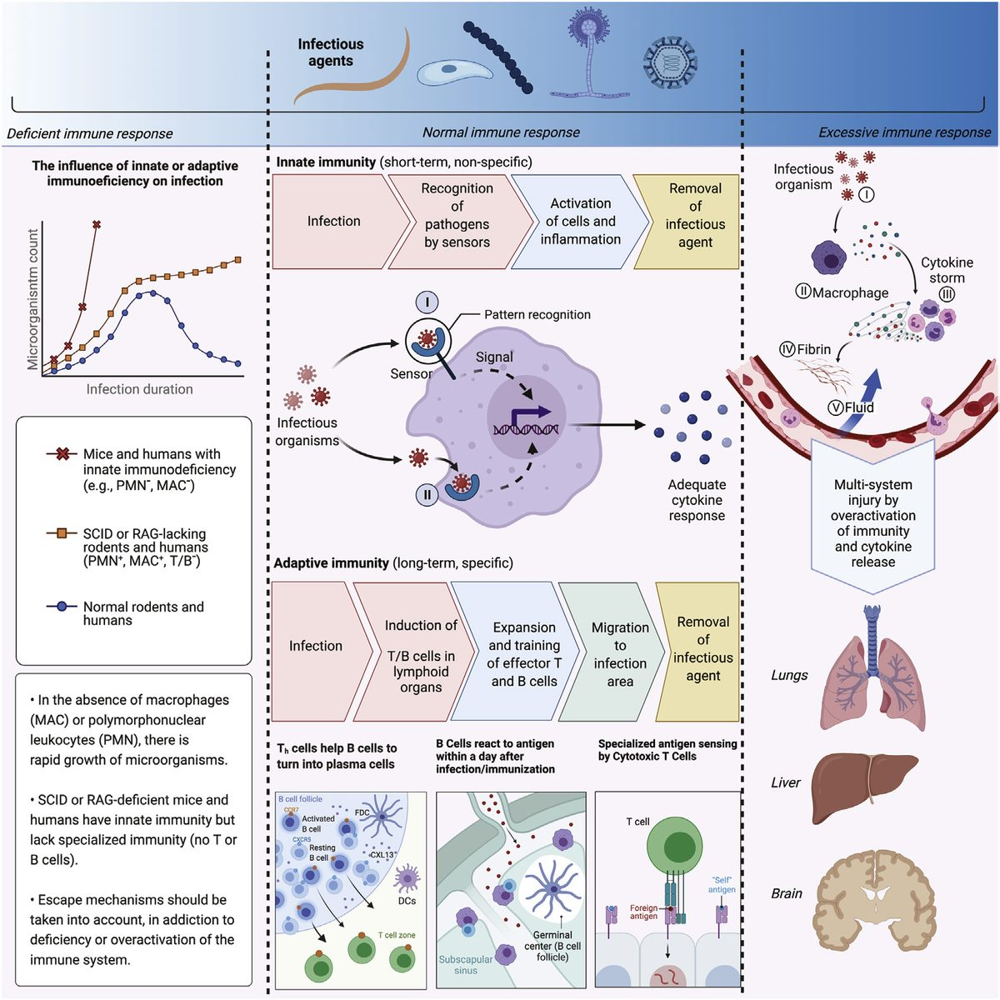
Infection and Immunity 497 Fig. 6.1 감염에 대한 선천 및 후천 면역 반응의 개요. 칼륨 이온(K+)의 유출을 유도함으로써 NLRP3 활성화를 촉발한다. 또한 B군 연쇄구균(group B Streptococcus)과 같이 세포막에 구멍을 형성하는 여러 세균성 독소(pore-forming toxins) 역시 세포 내 이온 불균형을 초래하여 NLRP3를 활성화할 수 있다. NLRP3 매개 이온 불균형은 클라미디아 뉴모니에(Chlamydia pneumoniae),26,27 황색포도상구균(Staphylococcus aureus),28 폐렴연쇄구균(Streptococcus pneumoniae)29 감염에서도 관찰된다. 반면 일부 세균에 의한 세포 활성화는 P2X7R과 무관하게 일어나며, 이는 여러 대안적 경로가 NLRP3 유도를 조절할 수 있음을 시사한다.30 식작용(포식작용) 이후 리소좀을 탈출하는 것은 다양한 병원체, 독소, 콜레스테롤 의존성 용혈소의 세포 내 이동 과정에서 핵심적인 단계이다. NLRP3 유도에 관한 리소좀 파열 모델(lysosomal rupture model)은 리소좀 파괴 시 카텝신 B(cathepsin B)와 같은 리소좀 효소가 세포질로 누출되어 NLRP3를
498 Clinical immunology 활성화한다는 가설이다.25 흥미롭게도 식균된 살아있는 세균이 분해되는 과정에서 리소좀으로부터 세포질로 방출된 원핵생물 메신저 리보핵산(mRNA) 역시 NLRP3를 유도할 수 있어,31 세균 RNA가 감염 질환 발생 중 NLRP3 인플라마좀의 주요 활성화 인자로 작용함을 보여준다. 미토콘드리아에서 방출되는 활성산소종(ROS)은 세포 스트레스 신호로 간주되며, 이 또한 NLRP3 인플라마좀을 활성화할 수 있다.32 활성산소종 모델(ROS model)은 미토콘드리아 손상 및 ROS 방출 후에 NLRP3가 활성화된다는 관찰 결과를 바탕으로 한다.33 이 작용은 막간 공간과 세포질 사이의 이온 수송을 매개하는 미토콘드리아 전압의존성 음이온 통로(VDAC)에 의존한다. 세균 감염으로 손상된 미토콘드리아에서 유래한 산화 미토콘드리아 DNA(mtDNA)는 NLRP3에 결합하여 직접 활성화할 수 있다.33 이 과정은 항세포자멸사 단백질인 B세포림프종 단백질-2(BCL-2)에 의해 음성적으로 조절되며, 이는 세포자멸사와 인플라마좀 유도 간의 밀접한 연결고리를 시사한다. NLRP3 인플라마좀이 미토콘드리아 기능장애를 감지한다는 개념은 미토콘드리아 손상과 염증성 질환 간의 연관성을 이해하는 데 중요한 통찰을 제공한다.34 NLRP3 활성화를 매개하는 새로운 조절 인자들도 규명되었다. 예를 들어 구아닐산결합단백질 5(GBP5)와 이중가닥 RNA 의존성 단백질 인산화효소(PKR)가 NLRP3 유도에 필수적인 역할을 하는 것으로 밝혀졌다. GBP5는 NLRP3의 피린 도메인과 상호작용하여 인플라마좀의 올리고머화를 촉진하는 것으로 나타났다.35 더욱이 무균성 염증(sterile inflammation)에서 관찰되는 것과 달리, GBP5는 생균에 의한 NLRP3 활성화를 특이적으로 매개한다. GBP5가 결핍된 감염 마우스는 야생형 마우스에 비해 세균 부하가 높고 질환이 더 빠르게 악화되었다. PKR의 경우, 대식세포가 NLRP3 리간드에 의해 활성화되면 자가인산화를 일으킬 수 있는 것으로 보고되었다. 활성화된 PKR은 NLRP3, NLRP1b, NLRC4, AIM2(absent in melanoma 2)에 결합할 수 있으며,36 세균 병원체를 포함한 다양한 리간드에 의해 자극받았을 때 NLRP3 인플라마좀을 유도하고 전염증성 사이토카인인 고이동성군 단백질 B1(HMGB1)의 분비를 촉진한다. 다수의 NLRP3 활성화 인자가 단백질 합성을 억제한다는 점에 착안하여, K+ 유출과 무관하게 리보솜 작용을 직접 차단하는 것만으로도 인플라마좀이 유도된다는 사실이 입증되었다.37 그러나 감염 과정에서 NLRP3 인플라마좀 활성화에 선행하는 PKR 인산화가 구체적으로 어떻게 유발되는지는 아직 명확하지 않다. 최근 연구에 따르면 아시네토박터 바우마니(Acinetobacter baumannii) 감염 시 면역세포 내 NLRP3 인플라마좀이 IL-1β 생성을 조절하여 마우스의 폐 염증을 유발하는 것으로 보고되었다. 연구 결과, 대식세포에서 Acinetobacter baumannii에 의해 촉발되는 IL-1β 합성에는 NLRC4가 아닌 NLRP3, ASC(apoptosis-associated speck-like protein containing a CARD), 카스파아제-1이 필수적인 것으로 확인되었다. 저해제 분석을 통해 P2X7R, K+ 유출, ROS 방출, 카텝신 방출 등 다양한 경로가 Acinetobacter baumannii에 반응한 대식세포의 IL-1β 생성에 기여함이 밝혀졌다. 실제로 Acinetobacter baumannii에 감염된 NLRP3 결핍 및 카스파아제-1/11 결핍 마우스의 기관지폐포세척액
Infection and Immunity 499 내 IL-1β 분비는 야생형 마우스에 비해 현저히 저하되어 있었다.38 또 다른 연구에서는 다양한 T도움(Th) 사이토카인 미세환경에서 NLRP3의 발현을 조사하고, 건선 환자 및 건강 대조군과 비교하여 아토피피부염 환자에서 아용혈성 α-독소(sublytic α-toxin) 자극에 대한 NLRP3의 기능을 분석하였다. 아토피피부염 병변부 피부는 건선 병변이나 정상 피부에 비해 NLRP3 및 카스파아제-1의 발현이 감소되어 있었다. 인간 일차 각질형성세포에서 IL-4, IL-5, IL-13은 NLRP3와 ASC를 하향 조절한 반면, 인터페론 감마(IFN-γ)는 NLRP3 발현을 증가시켰다. 단핵구의 경우, 카스파아제-1 발현은 Th2 사이토카인에 의해 감소하고 Th1 환경에 의해 촉진되었다. 리포테이코산(lipoteichoic acid)으로 프라이밍한 후 α-독소로 자극했을 때, 아토피피부염 환자 유래 단핵구의 카스파아제-1 의존성 IL-1β 분비는 건선 환자나 건강 대조군에 비해 현저히 손상되어 있었다.39 이 연구는 손상된 NLRP3 기능이 아토피피부염에서 황색포도상구균의 피부 집락 형성 및 감염이 만성 피부 염증으로 이어지는 기전을 설명할 수 있음을 시사한다.40 기타 NLRP 계열: NLRP1b, NLRP6, NLRP7, NLRP10, NLRP12 THP1 세포를 이용한 연구에서 NLRP1은 CARD8, ASC, 카스파아제-5, 카스파아제-1과 복합체를 형성하여 IL-1β를 가공하는 것으로 나타났다.41 NLRP1은 BCL-2 및 BCL-XL 매개 방식으로 무라밀다이펩타이드(muramyl-dipeptide)에 의한 IL-1β 방출과 연관되어 있다.42 또한 설치류의 NLRP1b는 숙주 세포질에서 탄저균(Bacillus anthracis) 치사독소(lethal toxin)의 수용체로 기능하여, 카스파아제-1 조절 하의 IL-1β 방출 및 파이롭토시스(pyroptosis, 세포염증사)를 유도한다.43 NLRP6는 공생 미생물총 조절 및 세균 감지 과정에 관여하는 것으로 보고되었다.44-46 NLRP6 결핍 마우스는 장 상피세포를 통한 IL-18 분비 감소에 이어 장내 미생물 구성이 변화하고 대장염에 대한 감수성이 증가하는 것으로 나타나 NLRP6 인플라마좀의 기능이 주목받기 시작했다.44 그러나 Anand 등45은 NLRP6 결핍 마우스가 리스테리아 모노사이토제네스(Listeria monocytogenes), 살모넬라(Salmonella), 대장균(E. coli) 감염에 저항성을 보였다는 점에서 NLRP6를 특정 세균 감염 시 선천 면역의 음성 조절자로 제시하였다. NLRP12(Monarch-1/PYPAF7)에 대한 초기 연구에서는 이 단백질이 인플라마좀 구성 요소로 작용할 수 있음이 입증되었다.47 이에 부합하여, NLRP12 인플라마좀은 세균 감염 동안 IL-1β 및 IL-18 분비의 중요한 매개자로서 전염증성 효과를 나타내는 것으로 설명되었다. 해당 연구에서 NLRP12 결핍 마우스는 변형된 예르시니아 페스티스(Yersinia pestis) 균주 감염을 제어하지 못했으며, 혈중 IL-1β 및 IL-18 농도 감소와 지라(비장) 내 세균 부하 증가를 나타냈다.48 한편, 덱스트란황산나트륨(DSS) 유도 대장염 모델에서는 NLRP12가 수지상세포(dendritic cells, DCs)의 동원을 매개함으로써 대장 염증 및 종양 발생을 억제한다는 연구 결과도 보고되었다. 흥미롭게도 Nlrp12-/- 수지상세포는 배출 림프절로 이동하는 능력이 현저하게 저하되어 있었다.49-51 이처럼 NLRP6와 NLRP12를 비롯한 기타 NOD유사수용체(NLRs)는 면역계에서 상황에 따라 다양한 역할을 수행할 수 있다. NLRP7은 설치류에서는 발현되지 않으나, 인간 NLRP7의 경우 siRNA 녹다운 시스템을 이용한 연구를 통해 세균 리포펩타이드(TLR-2 리간드)에 반응하는 인플라마좀 활성과 연관되어 있음이 확인되었다.52 또한 주요조직적합성복합체(MHC) I형 유전자의 전사 조절 인자인 NLRC553 역시 감염 시 인플라마좀 활성화에 관여할 수 있음이 제시되었다.54 세포질에 국재하는 단백질인 NLRP10은 침습성 세균 병원체인 시겔라 플렉스네리(Shigella flexneri)에 의해 유도되는 선천 면역 반응을 촉진한다. 연구자들은 NLRP10이 p38 및 NF-κB 활성화에 영향을 미쳐 상피세포와 일차 진피 섬유아세포에서 시겔라 감염에 의해 촉발되는 전염증성 사이토카인 방출에 관여함을 규명하였다. 이러한 작용은 NLRP10의 ATPase 활성과 PYD 소단위에 의존한다. NLRP10은 침습성 미생물의 감지에 기여하는 NLR 계열 단백질인 NOD1(nucleotide-binding oligomerization domain 1)과 상호작용하며, 두 단백질 모두 세포막의 세균 침입 부위로 동원된다. 또한 NLRP10은 RIP2, TAK1, NEMO 등 NOD1 하위 신호전달 경로 요소들과도 상호작용한다.55 NLRC4 녹농균(Pseudomonas), 레지오넬라(Legionella), 살모넬라(Salmonella), 예르시니아(Yersinia), 리스테리아(Listeria) 등의 세균은 NLRC4 활성화를 통해 카스파아제-1 활성화 및 IL-1β/IL-18 생성을 유도할 수 있다.39,56-58 NLRC4는 특히 세균의 기능성 제3형 또는 제4형 분비 시스템(T3SS/T4SS)이나 플라겔린(flagellin)에 의해 특이적으로 활성화된다.57,58 살모넬라 티피무리움(Salmonella typhimurium)은 NLRC4 인플라마좀을 통해 카스파아제-1을 유도할 수 있는 것으로 보고된 최초의 세균 중 하나이다. 플라겔린 단량체를 암호화하는 fliC 및 fljB 유전자가 결손된 S. typhimurium 돌연변이체는 NLRC4를 통해 카스파아제-1을 자극하지 못한다.58 리간드는 NLR 계열에 속하는 신경세포 세포자멸사 억제 단백질(NAIP)의 특정 아형에 직접 결합하여 NLRC4 인플라마좀을 활성화할 수 있다. 구체적으로 NAIP5/NAIP6는 플라겔린과 상호작용하는 반면, NAIP2는 Salmonella PrgJ 및 Burkholderia BsaK와 같은 T3SS 막대 단백질 구성 성분과 반응한다.59 NLRC4/NAIP5 인플라마좀 자극은 복강 상주 대식세포로부터의 에이코사노이드(eicosanoid) 분비와 직접적으로 연관되어 있다.60 장내 단핵 포식세포에서 NLRC4는 공생균이 아닌 외래 병원성 세균에 대항하는 장내 전염증성 방어 과정에 관여한다.61 그러나 장내 미생물 조성을 크게 교란시키는 항생제 치료 후 장내에 병원성 대장균이 집락을 형성하는 경우, NLRC4 활성화는 오히려 숙주에게 해로울 수 있다.62 PKR에 의한 NLRP3 활성화와 유사하게, NLRC4는 단백질 인산화효소 C δ(PKCδ)에 의해 Ser533 잔기가 인산화된 후 활성화될 수 있다.63 NLRC4는 IL-1β 및 IL-18 분비를 동반하지 않는 다른 방어 기전과도 연관되어 있는데, 카스파아제-7 활성화 하위에서 일어나는 레지오넬라 뉴모필라(Legionella pneumophila)의 세포 간 증식 억제 및 분해,64 그리고 NLRC4 의존성 세포사멸65 등이 대표적이다. 인플라마좀에 의한 카스파아제-1의 활성화는 카스파아제-1 의존성 전염증성 세포사멸의 일종인 파이롭토시스(pyroptosis)를 유발한다. NLRC4 의존성 파이롭토시스는 Salmonella, Legionella pneumophila, Francisella tularensis 등 여러 세균 감염에 반응하여 일어난다.66 이러한 세포사멸 과정은 숙주 방어에서 중요한 역할을 수행한다. 플라겔린을 지속적으로 발현하는 S. typhimurium에 의해 유도된 NLRC4 매개 카스파아제-1 활성화는 IL-1β 및 IL-18과 무관하게 항균 방어를 유도할 수 있는데,65 이는 염증성 세포사멸 과정에서 호중구가 동원되어 주변 조직으로부터 병원체 제거를 촉진하기 때문이다. 아울러 NLRP3와 NLRC4는 살모넬라 감염에 대항하여 적절한 면역 반응을 확립하는 데 상호 협력한다.66
Infection and Immunity 501 일부 세균은 감염 후 여러 NLR(NOD-like receptor) 또는 AIM2(Absent in melanoma 2)에 대한 리간드를 포함하고 있어 다양한 인플라마솜(inflammasome, 염증복합체)을 활성화할 수 있다. 향후 연구는 병원체에 대한 최적의 숙주 면역반응을 위해 인플라마솜 구성 요소들이 어떻게 상호 협력하는지 규명하는 데 집중해야 한다. 세균 집단 역학(bacterial population dynamics)에 따르면, NAIP/NLRC4 인플라마솜은 살모넬라 티피무리움(Salmonella typhimurium)이 장관에서 배출 림프절(draining lymph node)로 이동하는 과정을 특히 제한하는 것으로 나타났다. 이는 장 상피세포 내 NAIP/NLRC4 경로에 기인한 것일 수 있는 반면, S. typhimurium은 식세포(phagocyte)의 NAIP/NLRC4에 의한 제한은 회피한다. NLRP3와 카스파아제-11(caspase-11) 역시 S. typhimurium이 점막을 통과하여 림프절로 이동하고 전신으로 파종(dissemination)되는 것을 억제하지 못한다. 장 상피세포가 NAIP/NLRC4 방어를 주도할 수 있는 능력은 장 상피세포에서의 높은 NAIP/NLRC4 발현량과, 상피를 공격하는 S. typhimurium이 NAIP1-6 리간드인 편모(flagella) 및 3형 분비계-1(type-III-secretion-system-1)을 반드시 생성해야 한다는 점으로 설명할 수 있다. 영상 연구에서는 이 두 리간드 모두 장 상피세포를 통과할 때 발현이 하향 조절되는 것으로 관찰되었다.67
Absent in melanoma 2 (AIM2)
AIM2는 세포질 내 이중가닥 DNA(dsDNA) 결합 수용체로, 병원체 존재 시 인플라마솜을 형성하고 카스파아제-1(caspase-1)을 활성화하는 것으로 알려져 있다.26 리스테리아 모노사이토제네스(Listeria monocytogenes) 및 프란시셀라 툴라렌시스(Francisella tularensis)에 감염된 AIM2 결핍(AIM2-/-) 설치류 유래 골수유래대식세포(BMDM)는 pro-caspase-1, pro-IL-1β 및 pro-IL-18의 프로세싱(발달)이 결여되어 있었으며, AIM2 결핍 설치류는 Francisella tularensis 피하 감염에 더 취약하여 혈청 IL-18 농도의 감소와 상관관계를 나타냈다.68-70 최근 연구에서는 황색포도상구균(Staphylococcus aureus)에 의한 중추신경계(CNS) 감염 시 인플라마솜 활성의 기능적 중요성이 보고되었다. AIM2 녹아웃 및 ASC 녹아웃 설치류 간의 유사한 질환 알고리즘을 바탕으로 AIM2의 관여 가능성이 제시되었다. IL-1β 외에도 IL-6, C-X-C 케모카인 리간드 1(CXCL1), CXCL10 및 C-C 케모카인 리간드 2(CCL2)와 같은 다른 주요 염증 매개물질들이 AIM2 및 ASC 녹아웃 생쥐의 CNS에서 현저히 감소하였는데, 이러한 조절인자들은 분비를 위해 인플라마솜에 의한 가공(processing) 과정을 필요로 하지 않는다는 점에서 IL-1β의 자가분비/방분비(autocrine/paracrine) 기능을 시사한다. 이러한 연구들은 급성 CNS Staphylococcus aureus 감염 동안 IL-1β 분비를 매개하고 생존율을 유지하는 주요 분자 플랫폼으로서 AIM2 인플라마솜의 역할을 보여준다.71
TLR
현재의 모델에서는 선천 면역(자연 면역) 세포가 톨유사수용체(TLR) 및 기타 패턴인식수용체(PRR)를 통해 병원체를 감지하고, 사이토카인 및 항균 매개체(예: 활성산소종[ROS], 일산화질소[NO])를 신속히 분비하여 대응한다고 가정한다. 몇 가지 주요 세균 감염에서 TLR의 역할은 다음과 같다.
결핵균(Mycobacterium tuberculosis)에 의해 유도되는 종양괴사인자(TNF) 방출은 시험관 내(in vitro)에서 TLR-2 의존적이다.72 TLR-2는 TLR-1 및 TLR-6과 함께 마이코박테리아의 지단백(lipoprotein), 리포만난(lipomannan), 아라비노스 말단 리포아라비노만난(ara-LAM) 및 포스파티딜-미오-이노시톨 만노사이드(PIM)에 대한 반응을 조절한다. 정제된 대부분의
502 Clinical immunology 마이코박테리아 성분이 TLR-2를 통해 작용하지만, TLR 발현이 증가하면 세포는 MyD88 의존적 방식으로 TLR-2 또는 TLR-4를 통해 균체 전체(whole bacilli)에 반응할 수 있게 된다.31,32 그럼에도 불구하고, 정상 농도의 TLR을 발현하는 1차 마우스 대식세포는 TLR/MyD88 경로와 무관하게 손상되지 않은 마이코박테리아를 감지한다.33 또한 마이코박테리아 DNA는 TLR-9를 유도하는 자극성 CpG 모티프를 포함하고 있다.27 마이코박테리아 성분에 의한 TLR 유도는 TNF 및 IL-12와 같은 전염증성 사이토카인의 방출과 설치류에서 강력한 항결핵균 활성을 나타내는 부산물인 NO의 방출을 초래한다.34,36 이 결과들은 종합적으로 TLR 신호전달의 장애가 Mycobacterium tuberculosis 감염의 악화로 이어질 수 있음을 시사한다.
살모넬라(Salmonella)는 최소 4가지의 TLR 유도 인자를 지닌다. 지질다당류(LPS), 세균 지단백, 플라겔린(flagellin), CpG DNA가 각각 TLR-4, TLR-2, TLR-5, TLR-9를 유도한다. 대식세포 및 수지상세포(DC)와 같은 세포는 이러한 TLR을 통해 살모넬라를 감지하고, 시험관 내에서 살모넬라 반응에 관여하는 사이토카인의 생성을 활성화할 수 있다. 혈액 순환계로 살모넬라나 LPS를 직접 주입하면 쇼크가 유발된다. 이러한 발견은 LPS가 살모넬라의 주요 독력 인자(virulence element)라는 가설로 이어졌다. TLR-4 대립유전자에 돌연변이를 지닌 C3H/HeJ 설치류는 야생형 TLR-4를 지닌 근연 관계의 C3H/HeN 설치류에 비해 LPS나 살모넬라의 복강 또는 정맥 내 투여에 대해 더 높은 내성을 보인다.46 실제로 개체의 LPS 감수성에 영향을 미칠 수 있는 TLR의 다양한 유전적 변이의 중요성을 밝혀낸 것은 매우 결정적이었다.73
포도상구균(Staphylococci)은 여러 TLR 유도 물질을 보유한다. 세균 지단백과 리포테이코산(lipoteichoic acid)은 TLR-2/6 활성화제로 작용하는 반면,74-76 CpG DNA는 TLR-9를 통해 기능한다. 또한 NOD2는 펩티도글리칸 모티프를 인지하여 황색포도상구균(Staphylococcus aureus)을 감지한다.26
기타 기전 (Other mechanisms)
침입 후 세균의 면역 회피 (Immune evasion by bacteria after invasion)
숙주를 침범한 후, 세균은 초기 액포(early vacuole) 형성 회피, 초기 및 후기 엔도솜(내포소체) 과정 방해, 외포작용(exocytic procedures) 변경 등 면역계를 회피하는 다양한 기전을 사용한다. 여기에서는 두 가지 간단한 예를 제시한다.
분해 효소가 풍부한 엔도솜 구획과의 융합으로 인해 형성되는 불리한 환경을 피하는 한 가지 방법은, 신생 액포(nascent vacuole)를 신속하게 벗어나 세포질을 공격하고 액틴 세포골격을 활용하여 세포 내 이동을 촉진하는 것이다. 이러한 방식은 유비저(melioidosis)의 원인균인 버크홀데리아 슈도말레이(Burkholderia pseudomallei), 리스테리아 모노사이토제네스(Listeria monocytogenes), 리케차 리케치(Rickettsia rickettsii), 마이코박테리움 마리눔(Mycobacterium marinum), 그리고 시겔라 플렉스네리(Shigella flexneri)에 의해 사용된다. Shigella flexneri는 침입 플라스미드 항원 B(invasion plasmid antigen B, IpaB)를 생성하는데, 이는 숙주 세포 침입에 중요한 역할을 하며 액포막을 뚫고 침투하는 데 사용되는 용해 활성을 나타낸다.77
신생 액포와 초기 엔도솜 간의 반응은 침입 후 5–20분에 일어나며 일시적이다. 그러나 결핵균(Mycobacterium tuberculosis)과 마이코박테리움 아비움(Mycobacterium avium)을 함유한 액포는 후기 엔도솜 및 리소좀 구획으로 성숙하지 않는 초기 엔도솜 소기관의 특성을 보인다. 구체적으로,
Infection and Immunity 503 마이코박테리아를 포함하는 액포는 소낭 수송(vesicular trafficking)과 파고사체(phagosome, 식포) 성숙의 매개체인 후기 엔도솜 GTP가수분해효소(GTPase) RAB7 및 초기 엔도솜 항원 1(EEA1)을 특이적으로 배제하면서 초기 엔도솜 GTPase RAB5를 유지한다.78-80
스피로헤타 세균 (Spirochetal bacteria)
렙토스피라 속(Leptospira spp.) 세균은 전 세계적으로 소외되고 재유행하는 인수공통감염병인 렙토스피라증(leptospirosis)을 일으킬 수 있다. 이 병원체에 감염되면 급성의 잠재적으로 치명적인 질환이 발생하거나 신장에 세균이 무증상으로 만성 정착할 수 있다. 두 질환 아형 모두 숙주 면역반응을 회피하는 렙토스피라의 능력을 보여준다.81
렙토스피라의 두드러진 운동성은 세균의 양극에 위치하여 페리플라즘(periplasm, 외막주위공간) 내로 뻗어 있는 두 개의 비전형적인 “내편모(endoflagella)”로 나타난다. 이들의 나선형 형태는 내막 근처에 얇은 층을 이루는 펩티도글리칸 그물망(mesh)에 기인한다. 막에는 지단백이 풍부하다.82 다른 스피로헤타와 달리 렙토스피라의 외막은 LPS로 둘러싸여 있다.83
살아있는 렙토스피라는 TLR-5 인식 또한 회피한다. 그러나 항균 펩티드에 의해 렙토스피라가 사멸되면, 렙토스피라 플라겔린은 설치류 TLR-5를 통해서는 인식되지 않지만 인간 TLR-5에 의해 인식된다.84 렙토스피라는 인간과 설치류 모두에서 NLRP3 인플라마솜을 활성화한다. 동물 실험에서 인플라마솜 활성화는 위험 단백질(danger protein)인 Na+/K+ 펌프의 기능 저하와 결합하여, 각각 TLR-4 및 TLR-2를 통한 LPS와 지단백 신호전달을 활용하는 2단계 신호전달을 필요로 한다.85 인간의 경우 NLRP3 유도는 세균에 의해 유도된 ROS에 의해 조절된다.86 마지막으로, 렙토스피라의 펩티도글리칸은 펩티도글리칸에 단단히 결합되어 있는 지단백 LipL21로 인해 NOD1 및 NOD2를 통한 숙주의 감지를 회피한다. 또한, 설치류 NOD1과 달리 인간 NOD1은 LipL21과 무관하게 렙토스피라 펩티도글리칸을 인식할 수 있다.87
후천 면역(적응 면역) (Adaptive immunity)
세포성 면역 (Cellular immunity)
세균 자극에 대한 후천 면역반응(적응 면역반응)은 항원제시세포(APC)로 작용하는 수지상세포(DC) 및 단핵구가 미감작 T세포(naïve T cell, Th0 세포)에 세균 항원을 제시하는 과정을 필요로 한다. 이를 위해 APC의 표면 요소인 MHC class II 또는 인간백혈구항원(HLA)-DR 및 분화벽(cluster of differentiation, CD)40이 Th0 세포의 공동자극(공동활성화) 인자인 CD28 및 CD40 리간드에 각각 부착된다. 이러한 결합은 CD80 및 CD86과 같은 다른 공동활성화 인자가 APC 세포막에 생성되도록 촉발하여 Th0 세포로의 항원 제시를 촉진한다. 이 과정에서 Th0 세포는 기능적으로 상이한 네 가지 범주의 T세포로 분화한다. • Th1: TNF-α, IL-2, IFN-γ를 분비하며, 세균의 식작용(포식작용)을 촉진하는 전염증성 반응을 준비(프라이밍)한다. • Th2: IL-4, IL-6, IL-10을 분비하며 항염증성 반응을 유도한다. • Th17: IL-17을 분비하여 호중구를 동원하고 최적의 식작용을 유도한다. • 조절 T세포(Treg): 항염증성 반응을 유도한다.
504 Clinical immunology 기능적으로 고유한 이러한 아형들로의 Th0 분화는 이종이량체 사이토카인인 IL-12/IL-23, IL-27, IL-6, 그리고 형질전환증식인자(TGF)-β에 의해 조절된다. IL-12와 IL-23은 p40 펩티드를 공유하는 이량체 단백질이다. p35 펩티드는 IL-12에 존재하며, p19 펩티드는 IL-23에 존재한다. IL-12/IL-23은 DC와 단핵구에 의해 분비된다. IL-12는 Th1 반응을 촉진한다. IL-23은 IL-12를 보조하며 면역계를 Th17 반응 쪽으로 전환시킨다. IL-27은 전염증성 Th17 반응을 억제함으로써 작용한다. IL-6은 다양한 기능을 갖는다. 전염증성 선천 면역반응과 항염증성 Th2 반응에 모두 관여한다. 면역 항상성은 Th17 세포와 Treg 사이의 균형을 매개한다.
구체적으로, Th0 세포가 Th17 세포로 분화하기 위해서는 레티노이드 관련 고아 수용체-γt(retinoid-related orphan receptor-γt, ROR-γt) 및 레티노이드 관련 고아 수용체(ROR)-α와 같은 고아 핵 수용체의 유도가 필요하다. 이는 TGF-β와 IL-6의 복합적인 작용을 통해 매개된다. IL-6이 없는 상태에서 세포 미세환경에 TGF-β가 존재하면 전사인자 Foxp3가 유도되어 Th0 세포가 Treg으로 분화하게 된다. 반대로, IL-6이 존재하면 Foxp3의 유발 및 이에 따른 Treg으로의 분화가 억제된다.2,88 동물 연구에 따르면 ROR-γ는 근육, 뇌, 심장, 피부에서 발현된다. 또한 ROR-γ 동족체(homologue)의 발현 분석 결과, 세포외 세균에 대한 방어에서 세포 유형에 따른 역할을 담당할 수 있음이 입증되었다.89
체액성 면역 (Humoral immunity)
세균 감염의 임상 증상은 미생물 자체의 존재보다는 세균이 방출하는 독성 분자에 기인할 수 있다. 이러한 독소에 대한 항체는 세균 자체를 직접 표적화하지 않고도 감염에 대한 필수적인 방어를 가능하게 한다. 고전적인 예로는 치명적인 외독소를 방출하는 디프테리아균(Corynebacterium diphtheriae)이 있다. 비교적 최근의 예로는 장독소(엔테로톡신, 독소 A)와 세포독소(사이토톡신, 독소 B)를 모두 방출하는 클로스트리디움 디피실(Clostridium difficile)이 있다. 항체에 의한 수동 면역치료(면역요법)는 재발을 감소시킬 수 있다. 또한 독소 A와 B에 대한 높은 항체 수치는 재발 감소와 상관관계를 보인다.
세균은 조직 내 파종을 촉진하는 효소와 같은 독력 인자를 보유할 수 있다. 이러한 효소를 무력화하는 숙주 항체는 세균 감염의 임상 경과에 긍정적인 영향을 미칠 수 있다. 독소 및 효소의 비활성화는 항체와 표적 분자 또는 기질 간의 직접적인 경쟁에서 기인할 수 있다. 경쟁적 기전에는 독소나 효소의 정상적인 역할에 부적합한 구조를 형성하거나 유도하는 것도 포함될 수 있다. 또한 외독소 비활성화 항체에 의해 제공되는 보호 효과는 Fcγ 수용체에 의존할 수 있다.90
기타 기전 (Other mechanisms)
패혈증 (Sepsis)
패혈증은 대부분의 중환자실에서 주요 사망 원인이다. 최근의 한 메타분석에 따르면 표준 치료를 받은 중증 패혈증 환자의 28일 사망률은 33.2%에 달했다.91 패혈증에 대한 면역반응의 이해가 진전됨에 따라
Infection and Immunity 505 보다 효과적인 치료법 개발에 도움이 되고 있다. 패혈증의 면역반응은 과염증기(hyper-inflammatory stage)에 이어 면역억제기(immune-repressing stage)가 뒤따르는 것이 특징이다. 환자들은 저염증기(hypo-inflammatory phase) 동안 침입한 세균을 물리치지 못하고 기회감염 미생물에 취약해진다. 패혈증의 면역반응은 동반질환(예: 암, 심장질환, 당뇨병), 미생물 접종량(inoculum size), 병원체의 독력과 같은 요소들에 의해 결정된다. 패혈증으로 유발되는 면역억제에 기여하는 과정으로는 면역세포의 세포자멸사적(apoptosis) 제거, 조절 T세포(Treg) 및 골수유래 억제세포(MDSC)의 증가, 그리고 세포 소진(cellular exhaustion) 등이 있다. 세포 소진은 비정상적인 기능, 프로그램 세포사멸 단백질(PD)-1의 증가, T림프구에서의 IL-7 수용체 생성 감소로 정의되는 표현형이다.
구체적으로 살펴보면, 패혈증 발병 초기 며칠 동안은 전염증 및 항염증 기전이 동시에 유도되지만, 대개 과염증 반응이 임상적 양상을 지배한다. 과염증기는 “사이토카인 폭풍(cytokine storm)”으로 명명되어 왔으며, 이는 TNF-α, IL-1β, IL-6과 같은 사이토카인 함량이 유해한 수준까지 상승하는 것으로 정의된다. 이러한 반응을 약화시키기 위해 선천 면역세포와 후천 면역세포 모두 세포자멸사에 의해 신속하게 제거된다. 이 단계에서 환자들은 면역학적 항상성을 회복하기 위한 통제된 항염증 반응을 겪을 수 있다. 그러나 일부 환자는 조절되지 않는 항염증 반응을 겪으며 저염증기로 진입할 수 있다. 저염증기가 장기화되면 세포 소진으로 이어질 수 있다. 이 단계에서 환자들은 미생물 병원체에 대한 적절한 면역반응을 지휘하지 못하여, 주로 무독성 및 기회감염 병원체에 의한 병원체 재활성화와 2차 감염이 초래된다.92
중추신경계 감염 (Central nervous system infections)
중추신경계(CNS)의 세균 침범은 사망률이 상당한 위중한 질환이며, 생존자에게도 비가역적인 신경학적 손상을 남길 수 있다. CNS 교세포(glial cell) 집단의 대부분을 차지하는 성상교세포(astrocyte)는 감염 중 CNS 내 선천 및 후천 면역반응을 매개하며, CNS 항상성과 신경원 작용을 유지하는 데 도움을 준다. 항원 감지 후 성상교세포는 선천 면역반응을 활성화하고 후천 면역반응을 유도하여 말초 면역세포를 동원한다. 수막(meninges)의 림프계를 통한 CNS와 말초 면역계의 상호작용은 CNS가 지속적인 면역학적 감시 하에 있음을 시사한다.93
이 면역 네트워크의 순찰 APC는 CNS로 침입한 병원체와 조우한 후 경부 림프절(cervical lymph node)로 진입하여 미감작 T세포의 분화를 유도할 수 있다. 활성화된 T세포는 세포간 접착 분자 1(ICAM-1) 및/또는 혈관 세포 접착 단백질 1(VCAM-1)의 도움을 받아 혈액뇌장벽(BBB)을 통과할 수 있다.94 이러한 접착 분자들은 성상교세포-림프구 간의 상호 연결을 도우며, 이는 시험관 내에서 성상교세포가 IFN-γ, TNF-α, IL-1β 또는 LPS와 같은 TLR 리간드와 접촉할 때 촉진된다.95 이어서 동원된 T세포는 CNS 실질(parenchyma)로 진입하여 성상교세포 및 미세아교세포(microglia)와 같은 상재성 APC에 의해 재활성화된다.96
506 Clinical immunology 신경교세포는 TLR을 통해 LPS나 세균 DNA와 같은 세균 분자를 감지함으로써 CNS 세균 감염에서 자신의 역할을 발휘한다.97 CNS 세균 감염에서 가장 잘 연구된 수용체는 TLR-2이다. 그람양성균인 황색포도상구균(Staphylococcus aureus)에 노출되면 1차 마우스 성상교세포는 TNF-α 분비를 통해 TLR-2 생성을 증가시킨다. 또한 세포는 성상교세포를 자극하는 강력한 항균 유리 라디칼인 NO98와 함께 IL-1β, CCL2를 생성한다.97 이러한 기전은 TLR2-/- 성상교세포에서 둔화되는데, 이는 이 과정이 성상교세포 TLR-2 경로에 의해 조절될 수 있음을 나타낸다.98
또한 TLR-2는 수막염을 유발할 수 있는 세균인 돼지연쇄상구균(Streptococcus suis)을 감지할 수 있다.99 TLR-2 신호전달은 Streptococcus suis에 대한 반응으로 성상교세포가 활성화되는 데 관여하는 것으로 밝혀졌다. 1차 뮤린 성상교세포는 Streptococcus suis를 세포 내로 섭취(내재화)하지는 않지만, 세균과의 접촉은 성상교세포 TLR-2 발현을 촉진한다. 이는 성상교세포의 유도 및 전염증성 인자의 방출을 동반한다. 더욱이 Streptococcus suis와의 접촉은 TLR-6 전사체 수치를 증가시키는 반면, TLR-1 발현은 변화시키지 않는다. TLR-1과 TLR-6은 TLR-2와 함께 이종이량체를 형성한다. TLR-2/TLR-1 및 TLR-2/TLR-6 신호전달이 특이적인 세포 반응을 유발하므로, TLR-6 발현의 특이적 증폭은 성상교세포의 염증 반응을 형성할 수 있다.100
성상교세포의 TLR-2는 신경브루셀라증(neurobrucellosis) 및 신경학적 장애를 일으킬 수 있는 그람음성균인 브루셀라(Brucella)에 의한 CNS 침범에서도 역할을 할 수 있다.101 신경브루셀라증의 임상-방사선학적 상관관계는 명백한 임상 증상과 동반된 정상 방사선 소견에서부터 염증 반응, 면역학적 반응 또는 혈관 손상을 나타내는 다양한 영상 이상 소견(예: 뇌실주위 및 피질하 영역의 백질 병변)에 이르기까지 다양하다는 점에 유의해야 한다.102,103 브루셀라는 내피세포 외에도104 성상교세포를 유도하고 사이토카인, 케모카인 및 기질금속단백분해효소(MMP)의 분비를 유발한다.105 브루셀라 멜리텐시스(Brucella melitensis)에 감염된 원숭이를 대상으로 한 연구 결과에 따르면 피질하 백질 부위에서 TLR-2 면역 감수성과 TLR-2 양성 성상교세포의 수가 증가하였다. 이는 성상교세포의 비대 및 복잡한 세포 분지 형성을 동반하였다.106 브루셀라 감염에 반응하여 관찰되는 성상교세포 변화의 중요성은 아직 명확히 밝혀지지 않았다. 더 자세한 내용은 Li 등의 문헌 고찰을 참조하기 바란다.107
CNS 감염에 대한 면역반응 중 흥미로운 시나리오는 개두술(craniotomy/craniectomy) 환경에서 나타난다. 개두술 후 감염 발생률은 1%–3%이며, 그 중 약 절반이 황색포도상구균(Staphylococcus aureus)과 관련이 있다. 이러한 감염은 생체막(바이오필름, biofilm)의 항생제 내성과 CNS의 특수한 면역학적 특징으로 인해 약물 치료에 중대한 난제를 야기한다. 선행 연구들은 Staphylococcus aureus 개두술 후 감염 동안 선천 면역반응의 주요한 역할을 입증하였다. 설치류를 대상으로 수행된 동물 연구에서는 개두술 바이오필름 감염 시 Staphylococcus aureus 감염에 대한 방어에서 TLR-2 및 그 어댑터 단백질인 MyD88의 역할을 확인하였다. 주목할 점은 Staphylococcus aureus 개두술 감염 시 유발되는 면역반응이 말초 바이오필름 감염과 상이하다는 점이며, 이는 Staphylococcus aureus 바이오필름-백혈구 간 상호작용에서 틈새 특이적(niche-specific) 결정 인자의 역할을 시사한다.108
Infection and Immunity 507
마이크로RNA
진화 과정에서 염기서열이 보존되어 온 작은 비암호화 RNA(non-coding RNA)인 마이크로RNA(microRNA)는 다양한 세포에서 합성되며, 정상 생리 기전 및 병태생리 기전 모두에서 중추적인 역할을 담당한다. 최근 연구에 따르면 마이크로RNA는 염증 반응, 조직 재구성, 세포 침윤, 선천 면역(자연 면역) 및 후천 면역(적응 면역)을 조절함으로써 세균 감염에서 결정적인 역할을 수행하는 것으로 밝혀졌다. 여기서는 헬리코박터 파일로리(Helicobacter pylori)를 대표적인 예로 다루며, 다른 병원체에 대한 상세한 정보는 Zhou 등의 최근 종설 논문(109)을 참조하기 바란다.
위상피세포가 H. pylori에 감염되면 let-7,(110-112) microRNA-30b,(113) microRNA-210,(114) microRNA-1289,(115) microRNA-4270,(116) microRNA-152/microRNA-200b,(117) microRNA-155,(118-120) microRNA-16,(121) microRNA-376,(122) microRNA-146a(123) 등 다양한 마이크로RNA의 발현에 변화가 나타난다. 위염, 선암종(위선암) 발생 및 면역관문 조절에 관여하는 수많은 마이크로RNA 중에서도 microRNA-155는 특히 주목할 만하다. microRNA-155의 발현 증가는 만성 위염의 주요 바이오마커로 간주되며, 환자가 위암 발생에 더 취약해지도록 만든다. microRNA-155는 만성 위염 부위에 존재하는 B림프구와 T림프구 및 단핵구/대식세포에서 두드러지게 생성된다. 특히, microRNA-155는 MLH1, MSH2, MSH6을 비롯한 일부 불일치 복구(mismatch repair, MMR) 유전자의 발현을 억제하는 것으로 밝혀졌다. 인간 DNA에 존재하는 MMR 유전자 염기서열은 세포 복제 과정에서 발생하는 오류를 탐지하고 교정하는 수선 장치로 기능한다.(124)
면역관문(immune checkpoint)은 면역계가 자가항원을 무차별적으로 공격하지 못하도록 방지하는 면역계 조절 인자이다. 이는 자가면역 반응을 억제하는 데 필수적이지만, 역으로 암세포를 제거하거나 억제하는 면역계의 능력을 저하시키기도 한다. 암세포는 면역 저항의 주된 기전으로 이러한 면역관문 경로를 악용한다. 면역관문이 유도되려면 리간드-수용체 상호작용이 필요하므로, 이러한 면역관문을 차단하면 항종양 방어 작용이 지속될 수 있다. 나아가 이러한 접근법은 치료적 항종양 면역을 유도하는 가장 강력한 방법 중 하나로 꼽힌다.(125)
종양 침윤 microRNA-155 결핍 CD8+ T세포에서 면역관문 단백질을 억제하는 항체를 투여하면 탈억제된 microRNA-155 표적들의 발현이 회복되는데, 이는 microRNA-155가 중첩된 경로들을 조절하여 항종양 면역을 증강할 수 있음을 시사한다. 따라서 microRNA-155의 과발현으로 인해 나타나는 위 병리적 변화는 임상적으로 중요한 가치를 지닌다.(126) 조직학적 분석 결과, H. pylori 양성 환자의 위점막 조직 검체에서 microRNA-155 농도가 더 높게 측정되었다. BIC/microRNA-155 프로모터 내에서 NF-κB 및 활성단백질-1(AP-1) 결합 부위가 확인되었으며, 실제로 이들 전사인자는 위상피세포에서 H. pylori 감염 후 microRNA-155가 활성화되는 데 필수적이다. 또한 H. pylori에 감염된 T세포에서는 Foxp3에 의해서도 microRNA-155의 발현이 영향을 받을 수 있다.(119) 골수 유래 대식세포(BMDM)의 NF-κB 경로 외에도, microRNA-155 증가는 H. pylori의 IV형 분비계(type IV secretion system, T4SS)에 의존하여 유도되기도 한다.(118) 종양단백질
508 Clinical immunology
p53 유도 핵단백질 1(TP53INP1), 테트라스파닌 14(Tspan14), 리핀 1(Lpin1), 포르볼-12-미리스테이트-13-아세테이트 유도 단백질 1(Pmaip1), 단백질 키나아제(cAMP 의존성, 촉매) 억제제 알파(PKIα), IκB 키나아제 ε(IKK-ε), Sma 및 Mad 관련 단백질 2(SMAD2), Fas 관련 사멸 도메인 단백질(FADD) 등을 포함하여 microRNA-155의 영향을 받는 특정 mRNA들은 세포자멸사 촉진 및 면역 반응과 연관되어 있다.(127)
마이크로RNA는 포식 회피(식작용 탈출)에도 관여하여 H. pylori가 인간 숙주 내에서 장기간 공존할 수 있는 기전을 설명해 준다. 최근 보고에 따르면 H. pylori 감염 중 포식세포는 세균을 제거하지 못하고 오히려 높은 H. pylori 균량을 보유하게 된다. H. pylori는 microRNA-4270을 통해 면역 수용체 CD300E의 발현을 조절함으로써 대식세포의 항원제시 기능을 방해하는 것으로 나타났다. 이 세포들 내부에서 H. pylori는 포식소체(phagosome)들의 동종 융합(homotypic fusion)으로 형성된 거대 구조물인 ‘메가솜(megasome)’ 내에 잔존하여 포식 분해를 회피한다. 가능한 기전 중 하나는 microRNA-4270의 작용에 의해 매개된다. microRNA-4270은 발현이 가장 크게 증가하는 유전자이자 H. pylori 감염에 의해 생성이 유도되는 면역 수용체 CD300E를 표적으로 삼는다. CD300E는 대식세포의 전염증성 작용을 촉진하고, 식작용 자체는 변화시키지 않으면서 세포막에서의 MHC class II 발현 및 항원제시에 영향을 미친다. 이러한 작용은 효과 T세포가 대식세포의 살균 기전을 활성화하는 것을 차단함으로써 세균이 생존할 수 있는 환경을 조성한다.(116)
H. pylori 감염은 위 조직에서 microRNA-375의 발현을 억제한다. microRNA-375의 감소는 야누스 키나아제(JAK)2-신호전달 및 전사활성화인자(STAT)3 신호전달을 촉발하여 IL-6, IL-10 및 혈관내피성장인자(VEGF)의 분비를 유도한다. 이는 수지상세포(DC)의 미성숙 분화와 위암 발생으로 이어진다.(122)
진단
효과적이고 표적화된 치료를 위해서는 세균 감염의 정확하고 신속한 조기 진단이 필수적이다. 그러나 배양을 통한 진단 등 일상적인 미생물학적 검출법은 때때로 민감도가 충분하지 않거나 시간이 오래 걸려 임상 현장에서 즉각 활용하기 어려운 경우가 있다. 면역계는 진화 과정을 거치며 최적화되어 왔기 때문에, 높은 민감도와 특이도로 다양한 범위의 병원체를 신속하게 인식할 수 있다.(5) 여기서는 여러 세균 감염 상황에서 면역측정법(immunoassay)의 적용에 대해 간략히 살펴본다.
헬리코박터 파일로리(Helicobacter pylori)
현행 가이드라인에 따라 유럽 헬리코박터 파일로리 연구 그룹(European Helicobacter pylori Study Group)은 1차 진료 단계에서 심각한 증상이 없는 45세 미만의 소화불량 환자를 대상으로 요소호기검사(urea breath test)나 혈청학적 검사 등 덜 침습적인 접근법을 통해 H. pylori 감염을 진단할 것을 권고하였다. 반면 위 악성종양의 위험인자를 지닌 환자는 내시경 검사를 시행해야 한다. 전문 진료 단계에서는
Infection and Immunity 509
비침습적 방법(예: 요소호기검사, 혈청학적 검사)과 생검 조직을 이용하는 침습적 방법(예: 배양, 조직병리학적 검사, 신속 요액소분해효소 검사(RUT), 중합효소연쇄반응(PCR))을 모두 선택할 수 있다.
H. pylori 감염은 국소 및 전신 항체 반응을 활성화한다. 전신 면역 반응은 전형적으로 H. pylori 관련 면역글로불린(Ig) M 항체의 일시적인 상승을 보인 후, 질환 경과 내내 지속되는 IgG 및 IgA 항체 상승으로 이어진다. H. pylori에 대한 IgM 항체는 일시적으로만 검출되기 때문에 혈청학적 진단에는 유용하지 않다. 따라서 혈청, 타액 및 요 검체에서 IgG/IgA 항체를 검출하기 위한 진단법들이 개발되었다. 타액 내 H. pylori 관련 IgA/IgG 항체 진단은 민감도와 특이도가 불충분한 것으로 나타났다. 요 검체를 이용한 H. pylori IgG 항체 검사는 높은 민감도와 특이도를 보였으나, 주요 혈청학적 진단 검사는 혈청을 기반으로 시행된다.(128-135)
효소면역측정법(enzyme immunoassay, EIA)은 H. pylori 감염의 혈청학적 평가에 사용되는 핵심 검사법이다. 수많은 연구에서 H. pylori 감염 검출용 상용 EIA 키트의 진단적 신뢰도를 평가해 왔다.(136-142) 이러한 검사 키트의 대부분은 산-글리신 추출물, 비이온성 계면활성제 추출물, 또는 부분 정제된 항원을 포함하고 있으며, 주로 H. pylori에 대한 IgG 항체를 검출한다. 다양한 상용 검사법의 민감도와 특이도는 약 60%에서 100% 범위에 걸쳐 있으며,(139) 대부분의 검사는 85% 이상의 값을 나타낸다.(143)
H. pylori 혈청학적 평가는 도심 지역의 유증상 소아를 선별하는 데 유용한 것으로 입증되었다. 최근 한 연구에서는 혈청 IgG 항체 검사, 대변 항원 검사, 신속 요액소분해효소 검사를 평가하였다. 그 결과 혈청 H. pylori 항체 검사는 우수한 민감도(88.4%, 95% 신뢰구간(CI): 74.9–96.1)와 특이도(93.4%, 95% CI: 89.1–96.3)를 나타냈다.(144)
보다 최근에는 대변 항원 검사를 표준 검사법(gold standard)으로 삼아 4종의 H. pylori 혈청학적 진단 도구의 성능을 비교 분석하였다. 평가된 혈청학적 도구에는 Rapid Immunochromatographic Hexagon, Helicoblot 2.1, EIA IgG 키트, EIA IgA 키트가 포함되었다. 정상 대조군 162명과 제2형 당뇨병 환자 60명으로부터 대변 및 혈액 검체를 채취하였다. 4가지 혈청학적 검출 도구의 진단적 가치는 피험자의 성별, 연령, 건강 상태 및 인종에 영향을 받았다. 정상 대조군에서는 Helicoblot 2.1 키트가 가장 우수한 성능을 보였고(곡선하면적(AUC) = 0.85, p < 0.05, 정확도 = 86.4%), 그 뒤를 이어 EIA IgG(AUC = 0.75, p < 0.05, 정확도 = 75.2%)가 우수했다. 반면 Rapid Hexagon과 EIA IgA 키트는 진단적 유용성이 낮았다. 제2형 당뇨병 환자군에서는 H2.1 키트와 EIA IgG 키트가 각각 96.5%와 93.1%의 정확도를 기록하며 가장 높은 성능을 나타냈다.(145)
예르시니아(Yersinia)
예르시니아증(yersiniosis)은 예르시니아 엔테로콜리티카(Yersinia enterocolitica) 또는 예르시니아 슈도투베르쿨로시스(Yersinia pseudotuberculosis) 감염에 의해 발생하는 식인성 질환이다. 예르시니아증은 대개 자연 치유되는 자가국한성(self-limiting) 질환이지만, 일부 환자에서는 반응성 관절염, 사구체신염,
510 Clinical immunology
심근염 등을 포함한 만성 감염으로 진행할 수 있으며 이 경우 항생제 치료가 필요하다.(146) 흥미롭게도 ’반응성 관절염(reactive arthritis)’이라는 용어는 1969년 핀란드 임상의들에 의해 처음 사용되었는데, 그들은 이 질환을 Y. enterocolitica 감염 후 발생하는 무균성 관절염으로 기술하였다.(147)
간접적혈구응집시험(indirect hemagglutination test, IHA)은 초기에 개발된 혈청학적 검사법 중 하나로(148) 현재도 널리 사용되고 있다. IHA에서는 적혈구를 열처리된 세균 추출물에 노출시킨다. 다양한 Y. enterocolitica 또는 Y. pseudotuberculosis 혈청형, 생물형, 또는 혈청군에 대한 항체가 항원과 반응하여 응집을 유발한다. IgM 항체는 2가(bivalent)인 IgG 클래스 항체에 비해 10가(10-valent)이므로, IHA와 보체결합반응은 주로 IgM 항체를 검출한다. 일반적으로 면역 반응이 유도되면 지질다당류(LPS)와 반응하는 IgM 항체가 가장 먼저 상승한다. 이러한 반응에 이어 클래스 전환(class switch)이 일어나 단백질 구조물에 대한 IgA 및 IgG 항체가 생성된다. IgM과 IgG는 모두 IHA나 보체결합반응에서 반응할 수 있으므로, 검체 전처리를 통해 IgM을 불활성화하지 않는 한 이들 검사만으로는 최근 감염과 과거 노출을 감별하기 어렵다. 응집 검사는 민감도가 높지만, 조추출물(crude extract) 항원을 사용할 경우 특이도가 저하될 수 있다. 예를 들어, 브루셀라증 환자의 혈청은 Y. enterocolitica O:9 혈청형 항원으로 감작된 입자와 교차반응을 보일 수 있다. 이러한 세균 간의 감별은 플라스미드에 의해 암호화되는 예르시니아 외막단백질(outer membrane protein, OMP)에 대한 항체를 검출하는 EIA나 면역블롯(immunoblot)을 통해 수행할 수 있다.(8) 특히 단일 응집 검사 결과는 진단적 정확도가 떨어질 수 있다.(149)
탄자니아에서 미세응집법으로 조사한 결과, 소아의 2.6%와 건강한 성인의 0.9%에서 Y. enterocolitica O:3 혈청형 항체가 검출되었고, O:9 혈청형 항체는 각각 5.3%와 2.3%에서 검출되었다.(150) 그러나 돼지고기 섭취가 더 흔한 지역에서는 정상인에서의 혈청양성률 또한 증가할 수 있다. EIA 및 면역블롯 검사 결과, 예르시니아 항원에 대한 혈청양성률은 핀란드 정상인에서 19%~31%, 독일 정상인에서 33%~43%로 확인되었다.(151) 면역블롯 분석에서는 36-kDa 단백질에 대한 IgA 항체가 관절염이 없는 예르시니아증 환자군(8/17명)에 비해 반응성 관절염 환자군(18/19명)에서 유의하게 높게 검출되었으며, 이들 항체는 8~12개월 동안 양성으로 지속되었다.(152) 그러나 이러한 상당한 차이에도 불구하고, 해당 항체는 예르시니아 유도 반응성 관절염의 확진 마커로 쓰이기에는 한계가 있을 수 있다.(153,154) 다양한 항원에 대한 IgG/IgA 항체의 지속이 지니는 임상적 의의에 대해서는 여전히 논쟁이 진행 중이다.(155) 최근 연구에서 플라스미드 암호화 항원에 대한 항체를 10년간 추적 관찰한 결과, 포르말린 처리된 완전 균체 ‘OH’ 항원 및 예르시니아 IgA 양성과 관절염 간의 상관관계는 배제되었다. 즉, IgA나 IgG 항체의 지속성이 임상 경과에 뚜렷한 영향을 미치지 않는다는 결론이 도출되었다.(156)
임상적으로 가장 중요한 점은 실제로 예르시니아가 체내에 지속 잔존하는지 규명하는 것이다. 임상적으로 ’만성 Y. enterocolitica 감염’을 어떻게 정의할 수 있는가?(157,158) 잠복 감염 상태에서 어떤 형태의 면역억제를 가하더라도 세균의 재활성화를 확인할 수 없는 이유는 무엇인가? 만성 감염은 배양 음성이면서 응집소가 검출되지 않고, 면역블롯으로 평가 시 36 kDa 및 46 kDa 독력 인자에 대한 IgA/IgG 항체가 양성을 나타내는 상태로 설명된다. 그러나 앞서 제기된 질문처럼, 항체의 지속이 감염의 지속(균의 잔존)과 동일한 의미는 아니다.(159) Y. enterocolitica O:3은 인간 활막세포나 섬유아세포의 1차 배양 조건에서 수 주 동안 잔존하지만,(160,161) 이러한 실험 모델은 인체 내부의 복합적인 다발성 장기계를 온전히 대변하지 못한다. 세균 LPS, 열충격단백질(heat shock protein, HSP),(162) 16S 리보솜 RNA 분자는 Y. enterocolitica O:3 유도 반응성 관절염 환자에서 확인되었으나,(158) 인체 내 어느 구획에서도 살아있는 예르시니아 생균은 발견되지 않았다.
Infection and Immunity 511
예르시니아에 의한 감염의 병태생리에 관한 지식은 크게 확장되었으며, 다양한 부착소(adhesion component)들이 보고되었다.(163) 가장 중요한 부착 인자로는 인바신(invasin, Inv), 주 부착소인 YadA(Yersinia adhesion A, 과거 명칭 Yop1), 그리고 Ail이 있다. 또한 YeuB와 같이 면역 반응을 활성화하는 여러 분자들도 존재한다. 급성 감염 시 YeuB, Ail, YadA 및 Inv에 대한 모든 클래스의 항체가 빠르게 형성되어 감염 2~3주 차에 최고 역가에 도달한다. 이러한 항체들은 반응성 관절염 환자에 비해 위장관염 환자에서 더 흔하게 관찰되었다.(164) Y. enterocolitica의 Yad는 콜라겐 결합 활성을 보이는 반면, Y. pseudotuberculosis의 Yad는 주로 피브로넥틴에 결합한다.(163) 두 아형 모두 반응성 관절염에 관여한다(반응성 관절염을 유도할 수 있는 것은 Y. pseudotuberculosis O:1a 및 O:3 혈청형뿐인 것으로 보고된 바 있다).(165)
보체결합반응을 대체하여 예르시니아 항체를 검출하기 위해 예르시니아 OMP를 항원으로 사용하는 새로운 웨스턴 블롯(Western blot) 검사법이 개발되었다. 보체결합반응, 웨스턴 블롯 및 효소결합면역흡착측정법(ELISA)을 통해 양성 19개, 음성 21개의 혈청 검체를 평가하여 임상적 일치도, 민감도 및 특이도를 분석하였다. 이 연구에서는 웨스턴 블롯을 표준 기준 검사(reference test)로 사용하였다. 보체결합반응의 일치도, 민감도, 특이도는 각각 61%, 26%, 95%였던 반면, ELISA는 각각 89%, 95%, 82%에 달했다. 50명의 정상 대조군에서 예르시니아 항체 양성률은 IgG 6%, IgA 2%, IgM 2%로 나타났다. Bartonella henselae, Brucella, Chlamydia pneumoniae, Rickettsia rickettsii 항체 양성 혈청은 웨스턴 블롯 검사에서 교차반응을 보였다. 가장 강한 교차반응은 Borrelia burgdorferi에서 관찰되었으며, 11개 검체 중 5개(45%)가 IgM 검사에서 교차반응을 나타냈다. 종합하면, 이 웨스턴 블롯 검사는 우수한 성능을 입증하여 보체결합반응보다 더 민감한 것으로 확인되었으므로, 보체결합반응을 대체할 유용한 검사법이 될 수 있다. 특히 반응성 관절염과 유사한 소수관절염(oligoarthritis 또는 pauciarthritis, 4개 이하의 관절을 침범하는 것으로 정의됨)과 연관된 Borrelia burgdorferi와의 교차반응성을 반드시 고려해야 한다. 반응성 관절염의 진단은 임상 양상과 감염 원인균에 대한 혈청학적 평가를 종합하여 내려져야 한다.(166)
페스트균(Y. pestis)의 분획 1(Fraction 1, F1) 항원은 포식작용을 억제하는 역할을 하며(167) 진단 검사로 활용될 수 있다. 최근 연구에서는 F1 항원의 새로운 아형이 생산 및 정제되었으며, 다양한 항-F1 단클론항체(mAb) 또한 제작되었다. 제작된 Y. pestis F1 스트립의 성능을 평가하기 위해 인간 혈청, 마우스 기관지폐포세척액, 마우스 혈액 등 실제와 유사한 임상 검체에 F1 단백질/Y. pestis를 스파이킹하여 자연 감염 상태를 모사하였다. 또한 야생에서 포획된 설치류에서 Y. pestis를 검출하는 데 이 방법을 적용하여 실제 검사 성능을 검증하였다. 이 단클론항체 기반 측면유동면역분석법(lateral flow assay, LFA)을 사용했을 때, 4 ng/ml의 재조합 F1 단백질과 10^3 집락형성단위(CFU)/ml의 Y. pestis를 10분 이내에 검출할 수 있었으며, 이는 다클론항체 기반 방식에 비해 최소 10배 이상 높은 감도이다. 다양한 예르시니아 아형을 스트립에 반응시켰을 때 Y. pestis 아형만이 양성 신호를 유도하여, 이 단클론항체 기반 F1 검사의 높은 유효성과 특이도를 입증하였다.(168)
초기 감염은 직접 검출법으로 진단할 수 있지만, 만성 감염은 오직 혈청학적 검사법을 통해서만 확인할 수 있다. Y. enterocolitica와 Y. pseudotuberculosis는 항생제 치료법이 서로 다르기 때문에 두 세균에 의한 감염을 감별할 수 있는 혈청학적 접근법이 요구된다. 기존의 고전적 면역측정법으로는 이들 아형을 구분하지 못한다. 이를 감별할 수 있도록 개발된 검사법이 Mikrogen사의 스트립 분석법으로, 두 예르시니아 균의 구분은 각각 Y. enterocolitica 및 Y. pseudotuberculosis에 대응하는 두 가지 신규 세균 구성 요소인 MyfA와 PsaA에 기반한다. 연구자들은 자연 감염 경로를 모사한 조건에서 배양된 두 예르시니아 아형이 서로 다른 표면 항원을 발현하므로, 이를 감별 진단에 활용할 수 있다고 보고하였다.(146)
살모넬라(Salmonella)
살모넬라(Salmonella) 감염은 캄필로박터(Campylobacter) 감염에 비해 반응성 관절염을 더 흔하게 유발한다.(169-172) 살모넬라에 대한 최초의 혈청학적 진단법은 1896년 Widal에 의해 제안되었는데, 장티푸스 환자의 혈청이 숙주에서 유래한 포르말린 고정 세균을 응집시킨다는 사실이 밝혀진 이후 개발되었다.(173) 이러한 세균 제제는 O-항원과 편모(Flagella)를 온전하게 보존한다. 이 검사는 수차례에 걸쳐 개선되었으며,(174) 개발 및 평가의 연대기적 흐름은 Chart 등에 의해 정리된 바 있다.(175)
초기 형태의 검사법에서는 발열을 주소로 내원한 환자의 혈청을 사멸된 S. typhi 세균 부유액과 혼합하였다. 세균 구조물에 대한 항체(응집소)가 존재하면 세포 부유액의 응집이 발생하였다. 현재 이 검사는 반응성 관절염의 진단을 뒷받침하는 데 활용된다. 이 분석법은 O-, H- 또는 Vi-항원에 대한 항체를 구분하여 검출할 수 있다. 항-O IgM 항체가 가장 먼저 상승하고, 항-H IgG 항체는 지연되어 생성되지만 오랫동안 지속될 수 있으며, 항-Vi 항체는 보균자를 식별하는 데 유용하다.(176) 혈청과 세균 부유액을 혼합하고 응집 덩어리를 판정하는 슬라이드 검사는 비달 시험(Widal test)을 한 단계 발전시킨 형태이다. 시험관이나 마이크로웰에서 수행되는 보다 신뢰성 있는 변형 검사법은 일정 배양(인큐베이션) 단계를 필요로 한다. 그러나 비달 시험은 항원 제조 과정의 변동성, 지나치게 이른 검체 채취, 또는 분석상의 기술적 문제로 인해 위양성 또는 위음성 반응을 보일 수 있으며, 표준화가 미흡하다는 한계가 있다.
Infection and Immunity 513
및 재현성에 한계가 있다. 말라리아 및 장내세균(Enterobacteria)과의 내재적 교차반응으로 인해 위양성 결과가 흔히 발생할 수 있다. 한 나이지리아 연구에 따르면 말라리아 도말 검사 양성이고, S. typhi 예방접종을 받지 않았으며 대변 검체에서 S. typhi 음성을 보인 인구 집단에서 비달 검사(Widal test) 양성률은 1:40, 1:80, 1:160 역가에서 각각 85%, 12%, 3%로 나타났다. 말라리아가 없는 대조군의 상응 수치는 각각 45%, 15%, 10%였다.177 이러한 결과는 살모넬라 혈청학적 검사를 평가할 때 단 한 번의 검사 결과에만 의존하는 것에 경종을 울린다. 실제로 전통적으로 항체 역가 평가를 기반으로 하는 모든 분석법은 급성기 혈청과 회복기 혈청을 비교해 왔다. 모든 분석법은 해당 검사실에 특화된 진단 성능이 확립되어 있을 때에만 올바르게 해석할 수 있다.178 비달 검사의 활용도가 점차 감소하는 반면,176 확진된 장티푸스 환자의 검체를 대상으로 한 보다 최근의 IgM/IgG 항체 검출법들 역시 최적의 진단 성능에는 미치지 못하고 있다.179 간접혈구응집법(indirect hemagglutination, IHA)은 살모넬라 O-항원으로 감작된 적혈구를 이용한다. 이 방법의 민감도는 62%에 달하며 특이도는 98.2%이다. 대향면역전기영동법(countercurrent immunoelectrophoresis)은 항원-항체 복합체의 침강선 형성을 이용하는 방식으로, 비달 검사와 다소 유사한 민감도를 보인다.176 최근 살모넬라 혈청학을 연구하기 위한 새로운 접근법이 개발되었다. 이 방식에서는 4개 균주에서 각각 추출한 지질다당류(lipopolysaccharide, LPS) 및 편모 항원을 소듐도데실황산염 폴리아크릴아마이드 젤 전기영동(SDS-PAGE) 젤에 로딩한 뒤 면역블롯(immunoblot)을 시행한다. 반응한 항체는 다가 항-인간 항체(polyvalent anti-human antibody)를 통해 확인한다. 이 접근법을 통해 분리된 젤 상에서 LPS 및 플라겔린(flagellin)에 대한 밴드를 각각 확인할 수 있으며, 밴드의 조합을 통해 특이 항체 및 원인 감염균의 양성 여부를 판정할 수 있다. 연구진은 배양으로 확진된 살모넬라증 환자 전원에서 항-LPS 항체가 생성됨을 발견하였다. 반면, 편모 “d” 항원에 대한 체액성 면역 반응은 환자의 67%에서만 관찰되었다.175 유럽에서 위장관염을 일으키는 두 가지 주요 아형인 S. typhimurium 및 Salmonella enteritidis 감염증을 중심으로, S. typhi 이외의 살모넬라균 LPS에 대한 항체 평가도 통상적으로 수행된다. 살모넬라증 환자에서 LPS 항체는 페놀 또는 삼염화아세트산 분리법으로 얻은 항원과 유사한 반응성을 나타냈으나, 대조군 피험자에서도 이러한 항체가 매우 흔하게 관찰되었다.180 최근의 한 연구에서는 S. typhimurium과 S. enteritidis의 상용 LPS를 항원으로 결합시켜 혈청 살모넬라 특이 IgM, IgG, IgA 항체를 검출 및 측정하는 효소면역측정법(enzyme immunoassay, EIA)이 개발되었다. 배양으로 확진된 살모넬라 감염 환자의 혈청 130건 중 115건(88.5%)이 이 검사로 검출되었다. 반면 비달 검사는 단 50건(38.5%)의 환자에서만 양성을 나타냈다. 이 방법은 급성 살모넬라 감염의 혈청학적 진단에 획기적인 진전을 제공하였으며, 배양으로 확인 가능한 살모넬라증의 70%를 차지하는 B군 및 D군 살모넬라에 대한 항체를 정확히 인식한다. 아울러 다른 살모넬라균에 대한 항체도 검출할 수 있다. 이 EIA는 병원체 분리가 일반적으로 용이하지 않은 감염 후 시점의 살모넬라 항체 진단에 유용하다.181
514 Clinical immunology
최근 한 연구는 다색 유세포분석(multicolor flow cytometry)과 다중(multiplex) ELISA를 통해 급성 복막투석 관련 복막염 성인 환자의 국소 면역 반응을 규명하고, 표준 미생물 배양 결과 및 임상 소견과 연관된 면역학적 패턴을 설명하였다. 저자들은 임상적으로 급성 복막염이 발생한 당일 복막투석 환자에서 병원체에 고유한 국소 “면역 지문(immune fingerprints)”이 존재하며, 이를 통해 배양 음성, 그람양성균 감염, 그람음성균 감염 시기를 감별할 수 있음을 규명하였다. 질환 특이적 면역 지문을 확립하는 데 가장 적합한 체액성 및 세포성 지표 패턴에는 총 복막 세포 집단 중 국소 γδ T세포의 빈도 및 호중구 대 단핵구/대식세포의 비율과 함께 IL-1β, IL-10, IL-22, TNF-α, CXCL10의 국소 농도가 포함된다. 본 연구는 감염의 고성능 진단, 표적 항생제 치료 및 감염의 임상적 관리를 가능하게 할 현장검사(point-of-care, POC) 분석법 개발을 촉진하는 데 면역 지문을 활용하는 것이 적합함을 보여준다.5
시겔라(Shigella)
시겔라속(Shigella spp., 이질균) 감염은 세균성 이질을 유발하며 전신 및 점막 항체 반응을 유도한다. 시겔라는 전 세계적으로 설사를 일으키는 주요 원인균으로, Shigella flexneri, Shigella dysenteriae, Shigella sonnei(유병률이 매우 높음), Shigella boydii 등 다양한 아형이 존재한다. 시겔라에 대한 면역 반응은 LPS 및 Ipa 단백질과 같은 다양한 항원을 표적으로 하며, 단기간의 혈청형 한정 방어(serotype-restricted defense)를 제공할 수 있다. 전통적으로 시겔라 관련 항체 반응은 ELISA로 평가한다. ELISA는 유용한 면역학적 분석법이지만, 검체량의 한계와 검사 비용으로 인해 다중 항원에 대한 면역학적 검사에 적용하기 어려운 경우가 많다. 따라서 이러한 문제를 극복하기 위해 시겔라 관련 항체 반응을 평가하는 다중 면역분석법이 개발되었다. 이 새로운 검사는 Luminex™ 기반 시스템에서 3종의 혈청형 특이 LPS 제제와 3종의 보존된 단백질 항원을 포함한 6종의 시겔라 항원에 대한 특이 항체 역가를 동시에 측정한다. 고유한 비드 세트에 재조합 Ipa 단백질(IpaB, IpaC, IpaD) 및 Shigella sonnei, Shigella flexneri 2a, Shigella dysenteriae-1에서 정제한 LPS를 공유결합으로 연결하기 위한 결합 방법이 개선되었다. 항원이 부착된 비드는 단일클론항체(monoclonal antibody, mAb)와의 반응성을 6주(단백질)에서 3개월(LPS) 동안 유지하였다. Luminex 분석의 성능은 ELISA와 상당 부분 일치하였으며, 다중 분석법은 보다 넓은 동적 범위(dynamic range)를 제공하였다. 단일(monoplex) 또는 다중(multiplex) 형태 모두에서 유사한 수준의 항원 특이적 반응성이 확인되어 간섭 반응이 무시할 수 있는 수준임을 시사하였다. ELISA와 다중 검사 사이의 상관관계뿐만 아니라 검사의 반복성(repeatability) 및 재현성(reproducibility)도 우수하였다.182
최근 한 연구에서는 이질을 앓는 스리랑카 환자의 검체를 대상으로 Shigella dysenteriae-1 및 E. coli O157:H7의 LPS에 대한 IgM 항체를 분석하였다. ELISA와 면역블롯을 이용한 결과, 113명 중 59명의 환자가
Infection and Immunity 515
오직 Shigella dysenteriae-1의 LPS에 대해서만 혈청 항체를 나타냈다. 한 환자의 4개 검체에서는 Shigella dysenteriae-1과 E. coli O157:H7의 LPS 모두에 대한 혈청 항체가 확인되었다. 또한 스리랑카 아동 25명 중 16명의 검체에서 Shigella dysenteriae-1의 LPS에 대한 항체가 검출되었다. 이 아동 중 1명은 E. coli O157:H7의 LPS에 대한 항체도 보유하고 있었다. 영국의 건강해 보이는 아동 검체 16건을 평가한 결과, 파키스탄 여행력이 있는 단 1건의 검체에서만 Shigella dysenteriae-1의 LPS에 대한 항체가 확인되었다. 이러한 데이터는 Shigella dysenteriae-1의 균 분리가 여전히 세균성 이질 진단에 가장 우수한 검사법임을 시사한다. Shigella dysenteriae-1에 대한 혈청학적 검사는 배양법의 보조 수단으로 활용될 수 있으며, 특히 시겔라 풍토병(endemic) 지역에서는 철저한 검증이 필요하다.183
흥미롭게도 시겔라 진단 분석법은 백신 개발에도 기여할 수 있다. O 항원 특이 접합 백신(conjugate vaccine)이 면역원성과 효능이 우수하기 때문에, 많은 연구가 시겔라 LPS 기반 백신에 집중되고 있다. LPS를 포함하는 시겔라 백신을 접종하면 혈청형 특이적 방식으로 시겔라를 제거할 수 있는 항체가 유도된다. 이에 따라 시겔라 백신 연구를 지원하기 위해, 연구진은 외인성 보체가 존재하는 환경에서 다양한 혈청 희석 배수에 따른 표적 세균의 사멸을 평가하는 3종의 시겔라 혈청형 특이 혈청 살균능 분석법(serum bactericidal assay, SBA)을 개발하였다. SBA는 처리량이 높으면서도(high-throughput) 단순한 기술과 쉽게 구할 수 있는 시약을 활용한다. SBA는 Shigella flexneri 2a, Shigella flexneri 3a, Shigella sonnei에 대한 살균 항체를 포함하는 혈청 검체로 평가되었다. 동종(homologous) 아형의 정제 LPS는 세균 사멸을 억제하였으나, 이종(heterologous) 혈청형의 LPS는 억제하지 못했다. 이들 아형에 대한 진단 정확도 평가에서 검사 내 정밀도(intra-assay precision) 중앙값은 13.3%, 검사 간 정밀도(inter-assay precision) 중앙값은 19%~30%로 나타났다.184
캄필로박터(Campylobacter)
캄필로박터 혈청학은 결과의 일관성이 매우 떨어진다. 일례로 Campylobacter jejuni가 분리된 설사 환자 40명에서 면역형광법, 보체결합법(complement fixation), 응집법에 의한 혈청 양성률은 각각 82%, 62%, 38%로 검출되었다. 15명의 환자로부터 얻은 짝지은 혈청(matched sera) 검체 분석 시, 역가가 4배 이상 증가한 환자는 5명에 불과했다.185 보체결합법과 웨스턴 블롯(western blot)의 비교 연구에서 보체결합법의 혈청 양성률은 감염 환자군에서 88.6%, 헌혈자군에서 28.5%였다. 7개의 면역반응성 항원(14–67 kDa)이 확인되었으며, 그중 29, 37, 43 kDa 항원은 감염 환자의 각각 86%, 84%, 91%에서 검출되었다.186 1980년대 초반에는 EIA 기반 접근법들이 개발되었다.172,187,188 한 EIA는 6종의 Campylobacter jejuni 아형에서 가열 및 초음파 파쇄로 추출한 조항원(crude antigen) 제제를 사용하였고, 다른 하나는 단일 Campylobacter jejuni 아형을 사용하였다. 두 번째 분석법에서는 산 추출(acid isolation)을 통해 서로 다른 Campylobacter jejuni 및
516 Clinical immunology
Campylobacter coli 균주 간에 교차반응하는 공통 항원을 생성하였다. 세 번째 EIA에서는 3개 아형으로부터 산 추출물을 조제하였다. 이후 산 추출물 기반 검사는 캄필로박터 감염의 통상적인 검출에 널리 사용되어 왔다. 산 분리물에서는 30 kDa과 60 kDa 크기의 두 가지 면역우세(immunodominant) 항원이 확인되었다.188 그러나 이는 여러 수용성 단백질의 혼합물일 것으로 추정되었다. 이러한 EIA는 사람 및 면역된 토끼의 혈청을 통해 평가되었다.187 IgM/IgG 항체는 각각 73%와 52%에서만 검출되었다. 정상인의 혈액 검체에서 C. pylori의 산 추출물 항원에 대한 혈청 유병률은 연령과 직접적인 관련이 있었으며, 56–65세 연령군에서 IgG, IgA, IgM 유병률은 각각 60%, 42%, 21%였다.189 이러한 소견은 단일 양성 결과를 어떻게 해석해야 하는지를 잘 보여준다. 첫째, IgM 항체는 오랫동안 검출 가능한 상태로 지속될 수 있다. 따라서 단일 혈청 검체에만 기반하여 급성 감염을 진단하는 것은 부정확하다. 둘째, 혈청학적 평가는 젊은 층에서 더 신뢰성이 높다.
1980년대 EIA가 처음 도입되었을 당시, 두 아형의 LPS 조합을 기반으로 한 EIA도 개발되었으며, 짝지은 혈청 검체를 평가했을 때 70%의 민감도를 나타냈다. 포르말린 처리된 완전 세균을 사용했을 때, 최근 Campylobacter jejuni/coli 장염을 앓은 환자의 IgG/IgM 항체는 각각 82% 및 77%에서 검출된 반면, 정상인의 혈액 검체에서는 5%에서 항체가 검출되었다. 유소아의 혈청은 낮은 반응성을 보였다. 흥미롭게도 한 비교 연구에서 초음파 파쇄된 전세포(complete cell) 및 초원심분리된 파쇄물이 산-글리신 분리물(acid glycine isolate)에 비해 향상된 진단 성능을 달성하였다.190
보다 최근에는 열안정성 항원(heat-stable antigen)에 대한 항체를 검출하는 EIA가 보고되었다. 연구진은 최근 감염 환자 210명으로부터 얻은 600개 이상의 혈청 검체를 평가하여 90%의 특이도와 함께 IgG, IgA, IgM EIA 민감도가 각각 71%, 60%, 80%임을 확인하였다. IgG 항체는 개체 간 편차가 컸으나 최소 4.5개월 동안 유지된 반면, IgM/IgA 항체 면역 반응의 감소는 발병 후 2개월 이내에 관찰되었다. 최근 한 연구는 급성 캄필로박터 감염에 대한 정상 혈청 반응과 최근 캄필로박터 감염 검출에 있어 항-캄필로박터 항체의 진단 성능을 평가하였다. 급성 감염 후 모든 종류의 항체가 대부분의 환자에서 증가하였으나, 전원에서 증가한 것은 아니었다. 항체 수준은 이후 점차 감소하였으나 기저 역가에서 안정화되지는 않았다. 장염 환자의 16%는 농도 증가를 보이지 않았으며, 환자의 9%는 감염 후 20개월이 지난 시점에도 고농도의 항체를 유지하였다. 사용된 ELISA는 캄필로박터 항체 검출에 대해 높은 특이도를 지닌 것으로 보고되었다.165,191
시드니에서 내시경 검사를 받은 189명의 검체로 검증된 또 다른 혈청학적 검사는 인간 위 내의 활동성 Campylobacter pylori 감염을 정확하게 예측하였다. 이 연구에서는 100%의 민감도와 94%의 특이도를 가진 ELISA를 사용하였다. 이 분석법의 중요한 특징은 검사 결과가 양성 컷오프 값에 근접한 혈청에 대해 Campylobacter jejuni를 이용한 간단한 흡수 단계(absorption phase)를 포함시켰다는 점이다. 이는 Campylobacter jejuni에 지속적으로 노출되어 온 인구 집단을 대상으로 한 역학 조사에서 특히 유용한 것으로 입증되었다.192
Infection and Immunity 517
최근 캄필로박터의 여러 면역원성 항원이 규명되었다. 주요 면역우세 항원은 편모의 소단위 단백질인 플라겔린이다. 아울러 주요 외막 단백질(major outer membrane proteins, MOMPs), 주변세포질 연관 막 단백질인 PEB1(28 kDa) 및 PEB3(30 kDa), 그리고 47 kDa 및 84 kDa 단백질도 면역을 활성화한다. 새로운 접근법들은 라인 블롯(line blot) 방식이나 전통적인 ELISA를 통해 캄필로박터의 다양한 재조합 단백질(예: MOMP, PEB4, PEB2, PEB1, OMP18, P39)에 대한 항체를 검출한다.
흥미롭게도 캄필로박터 감염은 반응성 관절염(reactive arthritis) 및 길랭-바레 증후군(Guillain-Barré syndrome), 밀러-피셔 증후군(Miller Fisher syndrome)과 같은 신경계 침범을 초래할 수 있다. 소아 길랭-바레 증후군 환자에서 재조합 항원을 이용한 진단은 열안정성 항원 및 전세포 항원을 이용한 분석법에 비해 우수한 특이도를 나타낸다.193 그러나 반응성 관절염에서는 이러한 우수성이 관찰되지 않았다. 길랭-바레 증후군에서는 신경의 GM1b 강글리오사이드(ganglioside)에 대한 항체가 캄필로박터의 지질올리고당(lipooligosaccharide)과 교차반응하는 것으로 보고되었다. 이는 길랭-바레 증후군에 대한 캄필로박터 혈청학적 검사가 반응성 관절염 검사법과는 구별되는 항원 제제를 필요로 할 수 있음을 시사한다.165
급성 염증성 탈수초성 다발신경병증(Acute Inflammatory Demyelinating Polyneuropathy)으로도 알려진 길랭-바레 증후군은 특정 감염 후에 발생할 수 있는 자가면역 다발신경뿌리병증(polyradiculoneuropathy)이다. 가장 흔한 선행 미생물은 Campylobacter jejuni이며, 거대세포바이러스(cytomegalovirus, CMV)가 그 뒤를 잇는다. 그럼에도 불구하고 길랭-바레 증후군 환자의 40% 이상에서는 유발 원인을 명확히 규명할 수 없다. 이는 감염 진단, 특히 Campylobacter jejuni 진단에 사용되는 혈청학적 분석법의 한계 때문일 수 있다. 급성 길랭-바레 증후군 환자 36명을 조사한 최근 연구에서, 표준 혈청학적 접근법은 환자의 25%에서만 원인 바이러스 또는 세균을 검출하였다. 그러나 Campylobacter jejuni 유전자 Cj0017(P39) 및 Cj0113(P18)에 의해 암호화된 두 가지 재조합 외막 항원을 기반으로 한 고특이도 ELISA 분석법을 적용했을 때, 저자들은 선행 Campylobacter jejuni 감염에 대한 혈청학적 양성률이 환자군의 80.6%에 달한 반면 대조군에서는 단 3.5%에 불과했다고 보고하였다. 이는 길랭-바레 증후군 유발에서 Campylobacter jejuni의 역할이 크게 과소평가되었을 가능성을 시사한다.194
2014년부터 2016년까지 브라질 피아우이주에서 길랭-바레 증후군 환자를 대상으로 Campylobacter jejuni 최근 감염의 혈청학적 바이오마커에 대한 연구가 진행되었다. 이 연구에서는 길랭-바레 증후군 환자 63명의 치료 전 혈청 검체를 Campylobacter jejuni에 대한 IgM ELISA로 분석하였다. 검체의 17%(11/63)에서 Campylobacter jejuni IgM 항체가 검출되었다. 놀랍게도 본 연구에서는 Campylobacter jejuni IgM 양성과 설사 증상 사이의 유의한 연관성이 발견되지 않았다.195 고성능의 보편적 분석법을 활용하여 다양한 인구 집단에서 Campylobacter jejuni와
518 Clinical immunology
길랭-바레 증후군 사이의 적절한 연관성을 확립하기 위한 추가적인 연구가 필요하다. 결핵균(Mycobacterium tuberculosis)의 경우, 기존 혈청학적 분석법들의 성능을 비교한 Steingart 등의 요약 보고서를 참조하기 바란다.196
치료(Treatment)
항생제 내성의 증가를 억제하려는 노력에도 불구하고, 시간이 흐름에 따라 세균은 항균제 치료에 점차 저항성을 띠게 되는 반면 신규 항생제의 개발 속도는 둔화되고 있다. 따라서 항균 치료를 위한 새로운 패러다임을 모색하는 것이 매우 중요하다. 유망한 접근법 중 하나는 숙주 지향적 면역조절 치료(host-directed immunoregulatory treatment)로, 이는 숙주 고유의 생체 기전을 활용하여 치료 효과를 최적화하는 전략이다. 그 목적은 염증으로 인한 조직 손상을 억제하면서 방어적인 항균 면역을 유도하거나 증진하는 데 있다.6 여기서는 면역 수용체(예: TLR, NLR), 면역관문, 단일클론항체(mAb), 사이토카인을 표적으로 하는 세균 감염의 여러 면역조절 치료를 요약한다. 보다 자세한 내용은 McCulloch 등의 최근 연구를 참조하기 바란다.197
선천 면역 수용체 표적 치료(Targeting innate immune receptors)
TLR 조절 치료(TLR modulating therapies)
인체 내 패턴인식수용체(pattern recognition receptor, PRR)에 속하는 톨유사수용체(TLR) 패밀리는 10종의 막관통 단백질로 구성된다. TLR 패밀리의 각 하위 부류는 특정 리간드 군을 인식하며, 세포 표면 또는 엔도솜 구획에 위치한다. 세포 표면 TLR은 일반적으로 미생물 외막이나 편모의 특징적인 구성요소를 감지한다. 예를 들어 TLR-4 및 보조 단백질은 LPS를 감지하고, TLR-2는 TLR-1/TLR-6과 복합체를 이루어 리포테이코산(lipoteichoic acid) 및 다양한 지질펩타이드(lipopeptide)를 감지하며, TLR-5는 플라겔린을 감지한다. 엔도솜 TLR은 주로 미생물의 핵산을 인식한다. 예를 들어 TLR-3은 이중가닥 RNA(dsRNA)를 감지하고, TLR-7과 TLR-8은 단일가닥 RNA(ssRNA)에 결합하며, TLR-9는 비메틸화 CpG 모티프를 갖는 미생물 DNA를 인식한다. 상기 언급된 미생물 리간드 외에도 TLR은 흔히 손상관련분자패턴(damage-associated molecular patterns, DAMPs) 또는 알라민(alarmin)으로 불리는 내인성 리간드를 감지하는데, 여기에는 HMGB1, S100A8-S100A9, 열충격단백질(heat shock proteins, HSPs), 요산, 헤파린, DNA, 퓨린 대사체 등이 포함된다. 이러한 분자 패턴들은 미생물의 고유 특징물질과는 완전히 다른 요소를 나타내며 서로 다른 기전이나 결합 부위를 통해 작용할 가능성이 높으므로, 명칭상 다소 부적절한 면이 있다. 미생물 고유 물질과 TLR의 반응은 미토겐활성화단백질키나아제(mitogen-activated protein kinase, MAPK) 및 NF-κB 경로와 같은 신호전달 과정을 활성화하여 선천 면역세포의 유도를 촉진한다. 이는 전염증성 매개물질의 분비를 돕고 항균 효과세포 작용의 유도를 강화한다. 항균 방어에서 TLR 경로의 중요성은 TLR 경로 네트워크의 유전자 다형성(polymorphism)이 인체 세균 감염의 방어 결함과 밀접하게 연관되어 있다는 사실을 통해 잘 입증된다. 여기에는 두 가지
Infection and Immunity 519
톨유사수용체(TLR) 관련 반응을 조절하기 위한 타당한 접근법들이며, 두 전략 모두 대개 자연 리간드와 유사하게 작용하는 구성요소를 활용한다. 작용제(agonist)는 선천 면역(자연 면역) 과정에 면역증강(adjuvant) 효과를 나타내어 염증을 촉진할 가능성이 있는 반면 방어 반응을 강화한다. 반면, 길항제(antagonist)는 감염과 연관되거나 세균 마이크로바이오타와의 변형된 면역 반응(즉, 균교대증[dysbiosis])으로 인해 유발되는 유해한 염증 및 면역 반응을 억제할 수 있다. 그러나 길항제는 방어적 면역 과정까지 억제할 위험이 있다.198-200 동물 모델에서 연구된 TLR 조절 요법의 몇 가지 예로는 폐렴연쇄구균(Streptococcus pneumoniae)을 표적하기 위해 TLR-2를 이용하는 대식세포 활성화 리포펩티드-2(MALP-2), 리스테리아 모노사이토제네스(Listeria monocytogenes)를 표적하기 위해 TLR-4를 이용하는 모노포스포릴 지질 A(monophosphoryl lipid A, MPL), 그리고 폐렴연쇄구균, 녹농균(Pseudomonas aeruginosa), 탄저균(Bacillus anthracis), 황색포도상구균(Staphylococcus aureus)을 표적하기 위해 TLR-2/TLR-9를 이용하는 Pam2CSK4 및 ODN2395 등이 있다. 자세한 고찰은 Mifsud 등의 최근 문헌을 참조하기 바란다.201
NOD유사수용체 조절 요법
NLR(NOD-like receptor)은 미생물 유래 신호 및 내인성 위험 신호를 감지하여 염증을 유도하고 항균 기능을 발휘하는 세포질 내 선천 면역수용체 계열이다. 이 계열 중 NOD1과 NOD2는 세균 세포벽의 펩티도글리칸 산물을 감지하여 NF-κB 및 MAPK 신호전달을 활성화한다. 무로펩티드(muropeptide)라 불리는 이러한 세균 세포벽 성분의 특정 서브유닛은 NOD1과 NOD2의 활성화에 필수적이다. NOD1은 주로 그람음성 병원체에서 발견되는 무로펩티드의 디아미노피멜산(diaminopimelate, DAP)을 감지하는 반면, NOD2는 모든 세균에 존재하는 무라밀 디펩티드(muramyl dipeptide)를 인식한다. DAP는 펩티도글리칸 골격을 이루는 D-아미노산과 함께 세균에만 고유하게 존재하므로, 숙주에게 미생물 감염을 경고하는 특이적인 지표 역할을 한다. 이 계열의 또 다른 구성원인 NLRP3는 미생물 신호와 내인성 위험 신호를 모두 감지하여 카스파아제-1(caspase-1) 의존적 인플라마솜(inflammasome, 염증복합체)의 형성을 유도하며, 궁극적으로 pro-IL-1β 및 pro-IL-18을 활성형 분비 형태로 절단한다. NLR 유도를 통한 선천 면역의 자극은 획득 면역(후천 면역)을 유발하는 데 필수적이며, 무로펩티드와 같은 NLR 유도제는 백신 면역증강제로 활용될 잠재력을 지닌다. 나아가 NLR을 통한 면역조절을 항감염 전략으로 응용할 가능성도 제시되고 있다. NLR 작용제는 주로 선천 면역과 후천 면역(적응 면역) 반응을 모두 증강하기 위해 사용되어 왔다. 일례로 NLRP3 작용제인 알룸(alum, 알루미늄염)은 가장 널리 사용되는 백신 면역증강제이지만, 생체 내(in vivo) 작용이 실제로 NLRP3 유도를 필요로 하는지 여부를 포함해 정확한 작용 기전은 여전히 명확히 밝혀지지 않았다. 또한 알룸은 Th1 면역을 활성화하는 능력이 미약하다는 점을 고려해야 한다. 아울러 프로인트 완전 면역증강제(Freund’s complete adjuvant)의 주성분인 무라밀 디펩티드를 통한 NOD2의 활성화 및 기타 NLR의 자극은 면역 반응을 Th2 면역 우세 방향으로 편향시키며 후천 면역을 활성화한다. 이러한 한계를 극복하기 위해 알룸에 다른 첨가물, 주로 TLR 작용제를 혼합하여
520 Clinical immunology
전체적인 효능을 향상시키는 2세대 면역증강제가 개발되었다.200,202,203 최근 항원 후보물질 생산 기술의 발전은 수막구균 B혈청군(Neisseria meningitidis serogroup B) 및 폐렴연쇄구균과 같은 기타 호흡기 미생물을 표적으로 하는 백신 개발에 새로운 전기를 마련하고 있다. 이러한 백신 개발을 가속화하기 위해서는 효과적인 면역증강제가 필수적이며, 폐렴구균에 대한 방어에서 NLRP3의 확립된 역할을 고려할 때 NLRP3 활성화 면역증강제가 유용할 것으로 기대된다.204
면역관문 표적 치료
프로그램 세포사멸 단백질-1 (Programmed cell death protein-1, PD-1)
후천 면역(적응 면역) 림프구(예: T세포 및 B세포)와 선천 림프구(예: 자연살해세포[NK세포] 및 선천림프구세포[ILC])와 같은 면역세포는 감염된 세포를 직접 사멸시키고 골수계 세포의 살균 반응을 촉진하는 염증 인자를 분비함으로써 감염을 억제하고 제거하는 중추적인 역할을 수행한다. 그러나 감염 과정에서 생성되는 자극 인자들은 면역조절 관문 단백질의 발현을 증가시킬 수 있다. T세포의 주요 억제성 관문 기전인 PD-1/프로그램 세포사멸 리간드-1(PD-L1)과 같은 경로의 진화론적 의의를 고려할 때, 이러한 면역관문은 과도한 면역 반응을 억제하여 심각한 염증 및 조직 손상과 같은 유해한 결과를 방지하는 안전장치 역할을 한다. 예를 들어, 결핵균(Mycobacterium tuberculosis) 감염 동안 T세포 상의 PD-1 발현 증가는 숙주 보호에 필수적인 것으로 보인다. 그러나 다른 병원성 세균들은 이러한 면역조절 기전을 악용하여 면역계를 회피하며, 이때 해당 면역관문 억제 기전을 차단하는 것은 질병에 맞서는 면역 기능을 회복시키는 적절한 치료 전략이 될 수 있다. 이러한 세균 중 버크홀데리아(Burkholderia)는 항생제에 대한 내재적 다제내성을 통해 만성 감염을 유발하며, 이는 치료를 극히 어렵게 만들고 높은 사망 위험을 초래한다. 감염 동물 모델에서 Burkholderia pseudomallei의 일부 소형 집락 변이주(small-colony subtype)는 선천 및 후천 면역세포에서 PD-1 발현을 증가시키는 것으로 나타났다. 또한 시험관 내(in vitro) 감염 모델에서 Burkholderia pseudomallei에 의해 발현이 유도된 인간 호중구의 PD-L1은 PD-1+ T세포의 증식 및 IFN-γ 분비를 억제할 수 있다. 이러한 PD-1/PD-L1 경로는 감염의 만성화를 초래할 수 있으므로, 이 기전을 차단하면 치료가 까다로운 해당 감염에서 세균 제거를 촉진할 수 있다. 유사하게, 헬리코박터 파일로리(Helicobacter pylori) 감염 시에도 T세포의 PD-1 발현이 증가하고23 상피세포의 PD-L1 발현이 유도되는 것으로 보고되었다. Helicobacter pylori 감염 시험관 내 모델에서 PD-L1을 억제한 결과, 림프구의 증식과 생존에 핵심적인 인자인 IL-2의 CD4+ T세포 매개 분비가 증가하였다. 이처럼 증가된 PD-1/PD-L1 경로는 Helicobacter pylori에 의해 유발되는 위암 발생 과정에서 전암성 병변을 유도하는 주요 인자로 확인되었다. 아울러 PD-1/PD-L1 경로의 차단은 쿠퍼세포(Kupffer cell)의 기능을 향상시킴으로써 급성 간 손상 및 만성 간 질환과 관련된 세균 감염에 대한 감수성을 낮춘다.197,205-207
Infection and Immunity 521
T세포 면역글로불린 및 뮤신 도메인 함유 단백질 3 (T-cell immunoglobulin and mucin domain-containing protein 3, Tim-3)
결핵 감염에서는 항-PD-1 요법의 적용이 제한적일 수 있는 반면, T세포 면역글로불린 및 뮤신 도메인 함유 단백질 3(Tim-3)의 억제는 보다 적합한 대안이 될 수 있다. PD-1과 마찬가지로 Tim-3는 T세포 및 NK세포에 발현되는 면역관문 단백질로, 리간드인 갈렉틴-9(galectin-9)와 결합하여 억제성 신호를 전달한다. 결핵균(Mycobacterium tuberculosis) 감염은 인간 및 설치류 T세포 모두에서 Tim-3 발현을 유도하는 것으로 보고되었다. 인간 CD8+ T세포에서 Tim-3 발현은 생체 외(ex vivo) 실험 상 IFN-γ 분비 감소, 탈과립 억제 및 증식 저하와 연관되며, 이는 항-Tim-3 억제 항체 치료를 통해 회복될 수 있다.30 결핵 설치류 모델에서도 CD4+ 및 CD8+ T세포 상에서 Tim-3 발현이 증가하는 것이 입증되었다. 최근 연구에서는 Tim-3 유전자 결손(knockout) 마우스와 항-Tim-3 억제 항체를 활용하여, Tim-3가 세균 감염의 만성화에 관여하므로 적절한 치료 표적이 될 수 있음을 보여주었다. 이 실험은 비록 T세포에 초점을 맞추었으나, NK세포에서 Tim-3 매개 기전의 기여 가능성을 배제하지는 않았다. 잠복 결핵 또는 활동성 결핵 환자에서 분리한 NK세포는 Tim-3 발현이 증가되어 있었으며, 이는 주요 IFN-γ 유도 인자인 IL-12 자극에 대한 IFN-γ 분비 반응과 역상관관계를 나타냈다. 이러한 억제 상태 역시 시험관 내에서 Tim-3 억제 항체를 처리함으로써 역전될 수 있었다. 현재 결핵 설치류 모델에서 NK세포의 Tim-3 상향 조절이 갖는 정확한 역할은 아직 충분히 규명되지 않았으며, 향후 추가적인 연구가 필요한 분야이다.197,208
사이토카인 조절 요법
사이토카인은 면역세포의 기능을 조절하는 핵심적인 매개 인자이다. 임상시험을 통해 패혈증 및 여러 세균 감염의 치료 전략으로서 사이토카인 조절 요법의 유효성이 평가되어 왔다. 1형 및 3형 인터페론(IFN)은 호흡기 바이러스 방어에 필수적이다. 그러나 호흡기 바이러스는 세균성 폐렴의 가장 흔한 원인균인 폐렴연쇄구균(Streptococcus pneumoniae)과의 중복 감염(coinfection)에 흔히 관여한다. 생체 외 실험 조건에서 이러한 IFN들은 2차성 폐렴연쇄구균 감염 동안 IL-1β 생성을 억제한다. 이는 폐포대식세포의 최적 기능 유지에 필수적인 사이토카인인 과립구-대식세포 집락자극인자(GM-CSF)의 분비 저하로 이어진다. IFN 수용체 I 및 III 연관 티로신 키나아제 2(Tyk2)를 차단하여 1형 및 3형 IFN 경로를 모두 억제하면, IL-1β/GM-CSF 축이 회복되어 생체 외 세균 부하(bacterial burden)가 감소한다. 이러한 결과는 해당 경로의 억제가 세균성 폐렴 환자에서 면역 기능을 회복시키는 치료적 접근법이 될 수 있음을 시사하지만, 이것이 이후의 바이러스 감염에 대한 면역력에 어떠한 영향을 미칠지는 아직 불분명하다. 흥미롭게도 IFN 반응성 대식세포는 잠복 결핵에서 활동성 폐결핵으로의 진행과 연관되어 있으며, 1형 IFN은 IL-1 경로의 억제를 통해서도 결핵 감염의 병태생리에 관여하는 것으로 보고되었다. 이는 결핵 감염에서 Tyk2 억제제의 잠재적 가치를 부각시킨다. 결핵에서 IFN에 의해 유발된 IL-1의 감소는 폐 내 프로스타글란딘 E2(PGE2) 농도를 저하시켜 면역 방어력을 무너뜨리는데, 치료적으로
522 Clinical immunology
PGE2를 보충하면 질병 진행 방향으로 기울어진 IFN/IL-1 불균형 상황에서 면역 기능을 회복시킬 수 있다. 이러한 염증성 상호작용(inflammatory crosstalk)은 향후 항균 면역 기능을 정상화하는 치료제 개발을 위해 깊이 연구할 가치가 있는 흥미로운 주제이다.197,209,210
단일클론항체(mAb) 요법
단일클론항체(mAb)는 세균 감염 치료를 위한 대안으로 활발히 평가되고 있다. 항체는 결핵 진행 과정에서 면역조절에 중요한 역할을 담당한다. 잠복 감염기는 증강된 Fc 매개 면역 효과기 기능 및 세포 내 병원체를 제거하는 대식세포 활성을 특징으로 하며, 이는 항체의 방어적 역할을 방증한다. 현재까지 결핵균(Mycobacterium tuberculosis)에 대한 예방·치료용 mAb 개발은 뚜렷한 성과를 거두지 못했으나, 녹농균(Pseudomonas aeruginosa) 및 황색포도상구균(Staphylococcus aureus)을 표적으로 엔지니어링된 일부 mAb는 전임상 연구를 통과하여 임상시험 단계에 진입하였다. 녹농균의 PcrV 단백질(숙주 세포 세포독성 관여)과 Psl 세포외다당류(군집 형성 및 조직 부착 관여)를 동시에 표적하는 이중특이성 IgG1 항체인 MEDI3902(AstraZeneca PLC)는 고위험군 폐렴 예방 후보물질로 개발 중이다(NCT02696902). 또한 이들 표적은 전 세계 녹농균 분리주 전반에서 잘 보존되어 있어 광범위한 방어 범위를 제공할 잠재력이 있다. 알파 독소 무력화능을 갖춘 단일클론항체인 AR-301(Aridis Pharmaceuticals)은 메티실린 내성 황색포도상구균(MRSA) 폐렴 환자에서 보조요법으로 투여 시 알파 독소 매개 숙주 세포 손상을 억제하는 효과를 보였다(NCT03816956). 나아가 알파 독소를 표적하는 장기지속형 mAb인 MEDI4893(AstraZeneca PLC)은 건강한 피험자를 대상으로 정맥 투여 후 지속적인 혈청 농도를 달성함과 동시에 황색포도상구균 감염에 대한 예방 효과를 입증하여 현재 임상 2상 시험이 진행되고 있다(NCT02296320).211
진균 감염 (Fungal infections)
정의
전 세계적으로 약 10억 명의 인구가 피부, 손발톱, 모발의 진균 감염에 이환되어 있으며, 수천만 명이 점막 칸디다증을 앓고 있고, 1억 5천만 명 이상이 삶에 심각한 영향을 미치거나 치명적인 중증 진균 질환을 겪고 있다. 질환의 중증도는 무증상 내지 경증의 점막피부 감염에서부터 잠재적으로 생명을 위협하는 전신 침습에 이르기까지 다양하다. 또한 진균 감염에 의한 사망률은 결핵과 유사하며 말라리아의 3배 이상에 달한다.212-218 침습 감염 환자의 사망률은 75%에서 100%에 이를 수 있어 임상의에게 중대한 도전 과제를 제시한다.219 일반적으로 진균은 지구상 전역에 널리 분포하며, 인간은 포자나 작은 효모 세포를 흡입함으로써 노출된다. 흔한 진균으로는 아스페르길루스 푸미가투스(Aspergillus fumigatus), 크립토코쿠스 네오포르만스(Cryptococcus neoformans), 그리고 온도 의존적 이형성 진균(dimorphic fungi, 예: Histoplasma capsulatum, Blastomyces dermatitidis,
Infection and Immunity 523
Paracoccidioides brasiliensis, Coccidioides immitis, Penicillium marneffei, Sporothrix schenckii) 등이 있다. 일부 진균은 인체에 기회감염을 일으켜 표재성, 피하 및 전신 질환을 유발한다. 진균은 주로 포자를 폐로 직접 흡입하거나 손상된 피부·조직 부위로 침투하여 전신 또는 심부 감염을 일으킨다. 반면 칸디다 알비칸스(Candida albicans)와 같은 진균은 위장관과 피부의 정상 공생균으로 서식하다가, 혈관 카테터와 같은 의료기구를 통해 체내로 유입되는 등의 특정 조건이 갖춰지면 증식하여 혈류로 파급될 수 있다. 실제로 250종 이상의 진균 아형이 인간 감염을 일으키며, 이 중 약 80%는 칸디다 속(Candida species)에 기인한다. 역사적으로 Candida albicans가 가장 흔한 원인균으로서 대부분의 칸디다 감염을 유발해 왔다. 아울러 Candida tropicalis, Candida glabrata, Candida krusei와 같은 기타 아형들이 나머지 대부분을 차지하고 있으며, 이들 비-알비칸스 아형의 유병률도 점차 증가하고 있다. 인간 감염의 또 다른 주요 진균 병원체는 아스페르길루스 속(Aspergillus)으로 전체 감염의 15%~20%를 차지한다. 비교적 드물지만 유병률이 증가하고 있는 인체 진균증으로는 블라스토마이코시스(모균증), 콕시디오이데스진균증, 크립토코쿠스증, 히스토플라스마증, 스포로트릭스증 등이 있다.220
사회경제적 여건, 지리생태학적 특성, 고위험군 인구의 증가는 전 세계 진균 질환 유병률의 지역적 편차를 초래하는 주요 요인이다. 현재 국소 및 전신 진균 감염의 발생률은 우려스러울 정도로 가파르게 상승하고 있다. 이는 현대 임상의학의 발전으로 인해 중증 환자, 면역저하 환자 및 장기 입원 환자가 급증했기 때문이다. 또한 결핵, 만성폐쇄성폐질환(COPD), 천식, 악성종양 등과 더불어 HIV 유행 및 기타 면역계 질환 역시 선진국과 개발도상국 모두에서 이러한 고위험군 인구를 확대시켰다.221 일부 진균은 건강한 정상인에서도 임상 질환을 유발할 수 있으나, 상당수의 진균은 앞서 언급된 질환 상태처럼 숙주의 면역력이 약화되었을 때에만 병원성을 나타낸다.222 실제로 악성종양 발생 빈도 증가, 항암화학요법, 장기이식, 자가면역질환 등으로 인해 면역저하 인구가 증가함에 따라 진균 질환의 유병률 역시 동반 상승하였다.223,224 아울러 지구 온난화로 인해 포유류에게 새로운 진균 감염이 유입될 것이라는 경고도 제기되고 있다.225
진균은 전통적·형태학적으로 효모(yeast)와 사상균(filamentous fungi, 예: 곰팡이[mold])으로 분류되는 종속영양 진핵생물이다. 다수의 진균은 환경 조건(예: 온도)에 따라 효모 또는 곰팡이 형태로 가역적 전환이 가능한 이형성(dimorphic)을 띤다. 이러한 진핵생물에 대한 연구는 이들의 독특하고 흥미로운 생물학적 특성, 유용한 부산물(예: 치즈, 항생제), 분자생물학의 실험 모델로서의 유용성, 그리고 동식물 병원체로서의 임상적 중요성에 힘입어 지속적으로 발전해 왔다. 진균은 주변 환경을 인지하고 신호에 반응하는 능력이 매우 뛰어나 변화하는 환경 속에서 생존력을 극대화한다. 따라서 진균은 식물, 동물, 인간과 다양한 방식으로 상호작용하며 공생(symbiotic), 편리공생(commensal),
524 Clinical immunology
잠복(latent) 또는 병원성(pathogenic) 관계를 형성한다. 이들은 환경 조건에 적응하고, 영양 자원을 두고 경쟁하며, 숙주의 면역방어 과정이 생성하는 다양한 “스트레스”를 극복하거나 심지어 이를 역이용할 수 있는 고유한 재편 메커니즘을 통해 인체 내 대부분의 틈새 조직에 집락을 형성할 수 있다.226-228 유전체학(genomics) 및 전사체학(transcriptomics) 연구를 통해 진균 대사, 형태 형성, 그리고 숙주 환경 적응 과정에서의 스트레스 반응 간의 긴밀한 연관성이 밝혀졌다.226 이러한 적응 기전은 병원체의 독력을 증폭시키는 동시에, 새로운 치료 표적을 제공함으로써 치료제 개발의 단초가 되기도 한다.229
앞서 기술한 바와 같이, 진균은 면역기능이 정상인 개체에서 발생하는 급성 자가한발성(self-limiting) 폐 증상 및 피부 병변부터 면역저하 환자에서 나타나는 치명적인 염증성 질환 및 침습성 감염에 이르기까지 동식물과 인간에서 매우 다양한 중증도의 질환을 야기한다. 폐포자충(Pneumocystis jirovecii)230을 비롯하여 말라세지아 속(Malassezia spp.) 및 칸디다 알비칸스(Candida albicans)와 같은 공생 진균들은 역사적으로 포유류 숙주와 함께 공진화해 왔다. 이는 숙주 내에 정교한 면역감시 기전이 존재하는 동시에, 면역 반응을 무력화하기 위한 진균의 고도화된 전략이 상호 작용하고 있음을 시사한다.
이러한 사실은 진균 감염이 면역계의 불충분한 병원체 인식 또는 과도한 전염증성(pro-inflammatory) 반응 모두에서 기인할 수 있다는 점에서 임상면역학에서 주목할 만한 패러다임을 대변한다는 것을 보여준다. 이 분야의 연구는 진균의 분자·세포학적 독력 기전을 규명하는 단계를 넘어, 진균과의 면역 항상성을 유지하는 세포 및 분자 기전을 밝히는 매우 흥미로운 전환기를 맞이하고 있다. 이 두 연구 영역 사이의 균형을 이해하는 것은 조직 항상성과 진균 질환에서 나타나는 항상성 붕괴를 이해하는 데 핵심적이다. 진균에 대한 면역 반응을 다룬 최근 연구들은 포유류에서 최적의 숙주-진균 상호작용(예: 진균 감염에 대한 면역 방어)을 달성하기 위해 기능적으로 구별되는 기전들이 진화해 왔음을 강조한다.231 이러한 관점에서 볼 때, 면역계는 공생 진균이나 도처에 존재하는 진균을 단순히 무조건 배제하지 않으며, 지속 가능한 숙주-진균 관계를 유지하기 위해서는 전염증성 신호와 항염증성 신호 간의 정밀한 균형이 필수적이다. 이러한 균형이 깨질 경우 감염성 합병증이 발생할 수 있다. 나아가 진균에 대한 숙주 면역 반응은 두 가지 핵심 요소로 구성된다: 저항성(resistance, 진균 부하를 줄이는 능력)과 관용/내성(tolerance, 면역 반응이나 기타 부수적 과정으로 인한 숙주 조직 손상을 제한하는 능력)이다. 이 두 가지 역량은 진화적으로 식물과 척추동물 모두에서 보존되어 왔다.232 이 둘 사이의 상호작용을 규명함으로써 진균이 포유류 면역계에 적응해 온 방식을 이해할 수 있으며, 이러한 지식을 혁신적인 진단법 및 치료법 개발로 연계할 수 있을 것이다. 아래에서는 면역학적 맥락에서 주요 진균 감염증을 간략히 설명한다.
호흡기 알레르기
호흡기 진균 감염은 특히 면역기능이 저하된 환자에서 중대한 임상 문제를 야기한다. 풍토성 진균(endemic fungi), 뉴모시스티스(Pneumocystis), 크립토코쿠스(Cryptococcus), 아스페르길루스(Aspergillus)는 생명을 위협하는 침습성 질환을 일으킬 수 있는 주요 폐 진균 병원체이다.233 선진국에서 천식(기관지천식)의 유병률은 높으며 지속적으로 증가하는 추세이다. 연구에 따르면
Infection and Immunity 525 아스페르길루스(Aspergillus), 알테르나리아(Alternaria), 클라도스포리움(Cladosporium), 페니실리움(Penicillium) 아형에 대한 노출과 천식 악화 간의 연관성을 밝혀냈다. 성인의 경우 곰팡이 감작(mold sensitivity)은 더 심각한 천식, 입원율 및 중환자실 입원율 증가, 사망률 증가와 관련이 있는 것으로 확인되었다. 또한 소아에서는 기관지 반응성 증가와 연관성을 보인다.231 아스페르길루스 곰팡이는 공기 중으로 분생자(conidia)를 방출하여 왕성하게 포자를 형성하는 가장 흔한 진균 아형 중 하나이다. 이렇게 생성된 공기 매개 분생자는 크기가 매우 작아(2–3 μm) 인간의 기도와 폐포까지 도달할 수 있으며, 이로 인해 면역저하자의 치명적인 감염에서부터 아토피 환자의 천식 알레르기에 이르기까지 다양한 질환을 유발한다.234,235 건강한 사람의 경우 흡입된 분생자는 폐포대식세포에 의해 포식된 후 식세포 산화효소(phagocyte oxidase) 의존적 경로를 통해 사멸된다.236-238 그러나 면역저하 환자에서는 흡입된 진균 분생자가 불완전하게 제거되어 발아하게 되고, 진균 균사(hyphae)에 의한 조직 침습으로 이어진다.239 크립토코쿠스증(Cryptococcosis)은 공기 매개 미생물의 흡입 후 호흡기가 크립토코쿠스(Cryptococcus)와 접촉하면서 발생한다. 크립토코쿠스의 한 아형인 크립토코쿠스 네오포르만스(Cryptococcus neoformans)는 환경 내, 특히 토양과 조류 서식지에 널리 분포한다. 크립토코쿠스 감염의 가장 치명적인 결과는 크립토코쿠스 수막염(cryptococcal meningitis)이다. 크립토코쿠스 네오포르만스와 크립토코쿠스 가티(Cryptococcus gattii)는 폐에서 혈류를 통해 파종되어 혈뇌장벽(blood-brain barrier)을 통과함으로써 뇌를 침범할 수 있다. 진균 세포는 식세포의 이동을 이용하는 이른바 ‘트로이 목마(Trojan horse)’ 방식을 통해 중추신경계(CNS) 혈관의 내피세포를 지나 혈뇌장벽을 직접 통과한다.240 크립토코쿠스 네오포르만스는 중추신경계 내에서 지속 생존할 수 있으며, 숙주의 방어 기전 작동에도 불구하고 대규모 집락 형성과 조직 손상이 일어날 수 있다.241 피부 질환(Skin diseases) 피부의 상피 장벽이 손상되면 진균 감염의 침입 관문이 될 수 있다. 표재성 진균 질환(superficial fungal diseases) 자체는 중증도가 높지 않다. 그러나 신체의 다른 부위로 파종되거나 드물게 타인에게 전파될 수 있다. 더 심각하게는, 흔치는 않으나 침습성 형태로 진행하기도 한다. 조갑진균증(손발톱진균증, onychomycosis)과 같은 감염은 치명적이지는 않더라도 개인의 삶의 질과 자아상에 중대한 영향을 미칠 수 있다.221 따라서 파종 위험을 방지하기 위해서는 국소 진균 감염을 조기에 치료해야 한다. 말라세지아(Malassezia) 효모균은 정상 미생물무리(microbiota)의 일부로 간주되지만, 어루러기(전풍, Pityriasis Versicolor), 모낭염, 지루피부염 및 비듬, 아토피피부염, 건선 등 인간의 피부에 영향을 미치는 특정 질환과 관련이 있다. 면역계가 효모균을 제거하지 못하는 일차성 면역결핍(primary immunodeficiency, PID) 질환인 만성 점막피부 칸디다증(chronic mucocutaneous candidiasis)은 칸디다 알비칸스(Candida albicans) 감염이 조절되지 않고 지속적으로 발현하는 임상 양상이다.231 재발성 외음질 칸디다증(Recurrent vulvovaginal candidiasis) 재발성 외음질 칸디다증은 칸디다(Candida)속의 부생성(saprophytic) 및 기회감염성 효모균에 의해 발생하는 흔한 점막 감염으로, 가임기 여성의 최대 75%까지 영향을 받을 수 있다. 소인으로는 항생제 및 경구 피임약 복용, 호르몬대체요법(HRT),
526 Clinical immunology 임신, 조절되지 않는 당뇨병 등 다양한 요인이 있다. 치료 전략의 발전에도 불구하고, 외음질 칸디다증은 상당한 관련 비용과 상당한 약물 내성 잠재력을 지니며 전 세계적으로 중요한 보건 문제로 남아 있다.231 재발성 외음질 칸디다증은 삶의 질 저하와 의료비 증가를 초래한다. 오랜 기간 외음질 칸디다증은 칸디다 집락 형성에 대한 숙주 방어의 결핍으로 인해 발생하는 것으로 여겨져 왔는데, 이는 지속적인 진균 감염 및 불충분한 제거를 특징으로 하는 PID에서 관찰되는 상황과 유사하다. 그러나 최근 연구들은 칸디다 집락에 대한 숙주 반응의 결함이 아니라, 면역계의 과도하고 부적절한 국소 점막 반응이 외음질 칸디다증을 유발한다는 가설을 제시하고 있다. 동물 및 인체 연구 모두 재발성 외음질 칸디다증 환자 하위 그룹 간에 면역학적 프로파일이 상이함을 보여준다. 진균 감염에 대한 면역 반응의 결함이 원인인 경우는 소수에 불과하며, 대다수는 칸디다 집락 형성 및 침습에 대해 과도한 전염증성(pro-inflammatory) 반응을 보이는데, 이는 숙주의 유전적 배경에서 기인할 가능성이 있다. 주목할 만한 점은, 기존의 통념(재발성 외음질 칸디다증이 면역결핍 때문이라는 생각)과 달리 극소량의 진균량에 감염된 환자에서도 급성 면역 반응이 관찰되었다는 점이다.242 이 때문에 칸디다 존재 자체만으로는 질환을 예측할 수 없다. 따라서 후천 면역(adaptive immunity)의 역할을 명확히 규명하고 칸디다 감염 후 질 점막 보호 과정에 기여하는 요소를 밝히기 위해서는 재발성 외음질 칸디다증 환자 및 짝지은 대조군에서의 유전체 연구와 면역학적 데이터를 통합적으로 분석하는 연구가 필요하다.243 염증성 장질환(Inflammatory bowel disease, IBD) 위장관은 면역관용(tolerance)과 정교하게 균형 잡힌 염증 시스템을 활용하여 식이 항원 또는 장내 병원체 관련 항원에 대한 반응을 제한한다. 점막 항상성은 숙주의 방어 면역과 조절 기전 사이의 매우 역동적인 평형 상태에서 비롯된다. 유전적 고위험군에서 이 복잡한 체계가 붕괴되면 염증성 장질환(IBD)의 발병으로 이어질 수 있다. 사카로미세스 세레비시아(Saccharomyces cerevisiae)에 대한 항체는 크론병(IBD의 한 유형) 환자의 일부 하위 그룹에서 발견되며, 이는 칸디다 알비칸스 집락 형성과 연관이 있다. 이러한 발견은 칸디다 알비칸스 집락에 대한 인식 변화가 IBD에서 비정상적인 면역 반응을 초래할 수 있음을 시사한다.231 IBD 환자의 진균 미생물무리는 건강한 사람과 차이를 보인다. 예를 들어, 건강인에 비해 IBD 환자에서 담자균문/자낭균문(Basidiomycota/Ascomycota) 비율의 증가, 사카로미세스 세레비시아 비율의 감소, 칸디다 알비칸스 비율의 증가가 보고된 바 있다. 또한 이 연구는 질환 특이적인 다양성 변화를 보고하면서, 크론병 특유의 장내 미세환경이 세균을 희생시키는 대가로 진균에 유리하게 작용할 수 있음을 강조했다. 세균 및 진균 미생물무리 분석 결과, 건강한
Infection and Immunity 527 사람에서는 조밀하고 균질한 상호연결 네트워크가 관찰된 반면, IBD 환자에서는 네트워크가 현저히 교란되어 나타났으며, 이는 질환 특이적인 계(kingdom) 간 상호작용의 변화가 존재함을 시사한다.244 IBD에서의 진균 감염을 조사한 한 체계적 문헌고찰에서는 총 1524명의 환자 데이터가 포함된 14건의 연구를 종합 분석했다. IBD 환자에서 가장 흔한 진균 감염 원인은 칸디다 아형들이었으며, 가장 많이 보고된 감염 부위는 위장관이었다. 최근 연구들에 따르면 진균 감염은 대체로 IBD 치료 시작 후 12개월 이내에 발생하며, 항TNF-α 제제를 투여하는 경우에는 6개월 이내에 발생하는 것으로 나타났다.245 침습성 진균 감염(Invasive fungal infections) 침습성 진균 감염에는 원내 감염 및 의료기기 관련 감염이 포함되며, 혈액질환 환자나 고형장기 또는 조혈줄기세포이식(hematopoietic stem cell transplantation, HSCT)을 받은 환자에서 흔히 관찰된다. 면역저하 환자가 다수 입원하는 3차 의료기관에는 매우 다양한 진균 병원체가 존재한다. 의료 자원이 풍부한 환경에서 임상적으로 가장 큰 영향을 미치는 주요 진균 병원체는 아스페르길루스속(Aspergillus spp.)과 칸디다속(Candida spp.)이다. 침습성 아스페르길루스증(invasive aspergillosis)은 중증 면역저하 환자에서 감염성 이환 및 사망을 초래하는 주요 원인이다. 침습성 아스페르길루스증은 주로 심각하고 장기화된 호중구감소증 환자, HSCT 수혜자, 또는 고형장기(특히 폐) 이식 환자에서 발생한다. 또한 중환자실에 입원 중인 중증 환자에서도 흔히 발견되며, 심각한 기저 폐 손상이 동반된 다양한 상황(예: 익수 직전 상태, 인플루엔자 감염 후)에서도 발생할 수 있다.246 침습성 칸디다증(invasive candidiasis) 역시 특정 환자군에서 치명적인 질환이다. 칸디다혈증(candidemia)은 주로 호중구감소증이 없는 중환자에서 호발한다. 호중구감소증 환자에서의 발생률은 점차 감소하는 추세인데, 이는 항진균제 치료의 선제적 적용 및 이들 환자에서 취해진 여타 유효한 조치들의 증가와 관련이 있을 수 있다. 침습성 칸디다증의 선행 위험 인자로는 중심정맥관 삽입이나 완전비경구영양(TPN) 투여 등이 있다. 침습성 칸디다증의 가장 흔한 원인균은 칸디다 알비칸스이다. 그 외 다른 원인균으로는 칸디다 글라브라타(Candida glabrata, 대개 플루코나졸에 내성을 보임), 칸디다 파랍실로시스(Candida parapsilosis, 에키노칸딘계 약물에 감수성 저하를 보임), 칸디다 크루세이(Candida krusei, 플루코나졸 내성), 칸디다 트로피칼리스(Candida tropicalis, 인도인 침습성 칸디다증의 주요 원인) 등이 있다.247 전 세계적으로 크립토코쿠스 네오포르만스는 감염성 이환 및 사망의 주요 원인으로, 연간 약 60만 명의 사망을 초래한다.248 임상의들은 털곰팡이목(Mucorales, 예: Rhizopus spp.), 초자색균(hyalohyphomycetes, 예: Fusarium 및 Scedosporium spp.), 갈색세포진균증(phaeohyphomycosis, 예: Alternaria spp. 및 Cladophialophora bantiana)과 같이 비교적 드물고 치료가 까다로운 다양한 병원체를 마주할 수 있다. 이러한 미생물들은 대개 난치성이며 특별한 주의와 관리가 요구된다.247 농업에서의 살균제 사용은 치명적인 침습성 진균 감염 환자의 약물 내성 발생에 관여할 수 있다. 침습성 진균 감염은 H1N1 인플루엔자 바이러스 또는 결핵균(Mycobacterium tuberculosis) 감염 환자, TNF 억제제 치료를 받는 환자와 같이 전형적인 고위험군이 아닌 환자에서도 보고되고 있다.231
528 Clinical immunology 기전(Mechanisms) 진균 감염에 대한 면역 반응 기전을 두 가지 범주로 나누어 살펴보고자 한다. 첫째는 인플라마솜(inflammasome), 톨유사수용체(toll-like receptor, TLR), C형 렉틴 수용체(C-type lectin receptor, CLR)에 의한 선천 면역(innate immunity) 반응이고, 둘째는 T 및 B림프구에 의한 후천 면역(적응 면역) 반응이다. 다만 이러한 구성 요소들의 역할은 서로 밀접하게 얽혀 있어 완전히 분리하기 어려운 경우가 많다. 일례로 TLR과 CLR은 선천 면역과 후천 면역 반응 사이를 연결하는 가교 역할을 수행한다. 선천 면역(Innate immunity) 인플라마솜(Inflammasomes) 카스파아제-1(Caspase-1)은 전구물질인 pro-IL-1과 pro-IL-18이 각각 성숙형 IL-1과 IL-18로 전환되는 과정을 돕는다. 그러나 진균 면역에 있어서 IL-18은 IL-1에 비해 두드러진 역할을 하지는 않는 것으로 보인다. 칸디다 알비칸스 감염,22,249 안구 각막염을 유발하는 푸사리움(Fusarium) 종,250 히스토플라스마 캡술라툼(Histoplasma capsulatum) 폐 질환251 등 다양한 진균 병원체에 대한 숙주 반응은 IL-1 수용체 경로(IL-1α 및 IL-1β 모두에 의해 활성화될 수 있음)에 의존한다. 항진균 방어에서 NLRP3의 역할에 관한 초기 데이터는 구강 칸디다증 설치류 모델에서 확인되었는데, 이 모델에서 NLRP3 결핍은 점막 칸디다증에 대한 감수성 증가 및 이에 따른 감염 확산으로 이어졌다.22 NLRP3는 정맥 내 칸디다 투여 모델에서도 방어에 필수적인 역할을 한다.252 NLRP3 인플라마솜을 유도하는 데 필수적인 칸디다의 정확한 구성 성분은 아직 명확히 밝혀지지 않았으나, 쿠르드란(curdlan),253 자이모산(zymosan), 만난(mannan)254 등 다양한 효모 세포벽 성분 추출물이 NLRP3를 활성화할 수 있는 것으로 나타났다. 또한 최근 연구에서는 칸디다에서 분비되는 아스파르트산 단백분해효소(aspartic proteases)가 NLRP3를 통해 IL-1β 분비를 유도하는 유효한 인자임이 확인되었다.255 아스페르길루스의 경우 포자와 달리 균사 입자가 NLRP3 인플라마솜을 동원하여 단핵구로부터 IL-1β 분비를 조절한다.256 최근 발표된 연구에 따르면, NLRP3 인플라마솜 활성화 경로로 제시된 카텝신 B 활성, K+ 유출(efflux), 활성산소종(ROS) 생성이 모두 개소포자균(Microsporum canis)에 의해 유발되는 인플라마솜 유도에 필수적인 것으로 나타났다. Syk, Dectin-1, Card9은 pro-IL-1β 생성을 매개함으로써 개소포자균에 의한 IL-1β 분비에 관여하는 것으로 보고되었다. 특히 중요한 점은 생체 내(in vivo)에서 개소포자균에 의한 IL-1β 생성이 NLRP3 인플라마솜에 전적으로 의존한다는 사실이다.257 수많은 연구에도 불구하고 NLRP3 활성화의 분자적 기반은 아직 완전히 규명되지 않았다. 최근 연구에서는 결정질 유도체(crystalline inducers)의 전형적인 특성인 세포 내 섭취(internalization)와 리소좀 손상이 대식세포에서 칸디다 매개 IL-1β 분비에 필수적이라는 사실이 밝혀졌다.255 그러나 이와 상반되게 수지상세포(DC)에서는 칸디다에 대한 반응 시 리소좀 손상이 뚜렷한 역할을 하지 않는다는 연구 결과도 보고되었다.252 이러한 차이가 칸디다 아형의 차이에서 기인한 것인지, 아니면 두 세포 유형 간 인플라마솜 유도 기전의 차이에서 비롯된 것인지는 추가 연구를 통해 밝혀져야 한다. 아스페르길루스의 경우 불멸화 단핵구에서 IL-1β를 분비하기 위해 K+ 유출과 ROS 생성이 필요하다고 보고되었다.256 이러한 일련의 과정은
Infection and Immunity 529 인간 말초혈액단핵구(PBMC)가 칸디다에 반응하여 IL-1β를 방출하는 데에도 핵심적인 것으로 확인되었다.255 진균 면역에서 다른 인플라마솜들의 기능에 대해서는 소수의 연구만이 수행되었다. 칸디다 알비칸스 반응 시 카스파아제-8(caspase-8)을 경유하는 비정형(non-canonical) 인플라마솜이 Dectin-1 하위 경로에서 직접 유도되는 것이 확인되었으며, 이는 식작용에 의존하지 않았다.258 또한 일반적인 세균성 미생물에 대한 염증 반응에서의 기능이 잘 연구되어 온 NLRC4(초기 명칭 IPAF)259는 최근 칸디다 알비칸스에 대한 조직 특이적 방어 반응을 조절할 수 있는 것으로 밝혀졌다.260 진균 감염에서 연구된 또 다른 인플라마솜인 NLRP10은 칸디다에 반응한 IL-1β 분비에는 거의 영향을 미치지 않았으나, Nlrp10-/- 마우스에 정맥 내 감염을 유도했을 때 광범위한 신장 손상과 Th1 및 Th17 반응의 소실로 인해 사망률이 증가하였다.261 TLRs 특정 TLR을 활성화하는 진균 PAMP의 정확한 분자적 특성을 규명하는 것은 TLR 인식의 협동적 기전과 진균 세포벽의 가소성(plasticity)으로 인해 쉽지 않다. 진균 PAMP는 특정 TLR 하위군(예: TLR-2/1, TLR-4, TLR-3, TLR-2/6, TLR-7, TLR-9)을 통해 감지되지만, 이들이 진균 제거를 직접 주도하는 주된 수용체는 아니다. 세포 표면에 발현되는 진균 PAMP는 칸디다 알비칸스에서 일부 규명되었으나, 나머지 진균에 대해서는 대부분 밝혀지지 않았다. 칸디다 알비칸스의 경우 특정한 세포벽 결함을 지닌 돌연변이체를 통해 PAMP의 특성을 밝히는 데 도움을 얻었다. 세포벽 돌연변이는 흔히 독력을 약화시키거나 세포벽 구성 요소의 보상적 변화를 유도하므로,262 이러한 돌연변이체에 대한 면역 반응의 변화는 신중하게 해석되어야 한다. 세포벽 성분들은 TLR을 직접 활성화한다. 예를 들어 TLR-2는 여러 진균 아형의 진균 β-글루칸을 감지한다.263 또한 칸디다 알비칸스의 포스포리포만난(phospholipo-mannans, PLM) 및 선형 베타-1,2-올리고만노사이드 복합체와 특이적으로 반응한다.264 아스페르길루스 푸미가투스(Aspergillus fumigatus)의 분생자와 균사에 존재하는, 현재까지 정체가 밝혀지지 않은 리간드 역시 TLR-2를 활성화한다.265 TLR-2/TLR-1 및 TLR-2/TLR-6 이종이량체(heterodimer)는 크립토코쿠스 네오포르만스의 글루쿠로노자일로만난(glucuronoxylomannan, GXM) 성분에 대한 수용체로 작용한다.266 주목할 만하게도 아스페르길루스 푸미가투스는 설치류의 TLR-2/6 이종이량체는 유도하지만 인간의 것은 유도하지 못하는 반면, TLR-2/1 이종이량체는 인간과 설치류 모두에서 아스페르길루스 푸미가투스를 감지한다.267 이는 진균 인식 과정에서 인간과 마우스 사이에 차이가 존재함을 보여주는 대표적인 사례이다. TLR-4는 칸디다 알비칸스의 O-연결 만난(O-linked mannans)268 및 크립토코쿠스 네오포르만스의 GXM과 결합하여 활성화된다.269 TLR-4 리간드는 아스페르길루스 푸미가투스의 분생자에도 존재하지만 균사에는 존재하지 않는다.265 미생물 병원체는 대개 다양한 종류의 PAMP를 지니고 있으므로, 이들을 인식하는 데는 여러 하위군에 속하는 다양한 패턴인식수용체(PRR)의 동시적 또는 순차적 유도가 관여할 수 있다. PRR 간의 협동 작용과 신호 전달 기전 간의 상호작용은 PAMP 인식의 특이성과 범위를 향상시키며, 결과적으로
530 Clinical immunology 숙주 반응을 증강시킨다.270 TLR-2는 TLR-1 또는 TLR-6과 이종이량체를 형성하여 신호를 전달한다.271 칸디다 알비칸스는 항진균제 치료 후 세포벽이 변형되면서 특히 TLR-2를 통해 뚜렷하게 감지된다.272 또한 항진균 치료제의 투여가 인간 다형핵백혈구(polymorphonuclear cell, PMN)에서 칸디다 알비칸스나 아스페르길루스 푸미가투스의 TLR 발현 유도능을 향상시킬 수 있는 것으로 보고되었다.273 이러한 발견은 항진균 치료제가 지닌 직접적인 살진균 효과 외에도, 숙주가 유해 미생물을 인식하도록 도와 궁극적으로 병원체 제거를 촉진할 수 있음을 보여준다. 포유류의 PRR은 PAMP뿐만 아니라 핵산이나 알라민(alarmin)과 같은 손상된 숙주 세포 성분, 즉 손상관련분자패턴(DAMP)도 함께 감지한다. 실제로 식포(phagosome) 내의 진균에서 방출된 핵산은 감염 과정에서 숙주의 면역 반응을 매개한다. TLR-3는 호흡기 상피세포에서 아스페르길루스 푸미가투스 분생자의 이중가닥 RNA(dsRNA)에 의해 활성화된다.274 칸디다속의 단일가닥 RNA(ssRNA)는 설치류 골수 유래 수지상세포에서 TLR-7 리간드로 작용한다.275 진균 유전체 DNA(gDNA)에 대한 TLR-9 매개 인식은 다양한 진균 아형에 걸쳐 잘 보존되어 있는 것으로 보이며,275 특정 진균 종에서는 진균을 함유한 식포로 TLR-9이 동원되는 현상이 관찰된다.276 아스페르길루스 푸미가투스와 크립토코쿠스 네오포르만스의 gDNA 인식은 비메틸화 CpG 모티프에서 일어난다.277 이와 대조적으로 칸디다 gDNA에 대한 TLR-9 인식은 이러한 모티프에만 국한되지 않는 것으로 보인다.278 PAMP 또는 DAMP에 대한 반응을 억제하는 고유한 신호 전달 과정이 규명되었음에도 불구하고,279 PAMP와 DAMP 인식에 기여하는 분자 기전들의 예상치 못한 중첩은 숙주 면역계가 이 두 가지 유형의 분자 신호를 어떻게 구별하는가에 대한 의문을 제기한다. 감염 중 염증 유발, 면역 균형, 조직 회복 과정에 대한 PAMP와 DAMP 각각의 기여도는 아직 명확하게 규명되지 않았다. 그럼에도 최근 숙주가 PAMP 및 DAMP 유도 면역 반응을 분리할 수 있게 해주는 기전이 제시되었다. 알라민의 일종인 S100B는 TLR과 최종당화산물수용체(RAGE)로부터 전달되는 신호의 시공간적 연계를 통해 이 기전을 조절한다.280 S100B는 진균 TLR-2 리간드가 핵산에 결합함으로써 진균성 폐렴 동안 초기에 TLR-2 매개 염증을 억제한 다음, 세포 내 TLR-3 및 TLR-9을 자극하여 자기 자신의 전사적 하향 조절을 유도한다.279,280 CLRs CLR은 보존된 세포외 C형 렉틴 유사 영역을 통해 탄수화물과 결합하는 세포막 단백질이다. CLR은 세포외 C-말단에 단일 탄수화물인식도메인(carbohydrate recognition domain, CRD)을 지닌 당화된 제2형 막관통 수용체(type II transmembrane receptor)이다.281 CLR 계열은 1000종 이상의 단백질로 구성되며, 구조 및 도메인 형성에 따라 17개 하위군으로 분류된다. CLR은 골수계 세포에서 발현되며, 후천 면역을 유도함으로써 진균 감염에 대한 숙주 방어에서 중대한 역할을 수행한다. 리간드와 결합하면 CLR은 세포 반응을 활성화하여
Infection and Immunity 531 Syk/CARD9 신호전달 경로를 통해 사이토카인 및 활성산소종(reactive oxygen species, ROS)의 분비를 유도하여 진균을 사멸시킨다. C형 렉틴 수용체(C-type lectin receptor, CLR)에 대한 연구가 진전되면서 항진균 면역의 근본적 기전이 규명되고 있다.282 Dectin-1과 Dectin-2는 CLR이 항진균 면역반응에서 핵심적인 역할을 담당하는 대표적인 두 사례이다. Dectin-1은 최초로 발견되었으며 항진균 면역에 관여하는 기전이 가장 잘 규명된 CLR이다.283 다른 CLR과 달리 Dectin-1의 세포질 내 N-말단에는 반-ITAM(HemITAM) 모티프가 포함되어 있으며, 이는 영장류와 설치류를 비롯한 여러 포유류에서 잘 보존되어 있다. 이 수용체는 설치류와 사람의 대식세포, 수지상세포(DC), 호중구, 단핵구, γδ T세포 등 주로 선천 면역세포에서 발현된다. 또한 사람의 미세아교세포와 호산구에도 존재한다. Dectin-1은 초기에 미지의 내인성 리간드를 통해 CD4+ T세포의 증식을 유도하는 수지상세포 특이적 렉틴으로 클로닝되었으나,284 이후 식용 버섯, 해조류, 제빵효모뿐만 아니라 병원성 및 공생 진균의 세포벽 주요 구성 성분인 β-글루칸(β-glucan)과 결합할 수 있는 것으로 밝혀졌다.285 Dectin-2는 Dectin-1과 함께 수지상세포 특이적 CLR로 처음 클로닝되었지만, 실제로는 여러 수지상세포 아형과 대식세포 및 단핵구에서도 발현된다. Dectin-2는 C-말단의 세포외 탄수화물 인식 도메인(carbohydrate recognition domain, CRD)에 칼슘 의존성(Ca2+-dependent) 만노스 결합 아미노산 서열로 추정되는 EPN(Glu-Pro-Asn) 모티프를 포함한다. Dectin-2는 짧은 세포질 도메인 내에 확인된 신호전달 모티프가 없기 때문에 신호 변환 및 전달을 위해 ITAM을 보유한 Fc 수용체 γ 사슬(Fc receptor γ chain, FcRγ)을 필요로 한다.286 글리칸 어레이(glycan array)를 이용한 실험에 따르면, Dectin-2는 진균, 기생충, 세균 및 포유류를 비롯한 다양한 미생물 유래의 만노스 풍부 구조물에 결합한다.287 나아가 칸디다 알비칸스(Candida albicans)는 α-만난(α-mannan)이라는 만노스 풍부형 N-글리칸 세포벽 구조를 지니는데, 이는 α-1,6 결합된 만노스 소단위 다당류 골격과 α-1,2 결합된 폴리만노스 곁사슬로 구성되어 있다. Candida albicans의 α-만난은 세포벽 최외곽에 풍부하게 분포하며, 이러한 만노스의 인지는 후속 선천 면역반응을 촉발하는 초기 단계로 간주된다. 예상대로 Dectin-2 결핍 설치류는 전신 Candida albicans 감염 후 사망률이 현저히 높았다.288 또한 생체 내(in vivo) 연구를 통해 말라세지아(Malassezia), 아스페르길루스 푸미가투스(Aspergillus fumigatus), 칸디다 글라브라타(Candida glabrata) 감염 시 항진균 면역에서 Dectin-2의 중요성이 입증되었다.289,290 인간에서 Dectin-2 유전자 다형성과 직접 관련된 진균 감염증은 아직 보고되지 않았으나, 설치류 및 인간 대상 연구 모두에서 신호전달 분자인 CARD9의 기능 이상이 중증 칸디다증을 초래한다는 사실이 밝혀짐으로써, Dectin-2 또는 Dectin-1과 연계된 CARD9 관련 CLR이 항진균 면역에 핵심적으로 관여함이 강조되었다.291 후천 면역(적응 면역) 세포성 면역 후천 면역, 특히 T세포 매개 면역은 진균에 대한 숙주 방어반응에서 중대한 역할을 담당한다.231 항진균 T세포를 유도하기 위해 항원제시세포(APC) 표면의 선천 병원체 인식 수용체(PRR)는 진균의 병원체 연관 분자 패턴(PAMP)을 감지하고 주요 사이토카인과 공자극 분자들의 조합을 활성화하며,
532 Clinical immunology 이는 나이브 T세포(naïve T cell)가 다양한 보조 T(helper T, Th)세포 아형으로 분화하도록 유도한다.122 진균이 인식되면 PRR과 관련 신호전달 경로를 통해 수많은 사이토카인이 활성화되며, 이들 중 다수가 Th세포 분화를 유도한다.292 본 논의의 간결성을 유지하기 위해 나이브 T세포의 특정 Th 아형 분화를 유도하는 사이토카인 및 이를 촉발하는 PRR과 신호전달 기전에 초점을 맞추어 설명한다. Th1 및 Th17 CD4+ T세포로의 분화는 항진균 면역에서 특히 중요한데, 이들 세포가 IFN-γ 및 IL-17과 같은 전염증성 사이토카인을 분비하여 식세포를 유인 및 활성화함으로써 진균을 제거하기 때문이다. IL-17은 일반적으로 CD4+ Th17 세포와 주로 연관되어 왔으나, 최근에는 IL-17을 분비하는 선천 림프구 공급원의 중요성에 관심이 집중되고 있다.293,294 이러한 세포군에는 자연살해 T(NKT)세포, γδ T세포, CD4-CD8- T세포수용체(TCR)β+ 세포, 그리고 특정 항원에 의한 활성화를 요구하지 않아 선천 면역세포로 분류되는 ‘자연(natural)’ Th17 세포가 포함된다. 이러한 선천 ‘17형(type 17)’ 세포는 C-C 케모카인 수용체 6(CCR6), IL-7Rα, IL-23R, 그리고 핵심 전사인자인 ROR-γt를 발현하는 등 Th17 세포와 유사한 특성을 일부 공유하지만, 후천 면역이 결핍된 Rag1-/- 설치류에서도 일부 세포 유형이 확인된 바와 같이 발생 과정에서 항상 TCR을 필요로 하지는 않는다.295-297 체액성 면역 진균 감염에 대한 항체의 기여도에 관한 데이터는 매우 제한적이다. 혈청학적 연구에 따르면 진균 감염 동안 다양한 클론의 항체 동형(isotype)이 존재함에도 불구하고, 면역 방어능을 부여하는 것은 극히 일부 동형에 불과했다. 진균 항원에 대한 단클론항체(mAb) 생산 기술이 확립되면서 연구자들은 특정 단클론 유래 항체가 방어 효과를 발휘할 수 있는지 규명할 수 있게 되었다. 특히 크립토코쿠스 네오포르만스(Cryptococcus neoformans)와 Candida albicans를 비롯한 여러 임상적으로 중요한 진균에서 양도 주입(adoptive transfer) 실험을 통해 항체의 면역 방어 효과가 명확히 입증되었다. 또한 항체는 진균(Histoplasma capsulatum) 및 세균(Listeria monocytogenes, Mycobacterium tuberculosis)과 같은 세포내 병원체에 대해서도 방어 작용을 나타낸다.297-304 백신을 통해 효과적인 체액성 면역반응을 확립하는 데 있어 걸림돌은 방어 효과가 있는 항체만을 특이적으로 증강시켜야 한다는 점이다. 이와 대조적으로 면역치료제로서의 항체는 응용 범위가 넓고 강력한 유효성을 보여줄 수 있다. 현재까지 규명된 방어 항체의 대부분은 크립토코쿠스의 협막, Candida albicans의 만노트리오스(mannotriose) 및 β-글루칸, Aspergillus fumigatus의 β-글루칸, Histoplasma capsulatum의 HSP-60 및 히스톤, 뉴모시스티스 무리나(Pneumocystis murina)의 켁신(kexin) 및 당단백질 120(gp120) 등을 포함한 세포 표면 성분을 인식한다.305,306 따라서 서로 다른 진균 아형들을 광범위하게 포괄하는 공통 표적은 아직 발견되지 않은 것으로 보인다. 한 가지 흥미로운 후보로 β-글루칸을 꼽을 수 있으나, Histoplasma capsulatum과 같은 여러 진균은 세포 표면의 이러한 탄수화물 발현을 은폐하는 기전을 발달시켰다.305,307,308
Infection and Immunity 533 기타 기전 선천 면역과 후천 면역의 상호 연계 PRR 활성화를 통한 선천 면역계의 자극은 강력한 후천 면역반응을 구축하는 토대가 된다.309,310 수지상세포는 PRR 의존적 사이토카인 분비 후 T세포 반응을 조절함으로써 선천 면역계와 후천 면역계를 긴밀하게 연계한다. 수지상세포는 나이브 T세포를 프라이밍(priming)하여 감염성 병원체에 대한 장기 기억을 유도할 수 있다. 수지상세포를 통한 T세포 프라이밍은 TCR 활성화를 위한 공자극 분자의 발현뿐만 아니라, 병원체 관련 항원을 각각 CD8+ 또는 CD4+ T세포에 제시하는 주요조직적합성복합체(MHC) I형 또는 II형 단백질을 통해 일어난다. 성숙 과정에서 수지상세포는 공자극 분자의 발현을 증가시키고 세포 표면에 높은 밀도의 PRR을 발현하여, PRR에서 T세포로의 신호 전달을 통해 병원체와 직접 반응할 수 있도록 준비한다.310,311 T세포가 활성화된 후의 반응은 보조 CD4+ T세포가 분비하는 사이토카인의 양상에 따라 Treg, Th1, Th2 또는 Th17 반응으로 규정된다. 결과적으로 수지상세포는 면역반응의 방향성을 결정하므로, 면역 항상성을 안정화하는 핵심 요소이자 병원성 진균에 대항하는 유망한 백신 표적이 된다.312 진단 침습성 진균 감염증의 확진은 검체에서 특정 진균을 배양 분리하거나 특이적 형태학적 소견(예: 크립토코쿠스증에서 협막을 지닌 Cryptococcus neoformans 균체)을 현미경으로 확인하는 데 의존한다. 그러나 이러한 방법들을 적용하기 어려운 경우에는 보조적인 다른 진단 도구를 활용해야 한다. 숙주의 항체 반응 평가는 침습성 진균 감염의 임상 진단에 중요한 보완 정보를 제공한다. 일부 진균 감염의 진단을 위해 수십 년간 혈청학적 검사가 사용되어 왔으나,313-315 침습성 칸디다증, 침습성 아스페르길루스증 및 크립토코쿠스증의 진단에는 항체 검사가 거의 활용되지 못했다.313,316,317 이들 감염증에서 항체 평가의 진단적 유용성이 떨어지는 이유는 단순 집락화(colonization) 상태이지만 실제 감염되지 않은 사람에게도 흔히 항체가 존재할 수 있고,315 중증 면역저하 환자의 경우 특이 항체 반응이 매우 약하게 유도되기 때문이다. 흥미롭게도 배양이나 염색과 같은 기존 방법으로 진단하기 어려운 풍토성 진균 감염증의 진단에는 숙주 항체 반응의 평가가 널리 사용되고 있다. 기존의 혈청학적 검사는 특히 조제(crude) 항원 칵테일을 시약으로 사용할 때 명확한 한계를 나타낸다. 이러한 한계로는 서로 다른 균주 간의 교차 반응, 널리 존재하는 환경 미생물이나 공생 미생물에 대한 항체의 간섭, 항원 및 항체 측정법의 표준화 부재 등이 있다. 본 절에서는 풍토성 진균증을 중심으로 진균 감염에 대한 혈청학적 검사의 최근 발전과 직면한 문제점들을 살펴본다.318
534 Clinical immunology 칸디다증 침습성 칸디다증의 임상적 진단과 치료는 전문의들에게 중대한 도전 과제이다. 조기 진단과 치료가 양호한 예후와 직결되지만, 혈액 배양 양성이거나 조직/체액 생검에서 확인된 환자를 제외하면 칸디다증의 진단은 특이도와 민감도가 낮고 여러 요인의 영향을 받는다. 따라서 이 감염증에서는 보다 특이적인 바이오마커의 발굴이 절실히 요구된다. 최근에는 칸디다 알비칸스 발아관 항체(germ-tube antibody), 1,3-β-D-글루칸 측정, 진균 특이 DNA 검출을 위한 분자생물학적 기법 등 새로운 혈청 진단법이 개발되었으나 중환자 치료 환경에서의 임상적 유용성에 대해서는 여전히 논란이 있다. 진단에서 가장 중요한 요소 중 하나는 감염 위험 인자를 평가하여 예방적 또는 경험적 치료가 필요한 환자를 선별하는 것이다. 이러한 위험 인자를 기반으로 임상 점수가 산출된다. 현재로서는 예측 모델과 비배양 면역학적 접근법을 병용하는 것이 중증 환자에서 침습성 진균 감염의 조기 진단 및 예후 개선을 도모할 수 있는 유용한 전략이 될 수 있다.319 효소면역측정법(enzyme immunoassay, EIA)을 이용하여 세포벽 결합 및 세포질 칸디다 항원에 대한 IgG 항체를 검출하는 전신 칸디다증의 새로운 면역학적 진단법이 개발되었다. 이러한 항원 추출물을 모두 활용하여 미정제(crude) 혈청 검체에서 EIA로 항체를 측정했을 때 특이도는 매우 높았으나(98%~100%), 민감도는 매우 낮았다(3.5%~17.8%). 흥미롭게도 EIA를 시행하기 전 정제된 칸디다 만난을 코팅한 라텍스 마이크로스피어로 혈청을 흡수 처리하여 항만난 항체를 특이적으로 제거했을 때 이 검사의 진단 효율이 향상되었다.320 분아균증(블라스토미세스증) 과거 분아균증의 초기 혈청학적 검사는 중성 완충액에서 블라스토미세스 효모형 세포벽의 자가융해를 유도하여 얻은 Blastomyces dermatitidis A 항원에 대한 항체 검출에 기반을 두었다.321,322 Blastomyces dermatitidis A 항원에 대한 IgG 항체가는 질환의 활성도와 상관관계가 있으며, 성공적인 치료 완료 후 12개월 이상이 지난 시점까지도 검출될 수 있다.323 WI-1은 Blastomyces dermatitidis의 세포벽 외측에 존재하는 120-kDa 단백질로, 정제되어 면역학적 진단의 표적으로 활용되어 왔다.109,189 WI-1에 대한 항체는 A 항원에 대한 항체보다 조기에 검출되며 더 오랜 기간 지속될 수 있고, 질환이 자연 호전되거나 성공적으로 치료된 환자에서는 발병 후 6개월 이내에 극소량으로 떨어지거나 검출 한계 이하로 감소한다.324,325 콕시디오이데스증 콕시디오이데스증의 혈청학적 진단은 Coccidioides immitis의 두 가지 단백질, 즉 시험관 침강반응(tube precipitin, TP) 항원과 보체결합(complement fixation) 항원에 대한 항체 평가에 의존한다. TP 항원에 대한 항체는 일차 급성 감염과 관련이 있으며 주로 IgM으로 간주된다. 보체결합 항체는 감염의 만성 전신 단계 동안
Infection and Immunity 535 지속되며 주로 IgG인 것으로 보고되었다.326 보체결합 항체는 AIDS 환자와 같은 면역저하 또는 면역억제 환자에서는 검출되지 않을 수 있어,327-329 이러한 임상 상황에서 이 검사법의 유용성이 제한적일 수 있음을 시사한다. 히스토플라스마증 배양 검사는 진균이 확인될 때까지 통상 2~4주의 배양 기간이 필요하지만, 진단용 항체 검사는 미생물학적 검사법을 신속하고 효율적으로 대체할 수 있는 대안을 제공한다. 1970년대 이전에는 히스토플라스마증 환자의 항체 반응 평가에 사용된 가장 핵심적인 항원 공급원이 인공 배지에서 증식시킨 Histoplasma capsulatum 균사형 배양액의 여과물로부터 제조된 히스토플라스민(histoplasmin)이었다.330 히스토플라스민은 특이적인 Histoplasma capsulatum H 및 M 항원과 C 항원으로 구성된다. H 항원에 대한 항체는 활성형 히스토플라스마증 진행 중에 생성되는 반면,331 M 항원에 대한 항체는 활성형 및 만성 히스토플라스마증 모두에서 생성될 수 있으며 혈청학적 양성 전환 시 가장 먼저 출현한다.332 Histoplasma capsulatum 균사형 배양 여과액에서 얻은 항원에는 다른 진균 아형의 항체와 교차 반응하는 성분이 포함되어 있다.333 이에 따라 당화 및 비당화 M 항원 아형에 대한 분석이 이루어졌으며, M 항원을 과요오드산(periodate)으로 처리했을 때 아스페르길루스증, 분아균증, 콕시디오이데스증, 파라콕시디오이데스증 환자의 혈청과의 교차 반응성이 배제되었다.334,335 더욱이 60-kDa 천연 Histoplasma capsulatum 항원에 상응하는 변형 항체 표적은 모든 히스토플라스마증 환자의 혈청에서 확인된 반면, 대조군 혈청에서는 전혀 검출되지 않았다.336 연구진은 H 항원을 클로닝하고 염기서열을 분석하여 이것이 세포 외 β-글루코시다아제와 유사함을 확인하였다. 그러나 진단 시약으로서 재조합 H 항원의 유용성은 아직 충분히 평가되지 않았다. HIV 감염인의 경우 항체 생성이 억제되어 항체가 검출되지 않을 수 있다.337,338 이러한 상황에서는 다음 절에서 다룰 항원 검출법이 진단에 더 적합할 수 있다. 파라콕시디오이데스증 임상 검체에서 Paracoccidioides brasiliensis를 분리 배양하는 데 긴 시간이 소요되므로 확진을 내리기까지의 과정은 조기 진단의 큰 걸림돌이 된다. 혈청학적 검사는 조기 진단에 유용하며 Paracoccidioides brasiliensis에 대한 항체 반응 검출에 기반한다. 그러나 파라콕시디오이데스증에 걸린 AIDS 환자에서는 항체 반응을 확인하기 어렵다. 반면 비-AIDS 감염 환자, 특히 전신 감염 환자에서는 매우 유용하다.339 최근 확진된 파라콕시디오이데스증 환자에서는 항-Paracoccidioides brasiliensis IgG 항체가가 보편적으로 상승하며, 이 항체가는 급성 또는 만성 질환 환자를 선별하고 치료 반응을 모니터링하는 데 적절한 바이오마커임이 입증되었다.340-342
536 Clinical immunology 페니실리움증(탈라로마이세스증) 페니실리움증 환자는 Penicillium marneffei에 대한 항체 수치가 상승되어 있으며, AIDS와 같은 면역저하 환자에서도 항체가 검출된다.343 그러나 미정제 항원이나 진균 전세포(whole cell)를 사용하는 면역측정법은 여러 한계를 지닌다. 따라서 면역학적 검사법을 개선하기 위한 다양한 노력이 이어졌다. 연구자들은 강력한 항원성을 갖는 세포벽 만노단백질 Mp1p를 코딩하는 Penicillium marneffei 유전자를 클로닝하고,344 면역침강법을 통해 Penicillium marneffei를 접종한 기니피그와 페니실리움증 환자에서 항-Mp1p 항체를 확인하였다. 정제된 재조합 Mp1p 단백질을 ELISA 항체 검사에 적용한 또 다른 연구에서는 페니실리움증을 앓는 HIV 감염인의 82%(14/17명)를 진단해 냈다. 또한 이 검사는 유망한 특이도를 나타내어 건강 대조군, 장티푸스 환자, 결핵 환자의 혈청 검체에서 위양성 반응이 전혀 관찰되지 않았다.345 비록 이러한 연구들이 정제된 재조합 Mp1p 단백질의 우수한 성능을 보여주었으나, 이 방법이 실제 임상에 보편적으로 도입되기 위해서는 향후 전향적 추적 연구가 필요하다.318 털곰팡이증(털곰팡이목 감염증/무코르증) 현재 털곰팡이증의 진단을 위해 표준화된 혈청학적 검사법은 없으나, 새로운 혈청 검사법 개발을 위한 항원으로 활용 가능성이 있는 알레르겐들이 일부 규명되어 있다.346 면역조직화학염색(IHC)은 털곰팡이증과 아스페르길루스증을 감별함으로써 조직형태학적 진단을 돕는다. 갈락토만난 양성을 보인 확진 털곰팡이증 환자 중 일부는 아스페르길루스증 및 위장관 털곰팡이증에 부합하는 조직병리 소견을 나타냈다. PCR 분석 결과 이들 환자의 약 4분의 1은 아스페르길루스증에 중복 감염된 상태였다.347 치료 면역반응이 정상적으로 유지되는 환자에서 진균 질환의 발병률이 낮다는 점은, 온전한 면역계가 진균 감염에 효과적으로 저항할 수 있음을 보여주는 확실한 증거이다.348 면역계 구성 요소를 조절하여 저하된 숙주 면역반응을 회복시키고 이를 통해 항진균 치료의 유효성을 높이는 것은 진균 질환의 예후를 개선하기 위한 유망한 접근법이다.349 따라서 면역조절의 개념은 환자의 면역계를 조절하여 질병의 제어, 안정화 및 궁극적인 완치를 달성하기 위한 광범위한 치료법들을 포괄한다.350,351 아래에서 볼 수 있듯이, 진균 감염의 치료를 위해 다수의 면역조절 접근법이 임상적으로 평가되었다. 입양 T세포 치료(양도 T세포 치료) 입양 T세포 치료는 환자 또는 공여자의 혈액 검체에서 T세포를 분리하고, 체외(in vitro) 환경에서 증식 및 증폭을 유도한 후 환자에게 다시 주입하는 치료법이다. 면역된 설치류의 비장에서 분리하여 체외에서 재활성화시킨 아스페르길루스 특이적 CD4+ T세포를 주입했을 때,
Infection and Immunity 537 마우스에서 방어 효과를 나타내고 생존 기간을 연장시켰다.352 Perruccio 등의 임상 연구에서는 침습성 아스페르길루스증 소견을 보이는 반일치(haploidentical) 조혈모세포이식 환자 10명에게 공여자 유래의 항-아스페르길루스 T세포 클론을 1 × 105~1 × 106 cells/kg 용량으로 단회 주입하였으며, 10명 중 9명의 환자에서 7.8 ± 3.4주 이내에 병원체가 성공적으로 박멸되었다.353 키메라 항원 수용체(CAR) T세포 키메라 항원 수용체(chimeric antigen receptor, CAR)는 인공적으로 합성되어 T세포에 도입되는 유전공학적 수용체이다. CAR 도입을 통해 T세포는 다른 보조 수용체의 결합 없이도 표적 세포 살해 기능을 독자적으로 수행할 수 있게 된다.354 T세포에서는 발현되지 않는 선천 면역계 수용체인 Dectin-1이 CAR 치료의 표적으로 응용되었다. Dectin-1의 리간드인 β-글루칸은 여러 진균의 표면에서 발견되는 다당류이다.355 연구자들은 키메라 CD28 및 CD3-ζ 신호전달 도메인을 통해 T세포를 활성화할 수 있도록 아스페르길루스에 반응하는 진균 수용체 Dectin-1을 결합한 CAR T세포를 제작하였다. 이 실험에서 Dectin-CAR는 β-글루칸에 의해 활성화되었으며, Aspergillus fumigatus의 증식이 억제되었다.356 CAR T세포는 가장 유망한 면역조절 치료 기술 중 하나이다. MHC 제한을 받지 않고 항원을 인식할 수 있다는 점이 CAR T세포 치료의 가장 큰 장점이다. 최근 CAR T세포 치료를 통한 T세포의 재프로그래밍은 감염 질환 및 혈액암 치료를 위한 중요한 연구 분야로 부상했다. 그러나 이 치료법은 사이토카인 방출 증후군(CRS) 및 신경독성을 유발할 위험이 있다.357,358 또한 자가 유래(autologous) 방식으로 충분한 양의 CAR T세포를 제조하는 데 수 주가 소요될 수 있으므로, 침습성 진균 감염과 같은 급성 임상 상황에서는 대처가 늦어질 수 있다.359 반면 동종 유래(allogeneic) CAR T세포 치료는 비용을 절감하고 완제품을 신속하게 공급할 수 있으며, 환자마다 개별적으로 제조해야 하는 자가 유래 치료와 달리 다수의 환자에게 즉시 적용할 수 있다는 장점이 있다. 그럼에도 불구하고 동종 CAR T세포는 치명적인 이식편대숙주병(GVHD)을 유발할 수 있으며, 숙주의 면역반응에 의해 빠르게 제거되어 목표한 치료 효능이 제한될 수 있다.360 과립구 수혈 1950년대 Brecher 등은 호중구감소증이 유도된 개에게 주입된 과립구가 감염 부위로 이동함을 보고하였다.361 이후 침습성 진균 감염증에 대한 과립구 수혈의 효과를 지지하는 다양한 연구들이 발표되었다. Diaz 등은 과립구 기능 이상 또는 중증 호중구감소증이 동반되어 과립구 수혈을 받은 대다수의 소아 환자에서 침습성 진균에 대한 면역반응이 유도되었음을 확인하였다.362 아울러 과립구 수혈을 받은 소아 조혈모세포이식 환자 중 침습성 진균 감염이 발생한 환자의 절반에서 방사선학적 호전이 관찰되었다. 과립구 수혈과 과립구집락자극인자(G-CSF)의 병용 투여는 환자군에서 50%~90%의 객관적 반응률(overall response rate, ORR)을 나타냈다.
538 Clinical immunology 침습성 진균 감염 환자에서 과립구 수혈이 시도되었다.363 그럼에도 불구하고 과립구 수혈은 과립구의 절대적인 양 부족, 질적 저하, 그리고 짧은 생존 기간으로 인해 그 임상적 적용이 제한적이다.364 전체 재조합 효모를 이용한 면역법의 보완적 대안으로, 나노입자를 활용한 항원 표적화 기법이 사용된다. 나노입자는 서브마이크론(sub-micron) 크기 특성으로 인해 특히 수지상세포(dendritic cell, DC)에 의해 효과적으로 세포내이입(internalization)되며, 입자 표면에 DC 수용체(예: Dec-205) 조절 항체나 DC 수용체 리간드를 결합시킴으로써 DC를 더욱 특이적으로 표적화할 수 있다. 이러한 나노입자 매개 DC 표적화 방식은 규정된 특정 항원들을 면역보강제(adjuvant) 및 DC 수용체 표적 분자와 함께 하나의 복합체로 패키징할 수 있게 하여, DC로의 정밀한 전달을 가능하게 한다. 이 방법의 우수성은 최근 OVA 항원과 함께 TLR-3, TLR-7, TLR-8 리간드를 탑재하고 표면을 DEC205 F(ab’)2 단편으로 장식한 나노입자 연구를 통해 보고된 바 있다.365 이 연구는 나노입자가 DC에 백신 항원을 효율적으로 전달할 수 있으며, 항원과 면역보강제가 병행 전달될 때 독성은 극소화하면서 강력한 면역 반응을 효과적으로 유도할 수 있음을 입증하였다. 어떤 의미에서 항원과 면역보강제가 탑재된 표적 나노입자는 진균 백신 표적 자체의 면역학적 특성을 모방하기 시작한 것이다.366 DC 치료법 DC는 패턴인식수용체(PRR)를 통해 진균을 인식하고 진균 항원을 처리한다. 활성화된 DC는 사이토카인과 케모카인을 분비하고, 림프절로 이동하여 특이 T세포에 항원을 제시함으로써 이들을 유도하고 프라이밍(priming)한다.367 이러한 치료 접근법에서는 체외(ex vivo)에서 진균 항원으로 DC를 자극·활성화한 후 환자 체내로 다시 주입한다. 이렇게 주입된 DC는 진균 특이적 T세포를 강력히 유도하여 개체 내에서 항진균 방어 면역을 활성화한다.366 한 생체 내(in vivo) 연구에서는 IL-12를 형질도입하고 Aspergillus fumigatus로 자극된 DC를 호중구감소증 설치류 모델에 주입하였을 때, 현저한 Th1 반응 유도를 바탕으로 진균 부담(fungal burden)과 사망률이 유의하게 감소함을 확인하였다.368 또한 Blastomyces dermatitidis 백신을 피하 주사한 후, DEC205를 발현하는 피부 유래 DC가 CCR7 의존적 경로를 통해 피부 배액 림프절로 이동하여 진균이 발현하는 모델 항원을 제시하고 CD4+ T세포를 효과적으로 활성화하였다.369 NK세포 치료법 자연살해세포(NK세포) 치료는 Aspergillus fumigatus, Cryptococcus neoformans, Rhizopus oryzae, Candida albicans, Paracoccidioides brasiliensis, 그리고 털곰팡이목(Mucorales) 등 다양한 진균 감염에 대해 방어 면역 효과를 나타낸다. 일례로 동종 조혈줄기세포이식 환자군에서 NK세포 수치의 상승은 침습성 아스페르길루스증의 양호한 조절과 유의미한 상관관계를 보였다. NK세포는 IFN-γ뿐만 아니라 GM-CSF, RANTES(regulated on activation, normal T cell expressed and secreted)와 같은 가용성 매개물질들을 분비하며, 이들은 각각 식작용 활성화와 T세포 자극을 매개하여 숙주의 면역 반응을 촉진한다.370-372
Infection and Immunity 539 과립구집락자극인자(G-CSF) 및 과립구-대식세포집락자극인자(GM-CSF) G-CSF와 GM-CSF는 침습성 진균 감염의 유병률이나 사망률 자체를 완전히 개선하지는 못하지만, 환자의 회복 속도를 가속하는 데 중요한 역할을 할 수 있다. 항암화학요법으로 유발된 발열성 호중구감소증 치료 시 G-CSF는 통상적으로 처방된다. G-CSF는 발열성 호중구감소증 에피소드 동안 호중구감소증의 지속 기간과 입원 기간을 단축하지만, 발열성 호중구감소증 환자의 감염 관련 사망률에 명확한 영향을 미치지는 못했다.373 발열성 호중구감소증 환자에서 G-CSF 및 GM-CSF 사용에 대한 코크란 연합(Cochrane Database)의 체계적 문헌고찰에서도 유사한 결과가 도출되었다.374 해당 연구에 따르면 집락자극인자 치료는 호중구감소증의 지속 기간 단축, 빠른 해열, 그리고 경험적 항생제 사용 기간 감소 효과를 보였으나, 전체 사망률 및 진균 관련 사망률 자체는 유의하게 변화시키지 못했다. 그러나 206명의 동종 조혈모세포이식(HSCT) 수혜자를 대상으로 G-CSF, GM-CSF, 또는 병용 예방 요법의 효과를 평가한 4상 무작위 임상시험에서는, 600일 시점의 침습성 진균 관련 사망률이 G-CSF 단독 투여군에 비해 GM-CSF 단독군 및 G-CSF + GM-CSF 병용군에서 유의하게 감소하는 것으로 나타났다(각각 11.59% 대 1.47%, 1.45%). 이러한 연구 결과는 침습성 진균 관련 사망률을 낮추기 위한 예방적 GM-CSF(G-CSF 병용 또는 비병용) 요법에 대한 추가 연구의 필요성을 시사한다. 한편, 침습성 진균 감염의 발생률과 관련하여 동종 또는 자가 조혈모세포이식 환자에게 항진균제와 함께 G-CSF 또는 GM-CSF를 예방적으로 병용 투여했을 때에는 유의한 발생률 차이가 확인되지 않았다.375,376 그러나 개별 환자 수준에서 GM-CSF는 대단히 고무적인 치료 효과를 보여주었다. 일례로 Chen 등(2017)은 아스페르길루스 뇌실염(Aspergillus ventriculitis) 치료 시 GM-CSF를 보조 요법으로 병용하여 성공적인 치료 결과를 보고하였다. 이 증례에서는 보리코나졸(voriconazole), 암포테리신 B(amphotericin B), 카스포펀진(caspofungin)과 함께 GM-CSF가 병행 투여되었다. 통상적인 항진균 치료 시 진균성 뇌실염의 치사율이 67%에 달한다는 점을 감안할 때, 본 증례에서 GM-CSF의 기여는 대단히 주목할 만하다. 또한 보리코나졸 치료에 반응이 불충분했던 Scedosporium apiospermum 감염 환자에서도 마이카펀진(micafungin)과 GM-CSF를 병용 투여하는 방식으로 전환한 후 양호한 치료 경과가 관찰되었다.377 사이토카인 요법 사이토카인 매개 치료를 통해 면역 기능을 보강하는 것은 진균 감염에 대항하는 또 다른 접근법이다. 호중구감소증 상태는 코르티코스테로이드를 투여받는 암 환자를 침습성 진균 감염에 매우 취약하게 만든다. 사이토카인은 호중구, 단핵구, 대식세포의 식작용 및 살균 활성을 강화하여 호중구감소증의 지속 기간을 단축한다.378 진균 감염에서 면역조절 인자로 사용되는 대표적 사이토카인에는 집락자극인자(CSF), IFN-γ, TNF-α, 인터루킨(IL) 등이 포함된다. 특히 IFN-γ 치료는 대식세포와 호중구의 수를 증폭시키고 활성을 유도함으로써 항진균 활성을 획기적으로 증강시킨다.351,379
540 Clinical immunology 기생충 감염 정의 현대적인 치료법의 발전에도 불구하고 전 세계적으로 20억 명 이상의 인구가 기생충 감염에 이환되어 있으며, 이는 상당한 사망률의 원인이 되고 있다.380 다양한 기생충 중에서도 장내 기생충 감염은 전 세계적으로 풍토병화되어 있으며, 단일 원인 질환군으로는 전 세계에서 가장 중대한 발병 원인 중 하나로 규정되어 왔다.381,382 전 세계적으로 약 35억 명이 장내 기생충 감염의 영향을 받고 있으며, 이 중 4억 5천만 명은 광범위한 장내 기생충증으로 고통받고 있다.383,384 전 지구적 추산에 따르면 토양매개 연충(soil-transmitted helminth, STH) 감염자는 약 8억 9,500만 명에 이르며, 이 중 회충(Ascaris lumbricoides)이 약 4억 4,700만 명, 편충(Trichuris trichiura)이 2억 9,000만 명, 구충(hookworm)이 2억 2,900만 명을 차지한다.385 반면 장내 원충 감염은 토양매개 연충에 비해 유병률이 상대적으로 낮은 편이나, 람블편모충(Giardia lamblia) 약 1억 8,400만 명, 이질아메바(Entamoeba histolytica) 약 1억 400만 명, 와포자충 속(Cryptosporidium spp.) 약 6,400만 명의 감염자가 집계된다.386 장내 기생충 감염은 주로 저소득 및 중소득 국가에서 심각한 공중보건 문제로 대두되며, 빈곤, 낮은 교육 수준, 열악한 위생 환경, 안전한 음용수 접근성 부족, 그리고 고온 다습한 열대 기후와 밀접한 연관성을 띤다.387,388 장내 기생충 감염은 철결핍빈혈, 성장 지연을 비롯하여 설사, 복부팽만, 식욕부진, 오심, 구토, 복통과 같은 소화기 증상 등 만성 질환을 초래할 수 있다. 이러한 임상적 후유증은 주로 면역저하자, 소아, 임산부 등 고위험군에서 빈번하게 관찰된다.389-391 기생충은 전통적으로 원충(protozoa), 연충(helminth), 외부기생충(ectoparasite)의 세 그룹으로 분류된다.392 주요 원충성 기생충으로는 말라리아를 유발하는 열원충 속(Plasmodium spp.), 아메바증을 일으키는 이질아메바(Entamoeba histolytica), 리슈만편모충증의 원인인 리슈만편모충 속(Leishmania spp.), 그리고 수면병 및 샤가스병을 유발하는 파동편모충 속(Trypanosoma spp.) 등이 있다. 주요 연충성 기생충으로는 회충(Ascaris lumbricoides)과 같은 선충류(nematode), 주혈흡충증을 유발하는 만손주혈흡충(Schistosoma mansoni)과 같은 흡충류(trematode), 그리고 유구조충증을 유발하는 갈고리촌충(Taenia solium)과 같은 조충류(cestode/tapeworm) 등이 있다.393 인체 질환을 유발하는 대부분의 기생충은 진핵생물로서 개체 간 크기 편차가 매우 크며 복잡한 생활사를 영위한다. 이들은 단세포 원충부터 다세포 후생동물(예: 연충)에 이르기까지 다양하며, 광범위한 항병원체 면역 반응을 구사할 수 있는 숙주 체내에서 생활사의 일부 또는 전부를 보낸다. 기생충 감염은 면역학적으로 매우 중요한 패러다임을 시사한다. 대다수 기생충은 숙주 면역계와 지속적으로 접촉하는 본성으로 인해 뚜렷한 면역 반응을 촉발한다. 이러한 면역 반응은 과민반응, 면역 매개 섬유화, 순환 면역복합체 형성과 같이 오히려 병인론적(pathogenic)으로 작용하기도 한다. 따라서 이러한 면역 반응을 심도 있게 규명하는 것은 기생충 감염의 정확한 진단과 치료 전략 수립에 필수적이다.394 아울러 기생충은 표면 항원 외피를 변이시키거나 면역억제를 유도하는 등 면역계의 감시를 무력화하는 고유한 방어 기전을 진화시켜 왔다. 기생충의 이러한 정교한 생물학적 메커니즘은 질환의 만성화를 유도하는 핵심 기전이다.395 기생충 감염 및
Infection and Immunity 541 숙주의 면역 반응은 숙주-기생충 간의 상호 진화적 변화와 기생충의 복잡한 생활사에 깊이 기인한다. 생활사의 각 단계마다 면역계와의 상호작용 방식이 판이하게 달라지는데,396,397 이는 눈부신 연구 발전에도 불구하고 아직 완전히 규명되지 않은 영역으로 남아 있다.398,399 모든 기생충의 주된 생존 전략 중 하나는 새로운 숙주로의 전파를 극대화하는 것이다. 호흡기계 바이러스나 세균과 같은 대다수 비말/공기매개 병원체의 경우, 급성 감염이 제공하는 짧은 기간만으로도 개체 간 전파에 충분하다. 멸균 면역(sterilizing immunity)은 면역계가 체내 병원체의 증식을 완전히 차단하고 제거할 수 있는 상태를 의미한다.400 그러나 순환성 전파를 위해 무척추동물 숙주에 의존하는 혈액 및 조직 기생충(예: 아프리카 파동편모충, 열원충 속, 리슈만편모충 속, 크루스파동편모충, 사상충류 또는 주혈흡충류)은 매개체나 중간숙주를 통해 전파될 수 있는 기간을 연장하기 위해 멸균 면역의 형성을 적극적으로 지연시킨다. 따라서 대다수 기생충이 능동적(예: 식작용 회피 및 세포내 생존) 및 수동적(예: 중추신경계, 안구와 같은 면역특권 부위 내 잠복) 면역회피 기전을 활용하여 면역계에 의한 제거를 차단하는 것은 생존을 위한 필연적 결과이다.401 인체 건강에 심대한 위해를 끼치는 수많은 기생충이 구사하는 고도화된 회피 전략으로서 식작용 회피 기전과 이것이 감염병의 임상적 치료에 미치는 의의를 살펴보는 것은 매우 유익하다. 식세포는 선천 면역과 후천 면역(적응 면역) 모두에 관여하며, 기생충 면역학에서 중추적인 패러다임을 차지한다.402 1883년 Elie Metchnikoff는 식세포와 식작용(포식작용)의 개념을 최초로 규명하였다. 당시에는 식작용이 주로 동물 체내에서 항상성 유지, 영양 섭취, 조직 재흡수와 관련된 현상으로 간주되었다. 이후 Metchnikoff는 이 기전이 유해 미생물에 대항하는 생체 방어 기전으로도 작용함을 입증하였다.403 1891년 Metchnikoff가 그의 첫 강연 제목으로 선정한 “감염, 두 생명체 간의 투쟁”404이라는 명제는, 숙주 면역계의 진화적 관점과 감염성 미생물 간의 정교한 상호연결성을 완벽하게 설명해 준다. 130여 년이 지난 오늘날에도, 식세포 자체를 감염, 증식, 생존 유지를 위한 숙주 세포로 선택하는 미생물에 대항하여 최적의 치료 전략을 수립하는 것은 여전히 난제로 남아 있다. 이러한 면역회피 메커니즘은 기생충 감염의 치료를 현저히 복잡하게 만들기 때문에 임상적으로 대단히 중요하다. 이러한 기생충 고유의 면역학적 기전을 온전히 이해할 때에만 면역요법이나 예방 백신 개발과 같은 면역 기반 치료 전략(예: 기생충 감염 시 숙주 방어 항원을 발굴하여 백신 개발에 응용하는 연구)을 효과적으로 시도할 수 있다. 앞서 언급한 식작용을 이용한 생존 기전은 특정 종(예: 리슈만편모충)에서 매우 두드러지게 활용된다. 리슈만편모충증은 모래파리 매개 질환으로 매우 다양한 임상 양상을 나타내는데, 이는 기생충의 아형과 숙주의 면역 반응이 교차하는 지점에서 결정된다.405 세포내 기생충인 리슈만편모충에 의한 감염 시, 기생충이 면역계를 회피하기 위해 구사하는 정교한 기전들로 인해 치료와 예방에 중대한 난관이 초래되며, 역설적이게도 병원체 제거를 위해 동원된 면역세포 자체가 기생충 감염의 온상이 된다.406,
542 Clinical immunology 407 1970년대 이후 리슈만편모충은 식세포 내부를 침범하여 그 안에서 증식하는 파고사체(phagosome) 상주 미생물로 인식되어 왔다.408-411 오늘날 우리는 모래파리의 흡혈을 통해 단 한 마리의 리슈만편모충 원충이 전파되는 것만으로도 감염을 유발하기에 충분하다는 사실을 명확히 알고 있으며,412,413 이는 선천 면역 기전만으로는 개체를 보호하기에 역부족이며 식세포의 살균 활성을 유도하기 위해서는 주로 Th1 세포에 의해 매개되는 후천 면역 반응의 확립이 필수적임을 강조하는 본 장의 설명을 뒷받침한다.414 궁극적으로 이 기생충이 숙주의 선천 면역계를 극복하고 생존하여 T세포 매개 면역을 역이용함으로써 임상적 감염을 확립·지속시키는 진화적 양상은, 그 기저에 자리한 면역학적 기전의 중요성을 웅변하며 향후 개선된 치료법을 개발하는 데 핵심적인 지침이 될 수 있다.415 또한 대식세포의 생물학적 기전은 예르시니아(Yersinia)의 Yops 단백질이나 시겔라(Shigella)의 IpaB 단백질과 같은 여타 병원성 기생 미생물들에 의해서도 교묘하게 악용된다.416,417 요약하면, 다른 미생물 분류군과 비교하여 기생충은 대단히 다양한 생물학적 시스템과 기전을 보유하고 있어, 독특한 면역 불균형을 야기하거나 고도로 특화된 면역회피 기전을 필연적으로 진화시켜 왔다. 따라서 기생충 감염의 역학, 생활사, 임상 양상, 치료, 그리고 진단은 이러한 기저 면역학적 기전의 맥락 속에서 면역 체계와 불가분의 관계를 맺고 있다. 기전 선천 면역 인플라마솜 기생충 감염 시 NLRC4, AIM2, NLRP12의 구체적인 역할은 대체로 불분명하지만, 앞서 언급된 주요 원충 및 연충 감염뿐만 아니라 외부기생충 매개 병원체 감염에서 NLRP1과 NLRP3의 역할은 비교적 폭넓게 규명되어 왔다. 여기서는 대표적이고 필수적인 예로서 리슈만편모충증에서 인플라마솜(inflammasome)의 역할을 상세히 다루며, 원충 및 연충 감염에서의 인플라마솜 역할에 대한 세부사항은 Carvalho와 Zamboni, 그리고 Celias 등의 우수한 종설 논문을 참조하기 바란다.418-421 감염 후 IL-1β 및 IL-1α와 같은 인플라마솜 의존성 사이토카인의 활성화는 초기 연구들에서 이미 관찰된 바 있으나,422 리슈만편모충 감염 후 인플라마솜 유도의 분자적 기전이 처음으로 구체화된 것은 2013년에 이르러서였다.423 다양한 리슈만편모충 아형을 활용한 연구를 통해, 이들 모든 아형이 대식세포의 인플라마솜 구성요소인 NLRP3, ASC, 카스파제-1(caspase-1)을 통해 IL-1β 분비를 유도할 수 있음이 증명되었다. 식작용 이후 기생충은 C형 렉틴 수용체(CLR) 및 Dectin-1을 활성화한다. 이는 Syk 의존적 신호전달 경로를 자극하여 활성산소종(ROS) 생성을 유도하며, 궁극적으로 Leishmania amazonensis 감염 후 NLRP3의 유도를 촉발한다.424 리슈만편모충의 지질인산당(lipophosphoglycan, LPG)은 카스파제-11과 비정형(noncanonical) NLRP3 인플라마솜을 활성화할 수 있다.425 카스파제-11 결핍 대식세포, 고순도 정제 LPG, 그리고 LPG 막 고정에 필수적인 전이효소가 결핍된 기생충 돌연변이주(Leishmania major Lpg1-/-)를 활용한 연구에서,
Infection and Immunity 543 카스파제-11이 다양한 리슈만편모충 아형에 의해 활성화되며, 이들의 상응하는 LPG가 대식세포 세포질로 전달될 때 세포막 기공 형성, 세포자멸사, NLRP3 유도, 그리고 IL-1β 분비를 촉진한다는 사실이 밝혀졌다. 또한 이 연구는 표면에 LPG 발현 밀도가 현저히 낮은 무편모형(amastigote) 기생충이 전편모형(promastigote) 형태에 비해 인플라마솜 유발 능력이 낮다는 점을 보여주었다. 나아가 무편모형은 히스톤 H3을 표적화함으로써 대식세포 내 NLRP3 인플라마솜 유도를 능동적으로 억제한다.426 NLRP3의 유도는 리슈만편모충 감염의 임상 경과를 결정하는 핵심 요소이다. 그러나 일부 연구자들은 리슈만편모충증 동안 NLRP3가 숙주 방어 역할을 한다고 제안한 반면, 다른 연구자들은 이 인플라마솜이 숙주에 유해하게 작용한다고 보고하였다. 이러한 상반된 결과는 사용된 기생충의 다양한 아형 및 균주 차이, 그리고 사용된 마우스의 유전적 배경 차이에 기인한 것으로 설명될 수 있다.427 예컨대 C57BL/6 마우스에 Leishmania amazonensis 감염을 유도한 연구에서는 NLRP3가 기생충 사멸 및 병변 치유에 결정적인 보호 역할을 수행하는 것으로 확인되었다.428,429 반면 C57BL/6 마우스와 Leishmania braziliensis16 또는 비치유성 Leishmania major Seidman 균주17를 사용한 연구에서는 NLRP3가 질환의 만성화와 병변 확대를 촉진하는 해로운 역할을 하는 것으로 나타났다.430,431 이와 일관되게 Leishmania braziliensis 감염 환자를 대상으로 한 임상 연구에서도 인플라마솜 활성화와 감염 중증도 사이에 유의한 양의 상관관계가 보고되었다.432,433 NOD 수용체의 역할과 관련해서는 현재 기생충 감염과의 결정적인 연관성이 명확히 확립되어 있지 않으나, 수용체의 세포 내 위치 특성상 세포내 기생충의 탐지에 관여할 가능성이 제기된다. 이는 Finney 등434이 뇌성 말라리아에서 NOD 수용체에 의해 조절되는 염증 반응을 평가하며 제시한 바와 같다. TLR 기생충 인지에서 톨유사수용체(TLR)의 역할에 대한 문헌은 상대적으로 제한적이다. 그러나 TLR은 기생충에 대한 다양한 면역 반응에 광범위하게 관여하고 있다. 예를 들어 DC 표면의 TLR-2는 만손주혈흡충(Schistosoma mansoni)의 리소포스파티딜세린(lysophosphatidylserine)이나 크루스파동편모충(Trypanosoma cruzi)의 Tc-52 또는 글리코실포스파티딜이노시톨(GPI) 앵커와 결합한다. 주혈흡충과의 상호작용은 Th2 반응을 유도하는 반면, 파동편모충과의 상호작용은 Th1 반응을 유도한다. 이러한 극성화된(polar) 면역 반응은 TLR-2가 TLR-1 또는 TLR-6과 형성하는 이종이량체(heterodimer) 협력에 기인할 수 있다.435 또한 크루스파동편모충, 열대열원충(Plasmodium falciparum), 톡소포자충(Toxoplasma gondii) 유래의 GPI 앵커 단백질들은 TLR을 매개로 대식세포로부터 TNF 분비를 유도하는 것으로 보인다.436 TLR-9은 식포 내부 세균 DNA의 비메틸화 CpG 모티프를 감지하며, CpG 모티프를 포함하는 원충 DNA 역시 숙주 세포의 TLR-9 매개 면역 반응을 촉발하기에 충분한 것으로 보고되었다.437 이러한 TLR의 과도한 활성화는 말라리아에서 자가항체 생성으로 유발되는 빈혈 및 신장염과 같이 기생충 감염과 관련된 자가면역 합병증을 초래할 수 있다.438 기타 기전 기타 선천 면역 수용체 다양한 종류의 PRR에 의해 인지되는 병원체관련분자패턴(PAMP)이 인체 병원성 기생충에서도 규명되었다. 그러나 이러한 수용체들은 기생충뿐만 아니라 세균이나 바이러스 등 다른 미생물들에 의해서도 공통적으로 활용되므로, 기생충에만 특이적인 선천 면역 수용체는 아직 발견되지 않았다.420,439
544 Clinical immunology
인플라마솜(inflammasome) 및 TLR 외에도, 여러 세포외 전형적 PRR이 기생충 인식과 관련되어 있다. 예를 들어 콜렉틴(collectin) 계열 중 만노스결합렉틴(mannose-binding lectin, MBL)440,441은 Leishmania의 만노스가 풍부한 LPG 및 감염된 적혈구 표면의 열대열원충(Plasmodium falciparum) 단백질,442,443 크루스파동편모충(Trypanosoma cruzi)의 무편모형(amastigote),444,445 만손주혈흡충(Schistosoma mansoni),446 그리고 선모충(Trichinella spiralis)의 모든 발달 단계에 결합한다.447 또한 전형적인 인간 수용체로 기능하는 펜트락신(pentraxin)은 리간드와 결합할 때 옵소닌(opsonin)으로 작용한다. 펜트락신 패밀리의 일원인 C-반응단백(C-reactive protein, CRP)은 Leishmania LPG의 구성 성분에 결합하여 대식세포 내로 침입한 기생충의 옵소닌화(식작용 촉진)를 증강한다.448 나아가 CRP는 말라리아원충(Plasmodium)의 포자소체(sporozoite)에 결합하여 간세포 침범에 대항해 숙주를 방어한다.449 또한 CRP는 만손주혈흡충 감염에 대한 자연 저항성에도 기여한다.450 대식세포와 DC의 세포 표면에 발현되는 다양한 C형 렉틴 역시 기생충 인식과 관련이 있다. 이 중 대식세포 만노스 수용체는 크루스파동편모충 무편모형이 대식세포 내부로 용이하게 침투하도록 촉진하는 것으로 밝혀졌으며, DC 특이적 ICAM-3 결합 비인테그린 수용체(DC-SIGN)는 루이스 x(Lewis x) 항원을 통해 주혈흡충과 고친화성으로 결합하고451 만노스 캡이 있는 LPG를 매개로 Leishmania의 무편모형 및 전편모형(promastigote)과 결합한다.452-454 또 다른 C형 렉틴으로서 칼슘 의존성 갈락토스 결합 단백질인 인텔렉틴(intelectin)은 파네트세포(Paneth cell)와 술잔세포(goblet cell)에서 생성되며, 장내 연충류(helminth)의 인식뿐만 아니라 기생충 표면과의 반응을 통해 기생충이 숙주 표면에 결합하는 것을 방지하는 역할을 하는 것으로 알려져 있다.455 스캐빈저 수용체(scavenger receptor) 중 B형 스캐빈저 수용체인 CD36은 PfEMP1과의 결합을 보조하여 대식세포에 의한 열대열원충 감염 적혈구의 식작용(포식작용)을 매개하며, 이러한 결합이 DC의 작용을 조절하는 것으로 입증되었다.456,457 선천 면역 반응에서 다면적 기능을 수행하는 보체수용체 3(complement receptor 3, CR3)은 다른 PRR 계열 구성원과 마찬가지로 Leishmania major를 비롯한 여러 세포내 병원체의 주요 세포 침입 관문이며, 최근 연구에서는 감염 경과 중 병변의 진행을 억제하는 데 핵심적인 역할을 하는 것으로 규명되었다.458
후천 면역 (Adaptive immunity)
원충 및 연충류 기생충 감염에서 세포성 면역과 체액성 면역의 역할은 광범위하다. 여기서는 몇 가지 원충 종을 중심으로 논의하며, 상세한 내용은 관련 주제에 대한 포괄적인 전문 종설을 참조하기 바란다.439
세포성 면역 (Cellular immunity)
원충에 대한 Th1 반응에서는 CD4+ T세포와 CD8+ T세포에 의한 IFN-γ 분비가 효과기 기전을 촉발하여 대식세포를 활성화시킴으로써 포식된 기생충을 파괴하는 등 기생충을 효과적으로 박멸한다(예: Trypanosoma cruzi).459 Toxoplasma460나 Leishmania461,462처럼 많은 원충이 대식세포 내로 침투하여 체액성 면역을 회피하기 때문에 이러한 기전은 매우 중요하다. 말라리아원충의 적혈구전기(pre-erythrocytic phase)와 같이 세포내 감염기를 거치는 원충에 대한 저항성에는 항체 생산보다 세포성 면역 반응이 결정적인 것으로 확인되었다.463,464
Infection and Immunity 545
말라리아의 다양한 임상 양상은 T세포 면역 반응의 상반된 양극화로 설명되어 왔다. 설치류 모델에서 Th1 면역 반응은 병변 내 Leishmania 원충 수의 감소와 연관되는 반면, Th2 면역 반응은 기생충의 무제한적인 증식과 관련이 있다.465 또한 IFN-γ는 전사인사 T-bet의 생성을 촉진하여 Th1 세포의 발달을 유도하고, T-bet을 통한 전사인자 GATA-3 발현 억제를 매개로 Th2 사이토카인의 분비를 차단한다.466 아울러 IFN-γ는 MHC class I의 발현을 증가시켜 CD8+ T세포에 의한 인식 및 살상을 촉진하며, MHC class II 분자의 발현을 높여 CD4+ T세포로의 항원 제시를 용이하게 한다.462
세포성 면역은 기생충 감염 시 체액성 면역에도 영향을 미친다. 예를 들어 IFN은 IgG2a와 같은 특정 Ig 동위원소(아이소타입)로의 클래스 전환을 유도하고, IL-4 의존성 Ig(예: IgE 및 IgG1)로의 동위원소 전환은 억제한다.467 Th2 반응을 억제하고 Th1 반응이 방어적 역할을 수행하는 가장 전형적인 예는 Leishmania 감염이다. 이는 피부리슈만편모충증(cutaneous leishmaniasis)에는 확립되어 있으나, 내장리슈만편모충증(visceral leishmaniasis)에서의 역할은 추가적인 규명이 필요하다.468 Th1 반응은 IFN-γ 분비 외에도 세포독성 T림프구(CTL)에 의해 조절되는 세포용해를 유도하지만, 톡소포자충증(toxoplasmosis) 등에서 이러한 세포가 원충 방어에 기여하는 중요성은 세포용해 활성 자체보다는 IFN 생성능에 기인한다.469
그러나 CD8+ T세포는 말라리아원충의 포자소체에 감염된 간세포를 파괴함으로써 말라리아에 대한 방어를 제공한다. Overstreet 등470은 퍼포린(perforin), FasL, 또는 IFN-γ를 개별적으로 결손시킨 기억 CD8+ T세포도 이 세 가지 인자 중 다른 기전이 유지되는 한 간 단계(liver stage)의 감염을 방어할 수 있음을 보고하였다. 이는 기억 CD8+ T세포의 작동 작용이 세포독성/세포용해 기전과 IFN 분비의 복합적 작용에 기인하며, 다른 요소가 존재하는 상황에서는 특정 단일 인자가 절대적인 것은 아님을 시사한다. 그럼에도 불구하고 말라리아원충 포자소체에 대한 면역 반응에서 CD8+ T세포의 기능은 필수적인 것으로 보인다.463,464,471
말라리아의 적혈구 감염기에 대한 세포성 반응 역시 설명된 바 있으나,472 CD4+ T세포의 역할이 명백히 중요한 것에 비해 CD8+ T세포가 필수적인지에 대해서는 명확히 규명되지 않았으며,473 오히려 CD8+ T세포는 뇌 말라리아의 면역병리와 연관되어 있다.474 샤가스병(Chagas’ disease)에서 CD8+ T세포의 관여는 감염 제어에 매우 중요하며, 이에 따라 크루스파동편모충 감염은 세포내 병원체에 대한 CD8+ T세포 조절 백신 설계의 모델로 주목받고 있다. 실제로 원충 감염에서 CD8+ T세포 반응의 중요성에 대한 이해는 CD8+ T세포를 강력하게 활성화하는 기생충 에피토프(항원결정기)를 발굴하여 효과적인 백신을 설계하는 연구로 이어지고 있다.475,476
체액성 면역 (Humoral immunity)
세포내 감염기를 갖는 기생충 감염에서 항체가 주된 제어 기전은 아닐지라도, Leishmania,477 Trypanosoma cruzi,478 Toxoplasma gondii,479 그리고 Plasmodium480과 같은 모든 원충 감염에 반응하여 항체가 증가한다. 또한 세포외 기생충인 브루스파동편모충(Trypanosoma brucei)에 의해 유발되는 아프리카수면병(African trypanosomiasis)에서도
546 Clinical immunology
다양한 면역글로불린(Ig)의 중요성이 확인되었다. IgM 농도가 높음에도 불구하고, 감염 제어에는 IgG가 IgM보다 더 중요한 역할을 하는 것으로 보고되었다. 또한 감염 각 단계에서 인식되는 항원에 따라 서로 다른 IgG 아형(subclass)이 생성되는 것으로 나타났다(단, 면역우세 항원은 주로 변이표면당단백질[VSG]이다).481-484 결과적으로 Ig 합성이 항상 주된 효과기 기전은 아닐지라도 다양한 기생 원충에 대한 면역 반응에 중요한 역할을 담당한다.
원충에 대한 항체의 역할은 다양하다. 예를 들어 항체에 의한 직접 용해(예: 크루스파동편모충 감염485) 및 보체 조절성 용해(예: 말라리아원충 생식모세포 및 크루스파동편모충 추편모형[trypomastigote]485,486)가 규명되어 있다. 기존 연구들은 말라리아에서 세포성 면역의 역할이 더 두드러진다고 보았으나, 최근 연구진은 인간, 개, 일부 설치류 리슈만편모충증 모델에서 항기생충 항체 반응의 증가와 통제되지 않는 기생충 증식 사이에 직접적인 연관성이 있음을 보고하였다. 말라리아 감염의 다양한 스펙트럼적 특성은 감염 중 합성되는 항체의 양적 및 질적 변이에 기인할 수 있다. 인간 내장리슈만편모충증에서는 항기생충 항체 역가의 감소가 질환의 호전을 예측할 수 있는 지표가 된다. 이에 따라 연구진은 이 질환을 단순한 Th1/Th2 이분법으로 설명하기보다, 임상적 리슈만편모충증이 체액성 면역의 정도에 좌우되며 높은 IgG 역가는 만성화 가능성이 높음을 시사한다고 제시하였다.465
면역회피 기전 (Immune escape mechanisms)
기생충 관점에서의 면역회피 기전은 수동적 기전과 능동적 기전의 두 부문으로 나누어 설명된다. 그러나 이러한 기전은 숙주 면역계의 선천적 및 후천적 변화로도 분류될 수 있다.439
수동적 기전 (Passive)
기생충은 중추신경계(CNS)와 안구 등 면역특권부위(immune-privileged tissue)로 침투하여 면역계로부터 숨을 수 있다.487 또한 일부 기생파리는 숙주의 면역계에 의해 면밀히 감시되지 않는 지방조직 등에 알을 낳는다. 기생충은 면역계에 감지되지 않는 상태가 되기도 한다. 예를 들어 숙주 면역계에 의해 옵소닌화되자마자 표면 구성 요소를 탈락시키거나 차폐함으로써 이를 달성할 수 있다(예: Plasmodium488).
또한 기생충은 자신의 표면 특성을 변화시킬 수 있다. 척추동물 면역계의 세포성 및 체액성 면역은 특정 에피토프를 인식하는데, 기생충은 감염 과정 동안 항원성을 띠는 외층을 지속적으로 변화시킴으로써 이러한 인식을 회피한다. 통상적으로 기생충은 순차적으로 발현되는 다양한 표면 변이체를 보유하고 있다. 예를 들어 열대열원충은 약 60개의 변이체를 유지하고 있고, 브루스파동편모충은 수백 개를 가지고 있으며,489-491 이러한 항원 변이는 세균(위상 변이[phase shift]492,493) 및 선충류에서도 확인된다.494 기생충은 또한 에피토프의 돌연변이를 통해 면역계를 따돌리며 회피할 수 있다.495 나아가 기생충은
Infection and Immunity 547
일시적으로 비활성화되어 면역계를 회피할 수 있다(즉, 휴면[quiescence]). 기생충의 이러한 특성은 대사 활동이 거의 없거나 전혀 없고 세포 복제를 하지 않는 휴면 상태로 들어가 세포 분열을 표적으로 하는 항생제의 작용을 피하는 일부 세균과 유사하다.496 또한 단순포진바이러스(HSV)와 같은 바이러스 역시 바이러스 단백질 생성이 현저히 감소하는 잠복(latency) 상태로 들어갈 수 있다.497
능동적 기전 (Active)
가장 중요한 면역회피 기전은 숙주의 면역 반응에 대한 능동적 간섭이다. 특히 기생충은 면역 방어의 여러 축을 조율하는 조절 관계를 교란하는 경우가 많다. 아울러 기생충은 숙주 세포의 기본 기능을 방해하기도 한다. 이를 위해 기생충은 숙주의 방어에 중요한 일반적인 세포 작용(예: 세포 운동성)뿐만 아니라, 숙주 면역 반응의 특정 단계를 억제하거나 조절할 수 있는 분자를 합성한다. 이러한 조절 인자들은 작용하는 위치가 서로 다양하다.
진단 (Diagnosis)
Falcon 분석 스크리닝 검사-ELISA (FAST-ELISA)
Falcon 분석 스크리닝 검사-ELISA(FAST-ELISA)는 인공 펩타이드를 이용하여 특정 항원에 대한 항체 반응을 평가하는 검사법이다.498 20세기 후반, 이 방법은 말라리아, 간질증(fasciolosis), 주혈흡충증(schistosomiasis), 유구조충증(taeniasis)의 진단에 활용되었다.499-502 2011년에는 인간 간질증 진단을 위해 표준 ELISA와 FAST-ELISA를 비교 평가하는 연구가 수행되었다. 두 검사법 모두 민감도, 특이도, 양성 예측도 및 음성 예측도가 각각 97.2%, 100%, 94.6%, 95.6%로 보고되었으며, FAST-ELISA가 감염 진단에서 우수하고 유사한 성능을 보임을 나타냈다.503 그러나 이 방법은 대다수 혈청학적 검사와 마찬가지로 몇 가지 단점이 있다. 예를 들어 한 기생충의 펩타이드에 대한 항체가 다른 아형의 단백질과 교차 반응을 일으킬 수 있다. 또한 펩타이드에 대해 생성된 항체가 특정 검사에서만 반응할 수 있으며, 펩타이드의 특정 부위가 다른 부위에 비해 면역원성이 더 높을 수 있다. 따라서 기생충 감염 진단을 위한 FAST-ELISA의 활용에 대해서는 추가적인 연구가 필요하다.
도트-ELISA (Dot-ELISA)
표준 ELISA와 도트-ELISA(dot-ELISA)의 주된 차이점은 항원이 부착되는 표면 매질이다. 도트-ELISA에서는 플라스틱 플레이트 대신 적은 양의 검체량으로도 검사가 가능한 니트로셀룰로오스 또는 기타 종이 막(membrane)을 사용한다. 이러한 부착 기질은 플라스틱 부착 기질 사용 시 관찰되는 비특이적 단백질 결합을 감소시킴으로써 검사의 진단적 성능을 현저히 향상시킨다. 기본 원리는 면역블롯(immunoblot)과 유사하다. 먼저 점적된 막을 항원 특이 항체와 반응시킨 후, 효소가 결합된
548 Clinical immunology
2차 항체(anti-antibody)와 반응시킨다. 침전성 발색 기질을 첨가하면 막에 육안으로 확인 가능한 착색된 점(dot)이 형성된다.2 이 방법의 장점으로는 신속성, 경제성, 그리고 수행 및 판독이 용이하다는 점을 들 수 있다. 이러한 장점으로 인해 도트-ELISA는 아메바증, 바베시아증, 간질증, 피부 및 내장리슈만편모충증, 낭미충증, 포충증, 말라리아, 주혈흡충증, 개회충증, 톡소포자충증, 선모충증, 파동편모충증 등 인간 및 동물의 기생충 감염 진단에 일상적으로 널리 사용되어 왔다.504
최근 도트-ELISA는 거대간질(Fasciola gigantica), 꼬인위충(Haemonchus contortus), 말바베시아(Theileria equi), 크루스파동편모충, 브루스파동편모충 진단에 활용되었다. 연구진은 아프리카수면병 감염 환자의 뇌척수액에서 항신경미세섬유(anti-neurofilament) 항체 및 항갈락토세레브로시드(anti-galactocerebrosides) 항체를 검출하는 데 있어 도트-ELISA가 기존 ELISA보다 높은 진단 성능을 보임을 입증하였다. 도트-ELISA의 이러한 우수한 진단 성능은 니트로셀룰로오스 막의 특성에 기인한 것으로 평가되었다. 중요한 점은 이 검사법이 현장(field)에서도 우수한 재현성을 보이는 것으로 확인되었다는 사실이다.505-509
신속진단검사 (RDTs)
신속진단검사(rapid diagnostic tests, RDT)는 면역크로마토그래피(immunochromatographic) 항원 검출법에 기반한다. 이 검사는 말라리아 진단을 위한 현미경 검사의 보조 수단으로 수많은 진단 기관에서 활용되어 왔다. RDT에서는 니트로셀룰로오스 스트립에 고정된 포획 항체(capture antibody)와 결합하여 수용성 단백질을 포획한다. 소량의 혈액 검체를 스트립에 점적한 뒤 표지 항체가 포함된 완충액을 여러 방울 떨어뜨려 니트로셀룰로오스 스트립을 전개시킨다. 이후 형성된 항원-항체 복합체는 막에서 육안으로 직접 확인할 수 있다.
초기 RDT가 도입된 이후 기술이 비약적으로 발전하면서 의료 취약 지역이나 농촌 현장에서도 RDT 적용이 용이해졌다. 현재 RDT는 신속하고 최고 40°C의 고온에서도 안정적이며, 시행이 간편하고 경제적이다. 이러한 장점들로 인해 기존의 전통적인 현미경 검사법보다 유리한 측면이 있다. RDT는 열대열원충(P. falciparum) 및 삼일열원충(P. vivax) 감염 진단에 유용하지만, 사일열원충(P. malariae) 및 난형열원충(P. ovale) 감염 진단에는 사용할 수 없다. 또한 원충 밀도가 매우 낮은 저농도 감염을 검출하는 데는 실효성이 떨어진다. 이 경우 PCR 기반 분자진단법이 여전히 최적의 전략이다.
열대열원충 특이적 히스티딘 풍부 단백질(histidine-rich protein, HRP) 또는 종 특이적 젖산탈수소효소(lactate dehydrogenase, LDH) 이소타입을 검출하기 위한 RDT가 80종 이상 개발되어 있다.49 그러나 Murray 등510이 제시한 바와 같이, 세계보건기구(WHO)의 국제 시판 기준을 충족한 제품은 23종에 불과하다. 최근 아프리카 지역에서는 말라리아 오진을 방지하고 추정적 치료(presumptive therapy)의 남용을 줄이기 위해 말라리아 RDT가 적극 도입되고 있다. 실제로 현미경 도말 검사 음성 검체에 항말라리아제를 투여하는 경향은 여전히 만연한 현상이다. 이는 환자의 건강에 위해를 초래할 뿐만 아니라 설파독신/피리메타민(sulfadoxine/pyrimethamine)
Infection and Immunity 549
및 아르테미시닌(artemisinin) 기반 요법과 같은 고가의 말라리아 치료제 사용으로 인한 불필요한 치료비 상승을 유발한다. 궁극적으로 이러한 과도한 약물 오남용은 내성균주의 출현을 가속화할 수 있다.510-512
루시페라아제 면역침전 시스템 (LIPS)
LIPS(luciferase immunoprecipitation system)는 ELISA를 변형·응용한 검사법이다. 이 분석법에서는 발광(light production)을 측정하여 항원 특이 항체를 함유한 혈청을 검출한다. 구체적으로, 표적 항원을 리포터 효소인 레닐라 루시페라아제(Renilla luciferase, Ruc)와 융합하고 이를 포유류 세포에서 Ruc 융합 단백질로 발현시켜 포유류 고유의 번역후변형(posttranslational modification)이 일어나도록 한다. 이후 미정제 단백질 추출물을 검사 대상 혈청 및 단백질 A/G 비드와 함께 반응시킨다. 혈청과 반응하는 동안 Ruc-항원 융합체는 A/G 비드 상에 고정되며, 비드를 세척한 후 기질인 코엘렌테라진(coelenterazine)을 첨가하여 발생하는 빛을 측정함으로써 항원 특이 항체의 양을 산출한다.513
최근 LIPS는 분선충(Strongyloides stercoralis)(Ruc-NIE 융합 단백질 사용)134 및 로아사상충(Loa loa)(Ruc-LlSXP-1 융합 단백질 사용)514 감염 환자의 혈청 검체 검출에 성공적으로 적용되었다. LIPS 기술의 주요 장점은 감염 환자를 신속하고 정확하게 식별할 수 있다는 점이다. 세균 단백질 오염이 없는 포유류 세포 유래 융합 항원을 사용함으로써 민감도가 향상된다. 또한 기존 ELISA에 비해 배경 신호(background)가 낮게 생성되므로 음성 검체와 양성 검체를 명확하게 감별할 수 있다. 아울러 NIE 항원을 사용한 분선충 LIPS는 사상충증 환자의 혈청과 교차 반응을 일으키지 않아 ELISA보다 높은 특이도를 나타낸다.515
일반적인 LIPS 검사는 약 2.5시간 내에 완료될 수 있다. 한 연구에 따르면 Loa loa SXP-1 항원 기반 LIPS 검사는 일부 회선사상충(Onchocerca volvulus) 및 뱅크로프트사상충(Wuchereria bancrofti) 감염 환자 혈청과의 극히 미미한 교차 반응만을 보이며 100%의 특이도와 민감도를 달성하였다. 또한 통상적인 LIPS 검사의 배양 시간을 단축함으로써 교차 반응을 더욱 줄일 수 있었다. 표준 LIPS 검사에서 양성을 보였던 회선사상충 혈청 검체의 상당수가 15분 만에 완료되는 QLIPS 검사에서는 음성으로 판정되었다. 나아가 말초 천자(finger-prick)로 채취한 혈액(적혈구 및 기타 혈구 성분이 혼재된 전혈)도 LIPS 검사 결과에 영향을 미치지 않는 것으로 보고되었다.514
면역학적 진단법은 몇 가지 중요한 한계점을 지니고 있다. 아메바증, 와포자충증, 사상충증, 람블편모충증, 말라리아, 낭미충증, 주혈흡충증, 아프리카수면병 등의 기생충 감염증은 여전히 우수한 진단 성능을 입증받아 상용화되었거나 미국 식품의약국(FDA) 승인을 획득한 항체 진단법이 부족한 실정이다. 검사에 사용되는 항원 제제(예: 조추출물, 고순도 재조합 항원, 성충 항원, 충란 항원 등)의 유형과 표준화되지 않은 검사 절차로 인해 검사실 간 결과의 일관성이 결여되어 있다. 또한 특히 여러 기생충이 풍토적으로 동시 유행하는 지역에서는 위양성 및 오진을 유발하는 교차 반응이 큰 문제점으로 대두된다. 남아메리카의 여러 기생충은 유사한 에피토프를 공유하고 있으며, 크루스파동편모충과 Leishmania 아형 간의 중복 감염이 상당히 흔하게 나타난다.516 마찬가지로 아프리카 지역에서도 사상충과 다른 연충 항원 간의 교차 반응 문제가 지속적으로 제기되고 있다.514
550 Clinical immunology
항체 진단 검사는 과거 감염과 현재 활성 감염을 구별하기 어렵다는 점도 중요하게 고려해야 한다.517 또한 항체 인식 검사는 유의미한 항체 반응을 유발하지 않는 기생충 감염에는 활용할 수 없다. 이는 포낭에충(Echinococcus) 낭종의 보균자518나 피부 리슈만편모충증(cutaneous leishmaniasis) 환자519에서 확인된 바 있다. 아프리카 파동편모충증(African trypanosomiasis) 진단의 경우, 혈청전환(seroconversion)이 임상 증상이 시작된 이후에야 일어나므로 이들 검사의 활용이 제한적이다.83 이러한 문제들은 현행 진단 도구의 개선이 필요함을 보여준다.
치료
리슈만편모충증(Leishmaniasis)
리슈만편모충증은 면역치료(immunotherapy) 임상시험이 가장 많이 수행된 기생충 감염병이다. 인간에서 리슈만편모충증에 대한 백신 접종을 처음 시도한 것은 죽은 리슈만편모충 전편모체(promastigote) 제제를 이용한 1939년으로, 사멸된 피부향성 Leishmania 종과 페놀을 포함한 백신 접종이 피부 리슈만편모충증 감염에 미치는 영향을 조사하였다. 사멸된 리슈만편모충 전편모체 현탁액(제안된 백신)은 감염에 대해 유익한 효과를 보였다.520,521 리슈만편모충증에 대한 최초의 인간 임상시험은 1940년대에 전편모체 현탁액을 이용하여 수행되었으며, 이를 통해 질환 발생률이 80%까지 감소하였다. 접종 후 이상반응은 보고되지 않았고 몬테네그로 피부 반응 검사(Montenegro skin test)는 음성으로 유지되었다.520
이후 연구들은 사멸 전편모체와 칼메트-게랭균(bacillus Calmette-Guérin, BCG)을 이용한 국소 피부 리슈만편모충증 면역치료와, 사멸 전편모체 완전 항원을 이용한 점막 리슈만편모충증 면역치료를 계속 실험하였으며, 효능은 각각 76%522에서 94%523에 달하였다. 백신 접종은 아메리카 피부 리슈만편모충증의 예방에 있어 안전하고 적합한 선택지이자 실용적인 예방 수단이다. 다만 특정 경우에는 점막 리슈만편모충증 치료에도 유용할 수 있다.520 이러한 백신들이 권고되고 있음에도 불구하고, 조성이 불명확하고 표준화가 어려우며 유해한 국소 또는 전신 부작용을 유발할 가능성이 있다. 따라서 일상적인 투여는 적합하지 않을 것으로 보인다.524,525
단일 균주 Leishmania amazonensis 사멸 전편모체 조항원(crude antigen) 백신과 반용량의 메글루민 안티모네이트(meglumine antimoniate) 병용 요법은 아메리카 피부 리슈만편모충증 치료에 매우 효과적이다.525 BCG 유무에 관계없이 Leishmania 항원 조제물을 이용한 면역치료는 점막 리슈만편모충증 치료에서 표준 화학요법과 함께 권고되고 사용되어 왔으며, 일부 증례에서 뚜렷한 치유 효과를 나타냈다.520,522,523,526,527 항원 요법과 표준 화학요법의 병용은 약물 내성 점막 리슈만편모충증 치료에 효과적인 접근법으로 확인되었다. 이 방법은 첫 치료 시 발열, 두통, 권태감, 기면 등 경미한 전신 합병증을 나타낼 수 있다. 주사 부위의 발적과 부종 같은 국소 반응이 발생할 수 있으며 이는 리슈마닌 피부 검사의 경결 반응과 유사하다.
Infection and Immunity 551
그러나 뚜렷한 육아종성 반응은 나타나지 않는다. 국소 반응은 면역치료의 첫째, 둘째, 셋째 투여 시에 발생한다. 약물 내성 점막 리슈만편모충증은 thiol-특이적 항산화제, Leishmania major 스트레스 유도성 단백질-1, Leishmania 신장 개시 인자, Leishmania HSP83, GM-CSF와 같은 항원들로 성공적으로 치료된 바 있다.524 피부 리슈만편모충증과 점막 리슈만편모충증 치유 촉진에 있어 Leishmania 완전 항원의 효과와 경미한 이상반응도 확인되었다.523,526,527 이상반응은 주로 BCG와 함께 백신을 사용할 때 발생한다.523,527
면역치료는 개의 내장 리슈만편모충증(canine visceral leishmaniasis)에도 광범위하게 적용된다. 푸코스 만노스 리간드(fucose mannose ligand, FML) 백신은 실험실에서 Leishmania donovani 및 Leishmania chagasi에 감염된 무증상 개의 내장 리슈만편모충증 치료에 좋은 효과를 보였다. 또한 이 백신은 감염된 개의 말초 혈액에서 CD8+ 림프구 비율을 증가시켰다.528 푸코스 만노스 리간드(Leishmania donovani FML)-사포닌 접종은 실험적으로 감염된 설치류 모델에서 내장 리슈만편모충증에 대한 다양한 FML 중화 항체 역가를 높였다. 전편모체 용해물에 대한 지연형 과민반응(delayed type hypersensitivity, DTH)인 제IV형 과민반응과 FML 항원에 대한 신경절 세포의 시험관 내 증식 반응이 보고되었다. 또한 FML 백신 투여 설치류의 94.7%에서 간 기생충 부하가 감소하였다.529
생 BCG와 함께 열처리된 사멸 Leishmania 조항원의 면역치료 효과는 Th1 세포 반응 및 IFN-γ 분비와 연관된다. 항원 유도 IFN-γ 분비만으로 인한 T세포 반응은 점막피부 리슈만편모충증에서 면역병리를 초래하지 않는다. 따라서 아메리카 피부 리슈만편모충증 환자에서 Th1 반응을 자극하는 것이 면역병리를 유발하지는 않는다.530 전반적으로 피부 리슈만편모충증에 대한 면역 기반 치료의 성공적인 활용은, 약물 내성 발생으로 인해 화학요법이 권고되지 않는 단일 병변 피부 리슈만편모충증과 미만성 피부 리슈만편모충증, 나병/HIV와 Leishmania 중복감염 같은 중증 감염에서 화학요법의 우수한 대안으로 이 접근법을 자리매김하게 하였다.520
Th1 반응의 강화와 Th2 반응의 부재가 Leishmania 감염 저항성에 기여한다.531-533 면역치료는 인간 피부 리슈만편모충증과 동물 내장 리슈만편모충증 치료에 효율적이고 안전하며 저렴한 접근법이다.523,526,528-530
크립토스포리디움증(Cryptosporidiosis)
원충 기생충인 Cryptosporidium은 동물과 인간 모두에서 크립토스포리디움성 설사를 일으키는 원인이다.534 크립토스포리디움증은 흔하지 않다.535-537 이는 일반적으로 2주간 지속되는 인간의 양성 감염이지만, 특정 조건에서는 위험한 질환으로 진행할 수 있다. 예를 들어
552 Clinical immunology
면역저하/면역억제 환자, HIV/AIDS 진단을 받았거나 장기 이식을 받은 개인의 경우 감염 치료가 어렵다.534 크립토스포리디움증의 화학요법은 치료 효능이 제한적이어서, 과학자들로 하여금 생 또는 약독화 기생충을 이용한 재조합 백신으로 Cryptosporidium에 대한 면역학적 실험을 정당화하게 만들었다.538 동물 연구에서는 과면역 우소 초유(hyperimmune bovine colostrum), 파로모마이신(paromomycin), 니타족사나이드(nitazoxanide)가 Cryptosporidium 감염 치료에 효과적임이 확인되었다.539-543
수동 및 능동 면역치료 접근법은 크립토스포리디움증에 대한 면역화에 유용한 전략이다.544 Cryptosporidium 감염에 대한 항체를 이용한 수동 면역치료는 실험적, 임상적으로 수행된 치료 방법이다. 최근 몇 년간 이 분야의 많은 연구들이 진행되었으며, 특히 초유 항체를 포함한 과면역 또는 자연 면역 우소 초유, 계란 노른자 항체, 단클론항체(mAb), 경구 투여되는 인간 혈장 유래 항체의 활용에 관한 연구들이 이루어졌다. 대부분의 연구는 이 원충 감염의 치료 또는 예방을 위한 경구 투여 방법을 적용하였다. 동물과 인간에서 다양한 항체 제제가 평가되었으며 부분적인 효능이 확인되었다.545
과면역 우소 초유 내 Cryptosporidium parvum 표적 항체는 크립토스포리디움증에 대한 치유 효과를 지닌다. 이러한 항체들은 포자충(sporozoite), 낭충(oocyst), 분열소체(merozoite) 항원을 구별하며, 시기 특이적 항원도 감지한다. 과면역 항체와 포자충을 함께 배양하면 검출 가능한 형태학적 변화가 일어나며, 포자충 막 표면 항체-항원 복합체의 생성 및 분비가 특징적으로 나타난다. 이 상호작용은 포자충의 감염성을 중화한다.546 실험적으로 감염된 누드 설치류 모델에서, 불활화 단클론항체(mAb 17.41)를 투여했을 때 장내 감염 점수가 감소하였다. 포자충과 분열소체 외부 항원에 대한 불활화 단클론항체는 포자충의 감염성을 무력화하고547 쓸개에서 낭충 배출과 감염 점수를 감소시킨다.546 소 면역 초유는 설치류에서 Cryptosporidium parvum의 장내 발달 점수를 약 절반으로 감소시킨다.540
항체에 의해 인식되는 여러 Cryptosporidium parvum의 알려진 항원으로는 gp15/45/60(Cpgp40/15),548 CP15,549 Gp900,550 TRAP-C1,551 COWP552 등이 있다. 이 중 일부 항원은 숙주 면역 반응에 관여하는 것으로 제안된다.544 Cryptosporidium 종에 대한 백신을 개발함으로써 크립토스포리디움증에 대한 방어를 이룰 수 있으며, 이는 특히 만성 감염 위험이 있는 면역저하 환자에게 중요한 의미를 갖는다. 면역저하 환자의 Cryptosporidium 감염 치료에 있어, 위장관 내강으로 방출되는 Cryptosporidium parvum의 분열소체와 포자충을 표적으로 하는 항체를 이용한 수동 면역치료가 적절한 방법임이 입증되었다.544,553
Infection and Immunity 553
말라리아(Malaria)
글리코실포스파티딜이노시톨(glycosylphosphatidylinositol, GPI)은 Plasmodium 종의 당지질 항원으로, TNF-α와 IL-1의 과분비를 유도하며 뇌 말라리아(cerebral malaria)와 같은 말라리아 병리 기전에 관여할 수 있다. 말라리아 기생충의 GPI는 단클론항체 생성의 중요한 후보가 될 수 있으며, 이를 통해 기생충 추출물의 독성을 무력화할 수 있다. 실제로 기생충 유래 GPI는 면역치료의 표적으로 활용될 수 있다.554
말라리아에 대한 강력한 면역치료 접근법은 세포독성 T림프구 관련 단백질(cytotoxic T lymphocyte-associated protein, CTLA)-4 억제이다. T세포 소진(T cell exhaustion)은 종양과 만성 감염에서 나타나는 통상적인 면역 회피 과정으로, 만성 감염과 암에서 발생하는 T세포 기능 손상 상태이다. 이는 비정상적인 효과 기능, 억제 수용체의 지속적 발현, 기능성 효과 T세포 또는 기억세포와 구별되는 전사 상태를 특징으로 한다.555 또한 소진 과정에서 세포 소실이 동반될 수 있다.
최근 말라리아 연구는 T세포 소진을 조절하는 PD-1 기전을 규명하였다. 이러한 연구들에 따르면 CD4+ T세포의 소진이 확인되었으며, 혈중기 말라리아에 대한 살균 면역(sterilizing immunity) 유도에서 CD8+ T세포의 역할이 과소평가되어 왔음이 보고되었다. 흥미롭게도 이 과소평가는 PD-1이 기생충 특이적 CD8+ T세포의 수와 기능적 능력을 최대 95%까지 감소시키는 데 책임이 있기 때문이다. 말라리아에서의 T세포 소진 개념은 급성 감염 소멸 후에도 살균 면역이 부재하는 이유를 설명해 준다. 이러한 데이터는 향후 말라리아 백신 개발과 관련이 있다.556
mAb 7H8은 Plasmodium 종의 단백질에 대한 IgM 단클론항체이다. 이 항체는 Plasmodium falciparum의 특이 항원인 Pf93에 결합한다. mAb 7H8은 인간 및 기타 동물의 말라리아에 대한 면역 기반 진단 검사와 치료에 적합하다.557
파동편모충증(Trypanosomiasis)
기생충이 많은 다양한 기전을 활성화하여 숙주 면역계가 감염을 완전히 제거하지 못하게 만들기 때문에, 파동편모충증에 대한 백신 개발은 어렵고 복잡한 과제이다.558,559 면역치료는 항기생충 치료의 효율을 높이고, 결과적으로 치명적인 샤가스병(Chagas’ disease)과 같은 만성 감염의 중증도를 낮출 수 있다.560,561
아메리카 파동편모충증에 대한 최적의 면역치료는 항체 분비, 기생충 성분에 대한 세포독성 기능, 기생충에 대한 면역 반응을 매개하는 사이토카인 등 조화로운 면역 반응에서 림프구가 기능하도록 활성화하는 인자들을 포함해야 한다.558,562
Trypanosoma cruzi는 IL-12 분비를 활성화하는 GPI를 생성한다. 샤가스병에서 IL-12와 GPI는 NKT세포를 자극하여 방어 반응을 유도한다. 실제로 NKT세포는 이 감염에 대한 방어 면역 반응에 관여한다.563,564 Trypanosoma cruzi 감염에 대한 효과적인 면역치료를 위해서는 감염 직후의 다클론 림프구 반응과 이로 인한 불충분한 면역 항상성이 가장 중요한 제한 요인으로 간주된다. 비특이적 면역 반응을 중화할 수 있는 인자가 포함될 경우, 면역치료가 Trypanosoma cruzi에 대한 지속적인 면역을 유도할 수 있을 것으로 여겨진다.558 아메리카 파동편모충증 외에도 아프리카
554 Clinical immunology
파동편모충증이 존재한다. 아프리카 파동편모충의 혈류 내 아형은 10^7개 이상의 VSG 클론으로 구성된 고밀도 방어 외피로 둘러싸여 있다.565 말라리아와 유사하게, 파동편모충증도 PD-1과 CD8+ T세포의 영향을 받는다.566
VSG 유전자의 전사는 VSG 발현 부위를 둘러싼 염색체의 텔로미어에서 이루어진다.567 하나의 발현 부위만이 한 번에 활성화될 수 있으므로, 단 하나의 VSG 분자만이 기생충 표면 외피에 제시되어 균일한 표면 외피를 형성한다.565 또한 항체 반응이 현재 발현 중인 특정 항원 아형에만 생성되기 때문에, VSG 생산의 전환은 새로운 항체 반응의 유도를 초래한다. 결과적으로 다양한 VSG 발현 클론에 대한 지속적인 면역 반응 유도 필요성으로 인해 면역 소진이 촉진될 수 있다.
파동편모충은 기능적 발현 부위를 불활화하고 이전에 침묵해 있던 발현 부위를 활성화하거나, 주로 상호 재조합(reciprocal recombination)과 유전자 전환을 통해 VSG 유전자를 재배열함으로써 VSG 유전자 생산을 조절할 수 있다.568-570
연구에 따르면 Trypanosoma brucei 유래 T림프구 활성화 인자(TLTF)에 의한 CD8+ T세포의 다클론 유도는 대량의 IFN-γ 분비로 이어지며, 이는 심각한 면역억제와 감염 감수성에 관여한다.571 Wei와 Tabel의 연구는 Trypanosoma congolense 감염 설치류에서 항-CD25 치료의 유익한 효과가 CD8+ T세포를 제거한 후 소실됨을 보여주었으며,572 이는 CD8+ T세포가 Trypanosoma congolense 감염에서 면역 방어적 역할을 할 수 있음을 시사한다. 따라서 아프리카 파동편모충증에서 CD8+ T세포의 역할은 여전히 논란으로 남아 있다.573
톡소포자충증(Toxoplasmosis)
톡소포자충증(Toxoplasmosis)은 정단복합체문(Apicomplexa)에 속하는 인수공통원충 Toxoplasma gondii에 의해 발생하는 인간 및 기타 온혈동물의 양성 질환이다.574,575 톡소포자충증의 전 세계 유병률은 상당히 높다.576,577
Toxoplasma gondii RH 주로 면역화된 기니피그의 지라(비장) 또는 혈청과 림프절 세포를 이식하면 수용 기니피그에서 증상성 감염에 대한 부분적인 방어가 이루어진다는 보고가 있다. 이는 면역치료 수용자의 다양한 기관으로의 Toxoplasma 확산 또는 증식이 접종 부위로부터 감소하기 때문이다. 면역 T세포가 풍부한 세포 현탁액으로 처리된 동물에서도 전신 톡소포자충증에 대한 동일한 수준의 부분 면역이 발생한다. 그러나 기니피그 T세포에 대한 단클론항체와 보체에 노출된 면역 세포는 내성 전달 능력을 상실한다.578
트리코모나스증(Trichomoniasis)
트리코모나스증(Trichomoniasis)은 질염의 흔한 원인인 Trichomonas vaginalis에 의해 발생하는 감염이다.579 락토바실루스 백신인 솔코 트리코박(Solco Trichovac)은 트리코모나스증에 유익한 효과를 나타내며, 이는 백신에 의해 활성화된 항체와 Trichomonas vaginalis 사이의 교차 반응성에서 비롯될 수 있다.580 솔코 트리코박은 트리코모나스증에
Infection and Immunity 555
극적으로 긍정적인 영향을 보인 락토바실루스 백신으로, 예방접종 연구에서 효과율은 90%581 및 80%582로 각각 확인되었다. 트리코모나스증의 면역치료는 메트로니다졸(metronidazole)과 비교하여 재감염 및 재발 예방 효과 등 여러 장점을 지닌다.581 고용량 메트로니다졸 주사 후에도 기생충이 지속된 두 증례에서의 메트로니다졸 및 면역치료 내성 트리코모나스증에 관한 연구가 있다. 이처럼 제한적인 상황에서는 락토바실루스를 이용한 면역치료도 실패하였다.583 결론적으로, 용도 변경된 백신을 평가하는 잘 설계된 임상시험을 통한 추가 연구가 필요하다.
주혈흡충증(Schistosomiasis)
Schistosoma 종은 편형동물로, 말라리아에 이어 공중보건상 중요도가 높은 기생충 감염병인 주혈흡충증(schistosomiasis)의 원인이다. 이 질환의 유병 사례는 2억 명 이상으로 추정되며, 연간 10만 명의 사망자가 발생한다.584
숙주의 간 내에 포획된 Schistosoma 충란에 대한 육아종성 반응은 섬유증을 유발한다. IL-12와 Schistosoma 충란 처치는 폐 육아종의 형성을 억제한다. 충란과 IL-12 처치는 육아종 형성을 부분적으로 억제하며, 자연 Schistosoma mansoni 감염으로 인한 조직 섬유증을 유의하게 감소시킨다. 이는 감염 자체가 아닌 감염의 병인이 억제되는 예방접종 시도의 한 사례로, Schistosoma 감염 면역 반응의 특징인 Th2 사이토카인 반응을 IL-12에 의해 활성화되는 Th1 반응으로 대체함으로써 이루어진다.585
IL-13은 IL-4와 기능적으로 유사하며,586 IL-4와 수용체 소단위를 공유한다. 따라서 주혈흡충증 병인에서 동일한 기능을 한다. IL-13 억제제(sIL-13Rα2-Fc) 처치는 Schistosoma mansoni 감염 설치류에서 간 섬유증의 발생을 억제한다.587
실험실에서 Schistosoma mansoni에 감염된 설치류에게 항-IL-4 단클론항체를 투여하면 폐 육아종 형성은 억제되지만 간 육아종 형성은 억제되지 않는다. 항-IL-4 치료는 간 내 콜라겐 축적을 유의하게 감소시킨다. IL-4는 Schistosoma mansoni 감염 설치류에서 Th2 반응 활성화에 핵심적인 역할을 하며, 결과적으로 간 섬유증 형성에 관여한다.588-590 이러한 데이터는 환자의 임상 상태를 표적으로 하는 새로운 치료제 개발의 새로운 가능성을 열어 주며, Schistosoma 감염 박멸을 위한 새로운 치료법의 필요성을 보여준다.
제7장: 이식 (Transplantation)
600 Clinical immunology 장기이식(transplantation)은 말기 질환을 앓는 수많은 환자의 생명 연장과 삶의 질 향상에 크게 기여해 왔으나, 결코 한계가 없는 것은 아니다. 외부 항원(antigen)으로부터 신체를 보호하도록 설계된 체내 면역계(immune system)는 체액성 면역(humoral immunity)과 세포성 면역(cellular immunity) 모두를 동원하여 이식된 장기를 공격하고 거부반응(rejection)을 유발할 수 있다. 이는 환자에게 치명적인 결과를 초래할 수 있다.7 그러나 신장이식 후 환자에게 투여하기 위한 면역억제 요법(immunosuppressive regimens)이 지속적으로 개발되고 있으며, 이는 이식편 거부반응을 억제하고 감염, 악성종양(malignancy), 약물 독성 등의 불리한 합병증을 완화하는 데 활용되고 있다.8 이식편대숙주병(graft-versus-host disease, GVHD)은 이식 후 발생할 수 있는 또 다른 합병증이다. 이는 공여자(기증자)의 T세포가 숙주의 유전적으로 상이한 조직을 인식하면서 발생하는 다면적 증후군이다. 공여자와 수혜자 간의 조직적합성(histocompatibility) 차이 정도는 GVHD를 예방하는 데 중요한 역할을 한다.9,10 이식 관련 위험을 최소화하고 치료 결과를 향상하기 위해서는 이식 전에 잠재적 장기 공여자와 수혜자에 대한 철저한 평가가 선행되어야 한다. 또한 이식 결과를 위협할 수 있는 주요 감염을 확인하기 위해 감염병 선별검사가 시행된다.4 본 장에서는 다양한 이식의 종류, 이식의 면역병리기전, 공여자와 수혜자 간의 교차시험 및 일치 과정, 이식 전 전처치(conditioning), 이식 후 합병증 및 그 관리 방안을 살펴본다. 고형장기이식(solid organ transplantation, SOT) 기원 자가/동종 자가이식(autotransplantation)은 문제가 발생한 장기를 본래 위치에서 적출한 후, 환자 및/또는 해당 장기가 호전된 상태에 도달했을 때 동일한 위치나 다른 위치에 다시 이식하는 중요한 수술적 기법이다.11–14 동종이식(allogeneic transplantation)은 동일 종 내에서 유전적으로 상이한 장기(동종이식편, allograft)를 뇌사자 또는 생체 공여자로부터 적출하여 수혜자에게 이식하는 절차이다.15,16 뇌사/생체 공여자 이식에 필요한 장기는 뇌사 공여자 또는 생체 공여자로부터 얻을 수 있다. 뇌사 공여자는 뇌사 후 장기기증(donation after brain death, DBD)과 순환정지(심장사) 후 장기기증(donation after cardiac death, DCD)의 두 가지 범주로 분류할 수 있다. DBD 범주의 공여자는 일차적 뇌사를 겪었으나 심장 박동과 호흡 기능이 유지되거나 의학적 처치로 인위적으로 유지되는 기증자이다. 반면 뇌사 판정 기준에는 부합하지 않으나 장기 적출 전 심장이 멎었거나 심장 기능이 소실된 공여자는 DCD로 분류된다.17
Transplantation 601 신장이식 신장이식(kidney transplantation)은 말기 만성 신부전의 표준 치료법으로, 환자의 생존율과 삶의 질을 현저히 향상시킨다. 이 시술은 기능이 상실된 신장을 생체 또는 뇌사 공여자로부터 기증받은 건강한 신장으로 대체하는 수술이다.18,19 기증 신장에 대한 수요는 지속적으로 증가하여 공급을 훨씬 초과하고 있다. 그 결과, 신장이식 대기자 명단에서 보내는 대기 기간이 급격히 증가하고 있으며, 특히 인간백혈구항원(HLA) 특이 동종항체(alloantibody) 반응성이 매우 높은 환자들의 대기 기간이 두드러진다.20 끊임없이 증가하는 장기 수요를 충당하기 위해 활용 가능한 공여자의 유형이 확대되었으며, 공여자는 생체 공여자 또는 사후 공여자 모두 가능하다.21 수십 년에 걸쳐 이식 신장의 생존율은 진보된 면역억제 요법뿐만 아니라 이식 수술 전 환자의 전신 상태를 안정시키는 혈액투석(hemodialysis) 및 지속외래복막투석(CAPD)의 발전에 힘입어 점진적으로 향상되었다.22,23 신장이식 대상자를 평가하기 위해서는 포괄적인 신체검사, 상세한 병력 청취, 정밀 검사실 검사가 필수적이다. 정신질환은 불량한 예후와 연관되어 있다. 반대로 강력한 가족 및 사회적 지지, 질환에 대한 양호한 병식(insight), 영성, 그리고 다양한 스트레스 요인에 대처하는 능력은 더 나은 예후와 관련이 있다. 신장이식 후 주된 사망 원인은 심혈관 질환이다. 이러한 이유로 심혈관 검진은 이식 전 평가 과정의 핵심적인 부분이다. 모든 환자는 잠복 또는 활동성 감염에 대해 평가받아야 하며, 이식 전 적절한 예방접종이 이루어졌는지 확인하기 위해 백신 접종력도 확인해야 한다. 면역억제제 사용으로 인해 신장이식 환자는 악성종양 발생 위험이 더 높다. 암 병력이 있는 환자의 경우 종양내과 전문의와의 협진이 권장된다. 혈전 위험도를 평가하기 위한 응고 선별검사 또한 중요하다. 혈전색전증의 과거력이 이식의 절대적 금기는 아니지만, 하대정맥, 장골정맥 또는 두 부위 모두를 침범하는 중대한 정맥혈전증의 병력은 이식을 제한할 수 있다. 일부 이식 센터에서는 비만이 이식 후 합병증 발생 위험을 높인다는 점에서 비만을 이식 금기증으로 간주하기도 한다.24 대부분의 이식 센터에서는 흡연자의 이식 등록을 보류하고 이식 전에 반드시 금연하도록 교육하는데, 이는 흡연자가 이식 후 심장 사건 및 악성종양 발생 확률이 2배 더 높기 때문이다. 장기 부족으로 인해 대부분의 환자는 대기자 명단에 등록되며 사구체여과율(GFR)이 15 mL/min/1.73 m2 미만으로 감소할 때까지는 이식을 진행할 수 없다.25 신장 이식편은 생체 및 뇌사 공여자 모두로부터 얻을 수 있다. 신장 공여자는 표준기준 공여자(standard criteria donor, SCD) 또는 확장기준 공여자(expanded criteria donor, ECD)에 따라 선별할 수 있다. SCD는 고혈압이나 당뇨병 병력이 없으며 교통사고로 사망한 35세 남성이 전형적인 예이다.17 ECD 기준에서는 다음 조건 중 하나가 충족되어야 한다. 1) 공여자 연령이 60세 이상이거나, 2) 공여자 연령이 50~59세이면서 혈청 크레아티닌 1.5 mg/dL 초과, 뇌혈관 질환으로 인한 사망, 고혈압 병력 중 최소 2가지 이상에 해당하는 경우이다.26 이식편
602 Clinical immunology 생존율은 뇌사 공여자 이식에 비해 생체 공여자 이식에서 더 우수하다. 1년 생존율은 두 유형의 이식 모두에서 90%를 상회한다. 그러나 5년 생존율은 생체 공여자 이식이 약 80%, 뇌사 공여자 이식이 약 65% 수준이다.25 HLA 일치도(HLA matching)는 신장이식 분야에서 언제나 논쟁적인 영역이었다. 지리적 요건은 반드시 고려해야 할 핵심 요소이다. 면적이 넓은 국가에서는 영국과 같이 HLA 일치도에 집중하는 소규모 국가에 비해 뇌사 공여자의 장기가 장거리를 이동해야 하므로 냉허혈시간(cold ischemia time, CIT)이 증가할 수밖에 없다.27 미국 장기공유연합망(UNOS) 등록소에서 발표한 1987년부터 1998년까지의 코호트 연구에 따르면, 21세 미만 소아·청소년 환자에서 HLA 불일치가 신장 동종이식편 생존율에 유의미한 차이를 유발하지 않았다.28 새로운 면역억제제 도입 이후 21세 미만 환자에서 HLA 일치도와 공여자 연령의 영향을 조사한 다른 코호트 연구에서는, 생체 공여자 이식이 아닌 뇌사 공여자 이식에서의 고령 공여자 장기와 뇌사 및 생체 공여자 모두에서의 HLA 불일치 증가가 동종이식편 생존율을 낮춘다는 결론을 내렸다. 그러나 그 결과는 통계학적으로 유의하지 않았다.29 1987년부터 2016년까지의 전체 코호트를 조사한 최근 연구에서는 18세 미만 환자의 생체 및 뇌사 공여자 이식 모두에서 각 HLA 불일치와 동종이식편 실패 사이에 선형적 상관관계가 있음을 확인하였으며, 이러한 관련성은 생체 공여자 군에서 더욱 두드러졌다.30 초기 연구들에서는 Class I HLA 항원 불일치가 생체 신장이식의 임상 결과와 관련이 있는 것으로 나타났다. 이러한 연관성은 뇌사 신장이식에서는 유의하지 않았다. HLA-DR 항원이 발견된 이후에야 뇌사 공여자 이식에서 HLA 항원 불일치의 영향이 명확히 관찰되었다.31 신장이식에서는 ABO 혈액형 항원 또한 고려되어 왔다. 그러나 여러 연구에 따르면 그 연관성은 크지 않을 수 있음을 시사한다.32 결론적으로, 매우 장기적인 예후에는 HLA 일치도가 유용한 것으로 보이지만, 최종적인 이식 유형 결정과 허용 가능한 HLA 불일치 수준은 수혜자의 상태에 달려 있다. 대기 시간의 연장과 말기 신질환 및 투석에 수반되는 합병증은 반드시 함께 고려해야 할 중대한 요소이다.27 혈청 크레아티닌 상승이나 단백뇨가 발생하는 신장이식 환자는 거부반응을 의심해야 한다. 거부반응을 확진하기 위해서는 신장 생검이 필수적이나, 이는 까다롭고 비용이 많이 들며 환자에게 불편하고 침습적이며 합병증 위험이 따른다. 이러한 한계를 극복하기 위해 거부반응을 신속하게 감지할 수 있는 다양한 면역 바이오마커가 필요하다.33 공여자특이항체(donor-specific antibody, DSA)는 급성 항체매개 거부반응(antibody-mediated rejection, AMR)의 조기 바이오마커이다. 그러나 DSA의 병원성은 이소형(면역글로불린(Ig)M 대 IgG), 클래스 특이성(HLA class I 대 class II), 항원 특이성, 역가(강도), IgG 아형, 보체 결합능과 같은 특성에 좌우된다.34 AlloSure 검사는 이식 환자의 혈중 순환 공여자유래 무세포 DNA(ddcfDNA)를 측정하는데, 거부반응 발생 시 동종이식편 내 세포 사멸이 동반되므로 이는 조직 손상을 반영한다.34 그 밖에도 소변 내 케모카인(chemokine), 보체 C3 유전자 다형성, 동종 B세포 및 B세포 활성화 인자 분석, 말초혈액 유전자 발현 분석, 신장 생검 조직 유전자 발현 분석, 혈장 내피 미세입자 등 다양한 검사가 AMR 감지에 활용된다.33 T세포매개 거부반응(T-cell-mediated rejection, TCMR)을 감지하기 위해서도 여러 바이오마커가 사용되어 왔다. ImmuKnow 분석법은 유사분열물질(mitogen)로 자극된 분화클러스터(CD)4+ 림프구의 ATP 생성을 측정하여 거부반응 예측과 연계한다.33 말초혈액 및 백혈구 유전자 발현 분석, 동종이식편 유전자 발현 분석, 순환 동종반응성 T세포 분석, 단일염기다형성(SNP), 말초혈액 마이크로RNA, 소변 세포 mRNA, 소변 마이크로RNA, 소변 케모카인, 소변 단백체학/펩티도믹스, TruGraf 검사 및 PleximarkTx 검사 등이 TCMR을 판별하는 데 유용한 또 다른 검사법이다.33 칼시뉴린 억제제(calcineurin inhibitor, CNI) 기반 면역억제제의 도입으로 T세포매개 이식편 거부반응은 크게 감소하였다. 그러나 항체매개 이식편 손상과 거부반응은 점차 증가하는 추세이다. 급성 거부반응 발생의 30%~50%와 만기 이식편 기능상실의 60% 이상에서 항체가 주요 원인으로 지목된다. 급성 이식편 거부반응은 이식 후 수일에서 수주 사이에 발생하며, 이식 후 첫 3개월 동안 그 위험이 가장 높다.35 급성 T세포매개 거부반응과 항체매개 신장이식 거부반응은 조직병리학적 특성이 서로 다르다. 간질 침윤, 세뇨관염(tubulitis) 및 내막 동맥염은 TCMR에서 관찰되는 반면, 혈전성 미세혈관병증, 모세혈관 및 흔히 사구체 내에 관찰되는 호중구와 대식세포의 변연화(margination)는 급성 AMR의 특징이다.36 급성 신장 거부반응이 의심되면 즉시 메틸프레드니솔론 정맥 투여를 3일간 시작해야 하며, 동시에 혈청 크레아티닌 수치를 면밀히 모니터링해야 한다. 유사한 거부반응 사건이 재발하는 경우에도 정맥 코르티코스테로이드 치료를 시작해야 한다.35 초급성 거부반응(hyperacute rejection)은 기증 신장의 사구체 및 미세혈관 내피세포 항원에 대한 고역가의 기존 항체로 인해 발생하는 극히 드문 현상이다. 이는 혈관 문합 후 수 초에서 수 분 이내에 발생하여 보체계 활성화, 혈소판 응집, 내피세포 괴사를 초래한다. 그러나 최근 DSA 검출 기술의 발전과 고도화된 교차시험법 덕분에 이러한 초급성 거부반응은 거의 예방되고 있다.15 신장이식 후 1년이 지나서 발생하는 이식편 기능부전은 만성 신장이식 거부반응(chronic kidney transplant rejection, CKTR)으로 간주된다. CKTR은 세포성 또는 항체매개성으로 발생할 수 있으며, 일반적으로 불충분한 면역억제로 인해 촉발된다. 급성 거부반응의 병력 또한 CKTR 위험 증가와 밀접한 관련이 있다. 지연성 이식편 기능발현(delayed graft function), 면역억제제의 신독성, 원발성 신질환의 재발, 당뇨병, 고혈압, 고지혈증 등도 CKTR과 연관된 위험 요인이다.37 이식 수술 전후 유도 요법(induction therapy)으로 T림프구 고갈제나 인터루킨(IL)-2 수용체 길항제가 투여되며, 유지 면역억제제는 입원 중에 시작되어 이식편이 유지되는 평생 동안 투여된다. T세포 활성화와 증식(proliferation)은 3단계 신호 전달 체계(3-signal approach)를 따른다. 신호 1(Signal 1)은 칼시뉴린 경로를 개시하고 T세포 증식 인자인 IL-2의 전사를 유도한다. 신호 2(Signal 2)는 IL-2 및 기타 사이토카인의 발현을 촉진한다. 이어지는 IL-2 자극은 신호 3(Signal 3)으로 이어져 포유류 라파마이신 표적단백질(mTOR)을 활성화한다. 칼시뉴린 억제제(CNI)는 신호 1에 작용하여 T세포 증식을 방해한다. 코르티코스테로이드는 T세포 활성화에 중추적인 역할을 하는 여러 사이토카인의 발현에 필수적인 핵인자 카파B(NF-κB)를 억제한다. 이노신 일인산 탈수소효소(IMPDH)를 억제하는 미코페놀산(mycophenolic acid)은 마이코페놀레이트 모페틸(mycophenolate mofetil)의 활성 대사산물이다. 미코페놀산은 T세포 증식을 억제하고 접착분자의 발현을 하향 조절함으로써 림프구가 혈관 내피세포에 결합하여 거부반응 부위로 침투하는 것을 차단한다. mTOR 억제제와 벨라타셉트(Belatacept) 역시 이식 후 널리 사용되는 면역억제제이다. 대다수의 면역억제제는 치료역(therapeutic window)이 좁기 때문에 혈중 약물 농도를 주의 깊게 모니터링해야 한다. 이식 후 시간이 경과함에 따라 각 면역억제제의 목표 혈중 농도는 점차 낮아진다. 그러나 이러한 목표 농도는 약물 부작용, 감염 및 악성종양 합병증, 기저 신질환, 이식 후 경과 시간 등에 의해 조절된다. 또한 이식 신장이 기능하는 한 신기능을 지속적으로 추적 관찰해야 한다. 이식 첫 달에는 주 2회 검사해야 하며, 첫 1년 동안 검사 빈도를 서서히 줄여갈 수 있다. 다만 검사실 검사 간격이 3개월을 넘어서는 안 된다. 신장이식 수혜자의 30%~50%는 사구체 질환으로 인해 말기 신부전(ESRD)에 이른 환자들이다. 사구체신염의 재발률은 이식 후 1년째에 5%, 5년째에 22%, 10년째에 42%에 달한다. 사구체 과여과(hyperfiltration), 역류성 신병증, 약물 노출, 바이러스 감염은 이차성 국소분절사구체경화증(FSGS)을 유발하며, 일차성 FSGS는 가족성 또는 특발성으로 발생할 수 있다. 족세포 단백질의 유전자 돌연변이는 가족성 FSGS를 유발할 수 있다. 이식 후 1년 이내에 FSGS가 재발한 환자는 향후 다른 신장을 이식받더라도 재발할 확률이 80%를 넘는다. 조기 재발을 신속하게 발견하기 위해서는 이식 직후부터 소변 단백질-크레아티닌 비율(UPCR)을 정밀하게 모니터링해야 한다. 재발 시 표준 치료법은 적기의 혈장교환술 시행과 고용량 CNI 요법의 유지이다. 신장이식 수혜자의 40%~50%에서 막성신병증(MN)이 발생할 수 있으며, 10년 시점에 재발로 인한 이식편 기능상실은 환자의 10%~15%에서 나타난다. CNI, 스테로이드, 알킬화제는 재발성 MN 치료에서 양호한 치료 성적을 보여주었다. 신장이식 환자의 ESRD 원인 중 20%는 IgA 신병증(IgAN)에 기인한다. 미세혈뇨, 단백뇨, 점진적인 신기능 악화 등이 대표적인 임상 소견이다. 막증식성사구체신염(MPGN)은 바이러스 감염(C형 간염 바이러스(HCV), B형 간염 바이러스(HBV) 등), 자가면역질환, 단클론감마병증과 연관되어 있다. HLA-B8 및 -DR3의 존재, 생체 혈연 공여자로부터의 이식, 이전 이식에서 질환 재발로 인한 이식편 소실 병력 등이 재발의 위험 인자이다. 이식 10년 시점 이식편 기능상실의 15%는 질환 재발로 인해 발생한다. 항호중구세포질항체(ANCA) 연관 사구체신염은 비교적 드문 ESRD의 원인이다.
Transplantation 605 해당 질환이 비활성 상태에 도달할 때까지 신장이식을 연기하는 것이 권장된다. 루푸스신염(lupus nephritis)은 이식 환자에서 ESRD를 유발하는 중요한 원인 질환이다. 이식 환자의 약 30%에서 조직학적 재발이 보고되었다. 재발성 루푸스신염의 위험과 이환율을 줄이기 위해 이식 전 최소 6~9개월 동안 질환이 비활성 상태를 유지해야 한다. 요로감염(UTI)은 이식 후 매우 흔하게 발생하는 합병증이다. 유치도뇨관(폴리 카테터)이나 요관 스텐트의 사용이 이식 초기 UTI 발생의 주된 원인이 될 수 있다. 아울러 당뇨병과 전립선비대증으로 인한 방광 출구 울혈은 소변 정체와 요로감염을 유발할 수 있다. 성생활을 하는 여성 환자에게는 성관계 후 배뇨와 개인위생에 대해 교육해야 한다. 재발성 UTI가 있는 환자는 잠재적인 해부학적 이상을 확인하기 위해 정밀 의학적 검사를 받아야 한다. 현재 사용되는 면역억제제는 주로 세포성 거부반응의 핵심인 T세포의 활성화를 억제한다. 그러나 T세포는 악성종양과 바이러스 및 진균 감염을 억제하는 데도 중요한 역할을 담당한다. 따라서 바이러스 감염은 이식 후 중대한 위험을 초래할 수 있다. 거대세포바이러스(CMV) 감염은 이식 환자에게 흔하며, 특히 공여자가 혈청 양성이고 수혜자가 혈청 음성인 경우 위험이 가장 높다. 설사, 발열, 권태감, 호흡기 증상, 백혈구감소증이 대표적인 임상 양상이다. 매년 인플루엔자 백신 접종이 권장된다. 그러나 어떠한 형태의 생백신 접종도 금기이며, 이는 해외여행을 계획하는 이식 환자에게 제약 요인이 된다. 성인의 약 80%가 일생 동안 폴리오마 바이러스(BK 바이러스)에 노출되며, 이식 환자의 약 20%에서 이식 후 BK 바이러스혈증이 발생한다. 현재 BK 바이러스에 대해 입증된 항바이러스 치료제는 없으므로 면역억제를 감량하는 것만이 유일하게 효과적인 치료법이다. 이식 수혜자는 중증 인플루엔자에 걸릴 가능성이 높아 문제가 된다. 이식 후보자는 이식 전에 결핵에 대한 선별검사를 반드시 받아야 한다. 결핵 검사에서 양성을 보인 환자는 활동성 질환 여부를 평가받아야 하며 활동성 또는 잠복결핵에 대한 치료를 완료해야 한다. 신장이식 환자에서 진균 감염은 치명적일 수 있다. 아스페르길루스증(Aspergillus)과 털곰팡이증(mucormycosis)은 오랜 기간 높은 이환율 및 사망률과 연관되어 왔다. 가장 중요한 치료 원칙은 면역억제제를 대폭 감량하는 것이다.15 비흑색종 피부암은 이식 후 가장 흔한 악성종양이다. 편평세포 피부암의 발생 위험 또한 이식 환자에서 현저히 증가한다. 피부암이 재발하는 환자의 경우 mTOR 억제제로 전환하는 것이 바람직하다. 신세포암 역시 이식 수혜자에서 더 흔하게 관찰된다. 임신을 계획하는 가임기 여성 환자는 반드시 주치의와 상담해야 한다. 가장 권장되는 임신 계획은 이식 후 최소 1년이 경과한 시점이며, 임신 시도 최소 3개월 전부터 미코페놀레이트 대신 아자티오프린(azathioprine)으로 전환하는 것이 권장된다. 이때 환자는 안정적인 GFR, 잘 조절되는 혈압, 유의미한 단백뇨가 없는 상태여야 한다.15 이식 치료 성적은 시간이 지남에 따라 괄목할 만한 발전을 이루었다. 1986년부터 1999년 사이에, 그리고 2000년 이후에는 다소 완만하지만 지속적으로 이식 결과가 개선되어 왔다. 이러한 개선은 장기 결과에 비해 단기 예후에서 더욱 두드러지게 나타났다.
606 Clinical immunology long-term outcomes. 1986년과 1999년 사이에 일어난 이식편 생존율의 유의미한 변화는 급성 거부반응의 위험을 현저히 낮춘 강력하고 혁신적인 면역억제요법의 도입과 시기적으로 일치했다. 또한 고혈압, 빈혈, 고콜레스테롤혈증, 고혈당의 관리 개선, 신장 생검 조직학적 평가의 표준화, 공여자 관리 향상, 신장의 보존 및 보관 기술 개선, 장기 배분 방식 및 교차시험법의 현대화, 감염증의 조기 발견·예방·치료 개선, 심혈관계 및 비뇨기계 합병증 관리 향상 등의 다양한 요인들이 복합적으로 작용하여 2000년 이전의 신장이식 성적을 크게 향상시켰다. 55세 이하의 연령은 이식편 실패 위험과 반비례 관계를 보이는데, 젊은 환자가 고령의 신장이식 수혜자에 비해 이식 후 이식편 기능 상실을 겪을 가능성이 더 높기 때문이다.38 아울러 이식 전 환자의 전신 상태는 이식편의 예후를 결정짓는 핵심 요인이다. 이식 전 악성종양(암) 병력이 있는 환자는 그렇지 않은 환자에 비해 악성종양의 재발률이 높고 전체 사망률도 증가한다.39 간이식(Liver transplantation) 간이식은 지난 수십 년 동안 비약적인 발전을 이루었다. Thomas E Starzl은 담도폐쇄증을 앓는 3세 소아 환자를 대상으로 최초의 동소성 간이식(orthotopic liver transplant)을 시행했다.40 현재 말기 간질환, 급성 전격성 간부전, 간세포암종, 간문부 담관암종 및 여러 대사 질환의 유일한 근치적 치료법은 간이식이다. 최근 수술 기법의 발전, 주술기 환자 관리 개선, 이식 후 치료의 정교화로 인해 간이식의 전반적인 성공률과 환자 생존율이 크게 향상되었다.41 간이식에 대한 수요는 꾸준히 증가하고 있으나, 공여자 수는 그에 비례하여 늘어나지 못하고 있다.41 이러한 기증 장기 부족을 극복하기 위해 1990년대 초부터 심장사 공여자(non-heart-beating donors/donation after circulatory death, DCD)의 동종 간이식편 활용이 시작되었다.42 안타깝게도 DCD 이식편의 전체 생존율은 뇌사 공여자(donation after brain death, DBD)에 비해 현저히 낮다. 그러나 특정 위험 요인을 적절히 제어한다면 전체 생존율을 크게 향상시킬 수 있다. 이전의 간이식력, 생명유지장치 의존, 중환자실(ICU) 입원 치료 중인 상태, 투석 치료력, 혈청 크레아티닌 수치 > 2.0 mg/dL, 60세 이상의 고령 등은 수혜자 측 요인으로서 이식 예후에 부정적인 영향을 미친다. 한편 공여자 온허혈시간(donor warm ischemia time, DWIT)을 최소화하거나 냉허혈시간(cold ischemia time, CIT)을 10시간 이내로 제한하면 허혈성 손상을 줄이고 뇌사 공여자(DBD) 간이식편의 생존율을 높일 수 있다.43 간이식 시행 전 저온 관류(hypothermic perfusion)를 적용하면 세포 대사를 지연시켜 산소 공급 없이도 간이 생존할 수 있는 시간을 연장하는 데 도움이 된다.44 저온 관류는 DCD 및 DBD 공여자 유래 동종 이식편 모두에서 긍정적인 성적을 나타냈다.45–48 최근에는 정상체온 관류(normothermic perfusion) 장치를 통해 세포 대사를 유지할 수 있도록 장기에 필수 영양소와 산소를 지속적으로 공급하는 방식이 더욱 주목받고 있다.49 이 기법은 동종 간이식편의 안전한 이식뿐만 아니라 이식 전
Transplantation 607 보존 기간 동안 간기능을 실시간으로 평가할 수 있게 해 준다.50 1980년대 Henri Bismuth는 성인 기증 간을 소아 수혜자에게 적용하기 위해 이식편 크기 감축술(graft size reduction)을 제안했다.40 이후 잔여 간의 낭비를 막기 위해 Rudolf Pichlamyr는 1988년에 분할 간이식(split liver transplantation, SLT)을 최초로 도입했다. 이 방법을 통해 하나의 뇌사자 공여 간을 소아 환자 1명과 성인 환자 1명에게 동시에 이식할 수 있게 되었다.51 이러한 모든 노력은 이식 대기 중 사망률을 줄이기 위해 이루어졌다. 체액성 면역 및 세포성 면역에 의한 거부반응을 최소화하려면 공여자와 수혜자의 ABO 혈액형이 일치(identical)하거나 적합(compatible)해야 한다.52 그러나 혈액형 적합 장기를 구할 수 없는 위급한 상황에서는 ABO 부적합(ABO-incompatible) 간이식을 시행할 수도 있다.53,54 O형 혈액형은 일반적으로 보편적 공여자로 간주되어 응급 상황에서 모든 혈액형의 환자에게 O형 이식편을 고려한다. 하지만 A형, B형, AB형 수혜자에게 O형 간이식편을 이식하면 용혈(hemolysis)이 발생할 수 있다. 이는 이식 시 함께 유입된 공여자의 림프구가 환자의 적혈구(RBC) 표면에 존재하는 A 및 B 항원에 대한 항체를 생산하기 때문이다(이식편대숙주 용혈반응).55 A형 인구의 약 10%는 적혈구 표면에 A 항원을 적게 발현하는 A2 아형으로 분류된다. 이러한 A2 아형 이식편은 O형 및 B형 수혜자에게 안전하게 사용할 수 있다.56 ABO 혈액형과 달리 Rh 인자는 일반적으로 장기이식 적합성 판정에서 중요하게 고려되지 않는다.57 앞서 언급했듯이 신장이식에서는 HLA 일치도가 오랫동안 중시되어 왔으나, 간이식에서는 HLA 일치도의 임상적 연관성을 뒷받침하는 근거가 부족하여 일상적인 장기 배분 기준으로 활용되지 않는다.58 간이식 후 이식편대숙주병(GVHD)은 환자의 약 0.5%~1%에서 발생하는 드문 합병증이다. 그러나 일단 발생하면 출혈, 패혈증, 다발성 장기부전으로 인해 치명률이 매우 높다.58,59 간이식 환자의 장기 예후는 여전히 개선되어야 할 과제이다. 간이식 후 장기 사망의 주원인으로는 동종이식편 기능부전, 심혈관계 사건, 감염, 악성종양, 신부전 등이 꼽힌다.60 면역억제제의 장기 복용은 이러한 유해 결과와 밀접한 관련이 있으므로, 투여량을 최소화하는 전략이 중요하다.41 이식 후 2년이 경과하고 거부반응 없이 안정적인 환자의 경우, 엄격한 추적 관찰 하에 면역억제제를 점진적으로 중단하는 시도가 안전하게 이루어질 수 있다.61 심장이식(Heart transplantation) Christian Barnard는 1967년 인류 최초의 심장이식을 성공적으로 집도했다.62 초기에는 수술 성적이 만족스럽지 못했고 사망률 또한 높았다. 그러나 1970년대 후반 사이클로스포린(cyclosporine)이 개발되면서 거부반응 발생률이 획기적으로 감소했다.63 심각한 심부전 증상, 난치성 협심증, 조절되지 않는 부정맥 환자 등이 심장이식의 주요 적응증이다. 그러나 의학의 눈부신 발전으로 말기 심장질환의 정의가 변화하고 있으며, 심장이식 후보군이었던 많은 환자가 새로운 내과적·중재적 치료법을 통해 전신 상태가 호전되면서 심장이식을 받지 않고도 유지되는 경우가 늘어났다.64 아울러 이식 성공을 위해서는 환자의 정신적·심리적 상태 평가 역시 필수적이다.65 말기 심장질환의 이식 시점을 명확히 결정하기 어렵기 때문에, 이식 다학제팀은
608 Clinical immunology 환자의 상태를 면밀히 평가하여 최선의 최종 치료 계획을 수립해야 한다.64 기증자의 심장 기증에 대한 절대적 금기증으로는 중증 협심증, 심근경색, 관상동맥우회술 병력, 중등도 이상의 심장판막질환, 심근병증, 유의미한 부정맥 등 중대한 심혈관질환이 있다. 그 외 조절되지 않는 패혈증, 악성종양, 활동성 감염 등은 상대적 또는 일시적 금기증에 해당한다.64 거부반응의 조기 진단을 위한 표준 검사법(골드 스탠더드)은 심근내막 생검(endomyocardial biopsy)으로, 초기에는 대부분의 환자가 무증상이므로 이식 후 정기적으로 시행된다.66 심장이식 후 조기 사망의 가장 중요한 원인은 원발성 이식편 기능부전(primary graft failure)과 감염으로, 이는 이식 후 첫 1개월 사망 원인의 약 12%, 첫 1개월에서 1년 사이 사망 원인의 약 29%를 차지한다.67 수술 직후 초기 단계에서 이식된 심장이 적절한 심박출량을 유지하는 것은 이식의 성패를 가르는 가장 핵심적인 요인 중 하나이다. 재관류 직후 이식편 주변 부위에서 일어나는 강력한 염증 반응은 조직 산증, 아데노신삼인산(ATP)의 급격한 고갈, 세포막 손상, 가수분해효소 분비를 유발한다. 그 결과 심근세포에 가역적 또는 비가역적 허혈 손상이 초래되어 이식편의 기능 회복이 지연될 수 있다. 조기 이식편 기능장애의 발생률은 2%~28%이며, 사망률은 약 30%에 달한다. 이는 수혜자의 우심방압 상승, 60세 초과의 고령, 당뇨병, 강심제 의존성, 40세 초과의 공여자 연령, 허혈 시간 등 다양한 인자에 의해 영향을 받는다. 강력한 면역억제요법의 발전으로 동종이식편 거부반응은 크게 감소했다. 그럼에도 불구하고 이식 후 1개월 이내 사망의 약 5%, 1~12개월 사이의 10%, 12~36개월 사이의 11%, 36개월 이후 사망의 약 2%는 여전히 이식편 거부반응에 의해 발생한다.68 폐이식(Lung transplantation) 폐이식은 말기 폐질환 환자를 위한 표준 치료법이다. 1963년 James Hardy가 폐암 환자를 대상으로 세계 최초의 폐이식을 시행했으나, 환자는 이식 18일 후 신부전으로 사망했다. 이후 1981년 Stanford 대학교 연구팀이 최초로 심폐동시이식을 성공시켰다. 1983년에는 Toronto 대학교에서 특발성 폐섬유증 환자를 대상으로 최초의 단독 폐이식을 성공적으로 시행했다.69,70 지난 수년간 폐이식 분야는 비약적으로 발전해 왔다.71 그러나 여러 수술 및 면역학적 위험이 수반되므로 장기 생존 가능성을 높이기 위해 매우 엄격한 환자 선별 기준을 적용한다. 폐이식 수혜자의 절대적 금기증으로는 최근 2년 이내 치료받은 악성종양 병력, 폐암, 폐질환과 무관한 심기능 장애, 타 장기의 중대한 기질적 손상, 치료받지 않은 B형 및 C형 간염 바이러스 감염, 활동성 폐결핵, 흡연·알코올·마약 중독, 최근 6개월 이내의 향정신성의약품 오남용, 조절되지 않는 중증 정신질환, 치료 계획에 대한 순응도 결여 등이 있다.70 공여자와 수혜자는 ABO 혈액형 적합성에 따라 선정되어야 한다.72 장기적으로 폐이식 환자의 생존을 위협하는 주원인은 만성 폐동종이식편 기능장애(chronic lung allograft dysfunction)와 폐쇄성 세기관지염 증후군(bronchiolitis obliterans syndrome, BOS)이며, 이는 만기 사망의 가장 큰 위험 인자이다. BOS로 진단된 환자에게 아지스로마이신(azithromycin)을 적기에 투여할 경우 사망률을 낮출 수 있음이 보고되었다. 또한 폐이식 환자는 치명적인 감염증 발생 위험이 매우 높다. 폐이식 수혜자의 평균 생존기간은 약 5.8년으로, 다른 고형장기이식(solid organ transplantation, SOT) 수혜자에 비해 상대적으로 짧은 편이다.73 기타 이식(Other) 그 외 다양한 형태의 장기 및 조직 이식도 활발히 이루어지고 있다. 췌도이식(islet transplantation)은 제1형 당뇨병의 자가면역 반응이나 췌장 절제술, 췌장성 당뇨병을 유발하는 췌장 섬유화로 인해 베타세포(β-cell)가 파괴된 환자에서 혈당 항상성을 회복시키기 위한 매력적인 치료 대안으로 오랫동안 연구되어 왔다. 자가 췌도이식(islet autotransplantation)은 급·만성 췌장염, 췌장 외상, 췌장 종양 환자에게 주로 시행된다. 이러한 환자에서는 췌장 전절제술을 시행한 후 환자 본인의 췌도를 분리하여 간 내로 이식함으로써 췌장 절제로 인한 당뇨병 발생을 완화한다.74 난치성 저혈당증을 겪는 제1형 당뇨병 환자 또는 인슐린 결핍성 당뇨병 환자에서는 동종 췌도이식(islet allotransplantation)이 고려되며, 이는 탁월한 혈당 조절 효과와 삶의 질 향상을 가져온다.74,75 당뇨병성 신병증 환자에서는 이식된 신장에 당뇨병성 변화가 재발하는 것을 방지하기 위해 신장과 췌도를 동시에 이식하기도 한다.76 동종 췌도이식에서는 면역억제요법이 필수적인데, 티모글로불린(thymoglobulin)이나 세포 표면 당단백질 CD52에 대한 인간화 단클론항체인 알렘투주맙(alemtuzumab)과 같은 T림프구 제거제(T cell-depleting agents), 그리고 바실릭시맙(basiliximab)처럼 IL-2 수용체를 차단하는 T림프구 억제제가 주로 사용된다.77–81 각막 실명은 가역적인 실명의 주요 원인 중 하나로, 건강한 공여자의 각막을 이식함으로써 시력을 정상으로 회복시킬 수 있다.82 각막은 혈관이 없는 무혈관성 조직이기 때문에 인체에서 시행되는 장기이식 중 가장 높은 성공률을 보인다. 최초의 성공적인 각막이식술(keratoplasty)은 1905년 Zirm에 의해 시행되었다.83 이식 실패의 주원인은 동종이식편 거부반응이며, 이는 고위험 인자의 존재와 밀접한 관련이 있는데 그중 가장 중요한 위험 인자는 각막 신생혈관 형성(corneal neovascularization)이다.84 일상적인 각막이식에서는 HLA 및 ABO 혈액형 일치가 필수는 아니다. 그러나 최근 연구에 따르면 고위험 각막이식 환자의 경우 Class I HLA 일치형을 선택하는 것이 유리한 것으로 나타났다.85 피부이식(skin graft)은 성형외과 및 피부과 영역에서 가장 필수적인 술기 중 하나이다. 1869년 Reverdin이 최초의 자가 피부이식을 시행한 이래, 수많은 임상의들이 피부이식 성적을 개선하기 위해 노력해 왔다.86 1929년 Brown 등은 부분층 피부이식(split-thickness skin graft) 기법을 정립하고 전층, 중간층, 표피 이식편을 구분하여 각 방식의 장단점을 제시함으로써 오늘날까지 사용되는 피부이식술의 기틀을 마련했다.86
610 Clinical immunology 부분층 피부이식편은 진피의 일부만을 포함하므로 혈관 분포가 적은 수용부에서도 생착이 가능하지만 구축(contracture)이 발생하기 쉽다. 반면 전층 피부이식편은 진피 전층을 포함하기 때문에 생착을 위해 더 우수한 혈관상이 요구되지만, 이식 후 구축이 발생할 가능성은 훨씬 적다.87 HLA-A 및 HLA-B 일치는 피부이식편의 생존율을 향상시킨다.88 그러나 실제 임상에서는 중증 화상 환자에게 내재된 전신 면역억제 효과로 인해 부적합 피부편도 거부반응 없이 일정 기간 유지되므로, 일상적으로 조직적합성 검사를 시행하지는 않는다. 비록 이러한 동종 이식편은 결국 거부반응을 겪게 되지만, 급성기에 감염을 방지하는 단기적인 생체 보호 장벽 역할을 훌륭히 수행한다. 미용적으로 우수한 결과를 얻기 위해서는 공여 피부가 수용부와 유사한 점조도, 두께, 색상, 질감을 지녀야 한다.86 조혈줄기세포이식(Hematopoietic stem cell transplantation, HSCT) HSCT는 환자의 조혈계를 재건하고 대체하기 위해 다양한 공여자 유형 및 기원의 조혈줄기세포를 사용하는 가장 대표적인 세포 면역치료법(cellular immunotherapy)이다.89 적응증 HSCT는 수많은 혈액 및 면역 질환 치료에 유용하게 활용될 수 있다. 현재 전반적인 HSCT 적응증은 성인과 소아에서 차이가 있으므로 구분하여 접근해야 한다. 성인 급성골수성백혈병(Acute myeloid leukemia, AML) 급성골수성백혈병(AML)은 유럽에서 동종 HSCT를 시행하는 가장 흔한 적응증이며, 성인 AML 환자는 항상 HSCT 적용 여부를 고려해야 한다. 다만 실제 이식 시행 여부는 질환의 재발 위험과 이식 후 사망 위험 간의 균형을 면밀히 평가하여 결정한다.90 최근에는 백혈구(WBC) 수치 및 관해유도요법에 대한 반응 외에도 분자 표지자 및 체세포 돌연변이에 기반한 세포유전학적 정밀 분석이 급성 백혈병의 위험도를 계층화하는 데 핵심적인 역할을 한다.91,92 또한 환자의 위험 인자와 동반 질환에 대한 정밀한 평가가 이루어지면서 치료 성적이 향상되고 사망률이 감소했다.93 예후 평가 후 환자는 제1차 완전관해(first complete remission, CR1) 상태에서 자가 HSCT 시행 여부를 검토받아야 한다. 미세잔존질환(minimal residual disease, MRD) 양성인 환자는 동종 HSCT의 적응증이 된다.94 1회의 관해유도요법 후 CR1에 도달하지 못한 환자 역시 동종 HSCT를 적극 고려해야 한다. CR1 상태에서 동종 또는 자가 HSCT를 받은 환자는 단순 항암화학요법만을 받은 환자에 비해 무재발 생존율(relapse-free survival)이 유의미하게 높다.93 급성림프모구백혈병(Acute lymphoblastic leukemia, ALL) 급성림프모구백혈병(ALL)은 성인 동종 HSCT의 두 번째로 흔한 적응증이다. 성인 ALL 환자의 대다수는 MRD 평가를 위한 분자생물학적 표지자를 보유하고 있어, 이를 통해 위험군을 세분화할 수 있다. 그러나
Transplantation 611 MRD 평가가 모든 시점에 적절한 것은 아니며, 그 유용성은 환자가 이전에 받은 특정 치료 요법에 따라 달라진다.95 만성골수성백혈병(Chronic myeloid leukemia, CML) 만성골수성백혈병(CML) 치료에 타이로신키나아제억제제(tyrosine kinase inhibitor, TKI)가 도입된 이후, 진단 직후의 1차 치료로서 동종 HSCT는 더 이상 권고되지 않는다. 1차 TKI 치료에 실패한 경우 2차 TKI 치료를 시작해야 한다. 2차 TKI 치료마저 실패하면 지체 없이 적합한 혈연 또는 비혈연 공여자를 물색해야 한다. 아울러 ABL 돌연변이 분석 결과 및 위험 점수를 종합하여 환자의 HSCT 진행 여부를 결정한다.93 CML 이외의 골수증식종양(Myeloproliferative disorders other than CML) 현재 골수증식종양 환자에서 완치를 기대할 수 있는 유일한 치료법은 HSCT이다. 단, 진성적혈구증가증(polycythemia vera) 및 본태성혈소판증가증(essential thrombocythemia) 환자는 질환이 골수섬유증이나 이차성 백혈병으로 진행하지 않는 한 동종 HSCT가 권고되지 않는다.96,97 골수형성이상증후군(Myelodysplastic syndromes, MDS) 성인 골수형성이상증후군(MDS) 환자의 표준 근치 치료는 동종 HSCT이며, 질환이 고위험군으로 진행하기 전이나 항암화학요법 후 완전관해(CR) 상태에서 이식을 시행할 경우 장기 무병 생존율(disease-free survival)을 양호하게 유지할 수 있다.98 이식 시점에 골수 모세포(blast) 비율이 5% 미만인 경우 동종 HSCT의 성적이 더 우수하다. 모세포 비율이 과도하게 높은 환자에게는 이식 전 강력한 항암화학요법이나 저메틸화제(hypomethylating agent)를 투여하는 것이 일반적이다. 그러나 이러한 이식 전 치료가 이식 후 예후에 미치는 이점에 대해서는 대조 임상시험을 통한 명확한 입증이 더 필요하다. 동종 HSCT 진행 여부는 유럽혈액골수이식학회(EBMT) 위험 점수로 예측되는 질환 자체의 위험도와 이식 관련 사망 위험도를 종합적으로 고려하여 결정한다.99 만성림프구성백혈병(Chronic lymphocytic leukemia, CLL) 만성림프구성백혈병(CLL)의 치료 패러다임은 브루톤 타이로신키나아제(Bruton’s TKI) 억제제인 이브루티닙(ibrutinib), 포스파티딜이노시톨-3-키나아제(PI3K) 억제제인 이델라리십(idelalisib), BCL2 억제제인 베네토클락스(venetoclax)와 같은 신호전달경로 억제제(PI)의 도입으로 큰 전환점을 맞이했다.100 화학면역요법과 신호전달경로 억제제 모두에 불응하는 환자는 키메라항원수용체 T세포(chimeric antigen receptor T cell, CAR-T) 치료 및 동종 HSCT와 같은 세포 치료법 적용을 평가해야 한다. CLL과 MDS가 동시에 진단된 환자나 공격적인 조직학적 형질변환(리히터 변환 등)을 보이는 환자는 이전 CLL 치료 단계와 무관하게 조기에 HSCT를 고려해야 한다.101
612 Clinical immunology 림프종(Lymphomas) 림프종 치료에서 가장 주목할 만한 발전은 CR1 개념을 두 범주로 세분화한 점이다. 즉, 표준 1차 치료를 통해 곧바로 첫 번째 완전관해에 도달하는 ‘진정한(true)’ CR1과, 1차 유도 실패 후 1회 이상의 구제요법을 통해 관해를 획득하는 ‘첫 번째(first)’ CR로 구분된다.93 미만성거대B세포림프종(Diffuse large B cell lymphoma, DLBCL) 1차 치료 후 화학요법에 반응성을 보이는(chemosensitive) 재발을 경험한 미만성거대B세포림프종(DLBCL) 환자 및 이전 자가이식 실패 후 화학요법 감수성 재발을 보인 환자에서 표준 치료법은 여전히 자가 HSCT이다.102–107 여포림프종(Follicular lymphoma) 여포림프종에 대해 전신 치료(특히 면역화학요법 포함)를 받은 병력이 있는 환자에서 화학요법 감수성을 지닌 고등급(high-grade) 형질변환이 발생한 경우, 자가 HSCT가 유효한 대안이 될 수 있다.93 발덴스트롬 마크로그로불린혈증(Waldenström’s macroglobulinemia, WM) 리툭시맙(rituximab), 퓨린 유사체, 프로테아좀 억제제, 키나아제 억제제 등 강력한 새로운 치료 옵션이 도입됨에 따라, 발덴스트롬 마크로그로불린혈증(IgM 감마글로불린병증을 동반한 림프형질세포 림프종; WM) 환자에서 1차 치료로 자가 HSCT를 시행하는 것은 논란의 여지가 있으며 임상시험 환경 외에서는 권고되지 않는다.108 그러나 공격적이거나 고위험군에 속하는 젊은 WM 환자에서는 동종 HSCT가 유효한 치료 옵션으로 지지된다.93 외투세포림프종(Mantle cell lymphoma, MCL) 이브루티닙은 재발성 또는 불응성 외투세포림프종(MCL) 환자에서 입증된 구제요법이다.109 현재까지 축적된 임상 데이터에 따르면 CR1 상태의 MCL 환자에게 일상적인 HSCT를 권고하지 않는다.93 T세포림프종(T cell lymphomas) 말초 T세포림프종은 전반적으로 예후가 매우 불량하며, 재발성 및 불응성 질환 환자에서 동종 HSCT는 효과적인 치료 대안이다. 특히 화학요법 감수성 재발 환자에서는 동종 HSCT가 표준 치료로 권고된다.110 호지킨림프종(Hodgkin lymphoma) 화학요법 감수성 재발을 보인 호지킨림프종 환자의 표준 치료는 HSCT이다. 이전에 자가이식을 받은 적이 없는 환자에게는 자가 HSCT를 시행하고, 이전에 자가이식을 시행했으나 실패한 환자에게는 동종 HSCT를 시행해야 한다.93
Transplantation 613
다발골수종 (Multiple Myeloma, MM)
현재 새로 진단된 다발골수종(multiple myeloma, MM) 환자에게는 1차 요법으로 자가 조혈줄기세포이식(autologous HSCT)을 시행하는 것이 표준 치료로 유지되고 있다.93
전신 면역글로불린 경쇄 아밀로이드증 (Systemic Immunoglobulin-Light-Chain Amyloidosis)
중증 심부전이 동반되지 않은 전신 면역글로불린 경쇄 아밀로이드증 환자에서는 자가 조혈줄기세포이식을 병용한 고용량 화학요법이 유익하다.111 자가 조혈줄기세포이식 후 반응이 없거나 재발하여 적어도 한 가지 이상의 대체 약제를 투여받은 젊은 연령의 환자에서는 동종 조혈줄기세포이식(allogeneic HSCT)을 고려해 볼 수 있다.93
후천성 중증 재생불량빈혈 (Acquired Severe Aplastic Anemia)
성인 후천성 중증 재생불량빈혈 환자의 표준 치료는 인간백혈구항원(HLA) 일치 형제로부터의 동종 조혈줄기세포이식이나, 40세 초과 환자에서는 치료 성적이 떨어진다. 연령과 더불어 동반질환에 대한 평가 역시 중요하다. 만성 이식편대숙주병(chronic GVHD)의 발생 위험을 낮추기 위해 모든 환자는 항흉선세포글로불린(anti-thymocyte globulin, ATG) 또는 알렘투주맙(alemtuzumab)을 이용한 T세포 제거(T cell depletion)를 거쳐야 한다. 18세 미만의 중증 재생불량빈혈 환자에서는 일치 비혈연 동종 조혈줄기세포이식이 1차 치료로 고려된다.93
체질성(선천성) 중증 재생불량빈혈 (Constitutional Severe Aplastic Anemia)
체질성 중증 재생불량빈혈 환자에서 정상 조혈 기능을 회복시킬 수 있는 유일한 치료법은 동종 조혈줄기세포이식이다.93
고형암 (Solid Tumors)
자가 조혈줄기세포이식은 유방암 환자의 무진행생존기간(progression-free survival, PFS)을 개선한다. 백금 기반 화학요법에 반응하지 않거나 재발한 생식세포종양 환자의 표준 치료는 고용량 항암화학요법 및 자가 조혈줄기세포이식이다.93
자가면역질환 (Autoimmune Diseases)
조혈줄기세포이식(HSCT)은 오랫동안 자가면역질환 환자의 치료 옵션으로 고려되어 왔다. 표준 치료에 불응하는 중증 자가면역질환 환자에서 자가 및 동종 조혈줄기세포이식이 고려된다. 다발성경화증(MS), 전신경화증, 크론병 및 전신홍반루푸스(SLE)에서는 자가 조혈줄기세포이식이 주로 활용되며, 소아 환자, 특히 불응성 자가면역 혈구감소증 및 소아 특발성 관절염 환자에서는 주로 동종 조혈줄기세포이식이 시행되어 왔다.93
소아 및 청소년 (Children and Adolescents)
전체 동종 조혈줄기세포이식의 20% 이상이 소아 및 청소년을 대상으로 시행된다. 이식 관련 합병증은 발달 중인 소아 신체의 취약성, 장기 발달 장애, 성장 지연, 호르몬 발달 지연, 그리고 염색체 취약 증후군을 동반한 선천성 질환에서의 악성종양 발생 위험 증가 등과 연관된다.
614 Clinical immunology
비혈연 공여자를 위한 고해상도 HLA 타이핑(high-resolution HLA matching), 전처치 요법(conditioning regimen), 그리고 감염성 및 비감염성 합병증에 대한 완화적 치료(palliative care)가 개선됨에 따라 사망률이 감소하였으며, 이는 비악성 적응증의 초기 단계에서 동종 조혈줄기세포이식을 적용하는 데 더욱 힘을 실어주었다.93
급성골수성백혈병 (Acute Myeloid Leukemia, AML)
소아 급성골수성백혈병(AML)은 흔하지 않으며 다양한 임상적 양상을 나타내는 이질적인 질환이다. 철저하고 강력한 화학요법을 통해 완치율과 생존율이 향상되었으며, 특히 양호한 예후 인자를 가진 환자에서 두드러진다. 결과적으로 1차 완전관해(CR1)에 도달한 고위험군 및 초고위험군 환자에게는 동종 조혈줄기세포이식이 표준 치료로 확립되어 있다. 그러나 저위험군 환자에서는 1차 치료로 권장되지 않는다(112–115). AML이 재발한 후 2차 완전관해(CR2)를 달성한 소아 환자는 동종 조혈줄기세포이식의 대상이 된다. CR1 상태의 고위험군 및 초고위험군 소아 환자에서 적절한 일치 동종 공여자가 없는 경우에는 자가 조혈줄기세포이식을 고려할 수 있다.116
급성림프모구백혈병 (Acute Lymphoblastic Leukemia, ALL)
CR1 상태의 고위험군 ALL 환자 및 CR2 이상의 환자에서 표준 치료는 일치 형제 공여자 또는 적합한 일치 비혈연 공여자로부터의 동종 조혈줄기세포이식이다.93 고위험군과 초고위험군 ALL을 감별하는 데 가장 결정적인 예후 인자는 미세잔존질환(minimal residual disease, MRD)이다.
만성골수성백혈병 (Chronic Myeloid Leukemia, CML)
소아 및 청소년 CML 환자에서 동종 조혈줄기세포이식은 1차 치료로 권장되지 않는다. 그러나 치료적 측면에서 2세대 티로신키나아제 억제제(tyrosine kinase inhibitor, TKI) 구제요법에 실패하거나 재발한 환자, 그리고 진행기 CML 환자는 동종 조혈줄기세포이식을 표준 치료로 적용받는 후보가 된다.117–119
골수이형성증후군 및 연소기 골수단핵구성백혈병 (MDS and Juvenile Myelomonocytic Leukemia)
연소기 골수단핵구성백혈병(JMML) 및 이차성 AML을 포함하여 일차성 골수이형성증후군(MDS)을 앓고 있는 소아 환자의 최우선 치료법(treatment of choice)은 형제 공여자 또는 적합한 일치 비혈연 공여자로부터의 동종 조혈줄기세포이식이다.117–119
림프종 (Lymphoma)
호지킨림프종 및 비호지킨림프종(NHL)을 앓는 거의 모든 소아 및 청소년 환자는 다제 병용 화학요법으로 치료받는다. 현행 화학요법 프로토콜을 통한 반복 치료 후에도 질환이 지속되는 환자, 조기 NHL 재발 환자, 그리고 역형성 림프종 키나아제(ALK) 양성 역형성 대세포 림프종에서 충분한 치료 반응이 없거나 재발한 환자는 조혈줄기세포이식의 대상이 된다.93
유전질환 (Inherited Diseases)
원발성 면역결핍증 (Primary Immunodeficiencies, PID)
원발성(일차성) 면역결핍증(PID)은 선천 면역(자연 면역) 또는 후천 면역(적응 면역) 체계의 결손이나 기능 이상으로 인해 감염, 자가면
Transplantation 615
역질환, 악성종양의 발생 위험이 증가하는 일련의 유전 질환군을 의미한다. 동종 조혈줄기세포이식은 소아 PID 환자에서 주요한 치료 옵션이다.93 중증복합면역결핍증(SCID)은 소아과적 응급 질환으로, 적합한 일치 혈연 또는 비혈연 공여자로부터 신속하게 동종 조혈줄기세포이식을 받아야 하며, 발병 초기에 신속히 시행될 경우 생존율을 90% 이상으로 높일 수 있다.120–122 CD40 리간드 결핍증 및 비스코트-올드리치 증후군(Wiskott-Aldrich syndrome)을 포함한 대부분의 T림프구 면역결핍증, 백혈구 접착 결핍증(LAD) 및 만성 육아종 질환(CGD)과 같은 식세포 장애, 가족성 혈구탐식성 림프조직구증을 포함한 혈구탐식 증후군, 그리고 점차 늘어나고 있는 다양한 면역결핍 질환들이 동종 조혈줄기세포이식으로 완치될 수 있다. 이식 전 전처치 요법이 필수적이다. HLA 일치 가족 공여자와 HLA 일치 비혈연 공여자 간의 생존율 차이는 유의하지 않다.123–127
대사질환 (Metabolic Diseases)
조혈줄기세포이식으로 치료되는 대부분의 대사질환은 리소좀 축적질환(lysosomal storage diseases)으로, 이는 공여자 유래 혈액세포로부터 세망내피계(reticuloendothelial system) 및 고형 장기로의 효소 전달에 의존한다. 최근 맞춤형 이식 전략의 발전을 통해 조혈줄기세포이식의 치료 결과가 크게 향상되었다.93
이상혈색소증 (Hemoglobinopathies)
중증 β-지중해빈혈 소아 환자의 최우선 치료법은 건강한 혈연 형제 또는 혈연 제대혈로부터의 동종 조혈줄기세포이식이다. HLA 일치 혈연 공여자를 확보할 수 없는 경우에는 적합한 일치 비혈연 공여자를 대안으로 고려한다.93
골석화증 (Osteopetrosis)
악성 영아 골석화증은 전형적으로 영아기에 발현하는 드문 유전성 골이형성증의 한 형태로, 파골세포 결핍으로 인해 골밀도 증가, 골수강 폐쇄로 인한 범혈구감소증, 뇌신경 압박 및 병리적 특징들이 나타난다. 동종 조혈줄기세포이식이 강력한 치료 옵션으로 제시된다.93
후천성 중증 재생불량빈혈 및 유전성 골수부전 증후군 (Acquired Severe Aplastic Anemia and Inherited Bone Marrow Failure Syndromes)
후천성 중증 재생불량빈혈로 진단된 소아 환자의 표준 1차 치료법은 HLA 일치 혈연 공여자로부터의 동종 조혈줄기세포이식이다.93
고형암 (Solid Tumors)
일반적으로 소아 환자에서의 동종 조혈줄기세포이식은 임상시험 환경 내에서만 평가되어야 한다. 그러나 고용량 항암화학요법 후의 조혈줄기세포이식은 1차 치료의 일환이자 임상적 옵션으로 적용될 수 있다.93
자가면역질환 (Autoimmune Diseases)
자가 및 동종 조혈줄기세포이식은 자가면역질환으로 진단된 소아 환자에게 임상적 선택지로 고려된다.128–130 염증성 관절염 및 전신경화증, 전신홍반루푸스(SLE), 혈관염, 다발근염-피부근염 등의 기타 자가면역질환으로 진단받은 소아 환자에서 자가 조혈줄기세포이식을 고려할 수 있다.131
616 Clinical immunology
공급원 (Sources)
자가 / 동종 / 동계 (Autologous/Allogeneic/Syngeneic)
조혈줄기세포이식(HSCT)에는 크게 세 가지 유형이 있다: 자가(autologous), 동종(allogeneic), 동계(syngeneic) 이식이다. 자가 조혈줄기세포이식에서는 줄기세포를 환자 본인으로부터 채취하여 보관한 뒤 추후 다른 시점에 다시 환자에게 주입한다. 동종 조혈줄기세포이식에서는 혈연 또는 비혈연의 타인으로부터 세포를 채취하여 환자에게 주입한다.89 적합한 일치 비혈연 공여자(well-matched unrelated donor)란 class I (HLA-A, -B, -C) 및 class II (HLA-DRB1, -DQB1)에 대한 고해상도 HLA 타이핑 결과 10개 중 10개 또는 8개 중 8개가 완전히 일치하는 비혈연 공여자를 말한다. 불일치 비혈연 공여자(mismatched unrelated donor)는 HLA-A, -B, -C 또는 -DR에서 최소 1개 이상의 항원 또는 대립유전자가 불일치하는 성인 비혈연 공여자이다. 모든 HLA 불일치가 동일한 임상 결과를 나타내는 것은 아니다.132–134 동계 조혈줄기세포이식에서는 일란성 쌍둥이 중 한 명으로부터 조혈줄기세포를 채취하여 다른 일란성 쌍둥이에게 주입한다.135
말초혈액 / 골수 / 제대혈 / 양수 (Peripheral Blood/Bone Marrow/Umbilical Cord Blood/Amniotic Fluid)
줄기세포 치료를 위한 공급원에는 여러 가지가 있다. 본래 줄기세포는 골수(bone marrow)에서 채취되었다. 최근에는 새로운 줄기세포 공급원으로서 말초혈액(peripheral blood)의 사용이 점점 증가하고 있는데, 이는 재발 위험을 낮추는 것으로 보이기 때문이다.136 말초혈액 줄기세포를 이식받은 환자는 골수 유래 줄기세포를 이식받은 환자에 비해 더 우수한 회복률을 보인다.137 인간 제대혈(umbilical cord blood)은 적어도 특정 상황에서는 매우 효과적인 것으로 입증되었다. 제대혈 세포는 영아 출생 시 채취하여 냉동 보관할 수 있다. 제대혈에는 모든 조직으로 분화할 수 있는 중간엽줄기세포(mesenchymal stem cell)가 포함되어 있다.138 이들 세포는 조혈 작용에 필수적인 미세환경을 제공하는 데 중요한 역할을 하며, 조혈 회복을 촉진하기 위해 HSCT 과정에서 활용될 수 있다.139 또한 양수(amniotic fluid) 역시 이식 치료에 활용할 수 있는 중간엽줄기세포의 새로운 공급원이다.140
생착 과정 (Establishment Process)
호밍 / 생착 / 재증식 / 재구성 (Homing/Engraftment/Repopulation/Reconstitution)
조혈줄기세포의 성공적인 이식은 골수 내로 줄기세포가 효과적으로 이동(homing), 생착(engraftment) 및 재증식(repopulation)하는 데 달려 있다. 줄기세포의 호밍은 혈류를 통해 골수로 이동함으로써 일어난다. 생착이 이루어지려면 먼저 이식된 조혈줄기세포가 골수의 굴심장내피세포(sinusoidal endothelial cells)와 상호작용해야 한다. 나아가 골수 굴덕(골수 정맥동)에 발현된 E-셀렉틴 및 P-셀렉틴이 조혈줄기세포의 당화된 리간드와 결합하여 내피세포를 통과해 이동(diapedesis)하게 된다.141
생착(engraftment)은 조혈줄기세포가 비어 있는 골수 틈새(bone marrow niche)에 도달하여, 생존하고 증식해 모든 하위 계열의 조혈세포를 생산할 수 있는 최적의 환경을 찾는 일련의 과정으로 정의된다. 일반적으로 생착은 말초혈액의 호중구 절대 수치가 연속 3일 동안
Transplantation 617
500 × 10⁶/L 이상으로 유지되는 첫날로 판정한다. 생착은 이식편의 공급원과 HSCT 전처치 요법의 영향을 가장 크게 받는다. 때때로 줄기세포이식 후 호중구 회복 과정에서 발열, 발진, 폐부종, 체중 증가, 간 및 신기능 장애, 뇌병증 등의 증상을 동반하는 임상적 상태가 발생하는데, 이를 생착증후군(engraftment syndrome)이라 부른다. 이 상태는 다양한 사이토카인 및 기타 염증 매개체의 방출로 인해 유도된 전염증성(proinflammatory) 환경에 기인하는 것으로 추정된다. 생착증후군은 대개 자연 관해(self-limited)되므로 특별한 치료가 필요하지 않다. 그러나 발열이 39 °C를 넘고 감염에 의한 것이 아니며, 폐부종과 같이 혈관 누출과 관련된 증상이 동반될 경우에는 증상이 호전될 때까지 코르티코스테로이드를 투여한다.137 생착 과정이 완료된 후, 조혈줄기세포는 이전에 결손(ablation)되었던 골수를 다시 채우며 재증식(repopulation)한다.142
HSCT 이후 면역계는 재구성(reconstitution) 과정을 거친다. 선천 면역(자연 면역)이 먼저 재구성되고, 이어서 후천 면역(적응 면역)이 회복된다. 단핵구가 가장 먼저 정상 수준으로 돌아오며 호중구가 그 뒤를 잇는다. 이식 2주 후에는 순환하는 수지상세포(DC)의 80% 이상이 공여자 기원으로 대체된다. 이식 7~8주 후에는 자연살해세포(NK세포)의 재구성이 일어난다. B세포와 T세포는 가장 마지막으로 재구성되는 세포 유형이다.143
이식 면역병태생리 (Transplantation Immunopathogenesis)
세포성 면역의 역할 (The Role of Cellular Immunity)
T세포 팽창 및 레퍼토리 형성 (T Cell Expansion and Repertoire Formation)
동종항원(alloantigen)에 대한 전형적인 T세포 반응은 고형 장기 이식의 단기 및 장기 치료 성적을 평가하는 데 핵심적이다. 동종항원은 최소 두 가지 경로를 통해 인지될 수 있다(그림 7.1). 직접 경로(direct pathway)는 일시적이며 급성 거부반응(acute rejection)을 담당한다. 간접 경로(indirect pathway)는 더 오래 지속되며 만성 거부반응(chronic rejection)을 유발한다.144
오랫동안 거부반응을 일으키는 주요 경로로 여겨져 온 직접 경로에서는, 공여자 유래 항원제시세포(APC)의 표면에 발현된 주요조직적합성복합체(MHC) class II 동종항원을 CD4+ T세포가 인지하고, MHC class I 동종항원을 CD8+ T세포가 인지한다.145 이러한 현상을 설명하기 위해 ’통과 백혈구 가설(passenger leukocyte theory)’이 제시되었다. 숙주의 2차 림프조직으로 이동한 공여자 수지상세포(DC)가 직접 경로를 통해 인지될 때 동종이식편 거부반응이 촉진된다.146–149
간접 경로는 통과 백혈구가 결핍된 동종이식편에서도 여전히 거부반응이 일어난다는 점에 착안하여 제시되었으며, 이는 동종항원이 통상적인 방식으로도 인지될 수 있음을 보여준다. 이식된 장기 세포 표면에는 불일치하는 다수의 주조직적합항원 및 부조직적합항원이 존재하며, 이는 다양하고 방대한 수의 동종펩타이드 에피토프(allopeptide epitope)를 생성할 수 있다. 이 에피토프들은 간접 경로를 통해 인지될 수 있다. 동종 장기 거부반응에서 간접 경로의 중요성은 점점 더 강조되고 있다.144 온전한(intact) 형태의 항원이 서로 다른 세포 유형 간에 이동할 수 있다는 사실은 직접 경로의 T세포가 수지상세포(DC)에 제시된
618 Clinical immunology
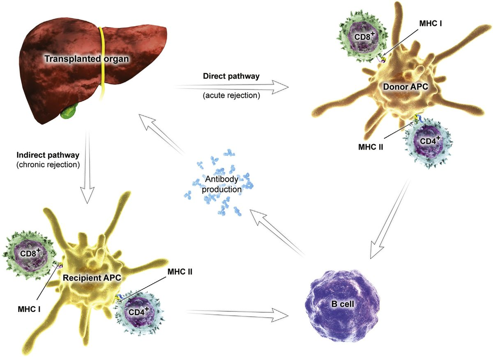
그림 7.1 항원 제시에서 T세포의 역할. 1) 직접 경로(Direct pathway): 공여자 항원제시세포(APC)가 수혜자의 T세포에 동종항원을 제시함. 2) 간접 경로(Indirect pathway): 수혜자의 APC가 공여자 장기의 동종항원을 가공하여 수혜자 T세포에 제시함.
온전한 동종항원을 인지할 수 있음을 시사하며, 이를 준직접 경로(semi-direct pathway)라고 부른다. 입증하기는 까다롭지만, 수지상세포로의 동종항원 이동 현상이 밝혀지면서 지지를 얻고 있다.150–153
직접 경로에서 CD4+ T세포 반응은 이식 후 초기 몇 주로 제한되며, 생쥐 모델에서 그 지속 기간은 공여자 DC 집단의 생존 기간에 좌우되는 것으로 제시되었다.154–157 몇몇 인간 대상 연구에서도 직접 경로를 통한 CD4+ T세포 자극의 지속 기간이 짧다는 점이 입증되었다.154,158–160 가공된 동종항원에 대한 간접 경로 CD4+ T세포 반응은 온전한 동종항원에 대한 직접 경로 반응보다 더 오래 지속될 수 있다. 여러 동물 연구에서는 간접 경로 CD4+ T세포 반응이 만성 동종이식편 거부반응의 발생 및 유지에 기여할 가능성을 제시하였다.161–164 MHC class I 동종펩타이드에 대한 간접 반응의 지속 기간은 MHC class II 동종펩타이드에 대한 간접 반응보다 더 오래 지속되는데, 후자는 직접 경로만큼이나 일시적이어서 이식 후 첫 1주일 동안에만 검출된다.144
직접 경로를 통한 CD8+ T세포 동종면역 반응을 촉발하는 주요 기전은 이동한 공여자 수지상세포에 의해 온전한 MHC class I 동종항원이 제시되는 것이다. 그러나 나이브(원시) CD8+ T세포의 분화는 활성화된 CD4+ T세포의 도움에 의존한다.144
Transplantation 619
노치 신호전달 (Notch Signaling)
노치(Notch)는 진화적으로 고도로 보존된 핵심 신호전달 경로로서, 세포 운명과 그에 따른 형태 형성에 영향을 미침으로써 다세포 생물의 세포 신호전달 기반을 이룬다. 노치 수용체에 의해 매개되는 최종 신호는 현저한 다면발현성(pleiotropy)을 나타내며 분화, 증식 및 세포자멸사(아폽토시스)에 지대한 영향을 미칠 수 있다. 따라서 이 경로의 이상이 질병을 초래하고 잠재적인 치료 표적이 될 수 있다는 점은 놀라운 일이 아니다.165
노치는 오랫동안 초기 T세포 발달의 결정적인 구성 요소로 인식되어 왔다.166,167 시험관 내(in vitro) 연구에 따르면 노치 신호전달은 도움 T세포 1형(Th1) 분화를 조절한다. 또한 Notch1 및 Notch2 수용체는 Th1 편극화(polarization)의 특정 모델에 필수적이다. 면역 반응에서 노치 신호전달의 제안된 기능은 매우 광범위하다. 그러나 이러한 효과가 나타나는 정확한 기전은 아직 완전히 규명되지 않았다.168
동종 조혈줄기세포이식 후 발생하는 이식편대숙주병(GVHD)에 의한 동종면역 손상의 형성 과정에서 노치 신호전달의 역할은 생쥐 모델을 통해 규명되었다. GVHD는 나이브 공여자 T세포가 이식 수혜자의 항원을 인지함으로써 발생하는 질환으로, 동종 조혈줄기세포이식 환자가 겪는 주요한 치명적 합병증이다.168 성숙 T세포에서 노치 신호전달 경로를 차단하면 GVHD를 예방할 수 있다. MHC 불일치 및 일치 동종 조혈줄기세포이식 환자 모두에서, 노치가 결핍된 T세포를 주입받은 환자는 GVHD 없는 생존기간(GVHD-free survival)이 연장될 수 있다. 이러한 노치 결핍 T세포는 인터페론 감마(IFN-γ), 종양괴사인자 알파(TNF-α), IL-2, IL-17, IL-4 등 여러 사이토카인의 분비에 결함을 보인다. 노치 억제는 동종 반응성 T세포의 증식에는 미미한 영향만을 미쳤으나, 조절 T세포(Treg)의 증식은 현저하게 증가시켰다.169–171
결론적으로 노치 신호전달 억제는 GVHD 치료에서 유망한 결과를 보여주었다. 또한 노치 신호전달은 고형 장기 거부반응과도 밀접하게 연관되어 있다. 심장이식 환자에서 성숙 T세포의 범-노치(pan-Notch) 차단이 동종이식편의 생존을 연장시키는 것처럼, 노치 신호전달 억제는 동종 조혈줄기세포이식에서도 유익한 효과를 보인다. Dll1/4 리간드를 매개로 한 노치 신호전달은 고형 장기 거부반응을 조절하는 데 핵심적인 역할을 하는 것으로 제시된다. 종합하면, 노치 신호전달은 GVHD 및 고형 장기 거부반응을 유발하는 동종면역 반응의 중대한 매개 요소이다. 동물 모델에서 노치 신호전달을 표적으로 한 치료법들이 유의한 효능을 입증함에 따라, 향후 유망한 치료 옵션이 될 가능성을 보여주고 있다.168
조절 T세포(Treg) 활성화 (Treg Activation)
조절 T세포(Treg)는 CD4 및 CD25 분자와 함께, 세포의 발생과 기능에 필수적인 전사인자인 FOXP3를 발현하는 세포이다.172,173 조절 T세포는 그 기원에 따라 흉선 유래 자연발생 조절 T세포(tTreg)와 말초 유래 조절 T세포(pTreg)로 분류될 수 있으며, 이는 Treg 특이적 탈메틸화 영역(TSDR)을 통해 구별할 수 있다.174 조절 T세포는 면역계를 조절하는 탁월한 능력으로 잘 알려져 있다. 그러나 그 기능은 단일 기전에 의해서만 수행되는 것이 아니며, 여러 기전이 조화롭게 작용하여 면역 조절을 지휘하는 것으로 생각된다. T림프구의 생존과 증식은 IL-2에 의존한다. 조절 T세포는 IL-2 수용체인 CD25를 고발현하여 IL-2를 끌어당겨 선점할 수 있으며,
620 Clinical immunology IL-2를 소모하여 T림프구가 이를 이용하지 못하게 차단한다.172 또 다른 기전으로는 조절 T세포(Treg) 표면에 존재하는 세포독성 T림프구 연관 항원-4(cytotoxic T lymphocyte-associated antigen-4, CTLA-4) 분자가 관여한다. 이 분자는 작동 T세포(effector T cell)가 발현하는 전염증성 분자인 CD28보다 보조자극분자(costimulatory molecule)인 CD80/86에 대해 훨씬 더 높은 친화도를 지닌다. 이를 통해 작동 T세포의 활성화를 억제할 수 있다.175 CTLA-4 결핍은 림프증식성 질환 및 심각한 T세포 매개 자가면역질환과 연관되어 있음이 밝혀졌다.174 또한 여러 연구에서 암, 만성 감염 및 동종이식(allogeneic transplantation) 시 면역 반응을 억제하는 Treg의 역할이 입증되었다.176 쥐(rat) 모델에서 동종 혈액을 주입했을 때 공여자 항원 반응을 억제할 수 있는 CD4+ T세포가 생성됨으로써 CD4+ CD25+ Treg가 면역관용(tolerance) 유도에 기여한다는 사실이 확인되었다.177 이후 연구에서는 순수한(naïve) CD4+ CD25+ T세포가 동종 피부 이식편 거부반응과 자가면역 반응을 억제할 수 있는 반면, CD4+ CD25- T세포는 이러한 효과를 나타내지 못함이 관찰되었다.178 Treg가 동종이식편 관용을 유도하는 정확한 기전은 여전히 완전히 규명되지 않았으나, 일부 기전은 생쥐(mice)에서 동종이식편 관용 유도에 필수적이다. 생쥐에서 Treg는 IL-10과 CTLA-4를 일정 수준 활용하여 면역 항상성을 유지한다.176 따라서 생쥐의 CD4+ CD25+ Treg가 IL-10 의존적 경로를 통해 심장 동종이식편에 대한 관용을 유도한다는 사실은 놀라운 일이 아니었다.179,180 더욱이 CTLA-4를 억제하면 CD4+ CD25+ Treg에 의해 유도된 이식편 관용이 저해된다.180 이러한 특성들로 인해 연구자들은 이식 분야에서 Treg를 활용하기 위한 연구를 활발히 진행하고 있다. 기억 T세포(Memory T cells) 우리 몸이 특정 항원에 다시 노출되면 면역 반응은 더욱 강력하고 신속하게 일어난다. 이러한 반응은 감염 방어, 백신 접종(vaccination), 종양 면역감시(immunosurveillance)에 매우 중요하다. 그러나 이식 환경에서는 공여자 항원을 표적으로 하는 이러한 기억 면역 반응이 오히려 위험 요소로 작용하여 이식편에 불리한 결과를 초래할 수 있다.181 동종항원(alloantigen)에 사전에 노출된 적이 없는 경우에도, 실험적 환경에서 기억 T세포의 1~10%는 직접 동종인식(direct allorecognition) 경로를 통해 MHC 분자에 반응할 수 있다.181,182 이러한 기억세포는 다른 항원의 펩타이드가 MHC 분자에 의해 제시될 때 생성되며, 다른 펩타이드와 결합된 동종 MHC 분자의 복합체를 모방(imitate)하여 교차 반응할 가능성이 있다.183 대표적인 예로, HLA-B8+ 환자에서 엡스타인-바 바이러스(EBV) 감염 후 발생한 항원 모방(antigen mimicry)에 의해 동종 MHC 분자인 HLA-B4402에 감작되는 현상을 들 수 있다.184,185 기억 T세포는 이전의 장기이식, 임신, 수혈 등을 통한 동종항원 사전 노출에 의해서도 생성될 수 있다.181 기억 T세포가 동종이식편 거부반응에 기여하는 데는 다양한 기전이 관여한다. 기억 T세포는 재활성화된 후 작동세포(effector cell)로 전환될 수 있다. 또한 거부반응을 유도할 수 있는 공여자 반응성 작동 CD8+ T세포를 강력하게 자극하는 데 도움을 줄 수도 있다.186 현재 기억 T세포의 검출은 불량한 이식 예후와 연관되어 있으며, 동종반응성 기억 T세포는 동종이식편 거부반응 과정을 가속화하고 면역관용 형성을 저해하는 것으로 널리 인정받고 있다.181
Transplantation 621 자연살해 T세포(Natural killer T cells) 자연살해 T(NKT)세포는 T림프구 중 소수(<1%)를 차지하며, CD1d로 알려진 MHC I군 유사 분자에 의해 제시되는 당지질(glycolipid)을 인식할 수 있다.187 NKT세포는 활성화된 후 선천 면역과 후천 면역(획득 면역) 모두에 영향을 미칠 수 있는 일련의 사이토카인을 신속하고 지속적으로 분비하도록 조절한다.188 MHC 분자와 달리 CD1d 분자는 다형성(polymorphic)을 보이지 않기 때문에, NKT세포가 동종항원을 직접 감지할 수 있는지 여부는 아직 불분명하다.189 이식 후 발생하는 비특이적 염증은 NKT세포를 자극할 수 있는 사이토카인 환경을 조성한다. 나아가 NKT세포는 이러한 자극에 대한 반응 방식에 따라 거부반응을 촉진하거나 면역관용을 유도할 수 있다. 췌도 이식에서 NKT세포가 분비하는 IFN-γ는 호중구를 동원하여 이식편 손상을 조절하는 것으로 나타났다. 이러한 보고들이 있음에도 불구하고, 더 많은 연구에서는 이식 상황에서 NKT세포의 억제적 역할을 시사하고 있다.190 불변 자연살해 T(invariant natural killer T, iNKT)세포는 Vα14-Jα18 불변 T세포수용체(TCR)를 발현하는 것이 특징인 소수의 림프구 집단이다. α-GalCer에 의해 활성화되면 IFN-γ 및 IL-2뿐만 아니라 IL-4, IL-10을 포함한 Th2 사이토카인을 대량으로 신속하게 분비한다.187 iNKT세포는 이식에서 면역관용의 유도 및/또는 유지에 필수적인 것으로 알려져 있다.187 체액성 면역의 역할(The role of humoral immunity) 동종이식편에 관여하는 체액성 면역은 크게 두 가지로 나눌 수 있다: 적응(후천성) B세포 면역과 선천 B세포 면역이다. T세포의 도움을 받아 공여자 세포의 이종/이물 항원(주로 MHC class I 및 II 분자)에 반응하는 고친화도 항체를 생성하는 것이 적응 B세포 면역의 핵심이다. 선천 B세포 면역은 ABO 혈액형 항원에 대한 기존 항체 및 Gal α-1, 3 Gal에 반응하는 IgM을 포함한 이종항체(xenoantibody)를 활용한다. 이종항체는 동물과 인간에 존재하는 면역글로불린인 ’자연항체(natural antibodies, Nabs)’와 일부 공통된 특성을 공유한다. 비록 자연항체가 발견된 지 반세기가 넘었지만, 그 정확한 기능은 여전히 명확하지 않으며, 이는 무관하다고 여겨지는 수많은 항원 패턴과도 반응하는 고유의 특이성 결여 때문일 수 있다. 자연항체는 대부분 IgM 형태로 검출되며, IgG 형태로는 상대적으로 적게 발견된다. 그러나 특정 병적 상태에서는 이러한 균형이 깨질 수 있다.191 선천 B세포/자연항체(Innate B cells/natural Abs) 이식에서 자연항체(Nabs)의 역할은 과거 이종이식(xenotransplantation)이나 ABO 부적격 이식에서 주로 관찰되었다. 수혜자 내에 이미 생성되어 있던 자연항체는 공여자 세포 표면의 이종 또는 동종 탄수화물 결정기(carbohydrate determinants)에 강력하게 반응하여 초급성 거부반응(hyperacute rejection)을 유발한다. 항체매개 거부반응(AMR)을 보이는 신장이식 환자에서 혈청 IgG 자연항체 수치가 증가한 것으로 보고되었다. 또한 자연항체는 시험관 내(in vitro)에서 보체를 활성화하여 표적 세포에 C4d 침착을 유도할 수 있으며, 이는 생체 내(in vivo)에서도 유사한 역할을 할 가능성을 제시한다.192 이식 전 높은 수준의 IgG 자연항체는 비감작(non-sensitized) 환자의 신장이식 후
622 Clinical immunology 생존율 저하와도 연관이 있었다.193 또한 이식 후 자연항체 수치의 상승과 이식편 소실(graft loss) 사이에는 매우 유의미한 상관관계가 존재한다.194 DSA가 없는 상태에서도 자연항체는 독립적으로 이식편 생존율 감소와 연관되지만, DSA와 자연항체가 모두 존재하는 경우 이식편 소실 발생률이 가장 높게 나타난다.192–194 신장 및 심장 동종이식편의 거부반응 과정에서는 복합적인 면역세포 침윤이 흔히 관찰된다. T세포매개 거부반응(TCMR)에서도 이러한 침윤물 내에서 B세포가 다수 발견된다.195–208 B세포는 항체 분비 외에도 다양한 기능을 수행한다. CD20+ 선천 B세포는 자연항체를 분비하는 CD20- CD138+ 형질세포와는 다른 기능을 수행할 가능성이 매우 높다. 그러나 이들의 역할은 아직 완전히 규명되지 않았으며, 현재 세 가지 주요 가설이 제시되고 있다: 첫째, 손상연관분자패턴(DAMPs)을 감지한 후 활성화된 선천 B세포가 전염증성 사이토카인 및 케모카인을 분비하여 국소 면역 반응을 증폭시킨다는 가설, 둘째, B세포가 침윤 T세포에 항원을 제시한다는 가설, 셋째, IL-10을 분비하는 조절 B세포(Breg)와 유사한 면역조절 능력을 발휘한다는 가설이다.191 그러나 이 세포들을 예방 또는 치료 옵션으로 활용하기 위해서는 거부반응 시 이 세포들이 수행하는 정확한 기능을 밝히기 위한 향후 연구가 필요하다. 공여자 특이 항체(Donor specific antibodies, DSA) 이식 전 잠재적 공여자에 대한 항체를 검출하는 것은 매우 유용하다. 항체 수준에 따라 서로 다른 결과가 나타날 수 있다. 낮은 수치의 항체는 AMR을 예측할 수 있는 반면, 높은 수치의 항체는 초급성 거부반응을 유발할 수 있다. 이식 후 신생(de novo) DSA가 생성될 수도 있다.209 주요조직적합성 유전자좌(MHC loci)는 DSA를 활용하여 규명되었으므로, DSA는 MHC 항원에 대해 매우 민감하고 특이적이다.210,211 장기이식 후 이러한 항원 중 일부는 체액성 면역을 유발하지 않거나, 유발하더라도 이식편 내부로 흡수되어 혈중에서 검출되지 않을 수 있다. 이로 인해 면역 반응의 부재가 실제 항체가 생성되지 않은 것인지 아니면 이식편에 흡수되었기 때문인지 구별하기 어려울 수 있다. 교차시험(cross-match) 음성인 재이식(second transplant) 환자는 일차 이식 환자에 비해 거부반응 위험이 더 높은데, 이는 감작(sensitization)이 단순히 DSA 생성에만 의존하지 않는다는 점을 시사한다.209 흥미롭게도, 재이식을 받는 환자에서 공여된 신장이 이전과 유사한 항원을 공유하는지 여부는 이식 결과에 차이를 보이지 않았다.212 거부반응 발생 전이나 초기 단계에서 DSA를 측정할 수 있다면 거부반응 과정을 예방하거나 중화할 수 있다. 또한 이러한 항원은 면역억제 치료의 효과를 평가하는 데도 유용하다.209 검출된 항체가 이식편에 실질적인 손상을 입힐 수 있는 항체를 어느 정도나 반영하는지 이해하는 것이 중요하다. 이식편 내로 흡수되는 항체는 혈액 내에 남아 있는 항체보다 친화도와 병원성이 더 높을 가능성이 크다.213 항체 생성은 항원과 보조자극이 함께 작용하거나 혹은 염증에 의해 유도된다. 항원에 의해 자극되는 경우 면역관용이나 장기적인 무반응(non-reactivity) 상태가 유도될 수 있다. 그러나 염증에 의해 항체 생성이 촉발된 경우에는
Transplantation 623 면역 반응 또는 면역결핍이 유도될 수 있다.213–216 따라서 현재로서는 DSA의 측정이 면역 상태를 반영하는지 아니면 염증 상태를 반영하는지 명확하지 않다.209 DSA 연구 분야는 이식 분야에서 매우 주목받고 있으며, 진단·예방·치료적 기회를 제공한다. 항공여자 기억 B세포(Anti-donor memory B cells) 이식 장기에 대한 체액성 반응에 관한 대부분의 연구는 순환 항체와 이를 분비하는 형질세포에 집중되어 왔다. 순수한 B세포(naïve B cell)는 특정 항원과의 상호작용 및 특화된 CD4+ T세포로부터의 동시 신호 전달을 통해 활성화되며, 클론 증식(clonal expansion)을 거쳐 독특한 B세포 아형으로 분화한다. B세포는 항체 분비 능력을 얻기 위해 형질세포로 분화해야 한다. 기억 B세포는 활성화된 B세포가 추가 활성화를 멈추고 휴지기(quiescent) 상태로 전환될 때 형성된다.217 Zachary 등은 HLA 사합체(tetramer, tet)를 이용하여 말초혈액에서 동종반응성 B세포를 최초로 동정하였다. 사합체는 형광 단백질에 결합된 4개의 펩타이드 결합 HLA 분자로 구성된 스트렙타비딘-비오틴 복합체이다. 이러한 B세포는 유세포분석(flow cytometry)을 통해 동정되며, 이를 통해 표적 MHC 항원에 대한 환자의 B세포 반응을 신속하고 민감하게 측정할 수 있다. 사합체 양성(tet+) 기억 B세포와 형질세포를 검출하기 위해 각각 CD27과 CD38이 사용되었다. 놀랍게도, CD27+ tet+ 기억 B세포나 CD38+ tet+ 형질세포의 수와 이전 이식에서의 해당 HLA 불일치(mismatch) 사이에는 유의미한 연관성이 관찰되지 않았다. 그러나 이식 전 DSA 음성이었던 환자 중 tet+ B세포 내에서 CD27+ 세포의 비율이 증가되어 있었다.218,219 이러한 결과는 감작된 환자에서 기억 B세포의 존재와, 이 세포들이 이식 전 통상적으로 사용되는 면역억제 요법에 대해 상당한 저항성을 보임을 시사한다. 병원체 특이 기억 B세포는 환자의 장기 생존에 필수적이며, 면역억제 요법 하에서도 이러한 세포들이 반드시 유지되어야 한다는 점에 주목해야 한다.217 NK세포, 수지상세포, 호중구, 대식세포 및 톨유사수용체의 역할(The role of NK cells, DCs, neutrophils, macrophages, and toll-like receptors) 선천 면역은 이식 직후 초기 염증에 관여할 뿐만 아니라, 거부반응이나 면역관용을 유도할 수 있는 후천 면역세포의 분화에도 영향을 미치는 필수적인 요소로 점차 인식되고 있다.220 말초 순환 백혈구의 5~10%를 차지하는 단핵구는 골수계 전구세포(myeloid progenitor)에서 유래하며 수지상세포(DC)나 대식세포로 분화할 수 있다.221 단핵구가 동종이식편 거부반응에서 중요한 역할을 할 수 있다는 증거가 점차 늘어나고 있다. 사구체 내 단핵구 침윤이 있는 신장이식 수혜자는 이식 후 1년, 2년, 4년 시점에서 신장 기능 악화 위험이 높다. 또한 사구체 단핵구 침윤은 C4d 침착과 상관관계가 있다. 거부반응 발생 시 단핵구 유래 사이토카인 역시 증가한다.222 더욱이 후천 면역계가 고갈된 상태에서도 단핵구와 대식세포만으로 거부반응을 유도하기에 충분하며, 유지 면역억제 요법을 시행하지 않을 경우
624 Clinical immunology 모든 환자가 활성화된 단핵구의 대규모 침윤과 함께 급성 거부반응을 겪는 것으로 나타났다.223 대식세포는 식작용(phagocytosis)을 수행하며, 전염증성(M1) 아형과 항염증성(M2) 아형으로 분류할 수 있다. M1 아형은 식작용, CD4+ T세포로의 항원 제시, 그리고 IL-1β, IL-12, IL-18, IFN-γ, TNF-α와 같은 전염증성 사이토카인을 생성함으로써 거부반응 중에 활발하게 작용한다.224,225 이러한 작용은 순수 T세포의 분화를 유도하고 기억세포의 반응을 유지시킬 수 있다.226 이러한 발견들은 대식세포와 단핵구가 이식편 거부반응에서 중요한 역할을 담당할 수 있다는 점을 시사한다. 수지상세포(DC)는 선천 면역과 후천 면역을 연결하는 선천 면역계의 핵심 구성요소이다.227 전염증성 상태에서 패턴인식수용체(PRR)가 병원체연관분자패턴(PAMPs)을 인식하면 DC의 성숙이 촉진되어 선천 면역에서 후천 면역으로의 전환이 가능해진다. 전통적으로 이식 후 이식편은 일련의 전염증성 케모카인과 사이토카인을 분비하여 순환 중인 미성숙 DC를 유인지대로 끌어들이는 것으로 여겨졌다. 이러한 DC는 공여자 세포의 MHC class II 분자에 대한 항원제시세포(APC)로 작용한다.220 활성화된 DC는 C-C 케모카인 수용체 7(CCR7)의 발현을 상향 조절하여 2차 림프조직으로 이동하고, 그곳에서 특정 유형의 T세포에 의한 MHC 펩타이드의 동계 인식(cognate recognition)을 개시한다.220 DC는 골수성 또는 전통적 DC(mDC)와 형질세포양 DC(pDC)라는 두 가지 주요 하위군으로 분류할 수 있다. mDC는 높은 수준의 IL-12를 생성하며 작동 T세포의 증식과 동종반응을 유도할 수 있다. 반면, pDC는 Treg의 분화와 성숙을 촉진한다.228 또한 pDC는 말초 T세포 관용에도 관여하는 것으로 보인다.220 약리학적으로 변형된 관용성 DC(tolerogenic DC, TolDC)를 이용하여 자가면역질환과 이식편 거부반응을 억제한 사례들이 보고되었다.229,230 이러한 DC의 상반된 효과는 표면 보조자극 리간드의 발현과 사이토카인 생성의 차이에서 기인하는 것으로 보이며, 이 두 요소 모두 T세포의 성숙 및 분극화(polarization)에 매우 중요하다.228,231 TolDC는 MHC 분자, CD80, CD86의 발현이 감소되어 있어, 자극성 DAMPs로부터 오는 성숙 신호에 생리적으로 저항성을 갖는다. 또한 T세포를 Th1 또는 Th2 표현형으로 분화시키는 사이토카인을 생산하지 않으므로 작동 T세포를 활성화하지 못한다.220 그동안 DC가 이식편 거부반응 및 면역관용 조절을 위한 주요 표적으로 크게 주목받지는 못했으나, 이식 전반의 과정에 관여하고 있는 것으로 보인다. NK세포는 림프계 세포계통에서 기원하지만, 독자적인 수용체 네트워크에 의존하여 면역 기능을 수행한다. 이들의 활성화 과정은 활성화 수용체와 억제 수용체 간의 균형에 의해 제어된다.232 동종이식편 거부반응에서 NK세포의 관여 여부는 여전히 논쟁의 여지가 있다. 이식을 받은 순수 생쥐에서 NK세포는 동종이식편 거부반응에 중요한 역할을 한다. 이식된 장기의 세포 표면에 자가 MHC 분자가 결여되어 있기 때문에 NK세포가 활성화된다. 그러나 전통적인 동물 연구에서는 NK세포를 제거해도 거부반응에 영향을 미치지 않는 것으로 나타났다.233–235 보다 최근에는 C57BL/6에서 BALB/c 생쥐로의 이식 모델에서 NK세포를 제거했을 때 거부반응이 억제되는 것이 관찰되어 기존의 관찰 결과와 대조를 보였다.234 성숙한 T세포와 B세포가 결핍된 엄격한 Rag-1 결핍 생쥐에서도 이식된 장기가 거부반응을 겪는 동안 NK세포가 이식편 내로 침윤하였다. 이러한 관찰 결과는 T세포가 결핍된 상황에서 NK세포가 하는 역할을 잘 보여준다.236 NK세포는 주로 퍼포린(perforin)과 그랜자임(granzyme)에 의해 매개되는 직접적인 세포독성 기능을 수행하며, 이 물질들은 거부반응의 생체지표(biomarker)임이 입증되었다.232,237 반대로 일부 동물 모델에서는 동종이식편 관용 유도에 퍼포린 의존적 NK세포가 필수적이라는 점이 관찰되기도 했다.238 NK세포가 동종면역 반응을 증강시킨다는 유력한 증거들이 존재하지만, 인간에서 거부반응을 단독으로 유발하기에는 충분하지 않은 것으로 보인다. 그러나 거부반응 예방을 위해 NK세포를 표적으로 하는 치료법을 도입하기 위해서는 더 많은 임상적 증거가 필요하다.220 호중구는 선천 면역계의 중요한 핵심 세포이다. 이들은 단핵구와 함께 장기이식 후 허혈-재관류 손상(ischemia-reperfusion injury)에 의해 유발된 염증에 가장 먼저 반응하는 세포이다.239,240 호중구는 국소 부위에서 IFN-γ와 같은 사이토카인을 생성하여 단핵구와 대식세포의 화학주성(chemotaxis)에 기여한다. 또한 케모카인 리간드를 생성 및 분비하여 염증 부위에 존재하는 DC의 CD40, CD86 등의 발현을 상향 조절함으로써 DC의 성숙을 유도한다.241,242 호중구는 또한 DC와 상호작용하여 DC가 더 많은 IL-12를 생성하도록 유도함으로써 T세포의 성숙을 돕는다.241–243 호중구는 여러 기능을 보유하고 있으며, 선천 면역 및 후천 면역 활성화 모두에 관여한다.220 과거에는 이식편 내 호중구의 존재가 세균 감염과 주로 연관되어 있다고 여겨졌다. 그러나 T세포가 호중구와 동일 부위에 공존(co-localization)함으로써 동종면역 및 비동종면역 반응이 유도될 수 있으며, 이러한 공존이 염증의 작동기(effector phase)에만 국한되지 않는다는 점이 제시되었다.244 NK세포와 마찬가지로 호중구 역시 동종이식편 거부반응에 관여하는 것으로 보인다. 그러나 호중구만을 표적으로 하는 단독 치료법은 효과적이지 않을 수 있으며, 거부반응을 억제하거나 관용을 유도하기 위해서는 T세포 표적 치료와 병용되어야 한다.220 톨유사수용체(TLR)는 1996년 초파리(Drosophila)에서 처음 발견되었으며, 현재까지 인간에서 10종의 기능적 TLR이 확인되었다. 단핵구, 대식세포, DC, 호중구, T세포, B세포를 포함한 많은 백혈구가 이 수용체를 발현한다.220 고형 장기의 내피세포 및 상피세포와 같은 다른 세포들도 이 수용체를 발현한다.245 TLR 활성화와 관련된 가장 보편적인 세포 내 신호전달 경로는 미생물 인자가 TLR에 결합한 후 범용 어댑터 단백질인 MyD88이 자극되면서 시작된다. MyD88 활성화 후 일련의 인산화 연쇄 반응이 일어나 NF-κB가 방출된다. 최종 결과로 활성단백질-1(AP-1), 인터페론 조절인자 3(IRF3) 및 기타 전사인자가 활성화되어 염증에 관여하는 사이토카인인 IL-6, IL-12, TNF-α 등의 유전자 발현이 증가한다.220 연구 결과들에 따르면 허혈 관련 손상은 DAMPs와 TLR 간의 상호작용에 의해 매개되는 것으로 나타났다.245–247 생쥐 모델에서
626 Clinical immunology model of graft rejection, a totally MHC-mismatched kidney mouse who lacked MyD88 experienced donor antigen-specific tolerance, which impeded acute and chronic rejection.248 MyD88 insufficiency elevates the equilibrium of Tregs to Th17 cells, and in turn, induces tolerance.220 Furthermore, TLRs and their role as a target in transplantation are still under research. The role of complement activation The complement system comprises one of the first members of immunity. It was once accepted that complement proteins were exclusively functioning against microbial agents. Surprisingly, this view was later changed after the realization of the contribution of the complement system to many inflammatory diseases.249,250 Classical, lectin and alternate pathways are the three pathways of activation of the complement system. The fundamental of the alternate pathway, which is the oldest pathway and is in charge of 80 percent−90 percent of the whole complement activation, is pattern recognition molecule, including properdin. This pathway is prompted after PAMPs and DAMPs on alien and injured cells are recognized.249 The classical pathway, which depends on antibodies, was the first pathway that was discovered. Mannose-binding lectin and ficolins in the lectin pathway act as pattern recognition molecules that primarily attach to carbohydrate patterns.250 It is widely acknowledged that the complement system has crucial roles during tissue injury, which includes ischemic-related injury after SOT.251 The complement pathway, especially the lectin pathway, utilizes C5a, anaphylatoxin excretion, and leukocyte employment for neoepitope identification, opsonization, amplification, and regulation of the cellular response.252 C5a has a crucial part in the chemotaxis of innate and T cells, up-regulation of cell adhesion molecules (CAMs), and P-selectin and von Willebrand factor secretion by endothelial cells.253 In mice with elevated amounts of C5a and C3a, the need for CD40/CD154 appears to be avoided in the interplay between CD4+ and CD8+ T cells resulting in the induction of alloimmune responses.254 C5a and C3a send direct signals to T cells using responses from C5a and C3a receptors, moderating natural Treg activity.255 Furthermore, complement proteins injure allogeneic grafts through oxidative stress, the buildup of remains, and chronic complement stimulation, which sustains a disruptive cycle of injury.251–253 As a novel solid-phase assay was developed for detecting anti-HLA antibodies, it was proposed that complement binding can be utilized to foretell the antibodies that are damaging to the graft. The complement system has also been a matter of interest as a therapeutic option in allograft rejection mainly due to the commercialization of eculizumab, which is an anti-C5a agent. This drug was first produced for paroxysmal nocturnal hemoglobinuria. Eculizumab impedes the development of the membrane attack complex, and it has also been utilized in transplantation to prevent AMR in sensitized kidney transplant patients who have an affirmative cross-match against the donated organ.220 The complement system is obviously a new realm in transplantation 이식 거부반응 모델에서, MyD88이 결핍된 완전 MHC 불일치(totally MHC-mismatched) 신장이식 마우스 모델은 공여자 항원 특이적 면역관용을 나타내었으며 급성 및 만성 거부반응이 억제되었다.248 MyD88 결핍은 Th17세포 대비 조절T세포(Treg)의 균형을 증가시켜 면역관용을 유도한다.220 나아가 이식 분야에서 톨유사수용체(TLR)와 표적 치료제로서의 그 역할에 대한 연구는 여전히 활발히 진행 중이다.
보체 활성화의 역할
보체계(complement system)는 면역계를 구성하는 가장 원초적인 방어 체계 중 하나이다. 과거에는 보체 단백질이 미생물 병원체에 대해서만 배타적으로 작용한다고 여겨졌다. 그러나 놀랍게도 여러 염증성 질환에서 보체계가 관여한다는 사실이 밝혀지면서 이러한 관점에 변화가 일어났다.249,250 보체계의 활성화 경로는 고전 경로(classical pathway), 렉틴 경로(lectin pathway), 대체 경로(alternative pathway)의 세 가지로 나뉜다. 진화적으로 가장 오래되었으며 전체 보체 활성화의 80~90%를 담당하는 대체 경로의 기본 기전은 프로페르딘(properdin)을 비롯한 패턴인식 분자이다. 이 경로는 외부 이물질 및 손상된 세포 표면의 PAMP와 DAMP가 인식된 후 촉발된다.249 항체에 의존하는 고전 경로는 가장 먼저 발견된 경로이다. 렉틴 경로의 만노스결합렉틴(MBL)과 피콜린(ficolin)은 주로 탄수화물 패턴에 결합하는 패턴인식 분자로 작용한다.250
고형장기이식(SOT) 후 허혈 관련 손상을 포함한 조직 손상 과정에서 보체계가 중추적인 역할을 한다는 점은 널리 인정받고 있다.251 보체 경로, 특히 렉틴 경로는 신생항원결정기(neoepitope) 인식, 옵소닌화(식작용 촉진), 반응 증폭 및 세포성 면역 반응 조절을 위해 C5a 생성, 아나필라톡신(anaphylatoxin) 분비, 백혈구 동원을 유도한다.252 C5a는 선천면역세포와 T세포의 화학주성(chemotaxis), 세포부착분자(CAM)의 발현 상향 조절, 내피세포의 P-선택틴(P-selectin) 및 폰빌레브란트인자(vWF) 분비에서 핵심적인 역할을 한다.253 C5a 및 C3a 수치가 상승한 마우스에서는 CD4+ T세포와 CD8+ T세포 간의 상호작용에서 CD40/CD154의 필요성이 우회되어 동종면역반응 유도로 이어지는 것으로 나타났다.254 C5a와 C3a는 각각의 수용체(C5aR, C3aR) 반응을 매개로 T세포에 직접적인 신호를 전달하여 자연 Treg(nTreg)의 활성을 억제한다.255 또한 보체 단백질은 산화 스트레스, 세포 파편 축적, 만성적인 보체 자극을 통해 동종이식편을 손상시키며, 이는 파괴적인 손상의 악순환을 지속시킨다.251–253
항-HLA 항체 검출을 위한 새로운 고형상 분석법(solid-phase assay)이 개발됨에 따라, 이식편에 손상을 주는 항체를 예측하는 데 보체 결합능을 활용할 수 있다는 제안이 나왔다. 또한 항-C5 제제인 에쿨리주맙(eculizumab)의 상용화로 인해 보체계는 동종이식 거부반응의 유망한 치료 표적으로 큰 관심을 받아왔다. 이 약물은 원래 발작성 야간 혈색소뇨증(PNH) 치료제로 처음 개발되었다. 에쿨리주맙은 막공격복합체(MAC) 형성을 저해하며, 기증 장기에 대해 교차시험 양성을 보이는 감작된(sensitized) 신장이식 환자에서 항체매개 거부반응(AMR)을 예방하기 위해 이식 분야에서도 활용되고 있다.220 보체계는 분명 이식면역학에서
Transplantation 627 immunology, and it is very likely that novel therapeutic options based on this system will be evolved to inhibit rejection. The role of cytokine level and polymorphisms Cytokines are important messengers that partake in the innate immune system. The immune signals between the cells of innate and adaptive immunity are regulated and enhanced by cytokines.256 The exact mechanism through which cytokines affect graft rejection is yet to be understood. However, recently there have been several publications on cytokines and their effects in transplantation. It is recognized that depending on the environment that cytokines exist, the pro- and anti-inflammatory cytokines can encourage or impede rejection.257,258 IL-1β, TNF-α, and IL-6 are among the cytokines that have recently attained attention. Mononuclear phagocytes manufacture pro-inflammatory cytokines such as IL-1β and TNF-α that are mostly involved in triggering monocytes, neutrophils, and endothelial cells in order to create CAMs and chemokines. IL-1β, which is mainly excreted by activated cells, starts and maintains inflammation by prompting the production of IL-2, IL-6, TNF-α, TNF-β.259 It also has an important part in supporting leukocyte migration into damaged tissues and intensifies the expression of CAMs on endothelial cells and leukocytes.220 There have been a few reports of utilizing anti-cytokine therapies against IL-1β and TNF-α in transplantation settings, such as the routine use of anti-TNF-α in islet transplantation in some centers.78,260 Inflammation can be efficiently restrained in rheumatoid arthritis patients by a recombinant antagonist of the human IL-1 receptor named Anakinra.261 IL-6 is mainly secreted by APCs, fibroblasts, and endothelial cells and is a pro-inflammatory cytokine involved in T cell differentiation. IL-6 deficiency in mice leads to decreased production of IFN-γ at the time of allograft rejection.262 In mice with extremely immunogenic skin allograft, tolerance is induced when the co-stimulatory blockade is combined with a lack of IL-6 and TNF-α.263 In conclusion, anti-cytokine therapeutic options are slowly becoming implemented into the treatment plans of transplant patients. Matching HLA compatibility All human cells express molecules on their surface that are considered foreign antigens by other individuals’ immune system. Successful transplantation of human organs requires histocompatibility methods to find a suitable donor.264 In 1930, the first major histocompatibility antigen was discovered in mice.265 However, it was not until 1952 when HLA-A2m, which is a human MHC, was identified.266 The MHC is a 3.6 million base genomic sequence on the short arm of chromosome 6 (Fig. 7.2).267 MHC encodes many genes, including the six original HLA genes, which help regulate the immune system and have basic roles in cellular functions.268 MHC molecules present 새로운 영역이며, 이 시스템을 표적으로 하여 거부반응을 억제하는 새로운 치료 대안들이 점차 발전할 가능성이 매우 높다.
사이토카인 수치와 다형성의 역할
사이토카인(cytokine)은 선천 면역계에 관여하는 중요한 매개체이다. 선천 면역세포와 후천 면역세포 사이의 면역 신호전달은 사이토카인에 의해 조절되고 증폭된다.256 사이토카인이 이식 거부반응에 영향을 미치는 정확한 기전은 아직 완전히 밝혀지지 않았다. 그러나 최근 이식 분야에서 사이토카인의 영향에 관한 여러 연구 결과가 발표되었다. 사이토카인이 존재하는 미세환경에 따라, 전염증성 및 항염증성 사이토카인이 거부반응을 촉진하거나 억제할 수 있음이 밝혀졌다.257,258
최근 주목받고 있는 사이토카인으로는 IL-1β, TNF-α, IL-6 등이 있다. 단핵 포식세포(mononuclear phagocyte)는 IL-1β 및 TNF-α와 같은 전염증성 사이토카인을 생성하며, 이들은 주로 단핵구, 호중구 및 내피세포를 자극하여 세포부착분자(CAM)와 케모카인을 합성하도록 유도한다. 활성화된 세포에서 주로 분비되는 IL-1β는 IL-2, IL-6, TNF-α, TNF-β 생성을 촉진하여 염증 반응을 개시하고 유지한다.259 또한 손상된 조직으로의 백혈구 이동을 유도하고 내피세포와 백혈구 표면의 CAM 발현을 증가시키는 데 중요한 역할을 한다.220 임상 이식 분야에서 IL-1β 및 TNF-α에 대한 항사이토카인 치료를 적용한 몇몇 보고가 있으며, 일부 이식 센터에서는 췌도이식 시 항-TNF-α 제제를 통상적으로 사용하고 있다.78,260 류마티스관절염(RA) 환자에서는 인간 IL-1 수용체 재조합 길항제인 아나킨라(Anakinra)를 통해 염증을 효과적으로 억제할 수 있다.261 IL-6는 주로 항원제시세포(APC), 섬유아세포, 내피세포에서 분비되며, T세포 분화에 관여하는 전염증성 사이토카인이다. 마우스에서 IL-6가 결핍되면 동종이식편 거부반응 시 IFN-γ 생성이 감소한다.262 면역원성이 매우 높은 피부 동종이식편을 이식한 마우스에서 공동자극 차단과 함께 IL-6 및 TNF-α 결핍이 동반될 경우 면역관용이 유도된다.263 결론적으로, 항사이토카인 치료 전략은 점진적으로 이식 환자의 치료 계획에 도입되고 있다.
HLA 적합성 일치 (HLA Matching)
모든 인간 세포는 타인의 면역계에 의해 이종(이물) 항원으로 인식될 수 있는 분자를 세포 표면에 발현한다. 인간 장기의 성공적인 이식을 위해서는 적합한 기증자를 찾기 위한 조직적합성 검사법이 필수적이다.264 1930년 마우스에서 최초의 주요조직적합성항원이 발견되었다.265 그러나 인간 주요조직적합성복합체(MHC)인 HLA-A2m이 확인된 것은 1952년에 이르러서였다.266 MHC는 6번 염색체 단완에 위치한 360만 염기쌍 크기의 유전체 서열이다(Fig. 7.2).267 MHC는 면역계 조절을 돕고 세포 기능에 필수적인 역할을 담당하는 6개의 기본 인간백혈구항원(HLA) 유전자를 비롯하여 수많은 유전자를 암호화한다.268 MHC 분자는
628 Clinical immunology unfamiliar peptides on their surface to T cells so that the activation of antigen-specific host defense mechanism is ensured.266 MHC molecules are extremely heterogeneous, which provide the immune system the ability to fight against various foreign pathogens.266 However, these molecules can cause problems in patients who have undergone transplantation. The survival of transplanted organs from a sibling with identical HLA is far higher than those from lesser matched relatives or well-matched cadavers.269 HLA matching has since been an important part of transplantation. Molecular methods have enabled clinicians to analyze the recipient and donor characteristics and calculate the allograft failure risk. A single HLA mismatch increases the risk of graft failure by 13 percent, and six HLA mismatches increase the risk by 64 percent.270 HLA antigens are classified as class I (HLA-A, -B, -C) and class II (HLA-DR, -DQ, -DP) molecules. HLA class I molecules can be found on the surface of all nucleated cells. However, HLA class II molecules can only be found on B cells, APCs, and activated microvascular endothelial cells.271 HLA-DR matching has a significant correlation with the transplantation Fig. 7.2 Chromosome 6 which contains major histocompatibility complex. 세포 표면에 외부(이물) 펩타이드를 T세포에 제시함으로써 항원 특이적 숙주 방어 기전의 활성화를 보장한다.266 MHC 분자는 극도의 다형성(heterogeneity)을 지니고 있어, 면역계가 다양한 외래 병원체에 맞서 싸울 수 있는 능력을 부여한다.266 그러나 이러한 분자는 장기이식을 받은 환자에게는 면역학적 문제를 야기할 수 있다. HLA가 완전히 일치하는 형제자매로부터 기증받은 이식편의 생존율은 적합도가 떨어지는 친척이나 양호하게 일치된 뇌사 공여자로부터 이식받은 경우보다 훨씬 높다.269 이후 HLA 적합성 일치(HLA matching)는 이식 분야에서 매우 중요한 요소가 되었다.
분자생물학적 기법의 발전으로 임상의는 수혜자와 공여자의 특성을 정밀하게 분석하고 동종이식편 부전 위험을 계산할 수 있게 되었다. 단 1개의 HLA 불일치만으로도 이식편 부전 위험이 13% 증가하며, 6개의 HLA가 불일치할 경우 위험은 64%까지 증가한다.270 HLA 항원은 1형(HLA-A, -B, -C) 및 2형(HLA-DR, -DQ, -DP) 분자로 분류된다. HLA 1형 분자는 모든 유핵세포의 표면에서 발현된다. 반면 HLA 2형 분자는 B세포, APC, 활성화된 미세혈관 내피세포에서만 발견된다.271 HLA-DR 일치 여부는 이식
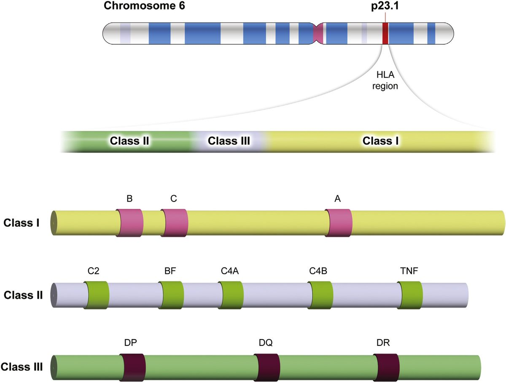
Fig. 7.2 Chromosome 6 which contains major histocompatibility complex. (그림 7.2 주요조직적합성복합체를 포함하는 6번 염색체.)
Transplantation 629 outcome, and its effect is as strong as that of HLA-A and -B together.272 HLA-DQ and -DP mismatches are generally better tolerated. However, the inclusion of these mismatches into the matching process can help to predict the outcome more accurately.273 Any presentation of HLA antigens can result in HLA sensitization, which can adversely affect the result of or access to transplantation.266 Therefore, it is important to match histocompatibility before an organ transplant. Sera, including antibodies for various kinds of HLA antigen specificities, are used for serologic typing. When the cell surface antigen and serum antibody are matched, cellular death takes place. Serologic typing provides fast results and can differentiate “null” HLA alleles, which are not expressed on the cell surface but can be detected on the DNA sequence. As HLA proteins are encoded by DNA regions, molecular typing methods such as sequence-specific primer PCR (SSP), sequence-specific oligonucleotide probes (SSOP), and direct DNA sequencing are also becoming popular.264 Desensitization Patients who produce DSAs because of pregnancy, blood product transfusions, or prior transplants face a significant obstacle to transplantation as a result of sensitization to HLAs.274 They are difficult to match, have poor transplant rates, and are at increased risk of acute and chronic AMR incidents after transplantation.275 Desensitization therapies made an appearance in the 1980s when donor-specific blood transfusion (DST) was conducted for HLA desensitization with poor outcomes. However, in the mid-1990s, HLA antibody desensitization with intravenous immunoglobulin (IVIG) was developed that introduced a new era in transplantation. IVIG is a complicated product extracted from the gamma globulin portion of pooled human plasma that is utilized as a therapeutic option for various disorders. In this therapy, broad-acting mechanisms such as neutralization of circulating antibodies, inhibition of B and T cell proliferation using interactions with Fc receptors, alteration of cytokine production, and down-regulation of complement are used to regulate auto- and allo-immune responses. This has a strong immunomodulatory impact and is broadly utilized for desensitization in patients experiencing AMR.276,277 Rituximab is a chimeric anti-CD20 (anti-B cell) monoclonal antibody that binds to CD20 and marks the cell for obliteration and thus depletes CD20+ B cells (not plasma cells) in the bone marrow, spleen, and lymph nodes.278–280 Rituximab has been integrated with desensitization guidelines over the years. The inclusion of two weekly doses of rituximab to a high-dose IVIG regimen in sensitized patients has significantly reduced panel reactive antibodies and improved transplant outcomes.281 Bortezomib is a selective inhibitor of the 26S proteasome that prevents antibody production from plasma cells, regulates apoptosis of these cells, and reduces the number of bone marrow-derived plasma cells.282–286 Most studies demonstrate encouraging results of bortezomib for HLA desensitization. However, further studies have to be designed to better understand its effects.276 결과와 유의한 상관관계를 보이며, 그 영향력은 HLA-A와 HLA-B를 합친 것만큼 강력하다.272 HLA-DQ 및 -DP 불일치는 일반적으로 임상에서 보다 양호하게 수용된다. 그러나 이러한 불일치 항목을 적합성 검사 과정에 포함하면 이식 결과를 보다 정확하게 예측하는 데 도움이 된다.273 어떠한 형태든 HLA 항원에 노출되면 HLA 감작(sensitization)을 초래할 수 있으며, 이는 이식 기회나 이식 예후에 부정적인 영향을 미친다.266 따라서 장기이식 전 조직적합성을 일치시키는 것이 매우 중요하다.
혈청학적 타이핑(serologic typing)에는 다양한 종류의 HLA 항원 특이성을 가진 항체가 포함된 혈청이 사용된다. 세포 표면 항원과 혈청 내 항체가 결합하면 보체 매개 세포사가 일어난다. 혈청학적 타이핑은 결과를 신속하게 얻을 수 있으며, 세포 표면에는 발현되지 않지만 DNA 염기서열에서는 검출되는 “결손(null)” HLA 대립유전자를 감별할 수 있다. HLA 단백질은 특정 DNA 영역에 의해 암호화되므로 염기서열 특이적 프라이머 PCR(SSP), 염기서열 특이적 올리고뉴클레오티드 프로브(SSOP), 직접 DNA 염기서열 분석법과 같은 분자 타이핑(molecular typing) 방법도 널리 활용되고 있다.264
탈감작 요법 (Desensitization)
임신, 혈액제제 수혈, 이전 이식력 등으로 인해 공여자 특이 항체(DSA)를 생성하는 환자는 HLA 감작으로 인해 이식 과정에서 중대한 장벽에 직면하게 된다.274 이러한 환자들은 적합한 장기를 찾기 어렵고 이식률이 낮으며, 이식 후 급성 및 만성 AMR 발생 위험이 크게 증가한다.275 탈감작 요법은 1980년대 HLA 탈감작을 목적으로 공여자 특이 수혈(DST)을 시행하면서 처음 등장했으나 결과는 미흡했다. 그러나 1990년대 중반 정맥용 면역글로불린(IVIG)을 이용한 HLA 항체 탈감작 요법이 개발되면서 장기이식의 새로운 시대가 열렸다. IVIG는 여러 공여자의 혼합 인간 혈장에서 감마글로불린 분획을 추출하여 정제한 복합 제제로, 다양한 면역질환의 치료제로 활용된다. 이 치료법에서는 순환 항체 중화, Fc 수용체 상호작용을 통한 B세포 및 T세포 증식 억제, 사이토카인 생성 조절, 보체 활성화 억제 등 광범위한 작용 기전을 통해 자가면역 및 동종면역 반응을 조절한다. 이는 강력한 면역조절 효과를 지니며, AMR을 겪고 있는 환자의 탈감작을 위해 널리 사용되고 있다.276,277
리툭시맙(Rituximab)은 키메라형 항-CD20(항-B세포) 단클론항체로, CD20에 결합하여 표적 세포를 파괴 대상으로 지정함으로써 골수, 지라(비장), 림프절에 존재하는 CD20+ B세포(형질세포는 제외)를 고갈시킨다.278–280 리툭시맙은 수년에 걸쳐 탈감작 가이드라인에 필수적으로 통합되었다. 감작된 환자에게 고용량 IVIG 요법과 병용하여 주 1회씩 총 2회 리툭시맙을 투여한 결과, 패널반응항체(PRA)가 현저히 감소하고 이식 예후가 개선되었다.281 보르테조밉(Bortezomib)은 26S 프로테아좀을 선택적으로 억제하여 형질세포의 항체 생성을 차단하고, 이들 세포의 세포자멸사(apoptosis)를 유도하며, 골수 유래 형질세포의 수를 감소시킨다.282–286 대다수 연구에서 보르테조밉이 HLA 탈감작에 고무적인 효과를 보이는 것으로 나타났다. 다만 그 임상적 효과를 보다 정확히 규명하기 위해 추가적인 연구 설계가 필요하다.276
630 Clinical immunology Tolerance induction In the 1940s, Gibson and Medawar demonstrated that the underlying mechanism for graft rejection has an immunological basis, and that the body has the same reaction to the foreign graft as it has to the invading bacteria and viruses.287 One of the methods to make the graft immunologically acceptable for the host is tolerance induction. Laboratory experiments demonstrated that if mammals and birds are sufficiently exposed to foreign homologous tissue cells in their fetal life, they do not initiate an immunological response against the tissue, and if they develop a reaction, it is limited.288 Bone marrow transplantation following full-body myeloablative radiation has made skin grafts in mice aged 2 to 8 months successful.289 However, radiating the whole body to repel the host immune system is toxic and can be even lethal.290 In transplant immunology, tolerance can be full immunological tolerance, or operational tolerance, or immunosuppression minimization (also known as prope tolerance).291 Several animal studies have shown immunological tolerance. However, being completely unreactive towards donor tissue is difficult to display.291–296 Operational tolerance is explained as a survival of an allograft for more than 1 year without signs of immunosuppression. Tolerance has been implemented using bone marrow transplantation, more targeted stimulation, and transfer of immune regulatory cells that reconstructs the immune system.297 A person in whom genetically diverse tissues or cells exists simultaneously without causing immunological reactions is called a chimera. It was long believed that such an individual does not exist naturally until red cell chimerism was discovered in Freemartin cattle.298 Years later, Balner et al. demonstrated that after transient mixed chimerism, persistent skin allograft tolerance was possible.299 The exact circumstances under which this transient state took place were not properly understood. Later, it was shown that the usage of anti-T cell antibodies to deplete peripheral T cells and further selectively radiating the thymus to destroy thymic T cells allows for stable mixed allogeneic chimerism in animals.290 These tactics were used as the foundation for preclinical tolerance experiments. Reduced-dose total body irradiation (TBI), thymic irradiation, anti-T cell antibody treatment, splenectomy, donor bone marrow transplantation, and a brief cyclosporine treatment resulted in tolerance to renal allografts. Although donor and recipients were MHS incompatible, results were successful, with about 70 percent of the recipients having a normal renal function, and graft survival were between 4 and 70 months.298,300 The first successful study on the utilization of mixed chimerism-based tolerance in human renal transplantation without the permanent use of immunosuppression was reported in 2008 by Kawai et al.301 It was accidentally discovered in kidney transplant patients who had to be withdrawn from immunosuppression.301 The most effective methods for tolerance induction to date are mixed chimerism-based strategies. However, they are not without medical and management challenges, and selective utilization of regulatory immune components should be focused ### 면역관용 유도 (Tolerance induction) 1940년대에 Gibson과 Medawar는 이식편 거부반응의 근본 기전이 면역학적 원리에 기반하며, 신체가 외래 이식편에 대해 침입한 세균이나 바이러스에 반응하는 것과 동일한 방식으로 반응한다는 사실을 규명하였다.287 숙주가 이식편을 면역학적으로 수용할 수 있도록 유도하는 주요 방법 중 하나가 면역관용 유도(tolerance induction)이다. 실험실 연구에 따르면, 포유류와 조류가 태아기에 외래 동종 조직 세포에 충분히 노출되면 해당 조직에 대해 면역 반응을 개시하지 않으며, 반응이 나타나더라도 극히 제한적이라는 사실이 입증되었다.288 전신 골수파괴성 방사선 조사 후 골수이식을 시행함으로써 생후 2~8개월 마우스에서 피부 이식편 생착에 성공하였다.289 그러나 숙주 면역계를 무력화하기 위해 전신에 방사선을 조사하는 방법은 독성이 매우 크며 치명적일 수 있다.290
이식면역학에서 면역관용은 완전 면역관용(full immunological tolerance), 작동적 관용(operational tolerance), 또는 면역억제 최소화(prope tolerance로도 불림)로 분류할 수 있다.291 여러 동물 연구에서 면역학적 관용이 관찰되었으나, 공여자 조직에 대해 완벽하게 무반응 상태를 유지한다는 점을 입증하기는 어렵다.291–296 작동적 관용은 면역억제제 투여 징후 없이 동종이식편이 1년 이상 안정적으로 생존하는 상태로 정의된다. 면역관용은 골수이식, 보다 정밀한 표적 자극, 그리고 면역계를 재구성하는 면역조절세포의 입양전달(transfer)을 통해 유도되어 왔다.297
유전적으로 상이한 조직이나 세포가 면역 반응을 일으키지 않고 한 개체 내에 공존하는 상태를 키메라(chimera)라고 한다. 프리마틴(Freemartin) 소에서 적혈구 키메리즘(red cell chimerism)이 발견되기 전까지는 이러한 개체가 자연적으로 존재할 수 없다고 여겨졌다.298 수년 후, Balner 등은 일시적인 혼합 키메리즘(mixed chimerism)을 거쳐 지속적인 피부 동종이식 면역관용이 가능하다는 사실을 증명하였다.299 이러한 일시적 상태가 유도되는 정확한 조건은 완전히 규명되지 않았었다. 이후 말초 T세포를 고갈시키는 항-T세포 항체를 투여하고 흉선에 선택적으로 방사선을 조사하여 흉선 내 T세포를 파괴함으로써 동물에서 안정적인 혼합 동종 키메리즘을 유도할 수 있음이 밝혀졌다.290 이러한 전략은 전임상 면역관용 유도 실험의 기반으로 자리 잡았다. 감량된 전신방사선조사(TBI), 흉선 방사선 조사, 항-T세포 항체 치료, 지라(비장)절제술, 공여자 골수이식, 단기간의 사이클로스포린(cyclosporine) 투여를 병용함으로써 신장 동종이식편에 대한 면역관용이 유도되었다. 공여자와 수혜자 간에 MHC가 불일치했음에도 불구하고, 수혜자의 약 70%가 정상적인 신기능을 유지하였고 이식편 생존 기간이 4~70개월에 달하는 성공적인 결과를 얻었다.298,300
영구적인 면역억제제 사용 없이 혼합 키메리즘 기반 면역관용을 인간 신장이식에 성공적으로 적용한 최초의 연구는 2008년 Kawai 등에 의해 보고되었다.301 이는 부득이하게 면역억제제 투여를 중단해야 했던 신장이식 환자들을 통해 우연히 발견되었다.301 현재까지 가장 효과적인 면역관용 유도법은 혼합 키메리즘 기반 전략이다. 그러나 이러한 접근법 역시 내과적 및 환자 관리상의 한계가 존재하므로, 조절 면역 인자의 선택적 활용에 초점을 맞출
Transplantation 631 on.297 Donor-derived DCs are originally known as the main initiators of rejection. However, evidence shows that such DCs, especially immature or semi-mature DCs, may be able to regulate alloimmune reactions. Systemic administration of immature donor DCs in mice can hinder alloimmune responses directed by T cells when antirejection therapy is not present and, thus, elongating the graft survival.302 Transfer of CD86-silenced but CD80-sufficient DCs notably improves rat-to-mouse islet transplantation outcomes.303 pDCs have an important role in preserving peripheral immune tolerance. This capacity may stem from their ability to prepare naïve T cells to express IL-10.304 The DCs may also unintentionally promote tolerance by either inhibiting reactive T cells or prompting regulatory cells. DCs also have several other immune regulations: IL-4, IL-10, IL-27, and transforming growth factor (TGF)-β expression, T cell mediating enzyme, indoleamine 2,3-dioxygenase (IDO) expression, and ATP and adenosine destruction.305 One of the most established mechanisms of peripheral immune tolerance in T cell regulation can be implemented by direct removal of T cells, co-stimulatory blockade, and production of Tregs.297 Utilizing ATG in the clinical setting has shown the importance of direct destruction of alloreactive T cells to avoid short-term rejection of graft loss.306,307 Animal and non-human primate models have demonstrated that T cell reduction has elongated the survival of allogeneic grafts. Such studies prove that T cell depletion is helpful but not enough for tolerance induction.78,308,309 CTLA-4 immunoglobulin can impede signaling using CD28:B7 and inhibit T cell-APC interaction. It has demonstrated promising results in tolerance induction and in mice models of heart and islet transplantation, it has provided graft tolerance.310–312 CD40 and CD40L antibodies have shown promising results in non-human primate islet transplant recipients.313 However, in large animal models of kidney and heart transplantation, anti-CD40L was not comparably successful, and there were significant amounts of anti-donor antibodies detected.314,315 Bleselumab is a fully human anti-CD40 monoclonal antibody that impedes humoral and cellular immunity by obstructing CD40-CD154 interaction between T cells, B cells, and APCs. Bleselumab is well-tolerated and is not linked to any notable short- or long-term side effects. However, its usage does not significantly change graft survival.316,317 Utilizing Tregs to induce tolerance is a crucial part of transplant immunology. Tregs were originally known as CD4+ T cells with increased expression of CD25. Afterward, the Foxp3 gene was found to be the main regulator in Treg cell development.318 Tregs can inhibit immune functions with different approaches: CTLA-4-mediated inhibition of APC function, IL-2 depletion, and immunosuppressive cytokines and metabolites production.319 Tregs are currently considered a pivotal element in cell therapy and aids in the controlling of graft rejection.320 Several tolerance induction protocols such as costimulatory blockade and mixed chimerism Tregs have demonstrated that tolerance and better graft outcomes are linked to an increase in Tregs along with temporary T cell 필요가 있다.297 공여자 유래 수지상세포(DC)는 본래 거부반응을 촉발하는 주된 개시자로 알려져 있다. 그러나 증거들에 따르면 이러한 DC, 특히 미성숙 또는 반성숙 DC는 동종면역반응을 억제·조절할 수 있는 능력이 있다. 마우스에서 미성숙 공여자 DC를 전신 투여하면 항거부반응 요법이 없는 상태에서도 T세포 매개 동종면역반응을 억제하여 이식편의 생존 기간을 연장할 수 있다.302 CD86 유전자가 억제되었으나 CD80은 정상 발현하는 DC를 주입하면 쥐-마우스(rat-to-mouse) 간 췌도이식 성적이 현저히 향상된다.303 형질세포양 수지상세포(pDC)는 말초 면역관용을 유지하는 데 중요한 역할을 한다. 이러한 능력은 미감작(naïve) T세포를 자극하여 IL-10을 발현하도록 유도하는 특성에서 비롯되는 것으로 보인다.304 또한 DC는 반응성 T세포를 억제하거나 조절세포를 촉진함으로써 면역관용을 매개할 수 있다. DC는 이 밖에도 다양한 면역조절 기능을 수행한다: IL-4, IL-10, IL-27 및 형질전환성장인자-β(TGF-β)의 발현, T세포 활성 억제 효소인 인돌아민 2,3-이산화효소(IDO) 발현, 그리고 ATP 및 아데노신 분해 등이 포함된다.305
T세포 조절을 통한 말초 면역관용의 가장 잘 정립된 기전은 T세포의 직접적인 제거, 공동자극 차단(co-stimulatory blockade), 그리고 조절T세포(Treg)의 유도이다.297 임상 현장에서 항흉선세포글로불린(ATG)의 사용은 이식편 기능 상실을 초래하는 단기 거부반응을 방지하기 위해 동종반응성 T세포를 직접 제거하는 것이 얼마나 중요한지를 보여주었다.306,307 동물 및 비인간 영장류 모델 연구를 통해 T세포 고갈이 동종이식편의 생존 기간을 연장한다는 사실이 입증되었다. 그러나 이러한 연구들은 T세포 고갈이 도움이 되기는 하지만 면역관용 유도에 충분하지는 않다는 점을 시사한다.78,308,309 CTLA-4 면역글로불린(CTLA-4 Ig)은 CD28:B7 신호전달을 차단하고 T세포-APC 간의 상호작용을 억제할 수 있다. 이는 면역관용 유도에서 유망한 결과를 보여주었으며, 심장 및 췌도이식 마우스 모델에서 이식편 면역관용을 유도하였다.310–312
항-CD40 및 항-CD40L 항체는 비인간 영장류 췌도이식 모델에서 고무적인 결과를 보였다.313 그러나 대동물 신장 및 심장이식 모델에서는 항-CD40L 치료가 유사한 성공을 거두지 못하였으며, 상당한 양의 항공여자 항체가 검출되었다.314,315 블레셀루맙(Bleselumab)은 완전 인간 항-CD40 단클론항체로, T세포, B세포, APC 간의 CD40-CD154 상호작용을 차단하여 체액성 및 세포성 면역을 모두 억제한다. 블레셀루맙은 내약성이 우수하며 중대한 단기 또는 장기 부작용과 관련이 없었으나, 이식편 생존율을 유의하게 개선하지는 못했다.316,317
Treg를 활용한 관용 유도는 이식면역학에서 결정적인 영역이다. Treg는 본래 CD25 발현이 높은 CD4+ T세포로 처음 알려졌으며, 이후 Foxp3 유전자가 Treg 발달의 핵심 조절인자로 규명되었다.318 Treg는 다양한 방식으로 면역 기능을 억제한다: CTLA-4 매개 APC 기능 억제, IL-2 고갈, 면역억제성 사이토카인 및 대사산물 생성 등이 포함된다.319 현재 Treg는 세포 치료의 핵심 요소로 간주되며 이식 거부반응 조절에 기여하고 있다.320 공동자극 차단 및 혼합 키메리즘을 기반으로 한 여러 면역관용 프로토콜에서, 일시적인 T세포
632 Clinical immunology depletion and CD28:B7 inhibition and CD40:CD40L co-stimulation.321–324 Integrated treatment with IL-2 and mutant IL-15 or IL-2 and anti-IL2 can change the proportion of Tregs to T effector cells, which have yielded Treg-dependent tolerance to the skin, cardiac, and islet allografts.325,326 It is important to use a suitable type and dose of the immunosuppressive drugs to guarantee the welfare of the patient in the case of failure of the cell therapy. However, it should not be damaging to the transferred CD8+ Treg cells.327 For example, it was recently demonstrated that mycophenolic acid inhibits Treg proliferation as opposed to rapamycin, which induces Treg proliferation.328 CNIs are also damaging to the persistence of CD4+ Tregs in patients up to a year post renal transplantation.329–332 The exact role of B cells in immune regulation is not yet fully understood. However, recently, Bregs have been recognized as prominent regulators of homeostasis, autoimmunity prevention, and experimental tumor induction. The mechanism by which Bregs suppress the immune system is multifaceted with IL-10 and TGF-,β.297 Other factors have also been demonstrated to have possible roles in Breg-mediated tolerance induction, including CD45RB, MHCII, transporter antigen presentation (TAP) CD40, intercellular adhesion molecule (ICAM), lymphocyte function-associated antigen (LFA), and B7. However, it is still being heavily researched.333–337 CD45 is a transmembrane protein that is required for lymphocyte development and activation. It also influences the general responsiveness of the adaptive immune system to antigenic stimulation. Therefore, it could be a target for immunosuppression in autoimmune and transplant models. Anti-CD45RB treatment in mice that received heart transplants demonstrated the B cell-dependent pathway of tolerance induction in which the B cells have direct interaction with T cells.338 Most of the animals receiving heart transplants treated with anti-CD45RB survived as opposed to the control group that rejected the graft rapidly. This B-cell-dependent tolerance declined with the age of the animal, which indicates that Breg activity is a part of the active immune regulation.297 The T cell immunoglobulin and mucin domain (TIM) family proteins are effective costimulatory molecules in T cell activation. Recent studies showed that anti-TIM-1 solitarily did not lengthen the survival of islet allografts, whereas anti-CD45RB alone elongated the long-term survival in 40 percent of the recipients. Interestingly, the combination of these two antibodies culminated in 100 percent long-term graft survival.339 Pre-transplantation conditioning Hematopoietic stem cell transplantation Patients with malignant diseases that undergo HCT need preparative or conditioning regimens to produce adequate immunosuppression to impede graft rejection and decrease the tumor burden. These goals have been originally attained by total body irradiation (TBI) and chemotherapeutic agents.6 There are three classes of 고갈, CD28:B7 억제 및 CD40:CD40L 공동자극 억제와 함께 Treg의 증가가 면역관용 유도 및 이식편 성적 향상과 직결된다는 사실이 확인되었다.321–324 IL-2와 변이형 IL-15의 병용 투여 또는 IL-2와 항-IL-2 항체의 병용 요법은 효과T세포 대비 Treg의 비율을 변화시킬 수 있으며, 이를 통해 피부, 심장, 췌도 동종이식편에서 Treg 의존적 면역관용을 유도하였다.325,326 세포 치료가 실패할 경우에 대비하여 환자의 안전을 확보하려면 적절한 종류와 용량의 면역억제제를 사용하는 것이 필수적이다. 그러나 면역억제제는 주입된 CD8+ Treg 세포에 손상을 주지 않아야 한다.327 예를 들어, 최근 라파마이신(rapamycin)이 Treg 증식을 유도하는 것과 달리 마이코페놀산(mycophenolic acid)은 Treg 증식을 억제하는 것으로 밝혀졌다.328 칼시뉴린 억제제(CNI) 역시 신장이식 후 1년까지 환자 체내에서 CD4+ Treg의 생존 및 유지에 부정적인 영향을 미친다.329–332
면역조절에서 B세포의 정확한 역할은 아직 완전히 규명되지 않았다. 그러나 최근 조절B세포(Breg)가 항상성 유지, 자가면역 억제 및 실험적 종양 유도에서 두드러진 조절인자로 인정받고 있다. Breg가 면역계를 억제하는 기전은 IL-10 및 TGF-β를 비롯하여 다각적으로 이루어진다.297 CD45RB, MHC 2형(MHCII), 항원제시 수송체(TAP), CD40, 세포간부착분자(ICAM), 림프구기능관련항원(LFA), B7 등 다양한 인자들 역시 Breg 매개 관용 유도에 관여할 가능성이 확인되었으며, 이에 대한 심층적인 연구가 지속되고 있다.333–337
CD45는 림프구의 발달과 활성화에 필수적인 막관통단백질이다. 또한 항원 자극에 대한 후천 면역계의 전반적인 반응성에 영향을 미친다. 따라서 CD45는 자가면역 및 이식 모델에서 면역억제를 위한 유망한 표적이 될 수 있다. 심장이식을 받은 마우스에서 항-CD45RB 항체 투여는 B세포가 T세포와 직접 상호작용하는 B세포 의존적 면역관용 유도 경로를 보여주었다.338 이식편을 신속히 거부한 대조군과 달리, 항-CD45RB로 치료받은 심장이식 동물의 대부분이 장기 생존하였다. 이러한 B세포 의존적 관용은 동물의 연령이 증가함에 따라 감소하였는데, 이는 Breg의 활성이 능동적 면역조절의 핵심적인 일환임을 시사한다.297 T세포 면역글로불린 및 뮤신 도메인(TIM) 패밀리 단백질은 T세포 활성화에서 강력한 공동자극 분자로 작용한다. 최근 연구에 따르면 항-TIM-1 단독 투여는 췌도 동종이식편의 생존을 연장하지 못했으나, 항-CD45RB 단독 투여는 수혜자의 40%에서 장기 생존을 연장시켰다. 흥미롭게도 이 두 항체를 병용 투여했을 때 100%의 장기 이식편 생존율을 달성하였다.339
이식 전 전처치 요법 (Pre-transplantation conditioning)
조혈줄기세포이식 (Hematopoietic stem cell transplantation)
조혈모세포이식(HCT)을 받는 악성종양 환자는 이식편 거부반응을 방지할 수 있는 충분한 면역억제를 유도하고 종양 부담을 감소시키기 위한 전처치(conditioning 또는 preparative) 요법이 필요하다. 이러한 목표는 전통적으로 전신방사선조사(TBI)와 화학요법 항암제를 통해 달성되어 왔다.6 전처치 요법에는 크게 세 가지 범주가
Transplantation 633 전처치 요법(conditioning regimens): 골수억제 효과의 강도에 따라 골수파괴(고강도, myeloablative), 강도감소(중등도 강도, reduced intensity), 비골수파괴(저강도, non-myeloablative) 전처치로 분류된다. 이러한 전처치 요법은 조혈줄기세포를 주입하여 조혈 기능이 회복되지 않는 한, 장기적이고 대체로 비가역적인 범혈구감소증(pancytopenia)을 유발한다. 골수파괴 전처치는 독성이 크지만 재발 위험을 낮추고 질환 조절률을 현저히 높인다. 그러나 55세 미만이면서 뚜렷한 동반질환이 없는 환자만이 이 전처치 요법의 적응증이 된다.89 고용량 전처치 요법 자가 또는 동종 조혈줄기세포이식(HSCT)을 시행받는 혈액암 환자에서 널리 사용되는 요법은 고강도 전신조사(TBI) 기반 요법이다. 이는 면역억제 효과를 지니고 대부분의 백혈병과 림프종에 효과적이며, 약역학적 성역(sanctuary regions, 화학요법제의 충분한 농도 도달이 어려운 부위)까지 도달할 수 있다. 일반적으로 TBI 선량을 높이면 재발 위험은 감소한다. 그러나 TBI는 치명적인 위장관, 간, 폐 독성을 비롯해 2차 악성종양의 위험을 높이고 소아의 성장과 발달을 저해한다. 방사선 조사선량, 선량률 분할(dose rate fractionation), 분할 간격 및 방사선원 또한 TBI의 항종양 효과와 독성에 영향을 미친다. 분할 조사는 백혈병 세포에 비해 정상 조직에서 손상되지 않은 복구 기전이 더 잘 유지되므로 장기 독성을 줄이는 경향이 있다. 하루 다분할 조사(hyperfractionation)는 간질성 폐렴(interstitial pneumonitis) 발생률을 50%에서 4%로 감소시킨다. 현재 대부분의 TBI 일정은 분할 조사 또는 다분할 조사로 시행된다.6 특히 과거 방사선 치료를 받은 병력이 있는 환자 등에서 고용량 TBI와 연관된 단기 및 장기 독성을 최소화하기 위해 TBI를 다른 항암화학요법제로 대체하는 고용량 화학요법 기반 요법이 자가 및 동종 이식 환경에서 발전해 왔다. 알킬화제(alkylating agents)는 용인할 만한 수준의 독성을 보이고 비분열 종양세포에도 작용하기 때문에 이러한 요법의 핵심 성분으로 사용된다.6 강도감소 및 비골수파괴 전처치 요법 1970년대 후반과 1980년대 초반의 연구들을 통해 동종 HSCT 후 이식편대숙주병(GVHD)이 발생한 환자에서 무재발 생존율이 더 높고 GVHD가 항백혈병 효과를 나타낸다는 사실이 제시되었다. 동종 조혈세포는 고용량 전처치 요법의 혈액학적 독성으로부터 환자를 보호할 뿐만 아니라 GVHD의 면역학적 효과를 통해 악성 질환을 완치하는 데 기여하는 것으로 밝혀졌다.340–342 또한 자가, 동계(syngeneic), T세포 제거(T cell-depleted) 이식편에 비해 비조작(unmodified) 이식편에서 재발률이 낮다는 점이 보고되었다.343–345 이러한 결과를 바탕으로 강도감소 요법과 비골수파괴 요법이 확립되었으며, 이는 고령 환자나 내과적으로
634 Clinical immunology 쇠약한 환자처럼 고용량 전처치 요법을 받을 수 없는 환자들에게 유용한 대안이 되었다.6 일반적으로 이러한 요법은 다양한 수준의 초기 공여자-숙주 혼합 키메라 현상(mixed donor-host chimerism)을 유도한다.346 키메라 수준의 차이는 전처치 요법의 강도, 공여자와 숙주 간의 인간백혈구항원(HLA) 불일치 정도, 이식편 구성 성분 및 기타 요인에 따라 달라진다. 그러나 골수억제 작용이 더 강한 약제 조합을 적용한 강도감소 요법 후에는 완전 공여자 키메라(complete donor chimerism)가 빠르게 확립된다. 반면, 강도가 더 낮은 비골수파괴 전처치 요법을 사용할 경우에는 완전한 공여자 생착(full donor engraftment)에 도달하기까지 수개월이 걸린다. 공여자 T세포 키메라는 이식된 T세포, CD14+ 세포, NK세포 및 CD34+ 세포 수와 정비례 관계를 보인다. 이러한 상관관계는 비골수파괴 환경에서 더욱 뚜렷하게 나타난다.347 흔히 쓰이는 강도감소 전처치 요법 MD Anderson 암센터에서 시행된 연구에서는 기존의 전통적인 골수파괴 전처치 요법에 부적합한 환자를 대상으로 멜팔란/퓨린 유사체(melphalan/purine analog) 병용 강도감소 전처치를 적용하였다.348,349 해당 연구진은 동종 HSCT를 시행받는 고위험 급성골수성백혈병(AML) 및 골수형성이상증후군(MDS) 환자에게 다양한 용량의 멜팔란과 퓨린 유사체(플루다라빈 또는 클라드리빈) 병용 요법을 시행하기도 하였다. 이러한 요법의 의의는 완전 관해보다는 비재발 사망률(non-relapse mortality, NRM)을 낮추는 데 있으며, 이식 당시 혈중 아세포(circulating blast)가 있었던 환자와 없었던 환자의 2년 생존율은 각각 23%와 40%였다. 이후 해당 연구의 추적 결과에서는 4년 전체 생존율(OS)과 무진행 생존율(PFS)의 향상이 확인되었다.350,351 유전 질환을 동반한 젊은 혈액암 환자 중 HLA 일치 형제자매로부터 HSCT를 시행받는 환자들에게 플루다라빈, 경구 부설판, 항흉선세포글로불린(ATG)을 병용한 결과, 전체 26명 중 2명을 제외한 전원에서 부분 또는 완전 공여자 키메라가 형성되었다. 모든 환자에서 완전 호중구감소증이 나타났고 13명의 환자에서 간동양혈관폐쇄증후군(sinusoidal obstruction syndrome)이 발생하여 본 요법의 강한 골수억제 특성이 확인되었다.352 플루다라빈, 시타라빈, 암사크린 투여 후 3일간의 휴약기를 거쳐 4-Gy TBI, ATG, 시클로포스파미드를 투여하고 조기 공여자 림프구 주입(DLI)을 병행하는 요법은 고위험 AML 및 MDS 환자에서 고무적인 결과를 보여주었다.353 추가 연구들을 통해 이 요법에서 TBI를 부설판으로 대체했을 때의 유익한 효과가 입증되었다.354,355 자체적인 항백혈병 효과를 지닌 2세대 퓨린 뉴클레오시드 유사체인 클로파라빈(clofarabine)은 동종 HSCT를 위한 알킬화제 또는 TBI 병용 강도감소 전처치 요법에 추가되었을 때 유익한 효과를 나타내는 것으로 보고되었다.356,357 흔히 쓰이는 비골수파괴 요법 한 연구에서는 이식 전 T세포 면역억제를 강화하기 위해 2-Gy 저선량 TBI 기반 전처치와 플루다라빈 90 mg/m2을 병용하였다. 이식 전후(peri-transplant) 면역억제를 위해 사이클로스포린과 마이코페놀레이트 모페틸(mycophenolate mofetil)도 함께 투여되었다.358 보다 최근의 연구에서는 HLA 일치 혈연 또는 비혈연 공여자로부터 이식을 받은 1,092명의 환자를 대상으로 90 mg/m2 플루다라빈 병용 또는 비병용 2-Gy TBI 전처치 요법의 임상 결과를 평가하였다. 치료 실패의 주요 원인은
Transplantation 635 질환의 재발이었으며, 5년 재발 관련 사망률은 34.5%였다. 5년 NRM 비율은 24%였으며, 이는 주로 GVHD 병력이 있는 환자에서 관찰되었다.359 MD Anderson 암센터는 플루다라빈 90 mg/m2과 시클로포스파미드 2,250 mg/m2에 이식 전후 리툭시맙을 병용하는 비골수파괴 요법을 개발하였으며, 이는 재발성 화학요법 반응성 여포림프종 환자에서 장기간의 임상적 및 분자유전학적 관해를 유지하는 데 효과적인 것으로 나타났다.360 또 다른 연구 그룹 역시 의사의 판단, 고령, 불량한 전신 상태(performance status), 주요 장기 기능 부전, 현저한 동반질환 또는 최근의 고용량 요법 및 자가 조혈줄기세포이식 이력으로 인해 골수파괴 전처치가 부적합한 재발성 또는 일차성 불응성 B세포 비호지킨림프종(NHL) 환자에게 이 요법을 적용하였다. 이 연구에서는 해당 요법의 우수한 내약성과 양호한 치료 성적이 보고되었다.361 스탠퍼드 연구팀은 마우스 연구 결과를 기반으로 GVHD는 억제하면서 이식편대종양(graft-versus-tumor, GVT) 효과는 유지시키는 NK세포의 증식을 유도하고자, 11일에 걸친 8–12 Gy 전림프절 조사(total lymphoid irradiation)와 5일에 걸친 ATG 투여로 구성된 새로운 요법을 고안하였다. 이 요법은 초기 보고에서 급성 GVHD 발생률을 낮추는 결과를 가져왔다. 림프구성 악성종양 및 급성 백혈병 환자에서 뚜렷한 항종양 활성이 관찰되었으며 생존율 또한 양호하였다.362–364 방사선면역치료 기반 요법 대부분의 백혈병과 림프종은 방사선 조사에 매우 민감하며, 체외 TBI 선량을 증가시키면 동종 HSCT 후 재발 위험이 현저히 감소한다. 그러나 방사선 조사는 정상 장기에 손상을 입혀 독성을 증가시키는 단점이 있다.365,366 방사선 조사의 독성 영향을 최소화하기 위해 방사성 표지 단클론항체를 이용한 표적 방사선치료(targeted radiotherapy)가 개발되었으며, 이를 통해 종양 부위에는 더 많은 방사선량을 전달하는 동시에 정상 장기의 방사선 피폭은 줄일 수 있게 되었다. 방사성 표지 단클론항체의 적절한 체내 분포(biodistribution)를 얻기 위해서는 종양세포 표면에 균일하게 발현되면서 정상 세포에는 발현되지 않는 우수한 항원을 발굴해야 한다.367–369 NHL 세포는 방사선 조사에 대한 감수성이 매우 높고 계통특이항원(lineage-specific antigens)을 발현하기 때문에 방사선면역치료의 이상적인 표적이 된다. I-토시투모맙(I-tositumomab, Bexxar)과 Y-이브리투모맙(Y-ibritumomab, Zevalin)은 재발성, 불응성 또는 형질전환된 여포림프종의 치료제로 미국 식품의약국(FDA) 승인을 받은 두 가지 항-CD20 방사선면역접합체이다.370,371 광범위한 사전 치료를 받은 60세 이상의 고령 B세포 NHL 환자에서 자가 HSCT 후 전처치 요법으로 고용량 I-토시투모맙을 사용했을 때 유망한 결과가 나타났다.372 다발성 재발 또는 화학요법 불응성 B세포 NHL 환자를 대상으로 자가 HSCT 후 표준 용량의 I-토시투모맙과 고용량 BEAM(카무스틴 + 에토포시드 + 시타라빈 + 멜팔란)을 병용 투여한 결과, 비교적 효과적이고 안전함이 입증되었다.373,374 백혈구공통항원(common leukocyte antigen)으로도 알려진 CD45 항원은 혈소판과 성숙 적혈구를 제외한 모든 조혈세포 표면에 발현된다. 또한
636 Clinical immunology AML 및 ALL의 85% 내지 90%에서 검출된다.6 여러 연구에서 동종 HSCT 전 AML 및 ALL 환자의 전처치 요법에 131I-항-CD45 항체를 포함시켰을 때 유망한 성적이 보고되었다.375–377 그러나 HSCT를 받는 환자의 생존율을 향상시키기 위해 전처치 요법에 방사선면역치료를 효과적으로 통합하는 최적의 방안을 찾기 위한 추가 연구가 필요하다. 합병증 이식편 실패 이식편 실패(graft failure)는 동종 HSCT 후 드물게 발생하는 합병증으로, 예후가 불량하다. 이식편 실패를 겪은 환자는 공여자 세포가 지속적으로 생착된 환자에 비해 사망률이 더 높다. 이식편 실패는 HSCT 후 조혈세포의 생착이 이루어지지 않는 상태를 말한다. 이식편 실패는 일차성과 이차성으로 분류할 수 있다. 일차성 이식편 실패는 질환 재발의 증거 없이 이식 후 첫 1개월 이내에 생착이 이루어지지 않는 경우로 진단되며, 이차성 이식편 실패는 이전에 기능하던 이식편의 기능이 상실되어 둘 이상의 혈액세포 계통을 침범하는 혈구감소증이 초래되는 경우를 의미한다.137 이식편 거부반응 항체매개 거부반응(antibody-mediated rejection, AMR) 탈감작(desensitization) 프로토콜의 유효성에도 불구하고, 공여자특이항체(DSA)를 보유한 환자에서 AMR은 여전히 이식편 실패의 주요 원인으로 남아 있다. 혈장교환술(plasmapheresis)과 고용량 정맥용 면역글로불린(IVIG) 같은 치료법은 AMR의 예방과 치료에서 유망한 결과를 보여주었다. HLA 및 부적합 ABO 혈액형 항원을 인식하는 항체들이 AMR 및 이식편 실패와 연관되어 있다. DSA 감작 환자가 AMR 위험이 더 높지만, 이식 후 조기 또는 후기에 신생(de novo) DSA가 형성될 수도 있다.378 최근에는 HLA 항체 외의 비-HLA 항체(non-HLA antibodies)가 이식편 거부반응 및 손상에 미치는 역할이 주목받고 있다. 비-HLA 항체를 가진 환자는 이러한 항체가 발생하지 않은 환자에 비해 거부반응을 겪을 가능성이 더 높다는 사실이 밝혀졌다. 비-HLA 항체는 또한 동종이식편 거부반응이나 감염과 연관되어 출현하거나 재출현하는 것으로 보인다.379 MHC 불일치 골수이식 후 거부반응을 매개하는 주요 효과세포(effector cells)는 오랫동안 자연살해세포(NK세포)인 것으로 알려져 왔다. 그러나 NK세포 억제가 동종이식편의 장기 생존을 유도한다는 점에서, 고형장기이식(SOT)에서도 NK세포가 중요한 역할을 하는 것으로 밝혀졌다. AMR은 주로 DSA의 Fc 분획의 작동 기능(effector functions)에 의해 유도되는 것으로 생각된다.380 이식편 생검 조직에서 C4d가 검출된 이후, AMR과 보체매개 반응 간의 연관성이 명확히 확인되었다. 그 이후 혈중 DSA와 이식편 내 C4d 침착을 통합한 급성 및 만성 AMR에 대한 표준 진단 기준이 확립되었다. DSA와 결합된 HLA 항원에 C1 복합체가 결합하면,
Transplantation 637 보체의 전형적 경로(classical complement pathway)가 활성화되어 궁극적으로 막공격복합체(membrane attack complex, MAC, C5b-C9)가 형성되며 이로 인해 이식편에 직접적인 손상이 가해진다. 이러한 반응은 대개 혈관내피세포에 존재하는 항원에 대항하여 발생하며, 급성 미세혈관 손상 조직 소견인 사구체염(glomerulitis)과 세뇨관주위 모세혈관염(peritubular capillaritis), 그리고 만성 혈관 손상 소견인 이식 사구체병증(transplant glomerulopathy)을 유발한다. C4 단백의 분해 산물 잔류체인 C4d는 보체 활성화 부위에 공유결합된 상태를 유지하므로 수 주 동안 검출될 수 있다.378 급성 및 만성 AMR을 진단하는 것은 매우 중요하다. AMR은 신장, 췌장, 간 및 폐 이식에서 혈청 DSA 검출과 같은 혈청학적 표지자를 사용하여 진단할 수 있다.381–385 표 7.1은 신장, 간, 심장, 폐 및 췌장 이식 후 급성 및 만성 AMR의 진단 기준을 요약한 것이다. AMR은 여러 가지 표현형으로 나타날 수 있다. 교차시험(crossmatch) 검사와 효과적인 면역억제 요법이 개발되기 전에는 기왕에 존재하던 DSA로 인해 초급성 거부반응(hyperacute rejection)이 빈번했다. 초급성 거부반응은 즉각적인 동종이식편 기능 부전으로 발현된다. 그러나 이러한 표현형은 교차시험 절차가 확립되면서 사실상 사라졌다. T세포를 표적으로 하는 효과적인 면역억제제의 발전으로 인해 AMR은 급성 및 만성 동종이식편 거부반응의 발생에 중요한 원인으로 대두되었다. 급성 AMR은 기감작된(previously sensitized) 환자에서 발생하며, 만성 AMR은 이식 후 1년 이상 경과한 시점에서 신생 DSA가 생성됨에 따라 발생한다.386 T세포매개 거부반응(T cell-mediated rejection, TCMR) 급성 TCMR을 진단하기 위해서는 세뇨관염(tubulitis) 및 동맥염(arteritis)을 포함하는 실질 손상의 증거와 연관된 T세포 침윤의 존재가 필수적이다.389 과거에는 TCMR의 조직 손상 기전이 퍼포린(perforin), 그랜자임 A 및 B(granzymes A and B), 과립용해소(granulysin), Fas 리간드(Fas ligand)와 같은 세포독성 분자에 의한 공여자 세포의 직접적인 사멸에서 기인한다고 생각되었다. 그러나 현재는 TCMR이 이식된 장기 조직의 간질(interstitium) 내부에서 발생하는 염증 반응으로 받아들여지고 있다.390 GVHD GVHD는 동종 HSCT 후에 나타나는 유해한 면역학적 반응이다.391 드물게는 혈액제제 수혈, 고형장기이식(SOT), 자가 HSCT 후에도 발생할 수 있다.392–394 GVHD는 HSCT를 받는 환자의 40% 내지 60%에서 발생한다. 이 질환은 치명적일 수 있으며 사망률은 약 15%에 달한다.391 GVHD는 여러 장기를 침범하고, 다학제 진료가 필요하며, 급성 및 만성 발현 양상을 보이고, 다양한 치료 선택지가 존재하는 복합 질환이다.395 침범될 수 있는 장기로는 폐, 간담도계, 근골격계, 위장관 및 피부가 있다. GVHD의 발생 기전은 급성형과 만성형에서 서로 다르다. 급성 GVHD는 환자의 20% 내지 70%에서 발생하며 3단계로 진행된다. 첫 번째 단계는 공여자 세포가 주입되기 전에 시작된다. 전처치 단계에서
638 Clinical immunology 표 7.1 신장, 간, 심장, 폐, 췌장 이식 후 급성 및 만성 AMR 진단 기준 장기 AMR 진단 기준 신장387,388 확정 급성 AMR 진단을 위해서는 다음 기준이 모두 충족되어야 함: 1. 다음 중 적어도 하나를 동반한 이식편 손상의 조직학적 증거: 미세혈관 염증, 내막성 또는 범벽성 동맥염, 급성 혈전성 미세혈관병증, 또는 다른 명백한 원인이 없는 급성 세뇨관 손상 2. 다음 중 적어도 하나를 동반한 혈관내피세포와의 항체 상호작용 증거: 세뇨관주위 모세혈관의 선형 C4d 염색, 재발성 또는 신생 사구체신염이 배제된 상태에서의 중등도 미세혈관 염증, 생검 조직 내 유전자 전사체의 발현 증가 3. 혈중 DSA(주로 항-HLA 항체) 검출(C4d 염색이 DSA를 대체할 수 있음) 확정 만성 AMR 진단을 위해서는 다음 기준이 모두 충족되어야 함: 1. 다른 원인이 배제된 상태에서 다음 소견 중 하나 이상을 포함하는 만성 조직 손상의 형태학적 증거: 이식 사구체병증, 심한 세뇨관주위 모세혈관 기저막 다층화, 최근 발생한 동맥 내막 섬유화 2. 급성 AMR의 기준 2와 동일 3. 급성 AMR의 기준 3과 동일 간383 확정 급성 AMR 진단을 위해서는 다음 기준이 모두 충족되어야 함: 1. 손상의 조직병리학적 양상: 문맥 미세혈관 내피세포 비대, 문맥 모세혈관 및 유입 소정맥 확장, 단핵구·호산구·호중구 침윤성 문맥 미세혈관염, 문맥 부종, 세관 반응(ductular reaction), 통상적으로 동반되는 담즙정체, 부종 및 문맥주위 간세포 괴사(특히 ABO 불인식 동종이식편에서 호발), 다양한 정도의 활동성 림프구성 및/또는 괴사성 동맥염 2. DSA 양성 3. C4d 침착 4. 다른 가능한 원인의 배제 추정(probable) 만성 AMR 진단을 위해서는 다음 기준이 모두 충족되어야 함: 1. 손상의 조직병리학적 양상: 접경부 및/또는 소정맥주위 괴사염증 활성을 동반한 문맥 및/또는 소정맥주위 염증, 그리고 최소 중등도 이상의 문맥/문맥주위, 동양혈관 및/또는 소정맥주위 섬유화 2. 혈중 DSA 양성 3. C4d 양성 4. 다른 가능한 원인의 배제
Transplantation 639 장기 AMR 진단 기준 심장385 확정 진단을 위해 모든 기준이 반드시 충족되어야 하는 것은 아님. 1. 조직 손상의 형태학적 증거 2. C4d 침착 3. 미세혈관 염증 4. 면역세포 침윤 5. 혈중 DSA의 존재 폐381 1. 혈중 DSA의 존재 2. 세뇨관주위 모세혈관의 C4d 양성 염색 3. 동종이식편 기능 부전 4. 기타 조직병리학적 변화 5. 다른 원인의 배제 확정(Definite) AMR: 모든 기준이 충족될 때 추정(Probable) AMR: 1개 기준이 결여되어 있거나 다른 원인이 아직 배제되지 않은 경우 의증(Possible) AMR: 2개 기준이 결여된 경우 췌장382 확정 급성 AMR 진단을 위해서는 다음 기준이 모두 충족되어야 함: 1. 혈중 DSA 양성 2. 조직 손상의 형태학적 증거(세포포간 염증/모세혈관염, 세방포세포 손상[부종/괴사/세포자멸사/탈락], 혈관염, 혈전증) 3. C4d 양성 기저 질환 및 그 치료, 감염, 약물, 방사선 조사 등 여러 요인으로 인해 환자의 조직은 이미 손상을 입은 상태이다.9,396 이 단계에서 MHC 항원과 접착 분자(adhesion molecules)의 발현이 증가하며, 그 결과 공여자 T세포가 숙주의 동종항원(alloantigen)을 더 용이하게 인식하게 된다.391 두 번째 단계에서는 HSCT 후 빠르면 12시간 이내에 숙주의 항원제시세포(APC)에 의해 공여자 T세포가 활성화된다. 염증성 사이토카인과 세균 지질다당류(LPS)와 같은 미생물 유래 분자들은 T세포 활성화 과정을 돕는 “위험 신호(danger signals)”로 작용한다. 자극을 받은 NK세포는 숙주 APC를 고갈시켜 GVHD를 억제할 수 있다. 활성화된 T세포는 사이토카인을 분비하는데, 이는 IL-2와 IFN-α를 분비하는 Th1 세포와 IL-4, IL-5, IL-10, IL-13을 분비하는 Th2 세포로 구분된다. 수지상세포(DC)는 T세포의 기능을 변화시켜 사이토카인 분비 증가, Fas/FasL 상호작용을 통한 표적세포 분해, 대식세포 동원을 유도하는 단핵구 화학주성 단백질-1(MCP-1) 분비 등의 효과를 일으킨다.396 마지막 단계에서는 세포독성 효과 T세포(cytotoxic effector T cells)가 표적 장기로 이동하여 분자 유인 물질 및 수용체 상호작용을 통해 조직 손상을 야기한다. 용해성 염증 매개체들이 동시에 작용하여 급성 GVHD에서 관찰되는 광범위한 유해 결과를 초래한다.391,396 주요
640 Clinical immunology 급성 이식편대숙주병(graft-versus-host disease, GVHD)의 표적 장기는 피부, 간, 위장관이다. 피부의 초기 임상 양상으로는 소양증(가려움증), 감각이상, 미세한 반구진성 홍반 및 부종이 나타난다. 또한 몸통에서 시작하여 점차 융합되는 모낭 중심성 또는 홍역모양 발진(morbilliform eruption)이 발생한다. 표피 탈락으로 나타나는 니콜스키 징후(Nikolsky sign)는 질환이 더욱 중증으로 진행할 수 있음을 시사하는 전조이다. 이러한 증상들이 GVHD를 시사할 수 있으나, GVHD와 약물 상호작용 및 감염성 발진(infectious exanthema) 간의 감별 진단이 매우 중요하다.9 급성 GVHD의 치료 및 예방은 급성 GVHD의 3단계 병태생리학적 주기를 차단하는 데 초점을 맞추어야 한다. 코르티코스테로이드(corticosteroid)는 통상적으로 급성 GVHD의 1차 치료제에 포함되며, 환자의 약 50%에서 성공적인 반응을 보인다.397 동종 조혈줄기세포이식(hematopoietic stem cell transplantation, HSCT)을 받은 환자의 30~70%가 만성 GVHD를 겪으며, 이는 환자의 생존과 삶의 질을 위협한다. 만성 GVHD는 급성 GVHD에서 침범되는 장기뿐만 아니라 구강, 식도, 근골격계, 관절, 근막, 안구, 림프조혈계, 모발 및 손발톱, 생식기 조직 등 인체의 다른 모든 장기계에 영향을 미칠 수 있다.398,399 만성 GVHD는 3단계로 나눌 수 있다. 1단계는 환자가 조직 손상을 겪고 그에 뒤이어 초기 염증 반응이 일어나는 시기이다. 국소 압박, 일광 노출, 제한적 방사선 조사, 수두대상포진 바이러스(varicella-zoster virus)의 재활성화로 인한 세포 손상 부위가 국소 피부 만성 GVHD를 유발할 수 있음이 관찰되었다. 2단계는 만성 염증, 흉선(thymus) 손상, 그리고 B세포 및 T세포 면역 조절장애이다. 조직 손상에 이어 IL-1β와 IL-6가 방출되어 Th17세포 분화를 유도하고, 이는 만성 염증으로 이어진다. 마지막 단계는 섬유화를 동반한 조직 복구이다. 이 단계에서는 대식세포(macrophage)의 활성화도 관찰된다.400 환자의 약 75%에서 피부 침범이 발생하며, 빈도는 낮지만 구강 점막, 간, 안구도 침범된다.9 미국 국립보건원(NIH) 합의 개발 프로젝트(NIH Consensus Development Project)에 따르면 다형피부증(poikiloderma), 편평태선양 발진, 경화위축성태선양 병변, 국소피부경화증(morphea)양 경화, 심부 경화/근막염은 만성 GVHD를 강력히 시사하며 확진을 위한 조직 생검이 필요하지 않다.401 손발톱 변화는 만성 GVHD 환자의 약 50%에서 발생하며 이영양증, 두꺼워짐, 얇아짐, 조갑박리증, 세로 능선 형성(vertical ridging), 익상편(pterygium) 등의 특징을 보인다. 만성 GVHD에서는 점막 질환도 관찰되는데, 주요 증상으로는 구강 건조 및 특히 매운 음식을 섭취할 때 발생하는 구강 통증 등이 있다.9 임상 및 조직병리학적 진단뿐만 아니라 치료 반응 평가에 도움을 주기 위한 생체표지자(biomarker) 연구가 활발히 진행 중이다. 엘라핀(elafin), B세포 활성화 인자(BAFF), C-X-C 케모카인 리간드(CXCL)10 및 CXCL11과 같은 케모카인(chemokine) 수용체 리간드, T세포 면역글로불린 및 뮤신 도메인 함유-3(TIM-3), IL-6, 수용성 종양괴사인자 수용체 1(sTNFR1)을 포함한 여러 생체표지자가 임상시험에서 연구되었다.402–404 그러나 이를 실제 임상 현장에 적용하기 위해서는 추가적인 연구가 필요하다. 동종 HSCT의 시행 건수가 증가함에 따라 급성 및 만성 GVHD를 치료하기 위한 효과적인 치료법을 개발하는 것이 매우 중요하다. 급성 및 만성 GVHD의 치료는 주로 예방적 조치와 치료 반응에 따른 조절에
Transplantation 641 의존하기 때문에 상당한 어려움이 따른다.391 일반적으로 국소적인 급성 및 만성 GVHD는 표피에 국한되며 코르티코스테로이드 및 칼시뉴린 억제제(CNI)와 같은 국소 외용제 치료에 적절한 반응을 보인다.405–407 코르티코스테로이드는 GVHD의 1차 치료제이나, 이에 반응하지 않을 경우 광체외충격요법(photopheresis), 미코페놀레이트 모페틸(mycophenolate mofetil), mTOR 억제제, 야누스 키나아제(JAK) 억제제와 같은 2차 약제를 추가하는 것이 권장된다.391 그러나 코르티코스테로이드의 사용은 당뇨병, 고혈압, 골다공증, 근병증, 무혈관성 괴사와 같은 치명적인 부작용을 다수 유발할 수 있어 까다롭다. 현재 사용되는 2차 치료제들은 반응률이 만족스럽지 못하고 예후를 악화시킬 수 있으므로, 보다 우수한 치료 옵션의 개발이 요구된다.408 면역감시(immunosurveillance)의 변화 악성종양 이식 환자에서 새로 발생하는 신생 악성종양(de novo malignancy)은 면역억제 및 기타 이식 관련 위험 인자와 전통적 위험 인자로 인해 발생하는 주요 후기 합병증 중 하나이다. 일반 인구 집단과 비교했을 때 고형장기이식(SOT) 수혜자 전체에서 신생 악성종양의 전반적인 유병률은 2~4배 더 높다. 면역억제 상태는 면역감시 기전을 저해하고 숙주 DNA를 직접 손상시켜 발암(carcinogenesis)을 유발한다. 악성종양으로 이어질 수 있는 또 다른 기전으로는 카포시육종의 인간헤르페스바이러스(HHV)-8, 이식후 림프증식질환(PTLD)의 EBV, 구강인두암 및 항문생식기암의 인유두종바이러스(HPV)와 같은 종양유발 바이러스(pro-oncogenic virus)의 영향력 강화가 있다. 폐이식 수혜자는 다른 SOT 수혜자에 비해 두경부암 발생 위험이 더 높다. 또한, 폐이식 및 신장이식 수혜자에서 가장 흔하게 발생하는 고형장기 종양은 폐암이다.409 림프증식질환(lymphoproliferative disease, LPD) PTLD는 SOT 또는 HSCT 후 외부적인 면역억제로 인해 발생하는 비정상적인 림프조직 증식을 특징으로 하는 질환군이다. PTLD를 겪는 이식 수혜자에서는 이질적인 병리학적 소견이 관찰되며, 환자들은 다양한 임상 양상을 나타낸다.410 PTLD의 첫 증례는 1968년에 보고되었다.411 그러나 PTLD라는 용어가 정립된 것은 1984년에 이르러서였다.412 SOT 수혜자는 일반 인구에 비해 림프종(lymphoma) 발생 위험이 약 10배 높다. 바이러스 감염이 대부분의 PTLD를 유발하지만, EBV 음성 PTLD의 발생률 역시 일반 인구에서 전형적인 림프종이 발생할 확률보다 훨씬 높다.412 PTLD는 광범위한 비정상적 림프구 증식을 보인다. 그러나 가장 흔하면서도 치명적인 형태는 이식 수혜자의 B세포가 EBV에 감염되어 발생한다.413 EBV 감염은 면역 기능이 정상인 건강한 개인에게는 대체로 무해하지만, 전염성 단핵구증, 비인두암, 버킷 림프종(Burkitt lymphoma)과 연관되어 왔다. 상당수의 이식 환자가 면역억제 상태에 있으며 EBV 양성을 나타내지만, 극히 일부 환자에서만 PTLD가 발생하는 것은 만성 면역억제 외에도 다른 기저 요인들이 복합적으로 작용함을 보여준다. PTLD의 관리는 질환 특이적인 접근을 필요로 한다. 1차 치료는 면역억제제의 감량이며,
642 Clinical immunology 이것만으로 충분한 치료 효과를 거두지 못할 경우 리툭시맙(rituximab) 치료가 필요하다. 필요한 경우에는 항암화학요법도 병행해야 한다.410 감염 면역저하 상태의 이식 수혜자는 광범위한 잠재적 병원체에 노출 및 감염될 수 있다. 이들 중 상당수는 건강한 사람에게는 흔하지 않은 병원체들이다. 감염은 미세한 검사 수치 이상이나 방사선학적 이상 소견을 통해 진단될 수 있다. 항대사물질(antimetabolite)은 백혈구 수치 감소 및 최고 체온의 저하와 관련이 있다. 복막염을 포함한 일부 감염은 발열이나 국소화된 징후를 나타내지 않는다. 감염 위험은 환자와 장기 기증자의 역학적 노출력, 그리고 환자의 면역억제 상태라는 두 가지 요인에 의해 결정된다.414 인체 조직과 체표면에 존재하는 미생물들의 집합을 마이크로바이옴(microbiome)이라고 부른다. 이식 수혜자의 마이크로바이옴은 점막 표면의 기존 정착균, 잠복 감염, 장기 기증자로부터 유래한 감염, 그리고 지역사회 또는 원내 감염으로 새로 획득된 노출 등 다양한 경로에서 기원한다. 이식 환자에서 이러한 미생물 복합체는 면역억제, 감염 노출, 항균제 치료, 대사 장애, 수술 등에 의해 영향을 받으며, 이는 이식편의 예후에 영향을 미칠 수 있다.415 그러나 동종이식 수혜자에서 마이크로바이옴과 면역 반응 사이의 상관관계를 규명하기 위해서는 추가적인 연구가 필요하다. 이식 후 예방 전략은 기증자와 수혜자의 미생물학적 프로파일을 선별 검사하여 수립할 수 있다. 이러한 계획은 개별화되어 있으며 잠복결핵 치료를 위한 이소니아지드(isoniazid) 처방, 분선충(Strongyloides stercoralis) 치료를 위한 이버멕틴(ivermectin) 투여, 혈청 음성 수혜자에 대한 백신 접종(vaccination), 폐이식 수혜자에서의 경험적 항진균 치료와 같은 중재 조치를 포함한다. 감염 위험을 평가한 후 헤르페스바이러스에 대한 항바이러스 치료 여부를 결정한다.416,417 기증자 유래 감염 중 일부는 1차 노출 후 수십 년이 지나서 발현되기도 한다. 기증자 균 집락화(colonization)는 이식편 손상, 거부반응 및 약물 독성에 대한 감수성을 증폭시킬 수 있다. 활동성 감염은 이식 전에 치료하는 것이 바람직하다. 면역이 억제되고 감염 치료 과정을 완전히 마치지 못한 환자는 흔히 재발을 경험한다.418 표준화된 면역억제 요법을 사용하는 경우 대부분의 흔한 감염은 이식 후 경과 시간에 따라 상당히 예측 가능한 패턴으로 발생하는데, 이는 시간 경과에 따라 수술/입원, 면역억제, 잠복 감염의 발현, 지역사회 노출 등 위험 인자가 변화함을 반영한다.419 이식 환자에서는 가능한 한 신속하게 특이적 항균제 치료를 시작하고 약물 독성을 피하기 위해 신속하고 정확한 진단이 필수적이다.414 거대세포바이러스(CMV)는 이식 환자에서 주요한 병원체이다. CMV 감염의 특성은 감염 부위와 항바이러스제 감수성에 따라 다양하다.420 잠복 CMV 감염은 주로 단핵구(monocyte) 내에 유지되며 폐포자충(Pneumocystis) 및 아스페르길루스(Aspergillus)와 같은 미생물에 대한 선천 면역 반응에 영향을 미친다. CMV는 모든 이식 장기 및 혈관의 섬유아세포, 상피세포, 내피세포, 기타 실질세포 내에서 복제된다. 예방 조치를 취하지 않을 경우 이식된 장기, 면역억제 요법, 숙주의 면역 상태에 따라
Transplantation 643 이식 후 1~6개월 사이에 감염이 가장 빈번하게 발생한다.414 환자가 강력한 항바이러스 예방 치료를 받는 동안에는 바이러스혈증(viremia)과 증상성 감염이 드물지만, 이러한 예방 조치를 종료한 이후에는 발생할 수 있다.421 CMV의 표준 치료는 최소 2~3주간의 정맥내 간시클로버(ganciclovir) 또는 경구 발간시클로버(valganciclovir) 투여이다.414 EBV는 감마헤르페스바이러스(gamma herpesvirus)의 일종으로 매우 흔하며, 선진국 기준 성인의 90% 이상, 5세 소아의 약 50%에서 검출된다. 면역저하자에서 감염은 소아기 열성 호흡기 질환으로 나타나거나 발열, 림프절비대, 간비장비대, 간염을 동반하는 청년기 전염성 단핵구증으로 발현된다. 이식 후 EBV 혈청 음성인 환자는 원발 감염의 위험이 있으며, 이는 PTLD 발생 위험을 크게 증가시키는 요인이 된다.422,423 EBV 연관 질환은 임상 양상이 매우 다양하여 진단 과정에 어려움이 많다. 폴리오마바이러스(polyomavirus), HPV, 진균 감염, 칸디다속(Candida spp.), 아스페르길루스속(Aspergillus spp.), 크립토코쿠스속(Cryptococcus spp.), 분선충(Strongyloides stercoralis), 폐렴 및 폐포자충 감염, 주폐포자충 폐렴(Pneumocystis jirovecii pneumonia, PJP)과 같은 기타 병원체들도 이식 환자에서 중요하게 다루어지며 적절한 치료와 예방이 필수적이다.414 자가면역질환 동종 HSCT 후 드물게 자가면역 양상이 나타나는 경우가 있다. 자가면역 연쇄 반응은 기증자 세포의 주입과 함께 시작된다. 동종 HSCT 후 가장 흔한 자가면역 발현은 혈액학적 자가면역 혈구감소증(autoimmune cytopenia, AIC)이다. AIC는 침범된 세포 계통에 따라 하위 유형으로 분류할 수 있으며, 자가면역 용혈성 빈혈(AIHA), 면역 혈소판감소성 자반증(ITP), 에반스 증후군(Evans syndrome, AIHA 및 ITP 동반)을 포함한다. 비악성 질환 및 비혈연 기증자 유래 이식편의 사용은 소아 환자에서 AIC 발생과 유의한 상관관계를 보인다. HSCT 후 자가면역이 발생하는 유력한 기전은 기능적 T세포, 특히 조절 T세포(Treg)의 결핍으로 인해 HSCT 후 B세포의 증식을 적절히 억제하지 못하는 것이다. AIC는 일반적으로 이식 관련 손상으로부터 흉선이 완전히 회복되지 않은 상태에서 발현되며, 이는 자가면역 예방에 있어 말초 관용(peripheral tolerance)의 잠재적 역할을 시사한다. AIC의 병태생리는 아직 완전히 규명되지 않았으나, AIHA는 주로 기증자 적혈구에 대한 기증자 면역 반응에 기인하는 것으로 보인다. 이식 시 HLA 일치도가 ABO 일치도보다 우선순위가 높기 때문에 HSCT의 일부 증례에서는 ABO 불일치가 불가피하게 발생하며, 이는 생착(engraftment) 지연 및 기타 합병증과 연관된다. 그러나 AIHA는 ABO 불일치와 구별되는 질환이다. AIHA의 치료 과정은 주로 정맥용 면역글로불린(IVIG) 또는 스테로이드 투여, 리툭시맙 단독요법 및 기타 접근법으로 이루어진다. 동종 HSCT 후 발생하는 ITP는 성인에 비해 소아에서 발생 빈도가 약간 더 높다. 그러나 이는 흔치 않은 질환이며 병태생리 또한 명확히 밝혀지지 않았다. 동종 HSCT 후에는 자가면역 갑상선 질환(AITD), 소아 동종 HSCT(AHSCT) 후 신경학적 자가면역 및 GVHD 발현, 동종 HSCT 후 피부 자가면역 GVHD 연관
644 Clinical immunology 증상 등 기타 비혈액학적 자가면역질환도 발생할 수 있다. AITD는 주로 하시모토 갑상선염(Hashimoto thyroiditis)과 그레이브스병(Graves’ disease)을 포함하며 갑상선 항원에 대한 자가항체에 의해 매개된다. 신경학적 자가면역 발현은 말초신경계 및 중추신경계(PNS/CNS)를 모두 침범할 수 있다. PNS 침범 증상으로는 길랑-바레 증후군(GBS), 신경근 접합부 질환, 중증근무력증(myasthenia gravis)이 있다. CNS 면역 관련 증상으로는 뇌혈관 질환, 뇌졸중 유사 양상, 그로 인한 발작을 동반한 뇌병증, 탈수초화(demyelination) 등이 나타난다. 백반증(vitiligo)은 드문 질환으로, 대개 AHSCT 후 급성 또는 만성 GVHD와 함께 관찰된다.424 장기별 합병증 신장이식 신장이식 후 합병증은 8개 군으로 분류할 수 있다. 동맥 혈관 합병증, 정맥 혈관 합병증, 이식편 기능부전, 비뇨기계 합병증, 탈장, 신생물, 기저 신질환의 재발 등이 이에 해당한다. 동맥 혈관 합병증에는 신동맥 협착증, 이식신 경색, 동정맥루, 가성동맥류가 포함된다.425 이식신 동맥 협착증은 통상적으로 후기에 발생하며 신장이식에서 가장 흔한 혈관 합병증이다. 이는 수술 술기와 직접적으로 연관될 수 있으며, 호발 부위는 문합부나 기증자 동맥의 근위부이다. 이 합병증은 뇌사자 기증 이식편에 비해 생체 기증 이식편에서 더 흔하게 나타난다.426–428 신동맥 혈전증은 드물게 발생하지만 일단 발생하면 치명적인 손상을 입힌다. 이는 조기에 발생하며 흔히 이식편 기능 상실(graft loss)로 이어진다.429 생검을 시행받은 환자의 약 10%에서 동정맥루가 발생한다. 이식신 정맥 혈전증은 정맥 혈관 합병증에 속한다. 이는 이식 후 첫 2주 이내에 주로 발생하는 드문 합병증으로, 급작스러운 핍뇨, 이식편 통증 및 종창을 동반한다.425 요종(urinoma), 결석, 이식편 요로 폐색 등은 비뇨기계 합병증의 일부이다. 요관방광신생문합술(ureteroneocystostomy)을 시행함으로써 이러한 합병증을 예방할 수 있다.430–432 간이식 간은 문맥과 간동맥이라는 이중 혈류 공급을 받는다. 간이식은 여러 혈관 문합을 필요로 하므로 문합 부위에서 합병증이 발생할 수 있다. 간동맥 혈전증, 협착증, 가성동맥류는 동맥 합병증에 해당하며 정맥 합병증보다 더 흔하다. 문맥, 간정맥, 하대정맥의 협착 또는 폐색은 정맥 합병증이다. 간동맥 혈전증은 환자의 2~14%에 영향을 미치는 가장 위험하면서도 흔한 혈관계 합병증이다. 이는 또한 이식편 부전과 사망의 주된 원인이기도 하다. 담도 합병증 역시 빈번하게 관찰되며, 대개 이식 후 첫 6~12개월 이내에 발생한다. 환자의 최대 20%가 협착, 담즙 누출, 담관염, 오디 괄약근(sphincter of Oddi) 기능장애, 담석증을 포함한 담도 합병증을 겪는다.433
Transplantation 645 심장이식 심장이식 후에는 좌심실과 우심실의 기능을 평가하는 것이 필수적이다. 좌심실 수축기 기능부전은 심장이 손상된 상태이거나 초급성 거부반응이 발생했음을 시사할 수 있다. 우심실 기능부전은 폐혈관 저항 증가, 심각한 용적 과부하, 전부하(preload) 감소, 또는 이식 장기의 불충분한 보존 상태로 인해 초래될 수 있다. 대부분의 환자에서 보존적 치료법이 적용되나 일부 환자에게는 추가적인 처치가 필요할 수 있다. 삼첨판 역류증(tricuspid regurgitation)은 이식 환자의 19~84%에서 발생하는 가장 흔한 판막 합병증이다. 대부분의 환자는 이뇨제로 치료받으며, 극히 일부 환자는 외과적 치료를 필요로 한다. 승모판 역류증(mitral regurgitation)은 환자의 절반 이상에서 나타나는 경미한 판막 합병증이며 일반적으로 중재적 치료를 요하지 않는다.434 알레르기 1997년에 신장·간 동시 이식 후 처음으로 식품 알레르기가 발생한 사례가 보고되었다. 기증자는 땅콩 섭취 후 아나필락시스(anaphylaxis) 반응으로 인한 심폐정지로 사망한 상태였다. 두 명의 수혜자 중 한 명이 이식 3개월 후 땅콩에 대한 새로운 식품 알레르기를 나타냈다.435 SOT 후 수혜자에게서 식품 알레르기가 발생한다는 보고들이 이어져 왔다. 나아가 기존 식품 알레르기 병력이 기록되지 않은 기증자로부터 SOT를 받은 후에도 식품 알레르기가 발생했다는 보고가 있다.436–438 식품 알레르기는 음식 단백질에 노출된 후 발생하는 IgE 매개 과민 반응이다. 이식 후 알레르기가 발생하는 기전으로는 기증자의 IgE가 수혜자에게 수동 전이(passive transfer)되는 현상, 그리고 보다 흔하게는 장기이식 후 음식 단백질에 대한 면역관용의 소실 등 다양한 가설이 제시되고 있다. 대부분의 식품 알레르기는 간이식 후에 발생하지만, 식품 알레르기의 수동 전이는 림프조직을 포함하는 모든 장기이식 후에도 발생할 수 있다. 장기이식 후 새로운 식품 알레르기 발생 위험을 예측하기 위해 이식 전 장기 기증자를 대상으로 검사를 시행하는 것이 중요하다.439 그러나 이식 수혜자에서 신생 식품 알레르기가 발생하는 기전을 보다 명확히 이해하기 위해서는 추가 연구가 필요하다. 기타 합병증 간 정맥폐쇄질환(veno-occlusive disease, VOD)은 급작스러운 체중 증가, 복수, 압통성 간비대, 황달로 발현되는 질환으로, 주로 동종 HSCT 후에 발생한다. 그러나 저강도 전처치(reduced-intensity conditioning) 후나 간독성 항암화학요법에 노출된 후에도 드물게 보고된 바 있다.440 VOD를 유발하는 가장 주요한 사건은 고용량 알킬화제 기반의 전처치 항암요법에 의한 간동모양혈관(sinusoidal) 내피세포 및 간세포 손상으로 보인다.441 방사선 조사 역시 동일한 유형의 손상을 초래한다. 국소 사이토카인의 방출은 내피세포 상의 세포부착분자 발현을 유도하여 세포 손상과 박리를 일으키고 응고 연쇄 반응을 활성화한다.442 섬유소용해 경로의 유도
646 Clinical immunology 굴모세혈관(sinusoid) 섬유화를 유발하며, 이는 혈관주위 간세포 괴사 및 세정맥 폐쇄를 동반한다.441 질환의 진행을 막고 신속하게 효과적인 치료를 시작하기 위해서는 조기에 정확한 진단과 위험도 평가를 내리는 것이 중요하다.442 장기이식 수혜자는 이식 전, 수술 중, 이식 후에 이르는 일련의 복잡한 과정을 거친다. 이러한 복잡한 처치 과정으로 인해 환자는 신경학적 합병증 발생 위험이 증가한다. 조기 합병증은 주로 장기나 이식편 기능장애가 있는 환자에서 발생하지만, 환자에게 투여되는 수많은 약물의 독성으로 인해 나타나기도 한다. 가장 흔한 신경학적 이상 소견은 뇌병증(encephalopathy)으로, 섬망, 기면, 혼수를 포함한다. 수술 후 뇌병증은 대부분 전신적 독성-대사성 요인에서 기인하지만, 뇌졸중이나 감염 같은 다른 요인들도 관여할 수 있다. 경련은 이식 환자의 5~10%에서 발생하며, 일반적으로 수술 직후 급성기에 잘 나타난다. 경련은 뇌병증과 동반되거나 단독으로 나타날 수 있으며 많은 병인학적 특징을 공유한다. 치료와 예후는 경련의 정확한 원인에 따라 달라진다.443 장기이식 수혜자는 기회감염에 걸릴 위험이 높으며, 이는 중추신경계(CNS)를 빈번하게 침범할 수 있다. 최근에는 효과적인 예방요법의 도입으로 기회감염 발생률이 크게 감소하였다. 바이러스 감염의 신경학적 양상으로는 변연계뇌염 유사 증후군, 마름뇌염(rhombencephalitis), 뇌실염, 척수염, 혈관 침범, 그리고 중추신경계를 침범할 수 있는 다기관 PTLD 등이 있다. 노카르디아증(nocardiosis), Listeria monocytogenes, Mycobacterium tuberculosis와 같은 세균 감염 역시 신경계를 침범할 수 있다. 고용량 코르티코스테로이드는 노카르디아증의 주요 위험 인자이며, 뇌농양이 가장 흔한 임상 증상이다. Listeria monocytogenes 감염은 발열, 두통, 의식 변화, 경련을 동반하는 뇌수막염 또는 수막뇌염을 유발할 수 있다. Mycobacterium tuberculosis 감염 증상으로는 발열과 의식 변화 등이 있다. 진균 및 원충 감염 또한 신경학적 증상을 유발할 수 있다.444 장기이식 후 신경학적 합병증은 매우 다양하며 중추신경계(CNS) 또는 말초신경계(PNS)를 침범할 수 있다. 장기이식 후 나타나는 신경학적 증상은 임상 전문가들에게 상당한 진단적·치료적 도전 과제이며, 추가적인 연구가 지속적으로 필요하다.
이식 후 치료 (Post-transplantation therapy)
환자는 입원 시점부터 유지 면역억제 치료를 시작하며, 이는 동종이식편(allograft)의 수명이 다할 때까지 평생 지속된다.15 면역억제제는 주로 T세포 매개 반응을 표적으로 삼는다. 앞서 언급한 바와 같이 T세포 활성화에는 세 가지 신호가 필요하다. 이러한 신호를 차단하여 안정적이고 장기적인 동종이식편 면역관용(tolerance)을 유도하는 것이 면역억제의 궁극적인 목표이다.445 면역억제 요법은 수년에 걸쳐 많은 발전을 거듭해 왔다. 초기에는 면역억제가 필요 없는 HLA 일치 형제자매 간의 이식이 가장 성공적이었기에, 면역억제의 성공 여부는 전적으로 HLA 일치도에 달려 있었다. 당시의 치료법은 코르티코스테로이드,
Transplantation 647 6-메르캅토퓨린(6-mercaptopurine), 방사선 치료 등에 불과했다.446 이후 개 모델에서 아자티오프린(azathioprine)에 의해 동종이식편 생존 기간이 연장된다는 관찰에 기초하여, 인간의 면역억제 요법에도 도입되었다.447 아자티오프린은 이식편 생존율을 약 60% 향상시켰다. 사이클로스포린(cyclosporine)이 도입된 후에는 거부반응 발생률이 50% 미만으로 감소했고, 이식편 생존율은 85% 이상으로 상승했다. 이후 타크로리무스(tacrolimus), 마이코페놀레이트 모페틸(mycophenolate mofetil), 토끼 항흉선세포글로불린(rATG), 그리고 바실릭시맙(basiliximab) 및 다클리주맙(daclizumab)과 같은 IL-2 수용체 차단제가 승인되면서 현대적 치료의 시대가 열렸다. 이러한 치료법들의 도입으로 이식편 생존율은 95%까지 증가하였고, 1년 거부반응 발생률은 10~15% 수준으로 낮아졌다. 환자의 면역억제 요법을 선택할 때는 거부반응 예방이라는 이점과 면역억제에 따른 부작용 사이의 균형을 맞추는 것이 핵심 목표이다. 이는 환자마다 상이하므로 개별 환자에 맞춰 정밀하게 평가되어야 한다.445
유지 요법 (Maintenance therapy)
유지 면역억제 요법은 거부반응을 억제하고 동종이식편의 기능을 유지하기 위해 사용된다. 현재 임상에서 활용 가능한 6가지 대표적인 유지 요법(칼시뉴린 억제제[CNI], 아자티오프린, 마이코페놀산, mTOR 억제제, 프레드니손, 벨라타셉트) 가운데 가장 최적의 조합을 찾기 위한 임상시험들이 활발히 진행 중이다. T세포 활성화 기전의 복잡성을 고려할 때 단일 요법보다는 병용 요법을 적용하는 것이 훨씬 유리하다. 병용 요법의 또 다른 장점은 각 약물의 투여 용량을 줄일 수 있어 약물 특이적 독성을 경감시킬 수 있다는 점이다.445
CNI는 T세포 활성화의 두 번째 신호를 차단하는 면역억제제이다. CNI는 특정 수용체와 결합하여 칼시뉴린을 억제한다. 사이클로스포린과 타크로리무스는 면역억제제로 처음 도입된 대표적인 두 가지 CNI이다.448 CNI는 동종이식 결과에 결정적인 영향을 미쳤으며, 특히 아자티오프린이나 마이코페놀산과 병용할 때 그 효과가 탁월했다.449–451 타크로리무스로 치료받은 환자는 사이클로스포린으로 치료받은 환자에 비해 거부반응 발생률이 유의하게 낮았다. 이러한 임상적 결과를 바탕으로 타크로리무스와 마이코페놀레이트 모페틸에 프레드니손을 추가하거나 제외한 요법이 표준 치료(gold standard)로 자리 잡았다. 그러나 CNI와 관련된 고유의 독성으로 인해, 타크로리무스 노출을 줄이기 위한 현대적인 면역억제 전략 임상시험들이 진행되어 왔다. CNI 절감(CNI-sparing)에는 세 가지 접근법이 있다. 첫째는 CNI 혈중 농도를 정상 기준치보다 낮게 유지하면서 보조 요법과 함께 처음부터 병용 투여하는 ‘최소화(minimization)’, 둘째는 초기에는 표준 또는 감량된 용량의 CNI를 보조 요법과 함께 투여한 후 점진적으로 감량하며 대개 독성이 적은 약제로 대체하는 ‘제거(elimination)’, 셋째는 CNI를 아예 사용하지 않는 ‘회피(avoidance)’ 요법이다.445
마이코페놀레이트 모페틸 및 그 활성형인 마이코페놀산은 가역적 퓨린 합성 억제제(purine synthase inhibitor)로, 세포 활성화의 세 번째 신호를 억제하여 T세포 및 B세포의 증식을 차단한다.452 마이코페놀레이트 모페틸은 신독성을 유발하지 않는 면역억제제이므로, CNI 용량을 줄여야 하는 신기능 장애 환자에게 매우 유용하다. 마이코페놀
648 Clinical immunology 레이트 모페틸은 CNI와 병용하여 코르티코스테로이드 중단을 유도할 때도 면역억제 요법에서 유익한 효과를 입증하였다.453 퓨린 합성 억제제인 아자티오프린은 고형장기이식(SOT)에 사용된 가장 초기의 면역억제제 중 하나이다. 오랜 기간 동안 유지 요법의 단독 면역억제제로 활용되었으며, 이후 CNI와 병용 투여되었다. 타크로리무스가 도입되면서 아자티오프린에 대한 수요는 감소하였고, 이후 제2의 면역억제제가 필요할 때는 점차 마이코페놀산으로 대체되었다.448
예방 요법 (Prophylaxis)
유도 요법(induction therapy)은 이식 후 첫 몇 달 동안 발생하는 급성 세포성 거부반응을 방지하기 위해 주술기에 집중적으로 시행하는 예방적 면역억제 요법이다.448 유도 요법은 높은 거부반응 발생률을 억제하기 위해 이식 수술 중 및 수술 직후 며칠 동안 고용량 코르티코스테로이드를 정맥 주사하는 방식으로 시작되었다. 이는 일반적으로 최소 1종 이상의 다른 면역억제제와 병용된다. 투여되는 코르티코스테로이드의 용량은 다양하지만, 통상 메틸프레드니솔론(methylprednisolone) 500 mg 또는 1,000 mg으로 시작하여 매일 10~20 mg 수준으로 빠르게 감량한다. 코르티코스테로이드 사용의 주된 장애물은 부작용이다. 섬망, 감염, 고혈압, 고지혈증, 당뇨병, 비만 등이 대표적인 이상반응이다.
1980년대에 들어서면서 급성 거부반응을 치료하기 위해 T세포를 직접 표적하는 항체인 OKT3(muromonab-CD3), 말 ATG(equine ATG), 미네소타 항림프구 글로불린(MALG) 항체가 개발되었다. 항체 치료를 받은 환자는 코르티코스테로이드를 투여받은 환자에 비해 고혈당증, 당뇨병, 거대세포바이러스(CMV) 감염 발생 빈도가 더 낮다.447,448 또한 이러한 항체들은 함께 투여되는 코르티코스테로이드 및 CNI를 포함한 다른 면역억제제의 요구 용량을 줄여줌으로써, 해당 약제들과 관련된 부작용을 경감시킬 수 있다.454
유도 면역억제에 사용되는 항체는 T세포 고갈 항체(T cell-depleting antibody)와 비고갈 항체(non-depleting antibody)의 두 가지 군으로 분류된다.455 T세포 고갈 항체는 다시 다클론항체(polyclonal antibody)와 단클론항체(monoclonal antibody)로 나뉜다. ATG는 인간 T세포 및 그 전구세포(흉선세포)에 작용하는 다클론항체이다. 말 ATG(eATG)는 말 유래이며, rATG는 토끼 유래이다. 장기이식에서 항체 유도 요법으로 가장 흔히 사용되는 약물 중 하나는 rATG이다.448 rATG는 eATG에 비해 급성 신장 거부반응을 예방하는 데 더 우수한 효과를 보인다.456 알렘투주맙(alemtuzumab)은 모든 혈액 단핵세포에 발현되는 CD52 수용체에 작용하는 인간화 랫드(rat) 단클론항체이다.457 이는 세포를 강력하게 고갈시키는 제제로, 골수이식, 여러 자가면역질환, 고형장기이식에 두루 사용되어 왔다. 장기이식 시 알렘투주맙을 사용하면 거부반응 위험을 크게 낮출 수 있다. 주로 신장이식에서 임상 경험이 축적되었으나, 다른 장기이식에서도 동등한 수준의 결과를 보여주었다.458 인간화 비고갈 단클론항체인 IL-2R 길항제(IL-2Ras)는 T세포 표면에 발현된 IL-2 수용체에 결합하여 T세포 증식을 억제한다. IL-2Ra는 병용 면역억제제를 회피하거나 감량해야 하는 환자에게 주로 사용된다.459 약물 및 분류, 적응증의 요약은 표 7.2에 제시되어 있다.
Transplantation 649
표 7.2 약물 및 분류, 적응증 요약. | 약제 (Agent) | 상품명 (Brand name) | 분류 (Classification) | 적응증 (Indication) | | — | — | — | — | | 메틸프레드니솔론460 (Methylprednisolone) | 메드롤 (Medrol) | 코르티코스테로이드 | 유도, 거부반응, 유지 | | 타크로리무스461 (Tacrolimus) | 프로그랍 (Prograf), 아스타그랍 (Astagraf) | CNI | 유지 | | 사이클로스포린462 (Cyclosporine) | 뉴오랄 (Neoral), 샌디문 (Sandimmune), 젠랍 (Genraf) | CNI | 유지 | | 마이코페놀레이트 모페틸463 (Mycophenolate mofetil) | 셉트 (Cellcept), 마이포틱 (Myfortic) | 이노신 일인산 탈수소효소 억제제 | 유지 | | 아자티오프린464 (Azathioprine) | 이뮤란 (Imuran) | 퓨린 합성 억제제 | 유지 | | 시롤리무스465 (Sirolimus) | 라파뮨 (Rapamune) | 마크로라이드계, mTOR 억제제 | 유지, 거부반응 | | 에베로리무스466 (Everolimus) | 아피니토 (Afinitor) | 키나아제 억제제, mTOR 억제제 | 유지, 거부반응 | | 뮤로모납-CD3467 (Muromonab-CD3) | OKT3 | 단클론항체 | 유도, 스테로이드 불응성 거부반응 | | 알렘투주맙468 (Alemtuzumab) | 캠패스-1H (Campath-1H) | 단클론항체 | 유지, 유도, 급성 거부반응 | | ATG469 | 티모글로불린 (Thymoglobulin), 앳검 (ATGAM) | 다클론항체 | 유도, 스테로이드 불응성 거부반응 | | 다클리주맙470 (Daclizumab) | 제나팍스 (Zenapax) | IL-2Ra, 단클론항체 | 유도, 스테로이드 불응성 거부반응 | | 바실릭시맙471 (Basiliximab) | 시뮬렉트 (Simulect) | IL-2Ra, 단클론항체 | 유도 |
향후 전망 및 결언 (Future directions and concluding remarks)
지난 수년간 장기이식 분야는 비약적인 혁신을 이루어냈다. 고형장기이식(SOT)은 과거의 실험적 단계에서 벗어나 말기 장기부전 환자를 위한 공인되고 결정적인 표준 치료법으로 자리잡았다. SOT는 간, 신장, 췌도, 심장, 폐 이식을 포함하며 빠르게 발전해 왔다. 수술 기법의 새로운 발전으로 합병증과 허혈성 손상 발생률을 크게 낮추면서 보다 효율적인 다장기 이식이 가능해졌다. 면역억제 요법 역시 혁신적인 발전을 이루어 수혜자의 면역계를 성공적으로 제어하고
650 Clinical immunology 장기적인 이식편 생존율을 크게 향상시켰다. 현재 SOT 분야에서 마주한 가장 큰 걸림돌은 기증 장기에 대한 지속적인 수요 증가이다.
현재 중개연구 분야에서는 면역조절(immunomodulation)이 큰 주목을 받고 있으며, 수많은 연구가 이에 집중되고 있다. 거부반응은 복잡한 신호전달 분자와 세포성 및 체액성 면역에 의해 매개된다. 연구자들은 이러한 기전의 특정 단계를 차단함으로써 면역반응을 최소화하고자 노력하고 있다. Notch 신호전달 경로는 이러한 연구들에서 주목받는 흥미로운 표적 중 하나이다. 동물 이식 모델을 통해 Notch 신호전달을 억제하면 동종이식편 거부반응과 이식편대숙주병(GVHD)을 줄일 수 있음이 입증되었다.
장기이식에서 가장 이상적인 결과는 환자에게 유지 면역억제 치료가 전혀 필요하지 않은 상태인 ’수술적/작동 면역관용(operational tolerance)’에 도달하는 것이다. 이를 달성하면 감염 및 악성종양 발생 위험 증가를 포함하여 면역억제 치료로 인해 발생하는 독성과 부작용을 줄일 수 있다. 조혈줄기세포(hematopoietic stem cell)를 이용한 접근법은 몇몇 인간 증례와 다수의 동물 모델에서 유망한 결과를 보여주었다. SOT와 동시에 골수이식을 받은 환자에서는 면역억제제를 완전히 중단하는 상태에 도달하기도 했다. 생체재료 전달체를 활용하여 면역관용을 유도하는 것 또한 면역조절의 또 다른 유망한 접근법이다. 미세 및 나노소재 전달체는 잠재적인 면역조절제로서 항원제시세포(APC), T세포, B세포 및 기타 면역계 구성요소와 상호작용하여 이들에 직접적인 영향을 미칠 수 있다.
앞서 언급했듯이 장기 부족은 이식 분야에서 매우 심각한 난제인데, 대기자 명단에 머무는 시간이 길어질수록 이식 결과에 부정적인 영향을 미치기 때문이다. 수많은 환자가 긴 대기 시간을 견디지 못하고 사망한다. 또한 이식을 받게 된 많은 환자들도 이식 전 신체 상태가 최적이 아니었기 때문에 최선의 결과를 얻지 못하는 경우가 많다. 이러한 문제를 최소화하기 위해 다른 동물의 장기를 인간 수혜자에게 이식하는 이종이식(xenotransplantation) 분야가 집중적으로 연구되고 있다. 췌도 세포, 심장, 간, 폐, 신장 등이 동물에서 인간으로 이식 가능한 잠재적 장기로서 대대적인 연구 대상이 되고 있다. 초기에는 선천 면역 및 체액성 매개 거부반응과 동물 유래 바이러스 감염에 대한 우려로 인해 이종이식에 대한 반응이 회의적이었다. 그러나 CRISPR/Cas9 유전자 가위 시스템을 이용한 유전자 교정이 이러한 문제를 해결하고 있다. CRISPR/Cas9을 통해 연구자들은 인간 면역계의 표적이 되는 항원을 암호화하는 여러 유전자를 제거할 수 있게 되었다. 또한 인간면역결핍바이러스(HIV) 치료제는 환자가 동물 유래 바이러스에 감염되는 것을 예방할 수 있다. 다만 이종이식은 아직 실제 임상 현장에 본격적으로 도입되기까지 추가 검증이 필요하다.
조혈줄기세포이식(HSCT) 또한 많은 악성 및 비악성 질환의 치료에서 획기적인 발전을 이룩한 이식의 또 다른 한 축이다. HSCT는 암에 대항하는 새로운 접근법으로서 줄기세포 치료 및 면역치료의 개념을 확립하였다. 혈액악성종양에서 HSCT의 성공은 환자에게 강력한 화학방사선요법을 시행할 수 있는 능력과, 공여자 면역계에서 기인하는 강력한 이식편대백혈병(GVL) 효과에 기반한다. 나아가 HSCT는
Transplantation 651 공여자 유래의 조혈 기능과 면역계를 재건해 줌으로써 수많은 비악성 혈액 질환에서도 확립된 치료 옵션으로 자리잡았다. HLA 타이핑, 전처치 요법(conditioning regimen), 지지요법(supportive care)의 발전, 그리고 숙주대이식편 및 이식편대숙주 반응의 본질에 대한 이해 증진은 자가 및 동종 HSCT의 부작용을 최소화하는 데 기여하였다. 강도감소 전처치 요법(reduced-intensity conditioning)의 도입은 독성을 줄이면서도 바람직한 이식편대종양(graft-versus-tumor) 효과를 거둘 수 있게 해 주었다. 또한 GVHD 발생을 줄여 이환율과 사망률을 낮추기 위한 강력한 세포 기반 치료법들이 지속적으로 개발되고 있다. 반일치(haploidentical) HSCT의 발전으로 중증 악성종양 환자들도 공여자를 신속하게 확보할 수 있게 되었다. CRISPR/Cas9 및 탈렌(TALEN)을 포함한 유전자 교정 도구를 이용하면 내인성 T세포수용체(TCR) 및 HLA 유전자를 결손시킬 수 있다. 이를 통해 동종반응성(alloreactivity)을 제거하고 제3자(third-party) 유래 T세포의 면역원성을 낮출 수 있다.